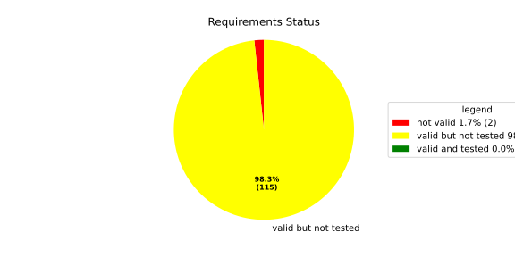
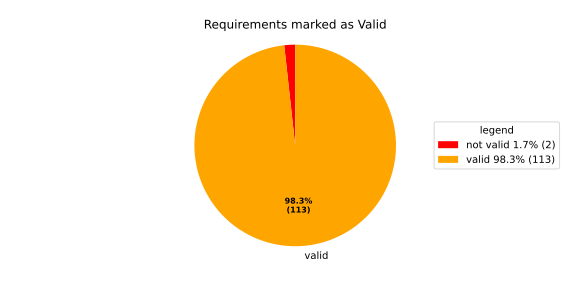
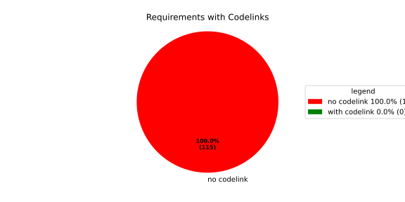
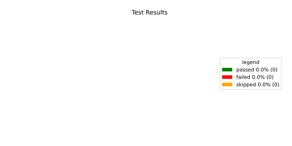
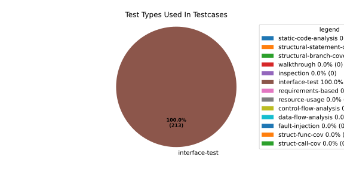
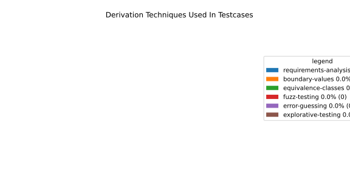

Verification Statistics#
Overview#

In Detail#



Failed Tests
Hint: This table should be empty. Before a PR can be merged all tests have to be successful.
No needs passed the filters
Skipped / Disabled Tests
testcase |
Result |
Fully Verifies |
Partially Verifies |
Test Type |
Derivation Technique |
link |
|---|---|---|---|---|---|---|
ValidateRangeTest/4__RejectsValueAboveMax |
skipped |
interface-test |
explorative-testing |
|||
ValidateRangeTest/4__RejectsValueBelowMin |
skipped |
interface-test |
explorative-testing |
All passed Tests#
testcase |
Result |
Fully Verifies |
Partially Verifies |
Test Type |
Derivation Technique |
link |
|---|---|---|---|---|---|---|
AliveImplTest__DoesNotThrowWhenInterfacePathEnvVarIsSet |
passed |
interface-test |
explorative-testing |
testcase__AliveImplTest__DoesNotThrowWhenInterfacePathEnvVarIsSet_xpewu |
||
AliveImplTest__ReportCheckpointSafeWhenNotConnected |
passed |
interface-test |
explorative-testing |
testcase__AliveImplTest__ReportCheckpointSafeWhenNotConnected_ppvuc |
||
AliveImplTest__ThrowsWhenInterfacePathEnvVarIsNotSet |
passed |
interface-test |
explorative-testing |
testcase__AliveImplTest__ThrowsWhenInterfacePathEnvVarIsNotSet_ekxfw |
||
AliveSupervisionTest__AliveDebouncesThroughFailedBeforeExpired |
passed |
interface-test |
explorative-testing |
testcase__AliveSupervisionTest__AliveDebouncesThroughFailedBeforeExpired_mlnbe |
||
AliveSupervisionTest__AliveReportsEnqueueFailureWhenRingBufferFull |
passed |
interface-test |
explorative-testing |
testcase__AliveSupervisionTest__AliveReportsEnqueueFailureWhenRingBufferFull_byhrd |
||
AliveSupervisionTest__AliveStaysOkWithCorrectHeartbeats |
passed |
interface-test |
explorative-testing |
testcase__AliveSupervisionTest__AliveStaysOkWithCorrectHeartbeats_vekof |
||
AliveSupervisionTest__AliveTransitionsOkToExpiredOnMissingHeartbeat |
passed |
interface-test |
explorative-testing |
testcase__AliveSupervisionTest__AliveTransitionsOkToExpiredOnMissingHeartbeat_jymxo |
||
AliveSupervisionTest__DeactivatesOnProcessCrash |
passed |
interface-test |
explorative-testing |
testcase__AliveSupervisionTest__DeactivatesOnProcessCrash_ypejs |
||
AliveSupervisionTest__DeactivatesOnProcessSigterm |
passed |
interface-test |
explorative-testing |
testcase__AliveSupervisionTest__DeactivatesOnProcessSigterm_hzaal |
||
AliveSupervisionTest__IgnoresIrrelevantProcessStates |
passed |
interface-test |
explorative-testing |
testcase__AliveSupervisionTest__IgnoresIrrelevantProcessStates_aolvb |
||
AliveSupervisionTest__MaxIndicationViolationExpires |
passed |
interface-test |
explorative-testing |
testcase__AliveSupervisionTest__MaxIndicationViolationExpires_whhhi |
||
AliveSupervisionTest__ReactivatesAfterCrash |
passed |
interface-test |
explorative-testing |
|||
ApplicationTypes/ApplicationTypeTest__ConvertsToExpectedValue/Native |
passed |
interface-test |
explorative-testing |
testcase__ApplicationTypes/ApplicationTypeTest__ConvertsToExpectedValue/Native_yxxcz |
||
ApplicationTypes/ApplicationTypeTest__ConvertsToExpectedValue/Reporting |
passed |
interface-test |
explorative-testing |
testcase__ApplicationTypes/ApplicationTypeTest__ConvertsToExpectedValue/Reporting_wcfwr |
||
ApplicationTypes/ApplicationTypeTest__ConvertsToExpectedValue/ReportingAndSupervised |
passed |
interface-test |
explorative-testing |
testcase__ApplicationTypes/ApplicationTypeTest__ConvertsToExpectedValue/ReportingAndSupervised_yxgad |
||
ApplicationTypes/ApplicationTypeTest__ConvertsToExpectedValue/StateManager |
passed |
interface-test |
explorative-testing |
testcase__ApplicationTypes/ApplicationTypeTest__ConvertsToExpectedValue/StateManager_ivuzc |
||
ConverterTest__ConvertAliveSupervisionMissingCycleReturnsError |
passed |
interface-test |
explorative-testing |
testcase__ConverterTest__ConvertAliveSupervisionMissingCycleReturnsError_bifzg |
||
ConverterTest__ConvertAliveSupervisionNullReturnsDefault |
passed |
interface-test |
explorative-testing |
testcase__ConverterTest__ConvertAliveSupervisionNullReturnsDefault_clyua |
||
ConverterTest__ConvertAliveSupervisionValid |
passed |
interface-test |
explorative-testing |
|||
ConverterTest__ConvertApplicationProfileMissingSelfTerminatingReturnsError |
passed |
interface-test |
explorative-testing |
testcase__ConverterTest__ConvertApplicationProfileMissingSelfTerminatingReturnsError_zddjb |
||
ConverterTest__ConvertApplicationProfileMissingTypeReturnsError |
passed |
interface-test |
explorative-testing |
testcase__ConverterTest__ConvertApplicationProfileMissingTypeReturnsError_zrfcs |
||
ConverterTest__ConvertApplicationProfileValid |
passed |
interface-test |
explorative-testing |
testcase__ConverterTest__ConvertApplicationProfileValid_oohxq |
||
ConverterTest__ConvertComponentAliveSupervisionBothIndicationsAbsentReturnsError |
passed |
interface-test |
explorative-testing |
testcase__ConverterTest__ConvertComponentAliveSupervisionBothIndicationsAbsentReturnsError_gvtfi |
||
ConverterTest__ConvertComponentAliveSupervisionMissingReportingCycleReturnsError |
passed |
interface-test |
explorative-testing |
testcase__ConverterTest__ConvertComponentAliveSupervisionMissingReportingCycleReturnsError_ajymy |
||
ConverterTest__ConvertComponentAliveSupervisionMissingToleranceReturnsError |
passed |
interface-test |
explorative-testing |
testcase__ConverterTest__ConvertComponentAliveSupervisionMissingToleranceReturnsError_lgrhj |
||
ConverterTest__ConvertComponentAliveSupervisionNullReturnsDefault |
passed |
interface-test |
explorative-testing |
testcase__ConverterTest__ConvertComponentAliveSupervisionNullReturnsDefault_xhaus |
||
ConverterTest__ConvertComponentAliveSupervisionOnlyMaxIndicationsPresent |
passed |
interface-test |
explorative-testing |
testcase__ConverterTest__ConvertComponentAliveSupervisionOnlyMaxIndicationsPresent_smwht |
||
ConverterTest__ConvertComponentAliveSupervisionOnlyMinIndicationsPresent |
passed |
interface-test |
explorative-testing |
testcase__ConverterTest__ConvertComponentAliveSupervisionOnlyMinIndicationsPresent_ybbrr |
||
ConverterTest__ConvertComponentAliveSupervisionValid |
passed |
interface-test |
explorative-testing |
testcase__ConverterTest__ConvertComponentAliveSupervisionValid_ijedh |
||
ConverterTest__ConvertComponentsValid |
passed |
interface-test |
explorative-testing |
|||
ConverterTest__ConvertComponentsWithInvalidComponentReturnsError |
passed |
interface-test |
explorative-testing |
testcase__ConverterTest__ConvertComponentsWithInvalidComponentReturnsError_wridc |
||
ConverterTest__ConvertComponentValid |
passed |
interface-test |
explorative-testing |
|||
ConverterTest__ConvertDeploymentConfigMissingReadyTimeoutReturnsError |
passed |
interface-test |
explorative-testing |
testcase__ConverterTest__ConvertDeploymentConfigMissingReadyTimeoutReturnsError_ljzfl |
||
ConverterTest__ConvertDeploymentConfigMissingShutdownTimeoutReturnsError |
passed |
interface-test |
explorative-testing |
testcase__ConverterTest__ConvertDeploymentConfigMissingShutdownTimeoutReturnsError_vyqye |
||
ConverterTest__ConvertDeploymentConfigValid |
passed |
interface-test |
explorative-testing |
|||
ConverterTest__ConvertEnvironmentalVariables |
passed |
interface-test |
explorative-testing |
testcase__ConverterTest__ConvertEnvironmentalVariables_fnhgo |
||
ConverterTest__ConvertEnvironmentalVariablesNullReturnsEmpty |
passed |
interface-test |
explorative-testing |
testcase__ConverterTest__ConvertEnvironmentalVariablesNullReturnsEmpty_vglrx |
||
ConverterTest__ConvertFallbackRunTargetMissingTimeoutReturnsError |
passed |
interface-test |
explorative-testing |
testcase__ConverterTest__ConvertFallbackRunTargetMissingTimeoutReturnsError_aevly |
||
ConverterTest__ConvertFallbackRunTargetValid |
passed |
interface-test |
explorative-testing |
testcase__ConverterTest__ConvertFallbackRunTargetValid_nexxj |
||
ConverterTest__ConvertReadyConditionMissingProcessStateReturnsError |
passed |
interface-test |
explorative-testing |
testcase__ConverterTest__ConvertReadyConditionMissingProcessStateReturnsError_ileav |
||
ConverterTest__ConvertReadyConditionValid |
passed |
interface-test |
explorative-testing |
|||
ConverterTest__ConvertRestartActionMissingFieldsReturnsError |
passed |
interface-test |
explorative-testing |
testcase__ConverterTest__ConvertRestartActionMissingFieldsReturnsError_aapjb |
||
ConverterTest__ConvertRestartActionNullReturnsNullopt |
passed |
interface-test |
explorative-testing |
testcase__ConverterTest__ConvertRestartActionNullReturnsNullopt_ifvyd |
||
ConverterTest__ConvertRestartActionValid |
passed |
interface-test |
explorative-testing |
|||
ConverterTest__ConvertRunTargetMissingTransitionTimeoutReturnsError |
passed |
interface-test |
explorative-testing |
testcase__ConverterTest__ConvertRunTargetMissingTransitionTimeoutReturnsError_ynekv |
||
ConverterTest__ConvertRunTargetsValid |
passed |
interface-test |
explorative-testing |
|||
ConverterTest__ConvertRunTargetsWithInvalidRunTargetReturnsError |
passed |
interface-test |
explorative-testing |
testcase__ConverterTest__ConvertRunTargetsWithInvalidRunTargetReturnsError_ldlox |
||
ConverterTest__ConvertRunTargetValid |
passed |
interface-test |
explorative-testing |
|||
ConverterTest__ConvertSandboxMissingGidReturnsError |
passed |
interface-test |
explorative-testing |
testcase__ConverterTest__ConvertSandboxMissingGidReturnsError_veeel |
||
ConverterTest__ConvertSandboxMissingSchedulingPolicyReturnsError |
passed |
interface-test |
explorative-testing |
testcase__ConverterTest__ConvertSandboxMissingSchedulingPolicyReturnsError_pkfts |
||
ConverterTest__ConvertSandboxMissingSchedulingPriorityReturnsError |
passed |
interface-test |
explorative-testing |
testcase__ConverterTest__ConvertSandboxMissingSchedulingPriorityReturnsError_xzdho |
||
ConverterTest__ConvertSandboxMissingUidReturnsError |
passed |
interface-test |
explorative-testing |
testcase__ConverterTest__ConvertSandboxMissingUidReturnsError_ogfku |
||
ConverterTest__ConvertSandboxSupplementaryGidOutOfRangeReturnsError |
passed |
interface-test |
explorative-testing |
testcase__ConverterTest__ConvertSandboxSupplementaryGidOutOfRangeReturnsError_zavpx |
||
ConverterTest__ConvertSandboxUidOutOfRangeReturnsError |
passed |
interface-test |
explorative-testing |
testcase__ConverterTest__ConvertSandboxUidOutOfRangeReturnsError_mcuaf |
||
ConverterTest__ConvertSandboxValid |
passed |
interface-test |
explorative-testing |
|||
ConverterTest__ConvertSwitchRunTargetActionNullReturnsNullopt |
passed |
interface-test |
explorative-testing |
testcase__ConverterTest__ConvertSwitchRunTargetActionNullReturnsNullopt_zmitx |
||
ConverterTest__ConvertSwitchRunTargetActionValid |
passed |
interface-test |
explorative-testing |
testcase__ConverterTest__ConvertSwitchRunTargetActionValid_tdklr |
||
ConverterTest__ConvertWatchdogMissingDeactivateReturnsError |
passed |
interface-test |
explorative-testing |
testcase__ConverterTest__ConvertWatchdogMissingDeactivateReturnsError_gzwjt |
||
ConverterTest__ConvertWatchdogMissingMagicCloseReturnsError |
passed |
interface-test |
explorative-testing |
testcase__ConverterTest__ConvertWatchdogMissingMagicCloseReturnsError_gexxk |
||
ConverterTest__ConvertWatchdogMissingMaxTimeoutReturnsError |
passed |
interface-test |
explorative-testing |
testcase__ConverterTest__ConvertWatchdogMissingMaxTimeoutReturnsError_lffxm |
||
ConverterTest__ConvertWatchdogNullReturnsNullopt |
passed |
interface-test |
explorative-testing |
testcase__ConverterTest__ConvertWatchdogNullReturnsNullopt_irsdk |
||
ConverterTest__ConvertWatchdogValid |
passed |
interface-test |
explorative-testing |
|||
DeadlineFixture__Start_AlreadyRunning |
passed |
interface-test |
explorative-testing |
|||
DeadlineFixture__Start_Succeeds |
passed |
interface-test |
explorative-testing |
|||
DeadlineMonitorBuilderFixture__AddDeadline_Succeeds |
passed |
interface-test |
explorative-testing |
testcase__DeadlineMonitorBuilderFixture__AddDeadline_Succeeds_nagke |
||
DeadlineMonitorBuilderFixture__New_Succeeds |
passed |
interface-test |
explorative-testing |
|||
DeadlineMonitorFixture__GetDeadline_Succeeds |
passed |
interface-test |
explorative-testing |
testcase__DeadlineMonitorFixture__GetDeadline_Succeeds_tmltf |
||
DeadlineMonitorFixture__GetDeadline_Unknown |
passed |
interface-test |
explorative-testing |
|||
EnumConversionTest__ConvertSchedulingPolicyUnsupported |
passed |
interface-test |
explorative-testing |
testcase__EnumConversionTest__ConvertSchedulingPolicyUnsupported_iavqm |
||
EnvironmentTest__AddIncreasesSize |
passed |
interface-test |
explorative-testing |
|||
EnvironmentTest__DefaultConstructedIsEmpty |
passed |
interface-test |
explorative-testing |
|||
EnvironmentTest__EmptyEnvironmentEnvpIsNullTerminated |
passed |
interface-test |
explorative-testing |
testcase__EnvironmentTest__EmptyEnvironmentEnvpIsNullTerminated_wwumw |
||
EnvironmentTest__EnvpReturnsNullTerminatedArray |
passed |
interface-test |
explorative-testing |
testcase__EnvironmentTest__EnvpReturnsNullTerminatedArray_aubkv |
||
EnvironmentTest__EnvpWithMultipleEntries |
passed |
interface-test |
explorative-testing |
|||
EnvironmentTest__MoveAssignmentPreservesEntries |
passed |
interface-test |
explorative-testing |
testcase__EnvironmentTest__MoveAssignmentPreservesEntries_vkydj |
||
EnvironmentTest__MoveConstructorPreservesEntries |
passed |
interface-test |
explorative-testing |
testcase__EnvironmentTest__MoveConstructorPreservesEntries_upclt |
||
EnvironmentTest__RangeBasedForLoopWorks |
passed |
interface-test |
explorative-testing |
|||
EnvironmentTest__ReserveAndAddAvoidReallocation |
passed |
interface-test |
explorative-testing |
testcase__EnvironmentTest__ReserveAndAddAvoidReallocation_lgzmu |
||
EnvironmentTest__SsoLengthStringSurvivesReallocation |
passed |
interface-test |
explorative-testing |
testcase__EnvironmentTest__SsoLengthStringSurvivesReallocation_jfmtl |
||
EnvironmentVariableTest__CStrReturnsKeyEqualsValue |
passed |
interface-test |
explorative-testing |
testcase__EnvironmentVariableTest__CStrReturnsKeyEqualsValue_rkwan |
||
EnvironmentVariableTest__EmptyValue |
passed |
interface-test |
explorative-testing |
|||
EnvironmentVariableTest__KeyAndValueAreAccessible |
passed |
interface-test |
explorative-testing |
testcase__EnvironmentVariableTest__KeyAndValueAreAccessible_kcrth |
||
EnvironmentVariableTest__ValueContainingEquals |
passed |
interface-test |
explorative-testing |
testcase__EnvironmentVariableTest__ValueContainingEquals_apzgz |
||
ExecErrorDomainTest__AllKnownCodesHaveDistinctMessages |
passed |
interface-test |
explorative-testing |
testcase__ExecErrorDomainTest__AllKnownCodesHaveDistinctMessages_qpoka |
||
ExecErrorDomainTest__AllKnownCodesReturnNonEmptyMessage |
passed |
interface-test |
explorative-testing |
testcase__ExecErrorDomainTest__AllKnownCodesReturnNonEmptyMessage_bawzg |
||
ExecErrorDomainTest__UnknownCodeReturnsNonEmptyMessage |
passed |
interface-test |
explorative-testing |
testcase__ExecErrorDomainTest__UnknownCodeReturnsNonEmptyMessage_kkwpr |
||
FlatbufferConfigLoaderTest__CorruptedBufferReturnsInvalidFormat |
passed |
interface-test |
explorative-testing |
testcase__FlatbufferConfigLoaderTest__CorruptedBufferReturnsInvalidFormat_twyac |
||
FlatbufferConfigLoaderTest__LoadAliveSupervision |
passed |
interface-test |
explorative-testing |
testcase__FlatbufferConfigLoaderTest__LoadAliveSupervision_hhuux |
||
FlatbufferConfigLoaderTest__LoadBufferFailsWithGenericErrorReturnsGeneralError |
passed |
interface-test |
explorative-testing |
testcase__FlatbufferConfigLoaderTest__LoadBufferFailsWithGenericErrorReturnsGeneralError_kmatm |
||
FlatbufferConfigLoaderTest__LoadBufferFailsWithNoSuchFileReturnsFileNotFound |
passed |
interface-test |
explorative-testing |
testcase__FlatbufferConfigLoaderTest__LoadBufferFailsWithNoSuchFileReturnsFileNotFound_yzlra |
||
FlatbufferConfigLoaderTest__LoadBufferFailsWithPermissionDeniedReturnsInsufficientPermission |
passed |
interface-test |
explorative-testing |
|||
FlatbufferConfigLoaderTest__LoadComponentAliveSupervision |
passed |
interface-test |
explorative-testing |
testcase__FlatbufferConfigLoaderTest__LoadComponentAliveSupervision_fwfad |
||
FlatbufferConfigLoaderTest__LoadEnvironmentalVariables |
passed |
interface-test |
explorative-testing |
testcase__FlatbufferConfigLoaderTest__LoadEnvironmentalVariables_wsosu |
||
FlatbufferConfigLoaderTest__LoadFallbackRunTarget |
passed |
interface-test |
explorative-testing |
testcase__FlatbufferConfigLoaderTest__LoadFallbackRunTarget_wduqm |
||
FlatbufferConfigLoaderTest__LoadMinimalConfig |
passed |
interface-test |
explorative-testing |
testcase__FlatbufferConfigLoaderTest__LoadMinimalConfig_hdkck |
||
FlatbufferConfigLoaderTest__LoadMultipleComponents |
passed |
interface-test |
explorative-testing |
testcase__FlatbufferConfigLoaderTest__LoadMultipleComponents_abpom |
||
FlatbufferConfigLoaderTest__LoadRestartRecoveryAction |
passed |
interface-test |
explorative-testing |
testcase__FlatbufferConfigLoaderTest__LoadRestartRecoveryAction_wyfqg |
||
FlatbufferConfigLoaderTest__LoadRunTargets |
passed |
interface-test |
explorative-testing |
|||
FlatbufferConfigLoaderTest__LoadSandbox |
passed |
interface-test |
explorative-testing |
|||
FlatbufferConfigLoaderTest__LoadSingleComponent |
passed |
interface-test |
explorative-testing |
testcase__FlatbufferConfigLoaderTest__LoadSingleComponent_yidty |
||
FlatbufferConfigLoaderTest__LoadSwitchRunTargetAction |
passed |
interface-test |
explorative-testing |
testcase__FlatbufferConfigLoaderTest__LoadSwitchRunTargetAction_uchgp |
||
FlatbufferConfigLoaderTest__LoadWatchdog |
passed |
interface-test |
explorative-testing |
|||
FlatbufferConfigLoaderTest__MissingSchemaVersionReturnsInvalidFormat |
passed |
interface-test |
explorative-testing |
testcase__FlatbufferConfigLoaderTest__MissingSchemaVersionReturnsInvalidFormat_qqmfn |
||
FlatbufferConfigLoaderTest__OptionalReadyConditionAbsent |
passed |
interface-test |
explorative-testing |
testcase__FlatbufferConfigLoaderTest__OptionalReadyConditionAbsent_lhddx |
||
FlatbufferConfigLoaderTest__OptionalWatchdogAbsent |
passed |
interface-test |
explorative-testing |
testcase__FlatbufferConfigLoaderTest__OptionalWatchdogAbsent_pkhkp |
||
FlatbufferConfigLoaderTest__WrongSchemaVersionReturnsUnsupportedVersion |
passed |
interface-test |
explorative-testing |
testcase__FlatbufferConfigLoaderTest__WrongSchemaVersionReturnsUnsupportedVersion_zrbjv |
||
HealthMonitor__GetDeadlineMonitor_Available |
passed |
|||||
HealthMonitor__GetDeadlineMonitor_Taken |
passed |
|||||
HealthMonitor__GetDeadlineMonitor_Unknown |
passed |
|||||
HealthMonitor__GetHeartbeatMonitor_Available |
passed |
testcase__HealthMonitor__GetHeartbeatMonitor_Available_aacat |
||||
HealthMonitor__GetHeartbeatMonitor_Taken |
passed |
|||||
HealthMonitor__GetHeartbeatMonitor_Unknown |
passed |
|||||
HealthMonitor__GetLogicMonitor_Available |
passed |
|||||
HealthMonitor__GetLogicMonitor_Taken |
passed |
|||||
HealthMonitor__GetLogicMonitor_Unknown |
passed |
|||||
HealthMonitor__Start_MonitorsNotTaken |
passed |
|||||
HealthMonitor__Start_Succeeds |
passed |
|||||
HealthMonitorBuilderFixture__Build_InvalidCycles |
passed |
interface-test |
explorative-testing |
testcase__HealthMonitorBuilderFixture__Build_InvalidCycles_pdigk |
||
HealthMonitorBuilderFixture__Build_NoMonitors |
passed |
interface-test |
explorative-testing |
testcase__HealthMonitorBuilderFixture__Build_NoMonitors_ktcve |
||
HealthMonitorBuilderFixture__Build_Succeeds |
passed |
interface-test |
explorative-testing |
|||
HealthMonitorBuilderFixture__New_Succeeds |
passed |
interface-test |
explorative-testing |
|||
HealthMonitorTest__Integrated |
passed |
interface-test |
explorative-testing |
|||
HeartbeatMonitor__Heartbeat_Succeeds |
passed |
interface-test |
explorative-testing |
|||
HeartbeatMonitorBuilder__New_Succeeds |
passed |
interface-test |
explorative-testing |
|||
IdentifierHashTest__IdentifierHash_default_created |
passed |
interface-test |
explorative-testing |
testcase__IdentifierHashTest__IdentifierHash_default_created_yhhvi |
||
IdentifierHashTest__IdentifierHash_EqualityOperators |
passed |
interface-test |
explorative-testing |
testcase__IdentifierHashTest__IdentifierHash_EqualityOperators_nnsuj |
||
IdentifierHashTest__IdentifierHash_invalid_hash_no_string_representation |
passed |
interface-test |
explorative-testing |
testcase__IdentifierHashTest__IdentifierHash_invalid_hash_no_string_representation_rxowr |
||
IdentifierHashTest__IdentifierHash_LessThanOperator |
passed |
interface-test |
explorative-testing |
testcase__IdentifierHashTest__IdentifierHash_LessThanOperator_rnbax |
||
IdentifierHashTest__IdentifierHash_no_dangling_pointer_after_source_string_dies |
passed |
interface-test |
explorative-testing |
testcase__IdentifierHashTest__IdentifierHash_no_dangling_pointer_after_source_string_dies_qsjin |
||
IdentifierHashTest__IdentifierHash_with_string_created |
passed |
interface-test |
explorative-testing |
testcase__IdentifierHashTest__IdentifierHash_with_string_created_aygdm |
||
IdentifierHashTest__IdentifierHash_with_string_view_created |
passed |
interface-test |
explorative-testing |
testcase__IdentifierHashTest__IdentifierHash_with_string_view_created_dbpol |
||
LogicMonitorBuilderFixture__AddState_Succeeds |
passed |
interface-test |
explorative-testing |
testcase__LogicMonitorBuilderFixture__AddState_Succeeds_axdxj |
||
LogicMonitorBuilderFixture__New_Succeeds |
passed |
interface-test |
explorative-testing |
|||
LogicMonitorFixture__State_Invalid |
passed |
interface-test |
explorative-testing |
|||
LogicMonitorFixture__State_Succeeds |
passed |
interface-test |
explorative-testing |
|||
LogicMonitorFixture__Transition_Invalid |
passed |
interface-test |
explorative-testing |
|||
LogicMonitorFixture__Transition_Succeeds |
passed |
interface-test |
explorative-testing |
|||
LogicMonitorFixture__Transition_Unknown |
passed |
interface-test |
explorative-testing |
|||
MonitorIfDaemonTest__Active_CheckpointDataForwarded |
passed |
interface-test |
explorative-testing |
testcase__MonitorIfDaemonTest__Active_CheckpointDataForwarded_evumz |
||
MonitorIfDaemonTest__Active_FutureTimestamp_NotForwardedInCurrentCycle |
passed |
interface-test |
explorative-testing |
testcase__MonitorIfDaemonTest__Active_FutureTimestamp_NotForwardedInCurrentCycle_oycau |
||
MonitorIfDaemonTest__Active_FutureTimestampCheckpoint_ConsumedInLaterCycle |
passed |
interface-test |
explorative-testing |
testcase__MonitorIfDaemonTest__Active_FutureTimestampCheckpoint_ConsumedInLaterCycle_veyyy |
||
MonitorIfDaemonTest__Active_MultipleCheckpointsInOneCycle_AllForwarded |
passed |
interface-test |
explorative-testing |
testcase__MonitorIfDaemonTest__Active_MultipleCheckpointsInOneCycle_AllForwarded_gmbms |
||
MonitorIfDaemonTest__Active_NonMatchingCheckpointId_NotForwarded |
passed |
interface-test |
explorative-testing |
testcase__MonitorIfDaemonTest__Active_NonMatchingCheckpointId_NotForwarded_bohck |
||
MonitorIfDaemonTest__Active_OverflowDetected_TransitionsToInactiveOverflow |
passed |
interface-test |
explorative-testing |
testcase__MonitorIfDaemonTest__Active_OverflowDetected_TransitionsToInactiveOverflow_ovitk |
||
MonitorIfDaemonTest__Active_TwoAttachedCheckpoints_RoutedByCheckpointId |
passed |
interface-test |
explorative-testing |
testcase__MonitorIfDaemonTest__Active_TwoAttachedCheckpoints_RoutedByCheckpointId_skqhd |
||
MonitorIfDaemonTest__GetInterfaceName_ReturnsNameGivenAtConstruction |
passed |
interface-test |
explorative-testing |
testcase__MonitorIfDaemonTest__GetInterfaceName_ReturnsNameGivenAtConstruction_iaemz |
||
MonitorIfDaemonTest__InactiveOverflow_NoProcessRestart_DoesNotRepeatNotification |
passed |
interface-test |
explorative-testing |
testcase__MonitorIfDaemonTest__InactiveOverflow_NoProcessRestart_DoesNotRepeatNotification_gdbxg |
||
MonitorIfDaemonTest__InactiveOverflow_ProcessRestartFlag_ClearedAfterNotification |
passed |
interface-test |
explorative-testing |
testcase__MonitorIfDaemonTest__InactiveOverflow_ProcessRestartFlag_ClearedAfterNotification_pqfyy |
||
MonitorIfDaemonTest__InactiveOverflow_ProcessRestarts_PushesOverflowNotificationAgain |
passed |
interface-test |
explorative-testing |
|||
MonitorIfDaemonTest__InitiallyInactive_CheckForNewData_DoesNotNotifyCheckpoint |
passed |
interface-test |
explorative-testing |
testcase__MonitorIfDaemonTest__InitiallyInactive_CheckForNewData_DoesNotNotifyCheckpoint_wjrfl |
||
MonitorIfDaemonTest__ProcessOff_DeactivatesMonitor_NoFurtherDataForwarded |
passed |
interface-test |
explorative-testing |
testcase__MonitorIfDaemonTest__ProcessOff_DeactivatesMonitor_NoFurtherDataForwarded_uialh |
||
MonitorIfDaemonTest__ProcessOffBeforeActivation_RemainsInactive |
passed |
interface-test |
explorative-testing |
testcase__MonitorIfDaemonTest__ProcessOffBeforeActivation_RemainsInactive_kzzyy |
||
MonitorIfDaemonTest__ProcessRunning_ActivatesMonitorOnNextCheckForNewData |
passed |
interface-test |
explorative-testing |
testcase__MonitorIfDaemonTest__ProcessRunning_ActivatesMonitorOnNextCheckForNewData_fkkmk |
||
MonitorIfDaemonTest__ProcessStarting_AlsoActivatesMonitor |
passed |
interface-test |
explorative-testing |
testcase__MonitorIfDaemonTest__ProcessStarting_AlsoActivatesMonitor_xdkbg |
||
MPMCConcurrentQueueTest_Basic__LvaluePushCopiesItem |
passed |
testcase__MPMCConcurrentQueueTest_Basic__LvaluePushCopiesItem_oysfc |
||||
MPMCConcurrentQueueTest_Basic__PopReturnsNulloptOnSemaphoreWaitFailure |
passed |
testcase__MPMCConcurrentQueueTest_Basic__PopReturnsNulloptOnSemaphoreWaitFailure_rgznm |
||||
MPMCConcurrentQueueTest_Basic__PushAndPopPreservesOrder |
passed |
testcase__MPMCConcurrentQueueTest_Basic__PushAndPopPreservesOrder_aijdb |
||||
MPMCConcurrentQueueTest_Basic__PushAndPopSingleItem |
passed |
testcase__MPMCConcurrentQueueTest_Basic__PushAndPopSingleItem_jrxwz |
||||
MPMCConcurrentQueueTest_Basic__RvaluePushWorksWithMoveOnlyType |
passed |
testcase__MPMCConcurrentQueueTest_Basic__RvaluePushWorksWithMoveOnlyType_cxxaj |
||||
MPMCConcurrentQueueTest_Blocking__PopBlocksUntilItemAvailable |
passed |
testcase__MPMCConcurrentQueueTest_Blocking__PopBlocksUntilItemAvailable_ttwcx |
||||
MPMCConcurrentQueueTest_Blocking__PushBlocksWhenFull |
passed |
testcase__MPMCConcurrentQueueTest_Blocking__PushBlocksWhenFull_ecujf |
||||
MPMCConcurrentQueueTest_Blocking__StopUnblocksBlockedConsumer |
passed |
testcase__MPMCConcurrentQueueTest_Blocking__StopUnblocksBlockedConsumer_snzyr |
||||
MPMCConcurrentQueueTest_Blocking__StopUnblocksBlockedProducer |
passed |
testcase__MPMCConcurrentQueueTest_Blocking__StopUnblocksBlockedProducer_inddu |
||||
MPMCConcurrentQueueTest_MPMC__AllItemsDelivered |
passed |
testcase__MPMCConcurrentQueueTest_MPMC__AllItemsDelivered_ztjqe |
||||
MPMCConcurrentQueueTest_Stop__ItemsAreDroppedAfterStop |
passed |
testcase__MPMCConcurrentQueueTest_Stop__ItemsAreDroppedAfterStop_ragzw |
||||
MPMCConcurrentQueueTest_Stop__PopReturnsNulloptWhenStoppedAndEmpty |
passed |
testcase__MPMCConcurrentQueueTest_Stop__PopReturnsNulloptWhenStoppedAndEmpty_cevga |
||||
MPMCConcurrentQueueTest_Stop__PushReturnsFalseAfterStop |
passed |
testcase__MPMCConcurrentQueueTest_Stop__PushReturnsFalseAfterStop_qqnhw |
||||
MPMCConcurrentQueueTest_Timeout__PushWithTimeoutReturnsFalseWhenFull |
passed |
testcase__MPMCConcurrentQueueTest_Timeout__PushWithTimeoutReturnsFalseWhenFull_aeips |
||||
MPMCConcurrentQueueTest_Timeout__PushWithTimeoutSucceedsWhenSlotAvailable |
passed |
testcase__MPMCConcurrentQueueTest_Timeout__PushWithTimeoutSucceedsWhenSlotAvailable_klzpo |
||||
OsHandlerTest__WaitReturnsError_OsHandlerSleepsAndDoesNotCallFindTerminated |
passed |
interface-test |
explorative-testing |
testcase__OsHandlerTest__WaitReturnsError_OsHandlerSleepsAndDoesNotCallFindTerminated_cibtr |
||
OsHandlerTest__WaitReturnsErrorThenProcessId_HandlerRecoversAndInvokesCallback |
passed |
interface-test |
explorative-testing |
testcase__OsHandlerTest__WaitReturnsErrorThenProcessId_HandlerRecoversAndInvokesCallback_nqstd |
||
OsHandlerTest__WaitReturnsProcessId_FindTerminatedIsCalled |
passed |
interface-test |
explorative-testing |
testcase__OsHandlerTest__WaitReturnsProcessId_FindTerminatedIsCalled_chlsq |
||
OsHandlerTest__WaitReturnsProcessIdBeforeRegistration_LaterRegistrationReceivesStoredTermination |
passed |
interface-test |
explorative-testing |
|||
OsHandlerTest__WaitReturnsUnknownPidWhenMapIsFull_OutOfResourcesPathDoesNotNotifyCallbacks |
passed |
interface-test |
explorative-testing |
|||
OsHandlerTest__WaitReturnsZeroPid_OsHandlerSleepsAndDoesNotCallFindTerminated |
passed |
interface-test |
explorative-testing |
testcase__OsHandlerTest__WaitReturnsZeroPid_OsHandlerSleepsAndDoesNotCallFindTerminated_rkttz |
||
ProcessStateClient_UT__ProcessStateClient_ConstructReceiver_Succeeds |
passed |
interface-test |
explorative-testing |
testcase__ProcessStateClient_UT__ProcessStateClient_ConstructReceiver_Succeeds_hodwy |
||
ProcessStateClient_UT__ProcessStateClient_QueueMaxNumberOfProcesses_Succeeds |
passed |
interface-test |
explorative-testing |
testcase__ProcessStateClient_UT__ProcessStateClient_QueueMaxNumberOfProcesses_Succeeds_qohom |
||
ProcessStateClient_UT__ProcessStateClient_QueueOneProcess_Succeeds |
passed |
interface-test |
explorative-testing |
testcase__ProcessStateClient_UT__ProcessStateClient_QueueOneProcess_Succeeds_tmzfz |
||
ProcessStateClient_UT__ProcessStateClient_QueueOneProcessTooMany_Fails |
passed |
interface-test |
explorative-testing |
testcase__ProcessStateClient_UT__ProcessStateClient_QueueOneProcessTooMany_Fails_sspoj |
||
ProcessStates/ProcessStateTest__ConvertsToExpectedValue/Running |
passed |
interface-test |
explorative-testing |
testcase__ProcessStates/ProcessStateTest__ConvertsToExpectedValue/Running_hinlr |
||
ProcessStates/ProcessStateTest__ConvertsToExpectedValue/Terminated |
passed |
interface-test |
explorative-testing |
testcase__ProcessStates/ProcessStateTest__ConvertsToExpectedValue/Terminated_zrytn |
||
RecoveryClientTest__FIFOOrdering |
passed |
interface-test |
explorative-testing |
|||
RecoveryClientTest__GetNextRequest |
passed |
interface-test |
explorative-testing |
|||
RecoveryClientTest__GetNextRequestEmpty |
passed |
interface-test |
explorative-testing |
|||
RecoveryClientTest__RingBufferFull |
passed |
interface-test |
explorative-testing |
|||
RecoveryClientTest__SendSingleRequest |
passed |
interface-test |
explorative-testing |
|||
RunTest__AsPosixProcessCreatesAndDestroysLifeCycleManager |
passed |
testcase__RunTest__AsPosixProcessCreatesAndDestroysLifeCycleManager_sooex |
||||
RunTest__AsPosixProcessForwardsConstructorArgsToApplication |
passed |
testcase__RunTest__AsPosixProcessForwardsConstructorArgsToApplication_dmeur |
||||
RunTest__AsPosixProcessForwardsNonZeroExitCode |
passed |
testcase__RunTest__AsPosixProcessForwardsNonZeroExitCode_lldqd |
||||
RunTest__AsPosixProcessPassesCorrectApplicationTypeToRun |
passed |
testcase__RunTest__AsPosixProcessPassesCorrectApplicationTypeToRun_ajqwz |
||||
RunTest__AsPosixProcessReturnsZeroExitCode |
passed |
|||||
RunTest__RunApplicationFreeFunctionDelegatesToAsPosixProcess |
passed |
testcase__RunTest__RunApplicationFreeFunctionDelegatesToAsPosixProcess_ccing |
||||
RunTest__RunConstructorPassesArgcArgvToApplicationContext |
passed |
testcase__RunTest__RunConstructorPassesArgcArgvToApplicationContext_agerd |
||||
SafeProcessMapTest__ConcurrentFindAndInsertFromMultipleThreads |
passed |
interface-test |
explorative-testing |
testcase__SafeProcessMapTest__ConcurrentFindAndInsertFromMultipleThreads_kzfyg |
||
SafeProcessMapTest__ConcurrentInsertAndFindFromMultipleThreads |
passed |
interface-test |
explorative-testing |
testcase__SafeProcessMapTest__ConcurrentInsertAndFindFromMultipleThreads_hnyqj |
||
SafeProcessMapTest__ConstructWithZeroCapacity |
passed |
interface-test |
explorative-testing |
testcase__SafeProcessMapTest__ConstructWithZeroCapacity_gjmqg |
||
SafeProcessMapTest__FindTerminatedInsertsEntryWhenPidNotPresent |
passed |
interface-test |
explorative-testing |
testcase__SafeProcessMapTest__FindTerminatedInsertsEntryWhenPidNotPresent_ixtlt |
||
SafeProcessMapTest__FindTerminatedMatchesExistingInsertAndCallsCallback |
passed |
interface-test |
explorative-testing |
testcase__SafeProcessMapTest__FindTerminatedMatchesExistingInsertAndCallsCallback_ehuzb |
||
SafeProcessMapTest__FindTerminatedSamePidTwiceYieldsUntilInsertResolves |
passed |
interface-test |
explorative-testing |
testcase__SafeProcessMapTest__FindTerminatedSamePidTwiceYieldsUntilInsertResolves_hsekx |
||
SafeProcessMapTest__FindTerminatedWithNegativePidReturnsInvalid |
passed |
interface-test |
explorative-testing |
testcase__SafeProcessMapTest__FindTerminatedWithNegativePidReturnsInvalid_dewoh |
||
SafeProcessMapTest__FindTerminatedWorksAtMaxTreeDepth |
passed |
interface-test |
explorative-testing |
testcase__SafeProcessMapTest__FindTerminatedWorksAtMaxTreeDepth_adtzi |
||
SafeProcessMapTest__InsertBeyondCapacityReturnsOutOfMemory |
passed |
interface-test |
explorative-testing |
testcase__SafeProcessMapTest__InsertBeyondCapacityReturnsOutOfMemory_qjnie |
||
SafeProcessMapTest__InsertIntoEmptyTreeReturnsZero |
passed |
interface-test |
explorative-testing |
testcase__SafeProcessMapTest__InsertIntoEmptyTreeReturnsZero_zfbaq |
||
SafeProcessMapTest__InsertMatchesExistingFindTerminatedEntry |
passed |
interface-test |
explorative-testing |
testcase__SafeProcessMapTest__InsertMatchesExistingFindTerminatedEntry_fuwrp |
||
SafeProcessMapTest__InsertMultipleNodesThenFindTerminatedRemovesAll |
passed |
interface-test |
explorative-testing |
testcase__SafeProcessMapTest__InsertMultipleNodesThenFindTerminatedRemovesAll_fvowh |
||
SafeProcessMapTest__InsertSamePidTwiceYieldsUntilFindTerminatedResolves |
passed |
interface-test |
explorative-testing |
testcase__SafeProcessMapTest__InsertSamePidTwiceYieldsUntilFindTerminatedResolves_wzwyb |
||
SchedulingPolicies/SchedulingPolicyTest__ConvertsToExpectedPosixValue/SCHED_FIFO |
passed |
interface-test |
explorative-testing |
testcase__SchedulingPolicies/SchedulingPolicyTest__ConvertsToExpectedPosixValue/SCHED_FIFO_soddq |
||
SchedulingPolicies/SchedulingPolicyTest__ConvertsToExpectedPosixValue/SCHED_OTHER |
passed |
interface-test |
explorative-testing |
testcase__SchedulingPolicies/SchedulingPolicyTest__ConvertsToExpectedPosixValue/SCHED_OTHER_oigmk |
||
SchedulingPolicies/SchedulingPolicyTest__ConvertsToExpectedPosixValue/SCHED_RR |
passed |
interface-test |
explorative-testing |
testcase__SchedulingPolicies/SchedulingPolicyTest__ConvertsToExpectedPosixValue/SCHED_RR_pcjci |
||
score/health_monitor/src/rust/test-510566969/tests |
passed |
testcase__score/health_monitor/src/rust/test-510566969/tests_kjjlw |
||||
score/health_monitor/src/rust/test-827801879/loom_tests |
passed |
testcase__score/health_monitor/src/rust/test-827801879/loom_tests_cpmix |
||||
SecondsToMsTest__ConvertsPositiveValue |
passed |
interface-test |
explorative-testing |
|||
SecondsToMsTest__ConvertsZero |
passed |
interface-test |
explorative-testing |
|||
SecondsToMsTest__RejectsNegativeValue |
passed |
interface-test |
explorative-testing |
|||
SecondsToMsTest__RejectsOverflow |
passed |
interface-test |
explorative-testing |
|||
SecondsToMsTest__RejectsSubMillisecond |
passed |
interface-test |
explorative-testing |
|||
StringHelperTest__ConvertGidVectorReturnsEmptyWhenNull |
passed |
interface-test |
explorative-testing |
testcase__StringHelperTest__ConvertGidVectorReturnsEmptyWhenNull_jmcsr |
||
StringHelperTest__ConvertStringVectorReturnsEmptyWhenNull |
passed |
interface-test |
explorative-testing |
testcase__StringHelperTest__ConvertStringVectorReturnsEmptyWhenNull_zsuvv |
||
StringHelperTest__SafeStringReturnsEmptyWhenNull |
passed |
interface-test |
explorative-testing |
testcase__StringHelperTest__SafeStringReturnsEmptyWhenNull_crelr |
||
StringHelperTest__SafeStringReturnsValueWhenNotNull |
passed |
interface-test |
explorative-testing |
testcase__StringHelperTest__SafeStringReturnsValueWhenNotNull_anbko |
||
test_complex_monitoring |
passed |
|||||
test_crash_on_startup |
passed |
|||||
test_incorrect_config_non_reporting |
passed |
|||||
test_process_crash_monitoring |
passed |
|||||
test_process_launch_args |
passed |
|||||
test_process_wrong_binary_failure |
passed |
|||||
test_recovery_action_complex_rep_failure |
passed |
|||||
test_recovery_action_simple_rep_failure |
passed |
|||||
test_smoke |
passed |
|||||
test_switch_run_target |
passed |
|||||
TimeRangeFixture__MinMax |
passed |
interface-test |
explorative-testing |
|||
TimeRangeFixture__New_InvalidOrder |
passed |
interface-test |
explorative-testing |
|||
TimeRangeFixture__New_Succeeds |
passed |
interface-test |
explorative-testing |
|||
ValidateRangeTest/0__AcceptsMaxBoundary |
passed |
interface-test |
explorative-testing |
|||
ValidateRangeTest/0__AcceptsMinBoundary |
passed |
interface-test |
explorative-testing |
|||
ValidateRangeTest/0__AcceptsZero |
passed |
interface-test |
explorative-testing |
|||
ValidateRangeTest/0__RejectsValueAboveMax |
passed |
interface-test |
explorative-testing |
|||
ValidateRangeTest/0__RejectsValueBelowMin |
passed |
interface-test |
explorative-testing |
|||
ValidateRangeTest/1__AcceptsMaxBoundary |
passed |
interface-test |
explorative-testing |
|||
ValidateRangeTest/1__AcceptsMinBoundary |
passed |
interface-test |
explorative-testing |
|||
ValidateRangeTest/1__AcceptsZero |
passed |
interface-test |
explorative-testing |
|||
ValidateRangeTest/1__RejectsValueAboveMax |
passed |
interface-test |
explorative-testing |
|||
ValidateRangeTest/1__RejectsValueBelowMin |
passed |
interface-test |
explorative-testing |
|||
ValidateRangeTest/2__AcceptsMaxBoundary |
passed |
interface-test |
explorative-testing |
|||
ValidateRangeTest/2__AcceptsMinBoundary |
passed |
interface-test |
explorative-testing |
|||
ValidateRangeTest/2__AcceptsZero |
passed |
interface-test |
explorative-testing |
|||
ValidateRangeTest/2__RejectsValueAboveMax |
passed |
interface-test |
explorative-testing |
|||
ValidateRangeTest/2__RejectsValueBelowMin |
passed |
interface-test |
explorative-testing |
|||
ValidateRangeTest/3__AcceptsMaxBoundary |
passed |
interface-test |
explorative-testing |
|||
ValidateRangeTest/3__AcceptsMinBoundary |
passed |
interface-test |
explorative-testing |
|||
ValidateRangeTest/3__AcceptsZero |
passed |
interface-test |
explorative-testing |
|||
ValidateRangeTest/3__RejectsValueAboveMax |
passed |
interface-test |
explorative-testing |
|||
ValidateRangeTest/3__RejectsValueBelowMin |
passed |
interface-test |
explorative-testing |
|||
ValidateRangeTest/4__AcceptsMaxBoundary |
passed |
interface-test |
explorative-testing |
|||
ValidateRangeTest/4__AcceptsMinBoundary |
passed |
interface-test |
explorative-testing |
|||
ValidateRangeTest/4__AcceptsZero |
passed |
interface-test |
explorative-testing |
Details About Testcases#


Test Log Files#
tests-report/tests/integration/process_simple_rep_failure/process_simple_rep_failure/test.log
exec ${PAGER:-/usr/bin/less} "$0" || exit 1
Executing tests from //tests/integration/process_simple_rep_failure:process_simple_rep_failure
-----------------------------------------------------------------------------
============================= test session starts ==============================
platform linux -- Python 3.12.12, pytest-9.0.3, pluggy-1.5.0
rootdir: /home/runner/.bazel/sandbox/processwrapper-sandbox/1255/execroot/_main/bazel-out/k8-fastbuild/bin/tests/integration/process_simple_rep_failure/process_simple_rep_failure.runfiles/score_itf+
configfile: pytest.ini
collected 1 item
../score_itf+::test_recovery_action_simple_rep_failure
-------------------------------- live log setup --------------------------------
[2026-07-06 14:22:24.007] [INFO] [score.itf.plugins.docker] Executing custom image bootstrap command: tests/utils/environments/x86_64-linux/x86_64-linux.sh
[2026-07-06 14:22:24.357] [DEBUG] [docker.utils.config] Trying paths: ['/home/runner/.docker/config.json', '/home/runner/.dockercfg']
[2026-07-06 14:22:24.357] [DEBUG] [docker.utils.config] Found file at path: /home/runner/.docker/config.json
[2026-07-06 14:22:24.358] [DEBUG] [docker.auth] Found 'auths' section
[2026-07-06 14:22:24.358] [DEBUG] [docker.auth] Found entry (registry='https://index.docker.io/v1/', username='githubactions')
[2026-07-06 14:22:24.371] [DEBUG] [urllib3.connectionpool] http://localhost:None "GET /version HTTP/1.1" 200 823
[2026-07-06 14:22:24.423] [DEBUG] [urllib3.connectionpool] http://localhost:None "POST /v1.48/containers/create HTTP/1.1" 201 88
[2026-07-06 14:22:24.428] [DEBUG] [urllib3.connectionpool] http://localhost:None "GET /v1.48/containers/1a9935fe2a974dcb618edf6d54a771614ce3cd4072c08df81fd6250798e3fd20/json HTTP/1.1" 200 None
[2026-07-06 14:22:24.569] [DEBUG] [urllib3.connectionpool] http://localhost:None "POST /v1.48/containers/1a9935fe2a974dcb618edf6d54a771614ce3cd4072c08df81fd6250798e3fd20/start HTTP/1.1" 204 0
[2026-07-06 14:22:24.572] [DEBUG] [docker.utils.config] Trying paths: ['/home/runner/.docker/config.json', '/home/runner/.dockercfg']
[2026-07-06 14:22:24.572] [DEBUG] [docker.utils.config] Found file at path: /home/runner/.docker/config.json
[2026-07-06 14:22:24.572] [DEBUG] [docker.auth] Found 'auths' section
[2026-07-06 14:22:24.572] [DEBUG] [docker.auth] Found entry (registry='https://index.docker.io/v1/', username='githubactions')
[2026-07-06 14:22:24.583] [DEBUG] [urllib3.connectionpool] http://localhost:None "GET /version HTTP/1.1" 200 823
[2026-07-06 14:22:24.837] [INFO] [tests.utils.testing_utils.setup_test] Test case setup finished
-------------------------------- live log call ---------------------------------
[2026-07-06 14:22:24.980] [INFO] [launch_manager] 2026/07/06 14:22:24.7744970 4350728 000 ECU1 LM LM log debug verbose 1 Launch Manager Started !!!!
[2026-07-06 14:22:24.980] [INFO] [launch_manager] 2026/07/06 14:22:24.7744970 4350732 000 ECU1 LM LM log debug verbose 1 Loading LCM Configurations...
[2026-07-06 14:22:24.980] [INFO] [launch_manager] 2026/07/06 14:22:24.7744970 4350733 000 ECU1 LM LM log debug verbose 1 ECUCFG_ENV_VAR_ROOTFOLDER set successfully
[2026-07-06 14:22:24.980] [INFO] [launch_manager] 2026/07/06 14:22:24.7744970 4350734 000 ECU1 LM LM log debug verbose 5 FlatBufferParser::getModeGroupPgName: MainPG ( IdentifierHash: 18079021346025578134 )
[2026-07-06 14:22:24.980] [INFO] [launch_manager] 2026/07/06 14:22:24.7744970 4350735 000 ECU1 LM LM log debug verbose 5
[2026-07-06 14:22:24.981] [INFO] [launch_manager] FlatBufferParser::getModeGroupPgStateName: MainPG/Startup ( IdentifierHash: 10504605499600661529 )
[2026-07-06 14:22:24.981] [INFO] [launch_manager] 2026/07/06 14:22:24.7744971 4350736 000 ECU1 LM LM log debug verbose 5
[2026-07-06 14:22:24.981] [INFO] [launch_manager] FlatBufferParser::getModeGroupPgStateName: MainPG/run_target_app_does_report_krunning_in_time ( IdentifierHash: 11934981641920773349 )
[2026-07-06 14:22:24.981] [INFO] [launch_manager] 2026/07/06 14:22:24.7744971 4350738 000 ECU1 LM LM log debug verbose 5
[2026-07-06 14:22:24.982] [INFO] [launch_manager] FlatBufferParser::getModeGroupPgStateName: MainPG/run_target_app_does_not_report_krunning_in_time ( IdentifierHash: 7672161913816744053 )
[2026-07-06 14:22:24.982] [INFO] [launch_manager] 2026/07/06 14:22:24.7744971 4350739 000 ECU1 LM LM log debug verbose 5 FlatBufferParser::getModeGroupPgStateName: MainPG/Off ( IdentifierHash: 15281793077830264047 )
[2026-07-06 14:22:24.984] [INFO] [launch_manager] 2026/07/06 14:22:24.7744971 4350740 000 ECU1 LM LM log debug verbose 5 FlatBufferParser::getModeGroupPgStateName: MainPG/fallback_run_target ( IdentifierHash: 4059409696722237352 )
[2026-07-06 14:22:24.985] [INFO] [launch_manager] 2026/07/06 14:22:24.7744971 4350742 000 ECU1 LM LM log debug verbose 4 parseProcessConfigurations: Process index: 0 executable_path_: /tmp/tests/process_simple_rep_failure/control_client_mock
[2026-07-06 14:22:24.985] [INFO] [launch_manager] 2026/07/06 14:22:24.7744971 4350743 000 ECU1 LM LM log debug verbose 3
[2026-07-06 14:22:24.988] [INFO] [launch_manager] Process control_client_mock is Reporting execution state
[2026-07-06 14:22:24.988] [INFO] [launch_manager] 2026/07/06 14:22:24.7744971 4350743 000 ECU1 LM LM log debug verbose 1 Process is STATE_MANAGEMENT function Cluster Affiliation
[2026-07-06 14:22:24.989] [INFO] [launch_manager] 2026/07/06 14:22:24.7744971 4350744 000 ECU1 LM LM log debug verbose 3
[2026-07-06 14:22:24.989] [INFO] [launch_manager] Process control_client_mock is Self terminating
[2026-07-06 14:22:24.989] [INFO] [launch_manager] 2026/07/06 14:22:24.7744971 4350745 000 ECU1 LM LM log debug verbose 4
[2026-07-06 14:22:24.990] [INFO] [launch_manager] ParseProcessProcessGroup: id:::pg_name_: MainPG , pg_state_name_: MainPG/Startup
[2026-07-06 14:22:24.990] [INFO] [launch_manager] 2026/07/06 14:22:24.7744972 4350746 000 ECU1 LM LM log debug verbose 4 ParseProcessProcessGroup: id:::pg_name_: MainPG , pg_state_name_: MainPG/run_target_app_does_report_krunning_in_time
[2026-07-06 14:22:24.991] [INFO] [launch_manager] 2026/07/06 14:22:24.7744972 4350747 000 ECU1 LM LM log debug verbose 4
[2026-07-06 14:22:24.991] [INFO] [launch_manager] ParseProcessProcessGroup: id:::pg_name_: MainPG , pg_state_name_: MainPG/run_target_app_does_not_report_krunning_in_time
[2026-07-06 14:22:24.991] [INFO] [launch_manager] 2026/07/06 14:22:24.7744972 4350748 000 ECU1 LM LM log debug verbose 4 ParseProcessProcessGroup: id:::pg_name_: MainPG , pg_state_name_: MainPG/fallback_run_target
[2026-07-06 14:22:24.991] [INFO] [launch_manager] 2026/07/06 14:22:24.7744972 4350749 000 ECU1 LM LM log debug verbose 4 parseProcessConfigurations: Process index: 1 executable_path_: /tmp/tests/process_simple_rep_failure/process_simple_reporting
[2026-07-06 14:22:24.991] [INFO] [launch_manager] 2026/07/06 14:22:24.7744972 4350751 000 ECU1 LM LM log debug verbose 3 Process component_does_report_krunning_in_time is Reporting execution state
[2026-07-06 14:22:24.991] [INFO] [launch_manager] 2026/07/06 14:22:24.7744972 4350752 000 ECU1 LM LM log debug verbose 1
[2026-07-06 14:22:24.992] [INFO] [launch_manager] Process is NOT associated with any function Cluster Affiliation
[2026-07-06 14:22:24.993] [INFO] [launch_manager] 2026/07/06 14:22:24.7744972 4350753 000 ECU1 LM LM log debug verbose 3
[2026-07-06 14:22:24.993] [INFO] [launch_manager] Process component_does_report_krunning_in_time is Self terminating
[2026-07-06 14:22:24.993] [INFO] [launch_manager] 2026/07/06 14:22:24.7744972 4350754 000 ECU1 LM LM log debug verbose 4
[2026-07-06 14:22:24.998] [INFO] [launch_manager] ParseProcessProcessGroup: id:::pg_name_: MainPG , pg_state_name_: MainPG/run_target_app_does_report_krunning_in_time
[2026-07-06 14:22:24.998] [INFO] [launch_manager] 2026/07/06 14:22:24.7744973 4350756 000 ECU1 LM LM log debug verbose 4 parseProcessConfigurations: Process index: 2 executable_path_: /tmp/tests/process_simple_rep_failure/process_simple_reporting
[2026-07-06 14:22:24.998] [INFO] [launch_manager] 2026/07/06 14:22:24.7744973 4350757 000 ECU1 LM LM log debug verbose 3 Process component_does_not_report_krunning_in_time is Reporting execution state
[2026-07-06 14:22:24.998] [INFO] [launch_manager] 2026/07/06 14:22:24.7744973 4350758 000 ECU1 LM LM log debug verbose 1 Process is NOT associated with any function Cluster Affiliation
[2026-07-06 14:22:24.998] [INFO] [launch_manager] 2026/07/06 14:22:24.7744973 4350758 000 ECU1 LM LM log debug verbose 3 Process component_does_not_report_krunning_in_time is Self terminating
[2026-07-06 14:22:24.998] [INFO] [launch_manager] 2026/07/06 14:22:24.7744973 4350758 000 ECU1 LM LM log debug verbose 4 ParseProcessProcessGroup: id:::pg_name_: MainPG , pg_state_name_: MainPG/run_target_app_does_not_report_krunning_in_time
[2026-07-06 14:22:24.998] [INFO] [launch_manager] 2026/07/06 14:22:24.7744973 4350759 000 ECU1 LM LM log debug verbose 4 parseProcessConfigurations: Process index: 3 executable_path_: /tmp/tests/process_simple_rep_failure/verification_process
[2026-07-06 14:22:24.998] [INFO] [launch_manager] 2026/07/06 14:22:24.7744973 4350759 000 ECU1 LM LM log debug verbose 3 Process verification_component is NOT Reporting execution state
[2026-07-06 14:22:24.998] [INFO] [launch_manager] 2026/07/06 14:22:24.7744973 4350759 000 ECU1 LM LM log debug verbose 1 Process is NOT associated with any function Cluster Affiliation
[2026-07-06 14:22:24.998] [INFO] [launch_manager] 2026/07/06 14:22:24.7744973 4350759 000 ECU1 LM LM log debug verbose 3 Process verification_component is Self terminating
[2026-07-06 14:22:24.999] [INFO] [launch_manager] 2026/07/06 14:22:24.7744973 4350759 000 ECU1 LM LM log debug verbose 4 ParseProcessProcessGroup: id:::pg_name_: MainPG , pg_state_name_: MainPG/fallback_run_target
[2026-07-06 14:22:24.999] [INFO] [launch_manager] 2026/07/06 14:22:24.7744973 4350760 000 ECU1 LM LM log debug verbose 3 Loading SWCL Nr. 0 Succeeded
[2026-07-06 14:22:24.999] [INFO] [launch_manager] 2026/07/06 14:22:24.7744973 4350760 000 ECU1 LM LM log debug verbose 2 1 process group(s)
[2026-07-06 14:22:24.999] [INFO] [launch_manager] 2026/07/06 14:22:24.7744973 4350761 000 ECU1 LM LM log debug verbose 3 Creating graph with 4 nodes
[2026-07-06 14:22:24.999] [INFO] [launch_manager] 2026/07/06 14:22:24.7744973 4350761 000 ECU1 LM LM log debug verbose 1 Process groups initialized successfully
[2026-07-06 14:22:24.999] [INFO] [launch_manager] 2026/07/06 14:22:24.7744973 4350761 000 ECU1 LM LM log debug verbose 1 Process Group initialization done
[2026-07-06 14:22:24.999] [INFO] [launch_manager] 2026/07/06 14:22:24.7744973 4350761 000 ECU1 LM LM log debug verbose 3 Creating Safe Process Map with 4 entries
[2026-07-06 14:22:24.999] [INFO] [launch_manager] 2026/07/06 14:22:24.7744973 4350761 000 ECU1 LM LM log debug verbose 2 Creating job queue with capacity 1024
[2026-07-06 14:22:24.999] [INFO] [launch_manager] 2026/07/06 14:22:24.7744973 4350762 000 ECU1 LM LM log debug verbose 1 Creating worker threads...
[2026-07-06 14:22:25.001] [INFO] [launch_manager] 2026/07/06 14:22:24.7744975 4350779 000 ECU1 LM LM log debug verbose 7
[2026-07-06 14:22:25.001] [INFO] [launch_manager] Process group index 0 (with name MainPG ) has 4 processes
[2026-07-06 14:22:25.001] [INFO] [launch_manager] 2026/07/06 14:22:24.7744975 4350781 000 ECU1 LM LM log debug verbose 2
[2026-07-06 14:22:25.005] [INFO] [launch_manager] Creating process node with id: 0
[2026-07-06 14:22:25.005] [INFO] [launch_manager] 2026/07/06 14:22:24.7744975 4350783 000 ECU1 LM LM log debug verbose 5
[2026-07-06 14:22:25.005] [INFO] [launch_manager] Process 0 has 0 start dependencies
[2026-07-06 14:22:25.006] [INFO] [launch_manager] 2026/07/06 14:22:24.7744975 4350784 000 ECU1 LM LM log debug verbose 2 Creating process node with id: 1
[2026-07-06 14:22:25.006] [INFO] [launch_manager] 2026/07/06 14:22:24.7744975 4350785 000 ECU1 LM LM log debug verbose 5 Process 1 has 0 start dependencies
[2026-07-06 14:22:25.006] [INFO] [launch_manager] 2026/07/06 14:22:24.7744975 4350785 000 ECU1 LM LM log debug verbose 2 Creating process node with id: 2
[2026-07-06 14:22:25.006] [INFO] [launch_manager] 2026/07/06 14:22:24.7744975 4350785 000 ECU1 LM LM log debug verbose 5 Process 2 has 0 start dependencies
[2026-07-06 14:22:25.006] [INFO] [launch_manager] 2026/07/06 14:22:24.7744975 4350785 000 ECU1 LM LM log debug verbose 2 Creating process node with id: 3
[2026-07-06 14:22:25.006] [INFO] [launch_manager] 2026/07/06 14:22:24.7744975 4350785 000 ECU1 LM LM log debug verbose 5 Process 3 has 0 start dependencies
[2026-07-06 14:22:25.006] [INFO] [launch_manager] 2026/07/06 14:22:24.7744975 4350786 000 ECU1 LM LM log debug verbose 3 Created 4 process nodes
[2026-07-06 14:22:25.006] [INFO] [launch_manager] 2026/07/06 14:22:24.7744976 4350786 000 ECU1 LM LM log debug verbose 2 Creating successor lists for process group MainPG
[2026-07-06 14:22:25.006] [INFO] [launch_manager] 2026/07/06 14:22:24.7744976 4350786 000 ECU1 LM LM log debug verbose 1 Graphs initialized
[2026-07-06 14:22:25.006] [INFO] [launch_manager] 2026/07/06 14:22:24.7744976 4350788 000 ECU1 LM Fcty log info verbose 2 Factory for FlatCfg MachineConfig: Loading of HM Machine Configuration succeeded.
[2026-07-06 14:22:25.006] [INFO] [launch_manager] 2026/07/06 14:22:24.7744976 4350788 000 ECU1 LM Fcty log debug verbose 3 Factory for FlatCfg MachineConfig: Alive Supervision buffer size: 100
[2026-07-06 14:22:25.007] [INFO] [launch_manager] 2026/07/06 14:22:24.7744976 4350789 000 ECU1 LM Fcty log debug verbose 3 Factory for FlatCfg MachineConfig: Monitor buffer size: 512
[2026-07-06 14:22:25.007] [INFO] [launch_manager] 2026/07/06 14:22:24.7744976 4350789 000 ECU1 LM Fcty log debug verbose 4 Factory for FlatCfg MachineConfig: Periodicity: 50000000 ns
[2026-07-06 14:22:25.007] [INFO] [launch_manager] 2026/07/06 14:22:24.7744976 4350789 000 ECU1 LM Fcty log debug verbose 3
[2026-07-06 14:22:25.007] [INFO] [launch_manager] Factory for FlatCfg MachineConfig: Configured watchdogs: 0
[2026-07-06 14:22:25.007] [INFO] [launch_manager] 2026/07/06 14:22:24.7744976 4350789 000 ECU1 LM Fcty log warn verbose 2 Factory for FlatCfg MachineConfig: No watchdog configured
[2026-07-06 14:22:25.009] [INFO] [launch_manager] 2026/07/06 14:22:24.7744976 4350790 000 ECU1 LM Fcty log debug verbose 2 Software Cluster Handler starts constructing workers: MainCluster
[2026-07-06 14:22:25.009] [INFO] [launch_manager] 2026/07/06 14:22:24.7744976 4350790 000 ECU1 LM Fcty log debug verbose 3 Factory for FlatCfg AR24-11: Successfully created Process States: control_client_mock
[2026-07-06 14:22:25.011] [INFO] [launch_manager] 2026/07/06 14:22:24.7744976 4350791 000 ECU1 LM Fcty log debug verbose 3 Factory for FlatCfg AR24-11: Number of constructed Process States: 1
[2026-07-06 14:22:25.011] [INFO] [launch_manager] 2026/07/06 14:22:24.7744976 4350792 000 ECU1 LM Fcty log debug verbose 3 Factory for FlatCfg AR24-11: Successfully created Alive interface IPC with path: lifecycle_health_control_client_mock
[2026-07-06 14:22:25.012] [INFO] [launch_manager] 2026/07/06 14:22:24.7744976 4350792 000 ECU1 LM Fcty log debug verbose 3 Factory for FlatCfg AR24-11: Number of constructed Alive interface IPCs: 1
[2026-07-06 14:22:25.012] [INFO] [launch_manager] 2026/07/06 14:22:24.7744976 4350792 000 ECU1 LM Fcty log debug verbose 3 Factory for FlatCfg AR24-11: Successfully created Alive Interface: /lifecycle_health_control_client_mock
[2026-07-06 14:22:25.012] [INFO] [launch_manager] 2026/07/06 14:22:24.7744976 4350793 000 ECU1 LM Fcty log debug verbose 3 Factory for FlatCfg AR24-11: Number of constructed Alive interfaces: 1
[2026-07-06 14:22:25.012] [INFO] [launch_manager] 2026/07/06 14:22:24.7744976 4350793 000 ECU1 LM Fcty log debug verbose 3 Factory for FlatCfg AR24-11: Successfully created supervision checkpoint: control_client_mock_checkpoint
[2026-07-06 14:22:25.012] [INFO] [launch_manager] 2026/07/06 14:22:24.7744976 4350793 000 ECU1 LM Fcty log debug verbose 3 Factory for FlatCfg AR24-11: Number of constructed supervision checkpoints: 1
[2026-07-06 14:22:25.012] [INFO] [launch_manager] 2026/07/06 14:22:24.7744976 4350793 000 ECU1 LM Fcty log debug verbose 3 Factory for FlatCfg AR24-11: Successfully created alive supervision worker object: control_client_mock_alive_supervision
[2026-07-06 14:22:25.012] [INFO] [launch_manager] 2026/07/06 14:22:24.7744976 4350793 000 ECU1 LM Fcty log debug verbose 3 Factory for FlatCfg AR24-11: Number of constructed alive supervisions: 1
[2026-07-06 14:22:25.012] [INFO] [launch_manager] 2026/07/06 14:22:24.7744976 4350794 000 ECU1 LM Fcty log info verbose 2 Phm Daemon: The (configured) periodicity in [ns] is set to: 50000000
[2026-07-06 14:22:25.012] [INFO] [launch_manager] 2026/07/06 14:22:24.7744976 4350794 000 ECU1 LM Fcty log debug verbose 2 Phm Daemon: The accuracy of the monotonic system clock in [ns] is: 1
[2026-07-06 14:22:25.012] [INFO] [launch_manager] 2026/07/06 14:22:24.7744976 4350794 000 ECU1 LM Fcty log debug verbose 3 AliveMonitor: Initialization took 0 ms
[2026-07-06 14:22:25.015] [INFO] [launch_manager] 2026/07/06 14:22:24.7744976 4350795 000 ECU1 LM LM log info verbose 1 LCM started successfully
[2026-07-06 14:22:25.015] [INFO] [launch_manager] 2026/07/06 14:22:24.7744977 4350796 000 ECU1 LM LM log debug verbose 3 clock() at run(): 39.188000 ms
[2026-07-06 14:22:25.016] [INFO] [launch_manager] 2026/07/06 14:22:24.7744977 4350797 000 ECU1 LM LM log debug verbose 1 =============STARTING MAINPG STARTUP STATE============
[2026-07-06 14:22:25.016] [INFO] [launch_manager] 2026/07/06 14:22:24.7744977 4350797 000 ECU1 LM LM log debug verbose 9 Graph::setState changes from kSuccess to kInTransition for PG 0 ( MainPG )
[2026-07-06 14:22:25.016] [INFO] [launch_manager] 2026/07/06 14:22:24.7744977 4350797 000 ECU1 LM LM log debug verbose 2 Stop Dependencies: 0
[2026-07-06 14:22:25.016] [INFO] [launch_manager] 2026/07/06 14:22:24.7744977 4350798 000 ECU1 LM LM log debug verbose 2 Stop Dependencies: 0
[2026-07-06 14:22:25.016] [INFO] [launch_manager] 2026/07/06 14:22:24.7744977 4350798 000 ECU1 LM LM log debug verbose 2 Stop Dependencies: 0
[2026-07-06 14:22:25.016] [INFO] [launch_manager] 2026/07/06 14:22:24.7744977 4350798 000 ECU1 LM LM log debug verbose 2 Stop Dependencies: 0
[2026-07-06 14:22:25.016] [INFO] [launch_manager] 2026/07/06 14:22:24.7744977 4350798 000 ECU1 LM LM log debug verbose 2 Start Dependencies: 0
[2026-07-06 14:22:25.016] [INFO] [launch_manager] 2026/07/06 14:22:24.7744977 4350798 000 ECU1 LM LM log debug verbose 2 Start Dependencies: 0
[2026-07-06 14:22:25.016] [INFO] [launch_manager] 2026/07/06 14:22:24.7744977 4350798 000 ECU1 LM LM log debug verbose 2 Start Dependencies: 0
[2026-07-06 14:22:25.016] [INFO] [launch_manager] 2026/07/06 14:22:24.7744977 4350799 000 ECU1 LM LM log debug verbose 2 Start Dependencies: 0
[2026-07-06 14:22:25.016] [INFO] [launch_manager] 2026/07/06 14:22:24.7744977 4350799 000 ECU1 LM LM log debug verbose 6 Starting process 0 ( control_client_mock ) from executable /tmp/tests/process_simple_rep_failure/control_client_mock
[2026-07-06 14:22:25.016] [INFO] [launch_manager] 2026/07/06 14:22:24.7744977 4350800 000 ECU1 LM LM log debug verbose 3 Initialize the control client for control_client_mock process
[2026-07-06 14:22:25.016] [INFO] [launch_manager] 2026/07/06 14:22:24.7744977 4350801 000 ECU1 LM LM log debug verbose 1 ControlClientChannel initialized
[2026-07-06 14:22:25.016] [INFO] [launch_manager] 2026/07/06 14:22:24.7744977 4350806 000 ECU1 LM LM log debug verbose 4 startProcess pid 68 received for process: control_client_mock
[2026-07-06 14:22:25.017] [INFO] [launch_manager] 2026/07/06 14:22:24.7744978 4350806 000 ECU1 LM LM log debug verbose 1 ControlClientChannel obtained from sync.
[2026-07-06 14:22:25.019] [INFO] [launch_manager] [==========] Running 1 test from 1 test suite.
[2026-07-06 14:22:25.019] [INFO] [launch_manager] [----------] Global test environment set-up.
[2026-07-06 14:22:25.019] [INFO] [launch_manager] [----------] 1 test from RecoveryActionSimpleRepFailure
[2026-07-06 14:22:25.020] [INFO] [launch_manager] [ RUN ] RecoveryActionSimpleRepFailure.ControlClientMock
[2026-07-06 14:22:25.023] [INFO] [launch_manager] [ STEP ] Report running from ControlClientMock
[2026-07-06 14:22:25.023] [INFO] [launch_manager] [ END STEP ] Report running from ControlClientMock
[2026-07-06 14:22:25.023] [INFO] [launch_manager] [ STEP ] Activate RunTarget run_target_app_does_report_krunning_in_time
[2026-07-06 14:22:25.023] [INFO] [launch_manager] 2026/07/06 14:22:24.7744985 4350878 000 ECU1 LM LM log debug verbose 1
[2026-07-06 14:22:25.024] [INFO] [launch_manager] Request sent. Waiting for acknowledgment...
[2026-07-06 14:22:25.024] [INFO] [launch_manager] 2026/07/06 14:22:24.7744985 4350883 000 ECU1 LM LM log debug verbose 8 ProcessGroupManager::ControlClientHandler: got request kSetStateRequest ( 16 ) re state MainPG/run_target_app_does_report_krunning_in_time of PG MainPG
[2026-07-06 14:22:25.024] [INFO] [launch_manager] 2026/07/06 14:22:24.7744985 4350884 000 ECU1 LM LM log debug verbose 6 Pending state for process group MainPG changed from to MainPG/run_target_app_does_report_krunning_in_time
[2026-07-06 14:22:25.024] [INFO] [launch_manager] 2026/07/06 14:22:24.7744985 4350884 000 ECU1 LM LM log debug verbose 9 Graph::setState changes from kInTransition to kCancelled for PG 0 ( MainPG )
[2026-07-06 14:22:25.024] [INFO] [launch_manager] 2026/07/06 14:22:24.7744985 4350885 000 ECU1 LM LM log debug verbose 1 Control Client handler nudged
[2026-07-06 14:22:25.024] [INFO] [launch_manager] 2026/07/06 14:22:24.7744986 4350886 000 ECU1 LM LM log debug verbose 1 Request acknowledged.
[2026-07-06 14:22:25.024] [INFO] [launch_manager] 2026/07/06 14:22:24.7744986 4350887 000 ECU1 LM LM log debug verbose 1 Request acknowledged.
[2026-07-06 14:22:25.025] [INFO] [launch_manager] 2026/07/06 14:22:24.7744986 4350890 000 ECU1 LM LM log debug verbose 8 Got kRunning for pid 68 ( control_client_mock ) process 0 of group MainPG
[2026-07-06 14:22:25.025] [INFO] [launch_manager] 2026/07/06 14:22:24.7744986 4350891 000 ECU1 LM LM log debug verbose 7 startProcess for MainPG process 0 ( control_client_mock ) done
[2026-07-06 14:22:25.025] [INFO] [launch_manager] 2026/07/06 14:22:24.7744986 4350891 000 ECU1 LM LM log debug verbose 1 Control Client handler nudged
[2026-07-06 14:22:25.026] [INFO] [launch_manager] 2026/07/06 14:22:24.7744986 4350892 000 ECU1 LM LM log fatal verbose 3 clock() at failed initial state transition: 40.847000 ms
[2026-07-06 14:22:25.028] [INFO] [launch_manager] 2026/07/06 14:22:24.7744986 4350893 000 ECU1 LM LM log debug verbose 9
[2026-07-06 14:22:25.028] [INFO] [launch_manager] Graph::setState changes from kCancelled to kUndefinedState for PG 0 ( MainPG )
[2026-07-06 14:22:25.030] [INFO] [launch_manager] 2026/07/06 14:22:24.7744986 4350893 000 ECU1 LM LM log debug verbose 1 Control Client handler nudged
[2026-07-06 14:22:25.030] [INFO] [launch_manager] 2026/07/06 14:22:24.7744988 4350910 000 ECU1 LM LM log debug verbose 6 Pending state for process group MainPG changed from MainPG/run_target_app_does_report_krunning_in_time to
[2026-07-06 14:22:25.030] [INFO] [launch_manager] 2026/07/06 14:22:24.7744988 4350911 000 ECU1 LM LM log debug verbose 4 Start transition to MainPG/run_target_app_does_report_krunning_in_time for PG MainPG
[2026-07-06 14:22:25.030] [INFO] [launch_manager] 2026/07/06 14:22:24.7744988 4350911 000 ECU1 LM LM log debug verbose 9 Graph::setState changes from kUndefinedState to kInTransition for PG 0 ( MainPG )
[2026-07-06 14:22:25.030] [INFO] [launch_manager] 2026/07/06 14:22:24.7744988 4350911 000 ECU1 LM LM log debug verbose 2 Stop Dependencies: 0
[2026-07-06 14:22:25.030] [INFO] [launch_manager] 2026/07/06 14:22:24.7744988 4350911 000 ECU1 LM LM log debug verbose 2 Stop Dependencies: 0
[2026-07-06 14:22:25.031] [INFO] [launch_manager] 2026/07/06 14:22:24.7744988 4350911 000 ECU1 LM LM log debug verbose 2 Stop Dependencies: 0
[2026-07-06 14:22:25.031] [INFO] [launch_manager] 2026/07/06 14:22:24.7744988 4350912 000 ECU1 LM LM log debug verbose 2 Stop Dependencies: 0
[2026-07-06 14:22:25.032] [INFO] [launch_manager] 2026/07/06 14:22:24.7744988 4350912 000 ECU1 LM LM log debug verbose 2 Start Dependencies: 0
[2026-07-06 14:22:25.032] [INFO] [launch_manager] 2026/07/06 14:22:24.7744988 4350915 000 ECU1 LM LM log debug verbose 2
[2026-07-06 14:22:25.032] [INFO] [launch_manager] Start Dependencies: 0
[2026-07-06 14:22:25.033] [INFO] [launch_manager] 2026/07/06 14:22:24.7744989 4350921 000 ECU1 LM LM log debug verbose 2
[2026-07-06 14:22:25.033] [INFO] [launch_manager] Start Dependencies: 0
[2026-07-06 14:22:25.033] [INFO] [launch_manager] 2026/07/06 14:22:24.7744989 4350922 000 ECU1 LM LM log debug verbose 2
[2026-07-06 14:22:25.033] [INFO] [launch_manager] Start Dependencies: 0
[2026-07-06 14:22:25.034] [INFO] [launch_manager] 2026/07/06 14:22:24.7744989 4350924 000 ECU1 LM LM log debug verbose 6 Starting process 1 ( component_does_report_krunning_in_time ) from executable /tmp/tests/process_simple_rep_failure/process_simple_reporting
[2026-07-06 14:22:25.034] [INFO] [launch_manager] 2026/07/06 14:22:24.7744990 4350929 000 ECU1 LM LM log debug verbose 4 startProcess pid 70 received for process: component_does_report_krunning_in_time
[2026-07-06 14:22:25.035] [INFO] [launch_manager] [==========] Running 1 test from 1 test suite.
[2026-07-06 14:22:25.035] [INFO] [launch_manager] [----------] Global test environment set-up.
[2026-07-06 14:22:25.035] [INFO] [launch_manager] [----------] 1 test from ProcessSimpleRepFailure
[2026-07-06 14:22:25.035] [INFO] [launch_manager] [ RUN ] ProcessSimpleRepFailure.ProcessSimpleReporting
[2026-07-06 14:22:25.035] [INFO] [launch_manager] [ STEP ] Check args
[2026-07-06 14:22:25.035] [INFO] [launch_manager] [ END STEP ] Check args
[2026-07-06 14:22:25.035] [INFO] [launch_manager] [ STEP ] Report running from ProcessSimpleReporting
[2026-07-06 14:22:25.036] [INFO] [launch_manager] 2026/07/06 14:22:25.7745027 4351296 000 ECU1 LM Sprv log debug verbose 6
[2026-07-06 14:22:25.036] [INFO] [launch_manager] Process with Id control_client_mock changed state PG MainPG/Startup PS 1
[2026-07-06 14:22:25.036] [INFO] [launch_manager] 2026/07/06 14:22:25.7745027 4351300 000 ECU1 LM Sprv log debug verbose 6
[2026-07-06 14:22:25.037] [INFO] [launch_manager] Process with Id control_client_mock changed state PG MainPG/Startup PS 2
[2026-07-06 14:22:25.037] [INFO] [launch_manager] 2026/07/06 14:22:25.7745027 4351303 000 ECU1 LM Sprv log debug verbose 6
[2026-07-06 14:22:25.038] [INFO] [launch_manager] Process with Id component_does_report_krunning_in_time changed state PG MainPG/run_target_app_does_report_krunning_in_time PS 1
[2026-07-06 14:22:25.038] [INFO] [launch_manager] 2026/07/06 14:22:25.7745027 4351305 000 ECU1 LM Sprv log info verbose 3
[2026-07-06 14:22:25.039] [INFO] [launch_manager] Alive Supervision ( control_client_mock_alive_supervision ) switched to OK.
[2026-07-06 14:22:25.044] [DEBUG] [tests.utils.testing_utils.run_until_file_deployed] Waiting for /tmp/tests/test_end
[2026-07-06 14:22:25.507] [INFO] [launch_manager] [ END STEP ] Report running from ProcessSimpleReporting
[2026-07-06 14:22:25.521] [INFO] [launch_manager] [ OK ] ProcessSimpleRepFailure.ProcessSimpleReporting (509 ms)
[2026-07-06 14:22:25.521] [INFO] [launch_manager] [----------] 1 test from ProcessSimpleRepFailure (509 ms total)
[2026-07-06 14:22:25.521] [INFO] [launch_manager] [----------] Global test environment tear-down
[2026-07-06 14:22:25.521] [INFO] [launch_manager] [==========] 1 test from 1 test suite ran. (509 ms total)
[2026-07-06 14:22:25.522] [INFO] [launch_manager] [ PASSED ] 1 test.
[2026-07-06 14:22:25.522] [INFO] [launch_manager] 2026/07/06 14:22:25.7745502 4356054 000 ECU1 LM LM log debug verbose 12 Child process 1 of MainPG pid 70 ( component_does_report_krunning_in_time ) for node True terminated with status 0
[2026-07-06 14:22:25.522] [INFO] [launch_manager] 2026/07/06 14:22:25.7745504 4356067 000 ECU1 LM LM log debug verbose 8 Got kRunning for pid 70 ( component_does_report_krunning_in_time ) process 1 of group MainPG
[2026-07-06 14:22:25.523] [INFO] [launch_manager] 2026/07/06 14:22:25.7745504 4356068 000 ECU1 LM LM log debug verbose 7 startProcess for MainPG process 1 ( component_does_report_krunning_in_time ) done
[2026-07-06 14:22:25.523] [INFO] [launch_manager] 2026/07/06 14:22:25.7745504 4356068 000 ECU1 LM LM log debug verbose 9 Graph::setState changes from kInTransition to kSuccess for PG 0 ( MainPG )
[2026-07-06 14:22:25.523] [INFO] [launch_manager] 2026/07/06 14:22:25.7745504 4356068 000 ECU1 LM LM log info verbose 7 Completed the request for PG MainPG to State MainPG/run_target_app_does_report_krunning_in_time in 518 ms
[2026-07-06 14:22:25.523] [INFO] [launch_manager] 2026/07/06 14:22:25.7745504 4356068 000 ECU1 LM LM log debug verbose 1 Control Client handler nudged
[2026-07-06 14:22:25.529] [INFO] [launch_manager] 2026/07/06 14:22:25.7745504 4356069 000 ECU1 LM LM log debug verbose 8 ProcessGroupManager::ControlClientHandler: Sending kSetStateSuccess ( 20 ) re state MainPG/run_target_app_does_report_krunning_in_time of PG MainPG
[2026-07-06 14:22:25.529] [INFO] [launch_manager] 2026/07/06 14:22:25.7745504 4356069 000 ECU1 LM LM log debug verbose 1 Response sent.
[2026-07-06 14:22:25.529] [INFO] [launch_manager] 2026/07/06 14:22:25.7745527 4356296 000 ECU1 LM Sprv log debug verbose 6 Process with Id component_does_report_krunning_in_time changed state PG MainPG/run_target_app_does_report_krunning_in_time PS 4
[2026-07-06 14:22:25.609] [INFO] [launch_manager] 2026/07/06 14:22:25.7745583 4356865 000 ECU1 LM LM log debug verbose 1 Response retrieved.
[2026-07-06 14:22:25.610] [INFO] [launch_manager] [ END STEP ] Activate RunTarget run_target_app_does_report_krunning_in_time
[2026-07-06 14:22:25.618] [DEBUG] [tests.utils.testing_utils.run_until_file_deployed] Waiting for /tmp/tests/test_end
[2026-07-06 14:22:26.282] [DEBUG] [tests.utils.testing_utils.run_until_file_deployed] Waiting for /tmp/tests/test_end
[2026-07-06 14:22:26.585] [INFO] [launch_manager] [ STEP ] Verify fallback run target has not been activated
[2026-07-06 14:22:26.585] [INFO] [launch_manager] [ END STEP ] Verify fallback run target has not been activated
[2026-07-06 14:22:26.602] [INFO] [launch_manager] [ STEP ] Activate RunTarget run_target_app_does_not_report_krunning_in_time
[2026-07-06 14:22:26.602] [INFO] [launch_manager] 2026/07/06 14:22:26.7746584 4366868 000 ECU1 LM LM log debug verbose 1 Request sent. Waiting for acknowledgment...
[2026-07-06 14:22:26.604] [INFO] [launch_manager] 2026/07/06 14:22:26.7746584 4366872 000 ECU1 LM LM log debug verbose 8 ProcessGroupManager::ControlClientHandler: got request kSetStateRequest ( 16 ) re state MainPG/run_target_app_does_not_report_krunning_in_time of PG MainPG
[2026-07-06 14:22:26.605] [INFO] [launch_manager] 2026/07/06 14:22:26.7746584 4366873 000 ECU1 LM LM log debug verbose 6 Pending state for process group MainPG changed from to MainPG/run_target_app_does_not_report_krunning_in_time
[2026-07-06 14:22:26.605] [INFO] [launch_manager] 2026/07/06 14:22:26.7746584 4366873 000 ECU1 LM LM log debug verbose 1 Request acknowledged.
[2026-07-06 14:22:26.605] [INFO] [launch_manager] 2026/07/06 14:22:26.7746584 4366873 000 ECU1 LM LM log debug verbose 6 Pending state for process group MainPG changed from MainPG/run_target_app_does_not_report_krunning_in_time to
[2026-07-06 14:22:26.605] [INFO] [launch_manager] 2026/07/06 14:22:26.7746584 4366873 000 ECU1 LM LM log debug verbose 4 Start transition to MainPG/run_target_app_does_not_report_krunning_in_time for PG MainPG
[2026-07-06 14:22:26.607] [INFO] [launch_manager] 2026/07/06 14:22:26.7746584 4366874 000 ECU1 LM LM log debug verbose 9 Graph::setState changes from kSuccess to kInTransition for PG 0 ( MainPG )
[2026-07-06 14:22:26.607] [INFO] [launch_manager] 2026/07/06 14:22:26.7746584 4366874 000 ECU1 LM LM log debug verbose 2 Stop Dependencies: 0
[2026-07-06 14:22:26.607] [INFO] [launch_manager] 2026/07/06 14:22:26.7746584 4366874 000 ECU1 LM LM log debug verbose 2 Stop Dependencies: 0
[2026-07-06 14:22:26.607] [INFO] [launch_manager] 2026/07/06 14:22:26.7746584 4366874 000 ECU1 LM LM log debug verbose 2 Stop Dependencies: 0
[2026-07-06 14:22:26.607] [INFO] [launch_manager] 2026/07/06 14:22:26.7746584 4366874 000 ECU1 LM LM log debug verbose 2 Stop Dependencies: 0
[2026-07-06 14:22:26.607] [INFO] [launch_manager] 2026/07/06 14:22:26.7746584 4366874 000 ECU1 LM LM log debug verbose 2 Start Dependencies: 0
[2026-07-06 14:22:26.607] [INFO] [launch_manager] 2026/07/06 14:22:26.7746584 4366875 000 ECU1 LM LM log debug verbose 2 Start Dependencies: 0
[2026-07-06 14:22:26.609] [INFO] [launch_manager] 2026/07/06 14:22:26.7746584 4366875 000 ECU1 LM LM log debug verbose 2 Start Dependencies: 0
[2026-07-06 14:22:26.609] [INFO] [launch_manager] 2026/07/06 14:22:26.7746584 4366875 000 ECU1 LM LM log debug verbose 2 Start Dependencies: 0
[2026-07-06 14:22:26.609] [INFO] [launch_manager] 2026/07/06 14:22:26.7746585 4366876 000 ECU1 LM LM log debug verbose 6 Starting process 2 ( component_does_not_report_krunning_in_time ) from executable /tmp/tests/process_simple_rep_failure/process_simple_reporting
[2026-07-06 14:22:26.609] [INFO] [launch_manager] 2026/07/06 14:22:26.7746585 4366882 000 ECU1 LM LM log debug verbose 1
[2026-07-06 14:22:26.610] [INFO] [launch_manager] Request acknowledged.
[2026-07-06 14:22:26.610] [INFO] [launch_manager] 2026/07/06 14:22:26.7746585 4366883 000 ECU1 LM LM log debug verbose 4 startProcess pid 90 received for process: component_does_not_report_krunning_in_time
[2026-07-06 14:22:26.611] [INFO] [launch_manager] [==========] Running 1 test from 1 test suite.
[2026-07-06 14:22:26.611] [INFO] [launch_manager] [----------] Global test environment set-up.
[2026-07-06 14:22:26.611] [INFO] [launch_manager] [----------] 1 test from ProcessSimpleRepFailure
[2026-07-06 14:22:26.611] [INFO] [launch_manager] [ RUN ] ProcessSimpleRepFailure.ProcessSimpleReporting
[2026-07-06 14:22:26.612] [INFO] [launch_manager] [ STEP ] Check args
[2026-07-06 14:22:26.612] [INFO] [launch_manager] [ END STEP ] Check args
[2026-07-06 14:22:26.612] [INFO] [launch_manager] [ STEP ] Report running from ProcessSimpleReporting
[2026-07-06 14:22:26.627] [INFO] [launch_manager] 2026/07/06 14:22:26.7746627 4367296 000 ECU1 LM Sprv log debug verbose 6
[2026-07-06 14:22:26.628] [INFO] [launch_manager] Process with Id component_does_not_report_krunning_in_time changed state PG MainPG/run_target_app_does_not_report_krunning_in_time PS 1
[2026-07-06 14:22:26.867] [DEBUG] [tests.utils.testing_utils.run_until_file_deployed] Waiting for /tmp/tests/test_end
[2026-07-06 14:22:27.474] [DEBUG] [tests.utils.testing_utils.run_until_file_deployed] Waiting for /tmp/tests/test_end
[2026-07-06 14:22:27.651] [INFO] [launch_manager] 2026/07/06 14:22:27.7747646 4377490 000 ECU1 LM LM log error verbose 1 Semaphore timedWait or post failed: Unable to wait or post on semaphores within the specified timeout.
[2026-07-06 14:22:27.651] [INFO] [launch_manager] 2026/07/06 14:22:27.7747646 4377491 000 ECU1 LM LM log warn verbose 5 Got kRunning timeout for process 2 ( component_does_not_report_krunning_in_time )
[2026-07-06 14:22:27.651] [INFO] [launch_manager] 2026/07/06 14:22:27.7747646 4377491 000 ECU1 LM LM log debug verbose 5 terminating process 2 ( component_does_not_report_krunning_in_time )
[2026-07-06 14:22:27.651] [INFO] [launch_manager] 2026/07/06 14:22:27.7747646 4377491 000 ECU1 LM LM log debug verbose 9 Requesting termination of process 2 of MainPG pid 90 ( component_does_not_report_krunning_in_time )
[2026-07-06 14:22:27.651] [INFO] [launch_manager] 2026/07/06 14:22:27.7747646 4377492 000 ECU1 LM LM log debug verbose 2 Request termination received for 90
[2026-07-06 14:22:27.679] [INFO] [launch_manager] 2026/07/06 14:22:27.7747676 4377796 000 ECU1 LM Sprv log debug verbose 6 Process with Id component_does_not_report_krunning_in_time changed state PG MainPG/run_target_app_does_not_report_krunning_in_time PS 3
[2026-07-06 14:22:28.075] [DEBUG] [tests.utils.testing_utils.run_until_file_deployed] Waiting for /tmp/tests/test_end
[2026-07-06 14:22:28.667] [DEBUG] [tests.utils.testing_utils.run_until_file_deployed] Waiting for /tmp/tests/test_end
[2026-07-06 14:22:28.731] [INFO] [launch_manager] 2026/07/06 14:22:28.7748731 4388341 000 ECU1 LM LM log warn verbose 5 Process 2 ( component_does_not_report_krunning_in_time ) did not respond to SIGTERM, sending SIGKILL
[2026-07-06 14:22:28.731] [INFO] [launch_manager] 2026/07/06 14:22:28.7748731 4388341 000 ECU1 LM LM log debug verbose 2
[2026-07-06 14:22:28.732] [INFO] [launch_manager] Forced termination received for pid 90
[2026-07-06 14:22:28.732] [INFO] [launch_manager] 2026/07/06 14:22:28.7748731 4388345 000 ECU1 LM LM log debug verbose 12 Child process 2 of MainPG pid 90 ( component_does_not_report_krunning_in_time ) for node True terminated with status 9
[2026-07-06 14:22:28.732] [INFO] [launch_manager] 2026/07/06 14:22:28.7748731 4388345 000 ECU1 LM LM log warn verbose 7 unexpected termination of process 2 pid 90 ( component_does_not_report_krunning_in_time )
[2026-07-06 14:22:28.733] [INFO] [launch_manager] 2026/07/06 14:22:28.7748733 4388362 000 ECU1 LM LM log debug verbose 7 terminateProcess for MainPG process 2 ( component_does_not_report_krunning_in_time ) done
[2026-07-06 14:22:28.733] [INFO] [launch_manager] 2026/07/06 14:22:28.7748733 4388363 000 ECU1 LM LM log debug verbose 9 Graph::setState changes from kInTransition to kAborting for PG 0 ( MainPG )
[2026-07-06 14:22:28.735] [INFO] [launch_manager] 2026/07/06 14:22:28.7748733 4388363 000 ECU1 LM LM log debug verbose 7 startProcess for MainPG process 2 ( component_does_not_report_krunning_in_time ) done
[2026-07-06 14:22:28.735] [INFO] [launch_manager] 2026/07/06 14:22:28.7748733 4388364 000 ECU1 LM LM log debug verbose 9 Graph::setState changes from kAborting to kUndefinedState for PG 0 ( MainPG )
[2026-07-06 14:22:28.736] [INFO] [launch_manager] 2026/07/06 14:22:28.7748733 4388364 000 ECU1 LM LM log debug verbose 1 Control Client handler nudged
[2026-07-06 14:22:28.736] [INFO] [launch_manager] 2026/07/06 14:22:28.7748735 4388377 000 ECU1 LM LM log debug verbose 8
[2026-07-06 14:22:28.736] [INFO] [launch_manager] ProcessGroupManager::ControlClientHandler: Sending kSetStateFailed ( 19 ) re state MainPG/run_target_app_does_not_report_krunning_in_time of PG MainPG
[2026-07-06 14:22:28.736] [INFO] [launch_manager] 2026/07/06 14:22:28.7748735 4388378 000 ECU1 LM LM log debug verbose 1
[2026-07-06 14:22:28.737] [INFO] [launch_manager] Response sent.
[2026-07-06 14:22:28.737] [INFO] [launch_manager] 2026/07/06 14:22:28.7748735 4388380 000 ECU1 LM LM log warn verbose 3
[2026-07-06 14:22:28.737] [INFO] [launch_manager] Problem discovered in PG MainPG Activating Recovery state.
[2026-07-06 14:22:28.737] [INFO] [launch_manager] 2026/07/06 14:22:28.7748735 4388381 000 ECU1 LM LM log debug verbose 9
[2026-07-06 14:22:28.738] [INFO] [launch_manager] Graph::setState changes from kUndefinedState to kInTransition for PG 0 ( MainPG )
[2026-07-06 14:22:28.738] [INFO] [launch_manager] 2026/07/06 14:22:28.7748735 4388382 000 ECU1 LM LM log debug verbose 2
[2026-07-06 14:22:28.738] [INFO] [launch_manager] Stop Dependencies: 0
[2026-07-06 14:22:28.739] [INFO] [launch_manager] 2026/07/06 14:22:28.7748735 4388384 000 ECU1 LM LM log debug verbose 2
[2026-07-06 14:22:28.739] [INFO] [launch_manager] Stop Dependencies: 0
[2026-07-06 14:22:28.740] [INFO] [launch_manager] 2026/07/06 14:22:28.7748735 4388385 000 ECU1 LM LM log debug verbose 2
[2026-07-06 14:22:28.741] [INFO] [launch_manager] Stop Dependencies: 0
[2026-07-06 14:22:28.741] [INFO] [launch_manager] 2026/07/06 14:22:28.7748736 4388386 000 ECU1 LM LM log debug verbose 2 Stop Dependencies: 0
[2026-07-06 14:22:28.742] [INFO] [launch_manager] 2026/07/06 14:22:28.7748736 4388387 000 ECU1 LM LM log debug verbose 2
[2026-07-06 14:22:28.742] [INFO] [launch_manager] Start Dependencies: 0
[2026-07-06 14:22:28.743] [INFO] [launch_manager] 2026/07/06 14:22:28.7748736 4388388 000 ECU1 LM LM log debug verbose 2
[2026-07-06 14:22:28.743] [INFO] [launch_manager] Start Dependencies: 0
[2026-07-06 14:22:28.743] [INFO] [launch_manager] 2026/07/06 14:22:28.7748736 4388389 000 ECU1 LM LM log debug verbose 2 Start Dependencies: 0
[2026-07-06 14:22:28.743] [INFO] [launch_manager] 2026/07/06 14:22:28.7748736 4388391 000 ECU1 LM LM log debug verbose 2
[2026-07-06 14:22:28.745] [INFO] [launch_manager] Start Dependencies: 0
[2026-07-06 14:22:28.745] [INFO] [launch_manager] 2026/07/06 14:22:28.7748736 4388392 000 ECU1 LM LM log debug verbose 6 Starting process 3 ( verification_component ) from executable /tmp/tests/process_simple_rep_failure/verification_process
[2026-07-06 14:22:28.745] [INFO] [launch_manager] 2026/07/06 14:22:28.7748737 4388398 000 ECU1 LM LM log debug verbose 4 startProcess pid 115 received for process: verification_component
[2026-07-06 14:22:28.746] [INFO] [launch_manager] 2026/07/06 14:22:28.7748737 4388398 000 ECU1 LM LM log debug verbose 8 Considered kRunning for Non Reporting Process pid 115 ( verification_component ) process 3 of group MainPG
[2026-07-06 14:22:28.746] [INFO] [launch_manager] 2026/07/06 14:22:28.7748737 4388399 000 ECU1 LM LM log debug verbose 7 startProcess for MainPG process 3 ( verification_component ) done
[2026-07-06 14:22:28.746] [INFO] [launch_manager] 2026/07/06 14:22:28.7748737 4388399 000 ECU1 LM LM log debug verbose 9 Graph::setState changes from kInTransition to kSuccess for PG 0 ( MainPG )
[2026-07-06 14:22:28.746] [INFO] [launch_manager] 2026/07/06 14:22:28.7748737 4388399 000 ECU1 LM LM log info verbose 7 Completed the request for PG MainPG to State MainPG/fallback_run_target in 1 ms
[2026-07-06 14:22:28.746] [INFO] [launch_manager] 2026/07/06 14:22:28.7748737 4388399 000 ECU1 LM LM log debug verbose 1 Control Client handler nudged
[2026-07-06 14:22:28.747] [INFO] [launch_manager] 2026/07/06 14:22:28.7748739 4388417 000 ECU1 LM LM log debug verbose 12 Child process 3 of MainPG pid 115 ( verification_component ) for node True terminated with status 0
[2026-07-06 14:22:28.748] [INFO] [launch_manager] 2026/07/06 14:22:28.7748739 4388417 000 ECU1 LM LM log debug verbose 8 ProcessGroupManager::ControlClientHandler: Sending kSetStateSuccess ( 20 ) re state MainPG/fallback_run_target of PG MainPG
[2026-07-06 14:22:28.748] [INFO] [launch_manager] 2026/07/06 14:22:28.7748739 4388418 000 ECU1 LM LM log debug verbose 1 Failed to send response: response is not empty.
[2026-07-06 14:22:28.748] [INFO] [launch_manager] 2026/07/06 14:22:28.7748739 4388418 000 ECU1 LM LM log debug verbose 1 Control Client handler nudged
[2026-07-06 14:22:28.748] [INFO] [launch_manager] 2026/07/06 14:22:28.7748739 4388419 000 ECU1 LM LM log debug verbose 8 ProcessGroupManager::ControlClientHandler: Sending kSetStateSuccess ( 20 ) re state MainPG/fallback_run_target of PG MainPG
[2026-07-06 14:22:28.749] [INFO] [launch_manager] 2026/07/06 14:22:28.7748739 4388419 000 ECU1 LM LM log debug verbose 1 Failed to send response: response is not empty.
[2026-07-06 14:22:28.749] [INFO] [launch_manager] 2026/07/06 14:22:28.7748739 4388419 000 ECU1 LM LM log debug verbose 1 Control Client handler nudged
[2026-07-06 14:22:28.749] [INFO] [launch_manager] 2026/07/06 14:22:28.7748739 4388419 000 ECU1 LM LM log debug verbose 8 ProcessGroupManager::ControlClientHandler: Sending kSetStateSuccess ( 20 ) re state MainPG/fallback_run_target of PG MainPG
[2026-07-06 14:22:28.750] [INFO] [launch_manager] 2026/07/06 14:22:28.7748739 4388420 000 ECU1 LM LM log debug verbose 1 Failed to send response: response is not empty.
[2026-07-06 14:22:28.750] [INFO] [launch_manager] 2026/07/06 14:22:28.7748739 4388421 000 ECU1 LM LM log debug verbose 1 Control Client handler nudged
[2026-07-06 14:22:28.750] [INFO] [launch_manager] 2026/07/06 14:22:28.7748739 4388421 000 ECU1 LM LM log debug verbose 8 ProcessGroupManager::ControlClientHandler: Sending kSetStateSuccess ( 20 ) re state MainPG/fallback_run_target of PG MainPG
[2026-07-06 14:22:28.750] [INFO] [launch_manager] 2026/07/06 14:22:28.7748739 4388422 000 ECU1 LM LM log debug verbose 1 Failed to send response: response is not empty.
[2026-07-06 14:22:28.751] [INFO] [launch_manager] 2026/07/06 14:22:28.7748739 4388422 000 ECU1 LM LM log debug verbose 1 Control Client handler nudged
[2026-07-06 14:22:28.751] [INFO] [launch_manager] 2026/07/06 14:22:28.7748739 4388422 000 ECU1 LM LM log debug verbose 8 ProcessGroupManager::ControlClientHandler: Sending kSetStateSuccess ( 20 ) re state MainPG/fallback_run_target of PG MainPG
[2026-07-06 14:22:28.751] [INFO] [launch_manager] 2026/07/06 14:22:28.7748739 4388422 000 ECU1 LM LM log debug verbose 1 Failed to send response: response is not empty.
[2026-07-06 14:22:28.751] [INFO] [launch_manager] 2026/07/06 14:22:28.7748739 4388423 000 ECU1 LM LM log debug verbose 1 Control Client handler nudged
[2026-07-06 14:22:28.752] [INFO] [launch_manager] 2026/07/06 14:22:28.7748739 4388423 000 ECU1 LM LM log debug verbose 8 ProcessGroupManager::ControlClientHandler: Sending kSetStateSuccess ( 20 ) re state MainPG/fallback_run_target of PG MainPG
[2026-07-06 14:22:28.752] [INFO] [launch_manager] 2026/07/06 14:22:28.7748739 4388423 000 ECU1 LM LM log debug verbose 1 Failed to send response: response is not empty.
[2026-07-06 14:22:28.752] [INFO] [launch_manager] 2026/07/06 14:22:28.7748739 4388423 000 ECU1 LM LM log debug verbose 1 Control Client handler nudged
[2026-07-06 14:22:28.752] [INFO] [launch_manager] 2026/07/06 14:22:28.7748739 4388424 000 ECU1 LM LM log debug verbose 8 ProcessGroupManager::ControlClientHandler: Sending kSetStateSuccess ( 20 ) re state MainPG/fallback_run_target of PG MainPG
[2026-07-06 14:22:28.752] [INFO] [launch_manager] 2026/07/06 14:22:28.7748739 4388424 000 ECU1 LM LM log debug verbose 1 Failed to send response: response is not empty.
[2026-07-06 14:22:28.752] [INFO] [launch_manager] 2026/07/06 14:22:28.7748739 4388424 000 ECU1 LM LM log debug verbose 1 Control Client handler nudged
[2026-07-06 14:22:28.753] [INFO] [launch_manager] 2026/07/06 14:22:28.7748739 4388425 000 ECU1 LM LM log debug verbose 8 ProcessGroupManager::ControlClientHandler: Sending kSetStateSuccess ( 20 ) re state MainPG/fallback_run_target of PG MainPG
[2026-07-06 14:22:28.753] [INFO] [launch_manager] 2026/07/06 14:22:28.7748739 4388425 000 ECU1 LM LM log debug verbose 1
[2026-07-06 14:22:28.753] [INFO] [launch_manager] Failed to send response: response is not empty.
[2026-07-06 14:22:28.753] [INFO] [launch_manager] 2026/07/06 14:22:28.7748739 4388425 000 ECU1 LM LM log debug verbose 1 Control Client handler nudged
[2026-07-06 14:22:28.754] [INFO] [launch_manager] 2026/07/06 14:22:28.7748739 4388425 000 ECU1 LM LM log debug verbose 8 ProcessGroupManager::ControlClientHandler: Sending kSetStateSuccess ( 20 ) re state MainPG/fallback_run_target of PG MainPG
[2026-07-06 14:22:28.754] [INFO] [launch_manager] 2026/07/06 14:22:28.7748739 4388425 000 ECU1 LM LM log debug verbose 1 Failed to send response: response is not empty.
[2026-07-06 14:22:28.755] [INFO] [launch_manager] 2026/07/06 14:22:28.7748739 4388426 000 ECU1 LM LM log debug verbose 1 Control Client handler nudged
[2026-07-06 14:22:28.755] [INFO] [launch_manager] 2026/07/06 14:22:28.7748740 4388426 000 ECU1 LM LM log debug verbose 8 ProcessGroupManager::ControlClientHandler: Sending kSetStateSuccess ( 20 ) re state MainPG/fallback_run_target of PG MainPG
[2026-07-06 14:22:28.755] [INFO] [launch_manager] 2026/07/06 14:22:28.7748740 4388426 000 ECU1 LM LM log debug verbose 1 Failed to send response: response is not empty.
[2026-07-06 14:22:28.755] [INFO] [launch_manager] 2026/07/06 14:22:28.7748740 4388426 000 ECU1 LM LM log debug verbose 1 Control Client handler nudged
[2026-07-06 14:22:28.755] [INFO] [launch_manager] 2026/07/06 14:22:28.7748740 4388427 000 ECU1 LM LM log debug verbose 8 ProcessGroupManager::ControlClientHandler: Sending kSetStateSuccess ( 20 ) re state MainPG/fallback_run_target of PG MainPG
[2026-07-06 14:22:28.756] [INFO] [launch_manager] 2026/07/06 14:22:28.7748740 4388427 000 ECU1 LM LM log debug verbose 1 Failed to send response: response is not empty.
[2026-07-06 14:22:28.756] [INFO] [launch_manager] 2026/07/06 14:22:28.7748740 4388427 000 ECU1 LM LM log debug verbose 1 Control Client handler nudged
[2026-07-06 14:22:28.756] [INFO] [launch_manager] 2026/07/06 14:22:28.7748740 4388427 000 ECU1 LM LM log debug verbose 8 ProcessGroupManager::ControlClientHandler: Sending kSetStateSuccess ( 20 ) re state MainPG/fallback_run_target of PG MainPG
[2026-07-06 14:22:28.757] [INFO] [launch_manager] 2026/07/06 14:22:28.7748740 4388428 000 ECU1 LM LM log debug verbose 1 Failed to send response: response is not empty.
[2026-07-06 14:22:28.757] [INFO] [launch_manager] 2026/07/06 14:22:28.7748740 4388428 000 ECU1 LM LM log debug verbose 1 Control Client handler nudged
[2026-07-06 14:22:28.757] [INFO] [launch_manager] 2026/07/06 14:22:28.7748740 4388428 000 ECU1 LM LM log debug verbose 8 ProcessGroupManager::ControlClientHandler: Sending kSetStateSuccess ( 20 ) re state MainPG/fallback_run_target of PG MainPG
[2026-07-06 14:22:28.757] [INFO] [launch_manager] 2026/07/06 14:22:28.7748740 4388428 000 ECU1 LM LM log debug verbose 1 Failed to send response: response is not empty.
[2026-07-06 14:22:28.758] [INFO] [launch_manager] 2026/07/06 14:22:28.7748740 4388428 000 ECU1 LM LM log debug verbose 1 Control Client handler nudged
[2026-07-06 14:22:28.758] [INFO] [launch_manager] 2026/07/06 14:22:28.7748740 4388429 000 ECU1 LM LM log debug verbose 8 ProcessGroupManager::ControlClientHandler: Sending kSetStateSuccess ( 20 ) re state MainPG/fallback_run_target of PG MainPG
[2026-07-06 14:22:28.758] [INFO] [launch_manager] 2026/07/06 14:22:28.7748740 4388429 000 ECU1 LM LM log debug verbose 1 Failed to send response: response is not empty.
[2026-07-06 14:22:28.758] [INFO] [launch_manager] 2026/07/06 14:22:28.7748740 4388429 000 ECU1 LM LM log debug verbose 1 Control Client handler nudged
[2026-07-06 14:22:28.758] [INFO] [launch_manager] 2026/07/06 14:22:28.7748740 4388429 000 ECU1 LM LM log debug verbose 8 ProcessGroupManager::ControlClientHandler: Sending kSetStateSuccess ( 20 ) re state MainPG/fallback_run_target of PG MainPG
[2026-07-06 14:22:28.758] [INFO] [launch_manager] 2026/07/06 14:22:28.7748740 4388429 000 ECU1 LM LM log debug verbose 1 Failed to send response: response is not empty.
[2026-07-06 14:22:28.758] [INFO] [launch_manager] 2026/07/06 14:22:28.7748740 4388429 000 ECU1 LM LM log debug verbose 1 Control Client handler nudged
[2026-07-06 14:22:28.758] [INFO] [launch_manager] 2026/07/06 14:22:28.7748740 4388430 000 ECU1 LM LM log debug verbose 8 ProcessGroupManager::ControlClientHandler: Sending kSetStateSuccess ( 20 ) re state MainPG/fallback_run_target of PG MainPG
[2026-07-06 14:22:28.758] [INFO] [launch_manager] 2026/07/06 14:22:28.7748740 4388430 000 ECU1 LM LM log debug verbose 1 Failed to send response: response is not empty.
[2026-07-06 14:22:28.758] [INFO] [launch_manager] 2026/07/06 14:22:28.7748740 4388430 000 ECU1 LM LM log debug verbose 1 Control Client handler nudged
[2026-07-06 14:22:28.758] [INFO] [launch_manager] 2026/07/06 14:22:28.7748740 4388431 000 ECU1 LM LM log debug verbose 8 ProcessGroupManager::ControlClientHandler: Sending kSetStateSuccess ( 20 ) re state MainPG/fallback_run_target of PG MainPG
[2026-07-06 14:22:28.758] [INFO] [launch_manager] 2026/07/06 14:22:28.7748740 4388431 000 ECU1 LM LM log debug verbose 1 Failed to send response: response is not empty.
[2026-07-06 14:22:28.758] [INFO] [launch_manager] 2026/07/06 14:22:28.7748740 4388431 000 ECU1 LM LM log debug verbose 1 Control Client handler nudged
[2026-07-06 14:22:28.758] [INFO] [launch_manager] 2026/07/06 14:22:28.7748740 4388431 000 ECU1 LM LM log debug verbose 8 ProcessGroupManager::ControlClientHandler: Sending kSetStateSuccess ( 20 ) re state MainPG/fallback_run_target of PG MainPG
[2026-07-06 14:22:28.759] [INFO] [launch_manager] 2026/07/06 14:22:28.7748740 4388431 000 ECU1 LM LM log debug verbose 1 Failed to send response: response is not empty.
[2026-07-06 14:22:28.759] [INFO] [launch_manager] 2026/07/06 14:22:28.7748740 4388431 000 ECU1 LM LM log debug verbose 1 Control Client handler nudged
[2026-07-06 14:22:28.759] [INFO] [launch_manager] 2026/07/06 14:22:28.7748740 4388432 000 ECU1 LM LM log debug verbose 8 ProcessGroupManager::ControlClientHandler: Sending kSetStateSuccess ( 20 ) re state MainPG/fallback_run_target of PG MainPG
[2026-07-06 14:22:28.759] [INFO] [launch_manager] 2026/07/06 14:22:28.7748740 4388432 000 ECU1 LM LM log debug verbose 1 Failed to send response: response is not empty.
[2026-07-06 14:22:28.759] [INFO] [launch_manager] 2026/07/06 14:22:28.7748740 4388432 000 ECU1 LM LM log debug verbose 1 Control Client handler nudged
[2026-07-06 14:22:28.759] [INFO] [launch_manager] 2026/07/06 14:22:28.7748740 4388432 000 ECU1 LM LM log debug verbose 8 ProcessGroupManager::ControlClientHandler: Sending kSetStateSuccess ( 20 ) re state MainPG/fallback_run_target of PG MainPG
[2026-07-06 14:22:28.759] [INFO] [launch_manager] 2026/07/06 14:22:28.7748740 4388433 000 ECU1 LM LM log debug verbose 1 Failed to send response: response is not empty.
[2026-07-06 14:22:28.759] [INFO] [launch_manager] 2026/07/06 14:22:28.7748740 4388433 000 ECU1 LM LM log debug verbose 1 Control Client handler nudged
[2026-07-06 14:22:28.759] [INFO] [launch_manager] 2026/07/06 14:22:28.7748740 4388433 000 ECU1 LM LM log debug verbose 8 ProcessGroupManager::ControlClientHandler: Sending kSetStateSuccess ( 20 ) re state MainPG/fallback_run_target of PG MainPG
[2026-07-06 14:22:28.759] [INFO] [launch_manager] 2026/07/06 14:22:28.7748740 4388433 000 ECU1 LM LM log debug verbose 1 Failed to send response: response is not empty.
[2026-07-06 14:22:28.759] [INFO] [launch_manager] 2026/07/06 14:22:28.7748740 4388433 000 ECU1 LM LM log debug verbose 1 Control Client handler nudged
[2026-07-06 14:22:28.759] [INFO] [launch_manager] 2026/07/06 14:22:28.7748740 4388434 000 ECU1 LM LM log debug verbose 8 ProcessGroupManager::ControlClientHandler: Sending kSetStateSuccess ( 20 ) re state MainPG/fallback_run_target of PG MainPG
[2026-07-06 14:22:28.759] [INFO] [launch_manager] 2026/07/06 14:22:28.7748740 4388434 000 ECU1 LM LM log debug verbose 1 Failed to send response: response is not empty.
[2026-07-06 14:22:28.759] [INFO] [launch_manager] 2026/07/06 14:22:28.7748740 4388434 000 ECU1 LM LM log debug verbose 1 Control Client handler nudged
[2026-07-06 14:22:28.759] [INFO] [launch_manager] 2026/07/06 14:22:28.7748740 4388434 000 ECU1 LM LM log debug verbose 8 ProcessGroupManager::ControlClientHandler: Sending kSetStateSuccess ( 20 ) re state MainPG/fallback_run_target of PG MainPG
[2026-07-06 14:22:28.759] [INFO] [launch_manager] 2026/07/06 14:22:28.7748740 4388434 000 ECU1 LM LM log debug verbose 1 Failed to send response: response is not empty.
[2026-07-06 14:22:28.759] [INFO] [launch_manager] 2026/07/06 14:22:28.7748740 4388434 000 ECU1 LM LM log debug verbose 1 Control Client handler nudged
[2026-07-06 14:22:28.759] [INFO] [launch_manager] 2026/07/06 14:22:28.7748740 4388435 000 ECU1 LM LM log debug verbose 8 ProcessGroupManager::ControlClientHandler: Sending kSetStateSuccess ( 20 ) re state MainPG/fallback_run_target of PG MainPG
[2026-07-06 14:22:28.760] [INFO] [launch_manager] 2026/07/06 14:22:28.7748740 4388435 000 ECU1 LM LM log debug verbose 1 Failed to send response: response is not empty.
[2026-07-06 14:22:28.760] [INFO] [launch_manager] 2026/07/06 14:22:28.7748740 4388435 000 ECU1 LM LM log debug verbose 1 Control Client handler nudged
[2026-07-06 14:22:28.760] [INFO] [launch_manager] 2026/07/06 14:22:28.7748740 4388435 000 ECU1 LM LM log debug verbose 8 ProcessGroupManager::ControlClientHandler: Sending kSetStateSuccess ( 20 ) re state MainPG/fallback_run_target of PG MainPG
[2026-07-06 14:22:28.760] [INFO] [launch_manager] 2026/07/06 14:22:28.7748740 4388436 000 ECU1 LM LM log debug verbose 1 Failed to send response: response is not empty.
[2026-07-06 14:22:28.760] [INFO] [launch_manager] 2026/07/06 14:22:28.7748741 4388436 000 ECU1 LM LM log debug verbose 1 Control Client handler nudged
[2026-07-06 14:22:28.760] [INFO] [launch_manager] 2026/07/06 14:22:28.7748741 4388436 000 ECU1 LM LM log debug verbose 8 ProcessGroupManager::ControlClientHandler: Sending kSetStateSuccess ( 20 ) re state MainPG/fallback_run_target of PG MainPG
[2026-07-06 14:22:28.760] [INFO] [launch_manager] 2026/07/06 14:22:28.7748741 4388436 000 ECU1 LM LM log debug verbose 1 Failed to send response: response is not empty.
[2026-07-06 14:22:28.763] [INFO] [launch_manager] 2026/07/06 14:22:28.7748741 4388436 000 ECU1 LM LM log debug verbose 1 Control Client handler nudged
[2026-07-06 14:22:28.763] [INFO] [launch_manager] 2026/07/06 14:22:28.7748741 4388437 000 ECU1 LM LM log debug verbose 8 ProcessGroupManager::ControlClientHandler: Sending kSetStateSuccess ( 20 ) re state MainPG/fallback_run_target of PG MainPG
[2026-07-06 14:22:28.763] [INFO] [launch_manager] 2026/07/06 14:22:28.7748741 4388437 000 ECU1 LM LM log debug verbose 1 Failed to send response: response is not empty.
[2026-07-06 14:22:28.763] [INFO] [launch_manager] 2026/07/06 14:22:28.7748741 4388437 000 ECU1 LM LM log debug verbose 1 Control Client handler nudged
[2026-07-06 14:22:28.763] [INFO] [launch_manager] 2026/07/06 14:22:28.7748741 4388437 000 ECU1 LM LM log debug verbose 8 ProcessGroupManager::ControlClientHandler: Sending kSetStateSuccess ( 20 ) re state MainPG/fallback_run_target of PG MainPG
[2026-07-06 14:22:28.763] [INFO] [launch_manager] 2026/07/06 14:22:28.7748741 4388437 000 ECU1 LM LM log debug verbose 1 Failed to send response: response is not empty.
[2026-07-06 14:22:28.764] [INFO] [launch_manager] 2026/07/06 14:22:28.7748741 4388438 000 ECU1 LM LM log debug verbose 1 Control Client handler nudged
[2026-07-06 14:22:28.764] [INFO] [launch_manager] 2026/07/06 14:22:28.7748741 4388438 000 ECU1 LM LM log debug verbose 8 ProcessGroupManager::ControlClientHandler: Sending kSetStateSuccess ( 20 ) re state MainPG/fallback_run_target of PG MainPG
[2026-07-06 14:22:28.764] [INFO] [launch_manager] 2026/07/06 14:22:28.7748741 4388438 000 ECU1 LM LM log debug verbose 1 Failed to send response: response is not empty.
[2026-07-06 14:22:28.764] [INFO] [launch_manager] 2026/07/06 14:22:28.7748741 4388438 000 ECU1 LM LM log debug verbose 1 Control Client handler nudged
[2026-07-06 14:22:28.764] [INFO] [launch_manager] 2026/07/06 14:22:28.7748741 4388438 000 ECU1 LM LM log debug verbose 8 ProcessGroupManager::ControlClientHandler: Sending kSetStateSuccess ( 20 ) re state MainPG/fallback_run_target of PG MainPG
[2026-07-06 14:22:28.768] [INFO] [launch_manager] 2026/07/06 14:22:28.7748741 4388439 000 ECU1 LM LM log debug verbose 1 Failed to send response: response is not empty.
[2026-07-06 14:22:28.768] [INFO] [launch_manager] 2026/07/06 14:22:28.7748741 4388439 000 ECU1 LM LM log debug verbose 1 Control Client handler nudged
[2026-07-06 14:22:28.768] [INFO] [launch_manager] 2026/07/06 14:22:28.7748741 4388439 000 ECU1 LM LM log debug verbose 8 ProcessGroupManager::ControlClientHandler: Sending kSetStateSuccess ( 20 ) re state MainPG/fallback_run_target of PG MainPG
[2026-07-06 14:22:28.768] [INFO] [launch_manager] 2026/07/06 14:22:28.7748741 4388439 000 ECU1 LM LM log debug verbose 1 Failed to send response: response is not empty.
[2026-07-06 14:22:28.768] [INFO] [launch_manager] 2026/07/06 14:22:28.7748741 4388439 000 ECU1 LM LM log debug verbose 1 Control Client handler nudged
[2026-07-06 14:22:28.769] [INFO] [launch_manager] 2026/07/06 14:22:28.7748741 4388439 000 ECU1 LM LM log debug verbose 8
[2026-07-06 14:22:28.769] [INFO] [launch_manager] ProcessGroupManager::ControlClientHandler: Sending kSetStateSuccess ( 20 ) re state MainPG/fallback_run_target of PG MainPG
[2026-07-06 14:22:28.769] [INFO] [launch_manager] 2026/07/06 14:22:28.7748741 4388440 000 ECU1 LM LM log debug verbose 1 Failed to send response: response is not empty.
[2026-07-06 14:22:28.773] [INFO] [launch_manager] 2026/07/06 14:22:28.7748741 4388440 000 ECU1 LM LM log debug verbose 1 Control Client handler nudged
[2026-07-06 14:22:28.773] [INFO] [launch_manager] 2026/07/06 14:22:28.7748741 4388441 000 ECU1 LM LM log debug verbose 8 ProcessGroupManager::ControlClientHandler: Sending kSetStateSuccess ( 20 ) re state MainPG/fallback_run_target of PG MainPG
[2026-07-06 14:22:28.773] [INFO] [launch_manager] 2026/07/06 14:22:28.7748741 4388441 000 ECU1 LM LM log debug verbose 1 Failed to send response: response is not empty.
[2026-07-06 14:22:28.773] [INFO] [launch_manager] 2026/07/06 14:22:28.7748741 4388441 000 ECU1 LM LM log debug verbose 1 Control Client handler nudged
[2026-07-06 14:22:28.773] [INFO] [launch_manager] 2026/07/06 14:22:28.7748741 4388441 000 ECU1 LM LM log debug verbose 8 ProcessGroupManager::ControlClientHandler: Sending kSetStateSuccess ( 20 ) re state MainPG/fallback_run_target of PG MainPG
[2026-07-06 14:22:28.774] [INFO] [launch_manager] 2026/07/06 14:22:28.7748741 4388442 000 ECU1 LM LM log debug verbose 1 Failed to send response: response is not empty.
[2026-07-06 14:22:28.774] [INFO] [launch_manager] 2026/07/06 14:22:28.7748741 4388442 000 ECU1 LM LM log debug verbose 1 Control Client handler nudged
[2026-07-06 14:22:28.774] [INFO] [launch_manager] 2026/07/06 14:22:28.7748741 4388442 000 ECU1 LM LM log debug verbose 8 ProcessGroupManager::ControlClientHandler: Sending kSetStateSuccess ( 20 ) re state MainPG/fallback_run_target of PG MainPG
[2026-07-06 14:22:28.774] [INFO] [launch_manager] 2026/07/06 14:22:28.7748741 4388442 000 ECU1 LM LM log debug verbose 1 Failed to send response: response is not empty.
[2026-07-06 14:22:28.774] [INFO] [launch_manager] 2026/07/06 14:22:28.7748741 4388443 000 ECU1 LM LM log debug verbose 1 Control Client handler nudged
[2026-07-06 14:22:28.774] [INFO] [launch_manager] 2026/07/06 14:22:28.7748741 4388443 000 ECU1 LM LM log debug verbose 8 ProcessGroupManager::ControlClientHandler: Sending kSetStateSuccess ( 20 ) re state MainPG/fallback_run_target of PG MainPG
[2026-07-06 14:22:28.775] [INFO] [launch_manager] 2026/07/06 14:22:28.7748741 4388443 000 ECU1 LM LM log debug verbose 1 Failed to send response: response is not empty.
[2026-07-06 14:22:28.775] [INFO] [launch_manager] 2026/07/06 14:22:28.7748741 4388443 000 ECU1 LM LM log debug verbose 1 Control Client handler nudged
[2026-07-06 14:22:28.775] [INFO] [launch_manager] 2026/07/06 14:22:28.7748741 4388444 000 ECU1 LM LM log debug verbose 8 ProcessGroupManager::ControlClientHandler: Sending kSetStateSuccess ( 20 ) re state MainPG/fallback_run_target of PG MainPG
[2026-07-06 14:22:28.775] [INFO] [launch_manager] 2026/07/06 14:22:28.7748741 4388444 000 ECU1 LM LM log debug verbose 1 Failed to send response: response is not empty.
[2026-07-06 14:22:28.775] [INFO] [launch_manager] 2026/07/06 14:22:28.7748741 4388444 000 ECU1 LM LM log debug verbose 1
[2026-07-06 14:22:28.776] [INFO] [launch_manager] Control Client handler nudged
[2026-07-06 14:22:28.776] [INFO] [launch_manager] 2026/07/06 14:22:28.7748741 4388444 000 ECU1 LM LM log debug verbose 8 ProcessGroupManager::ControlClientHandler: Sending kSetStateSuccess ( 20 ) re state MainPG/fallback_run_target of PG MainPG
[2026-07-06 14:22:28.776] [INFO] [launch_manager] 2026/07/06 14:22:28.7748741 4388445 000 ECU1 LM LM log debug verbose 1
[2026-07-06 14:22:28.777] [INFO] [launch_manager] Failed to send response: response is not empty.
[2026-07-06 14:22:28.777] [INFO] [launch_manager] 2026/07/06 14:22:28.7748741 4388445 000 ECU1 LM LM log debug verbose 1 Control Client handler nudged
[2026-07-06 14:22:28.777] [INFO] [launch_manager] 2026/07/06 14:22:28.7748741 4388445 000 ECU1 LM LM log debug verbose 8 ProcessGroupManager::ControlClientHandler: Sending kSetStateSuccess ( 20 ) re state MainPG/fallback_run_target of PG MainPG
[2026-07-06 14:22:28.777] [INFO] [launch_manager] 2026/07/06 14:22:28.7748741 4388445 000 ECU1 LM LM log debug verbose 1 Failed to send response: response is not empty.
[2026-07-06 14:22:28.777] [INFO] [launch_manager] 2026/07/06 14:22:28.7748741 4388445 000 ECU1 LM LM log debug verbose 1
[2026-07-06 14:22:28.778] [INFO] [launch_manager] Control Client handler nudged
[2026-07-06 14:22:28.778] [INFO] [launch_manager] 2026/07/06 14:22:28.7748742 4388446 000 ECU1 LM LM log debug verbose 8 ProcessGroupManager::ControlClientHandler: Sending kSetStateSuccess ( 20 ) re state MainPG/fallback_run_target of PG MainPG
[2026-07-06 14:22:28.778] [INFO] [launch_manager] 2026/07/06 14:22:28.7748742 4388446 000 ECU1 LM LM log debug verbose 1
[2026-07-06 14:22:28.778] [INFO] [launch_manager] Failed to send response: response is not empty.
[2026-07-06 14:22:28.778] [INFO] [launch_manager] 2026/07/06 14:22:28.7748742 4388446 000 ECU1 LM LM log debug verbose 1 Control Client handler nudged
[2026-07-06 14:22:28.778] [INFO] [launch_manager] 2026/07/06 14:22:28.7748742 4388447 000 ECU1 LM LM log debug verbose 8 ProcessGroupManager::ControlClientHandler: Sending kSetStateSuccess ( 20 ) re state MainPG/fallback_run_target of PG MainPG
[2026-07-06 14:22:28.778] [INFO] [launch_manager] 2026/07/06 14:22:28.7748742 4388447 000 ECU1 LM LM log debug verbose 1 Failed to send response: response is not empty.
[2026-07-06 14:22:28.778] [INFO] [launch_manager] 2026/07/06 14:22:28.7748742 4388447 000 ECU1 LM LM log debug verbose 1 Control Client handler nudged
[2026-07-06 14:22:28.778] [INFO] [launch_manager] 2026/07/06 14:22:28.7748742 4388447 000 ECU1 LM LM log debug verbose 8 ProcessGroupManager::ControlClientHandler: Sending kSetStateSuccess ( 20 ) re state MainPG/fallback_run_target of PG MainPG
[2026-07-06 14:22:28.779] [INFO] [launch_manager] 2026/07/06 14:22:28.7748742 4388448 000 ECU1 LM LM log debug verbose 1 Failed to send response: response is not empty.
[2026-07-06 14:22:28.779] [INFO] [launch_manager] 2026/07/06 14:22:28.7748742 4388448 000 ECU1 LM LM log debug verbose 1 Control Client handler nudged
[2026-07-06 14:22:28.779] [INFO] [launch_manager] 2026/07/06 14:22:28.7748742 4388448 000 ECU1 LM LM log debug verbose 8 ProcessGroupManager::ControlClientHandler: Sending kSetStateSuccess ( 20 ) re state MainPG/fallback_run_target of PG MainPG
[2026-07-06 14:22:28.782] [INFO] [launch_manager] 2026/07/06 14:22:28.7748742 4388449 000 ECU1 LM LM log debug verbose 1 Failed to send response: response is not empty.
[2026-07-06 14:22:28.782] [INFO] [launch_manager] 2026/07/06 14:22:28.7748742 4388449 000 ECU1 LM LM log debug verbose 1 Control Client handler nudged
[2026-07-06 14:22:28.782] [INFO] [launch_manager] 2026/07/06 14:22:28.7748742 4388449 000 ECU1 LM LM log debug verbose 8 ProcessGroupManager::ControlClientHandler: Sending kSetStateSuccess ( 20 ) re state MainPG/fallback_run_target of PG MainPG
[2026-07-06 14:22:28.782] [INFO] [launch_manager] 2026/07/06 14:22:28.7748742 4388450 000 ECU1 LM LM log debug verbose 1 Failed to send response: response is not empty.
[2026-07-06 14:22:28.782] [INFO] [launch_manager] 2026/07/06 14:22:28.7748742 4388450 000 ECU1 LM LM log debug verbose 1 Control Client handler nudged
[2026-07-06 14:22:28.783] [INFO] [launch_manager] 2026/07/06 14:22:28.7748742 4388450 000 ECU1 LM LM log debug verbose 8 ProcessGroupManager::ControlClientHandler: Sending kSetStateSuccess ( 20 ) re state MainPG/fallback_run_target of PG MainPG
[2026-07-06 14:22:28.783] [INFO] [launch_manager] 2026/07/06 14:22:28.7748742 4388451 000 ECU1 LM LM log debug verbose 1 Failed to send response: response is not empty.
[2026-07-06 14:22:28.783] [INFO] [launch_manager] 2026/07/06 14:22:28.7748742 4388451 000 ECU1 LM LM log debug verbose 1 Control Client handler nudged
[2026-07-06 14:22:28.783] [INFO] [launch_manager] 2026/07/06 14:22:28.7748742 4388451 000 ECU1 LM LM log debug verbose 8 ProcessGroupManager::ControlClientHandler: Sending kSetStateSuccess ( 20 ) re state MainPG/fallback_run_target of PG MainPG
[2026-07-06 14:22:28.783] [INFO] [launch_manager] 2026/07/06 14:22:28.7748742 4388451 000 ECU1 LM LM log debug verbose 1 Failed to send response: response is not empty.
[2026-07-06 14:22:28.783] [INFO] [launch_manager] 2026/07/06 14:22:28.7748742 4388451 000 ECU1 LM LM log debug verbose 1 Control Client handler nudged
[2026-07-06 14:22:28.783] [INFO] [launch_manager] 2026/07/06 14:22:28.7748742 4388452 000 ECU1 LM LM log debug verbose 8 ProcessGroupManager::ControlClientHandler: Sending kSetStateSuccess ( 20 ) re state MainPG/fallback_run_target of PG MainPG
[2026-07-06 14:22:28.783] [INFO] [launch_manager] 2026/07/06 14:22:28.7748742 4388452 000 ECU1 LM LM log debug verbose 1 Failed to send response: response is not empty.
[2026-07-06 14:22:28.783] [INFO] [launch_manager] 2026/07/06 14:22:28.7748742 4388452 000 ECU1 LM LM log debug verbose 1 Control Client handler nudged
[2026-07-06 14:22:28.783] [INFO] [launch_manager] 2026/07/06 14:22:28.7748742 4388453 000 ECU1 LM LM log debug verbose 8 ProcessGroupManager::ControlClientHandler: Sending kSetStateSuccess ( 20 ) re state MainPG/fallback_run_target of PG MainPG
[2026-07-06 14:22:28.784] [INFO] [launch_manager] 2026/07/06 14:22:28.7748742 4388453 000 ECU1 LM LM log debug verbose 1 Failed to send response: response is not empty.
[2026-07-06 14:22:28.784] [INFO] [launch_manager] 2026/07/06 14:22:28.7748742 4388453 000 ECU1 LM LM log debug verbose 1 Control Client handler nudged
[2026-07-06 14:22:28.784] [INFO] [launch_manager] 2026/07/06 14:22:28.7748742 4388453 000 ECU1 LM LM log debug verbose 8 ProcessGroupManager::ControlClientHandler: Sending kSetStateSuccess ( 20 ) re state MainPG/fallback_run_target of PG MainPG
[2026-07-06 14:22:28.784] [INFO] [launch_manager] 2026/07/06 14:22:28.7748742 4388453 000 ECU1 LM LM log debug verbose 1 Failed to send response: response is not empty.
[2026-07-06 14:22:28.788] [INFO] [launch_manager] 2026/07/06 14:22:28.7748742 4388454 000 ECU1 LM LM log debug verbose 1 Control Client handler nudged
[2026-07-06 14:22:28.788] [INFO] [launch_manager] 2026/07/06 14:22:28.7748742 4388454 000 ECU1 LM LM log debug verbose 8 ProcessGroupManager::ControlClientHandler: Sending kSetStateSuccess ( 20 ) re state MainPG/fallback_run_target of PG MainPG
[2026-07-06 14:22:28.788] [INFO] [launch_manager] 2026/07/06 14:22:28.7748742 4388454 000 ECU1 LM LM log debug verbose 1 Failed to send response: response is not empty.
[2026-07-06 14:22:28.788] [INFO] [launch_manager] 2026/07/06 14:22:28.7748742 4388455 000 ECU1 LM LM log debug verbose 1 Control Client handler nudged
[2026-07-06 14:22:28.788] [INFO] [launch_manager] 2026/07/06 14:22:28.7748742 4388455 000 ECU1 LM LM log debug verbose 8 ProcessGroupManager::ControlClientHandler: Sending kSetStateSuccess ( 20 ) re state MainPG/fallback_run_target of PG MainPG
[2026-07-06 14:22:28.788] [INFO] [launch_manager] 2026/07/06 14:22:28.7748742 4388455 000 ECU1 LM LM log debug verbose 1 Failed to send response: response is not empty.
[2026-07-06 14:22:28.788] [INFO] [launch_manager] 2026/07/06 14:22:28.7748742 4388455 000 ECU1 LM LM log debug verbose 1 Control Client handler nudged
[2026-07-06 14:22:28.788] [INFO] [launch_manager] 2026/07/06 14:22:28.7748742 4388456 000 ECU1 LM LM log debug verbose 8 ProcessGroupManager::ControlClientHandler: Sending kSetStateSuccess ( 20 ) re state MainPG/fallback_run_target of PG MainPG
[2026-07-06 14:22:28.789] [INFO] [launch_manager] 2026/07/06 14:22:28.7748743 4388456 000 ECU1 LM LM log debug verbose 1 Failed to send response: response is not empty.
[2026-07-06 14:22:28.789] [INFO] [launch_manager] 2026/07/06 14:22:28.7748743 4388456 000 ECU1 LM LM log debug verbose 1 Control Client handler nudged
[2026-07-06 14:22:28.789] [INFO] [launch_manager] 2026/07/06 14:22:28.7748743 4388457 000 ECU1 LM LM log debug verbose 8 ProcessGroupManager::ControlClientHandler: Sending kSetStateSuccess ( 20 ) re state MainPG/fallback_run_target of PG MainPG
[2026-07-06 14:22:28.789] [INFO] [launch_manager] 2026/07/06 14:22:28.7748743 4388457 000 ECU1 LM LM log debug verbose 1 Failed to send response: response is not empty.
[2026-07-06 14:22:28.789] [INFO] [launch_manager] 2026/07/06 14:22:28.7748743 4388457 000 ECU1 LM LM log debug verbose 1 Control Client handler nudged
[2026-07-06 14:22:28.789] [INFO] [launch_manager] 2026/07/06 14:22:28.7748743 4388457 000 ECU1 LM LM log debug verbose 8 ProcessGroupManager::ControlClientHandler: Sending kSetStateSuccess ( 20 ) re state MainPG/fallback_run_target of PG MainPG
[2026-07-06 14:22:28.789] [INFO] [launch_manager] 2026/07/06 14:22:28.7748743 4388458 000 ECU1 LM LM log debug verbose 1 Failed to send response: response is not empty.
[2026-07-06 14:22:28.789] [INFO] [launch_manager] 2026/07/06 14:22:28.7748743 4388458 000 ECU1 LM LM log debug verbose 1 Control Client handler nudged
[2026-07-06 14:22:28.790] [INFO] [launch_manager] 2026/07/06 14:22:28.7748743 4388458 000 ECU1 LM LM log debug verbose 8 ProcessGroupManager::ControlClientHandler: Sending kSetStateSuccess ( 20 ) re state MainPG/fallback_run_target of PG MainPG
[2026-07-06 14:22:28.790] [INFO] [launch_manager] 2026/07/06 14:22:28.7748743 4388459 000 ECU1 LM LM log debug verbose 1 Failed to send response: response is not empty.
[2026-07-06 14:22:28.790] [INFO] [launch_manager] 2026/07/06 14:22:28.7748743 4388459 000 ECU1 LM LM log debug verbose 1 Control Client handler nudged
[2026-07-06 14:22:28.790] [INFO] [launch_manager] 2026/07/06 14:22:28.7748743 4388459 000 ECU1 LM LM log debug verbose 8 ProcessGroupManager::ControlClientHandler: Sending kSetStateSuccess ( 20 ) re state MainPG/fallback_run_target of PG MainPG
[2026-07-06 14:22:28.790] [INFO] [launch_manager] 2026/07/06 14:22:28.7748743 4388459 000 ECU1 LM LM log debug verbose 1 Failed to send response: response is not empty.
[2026-07-06 14:22:28.790] [INFO] [launch_manager] 2026/07/06 14:22:28.7748743 4388460 000 ECU1 LM LM log debug verbose 1
[2026-07-06 14:22:28.790] [INFO] [launch_manager] Control Client handler nudged
[2026-07-06 14:22:28.791] [INFO] [launch_manager] 2026/07/06 14:22:28.7748743 4388460 000 ECU1 LM LM log debug verbose 8 ProcessGroupManager::ControlClientHandler: Sending kSetStateSuccess ( 20 ) re state MainPG/fallback_run_target of PG MainPG
[2026-07-06 14:22:28.791] [INFO] [launch_manager] 2026/07/06 14:22:28.7748743 4388460 000 ECU1 LM LM log debug verbose 1 Failed to send response: response is not empty.
[2026-07-06 14:22:28.791] [INFO] [launch_manager] 2026/07/06 14:22:28.7748743 4388461 000 ECU1 LM LM log debug verbose 1 Control Client handler nudged
[2026-07-06 14:22:28.791] [INFO] [launch_manager] 2026/07/06 14:22:28.7748743 4388461 000 ECU1 LM LM log debug verbose 8 ProcessGroupManager::ControlClientHandler: Sending kSetStateSuccess ( 20 ) re state MainPG/fallback_run_target of PG MainPG
[2026-07-06 14:22:28.791] [INFO] [launch_manager] 2026/07/06 14:22:28.7748743 4388461 000 ECU1 LM LM log debug verbose 1 Failed to send response: response is not empty.
[2026-07-06 14:22:28.793] [INFO] [launch_manager] 2026/07/06 14:22:28.7748743 4388461 000 ECU1 LM LM log debug verbose 1 Control Client handler nudged
[2026-07-06 14:22:28.793] [INFO] [launch_manager] 2026/07/06 14:22:28.7748743 4388462 000 ECU1 LM LM log debug verbose 8 ProcessGroupManager::ControlClientHandler: Sending kSetStateSuccess ( 20 ) re state MainPG/fallback_run_target of PG MainPG
[2026-07-06 14:22:28.793] [INFO] [launch_manager] 2026/07/06 14:22:28.7748743 4388462 000 ECU1 LM LM log debug verbose 1 Failed to send response: response is not empty.
[2026-07-06 14:22:28.793] [INFO] [launch_manager] 2026/07/06 14:22:28.7748743 4388462 000 ECU1 LM LM log debug verbose 1 Control Client handler nudged
[2026-07-06 14:22:28.793] [INFO] [launch_manager] 2026/07/06 14:22:28.7748743 4388463 000 ECU1 LM LM log debug verbose 8 ProcessGroupManager::ControlClientHandler: Sending kSetStateSuccess ( 20 ) re state MainPG/fallback_run_target of PG MainPG
[2026-07-06 14:22:28.793] [INFO] [launch_manager] 2026/07/06 14:22:28.7748743 4388463 000 ECU1 LM LM log debug verbose 1 Failed to send response: response is not empty.
[2026-07-06 14:22:28.793] [INFO] [launch_manager] 2026/07/06 14:22:28.7748743 4388463 000 ECU1 LM LM log debug verbose 1 Control Client handler nudged
[2026-07-06 14:22:28.793] [INFO] [launch_manager] 2026/07/06 14:22:28.7748743 4388463 000 ECU1 LM LM log debug verbose 8 ProcessGroupManager::ControlClientHandler: Sending kSetStateSuccess ( 20 ) re state MainPG/fallback_run_target of PG MainPG
[2026-07-06 14:22:28.793] [INFO] [launch_manager] 2026/07/06 14:22:28.7748743 4388464 000 ECU1 LM LM log debug verbose 1 Failed to send response: response is not empty.
[2026-07-06 14:22:28.793] [INFO] [launch_manager] 2026/07/06 14:22:28.7748743 4388464 000 ECU1 LM LM log debug verbose 1 Control Client handler nudged
[2026-07-06 14:22:28.794] [INFO] [launch_manager] 2026/07/06 14:22:28.7748743 4388464 000 ECU1 LM LM log debug verbose 8 ProcessGroupManager::ControlClientHandler: Sending kSetStateSuccess ( 20 ) re state MainPG/fallback_run_target of PG MainPG
[2026-07-06 14:22:28.794] [INFO] [launch_manager] 2026/07/06 14:22:28.7748743 4388465 000 ECU1 LM LM log debug verbose 1 Failed to send response: response is not empty.
[2026-07-06 14:22:28.794] [INFO] [launch_manager] 2026/07/06 14:22:28.7748743 4388465 000 ECU1 LM LM log debug verbose 1 Control Client handler nudged
[2026-07-06 14:22:28.794] [INFO] [launch_manager] 2026/07/06 14:22:28.7748743 4388465 000 ECU1 LM LM log debug verbose 8 ProcessGroupManager::ControlClientHandler: Sending kSetStateSuccess ( 20 ) re state MainPG/fallback_run_target of PG MainPG
[2026-07-06 14:22:28.794] [INFO] [launch_manager] 2026/07/06 14:22:28.7748743 4388465 000 ECU1 LM LM log debug verbose 1 Failed to send response: response is not empty.
[2026-07-06 14:22:28.796] [INFO] [launch_manager] 2026/07/06 14:22:28.7748743 4388465 000 ECU1 LM LM log debug verbose 1 Control Client handler nudged
[2026-07-06 14:22:28.796] [INFO] [launch_manager] 2026/07/06 14:22:28.7748744 4388466 000 ECU1 LM LM log debug verbose 8 ProcessGroupManager::ControlClientHandler: Sending kSetStateSuccess ( 20 ) re state MainPG/fallback_run_target of PG MainPG
[2026-07-06 14:22:28.796] [INFO] [launch_manager] 2026/07/06 14:22:28.7748744 4388466 000 ECU1 LM LM log debug verbose 1 Failed to send response: response is not empty.
[2026-07-06 14:22:28.796] [INFO] [launch_manager] 2026/07/06 14:22:28.7748744 4388466 000 ECU1 LM LM log debug verbose 1 Control Client handler nudged
[2026-07-06 14:22:28.796] [INFO] [launch_manager] 2026/07/06 14:22:28.7748744 4388466 000 ECU1 LM LM log debug verbose 8 ProcessGroupManager::ControlClientHandler: Sending kSetStateSuccess ( 20 ) re state MainPG/fallback_run_target of PG MainPG
[2026-07-06 14:22:28.796] [INFO] [launch_manager] 2026/07/06 14:22:28.7748744 4388467 000 ECU1 LM LM log debug verbose 1 Failed to send response: response is not empty.
[2026-07-06 14:22:28.796] [INFO] [launch_manager] 2026/07/06 14:22:28.7748744 4388467 000 ECU1 LM LM log debug verbose 1 Control Client handler nudged
[2026-07-06 14:22:28.797] [INFO] [launch_manager] 2026/07/06 14:22:28.7748744 4388467 000 ECU1 LM LM log debug verbose 8 ProcessGroupManager::ControlClientHandler: Sending kSetStateSuccess ( 20 ) re state MainPG/fallback_run_target of PG MainPG
[2026-07-06 14:22:28.797] [INFO] [launch_manager] 2026/07/06 14:22:28.7748744 4388467 000 ECU1 LM LM log debug verbose 1 Failed to send response: response is not empty.
[2026-07-06 14:22:28.797] [INFO] [launch_manager] 2026/07/06 14:22:28.7748744 4388468 000 ECU1 LM LM log debug verbose 1 Control Client handler nudged
[2026-07-06 14:22:28.797] [INFO] [launch_manager] 2026/07/06 14:22:28.7748744 4388468 000 ECU1 LM LM log debug verbose 8 ProcessGroupManager::ControlClientHandler: Sending kSetStateSuccess ( 20 ) re state MainPG/fallback_run_target of PG MainPG
[2026-07-06 14:22:28.797] [INFO] [launch_manager] 2026/07/06 14:22:28.7748744 4388468 000 ECU1 LM LM log debug verbose 1 Failed to send response: response is not empty.
[2026-07-06 14:22:28.797] [INFO] [launch_manager] 2026/07/06 14:22:28.7748744 4388468 000 ECU1 LM LM log debug verbose 1 Control Client handler nudged
[2026-07-06 14:22:28.797] [INFO] [launch_manager] 2026/07/06 14:22:28.7748744 4388469 000 ECU1 LM LM log debug verbose 8 ProcessGroupManager::ControlClientHandler: Sending kSetStateSuccess ( 20 ) re state MainPG/fallback_run_target of PG MainPG
[2026-07-06 14:22:28.797] [INFO] [launch_manager] 2026/07/06 14:22:28.7748744 4388469 000 ECU1 LM LM log debug verbose 1 Failed to send response: response is not empty.
[2026-07-06 14:22:28.797] [INFO] [launch_manager] 2026/07/06 14:22:28.7748744 4388469 000 ECU1 LM LM log debug verbose 1 Control Client handler nudged
[2026-07-06 14:22:28.797] [INFO] [launch_manager] 2026/07/06 14:22:28.7748744 4388469 000 ECU1 LM LM log debug verbose 8 ProcessGroupManager::ControlClientHandler: Sending kSetStateSuccess ( 20 ) re state MainPG/fallback_run_target of PG MainPG
[2026-07-06 14:22:28.797] [INFO] [launch_manager] 2026/07/06 14:22:28.7748744 4388469 000 ECU1 LM LM log debug verbose 1 Failed to send response: response is not empty.
[2026-07-06 14:22:28.797] [INFO] [launch_manager] 2026/07/06 14:22:28.7748744 4388470 000 ECU1 LM LM log debug verbose 1 Control Client handler nudged
[2026-07-06 14:22:28.797] [INFO] [launch_manager] 2026/07/06 14:22:28.7748744 4388470 000 ECU1 LM LM log debug verbose 8 ProcessGroupManager::ControlClientHandler: Sending kSetStateSuccess ( 20 ) re state MainPG/fallback_run_target of PG MainPG
[2026-07-06 14:22:28.798] [INFO] [launch_manager] 2026/07/06 14:22:28.7748744 4388470 000 ECU1 LM LM log debug verbose 1 Failed to send response: response is not empty.
[2026-07-06 14:22:28.798] [INFO] [launch_manager] 2026/07/06 14:22:28.7748744 4388471 000 ECU1 LM LM log debug verbose 1 Control Client handler nudged
[2026-07-06 14:22:28.798] [INFO] [launch_manager] 2026/07/06 14:22:28.7748744 4388471 000 ECU1 LM LM log debug verbose 8 ProcessGroupManager::ControlClientHandler: Sending kSetStateSuccess ( 20 ) re state MainPG/fallback_run_target of PG MainPG
[2026-07-06 14:22:28.798] [INFO] [launch_manager] 2026/07/06 14:22:28.7748744 4388471 000 ECU1 LM LM log debug verbose 1 Failed to send response: response is not empty.
[2026-07-06 14:22:28.798] [INFO] [launch_manager] 2026/07/06 14:22:28.7748744 4388471 000 ECU1 LM LM log debug verbose 1 Control Client handler nudged
[2026-07-06 14:22:28.798] [INFO] [launch_manager] 2026/07/06 14:22:28.7748744 4388472 000 ECU1 LM LM log debug verbose 8 ProcessGroupManager::ControlClientHandler: Sending kSetStateSuccess ( 20 ) re state MainPG/fallback_run_target of PG MainPG
[2026-07-06 14:22:28.798] [INFO] [launch_manager] 2026/07/06 14:22:28.7748744 4388472 000 ECU1 LM LM log debug verbose 1 Failed to send response: response is not empty.
[2026-07-06 14:22:28.798] [INFO] [launch_manager] 2026/07/06 14:22:28.7748744 4388472 000 ECU1 LM LM log debug verbose 1 Control Client handler nudged
[2026-07-06 14:22:28.798] [INFO] [launch_manager] 2026/07/06 14:22:28.7748744 4388472 000 ECU1 LM LM log debug verbose 8 ProcessGroupManager::ControlClientHandler: Sending kSetStateSuccess ( 20 ) re state MainPG/fallback_run_target of PG MainPG
[2026-07-06 14:22:28.798] [INFO] [launch_manager] 2026/07/06 14:22:28.7748744 4388473 000 ECU1 LM LM log debug verbose 1 Failed to send response: response is not empty.
[2026-07-06 14:22:28.798] [INFO] [launch_manager] 2026/07/06 14:22:28.7748744 4388473 000 ECU1 LM LM log debug verbose 1 Control Client handler nudged
[2026-07-06 14:22:28.798] [INFO] [launch_manager] 2026/07/06 14:22:28.7748744 4388473 000 ECU1 LM LM log debug verbose 8 ProcessGroupManager::ControlClientHandler: Sending kSetStateSuccess ( 20 ) re state MainPG/fallback_run_target of PG MainPG
[2026-07-06 14:22:28.798] [INFO] [launch_manager] 2026/07/06 14:22:28.7748744 4388473 000 ECU1 LM LM log debug verbose 1 Failed to send response: response is not empty.
[2026-07-06 14:22:28.798] [INFO] [launch_manager] 2026/07/06 14:22:28.7748744 4388473 000 ECU1 LM LM log debug verbose 1 Control Client handler nudged
[2026-07-06 14:22:28.798] [INFO] [launch_manager] 2026/07/06 14:22:28.7748744 4388474 000 ECU1 LM LM log debug verbose 8 ProcessGroupManager::ControlClientHandler: Sending kSetStateSuccess ( 20 ) re state MainPG/fallback_run_target of PG MainPG
[2026-07-06 14:22:28.799] [INFO] [launch_manager] 2026/07/06 14:22:28.7748744 4388474 000 ECU1 LM LM log debug verbose 1 Failed to send response: response is not empty.
[2026-07-06 14:22:28.799] [INFO] [launch_manager] 2026/07/06 14:22:28.7748744 4388474 000 ECU1 LM LM log debug verbose 1 Control Client handler nudged
[2026-07-06 14:22:28.799] [INFO] [launch_manager] 2026/07/06 14:22:28.7748744 4388474 000 ECU1 LM LM log debug verbose 8 ProcessGroupManager::ControlClientHandler: Sending kSetStateSuccess ( 20 ) re state MainPG/fallback_run_target of PG MainPG
[2026-07-06 14:22:28.799] [INFO] [launch_manager] 2026/07/06 14:22:28.7748744 4388474 000 ECU1 LM LM log debug verbose 1 Failed to send response: response is not empty.
[2026-07-06 14:22:28.799] [INFO] [launch_manager] 2026/07/06 14:22:28.7748744 4388475 000 ECU1 LM LM log debug verbose 1 Control Client handler nudged
[2026-07-06 14:22:28.799] [INFO] [launch_manager] 2026/07/06 14:22:28.7748744 4388475 000 ECU1 LM LM log debug verbose 8 ProcessGroupManager::ControlClientHandler: Sending kSetStateSuccess ( 20 ) re state MainPG/fallback_run_target of PG MainPG
[2026-07-06 14:22:28.799] [INFO] [launch_manager] 2026/07/06 14:22:28.7748744 4388475 000 ECU1 LM LM log debug verbose 1 Failed to send response: response is not empty.
[2026-07-06 14:22:28.799] [INFO] [launch_manager] 2026/07/06 14:22:28.7748744 4388475 000 ECU1 LM LM log debug verbose 1 Control Client handler nudged
[2026-07-06 14:22:28.799] [INFO] [launch_manager] 2026/07/06 14:22:28.7748744 4388475 000 ECU1 LM LM log debug verbose 8 ProcessGroupManager::ControlClientHandler: Sending kSetStateSuccess ( 20 ) re state MainPG/fallback_run_target of PG MainPG
[2026-07-06 14:22:28.799] [INFO] [launch_manager] 2026/07/06 14:22:28.7748744 4388476 000 ECU1 LM LM log debug verbose 1 Failed to send response: response is not empty.
[2026-07-06 14:22:28.799] [INFO] [launch_manager] 2026/07/06 14:22:28.7748745 4388476 000 ECU1 LM LM log debug verbose 1 Control Client handler nudged
[2026-07-06 14:22:28.799] [INFO] [launch_manager] 2026/07/06 14:22:28.7748745 4388476 000 ECU1 LM LM log debug verbose 8 ProcessGroupManager::ControlClientHandler: Sending kSetStateSuccess ( 20 ) re state MainPG/fallback_run_target of PG MainPG
[2026-07-06 14:22:28.799] [INFO] [launch_manager] 2026/07/06 14:22:28.7748745 4388476 000 ECU1 LM LM log debug verbose 1 Failed to send response: response is not empty.
[2026-07-06 14:22:28.799] [INFO] [launch_manager] 2026/07/06 14:22:28.7748745 4388476 000 ECU1 LM LM log debug verbose 1 Control Client handler nudged
[2026-07-06 14:22:28.799] [INFO] [launch_manager] 2026/07/06 14:22:28.7748745 4388477 000 ECU1 LM LM log debug verbose 8 ProcessGroupManager::ControlClientHandler: Sending kSetStateSuccess ( 20 ) re state MainPG/fallback_run_target of PG MainPG
[2026-07-06 14:22:28.799] [INFO] [launch_manager] 2026/07/06 14:22:28.7748745 4388477 000 ECU1 LM LM log debug verbose 1 Failed to send response: response is not empty.
[2026-07-06 14:22:28.799] [INFO] [launch_manager] 2026/07/06 14:22:28.7748745 4388477 000 ECU1 LM LM log debug verbose 1 Control Client handler nudged
[2026-07-06 14:22:28.800] [INFO] [launch_manager] 2026/07/06 14:22:28.7748745 4388477 000 ECU1 LM LM log debug verbose 8 ProcessGroupManager::ControlClientHandler: Sending kSetStateSuccess ( 20 ) re state MainPG/fallback_run_target of PG MainPG
[2026-07-06 14:22:28.800] [INFO] [launch_manager] 2026/07/06 14:22:28.7748745 4388477 000 ECU1 LM LM log debug verbose 1 Failed to send response: response is not empty.
[2026-07-06 14:22:28.800] [INFO] [launch_manager] 2026/07/06 14:22:28.7748745 4388478 000 ECU1 LM LM log debug verbose 1 Control Client handler nudged
[2026-07-06 14:22:28.800] [INFO] [launch_manager] 2026/07/06 14:22:28.7748745 4388478 000 ECU1 LM LM log debug verbose 8 ProcessGroupManager::ControlClientHandler: Sending kSetStateSuccess ( 20 ) re state MainPG/fallback_run_target of PG MainPG
[2026-07-06 14:22:28.800] [INFO] [launch_manager] 2026/07/06 14:22:28.7748745 4388478 000 ECU1 LM LM log debug verbose 1 Failed to send response: response is not empty.
[2026-07-06 14:22:28.800] [INFO] [launch_manager] 2026/07/06 14:22:28.7748745 4388478 000 ECU1 LM LM log debug verbose 1 Control Client handler nudged
[2026-07-06 14:22:28.800] [INFO] [launch_manager] 2026/07/06 14:22:28.7748745 4388478 000 ECU1 LM LM log debug verbose 8 ProcessGroupManager::ControlClientHandler: Sending kSetStateSuccess ( 20 ) re state MainPG/fallback_run_target of PG MainPG
[2026-07-06 14:22:28.800] [INFO] [launch_manager] 2026/07/06 14:22:28.7748745 4388479 000 ECU1 LM LM log debug verbose 1 Failed to send response: response is not empty.
[2026-07-06 14:22:28.803] [INFO] [launch_manager] 2026/07/06 14:22:28.7748745 4388479 000 ECU1 LM LM log debug verbose 1 Control Client handler nudged
[2026-07-06 14:22:28.803] [INFO] [launch_manager] 2026/07/06 14:22:28.7748745 4388479 000 ECU1 LM LM log debug verbose 8 ProcessGroupManager::ControlClientHandler: Sending kSetStateSuccess ( 20 ) re state MainPG/fallback_run_target of PG MainPG
[2026-07-06 14:22:28.803] [INFO] [launch_manager] 2026/07/06 14:22:28.7748745 4388479 000 ECU1 LM LM log debug verbose 1 Failed to send response: response is not empty.
[2026-07-06 14:22:28.803] [INFO] [launch_manager] 2026/07/06 14:22:28.7748745 4388479 000 ECU1 LM LM log debug verbose 1 Control Client handler nudged
[2026-07-06 14:22:28.803] [INFO] [launch_manager] 2026/07/06 14:22:28.7748745 4388481 000 ECU1 LM LM log debug verbose 8 ProcessGroupManager::ControlClientHandler: Sending kSetStateSuccess ( 20 ) re state MainPG/fallback_run_target of PG MainPG
[2026-07-06 14:22:28.803] [INFO] [launch_manager] 2026/07/06 14:22:28.7748745 4388481 000 ECU1 LM LM log debug verbose 1 Failed to send response: response is not empty.
[2026-07-06 14:22:28.803] [INFO] [launch_manager] 2026/07/06 14:22:28.7748745 4388481 000 ECU1 LM LM log debug verbose 1 Control Client handler nudged
[2026-07-06 14:22:28.804] [INFO] [launch_manager] 2026/07/06 14:22:28.7748745 4388482 000 ECU1 LM LM log debug verbose 8 ProcessGroupManager::ControlClientHandler: Sending kSetStateSuccess ( 20 ) re state MainPG/fallback_run_target of PG MainPG
[2026-07-06 14:22:28.804] [INFO] [launch_manager] 2026/07/06 14:22:28.7748745 4388483 000 ECU1 LM LM log debug verbose 1 Failed to send response: response is not empty.
[2026-07-06 14:22:28.804] [INFO] [launch_manager] 2026/07/06 14:22:28.7748745 4388483 000 ECU1 LM LM log debug verbose 1 Control Client handler nudged
[2026-07-06 14:22:28.804] [INFO] [launch_manager] 2026/07/06 14:22:28.7748745 4388483 000 ECU1 LM LM log debug verbose 8
[2026-07-06 14:22:28.804] [INFO] [launch_manager] ProcessGroupManager::ControlClientHandler: Sending kSetStateSuccess ( 20 ) re state MainPG/fallback_run_target of PG MainPG
[2026-07-06 14:22:28.804] [INFO] [launch_manager] 2026/07/06 14:22:28.7748745 4388484 000 ECU1 LM LM log debug verbose 1
[2026-07-06 14:22:28.804] [INFO] [launch_manager] Failed to send response: response is not empty.
[2026-07-06 14:22:28.804] [INFO] [launch_manager] 2026/07/06 14:22:28.7748745 4388484 000 ECU1 LM LM log debug verbose 1
[2026-07-06 14:22:28.804] [INFO] [launch_manager] Control Client handler nudged
[2026-07-06 14:22:28.804] [INFO] [launch_manager] 2026/07/06 14:22:28.7748745 4388485 000 ECU1 LM LM log debug verbose 8 ProcessGroupManager::ControlClientHandler: Sending kSetStateSuccess ( 20 ) re state MainPG/fallback_run_target of PG MainPG
[2026-07-06 14:22:28.804] [INFO] [launch_manager] 2026/07/06 14:22:28.7748745 4388485 000 ECU1 LM LM log debug verbose 1 Failed to send response: response is not empty.
[2026-07-06 14:22:28.804] [INFO] [launch_manager] 2026/07/06 14:22:28.7748745 4388485 000 ECU1 LM LM log debug verbose 1 Control Client handler nudged
[2026-07-06 14:22:28.805] [INFO] [launch_manager] 2026/07/06 14:22:28.7748746 4388486 000 ECU1 LM LM log debug verbose 8 ProcessGroupManager::ControlClientHandler: Sending kSetStateSuccess ( 20 ) re state MainPG/fallback_run_target of PG MainPG
[2026-07-06 14:22:28.805] [INFO] [launch_manager] 2026/07/06 14:22:28.7748746 4388486 000 ECU1 LM LM log debug verbose 1 Failed to send response: response is not empty.
[2026-07-06 14:22:28.805] [INFO] [launch_manager] 2026/07/06 14:22:28.7748746 4388486 000 ECU1 LM LM log debug verbose 1 Control Client handler nudged
[2026-07-06 14:22:28.805] [INFO] [launch_manager] 2026/07/06 14:22:28.7748746 4388487 000 ECU1 LM LM log debug verbose 8 ProcessGroupManager::ControlClientHandler: Sending kSetStateSuccess ( 20 ) re state MainPG/fallback_run_target of PG MainPG
[2026-07-06 14:22:28.805] [INFO] [launch_manager] 2026/07/06 14:22:28.7748746 4388487 000 ECU1 LM LM log debug verbose 1 Failed to send response: response is not empty.
[2026-07-06 14:22:28.806] [INFO] [launch_manager] 2026/07/06 14:22:28.7748746 4388488 000 ECU1 LM LM log debug verbose 1 Control Client handler nudged
[2026-07-06 14:22:28.806] [INFO] [launch_manager] 2026/07/06 14:22:28.7748746 4388488 000 ECU1 LM LM log debug verbose 8 ProcessGroupManager::ControlClientHandler: Sending kSetStateSuccess ( 20 ) re state MainPG/fallback_run_target of PG MainPG
[2026-07-06 14:22:28.806] [INFO] [launch_manager] 2026/07/06 14:22:28.7748746 4388489 000 ECU1 LM LM log debug verbose 1 Failed to send response: response is not empty.
[2026-07-06 14:22:28.806] [INFO] [launch_manager] 2026/07/06 14:22:28.7748746 4388489 000 ECU1 LM LM log debug verbose 1
[2026-07-06 14:22:28.806] [INFO] [launch_manager] Control Client handler nudged
[2026-07-06 14:22:28.806] [INFO] [launch_manager] 2026/07/06 14:22:28.7748746 4388490 000 ECU1 LM LM log debug verbose 8 ProcessGroupManager::ControlClientHandler: Sending kSetStateSuccess ( 20 ) re state MainPG/fallback_run_target of PG MainPG
[2026-07-06 14:22:28.806] [INFO] [launch_manager] 2026/07/06 14:22:28.7748746 4388490 000 ECU1 LM LM log debug verbose 1 Failed to send response: response is not empty.
[2026-07-06 14:22:28.806] [INFO] [launch_manager] 2026/07/06 14:22:28.7748746 4388490 000 ECU1 LM LM log debug verbose 1 Control Client handler nudged
[2026-07-06 14:22:28.806] [INFO] [launch_manager] 2026/07/06 14:22:28.7748746 4388491 000 ECU1 LM LM log debug verbose 8 ProcessGroupManager::ControlClientHandler: Sending kSetStateSuccess ( 20 ) re state MainPG/fallback_run_target of PG MainPG
[2026-07-06 14:22:28.806] [INFO] [launch_manager] 2026/07/06 14:22:28.7748746 4388492 000 ECU1 LM LM log debug verbose 1 Failed to send response: response is not empty.
[2026-07-06 14:22:28.807] [INFO] [launch_manager] 2026/07/06 14:22:28.7748746 4388492 000 ECU1 LM LM log debug verbose 1 Control Client handler nudged
[2026-07-06 14:22:28.807] [INFO] [launch_manager] 2026/07/06 14:22:28.7748746 4388493 000 ECU1 LM LM log debug verbose 8 ProcessGroupManager::ControlClientHandler: Sending kSetStateSuccess ( 20 ) re state MainPG/fallback_run_target of PG MainPG
[2026-07-06 14:22:28.807] [INFO] [launch_manager] 2026/07/06 14:22:28.7748746 4388494 000 ECU1 LM LM log debug verbose 1 Failed to send response: response is not empty.
[2026-07-06 14:22:28.807] [INFO] [launch_manager] 2026/07/06 14:22:28.7748746 4388494 000 ECU1 LM LM log debug verbose 1 Control Client handler nudged
[2026-07-06 14:22:28.807] [INFO] [launch_manager] 2026/07/06 14:22:28.7748746 4388494 000 ECU1 LM LM log debug verbose 8 ProcessGroupManager::ControlClientHandler: Sending kSetStateSuccess ( 20 ) re state MainPG/fallback_run_target of PG MainPG
[2026-07-06 14:22:28.807] [INFO] [launch_manager] 2026/07/06 14:22:28.7748746 4388495 000 ECU1 LM LM log debug verbose 1 Failed to send response: response is not empty.
[2026-07-06 14:22:28.807] [INFO] [launch_manager] 2026/07/06 14:22:28.7748746 4388495 000 ECU1 LM LM log debug verbose 1 Control Client handler nudged
[2026-07-06 14:22:28.807] [INFO] [launch_manager] 2026/07/06 14:22:28.7748746 4388496 000 ECU1 LM LM log debug verbose 8 ProcessGroupManager::ControlClientHandler: Sending kSetStateSuccess ( 20 ) re state MainPG/fallback_run_target of PG MainPG
[2026-07-06 14:22:28.807] [INFO] [launch_manager] 2026/07/06 14:22:28.7748747 4388496 000 ECU1 LM LM log debug verbose 1 Failed to send response: response is not empty.
[2026-07-06 14:22:28.807] [INFO] [launch_manager] 2026/07/06 14:22:28.7748747 4388496 000 ECU1 LM LM log debug verbose 1 Control Client handler nudged
[2026-07-06 14:22:28.807] [INFO] [launch_manager] 2026/07/06 14:22:28.7748747 4388497 000 ECU1 LM LM log debug verbose 8 ProcessGroupManager::ControlClientHandler: Sending kSetStateSuccess ( 20 ) re state MainPG/fallback_run_target of PG MainPG
[2026-07-06 14:22:28.807] [INFO] [launch_manager] 2026/07/06 14:22:28.7748747 4388498 000 ECU1 LM LM log debug verbose 1 Failed to send response: response is not empty.
[2026-07-06 14:22:28.807] [INFO] [launch_manager] 2026/07/06 14:22:28.7748747 4388498 000 ECU1 LM LM log debug verbose 1 Control Client handler nudged
[2026-07-06 14:22:28.808] [INFO] [launch_manager] 2026/07/06 14:22:28.7748747 4388499 000 ECU1 LM LM log debug verbose 8 ProcessGroupManager::ControlClientHandler: Sending kSetStateSuccess ( 20 ) re state MainPG/fallback_run_target of PG MainPG
[2026-07-06 14:22:28.808] [INFO] [launch_manager] 2026/07/06 14:22:28.7748747 4388499 000 ECU1 LM LM log debug verbose 1 Failed to send response: response is not empty.
[2026-07-06 14:22:28.808] [INFO] [launch_manager] 2026/07/06 14:22:28.7748747 4388499 000 ECU1 LM LM log debug verbose 1 Control Client handler nudged
[2026-07-06 14:22:28.808] [INFO] [launch_manager] 2026/07/06 14:22:28.7748747 4388500 000 ECU1 LM LM log debug verbose 8 ProcessGroupManager::ControlClientHandler: Sending kSetStateSuccess ( 20 ) re state MainPG/fallback_run_target of PG MainPG
[2026-07-06 14:22:28.808] [INFO] [launch_manager] 2026/07/06 14:22:28.7748747 4388500 000 ECU1 LM LM log debug verbose 1 Failed to send response: response is not empty.
[2026-07-06 14:22:28.808] [INFO] [launch_manager] 2026/07/06 14:22:28.7748747 4388501 000 ECU1 LM LM log debug verbose 1 Control Client handler nudged
[2026-07-06 14:22:28.808] [INFO] [launch_manager] 2026/07/06 14:22:28.7748747 4388501 000 ECU1 LM LM log debug verbose 8 ProcessGroupManager::ControlClientHandler: Sending kSetStateSuccess ( 20 ) re state MainPG/fallback_run_target of PG MainPG
[2026-07-06 14:22:28.808] [INFO] [launch_manager] 2026/07/06 14:22:28.7748747 4388501 000 ECU1 LM LM log debug verbose 1 Failed to send response: response is not empty.
[2026-07-06 14:22:28.808] [INFO] [launch_manager] 2026/07/06 14:22:28.7748747 4388502 000 ECU1 LM LM log debug verbose 1 Control Client handler nudged
[2026-07-06 14:22:28.808] [INFO] [launch_manager] 2026/07/06 14:22:28.7748747 4388502 000 ECU1 LM LM log debug verbose 8 ProcessGroupManager::ControlClientHandler: Sending kSetStateSuccess ( 20 ) re state MainPG/fallback_run_target of PG MainPG
[2026-07-06 14:22:28.808] [INFO] [launch_manager] 2026/07/06 14:22:28.7748747 4388503 000 ECU1 LM LM log debug verbose 1 Failed to send response: response is not empty.
[2026-07-06 14:22:28.808] [INFO] [launch_manager] 2026/07/06 14:22:28.7748747 4388503 000 ECU1 LM LM log debug verbose 1
[2026-07-06 14:22:28.808] [INFO] [launch_manager] Control Client handler nudged
[2026-07-06 14:22:28.809] [INFO] [launch_manager] 2026/07/06 14:22:28.7748747 4388504 000 ECU1 LM LM log debug verbose 8 ProcessGroupManager::ControlClientHandler: Sending kSetStateSuccess ( 20 ) re state MainPG/fallback_run_target of PG MainPG
[2026-07-06 14:22:28.809] [INFO] [launch_manager] 2026/07/06 14:22:28.7748747 4388504 000 ECU1 LM LM log debug verbose 1 Failed to send response: response is not empty.
[2026-07-06 14:22:28.809] [INFO] [launch_manager] 2026/07/06 14:22:28.7748747 4388504 000 ECU1 LM LM log debug verbose 1 Control Client handler nudged
[2026-07-06 14:22:28.809] [INFO] [launch_manager] 2026/07/06 14:22:28.7748747 4388505 000 ECU1 LM LM log debug verbose 8 ProcessGroupManager::ControlClientHandler: Sending kSetStateSuccess ( 20 ) re state MainPG/fallback_run_target of PG MainPG
[2026-07-06 14:22:28.809] [INFO] [launch_manager] 2026/07/06 14:22:28.7748747 4388505 000 ECU1 LM LM log debug verbose 1 Failed to send response: response is not empty.
[2026-07-06 14:22:28.809] [INFO] [launch_manager] 2026/07/06 14:22:28.7748747 4388505 000 ECU1 LM LM log debug verbose 1
[2026-07-06 14:22:28.811] [INFO] [launch_manager] Control Client handler nudged
[2026-07-06 14:22:28.811] [INFO] [launch_manager] 2026/07/06 14:22:28.7748748 4388507 000 ECU1 LM LM log debug verbose 8
[2026-07-06 14:22:28.811] [INFO] [launch_manager] ProcessGroupManager::ControlClientHandler: Sending kSetStateSuccess ( 20 ) re state MainPG/fallback_run_target of PG MainPG
[2026-07-06 14:22:28.812] [INFO] [launch_manager] 2026/07/06 14:22:28.7748748 4388508 000 ECU1 LM LM log debug verbose 1
[2026-07-06 14:22:28.812] [INFO] [launch_manager] Failed to send response: response is not empty.
[2026-07-06 14:22:28.812] [INFO] [launch_manager] 2026/07/06 14:22:28.7748748 4388509 000 ECU1 LM LM log debug verbose 1
[2026-07-06 14:22:28.812] [INFO] [launch_manager] Control Client handler nudged
[2026-07-06 14:22:28.812] [INFO] [launch_manager] 2026/07/06 14:22:28.7748748 4388510 000 ECU1 LM LM log debug verbose 8
[2026-07-06 14:22:28.812] [INFO] [launch_manager] ProcessGroupManager::ControlClientHandler: Sending kSetStateSuccess ( 20 ) re state MainPG/fallback_run_target of PG MainPG
[2026-07-06 14:22:28.812] [INFO] [launch_manager] 2026/07/06 14:22:28.7748748 4388511 000 ECU1 LM LM log debug verbose 1
[2026-07-06 14:22:28.813] [INFO] [launch_manager] Failed to send response: response is not empty.
[2026-07-06 14:22:28.813] [INFO] [launch_manager] 2026/07/06 14:22:28.7748748 4388512 000 ECU1 LM LM log debug verbose 1 Control Client handler nudged
[2026-07-06 14:22:28.813] [INFO] [launch_manager] 2026/07/06 14:22:28.7748748 4388513 000 ECU1 LM LM log debug verbose 8 ProcessGroupManager::ControlClientHandler: Sending kSetStateSuccess ( 20 ) re state MainPG/fallback_run_target of PG MainPG
[2026-07-06 14:22:28.813] [INFO] [launch_manager] 2026/07/06 14:22:28.7748748 4388514 000 ECU1 LM LM log debug verbose 1 Failed to send response: response is not empty.
[2026-07-06 14:22:28.813] [INFO] [launch_manager] 2026/07/06 14:22:28.7748748 4388514 000 ECU1 LM LM log debug verbose 1 Control Client handler nudged
[2026-07-06 14:22:28.813] [INFO] [launch_manager] 2026/07/06 14:22:28.7748748 4388515 000 ECU1 LM LM log debug verbose 8 ProcessGroupManager::ControlClientHandler: Sending kSetStateSuccess ( 20 ) re state MainPG/fallback_run_target of PG MainPG
[2026-07-06 14:22:28.813] [INFO] [launch_manager] 2026/07/06 14:22:28.7748748 4388515 000 ECU1 LM LM log debug verbose 1 Failed to send response: response is not empty.
[2026-07-06 14:22:28.814] [INFO] [launch_manager] 2026/07/06 14:22:28.7748748 4388515 000 ECU1 LM LM log debug verbose 1 Control Client handler nudged
[2026-07-06 14:22:28.814] [INFO] [launch_manager] 2026/07/06 14:22:28.7748748 4388515 000 ECU1 LM LM log debug verbose 8 ProcessGroupManager::ControlClientHandler: Sending kSetStateSuccess ( 20 ) re state MainPG/fallback_run_target of PG MainPG
[2026-07-06 14:22:28.814] [INFO] [launch_manager] 2026/07/06 14:22:28.7748748 4388516 000 ECU1 LM LM log debug verbose 1 Failed to send response: response is not empty.
[2026-07-06 14:22:28.814] [INFO] [launch_manager] 2026/07/06 14:22:28.7748748 4388516 000 ECU1 LM LM log debug verbose 1 Control Client handler nudged
[2026-07-06 14:22:28.814] [INFO] [launch_manager] 2026/07/06 14:22:28.7748749 4388516 000 ECU1 LM LM log debug verbose 8 ProcessGroupManager::ControlClientHandler: Sending kSetStateSuccess ( 20 ) re state MainPG/fallback_run_target of PG MainPG
[2026-07-06 14:22:28.815] [INFO] [launch_manager] 2026/07/06 14:22:28.7748749 4388516 000 ECU1 LM LM log debug verbose 1 Failed to send response: response is not empty.
[2026-07-06 14:22:28.815] [INFO] [launch_manager] 2026/07/06 14:22:28.7748749 4388516 000 ECU1 LM LM log debug verbose 1 Control Client handler nudged
[2026-07-06 14:22:28.815] [INFO] [launch_manager] 2026/07/06 14:22:28.7748749 4388517 000 ECU1 LM LM log debug verbose 8 ProcessGroupManager::ControlClientHandler: Sending kSetStateSuccess ( 20 ) re state MainPG/fallback_run_target of PG MainPG
[2026-07-06 14:22:28.815] [INFO] [launch_manager] 2026/07/06 14:22:28.7748749 4388517 000 ECU1 LM LM log debug verbose 1 Failed to send response: response is not empty.
[2026-07-06 14:22:28.815] [INFO] [launch_manager] 2026/07/06 14:22:28.7748749 4388517 000 ECU1 LM LM log debug verbose 1 Control Client handler nudged
[2026-07-06 14:22:28.815] [INFO] [launch_manager] 2026/07/06 14:22:28.7748749 4388517 000 ECU1 LM LM log debug verbose 8 ProcessGroupManager::ControlClientHandler: Sending kSetStateSuccess ( 20 ) re state MainPG/fallback_run_target of PG MainPG
[2026-07-06 14:22:28.815] [INFO] [launch_manager] 2026/07/06 14:22:28.7748749 4388518 000 ECU1 LM LM log debug verbose 1 Failed to send response: response is not empty.
[2026-07-06 14:22:28.815] [INFO] [launch_manager] 2026/07/06 14:22:28.7748749 4388518 000 ECU1 LM LM log debug verbose 1 Control Client handler nudged
[2026-07-06 14:22:28.815] [INFO] [launch_manager] 2026/07/06 14:22:28.7748749 4388518 000 ECU1 LM LM log debug verbose 8 ProcessGroupManager::ControlClientHandler: Sending kSetStateSuccess ( 20 ) re state MainPG/fallback_run_target of PG MainPG
[2026-07-06 14:22:28.815] [INFO] [launch_manager] 2026/07/06 14:22:28.7748749 4388518 000 ECU1 LM LM log debug verbose 1 Failed to send response: response is not empty.
[2026-07-06 14:22:28.815] [INFO] [launch_manager] 2026/07/06 14:22:28.7748749 4388519 000 ECU1 LM LM log debug verbose 1 Control Client handler nudged
[2026-07-06 14:22:28.816] [INFO] [launch_manager] 2026/07/06 14:22:28.7748749 4388519 000 ECU1 LM LM log debug verbose 8 ProcessGroupManager::ControlClientHandler: Sending kSetStateSuccess ( 20 ) re state MainPG/fallback_run_target of PG MainPG
[2026-07-06 14:22:28.816] [INFO] [launch_manager] 2026/07/06 14:22:28.7748749 4388519 000 ECU1 LM LM log debug verbose 1 Failed to send response: response is not empty.
[2026-07-06 14:22:28.816] [INFO] [launch_manager] 2026/07/06 14:22:28.7748749 4388519 000 ECU1 LM LM log debug verbose 1 Control Client handler nudged
[2026-07-06 14:22:28.816] [INFO] [launch_manager] 2026/07/06 14:22:28.7748749 4388520 000 ECU1 LM LM log debug verbose 8 ProcessGroupManager::ControlClientHandler: Sending kSetStateSuccess ( 20 ) re state MainPG/fallback_run_target of PG MainPG
[2026-07-06 14:22:28.816] [INFO] [launch_manager] 2026/07/06 14:22:28.7748749 4388520 000 ECU1 LM LM log debug verbose 1 Failed to send response: response is not empty.
[2026-07-06 14:22:28.816] [INFO] [launch_manager] 2026/07/06 14:22:28.7748749 4388520 000 ECU1 LM LM log debug verbose 1 Control Client handler nudged
[2026-07-06 14:22:28.816] [INFO] [launch_manager] 2026/07/06 14:22:28.7748749 4388521 000 ECU1 LM LM log debug verbose 8 ProcessGroupManager::ControlClientHandler: Sending kSetStateSuccess ( 20 ) re state MainPG/fallback_run_target of PG MainPG
[2026-07-06 14:22:28.816] [INFO] [launch_manager] 2026/07/06 14:22:28.7748749 4388521 000 ECU1 LM LM log debug verbose 1 Failed to send response: response is not empty.
[2026-07-06 14:22:28.816] [INFO] [launch_manager] 2026/07/06 14:22:28.7748749 4388521 000 ECU1 LM LM log debug verbose 1 Control Client handler nudged
[2026-07-06 14:22:28.816] [INFO] [launch_manager] 2026/07/06 14:22:28.7748749 4388521 000 ECU1 LM LM log debug verbose 8 ProcessGroupManager::ControlClientHandler: Sending kSetStateSuccess ( 20 ) re state MainPG/fallback_run_target of PG MainPG
[2026-07-06 14:22:28.816] [INFO] [launch_manager] 2026/07/06 14:22:28.7748749 4388521 000 ECU1 LM LM log debug verbose 1 Failed to send response: response is not empty.
[2026-07-06 14:22:28.816] [INFO] [launch_manager] 2026/07/06 14:22:28.7748749 4388521 000 ECU1 LM LM log debug verbose 1 Control Client handler nudged
[2026-07-06 14:22:28.816] [INFO] [launch_manager] 2026/07/06 14:22:28.7748749 4388522 000 ECU1 LM LM log debug verbose 8 ProcessGroupManager::ControlClientHandler: Sending kSetStateSuccess ( 20 ) re state MainPG/fallback_run_target of PG MainPG
[2026-07-06 14:22:28.816] [INFO] [launch_manager] 2026/07/06 14:22:28.7748749 4388522 000 ECU1 LM LM log debug verbose 1 Failed to send response: response is not empty.
[2026-07-06 14:22:28.816] [INFO] [launch_manager] 2026/07/06 14:22:28.7748749 4388522 000 ECU1 LM LM log debug verbose 1 Control Client handler nudged
[2026-07-06 14:22:28.820] [INFO] [launch_manager] 2026/07/06 14:22:28.7748749 4388522 000 ECU1 LM LM log debug verbose 8 ProcessGroupManager::ControlClientHandler: Sending kSetStateSuccess ( 20 ) re state MainPG/fallback_run_target of PG MainPG
[2026-07-06 14:22:28.820] [INFO] [launch_manager] 2026/07/06 14:22:28.7748749 4388523 000 ECU1 LM LM log debug verbose 1 Failed to send response: response is not empty.
[2026-07-06 14:22:28.820] [INFO] [launch_manager] 2026/07/06 14:22:28.7748749 4388523 000 ECU1 LM LM log debug verbose 1 Control Client handler nudged
[2026-07-06 14:22:28.820] [INFO] [launch_manager] 2026/07/06 14:22:28.7748749 4388523 000 ECU1 LM LM log debug verbose 8 ProcessGroupManager::ControlClientHandler: Sending kSetStateSuccess ( 20 ) re state MainPG/fallback_run_target of PG MainPG
[2026-07-06 14:22:28.821] [INFO] [launch_manager] 2026/07/06 14:22:28.7748749 4388523 000 ECU1 LM LM log debug verbose 1 Failed to send response: response is not empty.
[2026-07-06 14:22:28.821] [INFO] [launch_manager] 2026/07/06 14:22:28.7748749 4388523 000 ECU1 LM LM log debug verbose 1 Control Client handler nudged
[2026-07-06 14:22:28.821] [INFO] [launch_manager] 2026/07/06 14:22:28.7748749 4388524 000 ECU1 LM LM log debug verbose 8 ProcessGroupManager::ControlClientHandler: Sending kSetStateSuccess ( 20 ) re state MainPG/fallback_run_target of PG MainPG
[2026-07-06 14:22:28.821] [INFO] [launch_manager] 2026/07/06 14:22:28.7748749 4388524 000 ECU1 LM LM log debug verbose 1 Failed to send response: response is not empty.
[2026-07-06 14:22:28.821] [INFO] [launch_manager] 2026/07/06 14:22:28.7748749 4388524 000 ECU1 LM LM log debug verbose 1 Control Client handler nudged
[2026-07-06 14:22:28.821] [INFO] [launch_manager] 2026/07/06 14:22:28.7748749 4388524 000 ECU1 LM LM log debug verbose 8 ProcessGroupManager::ControlClientHandler: Sending kSetStateSuccess ( 20 ) re state MainPG/fallback_run_target of PG MainPG
[2026-07-06 14:22:28.821] [INFO] [launch_manager] 2026/07/06 14:22:28.7748749 4388524 000 ECU1 LM LM log debug verbose 1 Failed to send response: response is not empty.
[2026-07-06 14:22:28.821] [INFO] [launch_manager] 2026/07/06 14:22:28.7748749 4388524 000 ECU1 LM LM log debug verbose 1 Control Client handler nudged
[2026-07-06 14:22:28.821] [INFO] [launch_manager] 2026/07/06 14:22:28.7748749 4388525 000 ECU1 LM LM log debug verbose 8 ProcessGroupManager::ControlClientHandler: Sending kSetStateSuccess ( 20 ) re state MainPG/fallback_run_target of PG MainPG
[2026-07-06 14:22:28.822] [INFO] [launch_manager] 2026/07/06 14:22:28.7748749 4388525 000 ECU1 LM LM log debug verbose 1 Failed to send response: response is not empty.
[2026-07-06 14:22:28.822] [INFO] [launch_manager] 2026/07/06 14:22:28.7748749 4388525 000 ECU1 LM LM log debug verbose 1 Control Client handler nudged
[2026-07-06 14:22:28.822] [INFO] [launch_manager] 2026/07/06 14:22:28.7748749 4388525 000 ECU1 LM LM log debug verbose 8 ProcessGroupManager::ControlClientHandler: Sending kSetStateSuccess ( 20 ) re state MainPG/fallback_run_target of PG MainPG
[2026-07-06 14:22:28.822] [INFO] [launch_manager] 2026/07/06 14:22:28.7748749 4388525 000 ECU1 LM LM log debug verbose 1 Failed to send response: response is not empty.
[2026-07-06 14:22:28.822] [INFO] [launch_manager] 2026/07/06 14:22:28.7748749 4388526 000 ECU1 LM LM log debug verbose 1 Control Client handler nudged
[2026-07-06 14:22:28.822] [INFO] [launch_manager] 2026/07/06 14:22:28.7748750 4388526 000 ECU1 LM LM log debug verbose 8 ProcessGroupManager::ControlClientHandler: Sending kSetStateSuccess ( 20 ) re state MainPG/fallback_run_target of PG MainPG
[2026-07-06 14:22:28.822] [INFO] [launch_manager] 2026/07/06 14:22:28.7748750 4388526 000 ECU1 LM LM log debug verbose 1 Failed to send response: response is not empty.
[2026-07-06 14:22:28.822] [INFO] [launch_manager] 2026/07/06 14:22:28.7748750 4388526 000 ECU1 LM LM log debug verbose 1 Control Client handler nudged
[2026-07-06 14:22:28.822] [INFO] [launch_manager] 2026/07/06 14:22:28.7748750 4388526 000 ECU1 LM LM log debug verbose 8 ProcessGroupManager::ControlClientHandler: Sending kSetStateSuccess ( 20 ) re state MainPG/fallback_run_target of PG MainPG
[2026-07-06 14:22:28.822] [INFO] [launch_manager] 2026/07/06 14:22:28.7748750 4388527 000 ECU1 LM LM log debug verbose 1 Failed to send response: response is not empty.
[2026-07-06 14:22:28.822] [INFO] [launch_manager] 2026/07/06 14:22:28.7748750 4388527 000 ECU1 LM LM log debug verbose 1 Control Client handler nudged
[2026-07-06 14:22:28.822] [INFO] [launch_manager] 2026/07/06 14:22:28.7748750 4388527 000 ECU1 LM LM log debug verbose 8 ProcessGroupManager::ControlClientHandler: Sending kSetStateSuccess ( 20 ) re state MainPG/fallback_run_target of PG MainPG
[2026-07-06 14:22:28.822] [INFO] [launch_manager] 2026/07/06 14:22:28.7748750 4388527 000 ECU1 LM LM log debug verbose 1 Failed to send response: response is not empty.
[2026-07-06 14:22:28.822] [INFO] [launch_manager] 2026/07/06 14:22:28.7748750 4388527 000 ECU1 LM LM log debug verbose 1 Control Client handler nudged
[2026-07-06 14:22:28.822] [INFO] [launch_manager] 2026/07/06 14:22:28.7748750 4388528 000 ECU1 LM LM log debug verbose 8 ProcessGroupManager::ControlClientHandler: Sending kSetStateSuccess ( 20 ) re state MainPG/fallback_run_target of PG MainPG
[2026-07-06 14:22:28.822] [INFO] [launch_manager] 2026/07/06 14:22:28.7748750 4388528 000 ECU1 LM LM log debug verbose 1 Failed to send response: response is not empty.
[2026-07-06 14:22:28.823] [INFO] [launch_manager] 2026/07/06 14:22:28.7748750 4388528 000 ECU1 LM LM log debug verbose 1 Control Client handler nudged
[2026-07-06 14:22:28.823] [INFO] [launch_manager] 2026/07/06 14:22:28.7748750 4388528 000 ECU1 LM LM log debug verbose 8 ProcessGroupManager::ControlClientHandler: Sending kSetStateSuccess ( 20 ) re state MainPG/fallback_run_target of PG MainPG
[2026-07-06 14:22:28.823] [INFO] [launch_manager] 2026/07/06 14:22:28.7748750 4388528 000 ECU1 LM LM log debug verbose 1 Failed to send response: response is not empty.
[2026-07-06 14:22:28.823] [INFO] [launch_manager] 2026/07/06 14:22:28.7748750 4388529 000 ECU1 LM LM log debug verbose 1 Control Client handler nudged
[2026-07-06 14:22:28.823] [INFO] [launch_manager] 2026/07/06 14:22:28.7748750 4388529 000 ECU1 LM LM log debug verbose 8 ProcessGroupManager::ControlClientHandler: Sending kSetStateSuccess ( 20 ) re state MainPG/fallback_run_target of PG MainPG
[2026-07-06 14:22:28.823] [INFO] [launch_manager] 2026/07/06 14:22:28.7748750 4388529 000 ECU1 LM LM log debug verbose 1 Failed to send response: response is not empty.
[2026-07-06 14:22:28.823] [INFO] [launch_manager] 2026/07/06 14:22:28.7748750 4388529 000 ECU1 LM LM log debug verbose 1 Control Client handler nudged
[2026-07-06 14:22:28.824] [INFO] [launch_manager] 2026/07/06 14:22:28.7748750 4388529 000 ECU1 LM LM log debug verbose 8 ProcessGroupManager::ControlClientHandler: Sending kSetStateSuccess ( 20 ) re state MainPG/fallback_run_target of PG MainPG
[2026-07-06 14:22:28.824] [INFO] [launch_manager] 2026/07/06 14:22:28.7748750 4388530 000 ECU1 LM LM log debug verbose 1
[2026-07-06 14:22:28.824] [INFO] [launch_manager] Failed to send response: response is not empty.
[2026-07-06 14:22:28.824] [INFO] [launch_manager] 2026/07/06 14:22:28.7748750 4388531 000 ECU1 LM LM log debug verbose 1
[2026-07-06 14:22:28.824] [INFO] [launch_manager] Control Client handler nudged
[2026-07-06 14:22:28.824] [INFO] [launch_manager] 2026/07/06 14:22:28.7748750 4388532 000 ECU1 LM LM log debug verbose 8 ProcessGroupManager::ControlClientHandler: Sending kSetStateSuccess ( 20 ) re state MainPG/fallback_run_target of PG MainPG
[2026-07-06 14:22:28.824] [INFO] [launch_manager] 2026/07/06 14:22:28.7748750 4388533 000 ECU1 LM LM log debug verbose 1 Failed to send response: response is not empty.
[2026-07-06 14:22:28.824] [INFO] [launch_manager] 2026/07/06 14:22:28.7748750 4388533 000 ECU1 LM LM log debug verbose 1 Control Client handler nudged
[2026-07-06 14:22:28.824] [INFO] [launch_manager] 2026/07/06 14:22:28.7748750 4388533 000 ECU1 LM LM log debug verbose 8 ProcessGroupManager::ControlClientHandler: Sending kSetStateSuccess ( 20 ) re state MainPG/fallback_run_target of PG MainPG
[2026-07-06 14:22:28.824] [INFO] [launch_manager] 2026/07/06 14:22:28.7748750 4388534 000 ECU1 LM LM log debug verbose 1 Failed to send response: response is not empty.
[2026-07-06 14:22:28.824] [INFO] [launch_manager] 2026/07/06 14:22:28.7748750 4388534 000 ECU1 LM LM log debug verbose 1 Control Client handler nudged
[2026-07-06 14:22:28.824] [INFO] [launch_manager] 2026/07/06 14:22:28.7748750 4388534 000 ECU1 LM LM log debug verbose 8 ProcessGroupManager::ControlClientHandler: Sending kSetStateSuccess ( 20 ) re state MainPG/fallback_run_target of PG MainPG
[2026-07-06 14:22:28.824] [INFO] [launch_manager] 2026/07/06 14:22:28.7748750 4388534 000 ECU1 LM LM log debug verbose 1 Failed to send response: response is not empty.
[2026-07-06 14:22:28.825] [INFO] [launch_manager] 2026/07/06 14:22:28.7748750 4388535 000 ECU1 LM LM log debug verbose 1 Control Client handler nudged
[2026-07-06 14:22:28.825] [INFO] [launch_manager] 2026/07/06 14:22:28.7748750 4388535 000 ECU1 LM LM log debug verbose 8 ProcessGroupManager::ControlClientHandler: Sending kSetStateSuccess ( 20 ) re state MainPG/fallback_run_target of PG MainPG
[2026-07-06 14:22:28.825] [INFO] [launch_manager] 2026/07/06 14:22:28.7748750 4388535 000 ECU1 LM LM log debug verbose 1 Failed to send response: response is not empty.
[2026-07-06 14:22:28.825] [INFO] [launch_manager] 2026/07/06 14:22:28.7748750 4388535 000 ECU1 LM LM log debug verbose 1 Control Client handler nudged
[2026-07-06 14:22:28.825] [INFO] [launch_manager] 2026/07/06 14:22:28.7748750 4388536 000 ECU1 LM LM log debug verbose 8 ProcessGroupManager::ControlClientHandler: Sending kSetStateSuccess ( 20 ) re state MainPG/fallback_run_target of PG MainPG
[2026-07-06 14:22:28.825] [INFO] [launch_manager] 2026/07/06 14:22:28.7748751 4388536 000 ECU1 LM LM log debug verbose 1 Failed to send response: response is not empty.
[2026-07-06 14:22:28.825] [INFO] [launch_manager] 2026/07/06 14:22:28.7748751 4388536 000 ECU1 LM LM log debug verbose 1 Control Client handler nudged
[2026-07-06 14:22:28.825] [INFO] [launch_manager] 2026/07/06 14:22:28.7748751 4388536 000 ECU1 LM LM log debug verbose 8 ProcessGroupManager::ControlClientHandler: Sending kSetStateSuccess ( 20 ) re state MainPG/fallback_run_target of PG MainPG
[2026-07-06 14:22:28.825] [INFO] [launch_manager] 2026/07/06 14:22:28.7748751 4388537 000 ECU1 LM LM log debug verbose 1 Failed to send response: response is not empty.
[2026-07-06 14:22:28.825] [INFO] [launch_manager] 2026/07/06 14:22:28.7748751 4388537 000 ECU1 LM LM log debug verbose 1 Control Client handler nudged
[2026-07-06 14:22:28.825] [INFO] [launch_manager] 2026/07/06 14:22:28.7748751 4388537 000 ECU1 LM LM log debug verbose 8 ProcessGroupManager::ControlClientHandler: Sending kSetStateSuccess ( 20 ) re state MainPG/fallback_run_target of PG MainPG
[2026-07-06 14:22:28.825] [INFO] [launch_manager] 2026/07/06 14:22:28.7748751 4388537 000 ECU1 LM LM log debug verbose 1 Failed to send response: response is not empty.
[2026-07-06 14:22:28.825] [INFO] [launch_manager] 2026/07/06 14:22:28.7748751 4388537 000 ECU1 LM LM log debug verbose 1 Control Client handler nudged
[2026-07-06 14:22:28.825] [INFO] [launch_manager] 2026/07/06 14:22:28.7748751 4388538 000 ECU1 LM LM log debug verbose 8 ProcessGroupManager::ControlClientHandler: Sending kSetStateSuccess ( 20 ) re state MainPG/fallback_run_target of PG MainPG
[2026-07-06 14:22:28.825] [INFO] [launch_manager] 2026/07/06 14:22:28.7748751 4388538 000 ECU1 LM LM log debug verbose 1 Failed to send response: response is not empty.
[2026-07-06 14:22:28.825] [INFO] [launch_manager] 2026/07/06 14:22:28.7748751 4388538 000 ECU1 LM LM log debug verbose 1 Control Client handler nudged
[2026-07-06 14:22:28.825] [INFO] [launch_manager] 2026/07/06 14:22:28.7748751 4388539 000 ECU1 LM LM log debug verbose 8 ProcessGroupManager::ControlClientHandler: Sending kSetStateSuccess ( 20 ) re state MainPG/fallback_run_target of PG MainPG
[2026-07-06 14:22:28.826] [INFO] [launch_manager] 2026/07/06 14:22:28.7748751 4388539 000 ECU1 LM LM log debug verbose 1 Failed to send response: response is not empty.
[2026-07-06 14:22:28.826] [INFO] [launch_manager] 2026/07/06 14:22:28.7748751 4388539 000 ECU1 LM LM log debug verbose 1 Control Client handler nudged
[2026-07-06 14:22:28.826] [INFO] [launch_manager] 2026/07/06 14:22:28.7748751 4388539 000 ECU1 LM LM log debug verbose 8 ProcessGroupManager::ControlClientHandler: Sending kSetStateSuccess ( 20 ) re state MainPG/fallback_run_target of PG MainPG
[2026-07-06 14:22:28.826] [INFO] [launch_manager] 2026/07/06 14:22:28.7748751 4388539 000 ECU1 LM LM log debug verbose 1 Failed to send response: response is not empty.
[2026-07-06 14:22:28.826] [INFO] [launch_manager] 2026/07/06 14:22:28.7748751 4388540 000 ECU1 LM LM log debug verbose 1 Control Client handler nudged
[2026-07-06 14:22:28.826] [INFO] [launch_manager] 2026/07/06 14:22:28.7748751 4388540 000 ECU1 LM LM log debug verbose 8 ProcessGroupManager::ControlClientHandler: Sending kSetStateSuccess ( 20 ) re state MainPG/fallback_run_target of PG MainPG
[2026-07-06 14:22:28.826] [INFO] [launch_manager] 2026/07/06 14:22:28.7748751 4388540 000 ECU1 LM LM log debug verbose 1 Failed to send response: response is not empty.
[2026-07-06 14:22:28.826] [INFO] [launch_manager] 2026/07/06 14:22:28.7748751 4388541 000 ECU1 LM LM log debug verbose 1 Control Client handler nudged
[2026-07-06 14:22:28.826] [INFO] [launch_manager] 2026/07/06 14:22:28.7748751 4388541 000 ECU1 LM LM log debug verbose 8 ProcessGroupManager::ControlClientHandler: Sending kSetStateSuccess ( 20 ) re state MainPG/fallback_run_target of PG MainPG
[2026-07-06 14:22:28.826] [INFO] [launch_manager] 2026/07/06 14:22:28.7748751 4388541 000 ECU1 LM LM log debug verbose 1 Failed to send response: response is not empty.
[2026-07-06 14:22:28.826] [INFO] [launch_manager] 2026/07/06 14:22:28.7748751 4388541 000 ECU1 LM LM log debug verbose 1 Control Client handler nudged
[2026-07-06 14:22:28.826] [INFO] [launch_manager] 2026/07/06 14:22:28.7748751 4388541 000 ECU1 LM LM log debug verbose 8 ProcessGroupManager::ControlClientHandler: Sending kSetStateSuccess ( 20 ) re state MainPG/fallback_run_target of PG MainPG
[2026-07-06 14:22:28.826] [INFO] [launch_manager] 2026/07/06 14:22:28.7748751 4388542 000 ECU1 LM LM log debug verbose 1 Failed to send response: response is not empty.
[2026-07-06 14:22:28.826] [INFO] [launch_manager] 2026/07/06 14:22:28.7748751 4388542 000 ECU1 LM LM log debug verbose 1 Control Client handler nudged
[2026-07-06 14:22:28.826] [INFO] [launch_manager] 2026/07/06 14:22:28.7748751 4388542 000 ECU1 LM LM log debug verbose 8 ProcessGroupManager::ControlClientHandler: Sending kSetStateSuccess ( 20 ) re state MainPG/fallback_run_target of PG MainPG
[2026-07-06 14:22:28.826] [INFO] [launch_manager] 2026/07/06 14:22:28.7748751 4388542 000 ECU1 LM LM log debug verbose 1 Failed to send response: response is not empty.
[2026-07-06 14:22:28.826] [INFO] [launch_manager] 2026/07/06 14:22:28.7748751 4388542 000 ECU1 LM LM log debug verbose 1 Control Client handler nudged
[2026-07-06 14:22:28.827] [INFO] [launch_manager] 2026/07/06 14:22:28.7748751 4388543 000 ECU1 LM LM log debug verbose 8 ProcessGroupManager::ControlClientHandler: Sending kSetStateSuccess ( 20 ) re state MainPG/fallback_run_target of PG MainPG
[2026-07-06 14:22:28.827] [INFO] [launch_manager] 2026/07/06 14:22:28.7748751 4388543 000 ECU1 LM LM log debug verbose 1 Failed to send response: response is not empty.
[2026-07-06 14:22:28.827] [INFO] [launch_manager] 2026/07/06 14:22:28.7748751 4388543 000 ECU1 LM LM log debug verbose 1 Control Client handler nudged
[2026-07-06 14:22:28.827] [INFO] [launch_manager] 2026/07/06 14:22:28.7748751 4388543 000 ECU1 LM LM log debug verbose 8 ProcessGroupManager::ControlClientHandler: Sending kSetStateSuccess ( 20 ) re state MainPG/fallback_run_target of PG MainPG
[2026-07-06 14:22:28.827] [INFO] [launch_manager] 2026/07/06 14:22:28.7748751 4388543 000 ECU1 LM LM log debug verbose 1 Failed to send response: response is not empty.
[2026-07-06 14:22:28.827] [INFO] [launch_manager] 2026/07/06 14:22:28.7748751 4388544 000 ECU1 LM LM log debug verbose 1 Control Client handler nudged
[2026-07-06 14:22:28.827] [INFO] [launch_manager] 2026/07/06 14:22:28.7748751 4388544 000 ECU1 LM LM log debug verbose 8 ProcessGroupManager::ControlClientHandler: Sending kSetStateSuccess ( 20 ) re state MainPG/fallback_run_target of PG MainPG
[2026-07-06 14:22:28.827] [INFO] [launch_manager] 2026/07/06 14:22:28.7748751 4388544 000 ECU1 LM LM log debug verbose 1 Failed to send response: response is not empty.
[2026-07-06 14:22:28.827] [INFO] [launch_manager] 2026/07/06 14:22:28.7748751 4388544 000 ECU1 LM LM log debug verbose 1 Control Client handler nudged
[2026-07-06 14:22:28.827] [INFO] [launch_manager] 2026/07/06 14:22:28.7748751 4388544 000 ECU1 LM LM log debug verbose 8 ProcessGroupManager::ControlClientHandler: Sending kSetStateSuccess ( 20 ) re state MainPG/fallback_run_target of PG MainPG
[2026-07-06 14:22:28.827] [INFO] [launch_manager] 2026/07/06 14:22:28.7748751 4388545 000 ECU1 LM LM log debug verbose 1 Failed to send response: response is not empty.
[2026-07-06 14:22:28.827] [INFO] [launch_manager] 2026/07/06 14:22:28.7748751 4388545 000 ECU1 LM LM log debug verbose 1 Control Client handler nudged
[2026-07-06 14:22:28.827] [INFO] [launch_manager] 2026/07/06 14:22:28.7748751 4388545 000 ECU1 LM LM log debug verbose 8 ProcessGroupManager::ControlClientHandler: Sending kSetStateSuccess ( 20 ) re state MainPG/fallback_run_target of PG MainPG
[2026-07-06 14:22:28.827] [INFO] [launch_manager] 2026/07/06 14:22:28.7748751 4388545 000 ECU1 LM LM log debug verbose 1 Failed to send response: response is not empty.
[2026-07-06 14:22:28.827] [INFO] [launch_manager] 2026/07/06 14:22:28.7748751 4388545 000 ECU1 LM LM log debug verbose 1 Control Client handler nudged
[2026-07-06 14:22:28.827] [INFO] [launch_manager] 2026/07/06 14:22:28.7748751 4388546 000 ECU1 LM LM log debug verbose 8 ProcessGroupManager::ControlClientHandler: Sending kSetStateSuccess ( 20 ) re state MainPG/fallback_run_target of PG MainPG
[2026-07-06 14:22:28.827] [INFO] [launch_manager] 2026/07/06 14:22:28.7748752 4388546 000 ECU1 LM LM log debug verbose 1 Failed to send response: response is not empty.
[2026-07-06 14:22:28.828] [INFO] [launch_manager] 2026/07/06 14:22:28.7748752 4388546 000 ECU1 LM LM log debug verbose 1 Control Client handler nudged
[2026-07-06 14:22:28.828] [INFO] [launch_manager] 2026/07/06 14:22:28.7748752 4388546 000 ECU1 LM LM log debug verbose 8 ProcessGroupManager::ControlClientHandler: Sending kSetStateSuccess ( 20 ) re state MainPG/fallback_run_target of PG MainPG
[2026-07-06 14:22:28.828] [INFO] [launch_manager] 2026/07/06 14:22:28.7748752 4388546 000 ECU1 LM LM log debug verbose 1 Failed to send response: response is not empty.
[2026-07-06 14:22:28.828] [INFO] [launch_manager] 2026/07/06 14:22:28.7748752 4388547 000 ECU1 LM LM log debug verbose 1 Control Client handler nudged
[2026-07-06 14:22:28.828] [INFO] [launch_manager] 2026/07/06 14:22:28.7748752 4388547 000 ECU1 LM LM log debug verbose 8 ProcessGroupManager::ControlClientHandler: Sending kSetStateSuccess ( 20 ) re state MainPG/fallback_run_target of PG MainPG
[2026-07-06 14:22:28.828] [INFO] [launch_manager] 2026/07/06 14:22:28.7748752 4388547 000 ECU1 LM LM log debug verbose 1 Failed to send response: response is not empty.
[2026-07-06 14:22:28.828] [INFO] [launch_manager] 2026/07/06 14:22:28.7748752 4388547 000 ECU1 LM LM log debug verbose 1 Control Client handler nudged
[2026-07-06 14:22:28.828] [INFO] [launch_manager] 2026/07/06 14:22:28.7748752 4388547 000 ECU1 LM LM log debug verbose 8 ProcessGroupManager::ControlClientHandler: Sending kSetStateSuccess ( 20 ) re state MainPG/fallback_run_target of PG MainPG
[2026-07-06 14:22:28.828] [INFO] [launch_manager] 2026/07/06 14:22:28.7748752 4388548 000 ECU1 LM LM log debug verbose 1 Failed to send response: response is not empty.
[2026-07-06 14:22:28.828] [INFO] [launch_manager] 2026/07/06 14:22:28.7748752 4388548 000 ECU1 LM LM log debug verbose 1 Control Client handler nudged
[2026-07-06 14:22:28.828] [INFO] [launch_manager] 2026/07/06 14:22:28.7748752 4388548 000 ECU1 LM LM log debug verbose 8 ProcessGroupManager::ControlClientHandler: Sending kSetStateSuccess ( 20 ) re state MainPG/fallback_run_target of PG MainPG
[2026-07-06 14:22:28.828] [INFO] [launch_manager] 2026/07/06 14:22:28.7748752 4388548 000 ECU1 LM LM log debug verbose 1 Failed to send response: response is not empty.
[2026-07-06 14:22:28.828] [INFO] [launch_manager] 2026/07/06 14:22:28.7748752 4388548 000 ECU1 LM LM log debug verbose 1 Control Client handler nudged
[2026-07-06 14:22:28.828] [INFO] [launch_manager] 2026/07/06 14:22:28.7748752 4388549 000 ECU1 LM LM log debug verbose 8 ProcessGroupManager::ControlClientHandler: Sending kSetStateSuccess ( 20 ) re state MainPG/fallback_run_target of PG MainPG
[2026-07-06 14:22:28.828] [INFO] [launch_manager] 2026/07/06 14:22:28.7748752 4388549 000 ECU1 LM LM log debug verbose 1 Failed to send response: response is not empty.
[2026-07-06 14:22:28.828] [INFO] [launch_manager] 2026/07/06 14:22:28.7748752 4388549 000 ECU1 LM LM log debug verbose 1 Control Client handler nudged
[2026-07-06 14:22:28.828] [INFO] [launch_manager] 2026/07/06 14:22:28.7748752 4388549 000 ECU1 LM LM log debug verbose 8 ProcessGroupManager::ControlClientHandler: Sending kSetStateSuccess ( 20 ) re state MainPG/fallback_run_target of PG MainPG
[2026-07-06 14:22:28.829] [INFO] [launch_manager] 2026/07/06 14:22:28.7748752 4388549 000 ECU1 LM LM log debug verbose 1 Failed to send response: response is not empty.
[2026-07-06 14:22:28.829] [INFO] [launch_manager] 2026/07/06 14:22:28.7748752 4388549 000 ECU1 LM LM log debug verbose 1 Control Client handler nudged
[2026-07-06 14:22:28.829] [INFO] [launch_manager] 2026/07/06 14:22:28.7748752 4388550 000 ECU1 LM LM log debug verbose 8 ProcessGroupManager::ControlClientHandler: Sending kSetStateSuccess ( 20 ) re state MainPG/fallback_run_target of PG MainPG
[2026-07-06 14:22:28.829] [INFO] [launch_manager] 2026/07/06 14:22:28.7748752 4388550 000 ECU1 LM LM log debug verbose 1 Failed to send response: response is not empty.
[2026-07-06 14:22:28.829] [INFO] [launch_manager] 2026/07/06 14:22:28.7748752 4388550 000 ECU1 LM LM log debug verbose 1 Control Client handler nudged
[2026-07-06 14:22:28.829] [INFO] [launch_manager] 2026/07/06 14:22:28.7748752 4388551 000 ECU1 LM LM log debug verbose 8 ProcessGroupManager::ControlClientHandler: Sending kSetStateSuccess ( 20 ) re state MainPG/fallback_run_target of PG MainPG
[2026-07-06 14:22:28.829] [INFO] [launch_manager] 2026/07/06 14:22:28.7748752 4388551 000 ECU1 LM LM log debug verbose 1 Failed to send response: response is not empty.
[2026-07-06 14:22:28.829] [INFO] [launch_manager] 2026/07/06 14:22:28.7748752 4388551 000 ECU1 LM LM log debug verbose 1 Control Client handler nudged
[2026-07-06 14:22:28.829] [INFO] [launch_manager] 2026/07/06 14:22:28.7748752 4388551 000 ECU1 LM LM log debug verbose 8 ProcessGroupManager::ControlClientHandler: Sending kSetStateSuccess ( 20 ) re state MainPG/fallback_run_target of PG MainPG
[2026-07-06 14:22:28.829] [INFO] [launch_manager] 2026/07/06 14:22:28.7748752 4388552 000 ECU1 LM LM log debug verbose 1 Failed to send response: response is not empty.
[2026-07-06 14:22:28.829] [INFO] [launch_manager] 2026/07/06 14:22:28.7748752 4388552 000 ECU1 LM LM log debug verbose 1 Control Client handler nudged
[2026-07-06 14:22:28.829] [INFO] [launch_manager] 2026/07/06 14:22:28.7748752 4388552 000 ECU1 LM LM log debug verbose 8 ProcessGroupManager::ControlClientHandler: Sending kSetStateSuccess ( 20 ) re state MainPG/fallback_run_target of PG MainPG
[2026-07-06 14:22:28.829] [INFO] [launch_manager] 2026/07/06 14:22:28.7748752 4388552 000 ECU1 LM LM log debug verbose 1 Failed to send response: response is not empty.
[2026-07-06 14:22:28.829] [INFO] [launch_manager] 2026/07/06 14:22:28.7748752 4388553 000 ECU1 LM LM log debug verbose 1 Control Client handler nudged
[2026-07-06 14:22:28.829] [INFO] [launch_manager] 2026/07/06 14:22:28.7748752 4388553 000 ECU1 LM LM log debug verbose 8 ProcessGroupManager::ControlClientHandler: Sending kSetStateSuccess ( 20 ) re state MainPG/fallback_run_target of PG MainPG
[2026-07-06 14:22:28.829] [INFO] [launch_manager] 2026/07/06 14:22:28.7748752 4388553 000 ECU1 LM LM log debug verbose 1 Failed to send response: response is not empty.
[2026-07-06 14:22:28.829] [INFO] [launch_manager] 2026/07/06 14:22:28.7748752 4388553 000 ECU1 LM LM log debug verbose 1 Control Client handler nudged
[2026-07-06 14:22:28.829] [INFO] [launch_manager] 2026/07/06 14:22:28.7748752 4388554 000 ECU1 LM LM log debug verbose 8 ProcessGroupManager::ControlClientHandler: Sending kSetStateSuccess ( 20 ) re state MainPG/fallback_run_target of PG MainPG
[2026-07-06 14:22:28.830] [INFO] [launch_manager] 2026/07/06 14:22:28.7748752 4388554 000 ECU1 LM LM log debug verbose 1 Failed to send response: response is not empty.
[2026-07-06 14:22:28.830] [INFO] [launch_manager] 2026/07/06 14:22:28.7748752 4388554 000 ECU1 LM LM log debug verbose 1 Control Client handler nudged
[2026-07-06 14:22:28.830] [INFO] [launch_manager] 2026/07/06 14:22:28.7748752 4388554 000 ECU1 LM LM log debug verbose 8 ProcessGroupManager::ControlClientHandler: Sending kSetStateSuccess ( 20 ) re state MainPG/fallback_run_target of PG MainPG
[2026-07-06 14:22:28.830] [INFO] [launch_manager] 2026/07/06 14:22:28.7748752 4388555 000 ECU1 LM LM log debug verbose 1 Failed to send response: response is not empty.
[2026-07-06 14:22:28.830] [INFO] [launch_manager] 2026/07/06 14:22:28.7748752 4388555 000 ECU1 LM LM log debug verbose 1 Control Client handler nudged
[2026-07-06 14:22:28.830] [INFO] [launch_manager] 2026/07/06 14:22:28.7748752 4388555 000 ECU1 LM LM log debug verbose 8 ProcessGroupManager::ControlClientHandler: Sending kSetStateSuccess ( 20 ) re state MainPG/fallback_run_target of PG MainPG
[2026-07-06 14:22:28.830] [INFO] [launch_manager] 2026/07/06 14:22:28.7748752 4388555 000 ECU1 LM LM log debug verbose 1 Failed to send response: response is not empty.
[2026-07-06 14:22:28.830] [INFO] [launch_manager] 2026/07/06 14:22:28.7748752 4388556 000 ECU1 LM LM log debug verbose 1 Control Client handler nudged
[2026-07-06 14:22:28.830] [INFO] [launch_manager] 2026/07/06 14:22:28.7748753 4388556 000 ECU1 LM LM log debug verbose 8 ProcessGroupManager::ControlClientHandler: Sending kSetStateSuccess ( 20 ) re state MainPG/fallback_run_target of PG MainPG
[2026-07-06 14:22:28.830] [INFO] [launch_manager] 2026/07/06 14:22:28.7748753 4388556 000 ECU1 LM LM log debug verbose 1 Failed to send response: response is not empty.
[2026-07-06 14:22:28.830] [INFO] [launch_manager] 2026/07/06 14:22:28.7748753 4388556 000 ECU1 LM LM log debug verbose 1 Control Client handler nudged
[2026-07-06 14:22:28.830] [INFO] [launch_manager] 2026/07/06 14:22:28.7748753 4388557 000 ECU1 LM LM log debug verbose 8 ProcessGroupManager::ControlClientHandler: Sending kSetStateSuccess ( 20 ) re state MainPG/fallback_run_target of PG MainPG
[2026-07-06 14:22:28.830] [INFO] [launch_manager] 2026/07/06 14:22:28.7748753 4388557 000 ECU1 LM LM log debug verbose 1 Failed to send response: response is not empty.
[2026-07-06 14:22:28.830] [INFO] [launch_manager] 2026/07/06 14:22:28.7748753 4388557 000 ECU1 LM LM log debug verbose 1 Control Client handler nudged
[2026-07-06 14:22:28.830] [INFO] [launch_manager] 2026/07/06 14:22:28.7748753 4388557 000 ECU1 LM LM log debug verbose 8 ProcessGroupManager::ControlClientHandler: Sending kSetStateSuccess ( 20 ) re state MainPG/fallback_run_target of PG MainPG
[2026-07-06 14:22:28.830] [INFO] [launch_manager] 2026/07/06 14:22:28.7748753 4388558 000 ECU1 LM LM log debug verbose 1 Failed to send response: response is not empty.
[2026-07-06 14:22:28.830] [INFO] [launch_manager] 2026/07/06 14:22:28.7748753 4388558 000 ECU1 LM LM log debug verbose 1 Control Client handler nudged
[2026-07-06 14:22:28.831] [INFO] [launch_manager] 2026/07/06 14:22:28.7748753 4388558 000 ECU1 LM LM log debug verbose 8 ProcessGroupManager::ControlClientHandler: Sending kSetStateSuccess ( 20 ) re state MainPG/fallback_run_target of PG MainPG
[2026-07-06 14:22:28.831] [INFO] [launch_manager] 2026/07/06 14:22:28.7748753 4388558 000 ECU1 LM LM log debug verbose 1 Failed to send response: response is not empty.
[2026-07-06 14:22:28.831] [INFO] [launch_manager] 2026/07/06 14:22:28.7748753 4388559 000 ECU1 LM LM log debug verbose 1 Control Client handler nudged
[2026-07-06 14:22:28.831] [INFO] [launch_manager] 2026/07/06 14:22:28.7748753 4388559 000 ECU1 LM LM log debug verbose 8 ProcessGroupManager::ControlClientHandler: Sending kSetStateSuccess ( 20 ) re state MainPG/fallback_run_target of PG MainPG
[2026-07-06 14:22:28.831] [INFO] [launch_manager] 2026/07/06 14:22:28.7748753 4388559 000 ECU1 LM LM log debug verbose 1 Failed to send response: response is not empty.
[2026-07-06 14:22:28.831] [INFO] [launch_manager] 2026/07/06 14:22:28.7748753 4388559 000 ECU1 LM LM log debug verbose 1 Control Client handler nudged
[2026-07-06 14:22:28.831] [INFO] [launch_manager] 2026/07/06 14:22:28.7748753 4388561 000 ECU1 LM LM log debug verbose 8
[2026-07-06 14:22:28.831] [INFO] [launch_manager] ProcessGroupManager::ControlClientHandler: Sending kSetStateSuccess ( 20 ) re state MainPG/fallback_run_target of PG MainPG
[2026-07-06 14:22:28.831] [INFO] [launch_manager] 2026/07/06 14:22:28.7748753 4388562 000 ECU1 LM LM log debug verbose 1
[2026-07-06 14:22:28.831] [INFO] [launch_manager] Failed to send response: response is not empty.
[2026-07-06 14:22:28.831] [INFO] [launch_manager] 2026/07/06 14:22:28.7748753 4388563 000 ECU1 LM LM log debug verbose 1
[2026-07-06 14:22:28.831] [INFO] [launch_manager] Control Client handler nudged
[2026-07-06 14:22:28.831] [INFO] [launch_manager] 2026/07/06 14:22:28.7748753 4388564 000 ECU1 LM LM log debug verbose 8
[2026-07-06 14:22:28.831] [INFO] [launch_manager] ProcessGroupManager::ControlClientHandler: Sending kSetStateSuccess ( 20 ) re state MainPG/fallback_run_target of PG MainPG
[2026-07-06 14:22:28.832] [INFO] [launch_manager] 2026/07/06 14:22:28.7748753 4388565 000 ECU1 LM LM log debug verbose 1
[2026-07-06 14:22:28.832] [INFO] [launch_manager] Failed to send response: response is not empty.
[2026-07-06 14:22:28.832] [INFO] [launch_manager] 2026/07/06 14:22:28.7748753 4388566 000 ECU1 LM LM log debug verbose 1
[2026-07-06 14:22:28.832] [INFO] [launch_manager] Control Client handler nudged
[2026-07-06 14:22:28.832] [INFO] [launch_manager] 2026/07/06 14:22:28.7748754 4388567 000 ECU1 LM LM log debug verbose 8
[2026-07-06 14:22:28.832] [INFO] [launch_manager] ProcessGroupManager::ControlClientHandler: Sending kSetStateSuccess ( 20 ) re state MainPG/fallback_run_target of PG MainPG
[2026-07-06 14:22:28.832] [INFO] [launch_manager] 2026/07/06 14:22:28.7748754 4388568 000 ECU1 LM LM log debug verbose 1 Failed to send response: response is not empty.
[2026-07-06 14:22:28.832] [INFO] [launch_manager] 2026/07/06 14:22:28.7748754 4388568 000 ECU1 LM LM log debug verbose 1
[2026-07-06 14:22:28.832] [INFO] [launch_manager] Control Client handler nudged
[2026-07-06 14:22:28.832] [INFO] [launch_manager] 2026/07/06 14:22:28.7748754 4388570 000 ECU1 LM LM log debug verbose 8
[2026-07-06 14:22:28.832] [INFO] [launch_manager] ProcessGroupManager::ControlClientHandler: Sending kSetStateSuccess ( 20 ) re state MainPG/fallback_run_target of PG MainPG
[2026-07-06 14:22:28.833] [INFO] [launch_manager] 2026/07/06 14:22:28.7748754 4388571 000 ECU1 LM LM log debug verbose 1 Failed to send response: response is not empty.
[2026-07-06 14:22:28.833] [INFO] [launch_manager] 2026/07/06 14:22:28.7748754 4388572 000 ECU1 LM LM log debug verbose 1
[2026-07-06 14:22:28.833] [INFO] [launch_manager] Control Client handler nudged
[2026-07-06 14:22:28.833] [INFO] [launch_manager] 2026/07/06 14:22:28.7748754 4388573 000 ECU1 LM LM log debug verbose 8
[2026-07-06 14:22:28.833] [INFO] [launch_manager] ProcessGroupManager::ControlClientHandler: Sending kSetStateSuccess ( 20 ) re state MainPG/fallback_run_target of PG MainPG
[2026-07-06 14:22:28.833] [INFO] [launch_manager] 2026/07/06 14:22:28.7748754 4388574 000 ECU1 LM LM log debug verbose 1 Failed to send response: response is not empty.
[2026-07-06 14:22:28.833] [INFO] [launch_manager] 2026/07/06 14:22:28.7748754 4388575 000 ECU1 LM LM log debug verbose 1 Control Client handler nudged
[2026-07-06 14:22:28.833] [INFO] [launch_manager] 2026/07/06 14:22:28.7748755 4388576 000 ECU1 LM LM log debug verbose 8 ProcessGroupManager::ControlClientHandler: Sending kSetStateSuccess ( 20 ) re state MainPG/fallback_run_target of PG MainPG
[2026-07-06 14:22:28.833] [INFO] [launch_manager] 2026/07/06 14:22:28.7748755 4388577 000 ECU1 LM LM log debug verbose 1
[2026-07-06 14:22:28.833] [INFO] [launch_manager] Failed to send response: response is not empty.
[2026-07-06 14:22:28.834] [INFO] [launch_manager] 2026/07/06 14:22:28.7748755 4388578 000 ECU1 LM LM log debug verbose 1 Control Client handler nudged
[2026-07-06 14:22:28.834] [INFO] [launch_manager] 2026/07/06 14:22:28.7748755 4388579 000 ECU1 LM LM log debug verbose 8 ProcessGroupManager::ControlClientHandler: Sending kSetStateSuccess ( 20 ) re state MainPG/fallback_run_target of PG MainPG
[2026-07-06 14:22:28.834] [INFO] [launch_manager] 2026/07/06 14:22:28.7748755 4388580 000 ECU1 LM LM log debug verbose 1 Failed to send response: response is not empty.
[2026-07-06 14:22:28.834] [INFO] [launch_manager] 2026/07/06 14:22:28.7748755 4388581 000 ECU1 LM LM log debug verbose 1 Control Client handler nudged
[2026-07-06 14:22:28.834] [INFO] [launch_manager] 2026/07/06 14:22:28.7748755 4388583 000 ECU1 LM LM log debug verbose 8 ProcessGroupManager::ControlClientHandler: Sending kSetStateSuccess ( 20 ) re state MainPG/fallback_run_target of PG MainPG
[2026-07-06 14:22:28.834] [INFO] [launch_manager] 2026/07/06 14:22:28.7748755 4388584 000 ECU1 LM LM log debug verbose 1 Failed to send response: response is not empty.
[2026-07-06 14:22:28.834] [INFO] [launch_manager] 2026/07/06 14:22:28.7748755 4388585 000 ECU1 LM LM log debug verbose 1 Control Client handler nudged
[2026-07-06 14:22:28.834] [INFO] [launch_manager] 2026/07/06 14:22:28.7748756 4388586 000 ECU1 LM LM log debug verbose 8 ProcessGroupManager::ControlClientHandler: Sending kSetStateSuccess ( 20 ) re state MainPG/fallback_run_target of PG MainPG
[2026-07-06 14:22:28.834] [INFO] [launch_manager] 2026/07/06 14:22:28.7748756 4388587 000 ECU1 LM LM log debug verbose 1 Failed to send response: response is not empty.
[2026-07-06 14:22:28.834] [INFO] [launch_manager] 2026/07/06 14:22:28.7748756 4388588 000 ECU1 LM LM log debug verbose 1 Control Client handler nudged
[2026-07-06 14:22:28.834] [INFO] [launch_manager] 2026/07/06 14:22:28.7748756 4388590 000 ECU1 LM LM log debug verbose 8 ProcessGroupManager::ControlClientHandler: Sending kSetStateSuccess ( 20 ) re state MainPG/fallback_run_target of PG MainPG
[2026-07-06 14:22:28.834] [INFO] [launch_manager] 2026/07/06 14:22:28.7748756 4388591 000 ECU1 LM LM log debug verbose 1 Failed to send response: response is not empty.
[2026-07-06 14:22:28.834] [INFO] [launch_manager] 2026/07/06 14:22:28.7748756 4388591 000 ECU1 LM LM log debug verbose 1 Control Client handler nudged
[2026-07-06 14:22:28.834] [INFO] [launch_manager] 2026/07/06 14:22:28.7748756 4388592 000 ECU1 LM LM log debug verbose 8 ProcessGroupManager::ControlClientHandler: Sending kSetStateSuccess ( 20 ) re state MainPG/fallback_run_target of PG MainPG
[2026-07-06 14:22:28.835] [INFO] [launch_manager] 2026/07/06 14:22:28.7748756 4388593 000 ECU1 LM LM log debug verbose 1 Failed to send response: response is not empty.
[2026-07-06 14:22:28.835] [INFO] [launch_manager] 2026/07/06 14:22:28.7748756 4388594 000 ECU1 LM LM log debug verbose 1 Control Client handler nudged
[2026-07-06 14:22:28.835] [INFO] [launch_manager] 2026/07/06 14:22:28.7748756 4388595 000 ECU1 LM LM log debug verbose 8 ProcessGroupManager::ControlClientHandler: Sending kSetStateSuccess ( 20 ) re state MainPG/fallback_run_target of PG MainPG
[2026-07-06 14:22:28.835] [INFO] [launch_manager] 2026/07/06 14:22:28.7748757 4388596 000 ECU1 LM LM log debug verbose 1 Failed to send response: response is not empty.
[2026-07-06 14:22:28.835] [INFO] [launch_manager] 2026/07/06 14:22:28.7748757 4388597 000 ECU1 LM LM log debug verbose 1 Control Client handler nudged
[2026-07-06 14:22:28.835] [INFO] [launch_manager] 2026/07/06 14:22:28.7748757 4388598 000 ECU1 LM LM log debug verbose 8 ProcessGroupManager::ControlClientHandler: Sending kSetStateSuccess ( 20 ) re state MainPG/fallback_run_target of PG MainPG
[2026-07-06 14:22:28.838] [INFO] [launch_manager] 2026/07/06 14:22:28.7748757 4388599 000 ECU1 LM LM log debug verbose 1 Failed to send response: response is not empty.
[2026-07-06 14:22:28.838] [INFO] [launch_manager] 2026/07/06 14:22:28.7748757 4388600 000 ECU1 LM LM log debug verbose 1 Control Client handler nudged
[2026-07-06 14:22:28.838] [INFO] [launch_manager] 2026/07/06 14:22:28.7748757 4388601 000 ECU1 LM LM log debug verbose 8 ProcessGroupManager::ControlClientHandler: Sending kSetStateSuccess ( 20 ) re state MainPG/fallback_run_target of PG MainPG
[2026-07-06 14:22:28.838] [INFO] [launch_manager] 2026/07/06 14:22:28.7748757 4388602 000 ECU1 LM LM log debug verbose 1 Failed to send response: response is not empty.
[2026-07-06 14:22:28.839] [INFO] [launch_manager] 2026/07/06 14:22:28.7748757 4388603 000 ECU1 LM LM log debug verbose 1 Control Client handler nudged
[2026-07-06 14:22:28.839] [INFO] [launch_manager] 2026/07/06 14:22:28.7748757 4388605 000 ECU1 LM LM log debug verbose 8 ProcessGroupManager::ControlClientHandler: Sending kSetStateSuccess ( 20 ) re state MainPG/fallback_run_target of PG MainPG
[2026-07-06 14:22:28.839] [INFO] [launch_manager] 2026/07/06 14:22:28.7748757 4388606 000 ECU1 LM LM log debug verbose 1 Failed to send response: response is not empty.
[2026-07-06 14:22:28.839] [INFO] [launch_manager] 2026/07/06 14:22:28.7748758 4388606 000 ECU1 LM LM log debug verbose 1 Control Client handler nudged
[2026-07-06 14:22:28.839] [INFO] [launch_manager] 2026/07/06 14:22:28.7748758 4388606 000 ECU1 LM LM log debug verbose 8 ProcessGroupManager::ControlClientHandler: Sending kSetStateSuccess ( 20 ) re state MainPG/fallback_run_target of PG MainPG
[2026-07-06 14:22:28.839] [INFO] [launch_manager] 2026/07/06 14:22:28.7748758 4388606 000 ECU1 LM LM log debug verbose 1 Failed to send response: response is not empty.
[2026-07-06 14:22:28.839] [INFO] [launch_manager] 2026/07/06 14:22:28.7748758 4388607 000 ECU1 LM LM log debug verbose 1 Control Client handler nudged
[2026-07-06 14:22:28.839] [INFO] [launch_manager] 2026/07/06 14:22:28.7748758 4388607 000 ECU1 LM LM log debug verbose 8 ProcessGroupManager::ControlClientHandler: Sending kSetStateSuccess ( 20 ) re state MainPG/fallback_run_target of PG MainPG
[2026-07-06 14:22:28.839] [INFO] [launch_manager] 2026/07/06 14:22:28.7748758 4388607 000 ECU1 LM LM log debug verbose 1 Failed to send response: response is not empty.
[2026-07-06 14:22:28.839] [INFO] [launch_manager] 2026/07/06 14:22:28.7748758 4388607 000 ECU1 LM LM log debug verbose 1 Control Client handler nudged
[2026-07-06 14:22:28.839] [INFO] [launch_manager] 2026/07/06 14:22:28.7748758 4388608 000 ECU1 LM LM log debug verbose 8 ProcessGroupManager::ControlClientHandler: Sending kSetStateSuccess ( 20 ) re state MainPG/fallback_run_target of PG MainPG
[2026-07-06 14:22:28.839] [INFO] [launch_manager] 2026/07/06 14:22:28.7748758 4388608 000 ECU1 LM LM log debug verbose 1 Failed to send response: response is not empty.
[2026-07-06 14:22:28.839] [INFO] [launch_manager] 2026/07/06 14:22:28.7748758 4388608 000 ECU1 LM LM log debug verbose 1 Control Client handler nudged
[2026-07-06 14:22:28.839] [INFO] [launch_manager] 2026/07/06 14:22:28.7748758 4388608 000 ECU1 LM LM log debug verbose 8 ProcessGroupManager::ControlClientHandler: Sending kSetStateSuccess ( 20 ) re state MainPG/fallback_run_target of PG MainPG
[2026-07-06 14:22:28.839] [INFO] [launch_manager] 2026/07/06 14:22:28.7748758 4388609 000 ECU1 LM LM log debug verbose 1 Failed to send response: response is not empty.
[2026-07-06 14:22:28.839] [INFO] [launch_manager] 2026/07/06 14:22:28.7748758 4388609 000 ECU1 LM LM log debug verbose 1 Control Client handler nudged
[2026-07-06 14:22:28.839] [INFO] [launch_manager] 2026/07/06 14:22:28.7748758 4388609 000 ECU1 LM LM log debug verbose 8 ProcessGroupManager::ControlClientHandler: Sending kSetStateSuccess ( 20 ) re state MainPG/fallback_run_target of PG MainPG
[2026-07-06 14:22:28.840] [INFO] [launch_manager] 2026/07/06 14:22:28.7748758 4388609 000 ECU1 LM LM log debug verbose 1 Failed to send response: response is not empty.
[2026-07-06 14:22:28.840] [INFO] [launch_manager] 2026/07/06 14:22:28.7748758 4388610 000 ECU1 LM LM log debug verbose 1 Control Client handler nudged
[2026-07-06 14:22:28.840] [INFO] [launch_manager] 2026/07/06 14:22:28.7748758 4388630 000 ECU1 LM LM log debug verbose 8 ProcessGroupManager::ControlClientHandler: Sending kSetStateSuccess ( 20 ) re state MainPG/fallback_run_target of PG MainPG
[2026-07-06 14:22:28.840] [INFO] [launch_manager] 2026/07/06 14:22:28.7748760 4388630 000 ECU1 LM LM log debug verbose 1 Failed to send response: response is not empty.
[2026-07-06 14:22:28.840] [INFO] [launch_manager] 2026/07/06 14:22:28.7748760 4388630 000 ECU1 LM LM log debug verbose 1 Control Client handler nudged
[2026-07-06 14:22:28.840] [INFO] [launch_manager] 2026/07/06 14:22:28.7748760 4388631 000 ECU1 LM LM log debug verbose 8 ProcessGroupManager::ControlClientHandler: Sending kSetStateSuccess ( 20 ) re state MainPG/fallback_run_target of PG MainPG
[2026-07-06 14:22:28.840] [INFO] [launch_manager] 2026/07/06 14:22:28.7748760 4388631 000 ECU1 LM LM log debug verbose 1 Failed to send response: response is not empty.
[2026-07-06 14:22:28.840] [INFO] [launch_manager] 2026/07/06 14:22:28.7748760 4388631 000 ECU1 LM LM log debug verbose 1 Control Client handler nudged
[2026-07-06 14:22:28.840] [INFO] [launch_manager] 2026/07/06 14:22:28.7748760 4388631 000 ECU1 LM LM log debug verbose 8 ProcessGroupManager::ControlClientHandler: Sending kSetStateSuccess ( 20 ) re state MainPG/fallback_run_target of PG MainPG
[2026-07-06 14:22:28.840] [INFO] [launch_manager] 2026/07/06 14:22:28.7748760 4388632 000 ECU1 LM LM log debug verbose 1 Failed to send response: response is not empty.
[2026-07-06 14:22:28.840] [INFO] [launch_manager] 2026/07/06 14:22:28.7748760 4388632 000 ECU1 LM LM log debug verbose 1 Control Client handler nudged
[2026-07-06 14:22:28.840] [INFO] [launch_manager] 2026/07/06 14:22:28.7748760 4388632 000 ECU1 LM LM log debug verbose 8 ProcessGroupManager::ControlClientHandler: Sending kSetStateSuccess ( 20 ) re state MainPG/fallback_run_target of PG MainPG
[2026-07-06 14:22:28.840] [INFO] [launch_manager] 2026/07/06 14:22:28.7748760 4388632 000 ECU1 LM LM log debug verbose 1 Failed to send response: response is not empty.
[2026-07-06 14:22:28.840] [INFO] [launch_manager] 2026/07/06 14:22:28.7748760 4388632 000 ECU1 LM LM log debug verbose 1 Control Client handler nudged
[2026-07-06 14:22:28.840] [INFO] [launch_manager] 2026/07/06 14:22:28.7748760 4388633 000 ECU1 LM LM log debug verbose 8 ProcessGroupManager::ControlClientHandler: Sending kSetStateSuccess ( 20 ) re state MainPG/fallback_run_target of PG MainPG
[2026-07-06 14:22:28.840] [INFO] [launch_manager] 2026/07/06 14:22:28.7748760 4388633 000 ECU1 LM LM log debug verbose 1 Failed to send response: response is not empty.
[2026-07-06 14:22:28.840] [INFO] [launch_manager] 2026/07/06 14:22:28.7748760 4388633 000 ECU1 LM LM log debug verbose 1 Control Client handler nudged
[2026-07-06 14:22:28.841] [INFO] [launch_manager] 2026/07/06 14:22:28.7748760 4388633 000 ECU1 LM LM log debug verbose 8 ProcessGroupManager::ControlClientHandler: Sending kSetStateSuccess ( 20 ) re state MainPG/fallback_run_target of PG MainPG
[2026-07-06 14:22:28.841] [INFO] [launch_manager] 2026/07/06 14:22:28.7748760 4388634 000 ECU1 LM LM log debug verbose 1 Failed to send response: response is not empty.
[2026-07-06 14:22:28.841] [INFO] [launch_manager] 2026/07/06 14:22:28.7748760 4388634 000 ECU1 LM LM log debug verbose 1 Control Client handler nudged
[2026-07-06 14:22:28.841] [INFO] [launch_manager] 2026/07/06 14:22:28.7748760 4388634 000 ECU1 LM LM log debug verbose 8 ProcessGroupManager::ControlClientHandler: Sending kSetStateSuccess ( 20 ) re state MainPG/fallback_run_target of PG MainPG
[2026-07-06 14:22:28.841] [INFO] [launch_manager] 2026/07/06 14:22:28.7748760 4388634 000 ECU1 LM LM log debug verbose 1 Failed to send response: response is not empty.
[2026-07-06 14:22:28.841] [INFO] [launch_manager] 2026/07/06 14:22:28.7748760 4388634 000 ECU1 LM LM log debug verbose 1 Control Client handler nudged
[2026-07-06 14:22:28.841] [INFO] [launch_manager] 2026/07/06 14:22:28.7748760 4388635 000 ECU1 LM LM log debug verbose 8 ProcessGroupManager::ControlClientHandler: Sending kSetStateSuccess ( 20 ) re state MainPG/fallback_run_target of PG MainPG
[2026-07-06 14:22:28.841] [INFO] [launch_manager] 2026/07/06 14:22:28.7748760 4388635 000 ECU1 LM LM log debug verbose 1 Failed to send response: response is not empty.
[2026-07-06 14:22:28.841] [INFO] [launch_manager] 2026/07/06 14:22:28.7748760 4388635 000 ECU1 LM LM log debug verbose 1 Control Client handler nudged
[2026-07-06 14:22:28.841] [INFO] [launch_manager] 2026/07/06 14:22:28.7748760 4388635 000 ECU1 LM LM log debug verbose 8 ProcessGroupManager::ControlClientHandler: Sending kSetStateSuccess ( 20 ) re state MainPG/fallback_run_target of PG MainPG
[2026-07-06 14:22:28.841] [INFO] [launch_manager] 2026/07/06 14:22:28.7748760 4388636 000 ECU1 LM LM log debug verbose 1 Failed to send response: response is not empty.
[2026-07-06 14:22:28.841] [INFO] [launch_manager] 2026/07/06 14:22:28.7748760 4388636 000 ECU1 LM LM log debug verbose 1 Control Client handler nudged
[2026-07-06 14:22:28.841] [INFO] [launch_manager] 2026/07/06 14:22:28.7748761 4388636 000 ECU1 LM LM log debug verbose 8 ProcessGroupManager::ControlClientHandler: Sending kSetStateSuccess ( 20 ) re state MainPG/fallback_run_target of PG MainPG
[2026-07-06 14:22:28.841] [INFO] [launch_manager] 2026/07/06 14:22:28.7748761 4388636 000 ECU1 LM LM log debug verbose 1 Failed to send response: response is not empty.
[2026-07-06 14:22:28.841] [INFO] [launch_manager] 2026/07/06 14:22:28.7748761 4388636 000 ECU1 LM LM log debug verbose 1 Control Client handler nudged
[2026-07-06 14:22:28.842] [INFO] [launch_manager] 2026/07/06 14:22:28.7748761 4388637 000 ECU1 LM LM log debug verbose 8 ProcessGroupManager::ControlClientHandler: Sending kSetStateSuccess ( 20 ) re state MainPG/fallback_run_target of PG MainPG
[2026-07-06 14:22:28.842] [INFO] [launch_manager] 2026/07/06 14:22:28.7748761 4388637 000 ECU1 LM LM log debug verbose 1 Failed to send response: response is not empty.
[2026-07-06 14:22:28.842] [INFO] [launch_manager] 2026/07/06 14:22:28.7748761 4388637 000 ECU1 LM LM log debug verbose 1 Control Client handler nudged
[2026-07-06 14:22:28.842] [INFO] [launch_manager] 2026/07/06 14:22:28.7748761 4388637 000 ECU1 LM LM log debug verbose 8 ProcessGroupManager::ControlClientHandler: Sending kSetStateSuccess ( 20 ) re state MainPG/fallback_run_target of PG MainPG
[2026-07-06 14:22:28.842] [INFO] [launch_manager] 2026/07/06 14:22:28.7748761 4388638 000 ECU1 LM LM log debug verbose 1 Failed to send response: response is not empty.
[2026-07-06 14:22:28.842] [INFO] [launch_manager] 2026/07/06 14:22:28.7748761 4388638 000 ECU1 LM LM log debug verbose 1 Control Client handler nudged
[2026-07-06 14:22:28.842] [INFO] [launch_manager] 2026/07/06 14:22:28.7748761 4388638 000 ECU1 LM LM log debug verbose 8 ProcessGroupManager::ControlClientHandler: Sending kSetStateSuccess ( 20 ) re state MainPG/fallback_run_target of PG MainPG
[2026-07-06 14:22:28.842] [INFO] [launch_manager] 2026/07/06 14:22:28.7748761 4388638 000 ECU1 LM LM log debug verbose 1 Failed to send response: response is not empty.
[2026-07-06 14:22:28.842] [INFO] [launch_manager] 2026/07/06 14:22:28.7748761 4388638 000 ECU1 LM LM log debug verbose 1 Control Client handler nudged
[2026-07-06 14:22:28.842] [INFO] [launch_manager] 2026/07/06 14:22:28.7748761 4388639 000 ECU1 LM LM log debug verbose 8 ProcessGroupManager::ControlClientHandler: Sending kSetStateSuccess ( 20 ) re state MainPG/fallback_run_target of PG MainPG
[2026-07-06 14:22:28.842] [INFO] [launch_manager] 2026/07/06 14:22:28.7748761 4388639 000 ECU1 LM LM log debug verbose 1 Failed to send response: response is not empty.
[2026-07-06 14:22:28.842] [INFO] [launch_manager] 2026/07/06 14:22:28.7748761 4388639 000 ECU1 LM LM log debug verbose 1 Control Client handler nudged
[2026-07-06 14:22:28.842] [INFO] [launch_manager] 2026/07/06 14:22:28.7748761 4388639 000 ECU1 LM LM log debug verbose 8 ProcessGroupManager::ControlClientHandler: Sending kSetStateSuccess ( 20 ) re state MainPG/fallback_run_target of PG MainPG
[2026-07-06 14:22:28.842] [INFO] [launch_manager] 2026/07/06 14:22:28.7748761 4388640 000 ECU1 LM LM log debug verbose 1 Failed to send response: response is not empty.
[2026-07-06 14:22:28.843] [INFO] [launch_manager] 2026/07/06 14:22:28.7748761 4388640 000 ECU1 LM LM log debug verbose 1 Control Client handler nudged
[2026-07-06 14:22:28.843] [INFO] [launch_manager] 2026/07/06 14:22:28.7748761 4388640 000 ECU1 LM LM log debug verbose 8 ProcessGroupManager::ControlClientHandler: Sending kSetStateSuccess ( 20 ) re state MainPG/fallback_run_target of PG MainPG
[2026-07-06 14:22:28.843] [INFO] [launch_manager] 2026/07/06 14:22:28.7748761 4388641 000 ECU1 LM LM log debug verbose 1 Failed to send response: response is not empty.
[2026-07-06 14:22:28.843] [INFO] [launch_manager] 2026/07/06 14:22:28.7748761 4388641 000 ECU1 LM LM log debug verbose 1 Control Client handler nudged
[2026-07-06 14:22:28.843] [INFO] [launch_manager] 2026/07/06 14:22:28.7748761 4388641 000 ECU1 LM LM log debug verbose 8 ProcessGroupManager::ControlClientHandler: Sending kSetStateSuccess ( 20 ) re state MainPG/fallback_run_target of PG MainPG
[2026-07-06 14:22:28.843] [INFO] [launch_manager] 2026/07/06 14:22:28.7748761 4388641 000 ECU1 LM LM log debug verbose 1 Failed to send response: response is not empty.
[2026-07-06 14:22:28.843] [INFO] [launch_manager] 2026/07/06 14:22:28.7748761 4388641 000 ECU1 LM LM log debug verbose 1 Control Client handler nudged
[2026-07-06 14:22:28.843] [INFO] [launch_manager] 2026/07/06 14:22:28.7748761 4388641 000 ECU1 LM LM log debug verbose 8 ProcessGroupManager::ControlClientHandler: Sending kSetStateSuccess ( 20 ) re state MainPG/fallback_run_target of PG MainPG
[2026-07-06 14:22:28.843] [INFO] [launch_manager] 2026/07/06 14:22:28.7748761 4388642 000 ECU1 LM LM log debug verbose 1 Failed to send response: response is not empty.
[2026-07-06 14:22:28.843] [INFO] [launch_manager] 2026/07/06 14:22:28.7748761 4388642 000 ECU1 LM LM log debug verbose 1 Control Client handler nudged
[2026-07-06 14:22:28.843] [INFO] [launch_manager] 2026/07/06 14:22:28.7748761 4388642 000 ECU1 LM LM log debug verbose 8 ProcessGroupManager::ControlClientHandler: Sending kSetStateSuccess ( 20 ) re state MainPG/fallback_run_target of PG MainPG
[2026-07-06 14:22:28.843] [INFO] [launch_manager] 2026/07/06 14:22:28.7748761 4388642 000 ECU1 LM LM log debug verbose 1 Failed to send response: response is not empty.
[2026-07-06 14:22:28.843] [INFO] [launch_manager] 2026/07/06 14:22:28.7748761 4388642 000 ECU1 LM LM log debug verbose 1 Control Client handler nudged
[2026-07-06 14:22:28.843] [INFO] [launch_manager] 2026/07/06 14:22:28.7748761 4388643 000 ECU1 LM LM log debug verbose 8 ProcessGroupManager::ControlClientHandler: Sending kSetStateSuccess ( 20 ) re state MainPG/fallback_run_target of PG MainPG
[2026-07-06 14:22:28.843] [INFO] [launch_manager] 2026/07/06 14:22:28.7748761 4388643 000 ECU1 LM LM log debug verbose 1 Failed to send response: response is not empty.
[2026-07-06 14:22:28.843] [INFO] [launch_manager] 2026/07/06 14:22:28.7748761 4388643 000 ECU1 LM LM log debug verbose 1 Control Client handler nudged
[2026-07-06 14:22:28.844] [INFO] [launch_manager] 2026/07/06 14:22:28.7748761 4388643 000 ECU1 LM LM log debug verbose 8 ProcessGroupManager::ControlClientHandler: Sending kSetStateSuccess ( 20 ) re state MainPG/fallback_run_target of PG MainPG
[2026-07-06 14:22:28.844] [INFO] [launch_manager] 2026/07/06 14:22:28.7748761 4388643 000 ECU1 LM LM log debug verbose 1 Failed to send response: response is not empty.
[2026-07-06 14:22:28.844] [INFO] [launch_manager] 2026/07/06 14:22:28.7748761 4388644 000 ECU1 LM LM log debug verbose 1 Control Client handler nudged
[2026-07-06 14:22:28.844] [INFO] [launch_manager] 2026/07/06 14:22:28.7748761 4388644 000 ECU1 LM LM log debug verbose 8 ProcessGroupManager::ControlClientHandler: Sending kSetStateSuccess ( 20 ) re state MainPG/fallback_run_target of PG MainPG
[2026-07-06 14:22:28.844] [INFO] [launch_manager] 2026/07/06 14:22:28.7748761 4388644 000 ECU1 LM LM log debug verbose 1 Failed to send response: response is not empty.
[2026-07-06 14:22:28.844] [INFO] [launch_manager] 2026/07/06 14:22:28.7748761 4388644 000 ECU1 LM LM log debug verbose 1 Control Client handler nudged
[2026-07-06 14:22:28.844] [INFO] [launch_manager] 2026/07/06 14:22:28.7748761 4388644 000 ECU1 LM LM log debug verbose 8 ProcessGroupManager::ControlClientHandler: Sending kSetStateSuccess ( 20 ) re state MainPG/fallback_run_target of PG MainPG
[2026-07-06 14:22:28.844] [INFO] [launch_manager] 2026/07/06 14:22:28.7748761 4388645 000 ECU1 LM LM log debug verbose 1 Failed to send response: response is not empty.
[2026-07-06 14:22:28.844] [INFO] [launch_manager] 2026/07/06 14:22:28.7748761 4388645 000 ECU1 LM LM log debug verbose 1 Control Client handler nudged
[2026-07-06 14:22:28.844] [INFO] [launch_manager] 2026/07/06 14:22:28.7748761 4388645 000 ECU1 LM LM log debug verbose 8 ProcessGroupManager::ControlClientHandler: Sending kSetStateSuccess ( 20 ) re state MainPG/fallback_run_target of PG MainPG
[2026-07-06 14:22:28.845] [INFO] [launch_manager] 2026/07/06 14:22:28.7748761 4388645 000 ECU1 LM LM log debug verbose 1 Failed to send response: response is not empty.
[2026-07-06 14:22:28.845] [INFO] [launch_manager] 2026/07/06 14:22:28.7748761 4388645 000 ECU1 LM LM log debug verbose 1 Control Client handler nudged
[2026-07-06 14:22:28.845] [INFO] [launch_manager] 2026/07/06 14:22:28.7748761 4388646 000 ECU1 LM LM log debug verbose 8 ProcessGroupManager::ControlClientHandler: Sending kSetStateSuccess ( 20 ) re state MainPG/fallback_run_target of PG MainPG
[2026-07-06 14:22:28.845] [INFO] [launch_manager] 2026/07/06 14:22:28.7748762 4388646 000 ECU1 LM LM log debug verbose 1 Failed to send response: response is not empty.
[2026-07-06 14:22:28.845] [INFO] [launch_manager] 2026/07/06 14:22:28.7748762 4388646 000 ECU1 LM LM log debug verbose 1 Control Client handler nudged
[2026-07-06 14:22:28.845] [INFO] [launch_manager] 2026/07/06 14:22:28.7748762 4388646 000 ECU1 LM LM log debug verbose 8 ProcessGroupManager::ControlClientHandler: Sending kSetStateSuccess ( 20 ) re state MainPG/fallback_run_target of PG MainPG
[2026-07-06 14:22:28.845] [INFO] [launch_manager] 2026/07/06 14:22:28.7748762 4388646 000 ECU1 LM LM log debug verbose 1 Failed to send response: response is not empty.
[2026-07-06 14:22:28.845] [INFO] [launch_manager] 2026/07/06 14:22:28.7748762 4388647 000 ECU1 LM LM log debug verbose 1 Control Client handler nudged
[2026-07-06 14:22:28.845] [INFO] [launch_manager] 2026/07/06 14:22:28.7748762 4388647 000 ECU1 LM LM log debug verbose 8 ProcessGroupManager::ControlClientHandler: Sending kSetStateSuccess ( 20 ) re state MainPG/fallback_run_target of PG MainPG
[2026-07-06 14:22:28.845] [INFO] [launch_manager] 2026/07/06 14:22:28.7748762 4388647 000 ECU1 LM LM log debug verbose 1 Failed to send response: response is not empty.
[2026-07-06 14:22:28.845] [INFO] [launch_manager] 2026/07/06 14:22:28.7748762 4388647 000 ECU1 LM LM log debug verbose 1 Control Client handler nudged
[2026-07-06 14:22:28.845] [INFO] [launch_manager] 2026/07/06 14:22:28.7748762 4388647 000 ECU1 LM LM log debug verbose 8 ProcessGroupManager::ControlClientHandler: Sending kSetStateSuccess ( 20 ) re state MainPG/fallback_run_target of PG MainPG
[2026-07-06 14:22:28.845] [INFO] [launch_manager] 2026/07/06 14:22:28.7748762 4388648 000 ECU1 LM LM log debug verbose 1 Failed to send response: response is not empty.
[2026-07-06 14:22:28.845] [INFO] [launch_manager] 2026/07/06 14:22:28.7748762 4388648 000 ECU1 LM LM log debug verbose 1 Control Client handler nudged
[2026-07-06 14:22:28.845] [INFO] [launch_manager] 2026/07/06 14:22:28.7748762 4388648 000 ECU1 LM LM log debug verbose 8 ProcessGroupManager::ControlClientHandler: Sending kSetStateSuccess ( 20 ) re state MainPG/fallback_run_target of PG MainPG
[2026-07-06 14:22:28.846] [INFO] [launch_manager] 2026/07/06 14:22:28.7748762 4388648 000 ECU1 LM LM log debug verbose 1 Failed to send response: response is not empty.
[2026-07-06 14:22:28.846] [INFO] [launch_manager] 2026/07/06 14:22:28.7748762 4388648 000 ECU1 LM LM log debug verbose 1 Control Client handler nudged
[2026-07-06 14:22:28.846] [INFO] [launch_manager] 2026/07/06 14:22:28.7748762 4388649 000 ECU1 LM LM log debug verbose 8 ProcessGroupManager::ControlClientHandler: Sending kSetStateSuccess ( 20 ) re state MainPG/fallback_run_target of PG MainPG
[2026-07-06 14:22:28.846] [INFO] [launch_manager] 2026/07/06 14:22:28.7748762 4388649 000 ECU1 LM LM log debug verbose 1 Failed to send response: response is not empty.
[2026-07-06 14:22:28.846] [INFO] [launch_manager] 2026/07/06 14:22:28.7748762 4388649 000 ECU1 LM LM log debug verbose 1 Control Client handler nudged
[2026-07-06 14:22:28.846] [INFO] [launch_manager] 2026/07/06 14:22:28.7748762 4388649 000 ECU1 LM LM log debug verbose 8 ProcessGroupManager::ControlClientHandler: Sending kSetStateSuccess ( 20 ) re state MainPG/fallback_run_target of PG MainPG
[2026-07-06 14:22:28.846] [INFO] [launch_manager] 2026/07/06 14:22:28.7748762 4388650 000 ECU1 LM LM log debug verbose 1 Failed to send response: response is not empty.
[2026-07-06 14:22:28.846] [INFO] [launch_manager] 2026/07/06 14:22:28.7748762 4388650 000 ECU1 LM LM log debug verbose 1 Control Client handler nudged
[2026-07-06 14:22:28.846] [INFO] [launch_manager] 2026/07/06 14:22:28.7748762 4388650 000 ECU1 LM LM log debug verbose 8 ProcessGroupManager::ControlClientHandler: Sending kSetStateSuccess ( 20 ) re state MainPG/fallback_run_target of PG MainPG
[2026-07-06 14:22:28.846] [INFO] [launch_manager] 2026/07/06 14:22:28.7748762 4388650 000 ECU1 LM LM log debug verbose 1 Failed to send response: response is not empty.
[2026-07-06 14:22:28.846] [INFO] [launch_manager] 2026/07/06 14:22:28.7748762 4388651 000 ECU1 LM LM log debug verbose 1 Control Client handler nudged
[2026-07-06 14:22:28.846] [INFO] [launch_manager] 2026/07/06 14:22:28.7748762 4388651 000 ECU1 LM LM log debug verbose 8 ProcessGroupManager::ControlClientHandler: Sending kSetStateSuccess ( 20 ) re state MainPG/fallback_run_target of PG MainPG
[2026-07-06 14:22:28.846] [INFO] [launch_manager] 2026/07/06 14:22:28.7748762 4388651 000 ECU1 LM LM log debug verbose 1 Failed to send response: response is not empty.
[2026-07-06 14:22:28.846] [INFO] [launch_manager] 2026/07/06 14:22:28.7748762 4388651 000 ECU1 LM LM log debug verbose 1 Control Client handler nudged
[2026-07-06 14:22:28.846] [INFO] [launch_manager] 2026/07/06 14:22:28.7748762 4388651 000 ECU1 LM LM log debug verbose 8 ProcessGroupManager::ControlClientHandler: Sending kSetStateSuccess ( 20 ) re state MainPG/fallback_run_target of PG MainPG
[2026-07-06 14:22:28.847] [INFO] [launch_manager] 2026/07/06 14:22:28.7748762 4388652 000 ECU1 LM LM log debug verbose 1 Failed to send response: response is not empty.
[2026-07-06 14:22:28.847] [INFO] [launch_manager] 2026/07/06 14:22:28.7748762 4388652 000 ECU1 LM LM log debug verbose 1 Control Client handler nudged
[2026-07-06 14:22:28.847] [INFO] [launch_manager] 2026/07/06 14:22:28.7748762 4388652 000 ECU1 LM LM log debug verbose 8 ProcessGroupManager::ControlClientHandler: Sending kSetStateSuccess ( 20 ) re state MainPG/fallback_run_target of PG MainPG
[2026-07-06 14:22:28.847] [INFO] [launch_manager] 2026/07/06 14:22:28.7748762 4388652 000 ECU1 LM LM log debug verbose 1 Failed to send response: response is not empty.
[2026-07-06 14:22:28.847] [INFO] [launch_manager] 2026/07/06 14:22:28.7748762 4388652 000 ECU1 LM LM log debug verbose 1 Control Client handler nudged
[2026-07-06 14:22:28.847] [INFO] [launch_manager] 2026/07/06 14:22:28.7748762 4388653 000 ECU1 LM LM log debug verbose 8 ProcessGroupManager::ControlClientHandler: Sending kSetStateSuccess ( 20 ) re state MainPG/fallback_run_target of PG MainPG
[2026-07-06 14:22:28.847] [INFO] [launch_manager] 2026/07/06 14:22:28.7748762 4388653 000 ECU1 LM LM log debug verbose 1 Failed to send response: response is not empty.
[2026-07-06 14:22:28.847] [INFO] [launch_manager] 2026/07/06 14:22:28.7748762 4388653 000 ECU1 LM LM log debug verbose 1 Control Client handler nudged
[2026-07-06 14:22:28.847] [INFO] [launch_manager] 2026/07/06 14:22:28.7748762 4388653 000 ECU1 LM LM log debug verbose 8 ProcessGroupManager::ControlClientHandler: Sending kSetStateSuccess ( 20 ) re state MainPG/fallback_run_target of PG MainPG
[2026-07-06 14:22:28.847] [INFO] [launch_manager] 2026/07/06 14:22:28.7748762 4388653 000 ECU1 LM LM log debug verbose 1 Failed to send response: response is not empty.
[2026-07-06 14:22:28.847] [INFO] [launch_manager] 2026/07/06 14:22:28.7748762 4388653 000 ECU1 LM LM log debug verbose 1 Control Client handler nudged
[2026-07-06 14:22:28.847] [INFO] [launch_manager] 2026/07/06 14:22:28.7748762 4388654 000 ECU1 LM LM log debug verbose 8 ProcessGroupManager::ControlClientHandler: Sending kSetStateSuccess ( 20 ) re state MainPG/fallback_run_target of PG MainPG
[2026-07-06 14:22:28.847] [INFO] [launch_manager] 2026/07/06 14:22:28.7748762 4388654 000 ECU1 LM LM log debug verbose 1 Failed to send response: response is not empty.
[2026-07-06 14:22:28.847] [INFO] [launch_manager] 2026/07/06 14:22:28.7748762 4388654 000 ECU1 LM LM log debug verbose 1 Control Client handler nudged
[2026-07-06 14:22:28.847] [INFO] [launch_manager] 2026/07/06 14:22:28.7748762 4388654 000 ECU1 LM LM log debug verbose 8 ProcessGroupManager::ControlClientHandler: Sending kSetStateSuccess ( 20 ) re state MainPG/fallback_run_target of PG MainPG
[2026-07-06 14:22:28.847] [INFO] [launch_manager] 2026/07/06 14:22:28.7748762 4388655 000 ECU1 LM LM log debug verbose 1 Failed to send response: response is not empty.
[2026-07-06 14:22:28.847] [INFO] [launch_manager] 2026/07/06 14:22:28.7748762 4388655 000 ECU1 LM LM log debug verbose 1 Control Client handler nudged
[2026-07-06 14:22:28.848] [INFO] [launch_manager] 2026/07/06 14:22:28.7748762 4388655 000 ECU1 LM LM log debug verbose 8 ProcessGroupManager::ControlClientHandler: Sending kSetStateSuccess ( 20 ) re state MainPG/fallback_run_target of PG MainPG
[2026-07-06 14:22:28.848] [INFO] [launch_manager] 2026/07/06 14:22:28.7748762 4388655 000 ECU1 LM LM log debug verbose 1 Failed to send response: response is not empty.
[2026-07-06 14:22:28.848] [INFO] [launch_manager] 2026/07/06 14:22:28.7748762 4388655 000 ECU1 LM LM log debug verbose 1 Control Client handler nudged
[2026-07-06 14:22:28.848] [INFO] [launch_manager] 2026/07/06 14:22:28.7748762 4388656 000 ECU1 LM LM log debug verbose 8 ProcessGroupManager::ControlClientHandler: Sending kSetStateSuccess ( 20 ) re state MainPG/fallback_run_target of PG MainPG
[2026-07-06 14:22:28.848] [INFO] [launch_manager] 2026/07/06 14:22:28.7748762 4388656 000 ECU1 LM LM log debug verbose 1 Failed to send response: response is not empty.
[2026-07-06 14:22:28.848] [INFO] [launch_manager] 2026/07/06 14:22:28.7748763 4388656 000 ECU1 LM LM log debug verbose 1 Control Client handler nudged
[2026-07-06 14:22:28.848] [INFO] [launch_manager] 2026/07/06 14:22:28.7748763 4388656 000 ECU1 LM LM log debug verbose 8 ProcessGroupManager::ControlClientHandler: Sending kSetStateSuccess ( 20 ) re state MainPG/fallback_run_target of PG MainPG
[2026-07-06 14:22:28.848] [INFO] [launch_manager] 2026/07/06 14:22:28.7748763 4388656 000 ECU1 LM LM log debug verbose 1 Failed to send response: response is not empty.
[2026-07-06 14:22:28.848] [INFO] [launch_manager] 2026/07/06 14:22:28.7748763 4388656 000 ECU1 LM LM log debug verbose 1 Control Client handler nudged
[2026-07-06 14:22:28.848] [INFO] [launch_manager] 2026/07/06 14:22:28.7748763 4388657 000 ECU1 LM LM log debug verbose 8 ProcessGroupManager::ControlClientHandler: Sending kSetStateSuccess ( 20 ) re state MainPG/fallback_run_target of PG MainPG
[2026-07-06 14:22:28.848] [INFO] [launch_manager] 2026/07/06 14:22:28.7748763 4388657 000 ECU1 LM LM log debug verbose 1 Failed to send response: response is not empty.
[2026-07-06 14:22:28.848] [INFO] [launch_manager] 2026/07/06 14:22:28.7748763 4388657 000 ECU1 LM LM log debug verbose 1 Control Client handler nudged
[2026-07-06 14:22:28.848] [INFO] [launch_manager] 2026/07/06 14:22:28.7748763 4388657 000 ECU1 LM LM log debug verbose 8 ProcessGroupManager::ControlClientHandler: Sending kSetStateSuccess ( 20 ) re state MainPG/fallback_run_target of PG MainPG
[2026-07-06 14:22:28.848] [INFO] [launch_manager] 2026/07/06 14:22:28.7748763 4388658 000 ECU1 LM LM log debug verbose 1 Failed to send response: response is not empty.
[2026-07-06 14:22:28.848] [INFO] [launch_manager] 2026/07/06 14:22:28.7748763 4388658 000 ECU1 LM LM log debug verbose 1 Control Client handler nudged
[2026-07-06 14:22:28.848] [INFO] [launch_manager] 2026/07/06 14:22:28.7748763 4388658 000 ECU1 LM LM log debug verbose 8 ProcessGroupManager::ControlClientHandler: Sending kSetStateSuccess ( 20 ) re state MainPG/fallback_run_target of PG MainPG
[2026-07-06 14:22:28.848] [INFO] [launch_manager] 2026/07/06 14:22:28.7748763 4388658 000 ECU1 LM LM log debug verbose 1 Failed to send response: response is not empty.
[2026-07-06 14:22:28.849] [INFO] [launch_manager] 2026/07/06 14:22:28.7748763 4388658 000 ECU1 LM LM log debug verbose 1 Control Client handler nudged
[2026-07-06 14:22:28.849] [INFO] [launch_manager] 2026/07/06 14:22:28.7748763 4388659 000 ECU1 LM LM log debug verbose 8 ProcessGroupManager::ControlClientHandler: Sending kSetStateSuccess ( 20 ) re state MainPG/fallback_run_target of PG MainPG
[2026-07-06 14:22:28.849] [INFO] [launch_manager] 2026/07/06 14:22:28.7748763 4388659 000 ECU1 LM LM log debug verbose 1 Failed to send response: response is not empty.
[2026-07-06 14:22:28.849] [INFO] [launch_manager] 2026/07/06 14:22:28.7748763 4388659 000 ECU1 LM LM log debug verbose 1 Control Client handler nudged
[2026-07-06 14:22:28.849] [INFO] [launch_manager] 2026/07/06 14:22:28.7748763 4388659 000 ECU1 LM LM log debug verbose 8 ProcessGroupManager::ControlClientHandler: Sending kSetStateSuccess ( 20 ) re state MainPG/fallback_run_target of PG MainPG
[2026-07-06 14:22:28.849] [INFO] [launch_manager] 2026/07/06 14:22:28.7748763 4388659 000 ECU1 LM LM log debug verbose 1 Failed to send response: response is not empty.
[2026-07-06 14:22:28.849] [INFO] [launch_manager] 2026/07/06 14:22:28.7748763 4388659 000 ECU1 LM LM log debug verbose 1 Control Client handler nudged
[2026-07-06 14:22:28.849] [INFO] [launch_manager] 2026/07/06 14:22:28.7748763 4388661 000 ECU1 LM LM log debug verbose 8 ProcessGroupManager::ControlClientHandler: Sending kSetStateSuccess ( 20 ) re state MainPG/fallback_run_target of PG MainPG
[2026-07-06 14:22:28.849] [INFO] [launch_manager] 2026/07/06 14:22:28.7748763 4388661 000 ECU1 LM LM log debug verbose 1 Failed to send response: response is not empty.
[2026-07-06 14:22:28.849] [INFO] [launch_manager] 2026/07/06 14:22:28.7748763 4388661 000 ECU1 LM LM log debug verbose 1 Control Client handler nudged
[2026-07-06 14:22:28.849] [INFO] [launch_manager] 2026/07/06 14:22:28.7748763 4388662 000 ECU1 LM LM log debug verbose 8 ProcessGroupManager::ControlClientHandler: Sending kSetStateSuccess ( 20 ) re state MainPG/fallback_run_target of PG MainPG
[2026-07-06 14:22:28.849] [INFO] [launch_manager] 2026/07/06 14:22:28.7748763 4388663 000 ECU1 LM LM log debug verbose 1 Failed to send response: response is not empty.
[2026-07-06 14:22:28.849] [INFO] [launch_manager] 2026/07/06 14:22:28.7748763 4388663 000 ECU1 LM LM log debug verbose 1 Control Client handler nudged
[2026-07-06 14:22:28.849] [INFO] [launch_manager] 2026/07/06 14:22:28.7748763 4388664 000 ECU1 LM LM log debug verbose 8 ProcessGroupManager::ControlClientHandler: Sending kSetStateSuccess ( 20 ) re state MainPG/fallback_run_target of PG MainPG
[2026-07-06 14:22:28.849] [INFO] [launch_manager] 2026/07/06 14:22:28.7748763 4388665 000 ECU1 LM LM log debug verbose 1 Failed to send response: response is not empty.
[2026-07-06 14:22:28.849] [INFO] [launch_manager] 2026/07/06 14:22:28.7748763 4388665 000 ECU1 LM LM log debug verbose 1 Control Client handler nudged
[2026-07-06 14:22:28.850] [INFO] [launch_manager] 2026/07/06 14:22:28.7748763 4388665 000 ECU1 LM LM log debug verbose 8 ProcessGroupManager::ControlClientHandler: Sending kSetStateSuccess ( 20 ) re state MainPG/fallback_run_target of PG MainPG
[2026-07-06 14:22:28.850] [INFO] [launch_manager] 2026/07/06 14:22:28.7748764 4388666 000 ECU1 LM LM log debug verbose 1 Failed to send response: response is not empty.
[2026-07-06 14:22:28.850] [INFO] [launch_manager] 2026/07/06 14:22:28.7748764 4388666 000 ECU1 LM LM log debug verbose 1 Control Client handler nudged
[2026-07-06 14:22:28.850] [INFO] [launch_manager] 2026/07/06 14:22:28.7748764 4388667 000 ECU1 LM LM log debug verbose 8 ProcessGroupManager::ControlClientHandler: Sending kSetStateSuccess ( 20 ) re state MainPG/fallback_run_target of PG MainPG
[2026-07-06 14:22:28.850] [INFO] [launch_manager] 2026/07/06 14:22:28.7748764 4388668 000 ECU1 LM LM log debug verbose 1 Failed to send response: response is not empty.
[2026-07-06 14:22:28.850] [INFO] [launch_manager] 2026/07/06 14:22:28.7748764 4388669 000 ECU1 LM LM log debug verbose 1 Control Client handler nudged
[2026-07-06 14:22:28.850] [INFO] [launch_manager] 2026/07/06 14:22:28.7748764 4388670 000 ECU1 LM LM log debug verbose 8 ProcessGroupManager::ControlClientHandler: Sending kSetStateSuccess ( 20 ) re state MainPG/fallback_run_target of PG MainPG
[2026-07-06 14:22:28.850] [INFO] [launch_manager] 2026/07/06 14:22:28.7748764 4388671 000 ECU1 LM LM log debug verbose 1 Failed to send response: response is not empty.
[2026-07-06 14:22:28.850] [INFO] [launch_manager] 2026/07/06 14:22:28.7748764 4388671 000 ECU1 LM LM log debug verbose 1 Control Client handler nudged
[2026-07-06 14:22:28.850] [INFO] [launch_manager] 2026/07/06 14:22:28.7748764 4388671 000 ECU1 LM LM log debug verbose 8 ProcessGroupManager::ControlClientHandler: Sending kSetStateSuccess ( 20 ) re state MainPG/fallback_run_target of PG MainPG
[2026-07-06 14:22:28.850] [INFO] [launch_manager] 2026/07/06 14:22:28.7748764 4388672 000 ECU1 LM LM log debug verbose 1 Failed to send response: response is not empty.
[2026-07-06 14:22:28.850] [INFO] [launch_manager] 2026/07/06 14:22:28.7748764 4388672 000 ECU1 LM LM log debug verbose 1 Control Client handler nudged
[2026-07-06 14:22:28.850] [INFO] [launch_manager] 2026/07/06 14:22:28.7748764 4388672 000 ECU1 LM LM log debug verbose 8 ProcessGroupManager::ControlClientHandler: Sending kSetStateSuccess ( 20 ) re state MainPG/fallback_run_target of PG MainPG
[2026-07-06 14:22:28.850] [INFO] [launch_manager] 2026/07/06 14:22:28.7748764 4388672 000 ECU1 LM LM log debug verbose 1 Failed to send response: response is not empty.
[2026-07-06 14:22:28.850] [INFO] [launch_manager] 2026/07/06 14:22:28.7748764 4388673 000 ECU1 LM LM log debug verbose 1 Control Client handler nudged
[2026-07-06 14:22:28.850] [INFO] [launch_manager] 2026/07/06 14:22:28.7748764 4388673 000 ECU1 LM LM log debug verbose 8 ProcessGroupManager::ControlClientHandler: Sending kSetStateSuccess ( 20 ) re state MainPG/fallback_run_target of PG MainPG
[2026-07-06 14:22:28.850] [INFO] [launch_manager] 2026/07/06 14:22:28.7748764 4388673 000 ECU1 LM LM log debug verbose 1 Failed to send response: response is not empty.
[2026-07-06 14:22:28.851] [INFO] [launch_manager] 2026/07/06 14:22:28.7748764 4388673 000 ECU1 LM LM log debug verbose 1 Control Client handler nudged
[2026-07-06 14:22:28.851] [INFO] [launch_manager] 2026/07/06 14:22:28.7748764 4388673 000 ECU1 LM LM log debug verbose 8 ProcessGroupManager::ControlClientHandler: Sending kSetStateSuccess ( 20 ) re state MainPG/fallback_run_target of PG MainPG
[2026-07-06 14:22:28.851] [INFO] [launch_manager] 2026/07/06 14:22:28.7748764 4388674 000 ECU1 LM LM log debug verbose 1 Failed to send response: response is not empty.
[2026-07-06 14:22:28.851] [INFO] [launch_manager] 2026/07/06 14:22:28.7748764 4388674 000 ECU1 LM LM log debug verbose 1 Control Client handler nudged
[2026-07-06 14:22:28.851] [INFO] [launch_manager] 2026/07/06 14:22:28.7748764 4388674 000 ECU1 LM LM log debug verbose 8 ProcessGroupManager::ControlClientHandler: Sending kSetStateSuccess ( 20 ) re state MainPG/fallback_run_target of PG MainPG
[2026-07-06 14:22:28.851] [INFO] [launch_manager] 2026/07/06 14:22:28.7748764 4388674 000 ECU1 LM LM log debug verbose 1 Failed to send response: response is not empty.
[2026-07-06 14:22:28.851] [INFO] [launch_manager] 2026/07/06 14:22:28.7748764 4388674 000 ECU1 LM LM log debug verbose 1 Control Client handler nudged
[2026-07-06 14:22:28.851] [INFO] [launch_manager] 2026/07/06 14:22:28.7748764 4388675 000 ECU1 LM LM log debug verbose 8 ProcessGroupManager::ControlClientHandler: Sending kSetStateSuccess ( 20 ) re state MainPG/fallback_run_target of PG MainPG
[2026-07-06 14:22:28.851] [INFO] [launch_manager] 2026/07/06 14:22:28.7748764 4388675 000 ECU1 LM LM log debug verbose 1 Failed to send response: response is not empty.
[2026-07-06 14:22:28.851] [INFO] [launch_manager] 2026/07/06 14:22:28.7748764 4388675 000 ECU1 LM LM log debug verbose 1 Control Client handler nudged
[2026-07-06 14:22:28.851] [INFO] [launch_manager] 2026/07/06 14:22:28.7748764 4388675 000 ECU1 LM LM log debug verbose 8 ProcessGroupManager::ControlClientHandler: Sending kSetStateSuccess ( 20 ) re state MainPG/fallback_run_target of PG MainPG
[2026-07-06 14:22:28.851] [INFO] [launch_manager] 2026/07/06 14:22:28.7748764 4388675 000 ECU1 LM LM log debug verbose 1 Failed to send response: response is not empty.
[2026-07-06 14:22:28.851] [INFO] [launch_manager] 2026/07/06 14:22:28.7748764 4388675 000 ECU1 LM LM log debug verbose 1 Control Client handler nudged
[2026-07-06 14:22:28.851] [INFO] [launch_manager] 2026/07/06 14:22:28.7748765 4388676 000 ECU1 LM LM log debug verbose 8 ProcessGroupManager::ControlClientHandler: Sending kSetStateSuccess ( 20 ) re state MainPG/fallback_run_target of PG MainPG
[2026-07-06 14:22:28.851] [INFO] [launch_manager] 2026/07/06 14:22:28.7748765 4388676 000 ECU1 LM LM log debug verbose 1 Failed to send response: response is not empty.
[2026-07-06 14:22:28.851] [INFO] [launch_manager] 2026/07/06 14:22:28.7748765 4388676 000 ECU1 LM LM log debug verbose 1 Control Client handler nudged
[2026-07-06 14:22:28.851] [INFO] [launch_manager] 2026/07/06 14:22:28.7748765 4388676 000 ECU1 LM LM log debug verbose 8 ProcessGroupManager::ControlClientHandler: Sending kSetStateSuccess ( 20 ) re state MainPG/fallback_run_target of PG MainPG
[2026-07-06 14:22:28.851] [INFO] [launch_manager] 2026/07/06 14:22:28.7748765 4388676 000 ECU1 LM LM log debug verbose 1 Failed to send response: response is not empty.
[2026-07-06 14:22:28.852] [INFO] [launch_manager] 2026/07/06 14:22:28.7748765 4388677 000 ECU1 LM LM log debug verbose 1 Control Client handler nudged
[2026-07-06 14:22:28.852] [INFO] [launch_manager] 2026/07/06 14:22:28.7748765 4388677 000 ECU1 LM LM log debug verbose 8 ProcessGroupManager::ControlClientHandler: Sending kSetStateSuccess ( 20 ) re state MainPG/fallback_run_target of PG MainPG
[2026-07-06 14:22:28.852] [INFO] [launch_manager] 2026/07/06 14:22:28.7748765 4388677 000 ECU1 LM LM log debug verbose 1 Failed to send response: response is not empty.
[2026-07-06 14:22:28.852] [INFO] [launch_manager] 2026/07/06 14:22:28.7748765 4388677 000 ECU1 LM LM log debug verbose 1 Control Client handler nudged
[2026-07-06 14:22:28.852] [INFO] [launch_manager] 2026/07/06 14:22:28.7748765 4388677 000 ECU1 LM LM log debug verbose 8 ProcessGroupManager::ControlClientHandler: Sending kSetStateSuccess ( 20 ) re state MainPG/fallback_run_target of PG MainPG
[2026-07-06 14:22:28.852] [INFO] [launch_manager] 2026/07/06 14:22:28.7748765 4388678 000 ECU1 LM LM log debug verbose 1 Failed to send response: response is not empty.
[2026-07-06 14:22:28.852] [INFO] [launch_manager] 2026/07/06 14:22:28.7748765 4388678 000 ECU1 LM LM log debug verbose 1 Control Client handler nudged
[2026-07-06 14:22:28.852] [INFO] [launch_manager] 2026/07/06 14:22:28.7748765 4388678 000 ECU1 LM LM log debug v
[2026-07-06 14:22:28.852] [INFO] [launch_manager] erbose 8 ProcessGroupManager::ControlClientHandler: Sending kSetStateSuccess ( 20 ) re state MainPG/fallback_run_target of PG MainPG
[2026-07-06 14:22:28.852] [INFO] [launch_manager] 2026/07/06 14:22:28.7748765 4388678 000 ECU1 LM LM log debug verbose 1 Failed to send response: response is not empty.
[2026-07-06 14:22:28.852] [INFO] [launch_manager] 2026/07/06 14:22:28.7748765 4388678 000 ECU1 LM LM log debug verbose 1 Control Client handler nudged
[2026-07-06 14:22:28.852] [INFO] [launch_manager] 2026/07/06 14:22:28.7748765 4388679 000 ECU1 LM LM log debug verbose 8 ProcessGroupManager::ControlClientHandler: Sending kSetStateSuccess ( 20 ) re state MainPG/fallback_run_target of PG MainPG
[2026-07-06 14:22:28.852] [INFO] [launch_manager] 2026/07/06 14:22:28.7748765 4388679 000 ECU1 LM LM log debug verbose 1 Failed to send response: response is not empty.
[2026-07-06 14:22:28.852] [INFO] [launch_manager] 2026/07/06 14:22:28.7748765 4388679 000 ECU1 LM LM log debug verbose 1 Control Client handler nudged
[2026-07-06 14:22:28.853] [INFO] [launch_manager] 2026/07/06 14:22:28.7748765 4388679 000 ECU1 LM LM log debug verbose 8 ProcessGroupManager::ControlClientHandler: Sending kSetStateSuccess ( 20 ) re state MainPG/fallback_run_target of PG MainPG
[2026-07-06 14:22:28.853] [INFO] [launch_manager] 2026/07/06 14:22:28.7748765 4388679 000 ECU1 LM LM log debug verbose 1 Failed to send response: response is not empty.
[2026-07-06 14:22:28.853] [INFO] [launch_manager] 2026/07/06 14:22:28.7748765 4388679 000 ECU1 LM LM log debug verbose 1 Control Client handler nudged
[2026-07-06 14:22:28.853] [INFO] [launch_manager] 2026/07/06 14:22:28.7748765 4388680 000 ECU1 LM LM log debug verbose 8 ProcessGroupManager::ControlClientHandler: Sending kSetStateSuccess ( 20 ) re state MainPG/fallback_run_target of PG MainPG
[2026-07-06 14:22:28.853] [INFO] [launch_manager] 2026/07/06 14:22:28.7748765 4388680 000 ECU1 LM LM log debug verbose 1 Failed to send response: response is not empty.
[2026-07-06 14:22:28.853] [INFO] [launch_manager] 2026/07/06 14:22:28.7748765 4388680 000 ECU1 LM LM log debug verbose 1 Control Client handler nudged
[2026-07-06 14:22:28.853] [INFO] [launch_manager] 2026/07/06 14:22:28.7748765 4388681 000 ECU1 LM LM log debug verbose 8 ProcessGroupManager::ControlClientHandler: Sending kSetStateSuccess ( 20 ) re state MainPG/fallback_run_target of PG MainPG
[2026-07-06 14:22:28.853] [INFO] [launch_manager] 2026/07/06 14:22:28.7748765 4388681 000 ECU1 LM LM log debug verbose 1 Failed to send response: response is not empty.
[2026-07-06 14:22:28.853] [INFO] [launch_manager] 2026/07/06 14:22:28.7748765 4388681 000 ECU1 LM LM log debug verbose 1 Control Client handler nudged
[2026-07-06 14:22:28.853] [INFO] [launch_manager] 2026/07/06 14:22:28.7748765 4388681 000 ECU1 LM LM log debug verbose 8 ProcessGroupManager::ControlClientHandler: Sending kSetStateSuccess ( 20 ) re state MainPG/fallback_run_target of PG MainPG
[2026-07-06 14:22:28.853] [INFO] [launch_manager] 2026/07/06 14:22:28.7748765 4388681 000 ECU1 LM LM log debug verbose 1 Failed to send response: response is not empty.
[2026-07-06 14:22:28.853] [INFO] [launch_manager] 2026/07/06 14:22:28.7748765 4388681 000 ECU1 LM LM log debug verbose 1 Control Client handler nudged
[2026-07-06 14:22:28.853] [INFO] [launch_manager] 2026/07/06 14:22:28.7748765 4388682 000 ECU1 LM LM log debug verbose 8 ProcessGroupManager::ControlClientHandler: Sending kSetStateSuccess ( 20 ) re state MainPG/fallback_run_target of PG MainPG
[2026-07-06 14:22:28.853] [INFO] [launch_manager] 2026/07/06 14:22:28.7748765 4388682 000 ECU1 LM LM log debug verbose 1 Failed to send response: response is not empty.
[2026-07-06 14:22:28.853] [INFO] [launch_manager] 2026/07/06 14:22:28.7748765 4388682 000 ECU1 LM LM log debug verbose 1 Control Client handler nudged
[2026-07-06 14:22:28.853] [INFO] [launch_manager] 2026/07/06 14:22:28.7748765 4388682 000 ECU1 LM LM log debug verbose 8 ProcessGroupManager::ControlClientHandler: Sending kSetStateSuccess ( 20 ) re state MainPG/fallback_run_target of PG MainPG
[2026-07-06 14:22:28.853] [INFO] [launch_manager] 2026/07/06 14:22:28.7748765 4388682 000 ECU1 LM LM log debug verbose 1 Failed to send response: response is not empty.
[2026-07-06 14:22:28.854] [INFO] [launch_manager] 2026/07/06 14:22:28.7748765 4388683 000 ECU1 LM LM log debug verbose 1 Control Client handler nudged
[2026-07-06 14:22:28.854] [INFO] [launch_manager] 2026/07/06 14:22:28.7748765 4388683 000 ECU1 LM LM log debug verbose 8 ProcessGroupManager::ControlClientHandler: Sending kSetStateSuccess ( 20 ) re state MainPG/fallback_run_target of PG MainPG
[2026-07-06 14:22:28.854] [INFO] [launch_manager] 2026/07/06 14:22:28.7748765 4388683 000 ECU1 LM LM log debug verbose 1 Failed to send response: response is not empty.
[2026-07-06 14:22:28.854] [INFO] [launch_manager] 2026/07/06 14:22:28.7748765 4388683 000 ECU1 LM LM log debug verbose 1 Control Client handler nudged
[2026-07-06 14:22:28.854] [INFO] [launch_manager] 2026/07/06 14:22:28.7748765 4388683 000 ECU1 LM LM log debug verbose 8 ProcessGroupManager::ControlClientHandler: Sending kSetStateSuccess ( 20 ) re state MainPG/fallback_run_target of PG MainPG
[2026-07-06 14:22:28.854] [INFO] [launch_manager] 2026/07/06 14:22:28.7748765 4388683 000 ECU1 LM LM log debug verbose 1 Failed to send response: response is not empty.
[2026-07-06 14:22:28.854] [INFO] [launch_manager] 2026/07/06 14:22:28.7748765 4388684 000 ECU1 LM LM log debug verbose 1 Control Client handler nudged
[2026-07-06 14:22:28.854] [INFO] [launch_manager] 2026/07/06 14:22:28.7748765 4388684 000 ECU1 LM LM log debug verbose 8 ProcessGroupManager::ControlClientHandler: Sending kSetStateSuccess ( 20 ) re state MainPG/fallback_run_target of PG MainPG
[2026-07-06 14:22:28.854] [INFO] [launch_manager] 2026/07/06 14:22:28.7748765 4388684 000 ECU1 LM LM log debug verbose 1 Failed to send response: response is not empty.
[2026-07-06 14:22:28.854] [INFO] [launch_manager] 2026/07/06 14:22:28.7748765 4388684 000 ECU1 LM LM log debug verbose 1 Control Client handler nudged
[2026-07-06 14:22:28.854] [INFO] [launch_manager] 2026/07/06 14:22:28.7748765 4388684 000 ECU1 LM LM log debug verbose 8 ProcessGroupManager::ControlClientHandler: Sending kSetStateSuccess ( 20 ) re state MainPG/fallback_run_target of PG MainPG
[2026-07-06 14:22:28.854] [INFO] [launch_manager] 2026/07/06 14:22:28.7748765 4388685 000 ECU1 LM LM log debug verbose 1 Failed to send response: response is not empty.
[2026-07-06 14:22:28.854] [INFO] [launch_manager] 2026/07/06 14:22:28.7748765 4388685 000 ECU1 LM LM log debug verbose 1 Control Client handler nudged
[2026-07-06 14:22:28.854] [INFO] [launch_manager] 2026/07/06 14:22:28.7748765 4388685 000 ECU1 LM LM log debug verbose 8 ProcessGroupManager::ControlClientHandler: Sending kSetStateSuccess ( 20 ) re state MainPG/fallback_run_target of PG MainPG
[2026-07-06 14:22:28.854] [INFO] [launch_manager] 2026/07/06 14:22:28.7748765 4388685 000 ECU1 LM LM log debug verbose 1 Failed to send response: response is not empty.
[2026-07-06 14:22:28.854] [INFO] [launch_manager] 2026/07/06 14:22:28.7748765 4388685 000 ECU1 LM LM log debug verbose 1 Control Client handler nudged
[2026-07-06 14:22:28.855] [INFO] [launch_manager] 2026/07/06 14:22:28.7748765 4388685 000 ECU1 LM LM log debug verbose 8 ProcessGroupManager::ControlClientHandler: Sending kSetStateSuccess ( 20 ) re state MainPG/fallback_run_target of PG MainPG
[2026-07-06 14:22:28.855] [INFO] [launch_manager] 2026/07/06 14:22:28.7748765 4388686 000 ECU1 LM LM log debug verbose 1 Failed to send response: response is not empty.
[2026-07-06 14:22:28.855] [INFO] [launch_manager] 2026/07/06 14:22:28.7748766 4388686 000 ECU1 LM LM log debug verbose 1 Control Client handler nudged
[2026-07-06 14:22:28.855] [INFO] [launch_manager] 2026/07/06 14:22:28.7748766 4388686 000 ECU1 LM LM log debug verbose 8 ProcessGroupManager::ControlClientHandler: Sending kSetStateSuccess ( 20 ) re state MainPG/fallback_run_target of PG MainPG
[2026-07-06 14:22:28.855] [INFO] [launch_manager] 2026/07/06 14:22:28.7748766 4388686 000 ECU1 LM LM log debug verbose 1 Failed to send response: response is not empty.
[2026-07-06 14:22:28.855] [INFO] [launch_manager] 2026/07/06 14:22:28.7748766 4388686 000 ECU1 LM LM log debug verbose 1 Control Client handler nudged
[2026-07-06 14:22:28.855] [INFO] [launch_manager] 2026/07/06 14:22:28.7748766 4388687 000 ECU1 LM LM log debug verbose 8 ProcessGroupManager::ControlClientHandler: Sending kSetStateSuccess ( 20 ) re state MainPG/fallback_run_target of PG MainPG
[2026-07-06 14:22:28.855] [INFO] [launch_manager] 2026/07/06 14:22:28.7748766 4388687 000 ECU1 LM LM log debug verbose 1 Failed to send response: response is not empty.
[2026-07-06 14:22:28.855] [INFO] [launch_manager] 2026/07/06 14:22:28.7748766 4388687 000 ECU1 LM LM log debug verbose 1 Control Client handler nudged
[2026-07-06 14:22:28.855] [INFO] [launch_manager] 2026/07/06 14:22:28.7748766 4388687 000 ECU1 LM LM log debug verbose 8 ProcessGroupManager::ControlClientHandler: Sending kSetStateSuccess ( 20 ) re state MainPG/fallback_run_target of PG MainPG
[2026-07-06 14:22:28.855] [INFO] [launch_manager] 2026/07/06 14:22:28.7748766 4388687 000 ECU1 LM LM log debug verbose 1 Failed to send response: response is not empty.
[2026-07-06 14:22:28.855] [INFO] [launch_manager] 2026/07/06 14:22:28.7748766 4388687 000 ECU1 LM LM log debug verbose 1 Control Client handler nudged
[2026-07-06 14:22:28.855] [INFO] [launch_manager] 2026/07/06 14:22:28.7748766 4388688 000 ECU1 LM LM log debug verbose 8 ProcessGroupManager::ControlClientHandler: Sending kSetStateSuccess ( 20 ) re state MainPG/fallback_run_target of PG MainPG
[2026-07-06 14:22:28.855] [INFO] [launch_manager] 2026/07/06 14:22:28.7748766 4388688 000 ECU1 LM LM log debug verbose 1 Failed to send response: response is not empty.
[2026-07-06 14:22:28.855] [INFO] [launch_manager] 2026/07/06 14:22:28.7748766 4388688 000 ECU1 LM LM log debug verbose 1 Control Client handler nudged
[2026-07-06 14:22:28.855] [INFO] [launch_manager] 2026/07/06 14:22:28.7748766 4388688 000 ECU1 LM LM log debug verbose 8 ProcessGroupManager::ControlClientHandler: Sending kSetStateSuccess ( 20 ) re state MainPG/fallback_run_target of PG MainPG
[2026-07-06 14:22:28.855] [INFO] [launch_manager] 2026/07/06 14:22:28.7748766 4388688 000 ECU1 LM LM log debug verbose 1 Failed to send response: response is not empty.
[2026-07-06 14:22:28.855] [INFO] [launch_manager] 2026/07/06 14:22:28.7748766 4388688 000 ECU1 LM LM log debug verbose 1 Control Client handler nudged
[2026-07-06 14:22:28.856] [INFO] [launch_manager] 2026/07/06 14:22:28.7748766 4388689 000 ECU1 LM LM log debug verbose 8 ProcessGroupManager::ControlClientHandler: Sending kSetStateSuccess ( 20 ) re state MainPG/fallback_run_target of PG MainPG
[2026-07-06 14:22:28.856] [INFO] [launch_manager] 2026/07/06 14:22:28.7748766 4388689 000 ECU1 LM LM log debug verbose 1 Failed to send response: response is not empty.
[2026-07-06 14:22:28.856] [INFO] [launch_manager] 2026/07/06 14:22:28.7748766 4388689 000 ECU1 LM LM log debug verbose 1 Control Client handler nudged
[2026-07-06 14:22:28.856] [INFO] [launch_manager] 2026/07/06 14:22:28.7748766 4388689 000 ECU1 LM LM log debug verbose 8 ProcessGroupManager::ControlClientHandler: Sending kSetStateSuccess ( 20 ) re state MainPG/fallback_run_target of PG MainPG
[2026-07-06 14:22:28.856] [INFO] [launch_manager] 2026/07/06 14:22:28.7748766 4388689 000 ECU1 LM LM log debug verbose 1 Failed to send response: response is not empty.
[2026-07-06 14:22:28.856] [INFO] [launch_manager] 2026/07/06 14:22:28.7748766 4388690 000 ECU1 LM LM log debug verbose 1 Control Client handler nudged
[2026-07-06 14:22:28.856] [INFO] [launch_manager] 2026/07/06 14:22:28.7748766 4388690 000 ECU1 LM LM log debug verbose 8 ProcessGroupManager::ControlClientHandler: Sending kSetStateSuccess ( 20 ) re state MainPG/fallback_run_target of PG MainPG
[2026-07-06 14:22:28.856] [INFO] [launch_manager] 2026/07/06 14:22:28.7748766 4388690 000 ECU1 LM LM log debug verbose 1 Failed to send response: response is not empty.
[2026-07-06 14:22:28.856] [INFO] [launch_manager] 2026/07/06 14:22:28.7748766 4388690 000 ECU1 LM LM log debug verbose 1 Control Client handler nudged
[2026-07-06 14:22:28.856] [INFO] [launch_manager] 2026/07/06 14:22:28.7748766 4388691 000 ECU1 LM LM log debug verbose 8 ProcessGroupManager::ControlClientHandler: Sending kSetStateSuccess ( 20 ) re state MainPG/fallback_run_target of PG MainPG
[2026-07-06 14:22:28.856] [INFO] [launch_manager] 2026/07/06 14:22:28.7748766 4388691 000 ECU1 LM LM log debug verbose 1 Failed to send response: response is not empty.
[2026-07-06 14:22:28.856] [INFO] [launch_manager] 2026/07/06 14:22:28.7748766 4388691 000 ECU1 LM LM log debug verbose 1 Control Client handler nudged
[2026-07-06 14:22:28.856] [INFO] [launch_manager] 2026/07/06 14:22:28.7748766 4388691 000 ECU1 LM LM log debug verbose 8 ProcessGroupManager::ControlClientHandler: Sending kSetStateSuccess ( 20 ) re state MainPG/fallback_run_target of PG MainPG
[2026-07-06 14:22:28.856] [INFO] [launch_manager] 2026/07/06 14:22:28.7748766 4388691 000 ECU1 LM LM log debug verbose 1 Failed to send response: response is not empty.
[2026-07-06 14:22:28.856] [INFO] [launch_manager] 2026/07/06 14:22:28.7748766 4388691 000 ECU1 LM LM log debug verbose 1 Control Client handler nudged
[2026-07-06 14:22:28.856] [INFO] [launch_manager] 2026/07/06 14:22:28.7748766 4388692 000 ECU1 LM LM log debug verbose 8 ProcessGroupManager::ControlClientHandler: Sending kSetStateSuccess ( 20 ) re state MainPG/fallback_run_target of PG MainPG
[2026-07-06 14:22:28.856] [INFO] [launch_manager] 2026/07/06 14:22:28.7748766 4388692 000 ECU1 LM LM log debug verbose 1 Failed to send response: response is not empty.
[2026-07-06 14:22:28.856] [INFO] [launch_manager] 2026/07/06 14:22:28.7748766 4388692 000 ECU1 LM LM log debug verbose 1 Control Client handler nudged
[2026-07-06 14:22:28.857] [INFO] [launch_manager] 2026/07/06 14:22:28.7748766 4388692 000 ECU1 LM LM log debug verbose 8 ProcessGroupManager::ControlClientHandler: Sending kSetStateSuccess ( 20 ) re state MainPG/fallback_run_target of PG MainPG
[2026-07-06 14:22:28.857] [INFO] [launch_manager] 2026/07/06 14:22:28.7748766 4388692 000 ECU1 LM LM log debug verbose 1 Failed to send response: response is not empty.
[2026-07-06 14:22:28.857] [INFO] [launch_manager] 2026/07/06 14:22:28.7748766 4388693 000 ECU1 LM LM log debug verbose 1 Control Client handler nudged
[2026-07-06 14:22:28.857] [INFO] [launch_manager] 2026/07/06 14:22:28.7748766 4388693 000 ECU1 LM LM log debug verbose 8 ProcessGroupManager::ControlClientHandler: Sending kSetStateSuccess ( 20 ) re state MainPG/fallback_run_target of PG MainPG
[2026-07-06 14:22:28.857] [INFO] [launch_manager] 2026/07/06 14:22:28.7748766 4388693 000 ECU1 LM LM log debug verbose 1 Failed to send response: response is not empty.
[2026-07-06 14:22:28.857] [INFO] [launch_manager] 2026/07/06 14:22:28.7748766 4388693 000 ECU1 LM LM log debug verbose 1 Control Client handler nudged
[2026-07-06 14:22:28.857] [INFO] [launch_manager] 2026/07/06 14:22:28.7748766 4388693 000 ECU1 LM LM log debug verbose 8 ProcessGroupManager::ControlClientHandler: Sending kSetStateSuccess ( 20 ) re state MainPG/fallback_run_target of PG MainPG
[2026-07-06 14:22:28.857] [INFO] [launch_manager] 2026/07/06 14:22:28.7748766 4388693 000 ECU1 LM LM log debug verbose 1 Failed to send response: response is not empty.
[2026-07-06 14:22:28.857] [INFO] [launch_manager] 2026/07/06 14:22:28.7748766 4388694 000 ECU1 LM LM log debug verbose 1 Control Client handler nudged
[2026-07-06 14:22:28.857] [INFO] [launch_manager] 2026/07/06 14:22:28.7748766 4388694 000 ECU1 LM LM log debug verbose 8 ProcessGroupManager::ControlClientHandler: Sending kSetStateSuccess ( 20 ) re state MainPG/fallback_run_target of PG MainPG
[2026-07-06 14:22:28.857] [INFO] [launch_manager] 2026/07/06 14:22:28.7748766 4388694 000 ECU1 LM LM log debug verbose 1 Failed to send response: response is not empty.
[2026-07-06 14:22:28.857] [INFO] [launch_manager] 2026/07/06 14:22:28.7748766 4388694 000 ECU1 LM LM log debug verbose 1 Control Client handler nudged
[2026-07-06 14:22:28.857] [INFO] [launch_manager] 2026/07/06 14:22:28.7748766 4388694 000 ECU1 LM LM log debug verbose 8 ProcessGroupManager::ControlClientHandler: Sending kSetStateSuccess ( 20 ) re state MainPG/fallback_run_target of PG MainPG
[2026-07-06 14:22:28.857] [INFO] [launch_manager] 2026/07/06 14:22:28.7748766 4388695 000 ECU1 LM LM log debug verbose 1 Failed to send response: response is not empty.
[2026-07-06 14:22:28.857] [INFO] [launch_manager] 2026/07/06 14:22:28.7748766 4388695 000 ECU1 LM LM log debug verbose 1 Control Client handler nudged
[2026-07-06 14:22:28.857] [INFO] [launch_manager] 2026/07/06 14:22:28.7748766 4388695 000 ECU1 LM LM log debug verbose 8 ProcessGroupManager::ControlClientHandler: Sending kSetStateSuccess ( 20 ) re state MainPG/fallback_run_target of PG MainPG
[2026-07-06 14:22:28.857] [INFO] [launch_manager] 2026/07/06 14:22:28.7748766 4388695 000 ECU1 LM LM log debug verbose 1 Failed to send response: response is not empty.
[2026-07-06 14:22:28.858] [INFO] [launch_manager] 2026/07/06 14:22:28.7748766 4388695 000 ECU1 LM LM log debug verbose 1 Control Client handler nudged
[2026-07-06 14:22:28.858] [INFO] [launch_manager] 2026/07/06 14:22:28.7748766 4388695 000 ECU1 LM LM log debug verbose 8 ProcessGroupManager::ControlClientHandler: Sending kSetStateSuccess ( 20 ) re state MainPG/fallback_run_target of PG MainPG
[2026-07-06 14:22:28.858] [INFO] [launch_manager] 2026/07/06 14:22:28.7748766 4388696 000 ECU1 LM LM log debug verbose 1 Failed to send response: response is not empty.
[2026-07-06 14:22:28.858] [INFO] [launch_manager] 2026/07/06 14:22:28.7748767 4388696 000 ECU1 LM LM log debug verbose 1 Control Client handler nudged
[2026-07-06 14:22:28.858] [INFO] [launch_manager] 2026/07/06 14:22:28.7748767 4388696 000 ECU1 LM LM log debug verbose 8 ProcessGroupManager::ControlClientHandler: Sending kSetStateSuccess ( 20 ) re state MainPG/fallback_run_target of PG MainPG
[2026-07-06 14:22:28.858] [INFO] [launch_manager] 2026/07/06 14:22:28.7748767 4388696 000 ECU1 LM LM log debug verbose 1 Failed to send response: response is not empty.
[2026-07-06 14:22:28.858] [INFO] [launch_manager] 2026/07/06 14:22:28.7748767 4388696 000 ECU1 LM LM log debug verbose 1 Control Client handler nudged
[2026-07-06 14:22:28.858] [INFO] [launch_manager] 2026/07/06 14:22:28.7748767 4388697 000 ECU1 LM LM log debug verbose 8 ProcessGroupManager::ControlClientHandler: Sending kSetStateSuccess ( 20 ) re state MainPG/fallback_run_target of PG MainPG
[2026-07-06 14:22:28.858] [INFO] [launch_manager] 2026/07/06 14:22:28.7748767 4388697 000 ECU1 LM LM log debug verbose 1 Failed to send response: response is not empty.
[2026-07-06 14:22:28.858] [INFO] [launch_manager] 2026/07/06 14:22:28.7748767 4388697 000 ECU1 LM LM log debug verbose 1 Control Client handler nudged
[2026-07-06 14:22:28.858] [INFO] [launch_manager] 2026/07/06 14:22:28.7748767 4388697 000 ECU1 LM LM log debug verbose 8 ProcessGroupManager::ControlClientHandler: Sending kSetStateSuccess ( 20 ) re state MainPG/fallback_run_target of PG MainPG
[2026-07-06 14:22:28.858] [INFO] [launch_manager] 2026/07/06 14:22:28.7748767 4388697 000 ECU1 LM LM log debug verbose 1 Failed to send response: response is not empty.
[2026-07-06 14:22:28.858] [INFO] [launch_manager] 2026/07/06 14:22:28.7748767 4388697 000 ECU1 LM LM log debug verbose 1 Control Client handler nudged
[2026-07-06 14:22:28.858] [INFO] [launch_manager] 2026/07/06 14:22:28.7748767 4388698 000 ECU1 LM LM log debug verbose 8 ProcessGroupManager::ControlClientHandler: Sending kSetStateSuccess ( 20 ) re state MainPG/fallback_run_target of PG MainPG
[2026-07-06 14:22:28.858] [INFO] [launch_manager] 2026/07/06 14:22:28.7748767 4388698 000 ECU1 LM LM log debug verbose 1 Failed to send response: response is not empty.
[2026-07-06 14:22:28.858] [INFO] [launch_manager] 2026/07/06 14:22:28.7748767 4388698 000 ECU1 LM LM log debug verbose 1 Control Client handler nudged
[2026-07-06 14:22:28.858] [INFO] [launch_manager] 2026/07/06 14:22:28.7748767 4388698 000 ECU1 LM LM log debug verbose 8 ProcessGroupManager::ControlClientHandler: Sending kSetStateSuccess ( 20 ) re state MainPG/fallback_run_target of PG MainPG
[2026-07-06 14:22:28.858] [INFO] [launch_manager] 2026/07/06 14:22:28.7748767 4388698 000 ECU1 LM LM log debug verbose 1 Failed to send response: response is not empty.
[2026-07-06 14:22:28.859] [INFO] [launch_manager] 2026/07/06 14:22:28.7748767 4388698 000 ECU1 LM LM log debug verbose 1 Control Client handler nudged
[2026-07-06 14:22:28.859] [INFO] [launch_manager] 2026/07/06 14:22:28.7748767 4388699 000 ECU1 LM LM log debug verbose 8 ProcessGroupManager::ControlClientHandler: Sending kSetStateSuccess ( 20 ) re state MainPG/fallback_run_target of PG MainPG
[2026-07-06 14:22:28.859] [INFO] [launch_manager] 2026/07/06 14:22:28.7748767 4388699 000 ECU1 LM LM log debug verbose 1 Failed to send response: response is not empty.
[2026-07-06 14:22:28.859] [INFO] [launch_manager] 2026/07/06 14:22:28.7748767 4388699 000 ECU1 LM LM log debug verbose 1 Control Client handler nudged
[2026-07-06 14:22:28.859] [INFO] [launch_manager] 2026/07/06 14:22:28.7748767 4388699 000 ECU1 LM LM log debug verbose 8 ProcessGroupManager::ControlClientHandler: Sending kSetStateSuccess ( 20 ) re state MainPG/fallback_run_target of PG MainPG
[2026-07-06 14:22:28.859] [INFO] [launch_manager] 2026/07/06 14:22:28.7748767 4388699 000 ECU1 LM LM log debug verbose 1 Failed to send response: response is not empty.
[2026-07-06 14:22:28.859] [INFO] [launch_manager] 2026/07/06 14:22:28.7748767 4388699 000 ECU1 LM LM log debug verbose 1 Control Client handler nudged
[2026-07-06 14:22:28.859] [INFO] [launch_manager] 2026/07/06 14:22:28.7748767 4388701 000 ECU1 LM LM log debug verbose 8 ProcessGroupManager::ControlClientHandler: Sending kSetStateSuccess ( 20 ) re state MainPG/fallback_run_target of PG MainPG
[2026-07-06 14:22:28.859] [INFO] [launch_manager] 2026/07/06 14:22:28.7748767 4388702 000 ECU1 LM LM log debug verbose 1 Failed to send response: response is not empty.
[2026-07-06 14:22:28.859] [INFO] [launch_manager] 2026/07/06 14:22:28.7748767 4388703 000 ECU1 LM LM log debug verbose 1 Control Client handler nudged
[2026-07-06 14:22:28.859] [INFO] [launch_manager] 2026/07/06 14:22:28.7748767 4388705 000 ECU1 LM LM log debug verbose 8 ProcessGroupManager::ControlClientHandler: Sending kSetStateSuccess ( 20 ) re state MainPG/fallback_run_target of PG MainPG
[2026-07-06 14:22:28.859] [INFO] [launch_manager] 2026/07/06 14:22:28.7748768 4388706 000 ECU1 LM LM log debug verbose 1 Failed to send response: response is not empty.
[2026-07-06 14:22:28.859] [INFO] [launch_manager] 2026/07/06 14:22:28.7748768 4388707 000 ECU1 LM LM log debug verbose 1 Control Client handler nudged
[2026-07-06 14:22:28.859] [INFO] [launch_manager] 2026/07/06 14:22:28.7748768 4388708 000 ECU1 LM LM log debug verbose 8 ProcessGroupManager::ControlClientHandler: Sending kSetStateSuccess ( 20 ) re state MainPG/fallback_run_target of PG MainPG
[2026-07-06 14:22:28.859] [INFO] [launch_manager] 2026/07/06 14:22:28.7748768 4388709 000 ECU1 LM LM log debug verbose 1 Failed to send response: response is not empty.
[2026-07-06 14:22:28.859] [INFO] [launch_manager] 2026/07/06 14:22:28.7748768 4388710 000 ECU1 LM LM log debug verbose 1 Control Client handler nudged
[2026-07-06 14:22:28.859] [INFO] [launch_manager] 2026/07/06 14:22:28.7748768 4388711 000 ECU1 LM LM log debug verbose 8 ProcessGroupManager::ControlClientHandler: Sending kSetStateSuccess ( 20 ) re state MainPG/fallback_run_target of PG MainPG
[2026-07-06 14:22:28.860] [INFO] [launch_manager] 2026/07/06 14:22:28.7748768 4388713 000 ECU1 LM LM log debug verbose 1 Failed to send response: response is not empty.
[2026-07-06 14:22:28.860] [INFO] [launch_manager] 2026/07/06 14:22:28.7748768 4388715 000 ECU1 LM LM log debug verbose 1 Control Client handler nudged
[2026-07-06 14:22:28.860] [INFO] [launch_manager] 2026/07/06 14:22:28.7748769 4388716 000 ECU1 LM LM log debug verbose 8 ProcessGroupManager::ControlClientHandler: Sending kSetStateSuccess ( 20 ) re state MainPG/fallback_run_target of PG MainPG
[2026-07-06 14:22:28.860] [INFO] [launch_manager] 2026/07/06 14:22:28.7748769 4388718 000 ECU1 LM LM log debug verbose 1 Failed to send response: response is not empty.
[2026-07-06 14:22:28.860] [INFO] [launch_manager] 2026/07/06 14:22:28.7748769 4388719 000 ECU1 LM LM log debug verbose 1 Control Client handler nudged
[2026-07-06 14:22:28.860] [INFO] [launch_manager] 2026/07/06 14:22:28.7748769 4388721 000 ECU1 LM LM log debug verbose 8 ProcessGroupManager::ControlClientHandler: Sending kSetStateSuccess ( 20 ) re state MainPG/fallback_run_target of PG MainPG
[2026-07-06 14:22:28.860] [INFO] [launch_manager] 2026/07/06 14:22:28.7748769 4388722 000 ECU1 LM LM log debug verbose 1 Failed to send response: response is not empty.
[2026-07-06 14:22:28.860] [INFO] [launch_manager] 2026/07/06 14:22:28.7748769 4388723 000 ECU1 LM LM log debug verbose 1 Control Client handler nudged
[2026-07-06 14:22:28.860] [INFO] [launch_manager] 2026/07/06 14:22:28.7748769 4388725 000 ECU1 LM LM log debug verbose 8 ProcessGroupManager::ControlClientHandler: Sending kSetStateSuccess ( 20 ) re state MainPG/fallback_run_target of PG MainPG
[2026-07-06 14:22:28.860] [INFO] [launch_manager] 2026/07/06 14:22:28.7748770 4388726 000 ECU1 LM LM log debug verbose 1 Failed to send response: response is not empty.
[2026-07-06 14:22:28.860] [INFO] [launch_manager] 2026/07/06 14:22:28.7748770 4388727 000 ECU1 LM LM log debug verbose 1 Control Client handler nudged
[2026-07-06 14:22:28.860] [INFO] [launch_manager] 2026/07/06 14:22:28.7748770 4388728 000 ECU1 LM LM log debug verbose 8 ProcessGroupManager::ControlClientHandler: Sending kSetStateSuccess ( 20 ) re state MainPG/fallback_run_target of PG MainPG
[2026-07-06 14:22:28.860] [INFO] [launch_manager] 2026/07/06 14:22:28.7748770 4388730 000 ECU1 LM LM log debug verbose 1 Failed to send response: response is not empty.
[2026-07-06 14:22:28.860] [INFO] [launch_manager] 2026/07/06 14:22:28.7748770 4388731 000 ECU1 LM LM log debug verbose 1 Control Client handler nudged
[2026-07-06 14:22:28.860] [INFO] [launch_manager] 2026/07/06 14:22:28.7748770 4388732 000 ECU1 LM LM log debug verbose 8 ProcessGroupManager::ControlClientHandler: Sending kSetStateSuccess ( 20 ) re state MainPG/fallback_run_target of PG MainPG
[2026-07-06 14:22:28.860] [INFO] [launch_manager] 2026/07/06 14:22:28.7748770 4388733 000 ECU1 LM LM log debug verbose 1 Failed to send response: response is not empty.
[2026-07-06 14:22:28.860] [INFO] [launch_manager] 2026/07/06 14:22:28.7748770 4388734 000 ECU1 LM LM log debug verbose 1 Control Client handler nudged
[2026-07-06 14:22:28.861] [INFO] [launch_manager] 2026/07/06 14:22:28.7748771 4388736 000 ECU1 LM LM log debug verbose 8 ProcessGroupManager::ControlClientHandler: Sending kSetStateSuccess ( 20 ) re state MainPG/fallback_run_target of PG MainPG
[2026-07-06 14:22:28.861] [INFO] [launch_manager] 2026/07/06 14:22:28.7748771 4388737 000 ECU1 LM LM log debug verbose 1 Failed to send response: response is not empty.
[2026-07-06 14:22:28.861] [INFO] [launch_manager] 2026/07/06 14:22:28.7748771 4388738 000 ECU1 LM LM log debug verbose 1 Control Client handler nudged
[2026-07-06 14:22:28.861] [INFO] [launch_manager] 2026/07/06 14:22:28.7748771 4388739 000 ECU1 LM LM log debug verbose 8 ProcessGroupManager::ControlClientHandler: Sending kSetStateSuccess ( 20 ) re state MainPG/fallback_run_target of PG MainPG
[2026-07-06 14:22:28.861] [INFO] [launch_manager] 2026/07/06 14:22:28.7748771 4388741 000 ECU1 LM LM log debug verbose 1 Failed to send response: response is not empty.
[2026-07-06 14:22:28.861] [INFO] [launch_manager] 2026/07/06 14:22:28.7748771 4388742 000 ECU1 LM LM log debug verbose 1 Control Client handler nudged
[2026-07-06 14:22:28.861] [INFO] [launch_manager] 2026/07/06 14:22:28.7748771 4388743 000 ECU1 LM LM log debug verbose 8 ProcessGroupManager::ControlClientHandler: Sending kSetStateSuccess ( 20 ) re state MainPG/fallback_run_target of PG MainPG
[2026-07-06 14:22:28.861] [INFO] [launch_manager] 2026/07/06 14:22:28.7748771 4388744 000 ECU1 LM LM log debug verbose 1 Failed to send response: response is not empty.
[2026-07-06 14:22:28.861] [INFO] [launch_manager] 2026/07/06 14:22:28.7748771 4388744 000 ECU1 LM LM log debug verbose 1 Control Client handler nudged
[2026-07-06 14:22:28.861] [INFO] [launch_manager] 2026/07/06 14:22:28.7748771 4388745 000 ECU1 LM LM log debug verbose 8 ProcessGroupManager::ControlClientHandler: Sending kSetStateSuccess ( 20 ) re state MainPG/fallback_run_target of PG MainPG
[2026-07-06 14:22:28.861] [INFO] [launch_manager] 2026/07/06 14:22:28.7748772 4388746 000 ECU1 LM LM log debug verbose 1 Failed to send response: response is not empty.
[2026-07-06 14:22:28.861] [INFO] [launch_manager] 2026/07/06 14:22:28.7748772 4388747 000 ECU1 LM LM log debug verbose 1 Control Client handler nudged
[2026-07-06 14:22:28.861] [INFO] [launch_manager] 2026/07/06 14:22:28.7748772 4388747 000 ECU1 LM LM log debug verbose 8 ProcessGroupManager::ControlClientHandler: Sending kSetStateSuccess ( 20 ) re state MainPG/fallback_run_target of PG MainPG
[2026-07-06 14:22:28.861] [INFO] [launch_manager] 2026/07/06 14:22:28.7748772 4388747 000 ECU1 LM LM log debug verbose 1 Failed to send response: response is not empty.
[2026-07-06 14:22:28.861] [INFO] [launch_manager] 2026/07/06 14:22:28.7748772 4388748 000 ECU1 LM LM log debug verbose 1 Control Client handler nudged
[2026-07-06 14:22:28.861] [INFO] [launch_manager] 2026/07/06 14:22:28.7748772 4388749 000 ECU1 LM LM log debug verbose 8 ProcessGroupManager::ControlClientHandler: Sending kSetStateSuccess ( 20 ) re state MainPG/fallback_run_target of PG MainPG
[2026-07-06 14:22:28.861] [INFO] [launch_manager] 2026/07/06 14:22:28.7748772 4388749 000 ECU1 LM LM log debug verbose 1 Failed to send response: response is not empty.
[2026-07-06 14:22:28.861] [INFO] [launch_manager] 2026/07/06 14:22:28.7748772 4388751 000 ECU1 LM LM log debug verbose 1 Control Client handler nudged
[2026-07-06 14:22:28.862] [INFO] [launch_manager] 2026/07/06 14:22:28.7748772 4388752 000 ECU1 LM LM log debug verbose 8 ProcessGroupManager::ControlClientHandler: Sending kSetStateSuccess ( 20 ) re state MainPG/fallback_run_target of PG MainPG
[2026-07-06 14:22:28.862] [INFO] [launch_manager] 2026/07/06 14:22:28.7748772 4388753 000 ECU1 LM LM log debug verbose 1 Failed to send response: response is not empty.
[2026-07-06 14:22:28.862] [INFO] [launch_manager] 2026/07/06 14:22:28.7748772 4388754 000 ECU1 LM LM log debug verbose 1 Control Client handler nudged
[2026-07-06 14:22:28.862] [INFO] [launch_manager] 2026/07/06 14:22:28.7748772 4388755 000 ECU1 LM LM log debug verbose 8 ProcessGroupManager::ControlClientHandler: Sending kSetStateSuccess ( 20 ) re state MainPG/fallback_run_target of PG MainPG
[2026-07-06 14:22:28.862] [INFO] [launch_manager] 2026/07/06 14:22:28.7748772 4388755 000 ECU1 LM LM log debug verbose 1 Failed to send response: response is not empty.
[2026-07-06 14:22:28.862] [INFO] [launch_manager] 2026/07/06 14:22:28.7748772 4388755 000 ECU1 LM LM log debug verbose 1 Control Client handler nudged
[2026-07-06 14:22:28.862] [INFO] [launch_manager] 2026/07/06 14:22:28.7748773 4388756 000 ECU1 LM LM log debug verbose 8 ProcessGroupManager::ControlClientHandler: Sending kSetStateSuccess ( 20 ) re state MainPG/fallback_run_target of PG MainPG
[2026-07-06 14:22:28.862] [INFO] [launch_manager] 2026/07/06 14:22:28.7748773 4388757 000 ECU1 LM LM log debug verbose 1 Failed to send response: response is not empty.
[2026-07-06 14:22:28.862] [INFO] [launch_manager] 2026/07/06 14:22:28.7748773 4388758 000 ECU1 LM LM log debug verbose 1 Control Client handler nudged
[2026-07-06 14:22:28.862] [INFO] [launch_manager] 2026/07/06 14:22:28.7748773 4388759 000 ECU1 LM LM log debug verbose 8 ProcessGroupManager::ControlClientHandler: Sending kSetStateSuccess ( 20 ) re state MainPG/fallback_run_target of PG MainPG
[2026-07-06 14:22:28.862] [INFO] [launch_manager] 2026/07/06 14:22:28.7748773 4388760 000 ECU1 LM LM log debug verbose 1 Failed to send response: response is not empty.
[2026-07-06 14:22:28.862] [INFO] [launch_manager] 2026/07/06 14:22:28.7748773 4388761 000 ECU1 LM LM log debug verbose 1 Control Client handler nudged
[2026-07-06 14:22:28.862] [INFO] [launch_manager] 2026/07/06 14:22:28.7748773 4388761 000 ECU1 LM LM log debug verbose 8 ProcessGroupManager::ControlClientHandler: Sending kSetStateSuccess ( 20 ) re state MainPG/fallback_run_target of PG MainPG
[2026-07-06 14:22:28.862] [INFO] [launch_manager] 2026/07/06 14:22:28.7748773 4388762 000 ECU1 LM LM log debug verbose 1 Failed to send response: response is not empty.
[2026-07-06 14:22:28.862] [INFO] [launch_manager] 2026/07/06 14:22:28.7748773 4388763 000 ECU1 LM LM log debug verbose 1 Control Client handler nudged
[2026-07-06 14:22:28.862] [INFO] [launch_manager] 2026/07/06 14:22:28.7748773 4388765 000 ECU1 LM LM log debug verbose 8 ProcessGroupManager::ControlClientHandler: Sending kSetStateSuccess ( 20 ) re state MainPG/fallback_run_target of PG MainPG
[2026-07-06 14:22:28.862] [INFO] [launch_manager] 2026/07/06 14:22:28.7748774 4388767 000 ECU1 LM LM log debug verbose 1 Failed to send response: response is not empty.
[2026-07-06 14:22:28.863] [INFO] [launch_manager] 2026/07/06 14:22:28.7748774 4388767 000 ECU1 LM LM log debug verbose 1 Control Client handler nudged
[2026-07-06 14:22:28.863] [INFO] [launch_manager] 2026/07/06 14:22:28.7748774 4388768 000 ECU1 LM LM log debug verbose 8 ProcessGroupManager::ControlClientHandler: Sending kSetStateSuccess ( 20 ) re state MainPG/fallback_run_target of PG MainPG
[2026-07-06 14:22:28.863] [INFO] [launch_manager] 2026/07/06 14:22:28.7748774 4388768 000 ECU1 LM LM log debug verbose 1 Failed to send response: response is not empty.
[2026-07-06 14:22:28.863] [INFO] [launch_manager] 2026/07/06 14:22:28.7748774 4388768 000 ECU1 LM LM log debug verbose 1 Control Client handler nudged
[2026-07-06 14:22:28.863] [INFO] [launch_manager] 2026/07/06 14:22:28.7748774 4388769 000 ECU1 LM LM log debug verbose 8 ProcessGroupManager::ControlClientHandler: Sending kSetStateSuccess ( 20 ) re state MainPG/fallback_run_target of PG MainPG
[2026-07-06 14:22:28.863] [INFO] [launch_manager] 2026/07/06 14:22:28.7748774 4388769 000 ECU1 LM LM log debug verbose 1 Failed to send response: response is not empty.
[2026-07-06 14:22:28.863] [INFO] [launch_manager] 2026/07/06 14:22:28.7748774 4388769 000 ECU1 LM LM log debug verbose 1 Control Client handler nudged
[2026-07-06 14:22:28.863] [INFO] [launch_manager] 2026/07/06 14:22:28.7748774 4388769 000 ECU1 LM LM log debug verbose 8 ProcessGroupManager::ControlClientHandler: Sending kSetStateSuccess ( 20 ) re state MainPG/fallback_run_target of PG MainPG
[2026-07-06 14:22:28.863] [INFO] [launch_manager] 2026/07/06 14:22:28.7748774 4388769 000 ECU1 LM LM log debug verbose 1 Failed to send response: response is not empty.
[2026-07-06 14:22:28.863] [INFO] [launch_manager] 2026/07/06 14:22:28.7748774 4388770 000 ECU1 LM LM log debug verbose 1 Control Client handler nudged
[2026-07-06 14:22:28.863] [INFO] [launch_manager] 2026/07/06 14:22:28.7748774 4388770 000 ECU1 LM LM log debug verbose 8 ProcessGroupManager::ControlClientHandler: Sending kSetStateSuccess ( 20 ) re state MainPG/fallback_run_target of PG MainPG
[2026-07-06 14:22:28.863] [INFO] [launch_manager] 2026/07/06 14:22:28.7748774 4388770 000 ECU1 LM LM log debug verbose 1 Failed to send response: response is not empty.
[2026-07-06 14:22:28.863] [INFO] [launch_manager] 2026/07/06 14:22:28.7748774 4388771 000 ECU1 LM LM log debug verbose 1 Control Client handler nudged
[2026-07-06 14:22:28.863] [INFO] [launch_manager] 2026/07/06 14:22:28.7748774 4388771 000 ECU1 LM LM log debug verbose 8 ProcessGroupManager::ControlClientHandler: Sending kSetStateSuccess ( 20 ) re state MainPG/fallback_run_target of PG MainPG
[2026-07-06 14:22:28.863] [INFO] [launch_manager] 2026/07/06 14:22:28.7748774 4388771 000 ECU1 LM LM log debug verbose 1 Failed to send response: response is not empty.
[2026-07-06 14:22:28.863] [INFO] [launch_manager] 2026/07/06 14:22:28.7748774 4388771 000 ECU1 LM LM log debug verbose 1 Control Client handler nudged
[2026-07-06 14:22:28.863] [INFO] [launch_manager] 2026/07/06 14:22:28.7748774 4388772 000 ECU1 LM LM log debug verbose 8 ProcessGroupManager::ControlClientHandler: Sending kSetStateSuccess ( 20 ) re state MainPG/fallback_run_target of PG MainPG
[2026-07-06 14:22:28.863] [INFO] [launch_manager] 2026/07/06 14:22:28.7748774 4388772 000 ECU1 LM LM log debug verbose 1 Failed to send response: response is not empty.
[2026-07-06 14:22:28.864] [INFO] [launch_manager] 2026/07/06 14:22:28.7748774 4388772 000 ECU1 LM LM log debug verbose 1 Control Client handler nudged
[2026-07-06 14:22:28.864] [INFO] [launch_manager] 2026/07/06 14:22:28.7748774 4388772 000 ECU1 LM LM log debug verbose 8 ProcessGroupManager::ControlClientHandler: Sending kSetStateSuccess ( 20 ) re state MainPG/fallback_run_target of PG MainPG
[2026-07-06 14:22:28.864] [INFO] [launch_manager] 2026/07/06 14:22:28.7748774 4388773 000 ECU1 LM LM log debug verbose 1 Failed to send response: response is not empty.
[2026-07-06 14:22:28.864] [INFO] [launch_manager] 2026/07/06 14:22:28.7748774 4388773 000 ECU1 LM LM log debug verbose 1 Control Client handler nudged
[2026-07-06 14:22:28.864] [INFO] [launch_manager] 2026/07/06 14:22:28.7748774 4388773 000 ECU1 LM LM log debug verbose 8 ProcessGroupManager::ControlClientHandler: Sending kSetStateSuccess ( 20 ) re state MainPG/fallback_run_target of PG MainPG
[2026-07-06 14:22:28.864] [INFO] [launch_manager] 2026/07/06 14:22:28.7748774 4388773 000 ECU1 LM LM log debug verbose 1 Failed to send response: response is not empty.
[2026-07-06 14:22:28.864] [INFO] [launch_manager] 2026/07/06 14:22:28.7748774 4388773 000 ECU1 LM LM log debug verbose 1 Control Client handler nudged
[2026-07-06 14:22:28.864] [INFO] [launch_manager] 2026/07/06 14:22:28.7748774 4388774 000 ECU1 LM LM log debug verbose 8 ProcessGroupManager::ControlClientHandler: Sending kSetStateSuccess ( 20 ) re state MainPG/fallback_run_target of PG MainPG
[2026-07-06 14:22:28.864] [INFO] [launch_manager] 2026/07/06 14:22:28.7748774 4388774 000 ECU1 LM LM log debug verbose 1 Failed to send response: response is not empty.
[2026-07-06 14:22:28.864] [INFO] [launch_manager] 2026/07/06 14:22:28.7748774 4388774 000 ECU1 LM LM log debug verbose 1 Control Client handler nudged
[2026-07-06 14:22:28.864] [INFO] [launch_manager] 2026/07/06 14:22:28.7748774 4388774 000 ECU1 LM LM log debug verbose 8 ProcessGroupManager::ControlClientHandler: Sending kSetStateSuccess ( 20 ) re state MainPG/fallback_run_target of PG MainPG
[2026-07-06 14:22:28.864] [INFO] [launch_manager] 2026/07/06 14:22:28.7748774 4388774 000 ECU1 LM LM log debug verbose 1 Failed to send response: response is not empty.
[2026-07-06 14:22:28.864] [INFO] [launch_manager] 2026/07/06 14:22:28.7748774 4388775 000 ECU1 LM LM log debug verbose 1 Control Client handler nudged
[2026-07-06 14:22:28.864] [INFO] [launch_manager] 2026/07/06 14:22:28.7748774 4388775 000 ECU1 LM LM log debug verbose 8 ProcessGroupManager::ControlClientHandler: Sending kSetStateSuccess ( 20 ) re state MainPG/fallback_run_target of PG MainPG
[2026-07-06 14:22:28.864] [INFO] [launch_manager] 2026/07/06 14:22:28.7748774 4388775 000 ECU1 LM LM log debug verbose 1 Failed to send response: response is not empty.
[2026-07-06 14:22:28.864] [INFO] [launch_manager] 2026/07/06 14:22:28.7748774 4388775 000 ECU1 LM LM log debug verbose 1 Control Client handler nudged
[2026-07-06 14:22:28.864] [INFO] [launch_manager] 2026/07/06 14:22:28.7748774 4388776 000 ECU1 LM LM log debug verbose 8 ProcessGroupManager::ControlClientHandler: Sending kSetStateSuccess ( 20 ) re state MainPG/fallback_run_target of PG MainPG
[2026-07-06 14:22:28.864] [INFO] [launch_manager] 2026/07/06 14:22:28.7748774 4388776 000 ECU1 LM LM log debug verbose 1 Failed to send response: response is not empty.
[2026-07-06 14:22:28.865] [INFO] [launch_manager] 2026/07/06 14:22:28.7748775 4388776 000 ECU1 LM LM log debug verbose 1 Control Client handler nudged
[2026-07-06 14:22:28.865] [INFO] [launch_manager] 2026/07/06 14:22:28.7748775 4388776 000 ECU1 LM LM log debug verbose 8 ProcessGroupManager::ControlClientHandler: Sending kSetStateSuccess ( 20 ) re state MainPG/fallback_run_target of PG MainPG
[2026-07-06 14:22:28.865] [INFO] [launch_manager] 2026/07/06 14:22:28.7748775 4388776 000 ECU1 LM LM log debug verbose 1 Failed to send response: response is not empty.
[2026-07-06 14:22:28.865] [INFO] [launch_manager] 2026/07/06 14:22:28.7748775 4388776 000 ECU1 LM LM log debug verbose 1 Control Client handler nudged
[2026-07-06 14:22:28.865] [INFO] [launch_manager] 2026/07/06 14:22:28.7748775 4388777 000 ECU1 LM LM log debug verbose 8 ProcessGroupManager::ControlClientHandler: Sending kSetStateSuccess ( 20 ) re state MainPG/fallback_run_target of PG MainPG
[2026-07-06 14:22:28.865] [INFO] [launch_manager] 2026/07/06 14:22:28.7748775 4388777 000 ECU1 LM LM log debug verbose 1 Failed to send response: response is not empty.
[2026-07-06 14:22:28.865] [INFO] [launch_manager] 2026/07/06 14:22:28.7748775 4388777 000 ECU1 LM LM log debug verbose 1 Control Client handler nudged
[2026-07-06 14:22:28.865] [INFO] [launch_manager] 2026/07/06 14:22:28.7748775 4388777 000 ECU1 LM LM log debug verbose 8 ProcessGroupManager::ControlClientHandler: Sending kSetStateSuccess ( 20 ) re state MainPG/fallback_run_target of PG MainPG
[2026-07-06 14:22:28.865] [INFO] [launch_manager] 2026/07/06 14:22:28.7748775 4388777 000 ECU1 LM LM log debug verbose 1 Failed to send response: response is not empty.
[2026-07-06 14:22:28.865] [INFO] [launch_manager] 2026/07/06 14:22:28.7748775 4388778 000 ECU1 LM LM log debug verbose 1 Control Client handler nudged
[2026-07-06 14:22:28.865] [INFO] [launch_manager] 2026/07/06 14:22:28.7748775 4388778 000 ECU1 LM LM log debug verbose 8 ProcessGroupManager::ControlClientHandler: Sending kSetStateSuccess ( 20 ) re state MainPG/fallback_run_target of PG MainPG
[2026-07-06 14:22:28.865] [INFO] [launch_manager] 2026/07/06 14:22:28.7748775 4388778 000 ECU1 LM LM log debug verbose 1 Failed to send response: response is not empty.
[2026-07-06 14:22:28.865] [INFO] [launch_manager] 2026/07/06 14:22:28.7748775 4388778 000 ECU1 LM LM log debug verbose 1 Control Client handler nudged
[2026-07-06 14:22:28.865] [INFO] [launch_manager] 2026/07/06 14:22:28.7748775 4388778 000 ECU1 LM LM log debug verbose 8 ProcessGroupManager::ControlClientHandler: Sending kSetStateSuccess ( 20 ) re state MainPG/fallback_run_target of PG MainPG
[2026-07-06 14:22:28.865] [INFO] [launch_manager] 2026/07/06 14:22:28.7748775 4388779 000 ECU1 LM LM log debug verbose 1 Failed to send response: response is not empty.
[2026-07-06 14:22:28.865] [INFO] [launch_manager] 2026/07/06 14:22:28.7748775 4388779 000 ECU1 LM LM log debug verbose 1 Control Client handler nudged
[2026-07-06 14:22:28.865] [INFO] [launch_manager] 2026/07/06 14:22:28.7748775 4388779 000 ECU1 LM LM log debug verbose 8 ProcessGroupManager::ControlClientHandler: Sending kSetStateSuccess ( 20 ) re state MainPG/fallback_run_target of PG MainPG
[2026-07-06 14:22:28.865] [INFO] [launch_manager] 2026/07/06 14:22:28.7748775 4388779 000 ECU1 LM LM log debug verbose 1 Failed to send response: response is not empty.
[2026-07-06 14:22:28.866] [INFO] [launch_manager] 2026/07/06 14:22:28.7748775 4388779 000 ECU1 LM LM log debug verbose 1 Control Client handler nudged
[2026-07-06 14:22:28.866] [INFO] [launch_manager] 2026/07/06 14:22:28.7748775 4388781 000 ECU1 LM LM log debug verbose 8 ProcessGroupManager::ControlClientHandler: Sending kSetStateSuccess ( 20 ) re state MainPG/fallback_run_target of PG MainPG
[2026-07-06 14:22:28.866] [INFO] [launch_manager] 2026/07/06 14:22:28.7748775 43
[2026-07-06 14:22:28.866] [INFO] [launch_manager] 88783 000 ECU1 LM LM log debug verbose 1 Failed to send response: response is not empty.
[2026-07-06 14:22:28.866] [INFO] [launch_manager] 2026/07/06 14:22:28.7748775 4388784 000 ECU1 LM LM log debug verbose 1 Control Client handler nudged
[2026-07-06 14:22:28.866] [INFO] [launch_manager] 2026/07/06 14:22:28.7748776 4388786 000 ECU1 LM LM log debug verbose 8 ProcessGroupManager::ControlClientHandler: Sending kSetStateSuccess ( 20 ) re state MainPG/fallback_run_target of PG MainPG
[2026-07-06 14:22:28.866] [INFO] [launch_manager] 2026/07/06 14:22:28.7748776 4388788 000 ECU1 LM LM log debug verbose 1 Failed to send response: response is not empty.
[2026-07-06 14:22:28.866] [INFO] [launch_manager] 2026/07/06 14:22:28.7748776 4388789 000 ECU1 LM LM log debug verbose 1 Control Client handler nudged
[2026-07-06 14:22:28.866] [INFO] [launch_manager] 2026/07/06 14:22:28.7748776 4388791 000 ECU1 LM LM log debug verbose 8 ProcessGroupManager::ControlClientHandler: Sending kSetStateSuccess ( 20 ) re state MainPG/fallback_run_target of PG MainPG
[2026-07-06 14:22:28.866] [INFO] [launch_manager] 2026/07/06 14:22:28.7748776 4388792 000 ECU1 LM LM log debug verbose 1 Failed to send response: response is not empty.
[2026-07-06 14:22:28.866] [INFO] [launch_manager] 2026/07/06 14:22:28.7748776 4388794 000 ECU1 LM LM log debug verbose 1 Control Client handler nudged
[2026-07-06 14:22:28.866] [INFO] [launch_manager] 2026/07/06 14:22:28.7748776 4388795 000 ECU1 LM LM log debug verbose 8 ProcessGroupManager::ControlClientHandler: Sending kSetStateSuccess ( 20 ) re state MainPG/fallback_run_target of PG MainPG
[2026-07-06 14:22:28.866] [INFO] [launch_manager] 2026/07/06 14:22:28.7748777 4388797 000 ECU1 LM Sprv log debug verbose 6 Process with Id component_does_not_report_krunning_in_time changed state PG MainPG/run_target_app_does_not_report_krunning_in_time PS 4
[2026-07-06 14:22:28.866] [INFO] [launch_manager] 2026/07/06 14:22:28.7748777 4388798 000 ECU1 LM LM log debug verbose 1 Failed to send response: response is not empty.
[2026-07-06 14:22:28.866] [INFO] [launch_manager] 2026/07/06 14:22:28.7748777 4388799 000 ECU1 LM LM log debug verbose 1 Control Client handler nudged
[2026-07-06 14:22:28.867] [INFO] [launch_manager] 2026/07/06 14:22:28.7748777 4388801 000 ECU1 LM LM log debug verbose 8 ProcessGroupManager::ControlClientHandler: Sending kSetStateSuccess ( 20 ) re state MainPG/fallback_run_target of PG MainPG
[2026-07-06 14:22:28.867] [INFO] [launch_manager] 2026/07/06 14:22:28.7748777 4388803 000 ECU1 LM LM log debug verbose 1 Failed to send response: response is not empty.
[2026-07-06 14:22:28.867] [INFO] [launch_manager] 2026/07/06 14:22:28.7748777 4388804 000 ECU1 LM LM log debug verbose 1 Control Client handler nudged
[2026-07-06 14:22:28.867] [INFO] [launch_manager] 2026/07/06 14:22:28.7748778 4388806 000 ECU1 LM LM log debug verbose 8 ProcessGroupManager::ControlClientHandler: Sending kSetStateSuccess ( 20 ) re state MainPG/fallback_run_target of PG MainPG
[2026-07-06 14:22:28.867] [INFO] [launch_manager] 2026/07/06 14:22:28.7748778 4388808 000 ECU1 LM LM log debug verbose 1 Failed to send response: response is not empty.
[2026-07-06 14:22:28.867] [INFO] [launch_manager] 2026/07/06 14:22:28.7748778 4388810 000 ECU1 LM LM log debug verbose 1 Control Client handler nudged
[2026-07-06 14:22:28.867] [INFO] [launch_manager] 2026/07/06 14:22:28.7748778 4388811 000 ECU1 LM LM log debug verbose 8 ProcessGroupManager::ControlClientHandler: Sending kSetStateSuccess ( 20 ) re state MainPG/fallback_run_target of PG MainPG
[2026-07-06 14:22:28.867] [INFO] [launch_manager] 2026/07/06 14:22:28.7748778 4388813 000 ECU1 LM LM log debug verbose 1 Failed to send response: response is not empty.
[2026-07-06 14:22:28.867] [INFO] [launch_manager] 2026/07/06 14:22:28.7748778 4388813 000 ECU1 LM LM log debug verbose 1 Control Client handler nudged
[2026-07-06 14:22:28.867] [INFO] [launch_manager] 2026/07/06 14:22:28.7748778 4388816 000 ECU1 LM LM log debug verbose 8 ProcessGroupManager::ControlClientHandler: Sending kSetStateSuccess ( 20 ) re state MainPG/fallback_run_target of PG MainPG
[2026-07-06 14:22:28.867] [INFO] [launch_manager] 2026/07/06 14:22:28.7748779 4388816 000 ECU1 LM LM log debug verbose 1 Failed to send response: response is not empty.
[2026-07-06 14:22:28.867] [INFO] [launch_manager] 2026/07/06 14:22:28.7748779 4388817 000 ECU1 LM LM log debug verbose 1 Control Client handler nudged
[2026-07-06 14:22:28.867] [INFO] [launch_manager] 2026/07/06 14:22:28.7748779 4388817 000 ECU1 LM LM log debug verbose 8 ProcessGroupManager::ControlClientHandler: Sending kSetStateSuccess ( 20 ) re state MainPG/fallback_run_target of PG MainPG
[2026-07-06 14:22:28.867] [INFO] [launch_manager] 2026/07/06 14:22:28.7748779 4388818 000 ECU1 LM LM log debug verbose 1 Failed to send response: response is not empty.
[2026-07-06 14:22:28.867] [INFO] [launch_manager] 2026/07/06 14:22:28.7748779 4388820 000 ECU1 LM LM log debug verbose 1 Control Client handler nudged
[2026-07-06 14:22:28.867] [INFO] [launch_manager] 2026/07/06 14:22:28.7748779 4388821 000 ECU1 LM LM log debug verbose 8 ProcessGroupManager::ControlClientHandler: Sending kSetStateSuccess ( 20 ) re state MainPG/fallback_run_target of PG MainPG
[2026-07-06 14:22:28.867] [INFO] [launch_manager] 2026/07/06 14:22:28.7748779 4388821 000 ECU1 LM LM log debug verbose 1 Failed to send response: response is not empty.
[2026-07-06 14:22:28.867] [INFO] [launch_manager] 2026/07/06 14:22:28.7748779 4388821 000 ECU1 LM LM log debug verbose 1 Control Client handler nudged
[2026-07-06 14:22:28.868] [INFO] [launch_manager] 2026/07/06 14:22:28.7748779 4388822 000 ECU1 LM LM log debug verbose 8 ProcessGroupManager::ControlClientHandler: Sending kSetStateSuccess ( 20 ) re state MainPG/fallback_run_target of PG MainPG
[2026-07-06 14:22:28.868] [INFO] [launch_manager] 2026/07/06 14:22:28.7748779 4388824 000 ECU1 LM LM log debug verbose 1 Failed to send response: response is not empty.
[2026-07-06 14:22:28.868] [INFO] [launch_manager] 2026/07/06 14:22:28.7748779 4388824 000 ECU1 LM LM log debug verbose 1 Control Client handler nudged
[2026-07-06 14:22:28.868] [INFO] [launch_manager] 2026/07/06 14:22:28.7748779 4388825 000 ECU1 LM LM log debug verbose 8 ProcessGroupManager::ControlClientHandler: Sending kSetStateSuccess ( 20 ) re state MainPG/fallback_run_target of PG MainPG
[2026-07-06 14:22:28.868] [INFO] [launch_manager] 2026/07/06 14:22:28.7748779 4388825 000 ECU1 LM LM log debug verbose 1 Failed to send response: response is not empty.
[2026-07-06 14:22:28.868] [INFO] [launch_manager] 2026/07/06 14:22:28.7748779 4388825 000 ECU1 LM LM log debug verbose 1 Control Client handler nudged
[2026-07-06 14:22:28.868] [INFO] [launch_manager] 2026/07/06 14:22:28.7748780 4388827 000 ECU1 LM LM log debug verbose 8 ProcessGroupManager::ControlClientHandler: Sending kSetStateSuccess ( 20 ) re state MainPG/fallback_run_target of PG MainPG
[2026-07-06 14:22:28.868] [INFO] [launch_manager] 2026/07/06 14:22:28.7748780 4388828 000 ECU1 LM LM log debug verbose 1 Failed to send response: response is not empty.
[2026-07-06 14:22:28.868] [INFO] [launch_manager] 2026/07/06 14:22:28.7748780 4388828 000 ECU1 LM LM log debug verbose 1 Control Client handler nudged
[2026-07-06 14:22:28.868] [INFO] [launch_manager] 2026/07/06 14:22:28.7748780 4388828 000 ECU1 LM LM log debug verbose 8 ProcessGroupManager::ControlClientHandler: Sending kSetStateSuccess ( 20 ) re state MainPG/fallback_run_target of PG MainPG
[2026-07-06 14:22:28.868] [INFO] [launch_manager] 2026/07/06 14:22:28.7748780 4388828 000 ECU1 LM LM log debug verbose 1 Failed to send response: response is not empty.
[2026-07-06 14:22:28.868] [INFO] [launch_manager] 2026/07/06 14:22:28.7748780 4388829 000 ECU1 LM LM log debug verbose 1 Control Client handler nudged
[2026-07-06 14:22:28.868] [INFO] [launch_manager] 2026/07/06 14:22:28.7748780 4388831 000 ECU1 LM LM log debug verbose 8 ProcessGroupManager::ControlClientHandler: Sending kSetStateSuccess ( 20 ) re state MainPG/fallback_run_target of PG MainPG
[2026-07-06 14:22:28.868] [INFO] [launch_manager] 2026/07/06 14:22:28.7748780 4388831 000 ECU1 LM LM log debug verbose 1 Failed to send response: response is not empty.
[2026-07-06 14:22:28.868] [INFO] [launch_manager] 2026/07/06 14:22:28.7748780 4388831 000 ECU1 LM LM log debug verbose 1 Control Client handler nudged
[2026-07-06 14:22:28.868] [INFO] [launch_manager] 2026/07/06 14:22:28.7748780 4388833 000 ECU1 LM LM log debug verbose 8 ProcessGroupManager::ControlClientHandler: Sending kSetStateSuccess ( 20 ) re state MainPG/fallback_run_target of PG MainPG
[2026-07-06 14:22:28.868] [INFO] [launch_manager] 2026/07/06 14:22:28.7748780 4388834 000 ECU1 LM LM log debug verbose 1 Failed to send response: response is not empty.
[2026-07-06 14:22:28.869] [INFO] [launch_manager] 2026/07/06 14:22:28.7748780 4388834 000 ECU1 LM LM log debug verbose 1 Control Client handler nudged
[2026-07-06 14:22:28.869] [INFO] [launch_manager] 2026/07/06 14:22:28.7748780 4388834 000 ECU1 LM LM log debug verbose 8 ProcessGroupManager::ControlClientHandler: Sending kSetStateSuccess ( 20 ) re state MainPG/fallback_run_target of PG MainPG
[2026-07-06 14:22:28.869] [INFO] [launch_manager] 2026/07/06 14:22:28.7748780 4388834 000 ECU1 LM LM log debug verbose 1 Failed to send response: response is not empty.
[2026-07-06 14:22:28.869] [INFO] [launch_manager] 2026/07/06 14:22:28.7748780 4388834 000 ECU1 LM LM log debug verbose 1 Control Client handler nudged
[2026-07-06 14:22:28.869] [INFO] [launch_manager] 2026/07/06 14:22:28.7748780 4388835 000 ECU1 LM LM log debug verbose 8 ProcessGroupManager::ControlClientHandler: Sending kSetStateSuccess ( 20 ) re state MainPG/fallback_run_target of PG MainPG
[2026-07-06 14:22:28.869] [INFO] [launch_manager] 2026/07/06 14:22:28.7748781 4388837 000 ECU1 LM LM log debug verbose 1 Failed to send response: response is not empty.
[2026-07-06 14:22:28.869] [INFO] [launch_manager] 2026/07/06 14:22:28.7748781 4388837 000 ECU1 LM LM log debug verbose 1 Control Client handler nudged
[2026-07-06 14:22:28.869] [INFO] [launch_manager] 2026/07/06 14:22:28.7748781 4388837 000 ECU1 LM LM log debug verbose 8 ProcessGroupManager::ControlClientHandler: Sending kSetStateSuccess ( 20 ) re state MainPG/fallback_run_target of PG MainPG
[2026-07-06 14:22:28.869] [INFO] [launch_manager] 2026/07/06 14:22:28.7748781 4388839 000 ECU1 LM LM log debug verbose 1 Failed to send response: response is not empty.
[2026-07-06 14:22:28.869] [INFO] [launch_manager] 2026/07/06 14:22:28.7748781 4388840 000 ECU1 LM LM log debug verbose 1 Control Client handler nudged
[2026-07-06 14:22:28.869] [INFO] [launch_manager] 2026/07/06 14:22:28.7748781 4388841 000 ECU1 LM LM log debug verbose 8 ProcessGroupManager::ControlClientHandler: Sending kSetStateSuccess ( 20 ) re state MainPG/fallback_run_target of PG MainPG
[2026-07-06 14:22:28.869] [INFO] [launch_manager] 2026/07/06 14:22:28.7748781 4388841 000 ECU1 LM LM log debug verbose 1 Failed to send response: response is not empty.
[2026-07-06 14:22:28.869] [INFO] [launch_manager] 2026/07/06 14:22:28.7748781 4388842 000 ECU1 LM LM log debug verbose 1 Control Client handler nudged
[2026-07-06 14:22:28.869] [INFO] [launch_manager] 2026/07/06 14:22:28.7748781 4388843 000 ECU1 LM LM log debug verbose 8 ProcessGroupManager::ControlClientHandler: Sending kSetStateSuccess ( 20 ) re state MainPG/fallback_run_target of PG MainPG
[2026-07-06 14:22:28.869] [INFO] [launch_manager] 2026/07/06 14:22:28.7748781 4388843 000 ECU1 LM LM log debug verbose 1 Failed to send response: response is not empty.
[2026-07-06 14:22:28.869] [INFO] [launch_manager] 2026/07/06 14:22:28.7748781 4388845 000 ECU1 LM LM log debug verbose 1 Control Client handler nudged
[2026-07-06 14:22:28.869] [INFO] [launch_manager] 2026/07/06 14:22:28.7748781 4388845 000 ECU1 LM LM log debug verbose 8 ProcessGroupManager::ControlClientHandler: Sending kSetStateSuccess ( 20 ) re state MainPG/fallback_run_target of PG MainPG
[2026-07-06 14:22:28.869] [INFO] [launch_manager] 2026/07/06 14:22:28.7748782 4388846 000 ECU1 LM LM log debug verbose 1 Failed to send response: response is not empty.
[2026-07-06 14:22:28.870] [INFO] [launch_manager] 2026/07/06 14:22:28.7748782 4388847 000 ECU1 LM LM log debug verbose 1 Control Client handler nudged
[2026-07-06 14:22:28.870] [INFO] [launch_manager] 2026/07/06 14:22:28.7748782 4388847 000 ECU1 LM LM log debug verbose 8 ProcessGroupManager::ControlClientHandler: Sending kSetStateSuccess ( 20 ) re state MainPG/fallback_run_target of PG MainPG
[2026-07-06 14:22:28.870] [INFO] [launch_manager] 2026/07/06 14:22:28.7748782 4388848 000 ECU1 LM LM log debug verbose 1 Failed to send response: response is not empty.
[2026-07-06 14:22:28.870] [INFO] [launch_manager] 2026/07/06 14:22:28.7748782 4388848 000 ECU1 LM LM log debug verbose 1 Control Client handler nudged
[2026-07-06 14:22:28.870] [INFO] [launch_manager] 2026/07/06 14:22:28.7748782 4388849 000 ECU1 LM LM log debug verbose 8 ProcessGroupManager::ControlClientHandler: Sending kSetStateSuccess ( 20 ) re state MainPG/fallback_run_target of PG MainPG
[2026-07-06 14:22:28.870] [INFO] [launch_manager] 2026/07/06 14:22:28.7748782 4388850 000 ECU1 LM LM log debug verbose 1 Failed to send response: response is not empty.
[2026-07-06 14:22:28.870] [INFO] [launch_manager] 2026/07/06 14:22:28.7748782 4388852 000 ECU1 LM LM log debug verbose 1 Control Client handler nudged
[2026-07-06 14:22:28.870] [INFO] [launch_manager] 2026/07/06 14:22:28.7748782 4388853 000 ECU1 LM LM log debug verbose 8 ProcessGroupManager::ControlClientHandler: Sending kSetStateSuccess ( 20 ) re state MainPG/fallback_run_target of PG MainPG
[2026-07-06 14:22:28.870] [INFO] [launch_manager] 2026/07/06 14:22:28.7748782 4388853 000 ECU1 LM LM log debug verbose 1 Failed to send response: response is not empty.
[2026-07-06 14:22:28.870] [INFO] [launch_manager] 2026/07/06 14:22:28.7748782 4388853 000 ECU1 LM LM log debug verbose 1 Control Client handler nudged
[2026-07-06 14:22:28.870] [INFO] [launch_manager] 2026/07/06 14:22:28.7748782 4388854 000 ECU1 LM LM log debug verbose 8 ProcessGroupManager::ControlClientHandler: Sending kSetStateSuccess ( 20 ) re state MainPG/fallback_run_target of PG MainPG
[2026-07-06 14:22:28.870] [INFO] [launch_manager] 2026/07/06 14:22:28.7748782 4388854 000 ECU1 LM LM log debug verbose 1 Failed to send response: response is not empty.
[2026-07-06 14:22:28.870] [INFO] [launch_manager] 2026/07/06 14:22:28.7748782 4388854 000 ECU1 LM LM log debug verbose 1 Control Client handler nudged
[2026-07-06 14:22:28.870] [INFO] [launch_manager] 2026/07/06 14:22:28.7748782 4388854 000 ECU1 LM LM log debug verbose 8 ProcessGroupManager::ControlClientHandler: Sending kSetStateSuccess ( 20 ) re state MainPG/fallback_run_target of PG MainPG
[2026-07-06 14:22:28.870] [INFO] [launch_manager] 2026/07/06 14:22:28.7748782 4388855 000 ECU1 LM LM log debug verbose 1 Failed to send response: response is not empty.
[2026-07-06 14:22:28.870] [INFO] [launch_manager] 2026/07/06 14:22:28.7748782 4388855 000 ECU1 LM LM log debug verbose 1 Control Client handler nudged
[2026-07-06 14:22:28.870] [INFO] [launch_manager] 2026/07/06 14:22:28.7748782 4388855 000 ECU1 LM LM log debug verbose 8 ProcessGroupManager::ControlClientHandler: Sending kSetStateSuccess ( 20 ) re state MainPG/fallback_run_target of PG MainPG
[2026-07-06 14:22:28.871] [INFO] [launch_manager] 2026/07/06 14:22:28.7748782 4388855 000 ECU1 LM LM log debug verbose 1 Failed to send response: response is not empty.
[2026-07-06 14:22:28.871] [INFO] [launch_manager] 2026/07/06 14:22:28.7748782 4388856 000 ECU1 LM LM log debug verbose 1 Control Client handler nudged
[2026-07-06 14:22:28.871] [INFO] [launch_manager] 2026/07/06 14:22:28.7748783 4388856 000 ECU1 LM LM log debug verbose 8 ProcessGroupManager::ControlClientHandler: Sending kSetStateSuccess ( 20 ) re state MainPG/fallback_run_target of PG MainPG
[2026-07-06 14:22:28.871] [INFO] [launch_manager] 2026/07/06 14:22:28.7748783 4388856 000 ECU1 LM LM log debug verbose 1 Failed to send response: response is not empty.
[2026-07-06 14:22:28.871] [INFO] [launch_manager] 2026/07/06 14:22:28.7748783 4388856 000 ECU1 LM LM log debug verbose 1 Control Client handler nudged
[2026-07-06 14:22:28.871] [INFO] [launch_manager] 2026/07/06 14:22:28.7748783 4388857 000 ECU1 LM LM log debug verbose 8 ProcessGroupManager::ControlClientHandler: Sending kSetStateSuccess ( 20 ) re state MainPG/fallback_run_target of PG MainPG
[2026-07-06 14:22:28.871] [INFO] [launch_manager] 2026/07/06 14:22:28.7748783 4388857 000 ECU1 LM LM log debug verbose 1 Failed to send response: response is not empty.
[2026-07-06 14:22:28.871] [INFO] [launch_manager] 2026/07/06 14:22:28.7748783 4388857 000 ECU1 LM LM log debug verbose 1 Control Client handler nudged
[2026-07-06 14:22:28.871] [INFO] [launch_manager] 2026/07/06 14:22:28.7748783 4388857 000 ECU1 LM LM log debug verbose 8 ProcessGroupManager::ControlClientHandler: Sending kSetStateSuccess ( 20 ) re state MainPG/fallback_run_target of PG MainPG
[2026-07-06 14:22:28.871] [INFO] [launch_manager] 2026/07/06 14:22:28.7748783 4388858 000 ECU1 LM LM log debug verbose 1 Failed to send response: response is not empty.
[2026-07-06 14:22:28.871] [INFO] [launch_manager] 2026/07/06 14:22:28.7748783 4388858 000 ECU1 LM LM log debug verbose 1 Control Client handler nudged
[2026-07-06 14:22:28.871] [INFO] [launch_manager] 2026/07/06 14:22:28.7748783 4388858 000 ECU1 LM LM log debug verbose 8 ProcessGroupManager::ControlClientHandler: Sending kSetStateSuccess ( 20 ) re state MainPG/fallback_run_target of PG MainPG
[2026-07-06 14:22:28.871] [INFO] [launch_manager] 2026/07/06 14:22:28.7748783 4388858 000 ECU1 LM LM log debug verbose 1 Failed to send response: response is not empty.
[2026-07-06 14:22:28.871] [INFO] [launch_manager] 2026/07/06 14:22:28.7748783 4388859 000 ECU1 LM LM log debug verbose 1 Control Client handler nudged
[2026-07-06 14:22:28.871] [INFO] [launch_manager] 2026/07/06 14:22:28.7748783 4388859 000 ECU1 LM LM log debug verbose 8 ProcessGroupManager::ControlClientHandler: Sending kSetStateSuccess ( 20 ) re state MainPG/fallback_run_target of PG MainPG
[2026-07-06 14:22:28.871] [INFO] [launch_manager] 2026/07/06 14:22:28.7748783 4388859 000 ECU1 LM LM log debug verbose 1 Failed to send response: response is not empty.
[2026-07-06 14:22:28.871] [INFO] [launch_manager] 2026/07/06 14:22:28.7748783 4388859 000 ECU1 LM LM log debug verbose 1 Control Client handler nudged
[2026-07-06 14:22:28.872] [INFO] [launch_manager] 2026/07/06 14:22:28.7748783 4388860 000 ECU1 LM LM log debug verbose 8 ProcessGroupManager::ControlClientHandler: Sending kSetStateSuccess ( 20 ) re state MainPG/fallback_run_target of PG MainPG
[2026-07-06 14:22:28.872] [INFO] [launch_manager] 2026/07/06 14:22:28.7748783 4388860 000 ECU1 LM LM log debug verbose 1 Failed to send response: response is not empty.
[2026-07-06 14:22:28.872] [INFO] [launch_manager] 2026/07/06 14:22:28.7748783 4388860 000 ECU1 LM LM log debug verbose 1 Control Client handler nudged
[2026-07-06 14:22:28.872] [INFO] [launch_manager] 2026/07/06 14:22:28.7748783 4388861 000 ECU1 LM LM log debug verbose 8 ProcessGroupManager::ControlClientHandler: Sending kSetStateSuccess ( 20 ) re state MainPG/fallback_run_target of PG MainPG
[2026-07-06 14:22:28.872] [INFO] [launch_manager] 2026/07/06 14:22:28.7748783 4388861 000 ECU1 LM LM log debug verbose 1 Failed to send response: response is not empty.
[2026-07-06 14:22:28.872] [INFO] [launch_manager] 2026/07/06 14:22:28.7748783 4388861 000 ECU1 LM LM log debug verbose 1 Control Client handler nudged
[2026-07-06 14:22:28.872] [INFO] [launch_manager] 2026/07/06 14:22:28.7748783 4388861 000 ECU1 LM LM log debug verbose 8 ProcessGroupManager::ControlClientHandler: Sending kSetStateSuccess ( 20 ) re state MainPG/fallback_run_target of PG MainPG
[2026-07-06 14:22:28.872] [INFO] [launch_manager] 2026/07/06 14:22:28.7748783 4388862 000 ECU1 LM LM log debug verbose 1 Failed to send response: response is not empty.
[2026-07-06 14:22:28.872] [INFO] [launch_manager] 2026/07/06 14:22:28.7748783 4388862 000 ECU1 LM LM log debug verbose 1 Control Client handler nudged
[2026-07-06 14:22:28.872] [INFO] [launch_manager] 2026/07/06 14:22:28.7748783 4388862 000 ECU1 LM LM log debug verbose 8 ProcessGroupManager::ControlClientHandler: Sending kSetStateSuccess ( 20 ) re state MainPG/fallback_run_target of PG MainPG
[2026-07-06 14:22:28.872] [INFO] [launch_manager] 2026/07/06 14:22:28.7748783 4388862 000 ECU1 LM LM log debug verbose 1 Failed to send response: response is not empty.
[2026-07-06 14:22:28.872] [INFO] [launch_manager] 2026/07/06 14:22:28.7748783 4388862 000 ECU1 LM LM log debug verbose 1 Control Client handler nudged
[2026-07-06 14:22:28.872] [INFO] [launch_manager] 2026/07/06 14:22:28.7748783 4388863 000 ECU1 LM LM log debug verbose 8 ProcessGroupManager::ControlClientHandler: Sending kSetStateSuccess ( 20 ) re state MainPG/fallback_run_target of PG MainPG
[2026-07-06 14:22:28.872] [INFO] [launch_manager] 2026/07/06 14:22:28.7748783 4388863 000 ECU1 LM LM log debug verbose 1 Failed to send response: response is not empty.
[2026-07-06 14:22:28.872] [INFO] [launch_manager] 2026/07/06 14:22:28.7748783 4388863 000 ECU1 LM LM log debug verbose 1 Control Client handler nudged
[2026-07-06 14:22:28.872] [INFO] [launch_manager] 2026/07/06 14:22:28.7748783 4388863 000 ECU1 LM LM log debug verbose 8 ProcessGroupManager::ControlClientHandler: Sending kSetStateSuccess ( 20 ) re state MainPG/fallback_run_target of PG MainPG
[2026-07-06 14:22:28.873] [INFO] [launch_manager] 2026/07/06 14:22:28.7748783 4388864 000 ECU1 LM LM log debug verbose 1 Failed to send response: response is not empty.
[2026-07-06 14:22:28.873] [INFO] [launch_manager] 2026/07/06 14:22:28.7748783 4388864 000 ECU1 LM LM log debug verbose 1 Control Client handler nudged
[2026-07-06 14:22:28.873] [INFO] [launch_manager] 2026/07/06 14:22:28.7748783 4388864 000 ECU1 LM LM log debug verbose 8 ProcessGroupManager::ControlClientHandler: Sending kSetStateSuccess ( 20 ) re state MainPG/fallback_run_target of PG MainPG
[2026-07-06 14:22:28.873] [INFO] [launch_manager] 2026/07/06 14:22:28.7748783 4388864 000 ECU1 LM LM log debug verbose 1 Failed to send response: response is not empty.
[2026-07-06 14:22:28.873] [INFO] [launch_manager] 2026/07/06 14:22:28.7748783 4388865 000 ECU1 LM LM log debug verbose 1 Control Client handler nudged
[2026-07-06 14:22:28.873] [INFO] [launch_manager] 2026/07/06 14:22:28.7748783 4388865 000 ECU1 LM LM log debug verbose 8 ProcessGroupManager::ControlClientHandler: Sending kSetStateSuccess ( 20 ) re state MainPG/fallback_run_target of PG MainPG
[2026-07-06 14:22:28.873] [INFO] [launch_manager] 2026/07/06 14:22:28.7748783 4388865 000 ECU1 LM LM log debug verbose 1 Failed to send response: response is not empty.
[2026-07-06 14:22:28.873] [INFO] [launch_manager] 2026/07/06 14:22:28.7748783 4388865 000 ECU1 LM LM log debug verbose 1 Control Client handler nudged
[2026-07-06 14:22:28.873] [INFO] [launch_manager] 2026/07/06 14:22:28.7748783 4388866 000 ECU1 LM LM log debug verbose 8 ProcessGroupManager::ControlClientHandler: Sending kSetStateSuccess ( 20 ) re state MainPG/fallback_run_target of PG MainPG
[2026-07-06 14:22:28.873] [INFO] [launch_manager] 2026/07/06 14:22:28.7748784 4388866 000 ECU1 LM LM log debug verbose 1 Failed to send response: response is not empty.
[2026-07-06 14:22:28.873] [INFO] [launch_manager] 2026/07/06 14:22:28.7748784 4388866 000 ECU1 LM LM log debug verbose 1 Control Client handler nudged
[2026-07-06 14:22:28.873] [INFO] [launch_manager] 2026/07/06 14:22:28.7748784 4388866 000 ECU1 LM LM log debug verbose 8 ProcessGroupManager::ControlClientHandler: Sending kSetStateSuccess ( 20 ) re state MainPG/fallback_run_target of PG MainPG
[2026-07-06 14:22:28.873] [INFO] [launch_manager] 2026/07/06 14:22:28.7748784 4388867 000 ECU1 LM LM log debug verbose 1 Failed to send response: response is not empty.
[2026-07-06 14:22:28.873] [INFO] [launch_manager] 2026/07/06 14:22:28.7748784 4388867 000 ECU1 LM LM log debug verbose 1 Control Client handler nudged
[2026-07-06 14:22:28.873] [INFO] [launch_manager] 2026/07/06 14:22:28.7748784 4388867 000 ECU1 LM LM log debug verbose 8 ProcessGroupManager::ControlClientHandler: Sending kSetStateSuccess ( 20 ) re state MainPG/fallback_run_target of PG MainPG
[2026-07-06 14:22:28.873] [INFO] [launch_manager] 2026/07/06 14:22:28.7748784 4388867 000 ECU1 LM LM log debug verbose 1 Failed to send response: response is not empty.
[2026-07-06 14:22:28.873] [INFO] [launch_manager] 2026/07/06 14:22:28.7748784 4388868 000 ECU1 LM LM log debug verbose 1 Control Client handler nudged
[2026-07-06 14:22:28.873] [INFO] [launch_manager] 2026/07/06 14:22:28.7748784 4388868 000 ECU1 LM LM log debug verbose 8 ProcessGroupManager::ControlClientHandler: Sending kSetStateSuccess ( 20 ) re state MainPG/fallback_run_target of PG MainPG
[2026-07-06 14:22:28.874] [INFO] [launch_manager] 2026/07/06 14:22:28.7748784 4388868 000 ECU1 LM LM log debug verbose 1 Failed to send response: response is not empty.
[2026-07-06 14:22:28.874] [INFO] [launch_manager] 2026/07/06 14:22:28.7748784 4388868 000 ECU1 LM LM log debug verbose 1 Control Client handler nudged
[2026-07-06 14:22:28.874] [INFO] [launch_manager] 2026/07/06 14:22:28.7748784 4388869 000 ECU1 LM LM log debug verbose 8 ProcessGroupManager::ControlClientHandler: Sending kSetStateSuccess ( 20 ) re state MainPG/fallback_run_target of PG MainPG
[2026-07-06 14:22:28.874] [INFO] [launch_manager] 2026/07/06 14:22:28.7748784 4388869 000 ECU1 LM LM log debug verbose 1 Failed to send response: response is not empty.
[2026-07-06 14:22:28.874] [INFO] [launch_manager] 2026/07/06 14:22:28.7748784 4388869 000 ECU1 LM LM log debug verbose 1 Control Client handler nudged
[2026-07-06 14:22:28.874] [INFO] [launch_manager] 2026/07/06 14:22:28.7748784 4388869 000 ECU1 LM LM log debug verbose 8 ProcessGroupManager::ControlClientHandler: Sending kSetStateSuccess ( 20 ) re state MainPG/fallback_run_target of PG MainPG
[2026-07-06 14:22:28.874] [INFO] [launch_manager] 2026/07/06 14:22:28.7748784 4388870 000 ECU1 LM LM log debug verbose 1 Failed to send response: response is not empty.
[2026-07-06 14:22:28.874] [INFO] [launch_manager] 2026/07/06 14:22:28.7748784 4388871 000 ECU1 LM LM log debug verbose 1 Control Client handler nudged
[2026-07-06 14:22:28.874] [INFO] [launch_manager] 2026/07/06 14:22:28.7748784 4388872 000 ECU1 LM LM log debug verbose 8 ProcessGroupManager::ControlClientHandler: Sending kSetStateSuccess ( 20 ) re state MainPG/fallback_run_target of PG MainPG
[2026-07-06 14:22:28.874] [INFO] [launch_manager] 2026/07/06 14:22:28.7748784 4388874 000 ECU1 LM LM log debug verbose 1 Failed to send response: response is not empty.
[2026-07-06 14:22:28.874] [INFO] [launch_manager] 2026/07/06 14:22:28.7748784 4388875 000 ECU1 LM LM log debug verbose 1 Control Client handler nudged
[2026-07-06 14:22:28.874] [INFO] [launch_manager] 2026/07/06 14:22:28.7748785 4388876 000 ECU1 LM LM log debug verbose 8 ProcessGroupManager::ControlClientHandler: Sending kSetStateSuccess ( 20 ) re state MainPG/fallback_run_target of PG MainPG
[2026-07-06 14:22:28.874] [INFO] [launch_manager] 2026/07/06 14:22:28.7748785 4388877 000 ECU1 LM LM log debug verbose 1 Failed to send response: response is not empty.
[2026-07-06 14:22:28.874] [INFO] [launch_manager] 2026/07/06 14:22:28.7748785 4388878 000 ECU1 LM LM log debug verbose 1 Control Client handler nudged
[2026-07-06 14:22:28.874] [INFO] [launch_manager] 2026/07/06 14:22:28.7748785 4388880 000 ECU1 LM LM log debug verbose 8 ProcessGroupManager::ControlClientHandler: Sending kSetStateSuccess ( 20 ) re state MainPG/fallback_run_target of PG MainPG
[2026-07-06 14:22:28.874] [INFO] [launch_manager] 2026/07/06 14:22:28.7748785 4388881 000 ECU1 LM LM log debug verbose 1 Failed to send response: response is not empty.
[2026-07-06 14:22:28.874] [INFO] [launch_manager] 2026/07/06 14:22:28.7748785 4388882 000 ECU1 LM LM log debug verbose 1 Control Client handler nudged
[2026-07-06 14:22:28.874] [INFO] [launch_manager] 2026/07/06 14:22:28.7748785 4388883 000 ECU1 LM LM log debug verbose 8 ProcessGroupManager::ControlClientHandler: Sending kSetStateSuccess ( 20 ) re state MainPG/fallback_run_target of PG MainPG
[2026-07-06 14:22:28.875] [INFO] [launch_manager] 2026/07/06 14:22:28.7748785 4388884 000 ECU1 LM LM log debug verbose 1 Failed to send response: response is not empty.
[2026-07-06 14:22:28.875] [INFO] [launch_manager] 2026/07/06 14:22:28.7748785 4388885 000 ECU1 LM LM log debug verbose 1 Control Client handler nudged
[2026-07-06 14:22:28.875] [INFO] [launch_manager] 2026/07/06 14:22:28.7748786 4388886 000 ECU1 LM LM log debug verbose 8 ProcessGroupManager::ControlClientHandler: Sending kSetStateSuccess ( 20 ) re state MainPG/fallback_run_target of PG MainPG
[2026-07-06 14:22:28.875] [INFO] [launch_manager] 2026/07/06 14:22:28.7748786 4388887 000 ECU1 LM LM log debug verbose 1 Failed to send response: response is not empty.
[2026-07-06 14:22:28.875] [INFO] [launch_manager] 2026/07/06 14:22:28.7748786 4388888 000 ECU1 LM LM log debug verbose 1 Control Client handler nudged
[2026-07-06 14:22:28.875] [INFO] [launch_manager] 2026/07/06 14:22:28.7748786 4388889 000 ECU1 LM LM log debug verbose 8 ProcessGroupManager::ControlClientHandler: Sending kSetStateSuccess ( 20 ) re state MainPG/fallback_run_target of PG MainPG
[2026-07-06 14:22:28.875] [INFO] [launch_manager] 2026/07/06 14:22:28.7748786 4388891 000 ECU1 LM LM log debug verbose 1 Failed to send response: response is not empty.
[2026-07-06 14:22:28.875] [INFO] [launch_manager] 2026/07/06 14:22:28.7748786 4388892 000 ECU1 LM LM log debug verbose 1 Control Client handler nudged
[2026-07-06 14:22:28.875] [INFO] [launch_manager] 2026/07/06 14:22:28.7748786 4388893 000 ECU1 LM LM log debug verbose 8 ProcessGroupManager::ControlClientHandler: Sending kSetStateSuccess ( 20 ) re state MainPG/fallback_run_target of PG MainPG
[2026-07-06 14:22:28.875] [INFO] [launch_manager] 2026/07/06 14:22:28.7748786 4388894 000 ECU1 LM LM log debug verbose 1 Failed to send response: response is not empty.
[2026-07-06 14:22:28.875] [INFO] [launch_manager] 2026/07/06 14:22:28.7748786 4388895 000 ECU1 LM LM log debug verbose 1 Control Client handler nudged
[2026-07-06 14:22:28.875] [INFO] [launch_manager] 2026/07/06 14:22:28.7748787 4388896 000 ECU1 LM LM log debug verbose 8 ProcessGroupManager::ControlClientHandler: Sending kSetStateSuccess ( 20 ) re state MainPG/fallback_run_target of PG MainPG
[2026-07-06 14:22:28.875] [INFO] [launch_manager] 2026/07/06 14:22:28.7748787 4388897 000 ECU1 LM LM log debug verbose 1 Failed to send response: response is not empty.
[2026-07-06 14:22:28.875] [INFO] [launch_manager] 2026/07/06 14:22:28.7748787 4388898 000 ECU1 LM LM log debug verbose 1 Control Client handler nudged
[2026-07-06 14:22:28.875] [INFO] [launch_manager] 2026/07/06 14:22:28.7748787 4388899 000 ECU1 LM LM log debug verbose 8 ProcessGroupManager::ControlClientHandler: Sending kSetStateSuccess ( 20 ) re state MainPG/fallback_run_target of PG MainPG
[2026-07-06 14:22:28.875] [INFO] [launch_manager] 2026/07/06 14:22:28.7748787 4388900 000 ECU1 LM LM log debug verbose 1 Failed to send response: response is not empty.
[2026-07-06 14:22:28.875] [INFO] [launch_manager] 2026/07/06 14:22:28.7748787 4388902 000 ECU1 LM LM log debug verbose 1 Control Client handler nudged
[2026-07-06 14:22:28.875] [INFO] [launch_manager] 2026/07/06 14:22:28.7748787 4388903 000 ECU1 LM LM log debug verbose 8 ProcessGroupManager::ControlClientHandler: Sending kSetStateSuccess ( 20 ) re state MainPG/fallback_run_target of PG MainPG
[2026-07-06 14:22:28.876] [INFO] [launch_manager] 2026/07/06 14:22:28.7748787 4388904 000 ECU1 LM LM log debug verbose 1 Failed to send response: response is not empty.
[2026-07-06 14:22:28.876] [INFO] [launch_manager] 2026/07/06 14:22:28.7748787 4388906 000 ECU1 LM LM log debug verbose 1 Control Client handler nudged
[2026-07-06 14:22:28.876] [INFO] [launch_manager] 2026/07/06 14:22:28.7748788 4388907 000 ECU1 LM LM log debug verbose 8 ProcessGroupManager::ControlClientHandler: Sending kSetStateSuccess ( 20 ) re state MainPG/fallback_run_target of PG MainPG
[2026-07-06 14:22:28.876] [INFO] [launch_manager] 2026/07/06 14:22:28.7748788 4388908 000 ECU1 LM LM log debug verbose 1 Response retrieved.
[2026-07-06 14:22:28.876] [INFO] [launch_manager] [ END STEP ] Activate RunTarget run_target_app_does_not_report_krunning_in_time
[2026-07-06 14:22:28.876] [INFO] [launch_manager] 2026/07/06 14:22:28.7748788 4388909 000 ECU1 LM LM log debug verbose 1 Response sent.
[2026-07-06 14:22:28.888] [INFO] [launch_manager] 2026/07/06 14:22:28.7748888 4389910 000 ECU1 LM LM log debug verbose 1 Response retrieved.
[2026-07-06 14:22:29.262] [DEBUG] [tests.utils.testing_utils.run_until_file_deployed] Waiting for /tmp/tests/test_end
[2026-07-06 14:22:29.789] [INFO] [launch_manager] [ STEP ] Verify fallback run target was activated
[2026-07-06 14:22:29.789] [INFO] [launch_manager] [ END STEP ] Verify fallback run target was activated
[2026-07-06 14:22:29.789] [INFO] [launch_manager] [ STEP ] Activate RunTarget Off
[2026-07-06 14:22:29.789] [INFO] [launch_manager] 2026/07/06 14:22:29.7749788 4398911 000 ECU1 LM LM log debug verbose 1 Request sent. Waiting for acknowledgment...
[2026-07-06 14:22:29.790] [INFO] [launch_manager] 2026/07/06 14:22:29.7749790 4398926 000 ECU1 LM LM log debug verbose 8 ProcessGroupManager::ControlClientHandler: got request kSetStateRequest ( 16 ) re state MainPG/Off of PG MainPG
[2026-07-06 14:22:29.790] [INFO] [launch_manager] 2026/07/06 14:22:29.7749790 4398927 000 ECU1 LM LM log debug verbose 6 Pending state for process group MainPG changed from to MainPG/Off
[2026-07-06 14:22:29.790] [INFO] [launch_manager] 2026/07/06 14:22:29.7749790 4398927 000 ECU1 LM LM log debug verbose 1 Request acknowledged.
[2026-07-06 14:22:29.790] [INFO] [launch_manager] 2026/07/06 14:22:29.7749790 4398927 000 ECU1 LM LM log debug verbose 6 Pending state for process group MainPG changed from MainPG/Off to
[2026-07-06 14:22:29.790] [INFO] [launch_manager] 2026/07/06 14:22:29.7749790 4398927 000 ECU1 LM LM log debug verbose 4 Start transition to MainPG/Off for PG MainPG
[2026-07-06 14:22:29.791] [INFO] [launch_manager] 2026/07/06 14:22:29.7749790 4398928 000 ECU1 LM LM log debug verbose 9 Graph::setState changes from kSuccess to kInTransition for PG 0 ( MainPG )
[2026-07-06 14:22:29.791] [INFO] [launch_manager] 2026/07/06 14:22:29.7749790 4398928 000 ECU1 LM LM log debug verbose 2 Stop Dependencies: 0
[2026-07-06 14:22:29.791] [INFO] [launch_manager] 2026/07/06 14:22:29.7749790 4398928 000 ECU1 LM LM log debug verbose 2 Stop Dependencies: 0
[2026-07-06 14:22:29.791] [INFO] [launch_manager] 2026/07/06 14:22:29.7749790 4398929 000 ECU1 LM LM log debug verbose 2 Stop Dependencies: 0
[2026-07-06 14:22:29.791] [INFO] [launch_manager] 2026/07/06 14:22:29.7749790 4398929 000 ECU1 LM LM log debug verbose 2
[2026-07-06 14:22:29.791] [INFO] [launch_manager] Stop Dependencies: 0
[2026-07-06 14:22:29.791] [INFO] [launch_manager] 2026/07/06 14:22:29.7749791 4398936 000 ECU1 LM LM log debug verbose 5 2026/07/06 14:22:29.7749791 4398936 000 ECU1 LM LM log debug verbose 1 terminating process 0 ( control_client_mock )
[2026-07-06 14:22:29.791] [INFO] [launch_manager] Request acknowledged.
[2026-07-06 14:22:29.791] [INFO] [launch_manager] [ END STEP ] Activate RunTarget Off
[2026-07-06 14:22:29.792] [INFO] [launch_manager] 2026/07/06 14:22:29.7749791 4398937 000 ECU1 LM LM log debug verbose 9 Requesting termination of process 0 of MainPG pid 68 ( control_client_mock )
[2026-07-06 14:22:29.792] [INFO] [launch_manager] 2026/07/06 14:22:29.7749791 4398937 000 ECU1 LM LM log debug verbose 2 Request termination received for 68
[2026-07-06 14:22:29.792] [INFO] [launch_manager] [ OK ] RecoveryActionSimpleRepFailure.ControlClientMock (4810 ms)
[2026-07-06 14:22:29.792] [INFO] [launch_manager] [----------] 1 test from RecoveryActionSimpleRepFailure (4810 ms total)
[2026-07-06 14:22:29.792] [INFO] [launch_manager] [----------] Global test environment tear-down
[2026-07-06 14:22:29.792] [INFO] [launch_manager] [==========] 1 test from 1 test suite ran. (4810 ms total)
[2026-07-06 14:22:29.792] [INFO] [launch_manager] [ PASSED ] 1 test.
[2026-07-06 14:22:29.792] [INFO] [launch_manager] 2026/07/06 14:22:29.7749792 4398952 000 ECU1 LM LM log debug verbose 12 Child process 0 of MainPG pid 68 ( control_client_mock ) for node True terminated with status 0
[2026-07-06 14:22:29.793] [INFO] [launch_manager] 2026/07/06 14:22:29.7749793 4398963 000 ECU1 LM LM log debug verbose 5 Queuing jobs after regular termination of process wait 0 ( control_client_mock )
[2026-07-06 14:22:29.793] [INFO] [launch_manager] 2026/07/06 14:22:29.7749793 4398963 000 ECU1 LM LM log debug verbose 7 terminateProcess for MainPG process 0 ( control_client_mock ) done
[2026-07-06 14:22:29.794] [INFO] [launch_manager] 2026/07/06 14:22:29.7749793 4398963 000 ECU1 LM LM log debug verbose 2 Start Dependencies: 0
[2026-07-06 14:22:29.794] [INFO] [launch_manager] 2026/07/06 14:22:29.7749793 4398964 000 ECU1 LM LM log debug verbose 2 Start Dependencies: 0
[2026-07-06 14:22:29.794] [INFO] [launch_manager] 2026/07/06 14:22:29.7749793 4398964 000 ECU1 LM LM log debug verbose 2 Start Dependencies: 0
[2026-07-06 14:22:29.794] [INFO] [launch_manager] 2026/07/06 14:22:29.7749793 4398964 000 ECU1 LM LM log debug verbose 2 Start Dependencies: 0
[2026-07-06 14:22:29.794] [INFO] [launch_manager] 2026/07/06 14:22:29.7749793 4398965 000 ECU1 LM LM log debug verbose 9 Graph::setState changes from kInTransition to kSuccess for PG 0 ( MainPG )
[2026-07-06 14:22:29.794] [INFO] [launch_manager] 2026/07/06 14:22:29.7749793 4398965 000 ECU1 LM LM log info verbose 7 Completed the request for PG MainPG to State MainPG/Off in 3 ms
[2026-07-06 14:22:29.794] [INFO] [launch_manager] 2026/07/06 14:22:29.7749793 4398965 000 ECU1 LM LM log debug verbose 1 Control Client handler nudged
[2026-07-06 14:22:29.827] [INFO] [launch_manager] 2026/07/06 14:22:29.7749827 4399296 000 ECU1 LM Sprv log debug verbose 6 Process with Id control_client_mock changed state PG MainPG/Off PS 3
[2026-07-06 14:22:29.827] [INFO] [launch_manager] 2026/07/06 14:22:29.7749827 4399296 000 ECU1 LM Sprv log debug verbose 6 Process with Id control_client_mock changed state PG MainPG/Off PS 4
[2026-07-06 14:22:29.827] [INFO] [launch_manager] 2026/07/06 14:22:29.7749827 4399297 000 ECU1 LM Sprv log debug verbose 3 Alive Supervision ( control_client_mock_alive_supervision ) switched to DEACTIVATED.
[2026-07-06 14:22:30.008] [INFO] [launch_manager] 2026/07/06 14:22:30.7750006 4401088 000 ECU1 LM LM log debug verbose 1 Cancel all process group transitions
[2026-07-06 14:22:30.015] [INFO] [launch_manager] 2026/07/06 14:22:30.7750006 4401089 000 ECU1 LM LM log debug verbose 9 Graph::setState changes from kSuccess to kUndefinedState for PG 0 ( MainPG )
[2026-07-06 14:22:30.015] [INFO] [launch_manager] 2026/07/06 14:22:30.7750006 4401089 000 ECU1 LM LM log debug verbose 1 Wait for process group cancellations
[2026-07-06 14:22:30.015] [INFO] [launch_manager] 2026/07/06 14:22:30.7750006 4401089 000 ECU1 LM LM log debug verbose 1 Start transitioning process groups to Off state
[2026-07-06 14:22:30.015] [INFO] [launch_manager] 2026/07/06 14:22:30.7750006 4401089 000 ECU1 LM LM log debug verbose 9 Graph::setState changes from kUndefinedState to kInTransition for PG 0 ( MainPG )
[2026-07-06 14:22:30.015] [INFO] [launch_manager] 2026/07/06 14:22:30.7750006 4401089 000 ECU1 LM LM log debug verbose 2 Stop Dependencies: 0
[2026-07-06 14:22:30.015] [INFO] [launch_manager] 2026/07/06 14:22:30.7750006 4401089 000 ECU1 LM LM log debug verbose 2 Stop Dependencies: 0
[2026-07-06 14:22:30.016] [INFO] [launch_manager] 2026/07/06 14:22:30.7750006 4401090 000 ECU1 LM LM log debug verbose 2 Stop Dependencies: 0
[2026-07-06 14:22:30.016] [INFO] [launch_manager] 2026/07/06 14:22:30.7750006 4401090 000 ECU1 LM LM log debug verbose 2 Stop Dependencies: 0
[2026-07-06 14:22:30.016] [INFO] [launch_manager] 2026/07/06 14:22:30.7750006 4401090 000 ECU1 LM LM log debug verbose 2 Start Dependencies: 0
[2026-07-06 14:22:30.016] [INFO] [launch_manager] 2026/07/06 14:22:30.7750006 4401090 000 ECU1 LM LM log debug verbose 2 Start Dependencies: 0
[2026-07-06 14:22:30.016] [INFO] [launch_manager] 2026/07/06 14:22:30.7750006 4401091 000 ECU1 LM LM log debug verbose 2 Start Dependencies: 0
[2026-07-06 14:22:30.016] [INFO] [launch_manager] 2026/07/06 14:22:30.7750006 4401091 000 ECU1 LM LM log debug verbose 2 Start Dependencies: 0
[2026-07-06 14:22:30.016] [INFO] [launch_manager] 2026/07/06 14:22:30.7750006 4401091 000 ECU1 LM LM log debug verbose 9 Graph::setState changes from kInTransition to kSuccess for PG 0 ( MainPG )
[2026-07-06 14:22:30.016] [INFO] [launch_manager] 2026/07/06 14:22:30.7750006 4401092 000 ECU1 LM LM log info verbose 7 Completed the request for PG MainPG to State MainPG/Off in 0 ms
[2026-07-06 14:22:30.016] [INFO] [launch_manager] 2026/07/06 14:22:30.7750006 4401092 000 ECU1 LM LM log debug verbose 1 Control Client handler nudged
[2026-07-06 14:22:30.016] [INFO] [launch_manager] 2026/07/06 14:22:30.7750006 4401092 000 ECU1 LM LM log debug verbose 1 Wait for all process groups to complete the transition
[2026-07-06 14:22:30.094] [INFO] [launch_manager] 2026/07/06 14:22:30.7750093 4401963 000 ECU1 LM LM log debug verbose 1 LCM run successfully
[2026-07-06 14:22:30.127] [INFO] [launch_manager] 2026/07/06 14:22:30.7750126 4402296 000 ECU1 LM Fcty log info verbose 1 Phm Daemon: Received termination request - shutting down
[2026-07-06 14:22:30.134] [INFO] [launch_manager] 2026/07/06 14:22:30.7750134 4402367 000 ECU1 LM LM log debug verbose 1 Graph destroyed
[2026-07-06 14:22:30.134] [INFO] [launch_manager] 2026/07/06 14:22:30.7750134 4402367 000 ECU1 LM LM log info verbose 2 Launch Manager completed with exit code value: 0
PASSED [100%]
- generated xml file: /home/runner/.bazel/sandbox/processwrapper-sandbox/1255/execroot/_main/bazel-out/k8-fastbuild/testlogs/tests/integration/process_simple_rep_failure/process_simple_rep_failure/test.xml -
============================== 1 passed in 7.28s ===============================
tests-report/tests/integration/process_wrong_binary_failure/process_wrong_binary_failure/test.log
exec ${PAGER:-/usr/bin/less} "$0" || exit 1
Executing tests from //tests/integration/process_wrong_binary_failure:process_wrong_binary_failure
-----------------------------------------------------------------------------
============================= test session starts ==============================
platform linux -- Python 3.12.12, pytest-9.0.3, pluggy-1.5.0
rootdir: /home/runner/.bazel/sandbox/processwrapper-sandbox/1225/execroot/_main/bazel-out/k8-fastbuild/bin/tests/integration/process_wrong_binary_failure/process_wrong_binary_failure.runfiles/score_itf+
configfile: pytest.ini
collected 1 item
../score_itf+::test_process_wrong_binary_failure
-------------------------------- live log setup --------------------------------
[2026-07-06 14:22:01.290] [INFO] [score.itf.plugins.docker] Executing custom image bootstrap command: tests/utils/environments/x86_64-linux/x86_64-linux.sh
[2026-07-06 14:22:01.403] [DEBUG] [docker.utils.config] Trying paths: ['/home/runner/.docker/config.json', '/home/runner/.dockercfg']
[2026-07-06 14:22:01.404] [DEBUG] [docker.utils.config] Found file at path: /home/runner/.docker/config.json
[2026-07-06 14:22:01.404] [DEBUG] [docker.auth] Found 'auths' section
[2026-07-06 14:22:01.404] [DEBUG] [docker.auth] Found entry (registry='https://index.docker.io/v1/', username='githubactions')
[2026-07-06 14:22:01.412] [DEBUG] [urllib3.connectionpool] http://localhost:None "GET /version HTTP/1.1" 200 823
[2026-07-06 14:22:01.428] [DEBUG] [urllib3.connectionpool] http://localhost:None "POST /v1.48/containers/create HTTP/1.1" 201 88
[2026-07-06 14:22:01.430] [DEBUG] [urllib3.connectionpool] http://localhost:None "GET /v1.48/containers/abd1f6f99f40466df04f51282634dc4bedd5344a54e6e12b9292c88accc69fa4/json HTTP/1.1" 200 None
[2026-07-06 14:22:01.921] [DEBUG] [urllib3.connectionpool] http://localhost:None "POST /v1.48/containers/abd1f6f99f40466df04f51282634dc4bedd5344a54e6e12b9292c88accc69fa4/start HTTP/1.1" 204 0
[2026-07-06 14:22:01.922] [DEBUG] [docker.utils.config] Trying paths: ['/home/runner/.docker/config.json', '/home/runner/.dockercfg']
[2026-07-06 14:22:01.922] [DEBUG] [docker.utils.config] Found file at path: /home/runner/.docker/config.json
[2026-07-06 14:22:01.922] [DEBUG] [docker.auth] Found 'auths' section
[2026-07-06 14:22:01.922] [DEBUG] [docker.auth] Found entry (registry='https://index.docker.io/v1/', username='githubactions')
[2026-07-06 14:22:01.932] [DEBUG] [urllib3.connectionpool] http://localhost:None "GET /version HTTP/1.1" 200 823
[2026-07-06 14:22:02.146] [INFO] [tests.utils.testing_utils.setup_test] Test case setup finished
-------------------------------- live log call ---------------------------------
[2026-07-06 14:22:02.264] [INFO] [launch_manager] 2026/07/06 14:22:02.7722262 4123655 000 ECU1 LM LM log debug verbose 1
[2026-07-06 14:22:02.264] [INFO] [launch_manager] Launch Manager Started !!!!
[2026-07-06 14:22:02.264] [INFO] [launch_manager] 2026/07/06 14:22:02.7722263 4123662 000 ECU1 LM LM log debug verbose 1
[2026-07-06 14:22:02.264] [INFO] [launch_manager] Loading LCM Configurations...
[2026-07-06 14:22:02.265] [INFO] [launch_manager] 2026/07/06 14:22:02.7722264 4123666 000 ECU1 LM LM log debug verbose 1
[2026-07-06 14:22:02.265] [INFO] [launch_manager] ECUCFG_ENV_VAR_ROOTFOLDER set successfully
[2026-07-06 14:22:02.265] [INFO] [launch_manager] 2026/07/06 14:22:02.7722264 4123669 000 ECU1 LM LM log debug verbose 5
[2026-07-06 14:22:02.269] [INFO] [launch_manager] FlatBufferParser::getModeGroupPgName: MainPG ( IdentifierHash: 18079021346025578134 )
[2026-07-06 14:22:02.270] [INFO] [launch_manager] 2026/07/06 14:22:02.7722264 4123671 000 ECU1 LM LM log debug verbose 5
[2026-07-06 14:22:02.270] [INFO] [launch_manager] FlatBufferParser::getModeGroupPgStateName: MainPG/Startup ( IdentifierHash: 10504605499600661529 )
[2026-07-06 14:22:02.270] [INFO] [launch_manager] 2026/07/06 14:22:02.7722264 4123672 000 ECU1 LM LM log debug verbose 5
[2026-07-06 14:22:02.270] [INFO] [launch_manager] FlatBufferParser::getModeGroupPgStateName: MainPG/run_target_with_missing_binary ( IdentifierHash: 13113169863542733312 )
[2026-07-06 14:22:02.270] [INFO] [launch_manager] 2026/07/06 14:22:02.7722264 4123675 000 ECU1 LM LM log debug verbose 5
[2026-07-06 14:22:02.270] [INFO] [launch_manager] FlatBufferParser::getModeGroupPgStateName: MainPG/Off ( IdentifierHash: 15281793077830264047 )
[2026-07-06 14:22:02.270] [INFO] [launch_manager] 2026/07/06 14:22:02.7722265 4123676 000 ECU1 LM LM log debug verbose 5
[2026-07-06 14:22:02.271] [INFO] [launch_manager] FlatBufferParser::getModeGroupPgStateName: MainPG/fallback_run_target ( IdentifierHash: 4059409696722237352 )
[2026-07-06 14:22:02.271] [INFO] [launch_manager] 2026/07/06 14:22:02.7722265 4123679 000 ECU1 LM LM log debug verbose 4
[2026-07-06 14:22:02.271] [INFO] [launch_manager] parseProcessConfigurations: Process index: 0 executable_path_: /tmp/tests/process_wrong_binary_failure/control_client_mock
[2026-07-06 14:22:02.271] [INFO] [launch_manager] 2026/07/06 14:22:02.7722265 4123681 000 ECU1 LM LM log debug verbose 3
[2026-07-06 14:22:02.271] [INFO] [launch_manager] Process control_client_mock is Reporting execution state
[2026-07-06 14:22:02.271] [INFO] [launch_manager] 2026/07/06 14:22:02.7722265 4123682 000 ECU1 LM LM log debug verbose 1
[2026-07-06 14:22:02.271] [INFO] [launch_manager] Process is STATE_MANAGEMENT function Cluster Affiliation
[2026-07-06 14:22:02.271] [INFO] [launch_manager] 2026/07/06 14:22:02.7722265 4123684 000 ECU1 LM LM log debug verbose 3
[2026-07-06 14:22:02.272] [INFO] [launch_manager] Process control_client_mock is Self terminating
[2026-07-06 14:22:02.272] [INFO] [launch_manager] 2026/07/06 14:22:02.7722265 4123685 000 ECU1 LM LM log debug verbose 4
[2026-07-06 14:22:02.272] [INFO] [launch_manager] ParseProcessProcessGroup: id:::pg_name_: MainPG , pg_state_name_: MainPG/Startup
[2026-07-06 14:22:02.272] [INFO] [launch_manager] 2026/07/06 14:22:02.7722266 4123687 000 ECU1 LM LM log debug verbose 4
[2026-07-06 14:22:02.272] [INFO] [launch_manager] ParseProcessProcessGroup: id:::pg_name_: MainPG , pg_state_name_: MainPG/run_target_with_missing_binary
[2026-07-06 14:22:02.273] [INFO] [launch_manager] 2026/07/06 14:22:02.7722266 4123688 000 ECU1 LM LM log debug verbose 4
[2026-07-06 14:22:02.273] [INFO] [launch_manager] ParseProcessProcessGroup: id:::pg_name_: MainPG , pg_state_name_: MainPG/fallback_run_target
[2026-07-06 14:22:02.274] [INFO] [launch_manager] 2026/07/06 14:22:02.7722266 4123689 000 ECU1 LM LM log debug verbose 4
[2026-07-06 14:22:02.274] [INFO] [launch_manager] parseProcessConfigurations: Process index: 1 executable_path_: /tmp/tests/process_wrong_binary_failure/abc_complex_reporting_process
[2026-07-06 14:22:02.274] [INFO] [launch_manager] 2026/07/06 14:22:02.7722266 4123691 000 ECU1 LM LM log debug verbose 3
[2026-07-06 14:22:02.274] [INFO] [launch_manager] Process component_with_missing_binary is Reporting execution state
[2026-07-06 14:22:02.274] [INFO] [launch_manager] 2026/07/06 14:22:02.7722266 4123693 000 ECU1 LM LM log debug verbose 1
[2026-07-06 14:22:02.276] [INFO] [launch_manager] Process is NOT associated with any function Cluster Affiliation
[2026-07-06 14:22:02.276] [INFO] [launch_manager] 2026/07/06 14:22:02.7722266 4123694 000 ECU1 LM LM log debug verbose 3
[2026-07-06 14:22:02.276] [INFO] [launch_manager] Process component_with_missing_binary is Self terminating
[2026-07-06 14:22:02.276] [INFO] [launch_manager] 2026/07/06 14:22:02.7722266 4123695 000 ECU1 LM LM log debug verbose 4
[2026-07-06 14:22:02.276] [INFO] [launch_manager] ParseProcessProcessGroup: id:::pg_name_: MainPG , pg_state_name_: MainPG/run_target_with_missing_binary
[2026-07-06 14:22:02.277] [INFO] [launch_manager] 2026/07/06 14:22:02.7722267 4123696 000 ECU1 LM LM log debug verbose 4
[2026-07-06 14:22:02.277] [INFO] [launch_manager] parseProcessConfigurations: Process index: 2 executable_path_: /tmp/tests/process_wrong_binary_failure/verification_process
[2026-07-06 14:22:02.277] [INFO] [launch_manager] 2026/07/06 14:22:02.7722267 4123698 000 ECU1 LM LM log debug verbose 3
[2026-07-06 14:22:02.277] [INFO] [launch_manager] Process verification_component is NOT Reporting execution state
[2026-07-06 14:22:02.277] [INFO] [launch_manager] 2026/07/06 14:22:02.7722267 4123699 000 ECU1 LM LM log debug verbose 1
[2026-07-06 14:22:02.277] [INFO] [launch_manager] Process is NOT associated with any function Cluster Affiliation
[2026-07-06 14:22:02.277] [INFO] [launch_manager] 2026/07/06 14:22:02.7722267 4123701 000 ECU1 LM LM log debug verbose 3
[2026-07-06 14:22:02.277] [INFO] [launch_manager] Process verification_component is Self terminating
[2026-07-06 14:22:02.278] [INFO] [launch_manager] 2026/07/06 14:22:02.7722267 4123702 000 ECU1 LM LM log debug verbose 4
[2026-07-06 14:22:02.278] [INFO] [launch_manager] ParseProcessProcessGroup: id:::pg_name_: MainPG , pg_state_name_: MainPG/fallback_run_target
[2026-07-06 14:22:02.278] [INFO] [launch_manager] 2026/07/06 14:22:02.7722267 4123703 000 ECU1 LM LM log debug verbose 3
[2026-07-06 14:22:02.278] [INFO] [launch_manager] Loading SWCL Nr. 0 Succeeded
[2026-07-06 14:22:02.278] [INFO] [launch_manager] 2026/07/06 14:22:02.7722267 4123705 000 ECU1 LM LM log debug verbose 2
[2026-07-06 14:22:02.278] [INFO] [launch_manager] 1 process group(s)
[2026-07-06 14:22:02.278] [INFO] [launch_manager] 2026/07/06 14:22:02.7722267 4123706 000 ECU1 LM LM log debug verbose 3
[2026-07-06 14:22:02.278] [INFO] [launch_manager] Creating graph with 3 nodes
[2026-07-06 14:22:02.279] [INFO] [launch_manager] 2026/07/06 14:22:02.7722268 4123707 000 ECU1 LM LM log debug verbose 1
[2026-07-06 14:22:02.279] [INFO] [launch_manager] Process groups initialized successfully
[2026-07-06 14:22:02.279] [INFO] [launch_manager] 2026/07/06 14:22:02.7722268 4123708 000 ECU1 LM LM log debug verbose 1
[2026-07-06 14:22:02.279] [INFO] [launch_manager] Process Group initialization done
[2026-07-06 14:22:02.279] [INFO] [launch_manager] 2026/07/06 14:22:02.7722268 4123709 000 ECU1 LM LM log debug verbose 3
[2026-07-06 14:22:02.279] [INFO] [launch_manager] Creating Safe Process Map with 3 entries
[2026-07-06 14:22:02.279] [INFO] [launch_manager] 2026/07/06 14:22:02.7722268 4123710 000 ECU1 LM LM log debug verbose 2
[2026-07-06 14:22:02.279] [INFO] [launch_manager] Creating job queue with capacity 1024
[2026-07-06 14:22:02.279] [INFO] [launch_manager] 2026/07/06 14:22:02.7722268 4123712 000 ECU1 LM LM log debug verbose 1
[2026-07-06 14:22:02.280] [INFO] [launch_manager] Creating worker threads...
[2026-07-06 14:22:02.280] [INFO] [launch_manager] 2026/07/06 14:22:02.7722270 4123727 000 ECU1 LM LM log debug verbose 7
[2026-07-06 14:22:02.280] [INFO] [launch_manager] Process group index 0 (with name MainPG ) has 3 processes
[2026-07-06 14:22:02.280] [INFO] [launch_manager] 2026/07/06 14:22:02.7722270 4123729 000 ECU1 LM LM log debug verbose 2
[2026-07-06 14:22:02.280] [INFO] [launch_manager] Creating process node with id: 0
[2026-07-06 14:22:02.280] [INFO] [launch_manager] 2026/07/06 14:22:02.7722270 4123731 000 ECU1 LM LM log debug verbose 5
[2026-07-06 14:22:02.280] [INFO] [launch_manager] Process 0 has 0 start dependencies
[2026-07-06 14:22:02.280] [INFO] [launch_manager] 2026/07/06 14:22:02.7722270 4123733 000 ECU1 LM LM log debug verbose 2
[2026-07-06 14:22:02.280] [INFO] [launch_manager] Creating process node with id: 1
[2026-07-06 14:22:02.280] [INFO] [launch_manager] 2026/07/06 14:22:02.7722270 4123735 000 ECU1 LM LM log debug verbose 5
[2026-07-06 14:22:02.281] [INFO] [launch_manager] Process 1 has 0 start dependencies
[2026-07-06 14:22:02.281] [INFO] [launch_manager] 2026/07/06 14:22:02.7722271 4123737 000 ECU1 LM LM log debug verbose 2
[2026-07-06 14:22:02.281] [INFO] [launch_manager] Creating process node with id: 2
[2026-07-06 14:22:02.281] [INFO] [launch_manager] 2026/07/06 14:22:02.7722271 4123739 000 ECU1 LM LM log debug verbose 5
[2026-07-06 14:22:02.281] [INFO] [launch_manager] Process 2 has 0 start dependencies
[2026-07-06 14:22:02.281] [INFO] [launch_manager] 2026/07/06 14:22:02.7722271 4123741 000 ECU1 LM LM log debug verbose 3
[2026-07-06 14:22:02.281] [INFO] [launch_manager] Created 3 process nodes
[2026-07-06 14:22:02.281] [INFO] [launch_manager] 2026/07/06 14:22:02.7722271 4123743 000 ECU1 LM LM log debug verbose 2
[2026-07-06 14:22:02.282] [INFO] [launch_manager] Creating successor lists for process group MainPG
[2026-07-06 14:22:02.282] [INFO] [launch_manager] 2026/07/06 14:22:02.7722271 4123744 000 ECU1 LM LM log debug verbose 1
[2026-07-06 14:22:02.282] [INFO] [launch_manager] Graphs initialized
[2026-07-06 14:22:02.282] [INFO] [launch_manager] 2026/07/06 14:22:02.7722272 4123748 000 ECU1 LM Fcty log info verbose 2
[2026-07-06 14:22:02.282] [INFO] [launch_manager] Factory for FlatCfg MachineConfig: Loading of HM Machine Configuration succeeded.
[2026-07-06 14:22:02.282] [INFO] [launch_manager] 2026/07/06 14:22:02.7722272 4123750 000 ECU1 LM Fcty log debug verbose 3
[2026-07-06 14:22:02.282] [INFO] [launch_manager] Factory for FlatCfg MachineConfig: Alive Supervision buffer size: 100
[2026-07-06 14:22:02.282] [INFO] [launch_manager] 2026/07/06 14:22:02.7722272 4123755 000 ECU1 LM Fcty log debug verbose 3
[2026-07-06 14:22:02.282] [INFO] [launch_manager] Factory for FlatCfg MachineConfig: Monitor buffer size: 512
[2026-07-06 14:22:02.283] [INFO] [launch_manager] 2026/07/06 14:22:02.7722273 4123756 000 ECU1 LM Fcty log debug verbose 4
[2026-07-06 14:22:02.283] [INFO] [launch_manager] Factory for FlatCfg MachineConfig: Periodicity: 50000000 ns
[2026-07-06 14:22:02.283] [INFO] [launch_manager] 2026/07/06 14:22:02.7722273 4123758 000 ECU1 LM Fcty log debug verbose 3
[2026-07-06 14:22:02.283] [INFO] [launch_manager] Factory for FlatCfg MachineConfig: Configured watchdogs: 0
[2026-07-06 14:22:02.283] [INFO] [launch_manager] 2026/07/06 14:22:02.7722273 4123759 000 ECU1 LM Fcty log warn verbose 2
[2026-07-06 14:22:02.283] [INFO] [launch_manager] Factory for FlatCfg MachineConfig: No watchdog configured
[2026-07-06 14:22:02.283] [INFO] [launch_manager] 2026/07/06 14:22:02.7722273 4123762 000 ECU1 LM Fcty log debug verbose 2
[2026-07-06 14:22:02.283] [INFO] [launch_manager] Software Cluster Handler starts constructing workers: MainCluster
[2026-07-06 14:22:02.283] [INFO] [launch_manager] 2026/07/06 14:22:02.7722273 4123763 000 ECU1 LM Fcty log debug verbose 3
[2026-07-06 14:22:02.284] [INFO] [launch_manager] Factory for FlatCfg AR24-11: Successfully created Process States: control_client_mock
[2026-07-06 14:22:02.284] [INFO] [launch_manager] 2026/07/06 14:22:02.7722273 4123765 000 ECU1 LM Fcty log debug verbose 3
[2026-07-06 14:22:02.284] [INFO] [launch_manager] Factory for FlatCfg AR24-11: Number of constructed Process States: 1
[2026-07-06 14:22:02.284] [INFO] [launch_manager] 2026/07/06 14:22:02.7722274 4123768 000 ECU1 LM Fcty log debug verbose 3
[2026-07-06 14:22:02.284] [INFO] [launch_manager] Factory for FlatCfg AR24-11: Successfully created Alive interface IPC with path: lifecycle_health_control_client_mock
[2026-07-06 14:22:02.284] [INFO] [launch_manager] 2026/07/06 14:22:02.7722274 4123769 000 ECU1 LM Fcty log debug verbose 3
[2026-07-06 14:22:02.284] [INFO] [launch_manager] Factory for FlatCfg AR24-11: Number of constructed Alive interface IPCs: 1
[2026-07-06 14:22:02.284] [INFO] [launch_manager] 2026/07/06 14:22:02.7722274 4123774 000 ECU1 LM Fcty log debug verbose 3
[2026-07-06 14:22:02.284] [INFO] [launch_manager] Factory for FlatCfg AR24-11: Successfully created Alive Interface: /lifecycle_health_control_client_mock
[2026-07-06 14:22:02.284] [INFO] [launch_manager] 2026/07/06 14:22:02.7722275 4123776 000 ECU1 LM Fcty log debug verbose 3
[2026-07-06 14:22:02.285] [INFO] [launch_manager] Factory for FlatCfg AR24-11: Number of constructed Alive interfaces: 1
[2026-07-06 14:22:02.285] [INFO] [launch_manager] 2026/07/06 14:22:02.7722275 4123778 000 ECU1 LM Fcty log debug verbose 3
[2026-07-06 14:22:02.285] [INFO] [launch_manager] Factory for FlatCfg AR24-11: Successfully created supervision checkpoint: control_client_mock_checkpoint
[2026-07-06 14:22:02.285] [INFO] [launch_manager] 2026/07/06 14:22:02.7722275 4123780 000 ECU1 LM Fcty log debug verbose 3
[2026-07-06 14:22:02.285] [INFO] [launch_manager] Factory for FlatCfg AR24-11: Number of constructed supervision checkpoints: 1
[2026-07-06 14:22:02.285] [INFO] [launch_manager] 2026/07/06 14:22:02.7722275 4123781 000 ECU1 LM Fcty log debug verbose 3
[2026-07-06 14:22:02.285] [INFO] [launch_manager] Factory for FlatCfg AR24-11: Successfully created alive supervision worker object: control_client_mock_alive_supervision
[2026-07-06 14:22:02.285] [INFO] [launch_manager] 2026/07/06 14:22:02.7722275 4123783 000 ECU1 LM Fcty log debug verbose 3
[2026-07-06 14:22:02.285] [INFO] [launch_manager] Factory for FlatCfg AR24-11: Number of constructed alive supervisions: 1
[2026-07-06 14:22:02.285] [INFO] [launch_manager] 2026/07/06 14:22:02.7722275 4123785 000 ECU1 LM Fcty log info verbose 2
[2026-07-06 14:22:02.286] [INFO] [launch_manager] Phm Daemon: The (configured) periodicity in [ns] is set to: 50000000
[2026-07-06 14:22:02.286] [INFO] [launch_manager] 2026/07/06 14:22:02.7722276 4123786 000 ECU1 LM Fcty log debug verbose 2
[2026-07-06 14:22:02.286] [INFO] [launch_manager] Phm Daemon: The accuracy of the monotonic system clock in [ns] is: 1
[2026-07-06 14:22:02.286] [INFO] [launch_manager] 2026/07/06 14:22:02.7722276 4123788 000 ECU1 LM Fcty log debug verbose 3
[2026-07-06 14:22:02.286] [INFO] [launch_manager] AliveMonitor: Initialization took 4 ms
[2026-07-06 14:22:02.286] [INFO] [launch_manager] 2026/07/06 14:22:02.7722276 4123790 000 ECU1 LM LM log info verbose 1
[2026-07-06 14:22:02.286] [INFO] [launch_manager] LCM started successfully
[2026-07-06 14:22:02.287] [INFO] [launch_manager] 2026/07/06 14:22:02.7722277 4123797 000 ECU1 LM LM log debug verbose 3
[2026-07-06 14:22:02.287] [INFO] [launch_manager] clock() at run(): 40.062000 ms
[2026-07-06 14:22:02.287] [INFO] [launch_manager] 2026/07/06 14:22:02.7722277 4123799 000 ECU1 LM LM log debug verbose 1
[2026-07-06 14:22:02.287] [INFO] [launch_manager] =============STARTING MAINPG STARTUP STATE============
[2026-07-06 14:22:02.287] [INFO] [launch_manager] 2026/07/06 14:22:02.7722277 4123801 000 ECU1 LM LM log debug verbose 9
[2026-07-06 14:22:02.287] [INFO] [launch_manager] Graph::setState changes from kSuccess to kInTransition for PG 0 ( MainPG )
[2026-07-06 14:22:02.287] [INFO] [launch_manager] 2026/07/06 14:22:02.7722277 4123803 000 ECU1 LM LM log debug verbose 2
[2026-07-06 14:22:02.288] [INFO] [launch_manager] Stop Dependencies: 0
[2026-07-06 14:22:02.288] [INFO] [launch_manager] 2026/07/06 14:22:02.7722277 4123805 000 ECU1 LM LM log debug verbose 2
[2026-07-06 14:22:02.288] [INFO] [launch_manager] Stop Dependencies: 0
[2026-07-06 14:22:02.288] [INFO] [launch_manager] 2026/07/06 14:22:02.7722278 4123806 000 ECU1 LM LM log debug verbose 2
[2026-07-06 14:22:02.288] [INFO] [launch_manager] Stop Dependencies: 0
[2026-07-06 14:22:02.288] [INFO] [launch_manager] 2026/07/06 14:22:02.7722278 4123808 000 ECU1 LM LM log debug verbose 2
[2026-07-06 14:22:02.288] [INFO] [launch_manager] Start Dependencies: 0
[2026-07-06 14:22:02.288] [INFO] [launch_manager] 2026/07/06 14:22:02.7722278 4123810 000 ECU1 LM LM log debug verbose 2
[2026-07-06 14:22:02.288] [INFO] [launch_manager] Start Dependencies: 0
[2026-07-06 14:22:02.288] [INFO] [launch_manager] 2026/07/06 14:22:02.7722278 4123811 000 ECU1 LM LM log debug verbose 2
[2026-07-06 14:22:02.289] [INFO] [launch_manager] Start Dependencies: 0
[2026-07-06 14:22:02.289] [INFO] [launch_manager] 2026/07/06 14:22:02.7722278 4123814 000 ECU1 LM LM log debug verbose 6
[2026-07-06 14:22:02.289] [INFO] [launch_manager] Starting process 0 ( control_client_mock ) from executable /tmp/tests/process_wrong_binary_failure/control_client_mock
[2026-07-06 14:22:02.289] [INFO] [launch_manager] 2026/07/06 14:22:02.7722279 4123816 000 ECU1 LM LM log debug verbose 3
[2026-07-06 14:22:02.289] [INFO] [launch_manager] Initialize the control client for control_client_mock process
[2026-07-06 14:22:02.289] [INFO] [launch_manager] 2026/07/06 14:22:02.7722279 4123818 000 ECU1 LM LM log debug verbose 1
[2026-07-06 14:22:02.289] [INFO] [launch_manager] ControlClientChannel initialized
[2026-07-06 14:22:02.295] [INFO] [launch_manager] 2026/07/06 14:22:02.7722294 4123972 000 ECU1 LM LM log debug verbose 4
[2026-07-06 14:22:02.295] [INFO] [launch_manager] startProcess pid 68 received for process: control_client_mock
[2026-07-06 14:22:02.295] [INFO] [launch_manager] 2026/07/06 14:22:02.7722294 4123974 000 ECU1 LM LM log debug verbose 1
[2026-07-06 14:22:02.297] [INFO] [launch_manager] ControlClientChannel obtained from sync.
[2026-07-06 14:22:02.299] [INFO] [launch_manager] [==========] Running 1 test from 1 test suite.
[2026-07-06 14:22:02.299] [INFO] [launch_manager] [----------] Global test environment set-up.
[2026-07-06 14:22:02.299] [INFO] [launch_manager] [----------] 1 test from MissingBinaryFailure
[2026-07-06 14:22:02.299] [INFO] [launch_manager] [ RUN ] MissingBinaryFailure.ControlClientMock
[2026-07-06 14:22:02.300] [INFO] [launch_manager] [ STEP ] Report kRunning from ControlClientMock
[2026-07-06 14:22:02.305] [INFO] [launch_manager] [ END STEP ] Report kRunning from ControlClientMock
[2026-07-06 14:22:02.305] [INFO] [launch_manager] [ STEP ] Activate RunTarget containing a component with a missing binary
[2026-07-06 14:22:02.305] [INFO] [launch_manager] 2026/07/06 14:22:02.7722302 4124056 000 ECU1 LM LM log debug verbose 1 Request sent. Waiting for acknowledgment...
[2026-07-06 14:22:02.306] [INFO] [launch_manager] 2026/07/06 14:22:02.7722303 4124057 000 ECU1 LM LM log debug verbose 8 ProcessGroupManager::ControlClientHandler: got request kSetStateRequest ( 16 ) re state MainPG/run_target_with_missing_binary of PG MainPG
[2026-07-06 14:22:02.306] [INFO] [launch_manager] 2026/07/06 14:22:02.7722303 4124057 000 ECU1 LM LM log debug verbose 6 Pending state for process group MainPG changed from to MainPG/run_target_with_missing_binary
[2026-07-06 14:22:02.306] [INFO] [launch_manager] 2026/07/06 14:22:02.7722303 4124057 000 ECU1 LM LM log debug verbose 9 Graph::setState changes from kInTransition to kCancelled for PG 0 ( MainPG )
[2026-07-06 14:22:02.306] [INFO] [launch_manager] 2026/07/06 14:22:02.7722303 4124058 000 ECU1 LM LM log debug verbose 1 Control Client handler nudged
[2026-07-06 14:22:02.306] [INFO] [launch_manager] 2026/07/06 14:22:02.7722303 4124058 000 ECU1 LM LM log debug verbose 1 Request acknowledged.
[2026-07-06 14:22:02.306] [INFO] [launch_manager] 2026/07/06 14:22:02.7722303 4124058 000 ECU1 LM LM log debug verbose 8 Got kRunning for pid 68 ( control_client_mock ) process 0 of group MainPG
[2026-07-06 14:22:02.306] [INFO] [launch_manager] 2026/07/06 14:22:02.7722303 4124059 000 ECU1 LM LM log debug verbose 7 startProcess for MainPG process 0 ( control_client_mock ) done
[2026-07-06 14:22:02.306] [INFO] [launch_manager] 2026/07/06 14:22:02.7722303 4124059 000 ECU1 LM LM log debug verbose 1 Control Client handler nudged
[2026-07-06 14:22:02.306] [INFO] [launch_manager] 2026/07/06 14:22:02.7722303 4124059 000 ECU1 LM LM log fatal verbose 3 clock() at failed initial state transition: 41.874000 ms
[2026-07-06 14:22:02.306] [INFO] [launch_manager] 2026/07/06 14:22:02.7722303 4124059 000 ECU1 LM LM log debug verbose 9 Graph::setState changes from kCancelled to kUndefinedState for PG 0 ( MainPG )
[2026-07-06 14:22:02.307] [INFO] [launch_manager] 2026/07/06 14:22:02.7722303 4124059 000 ECU1 LM LM log debug verbose 1 Control Client handler nudged
[2026-07-06 14:22:02.307] [INFO] [launch_manager] 2026/07/06 14:22:02.7722303 4124060 000 ECU1 LM LM log debug verbose 1 Request acknowledged.
[2026-07-06 14:22:02.307] [INFO] [launch_manager] 2026/07/06 14:22:02.7722305 4124079 000 ECU1 LM LM log debug verbose 6 Pending state for process group MainPG changed from MainPG/run_target_with_missing_binary to
[2026-07-06 14:22:02.307] [INFO] [launch_manager] 2026/07/06 14:22:02.7722305 4124080 000 ECU1 LM LM log debug verbose 4
[2026-07-06 14:22:02.307] [INFO] [launch_manager] Start transition to MainPG/run_target_with_missing_binary for PG MainPG
[2026-07-06 14:22:02.313] [INFO] [launch_manager] 2026/07/06 14:22:02.7722305 4124084 000 ECU1 LM LM log debug verbose 9 Graph::setState changes from kUndefinedState to kInTransition for PG 0 ( MainPG )
[2026-07-06 14:22:02.313] [INFO] [launch_manager] 2026/07/06 14:22:02.7722306 4124087 000 ECU1 LM LM log debug verbose 2 Stop Dependencies: 0
[2026-07-06 14:22:02.314] [INFO] [launch_manager] 2026/07/06 14:22:02.7722306 4124088 000 ECU1 LM LM log debug verbose 2 Stop Dependencies: 0
[2026-07-06 14:22:02.314] [INFO] [launch_manager] 2026/07/06 14:22:02.7722306 4124091 000 ECU1 LM LM log debug verbose 2 Stop Dependencies: 0
[2026-07-06 14:22:02.314] [INFO] [launch_manager] 2026/07/06 14:22:02.7722306 4124093 000 ECU1 LM LM log debug verbose 2
[2026-07-06 14:22:02.314] [INFO] [launch_manager] Start Dependencies: 0
[2026-07-06 14:22:02.315] [INFO] [launch_manager] 2026/07/06 14:22:02.7722307 4124098 000 ECU1 LM LM log debug verbose 2
[2026-07-06 14:22:02.315] [INFO] [launch_manager] Start Dependencies: 0
[2026-07-06 14:22:02.321] [INFO] [launch_manager] 2026/07/06 14:22:02.7722307 4124099 000 ECU1 LM LM log debug verbose 2
[2026-07-06 14:22:02.322] [INFO] [launch_manager] Start Dependencies: 0
[2026-07-06 14:22:02.322] [INFO] [launch_manager] 2026/07/06 14:22:02.7722307 4124100 000 ECU1 LM LM log debug verbose 6
[2026-07-06 14:22:02.322] [INFO] [launch_manager] Starting process 1 ( component_with_missing_binary ) from executable /tmp/tests/process_wrong_binary_failure/abc_complex_reporting_process
[2026-07-06 14:22:02.322] [INFO] [launch_manager] 2026/07/06 14:22:02.7722307 4124103 000 ECU1 LM LM log error verbose 2
[2026-07-06 14:22:02.322] [INFO] [launch_manager] File does not exist or is not executable: /tmp/tests/process_wrong_binary_failure/abc_complex_reporting_process
[2026-07-06 14:22:02.322] [INFO] [launch_manager] 2026/07/06 14:22:02.7722311 4124140 000 ECU1 LM LM log debug verbose 9
[2026-07-06 14:22:02.322] [INFO] [launch_manager] Graph::setState changes from kInTransition to kAborting for PG 0 ( MainPG )
[2026-07-06 14:22:02.322] [INFO] [launch_manager] 2026/07/06 14:22:02.7722311 4124142 000 ECU1 LM LM log debug verbose 7 startProcess for MainPG process 1 ( component_with_missing_binary ) done
[2026-07-06 14:22:02.322] [INFO] [launch_manager] 2026/07/06 14:22:02.7722311 4124142 000 ECU1 LM LM log debug verbose 9 Graph::setState changes from kAborting to kUndefinedState for PG 0 ( MainPG )
[2026-07-06 14:22:02.322] [INFO] [launch_manager] 2026/07/06 14:22:02.7722311 4124143 000 ECU1 LM LM log debug verbose 1 Control Client handler nudged
[2026-07-06 14:22:02.323] [INFO] [launch_manager] 2026/07/06 14:22:02.7722312 4124149 000 ECU1 LM LM log debug verbose 8 ProcessGroupManager::ControlClientHandler: Sending kSetStateFailed ( 19 ) re state MainPG/run_target_with_missing_binary of PG MainPG
[2026-07-06 14:22:02.323] [INFO] [launch_manager] 2026/07/06 14:22:02.7722312 4124149 000 ECU1 LM LM log debug verbose 1 Response sent.
[2026-07-06 14:22:02.323] [INFO] [launch_manager] 2026/07/06 14:22:02.7722312 4124149 000 ECU1 LM LM log warn verbose 3 Problem discovered in PG MainPG Activating Recovery state.
[2026-07-06 14:22:02.323] [INFO] [launch_manager] 2026/07/06 14:22:02.7722312 4124150 000 ECU1 LM LM log debug verbose 9 Graph::setState changes from kUndefinedState to kInTransition for PG 0 ( MainPG )
[2026-07-06 14:22:02.323] [INFO] [launch_manager] 2026/07/06 14:22:02.7722312 4124150 000 ECU1 LM LM log debug verbose 2 Stop Dependencies: 0
[2026-07-06 14:22:02.323] [INFO] [launch_manager] 2026/07/06 14:22:02.7722312 4124150 000 ECU1 LM LM log debug verbose 2 Stop Dependencies: 0
[2026-07-06 14:22:02.323] [INFO] [launch_manager] 2026/07/06 14:22:02.7722312 4124151 000 ECU1 LM LM log debug verbose 2 Stop Dependencies: 0
[2026-07-06 14:22:02.323] [INFO] [launch_manager] 2026/07/06 14:22:02.7722312 4124151 000 ECU1 LM LM log debug verbose 2
[2026-07-06 14:22:02.323] [INFO] [launch_manager] Start Dependencies: 0
[2026-07-06 14:22:02.323] [INFO] [launch_manager] 2026/07/06 14:22:02.7722312 4124151 000 ECU1 LM LM log debug verbose 2 Start Dependencies: 0
[2026-07-06 14:22:02.324] [INFO] [launch_manager] 2026/07/06 14:22:02.7722312 4124151 000 ECU1 LM LM log debug verbose 2 Start Dependencies: 0
[2026-07-06 14:22:02.324] [INFO] [launch_manager] 2026/07/06 14:22:02.7722312 4124152 000 ECU1 LM LM log debug verbose 6 Starting process 2 ( verification_component ) from executable /tmp/tests/process_wrong_binary_failure/verification_process
[2026-07-06 14:22:02.324] [INFO] [launch_manager] 2026/07/06 14:22:02.7722313 4124158 000 ECU1 LM LM log debug verbose 4 startProcess pid 77 received for process: verification_component
[2026-07-06 14:22:02.324] [INFO] [launch_manager] 2026/07/06 14:22:02.7722313 4124158 000 ECU1 LM LM log debug verbose 8 Considered kRunning for Non Reporting Process pid 77 ( verification_component ) process 2 of group MainPG
[2026-07-06 14:22:02.325] [INFO] [launch_manager] 2026/07/06 14:22:02.7722313 4124158 000 ECU1 LM LM log debug verbose 7 startProcess for MainPG process 2 ( verification_component ) done
[2026-07-06 14:22:02.325] [INFO] [launch_manager] 2026/07/06 14:22:02.7722313 4124159 000 ECU1 LM LM log debug verbose 9 Graph::setState changes from kInTransition to kSuccess for PG 0 ( MainPG )
[2026-07-06 14:22:02.325] [INFO] [launch_manager] 2026/07/06 14:22:02.7722313 4124159 000 ECU1 LM LM log info verbose 7 Completed the request for PG MainPG to State MainPG/fallback_run_target in 0 ms
[2026-07-06 14:22:02.325] [INFO] [launch_manager] 2026/07/06 14:22:02.7722313 4124159 000 ECU1 LM LM log debug verbose 1 Control Client handler nudged
[2026-07-06 14:22:02.325] [INFO] [launch_manager] 2026/07/06 14:22:02.7722314 4124172 000 ECU1 LM LM log debug verbose 8 ProcessGroupManager::ControlClientHandler: Sending kSetStateSuccess ( 20 ) re state MainPG/fallback_run_target of PG MainPG
[2026-07-06 14:22:02.325] [INFO] [launch_manager] 2026/07/06 14:22:02.7722314 4124173 000 ECU1 LM LM log debug verbose 1
[2026-07-06 14:22:02.325] [INFO] [launch_manager] Failed to send response: response is not empty.
[2026-07-06 14:22:02.325] [INFO] [launch_manager] 2026/07/06 14:22:02.7722314 4124173 000 ECU1 LM LM log debug verbose 1 Control Client handler nudged
[2026-07-06 14:22:02.326] [INFO] [launch_manager] 2026/07/06 14:22:02.7722314 4124173 000 ECU1 LM LM log debug verbose 8 ProcessGroupManager::ControlClientHandler: Sending kSetStateSuccess ( 20 ) re state MainPG/fallback_run_target of PG MainPG
[2026-07-06 14:22:02.326] [INFO] [launch_manager] 2026/07/06 14:22:02.7722314 4124173 000 ECU1 LM LM log debug verbose 1
[2026-07-06 14:22:02.326] [INFO] [launch_manager] Failed to send response: response is not empty.
[2026-07-06 14:22:02.326] [INFO] [launch_manager] 2026/07/06 14:22:02.7722314 4124174 000 ECU1 LM LM log debug verbose 1 Control Client handler nudged
[2026-07-06 14:22:02.326] [INFO] [launch_manager] 2026/07/06 14:22:02.7722314 4124174 000 ECU1 LM LM log debug verbose 8 ProcessGroupManager::ControlClientHandler: Sending kSetStateSuccess ( 20 ) re state MainPG/fallback_run_target of PG MainPG
[2026-07-06 14:22:02.326] [INFO] [launch_manager] 2026/07/06 14:22:02.7722314 4124174 000 ECU1 LM LM log debug verbose 1 Failed to send response: response is not empty.
[2026-07-06 14:22:02.326] [INFO] [launch_manager] 2026/07/06 14:22:02.7722314 4124174 000 ECU1 LM LM log debug verbose 1 Control Client handler nudged
[2026-07-06 14:22:02.326] [INFO] [launch_manager] 2026/07/06 14:22:02.7722314 4124174 000 ECU1 LM LM log debug verbose 8 ProcessGroupManager::ControlClientHandler: Sending kSetStateSuccess ( 20 ) re state MainPG/fallback_run_target of PG MainPG
[2026-07-06 14:22:02.326] [INFO] [launch_manager] 2026/07/06 14:22:02.7722314 4124175 000 ECU1 LM LM log debug verbose 1 Failed to send response: response is not empty.
[2026-07-06 14:22:02.326] [INFO] [launch_manager] 2026/07/06 14:22:02.7722314 4124175 000 ECU1 LM LM log debug verbose 1 Control Client handler nudged
[2026-07-06 14:22:02.326] [INFO] [launch_manager] 2026/07/06 14:22:02.7722314 4124175 000 ECU1 LM LM log debug verbose 8 ProcessGroupManager::ControlClientHandler: Sending kSetStateSuccess ( 20 ) re state MainPG/fallback_run_target of PG MainPG
[2026-07-06 14:22:02.326] [INFO] [launch_manager] 2026/07/06 14:22:02.7722314 4124175 000 ECU1 LM LM log debug verbose 1 Failed to send response: response is not empty.
[2026-07-06 14:22:02.327] [INFO] [launch_manager] 2026/07/06 14:22:02.7722314 4124175 000 ECU1 LM LM log debug verbose 1 Control Client handler nudged
[2026-07-06 14:22:02.327] [INFO] [launch_manager] 2026/07/06 14:22:02.7722314 4124176 000 ECU1 LM LM log debug verbose 8 ProcessGroupManager::ControlClientHandler: Sending kSetStateSuccess ( 20 ) re state MainPG/fallback_run_target of PG MainPG
[2026-07-06 14:22:02.327] [INFO] [launch_manager] 2026/07/06 14:22:02.7722315 4124176 000 ECU1 LM LM log debug verbose 1 Failed to send response: response is not empty.
[2026-07-06 14:22:02.327] [INFO] [launch_manager] 2026/07/06 14:22:02.7722315 4124176 000 ECU1 LM LM log debug verbose 1 Control Client handler nudged
[2026-07-06 14:22:02.327] [INFO] [launch_manager] 2026/07/06 14:22:02.7722315 4124176 000 ECU1 LM LM log debug verbose 8 ProcessGroupManager::ControlClientHandler: Sending kSetStateSuccess ( 20 ) re state MainPG/fallback_run_target of PG MainPG
[2026-07-06 14:22:02.327] [INFO] [launch_manager] 2026/07/06 14:22:02.7722315 4124176 000 ECU1 LM LM log debug verbose 1 Failed to send response: response is not empty.
[2026-07-06 14:22:02.327] [INFO] [launch_manager] 2026/07/06 14:22:02.7722315 4124176 000 ECU1 LM LM log debug verbose 1
[2026-07-06 14:22:02.327] [INFO] [launch_manager] Control Client handler nudged
[2026-07-06 14:22:02.327] [INFO] [launch_manager] 2026/07/06 14:22:02.7722315 4124177 000 ECU1 LM LM log debug verbose 8 ProcessGroupManager::ControlClientHandler: Sending kSetStateSuccess ( 20 ) re state MainPG/fallback_run_target of PG MainPG
[2026-07-06 14:22:02.327] [INFO] [launch_manager] 2026/07/06 14:22:02.7722315 4124177 000 ECU1 LM LM log debug verbose 1 Failed to send response: response is not empty.
[2026-07-06 14:22:02.328] [INFO] [launch_manager] 2026/07/06 14:22:02.7722315 4124177 000 ECU1 LM LM log debug verbose 1
[2026-07-06 14:22:02.328] [INFO] [launch_manager] Control Client handler nudged
[2026-07-06 14:22:02.328] [INFO] [launch_manager] 2026/07/06 14:22:02.7722315 4124177 000 ECU1 LM LM log debug verbose 8 ProcessGroupManager::ControlClientHandler: Sending kSetStateSuccess ( 20 ) re state MainPG/fallback_run_target of PG MainPG
[2026-07-06 14:22:02.328] [INFO] [launch_manager] 2026/07/06 14:22:02.7722315 4124178 000 ECU1 LM LM log debug verbose 1 Failed to send response: response is not empty.
[2026-07-06 14:22:02.328] [INFO] [launch_manager] 2026/07/06 14:22:02.7722315 4124178 000 ECU1 LM LM log debug verbose 1 Control Client handler nudged
[2026-07-06 14:22:02.328] [INFO] [launch_manager] 2026/07/06 14:22:02.7722315 4124178 000 ECU1 LM LM log debug verbose 8 ProcessGroupManager::ControlClientHandler: Sending kSetStateSuccess ( 20 ) re state MainPG/fallback_run_target of PG MainPG
[2026-07-06 14:22:02.328] [INFO] [launch_manager] 2026/07/06 14:22:02.7722315 4124178 000 ECU1 LM LM log debug verbose 1 Failed to send response: response is not empty.
[2026-07-06 14:22:02.328] [INFO] [launch_manager] 2026/07/06 14:22:02.7722315 4124179 000 ECU1 LM LM log debug verbose 1 Control Client handler nudged
[2026-07-06 14:22:02.328] [INFO] [launch_manager] 2026/07/06 14:22:02.7722315 4124179 000 ECU1 LM LM log debug verbose 8 ProcessGroupManager::ControlClientHandler: Sending kSetStateSuccess ( 20 ) re state MainPG/fallback_run_target of PG MainPG
[2026-07-06 14:22:02.329] [INFO] [launch_manager] 2026/07/06 14:22:02.7722315 4124179 000 ECU1 LM LM log debug verbose 1 Failed to send response: response is not empty.
[2026-07-06 14:22:02.329] [INFO] [launch_manager] 2026/07/06 14:22:02.7722315 4124179 000 ECU1 LM LM log debug verbose 1 Control Client handler nudged
[2026-07-06 14:22:02.329] [INFO] [launch_manager] 2026/07/06 14:22:02.7722315 4124180 000 ECU1 LM LM log debug verbose 8 ProcessGroupManager::ControlClientHandler: Sending kSetStateSuccess ( 20 ) re state MainPG/fallback_run_target of PG MainPG
[2026-07-06 14:22:02.329] [INFO] [launch_manager] 2026/07/06 14:22:02.7722315 4124180 000 ECU1 LM LM log debug verbose 1 Failed to send response: response is not empty.
[2026-07-06 14:22:02.329] [INFO] [launch_manager] 2026/07/06 14:22:02.7722315 4124180 000 ECU1 LM LM log debug verbose 1 Control Client handler nudged
[2026-07-06 14:22:02.329] [INFO] [launch_manager] 2026/07/06 14:22:02.7722315 4124181 000 ECU1 LM LM log debug verbose 8 ProcessGroupManager::ControlClientHandler: Sending kSetStateSuccess ( 20 ) re state MainPG/fallback_run_target of PG MainPG
[2026-07-06 14:22:02.329] [INFO] [launch_manager] 2026/07/06 14:22:02.7722315 4124181 000 ECU1 LM LM log debug verbose 1 Failed to send response: response is not empty.
[2026-07-06 14:22:02.329] [INFO] [launch_manager] 2026/07/06 14:22:02.7722315 4124181 000 ECU1 LM LM log debug verbose 1 Control Client handler nudged
[2026-07-06 14:22:02.329] [INFO] [launch_manager] 2026/07/06 14:22:02.7722315 4124181 000 ECU1 LM LM log debug verbose 8 ProcessGroupManager::ControlClientHandler: Sending kSetStateSuccess ( 20 ) re state MainPG/fallback_run_target of PG MainPG
[2026-07-06 14:22:02.329] [INFO] [launch_manager] 2026/07/06 14:22:02.7722315 4124182 000 ECU1 LM LM log debug verbose 1 Failed to send response: response is not empty.
[2026-07-06 14:22:02.329] [INFO] [launch_manager] 2026/07/06 14:22:02.7722315 4124182 000 ECU1 LM LM log debug verbose 1 Control Client handler nudged
[2026-07-06 14:22:02.330] [INFO] [launch_manager] 2026/07/06 14:22:02.7722315 4124183 000 ECU1 LM LM log debug verbose 8 ProcessGroupManager::ControlClientHandler: Sending kSetStateSuccess ( 20 ) re state MainPG/fallback_run_target of PG MainPG
[2026-07-06 14:22:02.330] [INFO] [launch_manager] 2026/07/06 14:22:02.7722315 4124183 000 ECU1 LM LM log debug verbose 1 Failed to send response: response is not empty.
[2026-07-06 14:22:02.330] [INFO] [launch_manager] 2026/07/06 14:22:02.7722315 4124183 000 ECU1 LM LM log debug verbose 1 Control Client handler nudged
[2026-07-06 14:22:02.330] [INFO] [launch_manager] 2026/07/06 14:22:02.7722317 4124206 000 ECU1 LM LM log debug verbose 8 ProcessGroupManager::ControlClientHandler: Sending kSetStateSuccess ( 20 ) re state MainPG/fallback_run_target of PG MainPG
[2026-07-06 14:22:02.330] [INFO] [launch_manager] 2026/07/06 14:22:02.7722318 4124206 000 ECU1 LM LM log debug verbose 1 Failed to send response: response is not empty.
[2026-07-06 14:22:02.330] [INFO] [launch_manager] 2026/07/06 14:22:02.7722318 4124206 000 ECU1 LM LM log debug verbose 1 Control Client handler nudged
[2026-07-06 14:22:02.330] [INFO] [launch_manager] 2026/07/06 14:22:02.7722318 4124207 000 ECU1 LM LM log debug verbose 8 ProcessGroupManager::ControlClientHandler: Sending kSetStateSuccess ( 20 ) re state MainPG/fallback_run_target of PG MainPG
[2026-07-06 14:22:02.330] [INFO] [launch_manager] 2026/07/06 14:22:02.7722318 4124207 000 ECU1 LM LM log debug verbose 1 Failed to send response: response is not empty.
[2026-07-06 14:22:02.330] [INFO] [launch_manager] 2026/07/06 14:22:02.7722318 4124207 000 ECU1 LM LM log debug verbose 1 Control Client handler nudged
[2026-07-06 14:22:02.330] [INFO] [launch_manager] 2026/07/06 14:22:02.7722318 4124207 000 ECU1 LM LM log debug verbose 8 ProcessGroupManager::ControlClientHandler: Sending kSetStateSuccess ( 20 ) re state MainPG/fallback_run_target of PG MainPG
[2026-07-06 14:22:02.330] [INFO] [launch_manager] 2026/07/06 14:22:02.7722318 4124207 000 ECU1 LM LM log debug verbose 1 Failed to send response: response is not empty.
[2026-07-06 14:22:02.330] [INFO] [launch_manager] 2026/07/06 14:22:02.7722318 4124208 000 ECU1 LM LM log debug verbose 1 Control Client handler nudged
[2026-07-06 14:22:02.331] [INFO] [launch_manager] 2026/07/06 14:22:02.7722318 4124208 000 ECU1 LM LM log debug verbose 8 ProcessGroupManager::ControlClientHandler: Sending kSetStateSuccess ( 20 ) re state MainPG/fallback_run_target of PG MainPG
[2026-07-06 14:22:02.331] [INFO] [launch_manager] 2026/07/06 14:22:02.7722318 4124208 000 ECU1 LM LM log debug verbose 1 Failed to send response: response is not empty.
[2026-07-06 14:22:02.331] [INFO] [launch_manager] 2026/07/06 14:22:02.7722318 4124208 000 ECU1 LM LM log debug verbose 1 Control Client handler nudged
[2026-07-06 14:22:02.331] [INFO] [launch_manager] 2026/07/06 14:22:02.7722318 4124209 000 ECU1 LM LM log debug verbose 8 ProcessGroupManager::ControlClientHandler: Sending kSetStateSuccess ( 20 ) re state MainPG/fallback_run_target of PG MainPG
[2026-07-06 14:22:02.331] [INFO] [launch_manager] 2026/07/06 14:22:02.7722318 4124209 000 ECU1 LM LM log debug verbose 1 Failed to send response: response is not empty.
[2026-07-06 14:22:02.331] [INFO] [launch_manager] 2026/07/06 14:22:02.7722318 4124209 000 ECU1 LM LM log debug verbose 1 Control Client handler nudged
[2026-07-06 14:22:02.331] [INFO] [launch_manager] 2026/07/06 14:22:02.7722318 4124209 000 ECU1 LM LM log debug verbose 8 ProcessGroupManager::ControlClientHandler: Sending kSetStateSuccess ( 20 ) re state MainPG/fallback_run_target of PG MainPG
[2026-07-06 14:22:02.331] [INFO] [launch_manager] 2026/07/06 14:22:02.7722318 4124209 000 ECU1 LM LM log debug verbose 1 Failed to send response: response is not empty.
[2026-07-06 14:22:02.331] [INFO] [launch_manager] 2026/07/06 14:22:02.7722318 4124210 000 ECU1 LM LM log debug verbose 1 Control Client handler nudged
[2026-07-06 14:22:02.331] [INFO] [launch_manager] 2026/07/06 14:22:02.7722318 4124210 000 ECU1 LM LM log debug verbose 8 ProcessGroupManager::ControlClientHandler: Sending kSetStateSuccess ( 20 ) re state MainPG/fallback_run_target of PG MainPG
[2026-07-06 14:22:02.331] [INFO] [launch_manager] 2026/07/06 14:22:02.7722318 4124210 000 ECU1 LM LM log debug verbose 1 Failed to send response: response is not empty.
[2026-07-06 14:22:02.331] [INFO] [launch_manager] 2026/07/06 14:22:02.7722318 4124211 000 ECU1 LM LM log debug verbose 1 Control Client handler nudged
[2026-07-06 14:22:02.331] [INFO] [launch_manager] 2026/07/06 14:22:02.7722318 4124212 000 ECU1 LM LM log debug verbose 8 ProcessGroupManager::ControlClientHandler: Sending kSetStateSuccess ( 20 ) re state MainPG/fallback_run_target of PG MainPG
[2026-07-06 14:22:02.331] [INFO] [launch_manager] 2026/07/06 14:22:02.7722318 4124212 000 ECU1 LM LM log debug verbose 1 Failed to send response: response is not empty.
[2026-07-06 14:22:02.332] [INFO] [launch_manager] 2026/07/06 14:22:02.7722318 4124212 000 ECU1 LM LM log debug verbose 1 Control Client handler nudged
[2026-07-06 14:22:02.332] [INFO] [launch_manager] 2026/07/06 14:22:02.7722318 4124213 000 ECU1 LM LM log debug verbose 8 ProcessGroupManager::ControlClientHandler: Sending kSetStateSuccess ( 20 ) re state MainPG/fallback_run_target of PG MainPG
[2026-07-06 14:22:02.332] [INFO] [launch_manager] 2026/07/06 14:22:02.7722318 4124213 000 ECU1 LM LM log debug verbose 1 Failed to send response: response is not empty.
[2026-07-06 14:22:02.332] [INFO] [launch_manager] 2026/07/06 14:22:02.7722318 4124213 000 ECU1 LM LM log debug verbose 1 Control Client handler nudged
[2026-07-06 14:22:02.332] [INFO] [launch_manager] 2026/07/06 14:22:02.7722318 4124213 000 ECU1 LM LM log debug verbose 8 ProcessGroupManager::ControlClientHandler: Sending kSetStateSuccess ( 20 ) re state MainPG/fallback_run_target of PG MainPG
[2026-07-06 14:22:02.332] [INFO] [launch_manager] 2026/07/06 14:22:02.7722318 4124214 000 ECU1 LM LM log debug verbose 1 Failed to send response: response is not empty.
[2026-07-06 14:22:02.332] [INFO] [launch_manager] 2026/07/06 14:22:02.7722318 4124214 000 ECU1 LM LM log debug verbose 1 Control Client handler nudged
[2026-07-06 14:22:02.332] [INFO] [launch_manager] 2026/07/06 14:22:02.7722318 4124214 000 ECU1 LM LM log debug verbose 8 ProcessGroupManager::ControlClientHandler: Sending kSetStateSuccess ( 20 ) re state MainPG/fallback_run_target of PG MainPG
[2026-07-06 14:22:02.332] [INFO] [launch_manager] 2026/07/06 14:22:02.7722318 4124214 000 ECU1 LM LM log debug verbose 1 Failed to send response: response is not empty.
[2026-07-06 14:22:02.332] [INFO] [launch_manager] 2026/07/06 14:22:02.7722318 4124214 000 ECU1 LM LM log debug verbose 1 Control Client handler nudged
[2026-07-06 14:22:02.332] [INFO] [launch_manager] 2026/07/06 14:22:02.7722318 4124215 000 ECU1 LM LM log debug verbose 8
[2026-07-06 14:22:02.333] [INFO] [launch_manager] ProcessGroupManager::ControlClientHandler: Sending kSetStateSuccess ( 20 ) re state MainPG/fallback_run_target of PG MainPG
[2026-07-06 14:22:02.333] [INFO] [launch_manager] 2026/07/06 14:22:02.7722318 4124215 000 ECU1 LM LM log debug verbose 1
[2026-07-06 14:22:02.333] [INFO] [launch_manager] Failed to send response: response is not empty.
[2026-07-06 14:22:02.333] [INFO] [launch_manager] 2026/07/06 14:22:02.7722318 4124215 000 ECU1 LM LM log debug verbose 1 Control Client handler nudged
[2026-07-06 14:22:02.333] [INFO] [launch_manager] 2026/07/06 14:22:02.7722318 4124215 000 ECU1 LM LM log debug verbose 8 ProcessGroupManager::ControlClientHandler: Sending kSetStateSuccess ( 20 ) re state MainPG/fallback_run_target of PG MainPG
[2026-07-06 14:22:02.333] [INFO] [launch_manager] 2026/07/06 14:22:02.7722318 4124216 000 ECU1 LM LM log debug verbose 1 Failed to send response: response is not empty.
[2026-07-06 14:22:02.333] [INFO] [launch_manager] 2026/07/06 14:22:02.7722319 4124216 000 ECU1 LM LM log debug verbose 1 Control Client handler nudged
[2026-07-06 14:22:02.333] [INFO] [launch_manager] 2026/07/06 14:22:02.7722319 4124216 000 ECU1 LM LM log debug verbose 8 ProcessGroupManager::ControlClientHandler: Sending kSetStateSuccess ( 20 ) re state MainPG/fallback_run_target of PG MainPG
[2026-07-06 14:22:02.333] [INFO] [launch_manager] 2026/07/06 14:22:02.7722319 4124216 000 ECU1 LM LM log debug verbose 1 Failed to send response: response is not empty.
[2026-07-06 14:22:02.333] [INFO] [launch_manager] 2026/07/06 14:22:02.7722319 4124217 000 ECU1 LM LM log debug verbose 1 Control Client handler nudged
[2026-07-06 14:22:02.334] [INFO] [launch_manager] 2026/07/06 14:22:02.7722319 4124217 000 ECU1 LM LM log debug verbose 8 ProcessGroupManager::ControlClientHandler: Sending kSetStateSuccess ( 20 ) re state MainPG/fallback_run_target of PG MainPG
[2026-07-06 14:22:02.334] [INFO] [launch_manager] 2026/07/06 14:22:02.7722319 4124217 000 ECU1 LM LM log debug verbose 1 Failed to send response: response is not empty.
[2026-07-06 14:22:02.334] [INFO] [launch_manager] 2026/07/06 14:22:02.7722319 4124221 000 ECU1 LM LM log debug verbose 1 Control Client handler nudged
[2026-07-06 14:22:02.334] [INFO] [launch_manager] 2026/07/06 14:22:02.7722319 4124221 000 ECU1 LM LM log debug verbose 8 ProcessGroupManager::ControlClientHandler: Sending kSetStateSuccess ( 20 ) re state MainPG/fallback_run_target of PG MainPG
[2026-07-06 14:22:02.334] [INFO] [launch_manager] 2026/07/06 14:22:02.7722319 4124221 000 ECU1 LM LM log debug verbose 1 Failed to send response: response is not empty.
[2026-07-06 14:22:02.334] [INFO] [launch_manager] 2026/07/06 14:22:02.7722319 4124226 000 ECU1 LM LM log debug verbose 1 Control Client handler nudged
[2026-07-06 14:22:02.334] [INFO] [launch_manager] 2026/07/06 14:22:02.7722320 4124227 000 ECU1 LM LM log debug verbose 8 ProcessGroupManager::ControlClientHandler: Sending kSetStateSuccess ( 20 ) re state MainPG/fallback_run_target of PG MainPG
[2026-07-06 14:22:02.334] [INFO] [launch_manager] 2026/07/06 14:22:02.7722320 4124227 000 ECU1 LM LM log debug verbose 1 Failed to send response: response is not empty.
[2026-07-06 14:22:02.334] [INFO] [launch_manager] 2026/07/06 14:22:02.7722320 4124227 000 ECU1 LM LM log debug verbose 1 Control Client handler nudged
[2026-07-06 14:22:02.335] [INFO] [launch_manager] 2026/07/06 14:22:02.7722320 4124227 000 ECU1 LM LM log debug verbose 8 ProcessGroupManager::ControlClientHandler: Sending kSetStateSuccess ( 20 ) re state MainPG/fallback_run_target of PG MainPG
[2026-07-06 14:22:02.335] [INFO] [launch_manager] 2026/07/06 14:22:02.7722320 4124227 000 ECU1 LM LM log debug verbose 1 Failed to send response: response is not empty.
[2026-07-06 14:22:02.335] [INFO] [launch_manager] 2026/07/06 14:22:02.7722320 4124228 000 ECU1 LM LM log debug verbose 1 Control Client handler nudged
[2026-07-06 14:22:02.335] [INFO] [launch_manager] 2026/07/06 14:22:02.7722320 4124228 000 ECU1 LM LM log debug verbose 8 ProcessGroupManager::ControlClientHandler: Sending kSetStateSuccess ( 20 ) re state MainPG/fallback_run_target of PG MainPG
[2026-07-06 14:22:02.335] [INFO] [launch_manager] 2026/07/06 14:22:02.7722320 4124228 000 ECU1 LM LM log debug verbose 1 Failed to send response: response is not empty.
[2026-07-06 14:22:02.335] [INFO] [launch_manager] 2026/07/06 14:22:02.7722320 4124228 000 ECU1 LM LM log debug verbose 1 Control Client handler nudged
[2026-07-06 14:22:02.335] [INFO] [launch_manager] 2026/07/06 14:22:02.7722320 4124229 000 ECU1 LM LM log debug verbose 8 ProcessGroupManager::ControlClientHandler: Sending kSetStateSuccess ( 20 ) re state MainPG/fallback_run_target of PG MainPG
[2026-07-06 14:22:02.335] [INFO] [launch_manager] 2026/07/06 14:22:02.7722320 4124229 000 ECU1 LM LM log debug verbose 1 Failed to send response: response is not empty.
[2026-07-06 14:22:02.335] [INFO] [launch_manager] 2026/07/06 14:22:02.7722320 4124229 000 ECU1 LM LM log debug verbose 1 Control Client handler nudged
[2026-07-06 14:22:02.335] [INFO] [launch_manager] 2026/07/06 14:22:02.7722320 4124229 000 ECU1 LM LM log debug verbose 8 ProcessGroupManager::ControlClientHandler: Sending kSetStateSuccess ( 20 ) re state MainPG/fallback_run_target of PG MainPG
[2026-07-06 14:22:02.336] [INFO] [launch_manager] 2026/07/06 14:22:02.7722320 4124230 000 ECU1 LM LM log debug verbose 1 Failed to send response: response is not empty.
[2026-07-06 14:22:02.336] [INFO] [launch_manager] 2026/07/06 14:22:02.7722320 4124230 000 ECU1 LM LM log debug verbose 1 Control Client handler nudged
[2026-07-06 14:22:02.336] [INFO] [launch_manager] 2026/07/06 14:22:02.7722320 4124230 000 ECU1 LM LM log debug verbose 8 ProcessGroupManager::ControlClientHandler: Sending kSetStateSuccess ( 20 ) re state MainPG/fallback_run_target of PG MainPG
[2026-07-06 14:22:02.336] [INFO] [launch_manager] 2026/07/06 14:22:02.7722320 4124231 000 ECU1 LM LM log debug verbose 1 Failed to send response: response is not empty.
[2026-07-06 14:22:02.336] [INFO] [launch_manager] 2026/07/06 14:22:02.7722320 4124231 000 ECU1 LM LM log debug verbose 1 Control Client handler nudged
[2026-07-06 14:22:02.336] [INFO] [launch_manager] 2026/07/06 14:22:02.7722320 4124231 000 ECU1 LM LM log debug verbose 8 ProcessGroupManager::ControlClientHandler: Sending kSetStateSuccess ( 20 ) re state MainPG/fallback_run_target of PG MainPG
[2026-07-06 14:22:02.336] [INFO] [launch_manager] 2026/07/06 14:22:02.7722320 4124231 000 ECU1 LM LM log debug verbose 1 Failed to send response: response is not empty.
[2026-07-06 14:22:02.336] [INFO] [launch_manager] 2026/07/06 14:22:02.7722320 4124231 000 ECU1 LM LM log debug verbose 1 Control Client handler nudged
[2026-07-06 14:22:02.336] [INFO] [launch_manager] 2026/07/06 14:22:02.7722321 4124244 000 ECU1 LM LM log debug verbose 8 ProcessGroupManager::ControlClientHandler: Sending kSetStateSuccess ( 20 ) re state MainPG/fallback_run_target of PG MainPG
[2026-07-06 14:22:02.336] [INFO] [launch_manager] 2026/07/06 14:22:02.7722321 4124245 000 ECU1 LM LM log debug verbose 1 Failed to send response: response is not empty.
[2026-07-06 14:22:02.337] [INFO] [launch_manager] 2026/07/06 14:22:02.7722321 4124245 000 ECU1 LM LM log debug verbose 1 Control Client handler nudged
[2026-07-06 14:22:02.337] [INFO] [launch_manager] 2026/07/06 14:22:02.7722321 4124245 000 ECU1 LM LM log debug verbose 8 ProcessGroupManager::ControlClientHandler: Sending kSetStateSuccess ( 20 ) re state MainPG/fallback_run_target of PG MainPG
[2026-07-06 14:22:02.337] [INFO] [launch_manager] 2026/07/06 14:22:02.7722321 4124245 000 ECU1 LM LM log debug verbose 1 Failed to send response: response is not empty.
[2026-07-06 14:22:02.337] [INFO] [launch_manager] 2026/07/06 14:22:02.7722321 4124246 000 ECU1 LM LM log debug verbose 1 Control Client handler nudged
[2026-07-06 14:22:02.337] [INFO] [launch_manager] 2026/07/06 14:22:02.7722322 4124246 000 ECU1 LM LM log debug verbose 8 ProcessGroupManager::ControlClientHandler: Sending kSetStateSuccess ( 20 ) re state MainPG/fallback_run_target of PG MainPG
[2026-07-06 14:22:02.337] [INFO] [launch_manager] 2026/07/06 14:22:02.7722322 4124246 000 ECU1 LM LM log debug verbose 1 Failed to send response: response is not empty.
[2026-07-06 14:22:02.337] [INFO] [launch_manager] 2026/07/06 14:22:02.7722322 4124247 000 ECU1 LM LM log debug verbose 1 Control Client handler nudged
[2026-07-06 14:22:02.337] [INFO] [launch_manager] 2026/07/06 14:22:02.7722322 4124248 000 ECU1 LM LM log debug verbose 8 ProcessGroupManager::ControlClientHandler: Sending kSetStateSuccess ( 20 ) re state MainPG/fallback_run_target of PG MainPG
[2026-07-06 14:22:02.337] [INFO] [launch_manager] 2026/07/06 14:22:02.7722322 4124248 000 ECU1 LM LM log debug verbose 1 Failed to send response: response is not empty.
[2026-07-06 14:22:02.337] [INFO] [launch_manager] 2026/07/06 14:22:02.7722322 4124248 000 ECU1 LM LM log debug verbose 1 Control Client handler nudged
[2026-07-06 14:22:02.337] [INFO] [launch_manager] 2026/07/06 14:22:02.7722322 4124248 000 ECU1 LM LM log debug verbose 8 ProcessGroupManager::ControlClientHandler: Sending kSetStateSuccess ( 20 ) re state MainPG/fallback_run_target of PG MainPG
[2026-07-06 14:22:02.337] [INFO] [launch_manager] 2026/07/06 14:22:02.7722322 4124249 000 ECU1 LM LM log debug verbose 1 Failed to send response: response is not empty.
[2026-07-06 14:22:02.337] [INFO] [launch_manager] 2026/07/06 14:22:02.7722322 4124249 000 ECU1 LM LM log debug verbose 1 Control Client handler nudged
[2026-07-06 14:22:02.338] [INFO] [launch_manager] 2026/07/06 14:22:02.7722322 4124249 000 ECU1 LM LM log debug verbose 8 ProcessGroupManager::ControlClientHandler: Sending kSetStateSuccess ( 20 ) re state MainPG/fallback_run_target of PG MainPG
[2026-07-06 14:22:02.338] [INFO] [launch_manager] 2026/07/06 14:22:02.7722322 4124250 000 ECU1 LM LM log debug verbose 1 Failed to send response: response is not empty.
[2026-07-06 14:22:02.338] [INFO] [launch_manager] 2026/07/06 14:22:02.7722322 4124250 000 ECU1 LM LM log debug verbose 1 Control Client handler nudged
[2026-07-06 14:22:02.338] [INFO] [launch_manager] 2026/07/06 14:22:02.7722322 4124251 000 ECU1 LM LM log debug verbose 8 ProcessGroupManager::ControlClientHandler: Sending kSetStateSuccess ( 20 ) re state MainPG/fallback_run_target of PG MainPG
[2026-07-06 14:22:02.338] [INFO] [launch_manager] 2026/07/06 14:22:02.7722322 4124251 000 ECU1 LM LM log debug verbose 1 Failed to send response: response is not empty.
[2026-07-06 14:22:02.338] [INFO] [launch_manager] 2026/07/06 14:22:02.7722322 4124251 000 ECU1 LM LM log debug verbose 1 Control Client handler nudged
[2026-07-06 14:22:02.338] [INFO] [launch_manager] 2026/07/06 14:22:02.7722322 4124251 000 ECU1 LM LM log debug verbose 8 ProcessGroupManager::ControlClientHandler: Sending kSetStateSuccess ( 20 ) re state MainPG/fallback_run_target of PG MainPG
[2026-07-06 14:22:02.338] [INFO] [launch_manager] 2026/07/06 14:22:02.7722322 4124252 000 ECU1 LM LM log debug verbose 1 Failed to send response: response is not empty.
[2026-07-06 14:22:02.338] [INFO] [launch_manager] 2026/07/06 14:22:02.7722322 4124252 000 ECU1 LM LM log debug verbose 1 Control Client handler nudged
[2026-07-06 14:22:02.338] [INFO] [launch_manager] 2026/07/06 14:22:02.7722322 4124252 000 ECU1 LM LM log debug verbose 8 ProcessGroupManager::ControlClientHandler: Sending kSetStateSuccess ( 20 ) re state MainPG/fallback_run_target of PG MainPG
[2026-07-06 14:22:02.338] [INFO] [launch_manager] 2026/07/06 14:22:02.7722322 4124252 000 ECU1 LM LM log debug verbose 1 Failed to send response: response is not empty.
[2026-07-06 14:22:02.338] [INFO] [launch_manager] 2026/07/06 14:22:02.7722322 4124253 000 ECU1 LM LM log debug verbose 1 Control Client handler nudged
[2026-07-06 14:22:02.339] [INFO] [launch_manager] 2026/07/06 14:22:02.7722322 4124253 000 ECU1 LM LM log debug verbose 8 ProcessGroupManager::ControlClientHandler: Sending kSetStateSuccess ( 20 ) re state MainPG/fallback_run_target of PG MainPG
[2026-07-06 14:22:02.339] [INFO] [launch_manager] 2026/07/06 14:22:02.7722322 4124253 000 ECU1 LM LM log debug verbose 1 Failed to send response: response is not empty.
[2026-07-06 14:22:02.339] [INFO] [launch_manager] 2026/07/06 14:22:02.7722322 4124254 000 ECU1 LM LM log debug verbose 1 Control Client handler nudged
[2026-07-06 14:22:02.339] [INFO] [launch_manager] 2026/07/06 14:22:02.7722322 4124254 000 ECU1 LM LM log debug verbose 8 ProcessGroupManager::ControlClientHandler: Sending kSetStateSuccess ( 20 ) re state MainPG/fallback_run_target of PG MainPG
[2026-07-06 14:22:02.339] [INFO] [launch_manager] 2026/07/06 14:22:02.7722322 4124254 000 ECU1 LM LM log debug verbose 1 Failed to send response: response is not empty.
[2026-07-06 14:22:02.339] [INFO] [launch_manager] 2026/07/06 14:22:02.7722322 4124254 000 ECU1 LM LM log debug verbose 1 Control Client handler nudged
[2026-07-06 14:22:02.339] [INFO] [launch_manager] 2026/07/06 14:22:02.7722322 4124255 000 ECU1 LM LM log debug verbose 8 ProcessGroupManager::ControlClientHandler: Sending kSetStateSuccess ( 20 ) re state MainPG/fallback_run_target of PG MainPG
[2026-07-06 14:22:02.339] [INFO] [launch_manager] 2026/07/06 14:22:02.7722322 4124255 000 ECU1 LM LM log debug verbose 1 Failed to send response: response is not empty.
[2026-07-06 14:22:02.339] [INFO] [launch_manager] 2026/07/06 14:22:02.7722322 4124255 000 ECU1 LM LM log debug verbose 1 Control Client handler nudged
[2026-07-06 14:22:02.340] [INFO] [launch_manager] 2026/07/06 14:22:02.7722322 4124255 000 ECU1 LM LM log debug verbose 8 ProcessGroupManager::ControlClientHandler: Sending kSetStateSuccess ( 20 ) re state MainPG/fallback_run_target of PG MainPG
[2026-07-06 14:22:02.340] [INFO] [launch_manager] 2026/07/06 14:22:02.7722322 4124256 000 ECU1 LM LM log debug verbose 1 Failed to send response: response is not empty.
[2026-07-06 14:22:02.340] [INFO] [launch_manager] 2026/07/06 14:22:02.7722323 4124256 000 ECU1 LM LM log debug verbose 1 Control Client handler nudged
[2026-07-06 14:22:02.340] [INFO] [launch_manager] 2026/07/06 14:22:02.7722323 4124256 000 ECU1 LM LM log debug verbose 8 ProcessGroupManager::ControlClientHandler: Sending kSetStateSuccess ( 20 ) re state MainPG/fallback_run_target of PG MainPG
[2026-07-06 14:22:02.340] [INFO] [launch_manager] 2026/07/06 14:22:02.7722323 4124256 000 ECU1 LM LM log debug verbose 1 Failed to send response: response is not empty.
[2026-07-06 14:22:02.340] [INFO] [launch_manager] 2026/07/06 14:22:02.7722323 4124257 000 ECU1 LM LM log debug verbose 1 Control Client handler nudged
[2026-07-06 14:22:02.340] [INFO] [launch_manager] 2026/07/06 14:22:02.7722323 4124257 000 ECU1 LM LM log debug verbose 8 ProcessGroupManager::ControlClientHandler: Sending kSetStateSuccess ( 20 ) re state MainPG/fallback_run_target of PG MainPG
[2026-07-06 14:22:02.340] [INFO] [launch_manager] 2026/07/06 14:22:02.7722323 4124257 000 ECU1 LM LM log debug verbose 1 Failed to send response: response is not empty.
[2026-07-06 14:22:02.340] [INFO] [launch_manager] 2026/07/06 14:22:02.7722323 4124257 000 ECU1 LM LM log debug verbose 1 Control Client handler nudged
[2026-07-06 14:22:02.340] [INFO] [launch_manager] 2026/07/06 14:22:02.7722323 4124258 000 ECU1 LM LM log debug verbose 8 ProcessGroupManager::ControlClientHandler: Sending kSetStateSuccess ( 20 ) re state MainPG/fallback_run_target of PG MainPG
[2026-07-06 14:22:02.341] [INFO] [launch_manager] 2026/07/06 14:22:02.7722323 4124258 000 ECU1 LM LM log debug verbose 1 Failed to send response: response is not empty.
[2026-07-06 14:22:02.341] [INFO] [launch_manager] 2026/07/06 14:22:02.7722323 4124258 000 ECU1 LM LM log debug verbose 1 Control Client handler nudged
[2026-07-06 14:22:02.341] [INFO] [launch_manager] 2026/07/06 14:22:02.7722323 4124258 000 ECU1 LM LM log debug verbose 8 ProcessGroupManager::ControlClientHandler: Sending kSetStateSuccess ( 20 ) re state MainPG/fallback_run_target of PG MainPG
[2026-07-06 14:22:02.341] [INFO] [launch_manager] 2026/07/06 14:22:02.7722323 4124259 000 ECU1 LM LM log debug verbose 1 Failed to send response: response is not empty.
[2026-07-06 14:22:02.341] [INFO] [launch_manager] 2026/07/06 14:22:02.7722323 4124259 000 ECU1 LM LM log debug verbose 1 Control Client handler nudged
[2026-07-06 14:22:02.341] [INFO] [launch_manager] 2026/07/06 14:22:02.7722323 4124259 000 ECU1 LM LM log debug verbose 8 ProcessGroupManager::ControlClientHandler: Sending kSetStateSuccess ( 20 ) re state MainPG/fallback_run_target of PG MainPG
[2026-07-06 14:22:02.341] [INFO] [launch_manager] 2026/07/06 14:22:02.7722323 4124259 000 ECU1 LM LM log debug verbose 1 Failed to send response: response is not empty.
[2026-07-06 14:22:02.341] [INFO] [launch_manager] 2026/07/06 14:22:02.7722323 4124260 000 ECU1 LM LM log debug verbose 1 Control Client handler nudged
[2026-07-06 14:22:02.341] [INFO] [launch_manager] 2026/07/06 14:22:02.7722326 4124289 000 ECU1 LM LM log debug verbose 8 ProcessGroupManager::ControlClientHandler: Sending kSetStateSuccess ( 20 ) re state MainPG/fallback_run_target of PG MainPG
[2026-07-06 14:22:02.342] [INFO] [launch_manager] 2026/07/06 14:22:02.7722326 4124290 000 ECU1 LM LM log debug verbose 1
[2026-07-06 14:22:02.342] [INFO] [launch_manager] Failed to send response: response is not empty.
[2026-07-06 14:22:02.342] [INFO] [launch_manager] 2026/07/06 14:22:02.7722326 4124290 000 ECU1 LM LM log debug verbose 1 Control Client handler nudged
[2026-07-06 14:22:02.342] [INFO] [launch_manager] 2026/07/06 14:22:02.7722326 4124290 000 ECU1 LM LM log debug verbose 8 ProcessGroupManager::ControlClientHandler: Sending kSetStateSuccess ( 20 ) re state MainPG/fallback_run_target of PG MainPG
[2026-07-06 14:22:02.342] [INFO] [launch_manager] 2026/07/06 14:22:02.7722326 4124291 000 ECU1 LM LM log debug verbose 1 Failed to send response: response is not empty.
[2026-07-06 14:22:02.342] [INFO] [launch_manager] 2026/07/06 14:22:02.7722326 4124291 000 ECU1 LM LM log debug verbose 1 Control Client handler nudged
[2026-07-06 14:22:02.342] [INFO] [launch_manager] 2026/07/06 14:22:02.7722326 4124291 000 ECU1 LM LM log debug verbose 8 ProcessGroupManager::ControlClientHandler: Sending kSetStateSuccess ( 20 ) re state MainPG/fallback_run_target of PG MainPG
[2026-07-06 14:22:02.342] [INFO] [launch_manager] 2026/07/06 14:22:02.7722326 4124291 000 ECU1 LM LM log debug verbose 1 Failed to send response: response is not empty.
[2026-07-06 14:22:02.342] [INFO] [launch_manager] 2026/07/06 14:22:02.7722326 4124292 000 ECU1 LM LM log debug verbose 1 Control Client handler nudged
[2026-07-06 14:22:02.342] [INFO] [launch_manager] 2026/07/06 14:22:02.7722326 4124292 000 ECU1 LM LM log debug verbose 8 ProcessGroupManager::ControlClientHandler: Sending kSetStateSuccess ( 20 ) re state MainPG/fallback_run_target of PG MainPG
[2026-07-06 14:22:02.342] [INFO] [launch_manager] 2026/07/06 14:22:02.7722326 4124292 000 ECU1 LM LM log debug verbose 1 Failed to send response: response is not empty.
[2026-07-06 14:22:02.342] [INFO] [launch_manager] 2026/07/06 14:22:02.7722326 4124292 000 ECU1 LM LM log debug verbose 1 Control Client handler nudged
[2026-07-06 14:22:02.342] [INFO] [launch_manager] 2026/07/06 14:22:02.7722326 4124293 000 ECU1 LM LM log debug verbose 8 ProcessGroupManager::ControlClientHandler: Sending kSetStateSuccess ( 20 ) re state MainPG/fallback_run_target of PG MainPG
[2026-07-06 14:22:02.343] [INFO] [launch_manager] 2026/07/06 14:22:02.7722326 4124293 000 ECU1 LM LM log debug verbose 1 Failed to send response: response is not empty.
[2026-07-06 14:22:02.343] [INFO] [launch_manager] 2026/07/06 14:22:02.7722326 4124293 000 ECU1 LM LM log debug verbose 1 Control Client handler nudged
[2026-07-06 14:22:02.343] [INFO] [launch_manager] 2026/07/06 14:22:02.7722326 4124293 000 ECU1 LM LM log debug verbose 8 ProcessGroupManager::ControlClientHandler: Sending kSetStateSuccess ( 20 ) re state MainPG/fallback_run_target of PG MainPG
[2026-07-06 14:22:02.343] [INFO] [launch_manager] 2026/07/06 14:22:02.7722326 4124294 000 ECU1 LM LM log debug verbose 1 Failed to send response: response is not empty.
[2026-07-06 14:22:02.343] [INFO] [launch_manager] 2026/07/06 14:22:02.7722326 4124294 000 ECU1 LM LM log debug verbose 1 Control Client handler nudged
[2026-07-06 14:22:02.343] [INFO] [launch_manager] 2026/07/06 14:22:02.7722326 4124294 000 ECU1 LM LM log debug verbose 8 ProcessGroupManager::ControlClientHandler: Sending kSetStateSuccess ( 20 ) re state MainPG/fallback_run_target of PG MainPG
[2026-07-06 14:22:02.343] [INFO] [launch_manager] 2026/07/06 14:22:02.7722326 4124294 000 ECU1 LM LM log debug verbose 1 Failed to send response: response is not empty.
[2026-07-06 14:22:02.343] [INFO] [launch_manager] 2026/07/06 14:22:02.7722326 4124295 000 ECU1 LM LM log debug verbose 1 Control Client handler nudged
[2026-07-06 14:22:02.343] [INFO] [launch_manager] 2026/07/06 14:22:02.7722326 4124295 000 ECU1 LM LM log debug verbose 8 ProcessGroupManager::ControlClientHandler: Sending kSetStateSuccess ( 20 ) re state MainPG/fallback_run_target of PG MainPG
[2026-07-06 14:22:02.343] [INFO] [launch_manager] 2026/07/06 14:22:02.7722326 4124295 000 ECU1 LM LM log debug verbose 1 Failed to send response: response is not empty.
[2026-07-06 14:22:02.343] [INFO] [launch_manager] 2026/07/06 14:22:02.7722326 4124295 000 ECU1 LM LM log debug verbose 1 Control Client handler nudged
[2026-07-06 14:22:02.343] [INFO] [launch_manager] 2026/07/06 14:22:02.7722326 4124296 000 ECU1 LM LM log debug verbose 8 ProcessGroupManager::ControlClientHandler: Sending kSetStateSuccess ( 20 ) re state MainPG/fallback_run_target of PG MainPG
[2026-07-06 14:22:02.343] [INFO] [launch_manager] 2026/07/06 14:22:02.7722327 4124296 000 ECU1 LM LM log debug verbose 1 Failed to send response: response is not empty.
[2026-07-06 14:22:02.344] [INFO] [launch_manager] 2026/07/06 14:22:02.7722327 4124296 000 ECU1 LM LM log debug verbose 1 Control Client handler nudged
[2026-07-06 14:22:02.344] [INFO] [launch_manager] 2026/07/06 14:22:02.7722327 4124296 000 ECU1 LM LM log debug verbose 8 ProcessGroupManager::ControlClientHandler: Sending kSetStateSuccess ( 20 ) re state MainPG/fallback_run_target of PG MainPG
[2026-07-06 14:22:02.344] [INFO] [launch_manager] 2026/07/06 14:22:02.7722327 4124297 000 ECU1 LM LM log debug verbose 1 Failed to send response: response is not empty.
[2026-07-06 14:22:02.344] [INFO] [launch_manager] 2026/07/06 14:22:02.7722327 4124297 000 ECU1 LM LM log debug verbose 1
[2026-07-06 14:22:02.344] [INFO] [launch_manager] Control Client handler nudged
[2026-07-06 14:22:02.344] [INFO] [launch_manager] 2026/07/06 14:22:02.7722327 4124297 000 ECU1 LM LM log debug verbose 8 ProcessGroupManager::ControlClientHandler: Sending kSetStateSuccess ( 20 ) re state MainPG/fallback_run_target of PG MainPG
[2026-07-06 14:22:02.344] [INFO] [launch_manager] 2026/07/06 14:22:02.7722327 4124297 000 ECU1 LM LM log debug verbose 1 Failed to send response: response is not empty.
[2026-07-06 14:22:02.344] [INFO] [launch_manager] 2026/07/06 14:22:02.7722327 4124298 000 ECU1 LM LM log debug verbose 1 Control Client handler nudged
[2026-07-06 14:22:02.344] [INFO] [launch_manager] 2026/07/06 14:22:02.7722327 4124298 000 ECU1 LM LM log debug verbose 8 ProcessGroupManager::ControlClientHandler: Sending kSetStateSuccess ( 20 ) re state MainPG/fallback_run_target of PG MainPG
[2026-07-06 14:22:02.344] [INFO] [launch_manager] 2026/07/06 14:22:02.7722327 4124298 000 ECU1 LM LM log debug verbose 1 Failed to send response: response is not empty.
[2026-07-06 14:22:02.344] [INFO] [launch_manager] 2026/07/06 14:22:02.7722327 4124298 000 ECU1 LM LM log debug verbose 1 Control Client handler nudged
[2026-07-06 14:22:02.344] [INFO] [launch_manager] 2026/07/06 14:22:02.7722327 4124299 000 ECU1 LM LM log debug verbose 8 ProcessGroupManager::ControlClientHandler: Sending kSetStateSuccess ( 20 ) re state MainPG/fallback_run_target of PG MainPG
[2026-07-06 14:22:02.344] [INFO] [launch_manager] 2026/07/06 14:22:02.7722327 4124299 000 ECU1 LM LM log debug verbose 1 Failed to send response: response is not empty.
[2026-07-06 14:22:02.344] [INFO] [launch_manager] 2026/07/06 14:22:02.7722327 4124299 000 ECU1 LM LM log debug verbose 1 Control Client handler nudged
[2026-07-06 14:22:02.344] [INFO] [launch_manager] 2026/07/06 14:22:02.7722327 4124299 000 ECU1 LM LM log debug verbose 8 ProcessGroupManager::ControlClientHandler: Sending kSetStateSuccess ( 20 ) re state MainPG/fallback_run_target of PG MainPG
[2026-07-06 14:22:02.345] [INFO] [launch_manager] 2026/07/06 14:22:02.7722327 4124300 000 ECU1 LM LM log debug verbose 1 Failed to send response: response is not empty.
[2026-07-06 14:22:02.345] [INFO] [launch_manager] 2026/07/06 14:22:02.7722327 4124300 000 ECU1 LM LM log debug verbose 1 Control Client handler nudged
[2026-07-06 14:22:02.345] [INFO] [launch_manager] 2026/07/06 14:22:02.7722327 4124301 000 ECU1 LM LM log debug verbose 8 ProcessGroupManager::ControlClientHandler: Sending kSetStateSuccess ( 20 ) re state MainPG/fallback_run_target of PG MainPG
[2026-07-06 14:22:02.345] [INFO] [launch_manager] 2026/07/06 14:22:02.7722327 4124301 000 ECU1 LM LM log debug verbose 1 Failed to send response: response is not empty.
[2026-07-06 14:22:02.345] [INFO] [launch_manager] 2026/07/06 14:22:02.7722327 4124301 000 ECU1 LM LM log debug verbose 1 Control Client handler nudged
[2026-07-06 14:22:02.345] [INFO] [launch_manager] 2026/07/06 14:22:02.7722327 4124301 000 ECU1 LM LM log debug verbose 8 ProcessGroupManager::ControlClientHandler: Sending kSetStateSuccess ( 20 ) re state MainPG/fallback_run_target of PG MainPG
[2026-07-06 14:22:02.345] [INFO] [launch_manager] 2026/07/06 14:22:02.7722327 4124302 000 ECU1 LM LM log debug verbose 1 Failed to send response: response is not empty.
[2026-07-06 14:22:02.345] [INFO] [launch_manager] 2026/07/06 14:22:02.7722327 4124302 000 ECU1 LM LM log debug verbose 1 Control Client handler nudged
[2026-07-06 14:22:02.345] [INFO] [launch_manager] 2026/07/06 14:22:02.7722327 4124302 000 ECU1 LM LM log debug verbose 8 ProcessGroupManager::ControlClientHandler: Sending kSetStateSuccess ( 20 ) re state MainPG/fallback_run_target of PG MainPG
[2026-07-06 14:22:02.345] [INFO] [launch_manager] 2026/07/06 14:22:02.7722327 4124302 000 ECU1 LM LM log debug verbose 1 Failed to send response: response is not empty.
[2026-07-06 14:22:02.345] [INFO] [launch_manager] 2026/07/06 14:22:02.7722327 4124303 000 ECU1 LM LM log debug verbose 1 Control Client handler nudged
[2026-07-06 14:22:02.345] [INFO] [launch_manager] 2026/07/06 14:22:02.7722327 4124303 000 ECU1 LM LM log debug verbose 8 ProcessGroupManager::ControlClientHandler: Sending kSetStateSuccess ( 20 ) re state MainPG/fallback_run_target of PG MainPG
[2026-07-06 14:22:02.346] [INFO] [launch_manager] 2026/07/06 14:22:02.7722327 4124303 000 ECU1 LM LM log debug verbose 1 Failed to send response: response is not empty.
[2026-07-06 14:22:02.346] [INFO] [launch_manager] 2026/07/06 14:22:02.7722327 4124303 000 ECU1 LM LM log debug verbose 1 Control Client handler nudged
[2026-07-06 14:22:02.346] [INFO] [launch_manager] 2026/07/06 14:22:02.7722327 4124304 000 ECU1 LM LM log debug verbose 8 ProcessGroupManager::ControlClientHandler: Sending kSetStateSuccess ( 20 ) re state MainPG/fallback_run_target of PG MainPG
[2026-07-06 14:22:02.346] [INFO] [launch_manager] 2026/07/06 14:22:02.7722327 4124304 000 ECU1 LM LM log debug verbose 1 Failed to send response: response is not empty.
[2026-07-06 14:22:02.346] [INFO] [launch_manager] 2026/07/06 14:22:02.7722327 4124304 000 ECU1 LM LM log debug verbose 1 Control Client handler nudged
[2026-07-06 14:22:02.346] [INFO] [launch_manager] 2026/07/06 14:22:02.7722327 4124304 000 ECU1 LM LM log debug verbose 8
[2026-07-06 14:22:02.346] [INFO] [launch_manager] ProcessGroupManager::ControlClientHandler: Sending kSetStateSuccess ( 20 ) re state MainPG/fallback_run_target of PG MainPG
[2026-07-06 14:22:02.346] [INFO] [launch_manager] 2026/07/06 14:22:02.7722328 4124306 000 ECU1 LM Sprv log debug verbose 6 Process with Id control_client_mock changed state PG MainPG/Startup PS 1
[2026-07-06 14:22:02.346] [INFO] [launch_manager] 2026/07/06 14:22:02.7722328 4124307 000 ECU1 LM Sprv log debug verbose 6
[2026-07-06 14:22:02.346] [INFO] [launch_manager] Process with Id control_client_mock changed state PG MainPG/Startup PS 2
[2026-07-06 14:22:02.346] [INFO] [launch_manager] 2026/07/06 14:22:02.7722328 4124308 000 ECU1 LM Sprv log debug verbose 6 Process with Id component_with_missing_binary changed state PG MainPG/run_target_with_missing_binary PS 1
[2026-07-06 14:22:02.346] [INFO] [launch_manager] 2026/07/06 14:22:02.7722328 4124309 000 ECU1 LM Sprv log debug verbose 6 Process with Id component_with_missing_binary changed state PG MainPG/run_target_with_missing_binary PS 4
[2026-07-06 14:22:02.347] [INFO] [launch_manager] 2026/07/06 14:22:02.7722328 4124310 000 ECU1 LM Sprv log info verbose 3
[2026-07-06 14:22:02.347] [INFO] [launch_manager] Alive Supervision ( control_client_mock_alive_supervision ) switched to OK.
[2026-07-06 14:22:02.347] [INFO] [launch_manager] 2026/07/06 14:22:02.7722328 4124311 000 ECU1 LM LM log debug verbose 1
[2026-07-06 14:22:02.347] [INFO] [launch_manager] Failed to send response: response is not empty.
[2026-07-06 14:22:02.347] [INFO] [launch_manager] 2026/07/06 14:22:02.7722328 4124312 000 ECU1 LM LM log debug verbose 1
[2026-07-06 14:22:02.347] [INFO] [launch_manager] Control Client handler nudged
[2026-07-06 14:22:02.347] [INFO] [launch_manager] 2026/07/06 14:22:02.7722328 4124313 000 ECU1 LM LM log debug verbose 8
[2026-07-06 14:22:02.347] [INFO] [launch_manager] ProcessGroupManager::ControlClientHandler: Sending kSetStateSuccess ( 20 ) re state MainPG/fallback_run_target of PG MainPG
[2026-07-06 14:22:02.347] [INFO] [launch_manager] 2026/07/06 14:22:02.7722328 4124314 000 ECU1 LM LM log debug verbose 1
[2026-07-06 14:22:02.347] [INFO] [launch_manager] Failed to send response: response is not empty.
[2026-07-06 14:22:02.347] [INFO] [launch_manager] 2026/07/06 14:22:02.7722329 4124320 000 ECU1 LM LM log debug verbose 1
[2026-07-06 14:22:02.348] [INFO] [launch_manager] Control Client handler nudged
[2026-07-06 14:22:02.348] [INFO] [launch_manager] 2026/07/06 14:22:02.7722329 4124321 000 ECU1 LM LM log debug verbose 8
[2026-07-06 14:22:02.348] [INFO] [launch_manager] ProcessGroupManager::ControlClientHandler: Sending kSetStateSuccess ( 20 ) re state MainPG/fallback_run_target of PG MainPG
[2026-07-06 14:22:02.348] [INFO] [launch_manager] 2026/07/06 14:22:02.7722329 4124322 000 ECU1 LM LM log debug verbose 1 Failed to send response: response is not empty.
[2026-07-06 14:22:02.348] [INFO] [launch_manager] 2026/07/06 14:22:02.7722329 4124323 000 ECU1 LM LM log debug verbose 1 Control Client handler nudged
[2026-07-06 14:22:02.348] [INFO] [launch_manager] 2026/07/06 14:22:02.7722329 4124324 000 ECU1 LM LM log debug verbose 8 ProcessGroupManager::ControlClientHandler: Sending kSetStateSuccess ( 20 ) re state MainPG/fallback_run_target of PG MainPG
[2026-07-06 14:22:02.348] [INFO] [launch_manager] 2026/07/06 14:22:02.7722329 4124325 000 ECU1 LM LM log debug verbose 1 Failed to send response: response is not empty.
[2026-07-06 14:22:02.348] [INFO] [launch_manager] 2026/07/06 14:22:02.7722329 4124325 000 ECU1 LM LM log debug verbose 1
[2026-07-06 14:22:02.348] [INFO] [launch_manager] Control Client handler nudged
[2026-07-06 14:22:02.348] [INFO] [launch_manager] 2026/07/06 14:22:02.7722330 4124326 000 ECU1 LM LM log debug verbose 8
[2026-07-06 14:22:02.348] [INFO] [launch_manager] ProcessGroupManager::ControlClientHandler: Sending kSetStateSuccess ( 20 ) re state MainPG/fallback_run_target of PG MainPG
[2026-07-06 14:22:02.349] [INFO] [launch_manager] 2026/07/06 14:22:02.7722330 4124327 000 ECU1 LM LM log debug verbose 1 Failed to send response: response is not empty.
[2026-07-06 14:22:02.349] [INFO] [launch_manager] 2026/07/06 14:22:02.7722330 4124328 000 ECU1 LM LM log debug verbose 1
[2026-07-06 14:22:02.349] [INFO] [launch_manager] Control Client handler nudged
[2026-07-06 14:22:02.349] [INFO] [launch_manager] 2026/07/06 14:22:02.7722330 4124329 000 ECU1 LM LM log debug verbose 8
[2026-07-06 14:22:02.349] [INFO] [launch_manager] ProcessGroupManager::ControlClientHandler: Sending kSetStateSuccess ( 20 ) re state MainPG/fallback_run_target of PG MainPG
[2026-07-06 14:22:02.349] [INFO] [launch_manager] 2026/07/06 14:22:02.7722332 4124351 000 ECU1 LM LM log debug verbose 1
[2026-07-06 14:22:02.349] [INFO] [launch_manager] Failed to send response: response is not empty.
[2026-07-06 14:22:02.349] [INFO] [launch_manager] 2026/07/06 14:22:02.7722332 4124353 000 ECU1 LM LM log debug verbose 1
[2026-07-06 14:22:02.349] [INFO] [launch_manager] Control Client handler nudged
[2026-07-06 14:22:02.349] [INFO] [launch_manager] 2026/07/06 14:22:02.7722332 4124354 000 ECU1 LM LM log debug verbose 8 ProcessGroupManager::ControlClientHandler: Sending kSetStateSuccess ( 20 ) re state MainPG/fallback_run_target of PG MainPG
[2026-07-06 14:22:02.350] [INFO] [launch_manager] 2026/07/06 14:22:02.7722332 4124355 000 ECU1 LM LM log debug verbose 1
[2026-07-06 14:22:02.350] [INFO] [launch_manager] Failed to send response: response is not empty.
[2026-07-06 14:22:02.350] [INFO] [launch_manager] 2026/07/06 14:22:02.7722332 4124356 000 ECU1 LM LM log debug verbose 1 Control Client handler nudged
[2026-07-06 14:22:02.350] [INFO] [launch_manager] 2026/07/06 14:22:02.7722333 4124357 000 ECU1 LM LM log debug verbose 8 ProcessGroupManager::ControlClientHandler: Sending kSetStateSuccess ( 20 ) re state MainPG/fallback_run_target of PG MainPG
[2026-07-06 14:22:02.350] [INFO] [launch_manager] 2026/07/06 14:22:02.7722333 4124357 000 ECU1 LM LM log debug verbose 1 Failed to send response: response is not empty.
[2026-07-06 14:22:02.350] [INFO] [launch_manager] 2026/07/06 14:22:02.7722333 4124358 000 ECU1 LM LM log debug verbose 1
[2026-07-06 14:22:02.350] [INFO] [launch_manager] Control Client handler nudged
[2026-07-06 14:22:02.350] [INFO] [launch_manager] 2026/07/06 14:22:02.7722333 4124359 000 ECU1 LM LM log debug verbose 8
[2026-07-06 14:22:02.351] [INFO] [launch_manager] ProcessGroupManager::ControlClientHandler: Sending kSetStateSuccess ( 20 ) re state MainPG/fallback_run_target of PG MainPG
[2026-07-06 14:22:02.351] [INFO] [launch_manager] 2026/07/06 14:22:02.7722333 4124360 000 ECU1 LM LM log debug verbose 1 Failed to send response: response is not empty.
[2026-07-06 14:22:02.351] [INFO] [launch_manager] 2026/07/06 14:22:02.7722333 4124360 000 ECU1 LM LM log debug verbose 1 Control Client handler nudged
[2026-07-06 14:22:02.351] [INFO] [launch_manager] 2026/07/06 14:22:02.7722333 4124361 000 ECU1 LM LM log debug verbose 8 ProcessGroupManager::ControlClientHandler: Sending kSetStateSuccess ( 20 ) re state MainPG/fallback_run_target of PG MainPG
[2026-07-06 14:22:02.351] [INFO] [launch_manager] 2026/07/06 14:22:02.7722333 4124361 000 ECU1 LM LM log debug verbose 1 Failed to send response: response is not empty.
[2026-07-06 14:22:02.351] [INFO] [launch_manager] 2026/07/06 14:22:02.7722333 4124361 000 ECU1 LM LM log debug verbose 1 Control Client handler nudged
[2026-07-06 14:22:02.351] [INFO] [launch_manager] 2026/07/06 14:22:02.7722333 4124362 000 ECU1 LM LM log debug verbose 8 ProcessGroupManager::ControlClientHandler: Sending kSetStateSuccess ( 20 ) re state MainPG/fallback_run_target of PG MainPG
[2026-07-06 14:22:02.351] [INFO] [launch_manager] 2026/07/06 14:22:02.7722333 4124362 000 ECU1 LM LM log debug verbose 1 Failed to send response: response is not empty.
[2026-07-06 14:22:02.351] [INFO] [launch_manager] 2026/07/06 14:22:02.7722333 4124362 000 ECU1 LM LM log debug verbose 1 Control Client handler nudged
[2026-07-06 14:22:02.351] [INFO] [launch_manager] 2026/07/06 14:22:02.7722333 4124362 000 ECU1 LM LM log debug verbose 8 ProcessGroupManager::ControlClientHandler: Sending kSetStateSuccess ( 20 ) re state MainPG/fallback_run_target of PG MainPG
[2026-07-06 14:22:02.351] [INFO] [launch_manager] 2026/07/06 14:22:02.7722333 4124363 000 ECU1 LM LM log debug verbose 1 Failed to send response: response is not empty.
[2026-07-06 14:22:02.351] [INFO] [launch_manager] 2026/07/06 14:22:02.7722333 4124363 000 ECU1 LM LM log debug verbose 1 Control Client handler nudged
[2026-07-06 14:22:02.352] [INFO] [launch_manager] 2026/07/06 14:22:02.7722333 4124363 000 ECU1 LM LM log debug verbose 8 ProcessGroupManager::ControlClientHandler: Sending kSetStateSuccess ( 20 ) re state MainPG/fallback_run_target of PG MainPG
[2026-07-06 14:22:02.352] [INFO] [launch_manager] 2026/07/06 14:22:02.7722333 4124363 000 ECU1 LM LM log debug verbose 1 Failed to send response: response is not empty.
[2026-07-06 14:22:02.352] [INFO] [launch_manager] 2026/07/06 14:22:02.7722333 4124364 000 ECU1 LM LM log debug verbose 1 Control Client handler nudged
[2026-07-06 14:22:02.352] [INFO] [launch_manager] 2026/07/06 14:22:02.7722333 4124364 000 ECU1 LM LM log debug verbose 8 ProcessGroupManager::ControlClientHandler: Sending kSetStateSuccess ( 20 ) re state MainPG/fallback_run_target of PG MainPG
[2026-07-06 14:22:02.352] [INFO] [launch_manager] 2026/07/06 14:22:02.7722333 4124364 000 ECU1 LM LM log debug verbose 1 Failed to send response: response is not empty.
[2026-07-06 14:22:02.352] [INFO] [launch_manager] 2026/07/06 14:22:02.7722333 4124364 000 ECU1 LM LM log debug verbose 1 Control Client handler nudged
[2026-07-06 14:22:02.352] [INFO] [launch_manager] 2026/07/06 14:22:02.7722333 4124365 000 ECU1 LM LM log debug verbose 8 ProcessGroupManager::ControlClientHandler: Sending kSetStateSuccess ( 20 ) re state MainPG/fallback_run_target of PG MainPG
[2026-07-06 14:22:02.352] [INFO] [launch_manager] 2026/07/06 14:22:02.7722333 4124365 000 ECU1 LM LM log debug verbose 1 Failed to send response: response is not empty.
[2026-07-06 14:22:02.352] [INFO] [launch_manager] 2026/07/06 14:22:02.7722333 4124365 000 ECU1 LM LM log debug verbose 1 Control Client handler nudged
[2026-07-06 14:22:02.352] [INFO] [launch_manager] 2026/07/06 14:22:02.7722333 4124365 000 ECU1 LM LM log debug verbose 8 ProcessGroupManager::ControlClientHandler: Sending kSetStateSuccess ( 20 ) re state MainPG/fallback_run_target of PG MainPG
[2026-07-06 14:22:02.352] [INFO] [launch_manager] 2026/07/06 14:22:02.7722333 4124366 000 ECU1 LM LM log debug verbose 1 Failed to send response: response is not empty.
[2026-07-06 14:22:02.352] [INFO] [launch_manager] 2026/07/06 14:22:02.7722334 4124366 000 ECU1 LM LM log debug verbose 1 Control Client handler nudged
[2026-07-06 14:22:02.352] [INFO] [launch_manager] 2026/07/06 14:22:02.7722334 4124366 000 ECU1 LM LM log debug verbose 8 ProcessGroupManager::ControlClientHandler: Sending kSetStateSuccess ( 20 ) re state MainPG/fallback_run_target of PG MainPG
[2026-07-06 14:22:02.352] [INFO] [launch_manager] 2026/07/06 14:22:02.7722334 4124366 000 ECU1 LM LM log debug verbose 1 Failed to send response: response is not empty.
[2026-07-06 14:22:02.352] [INFO] [launch_manager] 2026/07/06 14:22:02.7722334 4124367 000 ECU1 LM LM log debug verbose 1 Control Client handler nudged
[2026-07-06 14:22:02.353] [INFO] [launch_manager] 2026/07/06 14:22:02.7722334 4124367 000 ECU1 LM LM log debug verbose 8 ProcessGroupManager::ControlClientHandler: Sending kSetStateSuccess ( 20 ) re state MainPG/fallback_run_target of PG MainPG
[2026-07-06 14:22:02.353] [INFO] [launch_manager] 2026/07/06 14:22:02.7722334 4124367 000 ECU1 LM LM log debug verbose 1 Failed to send response: response is not empty.
[2026-07-06 14:22:02.353] [INFO] [launch_manager] 2026/07/06 14:22:02.7722334 4124367 000 ECU1 LM LM log debug verbose 1 Control Client handler nudged
[2026-07-06 14:22:02.353] [INFO] [launch_manager] 2026/07/06 14:22:02.7722334 4124368 000 ECU1 LM LM log debug verbose 8 ProcessGroupManager::ControlClientHandler: Sending kSetStateSuccess ( 20 ) re state MainPG/fallback_run_target of PG MainPG
[2026-07-06 14:22:02.353] [INFO] [launch_manager] 2026/07/06 14:22:02.7722334 4124368 000 ECU1 LM LM log debug verbose 1 Failed to send response: response is not empty.
[2026-07-06 14:22:02.353] [INFO] [launch_manager] 2026/07/06 14:22:02.7722334 4124368 000 ECU1 LM LM log debug verbose 1 Control Client handler nudged
[2026-07-06 14:22:02.353] [INFO] [launch_manager] 2026/07/06 14:22:02.7722334 4124368 000 ECU1 LM LM log debug verbose 8 ProcessGroupManager::ControlClientHandler: Sending kSetStateSuccess ( 20 ) re state MainPG/fallback_run_target of PG MainPG
[2026-07-06 14:22:02.353] [INFO] [launch_manager] 2026/07/06 14:22:02.7722334 4124369 000 ECU1 LM LM log debug verbose 1 Failed to send response: response is not empty.
[2026-07-06 14:22:02.353] [INFO] [launch_manager] 2026/07/06 14:22:02.7722334 4124369 000 ECU1 LM LM log debug verbose 1 Control Client handler nudged
[2026-07-06 14:22:02.353] [INFO] [launch_manager] 2026/07/06 14:22:02.7722334 4124369 000 ECU1 LM LM log debug verbose 8 ProcessGroupManager::ControlClientHandler: Sending kSetStateSuccess ( 20 ) re state MainPG/fallback_run_target of PG MainPG
[2026-07-06 14:22:02.353] [INFO] [launch_manager] 2026/07/06 14:22:02.7722334 4124369 000 ECU1 LM LM log debug verbose 1 Failed to send response: response is not empty.
[2026-07-06 14:22:02.354] [INFO] [launch_manager] 2026/07/06 14:22:02.7722334 4124370 000 ECU1 LM LM log debug verbose 1 Control Client handler nudged
[2026-07-06 14:22:02.354] [INFO] [launch_manager] 2026/07/06 14:22:02.7722334 4124370 000 ECU1 LM LM log debug verbose 8 ProcessGroupManager::ControlClientHandler: Sending kSetStateSuccess ( 20 ) re state MainPG/fallback_run_target of PG MainPG
[2026-07-06 14:22:02.354] [INFO] [launch_manager] 2026/07/06 14:22:02.7722334 4124370 000 ECU1 LM LM log debug verbose 1 Failed to send response: response is not empty.
[2026-07-06 14:22:02.354] [INFO] [launch_manager] 2026/07/06 14:22:02.7722334 4124371 000 ECU1 LM LM log debug verbose 1 Control Client handler nudged
[2026-07-06 14:22:02.354] [INFO] [launch_manager] 2026/07/06 14:22:02.7722334 4124371 000 ECU1 LM LM log debug verbose 8 ProcessGroupManager::ControlClientHandler: Sending kSetStateSuccess ( 20 ) re state MainPG/fallback_run_target of PG MainPG
[2026-07-06 14:22:02.354] [INFO] [launch_manager] 2026/07/06 14:22:02.7722334 4124371 000 ECU1 LM LM log debug verbose 1 Failed to send response: response is not empty.
[2026-07-06 14:22:02.354] [INFO] [launch_manager] 2026/07/06 14:22:02.7722334 4124371 000 ECU1 LM LM log debug verbose 1 Control Client handler nudged
[2026-07-06 14:22:02.356] [INFO] [launch_manager] 2026/07/06 14:22:02.7722334 4124372 000 ECU1 LM LM log debug verbose 8
[2026-07-06 14:22:02.356] [INFO] [launch_manager] ProcessGroupManager::ControlClientHandler: Sending kSetStateSuccess ( 20 ) re state MainPG/fallback_run_target of PG MainPG
[2026-07-06 14:22:02.356] [INFO] [launch_manager] 2026/07/06 14:22:02.7722334 4124373 000 ECU1 LM LM log debug verbose 1
[2026-07-06 14:22:02.356] [INFO] [launch_manager] Failed to send response: response is not empty.
[2026-07-06 14:22:02.356] [INFO] [launch_manager] 2026/07/06 14:22:02.7722334 4124374 000 ECU1 LM LM log debug verbose 1
[2026-07-06 14:22:02.357] [INFO] [launch_manager] Control Client handler nudged
[2026-07-06 14:22:02.357] [INFO] [launch_manager] 2026/07/06 14:22:02.7722334 4124375 000 ECU1 LM LM log debug verbose 8
[2026-07-06 14:22:02.357] [INFO] [launch_manager] ProcessGroupManager::ControlClientHandler: Sending kSetStateSuccess ( 20 ) re state MainPG/fallback_run_target of PG MainPG
[2026-07-06 14:22:02.357] [INFO] [launch_manager] 2026/07/06 14:22:02.7722335 4124376 000 ECU1 LM LM log debug verbose 1
[2026-07-06 14:22:02.357] [INFO] [launch_manager] Failed to send response: response is not empty.
[2026-07-06 14:22:02.357] [INFO] [launch_manager] 2026/07/06 14:22:02.7722335 4124377 000 ECU1 LM LM log debug verbose 1 Control Client handler nudged
[2026-07-06 14:22:02.357] [INFO] [launch_manager] 2026/07/06 14:22:02.7722335 4124378 000 ECU1 LM LM log debug verbose 8 ProcessGroupManager::ControlClientHandler: Sending kSetStateSuccess ( 20 ) re state MainPG/fallback_run_target of PG MainPG
[2026-07-06 14:22:02.357] [INFO] [launch_manager] 2026/07/06 14:22:02.7722335 4124378 000 ECU1 LM LM log debug verbose 1
[2026-07-06 14:22:02.357] [INFO] [launch_manager] Failed to send response: response is not empty.
[2026-07-06 14:22:02.357] [INFO] [launch_manager] 2026/07/06 14:22:02.7722335 4124379 000 ECU1 LM LM log debug verbose 1
[2026-07-06 14:22:02.358] [INFO] [launch_manager] Control Client handler nudged
[2026-07-06 14:22:02.358] [INFO] [launch_manager] 2026/07/06 14:22:02.7722336 4124388 000 ECU1 LM LM log debug verbose 8
[2026-07-06 14:22:02.358] [INFO] [launch_manager] ProcessGroupManager::ControlClientHandler: Sending kSetStateSuccess ( 20 ) re state MainPG/fallback_run_target of PG MainPG
[2026-07-06 14:22:02.361] [INFO] [launch_manager] 2026/07/06 14:22:02.7722336 4124389 000 ECU1 LM LM log debug verbose 1
[2026-07-06 14:22:02.361] [INFO] [launch_manager] Failed to send response: response is not empty.
[2026-07-06 14:22:02.361] [INFO] [launch_manager] 2026/07/06 14:22:02.7722336 4124391 000 ECU1 LM LM log debug verbose 1 Control Client handler nudged
[2026-07-06 14:22:02.362] [INFO] [launch_manager] 2026/07/06 14:22:02.7722336 4124391 000 ECU1 LM LM log debug verbose 8 ProcessGroupManager::ControlClientHandler: Sending kSetStateSuccess ( 20 ) re state MainPG/fallback_run_target of PG MainPG
[2026-07-06 14:22:02.362] [INFO] [launch_manager] 2026/07/06 14:22:02.7722336 4124392 000 ECU1 LM LM log debug verbose 1 Failed to send response: response is not empty.
[2026-07-06 14:22:02.362] [INFO] [launch_manager] 2026/07/06 14:22:02.7722336 4124392 000 ECU1 LM LM log debug verbose 1 Control Client handler nudged
[2026-07-06 14:22:02.363] [INFO] [launch_manager] 2026/07/06 14:22:02.7722336 4124392 000 ECU1 LM LM log debug verbose 8 ProcessGroupManager::ControlClientHandler: Sending kSetStateSuccess ( 20 ) re state MainPG/fallback_run_target of PG MainPG
[2026-07-06 14:22:02.363] [INFO] [launch_manager] 2026/07/06 14:22:02.7722338 4124414 000 ECU1 LM LM log debug verbose 1
[2026-07-06 14:22:02.363] [INFO] [launch_manager] Failed to send response: response is not empty.
[2026-07-06 14:22:02.364] [INFO] [launch_manager] 2026/07/06 14:22:02.7722338 4124416 000 ECU1 LM LM log debug verbose 1
[2026-07-06 14:22:02.365] [INFO] [launch_manager] Control Client handler nudged
[2026-07-06 14:22:02.365] [INFO] [launch_manager] 2026/07/06 14:22:02.7722339 4124417 000 ECU1 LM LM log debug verbose 8 ProcessGroupManager::ControlClientHandler: Sending kSetStateSuccess ( 20 ) re state MainPG/fallback_run_target of PG MainPG
[2026-07-06 14:22:02.365] [INFO] [launch_manager] 2026/07/06 14:22:02.7722339 4124417 000 ECU1 LM LM log debug verbose 1 Failed to send response: response is not empty.
[2026-07-06 14:22:02.365] [INFO] [launch_manager] 2026/07/06 14:22:02.7722339 4124418 000 ECU1 LM LM log debug verbose 1 Control Client handler nudged
[2026-07-06 14:22:02.365] [INFO] [launch_manager] 2026/07/06 14:22:02.7722339 4124418 000 ECU1 LM LM log debug verbose 8 ProcessGroupManager::ControlClientHandler: Sending kSetStateSuccess ( 20 ) re state MainPG/fallback_run_target of PG MainPG
[2026-07-06 14:22:02.366] [INFO] [launch_manager] 2026/07/06 14:22:02.7722339 4124418 000 ECU1 LM LM log debug verbose 1 Failed to send response: response is not empty.
[2026-07-06 14:22:02.366] [INFO] [launch_manager] 2026/07/06 14:22:02.7722339 4124418 000 ECU1 LM LM log debug verbose 1 Control Client handler nudged
[2026-07-06 14:22:02.366] [INFO] [launch_manager] 2026/07/06 14:22:02.7722339 4124419 000 ECU1 LM LM log debug verbose 8 ProcessGroupManager::ControlClientHandler: Sending kSetStateSuccess ( 20 ) re state MainPG/fallback_run_target of PG MainPG
[2026-07-06 14:22:02.366] [INFO] [launch_manager] 2026/07/06 14:22:02.7722339 4124419 000 ECU1 LM LM log debug verbose 1 Failed to send response: response is not empty.
[2026-07-06 14:22:02.367] [INFO] [launch_manager] 2026/07/06 14:22:02.7722339 4124419 000 ECU1 LM LM log debug verbose 1 Control Client handler nudged
[2026-07-06 14:22:02.367] [INFO] [launch_manager] 2026/07/06 14:22:02.7722339 4124419 000 ECU1 LM LM log debug verbose 8 ProcessGroupManager::ControlClientHandler: Sending kSetStateSuccess ( 20 ) re state MainPG/fallback_run_target of PG MainPG
[2026-07-06 14:22:02.367] [INFO] [launch_manager] 2026/07/06 14:22:02.7722339 4124420 000 ECU1 LM LM log debug verbose 1 Failed to send response: response is not empty.
[2026-07-06 14:22:02.367] [INFO] [launch_manager] 2026/07/06 14:22:02.7722339 4124420 000 ECU1 LM LM log debug verbose 1 Control Client handler nudged
[2026-07-06 14:22:02.367] [INFO] [launch_manager] 2026/07/06 14:22:02.7722339 4124420 000 ECU1 LM LM log debug verbose 8 ProcessGroupManager::ControlClientHandler: Sending kSetStateSuccess ( 20 ) re state MainPG/fallback_run_target of PG MainPG
[2026-07-06 14:22:02.367] [INFO] [launch_manager] 2026/07/06 14:22:02.7722339 4124421 000 ECU1 LM LM log debug verbose 1 Failed to send response: response is not empty.
[2026-07-06 14:22:02.367] [INFO] [launch_manager] 2026/07/06 14:22:02.7722339 4124421 000 ECU1 LM LM log debug verbose 1 Control Client handler nudged
[2026-07-06 14:22:02.368] [INFO] [launch_manager] 2026/07/06 14:22:02.7722339 4124421 000 ECU1 LM LM log debug verbose 8 ProcessGroupManager::ControlClientHandler: Sending kSetStateSuccess ( 20 ) re state MainPG/fallback_run_target of PG MainPG
[2026-07-06 14:22:02.368] [INFO] [launch_manager] 2026/07/06 14:22:02.7722339 4124421 000 ECU1 LM LM log debug verbose 1 Failed to send response: response is not empty.
[2026-07-06 14:22:02.368] [INFO] [launch_manager] 2026/07/06 14:22:02.7722339 4124422 000 ECU1 LM LM log debug verbose 1 Control Client handler nudged
[2026-07-06 14:22:02.368] [INFO] [launch_manager] 2026/07/06 14:22:02.7722339 4124422 000 ECU1 LM LM log debug verbose 8 ProcessGroupManager::ControlClientHandler: Sending kSetStateSuccess ( 20 ) re state MainPG/fallback_run_target of PG MainPG
[2026-07-06 14:22:02.368] [INFO] [launch_manager] 2026/07/06 14:22:02.7722339 4124422 000 ECU1 LM LM log debug verbose 1 Failed to send response: response is not empty.
[2026-07-06 14:22:02.368] [DEBUG] [tests.utils.testing_utils.run_until_file_deployed] Waiting for /tmp/tests/test_end
[2026-07-06 14:22:02.369] [INFO] [launch_manager] 2026/07/06 14:22:02.7722339 4124422 000 ECU1 LM LM log debug verbose 1 Control Client handler nudged
[2026-07-06 14:22:02.369] [INFO] [launch_manager] 2026/07/06 14:22:02.7722339 4124423 000 ECU1 LM LM log debug verbose 8 ProcessGroupManager::ControlClientHandler: Sending kSetStateSuccess ( 20 ) re state MainPG/fallback_run_target of PG MainPG
[2026-07-06 14:22:02.369] [INFO] [launch_manager] 2026/07/06 14:22:02.7722339 4124423 000 ECU1 LM LM log debug verbose 1 Failed to send response: response is not empty.
[2026-07-06 14:22:02.369] [INFO] [launch_manager] 2026/07/06 14:22:02.7722339 4124423 000 ECU1 LM LM log debug verbose 1 Control Client handler nudged
[2026-07-06 14:22:02.369] [INFO] [launch_manager] 2026/07/06 14:22:02.7722339 4124423 000 ECU1 LM LM log debug verbose 8 ProcessGroupManager::ControlClientHandler: Sending kSetStateSuccess ( 20 ) re state MainPG/fallback_run_target of PG MainPG
[2026-07-06 14:22:02.369] [INFO] [launch_manager] 2026/07/06 14:22:02.7722339 4124424 000 ECU1 LM LM log debug verbose 1 Failed to send response: response is not empty.
[2026-07-06 14:22:02.369] [INFO] [launch_manager] 2026/07/06 14:22:02.7722339 4124424 000 ECU1 LM LM log debug verbose 1 Control Client handler nudged
[2026-07-06 14:22:02.369] [INFO] [launch_manager] 2026/07/06 14:22:02.7722339 4124424 000 ECU1 LM LM log debug verbose 8 ProcessGroupManager::ControlClientHandler: Sending kSetStateSuccess ( 20 ) re state MainPG/fallback_run_target of PG MainPG
[2026-07-06 14:22:02.369] [INFO] [launch_manager] 2026/07/06 14:22:02.7722339 4124424 000 ECU1 LM LM log debug verbose 1 Failed to send response: response is not empty.
[2026-07-06 14:22:02.370] [INFO] [launch_manager] 2026/07/06 14:22:02.7722339 4124425 000 ECU1 LM LM log debug verbose 1 Control Client handler nudged
[2026-07-06 14:22:02.370] [INFO] [launch_manager] 2026/07/06 14:22:02.7722339 4124425 000 ECU1 LM LM log debug verbose 8 ProcessGroupManager::ControlClientHandler: Sending kSetStateSuccess ( 20 ) re state MainPG/fallback_run_target of PG MainPG
[2026-07-06 14:22:02.370] [INFO] [launch_manager] 2026/07/06 14:22:02.7722339 4124425 000 ECU1 LM LM log debug verbose 1 Failed to send response: response is not empty.
[2026-07-06 14:22:02.370] [INFO] [launch_manager] 2026/07/06 14:22:02.7722339 4124425 000 ECU1 LM LM log debug verbose 1 Control Client handler nudged
[2026-07-06 14:22:02.370] [INFO] [launch_manager] 2026/07/06 14:22:02.7722339 4124426 000 ECU1 LM LM log debug verbose 8 ProcessGroupManager::ControlClientHandler: Sending kSetStateSuccess ( 20 ) re state MainPG/fallback_run_target of PG MainPG
[2026-07-06 14:22:02.370] [INFO] [launch_manager] 2026/07/06 14:22:02.7722340 4124426 000 ECU1 LM LM log debug verbose 1 Failed to send response: response is not empty.
[2026-07-06 14:22:02.370] [INFO] [launch_manager] 2026/07/06 14:22:02.7722340 4124426 000 ECU1 LM LM log debug verbose 1 Control Client handler nudged
[2026-07-06 14:22:02.370] [INFO] [launch_manager] 2026/07/06 14:22:02.7722340 4124426 000 ECU1 LM LM log debug verbose 8 ProcessGroupManager::ControlClientHandler: Sending kSetStateSuccess ( 20 ) re state MainPG/fallback_run_target of PG MainPG
[2026-07-06 14:22:02.370] [INFO] [launch_manager] 2026/07/06 14:22:02.7722340 4124427 000 ECU1 LM LM log debug verbose 1 Failed to send response: response is not empty.
[2026-07-06 14:22:02.370] [INFO] [launch_manager] 2026/07/06 14:22:02.7722340 4124427 000 ECU1 LM LM log debug verbose 1 Control Client handler nudged
[2026-07-06 14:22:02.370] [INFO] [launch_manager] 2026/07/06 14:22:02.7722340 4124427 000 ECU1 LM LM log debug verbose 8 ProcessGroupManager::ControlClientHandler: Sending kSetStateSuccess ( 20 ) re state MainPG/fallback_run_target of PG MainPG
[2026-07-06 14:22:02.371] [INFO] [launch_manager] 2026/07/06 14:22:02.7722340 4124427 000 ECU1 LM LM log debug verbose 1 Failed to send response: response is not empty.
[2026-07-06 14:22:02.371] [INFO] [launch_manager] 2026/07/06 14:22:02.7722340 4124428 000 ECU1 LM LM log debug verbose 1 Control Client handler nudged
[2026-07-06 14:22:02.371] [INFO] [launch_manager] 2026/07/06 14:22:02.7722340 4124428 000 ECU1 LM LM log debug verbose 8 ProcessGroupManager::ControlClientHandler: Sending kSetStateSuccess ( 20 ) re state MainPG/fallback_run_target of PG MainPG
[2026-07-06 14:22:02.371] [INFO] [launch_manager] 2026/07/06 14:22:02.7722340 4124428 000 ECU1 LM LM log debug verbose 1 Failed to send response: response is not empty.
[2026-07-06 14:22:02.371] [INFO] [launch_manager] 2026/07/06 14:22:02.7722340 4124428 000 ECU1 LM LM log debug verbose 1 Control Client handler nudged
[2026-07-06 14:22:02.371] [INFO] [launch_manager] 2026/07/06 14:22:02.7722340 4124429 000 ECU1 LM LM log debug verbose 8 ProcessGroupManager::ControlClientHandler: Sending kSetStateSuccess ( 20 ) re state MainPG/fallback_run_target of PG MainPG
[2026-07-06 14:22:02.371] [INFO] [launch_manager] 2026/07/06 14:22:02.7722340 4124429 000 ECU1 LM LM log debug verbose 1 Failed to send response: response is not empty.
[2026-07-06 14:22:02.371] [INFO] [launch_manager] 2026/07/06 14:22:02.7722340 4124429 000 ECU1 LM LM log debug verbose 1 Control Client handler nudged
[2026-07-06 14:22:02.371] [INFO] [launch_manager] 2026/07/06 14:22:02.7722340 4124429 000 ECU1 LM LM log debug verbose 8 ProcessGroupManager::ControlClientHandler: Sending kSetStateSuccess ( 20 ) re state MainPG/fallback_run_target of PG MainPG
[2026-07-06 14:22:02.371] [INFO] [launch_manager] 2026/07/06 14:22:02.7722340 4124431 000 ECU1 LM LM log debug verbose 1
[2026-07-06 14:22:02.371] [INFO] [launch_manager] Failed to send response: response is not empty.
[2026-07-06 14:22:02.372] [INFO] [launch_manager] 2026/07/06 14:22:02.7722340 4124433 000 ECU1 LM LM log debug verbose 1
[2026-07-06 14:22:02.372] [INFO] [launch_manager] Control Client handler nudged
[2026-07-06 14:22:02.372] [INFO] [launch_manager] 2026/07/06 14:22:02.7722340 4124435 000 ECU1 LM LM log debug verbose 8
[2026-07-06 14:22:02.372] [INFO] [launch_manager] ProcessGroupManager::ControlClientHandler: Sending kSetStateSuccess ( 20 ) re state MainPG/fallback_run_target of PG MainPG
[2026-07-06 14:22:02.372] [INFO] [launch_manager] 2026/07/06 14:22:02.7722341 4124437 000 ECU1 LM LM log debug verbose 1
[2026-07-06 14:22:02.372] [INFO] [launch_manager] Failed to send response: response is not empty.
[2026-07-06 14:22:02.372] [INFO] [launch_manager] 2026/07/06 14:22:02.7722341 4124439 000 ECU1 LM LM log debug verbose 1
[2026-07-06 14:22:02.372] [INFO] [launch_manager] Control Client handler nudged
[2026-07-06 14:22:02.373] [INFO] [launch_manager] 2026/07/06 14:22:02.7722341 4124441 000 ECU1 LM LM log debug verbose 8
[2026-07-06 14:22:02.373] [INFO] [launch_manager] ProcessGroupManager::ControlClientHandler: Sending kSetStateSuccess ( 20 ) re state MainPG/fallback_run_target of PG MainPG
[2026-07-06 14:22:02.373] [INFO] [launch_manager] 2026/07/06 14:22:02.7722341 4124443 000 ECU1 LM LM log debug verbose 1
[2026-07-06 14:22:02.373] [INFO] [launch_manager] Failed to send response: response is not empty.
[2026-07-06 14:22:02.373] [INFO] [launch_manager] 2026/07/06 14:22:02.7722341 4124445 000 ECU1 LM LM log debug verbose 1
[2026-07-06 14:22:02.373] [INFO] [launch_manager] Control Client handler nudged
[2026-07-06 14:22:02.373] [INFO] [launch_manager] 2026/07/06 14:22:02.7722349 4124520 000 ECU1 LM LM log debug verbose 8 ProcessGroupManager::ControlClientHandler: Sending kSetStateSuccess ( 20 ) re state MainPG/fallback_run_target of PG MainPG
[2026-07-06 14:22:02.373] [INFO] [launch_manager] 2026/07/06 14:22:02.7722349 4124521 000 ECU1 LM LM log debug verbose 1 Failed to send response: response is not empty.
[2026-07-06 14:22:02.373] [INFO] [launch_manager] 2026/07/06 14:22:02.7722349 4124521 000 ECU1 LM LM log debug verbose 1 Control Client handler nudged
[2026-07-06 14:22:02.374] [INFO] [launch_manager] 2026/07/06 14:22:02.7722349 4124521 000 ECU1 LM LM log debug verbose 8 ProcessGroupManager::ControlClientHandler: Sending kSetStateSuccess ( 20 ) re state MainPG/fallback_run_target of PG MainPG
[2026-07-06 14:22:02.374] [INFO] [launch_manager] 2026/07/06 14:22:02.7722349 4124522 000 ECU1 LM LM log debug verbose 1 Failed to send response: response is not empty.
[2026-07-06 14:22:02.374] [INFO] [launch_manager] 2026/07/06 14:22:02.7722349 4124522 000 ECU1 LM LM log debug verbose 1 Control Client handler nudged
[2026-07-06 14:22:02.374] [INFO] [launch_manager] 2026/07/06 14:22:02.7722349 4124522 000 ECU1 LM LM log debug verbose 8 ProcessGroupManager::ControlClientHandler: Sending kSetStateSuccess ( 20 ) re state MainPG/fallback_run_target of PG MainPG
[2026-07-06 14:22:02.374] [INFO] [launch_manager] 2026/07/06 14:22:02.7722349 4124523 000 ECU1 LM LM log debug verbose 1 Failed to send response: response is not empty.
[2026-07-06 14:22:02.374] [INFO] [launch_manager] 2026/07/06 14:22:02.7722349 4124523 000 ECU1 LM LM log debug verbose 1 Control Client handler nudged
[2026-07-06 14:22:02.374] [INFO] [launch_manager] 2026/07/06 14:22:02.7722349 4124523 000 ECU1 LM LM log debug verbose 8 ProcessGroupManager::ControlClientHandler: Sending kSetStateSuccess ( 20 ) re state MainPG/fallback_run_target of PG MainPG
[2026-07-06 14:22:02.374] [INFO] [launch_manager] 2026/07/06 14:22:02.7722349 4124523 000 ECU1 LM LM log debug verbose 1 Failed to send response: response is not empty.
[2026-07-06 14:22:02.374] [INFO] [launch_manager] 2026/07/06 14:22:02.7722349 4124524 000 ECU1 LM LM log debug verbose 1 Control Client handler nudged
[2026-07-06 14:22:02.374] [INFO] [launch_manager] 2026/07/06 14:22:02.7722349 4124524 000 ECU1 LM LM log debug verbose 8 ProcessGroupManager::ControlClientHandler: Sending kSetStateSuccess ( 20 ) re state MainPG/fallback_run_target of PG MainPG
[2026-07-06 14:22:02.374] [INFO] [launch_manager] 2026/07/06 14:22:02.7722349 4124524 000 ECU1 LM LM log debug verbose 1 Failed to send response: response is not empty.
[2026-07-06 14:22:02.374] [INFO] [launch_manager] 2026/07/06 14:22:02.7722349 4124524 000 ECU1 LM LM log debug verbose 1 Control Client handler nudged
[2026-07-06 14:22:02.375] [INFO] [launch_manager] 2026/07/06 14:22:02.7722349 4124525 000 ECU1 LM LM log debug verbose 8 ProcessGroupManager::ControlClientHandler: Sending kSetStateSuccess ( 20 ) re state MainPG/fallback_run_target of PG MainPG
[2026-07-06 14:22:02.375] [INFO] [launch_manager] 2026/07/06 14:22:02.7722349 4124525 000 ECU1 LM LM log debug verbose 1 Failed to send response: response is not empty.
[2026-07-06 14:22:02.375] [INFO] [launch_manager] 2026/07/06 14:22:02.7722349 4124525 000 ECU1 LM LM log debug verbose 1 Control Client handler nudged
[2026-07-06 14:22:02.375] [INFO] [launch_manager] 2026/07/06 14:22:02.7722349 4124526 000 ECU1 LM LM log debug verbose 8 ProcessGroupManager::ControlClientHandler: Sending kSetStateSuccess ( 20 ) re state MainPG/fallback_run_target of PG MainPG
[2026-07-06 14:22:02.375] [INFO] [launch_manager] 2026/07/06 14:22:02.7722349 4124526 000 ECU1 LM LM log debug verbose 1 Failed to send response: response is not empty.
[2026-07-06 14:22:02.375] [INFO] [launch_manager] 2026/07/06 14:22:02.7722350 4124526 000 ECU1 LM LM log debug verbose 1 Control Client handler nudged
[2026-07-06 14:22:02.375] [INFO] [launch_manager] 2026/07/06 14:22:02.7722350 4124526 000 ECU1 LM LM log debug verbose 8 ProcessGroupManager::ControlClientHandler: Sending kSetStateSuccess ( 20 ) re state MainPG/fallback_run_target of PG MainPG
[2026-07-06 14:22:02.375] [INFO] [launch_manager] 2026/07/06 14:22:02.7722350 4124526 000 ECU1 LM LM log debug verbose 1 Failed to send response: response is not empty.
[2026-07-06 14:22:02.375] [INFO] [launch_manager] 2026/07/06 14:22:02.7722350 4124527 000 ECU1 LM LM log debug verbose 1 Control Client handler nudged
[2026-07-06 14:22:02.375] [INFO] [launch_manager] 2026/07/06 14:22:02.7722350 4124527 000 ECU1 LM LM log debug verbose 8 ProcessGroupManager::ControlClientHandler: Sending kSetStateSuccess ( 20 ) re state MainPG/fallback_run_target of PG MainPG
[2026-07-06 14:22:02.376] [INFO] [launch_manager] 2026/07/06 14:22:02.7722350 4124527 000 ECU1 LM LM log debug verbose 1 Failed to send response: response is not empty.
[2026-07-06 14:22:02.376] [INFO] [launch_manager] 2026/07/06 14:22:02.7722350 4124527 000 ECU1 LM LM log debug verbose 1 Control Client handler nudged
[2026-07-06 14:22:02.376] [INFO] [launch_manager] 2026/07/06 14:22:02.7722350 4124528 000 ECU1 LM LM log debug verbose 8 ProcessGroupManager::ControlClientHandler: Sending kSetStateSuccess ( 20 ) re state MainPG/fallback_run_target of PG MainPG
[2026-07-06 14:22:02.376] [INFO] [launch_manager] 2026/07/06 14:22:02.7722350 4124528 000 ECU1 LM LM log debug verbose 1 Failed to send response: response is not empty.
[2026-07-06 14:22:02.376] [INFO] [launch_manager] 2026/07/06 14:22:02.7722350 4124528 000 ECU1 LM LM log debug verbose 1 Control Client handler nudged
[2026-07-06 14:22:02.376] [INFO] [launch_manager] 2026/07/06 14:22:02.7722350 4124529 000 ECU1 LM LM log debug verbose 8 ProcessGroupManager::ControlClientHandler: Sending kSetStateSuccess ( 20 ) re state MainPG/fallback_run_target of PG MainPG
[2026-07-06 14:22:02.376] [INFO] [launch_manager] 2026/07/06 14:22:02.7722350 4124529 000 ECU1 LM LM log debug verbose 1 Failed to send response: response is not empty.
[2026-07-06 14:22:02.376] [INFO] [launch_manager] 2026/07/06 14:22:02.7722350 4124529 000 ECU1 LM LM log debug verbose 1 Control Client handler nudged
[2026-07-06 14:22:02.376] [INFO] [launch_manager] 2026/07/06 14:22:02.7722350 4124529 000 ECU1 LM LM log debug verbose 8 ProcessGroupManager::ControlClientHandler: Sending kSetStateSuccess ( 20 ) re state MainPG/fallback_run_target of PG MainPG
[2026-07-06 14:22:02.376] [INFO] [launch_manager] 2026/07/06 14:22:02.7722350 4124529 000 ECU1 LM LM log debug verbose 1 Failed to send response: response is not empty.
[2026-07-06 14:22:02.376] [INFO] [launch_manager] 2026/07/06 14:22:02.7722350 4124530 000 ECU1 LM LM log debug verbose 1 Control Client handler nudged
[2026-07-06 14:22:02.376] [INFO] [launch_manager] 2026/07/06 14:22:02.7722350 4124530 000 ECU1 LM LM log debug verbose 8 ProcessGroupManager::ControlClientHandler: Sending kSetStateSuccess ( 20 ) re state MainPG/fallback_run_target of PG MainPG
[2026-07-06 14:22:02.377] [INFO] [launch_manager] 2026/07/06 14:22:02.7722350 4124531 000 ECU1 LM LM log debug verbose 1 Failed to send response: response is not empty.
[2026-07-06 14:22:02.377] [INFO] [launch_manager] 2026/07/06 14:22:02.7722350 4124531 000 ECU1 LM LM log debug verbose 1 Control Client handler nudged
[2026-07-06 14:22:02.377] [INFO] [launch_manager] 2026/07/06 14:22:02.7722350 4124531 000 ECU1 LM LM log debug verbose 8 ProcessGroupManager::ControlClientHandler: Sending kSetStateSuccess ( 20 ) re state MainPG/fallback_run_target of PG MainPG
[2026-07-06 14:22:02.377] [INFO] [launch_manager] 2026/07/06 14:22:02.7722350 4124531 000 ECU1 LM LM log debug verbose 1 Failed to send response: response is not empty.
[2026-07-06 14:22:02.377] [INFO] [launch_manager] 2026/07/06 14:22:02.7722350 4124531 000 ECU1 LM LM log debug verbose 1 Control Client handler nudged
[2026-07-06 14:22:02.377] [INFO] [launch_manager] 2026/07/06 14:22:02.7722350 4124532 000 ECU1 LM LM log debug verbose 8 ProcessGroupManager::ControlClientHandler: Sending kSetStateSuccess ( 20 ) re state MainPG/fallback_run_target of PG MainPG
[2026-07-06 14:22:02.377] [INFO] [launch_manager] 2026/07/06 14:22:02.7722350 4124532 000 ECU1 LM LM log debug verbose 1 Failed to send response: response is not empty.
[2026-07-06 14:22:02.377] [INFO] [launch_manager] 2026/07/06 14:22:02.7722350 4124532 000 ECU1 LM LM log debug verbose 1 Control Client handler nudged
[2026-07-06 14:22:02.377] [INFO] [launch_manager] 2026/07/06 14:22:02.7722350 4124533 000 ECU1 LM LM log debug verbose 8 ProcessGroupManager::ControlClientHandler: Sending kSetStateSuccess ( 20 ) re state MainPG/fallback_run_target of PG MainPG
[2026-07-06 14:22:02.377] [INFO] [launch_manager] 2026/07/06 14:22:02.7722350 4124533 000 ECU1 LM LM log debug verbose 1 Failed to send response: response is not empty.
[2026-07-06 14:22:02.378] [INFO] [launch_manager] 2026/07/06 14:22:02.7722350 4124533 000 ECU1 LM LM log debug verbose 1 Control Client handler nudged
[2026-07-06 14:22:02.378] [INFO] [launch_manager] 2026/07/06 14:22:02.7722350 4124533 000 ECU1 LM LM log debug verbose 8 ProcessGroupManager::ControlClientHandler: Sending kSetStateSuccess ( 20 ) re state MainPG/fallback_run_target of PG MainPG
[2026-07-06 14:22:02.378] [INFO] [launch_manager] 2026/07/06 14:22:02.7722350 4124534 000 ECU1 LM LM log debug verbose 1 Failed to send response: response is not empty.
[2026-07-06 14:22:02.378] [INFO] [launch_manager] 2026/07/06 14:22:02.7722350 4124534 000 ECU1 LM LM log debug verbose 1 Control Client handler nudged
[2026-07-06 14:22:02.378] [INFO] [launch_manager] 2026/07/06 14:22:02.7722350 4124534 000 ECU1 LM LM log debug verbose 8 ProcessGroupManager::ControlClientHandler: Sending kSetStateSuccess ( 20 ) re state MainPG/fallback_run_target of PG MainPG
[2026-07-06 14:22:02.378] [INFO] [launch_manager] 2026/07/06 14:22:02.7722350 4124534 000 ECU1 LM LM log debug verbose 1 Failed to send response: response is not empty.
[2026-07-06 14:22:02.378] [INFO] [launch_manager] 2026/07/06 14:22:02.7722350 4124534 000 ECU1 LM LM log debug verbose 1 Control Client handler nudged
[2026-07-06 14:22:02.378] [INFO] [launch_manager] 2026/07/06 14:22:02.7722350 4124535 000 ECU1 LM LM log debug verbose 8 ProcessGroupManager::ControlClientHandler: Sending kSetStateSuccess ( 20 ) re state MainPG/fallback_run_target of PG MainPG
[2026-07-06 14:22:02.378] [INFO] [launch_manager] 2026/07/06 14:22:02.7722350 4124535 000 ECU1 LM LM log debug verbose 1 Failed to send response: response is not empty.
[2026-07-06 14:22:02.378] [INFO] [launch_manager] 2026/07/06 14:22:02.7722350 4124535 000 ECU1 LM LM log debug verbose 1 Control Client handler nudged
[2026-07-06 14:22:02.378] [INFO] [launch_manager] 2026/07/06 14:22:02.7722350 4124536 000 ECU1 LM LM log debug verbose 8 ProcessGroupManager::ControlClientHandler: Sending kSetStateSuccess ( 20 ) re state MainPG/fallback_run_target of PG MainPG
[2026-07-06 14:22:02.378] [INFO] [launch_manager] 2026/07/06 14:22:02.7722351 4124536 000 ECU1 LM LM log debug verbose 1 Failed to send response: response is not empty.
[2026-07-06 14:22:02.378] [INFO] [launch_manager] 2026/07/06 14:22:02.7722351 4124536 000 ECU1 LM LM log debug verbose 1 Control Client handler nudged
[2026-07-06 14:22:02.379] [INFO] [launch_manager] 2026/07/06 14:22:02.7722351 4124536 000 ECU1 LM LM log debug verbose 8 ProcessGroupManager::ControlClientHandler: Sending kSetStateSuccess ( 20 ) re state MainPG/fallback_run_target of PG MainPG
[2026-07-06 14:22:02.379] [INFO] [launch_manager] 2026/07/06 14:22:02.7722351 4124537 000 ECU1 LM LM log debug verbose 1 Failed to send response: response is not empty.
[2026-07-06 14:22:02.379] [INFO] [launch_manager] 2026/07/06 14:22:02.7722351 4124537 000 ECU1 LM LM log debug verbose 1 Control Client handler nudged
[2026-07-06 14:22:02.379] [INFO] [launch_manager] 2026/07/06 14:22:02.7722351 4124537 000 ECU1 LM LM log debug verbose 8 ProcessGroupManager::ControlClientHandler: Sending kSetStateSuccess ( 20 ) re state MainPG/fallback_run_target of PG MainPG
[2026-07-06 14:22:02.379] [INFO] [launch_manager] 2026/07/06 14:22:02.7722351 4124537 000 ECU1 LM LM log debug verbose 1 Failed to send response: response is not empty.
[2026-07-06 14:22:02.379] [INFO] [launch_manager] 2026/07/06 14:22:02.7722351 4124537 000 ECU1 LM LM log debug verbose 1 Control Client handler nudged
[2026-07-06 14:22:02.379] [INFO] [launch_manager] 2026/07/06 14:22:02.7722351 4124538 000 ECU1 LM LM log debug verbose 8 ProcessGroupManager::ControlClientHandler: Sending kSetStateSuccess ( 20 ) re state MainPG/fallback_run_target of PG MainPG
[2026-07-06 14:22:02.379] [INFO] [launch_manager] 2026/07/06 14:22:02.7722351 4124538 000 ECU1 LM LM log debug verbose 1 Failed to send response: response is not empty.
[2026-07-06 14:22:02.379] [INFO] [launch_manager] 2026/07/06 14:22:02.7722351 4124538 000 ECU1 LM LM log debug verbose 1 Control Client handler nudged
[2026-07-06 14:22:02.379] [INFO] [launch_manager] 2026/07/06 14:22:02.7722351 4124538 000 ECU1 LM LM log debug verbose 8 ProcessGroupManager::ControlClientHandler: Sending kSetStateSuccess ( 20 ) re state MainPG/fallback_run_target of PG MainPG
[2026-07-06 14:22:02.379] [INFO] [launch_manager] 2026/07/06 14:22:02.7722351 4124539 000 ECU1 LM LM log debug verbose 1 Failed to send response: response is not empty.
[2026-07-06 14:22:02.379] [INFO] [launch_manager] 2026/07/06 14:22:02.7722351 4124539 000 ECU1 LM LM log debug verbose 1 Control Client handler nudged
[2026-07-06 14:22:02.379] [INFO] [launch_manager] 2026/07/06 14:22:02.7722351 4124539 000 ECU1 LM LM log debug verbose 8 ProcessGroupManager::ControlClientHandler: Sending kSetStateSuccess ( 20 ) re state MainPG/fallback_run_target of PG MainPG
[2026-07-06 14:22:02.380] [INFO] [launch_manager] 2026/07/06 14:22:02.7722351 4124539 000 ECU1 LM LM log debug verbose 1 Failed to send response: response is not empty.
[2026-07-06 14:22:02.380] [INFO] [launch_manager] 2026/07/06 14:22:02.7722353 4124561 000 ECU1 LM LM log debug verbose 1
[2026-07-06 14:22:02.380] [INFO] [launch_manager] Control Client handler nudged
[2026-07-06 14:22:02.380] [INFO] [launch_manager] 2026/07/06 14:22:02.7722354 4124573 000 ECU1 LM LM log debug verbose 8 ProcessGroupManager::ControlClientHandler: Sending kSetStateSuccess ( 20 ) re state MainPG/fallback_run_target of PG MainPG
[2026-07-06 14:22:02.380] [INFO] [launch_manager] 2026/07/06 14:22:02.7722354 4124573 000 ECU1 LM LM log debug verbose 1 Failed to send response: response is not empty.
[2026-07-06 14:22:02.380] [INFO] [launch_manager] 2026/07/06 14:22:02.7722354 4124573 000 ECU1 LM LM log debug verbose 1
[2026-07-06 14:22:02.380] [INFO] [launch_manager] Control Client handler nudged
[2026-07-06 14:22:02.380] [INFO] [launch_manager] 2026/07/06 14:22:02.7722354 4124575 000 ECU1 LM LM log debug verbose 8
[2026-07-06 14:22:02.380] [INFO] [launch_manager] ProcessGroupManager::ControlClientHandler: Sending kSetStateSuccess ( 20 ) re state MainPG/fallback_run_target of PG MainPG
[2026-07-06 14:22:02.381] [INFO] [launch_manager] 2026/07/06 14:22:02.7722355 4124577 000 ECU1 LM LM log debug verbose 1
[2026-07-06 14:22:02.381] [INFO] [launch_manager] Failed to send response: response is not empty.
[2026-07-06 14:22:02.381] [INFO] [launch_manager] 2026/07/06 14:22:02.7722355 4124579 000 ECU1 LM LM log debug verbose 1
[2026-07-06 14:22:02.381] [INFO] [launch_manager] Control Client handler nudged
[2026-07-06 14:22:02.381] [INFO] [launch_manager] 2026/07/06 14:22:02.7722355 4124580 000 ECU1 LM LM log debug verbose 8
[2026-07-06 14:22:02.381] [INFO] [launch_manager] ProcessGroupManager::ControlClientHandler: Sending kSetStateSuccess ( 20 ) re state MainPG/fallback_run_target of PG MainPG
[2026-07-06 14:22:02.381] [INFO] [launch_manager] 2026/07/06 14:22:02.7722355 4124582 000 ECU1 LM LM log debug verbose 1
[2026-07-06 14:22:02.381] [INFO] [launch_manager] Failed to send response: response is not empty.
[2026-07-06 14:22:02.381] [INFO] [launch_manager] 2026/07/06 14:22:02.7722355 4124584 000 ECU1 LM LM log debug verbose 1
[2026-07-06 14:22:02.381] [INFO] [launch_manager] Control Client handler nudged
[2026-07-06 14:22:02.381] [INFO] [launch_manager] 2026/07/06 14:22:02.7722355 4124585 000 ECU1 LM LM log debug verbose 8
[2026-07-06 14:22:02.382] [INFO] [launch_manager] ProcessGroupManager::ControlClientHandler: Sending kSetStateSuccess ( 20 ) re state MainPG/fallback_run_target of PG MainPG
[2026-07-06 14:22:02.382] [INFO] [launch_manager] 2026/07/06 14:22:02.7722356 4124587 000 ECU1 LM LM log debug verbose 1
[2026-07-06 14:22:02.382] [INFO] [launch_manager] Failed to send response: response is not empty.
[2026-07-06 14:22:02.382] [INFO] [launch_manager] 2026/07/06 14:22:02.7722356 4124589 000 ECU1 LM LM log debug verbose 1
[2026-07-06 14:22:02.382] [INFO] [launch_manager] Control Client handler nudged
[2026-07-06 14:22:02.382] [INFO] [launch_manager] 2026/07/06 14:22:02.7722356 4124590 000 ECU1 LM LM log debug verbose 8 ProcessGroupManager::ControlClientHandler: Sending kSetStateSuccess ( 20 ) re state MainPG/fallback_run_target of PG MainPG
[2026-07-06 14:22:02.382] [INFO] [launch_manager] 2026/07/06 14:22:02.7722358 4124610 000 ECU1 LM LM log debug verbose 1 Failed to send response: response is not empty.
[2026-07-06 14:22:02.382] [INFO] [launch_manager] 2026/07/06 14:22:02.7722358 4124610 000 ECU1 LM LM log debug verbose 1 Control Client handler nudged
[2026-07-06 14:22:02.382] [INFO] [launch_manager] 2026/07/06 14:22:02.7722358 4124611 000 ECU1 LM LM log debug verbose 8 ProcessGroupManager::ControlClientHandler: Sending kSetStateSuccess ( 20 ) re state MainPG/fallback_run_target of PG MainPG
[2026-07-06 14:22:02.382] [INFO] [launch_manager] 2026/07/06 14:22:02.7722358 4124611 000 ECU1 LM LM log debug verbose 1 Failed to send response: response is not empty.
[2026-07-06 14:22:02.382] [INFO] [launch_manager] 2026/07/06 14:22:02.7722358 4124611 000 ECU1 LM LM log debug verbose 1 Control Client handler nudged
[2026-07-06 14:22:02.383] [INFO] [launch_manager] 2026/07/06 14:22:02.7722358 4124611 000 ECU1 LM LM log debug verbose 8 ProcessGroupManager::ControlClientHandler: Sending kSetStateSuccess ( 20 ) re state MainPG/fallback_run_target of PG MainPG
[2026-07-06 14:22:02.383] [INFO] [launch_manager] 2026/07/06 14:22:02.7722358 4124612 000 ECU1 LM LM log debug verbose 1 Failed to send response: response is not empty.
[2026-07-06 14:22:02.383] [INFO] [launch_manager] 2026/07/06 14:22:02.7722358 4124612 000 ECU1 LM LM log debug verbose 1 Control Client handler nudged
[2026-07-06 14:22:02.383] [INFO] [launch_manager] 2026/07/06 14:22:02.7722358 4124612 000 ECU1 LM LM log debug verbose 8 ProcessGroupManager::ControlClientHandler: Sending kSetStateSuccess ( 20 ) re state MainPG/fallback_run_target of PG MainPG
[2026-07-06 14:22:02.383] [INFO] [launch_manager] 2026/07/06 14:22:02.7722358 4124612 000 ECU1 LM LM log debug verbose 1 Failed to send response: response is not empty.
[2026-07-06 14:22:02.383] [INFO] [launch_manager] 2026/07/06 14:22:02.7722358 4124612 000 ECU1 LM LM log debug verbose 1 Control Client handler nudged
[2026-07-06 14:22:02.383] [INFO] [launch_manager] 2026/07/06 14:22:02.7722358 4124613 000 ECU1 LM LM log debug verbose 8 ProcessGroupManager::ControlClientHandler: Sending kSetStateSuccess ( 20 ) re state MainPG/fallback_run_target of PG MainPG
[2026-07-06 14:22:02.383] [INFO] [launch_manager] 2026/07/06 14:22:02.7722358 4124613 000 ECU1 LM LM log debug verbose 1 Failed to send response: response is not empty.
[2026-07-06 14:22:02.383] [INFO] [launch_manager] 2026/07/06 14:22:02.7722358 4124613 000 ECU1 LM LM log debug verbose 1 Control Client handler nudged
[2026-07-06 14:22:02.383] [INFO] [launch_manager] 2026/07/06 14:22:02.7722358 4124613 000 ECU1 LM LM log debug verbose 8 ProcessGroupManager::ControlClientHandler: Sending kSetStateSuccess ( 20 ) re state MainPG/fallback_run_target of PG MainPG
[2026-07-06 14:22:02.383] [INFO] [launch_manager] 2026/07/06 14:22:02.7722358 4124613 000 ECU1 LM LM log debug verbose 1 Failed to send response: response is not empty.
[2026-07-06 14:22:02.383] [INFO] [launch_manager] 2026/07/06 14:22:02.7722358 4124613 000 ECU1 LM LM log debug verbose 1 Control Client handler nudged
[2026-07-06 14:22:02.383] [INFO] [launch_manager] 2026/07/06 14:22:02.7722358 4124614 000 ECU1 LM LM log debug verbose 8 ProcessGroupManager::ControlClientHandler: Sending kSetStateSuccess ( 20 ) re state MainPG/fallback_run_target of PG MainPG
[2026-07-06 14:22:02.384] [INFO] [launch_manager] 2026/07/06 14:22:02.7722358 4124614 000 ECU1 LM LM log debug verbose 1 Failed to send response: response is not empty.
[2026-07-06 14:22:02.384] [INFO] [launch_manager] 2026/07/06 14:22:02.7722358 4124614 000 ECU1 LM LM log debug verbose 1 Control Client handler nudged
[2026-07-06 14:22:02.384] [INFO] [launch_manager] 2026/07/06 14:22:02.7722358 4124614 000 ECU1 LM LM log debug verbose 8 ProcessGroupManager::ControlClientHandler: Sending kSetStateSuccess ( 20 ) re state MainPG/fallback_run_target of PG MainPG
[2026-07-06 14:22:02.384] [INFO] [launch_manager] 2026/07/06 14:22:02.7722358 4124614 000 ECU1 LM LM log debug verbose 1 Failed to send response: response is not empty.
[2026-07-06 14:22:02.384] [INFO] [launch_manager] 2026/07/06 14:22:02.7722358 4124615 000 ECU1 LM LM log debug verbose 1 Control Client handler nudged
[2026-07-06 14:22:02.384] [INFO] [launch_manager] 2026/07/06 14:22:02.7722358 4124615 000 ECU1 LM LM log debug verbose 8 ProcessGroupManager::ControlClientHandler: Sending kSetStateSuccess ( 20 ) re state MainPG/fallback_run_target of PG MainPG
[2026-07-06 14:22:02.384] [INFO] [launch_manager] 2026/07/06 14:22:02.7722358 4124615 000 ECU1 LM LM log debug verbose 1 Failed to send response: response is not empty.
[2026-07-06 14:22:02.384] [INFO] [launch_manager] 2026/07/06 14:22:02.7722358 4124615 000 ECU1 LM LM log debug verbose 1 Control Client handler nudged
[2026-07-06 14:22:02.384] [INFO] [launch_manager] 2026/07/06 14:22:02.7722358 4124615 000 ECU1 LM LM log debug verbose 8 ProcessGroupManager::ControlClientHandler: Sending kSetStateSuccess ( 20 ) re state MainPG/fallback_run_target of PG MainPG
[2026-07-06 14:22:02.384] [INFO] [launch_manager] 2026/07/06 14:22:02.7722358 4124616 000 ECU1 LM LM log debug verbose 1 Failed to send response: response is not empty.
[2026-07-06 14:22:02.385] [INFO] [launch_manager] 2026/07/06 14:22:02.7722359 4124616 000 ECU1 LM LM log debug verbose 1 Control Client handler nudged
[2026-07-06 14:22:02.385] [INFO] [launch_manager] 2026/07/06 14:22:02.7722359 4124616 000 ECU1 LM LM log debug verbose 8 ProcessGroupManager::ControlClientHandler: Sending kSetStateSuccess ( 20 ) re state MainPG/fallback_run_target of PG MainPG
[2026-07-06 14:22:02.385] [INFO] [launch_manager] 2026/07/06 14:22:02.7722359 4124616 000 ECU1 LM LM log debug verbose 1 Failed to send response: response is not empty.
[2026-07-06 14:22:02.385] [INFO] [launch_manager] 2026/07/06 14:22:02.7722359 4124616 000 ECU1 LM LM log debug verbose 1 Control Client handler nudged
[2026-07-06 14:22:02.385] [INFO] [launch_manager] 2026/07/06 14:22:02.7722359 4124617 000 ECU1 LM LM log debug verbose 8 ProcessGroupManager::ControlClientHandler: Sending kSetStateSuccess ( 20 ) re state MainPG/fallback_run_target of PG MainPG
[2026-07-06 14:22:02.385] [INFO] [launch_manager] 2026/07/06 14:22:02.7722359 4124617 000 ECU1 LM LM log debug verbose 1 Failed to send response: response is not empty.
[2026-07-06 14:22:02.385] [INFO] [launch_manager] 2026/07/06 14:22:02.7722359 4124617 000 ECU1 LM LM log debug verbose 1 Control Client handler nudged
[2026-07-06 14:22:02.385] [INFO] [launch_manager] 2026/07/06 14:22:02.7722359 4124617 000 ECU1 LM LM log debug verbose 8 ProcessGroupManager::ControlClientHandler: Sending kSetStateSuccess ( 20 ) re state MainPG/fallback_run_target of PG MainPG
[2026-07-06 14:22:02.385] [INFO] [launch_manager] 2026/07/06 14:22:02.7722359 4124617 000 ECU1 LM LM log debug verbose 1 Failed to send response: response is not empty.
[2026-07-06 14:22:02.385] [INFO] [launch_manager] 2026/07/06 14:22:02.7722359 4124618 000 ECU1 LM LM log debug verbose 1 Control Client handler nudged
[2026-07-06 14:22:02.385] [INFO] [launch_manager] 2026/07/06 14:22:02.7722359 4124618 000 ECU1 LM LM log debug verbose 8 ProcessGroupManager::ControlClientHandler: Sending kSetStateSuccess ( 20 ) re state MainPG/fallback_run_target of PG MainPG
[2026-07-06 14:22:02.386] [INFO] [launch_manager] 2026/07/06 14:22:02.7722359 4124618 000 ECU1 LM LM log debug verbose 1 Failed to send response: response is not empty.
[2026-07-06 14:22:02.386] [INFO] [launch_manager] 2026/07/06 14:22:02.7722359 4124618 000 ECU1 LM LM log debug verbose 1 Control Client handler nudged
[2026-07-06 14:22:02.386] [INFO] [launch_manager] 2026/07/06 14:22:02.7722359 4124618 000 ECU1 LM LM log debug verbose 8 ProcessGroupManager::ControlClientHandler: Sending kSetStateSuccess ( 20 ) re state MainPG/fallback_run_target of PG MainPG
[2026-07-06 14:22:02.386] [INFO] [launch_manager] 2026/07/06 14:22:02.7722359 4124619 000 ECU1 LM LM log debug verbose 1 Failed to send response: response is not empty.
[2026-07-06 14:22:02.386] [INFO] [launch_manager] 2026/07/06 14:22:02.7722359 4124619 000 ECU1 LM LM log debug verbose 1 Control Client handler nudged
[2026-07-06 14:22:02.386] [INFO] [launch_manager] 2026/07/06 14:22:02.7722359 4124619 000 ECU1 LM LM log debug verbose 8 ProcessGroupManager::ControlClientHandler: Sending kSetStateSuccess ( 20 ) re state MainPG/fallback_run_target of PG MainPG
[2026-07-06 14:22:02.386] [INFO] [launch_manager] 2026/07/06 14:22:02.7722359 4124619 000 ECU1 LM LM log debug verbose 1 Failed to send response: response is not empty.
[2026-07-06 14:22:02.386] [INFO] [launch_manager] 2026/07/06 14:22:02.7722359 4124619 000 ECU1 LM LM log debug verbose 1 Control Client handler nudged
[2026-07-06 14:22:02.386] [INFO] [launch_manager] 2026/07/06 14:22:02.7722359 4124620 000 ECU1 LM LM log debug verbose 8 ProcessGroupManager::ControlClientHandler: Sending kSetStateSuccess ( 20 ) re state MainPG/fallback_run_target of PG MainPG
[2026-07-06 14:22:02.387] [INFO] [launch_manager] 2026/07/06 14:22:02.7722359 4124620 000 ECU1 LM LM log debug verbose 1 Failed to send response: response is not empty.
[2026-07-06 14:22:02.387] [INFO] [launch_manager] 2026/07/06 14:22:02.7722359 4124620 000 ECU1 LM LM log debug verbose 1 Control Client handler nudged
[2026-07-06 14:22:02.387] [INFO] [launch_manager] 2026/07/06 14:22:02.7722359 4124621 000 ECU1 LM LM log debug verbose 8 ProcessGroupManager::ControlClientHandler: Sending kSetStateSuccess ( 20 ) re state MainPG/fallback_run_target of PG MainPG
[2026-07-06 14:22:02.387] [INFO] [launch_manager] 2026/07/06 14:22:02.7722359 4124621 000 ECU1 LM LM log debug verbose 1 Failed to send response: response is not empty.
[2026-07-06 14:22:02.387] [INFO] [launch_manager] 2026/07/06 14:22:02.7722359 4124621 000 ECU1 LM LM log debug verbose 1 Control Client handler nudged
[2026-07-06 14:22:02.387] [INFO] [launch_manager] 2026/07/06 14:22:02.7722359 4124621 000 ECU1 LM LM log debug verbose 8 ProcessGroupManager::ControlClientHandler: Sending kSetStateSuccess ( 20 ) re state MainPG/fallback_run_target of PG MainPG
[2026-07-06 14:22:02.387] [INFO] [launch_manager] 2026/07/06 14:22:02.7722359 4124622 000 ECU1 LM LM log debug verbose 1 Failed to send response: response is not empty.
[2026-07-06 14:22:02.387] [INFO] [launch_manager] 2026/07/06 14:22:02.7722359 4124622 000 ECU1 LM LM log debug verbose 1 Control Client handler nudged
[2026-07-06 14:22:02.387] [INFO] [launch_manager] 2026/07/06 14:22:02.7722359 4124622 000 ECU1 LM LM log debug verbose 8 ProcessGroupManager::ControlClientHandler: Sending kSetStateSuccess ( 20 ) re state MainPG/fallback_run_target of PG MainPG
[2026-07-06 14:22:02.388] [INFO] [launch_manager] 2026/07/06 14:22:02.7722359 4124622 000 ECU1 LM LM log debug verbose 1 Failed to send response: response is not empty.
[2026-07-06 14:22:02.388] [INFO] [launch_manager] 2026/07/06 14:22:02.7722359 4124623 000 ECU1 LM LM log debug verbose 1 Control Client handler nudged
[2026-07-06 14:22:02.388] [INFO] [launch_manager] 2026/07/06 14:22:02.7722359 4124624 000 ECU1 LM LM log debug verbose 8
[2026-07-06 14:22:02.388] [INFO] [launch_manager] ProcessGroupManager::ControlClientHandler: Sending kSetStateSuccess ( 20 ) re state MainPG/fallback_run_target of PG MainPG
[2026-07-06 14:22:02.388] [INFO] [launch_manager] 2026/07/06 14:22:02.7722359 4124626 000 ECU1 LM LM log debug verbose 1
[2026-07-06 14:22:02.388] [INFO] [launch_manager] Failed to send response: response is not empty.
[2026-07-06 14:22:02.388] [INFO] [launch_manager] 2026/07/06 14:22:02.7722360 4124627 000 ECU1 LM LM log debug verbose 1
[2026-07-06 14:22:02.388] [INFO] [launch_manager] Control Client handler nudged
[2026-07-06 14:22:02.389] [INFO] [launch_manager] 2026/07/06 14:22:02.7722360 4124630 000 ECU1 LM LM log debug verbose 8
[2026-07-06 14:22:02.389] [INFO] [launch_manager] ProcessGroupManager::ControlClientHandler: Sending kSetStateSuccess ( 20 ) re state MainPG/fallback_run_target of PG MainPG
[2026-07-06 14:22:02.389] [INFO] [launch_manager] 2026/07/06 14:22:02.7722360 4124632 000 ECU1 LM LM log debug verbose 1
[2026-07-06 14:22:02.389] [INFO] [launch_manager] Failed to send response: response is not empty.
[2026-07-06 14:22:02.389] [INFO] [launch_manager] 2026/07/06 14:22:02.7722360 4124633 000 ECU1 LM LM log debug verbose 1
[2026-07-06 14:22:02.389] [INFO] [launch_manager] Control Client handler nudged
[2026-07-06 14:22:02.389] [INFO] [launch_manager] 2026/07/06 14:22:02.7722360 4124635 000 ECU1 LM LM log debug verbose 8
[2026-07-06 14:22:02.389] [INFO] [launch_manager] ProcessGroupManager::ControlClientHandler: Sending kSetStateSuccess ( 20 ) re state MainPG/fallback_run_target of PG MainPG
[2026-07-06 14:22:02.390] [INFO] [launch_manager] 2026/07/06 14:22:02.7722361 4124636 000 ECU1 LM LM log debug verbose 1
[2026-07-06 14:22:02.390] [INFO] [launch_manager] Failed to send response: response is not empty.
[2026-07-06 14:22:02.390] [INFO] [launch_manager] 2026/07/06 14:22:02.7722361 4124638 000 ECU1 LM LM log debug verbose 1
[2026-07-06 14:22:02.390] [INFO] [launch_manager] Control Client handler nudged
[2026-07-06 14:22:02.390] [INFO] [launch_manager] 2026/07/06 14:22:02.7722361 4124639 000 ECU1 LM LM log debug verbose 8
[2026-07-06 14:22:02.390] [INFO] [launch_manager] ProcessGroupManager::ControlClientHandler: Sending kSetStateSuccess ( 20 ) re state MainPG/fallback_run_target of PG MainPG
[2026-07-06 14:22:02.390] [INFO] [launch_manager] 2026/07/06 14:22:02.7722361 4124640 000 ECU1 LM LM log debug verbose 1 Failed to send response: response is not empty.
[2026-07-06 14:22:02.390] [INFO] [launch_manager] 2026/07/06 14:22:02.7722361 4124640 000 ECU1 LM LM log debug verbose 1 Control Client handler nudged
[2026-07-06 14:22:02.390] [INFO] [launch_manager] 2026/07/06 14:22:02.7722361 4124641 000 ECU1 LM LM log debug verbose 8 ProcessGroupManager::ControlClientHandler: Sending kSetStateSuccess ( 20 ) re state MainPG/fallback_run_target of PG MainPG
[2026-07-06 14:22:02.390] [INFO] [launch_manager] 2026/07/06 14:22:02.7722361 4124641 000 ECU1 LM LM log debug verbose 1 Failed to send response: response is not empty.
[2026-07-06 14:22:02.391] [INFO] [launch_manager] 2026/07/06 14:22:02.7722361 4124641 000 ECU1 LM LM log debug verbose 1 Control Client handler nudged
[2026-07-06 14:22:02.391] [INFO] [launch_manager] 2026/07/06 14:22:02.7722361 4124641 000 ECU1 LM LM log debug verbose 8 ProcessGroupManager::ControlClientHandler: Sending kSetStateSuccess ( 20 ) re state MainPG/fallback_run_target of PG MainPG
[2026-07-06 14:22:02.391] [INFO] [launch_manager] 2026/07/06 14:22:02.7722361 4124642 000 ECU1 LM LM log debug verbose 1
[2026-07-06 14:22:02.391] [INFO] [launch_manager] Failed to send response: response is not empty.
[2026-07-06 14:22:02.391] [INFO] [launch_manager] 2026/07/06 14:22:02.7722362 4124649 000 ECU1 LM LM log debug verbose 1 Control Client handler nudged
[2026-07-06 14:22:02.391] [INFO] [launch_manager] 2026/07/06 14:22:02.7722362 4124649 000 ECU1 LM LM log debug verbose 8 ProcessGroupManager::ControlClientHandler: Sending kSetStateSuccess ( 20 ) re state MainPG/fallback_run_target of PG MainPG
[2026-07-06 14:22:02.391] [INFO] [launch_manager] 2026/07/06 14:22:02.7722362 4124649 000 ECU1 LM LM log debug verbose 1 Failed to send response: response is not empty.
[2026-07-06 14:22:02.391] [INFO] [launch_manager] 2026/07/06 14:22:02.7722362 4124649 000 ECU1 LM LM log debug verbose 1 Control Client handler nudged
[2026-07-06 14:22:02.392] [INFO] [launch_manager] 2026/07/06 14:22:02.7722362 4124650 000 ECU1 LM LM log debug verbose 8 ProcessGroupManager::ControlClientHandler: Sending kSetStateSuccess ( 20 ) re state MainPG/fallback_run_target of PG MainPG
[2026-07-06 14:22:02.392] [INFO] [launch_manager] 2026/07/06 14:22:02.7722362 4124650 000 ECU1 LM LM log debug verbose 1 Failed to send response: response is not empty.
[2026-07-06 14:22:02.392] [INFO] [launch_manager] 2026/07/06 14:22:02.7722362 4124650 000 ECU1 LM LM log debug verbose 1 Control Client handler nudged
[2026-07-06 14:22:02.392] [INFO] [launch_manager] 2026/07/06 14:22:02.7722362 4124651 000 ECU1 LM LM log debug verbose 8 ProcessGroupManager::ControlClientHandler: Sending kSetStateSuccess ( 20 ) re state MainPG/fallback_run_target of PG MainPG
[2026-07-06 14:22:02.392] [INFO] [launch_manager] 2026/07/06 14:22:02.7722362 4124651 000 ECU1 LM LM log debug verbose 1 Failed to send response: response is not empty.
[2026-07-06 14:22:02.392] [INFO] [launch_manager] 2026/07/06 14:22:02.7722362 4124651 000 ECU1 LM LM log debug verbose 1 Control Client handler nudged
[2026-07-06 14:22:02.392] [INFO] [launch_manager] 2026/07/06 14:22:02.7722362 4124651 000 ECU1 LM LM log debug verbose 8 ProcessGroupManager::ControlClientHandler: Sending kSetStateSuccess ( 20 ) re state MainPG/fallback_run_target of PG MainPG
[2026-07-06 14:22:02.393] [INFO] [launch_manager] 2026/07/06 14:22:02.7722362 4124651 000 ECU1 LM LM log debug verbose 1 Failed to send response: response is not empty.
[2026-07-06 14:22:02.393] [INFO] [launch_manager] 2026/07/06 14:22:02.7722362 4124652 000 ECU1 LM LM log debug verbose 1 Control Client handler nudged
[2026-07-06 14:22:02.393] [INFO] [launch_manager] 2026/07/06 14:22:02.7722362 4124652 000 ECU1 LM LM log debug verbose 8 ProcessGroupManager::ControlClientHandler: Sending kSetStateSuccess ( 20 ) re state MainPG/fallback_run_target of PG MainPG
[2026-07-06 14:22:02.393] [INFO] [launch_manager] 2026/07/06 14:22:02.7722362 4124652 000 ECU1 LM LM log debug verbose 1 Failed to send response: response is not empty.
[2026-07-06 14:22:02.393] [INFO] [launch_manager] 2026/07/06 14:22:02.7722362 4124652 000 ECU1 LM LM log debug verbose 1 Control Client handler nudged
[2026-07-06 14:22:02.394] [INFO] [launch_manager] 2026/07/06 14:22:02.7722362 4124653 000 ECU1 LM LM log debug verbose 8 ProcessGroupManager::ControlClientHandler: Sending kSetStateSuccess ( 20 ) re state MainPG/fallback_run_target of PG MainPG
[2026-07-06 14:22:02.394] [INFO] [launch_manager] 2026/07/06 14:22:02.7722362 4124653 000 ECU1 LM LM log debug verbose 1 Failed to send response: response is not empty.
[2026-07-06 14:22:02.394] [INFO] [launch_manager] 2026/07/06 14:22:02.7722362 4124653 000 ECU1 LM LM log debug verbose 1 Control Client handler nudged
[2026-07-06 14:22:02.394] [INFO] [launch_manager] 2026/07/06 14:22:02.7722362 4124653 000 ECU1 LM LM log debug verbose 8 ProcessGroupManager::ControlClientHandler: Sending kSetStateSuccess ( 20 ) re state MainPG/fallback_run_target of PG MainPG
[2026-07-06 14:22:02.394] [INFO] [launch_manager] 2026/07/06 14:22:02.7722362 4124654 000 ECU1 LM LM log debug verbose 1 Failed to send response: response is not empty.
[2026-07-06 14:22:02.394] [INFO] [launch_manager] 2026/07/06 14:22:02.7722362 4124654 000 ECU1 LM LM log debug verbose 1 Control Client handler nudged
[2026-07-06 14:22:02.395] [INFO] [launch_manager] 2026/07/06 14:22:02.7722362 4124654 000 ECU1 LM LM log debug verbose 8 ProcessGroupManager::ControlClientHandler: Sending kSetStateSuccess ( 20 ) re state MainPG/fallback_run_target of PG MainPG
[2026-07-06 14:22:02.395] [INFO] [launch_manager] 2026/07/06 14:22:02.7722362 4124654 000 ECU1 LM LM log debug verbose 1 Failed to send response: response is not empty.
[2026-07-06 14:22:02.395] [INFO] [launch_manager] 2026/07/06 14:22:02.7722362 4124654 000 ECU1 LM LM log debug verbose 1 Control Client handler nudged
[2026-07-06 14:22:02.395] [INFO] [launch_manager] 2026/07/06 14:22:02.7722362 4124655 000 ECU1 LM LM log debug verbose 8 ProcessGroupManager::ControlClientHandler: Sending kSetStateSuccess ( 20 ) re state MainPG/fallback_run_target of PG MainPG
[2026-07-06 14:22:02.395] [INFO] [launch_manager] 2026/07/06 14:22:02.7722362 4124655 000 ECU1 LM LM log debug verbose 1 Failed to send response: response is not empty.
[2026-07-06 14:22:02.395] [INFO] [launch_manager] 2026/07/06 14:22:02.7722362 4124655 000 ECU1 LM LM log debug verbose 1 Control Client handler nudged
[2026-07-06 14:22:02.395] [INFO] [launch_manager] 2026/07/06 14:22:02.7722363 4124659 000 ECU1 LM LM log debug verbose 8
[2026-07-06 14:22:02.395] [INFO] [launch_manager] ProcessGroupManager::ControlClientHandler: Sending kSetStateSuccess ( 20 ) re state MainPG/fallback_run_target of PG MainPG
[2026-07-06 14:22:02.396] [INFO] [launch_manager] 2026/07/06 14:22:02.7722363 4124660 000 ECU1 LM LM log debug verbose 1 Failed to send response: response is not empty.
[2026-07-06 14:22:02.396] [INFO] [launch_manager] 2026/07/06 14:22:02.7722363 4124660 000 ECU1 LM LM log debug verbose 1 Control Client handler nudged
[2026-07-06 14:22:02.396] [INFO] [launch_manager] 2026/07/06 14:22:02.7722363 4124660 000 ECU1 LM LM log debug verbose 8 ProcessGroupManager::ControlClientHandler: Sending kSetStateSuccess ( 20 ) re state MainPG/fallback_run_target of PG MainPG
[2026-07-06 14:22:02.396] [INFO] [launch_manager] 2026/07/06 14:22:02.7722363 4124662 000 ECU1 LM LM log debug verbose 1
[2026-07-06 14:22:02.396] [INFO] [launch_manager] Failed to send response: response is not empty.
[2026-07-06 14:22:02.396] [INFO] [launch_manager] 2026/07/06 14:22:02.7722363 4124665 000 ECU1 LM LM log debug verbose 1 Control Client handler nudged
[2026-07-06 14:22:02.396] [INFO] [launch_manager] 2026/07/06 14:22:02.7722364 4124667 000 ECU1 LM LM log debug verbose 8 ProcessGroupManager::ControlClientHandler: Sending kSetStateSuccess ( 20 ) re state MainPG/fallback_run_target of PG MainPG
[2026-07-06 14:22:02.397] [INFO] [launch_manager] 2026/07/06 14:22:02.7722364 4124667 000 ECU1 LM LM log debug verbose 1 Failed to send response: response is not empty.
[2026-07-06 14:22:02.397] [INFO] [launch_manager] 2026/07/06 14:22:02.7722364 4124667 000 ECU1 LM LM log debug verbose 1 Control Client handler nudged
[2026-07-06 14:22:02.397] [INFO] [launch_manager] 2026/07/06 14:22:02.7722364 4124667 000 ECU1 LM LM log debug verbose 8 ProcessGroupManager::ControlClientHandler: Sending kSetStateSuccess ( 20 ) re state MainPG/fallback_run_target of PG MainPG
[2026-07-06 14:22:02.397] [INFO] [launch_manager] 2026/07/06 14:22:02.7722364 4124668 000 ECU1 LM LM log debug verbose 1 Failed to send response: response is not empty.
[2026-07-06 14:22:02.397] [INFO] [launch_manager] 2026/07/06 14:22:02.7722364 4124668 000 ECU1 LM LM log debug verbose 1 Control Client handler nudged
[2026-07-06 14:22:02.397] [INFO] [launch_manager] 2026/07/06 14:22:02.7722364 4124668 000 ECU1 LM LM log debug verbose 8 ProcessGroupManager::ControlClientHandler: Sending kSetStateSuccess ( 20 ) re state MainPG/fallback_run_target of PG MainPG
[2026-07-06 14:22:02.398] [INFO] [launch_manager] 2026/07/06 14:22:02.7722364 4124668 000 ECU1 LM LM log debug verbose 1 Failed to send response: response is not empty.
[2026-07-06 14:22:02.398] [INFO] [launch_manager] 2026/07/06 14:22:02.7722364 4124668 000 ECU1 LM LM log debug verbose 1 Control Client handler nudged
[2026-07-06 14:22:02.398] [INFO] [launch_manager] 2026/07/06 14:22:02.7722364 4124669 000 ECU1 LM LM log debug verbose 8 ProcessGroupManager::ControlClientHandler: Sending kSetStateSuccess ( 20 ) re state MainPG/fallback_run_target of PG MainPG
[2026-07-06 14:22:02.398] [INFO] [launch_manager] 2026/07/06 14:22:02.7722364 4124669 000 ECU1 LM LM log debug verbose 1 Failed to send response: response is not empty.
[2026-07-06 14:22:02.398] [INFO] [launch_manager] 2026/07/06 14:22:02.7722364 4124669 000 ECU1 LM LM log debug verbose 1 Control Client handler nudged
[2026-07-06 14:22:02.398] [INFO] [launch_manager] 2026/07/06 14:22:02.7722364 4124669 000 ECU1 LM LM log debug verbose 8 ProcessGroupManager::ControlClientHandler: Sending kSetStateSuccess ( 20 ) re state MainPG/fallback_run_target of PG MainPG
[2026-07-06 14:22:02.398] [INFO] [launch_manager] 2026/07/06 14:22:02.7722364 4124669 000 ECU1 LM LM log debug verbose 1 Failed to send response: response is not empty.
[2026-07-06 14:22:02.399] [INFO] [launch_manager] 2026/07/06 14:22:02.7722364 4124670 000 ECU1 LM LM log debug verbose 1 Control Client handler nudged
[2026-07-06 14:22:02.399] [INFO] [launch_manager] 2026/07/06 14:22:02.7722364 4124670 000 ECU1 LM LM log debug verbose 8 ProcessGroupManager::ControlClientHandler: Sending kSetStateSuccess ( 20 ) re state MainPG/fallback_run_target of PG MainPG
[2026-07-06 14:22:02.399] [INFO] [launch_manager] 2026/07/06 14:22:02.7722364 4124670 000 ECU1 LM LM log debug verbose 1 Failed to send response: response is not empty.
[2026-07-06 14:22:02.399] [INFO] [launch_manager] 2026/07/06 14:22:02.7722364 4124671 000 ECU1 LM LM log debug verbose 1 Control Client handler nudged
[2026-07-06 14:22:02.399] [INFO] [launch_manager] 2026/07/06 14:22:02.7722364 4124671 000 ECU1 LM LM log debug verbose 8 ProcessGroupManager::ControlClientHandler: Sending kSetStateSuccess ( 20 ) re state MainPG/fallback_run_target of PG MainPG
[2026-07-06 14:22:02.399] [INFO] [launch_manager] 2026/07/06 14:22:02.7722364 4124671 000 ECU1 LM LM log debug verbose 1 Failed to send response: response is not empty.
[2026-07-06 14:22:02.399] [INFO] [launch_manager] 2026/07/06 14:22:02.7722364 4124671 000 ECU1 LM LM log debug verbose 1 Control Client handler nudged
[2026-07-06 14:22:02.399] [INFO] [launch_manager] 2026/07/06 14:22:02.7722364 4124672 000 ECU1 LM LM log debug verbose 8 ProcessGroupManager::ControlClientHandler: Sending kSetStateSuccess ( 20 ) re state MainPG/fallback_run_target of PG MainPG
[2026-07-06 14:22:02.400] [INFO] [launch_manager] 2026/07/06 14:22:02.7722364 4124672 000 ECU1 LM LM log debug verbose 1 Failed to send response: response is not empty.
[2026-07-06 14:22:02.400] [INFO] [launch_manager] 2026/07/06 14:22:02.7722364 4124672 000 ECU1 LM LM log debug verbose 1 Control Client handler nudged
[2026-07-06 14:22:02.400] [INFO] [launch_manager] 2026/07/06 14:22:02.7722364 4124673 000 ECU1 LM LM log debug verbose 8 ProcessGroupManager::ControlClientHandler: Sending kSetStateSuccess ( 20 ) re state MainPG/fallback_run_target of PG MainPG
[2026-07-06 14:22:02.400] [INFO] [launch_manager] 2026/07/06 14:22:02.7722364 4124674 000 ECU1 LM LM log debug verbose 1 Failed to send response: response is not empty.
[2026-07-06 14:22:02.400] [INFO] [launch_manager] 2026/07/06 14:22:02.7722364 4124674 000 ECU1 LM LM log debug verbose 1 Control Client handler nudged
[2026-07-06 14:22:02.400] [INFO] [launch_manager] 2026/07/06 14:22:02.7722364 4124674 000 ECU1 LM LM log debug verbose 8 ProcessGroupManager::ControlClientHandler: Sending kSetStateSuccess ( 20 ) re state MainPG/fallback_run_target of PG MainPG
[2026-07-06 14:22:02.400] [INFO] [launch_manager] 2026/07/06 14:22:02.7722364 4124675 000 ECU1 LM LM log debug verbose 1 Failed to send response: response is not empty.
[2026-07-06 14:22:02.400] [INFO] [launch_manager] 2026/07/06 14:22:02.7722364 4124675 000 ECU1 LM LM log debug verbose 1 Control Client handler nudged
[2026-07-06 14:22:02.400] [INFO] [launch_manager] 2026/07/06 14:22:02.7722364 4124676 000 ECU1 LM LM log debug verbose 8 ProcessGroupManager::ControlClientHandler: Sending kSetStateSuccess ( 20 ) re state MainPG/fallback_run_target of PG MainPG
[2026-07-06 14:22:02.400] [INFO] [launch_manager] 2026/07/06 14:22:02.7722364 4124676 000 ECU1 LM LM log debug verbose 1 Failed to send response: response is not empty.
[2026-07-06 14:22:02.400] [INFO] [launch_manager] 2026/07/06 14:22:02.7722365 4124677 000 ECU1 LM LM log debug verbose 1 Control Client handler nudged
[2026-07-06 14:22:02.400] [INFO] [launch_manager] 2026/07/06 14:22:02.7722365 4124677 000 ECU1 LM LM log debug verbose 8 ProcessGroupManager::ControlClientHandler: Sending kSetStateSuccess ( 20 ) re state MainPG/fallback_run_target of PG MainPG
[2026-07-06 14:22:02.400] [INFO] [launch_manager] 2026/07/06 14:22:02.7722365 4124678 000 ECU1 LM LM log debug verbose 1 Failed to send response: response is not empty.
[2026-07-06 14:22:02.400] [INFO] [launch_manager] 2026/07/06 14:22:02.7722365 4124678 000 ECU1 LM LM log debug verbose 1 Control Client handler nudged
[2026-07-06 14:22:02.401] [INFO] [launch_manager] 2026/07/06 14:22:02.7722365 4124678 000 ECU1 LM LM log debug verbose 8 ProcessGroupManager::ControlClientHandler: Sending kSetStateSuccess ( 20 ) re state MainPG/fallback_run_target of PG MainPG
[2026-07-06 14:22:02.401] [INFO] [launch_manager] 2026/07/06 14:22:02.7722365 4124679 000 ECU1 LM LM log debug verbose 1 Failed to send response: response is not empty.
[2026-07-06 14:22:02.401] [INFO] [launch_manager] 2026/07/06 14:22:02.7722365 4124679 000 ECU1 LM LM log debug verbose 1 Control Client handler nudged
[2026-07-06 14:22:02.401] [INFO] [launch_manager] 2026/07/06 14:22:02.7722365 4124680 000 ECU1 LM LM log debug verbose 8 ProcessGroupManager::ControlClientHandler: Sending kSetStateSuccess ( 20 ) re state MainPG/fallback_run_target of PG MainPG
[2026-07-06 14:22:02.401] [INFO] [launch_manager] 2026/07/06 14:22:02.7722365 4124680 000 ECU1 LM LM log debug verbose 1 Failed to send response: response is not empty.
[2026-07-06 14:22:02.401] [INFO] [launch_manager] 2026/07/06 14:22:02.7722365 4124680 000 ECU1 LM LM log debug verbose 1 Control Client handler nudged
[2026-07-06 14:22:02.401] [INFO] [launch_manager] 2026/07/06 14:22:02.7722365 4124681 000 ECU1 LM LM log debug verbose 8 ProcessGroupManager::ControlClientHandler: Sending kSetStateSuccess ( 20 ) re state MainPG/fallback_run_target of PG MainPG
[2026-07-06 14:22:02.401] [INFO] [launch_manager] 2026/07/06 14:22:02.7722365 4124681 000 ECU1 LM LM log debug verbose 1 Failed to send response: response is not empty.
[2026-07-06 14:22:02.401] [INFO] [launch_manager] 2026/07/06 14:22:02.7722365 4124681 000 ECU1 LM LM log debug verbose 1 Control Client handler nudged
[2026-07-06 14:22:02.401] [INFO] [launch_manager] 2026/07/06 14:22:02.7722365 4124682 000 ECU1 LM LM log debug verbose 8 ProcessGroupManager::ControlClientHandler: Sending kSetStateSuccess ( 20 ) re state MainPG/fallback_run_target of PG MainPG
[2026-07-06 14:22:02.401] [INFO] [launch_manager] 2026/07/06 14:22:02.7722365 4124682 000 ECU1 LM LM log debug verbose 1 Failed to send response: response is not empty.
[2026-07-06 14:22:02.401] [INFO] [launch_manager] 2026/07/06 14:22:02.7722365 4124682 000 ECU1 LM LM log debug verbose 1 Control Client handler nudged
[2026-07-06 14:22:02.401] [INFO] [launch_manager] 2026/07/06 14:22:02.7722365 4124683 000 ECU1 LM LM log debug verbose 8 ProcessGroupManager::ControlClientHandler: Sending kSetStateSuccess ( 20 ) re state MainPG/fallback_run_target of PG MainPG
[2026-07-06 14:22:02.401] [INFO] [launch_manager] 2026/07/06 14:22:02.7722365 4124683 000 ECU1 LM LM log debug verbose 1 Failed to send response: response is not empty.
[2026-07-06 14:22:02.401] [INFO] [launch_manager] 2026/07/06 14:22:02.7722365 4124683 000 ECU1 LM LM log debug verbose 1 Control Client handler nudged
[2026-07-06 14:22:02.401] [INFO] [launch_manager] 2026/07/06 14:22:02.7722365 4124683 000 ECU1 LM LM log debug verbose 8 ProcessGroupManager::ControlClientHandler: Sending kSetStateSuccess ( 20 ) re state MainPG/fallback_run_target of PG MainPG
[2026-07-06 14:22:02.401] [INFO] [launch_manager] 2026/07/06 14:22:02.7722365 4124684 000 ECU1 LM LM log debug verbose 1 Failed to send response: response is not empty.
[2026-07-06 14:22:02.401] [INFO] [launch_manager] 2026/07/06 14:22:02.7722365 4124684 000 ECU1 LM LM log debug verbose 1 Control Client handler nudged
[2026-07-06 14:22:02.401] [INFO] [launch_manager] 2026/07/06 14:22:02.7722365 4124685 000 ECU1 LM LM log debug verbose 8 ProcessGroupManager::ControlClientHandler: Sending kSetStateSuccess ( 20 ) re state MainPG/fallback_run_target of PG MainPG
[2026-07-06 14:22:02.401] [INFO] [launch_manager] 2026/07/06 14:22:02.7722365 4124685 000 ECU1 LM LM log debug verbose 1 Failed to send response: response is not empty.
[2026-07-06 14:22:02.402] [INFO] [launch_manager] 2026/07/06 14:22:02.7722365 4124685 000 ECU1 LM LM log debug verbose 1 Control Client handler nudged
[2026-07-06 14:22:02.402] [INFO] [launch_manager] 2026/07/06 14:22:02.7722365 4124686 000 ECU1 LM LM log debug verbose 8 ProcessGroupManager::ControlClientHandler: Sending kSetStateSuccess ( 20 ) re state MainPG/fallback_run_target of PG MainPG
[2026-07-06 14:22:02.402] [INFO] [launch_manager] 2026/07/06 14:22:02.7722366 4124686 000 ECU1 LM LM log debug verbose 1 Failed to send response: response is not empty.
[2026-07-06 14:22:02.402] [INFO] [launch_manager] 2026/07/06 14:22:02.7722366 4124686 000 ECU1 LM LM log debug verbose 1 Control Client handler nudged
[2026-07-06 14:22:02.402] [INFO] [launch_manager] 2026/07/06 14:22:02.7722366 4124687 000 ECU1 LM LM log debug verbose 8 ProcessGroupManager::ControlClientHandler: Sending kSetStateSuccess ( 20 ) re state MainPG/fallback_run_target of PG MainPG
[2026-07-06 14:22:02.402] [INFO] [launch_manager] 2026/07/06 14:22:02.7722366 4124687 000 ECU1 LM LM log debug verbose 1 Failed to send response: response is not empty.
[2026-07-06 14:22:02.402] [INFO] [launch_manager] 2026/07/06 14:22:02.7722366 4124687 000 ECU1 LM LM log debug verbose 1 Control Client handler nudged
[2026-07-06 14:22:02.402] [INFO] [launch_manager] 2026/07/06 14:22:02.7722366 4124687 000 ECU1 LM LM log debug verbose 8 ProcessGroupManager::ControlClientHandler: Sending kSetStateSuccess ( 20 ) re state MainPG/fallback_run_target of PG MainPG
[2026-07-06 14:22:02.402] [INFO] [launch_manager] 2026/07/06 14:22:02.7722366 4124695 000 ECU1 LM LM log debug verbose 1 Failed to send response: response is not empty.
[2026-07-06 14:22:02.402] [INFO] [launch_manager] 2026/07/06 14:22:02.7722366 4124696 000 ECU1 LM LM log debug verbose 1 Control Client handler nudged
[2026-07-06 14:22:02.402] [INFO] [launch_manager] 2026/07/06 14:22:02.7722367 4124696 000 ECU1 LM LM log debug verbose 8 ProcessGroupManager::ControlClientHandler: Sending kSetStateSuccess ( 20 ) re state MainPG/fallback_run_target of PG MainPG
[2026-07-06 14:22:02.402] [INFO] [launch_manager] 2026/07/06 14:22:02.7722367 4124697 000 ECU1 LM LM log debug verbose 1 Failed to send response: response is not empty.
[2026-07-06 14:22:02.402] [INFO] [launch_manager] 2026/07/06 14:22:02.7722367 4124697 000 ECU1 LM LM log debug verbose 1 Control Client handler nudged
[2026-07-06 14:22:02.402] [INFO] [launch_manager] 2026/07/06 14:22:02.7722367 4124697 000 ECU1 LM LM log debug verbose 8 ProcessGroupManager::ControlClientHandler: Sending kSetStateSuccess ( 20 ) re state MainPG/fallback_run_target of PG MainPG
[2026-07-06 14:22:02.402] [INFO] [launch_manager] 2026/07/06 14:22:02.7722367 4124698 000 ECU1 LM LM log debug verbose 1 Failed to send response: response is not empty.
[2026-07-06 14:22:02.402] [INFO] [launch_manager] 2026/07/06 14:22:02.7722367 4124698 000 ECU1 LM LM log debug verbose 1 Control Client handler nudged
[2026-07-06 14:22:02.402] [INFO] [launch_manager] 2026/07/06 14:22:02.7722367 4124698 000 ECU1 LM LM log debug verbose 8 ProcessGroupManager::ControlClientHandler: Sending kSetStateSuccess ( 20 ) re state MainPG/fallback_run_target of PG MainPG
[2026-07-06 14:22:02.402] [INFO] [launch_manager] 2026/07/06 14:22:02.7722367 4124699 000 ECU1 LM LM log debug verbose 1 Failed to send response: response is not empty.
[2026-07-06 14:22:02.402] [INFO] [launch_manager] 2026/07/06 14:22:02.7722367 4124699 000 ECU1 LM LM log debug verbose 1 Control Client handler nudged
[2026-07-06 14:22:02.402] [INFO] [launch_manager] 2026/07/06 14:22:02.7722367 4124700 000 ECU1 LM LM log debug verbose 8 ProcessGroupManager::ControlClientHandler: Sending kSetStateSuccess ( 20 ) re state MainPG/fallback_run_target of PG MainPG
[2026-07-06 14:22:02.402] [INFO] [launch_manager] 2026/07/06 14:22:02.7722367 4124700 000 ECU1 LM LM log debug verbose 1 Failed to send response: response is not empty.
[2026-07-06 14:22:02.402] [INFO] [launch_manager] 2026/07/06 14:22:02.7722367 4124700 000 ECU1 LM LM log debug verbose 1 Control Client handler nudged
[2026-07-06 14:22:02.402] [INFO] [launch_manager] 2026/07/06 14:22:02.7722367 4124701 000 ECU1 LM LM log debug verbose 8 ProcessGroupManager::ControlClientHandler: Sending kSetStateSuccess ( 20 ) re state MainPG/fallback_run_target of PG MainPG
[2026-07-06 14:22:02.403] [INFO] [launch_manager] 2026/07/06 14:22:02.7722367 4124701 000 ECU1 LM LM log debug verbose 1 Failed to send response: response is not empty.
[2026-07-06 14:22:02.403] [INFO] [launch_manager] 2026/07/06 14:22:02.7722367 4124701 000 ECU1 LM LM log debug verbose 1 Control Client handler nudged
[2026-07-06 14:22:02.403] [INFO] [launch_manager] 2026/07/06 14:22:02.7722367 4124702 000 ECU1 LM LM log debug verbose 8 ProcessGroupManager::ControlClientHandler: Sending kSetStateSuccess ( 20 ) re state MainPG/fallback_run_target of PG MainPG
[2026-07-06 14:22:02.403] [INFO] [launch_manager] 2026/07/06 14:22:02.7722367 4124702 000 ECU1 LM LM log debug verbose 1 Failed to send response: response is not empty.
[2026-07-06 14:22:02.403] [INFO] [launch_manager] 2026/07/06 14:22:02.7722367 4124702 000 ECU1 LM LM log debug verbose 1 Control Client handler nudged
[2026-07-06 14:22:02.403] [INFO] [launch_manager] 2026/07/06 14:22:02.7722367 4124703 000 ECU1 LM LM log debug verbose 8 ProcessGroupManager::ControlClientHandler: Sending kSetStateSuccess ( 20 ) re state MainPG/fallback_run_target of PG MainPG
[2026-07-06 14:22:02.403] [INFO] [launch_manager] 2026/07/06 14:22:02.7722367 4124703 000 ECU1 LM LM log debug verbose 1 Failed to send response: response is not empty.
[2026-07-06 14:22:02.403] [INFO] [launch_manager] 2026/07/06 14:22:02.7722367 4124703 000 ECU1 LM LM log debug verbose 1 Control Client handler nudged
[2026-07-06 14:22:02.403] [INFO] [launch_manager] 2026/07/06 14:22:02.7722367 4124704 000 ECU1 LM LM log debug verbose 8 ProcessGroupManager::ControlClientHandler: Sending kSetStateSuccess ( 20 ) re state MainPG/fallback_run_target of PG MainPG
[2026-07-06 14:22:02.403] [INFO] [launch_manager] 2026/07/06 14:22:02.7722367 4124704 000 ECU1 LM LM log debug verbose 1 Failed to send response: response is not empty.
[2026-07-06 14:22:02.403] [INFO] [launch_manager] 2026/07/06 14:22:02.7722367 4124704 000 ECU1 LM LM log debug verbose 1 Control Client handler nudged
[2026-07-06 14:22:02.403] [INFO] [launch_manager] 2026/07/06 14:22:02.7722367 4124705 000 ECU1 LM LM log debug verbose 8 ProcessGroupManager::ControlClientHandler: Sending kSetStateSuccess ( 20 ) re state MainPG/fallback_run_target of PG MainPG
[2026-07-06 14:22:02.403] [INFO] [launch_manager] 2026/07/06 14:22:02.7722367 4124705 000 ECU1 LM LM log debug verbose 1 Failed to send response: response is not empty.
[2026-07-06 14:22:02.403] [INFO] [launch_manager] 2026/07/06 14:22:02.7722367 4124706 000 ECU1 LM LM log debug verbose 1 Control Client handler nudged
[2026-07-06 14:22:02.403] [INFO] [launch_manager] 2026/07/06 14:22:02.7722368 4124706 000 ECU1 LM LM log debug verbose 8 ProcessGroupManager::ControlClientHandler: Sending kSetStateSuccess ( 20 ) re state MainPG/fallback_run_target of PG MainPG
[2026-07-06 14:22:02.403] [INFO] [launch_manager] 2026/07/06 14:22:02.7722368 4124706 000 ECU1 LM LM log debug verbose 1 Failed to send response: response is not empty.
[2026-07-06 14:22:02.403] [INFO] [launch_manager] 2026/07/06 14:22:02.7722368 4124707 000 ECU1 LM LM log debug verbose 1 Control Client handler nudged
[2026-07-06 14:22:02.403] [INFO] [launch_manager] 2026/07/06 14:22:02.7722368 4124707 000 ECU1 LM LM log debug verbose 8 ProcessGroupManager::ControlClientHandler: Sending kSetStateSuccess ( 20 ) re state MainPG/fallback_run_target of PG MainPG
[2026-07-06 14:22:02.403] [INFO] [launch_manager] 2026/07/06 14:22:02.7722368 4124707 000 ECU1 LM LM log debug verbose 1 Failed to send response: response is not empty.
[2026-07-06 14:22:02.403] [INFO] [launch_manager] 2026/07/06 14:22:02.7722368 4124708 000 ECU1 LM LM log debug verbose 1 Control Client handler nudged
[2026-07-06 14:22:02.404] [INFO] [launch_manager] 2026/07/06 14:22:02.7722368 4124708 000 ECU1 LM LM log debug verbose 8 ProcessGroupManager::ControlClientHandler: Sending kSetStateSuccess ( 20 ) re state MainPG/fallback_run_target of PG MainPG
[2026-07-06 14:22:02.404] [INFO] [launch_manager] 2026/07/06 14:22:02.7722368 4124709 000 ECU1 LM LM log debug verbose 1 Failed to send response: response is not empty.
[2026-07-06 14:22:02.404] [INFO] [launch_manager] 2026/07/06 14:22:02.7722368 4124709 000 ECU1 LM LM log debug verbose 1 Control Client handler nudged
[2026-07-06 14:22:02.404] [INFO] [launch_manager] 2026/07/06 14:22:02.7722368 4124709 000 ECU1 LM LM log debug verbose 8 ProcessGroupManager::ControlClientHandler: Sending kSetStateSuccess ( 20 ) re state MainPG/fallback_run_target of PG MainPG
[2026-07-06 14:22:02.404] [INFO] [launch_manager] 2026/07/06 14:22:02.7722368 4124710 000 ECU1 LM LM log debug verbose 1 Failed to send response: response is not empty.
[2026-07-06 14:22:02.404] [INFO] [launch_manager] 2026/07/06 14:22:02.7722368 4124710 000 ECU1 LM LM log debug verbose 1 Control Client handler nudged
[2026-07-06 14:22:02.404] [INFO] [launch_manager] 2026/07/06 14:22:02.7722368 4124711 000 ECU1 LM LM log debug verbose 8 ProcessGroupManager::ControlClientHandler: Sending kSetStateSuccess ( 20 ) re state MainPG/fallback_run_target of PG MainPG
[2026-07-06 14:22:02.404] [INFO] [launch_manager] 2026/07/06 14:22:02.7722368 4124711 000 ECU1 LM LM log debug verbose 1 Failed to send response: response is not empty.
[2026-07-06 14:22:02.404] [INFO] [launch_manager] 2026/07/06 14:22:02.7722368 4124711 000 ECU1 LM LM log debug verbose 1 Control Client handler nudged
[2026-07-06 14:22:02.404] [INFO] [launch_manager] 2026/07/06 14:22:02.7722368 4124712 000 ECU1 LM LM log debug verbose 8 ProcessGroupManager::ControlClientHandler: Sending kSetStateSuccess ( 20 ) re state MainPG/fallback_run_target of PG MainPG
[2026-07-06 14:22:02.404] [INFO] [launch_manager] 2026/07/06 14:22:02.7722368 4124712 000 ECU1 LM LM log debug verbose 1 Failed to send response: response is not empty.
[2026-07-06 14:22:02.404] [INFO] [launch_manager] 2026/07/06 14:22:02.7722368 4124712 000 ECU1 LM LM log debug verbose 1 Control Client handler nudged
[2026-07-06 14:22:02.404] [INFO] [launch_manager] 2026/07/06 14:22:02.7722368 4124712 000 ECU1 LM LM log debug verbose 8 ProcessGroupManager::ControlClientHandler: Sending kSetStateSuccess ( 20 ) re state MainPG/fallback_run_target of PG MainPG
[2026-07-06 14:22:02.404] [INFO] [launch_manager] 2026/07/06 14:22:02.7722368 4124713 000 ECU1 LM LM log debug verbose 1 Failed to send response: response is not empty.
[2026-07-06 14:22:02.404] [INFO] [launch_manager] 2026/07/06 14:22:02.7722368 4124713 000 ECU1 LM LM log debug verbose 1 Control Client handler nudged
[2026-07-06 14:22:02.405] [INFO] [launch_manager] 2026/07/06 14:22:02.7722368 4124713 000 ECU1 LM LM log debug verbose 8 ProcessGroupManager::ControlClientHandler: Sending kSetStateSuccess ( 20 ) re state MainPG/fallback_run_target of PG MainPG
[2026-07-06 14:22:02.405] [INFO] [launch_manager] 2026/07/06 14:22:02.7722368 4124714 000 ECU1 LM LM log debug verbose 1 Failed to send response: response is not empty.
[2026-07-06 14:22:02.405] [INFO] [launch_manager] 2026/07/06 14:22:02.7722368 4124714 000 ECU1 LM LM log debug verbose 1 Control Client handler nudged
[2026-07-06 14:22:02.405] [INFO] [launch_manager] 2026/07/06 14:22:02.7722368 4124715 000 ECU1 LM LM log debug verbose 8 ProcessGroupManager::ControlClientHandler: Sending kSetStateSuccess ( 20 ) re state MainPG/fallback_run_target of PG MainPG
[2026-07-06 14:22:02.405] [INFO] [launch_manager] 2026/07/06 14:22:02.7722368 4124715 000 ECU1 LM LM log debug verbose 1 Failed to send response: response is not empty.
[2026-07-06 14:22:02.405] [INFO] [launch_manager] 2026/07/06 14:22:02.7722368 4124715 000 ECU1 LM LM log debug verbose 1 Control Client handler nudged
[2026-07-06 14:22:02.405] [INFO] [launch_manager] 2026/07/06 14:22:02.7722368 4124716 000 ECU1 LM LM log debug verbose 8 ProcessGroupManager::ControlClientHandler: Sending kSetStateSuccess ( 20 ) re state MainPG/fallback_run_target of PG MainPG
[2026-07-06 14:22:02.405] [INFO] [launch_manager] 2026/07/06 14:22:02.7722369 4124716 000 ECU1 LM LM log debug verbose 1 Failed to send response: response is not empty.
[2026-07-06 14:22:02.405] [INFO] [launch_manager] 2026/07/06 14:22:02.7722369 4124716 000 ECU1 LM LM log debug verbose 1 Control Client handler nudged
[2026-07-06 14:22:02.405] [INFO] [launch_manager] 2026/07/06 14:22:02.7722369 4124717 000 ECU1 LM LM log debug verbose 8 ProcessGroupManager::ControlClientHandler: Sending kSetStateSuccess ( 20 ) re state MainPG/fallback_run_target of PG MainPG
[2026-07-06 14:22:02.405] [INFO] [launch_manager] 2026/07/06 14:22:02.7722369 4124717 000 ECU1 LM LM log debug verbose 1 Failed to send response: response is not empty.
[2026-07-06 14:22:02.405] [INFO] [launch_manager] 2026/07/06 14:22:02.7722369 4124717 000 ECU1 LM LM log debug verbose 1 Control Client handler nudged
[2026-07-06 14:22:02.406] [INFO] [launch_manager] 2026/07/06 14:22:02.7722369 4124718 000 ECU1 LM LM log debug verbose 8 ProcessGroupManager::ControlClientHandler: Sending kSetStateSuccess ( 20 ) re state MainPG/fallback_run_target of PG MainPG
[2026-07-06 14:22:02.406] [INFO] [launch_manager] 2026/07/06 14:22:02.7722369 4124718 000 ECU1 LM LM log debug verbose 1 Failed to send response: response is not empty.
[2026-07-06 14:22:02.406] [INFO] [launch_manager] 2026/07/06 14:22:02.7722369 4124718 000 ECU1 LM LM log debug verbose 1 Control Client handler nudged
[2026-07-06 14:22:02.406] [INFO] [launch_manager] 2026/07/06 14:22:02.7722369 4124719 000 ECU1 LM LM log debug verbose 8 ProcessGroupManager::ControlClientHandler: Sending kSetStateSuccess ( 20 ) re state MainPG/fallback_run_target of PG MainPG
[2026-07-06 14:22:02.406] [INFO] [launch_manager] 2026/07/06 14:22:02.7722369 4124719 000 ECU1 LM LM log debug verbose 1 Failed to send response: response is not empty.
[2026-07-06 14:22:02.406] [INFO] [launch_manager] 2026/07/06 14:22:02.7722369 4124719 000 ECU1 LM LM log debug verbose 1 Control Client handler nudged
[2026-07-06 14:22:02.406] [INFO] [launch_manager] 2026/07/06 14:22:02.7722369 4124720 000 ECU1 LM LM log debug verbose 8 ProcessGroupManager::ControlClientHandler: Sending kSetStateSuccess ( 20 ) re state MainPG/fallback_run_target of PG MainPG
[2026-07-06 14:22:02.406] [INFO] [launch_manager] 2026/07/06 14:22:02.7722369 4124720 000 ECU1 LM LM log debug verbose 1 Failed to send response: response is not empty.
[2026-07-06 14:22:02.406] [INFO] [launch_manager] 2026/07/06 14:22:02.7722369 4124721 000 ECU1 LM LM log debug verbose 1 Control Client handler nudged
[2026-07-06 14:22:02.406] [INFO] [launch_manager] 2026/07/06 14:22:02.7722369 4124721 000 ECU1 LM LM log debug verbose 8 ProcessGroupManager::ControlClientHandler: Sending kSetStateSuccess ( 20 ) re state MainPG/fallback_run_target of PG MainPG
[2026-07-06 14:22:02.407] [INFO] [launch_manager] 2026/07/06 14:22:02.7722369 4124722 000 ECU1 LM LM log debug verbose 1 Failed to send response: response is not empty.
[2026-07-06 14:22:02.407] [INFO] [launch_manager] 2026/07/06 14:22:02.7722369 4124722 000 ECU1 LM LM log debug verbose 1 Control Client handler nudged
[2026-07-06 14:22:02.407] [INFO] [launch_manager] 2026/07/06 14:22:02.7722369 4124722 000 ECU1 LM LM log debug verbose 8 ProcessGroupManager::ControlClientHandler: Sending kSetStateSuccess ( 20 ) re state MainPG/fallback_run_target of PG MainPG
[2026-07-06 14:22:02.407] [INFO] [launch_manager] 2026/07/06 14:22:02.7722369 4124723 000 ECU1 LM LM log debug verbose 1 Failed to send response: response is not empty.
[2026-07-06 14:22:02.407] [INFO] [launch_manager] 2026/07/06 14:22:02.7722369 4124723 000 ECU1 LM LM log debug verbose 1 Control Client handler nudged
[2026-07-06 14:22:02.407] [INFO] [launch_manager] 2026/07/06 14:22:02.7722369 4124723 000 ECU1 LM LM log debug verbose 8 ProcessGroupManager::ControlClientHandler: Sending kSetStateSuccess ( 20 ) re state MainPG/fallback_run_target of PG MainPG
[2026-07-06 14:22:02.407] [INFO] [launch_manager] 2026/07/06 14:22:02.7722369 4124724 000 ECU1 LM LM log debug verbose 1 Failed to send response: response is not empty.
[2026-07-06 14:22:02.407] [INFO] [launch_manager] 2026/07/06 14:22:02.7722369 4124724 000 ECU1 LM LM log debug verbose 1 Control Client handler nudged
[2026-07-06 14:22:02.407] [INFO] [launch_manager] 2026/07/06 14:22:02.7722369 4124725 000 ECU1 LM LM log debug verbose 8 ProcessGroupManager::ControlClientHandler: Sending kSetStateSuccess ( 20 ) re state MainPG/fallback_run_target of PG MainPG
[2026-07-06 14:22:02.407] [INFO] [launch_manager] 2026/07/06 14:22:02.7722369 4124725 000 ECU1 LM LM log debug verbose 1 Failed to send response: response is not empty.
[2026-07-06 14:22:02.407] [INFO] [launch_manager] 2026/07/06 14:22:02.7722369 4124725 000 ECU1 LM LM log debug verbose 1 Control Client handler nudged
[2026-07-06 14:22:02.408] [INFO] [launch_manager] 2026/07/06 14:22:02.7722370 4124726 000 ECU1 LM LM log debug verbose 8 ProcessGroupManager::ControlClientHandler: Sending kSetStateSuccess ( 20 ) re state MainPG/fallback_run_target of PG MainPG
[2026-07-06 14:22:02.408] [INFO] [launch_manager] 2026/07/06 14:22:02.7722370 4124726 000 ECU1 LM LM log debug verbose 1 Failed to send response: response is not empty.
[2026-07-06 14:22:02.408] [INFO] [launch_manager] 2026/07/06 14:22:02.7722370 4124726 000 ECU1 LM LM log debug verbose 1 Control Client handler nudged
[2026-07-06 14:22:02.408] [INFO] [launch_manager] 2026/07/06 14:22:02.7722370 4124727 000 ECU1 LM LM log debug verbose 8 ProcessGroupManager::ControlClientHandler: Sending kSetStateSuccess ( 20 ) re state MainPG/fallback_run_target of PG MainPG
[2026-07-06 14:22:02.408] [INFO] [launch_manager] 2026/07/06 14:22:02.7722370 4124727 000 ECU1 LM LM log debug verbose 1 Failed to send response: response is not empty.
[2026-07-06 14:22:02.408] [INFO] [launch_manager] 2026/07/06 14:22:02.7722370 4124727 000 ECU1 LM LM log debug verbose 1 Control Client handler nudged
[2026-07-06 14:22:02.408] [INFO] [launch_manager] 2026/07/06 14:22:02.7722370 4124728 000 ECU1 LM LM log debug verbose 8 ProcessGroupManager::ControlClientHandler: Sending kSetStateSuccess ( 20 ) re state MainPG/fallback_run_target of PG MainPG
[2026-07-06 14:22:02.408] [INFO] [launch_manager] 2026/07/06 14:22:02.7722370 4124728 000 ECU1 LM LM log debug verbose 1 Failed to send response: response is not empty.
[2026-07-06 14:22:02.408] [INFO] [launch_manager] 2026/07/06 14:22:02.7722370 4124729 000 ECU1 LM LM log debug verbose 1 Control Client handler nudged
[2026-07-06 14:22:02.409] [INFO] [launch_manager] 2026/07/06 14:22:02.7722370 4124729 000 ECU1 LM LM log debug verbose 8 ProcessGroupManager::ControlClientHandler: Sending kSetStateSuccess ( 20 ) re state MainPG/fallback_run_target of PG MainPG
[2026-07-06 14:22:02.409] [INFO] [launch_manager] 2026/07/06 14:22:02.7722370 4124729 000 ECU1 LM LM log debug verbose 1 Failed to send response: response is not empty.
[2026-07-06 14:22:02.409] [INFO] [launch_manager] 2026/07/06 14:22:02.7722370 4124730 000 ECU1 LM LM log debug verbose 1 Control Client handler nudged
[2026-07-06 14:22:02.409] [INFO] [launch_manager] 2026/07/06 14:22:02.7722370 4124730 000 ECU1 LM LM log debug verbose 8 ProcessGroupManager::ControlClientHandler: Sending kSetStateSuccess ( 20 ) re state MainPG/fallback_run_target of PG MainPG
[2026-07-06 14:22:02.409] [INFO] [launch_manager] 2026/07/06 14:22:02.7722370 4124731 000 ECU1 LM LM log debug verbose 1 Failed to send response: response is not empty.
[2026-07-06 14:22:02.409] [INFO] [launch_manager] 2026/07/06 14:22:02.7722370 4124731 000 ECU1 LM LM log debug verbose 1 Control Client handler nudged
[2026-07-06 14:22:02.409] [INFO] [launch_manager] 2026/07/06 14:22:02.7722370 4124731 000 ECU1 LM LM log debug verbose 8 ProcessGroupManager::ControlClientHandler: Sending kSetStateSuccess ( 20 ) re state MainPG/fallback_run_target of PG MainPG
[2026-07-06 14:22:02.409] [INFO] [launch_manager] 2026/07/06 14:22:02.7722370 4124732 000 ECU1 LM LM log debug verbose 1 Failed to send response: response is not empty.
[2026-07-06 14:22:02.409] [INFO] [launch_manager] 2026/07/06 14:22:02.7722370 4124732 000 ECU1 LM LM log debug verbose 1 Control Client handler nudged
[2026-07-06 14:22:02.410] [INFO] [launch_manager] 2026/07/06 14:22:02.7722370 4124733 000 ECU1 LM LM log debug verbose 8 ProcessGroupManager::ControlClientHandler: Sending kSetStateSuccess ( 20 ) re state MainPG/fallback_run_target of PG MainPG
[2026-07-06 14:22:02.410] [INFO] [launch_manager] 2026/07/06 14:22:02.7722370 4124733 000 ECU1 LM LM log debug verbose 1 Failed to send response: response is not empty.
[2026-07-06 14:22:02.410] [INFO] [launch_manager] 2026/07/06 14:22:02.7722370 4124733 000 ECU1 LM LM log debug verbose 1 Control Client handler nudged
[2026-07-06 14:22:02.410] [INFO] [launch_manager] 2026/07/06 14:22:02.7722370 4124734 000 ECU1 LM LM log debug verbose 8 ProcessGroupManager::ControlClientHandler: Sending kSetStateSuccess ( 20 ) re state MainPG/fallback_run_target of PG MainPG
[2026-07-06 14:22:02.410] [INFO] [launch_manager] 2026/07/06 14:22:02.7722370 4124734 000 ECU1 LM LM log debug verbose 1 Failed to send response: response is not empty.
[2026-07-06 14:22:02.410] [INFO] [launch_manager] 2026/07/06 14:22:02.7722370 4124735 000 ECU1 LM LM log debug verbose 1 Control Client handler nudged
[2026-07-06 14:22:02.410] [INFO] [launch_manager] 2026/07/06 14:22:02.7722370 4124735 000 ECU1 LM LM log debug verbose 8 ProcessGroupManager::ControlClientHandler: Sending kSetStateSuccess ( 20 ) re state MainPG/fallback_run_target of PG MainPG
[2026-07-06 14:22:02.410] [INFO] [launch_manager] 2026/07/06 14:22:02.7722370 4124735 000 ECU1 LM LM log debug verbose 1 Failed to send response: response is not empty.
[2026-07-06 14:22:02.410] [INFO] [launch_manager] 2026/07/06 14:22:02.7722370 4124736 000 ECU1 LM LM log debug verbose 1 Control Client handler nudged
[2026-07-06 14:22:02.410] [INFO] [launch_manager] 2026/07/06 14:22:02.7722371 4124736 000 ECU1 LM LM log debug verbose 8 ProcessGroupManager::ControlClientHandler: Sending kSetStateSuccess ( 20 ) re state MainPG/fallback_run_target of PG MainPG
[2026-07-06 14:22:02.410] [INFO] [launch_manager] 2026/07/06 14:22:02.7722371 4124736 000 ECU1 LM LM log debug verbose 1 Failed to send response: response is not empty.
[2026-07-06 14:22:02.410] [INFO] [launch_manager] 2026/07/06 14:22:02.7722371 4124736 000 ECU1 LM LM log debug verbose 1 Control Client handler nudged
[2026-07-06 14:22:02.411] [INFO] [launch_manager] 2026/07/06 14:22:02.7722371 4124737 000 ECU1 LM LM log debug verbose 8 ProcessGroupManager::ControlClientHandler: Sending kSetStateSuccess ( 20 ) re state MainPG/fallback_run_target of PG MainPG
[2026-07-06 14:22:02.411] [INFO] [launch_manager] 2026/07/06 14:22:02.7722371 4124737 000 ECU1 LM LM log debug verbose 1 Failed to send response: response is not empty.
[2026-07-06 14:22:02.411] [INFO] [launch_manager] 2026/07/06 14:22:02.7722371 4124738 000 ECU1 LM LM log debug verbose 1 Control Client handler nudged
[2026-07-06 14:22:02.411] [INFO] [launch_manager] 2026/07/06 14:22:02.7722371 4124738 000 ECU1 LM LM log debug verbose 8 ProcessGroupManager::ControlClientHandler: Sending kSetStateSuccess ( 20 ) re state MainPG/fallback_run_target of PG MainPG
[2026-07-06 14:22:02.411] [INFO] [launch_manager] 2026/07/06 14:22:02.7722371 4124739 000 ECU1 LM LM log debug verbose 1 Failed to send response: response is not empty.
[2026-07-06 14:22:02.411] [INFO] [launch_manager] 2026/07/06 14:22:02.7722371 4124739 000 ECU1 LM LM log debug verbose 1 Control Client handler nudged
[2026-07-06 14:22:02.411] [INFO] [launch_manager] 2026/07/06 14:22:02.7722371 4124739 000 ECU1 LM LM log debug verbose 8 ProcessGroupManager::ControlClientHandler: Sending kSetStateSuccess ( 20 ) re state MainPG/fallback_run_target of PG MainPG
[2026-07-06 14:22:02.411] [INFO] [launch_manager] 2026/07/06 14:22:02.7722371 4124740 000 ECU1 LM LM log debug verbose 1 Failed to send response: response is not empty.
[2026-07-06 14:22:02.411] [INFO] [launch_manager] 2026/07/06 14:22:02.7722371 4124740 000 ECU1 LM LM log debug verbose 1 Control Client handler nudged
[2026-07-06 14:22:02.411] [INFO] [launch_manager] 2026/07/06 14:22:02.7722371 4124741 000 ECU1 LM LM log debug verbose 8 ProcessGroupManager::ControlClientHandler: Sending kSetStateSuccess ( 20 ) re state MainPG/fallback_run_target of PG MainPG
[2026-07-06 14:22:02.411] [INFO] [launch_manager] 2026/07/06 14:22:02.7722371 4124741 000 ECU1 LM LM log debug verbose 1 Failed to send response: response is not empty.
[2026-07-06 14:22:02.411] [INFO] [launch_manager] 2026/07/06 14:22:02.7722371 4124741 000 ECU1 LM LM log debug verbose 1 Control Client handler nudged
[2026-07-06 14:22:02.411] [INFO] [launch_manager] 2026/07/06 14:22:02.7722371 4124742 000 ECU1 LM LM log debug verbose 8 ProcessGroupManager::ControlClientHandler: Sending kSetStateSuccess ( 20 ) re state MainPG/fallback_run_target of PG MainPG
[2026-07-06 14:22:02.412] [INFO] [launch_manager] 2026/07/06 14:22:02.7722371 4124742 000 ECU1 LM LM log debug verbose 1 Failed to send response: response is not empty.
[2026-07-06 14:22:02.412] [INFO] [launch_manager] 2026/07/06 14:22:02.7722371 4124742 000 ECU1 LM LM log debug verbose 1 Control Client handler nudged
[2026-07-06 14:22:02.412] [INFO] [launch_manager] 2026/07/06 14:22:02.7722371 4124743 000 ECU1 LM LM log debug verbose 8 ProcessGroupManager::ControlClientHandler: Sending kSetStateSuccess ( 20 ) re state MainPG/fallback_run_target of PG MainPG
[2026-07-06 14:22:02.412] [INFO] [launch_manager] 2026/07/06 14:22:02.7722371 4124743 000 ECU1 LM LM log debug verbose 1 Failed to send response: response is not empty.
[2026-07-06 14:22:02.412] [INFO] [launch_manager] 2026/07/06 14:22:02.7722371 4124744 000 ECU1 LM LM log debug verbose 1 Control Client handler nudged
[2026-07-06 14:22:02.412] [INFO] [launch_manager] 2026/07/06 14:22:02.7722371 4124744 000 ECU1 LM LM log debug verbose 8 ProcessGroupManager::ControlClientHandler: Sending kSetStateSuccess ( 20 ) re state MainPG/fallback_run_target of PG MainPG
[2026-07-06 14:22:02.412] [INFO] [launch_manager] 2026/07/06 14:22:02.7722371 4124744 000 ECU1 LM LM log debug verbose 1 Failed to send response: response is not empty.
[2026-07-06 14:22:02.412] [INFO] [launch_manager] 2026/07/06 14:22:02.7722371 4124744 000 ECU1 LM LM log debug verbose 1 Control Client handler nudged
[2026-07-06 14:22:02.412] [INFO] [launch_manager] 2026/07/06 14:22:02.7722371 4124745 000 ECU1 LM LM log debug verbose 8 ProcessGroupManager::ControlClientHandler: Sending kSetStateSuccess ( 20 ) re state MainPG/fallback_run_target of PG MainPG
[2026-07-06 14:22:02.412] [INFO] [launch_manager] 2026/07/06 14:22:02.7722371 4124745 000 ECU1 LM LM log debug verbose 1 Failed to send response: response is not empty.
[2026-07-06 14:22:02.412] [INFO] [launch_manager] 2026/07/06 14:22:02.7722371 4124746 000 ECU1 LM LM log debug verbose 1 Control Client handler nudged
[2026-07-06 14:22:02.412] [INFO] [launch_manager] 2026/07/06 14:22:02.7722372 4124746 000 ECU1 LM LM log debug verbose 8 ProcessGroupManager::ControlClientHandler: Sending kSetStateSuccess ( 20 ) re state MainPG/fallback_run_target of PG MainPG
[2026-07-06 14:22:02.413] [INFO] [launch_manager] 2026/07/06 14:22:02.7722372 4124746 000 ECU1 LM LM log debug verbose 1 Failed to send response: response is not empty.
[2026-07-06 14:22:02.413] [INFO] [launch_manager] 2026/07/06 14:22:02.7722372 4124746 000 ECU1 LM LM log debug verbose 1 Control Client handler nudged
[2026-07-06 14:22:02.413] [INFO] [launch_manager] 2026/07/06 14:22:02.7722372 4124747 000 ECU1 LM LM log debug verbose 8 ProcessGroupManager::ControlClientHandler: Sending kSetStateSuccess ( 20 ) re state MainPG/fallback_run_target of PG MainPG
[2026-07-06 14:22:02.413] [INFO] [launch_manager] 2026/07/06 14:22:02.7722372 4124747 000 ECU1 LM LM log debug verbose 1 Failed to send response: response is not empty.
[2026-07-06 14:22:02.413] [INFO] [launch_manager] 2026/07/06 14:22:02.7722372 4124747 000 ECU1 LM LM log debug verbose 1 Control Client handler nudged
[2026-07-06 14:22:02.413] [INFO] [launch_manager] 2026/07/06 14:22:02.7722372 4124748 000 ECU1 LM LM log debug verbose 8 ProcessGroupManager::ControlClientHandler: Sending kSetStateSuccess ( 20 ) re state MainPG/fallback_run_target of PG MainPG
[2026-07-06 14:22:02.413] [INFO] [launch_manager] 2026/07/06 14:22:02.7722372 4124748 000 ECU1 LM LM log debug verbose 1 Failed to send response: response is not empty.
[2026-07-06 14:22:02.413] [INFO] [launch_manager] 2026/07/06 14:22:02.7722372 4124748 000 ECU1 LM LM log debug verbose 1 Control Client handler nudged
[2026-07-06 14:22:02.413] [INFO] [launch_manager] 2026/07/06 14:22:02.7722372 4124748 000 ECU1 LM LM log debug verbose 8 ProcessGroupManager::ControlClientHandler: Sending kSetStateSuccess ( 20 ) re state MainPG/fallback_run_target of PG MainPG
[2026-07-06 14:22:02.413] [INFO] [launch_manager] 2026/07/06 14:22:02.7722372 4124749 000 ECU1 LM LM log debug verbose 1 Failed to send response: response is not empty.
[2026-07-06 14:22:02.413] [INFO] [launch_manager] 2026/07/06 14:22:02.7722372 4124749 000 ECU1 LM LM log debug verbose 1 Control Client handler nudged
[2026-07-06 14:22:02.413] [INFO] [launch_manager] 2026/07/06 14:22:02.7722372 4124749 000 ECU1 LM LM log debug verbose 8 ProcessGroupManager::ControlClientHandler: Sending kSetStateSuccess ( 20 ) re state MainPG/fallback_run_target of PG MainPG
[2026-07-06 14:22:02.414] [INFO] [launch_manager] 2026/07/06 14:22:02.7722372 4124749 000 ECU1 LM LM log debug verbose 1 Failed to send response: response is not empty.
[2026-07-06 14:22:02.414] [INFO] [launch_manager] 2026/07/06 14:22:02.7722372 4124750 000 ECU1 LM LM log debug verbose 1 Control Client handler nudged
[2026-07-06 14:22:02.414] [INFO] [launch_manager] 2026/07/06 14:22:02.7722372 4124750 000 ECU1 LM LM log debug verbose 8 ProcessGroupManager::ControlClientHandler: Sending kSetStateSuccess ( 20 ) re state MainPG/fallback_run_target of PG MainPG
[2026-07-06 14:22:02.414] [INFO] [launch_manager] 2026/07/06 14:22:02.7722372 4124750 000 ECU1 LM LM log debug verbose 1 Failed to send response: response is not empty.
[2026-07-06 14:22:02.414] [INFO] [launch_manager] 2026/07/06 14:22:02.7722372 4124751 000 ECU1 LM LM log debug verbose 1 Control Client handler nudged
[2026-07-06 14:22:02.414] [INFO] [launch_manager] 2026/07/06 14:22:02.7722372 4124751 000 ECU1 LM LM log debug verbose 8 ProcessGroupManager::ControlClientHandler: Sending kSetStateSuccess ( 20 ) re state MainPG/fallback_run_target of PG MainPG
[2026-07-06 14:22:02.414] [INFO] [launch_manager] 2026/07/06 14:22:02.7722372 4124752 000 ECU1 LM LM log debug verbose 1 Failed to send response: response is not empty.
[2026-07-06 14:22:02.414] [INFO] [launch_manager] 2026/07/06 14:22:02.7722372 4124752 000 ECU1 LM LM log debug verbose 1 Control Client handler nudged
[2026-07-06 14:22:02.414] [INFO] [launch_manager] 2026/07/06 14:22:02.7722372 4124752 000 ECU1 LM LM log debug verbose 8 ProcessGroupManager::ControlClientHandler: Sending kSetStateSuccess ( 20 ) re state MainPG/fallback_run_target of PG MainPG
[2026-07-06 14:22:02.414] [INFO] [launch_manager] 2026/07/06 14:22:02.7722372 4124752 000 ECU1 LM LM log debug verbose 1 Failed to send response: response is not empty.
[2026-07-06 14:22:02.414] [INFO] [launch_manager] 2026/07/06 14:22:02.7722372 4124753 000 ECU1 LM LM log debug verbose 1 Control Client handler nudged
[2026-07-06 14:22:02.414] [INFO] [launch_manager] 2026/07/06 14:22:02.7722372 4124753 000 ECU1 LM LM log debug verbose 8 ProcessGroupManager::ControlClientHandler: Sending kSetStateSuccess ( 20 ) re state MainPG/fallback_run_target of PG MainPG
[2026-07-06 14:22:02.414] [INFO] [launch_manager] 2026/07/06 14:22:02.7722372 4124753 000 ECU1 LM LM log debug verbose 1 Failed to send response: response is not empty.
[2026-07-06 14:22:02.414] [INFO] [launch_manager] 2026/07/06 14:22:02.7722372 4124753 000 ECU1 LM LM log debug verbose 1 Control Client handler nudged
[2026-07-06 14:22:02.415] [INFO] [launch_manager] 2026/07/06 14:22:02.7722372 4124754 000 ECU1 LM LM log debug verbose 8 ProcessGroupManager::ControlClientHandler: Sending kSetStateSuccess ( 20 ) re state MainPG/fallback_run_target of PG MainPG
[2026-07-06 14:22:02.415] [INFO] [launch_manager] 2026/07/06 14:22:02.7722372 4124754 000 ECU1 LM LM log debug verbose 1 Failed to send response: response is not empty.
[2026-07-06 14:22:02.415] [INFO] [launch_manager] 2026/07/06 14:22:02.7722372 4124754 000 ECU1 LM LM log debug verbose 1 Control Client handler nudged
[2026-07-06 14:22:02.415] [INFO] [launch_manager] 2026/07/06 14:22:02.7722372 4124754 000 ECU1 LM LM log debug verbose 8 ProcessGroupManager::ControlClientHandler: Sending kSetStateSuccess ( 20 ) re state MainPG/fallback_run_target of PG MainPG
[2026-07-06 14:22:02.415] [INFO] [launch_manager] 2026/07/06 14:22:02.7722372 4124755 000 ECU1 LM LM log debug verbose 1 Failed to send response: response is not empty.
[2026-07-06 14:22:02.415] [INFO] [launch_manager] 2026/07/06 14:22:02.7722372 4124755 000 ECU1 LM LM log debug verbose 1 Control Client handler nudged
[2026-07-06 14:22:02.415] [INFO] [launch_manager] 2026/07/06 14:22:02.7722372 4124755 000 ECU1 LM LM log debug verbose 8 ProcessGroupManager::ControlClientHandler: Sending kSetStateSuccess ( 20 ) re state MainPG/fallback_run_target of PG MainPG
[2026-07-06 14:22:02.415] [INFO] [launch_manager] 2026/07/06 14:22:02.7722372 4124755 000 ECU1 LM LM log debug verbose 1 Failed to send response: response is not empty.
[2026-07-06 14:22:02.415] [INFO] [launch_manager] 2026/07/06 14:22:02.7722372 4124756 000 ECU1 LM LM log debug verbose 1 Control Client handler nudged
[2026-07-06 14:22:02.415] [INFO] [launch_manager] 2026/07/06 14:22:02.7722373 4124756 000 ECU1 LM LM log debug verbose 8 ProcessGroupManager::ControlClientHandler: Sending kSetStateSuccess ( 20 ) re state MainPG/fallback_run_target of PG MainPG
[2026-07-06 14:22:02.415] [INFO] [launch_manager] 2026/07/06 14:22:02.7722373 4124756 000 ECU1 LM LM log debug verbose 1 Failed to send response: response is not empty.
[2026-07-06 14:22:02.415] [INFO] [launch_manager] 2026/07/06 14:22:02.7722373 4124756 000 ECU1 LM LM log debug verbose 1 Control Client handler nudged
[2026-07-06 14:22:02.415] [INFO] [launch_manager] 2026/07/06 14:22:02.7722373 4124757 000 ECU1 LM LM log debug verbose 8 ProcessGroupManager::ControlClientHandler: Sending kSetStateSuccess ( 20 ) re state MainPG/fallback_run_target of PG MainPG
[2026-07-06 14:22:02.416] [INFO] [launch_manager] 2026/07/06 14:22:02.7722373 4124757 000 ECU1 LM LM log debug verbose 1 Failed to send response: response is not empty.
[2026-07-06 14:22:02.416] [INFO] [launch_manager] 2026/07/06 14:22:02.7722373 4124757 000 ECU1 LM LM log debug verbose 1 Control Client handler nudged
[2026-07-06 14:22:02.416] [INFO] [launch_manager] 2026/07/06 14:22:02.7722373 4124757 000 ECU1 LM LM log debug verbose 8 ProcessGroupManager::ControlClientHandler: Sending kSetStateSuccess ( 20 ) re state MainPG/fallback_run_target of PG MainPG
[2026-07-06 14:22:02.416] [INFO] [launch_manager] 2026/07/06 14:22:02.7722373 4124758 000 ECU1 LM LM log debug verbose 1 Failed to send response: response is not empty.
[2026-07-06 14:22:02.416] [INFO] [launch_manager] 2026/07/06 14:22:02.7722373 4124758 000 ECU1 LM LM log debug verbose 1 Control Client handler nudged
[2026-07-06 14:22:02.416] [INFO] [launch_manager] 2026/07/06 14:22:02.7722373 4124758 000 ECU1 LM LM log debug verbose 8 ProcessGroupManager::ControlClientHandler: Sending kSetStateSuccess ( 20 ) re state MainPG/fallback_run_target of PG MainPG
[2026-07-06 14:22:02.416] [INFO] [launch_manager] 2026/07/06 14:22:02.7722373 4124759 000 ECU1 LM LM log debug verbose 1 Failed to send response: response is not empty.
[2026-07-06 14:22:02.416] [INFO] [launch_manager] 2026/07/06 14:22:02.7722373 4124759 000 ECU1 LM LM log debug verbose 1 Control Client handler nudged
[2026-07-06 14:22:02.416] [INFO] [launch_manager] 2026/07/06 14:22:02.7722373 4124759 000 ECU1 LM LM log debug verbose 8 ProcessGroupManager::ControlClientHandler: Sending kSetStateSuccess ( 20 ) re state MainPG/fallback_run_target of PG MainPG
[2026-07-06 14:22:02.416] [INFO] [launch_manager] 2026/07/06 14:22:02.7722373 4124759 000 ECU1 LM LM log debug verbose 1 Failed to send response: response is not empty.
[2026-07-06 14:22:02.416] [INFO] [launch_manager] 2026/07/06 14:22:02.7722373 4124760 000 ECU1 LM LM log debug verbose 1 Control Client handler nudged
[2026-07-06 14:22:02.417] [INFO] [launch_manager] 2026/07/06 14:22:02.7722373 4124760 000 ECU1 LM LM log debug verbose 8 ProcessGroupManager::ControlClientHandler: Sending kSetStateSuccess ( 20 ) re state MainPG/fa
[2026-07-06 14:22:02.417] [INFO] [launch_manager] llback_run_target of PG MainPG
[2026-07-06 14:22:02.417] [INFO] [launch_manager] 2026/07/06 14:22:02.7722373 4124761 000 ECU1 LM LM log debug verbose 1 Failed to send response: response is not empty.
[2026-07-06 14:22:02.417] [INFO] [launch_manager] 2026/07/06 14:22:02.7722373 4124761 000 ECU1 LM LM log debug verbose 1 Control Client handler nudged
[2026-07-06 14:22:02.417] [INFO] [launch_manager] 2026/07/06 14:22:02.7722373 4124761 000 ECU1 LM LM log debug verbose 8 ProcessGroupManager::ControlClientHandler: Sending kSetStateSuccess ( 20 ) re state MainPG/fallback_run_target of PG MainPG
[2026-07-06 14:22:02.417] [INFO] [launch_manager] 2026/07/06 14:22:02.7722373 4124761 000 ECU1 LM LM log debug verbose 1 Failed to send response: response is not empty.
[2026-07-06 14:22:02.417] [INFO] [launch_manager] 2026/07/06 14:22:02.7722373 4124761 000 ECU1 LM LM log debug verbose 1 Control Client handler nudged
[2026-07-06 14:22:02.417] [INFO] [launch_manager] 2026/07/06 14:22:02.7722373 4124762 000 ECU1 LM LM log debug verbose 8 ProcessGroupManager::ControlClientHandler: Sending kSetStateSuccess ( 20 ) re state MainPG/fallback_run_target of PG MainPG
[2026-07-06 14:22:02.417] [INFO] [launch_manager] 2026/07/06 14:22:02.7722373 4124762 000 ECU1 LM LM log debug verbose 1 Failed to send response: response is not empty.
[2026-07-06 14:22:02.418] [INFO] [launch_manager] 2026/07/06 14:22:02.7722373 4124762 000 ECU1 LM LM log debug verbose 1 Control Client handler nudged
[2026-07-06 14:22:02.418] [INFO] [launch_manager] 2026/07/06 14:22:02.7722373 4124763 000 ECU1 LM LM log debug verbose 8 ProcessGroupManager::ControlClientHandler: Sending kSetStateSuccess ( 20 ) re state MainPG/fallback_run_target of PG MainPG
[2026-07-06 14:22:02.418] [INFO] [launch_manager] 2026/07/06 14:22:02.7722373 4124763 000 ECU1 LM LM log debug verbose 1 Failed to send response: response is not empty.
[2026-07-06 14:22:02.418] [INFO] [launch_manager] 2026/07/06 14:22:02.7722373 4124763 000 ECU1 LM LM log debug verbose 1 Control Client handler nudged
[2026-07-06 14:22:02.418] [INFO] [launch_manager] 2026/07/06 14:22:02.7722373 4124763 000 ECU1 LM LM log debug verbose 8 ProcessGroupManager::ControlClientHandler: Sending kSetStateSuccess ( 20 ) re state MainPG/fallback_run_target of PG MainPG
[2026-07-06 14:22:02.418] [INFO] [launch_manager] 2026/07/06 14:22:02.7722373 4124763 000 ECU1 LM LM log debug verbose 1 Failed to send response: response is not empty.
[2026-07-06 14:22:02.418] [INFO] [launch_manager] 2026/07/06 14:22:02.7722373 4124764 000 ECU1 LM LM log debug verbose 1 Control Client handler nudged
[2026-07-06 14:22:02.418] [INFO] [launch_manager] 2026/07/06 14:22:02.7722373 4124764 000 ECU1 LM LM log debug verbose 8 ProcessGroupManager::ControlClientHandler: Sending kSetStateSuccess ( 20 ) re state MainPG/fallback_run_target of PG MainPG
[2026-07-06 14:22:02.418] [INFO] [launch_manager] 2026/07/06 14:22:02.7722373 4124764 000 ECU1 LM LM log debug verbose 1 Failed to send response: response is not empty.
[2026-07-06 14:22:02.418] [INFO] [launch_manager] 2026/07/06 14:22:02.7722373 4124764 000 ECU1 LM LM log debug verbose 1 Control Client handler nudged
[2026-07-06 14:22:02.419] [INFO] [launch_manager] 2026/07/06 14:22:02.7722373 4124765 000 ECU1 LM LM log debug verbose 8 ProcessGroupManager::ControlClientHandler: Sending kSetStateSuccess ( 20 ) re state MainPG/fallback_run_target of PG MainPG
[2026-07-06 14:22:02.419] [INFO] [launch_manager] 2026/07/06 14:22:02.7722373 4124765 000 ECU1 LM LM log debug verbose 1 Failed to send response: response is not empty.
[2026-07-06 14:22:02.419] [INFO] [launch_manager] 2026/07/06 14:22:02.7722373 4124765 000 ECU1 LM LM log debug verbose 1 Control Client handler nudged
[2026-07-06 14:22:02.419] [INFO] [launch_manager] 2026/07/06 14:22:02.7722373 4124765 000 ECU1 LM LM log debug verbose 8 ProcessGroupManager::ControlClientHandler: Sending kSetStateSuccess ( 20 ) re state MainPG/fallback_run_target of PG MainPG
[2026-07-06 14:22:02.419] [INFO] [launch_manager] 2026/07/06 14:22:02.7722373 4124766 000 ECU1 LM LM log debug verbose 1 Failed to send response: response is not empty.
[2026-07-06 14:22:02.419] [INFO] [launch_manager] 2026/07/06 14:22:02.7722374 4124766 000 ECU1 LM LM log debug verbose 1 Control Client handler nudged
[2026-07-06 14:22:02.419] [INFO] [launch_manager] 2026/07/06 14:22:02.7722374 4124766 000 ECU1 LM LM log debug verbose 8 ProcessGroupManager::ControlClientHandler: Sending kSetStateSuccess ( 20 ) re state MainPG/fallback_run_target of PG MainPG
[2026-07-06 14:22:02.419] [INFO] [launch_manager] 2026/07/06 14:22:02.7722374 4124766 000 ECU1 LM LM log debug verbose 1 Failed to send response: response is not empty.
[2026-07-06 14:22:02.420] [INFO] [launch_manager] 2026/07/06 14:22:02.7722374 4124767 000 ECU1 LM LM log debug verbose 1 Control Client handler nudged
[2026-07-06 14:22:02.420] [INFO] [launch_manager] 2026/07/06 14:22:02.7722374 4124767 000 ECU1 LM LM log debug verbose 8 ProcessGroupManager::ControlClientHandler: Sending kSetStateSuccess ( 20 ) re state MainPG/fallback_run_target of PG MainPG
[2026-07-06 14:22:02.420] [INFO] [launch_manager] 2026/07/06 14:22:02.7722374 4124767 000 ECU1 LM LM log debug verbose 1 Failed to send response: response is not empty.
[2026-07-06 14:22:02.423] [INFO] [launch_manager] 2026/07/06 14:22:02.7722374 4124767 000 ECU1 LM LM log debug verbose 1 Control Client handler nudged
[2026-07-06 14:22:02.428] [INFO] [launch_manager] 2026/07/06 14:22:02.7722374 4124768 000 ECU1 LM LM log debug verbose 8 ProcessGroupManager::ControlClientHandler: Sending kSetStateSuccess ( 20 ) re state MainPG/fallback_run_target of PG MainPG
[2026-07-06 14:22:02.430] [INFO] [launch_manager] 2026/07/06 14:22:02.7722374 4124768 000 ECU1 LM LM log debug verbose 1 Failed to send response: response is not empty.
[2026-07-06 14:22:02.430] [INFO] [launch_manager] 2026/07/06 14:22:02.7722374 4124768 000 ECU1 LM LM log debug verbose 1 Control Client handler nudged
[2026-07-06 14:22:02.430] [INFO] [launch_manager] 2026/07/06 14:22:02.7722374 4124769 000 ECU1 LM LM log debug verbose 8 ProcessGroupManager::ControlClientHandler: Sending kSetStateSuccess ( 20 ) re state MainPG/fallback_run_target of PG MainPG
[2026-07-06 14:22:02.430] [INFO] [launch_manager] 2026/07/06 14:22:02.7722374 4124769 000 ECU1 LM LM log debug verbose 1 Failed to send response: response is not empty.
[2026-07-06 14:22:02.430] [INFO] [launch_manager] 2026/07/06 14:22:02.7722374 4124769 000 ECU1 LM LM log debug verbose 1 Control Client handler nudged
[2026-07-06 14:22:02.431] [INFO] [launch_manager] 2026/07/06 14:22:02.7722374 4124769 000 ECU1 LM LM log debug verbose 8 ProcessGroupManager::ControlClientHandler: Sending kSetStateSuccess ( 20 ) re state MainPG/fallback_run_target of PG MainPG
[2026-07-06 14:22:02.431] [INFO] [launch_manager] 2026/07/06 14:22:02.7722374 4124769 000 ECU1 LM LM log debug verbose 1 Failed to send response: response is not empty.
[2026-07-06 14:22:02.431] [INFO] [launch_manager] 2026/07/06 14:22:02.7722374 4124770 000 ECU1 LM LM log debug verbose 1 Control Client handler nudged
[2026-07-06 14:22:02.431] [INFO] [launch_manager] 2026/07/06 14:22:02.7722374 4124770 000 ECU1 LM LM log debug verbose 8 ProcessGroupManager::ControlClientHandler: Sending kSetStateSuccess ( 20 ) re state MainPG/fallback_run_target of PG MainPG
[2026-07-06 14:22:02.431] [INFO] [launch_manager] 2026/07/06 14:22:02.7722374 4124771 000 ECU1 LM LM log debug verbose 1 Failed to send response: response is not empty.
[2026-07-06 14:22:02.431] [INFO] [launch_manager] 2026/07/06 14:22:02.7722374 4124771 000 ECU1 LM LM log debug verbose 1 Control Client handler nudged
[2026-07-06 14:22:02.431] [INFO] [launch_manager] 2026/07/06 14:22:02.7722374 4124771 000 ECU1 LM LM log debug verbose 8 ProcessGroupManager::ControlClientHandler: Sending kSetStateSuccess ( 20 ) re state MainPG/fallback_run_target of PG MainPG
[2026-07-06 14:22:02.431] [INFO] [launch_manager] 2026/07/06 14:22:02.7722374 4124771 000 ECU1 LM LM log debug verbose 1 Failed to send response: response is not empty.
[2026-07-06 14:22:02.433] [INFO] [launch_manager] 2026/07/06 14:22:02.7722374 4124771 000 ECU1 LM LM log debug verbose 1 Control Client handler nudged
[2026-07-06 14:22:02.435] [INFO] [launch_manager] 2026/07/06 14:22:02.7722374 4124772 000 ECU1 LM LM log debug verbose 8 ProcessGroupManager::ControlClientHandler: Sending kSetStateSuccess ( 20 ) re state MainPG/fallback_run_target of PG MainPG
[2026-07-06 14:22:02.435] [INFO] [launch_manager] 2026/07/06 14:22:02.7722374 4124772 000 ECU1 LM LM log debug verbose 1 Failed to send response: response is not empty.
[2026-07-06 14:22:02.435] [INFO] [launch_manager] 2026/07/06 14:22:02.7722374 4124773 000 ECU1 LM LM log debug verbose 1 Control Client handler nudged
[2026-07-06 14:22:02.435] [INFO] [launch_manager] 2026/07/06 14:22:02.7722374 4124773 000 ECU1 LM LM log debug verbose 8 ProcessGroupManager::ControlClientHandler: Sending kSetStateSuccess ( 20 ) re state MainPG/fallback_run_target of PG MainPG
[2026-07-06 14:22:02.435] [INFO] [launch_manager] 2026/07/06 14:22:02.7722374 4124773 000 ECU1 LM LM log debug verbose 1 Failed to send response: response is not empty.
[2026-07-06 14:22:02.435] [INFO] [launch_manager] 2026/07/06 14:22:02.7722374 4124773 000 ECU1 LM LM log debug verbose 1 Control Client handler nudged
[2026-07-06 14:22:02.435] [INFO] [launch_manager] 2026/07/06 14:22:02.7722374 4124774 000 ECU1 LM LM log debug verbose 8 ProcessGroupManager::ControlClientHandler: Sending kSetStateSuccess ( 20 ) re state MainPG/fallback_run_target of PG MainPG
[2026-07-06 14:22:02.435] [INFO] [launch_manager] 2026/07/06 14:22:02.7722374 4124774 000 ECU1 LM LM log debug verbose 1 Failed to send response: response is not empty.
[2026-07-06 14:22:02.435] [INFO] [launch_manager] 2026/07/06 14:22:02.7722374 4124774 000 ECU1 LM LM log debug verbose 1 Control Client handler nudged
[2026-07-06 14:22:02.435] [INFO] [launch_manager] 2026/07/06 14:22:02.7722374 4124774 000 ECU1 LM LM log debug verbose 8 ProcessGroupManager::ControlClientHandler: Sending kSetStateSuccess ( 20 ) re state MainPG/fallback_run_target of PG MainPG
[2026-07-06 14:22:02.436] [INFO] [launch_manager] 2026/07/06 14:22:02.7722374 4124775 000 ECU1 LM LM log debug verbose 1 Failed to send response: response is not empty.
[2026-07-06 14:22:02.436] [INFO] [launch_manager] 2026/07/06 14:22:02.7722374 4124775 000 ECU1 LM LM log debug verbose 1 Control Client handler nudged
[2026-07-06 14:22:02.436] [INFO] [launch_manager] 2026/07/06 14:22:02.7722374 4124775 000 ECU1 LM LM log debug verbose 8 ProcessGroupManager::ControlClientHandler: Sending kSetStateSuccess ( 20 ) re state MainPG/fallback_run_target of PG MainPG
[2026-07-06 14:22:02.436] [INFO] [launch_manager] 2026/07/06 14:22:02.7722374 4124775 000 ECU1 LM LM log debug verbose 1 Failed to send response: response is not empty.
[2026-07-06 14:22:02.436] [INFO] [launch_manager] 2026/07/06 14:22:02.7722374 4124776 000 ECU1 LM LM log debug verbose 1 Control Client handler nudged
[2026-07-06 14:22:02.436] [INFO] [launch_manager] 2026/07/06 14:22:02.7722375 4124776 000 ECU1 LM LM log debug verbose 8 ProcessGroupManager::ControlClientHandler: Sending kSetStateSuccess ( 20 ) re state MainPG/fallback_run_target of PG MainPG
[2026-07-06 14:22:02.466] [INFO] [launch_manager] 2026/07/06 14:22:02.7722375 4124776 000 ECU1 LM LM log debug verbose 1 Failed to send response: response is not empty.
[2026-07-06 14:22:02.466] [INFO] [launch_manager] 2026/07/06 14:22:02.7722375 4124776 000 ECU1 LM LM log debug verbose 1 Control Client handler nudged
[2026-07-06 14:22:02.466] [INFO] [launch_manager] 2026/07/06 14:22:02.7722375 4124777 000 ECU1 LM LM log debug verbose 8 ProcessGroupManager::ControlClientHandler: Sending kSetStateSuccess ( 20 ) re state MainPG/fallback_run_target of PG MainPG
[2026-07-06 14:22:02.466] [INFO] [launch_manager] 2026/07/06 14:22:02.7722375 4124777 000 ECU1 LM LM log debug verbose 1 Failed to send response: response is not empty.
[2026-07-06 14:22:02.466] [INFO] [launch_manager] 2026/07/06 14:22:02.7722375 4124777 000 ECU1 LM LM log debug verbose 1 Control Client handler nudged
[2026-07-06 14:22:02.466] [INFO] [launch_manager] 2026/07/06 14:22:02.7722375 4124777 000 ECU1 LM LM log debug verbose 8 ProcessGroupManager::ControlClientHandler: Sending kSetStateSuccess ( 20 ) re state MainPG/fallback_run_target of PG MainPG
[2026-07-06 14:22:02.466] [INFO] [launch_manager] 2026/07/06 14:22:02.7722375 4124778 000 ECU1 LM LM log debug verbose 1 Failed to send response: response is not empty.
[2026-07-06 14:22:02.467] [INFO] [launch_manager] 2026/07/06 14:22:02.7722375 4124778 000 ECU1 LM LM log debug verbose 1 Control Client handler nudged
[2026-07-06 14:22:02.467] [INFO] [launch_manager] 2026/07/06 14:22:02.7722375 4124778 000 ECU1 LM LM log debug verbose 8 ProcessGroupManager::ControlClientHandler: Sending kSetStateSuccess ( 20 ) re state MainPG/fallback_run_target of PG MainPG
[2026-07-06 14:22:02.467] [INFO] [launch_manager] 2026/07/06 14:22:02.7722375 4124778 000 ECU1 LM LM log debug verbose 1 Failed to send response: response is not empty.
[2026-07-06 14:22:02.467] [INFO] [launch_manager] 2026/07/06 14:22:02.7722375 4124779 000 ECU1 LM LM log debug verbose 1 Control Client handler nudged
[2026-07-06 14:22:02.467] [INFO] [launch_manager] 2026/07/06 14:22:02.7722375 4124779 000 ECU1 LM LM log debug verbose 8 ProcessGroupManager::ControlClientHandler: Sending kSetStateSuccess ( 20 ) re state MainPG/fallback_run_target of PG MainPG
[2026-07-06 14:22:02.467] [INFO] [launch_manager] 2026/07/06 14:22:02.7722375 4124779 000 ECU1 LM LM log debug verbose 1 Failed to send response: response is not empty.
[2026-07-06 14:22:02.467] [INFO] [launch_manager] 2026/07/06 14:22:02.7722375 4124779 000 ECU1 LM LM log debug verbose 1 Control Client handler nudged
[2026-07-06 14:22:02.467] [INFO] [launch_manager] 2026/07/06 14:22:02.7722375 4124780 000 ECU1 LM LM log debug verbose 8 ProcessGroupManager::ControlClientHandler: Sending kSetStateSuccess ( 20 ) re state MainPG/fallback_run_target of PG MainPG
[2026-07-06 14:22:02.467] [INFO] [launch_manager] 2026/07/06 14:22:02.7722375 4124780 000 ECU1 LM LM log debug verbose 1 Failed to send response: response is not empty.
[2026-07-06 14:22:02.468] [INFO] [launch_manager] 2026/07/06 14:22:02.7722375 4124780 000 ECU1 LM LM log debug verbose 1 Control Client handler nudged
[2026-07-06 14:22:02.468] [INFO] [launch_manager] 2026/07/06 14:22:02.7722375 4124781 000 ECU1 LM LM log debug verbose 8 ProcessGroupManager::ControlClientHandler: Sending kSetStateSuccess ( 20 ) re state MainPG/fallback_run_target of PG MainPG
[2026-07-06 14:22:02.468] [INFO] [launch_manager] 2026/07/06 14:22:02.7722375 4124781 000 ECU1 LM LM log debug verbose 1 Failed to send response: response is not empty.
[2026-07-06 14:22:02.468] [INFO] [launch_manager] 2026/07/06 14:22:02.7722375 4124781 000 ECU1 LM LM log debug verbose 1 Control Client handler nudged
[2026-07-06 14:22:02.468] [INFO] [launch_manager] 2026/07/06 14:22:02.7722375 4124781 000 ECU1 LM LM log debug verbose 8 ProcessGroupManager::ControlClientHandler: Sending kSetStateSuccess ( 20 ) re state MainPG/fallback_run_target of PG MainPG
[2026-07-06 14:22:02.469] [INFO] [launch_manager] 2026/07/06 14:22:02.7722375 4124782 000 ECU1 LM LM log debug verbose 1 Failed to send response: response is not empty.
[2026-07-06 14:22:02.469] [INFO] [launch_manager] 2026/07/06 14:22:02.7722375 4124782 000 ECU1 LM LM log debug verbose 1 Control Client handler nudged
[2026-07-06 14:22:02.470] [INFO] [launch_manager] 2026/07/06 14:22:02.7722375 4124782 000 ECU1 LM LM log debug verbose 8 ProcessGroupManager::ControlClientHandler: Sending kSetStateSuccess ( 20 ) re state MainPG/fallback_run_target of PG MainPG
[2026-07-06 14:22:02.471] [INFO] [launch_manager] 2026/07/06 14:22:02.7722375 4124782 000 ECU1 LM LM log debug verbose 1 Failed to send response: response is not empty.
[2026-07-06 14:22:02.471] [INFO] [launch_manager] 2026/07/06 14:22:02.7722375 4124782 000 ECU1 LM LM log debug verbose 1 Control Client handler nudged
[2026-07-06 14:22:02.471] [INFO] [launch_manager] 2026/07/06 14:22:02.7722375 4124783 000 ECU1 LM LM log debug verbose 8 ProcessGroupManager::ControlClientHandler: Sending kSetStateSuccess ( 20 ) re state MainPG/fallback_run_target of PG MainPG
[2026-07-06 14:22:02.472] [INFO] [launch_manager] 2026/07/06 14:22:02.7722375 4124783 000 ECU1 LM LM log debug verbose 1 Failed to send response: response is not empty.
[2026-07-06 14:22:02.472] [INFO] [launch_manager] 2026/07/06 14:22:02.7722375 4124783 000 ECU1 LM LM log debug verbose 1 Control Client handler nudged
[2026-07-06 14:22:02.472] [INFO] [launch_manager] 2026/07/06 14:22:02.7722375 4124784 000 ECU1 LM LM log debug verbose 8 ProcessGroupManager::ControlClientHandler: Sending kSetStateSuccess ( 20 ) re state MainPG/fallback_run_target of PG MainPG
[2026-07-06 14:22:02.472] [INFO] [launch_manager] 2026/07/06 14:22:02.7722375 4124784 000 ECU1 LM LM log debug verbose 1 Failed to send response: response is not empty.
[2026-07-06 14:22:02.472] [INFO] [launch_manager] 2026/07/06 14:22:02.7722375 4124784 000 ECU1 LM LM log debug verbose 1 Control Client handler nudged
[2026-07-06 14:22:02.472] [INFO] [launch_manager] 2026/07/06 14:22:02.7722375 4124784 000 ECU1 LM LM log debug verbose 8 ProcessGroupManager::ControlClientHandler: Sending kSetStateSuccess ( 20 ) re state MainPG/fallback_run_target of PG MainPG
[2026-07-06 14:22:02.472] [INFO] [launch_manager] 2026/07/06 14:22:02.7722375 4124785 000 ECU1 LM LM log debug verbose 1 Failed to send response: response is not empty.
[2026-07-06 14:22:02.472] [INFO] [launch_manager] 2026/07/06 14:22:02.7722375 4124785 000 ECU1 LM LM log debug verbose 1 Control Client handler nudged
[2026-07-06 14:22:02.472] [INFO] [launch_manager] 2026/07/06 14:22:02.7722375 4124785 000 ECU1 LM LM log debug verbose 8 ProcessGroupManager::ControlClientHandler: Sending kSetStateSuccess ( 20 ) re state MainPG/fallback_run_target of PG MainPG
[2026-07-06 14:22:02.473] [INFO] [launch_manager] 2026/07/06 14:22:02.7722375 4124785 000 ECU1 LM LM log debug verbose 1 Failed to send response: response is not empty.
[2026-07-06 14:22:02.473] [INFO] [launch_manager] 2026/07/06 14:22:02.7722375 4124785 000 ECU1 LM LM log debug verbose 1 Control Client handler nudged
[2026-07-06 14:22:02.473] [INFO] [launch_manager] 2026/07/06 14:22:02.7722376 4124786 000 ECU1 LM LM log debug verbose 8 ProcessGroupManager::ControlClientHandler: Sending kSetStateSuccess ( 20 ) re state MainPG/fallback_run_target of PG MainPG
[2026-07-06 14:22:02.473] [INFO] [launch_manager] 2026/07/06 14:22:02.7722376 4124786 000 ECU1 LM LM log debug verbose 1 Failed to send response: response is not empty.
[2026-07-06 14:22:02.473] [INFO] [launch_manager] 2026/07/06 14:22:02.7722376 4124786 000 ECU1 LM LM log debug verbose 1 Control Client handler nudged
[2026-07-06 14:22:02.473] [INFO] [launch_manager] 2026/07/06 14:22:02.7722376 4124787 000 ECU1 LM LM log debug verbose 8 ProcessGroupManager::ControlClientHandler: Sending kSetStateSuccess ( 20 ) re state MainPG/fallback_run_target of PG MainPG
[2026-07-06 14:22:02.473] [INFO] [launch_manager] 2026/07/06 14:22:02.7722376 4124787 000 ECU1 LM LM log debug verbose 1 Failed to send response: response is not empty.
[2026-07-06 14:22:02.473] [INFO] [launch_manager] 2026/07/06 14:22:02.7722376 4124787 000 ECU1 LM LM log debug verbose 1 Control Client handler nudged
[2026-07-06 14:22:02.473] [INFO] [launch_manager] 2026/07/06 14:22:02.7722376 4124787 000 ECU1 LM LM log debug verbose 8 ProcessGroupManager::ControlClientHandler: Sending kSetStateSuccess ( 20 ) re state MainPG/fallback_run_target of PG MainPG
[2026-07-06 14:22:02.473] [INFO] [launch_manager] 2026/07/06 14:22:02.7722376 4124787 000 ECU1 LM LM log debug verbose 1 Failed to send response: response is not empty.
[2026-07-06 14:22:02.473] [INFO] [launch_manager] 2026/07/06 14:22:02.7722376 4124788 000 ECU1 LM LM log debug verbose 1 Control Client handler nudged
[2026-07-06 14:22:02.474] [INFO] [launch_manager] 2026/07/06 14:22:02.7722376 4124788 000 ECU1 LM LM log debug verbose 8 ProcessGroupManager::ControlClientHandler: Sending kSetStateSuccess ( 20 ) re state MainPG/fallback_run_target of PG MainPG
[2026-07-06 14:22:02.474] [INFO] [launch_manager] 2026/07/06 14:22:02.7722376 4124788 000 ECU1 LM LM log debug verbose 1 Failed to send response: response is not empty.
[2026-07-06 14:22:02.474] [INFO] [launch_manager] 2026/07/06 14:22:02.7722376 4124788 000 ECU1 LM LM log debug verbose 1 Control Client handler nudged
[2026-07-06 14:22:02.474] [INFO] [launch_manager] 2026/07/06 14:22:02.7722376 4124789 000 ECU1 LM LM log debug verbose 8 ProcessGroupManager::ControlClientHandler: Sending kSetStateSuccess ( 20 ) re state MainPG/fallback_run_target of PG MainPG
[2026-07-06 14:22:02.474] [INFO] [launch_manager] 2026/07/06 14:22:02.7722376 4124789 000 ECU1 LM LM log debug verbose 1 Failed to send response: response is not empty.
[2026-07-06 14:22:02.474] [INFO] [launch_manager] 2026/07/06 14:22:02.7722376 4124789 000 ECU1 LM LM log debug verbose 1 Control Client handler nudged
[2026-07-06 14:22:02.474] [INFO] [launch_manager] 2026/07/06 14:22:02.7722376 4124789 000 ECU1 LM LM log debug verbose 8 ProcessGroupManager::ControlClientHandler: Sending kSetStateSuccess ( 20 ) re state MainPG/fallback_run_target of PG MainPG
[2026-07-06 14:22:02.474] [INFO] [launch_manager] 2026/07/06 14:22:02.7722376 4124790 000 ECU1 LM LM log debug verbose 1 Failed to send response: response is not empty.
[2026-07-06 14:22:02.474] [INFO] [launch_manager] 2026/07/06 14:22:02.7722376 4124790 000 ECU1 LM LM log debug verbose 1 Control Client handler nudged
[2026-07-06 14:22:02.474] [INFO] [launch_manager] 2026/07/06 14:22:02.7722376 4124791 000 ECU1 LM LM log debug verbose 8 ProcessGroupManager::ControlClientHandler: Sending kSetStateSuccess ( 20 ) re state MainPG/fallback_run_target of PG MainPG
[2026-07-06 14:22:02.474] [INFO] [launch_manager] 2026/07/06 14:22:02.7722376 4124791 000 ECU1 LM LM log debug verbose 1 Failed to send response: response is not empty.
[2026-07-06 14:22:02.474] [INFO] [launch_manager] 2026/07/06 14:22:02.7722376 4124791 000 ECU1 LM LM log debug verbose 1 Control Client handler nudged
[2026-07-06 14:22:02.474] [INFO] [launch_manager] 2026/07/06 14:22:02.7722376 4124791 000 ECU1 LM LM log debug verbose 8 ProcessGroupManager::ControlClientHandler: Sending kSetStateSuccess ( 20 ) re state MainPG/fallback_run_target of PG MainPG
[2026-07-06 14:22:02.474] [INFO] [launch_manager] 2026/07/06 14:22:02.7722376 4124792 000 ECU1 LM LM log debug verbose 1 Failed to send response: response is not empty.
[2026-07-06 14:22:02.475] [INFO] [launch_manager] 2026/07/06 14:22:02.7722376 4124792 000 ECU1 LM LM log debug verbose 1 Control Client handler nudged
[2026-07-06 14:22:02.475] [INFO] [launch_manager] 2026/07/06 14:22:02.7722376 4124792 000 ECU1 LM LM log debug verbose 8 ProcessGroupManager::ControlClientHandler: Sending kSetStateSuccess ( 20 ) re state MainPG/fallback_run_target of PG MainPG
[2026-07-06 14:22:02.475] [INFO] [launch_manager] 2026/07/06 14:22:02.7722376 4124792 000 ECU1 LM LM log debug verbose 1 Failed to send response: response is not empty.
[2026-07-06 14:22:02.475] [INFO] [launch_manager] 2026/07/06 14:22:02.7722376 4124792 000 ECU1 LM LM log debug verbose 1 Control Client handler nudged
[2026-07-06 14:22:02.475] [INFO] [launch_manager] 2026/07/06 14:22:02.7722376 4124793 000 ECU1 LM LM log debug verbose 8 ProcessGroupManager::ControlClientHandler: Sending kSetStateSuccess ( 20 ) re state MainPG/fallback_run_target of PG MainPG
[2026-07-06 14:22:02.475] [INFO] [launch_manager] 2026/07/06 14:22:02.7722376 4124793 000 ECU1 LM LM log debug verbose 1 Failed to send response: response is not empty.
[2026-07-06 14:22:02.475] [INFO] [launch_manager] 2026/07/06 14:22:02.7722376 4124793 000 ECU1 LM LM log debug verbose 1 Control Client handler nudged
[2026-07-06 14:22:02.475] [INFO] [launch_manager] 2026/07/06 14:22:02.7722376 4124794 000 ECU1 LM LM log debug verbose 8 ProcessGroupManager::ControlClientHandler: Sending kSetStateSuccess ( 20 ) re state MainPG/fallback_run_target of PG MainPG
[2026-07-06 14:22:02.475] [INFO] [launch_manager] 2026/07/06 14:22:02.7722376 4124794 000 ECU1 LM LM log debug verbose 1 Failed to send response: response is not empty.
[2026-07-06 14:22:02.475] [INFO] [launch_manager] 2026/07/06 14:22:02.7722376 4124794 000 ECU1 LM LM log debug verbose 1 Control Client handler nudged
[2026-07-06 14:22:02.475] [INFO] [launch_manager] 2026/07/06 14:22:02.7722376 4124794 000 ECU1 LM LM log debug verbose 8 ProcessGroupManager::ControlClientHandler: Sending kSetStateSuccess ( 20 ) re state MainPG/fallback_run_target of PG MainPG
[2026-07-06 14:22:02.476] [INFO] [launch_manager] 2026/07/06 14:22:02.7722376 4124794 000 ECU1 LM LM log debug verbose 1 Failed to send response: response is not empty.
[2026-07-06 14:22:02.476] [INFO] [launch_manager] 2026/07/06 14:22:02.7722376 4124795 000 ECU1 LM LM log debug verbose 1 Control Client handler nudged
[2026-07-06 14:22:02.476] [INFO] [launch_manager] 2026/07/06 14:22:02.7722376 4124795 000 ECU1 LM LM log debug verbose 8 ProcessGroupManager::ControlClientHandler: Sending kSetStateSuccess ( 20 ) re state MainPG/fallback_run_target of PG MainPG
[2026-07-06 14:22:02.476] [INFO] [launch_manager] 2026/07/06 14:22:02.7722376 4124795 000 ECU1 LM LM log debug verbose 1 Failed to send response: response is not empty.
[2026-07-06 14:22:02.476] [INFO] [launch_manager] 2026/07/06 14:22:02.7722376 4124795 000 ECU1 LM LM log debug verbose 1 Control Client handler nudged
[2026-07-06 14:22:02.476] [INFO] [launch_manager] 2026/07/06 14:22:02.7722377 4124796 000 ECU1 LM LM log debug verbose 8 ProcessGroupManager::ControlClientHandler: Sending kSetStateSuccess ( 20 ) re state MainPG/fallback_run_target of PG MainPG
[2026-07-06 14:22:02.476] [INFO] [launch_manager] 2026/07/06 14:22:02.7722377 4124796 000 ECU1 LM LM log debug verbose 1 Failed to send response: response is not empty.
[2026-07-06 14:22:02.476] [INFO] [launch_manager] 2026/07/06 14:22:02.7722377 4124796 000 ECU1 LM LM log debug verbose 1 Control Client handler nudged
[2026-07-06 14:22:02.476] [INFO] [launch_manager] 2026/07/06 14:22:02.7722377 4124796 000 ECU1 LM LM log debug verbose 8 ProcessGroupManager::ControlClientHandler: Sending kSetStateSuccess ( 20 ) re state MainPG/fallback_run_target of PG MainPG
[2026-07-06 14:22:02.476] [INFO] [launch_manager] 2026/07/06 14:22:02.7722377 4124797 000 ECU1 LM LM log debug verbose 1 Failed to send response: response is not empty.
[2026-07-06 14:22:02.476] [INFO] [launch_manager] 2026/07/06 14:22:02.7722377 4124797 000 ECU1 LM LM log debug verbose 1 Control Client handler nudged
[2026-07-06 14:22:02.476] [INFO] [launch_manager] 2026/07/06 14:22:02.7722377 4124797 000 ECU1 LM LM log debug verbose 8 ProcessGroupManager::ControlClientHandler: Sending kSetStateSuccess ( 20 ) re state MainPG/fallback_run_target of PG MainPG
[2026-07-06 14:22:02.476] [INFO] [launch_manager] 2026/07/06 14:22:02.7722377 4124797 000 ECU1 LM LM log debug verbose 1 Failed to send response: response is not empty.
[2026-07-06 14:22:02.477] [INFO] [launch_manager] 2026/07/06 14:22:02.7722377 4124798 000 ECU1 LM LM log debug verbose 1 Control Client handler nudged
[2026-07-06 14:22:02.477] [INFO] [launch_manager] 2026/07/06 14:22:02.7722377 4124798 000 ECU1 LM LM log debug verbose 8 ProcessGroupManager::ControlClientHandler: Sending kSetStateSuccess ( 20 ) re state MainPG/fallback_run_target of PG MainPG
[2026-07-06 14:22:02.477] [INFO] [launch_manager] 2026/07/06 14:22:02.7722377 4124799 000 ECU1 LM LM log debug verbose 1 Failed to send response: response is not empty.
[2026-07-06 14:22:02.477] [INFO] [launch_manager] 2026/07/06 14:22:02.7722377 4124799 000 ECU1 LM LM log debug verbose 1 Control Client handler nudged
[2026-07-06 14:22:02.477] [INFO] [launch_manager] 2026/07/06 14:22:02.7722377 4124799 000 ECU1 LM LM log debug verbose 8 ProcessGroupManager::ControlClientHandler: Sending kSetStateSuccess ( 20 ) re state MainPG/fallback_run_target of PG MainPG
[2026-07-06 14:22:02.477] [INFO] [launch_manager] 2026/07/06 14:22:02.7722377 4124799 000 ECU1 LM LM log debug verbose 1 Failed to send response: response is not empty.
[2026-07-06 14:22:02.477] [INFO] [launch_manager] 2026/07/06 14:22:02.7722377 4124800 000 ECU1 LM LM log debug verbose 1 Control Client handler nudged
[2026-07-06 14:22:02.477] [INFO] [launch_manager] 2026/07/06 14:22:02.7722377 4124800 000 ECU1 LM LM log debug verbose 8 ProcessGroupManager::ControlClientHandler: Sending kSetStateSuccess ( 20 ) re state MainPG/fallback_run_target of PG MainPG
[2026-07-06 14:22:02.477] [INFO] [launch_manager] 2026/07/06 14:22:02.7722377 4124800 000 ECU1 LM LM log debug verbose 1 Failed to send response: response is not empty.
[2026-07-06 14:22:02.477] [INFO] [launch_manager] 2026/07/06 14:22:02.7722377 4124801 000 ECU1 LM LM log debug verbose 1 Control Client handler nudged
[2026-07-06 14:22:02.477] [INFO] [launch_manager] 2026/07/06 14:22:02.7722377 4124801 000 ECU1 LM LM log debug verbose 8 ProcessGroupManager::ControlClientHandler: Sending kSetStateSuccess ( 20 ) re state MainPG/fallback_run_target of PG MainPG
[2026-07-06 14:22:02.477] [INFO] [launch_manager] 2026/07/06 14:22:02.7722377 4124801 000 ECU1 LM LM log debug verbose 1 Failed to send response: response is not empty.
[2026-07-06 14:22:02.477] [INFO] [launch_manager] 2026/07/06 14:22:02.7722377 4124801 000 ECU1 LM LM log debug verbose 1 Control Client handler nudged
[2026-07-06 14:22:02.477] [INFO] [launch_manager] 2026/07/06 14:22:02.7722377 4124802 000 ECU1 LM LM log debug verbose 8 ProcessGroupManager::ControlClientHandler: Sending kSetStateSuccess ( 20 ) re state MainPG/fallback_run_target of PG MainPG
[2026-07-06 14:22:02.478] [INFO] [launch_manager] 2026/07/06 14:22:02.7722377 4124802 000 ECU1 LM LM log debug verbose 1 Failed to send response: response is not empty.
[2026-07-06 14:22:02.478] [INFO] [launch_manager] 2026/07/06 14:22:02.7722377 4124802 000 ECU1 LM LM log debug verbose 1 Control Client handler nudged
[2026-07-06 14:22:02.478] [INFO] [launch_manager] 2026/07/06 14:22:02.7722377 4124803 000 ECU1 LM LM log debug verbose 8 ProcessGroupManager::ControlClientHandler: Sending kSetStateSuccess ( 20 ) re state MainPG/fallback_run_target of PG MainPG
[2026-07-06 14:22:02.478] [INFO] [launch_manager] 2026/07/06 14:22:02.7722377 4124803 000 ECU1 LM LM log debug verbose 1 Failed to send response: response is not empty.
[2026-07-06 14:22:02.478] [INFO] [launch_manager] 2026/07/06 14:22:02.7722377 4124803 000 ECU1 LM LM log debug verbose 1 Control Client handler nudged
[2026-07-06 14:22:02.478] [INFO] [launch_manager] 2026/07/06 14:22:02.7722377 4124803 000 ECU1 LM LM log debug verbose 8 ProcessGroupManager::ControlClientHandler: Sending kSetStateSuccess ( 20 ) re state MainPG/fallback_run_target of PG MainPG
[2026-07-06 14:22:02.478] [INFO] [launch_manager] 2026/07/06 14:22:02.7722377 4124803 000 ECU1 LM LM log debug verbose 1 Failed to send response: response is not empty.
[2026-07-06 14:22:02.478] [INFO] [launch_manager] 2026/07/06 14:22:02.7722377 4124804 000 ECU1 LM LM log debug verbose 1 Control Client handler nudged
[2026-07-06 14:22:02.478] [INFO] [launch_manager] 2026/07/06 14:22:02.7722377 4124804 000 ECU1 LM LM log debug verbose 8 ProcessGroupManager::ControlClientHandler: Sending kSetStateSuccess ( 20 ) re state MainPG/fallback_run_target of PG MainPG
[2026-07-06 14:22:02.478] [INFO] [launch_manager] 2026/07/06 14:22:02.7722377 4124804 000 ECU1 LM LM log debug verbose 1 Failed to send response: response is not empty.
[2026-07-06 14:22:02.478] [INFO] [launch_manager] 2026/07/06 14:22:02.7722377 4124804 000 ECU1 LM LM log debug verbose 1 Control Client handler nudged
[2026-07-06 14:22:02.478] [INFO] [launch_manager] 2026/07/06 14:22:02.7722377 4124805 000 ECU1 LM LM log debug verbose 8 ProcessGroupManager::ControlClientHandler: Sending kSetStateSuccess ( 20 ) re state MainPG/fallback_run_target of PG MainPG
[2026-07-06 14:22:02.479] [INFO] [launch_manager] 2026/07/06 14:22:02.7722377 4124805 000 ECU1 LM LM log debug verbose 1 Failed to send response: response is not empty.
[2026-07-06 14:22:02.479] [INFO] [launch_manager] 2026/07/06 14:22:02.7722377 4124805 000 ECU1 LM LM log debug verbose 1 Control Client handler nudged
[2026-07-06 14:22:02.479] [INFO] [launch_manager] 2026/07/06 14:22:02.7722377 4124806 000 ECU1 LM LM log debug verbose 8 ProcessGroupManager::ControlClientHandler: Sending kSetStateSuccess ( 20 ) re state MainPG/fallback_run_target of PG MainPG
[2026-07-06 14:22:02.479] [INFO] [launch_manager] 2026/07/06 14:22:02.7722377 4124806 000 ECU1 LM LM log debug verbose 1 Failed to send response: response is not empty.
[2026-07-06 14:22:02.479] [INFO] [launch_manager] 2026/07/06 14:22:02.7722378 4124806 000 ECU1 LM LM log debug verbose 1 Control Client handler nudged
[2026-07-06 14:22:02.479] [INFO] [launch_manager] 2026/07/06 14:22:02.7722378 4124806 000 ECU1 LM LM log debug verbose 8 ProcessGroupManager::ControlClientHandler: Sending kSetStateSuccess ( 20 ) re state MainPG/fallback_run_target of PG MainPG
[2026-07-06 14:22:02.479] [INFO] [launch_manager] 2026/07/06 14:22:02.7722378 4124806 000 ECU1 LM LM log debug verbose 1 Failed to send response: response is not empty.
[2026-07-06 14:22:02.479] [INFO] [launch_manager] 2026/07/06 14:22:02.7722378 4124807 000 ECU1 LM LM log debug verbose 1 Control Client handler nudged
[2026-07-06 14:22:02.479] [INFO] [launch_manager] 2026/07/06 14:22:02.7722378 4124807 000 ECU1 LM LM log debug verbose 8 ProcessGroupManager::ControlClientHandler: Sending kSetStateSuccess ( 20 ) re state MainPG/fallback_run_target of PG MainPG
[2026-07-06 14:22:02.479] [INFO] [launch_manager] 2026/07/06 14:22:02.7722378 4124807 000 ECU1 LM LM log debug verbose 1 Failed to send response: response is not empty.
[2026-07-06 14:22:02.479] [INFO] [launch_manager] 2026/07/06 14:22:02.7722378 4124807 000 ECU1 LM LM log debug verbose 1 Control Client handler nudged
[2026-07-06 14:22:02.479] [INFO] [launch_manager] 2026/07/06 14:22:02.7722378 4124808 000 ECU1 LM LM log debug verbose 8 ProcessGroupManager::ControlClientHandler: Sending kSetStateSuccess ( 20 ) re state MainPG/fallback_run_target of PG MainPG
[2026-07-06 14:22:02.479] [INFO] [launch_manager] 2026/07/06 14:22:02.7722378 4124808 000 ECU1 LM LM log debug verbose 1 Failed to send response: response is not empty.
[2026-07-06 14:22:02.480] [INFO] [launch_manager] 2026/07/06 14:22:02.7722378 4124808 000 ECU1 LM LM log debug verbose 1 Control Client handler nudged
[2026-07-06 14:22:02.480] [INFO] [launch_manager] 2026/07/06 14:22:02.7722378 4124808 000 ECU1 LM LM log debug verbose 8 ProcessGroupManager::ControlClientHandler: Sending kSetStateSuccess ( 20 ) re state MainPG/fallback_run_target of PG MainPG
[2026-07-06 14:22:02.480] [INFO] [launch_manager] 2026/07/06 14:22:02.7722378 4124809 000 ECU1 LM LM log debug verbose 1 Failed to send response: response is not empty.
[2026-07-06 14:22:02.480] [INFO] [launch_manager] 2026/07/06 14:22:02.7722378 4124809 000 ECU1 LM LM log debug verbose 1 Control Client handler nudged
[2026-07-06 14:22:02.480] [INFO] [launch_manager] 2026/07/06 14:22:02.7722378 4124809 000 ECU1 LM LM log debug verbose 8 ProcessGroupManager::ControlClientHandler: Sending kSetStateSuccess ( 20 ) re state MainPG/fallback_run_target of PG MainPG
[2026-07-06 14:22:02.480] [INFO] [launch_manager] 2026/07/06 14:22:02.7722378 4124809 000 ECU1 LM LM log debug verbose 1 Failed to send response: response is not empty.
[2026-07-06 14:22:02.480] [INFO] [launch_manager] 2026/07/06 14:22:02.7722378 4124810 000 ECU1 LM LM log debug verbose 1 Control Client handler nudged
[2026-07-06 14:22:02.480] [INFO] [launch_manager] 2026/07/06 14:22:02.7722378 4124810 000 ECU1 LM LM log debug verbose 8 ProcessGroupManager::ControlClientHandler: Sending kSetStateSuccess ( 20 ) re state MainPG/fallback_run_target of PG MainPG
[2026-07-06 14:22:02.480] [INFO] [launch_manager] 2026/07/06 14:22:02.7722378 4124810 000 ECU1 LM LM log debug verbose 1 Failed to send response: response is not empty.
[2026-07-06 14:22:02.480] [INFO] [launch_manager] 2026/07/06 14:22:02.7722378 4124811 000 ECU1 LM LM log debug verbose 1 Control Client handler nudged
[2026-07-06 14:22:02.480] [INFO] [launch_manager] 2026/07/06 14:22:02.7722378 4124811 000 ECU1 LM LM log debug verbose 8 ProcessGroupManager::ControlClientHandler: Sending kSetStateSuccess ( 20 ) re state MainPG/fallback_run_target of PG MainPG
[2026-07-06 14:22:02.480] [INFO] [launch_manager] 2026/07/06 14:22:02.7722378 4124811 000 ECU1 LM LM log debug verbose 1 Failed to send response: response is not empty.
[2026-07-06 14:22:02.481] [INFO] [launch_manager] 2026/07/06 14:22:02.7722378 4124811 000 ECU1 LM LM log debug verbose 1 Control Client handler nudged
[2026-07-06 14:22:02.481] [INFO] [launch_manager] 2026/07/06 14:22:02.7722378 4124812 000 ECU1 LM LM log debug verbose 8 ProcessGroupManager::ControlClientHandler: Sending kSetStateSuccess ( 20 ) re state MainPG/fallback_run_target of PG MainPG
[2026-07-06 14:22:02.481] [INFO] [launch_manager] 2026/07/06 14:22:02.7722378 4124812 000 ECU1 LM LM log debug verbose 1 Failed to send response: response is not empty.
[2026-07-06 14:22:02.481] [INFO] [launch_manager] 2026/07/06 14:22:02.7722378 4124812 000 ECU1 LM LM log debug verbose 1 Control Client handler nudged
[2026-07-06 14:22:02.481] [INFO] [launch_manager] 2026/07/06 14:22:02.7722378 4124813 000 ECU1 LM LM log debug verbose 8 ProcessGroupManager::ControlClientHandler: Sending kSetStateSuccess ( 20 ) re state MainPG/fallback_run_target of PG MainPG
[2026-07-06 14:22:02.481] [INFO] [launch_manager] 2026/07/06 14:22:02.7722378 4124813 000 ECU1 LM LM log debug verbose 1 Failed to send response: response is not empty.
[2026-07-06 14:22:02.481] [INFO] [launch_manager] 2026/07/06 14:22:02.7722378 4124813 000 ECU1 LM LM log debug verbose 1 Control Client handler nudged
[2026-07-06 14:22:02.481] [INFO] [launch_manager] 2026/07/06 14:22:02.7722378 4124813 000 ECU1 LM LM log debug verbose 8 ProcessGroupManager::ControlClientHandler: Sending kSetStateSuccess ( 20 ) re state MainPG/fallback_run_target of PG MainPG
[2026-07-06 14:22:02.481] [INFO] [launch_manager] 2026/07/06 14:22:02.7722378 4124813 000 ECU1 LM LM log debug verbose 1 Failed to send response: response is not empty.
[2026-07-06 14:22:02.481] [INFO] [launch_manager] 2026/07/06 14:22:02.7722378 4124814 000 ECU1 LM LM log debug verbose 1 Control Client handler nudged
[2026-07-06 14:22:02.481] [INFO] [launch_manager] 2026/07/06 14:22:02.7722378 4124814 000 ECU1 LM LM log debug verbose 8 ProcessGroupManager::ControlClientHandler: Sending kSetStateSuccess ( 20 ) re state MainPG/fallback_run_target of PG MainPG
[2026-07-06 14:22:02.481] [INFO] [launch_manager] 2026/07/06 14:22:02.7722378 4124814 000 ECU1 LM LM log debug verbose 1 Failed to send response: response is not empty.
[2026-07-06 14:22:02.482] [INFO] [launch_manager] 2026/07/06 14:22:02.7722378 4124814 000 ECU1 LM LM log debug verbose 1 Control Client handler nudged
[2026-07-06 14:22:02.482] [INFO] [launch_manager] 2026/07/06 14:22:02.7722378 4124815 000 ECU1 LM LM log debug verbose 8 ProcessGroupManager::ControlClientHandler: Sending kSetStateSuccess ( 20 ) re state MainPG/fallback_run_target of PG MainPG
[2026-07-06 14:22:02.482] [INFO] [launch_manager] 2026/07/06 14:22:02.7722378 4124815 000 ECU1 LM LM log debug verbose 1 Failed to send response: response is not empty.
[2026-07-06 14:22:02.482] [INFO] [launch_manager] 2026/07/06 14:22:02.7722378 4124815 000 ECU1 LM LM log debug verbose 1 Control Client handler nudged
[2026-07-06 14:22:02.482] [INFO] [launch_manager] 2026/07/06 14:22:02.7722378 4124815 000 ECU1 LM LM log debug verbose 8 ProcessGroupManager::ControlClientHandler: Sending kSetStateSuccess ( 20 ) re state MainPG/fallback_run_target of PG MainPG
[2026-07-06 14:22:02.482] [INFO] [launch_manager] 2026/07/06 14:22:02.7722378 4124816 000 ECU1 LM LM log debug verbose 1 Failed to send response: response is not empty.
[2026-07-06 14:22:02.482] [INFO] [launch_manager] 2026/07/06 14:22:02.7722379 4124816 000 ECU1 LM LM log debug verbose 1 Control Client handler nudged
[2026-07-06 14:22:02.482] [INFO] [launch_manager] 2026/07/06 14:22:02.7722379 4124816 000 ECU1 LM LM log debug verbose 8 ProcessGroupManager::ControlClientHandler: Sending kSetStateSuccess ( 20 ) re state MainPG/fallback_run_target of PG MainPG
[2026-07-06 14:22:02.482] [INFO] [launch_manager] 2026/07/06 14:22:02.7722379 4124816 000 ECU1 LM LM log debug verbose 1 Failed to send response: response is not empty.
[2026-07-06 14:22:02.482] [INFO] [launch_manager] 2026/07/06 14:22:02.7722379 4124817 000 ECU1 LM LM log debug verbose 1 Control Client handler nudged
[2026-07-06 14:22:02.482] [INFO] [launch_manager] 2026/07/06 14:22:02.7722379 4124817 000 ECU1 LM LM log debug verbose 8 ProcessGroupManager::ControlClientHandler: Sending kSetStateSuccess ( 20 ) re state MainPG/fallback_run_target of PG MainPG
[2026-07-06 14:22:02.483] [INFO] [launch_manager] 2026/07/06 14:22:02.7722379 4124817 000 ECU1 LM LM log debug verbose 1 Failed to send response: response is not empty.
[2026-07-06 14:22:02.483] [INFO] [launch_manager] 2026/07/06 14:22:02.7722379 4124817 000 ECU1 LM LM log debug verbose 1 Control Client handler nudged
[2026-07-06 14:22:02.483] [INFO] [launch_manager] 2026/07/06 14:22:02.7722379 4124818 000 ECU1 LM LM log debug verbose 8 ProcessGroupManager::ControlClientHandler: Sending kSetStateSuccess ( 20 ) re state MainPG/fallback_run_target of PG MainPG
[2026-07-06 14:22:02.483] [INFO] [launch_manager] 2026/07/06 14:22:02.7722379 4124818 000 ECU1 LM LM log debug verbose 1 Failed to send response: response is not empty.
[2026-07-06 14:22:02.483] [INFO] [launch_manager] 2026/07/06 14:22:02.7722379 4124818 000 ECU1 LM LM log debug verbose 1 Control Client handler nudged
[2026-07-06 14:22:02.483] [INFO] [launch_manager] 2026/07/06 14:22:02.7722379 4124818 000 ECU1 LM LM log debug verbose 8 ProcessGroupManager::ControlClientHandler: Sending kSetStateSuccess ( 20 ) re state MainPG/fallback_run_target of PG MainPG
[2026-07-06 14:22:02.483] [INFO] [launch_manager] 2026/07/06 14:22:02.7722379 4124819 000 ECU1 LM LM log debug verbose 1 Failed to send response: response is not empty.
[2026-07-06 14:22:02.483] [INFO] [launch_manager] 2026/07/06 14:22:02.7722379 4124819 000 ECU1 LM LM log debug verbose 1 Control Client handler nudged
[2026-07-06 14:22:02.483] [INFO] [launch_manager] 2026/07/06 14:22:02.7722379 4124819 000 ECU1 LM LM log debug verbose 8 ProcessGroupManager::ControlClientHandler: Sending kSetStateSuccess ( 20 ) re state MainPG/fallback_run_target of PG MainPG
[2026-07-06 14:22:02.483] [INFO] [launch_manager] 2026/07/06 14:22:02.7722379 4124819 000 ECU1 LM LM log debug verbose 1 Failed to send response: response is not empty.
[2026-07-06 14:22:02.484] [INFO] [launch_manager] 2026/07/06 14:22:02.7722379 4124820 000 ECU1 LM LM log debug verbose 12
[2026-07-06 14:22:02.484] [INFO] [launch_manager] Child process 2 of MainPG pid 77 ( verification_component ) for node True terminated with status 0
[2026-07-06 14:22:02.484] [INFO] [launch_manager] 2026/07/06 14:22:02.7722384 4124873 000 ECU1 LM LM log debug verbose 1 Control Client handler nudged
[2026-07-06 14:22:02.484] [INFO] [launch_manager] 2026/07/06 14:22:02.7722385 4124880 000 ECU1 LM LM log debug verbose 8 ProcessGroupManager::ControlClientHandler: Sending kSetStateSuccess ( 20 ) re state MainPG/fallback_run_target of PG MainPG
[2026-07-06 14:22:02.484] [INFO] [launch_manager] 2026/07/06 14:22:02.7722385 4124881 000 ECU1 LM LM log debug verbose 1 Failed to send response: response is not empty.
[2026-07-06 14:22:02.484] [INFO] [launch_manager] 2026/07/06 14:22:02.7722385 4124881 000 ECU1 LM LM log debug verbose 1 Control Client handler nudged
[2026-07-06 14:22:02.484] [INFO] [launch_manager] 2026/07/06 14:22:02.7722385 4124882 000 ECU1 LM LM log debug verbose 8 ProcessGroupManager::ControlClientHandler: Sending kSetStateSuccess ( 20 ) re state MainPG/fallback_run_target of PG MainPG
[2026-07-06 14:22:02.484] [INFO] [launch_manager] 2026/07/06 14:22:02.7722385 4124883 000 ECU1 LM LM log debug verbose 1 Failed to send response: response is not empty.
[2026-07-06 14:22:02.484] [INFO] [launch_manager] 2026/07/06 14:22:02.7722385 4124884 000 ECU1 LM LM log debug verbose 1 Control Client handler nudged
[2026-07-06 14:22:02.484] [INFO] [launch_manager] 2026/07/06 14:22:02.7722385 4124885 000 ECU1 LM LM log debug verbose 8 ProcessGroupManager::ControlClientHandler: Sending kSetStateSuccess ( 20 ) re state MainPG/fallback_run_target of PG MainPG
[2026-07-06 14:22:02.485] [INFO] [launch_manager] 2026/07/06 14:22:02.7722386 4124886 000 ECU1 LM LM log debug verbose 1 Failed to send response: response is not empty.
[2026-07-06 14:22:02.485] [INFO] [launch_manager] 2026/07/06 14:22:02.7722386 4124887 000 ECU1 LM LM log debug verbose 1 Control Client handler nudged
[2026-07-06 14:22:02.485] [INFO] [launch_manager] 2026/07/06 14:22:02.7722386 4124888 000 ECU1 LM LM log debug verbose 8 ProcessGroupManager::ControlClientHandler: Sending kSetStateSuccess ( 20 ) re state MainPG/fallback_run_target of PG MainPG
[2026-07-06 14:22:02.485] [INFO] [launch_manager] 2026/07/06 14:22:02.7722386 4124889 000 ECU1 LM LM log debug verbose 1 Failed to send response: response is not empty.
[2026-07-06 14:22:02.485] [INFO] [launch_manager] 2026/07/06 14:22:02.7722386 4124890 000 ECU1 LM LM log debug verbose 1 Control Client handler nudged
[2026-07-06 14:22:02.485] [INFO] [launch_manager] 2026/07/06 14:22:02.7722386 4124891 000 ECU1 LM LM log debug verbose 8
[2026-07-06 14:22:02.485] [INFO] [launch_manager] ProcessGroupManager::ControlClientHandler: Sending kSetStateSuccess ( 20 ) re state MainPG/fallback_run_target of PG MainPG
[2026-07-06 14:22:02.485] [INFO] [launch_manager] 2026/07/06 14:22:02.7722386 4124892 000 ECU1 LM LM log debug verbose 1 Failed to send response: response is not empty.
[2026-07-06 14:22:02.485] [INFO] [launch_manager] 2026/07/06 14:22:02.7722386 4124893 000 ECU1 LM LM log debug verbose 1 Control Client handler nudged
[2026-07-06 14:22:02.485] [INFO] [launch_manager] 2026/07/06 14:22:02.7722386 4124896 000 ECU1 LM LM log debug verbose 8 ProcessGroupManager::ControlClientHandler: Sending kSetStateSuccess ( 20 ) re state MainPG/fallback_run_target of PG MainPG
[2026-07-06 14:22:02.485] [INFO] [launch_manager] 2026/07/06 14:22:02.7722387 4124897 000 ECU1 LM LM log debug verbose 1 Failed to send response: response is not empty.
[2026-07-06 14:22:02.486] [INFO] [launch_manager] 2026/07/06 14:22:02.7722387 4124898 000 ECU1 LM LM log debug verbose 1 Control Client handler nudged
[2026-07-06 14:22:02.486] [INFO] [launch_manager] 2026/07/06 14:22:02.7722387 4124899 000 ECU1 LM LM log debug verbose 8 ProcessGroupManager::ControlClientHandler: Sending kSetStateSuccess ( 20 ) re state MainPG/fallback_run_target of PG MainPG
[2026-07-06 14:22:02.486] [INFO] [launch_manager] 2026/07/06 14:22:02.7722387 4124900 000 ECU1 LM LM log debug verbose 1 Failed to send response: response is not empty.
[2026-07-06 14:22:02.486] [INFO] [launch_manager] 2026/07/06 14:22:02.7722387 4124901 000 ECU1 LM LM log debug verbose 1 Control Client handler nudged
[2026-07-06 14:22:02.486] [INFO] [launch_manager] 2026/07/06 14:22:02.7722387 4124902 000 ECU1 LM LM log debug verbose 8
[2026-07-06 14:22:02.486] [INFO] [launch_manager] ProcessGroupManager::ControlClientHandler: Sending kSetStateSuccess ( 20 ) re state MainPG/fallback_run_target of PG MainPG
[2026-07-06 14:22:02.486] [INFO] [launch_manager] 2026/07/06 14:22:02.7722387 4124905 000 ECU1 LM LM log debug verbose 1
[2026-07-06 14:22:02.486] [INFO] [launch_manager] Failed to send response: response is not empty.
[2026-07-06 14:22:02.486] [INFO] [launch_manager] 2026/07/06 14:22:02.7722388 4124906 000 ECU1 LM LM log debug verbose 1
[2026-07-06 14:22:02.487] [INFO] [launch_manager] Control Client handler nudged
[2026-07-06 14:22:02.487] [INFO] [launch_manager] 2026/07/06 14:22:02.7722388 4124908 000 ECU1 LM LM log debug verbose 8
[2026-07-06 14:22:02.487] [INFO] [launch_manager] ProcessGroupManager::ControlClientHandler: Sending kSetStateSuccess ( 20 ) re state MainPG/fallback_run_target of PG MainPG
[2026-07-06 14:22:02.487] [INFO] [launch_manager] 2026/07/06 14:22:02.7722388 4124910 000 ECU1 LM LM log debug verbose 1
[2026-07-06 14:22:02.487] [INFO] [launch_manager] Failed to send response: response is not empty.
[2026-07-06 14:22:02.487] [INFO] [launch_manager] 2026/07/06 14:22:02.7722388 4124911 000 ECU1 LM LM log debug verbose 1
[2026-07-06 14:22:02.487] [INFO] [launch_manager] Control Client handler nudged
[2026-07-06 14:22:02.487] [INFO] [launch_manager] 2026/07/06 14:22:02.7722388 4124913 000 ECU1 LM LM log debug verbose 8
[2026-07-06 14:22:02.488] [INFO] [launch_manager] ProcessGroupManager::ControlClientHandler: Sending kSetStateSuccess ( 20 ) re state MainPG/fallback_run_target of PG MainPG
[2026-07-06 14:22:02.488] [INFO] [launch_manager] 2026/07/06 14:22:02.7722388 4124914 000 ECU1 LM LM log debug verbose 1
[2026-07-06 14:22:02.488] [INFO] [launch_manager] Failed to send response: response is not empty.
[2026-07-06 14:22:02.488] [INFO] [launch_manager] 2026/07/06 14:22:02.7722389 4124916 000 ECU1 LM LM log debug verbose 1
[2026-07-06 14:22:02.488] [INFO] [launch_manager] Control Client handler nudged
[2026-07-06 14:22:02.488] [INFO] [launch_manager] 2026/07/06 14:22:02.7722389 4124918 000 ECU1 LM LM log debug verbose 8
[2026-07-06 14:22:02.488] [INFO] [launch_manager] ProcessGroupManager::ControlClientHandler: Sending kSetStateSuccess ( 20 ) re state MainPG/fallback_run_target of PG MainPG
[2026-07-06 14:22:02.488] [INFO] [launch_manager] 2026/07/06 14:22:02.7722389 4124919 000 ECU1 LM LM log debug verbose 1
[2026-07-06 14:22:02.488] [INFO] [launch_manager] Failed to send response: response is not empty.
[2026-07-06 14:22:02.489] [INFO] [launch_manager] 2026/07/06 14:22:02.7722389 4124921 000 ECU1 LM LM log debug verbose 1
[2026-07-06 14:22:02.489] [INFO] [launch_manager] Control Client handler nudged
[2026-07-06 14:22:02.489] [INFO] [launch_manager] 2026/07/06 14:22:02.7722389 4124923 000 ECU1 LM LM log debug verbose 8
[2026-07-06 14:22:02.489] [INFO] [launch_manager] ProcessGroupManager::ControlClientHandler: Sending kSetStateSuccess ( 20 ) re state MainPG/fallback_run_target of PG MainPG
[2026-07-06 14:22:02.489] [INFO] [launch_manager] 2026/07/06 14:22:02.7722389 4124925 000 ECU1 LM LM log debug verbose 1
[2026-07-06 14:22:02.489] [INFO] [launch_manager] Failed to send response: response is not empty.
[2026-07-06 14:22:02.489] [INFO] [launch_manager] 2026/07/06 14:22:02.7722390 4124926 000 ECU1 LM LM log debug verbose 1
[2026-07-06 14:22:02.489] [INFO] [launch_manager] Control Client handler nudged
[2026-07-06 14:22:02.490] [INFO] [launch_manager] 2026/07/06 14:22:02.7722390 4124928 000 ECU1 LM LM log debug verbose 8
[2026-07-06 14:22:02.490] [INFO] [launch_manager] ProcessGroupManager::ControlClientHandler: Sending kSetStateSuccess ( 20 ) re state MainPG/fallback_run_target of PG MainPG
[2026-07-06 14:22:02.490] [INFO] [launch_manager] 2026/07/06 14:22:02.7722390 4124929 000 ECU1 LM LM log debug verbose 1
[2026-07-06 14:22:02.490] [INFO] [launch_manager] Failed to send response: response is not empty.
[2026-07-06 14:22:02.490] [INFO] [launch_manager] 2026/07/06 14:22:02.7722390 4124931 000 ECU1 LM LM log debug verbose 1
[2026-07-06 14:22:02.490] [INFO] [launch_manager] Control Client handler nudged
[2026-07-06 14:22:02.490] [INFO] [launch_manager] 2026/07/06 14:22:02.7722390 4124933 000 ECU1 LM LM log debug verbose 8
[2026-07-06 14:22:02.490] [INFO] [launch_manager] ProcessGroupManager::ControlClientHandler: Sending kSetStateSuccess ( 20 ) re state MainPG/fallback_run_target of PG MainPG
[2026-07-06 14:22:02.490] [INFO] [launch_manager] 2026/07/06 14:22:02.7722390 4124934 000 ECU1 LM LM log debug verbose 1
[2026-07-06 14:22:02.491] [INFO] [launch_manager] Failed to send response: response is not empty.
[2026-07-06 14:22:02.491] [INFO] [launch_manager] 2026/07/06 14:22:02.7722391 4124936 000 ECU1 LM LM log debug verbose 1
[2026-07-06 14:22:02.491] [INFO] [launch_manager] Control Client handler nudged
[2026-07-06 14:22:02.491] [INFO] [launch_manager] 2026/07/06 14:22:02.7722391 4124938 000 ECU1 LM LM log debug verbose 8
[2026-07-06 14:22:02.491] [INFO] [launch_manager] ProcessGroupManager::ControlClientHandler: Sending kSetStateSuccess ( 20 ) re state MainPG/fallback_run_target of PG MainPG
[2026-07-06 14:22:02.491] [INFO] [launch_manager] 2026/07/06 14:22:02.7722391 4124939 000 ECU1 LM LM log debug verbose 1
[2026-07-06 14:22:02.491] [INFO] [launch_manager] Failed to send response: response is not empty.
[2026-07-06 14:22:02.491] [INFO] [launch_manager] 2026/07/06 14:22:02.7722391 4124941 000 ECU1 LM LM log debug verbose 1
[2026-07-06 14:22:02.492] [INFO] [launch_manager] Control Client handler nudged
[2026-07-06 14:22:02.492] [INFO] [launch_manager] 2026/07/06 14:22:02.7722391 4124943 000 ECU1 LM LM log debug verbose 8
[2026-07-06 14:22:02.492] [INFO] [launch_manager] ProcessGroupManager::ControlClientHandler: Sending kSetStateSuccess ( 20 ) re state MainPG/fallback_run_target of PG MainPG
[2026-07-06 14:22:02.492] [INFO] [launch_manager] 2026/07/06 14:22:02.7722391 4124944 000 ECU1 LM LM log debug verbose 1
[2026-07-06 14:22:02.492] [INFO] [launch_manager] Failed to send response: response is not empty.
[2026-07-06 14:22:02.492] [INFO] [launch_manager] 2026/07/06 14:22:02.7722392 4124946 000 ECU1 LM LM log debug verbose 1
[2026-07-06 14:22:02.492] [INFO] [launch_manager] Control Client handler nudged
[2026-07-06 14:22:02.492] [INFO] [launch_manager] 2026/07/06 14:22:02.7722392 4124948 000 ECU1 LM LM log debug verbose 8
[2026-07-06 14:22:02.492] [INFO] [launch_manager] ProcessGroupManager::ControlClientHandler: Sending kSetStateSuccess ( 20 ) re state MainPG/fallback_run_target of PG MainPG
[2026-07-06 14:22:02.493] [INFO] [launch_manager] 2026/07/06 14:22:02.7722392 4124949 000 ECU1 LM LM log debug verbose 1
[2026-07-06 14:22:02.493] [INFO] [launch_manager] Failed to send response: response is not empty.
[2026-07-06 14:22:02.493] [INFO] [launch_manager] 2026/07/06 14:22:02.7722392 4124951 000 ECU1 LM LM log debug verbose 1
[2026-07-06 14:22:02.493] [INFO] [launch_manager] Control Client handler nudged
[2026-07-06 14:22:02.493] [INFO] [launch_manager] 2026/07/06 14:22:02.7722392 4124953 000 ECU1 LM LM log debug verbose 8
[2026-07-06 14:22:02.493] [INFO] [launch_manager] ProcessGroupManager::ControlClientHandler: Sending kSetStateSuccess ( 20 ) re state MainPG/fallback_run_target of PG MainPG
[2026-07-06 14:22:02.493] [INFO] [launch_manager] 2026/07/06 14:22:02.7722392 4124954 000 ECU1 LM LM log debug verbose 1
[2026-07-06 14:22:02.493] [INFO] [launch_manager] Failed to send response: response is not empty.
[2026-07-06 14:22:02.493] [INFO] [launch_manager] 2026/07/06 14:22:02.7722393 4124956 000 ECU1 LM LM log debug verbose 1
[2026-07-06 14:22:02.493] [INFO] [launch_manager] Control Client handler nudged
[2026-07-06 14:22:02.494] [INFO] [launch_manager] 2026/07/06 14:22:02.7722393 4124958 000 ECU1 LM LM log debug verbose 8
[2026-07-06 14:22:02.494] [INFO] [launch_manager] ProcessGroupManager::ControlClientHandler: Sending kSetStateSuccess ( 20 ) re state MainPG/fallback_run_target of PG MainPG
[2026-07-06 14:22:02.494] [INFO] [launch_manager] 2026/07/06 14:22:02.7722393 4124959 000 ECU1 LM LM log debug verbose 1
[2026-07-06 14:22:02.494] [INFO] [launch_manager] Failed to send response: response is not empty.
[2026-07-06 14:22:02.494] [INFO] [launch_manager] 2026/07/06 14:22:02.7722393 4124961 000 ECU1 LM LM log debug verbose 1
[2026-07-06 14:22:02.494] [INFO] [launch_manager] Control Client handler nudged
[2026-07-06 14:22:02.494] [INFO] [launch_manager] 2026/07/06 14:22:02.7722393 4124963 000 ECU1 LM LM log debug verbose 8
[2026-07-06 14:22:02.494] [INFO] [launch_manager] ProcessGroupManager::ControlClientHandler: Sending kSetStateSuccess ( 20 ) re state MainPG/fallback_run_target of PG MainPG
[2026-07-06 14:22:02.495] [INFO] [launch_manager] 2026/07/06 14:22:02.7722393 4124964 000 ECU1 LM LM log debug verbose 1
[2026-07-06 14:22:02.495] [INFO] [launch_manager] Failed to send response: response is not empty.
[2026-07-06 14:22:02.495] [INFO] [launch_manager] 2026/07/06 14:22:02.7722393 4124965 000 ECU1 LM LM log debug verbose 1
[2026-07-06 14:22:02.495] [INFO] [launch_manager] Control Client handler nudged
[2026-07-06 14:22:02.495] [INFO] [launch_manager] 2026/07/06 14:22:02.7722394 4124967 000 ECU1 LM LM log debug verbose 8
[2026-07-06 14:22:02.495] [INFO] [launch_manager] ProcessGroupManager::ControlClientHandler: Sending kSetStateSuccess ( 20 ) re state MainPG/fallback_run_target of PG MainPG
[2026-07-06 14:22:02.495] [INFO] [launch_manager] 2026/07/06 14:22:02.7722394 4124969 000 ECU1 LM LM log debug verbose 1
[2026-07-06 14:22:02.496] [INFO] [launch_manager] Failed to send response: response is not empty.
[2026-07-06 14:22:02.496] [INFO] [launch_manager] 2026/07/06 14:22:02.7722394 4124970 000 ECU1 LM LM log debug verbose 1
[2026-07-06 14:22:02.496] [INFO] [launch_manager] Control Client handler nudged
[2026-07-06 14:22:02.496] [INFO] [launch_manager] 2026/07/06 14:22:02.7722394 4124972 000 ECU1 LM LM log debug verbose 8
[2026-07-06 14:22:02.496] [INFO] [launch_manager] ProcessGroupManager::ControlClientHandler: Sending kSetStateSuccess ( 20 ) re state MainPG/fallback_run_target of PG MainPG
[2026-07-06 14:22:02.496] [INFO] [launch_manager] 2026/07/06 14:22:02.7722394 4124974 000 ECU1 LM LM log debug verbose 1
[2026-07-06 14:22:02.496] [INFO] [launch_manager] Failed to send response: response is not empty.
[2026-07-06 14:22:02.497] [INFO] [launch_manager] 2026/07/06 14:22:02.7722394 4124976 000 ECU1 LM LM log debug verbose 1
[2026-07-06 14:22:02.497] [INFO] [launch_manager] Control Client handler nudged
[2026-07-06 14:22:02.497] [INFO] [launch_manager] 2026/07/06 14:22:02.7722395 4124977 000 ECU1 LM LM log debug verbose 8
[2026-07-06 14:22:02.497] [INFO] [launch_manager] ProcessGroupManager::ControlClientHandler: Sending kSetStateSuccess ( 20 ) re state MainPG/fallback_run_target of PG MainPG
[2026-07-06 14:22:02.497] [INFO] [launch_manager] 2026/07/06 14:22:02.7722395 4124979 000 ECU1 LM LM log debug verbose 1
[2026-07-06 14:22:02.497] [INFO] [launch_manager] Failed to send response: response is not empty.
[2026-07-06 14:22:02.497] [INFO] [launch_manager] 2026/07/06 14:22:02.7722395 4124981 000 ECU1 LM LM log debug verbose 1 Control Client handler nudged
[2026-07-06 14:22:02.498] [INFO] [launch_manager] 2026/07/06 14:22:02.7722395 4124981 000 ECU1 LM LM log debug verbose 8 ProcessGroupManager::ControlClientHandler: Sending kSetStateSuccess ( 20 ) re state MainPG/fallback_run_target of PG MainPG
[2026-07-06 14:22:02.498] [INFO] [launch_manager] 2026/07/06 14:22:02.7722395 4124982 000 ECU1 LM LM log debug verbose 1 Failed to send response: response is not empty.
[2026-07-06 14:22:02.498] [INFO] [launch_manager] 2026/07/06 14:22:02.7722395 4124982 000 ECU1 LM LM log debug verbose 1 Control Client handler nudged
[2026-07-06 14:22:02.498] [INFO] [launch_manager] 2026/07/06 14:22:02.7722395 4124982 000 ECU1 LM LM log debug verbose 8 ProcessGroupManager::ControlClientHandler: Sending kSetStateSuccess ( 20 ) re state MainPG/fallback_run_target of PG MainPG
[2026-07-06 14:22:02.498] [INFO] [launch_manager] 2026/07/06 14:22:02.7722395 4124982 000 ECU1 LM LM log debug verbose 1 Failed to send response: response is not empty.
[2026-07-06 14:22:02.498] [INFO] [launch_manager] 2026/07/06 14:22:02.7722395 4124982 000 ECU1 LM LM log debug verbose 1 Control Client handler nudged
[2026-07-06 14:22:02.498] [INFO] [launch_manager] 2026/07/06 14:22:02.7722395 4124983 000 ECU1 LM LM log debug verbose 8 ProcessGroupManager::ControlClientHandler: Sending kSetStateSuccess ( 20 ) re state MainPG/fallback_run_target of PG MainPG
[2026-07-06 14:22:02.498] [INFO] [launch_manager] 2026/07/06 14:22:02.7722395 4124983 000 ECU1 LM LM log debug verbose 1 Failed to send response: response is not empty.
[2026-07-06 14:22:02.498] [INFO] [launch_manager] 2026/07/06 14:22:02.7722395 4124983 000 ECU1 LM LM log debug verbose 1 Control Client handler nudged
[2026-07-06 14:22:02.498] [INFO] [launch_manager] 2026/07/06 14:22:02.7722395 4124984 000 ECU1 LM LM log debug verbose 8 ProcessGroupManager::ControlClientHandler: Sending kSetStateSuccess ( 20 ) re state MainPG/fallback_run_target of PG MainPG
[2026-07-06 14:22:02.498] [INFO] [launch_manager] 2026/07/06 14:22:02.7722395 4124984 000 ECU1 LM LM log debug verbose 1 Failed to send response: response is not empty.
[2026-07-06 14:22:02.499] [INFO] [launch_manager] 2026/07/06 14:22:02.7722395 4124984 000 ECU1 LM LM log debug verbose 1 Control Client handler nudged
[2026-07-06 14:22:02.499] [INFO] [launch_manager] 2026/07/06 14:22:02.7722395 4124984 000 ECU1 LM LM log debug verbose 8 ProcessGroupManager::ControlClientHandler: Sending kSetStateSuccess ( 20 ) re state MainPG/fallback_run_target of PG MainPG
[2026-07-06 14:22:02.499] [INFO] [launch_manager] 2026/07/06 14:22:02.7722395 4124985 000 ECU1 LM LM log debug verbose 1 Failed to send response: response is not empty.
[2026-07-06 14:22:02.499] [INFO] [launch_manager] 2026/07/06 14:22:02.7722395 4124985 000 ECU1 LM LM log debug verbose 1 Control Client handler nudged
[2026-07-06 14:22:02.499] [INFO] [launch_manager] 2026/07/06 14:22:02.7722395 4124985 000 ECU1 LM LM log debug verbose 8 ProcessGroupManager::ControlClientHandler: Sending kSetStateSuccess ( 20 ) re state MainPG/fallback_run_target of PG MainPG
[2026-07-06 14:22:02.499] [INFO] [launch_manager] 2026/07/06 14:22:02.7722395 4124985 000 ECU1 LM LM log debug verbose 1 Failed to send response: response is not empty.
[2026-07-06 14:22:02.499] [INFO] [launch_manager] 2026/07/06 14:22:02.7722395 4124985 000 ECU1 LM LM log debug verbose 1 Control Client handler nudged
[2026-07-06 14:22:02.499] [INFO] [launch_manager] 2026/07/06 14:22:02.7722396 4124986 000 ECU1 LM LM log debug verbose 8 ProcessGroupManager::ControlClientHandler: Sending kSetStateSuccess ( 20 ) re state MainPG/fallback_run_target of PG MainPG
[2026-07-06 14:22:02.499] [INFO] [launch_manager] 2026/07/06 14:22:02.7722396 4124986 000 ECU1 LM LM log debug verbose 1 Failed to send response: response is not empty.
[2026-07-06 14:22:02.499] [INFO] [launch_manager] 2026/07/06 14:22:02.7722396 4124986 000 ECU1 LM LM log debug verbose 1 Control Client handler nudged
[2026-07-06 14:22:02.499] [INFO] [launch_manager] 2026/07/06 14:22:02.7722396 4124987 000 ECU1 LM LM log debug verbose 8 ProcessGroupManager::ControlClientHandler: Sending kSetStateSuccess ( 20 ) re state MainPG/fallback_run_target of PG MainPG
[2026-07-06 14:22:02.500] [INFO] [launch_manager] 2026/07/06 14:22:02.7722396 4124987 000 ECU1 LM LM log debug verbose 1 Failed to send response: response is not empty.
[2026-07-06 14:22:02.500] [INFO] [launch_manager] 2026/07/06 14:22:02.7722396 4124987 000 ECU1 LM LM log debug verbose 1 Control Client handler nudged
[2026-07-06 14:22:02.500] [INFO] [launch_manager] 2026/07/06 14:22:02.7722396 4124987 000 ECU1 LM LM log debug verbose 8 ProcessGroupManager::ControlClientHandler: Sending kSetStateSuccess ( 20 ) re state MainPG/fallback_run_target of PG MainPG
[2026-07-06 14:22:02.500] [INFO] [launch_manager] 2026/07/06 14:22:02.7722396 4124988 000 ECU1 LM LM log debug verbose 1 Failed to send response: response is not empty.
[2026-07-06 14:22:02.500] [INFO] [launch_manager] 2026/07/06 14:22:02.7722396 4124988 000 ECU1 LM LM log debug verbose 1 Control Client handler nudged
[2026-07-06 14:22:02.500] [INFO] [launch_manager] 2026/07/06 14:22:02.7722396 4124988 000 ECU1 LM LM log debug verbose 8 ProcessGroupManager::ControlClientHandler: Sending kSetStateSuccess ( 20 ) re state MainPG/fallback_run_target of PG MainPG
[2026-07-06 14:22:02.500] [INFO] [launch_manager] 2026/07/06 14:22:02.7722396 4124988 000 ECU1 LM LM log debug verbose 1 Failed to send response: response is not empty.
[2026-07-06 14:22:02.500] [INFO] [launch_manager] 2026/07/06 14:22:02.7722396 4124988 000 ECU1 LM LM log debug verbose 1 Control Client handler nudged
[2026-07-06 14:22:02.500] [INFO] [launch_manager] 2026/07/06 14:22:02.7722396 4124989 000 ECU1 LM LM log debug verbose 8 ProcessGroupManager::ControlClientHandler: Sending kSetStateSuccess ( 20 ) re state MainPG/fallback_run_target of PG MainPG
[2026-07-06 14:22:02.500] [INFO] [launch_manager] 2026/07/06 14:22:02.7722396 4124989 000 ECU1 LM LM log debug verbose 1 Failed to send response: response is not empty.
[2026-07-06 14:22:02.500] [INFO] [launch_manager] 2026/07/06 14:22:02.7722396 4124989 000 ECU1 LM LM log debug verbose 1 Control Client handler nudged
[2026-07-06 14:22:02.501] [INFO] [launch_manager] 2026/07/06 14:22:02.7722396 4124990 000 ECU1 LM LM log debug verbose 8
[2026-07-06 14:22:02.501] [INFO] [launch_manager] ProcessGroupManager::ControlClientHandler: Sending kSetStateSuccess ( 20 ) re state MainPG/fallback_run_target of PG MainPG
[2026-07-06 14:22:02.501] [INFO] [launch_manager] 2026/07/06 14:22:02.7722396 4124992 000 ECU1 LM LM log debug verbose 1
[2026-07-06 14:22:02.501] [INFO] [launch_manager] Failed to send response: response is not empty.
[2026-07-06 14:22:02.501] [INFO] [launch_manager] 2026/07/06 14:22:02.7722396 4124993 000 ECU1 LM LM log debug verbose 1
[2026-07-06 14:22:02.501] [INFO] [launch_manager] Control Client handler nudged
[2026-07-06 14:22:02.502] [INFO] [launch_manager] 2026/07/06 14:22:02.7722396 4124995 000 ECU1 LM LM log debug verbose 8
[2026-07-06 14:22:02.502] [INFO] [launch_manager] ProcessGroupManager::ControlClientHandler: Sending kSetStateSuccess ( 20 ) re state MainPG/fallback_run_target of PG MainPG
[2026-07-06 14:22:02.502] [INFO] [launch_manager] 2026/07/06 14:22:02.7722397 4124997 000 ECU1 LM LM log debug verbose 1
[2026-07-06 14:22:02.502] [INFO] [launch_manager] Failed to send response: response is not empty.
[2026-07-06 14:22:02.502] [INFO] [launch_manager] 2026/07/06 14:22:02.7722397 4124998 000 ECU1 LM LM log debug verbose 1
[2026-07-06 14:22:02.502] [INFO] [launch_manager] Control Client handler nudged
[2026-07-06 14:22:02.502] [INFO] [launch_manager] 2026/07/06 14:22:02.7722397 4125000 000 ECU1 LM LM log debug verbose 8
[2026-07-06 14:22:02.503] [INFO] [launch_manager] ProcessGroupManager::ControlClientHandler: Sending kSetStateSuccess ( 20 ) re state MainPG/fallback_run_target of PG MainPG
[2026-07-06 14:22:02.503] [INFO] [launch_manager] 2026/07/06 14:22:02.7722397 4125002 000 ECU1 LM LM log debug verbose 1
[2026-07-06 14:22:02.503] [INFO] [launch_manager] Failed to send response: response is not empty.
[2026-07-06 14:22:02.503] [INFO] [launch_manager] 2026/07/06 14:22:02.7722397 4125003 000 ECU1 LM LM log debug verbose 1
[2026-07-06 14:22:02.503] [INFO] [launch_manager] Control Client handler nudged
[2026-07-06 14:22:02.503] [INFO] [launch_manager] 2026/07/06 14:22:02.7722397 4125005 000 ECU1 LM LM log debug verbose 8 ProcessGroupManager::ControlClientHandler: Sending kSetStateSuccess ( 20 ) re state MainPG/fallback_run_target of PG MainPG
[2026-07-06 14:22:02.503] [INFO] [launch_manager] 2026/07/06 14:22:02.7722398 4125006 000 ECU1 LM LM log debug verbose 1 Failed to send response: response is not empty.
[2026-07-06 14:22:02.504] [INFO] [launch_manager] 2026/07/06 14:22:02.7722398 4125007 000 ECU1 LM LM log debug verbose 1 Control Client handler nudged
[2026-07-06 14:22:02.504] [INFO] [launch_manager] 2026/07/06 14:22:02.7722398 4125008 000 ECU1 LM LM log debug verbose 8
[2026-07-06 14:22:02.504] [INFO] [launch_manager] ProcessGroupManager::ControlClientHandler: Sending kSetStateSuccess ( 20 ) re state MainPG/fallback_run_target of PG MainPG
[2026-07-06 14:22:02.504] [INFO] [launch_manager] 2026/07/06 14:22:02.7722398 4125009 000 ECU1 LM LM log debug verbose 1
[2026-07-06 14:22:02.504] [INFO] [launch_manager] Failed to send response: response is not empty.
[2026-07-06 14:22:02.504] [INFO] [launch_manager] 2026/07/06 14:22:02.7722398 4125011 000 ECU1 LM LM log debug verbose 1
[2026-07-06 14:22:02.504] [INFO] [launch_manager] Control Client handler nudged
[2026-07-06 14:22:02.504] [INFO] [launch_manager] 2026/07/06 14:22:02.7722398 4125013 000 ECU1 LM LM log debug verbose 8 ProcessGroupManager::ControlClientHandler: Sending kSetStateSuccess ( 20 ) re state MainPG/fallback_run_target of PG MainPG
[2026-07-06 14:22:02.504] [INFO] [launch_manager] 2026/07/06 14:22:02.7722398 4125013 000 ECU1 LM LM log debug verbose 1 Failed to send response: response is not empty.
[2026-07-06 14:22:02.505] [INFO] [launch_manager] 2026/07/06 14:22:02.7722398 4125013 000 ECU1 LM LM log debug verbose 1
[2026-07-06 14:22:02.505] [INFO] [launch_manager] Control Client handler nudged
[2026-07-06 14:22:02.505] [INFO] [launch_manager] 2026/07/06 14:22:02.7722398 4125015 000 ECU1 LM LM log debug verbose 8
[2026-07-06 14:22:02.505] [INFO] [launch_manager] ProcessGroupManager::ControlClientHandler: Sending kSetStateSuccess ( 20 ) re state MainPG/fallback_run_target of PG MainPG
[2026-07-06 14:22:02.505] [INFO] [launch_manager] 2026/07/06 14:22:02.7722399 4125016 000 ECU1 LM LM log debug verbose 1
[2026-07-06 14:22:02.505] [INFO] [launch_manager] Failed to send response: response is not empty.
[2026-07-06 14:22:02.505] [INFO] [launch_manager] 2026/07/06 14:22:02.7722399 4125018 000 ECU1 LM LM log debug verbose 1
[2026-07-06 14:22:02.505] [INFO] [launch_manager] Control Client handler nudged
[2026-07-06 14:22:02.506] [INFO] [launch_manager] 2026/07/06 14:22:02.7722399 4125020 000 ECU1 LM LM log debug verbose 8 ProcessGroupManager::ControlClientHandler: Sending kSetStateSuccess ( 20 ) re state MainPG/fallback_run_target of PG MainPG
[2026-07-06 14:22:02.506] [INFO] [launch_manager] 2026/07/06 14:22:02.7722399 4125020 000 ECU1 LM LM log debug verbose 1 Failed to send response: response is not empty.
[2026-07-06 14:22:02.506] [INFO] [launch_manager] 2026/07/06 14:22:02.7722399 4125020 000 ECU1 LM LM log debug verbose 1 Control Client handler nudged
[2026-07-06 14:22:02.506] [INFO] [launch_manager] 2026/07/06 14:22:02.7722399 4125021 000 ECU1 LM LM log debug verbose 8 ProcessGroupManager::ControlClientHandler: Sending kSetStateSuccess ( 20 ) re state MainPG/fallback_run_target of PG MainPG
[2026-07-06 14:22:02.506] [INFO] [launch_manager] 2026/07/06 14:22:02.7722399 4125021 000 ECU1 LM LM log debug verbose 1 Failed to send response: response is not empty.
[2026-07-06 14:22:02.506] [INFO] [launch_manager] 2026/07/06 14:22:02.7722399 4125021 000 ECU1 LM LM log debug verbose 1 Control Client handler nudged
[2026-07-06 14:22:02.506] [INFO] [launch_manager] 2026/07/06 14:22:02.7722399 4125022 000 ECU1 LM LM log debug verbose 8 ProcessGroupManager::ControlClientHandler: Sending kSetStateSuccess ( 20 ) re state MainPG/fallback_run_target of PG MainPG
[2026-07-06 14:22:02.506] [INFO] [launch_manager] 2026/07/06 14:22:02.7722399 4125022 000 ECU1 LM LM log debug verbose 1 Failed to send response: response is not empty.
[2026-07-06 14:22:02.506] [INFO] [launch_manager] 2026/07/06 14:22:02.7722399 4125022 000 ECU1 LM LM log debug verbose 1 Control Client handler nudged
[2026-07-06 14:22:02.506] [INFO] [launch_manager] 2026/07/06 14:22:02.7722399 4125022 000 ECU1 LM LM log debug verbose 8 ProcessGroupManager::ControlClientHandler: Sending kSetStateSuccess ( 20 ) re state MainPG/fallback_run_target of PG MainPG
[2026-07-06 14:22:02.506] [INFO] [launch_manager] 2026/07/06 14:22:02.7722399 4125022 000 ECU1 LM LM log debug verbose 1 Failed to send response: response is not empty.
[2026-07-06 14:22:02.506] [INFO] [launch_manager] 2026/07/06 14:22:02.7722399 4125023 000 ECU1 LM LM log debug verbose 1 Control Client handler nudged
[2026-07-06 14:22:02.506] [INFO] [launch_manager] 2026/07/06 14:22:02.7722399 4125023 000 ECU1 LM LM log debug verbose 8 ProcessGroupManager::ControlClientHandler: Sending kSetStateSuccess ( 20 ) re state MainPG/fallback_run_target of PG MainPG
[2026-07-06 14:22:02.507] [INFO] [launch_manager] 2026/07/06 14:22:02.7722399 4125023 000 ECU1 LM LM log debug verbose 1 Failed to send response: response is not empty.
[2026-07-06 14:22:02.507] [INFO] [launch_manager] 2026/07/06 14:22:02.7722399 4125023 000 ECU1 LM LM log debug verbose 1 Control Client handler nudged
[2026-07-06 14:22:02.507] [INFO] [launch_manager] 2026/07/06 14:22:02.7722399 4125024 000 ECU1 LM LM log debug verbose 8 ProcessGroupManager::ControlClientHandler: Sending kSetStateSuccess ( 20 ) re state MainPG/fallback_run_target of PG MainPG
[2026-07-06 14:22:02.507] [INFO] [launch_manager] 2026/07/06 14:22:02.7722399 4125024 000 ECU1 LM LM log debug verbose 1 Failed to send response: response is not empty.
[2026-07-06 14:22:02.507] [INFO] [launch_manager] 2026/07/06 14:22:02.7722399 4125024 000 ECU1 LM LM log debug verbose 1 Control Client handler nudged
[2026-07-06 14:22:02.507] [INFO] [launch_manager] 2026/07/06 14:22:02.7722399 4125024 000 ECU1 LM LM log debug verbose 8 ProcessGroupManager::ControlClientHandler: Sending kSetStateSuccess ( 20 ) re state MainPG/fallback_run_target of PG MainPG
[2026-07-06 14:22:02.507] [INFO] [launch_manager] 2026/07/06 14:22:02.7722399 4125025 000 ECU1 LM LM log debug verbose 1 Failed to send response: response is not empty.
[2026-07-06 14:22:02.507] [INFO] [launch_manager] 2026/07/06 14:22:02.7722399 4125025 000 ECU1 LM LM log debug verbose 1 Control Client handler nudged
[2026-07-06 14:22:02.507] [INFO] [launch_manager] 2026/07/06 14:22:02.7722399 4125025 000 ECU1 LM LM log debug verbose 8 ProcessGroupManager::ControlClientHandler: Sending kSetStateSuccess ( 20 ) re state MainPG/fallback_run_target of PG MainPG
[2026-07-06 14:22:02.507] [INFO] [launch_manager] 2026/07/06 14:22:02.7722399 4125025 000 ECU1 LM LM log debug verbose 1 Failed to send response: response is not empty.
[2026-07-06 14:22:02.507] [INFO] [launch_manager] 2026/07/06 14:22:02.7722399 4125025 000 ECU1 LM LM log debug verbose 1 Control Client handler nudged
[2026-07-06 14:22:02.507] [INFO] [launch_manager] 2026/07/06 14:22:02.7722400 4125026 000 ECU1 LM LM log debug verbose 8 ProcessGroupManager::ControlClientHandler: Sending kSetStateSuccess ( 20 ) re state MainPG/fallback_run_target of PG MainPG
[2026-07-06 14:22:02.507] [INFO] [launch_manager] 2026/07/06 14:22:02.7722400 4125026 000 ECU1 LM LM log debug verbose 1 Failed to send response: response is not empty.
[2026-07-06 14:22:02.507] [INFO] [launch_manager] 2026/07/06 14:22:02.7722400 4125026 000 ECU1 LM LM log debug verbose 1 Control Client handler nudged
[2026-07-06 14:22:02.508] [INFO] [launch_manager] 2026/07/06 14:22:02.7722400 4125027 000 ECU1 LM LM log debug verbose 8 ProcessGroupManager::ControlClientHandler: Sending kSetStateSuccess ( 20 ) re state MainPG/fallback_run_target of PG MainPG
[2026-07-06 14:22:02.508] [INFO] [launch_manager] 2026/07/06 14:22:02.7722400 4125027 000 ECU1 LM LM log debug verbose 1 Failed to send response: response is not empty.
[2026-07-06 14:22:02.508] [INFO] [launch_manager] 2026/07/06 14:22:02.7722400 4125027 000 ECU1 LM LM log debug verbose 1 Control Client handler nudged
[2026-07-06 14:22:02.508] [INFO] [launch_manager] 2026/07/06 14:22:02.7722400 4125027 000 ECU1 LM LM log debug verbose 8 ProcessGroupManager::ControlClientHandler: Sending kSetStateSuccess ( 20 ) re state MainPG/fallback_run_target of PG MainPG
[2026-07-06 14:22:02.508] [INFO] [launch_manager] 2026/07/06 14:22:02.7722400 4125027 000 ECU1 LM LM log debug verbose 1 Failed to send response: response is not empty.
[2026-07-06 14:22:02.508] [INFO] [launch_manager] 2026/07/06 14:22:02.7722400 4125028 000 ECU1 LM LM log debug verbose 1 Control Client handler nudged
[2026-07-06 14:22:02.508] [INFO] [launch_manager] 2026/07/06 14:22:02.7722400 4125028 000 ECU1 LM LM log debug verbose 8 ProcessGroupManager::ControlClientHandler: Sending kSetStateSuccess ( 20 ) re state MainPG/fallback_run_target of PG MainPG
[2026-07-06 14:22:02.508] [INFO] [launch_manager] 2026/07/06 14:22:02.7722400 4125028 000 ECU1 LM LM log debug verbose 1 Failed to send response: response is not empty.
[2026-07-06 14:22:02.508] [INFO] [launch_manager] 2026/07/06 14:22:02.7722400 4125028 000 ECU1 LM LM log debug verbose 1 Control Client handler nudged
[2026-07-06 14:22:02.508] [INFO] [launch_manager] 2026/07/06 14:22:02.7722400 4125029 000 ECU1 LM LM log debug verbose 8 ProcessGroupManager::ControlClientHandler: Sending kSetStateSuccess ( 20 ) re state MainPG/fallback_run_target of PG MainPG
[2026-07-06 14:22:02.508] [INFO] [launch_manager] 2026/07/06 14:22:02.7722400 4125029 000 ECU1 LM LM log debug verbose 1 2026/07/06 14:22:02.7722400 4125029 000 ECU1 LM LM log debug verbose 1 Response sent.
[2026-07-06 14:22:02.508] [INFO] [launch_manager] Response retrieved.
[2026-07-06 14:22:02.509] [INFO] [launch_manager] [ END STEP ] Activate RunTarget containing a component with a missing binary
[2026-07-06 14:22:02.509] [INFO] [launch_manager] 2026/07/06 14:22:02.7722500 4126031 000 ECU1 LM LM log debug verbose 1
[2026-07-06 14:22:02.509] [INFO] [launch_manager] Response retrieved.
[2026-07-06 14:22:02.924] [DEBUG] [tests.utils.testing_utils.run_until_file_deployed] Waiting for /tmp/tests/test_end
[2026-07-06 14:22:03.402] [INFO] [launch_manager] [ STEP ] Verify fallback run target was activated
[2026-07-06 14:22:03.402] [INFO] [launch_manager] [ END STEP ] Verify fallback run target was activated
[2026-07-06 14:22:03.402] [INFO] [launch_manager] [ STEP ] Activate RunTarget Off
[2026-07-06 14:22:03.402] [INFO] [launch_manager] 2026/07/06 14:22:03.7723402 4135047 000 ECU1 LM LM log debug verbose 1 Request sent. Waiting for acknowledgment...
[2026-07-06 14:22:03.404] [INFO] [launch_manager] 2026/07/06 14:22:03.7723403 4135063 000 ECU1 LM LM log debug verbose 8 ProcessGroupManager::ControlClientHandler: got request kSetStateRequest ( 16 ) re state MainPG/Off of PG MainPG
[2026-07-06 14:22:03.404] [INFO] [launch_manager] 2026/07/06 14:22:03.7723403 4135064 000 ECU1 LM LM log debug verbose 6 Pending state for process group MainPG changed from to MainPG/Off
[2026-07-06 14:22:03.404] [INFO] [launch_manager] 2026/07/06 14:22:03.7723403 4135065 000 ECU1 LM LM log debug verbose 1 Request acknowledged.
[2026-07-06 14:22:03.404] [INFO] [launch_manager] 2026/07/06 14:22:03.7723403 4135065 000 ECU1 LM LM log debug verbose 6
[2026-07-06 14:22:03.404] [INFO] [launch_manager] 2026/07/06 14:22:03.7723404 4135069 000 ECU1 LM LM log debug verbose 1 Request acknowledged.
[2026-07-06 14:22:03.404] [INFO] [launch_manager] [ END STEP ] Activate RunTarget Off
[2026-07-06 14:22:03.405] [INFO] [launch_manager] Pending state for process group MainPG changed from MainPG/Off to
[2026-07-06 14:22:03.405] [INFO] [launch_manager] 2026/07/06 14:22:03.7723404 4135071 000 ECU1 LM LM log debug verbose 4 Start transition to MainPG/Off for PG MainPG
[2026-07-06 14:22:03.405] [INFO] [launch_manager] 2026/07/06 14:22:03.7723404 4135072 000 ECU1 LM LM log debug verbose 9 Graph::setState changes from kSuccess to kInTransition for PG 0 ( MainPG )
[2026-07-06 14:22:03.405] [INFO] [launch_manager] 2026/07/06 14:22:03.7723404 4135072 000 ECU1 LM LM log debug verbose 2 Stop Dependencies: 0
[2026-07-06 14:22:03.405] [INFO] [launch_manager] 2026/07/06 14:22:03.7723404 4135072 000 ECU1 LM LM log debug verbose 2 Stop Dependencies: 0
[2026-07-06 14:22:03.405] [INFO] [launch_manager] 2026/07/06 14:22:03.7723404 4135072 000 ECU1 LM LM log debug verbose 2 Stop Dependencies: 0
[2026-07-06 14:22:03.405] [INFO] [launch_manager] 2026/07/06 14:22:03.7723404 4135073 000 ECU1 LM LM log debug verbose 5 terminating process 0 ( control_client_mock )
[2026-07-06 14:22:03.405] [INFO] [launch_manager] 2026/07/06 14:22:03.7723404 4135074 000 ECU1 LM LM log debug verbose 9 Requesting termination of process 0 of MainPG pid 68 ( control_client_mock )
[2026-07-06 14:22:03.405] [INFO] [launch_manager] 2026/07/06 14:22:03.7723404 4135074 000 ECU1 LM LM log debug verbose 2 Request termination received for 68
[2026-07-06 14:22:03.427] [INFO] [launch_manager] 2026/07/06 14:22:03.7723426 4135291 000 ECU1 LM Sprv log debug verbose 6 Process with Id control_client_mock changed state PG MainPG/Off PS 3
[2026-07-06 14:22:03.427] [INFO] [launch_manager] 2026/07/06 14:22:03.7723426 4135291 000 ECU1 LM Sprv log debug verbose 3 Alive Supervision ( control_client_mock_alive_supervision ) switched to DEACTIVATED.
[2026-07-06 14:22:03.481] [DEBUG] [tests.utils.testing_utils.run_until_file_deployed] Waiting for /tmp/tests/test_end
[2026-07-06 14:22:03.503] [INFO] [launch_manager] [ OK ] MissingBinaryFailure.ControlClientMock (1204 ms)
[2026-07-06 14:22:03.503] [INFO] [launch_manager] [----------] 1 test from MissingBinaryFailure (1204 ms total)
[2026-07-06 14:22:03.503] [INFO] [launch_manager] [----------] Global test environment tear-down
[2026-07-06 14:22:03.504] [INFO] [launch_manager] [==========] 1 test from 1 test suite ran. (1204 ms total)
[2026-07-06 14:22:03.504] [INFO] [launch_manager] [ PASSED ] 1 test.
[2026-07-06 14:22:03.504] [INFO] [launch_manager] 2026/07/06 14:22:03.7723504 4136067 000 ECU1 LM LM log debug verbose 12 Child process 0 of MainPG pid 68 ( control_client_mock ) for node True terminated with status 0
[2026-07-06 14:22:03.507] [INFO] [launch_manager] 2026/07/06 14:22:03.7723504 4136071 000 ECU1 LM LM log debug verbose 5 Queuing jobs after regular termination of process wait 0 ( control_client_mock )
[2026-07-06 14:22:03.507] [INFO] [launch_manager] 2026/07/06 14:22:03.7723504 4136071 000 ECU1 LM LM log debug verbose 7 terminateProcess for MainPG process 0 ( control_client_mock ) done
[2026-07-06 14:22:03.507] [INFO] [launch_manager] 2026/07/06 14:22:03.7723504 4136072 000 ECU1 LM LM log debug verbose 2 Start Dependencies: 0
[2026-07-06 14:22:03.507] [INFO] [launch_manager] 2026/07/06 14:22:03.7723504 4136072 000 ECU1 LM LM log debug verbose 2 Start Dependencies: 0
[2026-07-06 14:22:03.507] [INFO] [launch_manager] 2026/07/06 14:22:03.7723504 4136072 000 ECU1 LM LM log debug verbose 2 Start Dependencies: 0
[2026-07-06 14:22:03.507] [INFO] [launch_manager] 2026/07/06 14:22:03.7723504 4136072 000 ECU1 LM LM log debug verbose 9 Graph::setState changes from kInTransition to kSuccess for PG 0 ( MainPG )
[2026-07-06 14:22:03.507] [INFO] [launch_manager] 2026/07/06 14:22:03.7723504 4136073 000 ECU1 LM LM log info verbose 7 Completed the request for PG MainPG to State MainPG/Off in 100 ms
[2026-07-06 14:22:03.508] [INFO] [launch_manager] 2026/07/06 14:22:03.7723504 4136073 000 ECU1 LM LM log debug verbose 1 Control Client handler nudged
[2026-07-06 14:22:03.526] [INFO] [launch_manager] 2026/07/06 14:22:03.7723526 4136291 000 ECU1 LM Sprv log debug verbose 6 Process with Id control_client_mock changed state PG MainPG/Off PS 4
[2026-07-06 14:22:04.136] [INFO] [launch_manager] 2026/07/06 14:22:04.7724135 4142385 000 ECU1 LM LM log debug verbose 1 Cancel all process group transitions
[2026-07-06 14:22:04.136] [INFO] [launch_manager] 2026/07/06 14:22:04.7724135 4142385 000 ECU1 LM LM log debug verbose 9 Graph::setState changes from kSuccess to kUndefinedState for PG 0 ( MainPG )
[2026-07-06 14:22:04.136] [INFO] [launch_manager] 2026/07/06 14:22:04.7724135 4142385 000 ECU1 LM LM log debug verbose 1 Wait for process group cancellations
[2026-07-06 14:22:04.136] [INFO] [launch_manager] 2026/07/06 14:22:04.7724135 4142385 000 ECU1 LM LM log debug verbose 1 Start transitioning process groups to Off state
[2026-07-06 14:22:04.136] [INFO] [launch_manager] 2026/07/06 14:22:04.7724135 4142386 000 ECU1 LM LM log debug verbose 9 Graph::setState changes from kUndefinedState to kInTransition for PG 0 ( MainPG )
[2026-07-06 14:22:04.137] [INFO] [launch_manager] 2026/07/06 14:22:04.7724136 4142386 000 ECU1 LM LM log debug verbose 2 Stop Dependencies: 0
[2026-07-06 14:22:04.137] [INFO] [launch_manager] 2026/07/06 14:22:04.7724136 4142386 000 ECU1 LM LM log debug verbose 2 Stop Dependencies: 0
[2026-07-06 14:22:04.137] [INFO] [launch_manager] 2026/07/06 14:22:04.7724136 4142386 000 ECU1 LM LM log debug verbose 2 Stop Dependencies: 0
[2026-07-06 14:22:04.137] [INFO] [launch_manager] 2026/07/06 14:22:04.7724136 4142386 000 ECU1 LM LM log debug verbose 2 Start Dependencies: 0
[2026-07-06 14:22:04.137] [INFO] [launch_manager] 2026/07/06 14:22:04.7724136 4142387 000 ECU1 LM LM log debug verbose 2 Start Dependencies: 0
[2026-07-06 14:22:04.137] [INFO] [launch_manager] 2026/07/06 14:22:04.7724136 4142387 000 ECU1 LM LM log debug verbose 2 Start Dependencies: 0
[2026-07-06 14:22:04.137] [INFO] [launch_manager] 2026/07/06 14:22:04.7724136 4142387 000 ECU1 LM LM log debug verbose 9 Graph::setState changes from kInTransition to kSuccess for PG 0 ( MainPG )
[2026-07-06 14:22:04.137] [INFO] [launch_manager] 2026/07/06 14:22:04.7724136 4142387 000 ECU1 LM LM log info verbose 7 Completed the request for PG MainPG to State MainPG/Off in 0 ms
[2026-07-06 14:22:04.137] [INFO] [launch_manager] 2026/07/06 14:22:04.7724136 4142387 000 ECU1 LM LM log debug verbose 1 Control Client handler nudged
[2026-07-06 14:22:04.137] [INFO] [launch_manager] 2026/07/06 14:22:04.7724136 4142388 000 ECU1 LM LM log debug verbose 1 Wait for all process groups to complete the transition
[2026-07-06 14:22:04.205] [INFO] [launch_manager] 2026/07/06 14:22:04.7724205 4143079 000 ECU1 LM LM log debug verbose 1
[2026-07-06 14:22:04.206] [INFO] [launch_manager] LCM run successfully
[2026-07-06 14:22:04.226] [INFO] [launch_manager] 2026/07/06 14:22:04.7724226 4143291 000 ECU1 LM Fcty log info verbose 1
[2026-07-06 14:22:04.227] [INFO] [launch_manager] Phm Daemon: Received termination request - shutting down
[2026-07-06 14:22:04.228] [INFO] [launch_manager] 2026/07/06 14:22:04.7724228 4143312 000 ECU1 LM LM log debug verbose 1
[2026-07-06 14:22:04.229] [INFO] [launch_manager] Graph destroyed
[2026-07-06 14:22:04.233] [INFO] [launch_manager] 2026/07/06 14:22:04.7724229 4143316 000 ECU1 LM LM log info verbose 2
[2026-07-06 14:22:04.233] [INFO] [launch_manager] Launch Manager completed with exit code value: 0
PASSED [100%]
- generated xml file: /home/runner/.bazel/sandbox/processwrapper-sandbox/1225/execroot/_main/bazel-out/k8-fastbuild/testlogs/tests/integration/process_wrong_binary_failure/process_wrong_binary_failure/test.xml -
============================== 1 passed in 3.69s ===============================
tests-report/tests/integration/process_complex_rep_failure/process_complex_rep_failure/test.log
exec ${PAGER:-/usr/bin/less} "$0" || exit 1
Executing tests from //tests/integration/process_complex_rep_failure:process_complex_rep_failure
-----------------------------------------------------------------------------
============================= test session starts ==============================
platform linux -- Python 3.12.12, pytest-9.0.3, pluggy-1.5.0
rootdir: /home/runner/.bazel/sandbox/processwrapper-sandbox/1267/execroot/_main/bazel-out/k8-fastbuild/bin/tests/integration/process_complex_rep_failure/process_complex_rep_failure.runfiles/score_itf+
configfile: pytest.ini
collected 1 item
../score_itf+::test_recovery_action_complex_rep_failure
-------------------------------- live log setup --------------------------------
[2026-07-06 14:22:32.704] [INFO] [score.itf.plugins.docker] Executing custom image bootstrap command: tests/utils/environments/x86_64-linux/x86_64-linux.sh
[2026-07-06 14:22:32.949] [DEBUG] [docker.utils.config] Trying paths: ['/home/runner/.docker/config.json', '/home/runner/.dockercfg']
[2026-07-06 14:22:32.949] [DEBUG] [docker.utils.config] Found file at path: /home/runner/.docker/config.json
[2026-07-06 14:22:32.949] [DEBUG] [docker.auth] Found 'auths' section
[2026-07-06 14:22:32.950] [DEBUG] [docker.auth] Found entry (registry='https://index.docker.io/v1/', username='githubactions')
[2026-07-06 14:22:32.965] [DEBUG] [urllib3.connectionpool] http://localhost:None "GET /version HTTP/1.1" 200 823
[2026-07-06 14:22:33.008] [DEBUG] [urllib3.connectionpool] http://localhost:None "POST /v1.48/containers/create HTTP/1.1" 201 88
[2026-07-06 14:22:33.013] [DEBUG] [urllib3.connectionpool] http://localhost:None "GET /v1.48/containers/6330f3fc3f55b9f8e534147a18e104127e93ac0c9b51cce502ab7f4022055be0/json HTTP/1.1" 200 None
[2026-07-06 14:22:33.176] [DEBUG] [urllib3.connectionpool] http://localhost:None "POST /v1.48/containers/6330f3fc3f55b9f8e534147a18e104127e93ac0c9b51cce502ab7f4022055be0/start HTTP/1.1" 204 0
[2026-07-06 14:22:33.176] [DEBUG] [docker.utils.config] Trying paths: ['/home/runner/.docker/config.json', '/home/runner/.dockercfg']
[2026-07-06 14:22:33.177] [DEBUG] [docker.utils.config] Found file at path: /home/runner/.docker/config.json
[2026-07-06 14:22:33.177] [DEBUG] [docker.auth] Found 'auths' section
[2026-07-06 14:22:33.177] [DEBUG] [docker.auth] Found entry (registry='https://index.docker.io/v1/', username='githubactions')
[2026-07-06 14:22:33.192] [DEBUG] [urllib3.connectionpool] http://localhost:None "GET /version HTTP/1.1" 200 823
[2026-07-06 14:22:33.489] [INFO] [tests.utils.testing_utils.setup_test] Test case setup finished
-------------------------------- live log call ---------------------------------
[2026-07-06 14:22:33.619] [INFO] [launch_manager] 2026/07/06 14:22:33.7753609 4437124 000 ECU1 LM LM log debug verbose 1
[2026-07-06 14:22:33.620] [INFO] [launch_manager] Launch Manager Started !!!!
[2026-07-06 14:22:33.621] [INFO] [launch_manager] 2026/07/06 14:22:33.7753610 4437128 000 ECU1 LM LM log debug verbose 1 Loading LCM Configurations...
[2026-07-06 14:22:33.621] [INFO] [launch_manager] 2026/07/06 14:22:33.7753610 4437128 000 ECU1 LM LM log debug verbose 1 ECUCFG_ENV_VAR_ROOTFOLDER set successfully
[2026-07-06 14:22:33.621] [INFO] [launch_manager] 2026/07/06 14:22:33.7753610 4437129 000 ECU1 LM LM log debug verbose 5 FlatBufferParser::getModeGroupPgName: MainPG ( IdentifierHash: 18079021346025578134 )
[2026-07-06 14:22:33.621] [INFO] [launch_manager] 2026/07/06 14:22:33.7753610 4437129 000 ECU1 LM LM log debug verbose 5 FlatBufferParser::getModeGroupPgStateName: MainPG/Startup ( IdentifierHash: 10504605499600661529 )
[2026-07-06 14:22:33.624] [INFO] [launch_manager] 2026/07/06 14:22:33.7753610 4437129 000 ECU1 LM LM log debug verbose 5 FlatBufferParser::getModeGroupPgStateName: MainPG/run_target_app_does_report_krunning_in_time ( IdentifierHash: 11934981641920773349 )
[2026-07-06 14:22:33.624] [INFO] [launch_manager] 2026/07/06 14:22:33.7753610 4437131 000 ECU1 LM LM log debug verbose 5 FlatBufferParser::getModeGroupPgStateName: MainPG/run_target_app_does_not_report_krunning_in_time ( IdentifierHash: 7672161913816744053 )
[2026-07-06 14:22:33.624] [INFO] [launch_manager] 2026/07/06 14:22:33.7753610 4437132 000 ECU1 LM LM log debug verbose 5 FlatBufferParser::getModeGroupPgStateName: MainPG/Off ( IdentifierHash: 15281793077830264047 )
[2026-07-06 14:22:33.624] [INFO] [launch_manager] 2026/07/06 14:22:33.7753610 4437132 000 ECU1 LM LM log debug verbose 5 FlatBufferParser::getModeGroupPgStateName: MainPG/fallback_run_target ( IdentifierHash: 4059409696722237352 )
[2026-07-06 14:22:33.625] [INFO] [launch_manager] 2026/07/06 14:22:33.7753610 4437133 000 ECU1 LM LM log debug verbose 4 parseProcessConfigurations: Process index: 0 executable_path_: /tmp/tests/process_complex_rep_failure/control_client_mock
[2026-07-06 14:22:33.625] [INFO] [launch_manager] 2026/07/06 14:22:33.7753610 4437133 000 ECU1 LM LM log debug verbose 3 Process control_client_mock is Reporting execution state
[2026-07-06 14:22:33.625] [INFO] [launch_manager] 2026/07/06 14:22:33.7753610 4437133 000 ECU1 LM LM log debug verbose 1 Process is STATE_MANAGEMENT function Cluster Affiliation
[2026-07-06 14:22:33.625] [INFO] [launch_manager] 2026/07/06 14:22:33.7753610 4437134 000 ECU1 LM LM log debug verbose 3 Process control_client_mock is Self terminating
[2026-07-06 14:22:33.625] [INFO] [launch_manager] 2026/07/06 14:22:33.7753610 4437134 000 ECU1 LM LM log debug verbose 4 ParseProcessProcessGroup: id:::pg_name_: MainPG , pg_state_name_: MainPG/Startup
[2026-07-06 14:22:33.625] [INFO] [launch_manager] 2026/07/06 14:22:33.7753610 4437134 000 ECU1 LM LM log debug verbose 4 ParseProcessProcessGroup: id:::pg_name_: MainPG , pg_state_name_: MainPG/run_target_app_does_report_krunning_in_time
[2026-07-06 14:22:33.625] [INFO] [launch_manager] 2026/07/06 14:22:33.7753610 4437134 000 ECU1 LM LM log debug verbose 4 ParseProcessProcessGroup: id:::pg_name_: MainPG , pg_state_name_: MainPG/run_target_app_does_not_report_krunning_in_time
[2026-07-06 14:22:33.625] [INFO] [launch_manager] 2026/07/06 14:22:33.7753610 4437135 000 ECU1 LM LM log debug verbose 4 ParseProcessProcessGroup: id:::pg_name_: MainPG , pg_state_name_: MainPG/fallback_run_target
[2026-07-06 14:22:33.625] [INFO] [launch_manager] 2026/07/06 14:22:33.7753610 4437135 000 ECU1 LM LM log debug verbose 4 parseProcessConfigurations: Process index: 1 executable_path_: /tmp/tests/process_complex_rep_failure/complex_reporting_process
[2026-07-06 14:22:33.625] [INFO] [launch_manager] 2026/07/06 14:22:33.7753610 4437135 000 ECU1 LM LM log debug verbose 3 Process component_does_report_krunning_in_time is Reporting execution state
[2026-07-06 14:22:33.625] [INFO] [launch_manager] 2026/07/06 14:22:33.7753610 4437136 000 ECU1 LM LM log debug verbose 1 Process is NOT associated with any function Cluster Affiliation
[2026-07-06 14:22:33.625] [INFO] [launch_manager] 2026/07/06 14:22:33.7753611 4437136 000 ECU1 LM LM log debug verbose 3 Process component_does_report_krunning_in_time is Self terminating
[2026-07-06 14:22:33.625] [INFO] [launch_manager] 2026/07/06 14:22:33.7753611 4437136 000 ECU1 LM LM log debug verbose 4 ParseProcessProcessGroup: id:::pg_name_: MainPG , pg_state_name_: MainPG/run_target_app_does_report_krunning_in_time
[2026-07-06 14:22:33.625] [INFO] [launch_manager] 2026/07/06 14:22:33.7753611 4437137 000 ECU1 LM LM log debug verbose 4 parseProcessConfigurations: Process index: 2 executable_path_: /tmp/tests/process_complex_rep_failure/complex_reporting_process
[2026-07-06 14:22:33.625] [INFO] [launch_manager] 2026/07/06 14:22:33.7753611 4437137 000 ECU1 LM LM log debug verbose 3 Process component_does_not_report_krunning_in_time is Reporting execution state
[2026-07-06 14:22:33.626] [INFO] [launch_manager] 2026/07/06 14:22:33.7753611 4437137 000 ECU1 LM LM log debug verbose 1 Process is NOT associated with any function Cluster Affiliation
[2026-07-06 14:22:33.626] [INFO] [launch_manager] 2026/07/06 14:22:33.7753611 4437137 000 ECU1 LM LM log debug verbose 3 Process component_does_not_report_krunning_in_time is Self terminating
[2026-07-06 14:22:33.626] [INFO] [launch_manager] 2026/07/06 14:22:33.7753611 4437138 000 ECU1 LM LM log debug verbose 4 ParseProcessProcessGroup: id:::pg_name_: MainPG , pg_state_name_: MainPG/run_target_app_does_not_report_krunning_in_time
[2026-07-06 14:22:33.626] [INFO] [launch_manager] 2026/07/06 14:22:33.7753611 4437138 000 ECU1 LM LM log debug verbose 4 parseProcessConfigurations: Process index: 3 executable_path_: /tmp/tests/process_complex_rep_failure/verification_process
[2026-07-06 14:22:33.626] [INFO] [launch_manager] 2026/07/06 14:22:33.7753611 4437138 000 ECU1 LM LM log debug verbose 3 Process verification_component is NOT Reporting execution state
[2026-07-06 14:22:33.626] [INFO] [launch_manager] 2026/07/06 14:22:33.7753611 4437139 000 ECU1 LM LM log debug verbose 1 Process is NOT associated with any function Cluster Affiliation
[2026-07-06 14:22:33.626] [INFO] [launch_manager] 2026/07/06 14:22:33.7753611 4437139 000 ECU1 LM LM log debug verbose 3 Process verification_component is Self terminating
[2026-07-06 14:22:33.626] [INFO] [launch_manager] 2026/07/06 14:22:33.7753611 4437139 000 ECU1 LM LM log debug verbose 4 ParseProcessProcessGroup: id:::pg_name_: MainPG , pg_state_name_: MainPG/fallback_run_target
[2026-07-06 14:22:33.626] [INFO] [launch_manager] 2026/07/06 14:22:33.7753611 4437139 000 ECU1 LM LM log debug verbose 3 Loading SWCL Nr. 0 Succeeded
[2026-07-06 14:22:33.626] [INFO] [launch_manager] 2026/07/06 14:22:33.7753611 4437140 000 ECU1 LM LM log debug verbose 2 1 process group(s)
[2026-07-06 14:22:33.628] [INFO] [launch_manager] 2026/07/06 14:22:33.7753611 4437140 000 ECU1 LM LM log debug verbose 3 Creating graph with 4 nodes
[2026-07-06 14:22:33.628] [INFO] [launch_manager] 2026/07/06 14:22:33.7753611 4437140 000 ECU1 LM LM log debug verbose 1 Process groups initialized successfully
[2026-07-06 14:22:33.628] [INFO] [launch_manager] 2026/07/06 14:22:33.7753611 4437141 000 ECU1 LM LM log debug verbose 1 Process Group initialization done
[2026-07-06 14:22:33.628] [INFO] [launch_manager] 2026/07/06 14:22:33.7753611 4437141 000 ECU1 LM LM log debug verbose 3 Creating Safe Process Map with 4 entries
[2026-07-06 14:22:33.628] [INFO] [launch_manager] 2026/07/06 14:22:33.7753611 4437141 000 ECU1 LM LM log debug verbose 2 Creating job queue with capacity 1024
[2026-07-06 14:22:33.628] [INFO] [launch_manager] 2026/07/06 14:22:33.7753611 4437141 000 ECU1 LM LM log debug verbose 1 Creating worker threads...
[2026-07-06 14:22:33.628] [INFO] [launch_manager] 2026/07/06 14:22:33.7753613 4437157 000 ECU1 LM LM log debug verbose 7 Process group index 0 (with name MainPG ) has 4 processes
[2026-07-06 14:22:33.628] [INFO] [launch_manager] 2026/07/06 14:22:33.7753613 4437158 000 ECU1 LM LM log debug verbose 2
[2026-07-06 14:22:33.629] [INFO] [launch_manager] Creating process node with id: 0
[2026-07-06 14:22:33.629] [INFO] [launch_manager] 2026/07/06 14:22:33.7753613 4437159 000 ECU1 LM LM log debug verbose 5 Process 0 has 0 start dependencies
[2026-07-06 14:22:33.629] [INFO] [launch_manager] 2026/07/06 14:22:33.7753613 4437160 000 ECU1 LM LM log debug verbose 2 Creating process node with id: 1
[2026-07-06 14:22:33.629] [INFO] [launch_manager] 2026/07/06 14:22:33.7753613 4437161 000 ECU1 LM LM log debug verbose 5 Process 1 has 0 start dependencies
[2026-07-06 14:22:33.629] [INFO] [launch_manager] 2026/07/06 14:22:33.7753613 4437161 000 ECU1 LM LM log debug verbose 2 Creating process node with id: 2
[2026-07-06 14:22:33.629] [INFO] [launch_manager] 2026/07/06 14:22:33.7753613 4437161 000 ECU1 LM LM log debug verbose 5 Process 2 has 0 start dependencies
[2026-07-06 14:22:33.629] [INFO] [launch_manager] 2026/07/06 14:22:33.7753613 4437161 000 ECU1 LM LM log debug verbose 2 Creating process node with id: 3
[2026-07-06 14:22:33.629] [INFO] [launch_manager] 2026/07/06 14:22:33.7753613 4437162 000 ECU1 LM LM log debug verbose 5 Process 3 has 0 start dependencies
[2026-07-06 14:22:33.629] [INFO] [launch_manager] 2026/07/06 14:22:33.7753613 4437162 000 ECU1 LM LM log debug verbose 3 Created 4 process nodes
[2026-07-06 14:22:33.629] [INFO] [launch_manager] 2026/07/06 14:22:33.7753613 4437162 000 ECU1 LM LM log debug verbose 2 Creating successor lists for process group MainPG
[2026-07-06 14:22:33.630] [INFO] [launch_manager] 2026/07/06 14:22:33.7753613 4437162 000 ECU1 LM LM log debug verbose 1 Graphs initialized
[2026-07-06 14:22:33.630] [INFO] [launch_manager] 2026/07/06 14:22:33.7753613 4437164 000 ECU1 LM Fcty log info verbose 2 Factory for FlatCfg MachineConfig: Loading of HM Machine Configuration succeeded.
[2026-07-06 14:22:33.630] [INFO] [launch_manager] 2026/07/06 14:22:33.7753613 4437164 000 ECU1 LM Fcty log debug verbose 3 Factory for FlatCfg MachineConfig: Alive Supervision buffer size: 100
[2026-07-06 14:22:33.630] [INFO] [launch_manager] 2026/07/06 14:22:33.7753613 4437165 000 ECU1 LM Fcty log debug verbose 3 Factory for FlatCfg MachineConfig: Monitor buffer size: 512
[2026-07-06 14:22:33.634] [INFO] [launch_manager] 2026/07/06 14:22:33.7753613 4437165 000 ECU1 LM Fcty log debug verbose 4 Factory for FlatCfg MachineConfig: Periodicity: 50000000 ns
[2026-07-06 14:22:33.634] [INFO] [launch_manager] 2026/07/06 14:22:33.7753613 4437165 000 ECU1 LM Fcty log debug verbose 3 Factory for FlatCfg MachineConfig: Configured watchdogs: 0
[2026-07-06 14:22:33.634] [INFO] [launch_manager] 2026/07/06 14:22:33.7753613 4437165 000 ECU1 LM Fcty log warn verbose 2 Factory for FlatCfg MachineConfig: No watchdog configured
[2026-07-06 14:22:33.634] [INFO] [launch_manager] 2026/07/06 14:22:33.7753614 4437166 000 ECU1 LM Fcty log debug verbose 2 Software Cluster Handler starts constructing workers: MainCluster
[2026-07-06 14:22:33.634] [INFO] [launch_manager] 2026/07/06 14:22:33.7753614 4437167 000 ECU1 LM Fcty log debug verbose 3 Factory for FlatCfg AR24-11: Successfully created Process States: control_client_mock
[2026-07-06 14:22:33.634] [INFO] [launch_manager] 2026/07/06 14:22:33.7753614 4437167 000 ECU1 LM Fcty log debug verbose 3 Factory for FlatCfg AR24-11: Number of constructed Process States: 1
[2026-07-06 14:22:33.634] [INFO] [launch_manager] 2026/07/06 14:22:33.7753614 4437168 000 ECU1 LM Fcty log debug verbose 3 Factory for FlatCfg AR24-11: Successfully created Alive interface IPC with path: lifecycle_health_control_client_mock
[2026-07-06 14:22:33.634] [INFO] [launch_manager] 2026/07/06 14:22:33.7753614 4437168 000 ECU1 LM Fcty log debug verbose 3 Factory for FlatCfg AR24-11: Number of constructed Alive interface IPCs: 1
[2026-07-06 14:22:33.634] [INFO] [launch_manager] 2026/07/06 14:22:33.7753614 4437168 000 ECU1 LM Fcty log debug verbose 3 Factory for FlatCfg AR24-11: Successfully created Alive Interface: /lifecycle_health_control_client_mock
[2026-07-06 14:22:33.635] [INFO] [launch_manager] 2026/07/06 14:22:33.7753614 4437169 000 ECU1 LM Fcty log debug verbose 3 Factory for FlatCfg AR24-11: Number of constructed Alive interfaces: 1
[2026-07-06 14:22:33.636] [INFO] [launch_manager] 2026/07/06 14:22:33.7753614 4437169 000 ECU1 LM Fcty log debug verbose 3 Factory for FlatCfg AR24-11: Successfully created supervision checkpoint: control_client_mock_checkpoint
[2026-07-06 14:22:33.637] [INFO] [launch_manager] 2026/07/06 14:22:33.7753614 4437169 000 ECU1 LM Fcty log debug verbose 3 Factory for FlatCfg AR24-11: Number of constructed supervision checkpoints: 1
[2026-07-06 14:22:33.638] [INFO] [launch_manager] 2026/07/06 14:22:33.7753614 4437170 000 ECU1 LM Fcty log debug verbose 3 Factory for FlatCfg AR24-11: Successfully created alive supervision worker object: control_client_mock_alive_supervision
[2026-07-06 14:22:33.638] [INFO] [launch_manager] 2026/07/06 14:22:33.7753614 4437171 000 ECU1 LM Fcty log debug verbose 3 Factory for FlatCfg AR24-11: Number of constructed alive supervisions: 1
[2026-07-06 14:22:33.638] [INFO] [launch_manager] 2026/07/06 14:22:33.7753614 4437171 000 ECU1 LM Fcty log info verbose 2 Phm Daemon: The (configured) periodicity in [ns] is set to: 50000000
[2026-07-06 14:22:33.639] [INFO] [launch_manager] 2026/07/06 14:22:33.7753614 4437171 000 ECU1 LM Fcty log debug verbose 2 Phm Daemon: The accuracy of the monotonic system clock in [ns] is: 1
[2026-07-06 14:22:33.639] [INFO] [launch_manager] 2026/07/06 14:22:33.7753614 4437171 000 ECU1 LM Fcty log debug verbose 3 AliveMonitor: Initialization took 0 ms
[2026-07-06 14:22:33.640] [INFO] [launch_manager] 2026/07/06 14:22:33.7753614 4437172 000 ECU1 LM LM log info verbose 1 LCM started successfully
[2026-07-06 14:22:33.640] [INFO] [launch_manager] 2026/07/06 14:22:33.7753614 4437173 000 ECU1 LM LM log debug verbose 3 clock() at run(): 40.416000 ms
[2026-07-06 14:22:33.640] [INFO] [launch_manager] 2026/07/06 14:22:33.7753614 4437174 000 ECU1 LM LM log debug verbose 1 =============STARTING MAINPG STARTUP STATE============
[2026-07-06 14:22:33.640] [INFO] [launch_manager] 2026/07/06 14:22:33.7753614 4437174 000 ECU1 LM LM log debug verbose 9 Graph::setState changes from kSuccess to kInTransition for PG 0 ( MainPG )
[2026-07-06 14:22:33.640] [INFO] [launch_manager] 2026/07/06 14:22:33.7753614 4437174 000 ECU1 LM LM log debug verbose 2 Stop Dependencies: 0
[2026-07-06 14:22:33.640] [INFO] [launch_manager] 2026/07/06 14:22:33.7753614 4437174 000 ECU1 LM LM log debug verbose 2 Stop Dependencies: 0
[2026-07-06 14:22:33.640] [INFO] [launch_manager] 2026/07/06 14:22:33.7753614 4437175 000 ECU1 LM LM log debug verbose 2 Stop Dependencies: 0
[2026-07-06 14:22:33.640] [INFO] [launch_manager] 2026/07/06 14:22:33.7753614 4437175 000 ECU1 LM LM log debug verbose 2 Stop Dependencies: 0
[2026-07-06 14:22:33.641] [INFO] [launch_manager] 2026/07/06 14:22:33.7753614 4437175 000 ECU1 LM LM log debug verbose 2 Start Dependencies: 0
[2026-07-06 14:22:33.641] [INFO] [launch_manager] 2026/07/06 14:22:33.7753614 4437175 000 ECU1 LM LM log debug verbose 2 Start Dependencies: 0
[2026-07-06 14:22:33.641] [INFO] [launch_manager] 2026/07/06 14:22:33.7753614 4437175 000 ECU1 LM LM log debug verbose 2 Start Dependencies: 0
[2026-07-06 14:22:33.641] [INFO] [launch_manager] 2026/07/06 14:22:33.7753614 4437176 000 ECU1 LM LM log debug verbose 2 Start Dependencies: 0
[2026-07-06 14:22:33.644] [INFO] [launch_manager] 2026/07/06 14:22:33.7753615 4437178 000 ECU1 LM LM log debug verbose 6 Starting process 0 ( control_client_mock ) from executable /tmp/tests/process_complex_rep_failure/control_client_mock
[2026-07-06 14:22:33.644] [INFO] [launch_manager] 2026/07/06 14:22:33.7753615 4437178 000 ECU1 LM LM log debug verbose 3 Initialize the control client for control_client_mock process
[2026-07-06 14:22:33.644] [INFO] [launch_manager] 2026/07/06 14:22:33.7753615 4437179 000 ECU1 LM LM log debug verbose 1 ControlClientChannel initialized
[2026-07-06 14:22:33.644] [INFO] [launch_manager] 2026/07/06 14:22:33.7753615 4437184 000 ECU1 LM LM log debug verbose 4 startProcess pid 68 received for process: control_client_mock
[2026-07-06 14:22:33.644] [INFO] [launch_manager] 2026/07/06 14:22:33.7753615 4437184 000 ECU1 LM LM log debug verbose 1 ControlClientChannel obtained from sync.
[2026-07-06 14:22:33.646] [INFO] [launch_manager] [==========] Running 1 test from 1 test suite.
[2026-07-06 14:22:33.646] [INFO] [launch_manager] [----------] Global test environment set-up.
[2026-07-06 14:22:33.646] [INFO] [launch_manager] [----------] 1 test from RecoveryActionComplexRepFailure
[2026-07-06 14:22:33.646] [INFO] [launch_manager] [ RUN ] RecoveryActionComplexRepFailure.ControlClientMock
[2026-07-06 14:22:33.647] [INFO] [launch_manager] [ STEP ] Report running from ControlClientMock
[2026-07-06 14:22:33.648] [INFO] [launch_manager] [ END STEP ] Report running from ControlClientMock
[2026-07-06 14:22:33.648] [INFO] [launch_manager] [ STEP ] Activate RunTarget run_target_app_does_report_krunning_in_time
[2026-07-06 14:22:33.648] [INFO] [launch_manager] 2026/07/06 14:22:33.7753620 4437234 000 ECU1 LM LM log debug verbose 1 Request sent. Waiting for acknowledgment...
[2026-07-06 14:22:33.650] [INFO] [launch_manager] 2026/07/06 14:22:33.7753621 4437239 000 ECU1 LM LM log debug verbose 8
[2026-07-06 14:22:33.650] [INFO] [launch_manager] ProcessGroupManager::ControlClientHandler: got request kSetStateRequest ( 16 ) re state MainPG/run_target_app_does_report_krunning_in_time of PG MainPG
[2026-07-06 14:22:33.650] [INFO] [launch_manager] 2026/07/06 14:22:33.7753621 4437241 000 ECU1 LM LM log debug verbose 6
[2026-07-06 14:22:33.650] [INFO] [launch_manager] Pending state for process group MainPG changed from to MainPG/run_target_app_does_report_krunning_in_time
[2026-07-06 14:22:33.650] [INFO] [launch_manager] 2026/07/06 14:22:33.7753621 4437243 000 ECU1 LM LM log debug verbose 9
[2026-07-06 14:22:33.651] [INFO] [launch_manager] Graph::setState changes from kInTransition to kCancelled for PG 0 ( MainPG )
[2026-07-06 14:22:33.651] [INFO] [launch_manager] 2026/07/06 14:22:33.7753621 4437245 000 ECU1 LM LM log debug verbose 1
[2026-07-06 14:22:33.651] [INFO] [launch_manager] Control Client handler nudged
[2026-07-06 14:22:33.652] [INFO] [launch_manager] 2026/07/06 14:22:33.7753622 4437247 000 ECU1 LM LM log debug verbose 8
[2026-07-06 14:22:33.652] [INFO] [launch_manager] Got kRunning for pid 68 ( control_client_mock ) process 0 of group MainPG
[2026-07-06 14:22:33.652] [INFO] [launch_manager] 2026/07/06 14:22:33.7753622 4437250 000 ECU1 LM LM log debug verbose 1
[2026-07-06 14:22:33.654] [INFO] [launch_manager] Request acknowledged.
[2026-07-06 14:22:33.654] [INFO] [launch_manager] 2026/07/06 14:22:33.7753623 4437258 000 ECU1 LM LM log debug verbose 7
[2026-07-06 14:22:33.654] [INFO] [launch_manager] 2026/07/06 14:22:33.7753623 4437259 000 ECU1 LM LM log debug verbose 1
[2026-07-06 14:22:33.655] [INFO] [launch_manager] Request acknowledged.
[2026-07-06 14:22:33.655] [INFO] [launch_manager] startProcess for MainPG process 0 ( control_client_mock ) done
[2026-07-06 14:22:33.655] [INFO] [launch_manager] 2026/07/06 14:22:33.7753623 4437262 000 ECU1 LM LM log debug verbose 1
[2026-07-06 14:22:33.655] [INFO] [launch_manager] Control Client handler nudged
[2026-07-06 14:22:33.656] [INFO] [launch_manager] 2026/07/06 14:22:33.7753623 4437263 000 ECU1 LM LM log fatal verbose 3
[2026-07-06 14:22:33.656] [INFO] [launch_manager] clock() at failed initial state transition: 42.145000 ms
[2026-07-06 14:22:33.657] [INFO] [launch_manager] 2026/07/06 14:22:33.7753624 4437267 000 ECU1 LM LM log debug verbose 9
[2026-07-06 14:22:33.657] [INFO] [launch_manager] Graph::setState changes from kCancelled to kUndefinedState for PG 0 ( MainPG )
[2026-07-06 14:22:33.658] [INFO] [launch_manager] 2026/07/06 14:22:33.7753624 4437274 000 ECU1 LM LM log debug verbose 1
[2026-07-06 14:22:33.658] [INFO] [launch_manager] Control Client handler nudged
[2026-07-06 14:22:33.658] [INFO] [launch_manager] 2026/07/06 14:22:33.7753625 4437276 000 ECU1 LM LM log debug verbose 6
[2026-07-06 14:22:33.660] [INFO] [launch_manager] Pending state for process group MainPG changed from MainPG/run_target_app_does_report_krunning_in_time to
[2026-07-06 14:22:33.660] [INFO] [launch_manager] 2026/07/06 14:22:33.7753625 4437278 000 ECU1 LM LM log debug verbose 4
[2026-07-06 14:22:33.660] [INFO] [launch_manager] Start transition to MainPG/run_target_app_does_report_krunning_in_time for PG MainPG
[2026-07-06 14:22:33.660] [INFO] [launch_manager] 2026/07/06 14:22:33.7753626 4437291 000 ECU1 LM LM log debug verbose 9
[2026-07-06 14:22:33.661] [INFO] [launch_manager] Graph::setState changes from kUndefinedState to kInTransition for PG 0 ( MainPG )
[2026-07-06 14:22:33.661] [INFO] [launch_manager] 2026/07/06 14:22:33.7753627 4437296 000 ECU1 LM LM log debug verbose 2
[2026-07-06 14:22:33.662] [INFO] [launch_manager] Stop Dependencies: 0
[2026-07-06 14:22:33.662] [INFO] [launch_manager] 2026/07/06 14:22:33.7753627 4437298 000 ECU1 LM LM log debug verbose 2
[2026-07-06 14:22:33.663] [INFO] [launch_manager] Stop Dependencies: 0
[2026-07-06 14:22:33.663] [INFO] [launch_manager] 2026/07/06 14:22:33.7753627 4437300 000 ECU1 LM LM log debug verbose 2
[2026-07-06 14:22:33.663] [INFO] [launch_manager] Stop Dependencies: 0
[2026-07-06 14:22:33.663] [INFO] [launch_manager] 2026/07/06 14:22:33.7753627 4437302 000 ECU1 LM LM log debug verbose 2
[2026-07-06 14:22:33.664] [INFO] [launch_manager] Stop Dependencies: 0
[2026-07-06 14:22:33.664] [INFO] [launch_manager] 2026/07/06 14:22:33.7753627 4437304 000 ECU1 LM LM log debug verbose 2
[2026-07-06 14:22:33.665] [INFO] [launch_manager] Start Dependencies: 0
[2026-07-06 14:22:33.667] [INFO] [launch_manager] 2026/07/06 14:22:33.7753628 4437310 000 ECU1 LM LM log debug verbose 2
[2026-07-06 14:22:33.667] [INFO] [launch_manager] Start Dependencies: 0
[2026-07-06 14:22:33.667] [INFO] [launch_manager] 2026/07/06 14:22:33.7753629 4437320 000 ECU1 LM LM log debug verbose 2
[2026-07-06 14:22:33.667] [INFO] [launch_manager] Start Dependencies: 0
[2026-07-06 14:22:33.667] [INFO] [launch_manager] 2026/07/06 14:22:33.7753629 4437322 000 ECU1 LM LM log debug verbose 2
[2026-07-06 14:22:33.669] [INFO] [launch_manager] Start Dependencies: 0
[2026-07-06 14:22:33.669] [INFO] [launch_manager] 2026/07/06 14:22:33.7753629 4437325 000 ECU1 LM LM log debug verbose 6
[2026-07-06 14:22:33.671] [INFO] [launch_manager] Starting process 1 ( component_does_report_krunning_in_time ) from executable /tmp/tests/process_complex_rep_failure/complex_reporting_process
[2026-07-06 14:22:33.671] [INFO] [launch_manager] 2026/07/06 14:22:33.7753631 4437345 000 ECU1 LM LM log debug verbose 4
[2026-07-06 14:22:33.671] [INFO] [launch_manager] startProcess pid 70 received for process: component_does_report_krunning_in_time
[2026-07-06 14:22:33.671] [INFO] [launch_manager] [==========] Running 1 test from 1 test suite.
[2026-07-06 14:22:33.671] [INFO] [launch_manager] [----------] Global test environment set-up.
[2026-07-06 14:22:33.671] [INFO] [launch_manager] [----------] 1 test from ComplexReportingProcess
[2026-07-06 14:22:33.671] [INFO] [launch_manager] [ RUN ] ComplexReportingProcess.ReportsRunning
[2026-07-06 14:22:33.672] [INFO] [launch_manager] [ STEP ] Check args
[2026-07-06 14:22:33.672] [INFO] [launch_manager] [ END STEP ] Check args
[2026-07-06 14:22:33.672] [INFO] [launch_manager] [ STEP ] Report running from ProcessComplexReporting
[2026-07-06 14:22:33.672] [INFO] [launch_manager] 2026/07/06 14:22:33.7753664 4437673 000 ECU1 LM Sprv log debug verbose 6
[2026-07-06 14:22:33.674] [INFO] [launch_manager] Process with Id control_client_mock changed state PG MainPG/Startup PS 1
[2026-07-06 14:22:33.674] [INFO] [launch_manager] 2026/07/06 14:22:33.7753665 4437678 000 ECU1 LM Sprv log debug verbose 6
[2026-07-06 14:22:33.674] [INFO] [launch_manager] Process with Id control_client_mock changed state PG MainPG/Startup PS 2
[2026-07-06 14:22:33.674] [INFO] [launch_manager] 2026/07/06 14:22:33.7753665 4437695 000 ECU1 LM Sprv log debug verbose 6 Process with Id component_does_report_krunning_in_time changed state PG MainPG/run_target_app_does_report_krunning_in_time PS 1
[2026-07-06 14:22:33.674] [INFO] [launch_manager] 2026/07/06 14:22:33.7753666 4437696 000 ECU1 LM Sprv log info verbose 3 Alive Supervision ( control_client_mock_alive_supervision ) switched to OK.
[2026-07-06 14:22:33.701] [DEBUG] [tests.utils.testing_utils.run_until_file_deployed] Waiting for /tmp/tests/test_end
[2026-07-06 14:22:34.143] [INFO] [launch_manager] 2026/07/06 14:22:34.7754142 4442455 000 ECU1 LM DFLT log info verbose 1 Initializing LifeCycleManager
[2026-07-06 14:22:34.143] [INFO] [launch_manager] 2026/07/06 14:22:34.7754143 4442456 000 ECU1 LM DFLT log info verbose 1 LifeCycleManager started
[2026-07-06 14:22:34.143] [INFO] [launch_manager] 2026/07/06 14:22:34.7754143 4442456 000 ECU1 LM DFLT log info verbose 1 Running Application
[2026-07-06 14:22:34.145] [INFO] [launch_manager] 2026/07/06 14:22:34.7754143 4442457 000 ECU1 LM DFLT log info verbose 1 Reporting kRunning to Launch Manager
[2026-07-06 14:22:34.146] [INFO] [launch_manager] 2026/07/06 14:22:34.7754143 4442458 000 ECU1 LM DFLT log info verbose 1 Signal handler started
[2026-07-06 14:22:34.146] [INFO] [launch_manager] 2026/07/06 14:22:34.7754145 4442478 000 ECU1 LM DFLT log info verbose 1 Shutting down Application
[2026-07-06 14:22:34.146] [INFO] [launch_manager] 2026/07/06 14:22:34.7754145 4442479 000 ECU1 LM DFLT log info verbose 4 Application /tmp/tests/process_complex_rep_failure/complex_reporting_process run finished with 0
[2026-07-06 14:22:34.147] [INFO] [launch_manager] 2026/07/06 14:22:34.7754145 4442480 000 ECU1 LM DFLT log info verbose 1 Signal SIGTERM received, requesting to stop the app
[2026-07-06 14:22:34.147] [INFO] [launch_manager] [ END STEP ] Report running from ProcessComplexReporting
[2026-07-06 14:22:34.147] [INFO] [launch_manager] [ OK ] ComplexReportingProcess.ReportsRunning (503 ms)
[2026-07-06 14:22:34.147] [INFO] [launch_manager] [----------] 1 test from ComplexReportingProcess (503 ms total)
[2026-07-06 14:22:34.147] [INFO] [launch_manager] [----------] Global test environment tear-down
[2026-07-06 14:22:34.147] [INFO] [launch_manager] [==========] 1 test from 1 test suite ran. (503 ms total)
[2026-07-06 14:22:34.148] [INFO] [launch_manager] [ PASSED ] 1 test.
[2026-07-06 14:22:34.148] [INFO] [launch_manager] 2026/07/06 14:22:34.7754145 4442485 000 ECU1 LM LM log debug verbose 8 Got kRunning for pid 70 ( component_does_report_krunning_in_time ) process 1 of group MainPG
[2026-07-06 14:22:34.148] [INFO] [launch_manager] 2026/07/06 14:22:34.7754145 4442486 000 ECU1 LM LM log debug verbose 7 startProcess for MainPG process 1 ( component_does_report_krunning_in_time ) done
[2026-07-06 14:22:34.148] [INFO] [launch_manager] 2026/07/06 14:22:34.7754146 4442490 000 ECU1 LM LM log debug verbose 9 Graph::setState changes from kInTransition to kSuccess for PG 0 ( MainPG )
[2026-07-06 14:22:34.148] [INFO] [launch_manager] 2026/07/06 14:22:34.7754146 4442490 000 ECU1 LM LM log info verbose 7 Completed the request for PG MainPG to State MainPG/run_target_app_does_report_krunning_in_time in 524 ms
[2026-07-06 14:22:34.148] [INFO] [launch_manager] 2026/07/06 14:22:34.7754146 4442490 000 ECU1 LM LM log debug verbose 1 Control Client handler nudged
[2026-07-06 14:22:34.148] [INFO] [launch_manager] 2026/07/06 14:22:34.7754146 4442491 000 ECU1 LM LM log debug verbose 12 Child process 1 of MainPG pid 70 ( component_does_report_krunning_in_time ) for node True terminated with status 0
[2026-07-06 14:22:34.148] [INFO] [launch_manager] 2026/07/06 14:22:34.7754147 4442505 000 ECU1 LM LM log debug verbose 8 ProcessGroupManager::ControlClientHandler: Sending kSetStateSuccess ( 20 ) re state MainPG/run_target_app_does_report_krunning_in_time of PG MainPG
[2026-07-06 14:22:34.148] [INFO] [launch_manager] 2026/07/06 14:22:34.7754147 4442506 000 ECU1 LM LM log debug verbose 1 Response sent.
[2026-07-06 14:22:34.165] [INFO] [launch_manager] 2026/07/06 14:22:34.7754165 4442680 000 ECU1 LM Sprv log debug verbose 6 Process with Id component_does_report_krunning_in_time changed state PG MainPG/run_target_app_does_report_krunning_in_time PS 2
[2026-07-06 14:22:34.165] [INFO] [launch_manager] 2026/07/06 14:22:34.7754165 4442681 000 ECU1 LM Sprv log debug verbose 6 Process with Id component_does_report_krunning_in_time changed state PG MainPG/run_target_app_does_report_krunning_in_time PS 4
[2026-07-06 14:22:34.219] [INFO] [launch_manager] 2026/07/06 14:22:34.7754218 4443214 000 ECU1 LM LM log debug verbose 1
[2026-07-06 14:22:34.220] [INFO] [launch_manager] Response retrieved.
[2026-07-06 14:22:34.220] [INFO] [launch_manager] [ END STEP ] Activate RunTarget run_target_app_does_report_krunning_in_time
[2026-07-06 14:22:34.275] [DEBUG] [tests.utils.testing_utils.run_until_file_deployed] Waiting for /tmp/tests/test_end
[2026-07-06 14:22:34.843] [DEBUG] [tests.utils.testing_utils.run_until_file_deployed] Waiting for /tmp/tests/test_end
[2026-07-06 14:22:35.219] [INFO] [launch_manager] [ STEP ] Verify fallback run target has not been activated
[2026-07-06 14:22:35.220] [INFO] [launch_manager] [ END STEP ] Verify fallback run target has not been activated
[2026-07-06 14:22:35.220] [INFO] [launch_manager] [ STEP ] Activate RunTarget run_target_app_does_not_report_krunning_in_time
[2026-07-06 14:22:35.221] [INFO] [launch_manager] 2026/07/06 14:22:35.7755220 4453234 000 ECU1 LM LM log debug verbose 1
[2026-07-06 14:22:35.221] [INFO] [launch_manager] Request sent. Waiting for acknowledgment...
[2026-07-06 14:22:35.223] [INFO] [launch_manager] 2026/07/06 14:22:35.7755223 4453259 000 ECU1 LM LM log debug verbose 8 ProcessGroupManager::ControlClientHandler: got request kSetStateRequest ( 16 ) re state MainPG/run_target_app_does_not_report_krunning_in_time of PG MainPG
[2026-07-06 14:22:35.223] [INFO] [launch_manager] 2026/07/06 14:22:35.7755223 4453259 000 ECU1 LM LM log debug verbose 6 Pending state for process group MainPG changed from to MainPG/run_target_app_does_not_report_krunning_in_time
[2026-07-06 14:22:35.223] [INFO] [launch_manager] 2026/07/06 14:22:35.7755223 4453260 000 ECU1 LM LM log debug verbose 1 Request acknowledged.
[2026-07-06 14:22:35.223] [INFO] [launch_manager] 2026/07/06 14:22:35.7755223 4453260 000 ECU1 LM LM log debug verbose 6 Pending state for process group MainPG changed from MainPG/run_target_app_does_not_report_krunning_in_time to
[2026-07-06 14:22:35.224] [INFO] [launch_manager] 2026/07/06 14:22:35.7755223 4453260 000 ECU1 LM LM log debug verbose 4 Start transition to MainPG/run_target_app_does_not_report_krunning_in_time for PG MainPG
[2026-07-06 14:22:35.224] [INFO] [launch_manager] 2026/07/06 14:22:35.7755223 4453261 000 ECU1 LM LM log debug verbose 9 Graph::setState changes from kSuccess to kInTransition for PG 0 ( MainPG )
[2026-07-06 14:22:35.224] [INFO] [launch_manager] 2026/07/06 14:22:35.7755223 4453261 000 ECU1 LM LM log debug verbose 2 Stop Dependencies: 0
[2026-07-06 14:22:35.226] [INFO] [launch_manager] 2026/07/06 14:22:35.7755223 4453261 000 ECU1 LM LM log debug verbose 2 Stop Dependencies: 0
[2026-07-06 14:22:35.226] [INFO] [launch_manager] 2026/07/06 14:22:35.7755223 4453261 000 ECU1 LM LM log debug verbose 2 Stop Dependencies: 0
[2026-07-06 14:22:35.226] [INFO] [launch_manager] 2026/07/06 14:22:35.7755223 4453262 000 ECU1 LM LM log debug verbose 2 Stop Dependencies: 0
[2026-07-06 14:22:35.226] [INFO] [launch_manager] 2026/07/06 14:22:35.7755223 4453262 000 ECU1 LM LM log debug verbose 2 Start Dependencies: 0
[2026-07-06 14:22:35.226] [INFO] [launch_manager] 2026/07/06 14:22:35.7755223 4453262 000 ECU1 LM LM log debug verbose 2 Start Dependencies: 0
[2026-07-06 14:22:35.226] [INFO] [launch_manager] 2026/07/06 14:22:35.7755223 4453262 000 ECU1 LM LM log debug verbose 2 Start Dependencies: 0
[2026-07-06 14:22:35.227] [INFO] [launch_manager] 2026/07/06 14:22:35.7755223 4453262 000 ECU1 LM LM log debug verbose 2 Start Dependencies: 0
[2026-07-06 14:22:35.227] [INFO] [launch_manager] 2026/07/06 14:22:35.7755223 4453263 000 ECU1 LM LM log debug verbose 1 Request acknowledged.
[2026-07-06 14:22:35.227] [INFO] [launch_manager] 2026/07/06 14:22:35.7755223 4453263 000 ECU1 LM LM log debug verbose 6 Starting process 2 ( component_does_not_report_krunning_in_time ) from executable /tmp/tests/process_complex_rep_failure/complex_reporting_process
[2026-07-06 14:22:35.227] [INFO] [launch_manager] 2026/07/06 14:22:35.7755224 4453270 000 ECU1 LM LM log debug verbose 4 startProcess pid 90 received for process: component_does_not_report_krunning_in_time
[2026-07-06 14:22:35.227] [INFO] [launch_manager] [==========] Running 1 test from 1 test suite.
[2026-07-06 14:22:35.227] [INFO] [launch_manager] [----------] Global test environment set-up.
[2026-07-06 14:22:35.227] [INFO] [launch_manager] [----------] 1 test from ComplexReportingProcess
[2026-07-06 14:22:35.227] [INFO] [launch_manager] [ RUN ] ComplexReportingProcess.ReportsRunning
[2026-07-06 14:22:35.227] [INFO] [launch_manager] [ STEP ] Check args
[2026-07-06 14:22:35.227] [INFO] [launch_manager] [ END STEP ] Check args
[2026-07-06 14:22:35.228] [INFO] [launch_manager] [ STEP ] Report running from ProcessComplexReporting
[2026-07-06 14:22:35.265] [INFO] [launch_manager] 2026/07/06 14:22:35.7755264 4453673 000 ECU1 LM Sprv log debug verbose 6 Process with Id component_does_not_report_krunning_in_time changed state PG MainPG/run_target_app_does_not_report_krunning_in_time PS 1
[2026-07-06 14:22:35.405] [DEBUG] [tests.utils.testing_utils.run_until_file_deployed] Waiting for /tmp/tests/test_end
[2026-07-06 14:22:35.979] [DEBUG] [tests.utils.testing_utils.run_until_file_deployed] Waiting for /tmp/tests/test_end
[2026-07-06 14:22:36.285] [INFO] [launch_manager] 2026/07/06 14:22:36.7756285 4463878 000 ECU1 LM LM log error verbose 1 Semaphore timedWait or post failed: Unable to wait or post on semaphores within the specified timeout.
[2026-07-06 14:22:36.285] [INFO] [launch_manager] 2026/07/06 14:22:36.7756285 4463879 000 ECU1 LM LM log warn verbose 5 Got kRunning timeout for process 2 ( component_does_not_report_krunning_in_time )
[2026-07-06 14:22:36.285] [INFO] [launch_manager] 2026/07/06 14:22:36.7756285 4463879 000 ECU1 LM LM log debug verbose 5 terminating process 2 ( component_does_not_report_krunning_in_time )
[2026-07-06 14:22:36.286] [INFO] [launch_manager] 2026/07/06 14:22:36.7756285 4463880 000 ECU1 LM LM log debug verbose 9 Requesting termination of process 2 of MainPG pid 90 ( component_does_not_report_krunning_in_time )
[2026-07-06 14:22:36.286] [INFO] [launch_manager] 2026/07/06 14:22:36.7756285 4463880 000 ECU1 LM LM log debug verbose 2 Request termination received for 90
[2026-07-06 14:22:36.315] [INFO] [launch_manager] 2026/07/06 14:22:36.7756314 4464173 000 ECU1 LM Sprv log debug verbose 6 Process with Id component_does_not_report_krunning_in_time changed state PG MainPG/run_target_app_does_not_report_krunning_in_time PS 3
[2026-07-06 14:22:36.542] [DEBUG] [tests.utils.testing_utils.run_until_file_deployed] Waiting for /tmp/tests/test_end
[2026-07-06 14:22:36.729] [INFO] [launch_manager] 2026/07/06 14:22:36.7756727 4468297 000 ECU1 LM DFLT log info verbose 1
[2026-07-06 14:22:36.729] [INFO] [launch_manager] Initializing LifeCycleManager
[2026-07-06 14:22:36.732] [INFO] [launch_manager] 2026/07/06 14:22:36.7756728 4468313 000 ECU1 LM DFLT log info verbose 1 Signal handler started
[2026-07-06 14:22:36.732] [INFO] [launch_manager] 2026/07/06 14:22:36.7756728 4468314 000 ECU1 LM DFLT log info verbose 1 LifeCycleManager started
[2026-07-06 14:22:36.732] [INFO] [launch_manager] 2026/07/06 14:22:36.7756728 4468314 000 ECU1 LM DFLT log info verbose 1 Running Application
[2026-07-06 14:22:36.732] [INFO] [launch_manager] 2026/07/06 14:22:36.7756728 4468315 000 ECU1 LM DFLT log info verbose 1 Reporting kRunning to Launch Manager
[2026-07-06 14:22:37.106] [DEBUG] [tests.utils.testing_utils.run_until_file_deployed] Waiting for /tmp/tests/test_end
[2026-07-06 14:22:37.336] [INFO] [launch_manager] 2026/07/06 14:22:37.7757336 4474388 000 ECU1 LM LM log warn verbose 5 Process 2 ( component_does_not_report_krunning_in_time ) did not respond to SIGTERM, sending SIGKILL
[2026-07-06 14:22:37.336] [INFO] [launch_manager] 2026/07/06 14:22:37.7757336 4474388 000 ECU1 LM LM log debug verbose 2 Forced termination received for pid 90
[2026-07-06 14:22:37.336] [INFO] [launch_manager] 2026/07/06 14:22:37.7757336 4474394 000 ECU1 LM LM log debug verbose 12 Child process 2 of MainPG pid 90 ( component_does_not_report_krunning_in_time ) for node True terminated with status 9
[2026-07-06 14:22:37.337] [INFO] [launch_manager] 2026/07/06 14:22:37.7757336 4474394 000 ECU1 LM LM log warn verbose 7 unexpected termination of process 2 pid 90 ( component_does_not_report_krunning_in_time )
[2026-07-06 14:22:37.338] [INFO] [launch_manager] 2026/07/06 14:22:37.7757338 4474409 000 ECU1 LM LM log debug verbose 7 terminateProcess for MainPG process 2 ( component_does_not_report_krunning_in_time ) done
[2026-07-06 14:22:37.338] [INFO] [launch_manager] 2026/07/06 14:22:37.7757338 4474410 000 ECU1 LM LM log debug verbose 9 Graph::setState changes from kInTransition to kAborting for PG 0 ( MainPG )
[2026-07-06 14:22:37.338] [INFO] [launch_manager] 2026/07/06 14:22:37.7757338 4474411 000 ECU1 LM LM log debug verbose 7 startProcess for MainPG process 2 ( component_does_not_report_krunning_in_time ) done
[2026-07-06 14:22:37.339] [INFO] [launch_manager] 2026/07/06 14:22:37.7757338 4474411 000 ECU1 LM LM log debug verbose 9 Graph::setState changes from kAborting to kUndefinedState for PG 0 ( MainPG )
[2026-07-06 14:22:37.339] [INFO] [launch_manager] 2026/07/06 14:22:37.7757338 4474411 000 ECU1 LM LM log debug verbose 1 Control Client handler nudged
[2026-07-06 14:22:37.339] [INFO] [launch_manager] 2026/07/06 14:22:37.7757339 4474420 000 ECU1 LM LM log debug verbose 8 ProcessGroupManager::ControlClientHandler: Sending kSetStateFailed ( 19 ) re state MainPG/run_target_app_does_not_report_krunning_in_time of PG MainPG
[2026-07-06 14:22:37.340] [INFO] [launch_manager] 2026/07/06 14:22:37.7757339 4474421 000 ECU1 LM LM log debug verbose 1 Response sent.
[2026-07-06 14:22:37.340] [INFO] [launch_manager] 2026/07/06 14:22:37.7757339 4474421 000 ECU1 LM LM log warn verbose 3 Problem discovered in PG MainPG Activating Recovery state.
[2026-07-06 14:22:37.341] [INFO] [launch_manager] 2026/07/06 14:22:37.7757339 4474421 000 ECU1 LM LM log debug verbose 9 Graph::setState changes from kUndefinedState to kInTransition for PG 0 ( MainPG )
[2026-07-06 14:22:37.341] [INFO] [launch_manager] 2026/07/06 14:22:37.7757339 4474421 000 ECU1 LM LM log debug verbose 2 Stop Dependencies: 0
[2026-07-06 14:22:37.341] [INFO] [launch_manager] 2026/07/06 14:22:37.7757339 4474422 000 ECU1 LM LM log debug verbose 2 Stop Dependencies: 0
[2026-07-06 14:22:37.341] [INFO] [launch_manager] 2026/07/06 14:22:37.7757339 4474422 000 ECU1 LM LM log debug verbose 2 Stop Dependencies: 0
[2026-07-06 14:22:37.341] [INFO] [launch_manager] 2026/07/06 14:22:37.7757339 4474422 000 ECU1 LM LM log debug verbose 2 Stop Dependencies: 0
[2026-07-06 14:22:37.341] [INFO] [launch_manager] 2026/07/06 14:22:37.7757339 4474422 000 ECU1 LM LM log debug verbose 2 Start Dependencies: 0
[2026-07-06 14:22:37.341] [INFO] [launch_manager] 2026/07/06 14:22:37.7757339 4474422 000 ECU1 LM LM log debug verbose 2 Start Dependencies: 0
[2026-07-06 14:22:37.341] [INFO] [launch_manager] 2026/07/06 14:22:37.7757339 4474423 000 ECU1 LM LM log debug verbose 2 Start Dependencies: 0
[2026-07-06 14:22:37.341] [INFO] [launch_manager] 2026/07/06 14:22:37.7757339 4474423 000 ECU1 LM LM log debug verbose 2 Start Dependencies: 0
[2026-07-06 14:22:37.341] [INFO] [launch_manager] 2026/07/06 14:22:37.7757339 4474424 000 ECU1 LM LM log debug verbose 6 Starting process 3 ( verification_component ) from executable /tmp/tests/process_complex_rep_failure/verification_process
[2026-07-06 14:22:37.341] [INFO] [launch_manager] 2026/07/06 14:22:37.7757340 4474429 000 ECU1 LM LM log debug verbose 4 startProcess pid 116 received for process: verification_component
[2026-07-06 14:22:37.342] [INFO] [launch_manager] 2026/07/06 14:22:37.7757340 4474430 000 ECU1 LM LM log debug verbose 8 Considered kRunning for Non Reporting Process pid 116 ( verification_component ) process 3 of group MainPG
[2026-07-06 14:22:37.342] [INFO] [launch_manager] 2026/07/06 14:22:37.7757340 4474431 000 ECU1 LM LM log debug verbose 7 startProcess for MainPG process 3 ( verification_component ) done
[2026-07-06 14:22:37.342] [INFO] [launch_manager] 2026/07/06 14:22:37.7757340 4474431 000 ECU1 LM LM log debug verbose 9 Graph::setState changes from kInTransition to kSuccess for PG 0 ( MainPG )
[2026-07-06 14:22:37.343] [INFO] [launch_manager] 2026/07/06 14:22:37.7757340 4474431 000 ECU1 LM LM log info verbose 7 Completed the request for PG MainPG to State MainPG/fallback_run_target in 1 ms
[2026-07-06 14:22:37.343] [INFO] [launch_manager] 2026/07/06 14:22:37.7757340 4474432 000 ECU1 LM LM log debug verbose 1 Control Client handler nudged
[2026-07-06 14:22:37.343] [INFO] [launch_manager] 2026/07/06 14:22:37.7757341 4474445 000 ECU1 LM LM log debug verbose 8 ProcessGroupManager::ControlClientHandler: Sending kSetStateSuccess ( 20 ) re state MainPG/fallback_run_target of PG MainPG
[2026-07-06 14:22:37.344] [INFO] [launch_manager] 2026/07/06 14:22:37.7757341 4474445 000 ECU1 LM LM log debug verbose 1 Failed to send response: response is not empty.
[2026-07-06 14:22:37.344] [INFO] [launch_manager] 2026/07/06 14:22:37.7757341 4474445 000 ECU1 LM LM log debug verbose 1 Control Client handler nudged
[2026-07-06 14:22:37.344] [INFO] [launch_manager] 2026/07/06 14:22:37.7757341 4474446 000 ECU1 LM LM log debug verbose 8 ProcessGroupManager::ControlClientHandler: Sending kSetStateSuccess ( 20 ) re state MainPG/fallback_run_target of PG MainPG
[2026-07-06 14:22:37.345] [INFO] [launch_manager] 2026/07/06 14:22:37.7757342 4474446 000 ECU1 LM LM log debug verbose 1 Failed to send response: response is not empty.
[2026-07-06 14:22:37.345] [INFO] [launch_manager] 2026/07/06 14:22:37.7757342 4474446 000 ECU1 LM LM log debug verbose 1 Control Client handler nudged
[2026-07-06 14:22:37.345] [INFO] [launch_manager] 2026/07/06 14:22:37.7757342 4474446 000 ECU1 LM LM log debug verbose 8 ProcessGroupManager::ControlClientHandler: Sending kSetStateSuccess ( 20 ) re state MainPG/fallback_run_target of PG MainPG
[2026-07-06 14:22:37.345] [INFO] [launch_manager] 2026/07/06 14:22:37.7757342 4474446 000 ECU1 LM LM log debug verbose 1 Failed to send response: response is not empty.
[2026-07-06 14:22:37.346] [INFO] [launch_manager] 2026/07/06 14:22:37.7757342 4474447 000 ECU1 LM LM log debug verbose 1 Control Client handler nudged
[2026-07-06 14:22:37.346] [INFO] [launch_manager] 2026/07/06 14:22:37.7757342 4474447 000 ECU1 LM LM log debug verbose 8 ProcessGroupManager::ControlClientHandler: Sending kSetStateSuccess ( 20 ) re state MainPG/fallback_run_target of PG MainPG
[2026-07-06 14:22:37.346] [INFO] [launch_manager] 2026/07/06 14:22:37.7757342 4474447 000 ECU1 LM LM log debug verbose 1 Failed to send response: response is not empty.
[2026-07-06 14:22:37.346] [INFO] [launch_manager] 2026/07/06 14:22:37.7757342 4474447 000 ECU1 LM LM log debug verbose 1 Control Client handler nudged
[2026-07-06 14:22:37.346] [INFO] [launch_manager] 2026/07/06 14:22:37.7757342 4474448 000 ECU1 LM LM log debug verbose 8 ProcessGroupManager::ControlClientHandler: Sending kSetStateSuccess ( 20 ) re state MainPG/fallback_run_target of PG MainPG
[2026-07-06 14:22:37.346] [INFO] [launch_manager] 2026/07/06 14:22:37.7757342 4474448 000 ECU1 LM LM log debug verbose 1 Failed to send response: response is not empty.
[2026-07-06 14:22:37.346] [INFO] [launch_manager] 2026/07/06 14:22:37.7757342 4474448 000 ECU1 LM LM log debug verbose 1 Control Client handler nudged
[2026-07-06 14:22:37.346] [INFO] [launch_manager] 2026/07/06 14:22:37.7757342 4474448 000 ECU1 LM LM log debug verbose 12 Child process 3 of MainPG pid 116 ( verification_component ) for node True terminated with status 0
[2026-07-06 14:22:37.346] [INFO] [launch_manager] 2026/07/06 14:22:37.7757342 4474449 000 ECU1 LM LM log debug verbose 8 ProcessGroupManager::ControlClientHandler: Sending kSetStateSuccess ( 20 ) re state MainPG/fallback_run_target of PG MainPG
[2026-07-06 14:22:37.346] [INFO] [launch_manager] 2026/07/06 14:22:37.7757342 4474449 000 ECU1 LM LM log debug verbose 1 Failed to send response: response is not empty.
[2026-07-06 14:22:37.347] [INFO] [launch_manager] 2026/07/06 14:22:37.7757342 4474449 000 ECU1 LM LM log debug verbose 1
[2026-07-06 14:22:37.347] [INFO] [launch_manager] Control Client handler nudged
[2026-07-06 14:22:37.347] [INFO] [launch_manager] 2026/07/06 14:22:37.7757342 4474450 000 ECU1 LM LM log debug verbose 8 ProcessGroupManager::ControlClientHandler: Sending kSetStateSuccess ( 20 ) re state MainPG/fallback_run_target of PG MainPG
[2026-07-06 14:22:37.347] [INFO] [launch_manager] 2026/07/06 14:22:37.7757342 4474451 000 ECU1 LM LM log debug verbose 1 Failed to send response: response is not empty.
[2026-07-06 14:22:37.348] [INFO] [launch_manager] 2026/07/06 14:22:37.7757342 4474451 000 ECU1 LM LM log debug verbose 1 Control Client handler nudged
[2026-07-06 14:22:37.348] [INFO] [launch_manager] 2026/07/06 14:22:37.7757342 4474451 000 ECU1 LM LM log debug verbose 8
[2026-07-06 14:22:37.348] [INFO] [launch_manager] ProcessGroupManager::ControlClientHandler: Sending kSetStateSuccess ( 20 ) re state MainPG/fallback_run_target of PG MainPG
[2026-07-06 14:22:37.349] [INFO] [launch_manager] 2026/07/06 14:22:37.7757342 4474452 000 ECU1 LM LM log debug verbose 1 Failed to send response: response is not empty.
[2026-07-06 14:22:37.349] [INFO] [launch_manager] 2026/07/06 14:22:37.7757342 4474452 000 ECU1 LM LM log debug verbose 1 Control Client handler nudged
[2026-07-06 14:22:37.350] [INFO] [launch_manager] 2026/07/06 14:22:37.7757342 4474452 000 ECU1 LM LM log debug verbose 8
[2026-07-06 14:22:37.350] [INFO] [launch_manager] ProcessGroupManager::ControlClientHandler: Sending kSetStateSuccess ( 20 ) re state MainPG/fallback_run_target of PG MainPG
[2026-07-06 14:22:37.351] [INFO] [launch_manager] 2026/07/06 14:22:37.7757342 4474452 000 ECU1 LM LM log debug verbose 1 Failed to send response: response is not empty.
[2026-07-06 14:22:37.351] [INFO] [launch_manager] 2026/07/06 14:22:37.7757342 4474453 000 ECU1 LM LM log debug verbose 1 Control Client handler nudged
[2026-07-06 14:22:37.352] [INFO] [launch_manager] 2026/07/06 14:22:37.7757342 4474453 000 ECU1 LM LM log debug verbose 8 ProcessGroupManager::ControlClientHandler: Sending kSetStateSuccess ( 20 ) re state MainPG/fallback_run_target of PG MainPG
[2026-07-06 14:22:37.352] [INFO] [launch_manager] 2026/07/06 14:22:37.7757342 4474453 000 ECU1 LM LM log debug verbose 1 Failed to send response: response is not empty.
[2026-07-06 14:22:37.353] [INFO] [launch_manager] 2026/07/06 14:22:37.7757342 4474453 000 ECU1 LM LM log debug verbose 1 Control Client handler nudged
[2026-07-06 14:22:37.353] [INFO] [launch_manager] 2026/07/06 14:22:37.7757342 4474454 000 ECU1 LM LM log debug verbose 8
[2026-07-06 14:22:37.354] [INFO] [launch_manager] ProcessGroupManager::ControlClientHandler: Sending kSetStateSuccess ( 20 ) re state MainPG/fallback_run_target of PG MainPG
[2026-07-06 14:22:37.354] [INFO] [launch_manager] 2026/07/06 14:22:37.7757342 4474454 000 ECU1 LM LM log debug verbose 1 Failed to send response: response is not empty.
[2026-07-06 14:22:37.354] [INFO] [launch_manager] 2026/07/06 14:22:37.7757342 4474455 000 ECU1 LM LM log debug verbose 1 Control Client handler nudged
[2026-07-06 14:22:37.355] [INFO] [launch_manager] 2026/07/06 14:22:37.7757342 4474455 000 ECU1 LM LM log debug verbose 8 ProcessGroupManager::ControlClientHandler: Sending kSetStateSuccess ( 20 ) re state MainPG/fallback_run_target of PG MainPG
[2026-07-06 14:22:37.355] [INFO] [launch_manager] 2026/07/06 14:22:37.7757342 4474455 000 ECU1 LM LM log debug verbose 1 Failed to send response: response is not empty.
[2026-07-06 14:22:37.356] [INFO] [launch_manager] 2026/07/06 14:22:37.7757343 4474456 000 ECU1 LM LM log debug verbose 1 Control Client handler nudged
[2026-07-06 14:22:37.356] [INFO] [launch_manager] 2026/07/06 14:22:37.7757343 4474457 000 ECU1 LM LM log debug verbose 8 ProcessGroupManager::ControlClientHandler: Sending kSetStateSuccess ( 20 ) re state MainPG/fallback_run_target of PG MainPG
[2026-07-06 14:22:37.356] [INFO] [launch_manager] 2026/07/06 14:22:37.7757343 4474457 000 ECU1 LM LM log debug verbose 1 Failed to send response: response is not empty.
[2026-07-06 14:22:37.357] [INFO] [launch_manager] 2026/07/06 14:22:37.7757343 4474458 000 ECU1 LM LM log debug verbose 1
[2026-07-06 14:22:37.357] [INFO] [launch_manager] Control Client handler nudged
[2026-07-06 14:22:37.358] [INFO] [launch_manager] 2026/07/06 14:22:37.7757343 4474459 000 ECU1 LM LM log debug verbose 8
[2026-07-06 14:22:37.358] [INFO] [launch_manager] ProcessGroupManager::ControlClientHandler: Sending kSetStateSuccess ( 20 ) re state MainPG/fallback_run_target of PG MainPG
[2026-07-06 14:22:37.358] [INFO] [launch_manager] 2026/07/06 14:22:37.7757343 4474460 000 ECU1 LM LM log debug verbose 1
[2026-07-06 14:22:37.359] [INFO] [launch_manager] Failed to send response: response is not empty.
[2026-07-06 14:22:37.359] [INFO] [launch_manager] 2026/07/06 14:22:37.7757343 4474462 000 ECU1 LM LM log debug verbose 1
[2026-07-06 14:22:37.360] [INFO] [launch_manager] Control Client handler nudged
[2026-07-06 14:22:37.360] [INFO] [launch_manager] 2026/07/06 14:22:37.7757343 4474463 000 ECU1 LM LM log debug verbose 8 ProcessGroupManager::ControlClientHandler: Sending kSetStateSuccess ( 20 ) re state MainPG/fallback_run_target of PG MainPG
[2026-07-06 14:22:37.360] [INFO] [launch_manager] 2026/07/06 14:22:37.7757343 4474463 000 ECU1 LM LM log debug verbose 1 Failed to send response: response is not empty.
[2026-07-06 14:22:37.361] [INFO] [launch_manager] 2026/07/06 14:22:37.7757343 4474463 000 ECU1 LM LM log debug verbose 1 Control Client handler nudged
[2026-07-06 14:22:37.361] [INFO] [launch_manager] 2026/07/06 14:22:37.7757343 4474464 000 ECU1 LM LM log debug verbose 8 ProcessGroupManager::ControlClientHandler: Sending kSetStateSuccess ( 20 ) re state MainPG/fallback_run_target of PG MainPG
[2026-07-06 14:22:37.361] [INFO] [launch_manager] 2026/07/06 14:22:37.7757343 4474465 000 ECU1 LM LM log debug verbose 1
[2026-07-06 14:22:37.362] [INFO] [launch_manager] Failed to send response: response is not empty.
[2026-07-06 14:22:37.362] [INFO] [launch_manager] 2026/07/06 14:22:37.7757344 4474466 000 ECU1 LM LM log debug verbose 1 Control Client handler nudged
[2026-07-06 14:22:37.362] [INFO] [launch_manager] 2026/07/06 14:22:37.7757344 4474467 000 ECU1 LM LM log debug verbose 8
[2026-07-06 14:22:37.362] [INFO] [launch_manager] ProcessGroupManager::ControlClientHandler: Sending kSetStateSuccess ( 20 ) re state MainPG/fallback_run_target of PG MainPG
[2026-07-06 14:22:37.363] [INFO] [launch_manager] 2026/07/06 14:22:37.7757344 4474468 000 ECU1 LM LM log debug verbose 1 Failed to send response: response is not empty.
[2026-07-06 14:22:37.363] [INFO] [launch_manager] 2026/07/06 14:22:37.7757344 4474468 000 ECU1 LM LM log debug verbose 1 Control Client handler nudged
[2026-07-06 14:22:37.363] [INFO] [launch_manager] 2026/07/06 14:22:37.7757344 4474469 000 ECU1 LM LM log debug verbose 8 ProcessGroupManager::ControlClientHandler: Sending kSetStateSuccess ( 20 ) re state MainPG/fallback_run_target of PG MainPG
[2026-07-06 14:22:37.363] [INFO] [launch_manager] 2026/07/06 14:22:37.7757344 4474470 000 ECU1 LM LM log debug verbose 1
[2026-07-06 14:22:37.364] [INFO] [launch_manager] Failed to send response: response is not empty.
[2026-07-06 14:22:37.364] [INFO] [launch_manager] 2026/07/06 14:22:37.7757344 4474471 000 ECU1 LM LM log debug verbose 1 Control Client handler nudged
[2026-07-06 14:22:37.364] [INFO] [launch_manager] 2026/07/06 14:22:37.7757344 4474471 000 ECU1 LM LM log debug verbose 8 ProcessGroupManager::ControlClientHandler: Sending kSetStateSuccess ( 20 ) re state MainPG/fallback_run_target of PG MainPG
[2026-07-06 14:22:37.364] [INFO] [launch_manager] 2026/07/06 14:22:37.7757344 4474472 000 ECU1 LM LM log debug verbose 1 Failed to send response: response is not empty.
[2026-07-06 14:22:37.365] [INFO] [launch_manager] 2026/07/06 14:22:37.7757344 4474473 000 ECU1 LM LM log debug verbose 1
[2026-07-06 14:22:37.365] [INFO] [launch_manager] Control Client handler nudged
[2026-07-06 14:22:37.365] [INFO] [launch_manager] 2026/07/06 14:22:37.7757344 4474474 000 ECU1 LM LM log debug verbose 8
[2026-07-06 14:22:37.365] [INFO] [launch_manager] ProcessGroupManager::ControlClientHandler: Sending kSetStateSuccess ( 20 ) re state MainPG/fallback_run_target of PG MainPG
[2026-07-06 14:22:37.365] [INFO] [launch_manager] 2026/07/06 14:22:37.7757344 4474475 000 ECU1 LM LM log debug verbose 1
[2026-07-06 14:22:37.365] [INFO] [launch_manager] Failed to send response: response is not empty.
[2026-07-06 14:22:37.365] [INFO] [launch_manager] 2026/07/06 14:22:37.7757344 4474475 000 ECU1 LM LM log debug verbose 1 Control Client handler nudged
[2026-07-06 14:22:37.365] [INFO] [launch_manager] 2026/07/06 14:22:37.7757345 4474476 000 ECU1 LM LM log debug verbose 8 ProcessGroupManager::ControlClientHandler: Sending kSetStateSuccess ( 20 ) re state MainPG/fallback_run_target of PG MainPG
[2026-07-06 14:22:37.365] [INFO] [launch_manager] 2026/07/06 14:22:37.7757345 4474477 000 ECU1 LM LM log debug verbose 1 Failed to send response: response is not empty.
[2026-07-06 14:22:37.365] [INFO] [launch_manager] 2026/07/06 14:22:37.7757345 4474477 000 ECU1 LM LM log debug verbose 1 Control Client handler nudged
[2026-07-06 14:22:37.365] [INFO] [launch_manager] 2026/07/06 14:22:37.7757345 4474478 000 ECU1 LM LM log debug verbose 8
[2026-07-06 14:22:37.366] [INFO] [launch_manager] ProcessGroupManager::ControlClientHandler: Sending kSetStateSuccess ( 20 ) re state MainPG/fallback_run_target of PG MainPG
[2026-07-06 14:22:37.366] [INFO] [launch_manager] 2026/07/06 14:22:37.7757345 4474478 000 ECU1 LM LM log debug verbose 1
[2026-07-06 14:22:37.366] [INFO] [launch_manager] Failed to send response: response is not empty.
[2026-07-06 14:22:37.366] [INFO] [launch_manager] 2026/07/06 14:22:37.7757345 4474479 000 ECU1 LM LM log debug verbose 1
[2026-07-06 14:22:37.366] [INFO] [launch_manager] Control Client handler nudged
[2026-07-06 14:22:37.366] [INFO] [launch_manager] 2026/07/06 14:22:37.7757345 4474481 000 ECU1 LM LM log debug verbose 8
[2026-07-06 14:22:37.366] [INFO] [launch_manager] ProcessGroupManager::ControlClientHandler: Sending kSetStateSuccess ( 20 ) re state MainPG/fallback_run_target of PG MainPG
[2026-07-06 14:22:37.366] [INFO] [launch_manager] 2026/07/06 14:22:37.7757345 4474482 000 ECU1 LM LM log debug verbose 1
[2026-07-06 14:22:37.366] [INFO] [launch_manager] Failed to send response: response is not empty.
[2026-07-06 14:22:37.366] [INFO] [launch_manager] 2026/07/06 14:22:37.7757345 4474483 000 ECU1 LM LM log debug verbose 1 Control Client handler nudged
[2026-07-06 14:22:37.367] [INFO] [launch_manager] 2026/07/06 14:22:37.7757345 4474483 000 ECU1 LM LM log debug verbose 8 ProcessGroupManager::ControlClientHandler: Sending kSetStateSuccess ( 20 ) re state MainPG/fallback_run_target of PG MainPG
[2026-07-06 14:22:37.367] [INFO] [launch_manager] 2026/07/06 14:22:37.7757345 4474483 000 ECU1 LM LM log debug verbose 1 Failed to send response: response is not empty.
[2026-07-06 14:22:37.367] [INFO] [launch_manager] 2026/07/06 14:22:37.7757345 4474483 000 ECU1 LM LM log debug verbose 1 Control Client handler nudged
[2026-07-06 14:22:37.367] [INFO] [launch_manager] 2026/07/06 14:22:37.7757345 4474484 000 ECU1 LM LM log debug verbose 8 ProcessGroupManager::ControlClientHandler: Sending kSetStateSuccess ( 20 ) re state MainPG/fallback_run_target of PG MainPG
[2026-07-06 14:22:37.367] [INFO] [launch_manager] 2026/07/06 14:22:37.7757345 4474484 000 ECU1 LM LM log debug verbose 1 Failed to send response: response is not empty.
[2026-07-06 14:22:37.367] [INFO] [launch_manager] 2026/07/06 14:22:37.7757345 4474484 000 ECU1 LM LM log debug verbose 1 Control Client handler nudged
[2026-07-06 14:22:37.367] [INFO] [launch_manager] 2026/07/06 14:22:37.7757345 4474484 000 ECU1 LM LM log debug verbose 8 ProcessGroupManager::ControlClientHandler: Sending kSetStateSuccess ( 20 ) re state MainPG/fallback_run_target of PG MainPG
[2026-07-06 14:22:37.368] [INFO] [launch_manager] 2026/07/06 14:22:37.7757345 4474485 000 ECU1 LM LM log debug verbose 1 Failed to send response: response is not empty.
[2026-07-06 14:22:37.368] [INFO] [launch_manager] 2026/07/06 14:22:37.7757345 4474485 000 ECU1 LM LM log debug verbose 1 Control Client handler nudged
[2026-07-06 14:22:37.368] [INFO] [launch_manager] 2026/07/06 14:22:37.7757345 4474485 000 ECU1 LM LM log debug verbose 8 ProcessGroupManager::ControlClientHandler: Sending kSetStateSuccess ( 20 ) re state MainPG/fallback_run_target of PG MainPG
[2026-07-06 14:22:37.368] [INFO] [launch_manager] 2026/07/06 14:22:37.7757345 4474485 000 ECU1 LM LM log debug verbose 1 Failed to send response: response is not empty.
[2026-07-06 14:22:37.368] [INFO] [launch_manager] 2026/07/06 14:22:37.7757345 4474485 000 ECU1 LM LM log debug verbose 1 Control Client handler nudged
[2026-07-06 14:22:37.369] [INFO] [launch_manager] 2026/07/06 14:22:37.7757345 4474486 000 ECU1 LM LM log debug verbose 8 ProcessGroupManager::ControlClientHandler: Sending kSetStateSuccess ( 20 ) re state MainPG/fallback_run_target of PG MainPG
[2026-07-06 14:22:37.369] [INFO] [launch_manager] 2026/07/06 14:22:37.7757346 4474486 000 ECU1 LM LM log debug verbose 1 Failed to send response: response is not empty.
[2026-07-06 14:22:37.369] [INFO] [launch_manager] 2026/07/06 14:22:37.7757346 4474486 000 ECU1 LM LM log debug verbose 1 Control Client handler nudged
[2026-07-06 14:22:37.369] [INFO] [launch_manager] 2026/07/06 14:22:37.7757346 4474486 000 ECU1 LM LM log debug verbose 8 ProcessGroupManager::ControlClientHandler: Sending kSetStateSuccess ( 20 ) re state MainPG/fallback_run_target of PG MainPG
[2026-07-06 14:22:37.369] [INFO] [launch_manager] 2026/07/06 14:22:37.7757346 4474487 000 ECU1 LM LM log debug verbose 1 Failed to send response: response is not empty.
[2026-07-06 14:22:37.369] [INFO] [launch_manager] 2026/07/06 14:22:37.7757346 4474487 000 ECU1 LM LM log debug verbose 1 Control Client handler nudged
[2026-07-06 14:22:37.369] [INFO] [launch_manager] 2026/07/06 14:22:37.7757346 4474487 000 ECU1 LM LM log debug verbose 8 ProcessGroupManager::ControlClientHandler: Sending kSetStateSuccess ( 20 ) re state MainPG/fallback_run_target of PG MainPG
[2026-07-06 14:22:37.370] [INFO] [launch_manager] 2026/07/06 14:22:37.7757346 4474487 000 ECU1 LM LM log debug verbose 1 Failed to send response: response is not empty.
[2026-07-06 14:22:37.370] [INFO] [launch_manager] 2026/07/06 14:22:37.7757346 4474487 000 ECU1 LM LM log debug verbose 1 Control Client handler nudged
[2026-07-06 14:22:37.370] [INFO] [launch_manager] 2026/07/06 14:22:37.7757346 4474488 000 ECU1 LM LM log debug verbose 8 ProcessGroupManager::ControlClientHandler: Sending kSetStateSuccess ( 20 ) re state MainPG/fallback_run_target of PG MainPG
[2026-07-06 14:22:37.370] [INFO] [launch_manager] 2026/07/06 14:22:37.7757346 4474488 000 ECU1 LM LM log debug verbose 1 Failed to send response: response is not empty.
[2026-07-06 14:22:37.370] [INFO] [launch_manager] 2026/07/06 14:22:37.7757346 4474488 000 ECU1 LM LM log debug verbose 1 Control Client handler nudged
[2026-07-06 14:22:37.370] [INFO] [launch_manager] 2026/07/06 14:22:37.7757346 4474488 000 ECU1 LM LM log debug verbose 8 ProcessGroupManager::ControlClientHandler: Sending kSetStateSuccess ( 20 ) re state MainPG/fallback_run_target of PG MainPG
[2026-07-06 14:22:37.370] [INFO] [launch_manager] 2026/07/06 14:22:37.7757346 4474488 000 ECU1 LM LM log debug verbose 1 Failed to send response: response is not empty.
[2026-07-06 14:22:37.370] [INFO] [launch_manager] 2026/07/06 14:22:37.7757346 4474488 000 ECU1 LM LM log debug verbose 1 Control Client handler nudged
[2026-07-06 14:22:37.370] [INFO] [launch_manager] 2026/07/06 14:22:37.7757346 4474489 000 ECU1 LM LM log debug verbose 8 ProcessGroupManager::ControlClientHandler: Sending kSetStateSuccess ( 20 ) re state MainPG/fallback_run_target of PG MainPG
[2026-07-06 14:22:37.371] [INFO] [launch_manager] 2026/07/06 14:22:37.7757346 4474489 000 ECU1 LM LM log debug verbose 1 Failed to send response: response is not empty.
[2026-07-06 14:22:37.371] [INFO] [launch_manager] 2026/07/06 14:22:37.7757346 4474489 000 ECU1 LM LM log debug verbose 1 Control Client handler nudged
[2026-07-06 14:22:37.371] [INFO] [launch_manager] 2026/07/06 14:22:37.7757346 4474489 000 ECU1 LM LM log debug verbose 8 ProcessGroupManager::ControlClientHandler: Sending kSetStateSuccess ( 20 ) re state MainPG/fallback_run_target of PG MainPG
[2026-07-06 14:22:37.371] [INFO] [launch_manager] 2026/07/06 14:22:37.7757346 4474490 000 ECU1 LM LM log debug verbose 1 Failed to send response: response is not empty.
[2026-07-06 14:22:37.371] [INFO] [launch_manager] 2026/07/06 14:22:37.7757346 4474490 000 ECU1 LM LM log debug verbose 1 Control Client handler nudged
[2026-07-06 14:22:37.371] [INFO] [launch_manager] 2026/07/06 14:22:37.7757346 4474491 000 ECU1 LM LM log debug verbose 8 ProcessGroupManager::ControlClientHandler: Sending kSetStateSuccess ( 20 ) re state MainPG/fallback_run_target of PG MainPG
[2026-07-06 14:22:37.371] [INFO] [launch_manager] 2026/07/06 14:22:37.7757346 4474491 000 ECU1 LM LM log debug verbose 1 Failed to send response: response is not empty.
[2026-07-06 14:22:37.371] [INFO] [launch_manager] 2026/07/06 14:22:37.7757346 4474491 000 ECU1 LM LM log debug verbose 1 Control Client handler nudged
[2026-07-06 14:22:37.372] [INFO] [launch_manager] 2026/07/06 14:22:37.7757346 4474491 000 ECU1 LM LM log debug verbose 8 ProcessGroupManager::ControlClientHandler: Sending kSetStateSuccess ( 20 ) re state MainPG/fallback_run_target of PG MainPG
[2026-07-06 14:22:37.372] [INFO] [launch_manager] 2026/07/06 14:22:37.7757346 4474491 000 ECU1 LM LM log debug verbose 1 Failed to send response: response is not empty.
[2026-07-06 14:22:37.372] [INFO] [launch_manager] 2026/07/06 14:22:37.7757346 4474492 000 ECU1 LM LM log debug verbose 1 Control Client handler nudged
[2026-07-06 14:22:37.372] [INFO] [launch_manager] 2026/07/06 14:22:37.7757346 4474492 000 ECU1 LM LM log debug verbose 8 ProcessGroupManager::ControlClientHandler: Sending kSetStateSuccess ( 20 ) re state MainPG/fallback_run_target of PG MainPG
[2026-07-06 14:22:37.372] [INFO] [launch_manager] 2026/07/06 14:22:37.7757346 4474492 000 ECU1 LM LM log debug verbose 1 Failed to send response: response is not empty.
[2026-07-06 14:22:37.372] [INFO] [launch_manager] 2026/07/06 14:22:37.7757346 4474492 000 ECU1 LM LM log debug verbose 1 Control Client handler nudged
[2026-07-06 14:22:37.372] [INFO] [launch_manager] 2026/07/06 14:22:37.7757346 4474492 000 ECU1 LM LM log debug verbose 8 ProcessGroupManager::ControlClientHandler: Sending kSetStateSuccess ( 20 ) re state MainPG/fallback_run_target of PG MainPG
[2026-07-06 14:22:37.373] [INFO] [launch_manager] 2026/07/06 14:22:37.7757346 4474493 000 ECU1 LM LM log debug verbose 1 Failed to send response: response is not empty.
[2026-07-06 14:22:37.373] [INFO] [launch_manager] 2026/07/06 14:22:37.7757346 4474493 000 ECU1 LM LM log debug verbose 1 Control Client handler nudged
[2026-07-06 14:22:37.373] [INFO] [launch_manager] 2026/07/06 14:22:37.7757346 4474493 000 ECU1 LM LM log debug verbose 8 ProcessGroupManager::ControlClientHandler: Sending kSetStateSuccess ( 20 ) re state MainPG/fallback_run_target of PG MainPG
[2026-07-06 14:22:37.373] [INFO] [launch_manager] 2026/07/06 14:22:37.7757346 4474493 000 ECU1 LM LM log debug verbose 1 Failed to send response: response is not empty.
[2026-07-06 14:22:37.373] [INFO] [launch_manager] 2026/07/06 14:22:37.7757346 4474493 000 ECU1 LM LM log debug verbose 1 Control Client handler nudged
[2026-07-06 14:22:37.373] [INFO] [launch_manager] 2026/07/06 14:22:37.7757346 4474494 000 ECU1 LM LM log debug verbose 8 ProcessGroupManager::ControlClientHandler: Sending kSetStateSuccess ( 20 ) re state MainPG/fallback_run_target of PG MainPG
[2026-07-06 14:22:37.373] [INFO] [launch_manager] 2026/07/06 14:22:37.7757346 4474494 000 ECU1 LM LM log debug verbose 1 Failed to send response: response is not empty.
[2026-07-06 14:22:37.374] [INFO] [launch_manager] 2026/07/06 14:22:37.7757346 4474494 000 ECU1 LM LM log debug verbose 1 Control Client handler nudged
[2026-07-06 14:22:37.374] [INFO] [launch_manager] 2026/07/06 14:22:37.7757346 4474494 000 ECU1 LM LM log debug verbose 8 ProcessGroupManager::ControlClientHandler: Sending kSetStateSuccess ( 20 ) re state MainPG/fallback_run_target of PG MainPG
[2026-07-06 14:22:37.374] [INFO] [launch_manager] 2026/07/06 14:22:37.7757346 4474495 000 ECU1 LM LM log debug verbose 1 Failed to send response: response is not empty.
[2026-07-06 14:22:37.374] [INFO] [launch_manager] 2026/07/06 14:22:37.7757346 4474495 000 ECU1 LM LM log debug verbose 1 Control Client handler nudged
[2026-07-06 14:22:37.374] [INFO] [launch_manager] 2026/07/06 14:22:37.7757346 4474495 000 ECU1 LM LM log debug verbose 8 ProcessGroupManager::ControlClientHandler: Sending kSetStateSuccess ( 20 ) re state MainPG/fallback_run_target of PG MainPG
[2026-07-06 14:22:37.375] [INFO] [launch_manager] 2026/07/06 14:22:37.7757346 4474495 000 ECU1 LM LM log debug verbose 1 Failed to send response: response is not empty.
[2026-07-06 14:22:37.375] [INFO] [launch_manager] 2026/07/06 14:22:37.7757346 4474495 000 ECU1 LM LM log debug verbose 1 Control Client handler nudged
[2026-07-06 14:22:37.375] [INFO] [launch_manager] 2026/07/06 14:22:37.7757346 4474496 000 ECU1 LM LM log debug verbose 8 ProcessGroupManager::ControlClientHandler: Sending kSetStateSuccess ( 20 ) re state MainPG/fallback_run_target of PG MainPG
[2026-07-06 14:22:37.375] [INFO] [launch_manager] 2026/07/06 14:22:37.7757347 4474496 000 ECU1 LM LM log debug verbose 1 Failed to send response: response is not empty.
[2026-07-06 14:22:37.375] [INFO] [launch_manager] 2026/07/06 14:22:37.7757347 4474496 000 ECU1 LM LM log debug verbose 1 Control Client handler nudged
[2026-07-06 14:22:37.376] [INFO] [launch_manager] 2026/07/06 14:22:37.7757347 4474496 000 ECU1 LM LM log debug verbose 8 ProcessGroupManager::ControlClientHandler: Sending kSetStateSuccess ( 20 ) re state MainPG/fallback_run_target of PG MainPG
[2026-07-06 14:22:37.376] [INFO] [launch_manager] 2026/07/06 14:22:37.7757347 4474496 000 ECU1 LM LM log debug verbose 1 Failed to send response: response is not empty.
[2026-07-06 14:22:37.376] [INFO] [launch_manager] 2026/07/06 14:22:37.7757347 4474497 000 ECU1 LM LM log debug verbose 1 Control Client handler nudged
[2026-07-06 14:22:37.376] [INFO] [launch_manager] 2026/07/06 14:22:37.7757347 4474497 000 ECU1 LM LM log debug verbose 8 ProcessGroupManager::ControlClientHandler: Sending kSetStateSuccess ( 20 ) re state MainPG/fallback_run_target of PG MainPG
[2026-07-06 14:22:37.376] [INFO] [launch_manager] 2026/07/06 14:22:37.7757347 4474497 000 ECU1 LM LM log debug verbose 1 Failed to send response: response is not empty.
[2026-07-06 14:22:37.377] [INFO] [launch_manager] 2026/07/06 14:22:37.7757347 4474497 000 ECU1 LM LM log debug verbose 1 Control Client handler nudged
[2026-07-06 14:22:37.377] [INFO] [launch_manager] 2026/07/06 14:22:37.7757347 4474497 000 ECU1 LM LM log debug verbose 8 ProcessGroupManager::ControlClientHandler: Sending kSetStateSuccess ( 20 ) re state MainPG/fallback_run_target of PG MainPG
[2026-07-06 14:22:37.377] [INFO] [launch_manager] 2026/07/06 14:22:37.7757347 4474498 000 ECU1 LM LM log debug verbose 1 Failed to send response: response is not empty.
[2026-07-06 14:22:37.377] [INFO] [launch_manager] 2026/07/06 14:22:37.7757347 4474498 000 ECU1 LM LM log debug verbose 1 Control Client handler nudged
[2026-07-06 14:22:37.377] [INFO] [launch_manager] 2026/07/06 14:22:37.7757347 4474498 000 ECU1 LM LM log debug verbose 8 ProcessGroupManager::ControlClientHandler: Sending kSetStateSuccess ( 20 ) re state MainPG/fallback_run_target of PG MainPG
[2026-07-06 14:22:37.378] [INFO] [launch_manager] 2026/07/06 14:22:37.7757347 4474498 000 ECU1 LM LM log debug verbose 1 Failed to send response: response is not empty.
[2026-07-06 14:22:37.378] [INFO] [launch_manager] 2026/07/06 14:22:37.7757347 4474498 000 ECU1 LM LM log debug verbose 1 Control Client handler nudged
[2026-07-06 14:22:37.378] [INFO] [launch_manager] 2026/07/06 14:22:37.7757347 4474499 000 ECU1 LM LM log debug verbose 8 ProcessGroupManager::ControlClientHandler: Sending kSetStateSuccess ( 20 ) re state MainPG/fallback_run_target of PG MainPG
[2026-07-06 14:22:37.378] [INFO] [launch_manager] 2026/07/06 14:22:37.7757347 4474499 000 ECU1 LM LM log debug verbose 1 Failed to send response: response is not empty.
[2026-07-06 14:22:37.378] [INFO] [launch_manager] 2026/07/06 14:22:37.7757347 4474499 000 ECU1 LM LM log debug verbose 1 Control Client handler nudged
[2026-07-06 14:22:37.379] [INFO] [launch_manager] 2026/07/06 14:22:37.7757347 4474499 000 ECU1 LM LM log debug verbose 8 ProcessGroupManager::ControlClientHandler: Sending kSetStateSuccess ( 20 ) re state MainPG/fallback_run_target of PG MainPG
[2026-07-06 14:22:37.379] [INFO] [launch_manager] 2026/07/06 14:22:37.7757347 4474499 000 ECU1 LM LM log debug verbose 1 Failed to send response: response is not empty.
[2026-07-06 14:22:37.379] [INFO] [launch_manager] 2026/07/06 14:22:37.7757347 4474501 000 ECU1 LM LM log debug verbose 1 Control Client handler nudged
[2026-07-06 14:22:37.379] [INFO] [launch_manager] 2026/07/06 14:22:37.7757347 4474501 000 ECU1 LM LM log debug verbose 8 ProcessGroupManager::ControlClientHandler: Sending kSetStateSuccess ( 20 ) re state MainPG/fallback_run_target of PG MainPG
[2026-07-06 14:22:37.380] [INFO] [launch_manager] 2026/07/06 14:22:37.7757347 4474503 000 ECU1 LM LM log debug verbose 1 Failed to send response: response is not empty.
[2026-07-06 14:22:37.380] [INFO] [launch_manager] 2026/07/06 14:22:37.7757347 4474504 000 ECU1 LM LM log debug verbose 1
[2026-07-06 14:22:37.380] [INFO] [launch_manager] Control Client handler nudged
[2026-07-06 14:22:37.380] [INFO] [launch_manager] 2026/07/06 14:22:37.7757347 4474505 000 ECU1 LM LM log debug verbose 8
[2026-07-06 14:22:37.381] [INFO] [launch_manager] ProcessGroupManager::ControlClientHandler: Sending kSetStateSuccess ( 20 ) re state MainPG/fallback_run_target of PG MainPG
[2026-07-06 14:22:37.381] [INFO] [launch_manager] 2026/07/06 14:22:37.7757347 4474506 000 ECU1 LM LM log debug verbose 1 Failed to send response: response is not empty.
[2026-07-06 14:22:37.381] [INFO] [launch_manager] 2026/07/06 14:22:37.7757348 4474506 000 ECU1 LM LM log debug verbose 1
[2026-07-06 14:22:37.381] [INFO] [launch_manager] Control Client handler nudged
[2026-07-06 14:22:37.382] [INFO] [launch_manager] 2026/07/06 14:22:37.7757348 4474508 000 ECU1 LM LM log debug verbose 8 ProcessGroupManager::ControlClientHandler: Sending kSetStateSuccess ( 20 ) re state MainPG/fallback_run_target of PG MainPG
[2026-07-06 14:22:37.382] [INFO] [launch_manager] 2026/07/06 14:22:37.7757348 4474509 000 ECU1 LM LM log debug verbose 1
[2026-07-06 14:22:37.382] [INFO] [launch_manager] Failed to send response: response is not empty.
[2026-07-06 14:22:37.382] [INFO] [launch_manager] 2026/07/06 14:22:37.7757348 4474510 000 ECU1 LM LM log debug verbose 1 Control Client handler nudged
[2026-07-06 14:22:37.383] [INFO] [launch_manager] 2026/07/06 14:22:37.7757348 4474511 000 ECU1 LM LM log debug verbose 8 ProcessGroupManager::ControlClientHandler: Sending kSetStateSuccess ( 20 ) re state MainPG/fallback_run_target of PG MainPG
[2026-07-06 14:22:37.383] [INFO] [launch_manager] 2026/07/06 14:22:37.7757348 4474512 000 ECU1 LM LM log debug verbose 1 Failed to send response: response is not empty.
[2026-07-06 14:22:37.383] [INFO] [launch_manager] 2026/07/06 14:22:37.7757348 4474513 000 ECU1 LM LM log debug verbose 1
[2026-07-06 14:22:37.383] [INFO] [launch_manager] Control Client handler nudged
[2026-07-06 14:22:37.384] [INFO] [launch_manager] 2026/07/06 14:22:37.7757348 4474514 000 ECU1 LM LM log debug verbose 8
[2026-07-06 14:22:37.384] [INFO] [launch_manager] ProcessGroupManager::ControlClientHandler: Sending kSetStateSuccess ( 20 ) re state MainPG/fallback_run_target of PG MainPG
[2026-07-06 14:22:37.384] [INFO] [launch_manager] 2026/07/06 14:22:37.7757348 4474515 000 ECU1 LM LM log debug verbose 1 Failed to send response: response is not empty.
[2026-07-06 14:22:37.384] [INFO] [launch_manager] 2026/07/06 14:22:37.7757349 4474516 000 ECU1 LM LM log debug verbose 1
[2026-07-06 14:22:37.385] [INFO] [launch_manager] Control Client handler nudged
[2026-07-06 14:22:37.385] [INFO] [launch_manager] 2026/07/06 14:22:37.7757349 4474517 000 ECU1 LM LM log debug verbose 8
[2026-07-06 14:22:37.385] [INFO] [launch_manager] ProcessGroupManager::ControlClientHandler: Sending kSetStateSuccess ( 20 ) re state MainPG/fallback_run_target of PG MainPG
[2026-07-06 14:22:37.385] [INFO] [launch_manager] 2026/07/06 14:22:37.7757349 4474518 000 ECU1 LM LM log debug verbose 1 Failed to send response: response is not empty.
[2026-07-06 14:22:37.385] [INFO] [launch_manager] 2026/07/06 14:22:37.7757349 4474519 000 ECU1 LM LM log debug verbose 1
[2026-07-06 14:22:37.386] [INFO] [launch_manager] Control Client handler nudged
[2026-07-06 14:22:37.386] [INFO] [launch_manager] 2026/07/06 14:22:37.7757349 4474520 000 ECU1 LM LM log debug verbose 8
[2026-07-06 14:22:37.386] [INFO] [launch_manager] ProcessGroupManager::ControlClientHandler: Sending kSetStateSuccess ( 20 ) re state MainPG/fallback_run_target of PG MainPG
[2026-07-06 14:22:37.386] [INFO] [launch_manager] 2026/07/06 14:22:37.7757349 4474521 000 ECU1 LM LM log debug verbose 1
[2026-07-06 14:22:37.387] [INFO] [launch_manager] Failed to send response: response is not empty.
[2026-07-06 14:22:37.387] [INFO] [launch_manager] 2026/07/06 14:22:37.7757349 4474522 000 ECU1 LM LM log debug verbose 1 Control Client handler nudged
[2026-07-06 14:22:37.387] [INFO] [launch_manager] 2026/07/06 14:22:37.7757349 4474523 000 ECU1 LM LM log debug verbose 8
[2026-07-06 14:22:37.387] [INFO] [launch_manager] ProcessGroupManager::ControlClientHandler: Sending kSetStateSuccess ( 20 ) re state MainPG/fallback_run_target of PG MainPG
[2026-07-06 14:22:37.387] [INFO] [launch_manager] 2026/07/06 14:22:37.7757349 4474525 000 ECU1 LM LM log debug verbose 1
[2026-07-06 14:22:37.387] [INFO] [launch_manager] Failed to send response: response is not empty.
[2026-07-06 14:22:37.387] [INFO] [launch_manager] 2026/07/06 14:22:37.7757349 4474525 000 ECU1 LM LM log debug verbose 1 Control Client handler nudged
[2026-07-06 14:22:37.388] [INFO] [launch_manager] 2026/07/06 14:22:37.7757350 4474526 000 ECU1 LM LM log debug verbose 8 ProcessGroupManager::ControlClientHandler: Sending kSetStateSuccess ( 20 ) re state MainPG/fallback_run_target of PG MainPG
[2026-07-06 14:22:37.388] [INFO] [launch_manager] 2026/07/06 14:22:37.7757350 4474527 000 ECU1 LM LM log debug verbose 1
[2026-07-06 14:22:37.388] [INFO] [launch_manager] Failed to send response: response is not empty.
[2026-07-06 14:22:37.388] [INFO] [launch_manager] 2026/07/06 14:22:37.7757350 4474528 000 ECU1 LM LM log debug verbose 1 Control Client handler nudged
[2026-07-06 14:22:37.388] [INFO] [launch_manager] 2026/07/06 14:22:37.7757350 4474529 000 ECU1 LM LM log debug verbose 8
[2026-07-06 14:22:37.388] [INFO] [launch_manager] ProcessGroupManager::ControlClientHandler: Sending kSetStateSuccess ( 20 ) re state MainPG/fallback_run_target of PG MainPG
[2026-07-06 14:22:37.388] [INFO] [launch_manager] 2026/07/06 14:22:37.7757350 4474530 000 ECU1 LM LM log debug verbose 1
[2026-07-06 14:22:37.388] [INFO] [launch_manager] Failed to send response: response is not empty.
[2026-07-06 14:22:37.389] [INFO] [launch_manager] 2026/07/06 14:22:37.7757350 4474531 000 ECU1 LM LM log debug verbose 1
[2026-07-06 14:22:37.389] [INFO] [launch_manager] Control Client handler nudged
[2026-07-06 14:22:37.389] [INFO] [launch_manager] 2026/07/06 14:22:37.7757350 4474532 000 ECU1 LM LM log debug verbose 8
[2026-07-06 14:22:37.389] [INFO] [launch_manager] ProcessGroupManager::ControlClientHandler: Sending kSetStateSuccess ( 20 ) re state MainPG/fallback_run_target of PG MainPG
[2026-07-06 14:22:37.389] [INFO] [launch_manager] 2026/07/06 14:22:37.7757350 4474533 000 ECU1 LM LM log debug verbose 1
[2026-07-06 14:22:37.390] [INFO] [launch_manager] Failed to send response: response is not empty.
[2026-07-06 14:22:37.390] [INFO] [launch_manager] 2026/07/06 14:22:37.7757350 4474534 000 ECU1 LM LM log debug verbose 1
[2026-07-06 14:22:37.390] [INFO] [launch_manager] Control Client handler nudged
[2026-07-06 14:22:37.390] [INFO] [launch_manager] 2026/07/06 14:22:37.7757350 4474535 000 ECU1 LM LM log debug verbose 8
[2026-07-06 14:22:37.391] [INFO] [launch_manager] ProcessGroupManager::ControlClientHandler: Sending kSetStateSuccess ( 20 ) re state MainPG/fallback_run_target of PG MainPG
[2026-07-06 14:22:37.391] [INFO] [launch_manager] 2026/07/06 14:22:37.7757350 4474536 000 ECU1 LM LM log debug verbose 1 Failed to send response: response is not empty.
[2026-07-06 14:22:37.391] [INFO] [launch_manager] 2026/07/06 14:22:37.7757351 4474537 000 ECU1 LM LM log debug verbose 1
[2026-07-06 14:22:37.391] [INFO] [launch_manager] Control Client handler nudged
[2026-07-06 14:22:37.392] [INFO] [launch_manager] 2026/07/06 14:22:37.7757351 4474538 000 ECU1 LM LM log debug verbose 8
[2026-07-06 14:22:37.392] [INFO] [launch_manager] ProcessGroupManager::ControlClientHandler: Sending kSetStateSuccess ( 20 ) re state MainPG/fallback_run_target of PG MainPG
[2026-07-06 14:22:37.392] [INFO] [launch_manager] 2026/07/06 14:22:37.7757351 4474539 000 ECU1 LM LM log debug verbose 1 Failed to send response: response is not empty.
[2026-07-06 14:22:37.392] [INFO] [launch_manager] 2026/07/06 14:22:37.7757351 4474539 000 ECU1 LM LM log debug verbose 1
[2026-07-06 14:22:37.393] [INFO] [launch_manager] Control Client handler nudged
[2026-07-06 14:22:37.393] [INFO] [launch_manager] 2026/07/06 14:22:37.7757351 4474541 000 ECU1 LM LM log debug verbose 8
[2026-07-06 14:22:37.393] [INFO] [launch_manager] ProcessGroupManager::ControlClientHandler: Sending kSetStateSuccess ( 20 ) re state MainPG/fallback_run_target of PG MainPG
[2026-07-06 14:22:37.393] [INFO] [launch_manager] 2026/07/06 14:22:37.7757351 4474542 000 ECU1 LM LM log debug verbose 1
[2026-07-06 14:22:37.393] [INFO] [launch_manager] Failed to send response: response is not empty.
[2026-07-06 14:22:37.393] [INFO] [launch_manager] 2026/07/06 14:22:37.7757351 4474542 000 ECU1 LM LM log debug verbose 1
[2026-07-06 14:22:37.393] [INFO] [launch_manager] Control Client handler nudged
[2026-07-06 14:22:37.394] [INFO] [launch_manager] 2026/07/06 14:22:37.7757351 4474543 000 ECU1 LM LM log debug verbose 8
[2026-07-06 14:22:37.394] [INFO] [launch_manager] ProcessGroupManager::ControlClientHandler: Sending kSetStateSuccess ( 20 ) re state MainPG/fallback_run_target of PG MainPG
[2026-07-06 14:22:37.394] [INFO] [launch_manager] 2026/07/06 14:22:37.7757351 4474544 000 ECU1 LM LM log debug verbose 1
[2026-07-06 14:22:37.394] [INFO] [launch_manager] Failed to send response: response is not empty.
[2026-07-06 14:22:37.394] [INFO] [launch_manager] 2026/07/06 14:22:37.7757351 4474545 000 ECU1 LM LM log debug verbose 1
[2026-07-06 14:22:37.394] [INFO] [launch_manager] Control Client handler nudged
[2026-07-06 14:22:37.394] [INFO] [launch_manager] 2026/07/06 14:22:37.7757351 4474546 000 ECU1 LM LM log debug verbose 8 ProcessGroupManager::ControlClientHandler: Sending kSetStateSuccess ( 20 ) re state MainPG/fallback_run_target of PG MainPG
[2026-07-06 14:22:37.394] [INFO] [launch_manager] 2026/07/06 14:22:37.7757352 4474547 000 ECU1 LM LM log debug verbose 1
[2026-07-06 14:22:37.394] [INFO] [launch_manager] Failed to send response: response is not empty.
[2026-07-06 14:22:37.395] [INFO] [launch_manager] 2026/07/06 14:22:37.7757352 4474547 000 ECU1 LM LM log debug verbose 1
[2026-07-06 14:22:37.395] [INFO] [launch_manager] Control Client handler nudged
[2026-07-06 14:22:37.395] [INFO] [launch_manager] 2026/07/06 14:22:37.7757352 4474548 000 ECU1 LM LM log debug verbose 8
[2026-07-06 14:22:37.395] [INFO] [launch_manager] ProcessGroupManager::ControlClientHandler: Sending kSetStateSuccess ( 20 ) re state MainPG/fallback_run_target of PG MainPG
[2026-07-06 14:22:37.395] [INFO] [launch_manager] 2026/07/06 14:22:37.7757352 4474549 000 ECU1 LM LM log debug verbose 1
[2026-07-06 14:22:37.395] [INFO] [launch_manager] Failed to send response: response is not empty.
[2026-07-06 14:22:37.396] [INFO] [launch_manager] 2026/07/06 14:22:37.7757352 4474551 000 ECU1 LM LM log debug verbose 1
[2026-07-06 14:22:37.396] [INFO] [launch_manager] Control Client handler nudged
[2026-07-06 14:22:37.396] [INFO] [launch_manager] 2026/07/06 14:22:37.7757352 4474552 000 ECU1 LM LM log debug verbose 8
[2026-07-06 14:22:37.396] [INFO] [launch_manager] ProcessGroupManager::ControlClientHandler: Sending kSetStateSuccess ( 20 ) re state MainPG/fallback_run_target of PG MainPG
[2026-07-06 14:22:37.396] [INFO] [launch_manager] 2026/07/06 14:22:37.7757352 4474552 000 ECU1 LM LM log debug verbose 1 Failed to send response: response is not empty.
[2026-07-06 14:22:37.397] [INFO] [launch_manager] 2026/07/06 14:22:37.7757352 4474553 000 ECU1 LM LM log debug verbose 1
[2026-07-06 14:22:37.397] [INFO] [launch_manager] Control Client handler nudged
[2026-07-06 14:22:37.397] [INFO] [launch_manager] 2026/07/06 14:22:37.7757352 4474554 000 ECU1 LM LM log debug verbose 8 ProcessGroupManager::ControlClientHandler: Sending kSetStateSuccess ( 20 ) re state MainPG/fallback_run_target of PG MainPG
[2026-07-06 14:22:37.397] [INFO] [launch_manager] 2026/07/06 14:22:37.7757352 4474555 000 ECU1 LM LM log debug verbose 1
[2026-07-06 14:22:37.397] [INFO] [launch_manager] Failed to send response: response is not empty.
[2026-07-06 14:22:37.397] [INFO] [launch_manager] 2026/07/06 14:22:37.7757352 4474556 000 ECU1 LM LM log debug verbose 1 Control Client handler nudged
[2026-07-06 14:22:37.397] [INFO] [launch_manager] 2026/07/06 14:22:37.7757353 4474557 000 ECU1 LM LM log debug verbose 8
[2026-07-06 14:22:37.397] [INFO] [launch_manager] ProcessGroupManager::ControlClientHandler: Sending kSetStateSuccess ( 20 ) re state MainPG/fallback_run_target of PG MainPG
[2026-07-06 14:22:37.398] [INFO] [launch_manager] 2026/07/06 14:22:37.7757353 4474557 000 ECU1 LM LM log debug verbose 1 Failed to send response: response is not empty.
[2026-07-06 14:22:37.398] [INFO] [launch_manager] 2026/07/06 14:22:37.7757353 4474558 000 ECU1 LM LM log debug verbose 1
[2026-07-06 14:22:37.398] [INFO] [launch_manager] Control Client handler nudged
[2026-07-06 14:22:37.398] [INFO] [launch_manager] 2026/07/06 14:22:37.7757353 4474559 000 ECU1 LM LM log debug verbose 8
[2026-07-06 14:22:37.398] [INFO] [launch_manager] ProcessGroupManager::ControlClientHandler: Sending kSetStateSuccess ( 20 ) re state MainPG/fallback_run_target of PG MainPG
[2026-07-06 14:22:37.398] [INFO] [launch_manager] 2026/07/06 14:22:37.7757353 4474560 000 ECU1 LM LM log debug verbose 1 Failed to send response: response is not empty.
[2026-07-06 14:22:37.399] [INFO] [launch_manager] 2026/07/06 14:22:37.7757353 4474561 000 ECU1 LM LM log debug verbose 1
[2026-07-06 14:22:37.399] [INFO] [launch_manager] Control Client handler nudged
[2026-07-06 14:22:37.399] [INFO] [launch_manager] 2026/07/06 14:22:37.7757353 4474562 000 ECU1 LM LM log debug verbose 8
[2026-07-06 14:22:37.399] [INFO] [launch_manager] ProcessGroupManager::ControlClientHandler: Sending kSetStateSuccess ( 20 ) re state MainPG/fallback_run_target of PG MainPG
[2026-07-06 14:22:37.400] [INFO] [launch_manager] 2026/07/06 14:22:37.7757353 4474564 000 ECU1 LM LM log debug verbose 1 Failed to send response: response is not empty.
[2026-07-06 14:22:37.400] [INFO] [launch_manager] 2026/07/06 14:22:37.7757353 4474564 000 ECU1 LM LM log debug verbose 1
[2026-07-06 14:22:37.400] [INFO] [launch_manager] Control Client handler nudged
[2026-07-06 14:22:37.401] [INFO] [launch_manager] 2026/07/06 14:22:37.7757353 4474566 000 ECU1 LM LM log debug verbose 8
[2026-07-06 14:22:37.401] [INFO] [launch_manager] ProcessGroupManager::ControlClientHandler: Sending kSetStateSuccess ( 20 ) re state MainPG/fallback_run_target of PG MainPG
[2026-07-06 14:22:37.401] [INFO] [launch_manager] 2026/07/06 14:22:37.7757354 4474567 000 ECU1 LM LM log debug verbose 1 Failed to send response: response is not empty.
[2026-07-06 14:22:37.401] [INFO] [launch_manager] 2026/07/06 14:22:37.7757354 4474567 000 ECU1 LM LM log debug verbose 1
[2026-07-06 14:22:37.402] [INFO] [launch_manager] Control Client handler nudged
[2026-07-06 14:22:37.402] [INFO] [launch_manager] 2026/07/06 14:22:37.7757354 4474569 000 ECU1 LM LM log debug verbose 8
[2026-07-06 14:22:37.402] [INFO] [launch_manager] ProcessGroupManager::ControlClientHandler: Sending kSetStateSuccess ( 20 ) re state MainPG/fallback_run_target of PG MainPG
[2026-07-06 14:22:37.402] [INFO] [launch_manager] 2026/07/06 14:22:37.7757354 4474570 000 ECU1 LM LM log debug verbose 1 Failed to send response: response is not empty.
[2026-07-06 14:22:37.402] [INFO] [launch_manager] 2026/07/06 14:22:37.7757354 4474570 000 ECU1 LM LM log debug verbose 1 Control Client handler nudged
[2026-07-06 14:22:37.402] [INFO] [launch_manager] 2026/07/06 14:22:37.7757354 4474572 000 ECU1 LM LM log debug verbose 8 ProcessGroupManager::ControlClientHandler: Sending kSetStateSuccess ( 20 ) re state MainPG/fallback_run_target of PG MainPG
[2026-07-06 14:22:37.402] [INFO] [launch_manager] 2026/07/06 14:22:37.7757354 4474573 000 ECU1 LM LM log debug verbose 1
[2026-07-06 14:22:37.403] [INFO] [launch_manager] Failed to send response: response is not empty.
[2026-07-06 14:22:37.403] [INFO] [launch_manager] 2026/07/06 14:22:37.7757354 4474573 000 ECU1 LM LM log debug verbose 1
[2026-07-06 14:22:37.403] [INFO] [launch_manager] Control Client handler nudged
[2026-07-06 14:22:37.403] [INFO] [launch_manager] 2026/07/06 14:22:37.7757354 4474575 000 ECU1 LM LM log debug verbose 8 ProcessGroupManager::ControlClientHandler: Sending kSetStateSuccess ( 20 ) re state MainPG/fallback_run_target of PG MainPG
[2026-07-06 14:22:37.403] [INFO] [launch_manager] 2026/07/06 14:22:37.7757355 4474576 000 ECU1 LM LM log debug verbose 1
[2026-07-06 14:22:37.403] [INFO] [launch_manager] Failed to send response: response is not empty.
[2026-07-06 14:22:37.404] [INFO] [launch_manager] 2026/07/06 14:22:37.7757355 4474577 000 ECU1 LM LM log debug verbose 1
[2026-07-06 14:22:37.404] [INFO] [launch_manager] Control Client handler nudged
[2026-07-06 14:22:37.404] [INFO] [launch_manager] 2026/07/06 14:22:37.7757355 4474578 000 ECU1 LM LM log debug verbose 8
[2026-07-06 14:22:37.404] [INFO] [launch_manager] ProcessGroupManager::ControlClientHandler: Sending kSetStateSuccess ( 20 ) re state MainPG/fallback_run_target of PG MainPG
[2026-07-06 14:22:37.405] [INFO] [launch_manager] 2026/07/06 14:22:37.7757355 4474579 000 ECU1 LM LM log debug verbose 1 Failed to send response: response is not empty.
[2026-07-06 14:22:37.405] [INFO] [launch_manager] 2026/07/06 14:22:37.7757355 4474581 000 ECU1 LM LM log debug verbose 1 Control Client handler nudged
[2026-07-06 14:22:37.405] [INFO] [launch_manager] 2026/07/06 14:22:37.7757355 4474582 000 ECU1 LM LM log debug verbose 8 ProcessGroupManager::ControlClientHandler: Sending kSetStateSuccess ( 20 ) re state MainPG/fallback_run_target of PG MainPG
[2026-07-06 14:22:37.405] [INFO] [launch_manager] 2026/07/06 14:22:37.7757355 4474583 000 ECU1 LM LM log debug verbose 1
[2026-07-06 14:22:37.406] [INFO] [launch_manager] Failed to send response: response is not empty.
[2026-07-06 14:22:37.406] [INFO] [launch_manager] 2026/07/06 14:22:37.7757355 4474584 000 ECU1 LM LM log debug verbose 1 Control Client handler nudged
[2026-07-06 14:22:37.406] [INFO] [launch_manager] 2026/07/06 14:22:37.7757355 4474585 000 ECU1 LM LM log debug verbose 8
[2026-07-06 14:22:37.406] [INFO] [launch_manager] ProcessGroupManager::ControlClientHandler: Sending kSetStateSuccess ( 20 ) re state MainPG/fallback_run_target of PG MainPG
[2026-07-06 14:22:37.407] [INFO] [launch_manager] 2026/07/06 14:22:37.7757356 4474586 000 ECU1 LM LM log debug verbose 1 Failed to send response: response is not empty.
[2026-07-06 14:22:37.407] [INFO] [launch_manager] 2026/07/06 14:22:37.7757356 4474587 000 ECU1 LM LM log debug verbose 1
[2026-07-06 14:22:37.407] [INFO] [launch_manager] Control Client handler nudged
[2026-07-06 14:22:37.407] [INFO] [launch_manager] 2026/07/06 14:22:37.7757356 4474588 000 ECU1 LM LM log debug verbose 8
[2026-07-06 14:22:37.407] [INFO] [launch_manager] ProcessGroupManager::ControlClientHandler: Sending kSetStateSuccess ( 20 ) re state MainPG/fallback_run_target of PG MainPG
[2026-07-06 14:22:37.408] [INFO] [launch_manager] 2026/07/06 14:22:37.7757356 4474589 000 ECU1 LM LM log debug verbose 1 Failed to send response: response is not empty.
[2026-07-06 14:22:37.408] [INFO] [launch_manager] 2026/07/06 14:22:37.7757356 4474590 000 ECU1 LM LM log debug verbose 1 Control Client handler nudged
[2026-07-06 14:22:37.408] [INFO] [launch_manager] 2026/07/06 14:22:37.7757356 4474591 000 ECU1 LM LM log debug verbose 8 ProcessGroupManager::ControlClientHandler: Sending kSetStateSuccess ( 20 ) re state MainPG/fallback_run_target of PG MainPG
[2026-07-06 14:22:37.408] [INFO] [launch_manager] 2026/07/06 14:22:37.7757356 4474592 000 ECU1 LM LM log debug verbose 1 Failed to send response: response is not empty.
[2026-07-06 14:22:37.408] [INFO] [launch_manager] 2026/07/06 14:22:37.7757356 4474593 000 ECU1 LM LM log debug verbose 1
[2026-07-06 14:22:37.408] [INFO] [launch_manager] Control Client handler nudged
[2026-07-06 14:22:37.408] [INFO] [launch_manager] 2026/07/06 14:22:37.7757356 4474594 000 ECU1 LM LM log debug verbose 8
[2026-07-06 14:22:37.409] [INFO] [launch_manager] ProcessGroupManager::ControlClientHandler: Sending kSetStateSuccess ( 20 ) re state MainPG/fallback_run_target of PG MainPG
[2026-07-06 14:22:37.409] [INFO] [launch_manager] 2026/07/06 14:22:37.7757356 4474595 000 ECU1 LM LM log debug verbose 1 Failed to send response: response is not empty.
[2026-07-06 14:22:37.409] [INFO] [launch_manager] 2026/07/06 14:22:37.7757357 4474596 000 ECU1 LM LM log debug verbose 1
[2026-07-06 14:22:37.409] [INFO] [launch_manager] Control Client handler nudged
[2026-07-06 14:22:37.409] [INFO] [launch_manager] 2026/07/06 14:22:37.7757357 4474597 000 ECU1 LM LM log debug verbose 8
[2026-07-06 14:22:37.409] [INFO] [launch_manager] ProcessGroupManager::ControlClientHandler: Sending kSetStateSuccess ( 20 ) re state MainPG/fallback_run_target of PG MainPG
[2026-07-06 14:22:37.409] [INFO] [launch_manager] 2026/07/06 14:22:37.7757357 4474598 000 ECU1 LM LM log debug verbose 1
[2026-07-06 14:22:37.409] [INFO] [launch_manager] Failed to send response: response is not empty.
[2026-07-06 14:22:37.409] [INFO] [launch_manager] 2026/07/06 14:22:37.7757357 4474599 000 ECU1 LM LM log debug verbose 1 Control Client handler nudged
[2026-07-06 14:22:37.410] [INFO] [launch_manager] 2026/07/06 14:22:37.7757357 4474600 000 ECU1 LM LM log debug verbose 8
[2026-07-06 14:22:37.410] [INFO] [launch_manager] ProcessGroupManager::ControlClientHandler: Sending kSetStateSuccess ( 20 ) re state MainPG/fallback_run_target of PG MainPG
[2026-07-06 14:22:37.410] [INFO] [launch_manager] 2026/07/06 14:22:37.7757357 4474602 000 ECU1 LM LM log debug verbose 1 Failed to send response: response is not empty.
[2026-07-06 14:22:37.411] [INFO] [launch_manager] 2026/07/06 14:22:37.7757357 4474602 000 ECU1 LM LM log debug verbose 1
[2026-07-06 14:22:37.411] [INFO] [launch_manager] Control Client handler nudged
[2026-07-06 14:22:37.412] [INFO] [launch_manager] 2026/07/06 14:22:37.7757357 4474604 000 ECU1 LM LM log debug verbose 8 ProcessGroupManager::ControlClientHandler: Sending kSetStateSuccess ( 20 ) re state MainPG/fallback_run_target of PG MainPG
[2026-07-06 14:22:37.412] [INFO] [launch_manager] 2026/07/06 14:22:37.7757357 4474605 000 ECU1 LM LM log debug verbose 1
[2026-07-06 14:22:37.413] [INFO] [launch_manager] Failed to send response: response is not empty.
[2026-07-06 14:22:37.413] [INFO] [launch_manager] 2026/07/06 14:22:37.7757358 4474606 000 ECU1 LM LM log debug verbose 1
[2026-07-06 14:22:37.413] [INFO] [launch_manager] Control Client handler nudged
[2026-07-06 14:22:37.414] [INFO] [launch_manager] 2026/07/06 14:22:37.7757358 4474607 000 ECU1 LM LM log debug verbose 8 ProcessGroupManager::ControlClientHandler: Sending kSetStateSuccess ( 20 ) re state MainPG/fallback_run_target of PG MainPG
[2026-07-06 14:22:37.415] [INFO] [launch_manager] 2026/07/06 14:22:37.7757358 4474608 000 ECU1 LM LM log debug verbose 1
[2026-07-06 14:22:37.415] [INFO] [launch_manager] Failed to send response: response is not empty.
[2026-07-06 14:22:37.415] [INFO] [launch_manager] 2026/07/06 14:22:37.7757358 4474609 000 ECU1 LM LM log debug verbose 1
[2026-07-06 14:22:37.415] [INFO] [launch_manager] Control Client handler nudged
[2026-07-06 14:22:37.415] [INFO] [launch_manager] 2026/07/06 14:22:37.7757358 4474610 000 ECU1 LM LM log debug verbose 8 ProcessGroupManager::ControlClientHandler: Sending kSetStateSuccess ( 20 ) re state MainPG/fallback_run_target of PG MainPG
[2026-07-06 14:22:37.415] [INFO] [launch_manager] 2026/07/06 14:22:37.7757358 4474611 000 ECU1 LM LM log debug verbose 1
[2026-07-06 14:22:37.415] [INFO] [launch_manager] Failed to send response: response is not empty.
[2026-07-06 14:22:37.416] [INFO] [launch_manager] 2026/07/06 14:22:37.7757358 4474612 000 ECU1 LM LM log debug verbose 1
[2026-07-06 14:22:37.416] [INFO] [launch_manager] Control Client handler nudged
[2026-07-06 14:22:37.416] [INFO] [launch_manager] 2026/07/06 14:22:37.7757358 4474613 000 ECU1 LM LM log debug verbose 8 ProcessGroupManager::ControlClientHandler: Sending kSetStateSuccess ( 20 ) re state MainPG/fallback_run_target of PG MainPG
[2026-07-06 14:22:37.416] [INFO] [launch_manager] 2026/07/06 14:22:37.7757358 4474614 000 ECU1 LM LM log debug verbose 1
[2026-07-06 14:22:37.416] [INFO] [launch_manager] Failed to send response: response is not empty.
[2026-07-06 14:22:37.417] [INFO] [launch_manager] 2026/07/06 14:22:37.7757358 4474615 000 ECU1 LM LM log debug verbose 1
[2026-07-06 14:22:37.417] [INFO] [launch_manager] Control Client handler nudged
[2026-07-06 14:22:37.417] [INFO] [launch_manager] 2026/07/06 14:22:37.7757359 4474616 000 ECU1 LM LM log debug verbose 8
[2026-07-06 14:22:37.417] [INFO] [launch_manager] ProcessGroupManager::ControlClientHandler: Sending kSetStateSuccess ( 20 ) re state MainPG/fallback_run_target of PG MainPG
[2026-07-06 14:22:37.418] [INFO] [launch_manager] 2026/07/06 14:22:37.7757359 4474617 000 ECU1 LM LM log debug verbose 1
[2026-07-06 14:22:37.418] [INFO] [launch_manager] Failed to send response: response is not empty.
[2026-07-06 14:22:37.418] [INFO] [launch_manager] 2026/07/06 14:22:37.7757359 4474618 000 ECU1 LM LM log debug verbose 1
[2026-07-06 14:22:37.418] [INFO] [launch_manager] Control Client handler nudged
[2026-07-06 14:22:37.419] [INFO] [launch_manager] 2026/07/06 14:22:37.7757359 4474619 000 ECU1 LM LM log debug verbose 8 ProcessGroupManager::ControlClientHandler: Sending kSetStateSuccess ( 20 ) re state MainPG/fallback_run_target of PG MainPG
[2026-07-06 14:22:37.419] [INFO] [launch_manager] 2026/07/06 14:22:37.7757359 4474620 000 ECU1 LM LM log debug verbose 1
[2026-07-06 14:22:37.419] [INFO] [launch_manager] Failed to send response: response is not empty.
[2026-07-06 14:22:37.419] [INFO] [launch_manager] 2026/07/06 14:22:37.7757359 4474621 000 ECU1 LM LM log debug verbose 1
[2026-07-06 14:22:37.419] [INFO] [launch_manager] Control Client handler nudged
[2026-07-06 14:22:37.420] [INFO] [launch_manager] 2026/07/06 14:22:37.7757359 4474622 000 ECU1 LM LM log debug verbose 8
[2026-07-06 14:22:37.420] [INFO] [launch_manager] ProcessGroupManager::ControlClientHandler: Sending kSetStateSuccess ( 20 ) re state MainPG/fallback_run_target of PG MainPG
[2026-07-06 14:22:37.420] [INFO] [launch_manager] 2026/07/06 14:22:37.7757359 4474624 000 ECU1 LM LM log debug verbose 1 Failed to send response: response is not empty.
[2026-07-06 14:22:37.420] [INFO] [launch_manager] 2026/07/06 14:22:37.7757359 4474625 000 ECU1 LM LM log debug verbose 1 Control Client handler nudged
[2026-07-06 14:22:37.420] [INFO] [launch_manager] 2026/07/06 14:22:37.7757360 4474626 000 ECU1 LM LM log debug verbose 8
[2026-07-06 14:22:37.420] [INFO] [launch_manager] ProcessGroupManager::ControlClientHandler: Sending kSetStateSuccess ( 20 ) re state MainPG/fallback_run_target of PG MainPG
[2026-07-06 14:22:37.420] [INFO] [launch_manager] 2026/07/06 14:22:37.7757360 4474627 000 ECU1 LM LM log debug verbose 1 Failed to send response: response is not empty.
[2026-07-06 14:22:37.420] [INFO] [launch_manager] 2026/07/06 14:22:37.7757360 4474628 000 ECU1 LM LM log debug verbose 1
[2026-07-06 14:22:37.421] [INFO] [launch_manager] Control Client handler nudged
[2026-07-06 14:22:37.421] [INFO] [launch_manager] 2026/07/06 14:22:37.7757360 4474629 000 ECU1 LM LM log debug verbose 8
[2026-07-06 14:22:37.421] [INFO] [launch_manager] ProcessGroupManager::ControlClientHandler: Sending kSetStateSuccess ( 20 ) re state MainPG/fallback_run_target of PG MainPG
[2026-07-06 14:22:37.421] [INFO] [launch_manager] 2026/07/06 14:22:37.7757360 4474630 000 ECU1 LM LM log debug verbose 1 Failed to send response: response is not empty.
[2026-07-06 14:22:37.421] [INFO] [launch_manager] 2026/07/06 14:22:37.7757360 4474631 000 ECU1 LM LM log debug verbose 1
[2026-07-06 14:22:37.421] [INFO] [launch_manager] Control Client handler nudged
[2026-07-06 14:22:37.422] [INFO] [launch_manager] 2026/07/06 14:22:37.7757360 4474632 000 ECU1 LM LM log debug verbose 8
[2026-07-06 14:22:37.422] [INFO] [launch_manager] ProcessGroupManager::ControlClientHandler: Sending kSetStateSuccess ( 20 ) re state MainPG/fallback_run_target of PG MainPG
[2026-07-06 14:22:37.422] [INFO] [launch_manager] 2026/07/06 14:22:37.7757360 4474633 000 ECU1 LM LM log debug verbose 1 Failed to send response: response is not empty.
[2026-07-06 14:22:37.423] [INFO] [launch_manager] 2026/07/06 14:22:37.7757360 4474634 000 ECU1 LM LM log debug verbose 1
[2026-07-06 14:22:37.423] [INFO] [launch_manager] Control Client handler nudged
[2026-07-06 14:22:37.423] [INFO] [launch_manager] 2026/07/06 14:22:37.7757360 4474635 000 ECU1 LM LM log debug verbose 8
[2026-07-06 14:22:37.423] [INFO] [launch_manager] ProcessGroupManager::ControlClientHandler: Sending kSetStateSuccess ( 20 ) re state MainPG/fallback_run_target of PG MainPG
[2026-07-06 14:22:37.424] [INFO] [launch_manager] 2026/07/06 14:22:37.7757360 4474636 000 ECU1 LM LM log debug verbose 1 Failed to send response: response is not empty.
[2026-07-06 14:22:37.424] [INFO] [launch_manager] 2026/07/06 14:22:37.7757361 4474637 000 ECU1 LM LM log debug verbose 1
[2026-07-06 14:22:37.424] [INFO] [launch_manager] Control Client handler nudged
[2026-07-06 14:22:37.424] [INFO] [launch_manager] 2026/07/06 14:22:37.7757361 4474638 000 ECU1 LM LM log debug verbose 8 ProcessGroupManager::ControlClientHandler: Sending kSetStateSuccess ( 20 ) re state MainPG/fallback_run_target of PG MainPG
[2026-07-06 14:22:37.424] [INFO] [launch_manager] 2026/07/06 14:22:37.7757361 4474639 000 ECU1 LM LM log debug verbose 1
[2026-07-06 14:22:37.424] [INFO] [launch_manager] Failed to send response: response is not empty.
[2026-07-06 14:22:37.424] [INFO] [launch_manager] 2026/07/06 14:22:37.7757361 4474640 000 ECU1 LM LM log debug verbose 1 Control Client handler nudged
[2026-07-06 14:22:37.424] [INFO] [launch_manager] 2026/07/06 14:22:37.7757361 4474642 000 ECU1 LM LM log debug verbose 8 ProcessGroupManager::ControlClientHandler: Sending kSetStateSuccess ( 20 ) re state MainPG/fallback_run_target of PG MainPG
[2026-07-06 14:22:37.424] [INFO] [launch_manager] 2026/07/06 14:22:37.7757361 4474643 000 ECU1 LM LM log debug verbose 1 Failed to send response: response is not empty.
[2026-07-06 14:22:37.425] [INFO] [launch_manager] 2026/07/06 14:22:37.7757361 4474644 000 ECU1 LM LM log debug verbose 1
[2026-07-06 14:22:37.425] [INFO] [launch_manager] Control Client handler nudged
[2026-07-06 14:22:37.425] [INFO] [launch_manager] 2026/07/06 14:22:37.7757361 4474645 000 ECU1 LM LM log debug verbose 8 ProcessGroupManager::ControlClientHandler: Sending kSetStateSuccess ( 20 ) re state MainPG/fallback_run_target of PG MainPG
[2026-07-06 14:22:37.425] [INFO] [launch_manager] 2026/07/06 14:22:37.7757362 4474646 000 ECU1 LM LM log debug verbose 1 Failed to send response: response is not empty.
[2026-07-06 14:22:37.425] [INFO] [launch_manager] 2026/07/06 14:22:37.7757362 4474647 000 ECU1 LM LM log debug verbose 1 Control Client handler nudged
[2026-07-06 14:22:37.425] [INFO] [launch_manager] 2026/07/06 14:22:37.7757362 4474648 000 ECU1 LM LM log debug verbose 8 ProcessGroupManager::ControlClientHandler: Sending kSetStateSuccess ( 20 ) re state MainPG/fallback_run_target of PG MainPG
[2026-07-06 14:22:37.425] [INFO] [launch_manager] 2026/07/06 14:22:37.7757362 4474649 000 ECU1 LM LM log debug verbose 1 Failed to send response: response is not empty.
[2026-07-06 14:22:37.425] [INFO] [launch_manager] 2026/07/06 14:22:37.7757362 4474651 000 ECU1 LM LM log debug verbose 1 Control Client handler nudged
[2026-07-06 14:22:37.425] [INFO] [launch_manager] 2026/07/06 14:22:37.7757362 4474652 000 ECU1 LM LM log debug verbose 8 ProcessGroupManager::ControlClientHandler: Sending kSetStateSuccess ( 20 ) re state MainPG/fallback_run_target of PG MainPG
[2026-07-06 14:22:37.426] [INFO] [launch_manager] 2026/07/06 14:22:37.7757362 4474653 000 ECU1 LM LM log debug verbose 1 Failed to send response: response is not empty.
[2026-07-06 14:22:37.426] [INFO] [launch_manager] 2026/07/06 14:22:37.7757362 4474654 000 ECU1 LM LM log debug verbose 1 Control Client handler nudged
[2026-07-06 14:22:37.426] [INFO] [launch_manager] 2026/07/06 14:22:37.7757362 4474656 000 ECU1 LM LM log debug verbose 8 ProcessGroupManager::ControlClientHandler: Sending kSetStateSuccess ( 20 ) re state MainPG/fallback_run_target of PG MainPG
[2026-07-06 14:22:37.426] [INFO] [launch_manager] 2026/07/06 14:22:37.7757363 4474657 000 ECU1 LM LM log debug verbose 1 Failed to send response: response is not empty.
[2026-07-06 14:22:37.426] [INFO] [launch_manager] 2026/07/06 14:22:37.7757363 4474658 000 ECU1 LM LM log debug verbose 1 Control Client handler nudged
[2026-07-06 14:22:37.426] [INFO] [launch_manager] 2026/07/06 14:22:37.7757363 4474659 000 ECU1 LM LM log debug verbose 8 ProcessGroupManager::ControlClientHandler: Sending kSetStateSuccess ( 20 ) re state MainPG/fallback_run_target of PG MainPG
[2026-07-06 14:22:37.426] [INFO] [launch_manager] 2026/07/06 14:22:37.7757363 4474660 000 ECU1 LM LM log debug verbose 1 Failed to send response: response is not empty.
[2026-07-06 14:22:37.426] [INFO] [launch_manager] 2026/07/06 14:22:37.7757363 4474661 000 ECU1 LM LM log debug verbose 1 Control Client handler nudged
[2026-07-06 14:22:37.426] [INFO] [launch_manager] 2026/07/06 14:22:37.7757363 4474663 000 ECU1 LM LM log debug verbose 8 ProcessGroupManager::ControlClientHandler: Sending kSetStateSuccess ( 20 ) re state MainPG/fallback_run_target of PG MainPG
[2026-07-06 14:22:37.426] [INFO] [launch_manager] 2026/07/06 14:22:37.7757363 4474664 000 ECU1 LM LM log debug verbose 1 Failed to send response: response is not empty.
[2026-07-06 14:22:37.426] [INFO] [launch_manager] 2026/07/06 14:22:37.7757363 4474665 000 ECU1 LM LM log debug verbose 1 Control Client handler nudged
[2026-07-06 14:22:37.426] [INFO] [launch_manager] 2026/07/06 14:22:37.7757364 4474666 000 ECU1 LM LM log debug verbose 8 ProcessGroupManager::ControlClientHandler: Sending kSetStateSuccess ( 20 ) re state MainPG/fallback_run_target of PG MainPG
[2026-07-06 14:22:37.426] [INFO] [launch_manager] 2026/07/06 14:22:37.7757364 4474668 000 ECU1 LM LM log debug verbose 1 Failed to send response: response is not empty.
[2026-07-06 14:22:37.427] [INFO] [launch_manager] 2026/07/06 14:22:37.7757364 4474669 000 ECU1 LM LM log debug verbose 1 Control Client handler nudged
[2026-07-06 14:22:37.427] [INFO] [launch_manager] 2026/07/06 14:22:37.7757364 4474670 000 ECU1 LM LM log debug verbose 8 ProcessGroupManager::ControlClientHandler: Sending kSetStateSuccess ( 20 ) re state MainPG/fallback_run_target of PG MainPG
[2026-07-06 14:22:37.427] [INFO] [launch_manager] 2026/07/06 14:22:37.7757364 4474671 000 ECU1 LM LM log debug verbose 1 Failed to send response: response is not empty.
[2026-07-06 14:22:37.427] [INFO] [launch_manager] 2026/07/06 14:22:37.7757364 4474673 000 ECU1 LM LM log debug verbose 1 Control Client handler nudged
[2026-07-06 14:22:37.427] [INFO] [launch_manager] 2026/07/06 14:22:37.7757364 4474674 000 ECU1 LM LM log debug verbose 8 ProcessGroupManager::ControlClientHandler: Sending kSetStateSuccess ( 20 ) re state MainPG/fallback_run_target of PG MainPG
[2026-07-06 14:22:37.427] [INFO] [launch_manager] 2026/07/06 14:22:37.7757364 4474675 000 ECU1 LM Sprv log debug verbose 6 Process with Id component_does_not_report_krunning_in_time changed state PG MainPG/run_target_app_does_not_report_krunning_in_time PS 4
[2026-07-06 14:22:37.427] [INFO] [launch_manager] 2026/07/06 14:22:37.7757364 4474676 000 ECU1 LM LM log debug verbose 1 Failed to send response: response is not empty.
[2026-07-06 14:22:37.427] [INFO] [launch_manager] 2026/07/06 14:22:37.7757365 4474676 000 ECU1 LM LM log debug verbose 1 Control Client handler nudged
[2026-07-06 14:22:37.427] [INFO] [launch_manager] 2026/07/06 14:22:37.7757365 4474676 000 ECU1 LM LM log debug verbose 8 ProcessGroupManager::ControlClientHandler: Sending kSetStateSuccess ( 20 ) re state MainPG/fallback_run_target of PG MainPG
[2026-07-06 14:22:37.427] [INFO] [launch_manager] 2026/07/06 14:22:37.7757365 4474676 000 ECU1 LM LM log debug verbose 1 Failed to send response: response is not empty.
[2026-07-06 14:22:37.427] [INFO] [launch_manager] 2026/07/06 14:22:37.7757365 4474677 000 ECU1 LM LM log debug verbose 1 Control Client handler nudged
[2026-07-06 14:22:37.427] [INFO] [launch_manager] 2026/07/06 14:22:37.7757365 4474677 000 ECU1 LM LM log debug verbose 8 ProcessGroupManager::ControlClientHandler: Sending kSetStateSuccess ( 20 ) re state MainPG/fallback_run_target of PG MainPG
[2026-07-06 14:22:37.428] [INFO] [launch_manager] 2026/07/06 14:22:37.7757365 4474677 000 ECU1 LM LM log debug verbose 1 Failed to send response: response is not empty.
[2026-07-06 14:22:37.428] [INFO] [launch_manager] 2026/07/06 14:22:37.7757365 4474677 000 ECU1 LM LM log debug verbose 1 Control Client handler nudged
[2026-07-06 14:22:37.428] [INFO] [launch_manager] 2026/07/06 14:22:37.7757365 4474677 000 ECU1 LM LM log debug verbose 8 ProcessGroupManager::ControlClientHandler: Sending kSetStateSuccess ( 20 ) re state MainPG/fallback_run_target of PG MainPG
[2026-07-06 14:22:37.428] [INFO] [launch_manager] 2026/07/06 14:22:37.7757365 4474678 000 ECU1 LM LM log debug verbose 1 Failed to send response: response is not empty.
[2026-07-06 14:22:37.428] [INFO] [launch_manager] 2026/07/06 14:22:37.7757365 4474678 000 ECU1 LM LM log debug verbose 1 Control Client handler nudged
[2026-07-06 14:22:37.428] [INFO] [launch_manager] 2026/07/06 14:22:37.7757365 4474678 000 ECU1 LM LM log debug verbose 8 ProcessGroupManager::ControlClientHandler: Sending kSetStateSuccess ( 20 ) re state MainPG/fallback_run_target of PG MainPG
[2026-07-06 14:22:37.428] [INFO] [launch_manager] 2026/07/06 14:22:37.7757365 4474678 000 ECU1 LM LM log debug verbose 1 Failed to send response: response is not empty.
[2026-07-06 14:22:37.428] [INFO] [launch_manager] 2026/07/06 14:22:37.7757365 4474678 000 ECU1 LM LM log debug verbose 1 Control Client handler nudged
[2026-07-06 14:22:37.428] [INFO] [launch_manager] 2026/07/06 14:22:37.7757365 4474679 000 ECU1 LM LM log debug verbose 8 ProcessGroupManager::ControlClientHandler: Sending kSetStateSuccess ( 20 ) re state MainPG/fallback_run_target of PG MainPG
[2026-07-06 14:22:37.428] [INFO] [launch_manager] 2026/07/06 14:22:37.7757365 4474679 000 ECU1 LM LM log debug verbose 1 Failed to send response: response is not empty.
[2026-07-06 14:22:37.428] [INFO] [launch_manager] 2026/07/06 14:22:37.7757365 4474679 000 ECU1 LM LM log debug verbose 1 Control Client handler nudged
[2026-07-06 14:22:37.428] [INFO] [launch_manager] 2026/07/06 14:22:37.7757365 4474679 000 ECU1 LM LM log debug verbose 8 ProcessGroupManager::ControlClientHandler: Sending kSetStateSuccess ( 20 ) re state MainPG/fallback_run_target of PG MainPG
[2026-07-06 14:22:37.428] [INFO] [launch_manager] 2026/07/06 14:22:37.7757365 4474680 000 ECU1 LM LM log debug verbose 1 Failed to send response: response is not empty.
[2026-07-06 14:22:37.429] [INFO] [launch_manager] 2026/07/06 14:22:37.7757365 4474680 000 ECU1 LM LM log debug verbose 1 Control Client handler nudged
[2026-07-06 14:22:37.429] [INFO] [launch_manager] 2026/07/06 14:22:37.7757365 4474680 000 ECU1 LM LM log debug verbose 8 ProcessGroupManager::ControlClientHandler: Sending kSetStateSuccess ( 20 ) re state MainPG/fallback_run_target of PG MainPG
[2026-07-06 14:22:37.429] [INFO] [launch_manager] 2026/07/06 14:22:37.7757365 4474680 000 ECU1 LM LM log debug verbose 1 Failed to send response: response is not empty.
[2026-07-06 14:22:37.429] [INFO] [launch_manager] 2026/07/06 14:22:37.7757365 4474681 000 ECU1 LM LM log debug verbose 1 Control Client handler nudged
[2026-07-06 14:22:37.429] [INFO] [launch_manager] 2026/07/06 14:22:37.7757365 4474681 000 ECU1 LM LM log debug verbose 8 ProcessGroupManager::ControlClientHandler: Sending kSetStateSuccess ( 20 ) re state MainPG/fallback_run_target of PG MainPG
[2026-07-06 14:22:37.429] [INFO] [launch_manager] 2026/07/06 14:22:37.7757365 4474681 000 ECU1 LM LM log debug verbose 1 Failed to send response: response is not empty.
[2026-07-06 14:22:37.429] [INFO] [launch_manager] 2026/07/06 14:22:37.7757365 4474681 000 ECU1 LM LM log debug verbose 1 Control Client handler nudged
[2026-07-06 14:22:37.429] [INFO] [launch_manager] 2026/07/06 14:22:37.7757365 4474682 000 ECU1 LM LM log debug verbose 8 ProcessGroupManager::ControlClientHandler: Sending kSetStateSuccess ( 20 ) re state MainPG/fallback_run_target of PG MainPG
[2026-07-06 14:22:37.429] [INFO] [launch_manager] 2026/07/06 14:22:37.7757365 4474682 000 ECU1 LM LM log debug verbose 1 Failed to send response: response is not empty.
[2026-07-06 14:22:37.429] [INFO] [launch_manager] 2026/07/06 14:22:37.7757365 4474682 000 ECU1 LM LM log debug verbose 1 Control Client handler nudged
[2026-07-06 14:22:37.429] [INFO] [launch_manager] 2026/07/06 14:22:37.7757365 4474682 000 ECU1 LM LM log debug verbose 8 ProcessGroupManager::ControlClientHandler: Sending kSetStateSuccess ( 20 ) re state MainPG/fallback_run_target of PG MainPG
[2026-07-06 14:22:37.429] [INFO] [launch_manager] 2026/07/06 14:22:37.7757365 4474682 000 ECU1 LM LM log debug verbose 1 Failed to send response: response is not empty.
[2026-07-06 14:22:37.430] [INFO] [launch_manager] 2026/07/06 14:22:37.7757365 4474682 000 ECU1 LM LM log debug verbose 1 Control Client handler nudged
[2026-07-06 14:22:37.430] [INFO] [launch_manager] 2026/07/06 14:22:37.7757365 4474683 000 ECU1 LM LM log debug verbose 8 ProcessGroupManager::ControlClientHandler: Sending kSetStateSuccess ( 20 ) re state MainPG/fallback_run_target of PG MainPG
[2026-07-06 14:22:37.430] [INFO] [launch_manager] 2026/07/06 14:22:37.7757365 4474683 000 ECU1 LM LM log debug verbose 1 Failed to send response: response is not empty.
[2026-07-06 14:22:37.430] [INFO] [launch_manager] 2026/07/06 14:22:37.7757365 4474683 000 ECU1 LM LM log debug verbose 1 Control Client handler nudged
[2026-07-06 14:22:37.430] [INFO] [launch_manager] 2026/07/06 14:22:37.7757365 4474683 000 ECU1 LM LM log debug verbose 8 ProcessGroupManager::ControlClientHandler: Sending kSetStateSuccess ( 20 ) re state MainPG/fallback_run_target of PG MainPG
[2026-07-06 14:22:37.430] [INFO] [launch_manager] 2026/07/06 14:22:37.7757365 4474684 000 ECU1 LM LM log debug verbose 1 Failed to send response: response is not empty.
[2026-07-06 14:22:37.430] [INFO] [launch_manager] 2026/07/06 14:22:37.7757365 4474684 000 ECU1 LM LM log debug verbose 1 Control Client handler nudged
[2026-07-06 14:22:37.430] [INFO] [launch_manager] 2026/07/06 14:22:37.7757365 4474684 000 ECU1 LM LM log debug verbose 8 ProcessGroupManager::ControlClientHandler: Sending kSetStateSuccess ( 20 ) re state MainPG/fallback_run_target of PG MainPG
[2026-07-06 14:22:37.430] [INFO] [launch_manager] 2026/07/06 14:22:37.7757365 4474684 000 ECU1 LM LM log debug verbose 1 Failed to send response: response is not empty.
[2026-07-06 14:22:37.430] [INFO] [launch_manager] 2026/07/06 14:22:37.7757365 4474684 000 ECU1 LM LM log debug verbose 1 Control Client handler nudged
[2026-07-06 14:22:37.430] [INFO] [launch_manager] 2026/07/06 14:22:37.7757365 4474685 000 ECU1 LM LM log debug verbose 8 ProcessGroupManager::ControlClientHandler: Sending kSetStateSuccess ( 20 ) re state MainPG/fallback_run_target of PG MainPG
[2026-07-06 14:22:37.430] [INFO] [launch_manager] 2026/07/06 14:22:37.7757365 4474685 000 ECU1 LM LM log debug verbose 1 Failed to send response: response is not empty.
[2026-07-06 14:22:37.431] [INFO] [launch_manager] 2026/07/06 14:22:37.7757365 4474685 000 ECU1 LM LM log debug verbose 1 Control Client handler nudged
[2026-07-06 14:22:37.431] [INFO] [launch_manager] 2026/07/06 14:22:37.7757365 4474685 000 ECU1 LM LM log debug verbose 8 ProcessGroupManager::ControlClientHandler: Sending kSetStateSuccess ( 20 ) re state MainPG/fallback_run_target of PG MainPG
[2026-07-06 14:22:37.431] [INFO] [launch_manager] 2026/07/06 14:22:37.7757365 4474685 000 ECU1 LM LM log debug verbose 1 Failed to send response: response is not empty.
[2026-07-06 14:22:37.431] [INFO] [launch_manager] 2026/07/06 14:22:37.7757365 4474686 000 ECU1 LM LM log debug verbose 1 Control Client handler nudged
[2026-07-06 14:22:37.431] [INFO] [launch_manager] 2026/07/06 14:22:37.7757366 4474686 000 ECU1 LM LM log debug verbose 8 ProcessGroupManager::ControlClientHandler: Sending kSetStateSuccess ( 20 ) re state MainPG/fallback_run_target of PG MainPG
[2026-07-06 14:22:37.431] [INFO] [launch_manager] 2026/07/06 14:22:37.7757366 4474686 000 ECU1 LM LM log debug verbose 1 Failed to send response: response is not empty.
[2026-07-06 14:22:37.431] [INFO] [launch_manager] 2026/07/06 14:22:37.7757366 4474686 000 ECU1 LM LM log debug verbose 1 Control Client handler nudged
[2026-07-06 14:22:37.431] [INFO] [launch_manager] 2026/07/06 14:22:37.7757366 4474686 000 ECU1 LM LM log debug verbose 8 ProcessGroupManager::ControlClientHandler: Sending kSetStateSuccess ( 20 ) re state MainPG/fallback_run_target of PG MainPG
[2026-07-06 14:22:37.431] [INFO] [launch_manager] 2026/07/06 14:22:37.7757366 4474687 000 ECU1 LM LM log debug verbose 1 Failed to send response: response is not empty.
[2026-07-06 14:22:37.431] [INFO] [launch_manager] 2026/07/06 14:22:37.7757366 4474687 000 ECU1 LM LM log debug verbose 1 Control Client handler nudged
[2026-07-06 14:22:37.431] [INFO] [launch_manager] 2026/07/06 14:22:37.7757366 4474687 000 ECU1 LM LM log debug verbose 8 ProcessGroupManager::ControlClientHandler: Sending kSetStateSuccess ( 20 ) re state MainPG/fallback_run_target of PG MainPG
[2026-07-06 14:22:37.431] [INFO] [launch_manager] 2026/07/06 14:22:37.7757366 4474687 000 ECU1 LM LM log debug verbose 1 Failed to send response: response is not empty.
[2026-07-06 14:22:37.432] [INFO] [launch_manager] 2026/07/06 14:22:37.7757366 4474687 000 ECU1 LM LM log debug verbose 1 Control Client handler nudged
[2026-07-06 14:22:37.432] [INFO] [launch_manager] 2026/07/06 14:22:37.7757366 4474688 000 ECU1 LM LM log debug verbose 8 ProcessGroupManager::ControlClientHandler: Sending kSetStateSuccess ( 20 ) re state MainPG/fallback_run_target of PG MainPG
[2026-07-06 14:22:37.432] [INFO] [launch_manager] 2026/07/06 14:22:37.7757366 4474688 000 ECU1 LM LM log debug verbose 1 Failed to send response: response is not empty.
[2026-07-06 14:22:37.432] [INFO] [launch_manager] 2026/07/06 14:22:37.7757366 4474688 000 ECU1 LM LM log debug verbose 1 Control Client handler nudged
[2026-07-06 14:22:37.432] [INFO] [launch_manager] 2026/07/06 14:22:37.7757366 4474688 000 ECU1 LM LM log debug verbose 8 ProcessGroupManager::ControlClientHandler: Sending kSetStateSuccess ( 20 ) re state MainPG/fallback_run_target of PG MainPG
[2026-07-06 14:22:37.432] [INFO] [launch_manager] 2026/07/06 14:22:37.7757366 4474689 000 ECU1 LM LM log debug verbose 1 Failed to send response: response is not empty.
[2026-07-06 14:22:37.432] [INFO] [launch_manager] 2026/07/06 14:22:37.7757366 4474689 000 ECU1 LM LM log debug verbose 1 Control Client handler nudged
[2026-07-06 14:22:37.432] [INFO] [launch_manager] 2026/07/06 14:22:37.7757366 4474689 000 ECU1 LM LM log debug verbose 8 ProcessGroupManager::ControlClientHandler: Sending kSetStateSuccess ( 20 ) re state MainPG/fallback_run_target of PG MainPG
[2026-07-06 14:22:37.432] [INFO] [launch_manager] 2026/07/06 14:22:37.7757366 4474689 000 ECU1 LM LM log debug verbose 1 Failed to send response: response is not empty.
[2026-07-06 14:22:37.432] [INFO] [launch_manager] 2026/07/06 14:22:37.7757366 4474689 000 ECU1 LM LM log debug verbose 1 Control Client handler nudged
[2026-07-06 14:22:37.432] [INFO] [launch_manager] 2026/07/06 14:22:37.7757366 4474690 000 ECU1 LM LM log debug verbose 8 ProcessGroupManager::ControlClientHandler: Sending kSetStateSuccess ( 20 ) re state MainPG/fallback_run_target of PG MainPG
[2026-07-06 14:22:37.432] [INFO] [launch_manager] 2026/07/06 14:22:37.7757366 4474690 000 ECU1 LM LM log debug verbose 1 Failed to send response: response is not empty.
[2026-07-06 14:22:37.432] [INFO] [launch_manager] 2026/07/06 14:22:37.7757366 4474690 000 ECU1 LM LM log debug verbose 1 Control Client handler nudged
[2026-07-06 14:22:37.433] [INFO] [launch_manager] 2026/07/06 14:22:37.7757366 4474691 000 ECU1 LM LM log debug verbose 8 ProcessGroupManager::ControlClientHandler: Sending kSetStateSuccess ( 20 ) re state MainPG/fallback_run_target of PG MainPG
[2026-07-06 14:22:37.433] [INFO] [launch_manager] 2026/07/06 14:22:37.7757366 4474691 000 ECU1 LM LM log debug verbose 1 Failed to send response: response is not empty.
[2026-07-06 14:22:37.433] [INFO] [launch_manager] 2026/07/06 14:22:37.7757366 4474691 000 ECU1 LM LM log debug verbose 1 Control Client handler nudged
[2026-07-06 14:22:37.433] [INFO] [launch_manager] 2026/07/06 14:22:37.7757366 4474691 000 ECU1 LM LM log debug verbose 8 ProcessGroupManager::ControlClientHandler: Sending kSetStateSuccess ( 20 ) re state MainPG/fallback_run_target of PG MainPG
[2026-07-06 14:22:37.433] [INFO] [launch_manager] 2026/07/06 14:22:37.7757366 4474691 000 ECU1 LM LM log debug verbose 1 Failed to send response: response is not empty.
[2026-07-06 14:22:37.433] [INFO] [launch_manager] 2026/07/06 14:22:37.7757366 4474692 000 ECU1 LM LM log debug verbose 1 Control Client handler nudged
[2026-07-06 14:22:37.433] [INFO] [launch_manager] 2026/07/06 14:22:37.7757366 4474692 000 ECU1 LM LM log debug verbose 8 ProcessGroupManager::ControlClientHandler: Sending kSetStateSuccess ( 20 ) re state MainPG/fallback_run_target of PG MainPG
[2026-07-06 14:22:37.433] [INFO] [launch_manager] 2026/07/06 14:22:37.7757366 4474692 000 ECU1 LM LM log debug verbose 1 Failed to send response: response is not empty.
[2026-07-06 14:22:37.433] [INFO] [launch_manager] 2026/07/06 14:22:37.7757366 4474692 000 ECU1 LM LM log debug verbose 1 Control Client handler nudged
[2026-07-06 14:22:37.433] [INFO] [launch_manager] 2026/07/06 14:22:37.7757366 4474692 000 ECU1 LM LM log debug verbose 8 ProcessGroupManager::ControlClientHandler: Sending kSetStateSuccess ( 20 ) re state MainPG/fallback_run_target of PG MainPG
[2026-07-06 14:22:37.433] [INFO] [launch_manager] 2026/07/06 14:22:37.7757366 4474693 000 ECU1 LM LM log debug verbose 1 Failed to send response: response is not empty.
[2026-07-06 14:22:37.433] [INFO] [launch_manager] 2026/07/06 14:22:37.7757366 4474693 000 ECU1 LM LM log debug verbose 1 Control Client handler nudged
[2026-07-06 14:22:37.433] [INFO] [launch_manager] 2026/07/06 14:22:37.7757366 4474693 000 ECU1 LM LM log debug verbose 8 ProcessGroupManager::ControlClientHandler: Sending kSetStateSuccess ( 20 ) re state MainPG/fallback_run_target of PG MainPG
[2026-07-06 14:22:37.433] [INFO] [launch_manager] 2026/07/06 14:22:37.7757366 4474693 000 ECU1 LM LM log debug verbose 1 Failed to send response: response is not empty.
[2026-07-06 14:22:37.434] [INFO] [launch_manager] 2026/07/06 14:22:37.7757366 4474694 000 ECU1 LM LM log debug verbose 1 Control Client handler nudged
[2026-07-06 14:22:37.434] [INFO] [launch_manager] 2026/07/06 14:22:37.7757366 4474694 000 ECU1 LM LM log debug verbose 8 ProcessGroupManager::ControlClientHandler: Sending kSetStateSuccess ( 20 ) re state MainPG/fallback_run_target of PG MainPG
[2026-07-06 14:22:37.434] [INFO] [launch_manager] 2026/07/06 14:22:37.7757366 4474694 000 ECU1 LM LM log debug verbose 1 Failed to send response: response is not empty.
[2026-07-06 14:22:37.434] [INFO] [launch_manager] 2026/07/06 14:22:37.7757366 4474694 000 ECU1 LM LM log debug verbose 1 Control Client handler nudged
[2026-07-06 14:22:37.434] [INFO] [launch_manager] 2026/07/06 14:22:37.7757366 4474695 000 ECU1 LM LM log debug verbose 8 ProcessGroupManager::ControlClientHandler: Sending kSetStateSuccess ( 20 ) re state MainPG/fallback_run_target of PG MainPG
[2026-07-06 14:22:37.434] [INFO] [launch_manager] 2026/07/06 14:22:37.7757366 4474695 000 ECU1 LM LM log debug verbose 1 Failed to send response: response is not empty.
[2026-07-06 14:22:37.434] [INFO] [launch_manager] 2026/07/06 14:22:37.7757366 4474695 000 ECU1 LM LM log debug verbose 1 Control Client handler nudged
[2026-07-06 14:22:37.434] [INFO] [launch_manager] 2026/07/06 14:22:37.7757366 4474696 000 ECU1 LM LM log debug verbose 8 ProcessGroupManager::ControlClientHandler: Sending kSetStateSuccess ( 20 ) re state MainPG/fallback_run_target of PG MainPG
[2026-07-06 14:22:37.434] [INFO] [launch_manager] 2026/07/06 14:22:37.7757367 4474696 000 ECU1 LM LM log debug verbose 1 Failed to send response: response is not empty.
[2026-07-06 14:22:37.434] [INFO] [launch_manager] 2026/07/06 14:22:37.7757367 4474696 000 ECU1 LM LM log debug verbose 1 Control Client handler nudged
[2026-07-06 14:22:37.434] [INFO] [launch_manager] 2026/07/06 14:22:37.7757367 4474696 000 ECU1 LM LM log debug verbose 8 ProcessGroupManager::ControlClientHandler: Sending kSetStateSuccess ( 20 ) re state MainPG/fallback_run_target of PG MainPG
[2026-07-06 14:22:37.434] [INFO] [launch_manager] 2026/07/06 14:22:37.7757367 4474697 000 ECU1 LM LM log debug verbose 1 Failed to send response: response is not empty.
[2026-07-06 14:22:37.434] [INFO] [launch_manager] 2026/07/06 14:22:37.7757367 4474697 000 ECU1 LM LM log debug verbose 1 Control Client handler nudged
[2026-07-06 14:22:37.434] [INFO] [launch_manager] 2026/07/06 14:22:37.7757367 4474697 000 ECU1 LM LM log debug verbose 8 ProcessGroupManager::ControlClientHandler: Sending kSetStateSuccess ( 20 ) re state MainPG/fallback_run_target of PG MainPG
[2026-07-06 14:22:37.434] [INFO] [launch_manager] 2026/07/06 14:22:37.7757367 4474697 000 ECU1 LM LM log debug verbose 1 Failed to send response: response is not empty.
[2026-07-06 14:22:37.435] [INFO] [launch_manager] 2026/07/06 14:22:37.7757367 4474697 000 ECU1 LM LM log debug verbose 1 Control Client handler nudged
[2026-07-06 14:22:37.435] [INFO] [launch_manager] 2026/07/06 14:22:37.7757367 4474698 000 ECU1 LM LM log debug verbose 8 ProcessGroupManager::ControlClientHandler: Sending kSetStateSuccess ( 20 ) re state MainPG/fallback_run_target of PG MainPG
[2026-07-06 14:22:37.435] [INFO] [launch_manager] 2026/07/06 14:22:37.7757367 4474698 000 ECU1 LM LM log debug verbose 1 Failed to send response: response is not empty.
[2026-07-06 14:22:37.435] [INFO] [launch_manager] 2026/07/06 14:22:37.7757367 4474698 000 ECU1 LM LM log debug verbose 1 Control Client handler nudged
[2026-07-06 14:22:37.435] [INFO] [launch_manager] 2026/07/06 14:22:37.7757367 4474699 000 ECU1 LM LM log debug verbose 8 ProcessGroupManager::ControlClientHandler: Sending kSetStateSuccess ( 20 ) re state MainPG/fallback_run_target of PG MainPG
[2026-07-06 14:22:37.435] [INFO] [launch_manager] 2026/07/06 14:22:37.7757367 4474699 000 ECU1 LM LM log debug verbose 1 Failed to send response: response is not empty.
[2026-07-06 14:22:37.435] [INFO] [launch_manager] 2026/07/06 14:22:37.7757367 4474699 000 ECU1 LM LM log debug verbose 1 Control Client handler nudged
[2026-07-06 14:22:37.435] [INFO] [launch_manager] 2026/07/06 14:22:37.7757367 4474699 000 ECU1 LM LM log debug verbose 8 ProcessGroupManager::ControlClientHandler: Sending kSetStateSuccess ( 20 ) re state MainPG/fallback_run_target of PG MainPG
[2026-07-06 14:22:37.435] [INFO] [launch_manager] 2026/07/06 14:22:37.7757367 4474699 000 ECU1 LM LM log debug verbose 1 Failed to send response: response is not empty.
[2026-07-06 14:22:37.435] [INFO] [launch_manager] 2026/07/06 14:22:37.7757367 4474700 000 ECU1 LM LM log debug verbose 1 Control Client handler nudged
[2026-07-06 14:22:37.435] [INFO] [launch_manager] 2026/07/06 14:22:37.7757367 4474701 000 ECU1 LM LM log debug verbose 8 ProcessGroupManager::ControlClientHandler: Sending kSetStateSuccess ( 20 ) re state MainPG/fallback_run_target of PG MainPG
[2026-07-06 14:22:37.435] [INFO] [launch_manager] 2026/07/06 14:22:37.7757367 4474703 000 ECU1 LM LM log debug verbose 1 Failed to send response: response is not empty.
[2026-07-06 14:22:37.435] [INFO] [launch_manager] 2026/07/06 14:22:37.7757367 4474703 000 ECU1 LM LM log debug verbose 1 Control Client handler nudged
[2026-07-06 14:22:37.435] [INFO] [launch_manager] 2026/07/06 14:22:37.7757367 4474704 000 ECU1 LM LM log debug verbose 8 ProcessGroupManager::ControlClientHandler: Sending kSetStateSuccess ( 20 ) re state MainPG/fallback_run_target of PG MainPG
[2026-07-06 14:22:37.435] [INFO] [launch_manager] 2026/07/06 14:22:37.7757367 4474705 000 ECU1 LM LM log debug verbose 1 Failed to send response: response is not empty.
[2026-07-06 14:22:37.436] [INFO] [launch_manager] 2026/07/06 14:22:37.7757368 4474706 000 ECU1 LM LM log debug verbose 1 Control Client handler nudged
[2026-07-06 14:22:37.436] [INFO] [launch_manager] 2026/07/06 14:22:37.7757368 4474707 000 ECU1 LM LM log debug verbose 8 ProcessGroupManager::ControlClientHandler: Sending kSetStateSuccess ( 20 ) re state MainPG/fallback_run_target of PG MainPG
[2026-07-06 14:22:37.436] [INFO] [launch_manager] 2026/07/06 14:22:37.7757368 4474708 000 ECU1 LM LM log debug verbose 1 Failed to send response: response is not empty.
[2026-07-06 14:22:37.436] [INFO] [launch_manager] 2026/07/06 14:22:37.7757368 4474709 000 ECU1 LM LM log debug verbose 1 Control Client handler nudged
[2026-07-06 14:22:37.436] [INFO] [launch_manager] 2026/07/06 14:22:37.7757368 4474711 000 ECU1 LM LM log debug verbose 8 ProcessGroupManager::ControlClientHandler: Sending kSetStateSuccess ( 20 ) re state MainPG/fallback_run_target of PG MainPG
[2026-07-06 14:22:37.436] [INFO] [launch_manager] 2026/07/06 14:22:37.7757368 4474712 000 ECU1 LM LM log debug verbose 1 Failed to send response: response is not empty.
[2026-07-06 14:22:37.436] [INFO] [launch_manager] 2026/07/06 14:22:37.7757368 4474713 000 ECU1 LM LM log debug verbose 1 Control Client handler nudged
[2026-07-06 14:22:37.436] [INFO] [launch_manager] 2026/07/06 14:22:37.7757368 4474714 000 ECU1 LM LM log debug verbose 8 ProcessGroupManager::ControlClientHandler: Sending kSetStateSuccess ( 20 ) re state MainPG/fallback_run_target of PG MainPG
[2026-07-06 14:22:37.436] [INFO] [launch_manager] 2026/07/06 14:22:37.7757368 4474715 000 ECU1 LM LM log debug verbose 1 Failed to send response: response is not empty.
[2026-07-06 14:22:37.436] [INFO] [launch_manager] 2026/07/06 14:22:37.7757368 4474715 000 ECU1 LM LM log debug verbose 1 Control Client handler nudged
[2026-07-06 14:22:37.436] [INFO] [launch_manager] 2026/07/06 14:22:37.7757369 4474717 000 ECU1 LM LM log debug verbose 8 ProcessGroupManager::ControlClientHandler: Sending kSetStateSuccess ( 20 ) re state MainPG/fallback_run_target of PG MainPG
[2026-07-06 14:22:37.436] [INFO] [launch_manager] 2026/07/06 14:22:37.7757369 4474718 000 ECU1 LM LM log debug verbose 1 Failed to send response: response is not empty.
[2026-07-06 14:22:37.436] [INFO] [launch_manager] 2026/07/06 14:22:37.7757369 4474719 000 ECU1 LM LM log debug verbose 1 Control Client handler nudged
[2026-07-06 14:22:37.436] [INFO] [launch_manager] 2026/07/06 14:22:37.7757369 4474720 000 ECU1 LM LM log debug verbose 8 ProcessGroupManager::ControlClientHandler: Sending kSetStateSuccess ( 20 ) re state MainPG/fallback_run_target of PG MainPG
[2026-07-06 14:22:37.436] [INFO] [launch_manager] 2026/07/06 14:22:37.7757369 4474721 000 ECU1 LM LM log debug verbose 1 Failed to send response: response is not empty.
[2026-07-06 14:22:37.437] [INFO] [launch_manager] 2026/07/06 14:22:37.7757369 4474722 000 ECU1 LM LM log debug verbose 1 Control Client handler nudged
[2026-07-06 14:22:37.437] [INFO] [launch_manager] 2026/07/06 14:22:37.7757369 4474723 000 ECU1 LM LM log debug verbose 8 ProcessGroupManager::ControlClientHandler: Sending kSetStateSuccess ( 20 ) re state MainPG/fallback_run_target of PG MainPG
[2026-07-06 14:22:37.437] [INFO] [launch_manager] 2026/07/06 14:22:37.7757369 4474724 000 ECU1 LM LM log debug verbose 1 Failed to send response: response is not empty.
[2026-07-06 14:22:37.437] [INFO] [launch_manager] 2026/07/06 14:22:37.7757369 4474725 000 ECU1 LM LM log debug verbose 1 Control Client handler nudged
[2026-07-06 14:22:37.437] [INFO] [launch_manager] 2026/07/06 14:22:37.7757370 4474726 000 ECU1 LM LM log debug verbose 8 ProcessGroupManager::ControlClientHandler: Sending kSetStateSuccess ( 20 ) re state MainPG/fallback_run_target of PG MainPG
[2026-07-06 14:22:37.437] [INFO] [launch_manager] 2026/07/06 14:22:37.7757370 4474727 000 ECU1 LM LM log debug verbose 1 Failed to send response: response is not empty.
[2026-07-06 14:22:37.437] [INFO] [launch_manager] 2026/07/06 14:22:37.7757370 4474728 000 ECU1 LM LM log debug verbose 1 Control Client handler nudged
[2026-07-06 14:22:37.437] [INFO] [launch_manager] 2026/07/06 14:22:37.7757370 4474729 000 ECU1 LM LM log debug verbose 8 ProcessGroupManager::ControlClientHandler: Sending kSetStateSuccess ( 20 ) re state MainPG/fallback_run_target of PG MainPG
[2026-07-06 14:22:37.437] [INFO] [launch_manager] 2026/07/06 14:22:37.7757370 4474730 000 ECU1 LM LM log debug verbose 1 Failed to send response: response is not empty.
[2026-07-06 14:22:37.437] [INFO] [launch_manager] 2026/07/06 14:22:37.7757371 4474737 000 ECU1 LM LM log debug verbose 1 Control Client handler nudged
[2026-07-06 14:22:37.437] [INFO] [launch_manager] 2026/07/06 14:22:37.7757371 4474738 000 ECU1 LM LM log debug verbose 8 ProcessGroupManager::ControlClientHandler: Sending kSetStateSuccess ( 20 ) re state MainPG/fallback_run_target of PG MainPG
[2026-07-06 14:22:37.437] [INFO] [launch_manager] 2026/07/06 14:22:37.7757371 4474739 000 ECU1 LM LM log debug verbose 1 Failed to send response: response is not empty.
[2026-07-06 14:22:37.437] [INFO] [launch_manager] 2026/07/06 14:22:37.7757371 4474740 000 ECU1 LM LM log debug verbose 1 Control Client handler nudged
[2026-07-06 14:22:37.437] [INFO] [launch_manager] 2026/07/06 14:22:37.7757371 4474742 000 ECU1 LM LM log debug verbose 8 ProcessGroupManager::ControlClientHandler: Sending kSetStateSuccess ( 20 ) re state MainPG/fallback_run_target of PG MainPG
[2026-07-06 14:22:37.438] [INFO] [launch_manager] 2026/07/06 14:22:37.7757371 4474743 000 ECU1 LM LM log debug verbose 1 Failed to send response: response is not empty.
[2026-07-06 14:22:37.438] [INFO] [launch_manager] 2026/07/06 14:22:37.7757371 4474744 000 ECU1 LM LM log debug verbose 1 Control Client handler nudged
[2026-07-06 14:22:37.438] [INFO] [launch_manager] 2026/07/06 14:22:37.7757371 4474745 000 ECU1 LM LM log debug verbose 8 ProcessGroupManager::ControlClientHandler: Sending kSetStateSuccess ( 20 ) re state MainPG/fallback_run_target of PG MainPG
[2026-07-06 14:22:37.438] [INFO] [launch_manager] 2026/07/06 14:22:37.7757372 4474746 000 ECU1 LM LM log debug verbose 1 Failed to send response: response is not empty.
[2026-07-06 14:22:37.438] [INFO] [launch_manager] 2026/07/06 14:22:37.7757372 4474747 000 ECU1 LM LM log debug verbose 1 Control Client handler nudged
[2026-07-06 14:22:37.438] [INFO] [launch_manager] 2026/07/06 14:22:37.7757372 4474749 000 ECU1 LM LM log debug verbose 8 ProcessGroupManager::ControlClientHandler: Sending kSetStateSuccess ( 20 ) re state MainPG/fallback_run_target of PG MainPG
[2026-07-06 14:22:37.438] [INFO] [launch_manager] 2026/07/06 14:22:37.7757372 4474750 000 ECU1 LM LM log debug verbose 1 Failed to send response: response is not empty.
[2026-07-06 14:22:37.438] [INFO] [launch_manager] 2026/07/06 14:22:37.7757372 4474751 000 ECU1 LM LM log debug verbose 1 Control Client handler nudged
[2026-07-06 14:22:37.438] [INFO] [launch_manager] 2026/07/06 14:22:37.7757372 4474752 000 ECU1 LM LM log debug verbose 8 ProcessGroupManager::ControlClientHandler: Sending kSetStateSuccess ( 20 ) re state MainPG/fallback_run_target of PG MainPG
[2026-07-06 14:22:37.438] [INFO] [launch_manager] 2026/07/06 14:22:37.7757372 4474753 000 ECU1 LM LM log debug verbose 1 Failed to send response: response is not empty.
[2026-07-06 14:22:37.438] [INFO] [launch_manager] 2026/07/06 14:22:37.7757372 4474755 000 ECU1 LM LM log debug verbose 1 Control Client handler nudged
[2026-07-06 14:22:37.438] [INFO] [launch_manager] 2026/07/06 14:22:37.7757373 4474756 000 ECU1 LM LM log debug verbose 8 ProcessGroupManager::ControlClientHandler: Sending kSetStateSuccess ( 20 ) re state MainPG/fallback_run_target of PG MainPG
[2026-07-06 14:22:37.438] [INFO] [launch_manager] 2026/07/06 14:22:37.7757373 4474757 000 ECU1 LM LM log debug verbose 1 Failed to send response: response is not empty.
[2026-07-06 14:22:37.438] [INFO] [launch_manager] 2026/07/06 14:22:37.7757373 4474758 000 ECU1 LM LM log debug verbose 1 Control Client handler nudged
[2026-07-06 14:22:37.438] [INFO] [launch_manager] 2026/07/06 14:22:37.7757373 4474759 000 ECU1 LM LM log debug verbose 8 ProcessGroupManager::ControlClientHandler: Sending kSetStateSuccess ( 20 ) re state MainPG/fallback_run_target of PG MainPG
[2026-07-06 14:22:37.439] [INFO] [launch_manager] 2026/07/06 14:22:37.7757373 4474760 000 ECU1 LM LM log debug verbose 1 Failed to send response: response is not empty.
[2026-07-06 14:22:37.439] [INFO] [launch_manager] 2026/07/06 14:22:37.7757373 4474761 000 ECU1 LM LM log debug verbose 1 Control Client handler nudged
[2026-07-06 14:22:37.439] [INFO] [launch_manager] 2026/07/06 14:22:37.7757373 4474763 000 ECU1 LM LM log debug verbose 8 ProcessGroupManager::ControlClientHandler: Sending kSetStateSuccess ( 20 ) re state MainPG/fallback_run_target of PG MainPG
[2026-07-06 14:22:37.439] [INFO] [launch_manager] 2026/07/06 14:22:37.7757373 4474764 000 ECU1 LM LM log debug verbose 1 Failed to send response: response is not empty.
[2026-07-06 14:22:37.439] [INFO] [launch_manager] 2026/07/06 14:22:37.7757373 4474765 000 ECU1 LM LM log debug verbose 1 Control Client handler nudged
[2026-07-06 14:22:37.439] [INFO] [launch_manager] 2026/07/06 14:22:37.7757374 4474766 000 ECU1 LM LM log debug verbose 8 ProcessGroupManager::ControlClientHandler: Sending kSetStateSuccess ( 20 ) re state MainPG/fallback_run_target of PG MainPG
[2026-07-06 14:22:37.439] [INFO] [launch_manager] 2026/07/06 14:22:37.7757374 4474767 000 ECU1 LM LM log debug verbose 1 Failed to send response: response is not empty.
[2026-07-06 14:22:37.439] [INFO] [launch_manager] 2026/07/06 14:22:37.7757374 4474769 000 ECU1 LM LM log debug verbose 1 Control Client handler nudged
[2026-07-06 14:22:37.439] [INFO] [launch_manager] 2026/07/06 14:22:37.7757374 4474770 000 ECU1 LM LM log debug verbose 8 ProcessGroupManager::ControlClientHandler: Sending kSetStateSuccess ( 20 ) re state MainPG/fallback_run_target of PG MainPG
[2026-07-06 14:22:37.439] [INFO] [launch_manager] 2026/07/06 14:22:37.7757374 4474771 000 ECU1 LM LM log debug verbose 1 Failed to send response: response is not empty.
[2026-07-06 14:22:37.439] [INFO] [launch_manager] 2026/07/06 14:22:37.7757374 4474772 000 ECU1 LM LM log debug verbose 1 Control Client handler nudged
[2026-07-06 14:22:37.439] [INFO] [launch_manager] 2026/07/06 14:22:37.7757374 4474773 000 ECU1 LM LM log debug verbose 8 ProcessGroupManager::ControlClientHandler: Sending kSetStateSuccess ( 20 ) re state MainPG/fallback_run_target of PG MainPG
[2026-07-06 14:22:37.439] [INFO] [launch_manager] 2026/07/06 14:22:37.7757374 4474775 000 ECU1 LM LM log debug verbose 1 Failed to send response: response is not empty.
[2026-07-06 14:22:37.439] [INFO] [launch_manager] 2026/07/06 14:22:37.7757374 4474776 000 ECU1 LM LM log debug verbose 1 Control Client handler nudged
[2026-07-06 14:22:37.440] [INFO] [launch_manager] 2026/07/06 14:22:37.7757375 4474777 000 ECU1 LM LM log debug verbose 8 ProcessGroupManager::ControlClientHandler: Sending kSetStateSuccess ( 20 ) re state MainPG/fallback_run_target of PG MainPG
[2026-07-06 14:22:37.440] [INFO] [launch_manager] 2026/07/06 14:22:37.7757375 4474778 000 ECU1 LM LM log debug verbose 1 Failed to send response: response is not empty.
[2026-07-06 14:22:37.440] [INFO] [launch_manager] 2026/07/06 14:22:37.7757375 4474778 000 ECU1 LM LM log debug verbose 1 Control Client handler nudged
[2026-07-06 14:22:37.440] [INFO] [launch_manager] 2026/07/06 14:22:37.7757375 4474779 000 ECU1 LM LM log debug verbose 8 ProcessGroupManager::ControlClientHandler: Sending kSetStateSuccess ( 20 ) re state MainPG/fallback_run_target of PG MainPG
[2026-07-06 14:22:37.440] [INFO] [launch_manager] 2026/07/06 14:22:37.7757375 4474781 000 ECU1 LM LM log debug verbose 1 Failed to send response: response is not empty.
[2026-07-06 14:22:37.440] [INFO] [launch_manager] 2026/07/06 14:22:37.7757375 4474782 000 ECU1 LM LM log debug verbose 1 Control Client handler nudged
[2026-07-06 14:22:37.440] [INFO] [launch_manager] 2026/07/06 14:22:37.7757375 4474783 000 ECU1 LM LM log debug verbose 8 ProcessGroupManager::ControlClientHandler: Sending kSetStateSuccess ( 20 ) re state MainPG/fallback_run_target of PG MainPG
[2026-07-06 14:22:37.440] [INFO] [launch_manager] 2026/07/06 14:22:37.7757375 4474784 000 ECU1 LM LM log debug verbose 1 Failed to send response: response is not empty.
[2026-07-06 14:22:37.440] [INFO] [launch_manager] 2026/07/06 14:22:37.7757375 4474785 000 ECU1 LM LM log debug verbose 1 Control Client handler nudged
[2026-07-06 14:22:37.440] [INFO] [launch_manager] 2026/07/06 14:22:37.7757376 4474786 000 ECU1 LM LM log debug verbose 8 ProcessGroupManager::ControlClientHandler: Sending kSetStateSuccess ( 20 ) re state MainPG/fallback_run_target of PG MainPG
[2026-07-06 14:22:37.440] [INFO] [launch_manager] 2026/07/06 14:22:37.7757376 4474787 000 ECU1 LM LM log debug verbose 1 Failed to send response: response is not empty.
[2026-07-06 14:22:37.440] [INFO] [launch_manager] 2026/07/06 14:22:37.7757376 4474788 000 ECU1 LM LM log debug verbose 1 Control Client handler nudged
[2026-07-06 14:22:37.441] [INFO] [launch_manager] 2026/07/06 14:22:37.7757376 4474789 000 ECU1 LM LM log debug verbose 8 ProcessGroupManager::ControlClientHandler: Sending kSetStateSuccess ( 20 ) re state MainPG/fallback_run_target of PG MainPG
[2026-07-06 14:22:37.441] [INFO] [launch_manager] 2026/07/06 14:22:37.7757376 4474790 000 ECU1 LM LM log debug verbose 1 Failed to send response: response is not empty.
[2026-07-06 14:22:37.441] [INFO] [launch_manager] 2026/07/06 14:22:37.7757376 4474791 000 ECU1 LM LM log debug verbose 1 Control Client handler nudged
[2026-07-06 14:22:37.441] [INFO] [launch_manager] 2026/07/06 14:22:37.7757376 4474792 000 ECU1 LM LM log debug verbose 8 ProcessGroupManager::ControlClientHandler: Sending kSetStateSuccess ( 20 ) re state MainPG/fallback_run_target of PG MainPG
[2026-07-06 14:22:37.441] [INFO] [launch_manager] 2026/07/06 14:22:37.7757376 4474793 000 ECU1 LM LM log debug verbose 1 Failed to send response: response is not empty.
[2026-07-06 14:22:37.441] [INFO] [launch_manager] 2026/07/06 14:22:37.7757376 4474794 000 ECU1 LM LM log debug verbose 1 Control Client handler nudged
[2026-07-06 14:22:37.441] [INFO] [launch_manager] 2026/07/06 14:22:37.7757376 4474795 000 ECU1 LM LM log debug verbose 8 ProcessGroupManager::ControlClientHandler: Sending kSetStateSuccess ( 20 ) re state MainPG/fallback_run_target of PG MainPG
[2026-07-06 14:22:37.441] [INFO] [launch_manager] 2026/07/06 14:22:37.7757377 4474797 000 ECU1 LM LM log debug verbose 1 Failed to send response: response is not empty.
[2026-07-06 14:22:37.441] [INFO] [launch_manager] 2026/07/06 14:22:37.7757377 4474798 000 ECU1 LM LM log debug verbose 1 Control Client handler nudged
[2026-07-06 14:22:37.441] [INFO] [launch_manager] 2026/07/06 14:22:37.7757377 4474799 000 ECU1 LM LM log debug verbose 8 ProcessGroupManager::ControlClientHandler: Sending kSetStateSuccess ( 20 ) re state MainPG/fallback_run_target of PG MainPG
[2026-07-06 14:22:37.441] [INFO] [launch_manager] 2026/07/06 14:22:37.7757377 4474800 000 ECU1 LM LM log debug verbose 1 Failed to send response: response is not empty.
[2026-07-06 14:22:37.441] [INFO] [launch_manager] 2026/07/06 14:22:37.7757377 4474802 000 ECU1 LM LM log debug verbose 1 Control Client handler nudged
[2026-07-06 14:22:37.441] [INFO] [launch_manager] 2026/07/06 14:22:37.7757377 4474803 000 ECU1 LM LM log debug verbose 8 ProcessGroupManager::ControlClientHandler: Sending kSetStateSuccess ( 20 ) re state MainPG/fallback_run_target of PG MainPG
[2026-07-06 14:22:37.442] [INFO] [launch_manager] 2026/07/06 14:22:37.7757377 4474804 000 ECU1 LM LM log debug verbose 1 Failed to send response: response is not empty.
[2026-07-06 14:22:37.442] [INFO] [launch_manager] 2026/07/06 14:22:37.7757377 4474805 000 ECU1 LM LM log debug verbose 1 Control Client handler nudged
[2026-07-06 14:22:37.442] [INFO] [launch_manager] 2026/07/06 14:22:37.7757378 4474807 000 ECU1 LM LM log debug verbose 8 ProcessGroupManager::ControlClientHandler: Sending kSetStateSuccess ( 20 ) re state MainPG/fallback_run_target of PG MainPG
[2026-07-06 14:22:37.442] [INFO] [launch_manager] 2026/07/06 14:22:37.7757378 4474808 000 ECU1 LM LM log debug verbose 1 Failed to send response: response is not empty.
[2026-07-06 14:22:37.442] [INFO] [launch_manager] 2026/07/06 14:22:37.7757378 4474809 000 ECU1 LM LM log debug verbose 1 Control Client handler nudged
[2026-07-06 14:22:37.442] [INFO] [launch_manager] 2026/07/06 14:22:37.7757378 4474810 000 ECU1 LM LM log debug verbose 8 ProcessGroupManager::ControlClientHandler: Sending kSetStateSuccess ( 20 ) re state MainPG/fallback_run_target of PG MainPG
[2026-07-06 14:22:37.442] [INFO] [launch_manager] 2026/07/06 14:22:37.7757378 4474811 000 ECU1 LM LM log debug verbose 1 Failed to send response: response is not empty.
[2026-07-06 14:22:37.442] [INFO] [launch_manager] 2026/07/06 14:22:37.7757378 4474812 000 ECU1 LM LM log debug verbose 1 Control Client handler nudged
[2026-07-06 14:22:37.442] [INFO] [launch_manager] 2026/07/06 14:22:37.7757378 4474813 000 ECU1 LM LM log debug verbose 8 ProcessGroupManager::ControlClientHandler: Sending kSetStateSuccess ( 20 ) re state MainPG/fallback_run_target of PG MainPG
[2026-07-06 14:22:37.442] [INFO] [launch_manager] 2026/07/06 14:22:37.7757378 4474815 000 ECU1 LM LM log debug verbose 1 Failed to send response: response is not empty.
[2026-07-06 14:22:37.442] [INFO] [launch_manager] 2026/07/06 14:22:37.7757378 4474816 000 ECU1 LM LM log debug verbose 1 Control Client handler nudged
[2026-07-06 14:22:37.442] [INFO] [launch_manager] 2026/07/06 14:22:37.7757379 4474817 000 ECU1 LM LM log debug verbose 8 ProcessGroupManager::ControlClientHandler: Sending kSetStateSuccess ( 20 ) re state MainPG/fallback_run_target of PG MainPG
[2026-07-06 14:22:37.443] [INFO] [launch_manager] 2026/07/06 14:22:37.7757379 4474818 000 ECU1 LM LM log debug verbose 1 Failed to send response: response is not empty.
[2026-07-06 14:22:37.443] [INFO] [launch_manager] 2026/07/06 14:22:37.77573
[2026-07-06 14:22:37.443] [INFO] [launch_manager] 79 4474819 000 ECU1 LM LM log debug verbose 1 Control Client handler nudged
[2026-07-06 14:22:37.443] [INFO] [launch_manager] 2026/07/06 14:22:37.7757379 4474821 000 ECU1 LM LM log debug verbose 8 ProcessGroupManager::ControlClientHandler: Sending kSetStateSuccess ( 20 ) re state MainPG/fallback_run_target of PG MainPG
[2026-07-06 14:22:37.443] [INFO] [launch_manager] 2026/07/06 14:22:37.7757379 4474822 000 ECU1 LM LM log debug verbose 1 Failed to send response: response is not empty.
[2026-07-06 14:22:37.443] [INFO] [launch_manager] 2026/07/06 14:22:37.7757379 4474823 000 ECU1 LM LM log debug verbose 1 Control Client handler nudged
[2026-07-06 14:22:37.443] [INFO] [launch_manager] 2026/07/06 14:22:37.7757379 4474824 000 ECU1 LM LM log debug verbose 8 ProcessGroupManager::ControlClientHandler: Sending kSetStateSuccess ( 20 ) re state MainPG/fallback_run_target of PG MainPG
[2026-07-06 14:22:37.443] [INFO] [launch_manager] 2026/07/06 14:22:37.7757379 4474825 000 ECU1 LM LM log debug verbose 1 Failed to send response: response is not empty.
[2026-07-06 14:22:37.443] [INFO] [launch_manager] 2026/07/06 14:22:37.7757380 4474827 000 ECU1 LM LM log debug verbose 1 Control Client handler nudged
[2026-07-06 14:22:37.443] [INFO] [launch_manager] 2026/07/06 14:22:37.7757380 4474828 000 ECU1 LM LM log debug verbose 8 ProcessGroupManager::ControlClientHandler: Sending kSetStateSuccess ( 20 ) re state MainPG/fallback_run_target of PG MainPG
[2026-07-06 14:22:37.443] [INFO] [launch_manager] 2026/07/06 14:22:37.7757380 4474829 000 ECU1 LM LM log debug verbose 1 Failed to send response: response is not empty.
[2026-07-06 14:22:37.444] [INFO] [launch_manager] 2026/07/06 14:22:37.7757380 4474829 000 ECU1 LM LM log debug verbose 1 Control Client handler nudged
[2026-07-06 14:22:37.444] [INFO] [launch_manager] 2026/07/06 14:22:37.7757380 4474831 000 ECU1 LM LM log debug verbose 8 ProcessGroupManager::ControlClientHandler: Sending kSetStateSuccess ( 20 ) re state MainPG/fallback_run_target of PG MainPG
[2026-07-06 14:22:37.444] [INFO] [launch_manager] 2026/07/06 14:22:37.7757380 4474832 000 ECU1 LM LM log debug verbose 1 Failed to send response: response is not empty.
[2026-07-06 14:22:37.444] [INFO] [launch_manager] 2026/07/06 14:22:37.7757380 4474833 000 ECU1 LM LM log debug verbose 1 Control Client handler nudged
[2026-07-06 14:22:37.444] [INFO] [launch_manager] 2026/07/06 14:22:37.7757380 4474834 000 ECU1 LM LM log debug verbose 8 ProcessGroupManager::ControlClientHandler: Sending kSetStateSuccess ( 20 ) re state MainPG/fallback_run_target of PG MainPG
[2026-07-06 14:22:37.444] [INFO] [launch_manager] 2026/07/06 14:22:37.7757380 4474835 000 ECU1 LM LM log debug verbose 1 Failed to send response: response is not empty.
[2026-07-06 14:22:37.444] [INFO] [launch_manager] 2026/07/06 14:22:37.7757381 4474836 000 ECU1 LM LM log debug verbose 1 Control Client handler nudged
[2026-07-06 14:22:37.444] [INFO] [launch_manager] 2026/07/06 14:22:37.7757381 4474837 000 ECU1 LM LM log debug verbose 8 ProcessGroupManager::ControlClientHandler: Sending kSetStateSuccess ( 20 ) re state MainPG/fallback_run_target of PG MainPG
[2026-07-06 14:22:37.444] [INFO] [launch_manager] 2026/07/06 14:22:37.7757381 4474838 000 ECU1 LM LM log debug verbose 1 Failed to send response: response is not empty.
[2026-07-06 14:22:37.444] [INFO] [launch_manager] 2026/07/06 14:22:37.7757381 4474839 000 ECU1 LM LM log debug verbose 1 Control Client handler nudged
[2026-07-06 14:22:37.445] [INFO] [launch_manager] 2026/07/06 14:22:37.7757381 4474841 000 ECU1 LM LM log debug verbose 8 ProcessGroupManager::ControlClientHandler: Sending kSetStateSuccess ( 20 ) re state MainPG/fallback_run_target of PG MainPG
[2026-07-06 14:22:37.445] [INFO] [launch_manager] 2026/07/06 14:22:37.7757381 4474842 000 ECU1 LM LM log debug verbose 1 Failed to send response: response is not empty.
[2026-07-06 14:22:37.445] [INFO] [launch_manager] 2026/07/06 14:22:37.7757381 4474843 000 ECU1 LM LM log debug verbose 1 Control Client handler nudged
[2026-07-06 14:22:37.445] [INFO] [launch_manager] 2026/07/06 14:22:37.7757381 4474844 000 ECU1 LM LM log debug verbose 8 ProcessGroupManager::ControlClientHandler: Sending kSetStateSuccess ( 20 ) re state MainPG/fallback_run_target of PG MainPG
[2026-07-06 14:22:37.445] [INFO] [launch_manager] 2026/07/06 14:22:37.7757381 4474846 000 ECU1 LM LM log debug verbose 1 Failed to send response: response is not empty.
[2026-07-06 14:22:37.445] [INFO] [launch_manager] 2026/07/06 14:22:37.7757382 4474847 000 ECU1 LM LM log debug verbose 1 Control Client handler nudged
[2026-07-06 14:22:37.445] [INFO] [launch_manager] 2026/07/06 14:22:37.7757382 4474848 000 ECU1 LM LM log debug verbose 8 ProcessGroupManager::ControlClientHandler: Sending kSetStateSuccess ( 20 ) re state MainPG/fallback_run_target of PG MainPG
[2026-07-06 14:22:37.445] [INFO] [launch_manager] 2026/07/06 14:22:37.7757382 4474849 000 ECU1 LM LM log debug verbose 1 Failed to send response: response is not empty.
[2026-07-06 14:22:37.445] [INFO] [launch_manager] 2026/07/06 14:22:37.7757382 4474851 000 ECU1 LM LM log debug verbose 1 Control Client handler nudged
[2026-07-06 14:22:37.445] [INFO] [launch_manager] 2026/07/06 14:22:37.7757382 4474852 000 ECU1 LM LM log debug verbose 8 ProcessGroupManager::ControlClientHandler: Sending kSetStateSuccess ( 20 ) re state MainPG/fallback_run_target of PG MainPG
[2026-07-06 14:22:37.445] [INFO] [launch_manager] 2026/07/06 14:22:37.7757382 4474853 000 ECU1 LM LM log debug verbose 1 Failed to send response: response is not empty.
[2026-07-06 14:22:37.445] [INFO] [launch_manager] 2026/07/06 14:22:37.7757382 4474854 000 ECU1 LM LM log debug verbose 1 Control Client handler nudged
[2026-07-06 14:22:37.446] [INFO] [launch_manager] 2026/07/06 14:22:37.7757382 4474856 000 ECU1 LM LM log debug verbose 8 ProcessGroupManager::ControlClientHandler: Sending kSetStateSuccess ( 20 ) re state MainPG/fallback_run_target of PG MainPG
[2026-07-06 14:22:37.446] [INFO] [launch_manager] 2026/07/06 14:22:37.7757383 4474857 000 ECU1 LM LM log debug verbose 1 Failed to send response: response is not empty.
[2026-07-06 14:22:37.446] [INFO] [launch_manager] 2026/07/06 14:22:37.7757383 4474858 000 ECU1 LM LM log debug verbose 1 Control Client handler nudged
[2026-07-06 14:22:37.446] [INFO] [launch_manager] 2026/07/06 14:22:37.7757383 4474859 000 ECU1 LM LM log debug verbose 8 ProcessGroupManager::ControlClientHandler: Sending kSetStateSuccess ( 20 ) re state MainPG/fallback_run_target of PG MainPG
[2026-07-06 14:22:37.446] [INFO] [launch_manager] 2026/07/06 14:22:37.7757383 4474860 000 ECU1 LM LM log debug verbose 1 Failed to send response: response is not empty.
[2026-07-06 14:22:37.446] [INFO] [launch_manager] 2026/07/06 14:22:37.7757383 4474861 000 ECU1 LM LM log debug verbose 1 Control Client handler nudged
[2026-07-06 14:22:37.446] [INFO] [launch_manager] 2026/07/06 14:22:37.7757383 4474862 000 ECU1 LM LM log debug verbose 8 ProcessGroupManager::ControlClientHandler: Sending kSetStateSuccess ( 20 ) re state MainPG/fallback_run_target of PG MainPG
[2026-07-06 14:22:37.446] [INFO] [launch_manager] 2026/07/06 14:22:37.7757383 4474863 000 ECU1 LM LM log debug verbose 1 Failed to send response: response is not empty.
[2026-07-06 14:22:37.446] [INFO] [launch_manager] 2026/07/06 14:22:37.7757383 4474864 000 ECU1 LM LM log debug verbose 1 Control Client handler nudged
[2026-07-06 14:22:37.446] [INFO] [launch_manager] 2026/07/06 14:22:37.7757383 4474865 000 ECU1 LM LM log debug verbose 8 ProcessGroupManager::ControlClientHandler: Sending kSetStateSuccess ( 20 ) re state MainPG/fallback_run_target of PG MainPG
[2026-07-06 14:22:37.446] [INFO] [launch_manager] 2026/07/06 14:22:37.7757384 4474866 000 ECU1 LM LM log debug verbose 1 Failed to send response: response is not empty.
[2026-07-06 14:22:37.446] [INFO] [launch_manager] 2026/07/06 14:22:37.7757384 4474867 000 ECU1 LM LM log debug verbose 1 Control Client handler nudged
[2026-07-06 14:22:37.446] [INFO] [launch_manager] 2026/07/06 14:22:37.7757384 4474869 000 ECU1 LM LM log debug verbose 8 ProcessGroupManager::ControlClientHandler: Sending kSetStateSuccess ( 20 ) re state MainPG/fallback_run_target of PG MainPG
[2026-07-06 14:22:37.447] [INFO] [launch_manager] 2026/07/06 14:22:37.7757384 4474870 000 ECU1 LM LM log debug verbose 1 Failed to send response: response is not empty.
[2026-07-06 14:22:37.447] [INFO] [launch_manager] 2026/07/06 14:22:37.7757384 4474871 000 ECU1 LM LM log debug verbose 1 Control Client handler nudged
[2026-07-06 14:22:37.447] [INFO] [launch_manager] 2026/07/06 14:22:37.7757384 4474872 000 ECU1 LM LM log debug verbose 8 ProcessGroupManager::ControlClientHandler: Sending kSetStateSuccess ( 20 ) re state MainPG/fallback_run_target of PG MainPG
[2026-07-06 14:22:37.447] [INFO] [launch_manager] 2026/07/06 14:22:37.7757384 4474873 000 ECU1 LM LM log debug verbose 1 Failed to send response: response is not empty.
[2026-07-06 14:22:37.447] [INFO] [launch_manager] 2026/07/06 14:22:37.7757384 4474875 000 ECU1 LM LM log debug verbose 1 Control Client handler nudged
[2026-07-06 14:22:37.447] [INFO] [launch_manager] 2026/07/06 14:22:37.7757385 4474876 000 ECU1 LM LM log debug verbose 8 ProcessGroupManager::ControlClientHandler: Sending kSetStateSuccess ( 20 ) re state MainPG/fallback_run_target of PG MainPG
[2026-07-06 14:22:37.447] [INFO] [launch_manager] 2026/07/06 14:22:37.7757385 4474877 000 ECU1 LM LM log debug verbose 1 Failed to send response: response is not empty.
[2026-07-06 14:22:37.447] [INFO] [launch_manager] 2026/07/06 14:22:37.7757385 4474878 000 ECU1 LM LM log debug verbose 1 Control Client handler nudged
[2026-07-06 14:22:37.447] [INFO] [launch_manager] 2026/07/06 14:22:37.7757385 4474879 000 ECU1 LM LM log debug verbose 8 ProcessGroupManager::ControlClientHandler: Sending kSetStateSuccess ( 20 ) re state MainPG/fallback_run_target of PG MainPG
[2026-07-06 14:22:37.447] [INFO] [launch_manager] 2026/07/06 14:22:37.7757385 4474880 000 ECU1 LM LM log debug verbose 1 Failed to send response: response is not empty.
[2026-07-06 14:22:37.447] [INFO] [launch_manager] 2026/07/06 14:22:37.7757385 4474882 000 ECU1 LM LM log debug verbose 1 Control Client handler nudged
[2026-07-06 14:22:37.447] [INFO] [launch_manager] 2026/07/06 14:22:37.7757385 4474883 000 ECU1 LM LM log debug verbose 8 ProcessGroupManager::ControlClientHandler: Sending kSetStateSuccess ( 20 ) re state MainPG/fallback_run_target of PG MainPG
[2026-07-06 14:22:37.448] [INFO] [launch_manager] 2026/07/06 14:22:37.7757385 4474884 000 ECU1 LM LM log debug verbose 1 Failed to send response: response is not empty.
[2026-07-06 14:22:37.448] [INFO] [launch_manager] 2026/07/06 14:22:37.7757385 4474885 000 ECU1 LM LM log debug verbose 1 Control Client handler nudged
[2026-07-06 14:22:37.448] [INFO] [launch_manager] 2026/07/06 14:22:37.7757386 4474886 000 ECU1 LM LM log debug verbose 8 ProcessGroupManager::ControlClientHandler: Sending kSetStateSuccess ( 20 ) re state MainPG/fallback_run_target of PG MainPG
[2026-07-06 14:22:37.448] [INFO] [launch_manager] 2026/07/06 14:22:37.7757386 4474887 000 ECU1 LM LM log debug verbose 1 Failed to send response: response is not empty.
[2026-07-06 14:22:37.448] [INFO] [launch_manager] 2026/07/06 14:22:37.7757386 4474888 000 ECU1 LM LM log debug verbose 1 Control Client handler nudged
[2026-07-06 14:22:37.448] [INFO] [launch_manager] 2026/07/06 14:22:37.7757386 4474889 000 ECU1 LM LM log debug verbose 8 ProcessGroupManager::ControlClientHandler: Sending kSetStateSuccess ( 20 ) re state MainPG/fallback_run_target of PG MainPG
[2026-07-06 14:22:37.448] [INFO] [launch_manager] 2026/07/06 14:22:37.7757386 4474890 000 ECU1 LM LM log debug verbose 1 Failed to send response: response is not empty.
[2026-07-06 14:22:37.448] [INFO] [launch_manager] 2026/07/06 14:22:37.7757386 4474891 000 ECU1 LM LM log debug verbose 1 Control Client handler nudged
[2026-07-06 14:22:37.448] [INFO] [launch_manager] 2026/07/06 14:22:37.7757386 4474893 000 ECU1 LM LM log debug verbose 8 ProcessGroupManager::ControlClientHandler: Sending kSetStateSuccess ( 20 ) re state MainPG/fallback_run_target of PG MainPG
[2026-07-06 14:22:37.448] [INFO] [launch_manager] 2026/07/06 14:22:37.7757386 4474894 000 ECU1 LM LM log debug verbose 1 Failed to send response: response is not empty.
[2026-07-06 14:22:37.448] [INFO] [launch_manager] 2026/07/06 14:22:37.7757386 4474895 000 ECU1 LM LM log debug verbose 1 Control Client handler nudged
[2026-07-06 14:22:37.448] [INFO] [launch_manager] 2026/07/06 14:22:37.7757387 4474896 000 ECU1 LM LM log debug verbose 8 ProcessGroupManager::ControlClientHandler: Sending kSetStateSuccess ( 20 ) re state MainPG/fallback_run_target of PG MainPG
[2026-07-06 14:22:37.448] [INFO] [launch_manager] 2026/07/06 14:22:37.7757387 4474898 000 ECU1 LM LM log debug verbose 1 Failed to send response: response is not empty.
[2026-07-06 14:22:37.449] [INFO] [launch_manager] 2026/07/06 14:22:37.7757387 4474899 000 ECU1 LM LM log debug verbose 1 Control Client handler nudged
[2026-07-06 14:22:37.449] [INFO] [launch_manager] 2026/07/06 14:22:37.7757387 4474900 000 ECU1 LM LM log debug verbose 8 ProcessGroupManager::ControlClientHandler: Sending kSetStateSuccess ( 20 ) re state MainPG/fallback_run_target of PG MainPG
[2026-07-06 14:22:37.449] [INFO] [launch_manager] 2026/07/06 14:22:37.7757387 4474901 000 ECU1 LM LM log debug verbose 1 Failed to send response: response is not empty.
[2026-07-06 14:22:37.449] [INFO] [launch_manager] 2026/07/06 14:22:37.7757387 4474901 000 ECU1 LM LM log debug verbose 1 Control Client handler nudged
[2026-07-06 14:22:37.449] [INFO] [launch_manager] 2026/07/06 14:22:37.7757387 4474902 000 ECU1 LM LM log debug verbose 8 ProcessGroupManager::ControlClientHandler: Sending kSetStateSuccess ( 20 ) re state MainPG/fallback_run_target of PG MainPG
[2026-07-06 14:22:37.449] [INFO] [launch_manager] 2026/07/06 14:22:37.7757387 4474903 000 ECU1 LM LM log debug verbose 1 Failed to send response: response is not empty.
[2026-07-06 14:22:37.449] [INFO] [launch_manager] 2026/07/06 14:22:37.7757387 4474903 000 ECU1 LM LM log debug verbose 1 Control Client handler nudged
[2026-07-06 14:22:37.449] [INFO] [launch_manager] 2026/07/06 14:22:37.7757387 4474904 000 ECU1 LM LM log debug verbose 8 ProcessGroupManager::ControlClientHandler: Sending kSetStateSuccess ( 20 ) re state MainPG/fallback_run_target of PG MainPG
[2026-07-06 14:22:37.449] [INFO] [launch_manager] 2026/07/06 14:22:37.7757387 4474905 000 ECU1 LM LM log debug verbose 1 Failed to send response: response is not empty.
[2026-07-06 14:22:37.449] [INFO] [launch_manager] 2026/07/06 14:22:37.7757387 4474905 000 ECU1 LM LM log debug verbose 1 Control Client handler nudged
[2026-07-06 14:22:37.449] [INFO] [launch_manager] 2026/07/06 14:22:37.7757388 4474906 000 ECU1 LM LM log debug verbose 8 ProcessGroupManager::ControlClientHandler: Sending kSetStateSuccess ( 20 ) re state MainPG/fallback_run_target of PG MainPG
[2026-07-06 14:22:37.449] [INFO] [launch_manager] 2026/07/06 14:22:37.7757388 4474907 000 ECU1 LM LM log debug verbose 1 Failed to send response: response is not empty.
[2026-07-06 14:22:37.450] [INFO] [launch_manager] 2026/07/06 14:22:37.7757388 4474908 000 ECU1 LM LM log debug verbose 1 Control Client handler nudged
[2026-07-06 14:22:37.450] [INFO] [launch_manager] 2026/07/06 14:22:37.7757388 4474908 000 ECU1 LM LM log debug verbose 8 ProcessGroupManager::ControlClientHandler: Sending kSetStateSuccess ( 20 ) re state MainPG/fallback_run_target of PG MainPG
[2026-07-06 14:22:37.450] [INFO] [launch_manager] 2026/07/06 14:22:37.7757388 4474909 000 ECU1 LM LM log debug verbose 1 Failed to send response: response is not empty.
[2026-07-06 14:22:37.450] [INFO] [launch_manager] 2026/07/06 14:22:37.7757388 4474910 000 ECU1 LM LM log debug verbose 1 Control Client handler nudged
[2026-07-06 14:22:37.450] [INFO] [launch_manager] 2026/07/06 14:22:37.7757388 4474911 000 ECU1 LM LM log debug verbose 8 ProcessGroupManager::ControlClientHandler: Sending kSetStateSuccess ( 20 ) re state MainPG/fallback_run_target of PG MainPG
[2026-07-06 14:22:37.450] [INFO] [launch_manager] 2026/07/06 14:22:37.7757388 4474911 000 ECU1 LM LM log debug verbose 1 Failed to send response: response is not empty.
[2026-07-06 14:22:37.450] [INFO] [launch_manager] 2026/07/06 14:22:37.7757388 4474912 000 ECU1 LM LM log debug verbose 1 Control Client handler nudged
[2026-07-06 14:22:37.450] [INFO] [launch_manager] 2026/07/06 14:22:37.7757388 4474913 000 ECU1 LM LM log debug verbose 8 ProcessGroupManager::ControlClientHandler: Sending kSetStateSuccess ( 20 ) re state MainPG/fallback_run_target of PG MainPG
[2026-07-06 14:22:37.450] [INFO] [launch_manager] 2026/07/06 14:22:37.7757388 4474914 000 ECU1 LM LM log debug verbose 1 Failed to send response: response is not empty.
[2026-07-06 14:22:37.450] [INFO] [launch_manager] 2026/07/06 14:22:37.7757388 4474914 000 ECU1 LM LM log debug verbose 1 Control Client handler nudged
[2026-07-06 14:22:37.450] [INFO] [launch_manager] 2026/07/06 14:22:37.7757388 4474915 000 ECU1 LM LM log debug verbose 8 ProcessGroupManager::ControlClientHandler: Sending kSetStateSuccess ( 20 ) re state MainPG/fallback_run_target of PG MainPG
[2026-07-06 14:22:37.450] [INFO] [launch_manager] 2026/07/06 14:22:37.7757389 4474916 000 ECU1 LM LM log debug verbose 1 Failed to send response: response is not empty.
[2026-07-06 14:22:37.451] [INFO] [launch_manager] 2026/07/06 14:22:37.7757389 4474917 000 ECU1 LM LM log debug verbose 1 Control Client handler nudged
[2026-07-06 14:22:37.451] [INFO] [launch_manager] 2026/07/06 14:22:37.7757389 4474917 000 ECU1 LM LM log debug verbose 8 ProcessGroupManager::ControlClientHandler: Sending kSetStateSuccess ( 20 ) re state MainPG/fallback_run_target of PG MainPG
[2026-07-06 14:22:37.451] [INFO] [launch_manager] 2026/07/06 14:22:37.7757389 4474918 000 ECU1 LM LM log debug verbose 1 Failed to send response: response is not empty.
[2026-07-06 14:22:37.451] [INFO] [launch_manager] 2026/07/06 14:22:37.7757389 4474919 000 ECU1 LM LM log debug verbose 1 Control Client handler nudged
[2026-07-06 14:22:37.451] [INFO] [launch_manager] 2026/07/06 14:22:37.7757389 4474919 000 ECU1 LM LM log debug verbose 8 ProcessGroupManager::ControlClientHandler: Sending kSetStateSuccess ( 20 ) re state MainPG/fallback_run_target of PG MainPG
[2026-07-06 14:22:37.451] [INFO] [launch_manager] 2026/07/06 14:22:37.7757389 4474921 000 ECU1 LM LM log debug verbose 1 Failed to send response: response is not empty.
[2026-07-06 14:22:37.451] [INFO] [launch_manager] 2026/07/06 14:22:37.7757389 4474921 000 ECU1 LM LM log debug verbose 1 Control Client handler nudged
[2026-07-06 14:22:37.451] [INFO] [launch_manager] 2026/07/06 14:22:37.7757389 4474923 000 ECU1 LM LM log debug verbose 8 ProcessGroupManager::ControlClientHandler: Sending kSetStateSuccess ( 20 ) re state MainPG/fallback_run_target of PG MainPG
[2026-07-06 14:22:37.451] [INFO] [launch_manager] 2026/07/06 14:22:37.7757389 4474923 000 ECU1 LM LM log debug verbose 1 Failed to send response: response is not empty.
[2026-07-06 14:22:37.451] [INFO] [launch_manager] 2026/07/06 14:22:37.7757389 4474924 000 ECU1 LM LM log debug verbose 1 Control Client handler nudged
[2026-07-06 14:22:37.451] [INFO] [launch_manager] 2026/07/06 14:22:37.7757389 4474926 000 ECU1 LM LM log debug verbose 8 ProcessGroupManager::ControlClientHandler: Sending kSetStateSuccess ( 20 ) re state MainPG/fallback_run_target of PG MainPG
[2026-07-06 14:22:37.451] [INFO] [launch_manager] 2026/07/06 14:22:37.7757390 4474927 000 ECU1 LM LM log debug verbose 1 Failed to send response: response is not empty.
[2026-07-06 14:22:37.452] [INFO] [launch_manager] 2026/07/06 14:22:37.7757390 4474927 000 ECU1 LM LM log debug verbose 1 Control Client handler nudged
[2026-07-06 14:22:37.452] [INFO] [launch_manager] 2026/07/06 14:22:37.7757390 4474929 000 ECU1 LM LM log debug verbose 8 ProcessGroupManager::ControlClientHandler: Sending kSetStateSuccess ( 20 ) re state MainPG/fallback_run_target of PG MainPG
[2026-07-06 14:22:37.452] [INFO] [launch_manager] 2026/07/06 14:22:37.7757390 4474930 000 ECU1 LM LM log debug verbose 1 Failed to send response: response is not empty.
[2026-07-06 14:22:37.452] [INFO] [launch_manager] 2026/07/06 14:22:37.7757390 4474931 000 ECU1 LM LM log debug verbose 1 Control Client handler nudged
[2026-07-06 14:22:37.452] [INFO] [launch_manager] 2026/07/06 14:22:37.7757390 4474932 000 ECU1 LM LM log debug verbose 8 ProcessGroupManager::ControlClientHandler: Sending kSetStateSuccess ( 20 ) re state MainPG/fallback_run_target of PG MainPG
[2026-07-06 14:22:37.452] [INFO] [launch_manager] 2026/07/06 14:22:37.7757390 4474934 000 ECU1 LM LM log debug verbose 1 Failed to send response: response is not empty.
[2026-07-06 14:22:37.452] [INFO] [launch_manager] 2026/07/06 14:22:37.7757390 4474935 000 ECU1 LM LM log debug verbose 1 Control Client handler nudged
[2026-07-06 14:22:37.452] [INFO] [launch_manager] 2026/07/06 14:22:37.7757391 4474936 000 ECU1 LM LM log debug verbose 8 ProcessGroupManager::ControlClientHandler: Sending kSetStateSuccess ( 20 ) re state MainPG/fallback_run_target of PG MainPG
[2026-07-06 14:22:37.452] [INFO] [launch_manager] 2026/07/06 14:22:37.7757391 4474938 000 ECU1 LM LM log debug verbose 1 Failed to send response: response is not empty.
[2026-07-06 14:22:37.452] [INFO] [launch_manager] 2026/07/06 14:22:37.7757391 4474939 000 ECU1 LM LM log debug verbose 1 Control Client handler nudged
[2026-07-06 14:22:37.452] [INFO] [launch_manager] 2026/07/06 14:22:37.7757391 4474940 000 ECU1 LM LM log debug verbose 8 ProcessGroupManager::ControlClientHandler: Sending kSetStateSuccess ( 20 ) re state MainPG/fallback_run_target of PG MainPG
[2026-07-06 14:22:37.452] [INFO] [launch_manager] 2026/07/06 14:22:37.7757391 4474941 000 ECU1 LM LM log debug verbose 1 Failed to send response: response is not empty.
[2026-07-06 14:22:37.453] [INFO] [launch_manager] 2026/07/06 14:22:37.7757391 4474942 000 ECU1 LM LM log debug verbose 1 Control Client handler nudged
[2026-07-06 14:22:37.453] [INFO] [launch_manager] 2026/07/06 14:22:37.7757391 4474944 000 ECU1 LM LM log debug verbose 8 ProcessGroupManager::ControlClientHandler: Sending kSetStateSuccess ( 20 ) re state MainPG/fallback_run_target of PG MainPG
[2026-07-06 14:22:37.453] [INFO] [launch_manager] 2026/07/06 14:22:37.7757391 4474945 000 ECU1 LM LM log debug verbose 1 Failed to send response: response is not empty.
[2026-07-06 14:22:37.453] [INFO] [launch_manager] 2026/07/06 14:22:37.7757391 4474946 000 ECU1 LM LM log debug verbose 1 Control Client handler nudged
[2026-07-06 14:22:37.453] [INFO] [launch_manager] 2026/07/06 14:22:37.7757392 4474947 000 ECU1 LM LM log debug verbose 8 ProcessGroupManager::ControlClientHandler: Sending kSetStateSuccess ( 20 ) re state MainPG/fallback_run_target of PG MainPG
[2026-07-06 14:22:37.453] [INFO] [launch_manager] 2026/07/06 14:22:37.7757392 4474948 000 ECU1 LM LM log debug verbose 1 Failed to send response: response is not empty.
[2026-07-06 14:22:37.453] [INFO] [launch_manager] 2026/07/06 14:22:37.7757392 4474949 000 ECU1 LM LM log debug verbose 1 Control Client handler nudged
[2026-07-06 14:22:37.453] [INFO] [launch_manager] 2026/07/06 14:22:37.7757392 4474950 000 ECU1 LM LM log debug verbose 8 ProcessGroupManager::ControlClientHandler: Sending kSetStateSuccess ( 20 ) re state MainPG/fallback_run_target of PG MainPG
[2026-07-06 14:22:37.453] [INFO] [launch_manager] 2026/07/06 14:22:37.7757392 4474951 000 ECU1 LM LM log debug verbose 1 Failed to send response: response is not empty.
[2026-07-06 14:22:37.453] [INFO] [launch_manager] 2026/07/06 14:22:37.7757392 4474952 000 ECU1 LM LM log debug verbose 1 Control Client handler nudged
[2026-07-06 14:22:37.453] [INFO] [launch_manager] 2026/07/06 14:22:37.7757392 4474953 000 ECU1 LM LM log debug verbose 8 ProcessGroupManager::ControlClientHandler: Sending kSetStateSuccess ( 20 ) re state MainPG/fallback_run_target of PG MainPG
[2026-07-06 14:22:37.453] [INFO] [launch_manager] 2026/07/06 14:22:37.7757392 4474954 000 ECU1 LM LM log debug verbose 1 Failed to send response: response is not empty.
[2026-07-06 14:22:37.453] [INFO] [launch_manager] 2026/07/06 14:22:37.7757392 4474956 000 ECU1 LM LM log debug verbose 1 Control Client handler nudged
[2026-07-06 14:22:37.453] [INFO] [launch_manager] 2026/07/06 14:22:37.7757393 4474957 000 ECU1 LM LM log debug verbose 8 ProcessGroupManager::ControlClientHandler: Sending kSetStateSuccess ( 20 ) re state MainPG/fallback_run_target of PG MainPG
[2026-07-06 14:22:37.453] [INFO] [launch_manager] 2026/07/06 14:22:37.7757393 4474958 000 ECU1 LM LM log debug verbose 1 Failed to send response: response is not empty.
[2026-07-06 14:22:37.453] [INFO] [launch_manager] 2026/07/06 14:22:37.7757393 4474959 000 ECU1 LM LM log debug verbose 1 Control Client handler nudged
[2026-07-06 14:22:37.453] [INFO] [launch_manager] 2026/07/06 14:22:37.7757393 4474960 000 ECU1 LM LM log debug verbose 8 ProcessGroupManager::ControlClientHandler: Sending kSetStateSuccess ( 20 ) re state MainPG/fallback_run_target of PG MainPG
[2026-07-06 14:22:37.453] [INFO] [launch_manager] 2026/07/06 14:22:37.7757393 4474961 000 ECU1 LM LM log debug verbose 1 Failed to send response: response is not empty.
[2026-07-06 14:22:37.454] [INFO] [launch_manager] 2026/07/06 14:22:37.7757393 4474961 000 ECU1 LM LM log debug verbose 1 Control Client handler nudged
[2026-07-06 14:22:37.454] [INFO] [launch_manager] 2026/07/06 14:22:37.7757393 4474961 000 ECU1 LM LM log debug verbose 8 ProcessGroupManager::ControlClientHandler: Sending kSetStateSuccess ( 20 ) re state MainPG/fallback_run_target of PG MainPG
[2026-07-06 14:22:37.454] [INFO] [launch_manager] 2026/07/06 14:22:37.7757393 4474961 000 ECU1 LM LM log debug verbose 1 Failed to send response: response is not empty.
[2026-07-06 14:22:37.454] [INFO] [launch_manager] 2026/07/06 14:22:37.7757393 4474962 000 ECU1 LM LM log debug verbose 1 Control Client handler nudged
[2026-07-06 14:22:37.454] [INFO] [launch_manager] 2026/07/06 14:22:37.7757393 4474962 000 ECU1 LM LM log debug verbose 8 ProcessGroupManager::ControlClientHandler: Sending kSetStateSuccess ( 20 ) re state MainPG/fallback_run_target of PG MainPG
[2026-07-06 14:22:37.454] [INFO] [launch_manager] 2026/07/06 14:22:37.7757393 4474962 000 ECU1 LM LM log debug verbose 1 Failed to send response: response is not empty.
[2026-07-06 14:22:37.454] [INFO] [launch_manager] 2026/07/06 14:22:37.7757393 4474962 000 ECU1 LM LM log debug verbose 1 Control Client handler nudged
[2026-07-06 14:22:37.454] [INFO] [launch_manager] 2026/07/06 14:22:37.7757393 4474963 000 ECU1 LM LM log debug verbose 8 ProcessGroupManager::ControlClientHandler: Sending kSetStateSuccess ( 20 ) re state MainPG/fallback_run_target of PG MainPG
[2026-07-06 14:22:37.454] [INFO] [launch_manager] 2026/07/06 14:22:37.7757393 4474963 000 ECU1 LM LM log debug verbose 1 Failed to send response: response is not empty.
[2026-07-06 14:22:37.454] [INFO] [launch_manager] 2026/07/06 14:22:37.7757393 4474963 000 ECU1 LM LM log debug verbose 1 Control Client handler nudged
[2026-07-06 14:22:37.454] [INFO] [launch_manager] 2026/07/06 14:22:37.7757393 4474963 000 ECU1 LM LM log debug verbose 8 ProcessGroupManager::ControlClientHandler: Sending kSetStateSuccess ( 20 ) re state MainPG/fallback_run_target of PG MainPG
[2026-07-06 14:22:37.454] [INFO] [launch_manager] 2026/07/06 14:22:37.7757393 4474963 000 ECU1 LM LM log debug verbose 1 Failed to send response: response is not empty.
[2026-07-06 14:22:37.455] [INFO] [launch_manager] 2026/07/06 14:22:37.7757393 4474963 000 ECU1 LM LM log debug verbose 1 Control Client handler nudged
[2026-07-06 14:22:37.455] [INFO] [launch_manager] 2026/07/06 14:22:37.7757393 4474964 000 ECU1 LM LM log debug verbose 8 ProcessGroupManager::ControlClientHandler: Sending kSetStateSuccess ( 20 ) re state MainPG/fallback_run_target of PG MainPG
[2026-07-06 14:22:37.455] [INFO] [launch_manager] 2026/07/06 14:22:37.7757393 4474964 000 ECU1 LM LM log debug verbose 1 Failed to send response: response is not empty.
[2026-07-06 14:22:37.455] [INFO] [launch_manager] 2026/07/06 14:22:37.7757393 4474964 000 ECU1 LM LM log debug verbose 1 Control Client handler nudged
[2026-07-06 14:22:37.455] [INFO] [launch_manager] 2026/07/06 14:22:37.7757393 4474964 000 ECU1 LM LM log debug verbose 8 ProcessGroupManager::ControlClientHandler: Sending kSetStateSuccess ( 20 ) re state MainPG/fallback_run_target of PG MainPG
[2026-07-06 14:22:37.455] [INFO] [launch_manager] 2026/07/06 14:22:37.7757393 4474965 000 ECU1 LM LM log debug verbose 1 Failed to send response: response is not empty.
[2026-07-06 14:22:37.455] [INFO] [launch_manager] 2026/07/06 14:22:37.7757393 4474965 000 ECU1 LM LM log debug verbose 1 Control Client handler nudged
[2026-07-06 14:22:37.455] [INFO] [launch_manager] 2026/07/06 14:22:37.7757393 4474965 000 ECU1 LM LM log debug verbose 8 ProcessGroupManager::ControlClientHandler: Sending kSetStateSuccess ( 20 ) re state MainPG/fallback_run_target of PG MainPG
[2026-07-06 14:22:37.455] [INFO] [launch_manager] 2026/07/06 14:22:37.7757393 4474965 000 ECU1 LM LM log debug verbose 1 Failed to send response: response is not empty.
[2026-07-06 14:22:37.455] [INFO] [launch_manager] 2026/07/06 14:22:37.7757393 4474965 000 ECU1 LM LM log debug verbose 1 Control Client handler nudged
[2026-07-06 14:22:37.455] [INFO] [launch_manager] 2026/07/06 14:22:37.7757393 4474966 000 ECU1 LM LM log debug verbose 8 ProcessGroupManager::ControlClientHandler: Sending kSetStateSuccess ( 20 ) re state MainPG/fallback_run_target of PG MainPG
[2026-07-06 14:22:37.455] [INFO] [launch_manager] 2026/07/06 14:22:37.7757394 4474966 000 ECU1 LM LM log debug verbose 1 Failed to send response: response is not empty.
[2026-07-06 14:22:37.455] [INFO] [launch_manager] 2026/07/06 14:22:37.7757394 4474966 000 ECU1 LM LM log debug verbose 1 Control Client handler nudged
[2026-07-06 14:22:37.456] [INFO] [launch_manager] 2026/07/06 14:22:37.7757394 4474966 000 ECU1 LM LM log debug verbose 8 ProcessGroupManager::ControlClientHandler: Sending kSetStateSuccess ( 20 ) re state MainPG/fallback_run_target of PG MainPG
[2026-07-06 14:22:37.456] [INFO] [launch_manager] 2026/07/06 14:22:37.7757394 4474966 000 ECU1 LM LM log debug verbose 1 Failed to send response: response is not empty.
[2026-07-06 14:22:37.456] [INFO] [launch_manager] 2026/07/06 14:22:37.7757394 4474967 000 ECU1 LM LM log debug verbose 1 Control Client handler nudged
[2026-07-06 14:22:37.456] [INFO] [launch_manager] 2026/07/06 14:22:37.7757394 4474967 000 ECU1 LM LM log debug verbose 8 ProcessGroupManager::ControlClientHandler: Sending kSetStateSuccess ( 20 ) re state MainPG/fallback_run_target of PG MainPG
[2026-07-06 14:22:37.456] [INFO] [launch_manager] 2026/07/06 14:22:37.7757394 4474967 000 ECU1 LM LM log debug verbose 1 Failed to send response: response is not empty.
[2026-07-06 14:22:37.456] [INFO] [launch_manager] 2026/07/06 14:22:37.7757394 4474967 000 ECU1 LM LM log debug verbose 1 Control Client handler nudged
[2026-07-06 14:22:37.456] [INFO] [launch_manager] 2026/07/06 14:22:37.7757394 4474968 000 ECU1 LM LM log debug verbose 8 ProcessGroupManager::ControlClientHandler: Sending kSetStateSuccess ( 20 ) re state MainPG/fallback_run_target of PG MainPG
[2026-07-06 14:22:37.456] [INFO] [launch_manager] 2026/07/06 14:22:37.7757394 4474968 000 ECU1 LM LM log debug verbose 1 Failed to send response: response is not empty.
[2026-07-06 14:22:37.456] [INFO] [launch_manager] 2026/07/06 14:22:37.7757394 4474968 000 ECU1 LM LM log debug verbose 1 Control Client handler nudged
[2026-07-06 14:22:37.456] [INFO] [launch_manager] 2026/07/06 14:22:37.7757394 4474968 000 ECU1 LM LM log debug verbose 8 ProcessGroupManager::ControlClientHandler: Sending kSetStateSuccess ( 20 ) re state MainPG/fallback_run_target of PG MainPG
[2026-07-06 14:22:37.456] [INFO] [launch_manager] 2026/07/06 14:22:37.7757394 4474968 000 ECU1 LM LM log debug verbose 1 Failed to send response: response is not empty.
[2026-07-06 14:22:37.456] [INFO] [launch_manager] 2026/07/06 14:22:37.7757394 4474968 000 ECU1 LM LM log debug verbose 1 Control Client handler nudged
[2026-07-06 14:22:37.456] [INFO] [launch_manager] 2026/07/06 14:22:37.7757394 4474969 000 ECU1 LM LM log debug verbose 8 ProcessGroupManager::ControlClientHandler: Sending kSetStateSuccess ( 20 ) re state MainPG/fallback_run_target of PG MainPG
[2026-07-06 14:22:37.457] [INFO] [launch_manager] 2026/07/06 14:22:37.7757394 4474969 000 ECU1 LM LM log debug verbose 1 Failed to send response: response is not empty.
[2026-07-06 14:22:37.457] [INFO] [launch_manager] 2026/07/06 14:22:37.7757394 4474969 000 ECU1 LM LM log debug verbose 1 Control Client handler nudged
[2026-07-06 14:22:37.457] [INFO] [launch_manager] 2026/07/06 14:22:37.7757394 4474969 000 ECU1 LM LM log debug verbose 8 ProcessGroupManager::ControlClientHandler: Sending kSetStateSuccess ( 20 ) re state MainPG/fallback_run_target of PG MainPG
[2026-07-06 14:22:37.457] [INFO] [launch_manager] 2026/07/06 14:22:37.7757394 4474970 000 ECU1 LM LM log debug verbose 1 Failed to send response: response is not empty.
[2026-07-06 14:22:37.457] [INFO] [launch_manager] 2026/07/06 14:22:37.7757394 4474970 000 ECU1 LM LM log debug verbose 1 Control Client handler nudged
[2026-07-06 14:22:37.457] [INFO] [launch_manager] 2026/07/06 14:22:37.7757394 4474970 000 ECU1 LM LM log debug verbose 8 ProcessGroupManager::ControlClientHandler: Sending kSetStateSuccess ( 20 ) re state MainPG/fallback_run_target of PG MainPG
[2026-07-06 14:22:37.457] [INFO] [launch_manager] 2026/07/06 14:22:37.7757394 4474971 000 ECU1 LM LM log debug verbose 1 Failed to send response: response is not empty.
[2026-07-06 14:22:37.457] [INFO] [launch_manager] 2026/07/06 14:22:37.7757394 4474971 000 ECU1 LM LM log debug verbose 1 Control Client handler nudged
[2026-07-06 14:22:37.457] [INFO] [launch_manager] 2026/07/06 14:22:37.7757394 4474971 000 ECU1 LM LM log debug verbose 8 ProcessGroupManager::ControlClientHandler: Sending kSetStateSuccess ( 20 ) re state MainPG/fallback_run_target of PG MainPG
[2026-07-06 14:22:37.457] [INFO] [launch_manager] 2026/07/06 14:22:37.7757394 4474971 000 ECU1 LM LM log debug verbose 1 Failed to send response: response is not empty.
[2026-07-06 14:22:37.457] [INFO] [launch_manager] 2026/07/06 14:22:37.7757394 4474971 000 ECU1 LM LM log debug verbose 1 Control Client handler nudged
[2026-07-06 14:22:37.457] [INFO] [launch_manager] 2026/07/06 14:22:37.7757394 4474972 000 ECU1 LM LM log debug verbose 8 ProcessGroupManager::ControlClientHandler: Sending kSetStateSuccess ( 20 ) re state MainPG/fallback_run_target of PG MainPG
[2026-07-06 14:22:37.457] [INFO] [launch_manager] 2026/07/06 14:22:37.7757394 4474972 000 ECU1 LM LM log debug verbose 1 Failed to send response: response is not empty.
[2026-07-06 14:22:37.457] [INFO] [launch_manager] 2026/07/06 14:22:37.7757394 4474972 000 ECU1 LM LM log debug verbose 1 Control Client handler nudged
[2026-07-06 14:22:37.457] [INFO] [launch_manager] 2026/07/06 14:22:37.7757394 4474973 000 ECU1 LM LM log debug verbose 8 ProcessGroupManager::ControlClientHandler: Sending kSetStateSuccess ( 20 ) re state MainPG/fallback_run_target of PG MainPG
[2026-07-06 14:22:37.458] [INFO] [launch_manager] 2026/07/06 14:22:37.7757394 4474973 000 ECU1 LM LM log debug verbose 1 Failed to send response: response is not empty.
[2026-07-06 14:22:37.458] [INFO] [launch_manager] 2026/07/06 14:22:37.7757394 4474973 000 ECU1 LM LM log debug verbose 1 Control Client handler nudged
[2026-07-06 14:22:37.458] [INFO] [launch_manager] 2026/07/06 14:22:37.7757394 4474973 000 ECU1 LM LM log debug verbose 8 ProcessGroupManager::ControlClientHandler: Sending kSetStateSuccess ( 20 ) re state MainPG/fallback_run_target of PG MainPG
[2026-07-06 14:22:37.458] [INFO] [launch_manager] 2026/07/06 14:22:37.7757394 4474973 000 ECU1 LM LM log debug verbose 1 Failed to send response: response is not empty.
[2026-07-06 14:22:37.458] [INFO] [launch_manager] 2026/07/06 14:22:37.7757394 4474974 000 ECU1 LM LM log debug verbose 1 Control Client handler nudged
[2026-07-06 14:22:37.458] [INFO] [launch_manager] 2026/07/06 14:22:37.7757394 4474974 000 ECU1 LM LM log debug verbose 8 ProcessGroupManager::ControlClientHandler: Sending kSetStateSuccess ( 20 ) re state MainPG/fallback_run_target of PG MainPG
[2026-07-06 14:22:37.458] [INFO] [launch_manager] 2026/07/06 14:22:37.7757394 4474974 000 ECU1 LM LM log debug verbose 1 Failed to send response: response is not empty.
[2026-07-06 14:22:37.458] [INFO] [launch_manager] 2026/07/06 14:22:37.7757394 4474974 000 ECU1 LM LM log debug verbose 1 Control Client handler nudged
[2026-07-06 14:22:37.458] [INFO] [launch_manager] 2026/07/06 14:22:37.7757394 4474975 000 ECU1 LM LM log debug verbose 8 ProcessGroupManager::ControlClientHandler: Sending kSetStateSuccess ( 20 ) re state MainPG/fallback_run_target of PG MainPG
[2026-07-06 14:22:37.458] [INFO] [launch_manager] 2026/07/06 14:22:37.7757394 4474975 000 ECU1 LM LM log debug verbose 1 Failed to send response: response is not empty.
[2026-07-06 14:22:37.458] [INFO] [launch_manager] 2026/07/06 14:22:37.7757394 4474975 000 ECU1 LM LM log debug verbose 1 Control Client handler nudged
[2026-07-06 14:22:37.458] [INFO] [launch_manager] 2026/07/06 14:22:37.7757394 4474976 000 ECU1 LM LM log debug verbose 8 ProcessGroupManager::ControlClientHandler: Sending kSetStateSuccess ( 20 ) re state MainPG/fallback_run_target of PG MainPG
[2026-07-06 14:22:37.459] [INFO] [launch_manager] 2026/07/06 14:22:37.7757395 4474976 000 ECU1 LM LM log debug verbose 1 Failed to send response: response is not empty.
[2026-07-06 14:22:37.459] [INFO] [launch_manager] 2026/07/06 14:22:37.7757395 4474976 000 ECU1 LM LM log debug verbose 1 Control Client handler nudged
[2026-07-06 14:22:37.459] [INFO] [launch_manager] 2026/07/06 14:22:37.7757395 4474976 000 ECU1 LM LM log debug verbose 8 ProcessGroupManager::ControlClientHandler: Sending kSetStateSuccess ( 20 ) re state MainPG/fallback_run_target of PG MainPG
[2026-07-06 14:22:37.459] [INFO] [launch_manager] 2026/07/06 14:22:37.7757395 4474977 000 ECU1 LM LM log debug verbose 1 Failed to send response: response is not empty.
[2026-07-06 14:22:37.459] [INFO] [launch_manager] 2026/07/06 14:22:37.7757395 4474977 000 ECU1 LM LM log debug verbose 1 Control Client handler nudged
[2026-07-06 14:22:37.459] [INFO] [launch_manager] 2026/07/06 14:22:37.7757395 4474977 000 ECU1 LM LM log debug verbose 8 ProcessGroupManager::ControlClientHandler: Sending kSetStateSuccess ( 20 ) re state MainPG/fallback_run_target of PG MainPG
[2026-07-06 14:22:37.459] [INFO] [launch_manager] 2026/07/06 14:22:37.7757395 4474977 000 ECU1 LM LM log debug verbose 1 Failed to send response: response is not empty.
[2026-07-06 14:22:37.459] [INFO] [launch_manager] 2026/07/06 14:22:37.7757395 4474978 000 ECU1 LM LM log debug verbose 1 Control Client handler nudged
[2026-07-06 14:22:37.459] [INFO] [launch_manager] 2026/07/06 14:22:37.7757395 4474978 000 ECU1 LM LM log debug verbose 8 ProcessGroupManager::ControlClientHandler: Sending kSetStateSuccess ( 20 ) re state MainPG/fallback_run_target of PG MainPG
[2026-07-06 14:22:37.459] [INFO] [launch_manager] 2026/07/06 14:22:37.7757395 4474978 000 ECU1 LM LM log debug verbose 1 Failed to send response: response is not empty.
[2026-07-06 14:22:37.459] [INFO] [launch_manager] 2026/07/06 14:22:37.7757395 4474978 000 ECU1 LM LM log debug verbose 1 Control Client handler nudged
[2026-07-06 14:22:37.459] [INFO] [launch_manager] 2026/07/06 14:22:37.7757395 4474979 000 ECU1 LM LM log debug verbose 8 ProcessGroupManager::ControlClientHandler: Sending kSetStateSuccess ( 20 ) re state MainPG/fallback_run_target of PG MainPG
[2026-07-06 14:22:37.459] [INFO] [launch_manager] 2026/07/06 14:22:37.7757395 4474979 000 ECU1 LM LM log debug verbose 1 Failed to send response: response is not empty.
[2026-07-06 14:22:37.460] [INFO] [launch_manager] 2026/07/06 14:22:37.7757395 4474979 000 ECU1 LM LM log debug verbose 1 Control Client handler nudged
[2026-07-06 14:22:37.460] [INFO] [launch_manager] 2026/07/06 14:22:37.7757395 4474979 000 ECU1 LM LM log debug verbose 8 ProcessGroupManager::ControlClientHandler: Sending kSetStateSuccess ( 20 ) re state MainPG/fallback_run_target of PG MainPG
[2026-07-06 14:22:37.460] [INFO] [launch_manager] 2026/07/06 14:22:37.7757395 4474979 000 ECU1 LM LM log debug verbose 1 Failed to send response: response is not empty.
[2026-07-06 14:22:37.460] [INFO] [launch_manager] 2026/07/06 14:22:37.7757395 4474981 000 ECU1 LM LM log debug verbose 1 Control Client handler nudged
[2026-07-06 14:22:37.460] [INFO] [launch_manager] 2026/07/06 14:22:37.7757395 4474982 000 ECU1 LM LM log debug verbose 8 ProcessGroupManager::ControlClientHandler: Sending kSetStateSuccess ( 20 ) re state MainPG/fallback_run_target of PG MainPG
[2026-07-06 14:22:37.460] [INFO] [launch_manager] 2026/07/06 14:22:37.7757395 4474983 000 ECU1 LM LM log debug verbose 1 Failed to send response: response is not empty.
[2026-07-06 14:22:37.460] [INFO] [launch_manager] 2026/07/06 14:22:37.7757395 4474984 000 ECU1 LM LM log debug verbose 1 Control Client handler nudged
[2026-07-06 14:22:37.460] [INFO] [launch_manager] 2026/07/06 14:22:37.7757395 4474985 000 ECU1 LM LM log debug verbose 8 ProcessGroupManager::ControlClientHandler: Sending kSetStateSuccess ( 20 ) re state MainPG/fallback_run_target of PG MainPG
[2026-07-06 14:22:37.460] [INFO] [launch_manager] 2026/07/06 14:22:37.7757396 4474987 000 ECU1 LM LM log debug verbose 1 Failed to send response: response is not empty.
[2026-07-06 14:22:37.460] [INFO] [launch_manager] 2026/07/06 14:22:37.7757396 4474988 000 ECU1 LM LM log debug verbose 1 Control Client handler nudged
[2026-07-06 14:22:37.460] [INFO] [launch_manager] 2026/07/06 14:22:37.7757396 4474989 000 ECU1 LM LM log debug verbose 8 ProcessGroupManager::ControlClientHandler: Sending kSetStateSuccess ( 20 ) re state MainPG/fallback_run_target of PG MainPG
[2026-07-06 14:22:37.460] [INFO] [launch_manager] 2026/07/06 14:22:37.7757396 4474990 000 ECU1 LM LM log debug verbose 1 Failed to send response: response is not empty.
[2026-07-06 14:22:37.460] [INFO] [launch_manager] 2026/07/06 14:22:37.7757396 4474991 000 ECU1 LM LM log debug verbose 1 Control Client handler nudged
[2026-07-06 14:22:37.460] [INFO] [launch_manager] 2026/07/06 14:22:37.7757396 4474992 000 ECU1 LM LM log debug verbose 8 ProcessGroupManager::ControlClientHandler: Sending kSetStateSuccess ( 20 ) re state MainPG/fallback_run_target of PG MainPG
[2026-07-06 14:22:37.461] [INFO] [launch_manager] 2026/07/06 14:22:37.7757396 4474993 000 ECU1 LM LM log debug verbose 1 Failed to send response: response is not empty.
[2026-07-06 14:22:37.461] [INFO] [launch_manager] 2026/07/06 14:22:37.7757396 4474994 000 ECU1 LM LM log debug verbose 1 Control Client handler nudged
[2026-07-06 14:22:37.461] [INFO] [launch_manager] 2026/07/06 14:22:37.7757396 4474995 000 ECU1 LM LM log debug verbose 8 ProcessGroupManager::ControlClientHandler: Sending kSetStateSuccess ( 20 ) re state MainPG/fallback_run_target of PG MainPG
[2026-07-06 14:22:37.461] [INFO] [launch_manager] 2026/07/06 14:22:37.7757396 4474995 000 ECU1 LM LM log debug verbose 1 Failed to send response: response is not empty.
[2026-07-06 14:22:37.461] [INFO] [launch_manager] 2026/07/06 14:22:37.7757396 4474995 000 ECU1 LM LM log debug verbose 1 Control Client handler nudged
[2026-07-06 14:22:37.461] [INFO] [launch_manager] 2026/07/06 14:22:37.7757396 4474995 000 ECU1 LM LM log debug verbose 8 ProcessGroupManager::ControlClientHandler: Sending kSetStateSuccess ( 20 ) re state MainPG/fallback_run_target of PG MainPG
[2026-07-06 14:22:37.461] [INFO] [launch_manager] 2026/07/06 14:22:37.7757396 4474996 000 ECU1 LM LM log debug verbose 1 Failed to send response: response is not empty.
[2026-07-06 14:22:37.461] [INFO] [launch_manager] 2026/07/06 14:22:37.7757396 4474996 000 ECU1 LM LM log debug verbose 1 Control Client handler nudged
[2026-07-06 14:22:37.461] [INFO] [launch_manager] 2026/07/06 14:22:37.7757397 4474996 000 ECU1 LM LM log debug verbose 8 ProcessGroupMana
[2026-07-06 14:22:37.461] [INFO] [launch_manager] ger::ControlClientHandler: Sending kSetStateSuccess ( 20 ) re state MainPG/fallback_run_target of PG MainPG
[2026-07-06 14:22:37.461] [INFO] [launch_manager] 2026/07/06 14:22:37.7757397 4474996 000 ECU1 LM LM log debug verbose 1 Failed to send response: response is not empty.
[2026-07-06 14:22:37.461] [INFO] [launch_manager] 2026/07/06 14:22:37.7757397 4474996 000 ECU1 LM LM log debug verbose 1 Control Client handler nudged
[2026-07-06 14:22:37.462] [INFO] [launch_manager] 2026/07/06 14:22:37.7757397 4474997 000 ECU1 LM LM log debug verbose 8 ProcessGroupManager::ControlClientHandler: Sending kSetStateSuccess ( 20 ) re state MainPG/fallback_run_target of PG MainPG
[2026-07-06 14:22:37.462] [INFO] [launch_manager] 2026/07/06 14:22:37.7757397 4474997 000 ECU1 LM LM log debug verbose 1 Failed to send response: response is not empty.
[2026-07-06 14:22:37.462] [INFO] [launch_manager] 2026/07/06 14:22:37.7757397 4474997 000 ECU1 LM LM log debug verbose 1 Control Client handler nudged
[2026-07-06 14:22:37.462] [INFO] [launch_manager] 2026/07/06 14:22:37.7757397 4474997 000 ECU1 LM LM log debug verbose 8 ProcessGroupManager::ControlClientHandler: Sending kSetStateSuccess ( 20 ) re state MainPG/fallback_run_target of PG MainPG
[2026-07-06 14:22:37.462] [INFO] [launch_manager] 2026/07/06 14:22:37.7757397 4474997 000 ECU1 LM LM log debug verbose 1 Failed to send response: response is not empty.
[2026-07-06 14:22:37.462] [INFO] [launch_manager] 2026/07/06 14:22:37.7757397 4474998 000 ECU1 LM LM log debug verbose 1 Control Client handler nudged
[2026-07-06 14:22:37.462] [INFO] [launch_manager] 2026/07/06 14:22:37.7757397 4474998 000 ECU1 LM LM log debug verbose 8 ProcessGroupManager::ControlClientHandler: Sending kSetStateSuccess ( 20 ) re state MainPG/fallback_run_target of PG MainPG
[2026-07-06 14:22:37.462] [INFO] [launch_manager] 2026/07/06 14:22:37.7757397 4474998 000 ECU1 LM LM log debug verbose 1 Failed to send response: response is not empty.
[2026-07-06 14:22:37.462] [INFO] [launch_manager] 2026/07/06 14:22:37.7757397 4474998 000 ECU1 LM LM log debug verbose 1 Control Client handler nudged
[2026-07-06 14:22:37.462] [INFO] [launch_manager] 2026/07/06 14:22:37.7757397 4474999 000 ECU1 LM LM log debug verbose 8 ProcessGroupManager::ControlClientHandler: Sending kSetStateSuccess ( 20 ) re state MainPG/fallback_run_target of PG MainPG
[2026-07-06 14:22:37.462] [INFO] [launch_manager] 2026/07/06 14:22:37.7757397 4474999 000 ECU1 LM LM log debug verbose 1 Failed to send response: response is not empty.
[2026-07-06 14:22:37.462] [INFO] [launch_manager] 2026/07/06 14:22:37.7757397 4474999 000 ECU1 LM LM log debug verbose 1 Control Client handler nudged
[2026-07-06 14:22:37.462] [INFO] [launch_manager] 2026/07/06 14:22:37.7757397 4474999 000 ECU1 LM LM log debug verbose 8 ProcessGroupManager::ControlClientHandler: Sending kSetStateSuccess ( 20 ) re state MainPG/fallback_run_target of PG MainPG
[2026-07-06 14:22:37.462] [INFO] [launch_manager] 2026/07/06 14:22:37.7757397 4474999 000 ECU1 LM LM log debug verbose 1 Failed to send response: response is not empty.
[2026-07-06 14:22:37.462] [INFO] [launch_manager] 2026/07/06 14:22:37.7757397 4475000 000 ECU1 LM LM log debug verbose 1 Control Client handler nudged
[2026-07-06 14:22:37.463] [INFO] [launch_manager] 2026/07/06 14:22:37.7757397 4475000 000 ECU1 LM LM log debug verbose 8 ProcessGroupManager::ControlClientHandler: Sending kSetStateSuccess ( 20 ) re state MainPG/fallback_run_target of PG MainPG
[2026-07-06 14:22:37.463] [INFO] [launch_manager] 2026/07/06 14:22:37.7757397 4475000 000 ECU1 LM LM log debug verbose 1 Failed to send response: response is not empty.
[2026-07-06 14:22:37.463] [INFO] [launch_manager] 2026/07/06 14:22:37.7757397 4475000 000 ECU1 LM LM log debug verbose 1 Control Client handler nudged
[2026-07-06 14:22:37.463] [INFO] [launch_manager] 2026/07/06 14:22:37.7757397 4475001 000 ECU1 LM LM log debug verbose 8 ProcessGroupManager::ControlClientHandler: Sending kSetStateSuccess ( 20 ) re state MainPG/fallback_run_target of PG MainPG
[2026-07-06 14:22:37.463] [INFO] [launch_manager] 2026/07/06 14:22:37.7757397 4475001 000 ECU1 LM LM log debug verbose 1 Failed to send response: response is not empty.
[2026-07-06 14:22:37.463] [INFO] [launch_manager] 2026/07/06 14:22:37.7757397 4475001 000 ECU1 LM LM log debug verbose 1 Control Client handler nudged
[2026-07-06 14:22:37.463] [INFO] [launch_manager] 2026/07/06 14:22:37.7757397 4475001 000 ECU1 LM LM log debug verbose 8 ProcessGroupManager::ControlClientHandler: Sending kSetStateSuccess ( 20 ) re state MainPG/fallback_run_target of PG MainPG
[2026-07-06 14:22:37.463] [INFO] [launch_manager] 2026/07/06 14:22:37.7757397 4475002 000 ECU1 LM LM log debug verbose 1 Failed to send response: response is not empty.
[2026-07-06 14:22:37.463] [INFO] [launch_manager] 2026/07/06 14:22:37.7757397 4475002 000 ECU1 LM LM log debug verbose 1 Control Client handler nudged
[2026-07-06 14:22:37.463] [INFO] [launch_manager] 2026/07/06 14:22:37.7757397 4475002 000 ECU1 LM LM log debug verbose 8 ProcessGroupManager::ControlClientHandler: Sending kSetStateSuccess ( 20 ) re state MainPG/fallback_run_target of PG MainPG
[2026-07-06 14:22:37.463] [INFO] [launch_manager] 2026/07/06 14:22:37.7757397 4475002 000 ECU1 LM LM log debug verbose 1 Failed to send response: response is not empty.
[2026-07-06 14:22:37.463] [INFO] [launch_manager] 2026/07/06 14:22:37.7757397 4475002 000 ECU1 LM LM log debug verbose 1 Control Client handler nudged
[2026-07-06 14:22:37.463] [INFO] [launch_manager] 2026/07/06 14:22:37.7757397 4475003 000 ECU1 LM LM log debug verbose 8 ProcessGroupManager::ControlClientHandler: Sending kSetStateSuccess ( 20 ) re state MainPG/fallback_run_target of PG MainPG
[2026-07-06 14:22:37.463] [INFO] [launch_manager] 2026/07/06 14:22:37.7757397 4475003 000 ECU1 LM LM log debug verbose 1 Failed to send response: response is not empty.
[2026-07-06 14:22:37.463] [INFO] [launch_manager] 2026/07/06 14:22:37.7757397 4475003 000 ECU1 LM LM log debug verbose 1 Control Client handler nudged
[2026-07-06 14:22:37.464] [INFO] [launch_manager] 2026/07/06 14:22:37.7757397 4475003 000 ECU1 LM LM log debug verbose 8 ProcessGroupManager::ControlClientHandler: Sending kSetStateSuccess ( 20 ) re state MainPG/fallback_run_target of PG MainPG
[2026-07-06 14:22:37.464] [INFO] [launch_manager] 2026/07/06 14:22:37.7757397 4475003 000 ECU1 LM LM log debug verbose 1 Failed to send response: response is not empty.
[2026-07-06 14:22:37.464] [INFO] [launch_manager] 2026/07/06 14:22:37.7757397 4475004 000 ECU1 LM LM log debug verbose 1 Control Client handler nudged
[2026-07-06 14:22:37.464] [INFO] [launch_manager] 2026/07/06 14:22:37.7757397 4475004 000 ECU1 LM LM log debug verbose 8 ProcessGroupManager::ControlClientHandler: Sending kSetStateSuccess ( 20 ) re state MainPG/fallback_run_target of PG MainPG
[2026-07-06 14:22:37.464] [INFO] [launch_manager] 2026/07/06 14:22:37.7757397 4475004 000 ECU1 LM LM log debug verbose 1 Failed to send response: response is not empty.
[2026-07-06 14:22:37.464] [INFO] [launch_manager] 2026/07/06 14:22:37.7757397 4475004 000 ECU1 LM LM log debug verbose 1 Control Client handler nudged
[2026-07-06 14:22:37.464] [INFO] [launch_manager] 2026/07/06 14:22:37.7757397 4475005 000 ECU1 LM LM log debug verbose 8 ProcessGroupManager::ControlClientHandler: Sending kSetStateSuccess ( 20 ) re state MainPG/fallback_run_target of PG MainPG
[2026-07-06 14:22:37.464] [INFO] [launch_manager] 2026/07/06 14:22:37.7757397 4475005 000 ECU1 LM LM log debug verbose 1 Failed to send response: response is not empty.
[2026-07-06 14:22:37.464] [INFO] [launch_manager] 2026/07/06 14:22:37.7757397 4475005 000 ECU1 LM LM log debug verbose 1 Control Client handler nudged
[2026-07-06 14:22:37.464] [INFO] [launch_manager] 2026/07/06 14:22:37.7757397 4475005 000 ECU1 LM LM log debug verbose 8 ProcessGroupManager::ControlClientHandler: Sending kSetStateSuccess ( 20 ) re state MainPG/fallback_run_target of PG MainPG
[2026-07-06 14:22:37.464] [INFO] [launch_manager] 2026/07/06 14:22:37.7757397 4475006 000 ECU1 LM LM log debug verbose 1 Failed to send response: response is not empty.
[2026-07-06 14:22:37.464] [INFO] [launch_manager] 2026/07/06 14:22:37.7757397 4475006 000 ECU1 LM LM log debug verbose 1 Control Client handler nudged
[2026-07-06 14:22:37.464] [INFO] [launch_manager] 2026/07/06 14:22:37.7757398 4475006 000 ECU1 LM LM log debug verbose 8 ProcessGroupManager::ControlClientHandler: Sending kSetStateSuccess ( 20 ) re state MainPG/fallback_run_target of PG MainPG
[2026-07-06 14:22:37.465] [INFO] [launch_manager] 2026/07/06 14:22:37.7757398 4475006 000 ECU1 LM LM log debug verbose 1 Failed to send response: response is not empty.
[2026-07-06 14:22:37.465] [INFO] [launch_manager] 2026/07/06 14:22:37.7757398 4475006 000 ECU1 LM LM log debug verbose 1 Control Client handler nudged
[2026-07-06 14:22:37.465] [INFO] [launch_manager] 2026/07/06 14:22:37.7757398 4475007 000 ECU1 LM LM log debug verbose 8 ProcessGroupManager::ControlClientHandler: Sending kSetStateSuccess ( 20 ) re state MainPG/fallback_run_target of PG MainPG
[2026-07-06 14:22:37.465] [INFO] [launch_manager] 2026/07/06 14:22:37.7757398 4475007 000 ECU1 LM LM log debug verbose 1 Failed to send response: response is not empty.
[2026-07-06 14:22:37.465] [INFO] [launch_manager] 2026/07/06 14:22:37.7757398 4475007 000 ECU1 LM LM log debug verbose 1 Control Client handler nudged
[2026-07-06 14:22:37.465] [INFO] [launch_manager] 2026/07/06 14:22:37.7757398 4475008 000 ECU1 LM LM log debug verbose 8 ProcessGroupManager::ControlClientHandler: Sending kSetStateSuccess ( 20 ) re state MainPG/fallback_run_target of PG MainPG
[2026-07-06 14:22:37.465] [INFO] [launch_manager] 2026/07/06 14:22:37.7757398 4475008 000 ECU1 LM LM log debug verbose 1 Failed to send response: response is not empty.
[2026-07-06 14:22:37.465] [INFO] [launch_manager] 2026/07/06 14:22:37.7757398 4475008 000 ECU1 LM LM log debug verbose 1 Control Client handler nudged
[2026-07-06 14:22:37.465] [INFO] [launch_manager] 2026/07/06 14:22:37.7757398 4475008 000 ECU1 LM LM log debug verbose 8 ProcessGroupManager::ControlClientHandler: Sending kSetStateSuccess ( 20 ) re state MainPG/fallback_run_target of PG MainPG
[2026-07-06 14:22:37.465] [INFO] [launch_manager] 2026/07/06 14:22:37.7757398 4475009 000 ECU1 LM LM log debug verbose 1 Failed to send response: response is not empty.
[2026-07-06 14:22:37.465] [INFO] [launch_manager] 2026/07/06 14:22:37.7757398 4475009 000 ECU1 LM LM log debug verbose 1 Control Client handler nudged
[2026-07-06 14:22:37.465] [INFO] [launch_manager] 2026/07/06 14:22:37.7757398 4475009 000 ECU1 LM LM log debug verbose 8 ProcessGroupManager::ControlClientHandler: Sending kSetStateSuccess ( 20 ) re state MainPG/fallback_run_target of PG MainPG
[2026-07-06 14:22:37.465] [INFO] [launch_manager] 2026/07/06 14:22:37.7757398 4475009 000 ECU1 LM LM log debug verbose 1 Failed to send response: response is not empty.
[2026-07-06 14:22:37.465] [INFO] [launch_manager] 2026/07/06 14:22:37.7757398 4475010 000 ECU1 LM LM log debug verbose 1 Control Client handler nudged
[2026-07-06 14:22:37.465] [INFO] [launch_manager] 2026/07/06 14:22:37.7757398 4475011 000 ECU1 LM LM log debug verbose 8 ProcessGroupManager::ControlClientHandler: Sending kSetStateSuccess ( 20 ) re state MainPG/fallback_run_target of PG MainPG
[2026-07-06 14:22:37.466] [INFO] [launch_manager] 2026/07/06 14:22:37.7757398 4475013 000 ECU1 LM LM log debug verbose 1 Failed to send response: response is not empty.
[2026-07-06 14:22:37.466] [INFO] [launch_manager] 2026/07/06 14:22:37.7757398 4475014 000 ECU1 LM LM log debug verbose 1 Control Client handler nudged
[2026-07-06 14:22:37.466] [INFO] [launch_manager] 2026/07/06 14:22:37.7757398 4475015 000 ECU1 LM LM log debug verbose 8 ProcessGroupManager::ControlClientHandler: Sending kSetStateSuccess ( 20 ) re state MainPG/fallback_run_target of PG MainPG
[2026-07-06 14:22:37.466] [INFO] [launch_manager] 2026/07/06 14:22:37.7757399 4475016 000 ECU1 LM LM log debug verbose 1 Failed to send response: response is not empty.
[2026-07-06 14:22:37.466] [INFO] [launch_manager] 2026/07/06 14:22:37.7757399 4475017 000 ECU1 LM LM log debug verbose 1 Control Client handler nudged
[2026-07-06 14:22:37.466] [INFO] [launch_manager] 2026/07/06 14:22:37.7757399 4475019 000 ECU1 LM LM log debug verbose 8 ProcessGroupManager::ControlClientHandler: Sending kSetStateSuccess ( 20 ) re state MainPG/fallback_run_target of PG MainPG
[2026-07-06 14:22:37.466] [INFO] [launch_manager] 2026/07/06 14:22:37.7757399 4475020 000 ECU1 LM LM log debug verbose 1 Failed to send response: response is not empty.
[2026-07-06 14:22:37.466] [INFO] [launch_manager] 2026/07/06 14:22:37.7757399 4475021 000 ECU1 LM LM log debug verbose 1 Control Client handler nudged
[2026-07-06 14:22:37.466] [INFO] [launch_manager] 2026/07/06 14:22:37.7757399 4475022 000 ECU1 LM LM log debug verbose 8 ProcessGroupManager::ControlClientHandler: Sending kSetStateSuccess ( 20 ) re state MainPG/fallback_run_target of PG MainPG
[2026-07-06 14:22:37.466] [INFO] [launch_manager] 2026/07/06 14:22:37.7757399 4475023 000 ECU1 LM LM log debug verbose 1 Failed to send response: response is not empty.
[2026-07-06 14:22:37.466] [INFO] [launch_manager] 2026/07/06 14:22:37.7757399 4475024 000 ECU1 LM LM log debug verbose 1 Control Client handler nudged
[2026-07-06 14:22:37.466] [INFO] [launch_manager] 2026/07/06 14:22:37.7757399 4475026 000 ECU1 LM LM log debug verbose 8 ProcessGroupManager::ControlClientHandler: Sending kSetStateSuccess ( 20 ) re state MainPG/fallback_run_target of PG MainPG
[2026-07-06 14:22:37.466] [INFO] [launch_manager] 2026/07/06 14:22:37.7757400 4475027 000 ECU1 LM LM log debug verbose 1 Failed to send response: response is not empty.
[2026-07-06 14:22:37.466] [INFO] [launch_manager] 2026/07/06 14:22:37.7757400 4475028 000 ECU1 LM LM log debug verbose 1 Control Client handler nudged
[2026-07-06 14:22:37.467] [INFO] [launch_manager] 2026/07/06 14:22:37.7757400 4475029 000 ECU1 LM LM log debug verbose 8 ProcessGroupManager::ControlClientHandler: Sending kSetStateSuccess ( 20 ) re state MainPG/fallback_run_target of PG MainPG
[2026-07-06 14:22:37.467] [INFO] [launch_manager] 2026/07/06 14:22:37.7757400 4475030 000 ECU1 LM LM log debug verbose 1 Failed to send response: response is not empty.
[2026-07-06 14:22:37.467] [INFO] [launch_manager] 2026/07/06 14:22:37.7757400 4475031 000 ECU1 LM LM log debug verbose 1 Control Client handler nudged
[2026-07-06 14:22:37.467] [INFO] [launch_manager] 2026/07/06 14:22:37.7757400 4475032 000 ECU1 LM LM log debug verbose 8 ProcessGroupManager::ControlClientHandler: Sending kSetStateSuccess ( 20 ) re state MainPG/fallback_run_target of PG MainPG
[2026-07-06 14:22:37.467] [INFO] [launch_manager] 2026/07/06 14:22:37.7757400 4475033 000 ECU1 LM LM log debug verbose 1 Failed to send response: response is not empty.
[2026-07-06 14:22:37.467] [INFO] [launch_manager] 2026/07/06 14:22:37.7757400 4475034 000 ECU1 LM LM log debug verbose 1 Control Client handler nudged
[2026-07-06 14:22:37.467] [INFO] [launch_manager] 2026/07/06 14:22:37.7757400 4475035 000 ECU1 LM LM log debug verbose 8 ProcessGroupManager::ControlClientHandler: Sending kSetStateSuccess ( 20 ) re state MainPG/fallback_run_target of PG MainPG
[2026-07-06 14:22:37.467] [INFO] [launch_manager] 2026/07/06 14:22:37.7757401 4475037 000 ECU1 LM LM log debug verbose 1 Failed to send response: response is not empty.
[2026-07-06 14:22:37.467] [INFO] [launch_manager] 2026/07/06 14:22:37.7757401 4475038 000 ECU1 LM LM log debug verbose 1 Control Client handler nudged
[2026-07-06 14:22:37.467] [INFO] [launch_manager] 2026/07/06 14:22:37.7757401 4475039 000 ECU1 LM LM log debug verbose 8 ProcessGroupManager::ControlClientHandler: Sending kSetStateSuccess ( 20 ) re state MainPG/fallback_run_target of PG MainPG
[2026-07-06 14:22:37.467] [INFO] [launch_manager] 2026/07/06 14:22:37.7757401 4475040 000 ECU1 LM LM log debug verbose 1 Failed to send response: response is not empty.
[2026-07-06 14:22:37.467] [INFO] [launch_manager] 2026/07/06 14:22:37.7757401 4475042 000 ECU1 LM LM log debug verbose 1 Control Client handler nudged
[2026-07-06 14:22:37.468] [INFO] [launch_manager] 2026/07/06 14:22:37.7757401 4475043 000 ECU1 LM LM log debug verbose 8 ProcessGroupManager::ControlClientHandler: Sending kSetStateSuccess ( 20 ) re state MainPG/fallback_run_target of PG MainPG
[2026-07-06 14:22:37.468] [INFO] [launch_manager] 2026/07/06 14:22:37.7757401 4475044 000 ECU1 LM LM log debug verbose 1 Failed to send response: response is not empty.
[2026-07-06 14:22:37.468] [INFO] [launch_manager] 2026/07/06 14:22:37.7757401 4475045 000 ECU1 LM LM log debug verbose 1 Control Client handler nudged
[2026-07-06 14:22:37.468] [INFO] [launch_manager] 2026/07/06 14:22:37.7757402 4475046 000 ECU1 LM LM log debug verbose 8 ProcessGroupManager::ControlClientHandler: Sending kSetStateSuccess ( 20 ) re state MainPG/fallback_run_target of PG MainPG
[2026-07-06 14:22:37.468] [INFO] [launch_manager] 2026/07/06 14:22:37.7757402 4475047 000 ECU1 LM LM log debug verbose 1 Failed to send response: response is not empty.
[2026-07-06 14:22:37.468] [INFO] [launch_manager] 2026/07/06 14:22:37.7757402 4475048 000 ECU1 LM LM log debug verbose 1 Control Client handler nudged
[2026-07-06 14:22:37.468] [INFO] [launch_manager] 2026/07/06 14:22:37.7757402 4475049 000 ECU1 LM LM log debug verbose 8 ProcessGroupManager::ControlClientHandler: Sending kSetStateSuccess ( 20 ) re state MainPG/fallback_run_target of PG MainPG
[2026-07-06 14:22:37.468] [INFO] [launch_manager] 2026/07/06 14:22:37.7757402 4475049 000 ECU1 LM LM log debug verbose 1 Failed to send response: response is not empty.
[2026-07-06 14:22:37.468] [INFO] [launch_manager] 2026/07/06 14:22:37.7757402 4475049 000 ECU1 LM LM log debug verbose 1 Control Client handler nudged
[2026-07-06 14:22:37.468] [INFO] [launch_manager] 2026/07/06 14:22:37.7757402 4475050 000 ECU1 LM LM log debug verbose 8 ProcessGroupManager::ControlClientHandler: Sending kSetStateSuccess ( 20 ) re state MainPG/fallback_run_target of PG MainPG
[2026-07-06 14:22:37.468] [INFO] [launch_manager] 2026/07/06 14:22:37.7757402 4475050 000 ECU1 LM LM log debug verbose 1 Failed to send response: response is not empty.
[2026-07-06 14:22:37.468] [INFO] [launch_manager] 2026/07/06 14:22:37.7757402 4475050 000 ECU1 LM LM log debug verbose 1 Control Client handler nudged
[2026-07-06 14:22:37.468] [INFO] [launch_manager] 2026/07/06 14:22:37.7757402 4475051 000 ECU1 LM LM log debug verbose 8 ProcessGroupManager::ControlClientHandler: Sending kSetStateSuccess ( 20 ) re state MainPG/fallback_run_target of PG MainPG
[2026-07-06 14:22:37.469] [INFO] [launch_manager] 2026/07/06 14:22:37.7757402 4475051 000 ECU1 LM LM log debug verbose 1 Failed to send response: response is not empty.
[2026-07-06 14:22:37.469] [INFO] [launch_manager] 2026/07/06 14:22:37.7757402 4475051 000 ECU1 LM LM log debug verbose 1 Control Client handler nudged
[2026-07-06 14:22:37.469] [INFO] [launch_manager] 2026/07/06 14:22:37.7757402 4475051 000 ECU1 LM LM log debug verbose 8 ProcessGroupManager::ControlClientHandler: Sending kSetStateSuccess ( 20 ) re state MainPG/fallback_run_target of PG MainPG
[2026-07-06 14:22:37.469] [INFO] [launch_manager] 2026/07/06 14:22:37.7757402 4475052 000 ECU1 LM LM log debug verbose 1 Failed to send response: response is not empty.
[2026-07-06 14:22:37.469] [INFO] [launch_manager] 2026/07/06 14:22:37.7757402 4475052 000 ECU1 LM LM log debug verbose 1 Control Client handler nudged
[2026-07-06 14:22:37.469] [INFO] [launch_manager] 2026/07/06 14:22:37.7757402 4475052 000 ECU1 LM LM log debug verbose 8 ProcessGroupManager::ControlClientHandler: Sending kSetStateSuccess ( 20 ) re state MainPG/fallback_run_target of PG MainPG
[2026-07-06 14:22:37.469] [INFO] [launch_manager] 2026/07/06 14:22:37.7757402 4475052 000 ECU1 LM LM log debug verbose 1 Failed to send response: response is not empty.
[2026-07-06 14:22:37.469] [INFO] [launch_manager] 2026/07/06 14:22:37.7757402 4475053 000 ECU1 LM LM log debug verbose 1 Control Client handler nudged
[2026-07-06 14:22:37.469] [INFO] [launch_manager] 2026/07/06 14:22:37.7757402 4475053 000 ECU1 LM LM log debug verbose 8 ProcessGroupManager::ControlClientHandler: Sending kSetStateSuccess ( 20 ) re state MainPG/fallback_run_target of PG MainPG
[2026-07-06 14:22:37.469] [INFO] [launch_manager] 2026/07/06 14:22:37.7757402 4475053 000 ECU1 LM LM log debug verbose 1 Failed to send response: response is not empty.
[2026-07-06 14:22:37.469] [INFO] [launch_manager] 2026/07/06 14:22:37.7757402 4475053 000 ECU1 LM LM log debug verbose 1 Control Client handler nudged
[2026-07-06 14:22:37.469] [INFO] [launch_manager] 2026/07/06 14:22:37.7757402 4475054 000 ECU1 LM LM log debug verbose 8 ProcessGroupManager::ControlClientHandler: Sending kSetStateSuccess ( 20 ) re state MainPG/fallback_run_target of PG MainPG
[2026-07-06 14:22:37.470] [INFO] [launch_manager] 2026/07/06 14:22:37.7757402 4475054 000 ECU1 LM LM log debug verbose 1 Failed to send response: response is not empty.
[2026-07-06 14:22:37.470] [INFO] [launch_manager] 2026/07/06 14:22:37.7757402 4475054 000 ECU1 LM LM log debug verbose 1 Control Client handler nudged
[2026-07-06 14:22:37.470] [INFO] [launch_manager] 2026/07/06 14:22:37.7757402 4475054 000 ECU1 LM LM log debug verbose 8 ProcessGroupManager::ControlClientHandler: Sending kSetStateSuccess ( 20 ) re state MainPG/fallback_run_target of PG MainPG
[2026-07-06 14:22:37.470] [INFO] [launch_manager] 2026/07/06 14:22:37.7757402 4475055 000 ECU1 LM LM log debug verbose 1 Failed to send response: response is not empty.
[2026-07-06 14:22:37.470] [INFO] [launch_manager] 2026/07/06 14:22:37.7757402 4475055 000 ECU1 LM LM log debug verbose 1 Control Client handler nudged
[2026-07-06 14:22:37.470] [INFO] [launch_manager] 2026/07/06 14:22:37.7757402 4475055 000 ECU1 LM LM log debug verbose 8 ProcessGroupManager::ControlClientHandler: Sending kSetStateSuccess ( 20 ) re state MainPG/fallback_run_target of PG MainPG
[2026-07-06 14:22:37.470] [INFO] [launch_manager] 2026/07/06 14:22:37.7757402 4475055 000 ECU1 LM LM log debug verbose 1 Failed to send response: response is not empty.
[2026-07-06 14:22:37.470] [INFO] [launch_manager] 2026/07/06 14:22:37.7757402 4475055 000 ECU1 LM LM log debug verbose 1 Control Client handler nudged
[2026-07-06 14:22:37.470] [INFO] [launch_manager] 2026/07/06 14:22:37.7757402 4475056 000 ECU1 LM LM log debug verbose 8 ProcessGroupManager::ControlClientHandler: Sending kSetStateSuccess ( 20 ) re state MainPG/fallback_run_target of PG MainPG
[2026-07-06 14:22:37.470] [INFO] [launch_manager] 2026/07/06 14:22:37.7757403 4475056 000 ECU1 LM LM log debug verbose 1 Failed to send response: response is not empty.
[2026-07-06 14:22:37.470] [INFO] [launch_manager] 2026/07/06 14:22:37.7757403 4475056 000 ECU1 LM LM log debug verbose 1 Control Client handler nudged
[2026-07-06 14:22:37.470] [INFO] [launch_manager] 2026/07/06 14:22:37.7757403 4475056 000 ECU1 LM LM log debug verbose 8 ProcessGroupManager::ControlClientHandler: Sending kSetStateSuccess ( 20 ) re state MainPG/fallback_run_target of PG MainPG
[2026-07-06 14:22:37.471] [INFO] [launch_manager] 2026/07/06 14:22:37.7757403 4475056 000 ECU1 LM LM log debug verbose 1 Failed to send response: response is not empty.
[2026-07-06 14:22:37.471] [INFO] [launch_manager] 2026/07/06 14:22:37.7757403 4475057 000 ECU1 LM LM log debug verbose 1 Control Client handler nudged
[2026-07-06 14:22:37.471] [INFO] [launch_manager] 2026/07/06 14:22:37.7757403 4475057 000 ECU1 LM LM log debug verbose 8 ProcessGroupManager::ControlClientHandler: Sending kSetStateSuccess ( 20 ) re state MainPG/fallback_run_target of PG MainPG
[2026-07-06 14:22:37.471] [INFO] [launch_manager] 2026/07/06 14:22:37.7757403 4475057 000 ECU1 LM LM log debug verbose 1 Failed to send response: response is not empty.
[2026-07-06 14:22:37.471] [INFO] [launch_manager] 2026/07/06 14:22:37.7757403 4475057 000 ECU1 LM LM log debug verbose 1 Control Client handler nudged
[2026-07-06 14:22:37.471] [INFO] [launch_manager] 2026/07/06 14:22:37.7757403 4475058 000 ECU1 LM LM log debug verbose 8 ProcessGroupManager::ControlClientHandler: Sending kSetStateSuccess ( 20 ) re state MainPG/fallback_run_target of PG MainPG
[2026-07-06 14:22:37.471] [INFO] [launch_manager] 2026/07/06 14:22:37.7757403 4475058 000 ECU1 LM LM log debug verbose 1 Failed to send response: response is not empty.
[2026-07-06 14:22:37.471] [INFO] [launch_manager] 2026/07/06 14:22:37.7757403 4475058 000 ECU1 LM LM log debug verbose 1 Control Client handler nudged
[2026-07-06 14:22:37.471] [INFO] [launch_manager] 2026/07/06 14:22:37.7757403 4475058 000 ECU1 LM LM log debug verbose 8 ProcessGroupManager::ControlClientHandler: Sending kSetStateSuccess ( 20 ) re state MainPG/fallback_run_target of PG MainPG
[2026-07-06 14:22:37.471] [INFO] [launch_manager] 2026/07/06 14:22:37.7757403 4475058 000 ECU1 LM LM log debug verbose 1 Failed to send response: response is not empty.
[2026-07-06 14:22:37.471] [INFO] [launch_manager] 2026/07/06 14:22:37.7757403 4475059 000 ECU1 LM LM log debug verbose 1 Control Client handler nudged
[2026-07-06 14:22:37.471] [INFO] [launch_manager] 2026/07/06 14:22:37.7757403 4475059 000 ECU1 LM LM log debug verbose 8 ProcessGroupManager::ControlClientHandler: Sending kSetStateSuccess ( 20 ) re state MainPG/fallback_run_target of PG MainPG
[2026-07-06 14:22:37.471] [INFO] [launch_manager] 2026/07/06 14:22:37.7757403 4475059 000 ECU1 LM LM log debug verbose 1 Failed to send response: response is not empty.
[2026-07-06 14:22:37.472] [INFO] [launch_manager] 2026/07/06 14:22:37.7757403 4475059 000 ECU1 LM LM log debug verbose 1 Control Client handler nudged
[2026-07-06 14:22:37.472] [INFO] [launch_manager] 2026/07/06 14:22:37.7757403 4475059 000 ECU1 LM LM log debug verbose 8 ProcessGroupManager::ControlClientHandler: Sending kSetStateSuccess ( 20 ) re state MainPG/fallback_run_target of PG MainPG
[2026-07-06 14:22:37.472] [INFO] [launch_manager] 2026/07/06 14:22:37.7757403 4475060 000 ECU1 LM LM log debug verbose 1 Failed to send response: response is not empty.
[2026-07-06 14:22:37.472] [INFO] [launch_manager] 2026/07/06 14:22:37.7757403 4475061 000 ECU1 LM LM log debug verbose 1 Control Client handler nudged
[2026-07-06 14:22:37.472] [INFO] [launch_manager] 2026/07/06 14:22:37.7757403 4475062 000 ECU1 LM LM log debug verbose 8 ProcessGroupManager::ControlClientHandler: Sending kSetStateSuccess ( 20 ) re state MainPG/fallback_run_target of PG MainPG
[2026-07-06 14:22:37.472] [INFO] [launch_manager] 2026/07/06 14:22:37.7757403 4475063 000 ECU1 LM LM log debug verbose 1 Failed to send response: response is not empty.
[2026-07-06 14:22:37.472] [INFO] [launch_manager] 2026/07/06 14:22:37.7757403 4475064 000 ECU1 LM LM log debug verbose 1 Control Client handler nudged
[2026-07-06 14:22:37.472] [INFO] [launch_manager] 2026/07/06 14:22:37.7757403 4475066 000 ECU1 LM LM log debug verbose 8 ProcessGroupManager::ControlClientHandler: Sending kSetStateSuccess ( 20 ) re state MainPG/fallback_run_target of PG MainPG
[2026-07-06 14:22:37.472] [INFO] [launch_manager] 2026/07/06 14:22:37.7757404 4475067 000 ECU1 LM LM log debug verbose 1 Failed to send response: response is not empty.
[2026-07-06 14:22:37.472] [INFO] [launch_manager] 2026/07/06 14:22:37.7757404 4475068 000 ECU1 LM LM log debug verbose 1 Control Client handler nudged
[2026-07-06 14:22:37.472] [INFO] [launch_manager] 2026/07/06 14:22:37.7757404 4475069 000 ECU1 LM LM log debug verbose 8 ProcessGroupManager::ControlClientHandler: Sending kSetStateSuccess ( 20 ) re state MainPG/fallback_run_target of PG MainPG
[2026-07-06 14:22:37.472] [INFO] [launch_manager] 2026/07/06 14:22:37.7757404 4475070 000 ECU1 LM LM log debug verbose 1 Failed to send response: response is not empty.
[2026-07-06 14:22:37.473] [INFO] [launch_manager] 2026/07/06 14:22:37.7757404 4475071 000 ECU1 LM LM log debug verbose 1 Control Client handler nudged
[2026-07-06 14:22:37.473] [INFO] [launch_manager] 2026/07/06 14:22:37.7757404 4475073 000 ECU1 LM LM log debug verbose 8 ProcessGroupManager::ControlClientHandler: Sending kSetStateSuccess ( 20 ) re state MainPG/fallback_run_target of PG MainPG
[2026-07-06 14:22:37.473] [INFO] [launch_manager] 2026/07/06 14:22:37.7757404 4475074 000 ECU1 LM LM log debug verbose 1 Failed to send response: response is not empty.
[2026-07-06 14:22:37.473] [INFO] [launch_manager] 2026/07/06 14:22:37.7757404 4475075 000 ECU1 LM LM log debug verbose 1 Control Client handler nudged
[2026-07-06 14:22:37.473] [INFO] [launch_manager] 2026/07/06 14:22:37.7757405 4475076 000 ECU1 LM LM log debug verbose 8 ProcessGroupManager::ControlClientHandler: Sending kSetStateSuccess ( 20 ) re state MainPG/fallback_run_target of PG MainPG
[2026-07-06 14:22:37.473] [INFO] [launch_manager] 2026/07/06 14:22:37.7757405 4475077 000 ECU1 LM LM log debug verbose 1 Failed to send response: response is not empty.
[2026-07-06 14:22:37.473] [INFO] [launch_manager] 2026/07/06 14:22:37.7757405 4475079 000 ECU1 LM LM log debug verbose 1 Control Client handler nudged
[2026-07-06 14:22:37.473] [INFO] [launch_manager] 2026/07/06 14:22:37.7757405 4475080 000 ECU1 LM LM log debug verbose 8 ProcessGroupManager::ControlClientHandler: Sending kSetStateSuccess ( 20 ) re state MainPG/fallback_run_target of PG MainPG
[2026-07-06 14:22:37.473] [INFO] [launch_manager] 2026/07/06 14:22:37.7757405 4475081 000 ECU1 LM LM log debug verbose 1 Failed to send response: response is not empty.
[2026-07-06 14:22:37.473] [INFO] [launch_manager] 2026/07/06 14:22:37.7757405 4475082 000 ECU1 LM LM log debug verbose 1 Control Client handler nudged
[2026-07-06 14:22:37.473] [INFO] [launch_manager] 2026/07/06 14:22:37.7757405 4475083 000 ECU1 LM LM log debug verbose 8 ProcessGroupManager::ControlClientHandler: Sending kSetStateSuccess ( 20 ) re state MainPG/fallback_run_target of PG MainPG
[2026-07-06 14:22:37.473] [INFO] [launch_manager] 2026/07/06 14:22:37.7757405 4475084 000 ECU1 LM LM log debug verbose 1 Failed to send response: response is not empty.
[2026-07-06 14:22:37.474] [INFO] [launch_manager] 2026/07/06 14:22:37.7757405 4475086 000 ECU1 LM LM log debug verbose 1 Control Client handler nudged
[2026-07-06 14:22:37.474] [INFO] [launch_manager] 2026/07/06 14:22:37.7757406 4475087 000 ECU1 LM LM log debug verbose 8 ProcessGroupManager::ControlClientHandler: Sending kSetStateSuccess ( 20 ) re state MainPG/fallback_run_target of PG MainPG
[2026-07-06 14:22:37.474] [INFO] [launch_manager] 2026/07/06 14:22:37.7757406 4475088 000 ECU1 LM LM log debug verbose 1 Failed to send response: response is not empty.
[2026-07-06 14:22:37.474] [INFO] [launch_manager] 2026/07/06 14:22:37.7757406 4475089 000 ECU1 LM LM log debug verbose 1 Control Client handler nudged
[2026-07-06 14:22:37.474] [INFO] [launch_manager] 2026/07/06 14:22:37.7757406 4475090 000 ECU1 LM LM log debug verbose 8 ProcessGroupManager::ControlClientHandler: Sending kSetStateSuccess ( 20 ) re state MainPG/fallback_run_target of PG MainPG
[2026-07-06 14:22:37.474] [INFO] [launch_manager] 2026/07/06 14:22:37.7757406 4475091 000 ECU1 LM LM log debug verbose 1 Failed to send response: response is not empty.
[2026-07-06 14:22:37.474] [INFO] [launch_manager] 2026/07/06 14:22:37.7757406 4475092 000 ECU1 LM LM log debug verbose 1 Control Client handler nudged
[2026-07-06 14:22:37.474] [INFO] [launch_manager] 2026/07/06 14:22:37.7757406 4475093 000 ECU1 LM LM log debug verbose 8 ProcessGroupManager::ControlClientHandler: Sending kSetStateSuccess ( 20 ) re state MainPG/fallback_run_target of PG MainPG
[2026-07-06 14:22:37.474] [INFO] [launch_manager] 2026/07/06 14:22:37.7757406 4475094 000 ECU1 LM LM log debug verbose 1 Failed to send response: response is not empty.
[2026-07-06 14:22:37.474] [INFO] [launch_manager] 2026/07/06 14:22:37.7757406 4475095 000 ECU1 LM LM log debug verbose 1 Control Client handler nudged
[2026-07-06 14:22:37.474] [INFO] [launch_manager] 2026/07/06 14:22:37.7757406 4475095 000 ECU1 LM LM log debug verbose 8 ProcessGroupManager::ControlClientHandler: Sending kSetStateSuccess ( 20 ) re state MainPG/fallback_run_target of PG MainPG
[2026-07-06 14:22:37.474] [INFO] [launch_manager] 2026/07/06 14:22:37.7757406 4475095 000 ECU1 LM LM log debug verbose 1 Failed to send response: response is not empty.
[2026-07-06 14:22:37.474] [INFO] [launch_manager] 2026/07/06 14:22:37.7757406 4475096 000 ECU1 LM LM log debug verbose 1 Control Client handler nudged
[2026-07-06 14:22:37.475] [INFO] [launch_manager] 2026/07/06 14:22:37.7757407 4475097 000 ECU1 LM LM log debug verbose 8 ProcessGroupManager::ControlClientHandler: Sending kSetStateSuccess ( 20 ) re state MainPG/fallback_run_target of PG MainPG
[2026-07-06 14:22:37.475] [INFO] [launch_manager] 2026/07/06 14:22:37.7757407 4475097 000 ECU1 LM LM log debug verbose 1 Failed to send response: response is not empty.
[2026-07-06 14:22:37.475] [INFO] [launch_manager] 2026/07/06 14:22:37.7757407 4475098 000 ECU1 LM LM log debug verbose 1 Control Client handler nudged
[2026-07-06 14:22:37.475] [INFO] [launch_manager] 2026/07/06 14:22:37.7757407 4475099 000 ECU1 LM LM log debug verbose 8 ProcessGroupManager::ControlClientHandler: Sending kSetStateSuccess ( 20 ) re state MainPG/fallback_run_target of PG MainPG
[2026-07-06 14:22:37.475] [INFO] [launch_manager] 2026/07/06 14:22:37.7757407 4475099 000 ECU1 LM LM log debug verbose 1 Failed to send response: response is not empty.
[2026-07-06 14:22:37.475] [INFO] [launch_manager] 2026/07/06 14:22:37.7757407 4475100 000 ECU1 LM LM log debug verbose 1 Control Client handler nudged
[2026-07-06 14:22:37.475] [INFO] [launch_manager] 2026/07/06 14:22:37.7757407 4475101 000 ECU1 LM LM log debug verbose 8 ProcessGroupManager::ControlClientHandler: Sending kSetStateSuccess ( 20 ) re state MainPG/fallback_run_target of PG MainPG
[2026-07-06 14:22:37.475] [INFO] [launch_manager] 2026/07/06 14:22:37.7757407 4475102 000 ECU1 LM LM log debug verbose 1 Failed to send response: response is not empty.
[2026-07-06 14:22:37.475] [INFO] [launch_manager] 2026/07/06 14:22:37.7757407 4475103 000 ECU1 LM LM log debug verbose 1 Control Client handler nudged
[2026-07-06 14:22:37.475] [INFO] [launch_manager] 2026/07/06 14:22:37.7757407 4475103 000 ECU1 LM LM log debug verbose 8 ProcessGroupManager::ControlClientHandler: Sending kSetStateSuccess ( 20 ) re state MainPG/fallback_run_target of PG MainPG
[2026-07-06 14:22:37.475] [INFO] [launch_manager] 2026/07/06 14:22:37.7757407 4475104 000 ECU1 LM LM log debug verbose 1 Failed to send response: response is not empty.
[2026-07-06 14:22:37.475] [INFO] [launch_manager] 2026/07/06 14:22:37.7757407 4475104 000 ECU1 LM LM log debug verbose 1 Control Client handler nudged
[2026-07-06 14:22:37.475] [INFO] [launch_manager] 2026/07/06 14:22:37.7757407 4475105 000 ECU1 LM LM log debug verbose 8 ProcessGroupManager::ControlClientHandler: Sending kSetStateSuccess ( 20 ) re state MainPG/fallback_run_target of PG MainPG
[2026-07-06 14:22:37.476] [INFO] [launch_manager] 2026/07/06 14:22:37.7757408 4475107 000 ECU1 LM LM log debug verbose 1 Failed to send response: response is not empty.
[2026-07-06 14:22:37.476] [INFO] [launch_manager] 2026/07/06 14:22:37.7757408 4475107 000 ECU1 LM LM log debug verbose 1 Control Client handler nudged
[2026-07-06 14:22:37.476] [INFO] [launch_manager] 2026/07/06 14:22:37.7757408 4475108 000 ECU1 LM LM log debug verbose 8 ProcessGroupManager::ControlClientHandler: Sending kSetStateSuccess ( 20 ) re state MainPG/fallback_run_target of PG MainPG
[2026-07-06 14:22:37.476] [INFO] [launch_manager] 2026/07/06 14:22:37.7757408 4475109 000 ECU1 LM LM log debug verbose 1
[2026-07-06 14:22:37.476] [INFO] [launch_manager] Failed to send response: response is not empty.
[2026-07-06 14:22:37.476] [INFO] [launch_manager] 2026/07/06 14:22:37.7757408 4475110 000 ECU1 LM LM log debug verbose 1 Control Client handler nudged
[2026-07-06 14:22:37.476] [INFO] [launch_manager] 2026/07/06 14:22:37.7757408 4475110 000 ECU1 LM LM log debug verbose 8 ProcessGroupManager::ControlClientHandler: Sending kSetStateSuccess ( 20 ) re state MainPG/fallback_run_target of PG MainPG
[2026-07-06 14:22:37.476] [INFO] [launch_manager] 2026/07/06 14:22:37.7757408 4475110 000 ECU1 LM LM log debug verbose 1 Failed to send response: response is not empty.
[2026-07-06 14:22:37.476] [INFO] [launch_manager] 2026/07/06 14:22:37.7757408 4475110 000 ECU1 LM LM log debug verbose 1 Control Client handler nudged
[2026-07-06 14:22:37.476] [INFO] [launch_manager] 2026/07/06 14:22:37.7757408 4475111 000 ECU1 LM LM log debug verbose 8 ProcessGroupManager::ControlClientHandler: Sending kSetStateSuccess ( 20 ) re state MainPG/fallback_run_target of PG MainPG
[2026-07-06 14:22:37.477] [INFO] [launch_manager] 2026/07/06 14:22:37.7757408 4475111 000 ECU1 LM LM log debug verbose 1 Failed to send response: response is not empty.
[2026-07-06 14:22:37.477] [INFO] [launch_manager] 2026/07/06 14:22:37.7757408 4475111 000 ECU1 LM LM log debug verbose 1 Control Client handler nudged
[2026-07-06 14:22:37.477] [INFO] [launch_manager] 2026/07/06 14:22:37.7757408 4475111 000 ECU1 LM LM log debug verbose 8 ProcessGroupManager::ControlClientHandler: Sending kSetStateSuccess ( 20 ) re state MainPG/fallback_run_target of PG MainPG
[2026-07-06 14:22:37.477] [INFO] [launch_manager] 2026/07/06 14:22:37.7757408 4475112 000 ECU1 LM LM log debug verbose 1 Failed to send response: response is not empty.
[2026-07-06 14:22:37.477] [INFO] [launch_manager] 2026/07/06 14:22:37.7757408 4475112 000 ECU1 LM LM log debug verbose 1 Control Client handler nudged
[2026-07-06 14:22:37.477] [INFO] [launch_manager] 2026/07/06 14:22:37.7757408 4475112 000 ECU1 LM LM log debug verbose 8 ProcessGroupManager::ControlClientHandler: Sending kSetStateSuccess ( 20 ) re state MainPG/fallback_run_target of PG MainPG
[2026-07-06 14:22:37.477] [INFO] [launch_manager] 2026/07/06 14:22:37.7757408 4475112 000 ECU1 LM LM log debug verbose 1 Failed to send response: response is not empty.
[2026-07-06 14:22:37.477] [INFO] [launch_manager] 2026/07/06 14:22:37.7757408 4475113 000 ECU1 LM LM log debug verbose 1 Control Client handler nudged
[2026-07-06 14:22:37.477] [INFO] [launch_manager] 2026/07/06 14:22:37.7757408 4475113 000 ECU1 LM LM log debug verbose 8 ProcessGroupManager::ControlClientHandler: Sending kSetStateSuccess ( 20 ) re state MainPG/fallback_run_target of PG MainPG
[2026-07-06 14:22:37.477] [INFO] [launch_manager] 2026/07/06 14:22:37.7757408 4475113 000 ECU1 LM LM log debug verbose 1 Failed to send response: response is not empty.
[2026-07-06 14:22:37.477] [INFO] [launch_manager] 2026/07/06 14:22:37.7757408 4475113 000 ECU1 LM LM log debug verbose 1 Control Client handler nudged
[2026-07-06 14:22:37.477] [INFO] [launch_manager] 2026/07/06 14:22:37.7757408 4475114 000 ECU1 LM LM log debug verbose 8 ProcessGroupManager::ControlClientHandler: Sending kSetStateSuccess ( 20 ) re state MainPG/fallback_run_target of PG MainPG
[2026-07-06 14:22:37.477] [INFO] [launch_manager] 2026/07/06 14:22:37.7757408 4475114 000 ECU1 LM LM log debug verbose 1 Failed to send response: response is not empty.
[2026-07-06 14:22:37.478] [INFO] [launch_manager] 2026/07/06 14:22:37.7757408 4475114 000 ECU1 LM LM log debug verbose 1 Control Client handler nudged
[2026-07-06 14:22:37.478] [INFO] [launch_manager] 2026/07/06 14:22:37.7757408 4475114 000 ECU1 LM LM log debug verbose 8 ProcessGroupManager::ControlClientHandler: Sending kSetStateSuccess ( 20 ) re state MainPG/fallback_run_target of PG MainPG
[2026-07-06 14:22:37.478] [INFO] [launch_manager] 2026/07/06 14:22:37.7757408 4475114 000 ECU1 LM LM log debug verbose 1 Failed to send response: response is not empty.
[2026-07-06 14:22:37.478] [INFO] [launch_manager] 2026/07/06 14:22:37.7757408 4475115 000 ECU1 LM LM log debug verbose 1 Control Client handler nudged
[2026-07-06 14:22:37.478] [INFO] [launch_manager] 2026/07/06 14:22:37.7757408 4475115 000 ECU1 LM LM log debug verbose 8 ProcessGroupManager::ControlClientHandler: Sending kSetStateSuccess ( 20 ) re state MainPG/fallback_run_target of PG MainPG
[2026-07-06 14:22:37.478] [INFO] [launch_manager] 2026/07/06 14:22:37.7757408 4475115 000 ECU1 LM LM log debug verbose 1 Failed to send response: response is not empty.
[2026-07-06 14:22:37.478] [INFO] [launch_manager] 2026/07/06 14:22:37.7757408 4475115 000 ECU1 LM LM log debug verbose 1 Control Client handler nudged
[2026-07-06 14:22:37.478] [INFO] [launch_manager] 2026/07/06 14:22:37.7757408 4475116 000 ECU1 LM LM log debug verbose 8 ProcessGroupManager::ControlClientHandler: Sending kSetStateSuccess ( 20 ) re state MainPG/fallback_run_target of PG MainPG
[2026-07-06 14:22:37.478] [INFO] [launch_manager] 2026/07/06 14:22:37.7757409 4475116 000 ECU1 LM LM log debug verbose 1 Failed to send response: response is not empty.
[2026-07-06 14:22:37.478] [INFO] [launch_manager] 2026/07/06 14:22:37.7757409 4475116 000 ECU1 LM LM log debug verbose 1 Control Client handler nudged
[2026-07-06 14:22:37.478] [INFO] [launch_manager] 2026/07/06 14:22:37.7757409 4475116 000 ECU1 LM LM log debug verbose 8 ProcessGroupManager::ControlClientHandler: Sending kSetStateSuccess ( 20 ) re state MainPG/fallback_run_target of PG MainPG
[2026-07-06 14:22:37.478] [INFO] [launch_manager] 2026/07/06 14:22:37.7757409 4475117 000 ECU1 LM LM log debug verbose 1 Failed to send response: response is not empty.
[2026-07-06 14:22:37.478] [INFO] [launch_manager] 2026/07/06 14:22:37.7757409 4475117 000 ECU1 LM LM log debug verbose 1 Control Client handler nudged
[2026-07-06 14:22:37.479] [INFO] [launch_manager] 2026/07/06 14:22:37.7757409 4475117 000 ECU1 LM LM log debug verbose 8 ProcessGroupManager::ControlClientHandler: Sending kSetStateSuccess ( 20 ) re state MainPG/fallback_run_target of PG MainPG
[2026-07-06 14:22:37.479] [INFO] [launch_manager] 2026/07/06 14:22:37.7757409 4475117 000 ECU1 LM LM log debug verbose 1 Failed to send response: response is not empty.
[2026-07-06 14:22:37.479] [INFO] [launch_manager] 2026/07/06 14:22:37.7757409 4475118 000 ECU1 LM LM log debug verbose 1 Control Client handler nudged
[2026-07-06 14:22:37.479] [INFO] [launch_manager] 2026/07/06 14:22:37.7757409 4475118 000 ECU1 LM LM log debug verbose 8 ProcessGroupManager::ControlClientHandler: Sending kSetStateSuccess ( 20 ) re state MainPG/fallback_run_target of PG MainPG
[2026-07-06 14:22:37.479] [INFO] [launch_manager] 2026/07/06 14:22:37.7757409 4475118 000 ECU1 LM LM log debug verbose 1 Failed to send response: response is not empty.
[2026-07-06 14:22:37.479] [INFO] [launch_manager] 2026/07/06 14:22:37.7757409 4475118 000 ECU1 LM LM log debug verbose 1 Control Client handler nudged
[2026-07-06 14:22:37.479] [INFO] [launch_manager] 2026/07/06 14:22:37.7757409 4475119 000 ECU1 LM LM log debug verbose 8 ProcessGroupManager::ControlClientHandler: Sending kSetStateSuccess ( 20 ) re state MainPG/fallback_run_target of PG MainPG
[2026-07-06 14:22:37.479] [INFO] [launch_manager] 2026/07/06 14:22:37.7757409 4475119 000 ECU1 LM LM log debug verbose 1 Failed to send response: response is not empty.
[2026-07-06 14:22:37.479] [INFO] [launch_manager] 2026/07/06 14:22:37.7757409 4475119 000 ECU1 LM LM log debug verbose 1 Control Client handler nudged
[2026-07-06 14:22:37.479] [INFO] [launch_manager] 2026/07/06 14:22:37.7757409 4475119 000 ECU1 LM LM log debug verbose 8 ProcessGroupManager::ControlClientHandler: Sending kSetStateSuccess ( 20 ) re state MainPG/fallback_run_target of PG MainPG
[2026-07-06 14:22:37.479] [INFO] [launch_manager] 2026/07/06 14:22:37.7757409 4475120 000 ECU1 LM LM log debug verbose 1 Failed to send response: response is not empty.
[2026-07-06 14:22:37.479] [INFO] [launch_manager] 2026/07/06 14:22:37.7757409 4475120 000 ECU1 LM LM log debug verbose 1 Control Client handler nudged
[2026-07-06 14:22:37.479] [INFO] [launch_manager] 2026/07/06 14:22:37.7757409 4475120 000 ECU1 LM LM log debug verbose 8 ProcessGroupManager::ControlClientHandler: Sending kSetStateSuccess ( 20 ) re state MainPG/fallback_run_target of PG MainPG
[2026-07-06 14:22:37.479] [INFO] [launch_manager] 2026/07/06 14:22:37.7757409 4475121 000 ECU1 LM LM log debug verbose 1 Failed to send response: response is not empty.
[2026-07-06 14:22:37.479] [INFO] [launch_manager] 2026/07/06 14:22:37.7757409 4475121 000 ECU1 LM LM log debug verbose 1 Control Client handler nudged
[2026-07-06 14:22:37.480] [INFO] [launch_manager] 2026/07/06 14:22:37.7757409 4475121 000 ECU1 LM LM log debug verbose 8 ProcessGroupManager::ControlClientHandler: Sending kSetStateSuccess ( 20 ) re state MainPG/fallback_run_target of PG MainPG
[2026-07-06 14:22:37.480] [INFO] [launch_manager] 2026/07/06 14:22:37.7757409 4475121 000 ECU1 LM LM log debug verbose 1 Failed to send response: response is not empty.
[2026-07-06 14:22:37.480] [INFO] [launch_manager] 2026/07/06 14:22:37.7757409 4475122 000 ECU1 LM LM log debug verbose 1 Control Client handler nudged
[2026-07-06 14:22:37.480] [INFO] [launch_manager] 2026/07/06 14:22:37.7757409 4475122 000 ECU1 LM LM log debug verbose 8 ProcessGroupManager::ControlClientHandler: Sending kSetStateSuccess ( 20 ) re state MainPG/fallback_run_target of PG MainPG
[2026-07-06 14:22:37.480] [INFO] [launch_manager] 2026/07/06 14:22:37.7757409 4475122 000 ECU1 LM LM log debug verbose 1 Failed to send response: response is not empty.
[2026-07-06 14:22:37.480] [INFO] [launch_manager] 2026/07/06 14:22:37.7757409 4475122 000 ECU1 LM LM log debug verbose 1 Control Client handler nudged
[2026-07-06 14:22:37.480] [INFO] [launch_manager] 2026/07/06 14:22:37.7757409 4475123 000 ECU1 LM LM log debug verbose 8 ProcessGroupManager::ControlClientHandler: Sending kSetStateSuccess ( 20 ) re state MainPG/fallback_run_target of PG MainPG
[2026-07-06 14:22:37.480] [INFO] [launch_manager] 2026/07/06 14:22:37.7757409 4475123 000 ECU1 LM LM log debug verbose 1 Failed to send response: response is not empty.
[2026-07-06 14:22:37.480] [INFO] [launch_manager] 2026/07/06 14:22:37.7757409 4475123 000 ECU1 LM LM log debug verbose 1 Control Client handler nudged
[2026-07-06 14:22:37.480] [INFO] [launch_manager] 2026/07/06 14:22:37.7757409 4475124 000 ECU1 LM LM log debug verbose 8 ProcessGroupManager::ControlClientHandler: Sending kSetStateSuccess ( 20 ) re state MainPG/fallback_run_target of PG MainPG
[2026-07-06 14:22:37.480] [INFO] [launch_manager] 2026/07/06 14:22:37.7757409 4475124 000 ECU1 LM LM log debug verbose 1 Failed to send response: response is not empty.
[2026-07-06 14:22:37.480] [INFO] [launch_manager] 2026/07/06 14:22:37.7757409 4475124 000 ECU1 LM LM log debug verbose 1 Control Client handler nudged
[2026-07-06 14:22:37.480] [INFO] [launch_manager] 2026/07/06 14:22:37.7757409 4475124 000 ECU1 LM LM log debug verbose 8 ProcessGroupManager::ControlClientHandler: Sending kSetStateSuccess ( 20 ) re state MainPG/fallback_run_target of PG MainPG
[2026-07-06 14:22:37.480] [INFO] [launch_manager] 2026/07/06 14:22:37.7757409 4475125 000 ECU1 LM LM log debug verbose 1 Failed to send response: response is not empty.
[2026-07-06 14:22:37.481] [INFO] [launch_manager] 2026/07/06 14:22:37.7757409 4475125 000 ECU1 LM LM log debug verbose 1 Control Client handler nudged
[2026-07-06 14:22:37.481] [INFO] [launch_manager] 2026/07/06 14:22:37.7757409 4475125 000 ECU1 LM LM log debug verbose 8 ProcessGroupManager::ControlClientHandler: Sending kSetStateSuccess ( 20 ) re state MainPG/fallback_run_target of PG MainPG
[2026-07-06 14:22:37.481] [INFO] [launch_manager] 2026/07/06 14:22:37.7757409 4475125 000 ECU1 LM LM log debug verbose 1 Failed to send response: response is not empty.
[2026-07-06 14:22:37.481] [INFO] [launch_manager] 2026/07/06 14:22:37.7757409 4475125 000 ECU1 LM LM log debug verbose 1 Control Client handler nudged
[2026-07-06 14:22:37.481] [INFO] [launch_manager] 2026/07/06 14:22:37.7757410 4475126 000 ECU1 LM LM log debug verbose 8 ProcessGroupManager::ControlClientHandler: Sending kSetStateSuccess ( 20 ) re state MainPG/fallback_run_target of PG MainPG
[2026-07-06 14:22:37.481] [INFO] [launch_manager] 2026/07/06 14:22:37.7757410 4475126 000 ECU1 LM LM log debug verbose 1 Failed to send response: response is not empty.
[2026-07-06 14:22:37.481] [INFO] [launch_manager] 2026/07/06 14:22:37.7757410 4475126 000 ECU1 LM LM log debug verbose 1 Control Client handler nudged
[2026-07-06 14:22:37.481] [INFO] [launch_manager] 2026/07/06 14:22:37.7757410 4475127 000 ECU1 LM LM log debug verbose 8 ProcessGroupManager::ControlClientHandler: Sending kSetStateSuccess ( 20 ) re state MainPG/fallback_run_target of PG MainPG
[2026-07-06 14:22:37.481] [INFO] [launch_manager] 2026/07/06 14:22:37.7757410 4475127 000 ECU1 LM LM log debug verbose 1 Failed to send response: response is not empty.
[2026-07-06 14:22:37.481] [INFO] [launch_manager] 2026/07/06 14:22:37.7757410 4475127 000 ECU1 LM LM log debug verbose 1 Control Client handler nudged
[2026-07-06 14:22:37.481] [INFO] [launch_manager] 2026/07/06 14:22:37.7757410 4475127 000 ECU1 LM LM log debug verbose 8 ProcessGroupManager::ControlClientHandler: Sending kSetStateSuccess ( 20 ) re state MainPG/fallback_run_target of PG MainPG
[2026-07-06 14:22:37.481] [INFO] [launch_manager] 2026/07/06 14:22:37.7757410 4475128 000 ECU1 LM LM log debug verbose 1 Failed to send response: response is not empty.
[2026-07-06 14:22:37.481] [INFO] [launch_manager] 2026/07/06 14:22:37.7757410 4475128 000 ECU1 LM LM log debug verbose 1 Control Client handler nudged
[2026-07-06 14:22:37.482] [INFO] [launch_manager] 2026/07/06 14:22:37.7757410 4475128 000 ECU1 LM LM log debug verbose 8 ProcessGroupManager::ControlClientHandler: Sending kSetStateSuccess ( 20 ) re state MainPG/fallback_run_target of PG MainPG
[2026-07-06 14:22:37.482] [INFO] [launch_manager] 2026/07/06 14:22:37.7757410 4475128 000 ECU1 LM LM log debug verbose 1 Failed to send response: response is not empty.
[2026-07-06 14:22:37.482] [INFO] [launch_manager] 2026/07/06 14:22:37.7757410 4475128 000 ECU1 LM LM log debug verbose 1 Control Client handler nudged
[2026-07-06 14:22:37.482] [INFO] [launch_manager] 2026/07/06 14:22:37.7757410 4475129 000 ECU1 LM LM log debug verbose 8 ProcessGroupManager::ControlClientHandler: Sending kSetStateSuccess ( 20 ) re state MainPG/fallback_run_target of PG MainPG
[2026-07-06 14:22:37.482] [INFO] [launch_manager] 2026/07/06 14:22:37.7757410 4475129 000 ECU1 LM LM log debug verbose 1 Failed to send response: response is not empty.
[2026-07-06 14:22:37.482] [INFO] [launch_manager] 2026/07/06 14:22:37.7757410 4475129 000 ECU1 LM LM log debug verbose 1 Control Client handler nudged
[2026-07-06 14:22:37.482] [INFO] [launch_manager] 2026/07/06 14:22:37.7757410 4475130 000 ECU1 LM LM log debug verbose 8 ProcessGroupManager::ControlClientHandler: Sending kSetStateSuccess ( 20 ) re state MainPG/fallback_run_target of PG MainPG
[2026-07-06 14:22:37.482] [INFO] [launch_manager] 2026/07/06 14:22:37.7757410 4475131 000 ECU1 LM LM log debug verbose 1
[2026-07-06 14:22:37.482] [INFO] [launch_manager] Failed to send response: response is not empty.
[2026-07-06 14:22:37.482] [INFO] [launch_manager] 2026/07/06 14:22:37.7757410 4475132 000 ECU1 LM LM log debug verbose 1
[2026-07-06 14:22:37.482] [INFO] [launch_manager] Control Client handler nudged
[2026-07-06 14:22:37.483] [INFO] [launch_manager] 2026/07/06 14:22:37.7757410 4475133 000 ECU1 LM LM log debug verbose 8 ProcessGroupManager::ControlClientHandler: Sending kSetStateSuccess ( 20 ) re state MainPG/fallback_run_target of PG MainPG
[2026-07-06 14:22:37.483] [INFO] [launch_manager] 2026/07/06 14:22:37.7757410 4475134 000 ECU1 LM LM log debug verbose 1
[2026-07-06 14:22:37.483] [INFO] [launch_manager] Failed to send response: response is not empty.
[2026-07-06 14:22:37.483] [INFO] [launch_manager] 2026/07/06 14:22:37.7757410 4475135 000 ECU1 LM LM log debug verbose 1
[2026-07-06 14:22:37.483] [INFO] [launch_manager] Control Client handler nudged
[2026-07-06 14:22:37.483] [INFO] [launch_manager] 2026/07/06 14:22:37.7757411 4475137 000 ECU1 LM LM log debug verbose 8
[2026-07-06 14:22:37.483] [INFO] [launch_manager] ProcessGroupManager::ControlClientHandler: Sending kSetStateSuccess ( 20 ) re state MainPG/fallback_run_target of PG MainPG
[2026-07-06 14:22:37.483] [INFO] [launch_manager] 2026/07/06 14:22:37.7757411 4475137 000 ECU1 LM LM log debug verbose 1 Failed to send response: response is not empty.
[2026-07-06 14:22:37.484] [INFO] [launch_manager] 2026/07/06 14:22:37.7757411 4475139 000 ECU1 LM LM log debug verbose 1
[2026-07-06 14:22:37.484] [INFO] [launch_manager] Control Client handler nudged
[2026-07-06 14:22:37.484] [INFO] [launch_manager] 2026/07/06 14:22:37.7757411 4475140 000 ECU1 LM LM log debug verbose 8
[2026-07-06 14:22:37.484] [INFO] [launch_manager] ProcessGroupManager::ControlClientHandler: Sending kSetStateSuccess ( 20 ) re state MainPG/fallback_run_target of PG MainPG
[2026-07-06 14:22:37.484] [INFO] [launch_manager] 2026/07/06 14:22:37.7757411 4475141 000 ECU1 LM LM log debug verbose 1
[2026-07-06 14:22:37.484] [INFO] [launch_manager] Failed to send response: response is not empty.
[2026-07-06 14:22:37.484] [INFO] [launch_manager] 2026/07/06 14:22:37.7757411 4475141 000 ECU1 LM LM log debug verbose 1 Control Client handler nudged
[2026-07-06 14:22:37.484] [INFO] [launch_manager] 2026/07/06 14:22:37.7757411 4475143 000 ECU1 LM LM log debug verbose 8
[2026-07-06 14:22:37.484] [INFO] [launch_manager] ProcessGroupManager::ControlClientHandler: Sending kSetStateSuccess ( 20 ) re state MainPG/fallback_run_target of PG MainPG
[2026-07-06 14:22:37.484] [INFO] [launch_manager] 2026/07/06 14:22:37.7757411 4475144 000 ECU1 LM LM log debug verbose 1
[2026-07-06 14:22:37.485] [INFO] [launch_manager] Failed to send response: response is not empty.
[2026-07-06 14:22:37.485] [INFO] [launch_manager] 2026/07/06 14:22:37.7757411 4475144 000 ECU1 LM LM log debug verbose 1 Control Client handler nudged
[2026-07-06 14:22:37.485] [INFO] [launch_manager] 2026/07/06 14:22:37.7757411 4475145 000 ECU1 LM LM log debug verbose 8
[2026-07-06 14:22:37.485] [INFO] [launch_manager] ProcessGroupManager::ControlClientHandler: Sending kSetStateSuccess ( 20 ) re state MainPG/fallback_run_target of PG MainPG
[2026-07-06 14:22:37.485] [INFO] [launch_manager] 2026/07/06 14:22:37.7757412 4475146 000 ECU1 LM LM log debug verbose 1
[2026-07-06 14:22:37.485] [INFO] [launch_manager] Failed to send response: response is not empty.
[2026-07-06 14:22:37.485] [INFO] [launch_manager] 2026/07/06 14:22:37.7757412 4475147 000 ECU1 LM LM log debug verbose 1 Control Client handler nudged
[2026-07-06 14:22:37.485] [INFO] [launch_manager] 2026/07/06 14:22:37.7757412 4475148 000 ECU1 LM LM log debug verbose 8
[2026-07-06 14:22:37.485] [INFO] [launch_manager] ProcessGroupManager::ControlClientHandler: Sending kSetStateSuccess ( 20 ) re state MainPG/fallback_run_target of PG MainPG
[2026-07-06 14:22:37.485] [INFO] [launch_manager] 2026/07/06 14:22:37.7757412 4475149 000 ECU1 LM LM log debug verbose 1 Failed to send response: response is not empty.
[2026-07-06 14:22:37.486] [INFO] [launch_manager] 2026/07/06 14:22:37.7757412 4475150 000 ECU1 LM LM log debug verbose 1 Control Client handler nudged
[2026-07-06 14:22:37.486] [INFO] [launch_manager] 2026/07/06 14:22:37.7757412 4475151 000 ECU1 LM LM log debug verbose 8 ProcessGroupManager::ControlClientHandler: Sending kSetStateSuccess ( 20 ) re state MainPG/fallback_run_target of PG MainPG
[2026-07-06 14:22:37.486] [INFO] [launch_manager] 2026/07/06 14:22:37.7757412 4475151 000 ECU1 LM LM log debug verbose 1 Failed to send response: response is not empty.
[2026-07-06 14:22:37.486] [INFO] [launch_manager] 2026/07/06 14:22:37.7757412 4475151 000 ECU1 LM LM log debug verbose 1 Control Client handler nudged
[2026-07-06 14:22:37.486] [INFO] [launch_manager] 2026/07/06 14:22:37.7757412 4475152 000 ECU1 LM LM log debug verbose 8 ProcessGroupManager::ControlClientHandler: Sending kSetStateSuccess ( 20 ) re state MainPG/fallback_run_target of PG MainPG
[2026-07-06 14:22:37.486] [INFO] [launch_manager] 2026/07/06 14:22:37.7757412 4475153 000 ECU1 LM LM log debug verbose 1 Failed to send response: response is not empty.
[2026-07-06 14:22:37.486] [INFO] [launch_manager] 2026/07/06 14:22:37.7757412 4475153 000 ECU1 LM LM log debug verbose 1 Control Client handler nudged
[2026-07-06 14:22:37.486] [INFO] [launch_manager] 2026/07/06 14:22:37.7757412 4475154 000 ECU1 LM LM log debug verbose 8 ProcessGroupManager::ControlClientHandler: Sending kSetStateSuccess ( 20 ) re state MainPG/fallback_run_target of PG MainPG
[2026-07-06 14:22:37.486] [INFO] [launch_manager] 2026/07/06 14:22:37.7757412 4475154 000 ECU1 LM LM log debug verbose 1 Failed to send response: response is not empty.
[2026-07-06 14:22:37.486] [INFO] [launch_manager] 2026/07/06 14:22:37.7757412 4475155 000 ECU1 LM LM log debug verbose 1 Control Client handler nudged
[2026-07-06 14:22:37.486] [INFO] [launch_manager] 2026/07/06 14:22:37.7757412 4475155 000 ECU1 LM LM log debug verbose 8
[2026-07-06 14:22:37.486] [INFO] [launch_manager] ProcessGroupManager::ControlClientHandler: Sending kSetStateSuccess ( 20 ) re state MainPG/fallback_run_target of PG MainPG
[2026-07-06 14:22:37.487] [INFO] [launch_manager] 2026/07/06 14:22:37.7757413 4475156 000 ECU1 LM LM log debug verbose 1
[2026-07-06 14:22:37.487] [INFO] [launch_manager] Failed to send response: response is not empty.
[2026-07-06 14:22:37.487] [INFO] [launch_manager] 2026/07/06 14:22:37.7757413 4475157 000 ECU1 LM LM log debug verbose 1 Control Client handler nudged
[2026-07-06 14:22:37.487] [INFO] [launch_manager] 2026/07/06 14:22:37.7757413 4475158 000 ECU1 LM LM log debug verbose 8
[2026-07-06 14:22:37.487] [INFO] [launch_manager] ProcessGroupManager::ControlClientHandler: Sending kSetStateSuccess ( 20 ) re state MainPG/fallback_run_target of PG MainPG
[2026-07-06 14:22:37.487] [INFO] [launch_manager] 2026/07/06 14:22:37.7757413 4475158 000 ECU1 LM LM log debug verbose 1 Failed to send response: response is not empty.
[2026-07-06 14:22:37.487] [INFO] [launch_manager] 2026/07/06 14:22:37.7757413 4475159 000 ECU1 LM LM log debug verbose 1
[2026-07-06 14:22:37.487] [INFO] [launch_manager] Control Client handler nudged
[2026-07-06 14:22:37.487] [INFO] [launch_manager] 2026/07/06 14:22:37.7757413 4475160 000 ECU1 LM LM log debug verbose 8 ProcessGroupManager::ControlClientHandler: Sending kSetStateSuccess ( 20 ) re state MainPG/fallback_run_target of PG MainPG
[2026-07-06 14:22:37.488] [INFO] [launch_manager] 2026/07/06 14:22:37.7757413 4475160 000 ECU1 LM LM log debug verbose 1 Failed to send response: response is not empty.
[2026-07-06 14:22:37.488] [INFO] [launch_manager] 2026/07/06 14:22:37.7757413 4475161 000 ECU1 LM LM log debug verbose 1 Control Client handler nudged
[2026-07-06 14:22:37.488] [INFO] [launch_manager] 2026/07/06 14:22:37.7757413 4475161 000 ECU1 LM LM log debug verbose 8 ProcessGroupManager::ControlClientHandler: Sending kSetStateSuccess ( 20 ) re state MainPG/fallback_run_target of PG MainPG
[2026-07-06 14:22:37.488] [INFO] [launch_manager] 2026/07/06 14:22:37.7757413 4475162 000 ECU1 LM LM log debug verbose 1 Failed to send response: response is not empty.
[2026-07-06 14:22:37.488] [INFO] [launch_manager] 2026/07/06 14:22:37.7757413 4475162 000 ECU1 LM LM log debug verbose 1
[2026-07-06 14:22:37.488] [INFO] [launch_manager] Control Client handler nudged
[2026-07-06 14:22:37.488] [INFO] [launch_manager] 2026/07/06 14:22:37.7757413 4475164 000 ECU1 LM LM log debug verbose 8
[2026-07-06 14:22:37.488] [INFO] [launch_manager] ProcessGroupManager::ControlClientHandler: Sending kSetStateSuccess ( 20 ) re state MainPG/fallback_run_target of PG MainPG
[2026-07-06 14:22:37.488] [INFO] [launch_manager] 2026/07/06 14:22:37.7757413 4475164 000 ECU1 LM LM log debug verbose 1 Failed to send response: response is not empty.
[2026-07-06 14:22:37.488] [INFO] [launch_manager] 2026/07/06 14:22:37.7757413 4475165 000 ECU1 LM LM log debug verbose 1 Control Client handler nudged
[2026-07-06 14:22:37.488] [INFO] [launch_manager] 2026/07/06 14:22:37.7757413 4475165 000 ECU1 LM LM log debug verbose 8 ProcessGroupManager::ControlClientHandler: Sending kSetStateSuccess ( 20 ) re state MainPG/fallback_run_target of PG MainPG
[2026-07-06 14:22:37.489] [INFO] [launch_manager] 2026/07/06 14:22:37.7757413 4475165 000 ECU1 LM LM log debug verbose 1
[2026-07-06 14:22:37.489] [INFO] [launch_manager] Failed to send response: response is not empty.
[2026-07-06 14:22:37.489] [INFO] [launch_manager] 2026/07/06 14:22:37.7757414 4475166 000 ECU1 LM LM log debug verbose 1 Control Client handler nudged
[2026-07-06 14:22:37.489] [INFO] [launch_manager] 2026/07/06 14:22:37.7757414 4475167 000 ECU1 LM LM log debug verbose 8
[2026-07-06 14:22:37.489] [INFO] [launch_manager] ProcessGroupManager::ControlClientHandler: Sending kSetStateSuccess ( 20 ) re state MainPG/fallback_run_target of PG MainPG
[2026-07-06 14:22:37.489] [INFO] [launch_manager] 2026/07/06 14:22:37.7757414 4475168 000 ECU1 LM LM log debug verbose 1
[2026-07-06 14:22:37.489] [INFO] [launch_manager] Failed to send response: response is not empty.
[2026-07-06 14:22:37.489] [INFO] [launch_manager] 2026/07/06 14:22:37.7757414 4475169 000 ECU1 LM LM log debug verbose 1 Control Client handler nudged
[2026-07-06 14:22:37.490] [INFO] [launch_manager] 2026/07/06 14:22:37.7757414 4475170 000 ECU1 LM LM log debug verbose 8
[2026-07-06 14:22:37.490] [INFO] [launch_manager] ProcessGroupManager::ControlClientHandler: Sending kSetStateSuccess ( 20 ) re state MainPG/fallback_run_target of PG MainPG
[2026-07-06 14:22:37.490] [INFO] [launch_manager] 2026/07/06 14:22:37.7757414 4475171 000 ECU1 LM LM log debug verbose 1 Failed to send response: response is not empty.
[2026-07-06 14:22:37.490] [INFO] [launch_manager] 2026/07/06 14:22:37.7757414 4475172 000 ECU1 LM LM log debug verbose 1
[2026-07-06 14:22:37.490] [INFO] [launch_manager] Control Client handler nudged
[2026-07-06 14:22:37.490] [INFO] [launch_manager] 2026/07/06 14:22:37.7757414 4475173 000 ECU1 LM LM log debug verbose 8
[2026-07-06 14:22:37.490] [INFO] [launch_manager] ProcessGroupManager::ControlClientHandler: Sending kSetStateSuccess ( 20 ) re state MainPG/fallback_run_target of PG MainPG
[2026-07-06 14:22:37.490] [INFO] [launch_manager] 2026/07/06 14:22:37.7757414 4475174 000 ECU1 LM LM log debug verbose 1
[2026-07-06 14:22:37.491] [INFO] [launch_manager] Failed to send response: response is not empty.
[2026-07-06 14:22:37.491] [INFO] [launch_manager] 2026/07/06 14:22:37.7757414 4475175 000 ECU1 LM LM log debug verbose 1
[2026-07-06 14:22:37.491] [INFO] [launch_manager] Control Client handler nudged
[2026-07-06 14:22:37.491] [INFO] [launch_manager] 2026/07/06 14:22:37.7757415 4475176 000 ECU1 LM LM log debug verbose 8 ProcessGroupManager::ControlClientHandler: Sending kSetStateSuccess ( 20 ) re state MainPG/fallback_run_target of PG MainPG
[2026-07-06 14:22:37.491] [INFO] [launch_manager] 2026/07/06 14:22:37.7757415 4475176 000 ECU1 LM LM log debug verbose 1
[2026-07-06 14:22:37.491] [INFO] [launch_manager] Failed to send response: response is not empty.
[2026-07-06 14:22:37.492] [INFO] [launch_manager] 2026/07/06 14:22:37.7757415 4475177 000 ECU1 LM LM log debug verbose 1 Control Client handler nudged
[2026-07-06 14:22:37.492] [INFO] [launch_manager] 2026/07/06 14:22:37.7757415 4475178 000 ECU1 LM LM log debug verbose 8 ProcessGroupManager::ControlClientHandler: Sending kSetStateSuccess ( 20 ) re state MainPG/fallback_run_target of PG MainPG
[2026-07-06 14:22:37.492] [INFO] [launch_manager] 2026/07/06 14:22:37.7757415 4475179 000 ECU1 LM LM log debug verbose 1 Failed to send response: response is not empty.
[2026-07-06 14:22:37.492] [INFO] [launch_manager] 2026/07/06 14:22:37.7757415 4475179 000 ECU1 LM LM log debug verbose 1 Control Client handler nudged
[2026-07-06 14:22:37.492] [INFO] [launch_manager] 2026/07/06 14:22:37.7757415 4475179 000 ECU1 LM LM log debug verbose 8 ProcessGroupManager::ControlClientHandler: Sending kSetStateSuccess ( 20 ) re state MainPG/fallback_run_target of PG MainPG
[2026-07-06 14:22:37.492] [INFO] [launch_manager] 2026/07/06 14:22:37.7757415 4475179 000 ECU1 LM LM log debug verbose 1 Failed to send response: response is not empty.
[2026-07-06 14:22:37.492] [INFO] [launch_manager] 2026/07/06 14:22:37.7757415 4475180 000 ECU1 LM LM log debug verbose 1 Control Client handler nudged
[2026-07-06 14:22:37.492] [INFO] [launch_manager] 2026/07/06 14:22:37.7757415 4475180 000 ECU1 LM LM log debug verbose 8 ProcessGroupManager::ControlClientHandler: Sending kSetStateSuccess ( 20 ) re state MainPG/fallback_run_target of PG MainPG
[2026-07-06 14:22:37.492] [INFO] [launch_manager] 2026/07/06 14:22:37.7757415 4475180 000 ECU1 LM LM log debug verbose 1 Failed to send response: response is not empty.
[2026-07-06 14:22:37.492] [INFO] [launch_manager] 2026/07/06 14:22:37.7757415 4475180 000 ECU1 LM LM log debug verbose 1 Control Client handler nudged
[2026-07-06 14:22:37.492] [INFO] [launch_manager] 2026/07/06 14:22:37.7757415 4475181 000 ECU1 LM LM log debug verbose 8 ProcessGroupManager::ControlClientHandler: Sending kSetStateSuccess ( 20 ) re state MainPG/fallback_run_target of PG MainPG
[2026-07-06 14:22:37.492] [INFO] [launch_manager] 2026/07/06 14:22:37.7757415 4475181 000 ECU1 LM LM log debug verbose 1 Failed to send response: response is not empty.
[2026-07-06 14:22:37.493] [INFO] [launch_manager] 2026/07/06 14:22:37.7757415 4475181 000 ECU1 LM LM log debug verbose 1 Control Client handler nudged
[2026-07-06 14:22:37.493] [INFO] [launch_manager] 2026/07/06 14:22:37.7757415 4475181 000 ECU1 LM LM log debug verbose 8 ProcessGroupManager::ControlClientHandler: Sending kSetStateSuccess ( 20 ) re state MainPG/fallback_run_target of PG MainPG
[2026-07-06 14:22:37.493] [INFO] [launch_manager] 2026/07/06 14:22:37.7757415 4475181 000 ECU1 LM LM log debug verbose 1 Failed to send response: response is not empty.
[2026-07-06 14:22:37.493] [INFO] [launch_manager] 2026/07/06 14:22:37.7757415 4475182 000 ECU1 LM LM log debug verbose 1 Control Client handler nudged
[2026-07-06 14:22:37.493] [INFO] [launch_manager] 2026/07/06 14:22:37.7757415 4475182 000 ECU1 LM LM log debug verbose 8 ProcessGroupManager::ControlClientHandler: Sending kSetStateSuccess ( 20 ) re state MainPG/fallback_run_target of PG MainPG
[2026-07-06 14:22:37.493] [INFO] [launch_manager] 2026/07/06 14:22:37.7757415 4475182 000 ECU1 LM LM log debug verbose 1 Failed to send response: response is not empty.
[2026-07-06 14:22:37.493] [INFO] [launch_manager] 2026/07/06 14:22:37.7757415 4475182 000 ECU1 LM LM log debug verbose 1 Control Client handler nudged
[2026-07-06 14:22:37.493] [INFO] [launch_manager] 2026/07/06 14:22:37.7757415 4475183 000 ECU1 LM LM log debug verbose 8 ProcessGroupManager::ControlClientHandler: Sending kSetStateSuccess ( 20 ) re state MainPG/fallback_run_target of PG MainPG
[2026-07-06 14:22:37.493] [INFO] [launch_manager] 2026/07/06 14:22:37.7757415 4475183 000 ECU1 LM LM log debug verbose 1 Failed to send response: response is not empty.
[2026-07-06 14:22:37.493] [INFO] [launch_manager] 2026/07/06 14:22:37.7757415 4475183 000 ECU1 LM LM log debug verbose 1 Control Client handler nudged
[2026-07-06 14:22:37.493] [INFO] [launch_manager] 2026/07/06 14:22:37.7757415 4475183 000 ECU1 LM LM log debug verbose 8 ProcessGroupManager::ControlClientHandler: Sending kSetStateSuccess ( 20 ) re state MainPG/fallback_run_target of PG MainPG
[2026-07-06 14:22:37.493] [INFO] [launch_manager] 2026/07/06 14:22:37.7757415 4475183 000 ECU1 LM LM log debug verbose 1 Failed to send response: response is not empty.
[2026-07-06 14:22:37.493] [INFO] [launch_manager] 2026/07/06 14:22:37.7757415 4475184 000 ECU1 LM LM log debug verbose 1 Control Client handler nudged
[2026-07-06 14:22:37.494] [INFO] [launch_manager] 2026/07/06 14:22:37.7757415 4475184 000 ECU1 LM LM log debug verbose 8 ProcessGroupManager::ControlClientHandler: Sending kSetStateSuccess ( 20 ) re state MainPG/fallback_run_target of PG MainPG
[2026-07-06 14:22:37.494] [INFO] [launch_manager] 2026/07/06 14:22:37.7757415 4475184 000 ECU1 LM LM log debug verbose 1 Failed to send response: response is not empty.
[2026-07-06 14:22:37.494] [INFO] [launch_manager] 2026/07/06 14:22:37.7757415 4475184 000 ECU1 LM LM log debug verbose 1 Control Client handler nudged
[2026-07-06 14:22:37.494] [INFO] [launch_manager] 2026/07/06 14:22:37.7757415 4475185 000 ECU1 LM LM log debug verbose 8 ProcessGroupManager::ControlClientHandler: Sending kSetStateSuccess ( 20 ) re state MainPG/fallback_run_target of PG MainPG
[2026-07-06 14:22:37.494] [INFO] [launch_manager] 2026/07/06 14:22:37.7757415 4475185 000 ECU1 LM LM log debug verbose 1 Failed to send response: response is not empty.
[2026-07-06 14:22:37.494] [INFO] [launch_manager] 2026/07/06 14:22:37.7757415 4475185 000 ECU1 LM LM log debug verbose 1 Control Client handler nudged
[2026-07-06 14:22:37.494] [INFO] [launch_manager] 2026/07/06 14:22:37.7757415 4475185 000 ECU1 LM LM log debug verbose 8 ProcessGroupManager::ControlClientHandler: Sending kSetStateSuccess ( 20 ) re state MainPG/fallback_run_target of PG MainPG
[2026-07-06 14:22:37.494] [INFO] [launch_manager] 2026/07/06 14:22:37.7757415 4475185 000 ECU1 LM LM log debug verbose 1 Failed to send response: response is not empty.
[2026-07-06 14:22:37.494] [INFO] [launch_manager] 2026/07/06 14:22:37.7757415 4475186 000 ECU1 LM LM log debug verbose 1 Control Client handler nudged
[2026-07-06 14:22:37.494] [INFO] [launch_manager] 2026/07/06 14:22:37.7757416 4475186 000 ECU1 LM LM log debug verbose 8 ProcessGroupManager::ControlClientHandler: Sending kSetStateSuccess ( 20 ) re state MainPG/fallback_run_target of PG MainPG
[2026-07-06 14:22:37.494] [INFO] [launch_manager] 2026/07/06 14:22:37.7757416 4475186 000 ECU1 LM LM log debug verbose 1 Failed to send response: response is not empty.
[2026-07-06 14:22:37.494] [INFO] [launch_manager] 2026/07/06 14:22:37.7757416 4475186 000 ECU1 LM LM log debug verbose 1 Control Client handler nudged
[2026-07-06 14:22:37.495] [INFO] [launch_manager] 2026/07/06 14:22:37.7757416 4475186 000 ECU1 LM LM log debug verbose 8 ProcessGroupManager::ControlClientHandler: Sending kSetStateSuccess ( 20 ) re state MainPG/fallback_run_target of PG MainPG
[2026-07-06 14:22:37.495] [INFO] [launch_manager] 2026/07/06 14:22:37.7757416 4475187 000 ECU1 LM LM log debug verbose 1 Failed to send response: response is not empty.
[2026-07-06 14:22:37.495] [INFO] [launch_manager] 2026/07/06 14:22:37.7757416 4475187 000 ECU1 LM LM log debug verbose 1 Control Client handler nudged
[2026-07-06 14:22:37.495] [INFO] [launch_manager] 2026/07/06 14:22:37.7757416 4475187 000 ECU1 LM LM log debug verbose 8 ProcessGroupManager::ControlClientHandler: Sending kSetStateSuccess ( 20 ) re state MainPG/fallback_run_target of PG MainPG
[2026-07-06 14:22:37.495] [INFO] [launch_manager] 2026/07/06 14:22:37.7757416 4475187 000 ECU1 LM LM log debug verbose 1 Failed to send response: response is not empty.
[2026-07-06 14:22:37.495] [INFO] [launch_manager] 2026/07/06 14:22:37.7757416 4475188 000 ECU1 LM LM log debug verbose 1 Control Client handler nudged
[2026-07-06 14:22:37.495] [INFO] [launch_manager] 2026/07/06 14:22:37.7757416 4475188 000 ECU1 LM LM log debug verbose 8 ProcessGroupManager::ControlClientHandler: Sending kSetStateSuccess ( 20 ) re state MainPG/fallback_run_target of PG MainPG
[2026-07-06 14:22:37.495] [INFO] [launch_manager] 2026/07/06 14:22:37.7757416 4475188 000 ECU1 LM LM log debug verbose 1 Failed to send response: response is not empty.
[2026-07-06 14:22:37.495] [INFO] [launch_manager] 2026/07/06 14:22:37.7757416 4475188 000 ECU1 LM LM log debug verbose 1 Control Client handler nudged
[2026-07-06 14:22:37.495] [INFO] [launch_manager] 2026/07/06 14:22:37.7757416 4475189 000 ECU1 LM LM log debug verbose 8 ProcessGroupManager::ControlClientHandler: Sending kSetStateSuccess ( 20 ) re state MainPG/fallback_run_target of PG MainPG
[2026-07-06 14:22:37.495] [INFO] [launch_manager] 2026/07/06 14:22:37.7757416 4475189 000 ECU1 LM LM log debug verbose 1 Failed to send response: response is not empty.
[2026-07-06 14:22:37.495] [INFO] [launch_manager] 2026/07/06 14:22:37.7757416 4475189 000 ECU1 LM LM log debug verbose 1 Control Client handler nudged
[2026-07-06 14:22:37.495] [INFO] [launch_manager] 2026/07/06 14:22:37.7757416 4475189 000 ECU1 LM LM log debug verbose 8 ProcessGroupManager::ControlClientHandler: Sending kSetStateSuccess ( 20 ) re state MainPG/fallback_run_target of PG MainPG
[2026-07-06 14:22:37.495] [INFO] [launch_manager] 2026/07/06 14:22:37.7757416 4475189 000 ECU1 LM LM log debug verbose 1 Failed to send response: response is not empty.
[2026-07-06 14:22:37.496] [INFO] [launch_manager] 2026/07/06 14:22:37.7757416 4475190 000 ECU1 LM LM log debug verbose 1 Control Client handler nudged
[2026-07-06 14:22:37.496] [INFO] [launch_manager] 2026/07/06 14:22:37.7757416 4475191 000 ECU1 LM LM log debug verbose 8 ProcessGroupManager::ControlClientHandler: Sending kSetStateSuccess ( 20 ) re state MainPG/fallback_run_target of PG MainPG
[2026-07-06 14:22:37.496] [INFO] [launch_manager] 2026/07/06 14:22:37.7757416 4475192 000 ECU1 LM LM log debug verbose 1 Failed to send response: response is not empty.
[2026-07-06 14:22:37.496] [INFO] [launch_manager] 2026/07/06 14:22:37.7757416 4475193 000 ECU1 LM LM log debug verbose 1 Control Client handler nudged
[2026-07-06 14:22:37.496] [INFO] [launch_manager] 2026/07/06 14:22:37.7757416 4475194 000 ECU1 LM LM log debug verbose 8 ProcessGroupManager::ControlClientHandler: Sending kSetStateSuccess ( 20 ) re state MainPG/fallback_run_target of PG MainPG
[2026-07-06 14:22:37.496] [INFO] [launch_manager] 2026/07/06 14:22:37.7757416 4475195 000 ECU1 LM LM log debug verbose 1 Failed to send response: response is not empty.
[2026-07-06 14:22:37.496] [INFO] [launch_manager] 2026/07/06 14:22:37.7757417 4475196 000 ECU1 LM LM log debug verbose 1 Control Client handler nudged
[2026-07-06 14:22:37.496] [INFO] [launch_manager] 2026/07/06 14:22:37.7757417 4475197 000 ECU1 LM LM log debug verbose 8 ProcessGroupManager::ControlClientHandler: Sending kSetStateSuccess ( 20 ) re state MainPG/fallback_run_target of PG MainPG
[2026-07-06 14:22:37.496] [INFO] [launch_manager] 2026/07/06 14:22:37.7757417 4475198 000 ECU1 LM LM log debug verbose 1 Failed to send response: response is not empty.
[2026-07-06 14:22:37.496] [INFO] [launch_manager] 2026/07/06 14:22:37.7757417 4475199 000 ECU1 LM LM log debug verbose 1 Control Client handler nudged
[2026-07-06 14:22:37.496] [INFO] [launch_manager] 2026/07/06 14:22:37.7757417 4475200 000 ECU1 LM LM log debug verbose 8 ProcessGroupManager::ControlClientHandler: Sending kSetStateSuccess ( 20 ) re state MainPG/fallback_run_target of PG MainPG
[2026-07-06 14:22:37.496] [INFO] [launch_manager] 2026/07/06 14:22:37.7757417 4475201 000 ECU1 LM LM log debug verbose 1 Failed to send response: response is not empty.
[2026-07-06 14:22:37.496] [INFO] [launch_manager] 2026/07/06 14:22:37.7757417 4475202 000 ECU1 LM LM log debug verbose 1 Control Client handler nudged
[2026-07-06 14:22:37.497] [INFO] [launch_manager] 2026/07/06 14:22:37.7757417 4475203 000 ECU1 LM LM log debug verbose 8 ProcessGroupManager::ControlClientHandler: Sending kSetStateSuccess ( 20 ) re state MainPG/fallback_run_target of PG MainPG
[2026-07-06 14:22:37.497] [INFO] [launch_manager] 2026/07/06 14:22:37.7757417 4475204 000 ECU1 LM LM log debug verbose 1 Failed to send response: response is not empty.
[2026-07-06 14:22:37.497] [INFO] [launch_manager] 2026/07/06 14:22:37.7757417 4475205 000 ECU1 LM LM log debug verbose 1 Control Client handler nudged
[2026-07-06 14:22:37.497] [INFO] [launch_manager] 2026/07/06 14:22:37.7757418 4475206 000 ECU1 LM LM log debug verbose 8 ProcessGroupManager::ControlClientHandler: Sending kSetStateSuccess ( 20 ) re state MainPG/fallback_run_target of PG MainPG
[2026-07-06 14:22:37.497] [INFO] [launch_manager] 2026/07/06 14:22:37.7757418 4475208 000 ECU1 LM LM log debug verbose 1 Failed to send response: response is not empty.
[2026-07-06 14:22:37.497] [INFO] [launch_manager] 2026/07/06 14:22:37.7757418 4475208 000 ECU1 LM LM log debug verbose 1 Control Client handler nudged
[2026-07-06 14:22:37.497] [INFO] [launch_manager] 2026/07/06 14:22:37.7757418 4475209 000 ECU1 LM LM log debug verbose 8 ProcessGroupManager::ControlClientHandler: Sending kSetStateSuccess ( 20 ) re state MainPG/fallback_run_target of PG MainPG
[2026-07-06 14:22:37.497] [INFO] [launch_manager] 2026/07/06 14:22:37.7757418 4475211 000 ECU1 LM LM log debug verbose 1 Failed to send response: response is not empty.
[2026-07-06 14:22:37.497] [INFO] [launch_manager] 2026/07/06 14:22:37.7757418 4475212 000 ECU1 LM LM log debug verbose 1 Control Client handler nudged
[2026-07-06 14:22:37.497] [INFO] [launch_manager] 2026/07/06 14:22:37.7757418 4475213 000 ECU1 LM LM log debug verbose 8 ProcessGroupManager::ControlClientHandler: Sending kSetStateSuccess ( 20 ) re state MainPG/fallback_run_target of PG MainPG
[2026-07-06 14:22:37.497] [INFO] [launch_manager] 2026/07/06 14:22:37.7757418 4475214 000 ECU1 LM LM log debug verbose 1 Failed to send response: response is not empty.
[2026-07-06 14:22:37.497] [INFO] [launch_manager] 2026/07/06 14:22:37.7757418 4475215 000 ECU1 LM LM log debug verbose 1 Control Client handler nudged
[2026-07-06 14:22:37.497] [INFO] [launch_manager] 2026/07/06 14:22:37.7757419 4475216 000 ECU1 LM LM log debug verbose 8 ProcessGroupManager::ControlClientHandler: Sending kSetStateSuccess ( 20 ) re state MainPG/fallback_run_target of PG MainPG
[2026-07-06 14:22:37.497] [INFO] [launch_manager] 2026/07/06 14:22:37.7757419 4475217 000 ECU1 LM LM log debug verbose 1 Failed to send response: response is not empty.
[2026-07-06 14:22:37.497] [INFO] [launch_manager] 2026/07/06 14:22:37.7757419 4475217 000 ECU1 LM LM log debug verbose 1 Control Client handler nudged
[2026-07-06 14:22:37.498] [INFO] [launch_manager] 2026/07/06 14:22:37.7757419 4475218 000 ECU1 LM LM log debug verbose 8 ProcessGroupManager::ControlClientHandler: Sending kSetStateSuccess ( 20 ) re state MainPG/fallback_run_target of PG MainPG
[2026-07-06 14:22:37.498] [INFO] [launch_manager] 2026/07/06 14:22:37.7757419 4475218 000 ECU1 LM LM log debug verbose 1 Failed to send response: response is not empty.
[2026-07-06 14:22:37.498] [INFO] [launch_manager] 2026/07/06 14:22:37.7757419 4475219 000 ECU1 LM LM log debug verbose 1 Control Client handler nudged
[2026-07-06 14:22:37.498] [INFO] [launch_manager] 2026/07/06 14:22:37.7757419 4475221 000 ECU1 LM LM log debug verbose 8 ProcessGroupManager::ControlClientHandler: Sending kSetStateSuccess ( 20 ) re state MainPG/fallback_run_target of PG MainPG
[2026-07-06 14:22:37.498] [INFO] [launch_manager] 2026/07/06 14:22:37.7757419 4475221 000 ECU1 LM LM log debug verbose 1 Failed to send response: response is not empty.
[2026-07-06 14:22:37.498] [INFO] [launch_manager] 2026/07/06 14:22:37.7757419 4475221 000 ECU1 LM LM log debug verbose 1 Control Client handler nudged
[2026-07-06 14:22:37.498] [INFO] [launch_manager] 2026/07/06 14:22:37.7757419 4475222 000 ECU1 LM LM log debug verbose 8 ProcessGroupManager::ControlClientHandler: Sending kSetStateSuccess ( 20 ) re state MainPG/fallback_run_target of PG MainPG
[2026-07-06 14:22:37.498] [INFO] [launch_manager] 2026/07/06 14:22:37.7757419 4475223 000 ECU1 LM LM log debug verbose 1 Failed to send response: response is not empty.
[2026-07-06 14:22:37.498] [INFO] [launch_manager] 2026/07/06 14:22:37.7757419 4475224 000 ECU1 LM LM log debug verbose 1 Control Client handler nudged
[2026-07-06 14:22:37.498] [INFO] [launch_manager] 2026/07/06 14:22:37.7757419 4475224 000 ECU1 LM LM log debug verbose 8 ProcessGroupManager::ControlClientHandler: Sending kSetStateSuccess ( 20 ) re state MainPG/fallback_run_target of PG MainPG
[2026-07-06 14:22:37.498] [INFO] [launch_manager] 2026/07/06 14:22:37.7757419 4475225 000 ECU1 LM LM log debug verbose 1 Failed to send response: response is not empty.
[2026-07-06 14:22:37.498] [INFO] [launch_manager] 2026/07/06 14:22:37.7757419 4475225 000 ECU1 LM LM log debug verbose 1 Control Client handler nudged
[2026-07-06 14:22:37.498] [INFO] [launch_manager] 2026/07/06 14:22:37.7757420 4475226 000 ECU1 LM LM log debug verbose 8 ProcessGroupManager::ControlClientHandler: Sending kSetStateSuccess ( 20 ) re state MainPG/fallback_run_target of PG MainPG
[2026-07-06 14:22:37.498] [INFO] [launch_manager] 2026/07/06 14:22:37.7757420 4475227 000 ECU1 LM LM log debug verbose 1 Failed to send response: response is not empty.
[2026-07-06 14:22:37.498] [INFO] [launch_manager] 2026/07/06 14:22:37.7757420 4475227 000 ECU1 LM LM log debug verbose 1 Control Client handler nudged
[2026-07-06 14:22:37.499] [INFO] [launch_manager] 2026/07/06 14:22:37.7757420 4475227 000 ECU1 LM LM log debug verbose 8 ProcessGroupManager::ControlClientHandler: Sending kSetStateSuccess ( 20 ) re state MainPG/fallback_run_target of PG MainPG
[2026-07-06 14:22:37.499] [INFO] [launch_manager] 2026/07/06 14:22:37.7757420 4475228 000 ECU1 LM LM log debug verbose 1 Failed to send response: response is not empty.
[2026-07-06 14:22:37.499] [INFO] [launch_manager] 2026/07/06 14:22:37.7757420 4475228 000 ECU1 LM LM log debug verbose 1 Control Client handler nudged
[2026-07-06 14:22:37.499] [INFO] [launch_manager] 2026/07/06 14:22:37.7757420 4475228 000 ECU1 LM LM log debug verbose 8 ProcessGroupManager::ControlClientHandler: Sending kSetStateSuccess ( 20 ) re state MainPG/fallback_run_target of PG MainPG
[2026-07-06 14:22:37.499] [INFO] [launch_manager] 2026/07/06 14:22:37.7757420 4475228 000 ECU1 LM LM log debug verbose 1 Failed to send response: response is not empty.
[2026-07-06 14:22:37.499] [INFO] [launch_manager] 2026/07/06 14:22:37.7757420 4475229 000 ECU1 LM LM log debug verbose 1 Control Client handler nudged
[2026-07-06 14:22:37.499] [INFO] [launch_manager] 2026/07/06 14:22:37.7757420 4475229 000 ECU1 LM LM log debug verbose 8 ProcessGroupManager::ControlClientHandler: Sending kSetStateSuccess ( 20 ) re state MainPG/fallback_run_target of PG MainPG
[2026-07-06 14:22:37.499] [INFO] [launch_manager] 2026/07/06 14:22:37.7757420 4475229 000 ECU1 LM LM log debug verbose 1 Failed to send response: response is not empty.
[2026-07-06 14:22:37.499] [INFO] [launch_manager] 2026/07/06 14:22:37.7757420 4475229 000 ECU1 LM LM log debug verbose 1 Control Client handler nudged
[2026-07-06 14:22:37.499] [INFO] [launch_manager] 2026/07/06 14:22:37.7757420 4475230 000 ECU1 LM LM log debug verbose 8 ProcessGroupManager::ControlClientHandler: Sending kSetStateSuccess ( 20 ) re state MainPG/fallback_run_target of PG MainPG
[2026-07-06 14:22:37.499] [INFO] [launch_manager] 2026/07/06 14:22:37.7757420 4475230 000 ECU1 LM LM log debug verbose 1 Failed to send response: response is not empty.
[2026-07-06 14:22:37.499] [INFO] [launch_manager] 2026/07/06 14:22:37.7757420 4475230 000 ECU1 LM LM log debug verbose 1 Control Client handler nudged
[2026-07-06 14:22:37.499] [INFO] [launch_manager] 2026/07/06 14:22:37.7757420 4475231 000 ECU1 LM LM log debug verbose 8 ProcessGroupManager::ControlClientHandler: Sending kSetStateSuccess ( 20 ) re state MainPG/fallback_run_target of PG MainPG
[2026-07-06 14:22:37.499] [INFO] [launch_manager] 2026/07/06 14:22:37.7757420 4475231 000 ECU1 LM LM log debug verbose 1 Failed to send response: response is not empty.
[2026-07-06 14:22:37.499] [INFO] [launch_manager] 2026/07/06 14:22:37.7757420 4475231 000 ECU1 LM LM log debug verbose 1 Control Client handler nudged
[2026-07-06 14:22:37.500] [INFO] [launch_manager] 2026/07/06 14:22:37.7757420 4475231 000 ECU1 LM LM log debug verbose 8 ProcessGroupManager::ControlClientHandler: Sending kSetStateSuccess ( 20 ) re state MainPG/fallback_run_target of PG MainPG
[2026-07-06 14:22:37.500] [INFO] [launch_manager] 2026/07/06 14:22:37.7757420 4475231 000 ECU1 LM LM log debug verbose 1 Failed to send response: response is not empty.
[2026-07-06 14:22:37.500] [INFO] [launch_manager] 2026/07/06 14:22:37.7757420 4475232 000 ECU1 LM LM log debug verbose 1 Control Client handler nudged
[2026-07-06 14:22:37.500] [INFO] [launch_manager] 2026/07/06 14:22:37.7757420 4475232 000 ECU1 LM LM log debug verbose 8 ProcessGroupManager::ControlClientHandler: Sending kSetStateSuccess ( 20 ) re state MainPG/fallback_run_target of PG MainPG
[2026-07-06 14:22:37.500] [INFO] [launch_manager] 2026/07/06 14:22:37.7757420 4475232 000 ECU1 LM LM log debug verbose 1 Failed to send response: response is not empty.
[2026-07-06 14:22:37.500] [INFO] [launch_manager] 2026/07/06 14:22:37.7757420 4475232 000 ECU1 LM LM log debug verbose 1 Control Client handler nudged
[2026-07-06 14:22:37.500] [INFO] [launch_manager] 2026/07/06 14:22:37.7757420 4475233 000 ECU1 LM LM log debug verbose 8 ProcessGroupManager::ControlClientHandler: Sending kSetStateSuccess ( 20 ) re state MainPG/fallback_run_target of PG MainPG
[2026-07-06 14:22:37.500] [INFO] [launch_manager] 2026/07/06 14:22:37.7757420 4475233 000 ECU1 LM LM log debug verbose 1 Failed to send response: response is not empty.
[2026-07-06 14:22:37.500] [INFO] [launch_manager] 2026/07/06 14:22:37.7757420 4475233 000 ECU1 LM LM log debug verbose 1 Control Client handler nudged
[2026-07-06 14:22:37.500] [INFO] [launch_manager] 2026/07/06 14:22:37.7757420 4475233 000 ECU1 LM LM log debug verbose 8 ProcessGroupManager::ControlClientHandler: Sending kSetStateSuccess ( 20 ) re state MainPG/fallback_run_target of PG MainPG
[2026-07-06 14:22:37.500] [INFO] [launch_manager] 2026/07/06 14:22:37.7757420 4475234 000 ECU1 LM LM log debug verbose 1 Failed to send response: response is not empty.
[2026-07-06 14:22:37.500] [INFO] [launch_manager] 2026/07/06 14:22:37.7757420 4475234 000 ECU1 LM LM log debug verbose 1 Control Client handler nudged
[2026-07-06 14:22:37.500] [INFO] [launch_manager] 2026/07/06 14:22:37.7757420 4475234 000 ECU1 LM LM log debug verbose 8 ProcessGroupManager::ControlClientHandler: Sending kSetStateSuccess ( 20 ) re state MainPG/fallback_run_target of PG MainPG
[2026-07-06 14:22:37.500] [INFO] [launch_manager] 2026/07/06 14:22:37.7757420 4475234 000 ECU1 LM LM log debug verbose 1 Failed to send response: response is not empty.
[2026-07-06 14:22:37.501] [INFO] [launch_manager] 2026/07/06 14:22:37.7757420 4475235 000 ECU1 LM LM log debug verbose 1 Control Client handler nudged
[2026-07-06 14:22:37.501] [INFO] [launch_manager] 2026/07/06 14:22:37.7757420 4475235 000 ECU1 LM LM log debug verbose 8 ProcessGroupManager::ControlClientHandler: Sending kSetStateSuccess ( 20 ) re state MainPG/fallback_run_target of PG MainPG
[2026-07-06 14:22:37.501] [INFO] [launch_manager] 2026/07/06 14:22:37.7757420 4475235 000 ECU1 LM LM log debug verbose 1 Failed to send response: response is not empty.
[2026-07-06 14:22:37.501] [INFO] [launch_manager] 2026/07/06 14:22:37.7757420 4475235 000 ECU1 LM LM log debug verbose 1 Control Client handler nudged
[2026-07-06 14:22:37.501] [INFO] [launch_manager] 2026/07/06 14:22:37.7757420 4475236 000 ECU1 LM LM log debug verbose 8 ProcessGroupManager::ControlClientHandler: Sending kSetStateSuccess ( 20 ) re state MainPG/fallback_run_target of PG MainPG
[2026-07-06 14:22:37.501] [INFO] [launch_manager] 2026/07/06 14:22:37.7757421 4475236 000 ECU1 LM LM log debug verbose 1 Failed to send response: response is not empty.
[2026-07-06 14:22:37.501] [INFO] [launch_manager] 2026/07/06 14:22:37.7757421 4475236 000 ECU1 LM LM log debug verbose 1 Control Client handler nudged
[2026-07-06 14:22:37.501] [INFO] [launch_manager] 2026/07/06 14:22:37.7757421 4475236 000 ECU1 LM LM log debug verbose 8 ProcessGroupManager::ControlClientHandler: Sending kSetStateSuccess ( 20 ) re state MainPG/fallback_run_target of PG MainPG
[2026-07-06 14:22:37.501] [INFO] [launch_manager] 2026/07/06 14:22:37.7757421 4475236 000 ECU1 LM LM log debug verbose 1 Failed to send response: response is not empty.
[2026-07-06 14:22:37.501] [INFO] [launch_manager] 2026/07/06 14:22:37.7757421 4475237 000 ECU1 LM LM log debug verbose 1 Control Client handler nudged
[2026-07-06 14:22:37.501] [INFO] [launch_manager] 2026/07/06 14:22:37.7757421 4475237 000 ECU1 LM LM log debug verbose 8 ProcessGroupManager::ControlClientHandler: Sending kSetStateSuccess ( 20 ) re state MainPG/fallback_run_target of PG MainPG
[2026-07-06 14:22:37.501] [INFO] [launch_manager] 2026/07/06 14:22:37.7757421 4475237 000 ECU1 LM LM log debug verbose 1 Failed to send response: response is not empty.
[2026-07-06 14:22:37.501] [INFO] [launch_manager] 2026/07/06 14:22:37.7757421 4475237 000 ECU1 LM LM log debug verbose 1 Control Client handler nudged
[2026-07-06 14:22:37.501] [INFO] [launch_manager] 2026/07/06 14:22:37.7757421 4475238 000 ECU1 LM LM log debug verbose 8 ProcessGroupManager::ControlClientHandler: Sending kSetStateSuccess ( 20 ) re state MainPG/fallback_run_target of PG MainPG
[2026-07-06 14:22:37.501] [INFO] [launch_manager] 2026/07/06 14:22:37.7757421 4475238 000 ECU1 LM LM log debug verbose 1 Failed to send response: response is not empty.
[2026-07-06 14:22:37.502] [INFO] [launch_manager] 2026/07/06 14:22:37.7757421 4475238 000 ECU1 LM LM log debug verbose 1 Control Client handler nudged
[2026-07-06 14:22:37.502] [INFO] [launch_manager] 2026/07/06 14:22:37.7757421 4475239 000 ECU1 LM LM log debug verbose 8 ProcessGroupManager::ControlClientHandler: Sending kSetStateSuccess ( 20 ) re state MainPG/fallback_run_target of PG MainPG
[2026-07-06 14:22:37.502] [INFO] [launch_manager] 2026/07/06 14:22:37.7757421 4475239 000 ECU1 LM LM log debug verbose 1 Failed to send response: response is not empty.
[2026-07-06 14:22:37.502] [INFO] [launch_manager] 2026/07/06 14:22:37.7757421 4475239 000 ECU1 LM LM log debug verbose 1 Control Client handler nudged
[2026-07-06 14:22:37.502] [INFO] [launch_manager] 2026/07/06 14:22:37.7757421 4475239 000 ECU1 LM LM log debug verbose 8 ProcessGroupManager::ControlClientHandler: Sending kSetStateSuccess ( 20 ) re state MainPG/fallback_run_target of PG MainPG
[2026-07-06 14:22:37.502] [INFO] [launch_manager] 2026/07/06 14:22:37.7757421 4475239 000 ECU1 LM LM log debug verbose 1 Failed to send response: response is not empty.
[2026-07-06 14:22:37.502] [INFO] [launch_manager] 2026/07/06 14:22:37.7757421 4475240 000 ECU1 LM LM log debug verbose 1 Control Client handler nudged
[2026-07-06 14:22:37.502] [INFO] [launch_manager] 2026/07/06 14:22:37.7757421 4475241 000 ECU1 LM LM log debug verbose 8 ProcessGroupManager::ControlClientHandler: Sending kSetStateSuccess ( 20 ) re state MainPG/fallback_run_target of PG MainPG
[2026-07-06 14:22:37.502] [INFO] [launch_manager] 2026/07/06 14:22:37.7757421 4475242 000 ECU1 LM LM log debug verbose 1 Failed to send response: response is not empty.
[2026-07-06 14:22:37.502] [INFO] [launch_manager] 2026/07/06 14:22:37.7757421 4475243 000 ECU1 LM LM log debug verbose 1 Control Client handler nudged
[2026-07-06 14:22:37.502] [INFO] [launch_manager] 2026/07/06 14:22:37.7757421 4475244 000 ECU1 LM LM log debug verbose 8 ProcessGroupManager::ControlClientHandler: Sending kSetStateSuccess ( 20 ) re state MainPG/fallback_run_target of PG MainPG
[2026-07-06 14:22:37.502] [INFO] [launch_manager] 2026/07/06 14:22:37.7757421 4475245 000 ECU1 LM LM log debug verbose 1 Failed to send response: response is not empty.
[2026-07-06 14:22:37.502] [INFO] [launch_manager] 2026/07/06 14:22:37.7757422 4475246 000 ECU1 LM LM log debug verbose 1 Control Client handler nudged
[2026-07-06 14:22:37.502] [INFO] [launch_manager] 2026/07/06 14:22:37.7757422 4475247 000 ECU1 LM LM log debug verbose 8 ProcessGroupManager::ControlClientHandler: Sending kSetStateSuccess ( 20 ) re state MainPG/fallback_run_target of PG MainPG
[2026-07-06 14:22:37.503] [INFO] [launch_manager] 2026/07/06 14:22:37.7757422 4475248 000 ECU1 LM LM log debug verbose 1 Failed to send response: response is not empty.
[2026-07-06 14:22:37.503] [INFO] [launch_manager] 2026/07/06 14:22:37.7757422 4475249 000 ECU1 LM LM log debug verbose 1 Control Client handler nudged
[2026-07-06 14:22:37.503] [INFO] [launch_manager] 2026/07/06 14:22:37.7757422 4475251 000 ECU1 LM LM log debug verbose 8 ProcessGroupManager::ControlClientHandler: Sending kSetStateSuccess ( 20 ) re state MainPG/fallback_run_target of PG MainPG
[2026-07-06 14:22:37.503] [INFO] [launch_manager] 2026/07/06 14:22:37.7757422 4475252 000 ECU1 LM LM log debug verbose 1 Failed to send response: response is not empty.
[2026-07-06 14:22:37.503] [INFO] [launch_manager] 2026/07/06 14:22:37.7757422 4475253 000 ECU1 LM LM log debug verbose 1 Control Client handler nudged
[2026-07-06 14:22:37.503] [INFO] [launch_manager] 2026/07/06 14:22:37.7757422 4475254 000 ECU1 LM LM log debug verbose 8 ProcessGroupManager::ControlClientHandler: Sending kSetStateSuccess ( 20 ) re state MainPG/fallback_run_target of PG MainPG
[2026-07-06 14:22:37.503] [INFO] [launch_manager] 2026/07/06 14:22:37.7757422 4475255 000 ECU1 LM LM log debug verbose 1 Failed to send response: response is not empty.
[2026-07-06 14:22:37.503] [INFO] [launch_manager] 2026/07/06 14:22:37.7757422 4475256 000 ECU1 LM LM log debug verbose 1 Control Client handler nudged
[2026-07-06 14:22:37.503] [INFO] [launch_manager] 2026/07/06 14:22:37.7757423 4475257 000 ECU1 LM LM log debug verbose 8 ProcessGroupManager::ControlClientHandler: Sending kSetStateSuccess ( 20 ) re state MainPG/fallback_run_target of PG MainPG
[2026-07-06 14:22:37.503] [INFO] [launch_manager] 2026/07/06 14:22:37.7757423 4475258 000 ECU1 LM LM log debug verbose 1 Failed to send response: response is not empty.
[2026-07-06 14:22:37.503] [INFO] [launch_manager] 2026/07/06 14:22:37.7757423 4475259 000 ECU1 LM LM log debug verbose 1 Control Client handler nudged
[2026-07-06 14:22:37.503] [INFO] [launch_manager] 2026/07/06 14:22:37.7757423 4475260 000 ECU1 LM LM log debug verbose 1 Response retrieved.
[2026-07-06 14:22:37.503] [INFO] [launch_manager] 2026/07/06 14:22:37.7757423 4475260 000 ECU1 LM LM log debug verbose 8 [ END STEP ] Activate RunTarget run_target_app_does_not_report_krunning_in_time
[2026-07-06 14:22:37.503] [INFO] [launch_manager] ProcessGroupManager::ControlClientHandler: Sending kSetStateSuccess ( 20 ) re state MainPG/fallback_run_target of PG MainPG
[2026-07-06 14:22:37.503] [INFO] [launch_manager] 2026/07/06 14:22:37.7757423 4475261 000 ECU1 LM LM log debug verbose 1 Response sent.
[2026-07-06 14:22:37.523] [INFO] [launch_manager] 2026/07/06 14:22:37.7757523 4476262 000 ECU1 LM LM log debug verbose 1 Response retrieved.
[2026-07-06 14:22:37.663] [DEBUG] [tests.utils.testing_utils.run_until_file_deployed] Waiting for /tmp/tests/test_end
[2026-07-06 14:22:38.222] [DEBUG] [tests.utils.testing_utils.run_until_file_deployed] Waiting for /tmp/tests/test_end
[2026-07-06 14:22:38.423] [INFO] [launch_manager] [ STEP ] Verify fallback run target was activated
[2026-07-06 14:22:38.424] [INFO] [launch_manager] [ END STEP ] Verify fallback run target was activated
[2026-07-06 14:22:38.424] [INFO] [launch_manager] [ STEP ] Activate RunTarget Off
[2026-07-06 14:22:38.424] [INFO] [launch_manager] 2026/07/06 14:22:38.7758423 4485263 000 ECU1 LM LM log debug verbose 1 Request sent. Waiting for acknowledgment...
[2026-07-06 14:22:38.425] [INFO] [launch_manager] 2026/07/06 14:22:38.7758424 4485272 000 ECU1 LM LM log debug verbose 8 ProcessGroupManager::ControlClientHandler: got request kSetStateRequest ( 16 ) re state MainPG/Off of PG MainPG
[2026-07-06 14:22:38.425] [INFO] [launch_manager] 2026/07/06 14:22:38.7758424 4485272 000 ECU1 LM LM log debug verbose 6 Pending state for process group MainPG changed from to MainPG/Off
[2026-07-06 14:22:38.425] [INFO] [launch_manager] 2026/07/06 14:22:38.7758424 4485273 000 ECU1 LM LM log debug verbose 1 Request acknowledged.
[2026-07-06 14:22:38.425] [INFO] [launch_manager] 2026/07/06 14:22:38.7758424 4485273 000 ECU1 LM LM log debug verbose 6 Pending state for process group MainPG changed from MainPG/Off to
[2026-07-06 14:22:38.426] [INFO] [launch_manager] 2026/07/06 14:22:38.7758424 4485274 000 ECU1 LM LM log debug verbose 4 Start transition to MainPG/Off for PG MainPG
[2026-07-06 14:22:38.426] [INFO] [launch_manager] 2026/07/06 14:22:38.7758424 4485275 000 ECU1 LM LM log debug verbose 9 Graph::setState changes from kSuccess to kInTransition for PG 0 ( MainPG )
[2026-07-06 14:22:38.426] [INFO] [launch_manager] 2026/07/06 14:22:38.7758424 4485275 000 ECU1 LM LM log debug verbose 2 Stop Dependencies: 0
[2026-07-06 14:22:38.426] [INFO] [launch_manager] 2026/07/06 14:22:38.7758424 4485276 000 ECU1 LM LM log debug verbose 1 Request acknowledged.
[2026-07-06 14:22:38.426] [INFO] [launch_manager] [ END STEP ] Activate RunTarget Off
[2026-07-06 14:22:38.426] [INFO] [launch_manager] 2026/07/06 14:22:38.7758424 4485276 000 ECU1 LM LM log debug verbose 2 Stop Dependencies: 0
[2026-07-06 14:22:38.426] [INFO] [launch_manager] 2026/07/06 14:22:38.7758425 4485277 000 ECU1 LM LM log debug verbose 2 Stop Dependencies: 0
[2026-07-06 14:22:38.426] [INFO] [launch_manager] 2026/07/06 14:22:38.7758425 4485277 000 ECU1 LM LM log debug verbose 2 Stop Dependencies: 0
[2026-07-06 14:22:38.426] [INFO] [launch_manager] 2026/07/06 14:22:38.7758425 4485279 000 ECU1 LM LM log debug verbose 5 terminating process 0 ( control_client_mock )
[2026-07-06 14:22:38.427] [INFO] [launch_manager] 2026/07/06 14:22:38.7758425 4485280 000 ECU1 LM LM log debug verbose 9 Requesting termination of process 0 of MainPG pid 68 ( control_client_mock )
[2026-07-06 14:22:38.427] [INFO] [launch_manager] 2026/07/06 14:22:38.7758425 4485280 000 ECU1 LM LM log debug verbose 2 Request termination received for 68
[2026-07-06 14:22:38.465] [INFO] [launch_manager] 2026/07/06 14:22:38.7758464 4485673 000 ECU1 LM Sprv log debug verbose 6 Process with Id control_client_mock changed state PG MainPG/Off PS 3
[2026-07-06 14:22:38.465] [INFO] [launch_manager] 2026/07/06 14:22:38.7758464 4485674 000 ECU1 LM Sprv log debug verbose 3 Alive Supervision ( control_client_mock_alive_supervision ) switched to DEACTIVATED.
[2026-07-06 14:22:38.525] [INFO] [launch_manager] [ OK ] RecoveryActionComplexRepFailure.ControlClientMock (4907 ms)
[2026-07-06 14:22:38.525] [INFO] [launch_manager] [----------] 1 test from RecoveryActionComplexRepFailure (4907 ms total)
[2026-07-06 14:22:38.525] [INFO] [launch_manager] [----------] Global test environment tear-down
[2026-07-06 14:22:38.526] [INFO] [launch_manager] [==========] 1 test from 1 test suite ran. (4907 ms total)
[2026-07-06 14:22:38.526] [INFO] [launch_manager] [ PASSED ] 1 test.
[2026-07-06 14:22:38.526] [INFO] [launch_manager] 2026/07/06 14:22:38.7758526 4486290 000 ECU1 LM LM log debug verbose 12 Child process 0 of MainPG pid 68 ( control_client_mock ) for node True terminated with status 0
[2026-07-06 14:22:38.528] [INFO] [launch_manager] 2026/07/06 14:22:38.7758528 4486310 000 ECU1 LM LM log debug verbose 5 Queuing jobs after regular termination of process wait 0 ( control_client_mock )
[2026-07-06 14:22:38.528] [INFO] [launch_manager] 2026/07/06 14:22:38.7758528 4486310 000 ECU1 LM LM log debug verbose 7 terminateProcess for MainPG process 0 ( control_client_mock ) done
[2026-07-06 14:22:38.528] [INFO] [launch_manager] 2026/07/06 14:22:38.7758528 4486311 000 ECU1 LM LM log debug verbose 2 Start Dependencies: 0
[2026-07-06 14:22:38.529] [INFO] [launch_manager] 2026/07/06 14:22:38.7758528 4486311 000 ECU1 LM LM log debug verbose 2 Start Dependencies: 0
[2026-07-06 14:22:38.529] [INFO] [launch_manager] 2026/07/06 14:22:38.7758528 4486311 000 ECU1 LM LM log debug verbose 2 Start Dependencies: 0
[2026-07-06 14:22:38.529] [INFO] [launch_manager] 2026/07/06 14:22:38.7758528 4486312 000 ECU1 LM LM log debug verbose 2 Start Dependencies: 0
[2026-07-06 14:22:38.529] [INFO] [launch_manager] 2026/07/06 14:22:38.7758528 4486312 000 ECU1 LM LM log debug verbose 9 Graph::setState changes from kInTransition to kSuccess for PG 0 ( MainPG )
[2026-07-06 14:22:38.529] [INFO] [launch_manager] 2026/07/06 14:22:38.7758528 4486312 000 ECU1 LM LM log info verbose 7 Completed the request for PG MainPG to State MainPG/Off in 103 ms
[2026-07-06 14:22:38.529] [INFO] [launch_manager] 2026/07/06 14:22:38.7758528 4486312 000 ECU1 LM LM log debug verbose 1 Control Client handler nudged
[2026-07-06 14:22:38.564] [INFO] [launch_manager] 2026/07/06 14:22:38.7758564 4486673 000 ECU1 LM Sprv log debug verbose 6 Process with Id control_client_mock changed state PG MainPG/Off PS 4
[2026-07-06 14:22:38.845] [INFO] [launch_manager] 2026/07/06 14:22:38.7758845 4489481 000 ECU1 LM LM log debug verbose 1 Cancel all process group transitions
[2026-07-06 14:22:38.846] [INFO] [launch_manager] 2026/07/06 14:22:38.7758845 4489481 000 ECU1 LM LM log debug verbose 9 Graph::setState changes from kSuccess to kUndefinedState for PG 0 ( MainPG )
[2026-07-06 14:22:38.846] [INFO] [launch_manager] 2026/07/06 14:22:38.7758845 4489483 000 ECU1 LM LM log debug verbose 1 Wait for process group cancellations
[2026-07-06 14:22:38.847] [INFO] [launch_manager] 2026/07/06 14:22:38.7758845 4489483 000 ECU1 LM LM log debug verbose 1 Start transitioning process groups to Off state
[2026-07-06 14:22:38.847] [INFO] [launch_manager] 2026/07/06 14:22:38.7758845 4489483 000 ECU1 LM LM log debug verbose 9 Graph::setState changes from kUndefinedState to kInTransition for PG 0 ( MainPG )
[2026-07-06 14:22:38.847] [INFO] [launch_manager] 2026/07/06 14:22:38.7758845 4489484 000 ECU1 LM LM log debug verbose 2 Stop Dependencies: 0
[2026-07-06 14:22:38.847] [INFO] [launch_manager] 2026/07/06 14:22:38.7758845 4489485 000 ECU1 LM LM log debug verbose 2 Stop Dependencies: 0
[2026-07-06 14:22:38.847] [INFO] [launch_manager] 2026/07/06 14:22:38.7758846 4489486 000 ECU1 LM LM log debug verbose 2 Stop Dependencies: 0
[2026-07-06 14:22:38.847] [INFO] [launch_manager] 2026/07/06 14:22:38.7758846 4489486 000 ECU1 LM LM log debug verbose 2 Stop Dependencies: 0
[2026-07-06 14:22:38.847] [INFO] [launch_manager] 2026/07/06 14:22:38.7758846 4489487 000 ECU1 LM LM log debug verbose 2 Start Dependencies: 0
[2026-07-06 14:22:38.847] [INFO] [launch_manager] 2026/07/06 14:22:38.7758846 4489488 000 ECU1 LM LM log debug verbose 2 Start Dependencies: 0
[2026-07-06 14:22:38.847] [INFO] [launch_manager] 2026/07/06 14:22:38.7758846 4489488 000 ECU1 LM LM log debug verbose 2 Start Dependencies: 0
[2026-07-06 14:22:38.848] [INFO] [launch_manager] 2026/07/06 14:22:38.7758846 4489489 000 ECU1 LM LM log debug verbose 2
[2026-07-06 14:22:38.848] [INFO] [launch_manager] Start Dependencies: 0
[2026-07-06 14:22:38.848] [INFO] [launch_manager] 2026/07/06 14:22:38.7758846 4489490 000 ECU1 LM LM log debug verbose 9 Graph::setState changes from kInTransition to kSuccess for PG 0 ( MainPG )
[2026-07-06 14:22:38.848] [INFO] [launch_manager] 2026/07/06 14:22:38.7758846 4489491 000 ECU1 LM LM log info verbose 7 Completed the request for PG MainPG to State MainPG/Off in 0 ms
[2026-07-06 14:22:38.848] [INFO] [launch_manager] 2026/07/06 14:22:38.7758846 4489492 000 ECU1 LM LM log debug verbose 1 Control Client handler nudged
[2026-07-06 14:22:38.848] [INFO] [launch_manager] 2026/07/06 14:22:38.7758846 4489493 000 ECU1 LM LM log debug verbose 1 Wait for all process groups to complete the transition
[2026-07-06 14:22:38.927] [INFO] [launch_manager] 2026/07/06 14:22:38.7758927 4490299 000 ECU1 LM LM log debug verbose 1 LCM run successfully
[2026-07-06 14:22:38.965] [INFO] [launch_manager] 2026/07/06 14:22:38.7758964 4490673 000 ECU1 LM Fcty log info verbose 1
[2026-07-06 14:22:38.965] [INFO] [launch_manager] Phm Daemon: Received termination request - shutting down
[2026-07-06 14:22:38.967] [INFO] [launch_manager] 2026/07/06 14:22:38.7758967 4490696 000 ECU1 LM LM log debug verbose 1
[2026-07-06 14:22:38.967] [INFO] [launch_manager] Graph destroyed
[2026-07-06 14:22:38.967] [INFO] [launch_manager] 2026/07/06 14:22:38.7758967 4490697 000 ECU1 LM LM log info verbose 2
[2026-07-06 14:22:38.967] [INFO] [launch_manager] Launch Manager completed with exit code value: 0
PASSED [100%]
- generated xml file: /home/runner/.bazel/sandbox/processwrapper-sandbox/1267/execroot/_main/bazel-out/k8-fastbuild/testlogs/tests/integration/process_complex_rep_failure/process_complex_rep_failure/test.xml -
============================== 1 passed in 7.10s ===============================
tests-report/tests/integration/switch_run_target/switch_run_target/test.log
exec ${PAGER:-/usr/bin/less} "$0" || exit 1
Executing tests from //tests/integration/switch_run_target:switch_run_target
-----------------------------------------------------------------------------
============================= test session starts ==============================
platform linux -- Python 3.12.12, pytest-9.0.3, pluggy-1.5.0
rootdir: /home/runner/.bazel/sandbox/processwrapper-sandbox/1243/execroot/_main/bazel-out/k8-fastbuild/bin/tests/integration/switch_run_target/switch_run_target.runfiles/score_itf+
configfile: pytest.ini
collected 1 item
../score_itf+::test_switch_run_target
-------------------------------- live log setup --------------------------------
[2026-07-06 14:22:10.981] [INFO] [score.itf.plugins.docker] Executing custom image bootstrap command: tests/utils/environments/x86_64-linux/x86_64-linux.sh
[2026-07-06 14:22:11.754] [DEBUG] [docker.utils.config] Trying paths: ['/home/runner/.docker/config.json', '/home/runner/.dockercfg']
[2026-07-06 14:22:11.755] [DEBUG] [docker.utils.config] Found file at path: /home/runner/.docker/config.json
[2026-07-06 14:22:11.755] [DEBUG] [docker.auth] Found 'auths' section
[2026-07-06 14:22:11.755] [DEBUG] [docker.auth] Found entry (registry='https://index.docker.io/v1/', username='githubactions')
[2026-07-06 14:22:11.793] [DEBUG] [urllib3.connectionpool] http://localhost:None "GET /version HTTP/1.1" 200 823
[2026-07-06 14:22:11.837] [DEBUG] [urllib3.connectionpool] http://localhost:None "POST /v1.48/containers/create HTTP/1.1" 201 88
[2026-07-06 14:22:11.856] [DEBUG] [urllib3.connectionpool] http://localhost:None "GET /v1.48/containers/a74e21ccbf3b87d8b0f41b01289705eb3ba9975d12973d26f87dfcaae02325e4/json HTTP/1.1" 200 None
[2026-07-06 14:22:12.042] [DEBUG] [urllib3.connectionpool] http://localhost:None "POST /v1.48/containers/a74e21ccbf3b87d8b0f41b01289705eb3ba9975d12973d26f87dfcaae02325e4/start HTTP/1.1" 204 0
[2026-07-06 14:22:12.043] [DEBUG] [docker.utils.config] Trying paths: ['/home/runner/.docker/config.json', '/home/runner/.dockercfg']
[2026-07-06 14:22:12.043] [DEBUG] [docker.utils.config] Found file at path: /home/runner/.docker/config.json
[2026-07-06 14:22:12.043] [DEBUG] [docker.auth] Found 'auths' section
[2026-07-06 14:22:12.043] [DEBUG] [docker.auth] Found entry (registry='https://index.docker.io/v1/', username='githubactions')
[2026-07-06 14:22:12.056] [DEBUG] [urllib3.connectionpool] http://localhost:None "GET /version HTTP/1.1" 200 823
[2026-07-06 14:22:12.477] [INFO] [tests.utils.testing_utils.setup_test] Test case setup finished
-------------------------------- live log call ---------------------------------
[2026-07-06 14:22:12.638] [INFO] [launch_manager] 2026/07/06 14:22:12.7732621 4227242 000 ECU1 LM LM log debug verbose 1
[2026-07-06 14:22:12.638] [INFO] [launch_manager] Launch Manager Started !!!!
[2026-07-06 14:22:12.639] [INFO] [launch_manager] 2026/07/06 14:22:12.7732623 4227263 000 ECU1 LM LM log debug verbose 1
[2026-07-06 14:22:12.639] [INFO] [launch_manager] Loading LCM Configurations...
[2026-07-06 14:22:12.639] [INFO] [launch_manager] 2026/07/06 14:22:12.7732623 4227266 000 ECU1 LM LM log debug verbose 1
[2026-07-06 14:22:12.639] [INFO] [launch_manager] ECUCFG_ENV_VAR_ROOTFOLDER set successfully
[2026-07-06 14:22:12.639] [INFO] [launch_manager] 2026/07/06 14:22:12.7732624 4227268 000 ECU1 LM LM log debug verbose 5
[2026-07-06 14:22:12.641] [INFO] [launch_manager] FlatBufferParser::getModeGroupPgName: MainPG ( IdentifierHash: 18079021346025578134 )
[2026-07-06 14:22:12.641] [INFO] [launch_manager] 2026/07/06 14:22:12.7732624 4227271 000 ECU1 LM LM log debug verbose 5
[2026-07-06 14:22:12.641] [INFO] [launch_manager] FlatBufferParser::getModeGroupPgStateName: MainPG/Startup ( IdentifierHash: 10504605499600661529 )
[2026-07-06 14:22:12.641] [INFO] [launch_manager] 2026/07/06 14:22:12.7732624 4227273 000 ECU1 LM LM log debug verbose 5 FlatBufferParser::getModeGroupPgStateName: MainPG/run_target_a ( IdentifierHash: 4535707649935996147 )
[2026-07-06 14:22:12.641] [INFO] [launch_manager] 2026/07/06 14:22:12.7732624 4227273 000 ECU1 LM LM log debug verbose 5 FlatBufferParser::getModeGroupPgStateName: MainPG/run_target_c ( IdentifierHash: 6199163020077258462 )
[2026-07-06 14:22:12.641] [INFO] [launch_manager] 2026/07/06 14:22:12.7732624 4227274 000 ECU1 LM LM log debug verbose 5 FlatBufferParser::getModeGroupPgStateName: MainPG/Off ( IdentifierHash: 15281793077830264047 )
[2026-07-06 14:22:12.641] [INFO] [launch_manager] 2026/07/06 14:22:12.7732624 4227274 000 ECU1 LM LM log debug verbose 5 FlatBufferParser::getModeGroupPgStateName: MainPG/fallback_run_target ( IdentifierHash: 4059409696722237352 )
[2026-07-06 14:22:12.641] [INFO] [launch_manager] 2026/07/06 14:22:12.7732624 4227275 000 ECU1 LM LM log debug verbose 4 parseProcessConfigurations: Process index: 0 executable_path_: /tmp/tests/switch_run_target/control_client_mock
[2026-07-06 14:22:12.642] [INFO] [launch_manager] 2026/07/06 14:22:12.7732624 4227275 000 ECU1 LM LM log debug verbose 3 Process component_initial is Reporting execution state
[2026-07-06 14:22:12.642] [INFO] [launch_manager] 2026/07/06 14:22:12.7732624 4227275 000 ECU1 LM LM log debug verbose 1 Process is STATE_MANAGEMENT function Cluster Affiliation
[2026-07-06 14:22:12.642] [INFO] [launch_manager] 2026/07/06 14:22:12.7732624 4227276 000 ECU1 LM LM log debug verbose 3 Process component_initial is NOT Self terminating
[2026-07-06 14:22:12.642] [INFO] [launch_manager] 2026/07/06 14:22:12.7732625 4227276 000 ECU1 LM LM log debug verbose 4 ParseProcessProcessGroup: id:::pg_name_: MainPG , pg_state_name_: MainPG/Startup
[2026-07-06 14:22:12.648] [INFO] [launch_manager] 2026/07/06 14:22:12.7732625 4227276 000 ECU1 LM LM log debug verbose 4 ParseProcessProcessGroup: id:::pg_name_: MainPG , pg_state_name_: MainPG/run_target_a
[2026-07-06 14:22:12.648] [INFO] [launch_manager] 2026/07/06 14:22:12.7732625 4227277 000 ECU1 LM LM log debug verbose 4 parseProcessConfigurations: Process index: 1 executable_path_: /tmp/tests/switch_run_target/component_a
[2026-07-06 14:22:12.649] [INFO] [launch_manager] 2026/07/06 14:22:12.7732625 4227277 000 ECU1 LM LM log debug verbose 3 Process component_a is Reporting execution state
[2026-07-06 14:22:12.649] [INFO] [launch_manager] 2026/07/06 14:22:12.7732625 4227277 000 ECU1 LM LM log debug verbose 1 Process is NOT associated with any function Cluster Affiliation
[2026-07-06 14:22:12.649] [INFO] [launch_manager] 2026/07/06 14:22:12.7732625 4227277 000 ECU1 LM LM log debug verbose 3 Process component_a is NOT Self terminating
[2026-07-06 14:22:12.649] [INFO] [launch_manager] 2026/07/06 14:22:12.7732625 4227278 000 ECU1 LM LM log debug verbose 4 ParseProcessExecutionDependency: target process path: component_b ID: component_b
[2026-07-06 14:22:12.649] [INFO] [launch_manager] 2026/07/06 14:22:12.7732625 4227278 000 ECU1 LM LM log debug verbose 4 ParseProcessProcessGroup: id:::pg_name_: MainPG , pg_state_name_: MainPG/run_target_a
[2026-07-06 14:22:12.649] [INFO] [launch_manager] 2026/07/06 14:22:12.7732625 4227279 000 ECU1 LM LM log debug verbose 4 parseProcessConfigurations: Process index: 2 executable_path_: /tmp/tests/switch_run_target/component_b
[2026-07-06 14:22:12.649] [INFO] [launch_manager] 2026/07/06 14:22:12.7732625 4227279 000 ECU1 LM LM log debug verbose 3 Process component_b is Reporting execution state
[2026-07-06 14:22:12.649] [INFO] [launch_manager] 2026/07/06 14:22:12.7732625 4227279 000 ECU1 LM LM log debug verbose 1 Process is NOT associated with any function Cluster Affiliation
[2026-07-06 14:22:12.650] [INFO] [launch_manager] 2026/07/06 14:22:12.7732625 4227279 000 ECU1 LM LM log debug verbose 3 Process component_b is NOT Self terminating
[2026-07-06 14:22:12.650] [INFO] [launch_manager] 2026/07/06 14:22:12.7732625 4227280 000 ECU1 LM LM log debug verbose 4 ParseProcessProcessGroup: id:::pg_name_: MainPG , pg_state_name_: MainPG/run_target_a
[2026-07-06 14:22:12.650] [INFO] [launch_manager] 2026/07/06 14:22:12.7732625 4227281 000 ECU1 LM LM log debug verbose 4 parseProcessConfigurations: Process index: 3 executable_path_: /tmp/tests/switch_run_target/reporting_process
[2026-07-06 14:22:12.650] [INFO] [launch_manager] 2026/07/06 14:22:12.7732625 4227281 000 ECU1 LM LM log debug verbose 3 Process component_e is Reporting execution state
[2026-07-06 14:22:12.650] [INFO] [launch_manager] 2026/07/06 14:22:12.7732625 4227281 000 ECU1 LM LM log debug verbose 1 Process is NOT associated with any function Cluster Affiliation
[2026-07-06 14:22:12.673] [INFO] [launch_manager] 2026/07/06 14:22:12.7732625 4227281 000 ECU1 LM LM log debug verbose 3 Process component_e is NOT Self terminating
[2026-07-06 14:22:12.677] [INFO] [launch_manager] 2026/07/06 14:22:12.7732625 4227282 000 ECU1 LM LM log debug verbose 4 parseProcessConfigurations: Process index: 4 executable_path_: /tmp/tests/switch_run_target/component_d
[2026-07-06 14:22:12.678] [INFO] [launch_manager] 2026/07/06 14:22:12.7732625 4227282 000 ECU1 LM LM log debug verbose 3 Process component_d is Reporting execution state
[2026-07-06 14:22:12.679] [INFO] [launch_manager] 2026/07/06 14:22:12.7732625 4227282 000 ECU1 LM LM log debug verbose 1 Process is NOT associated with any function Cluster Affiliation
[2026-07-06 14:22:12.679] [INFO] [launch_manager] 2026/07/06 14:22:12.7732625 4227283 000 ECU1 LM LM log debug verbose 3 Process component_d is NOT Self terminating
[2026-07-06 14:22:12.688] [INFO] [launch_manager] 2026/07/06 14:22:12.7732625 4227283 000 ECU1 LM LM log debug verbose 4 ParseProcessProcessGroup: id:::pg_name_: MainPG , pg_state_name_: MainPG/run_target_a
[2026-07-06 14:22:12.688] [INFO] [launch_manager] 2026/07/06 14:22:12.7732625 4227283 000 ECU1 LM LM log debug verbose 4 ParseProcessProcessGroup: id:::pg_name_: MainPG , pg_state_name_: MainPG/run_target_c
[2026-07-06 14:22:12.688] [INFO] [launch_manager] 2026/07/06 14:22:12.7732625 4227284 000 ECU1 LM LM log debug verbose 3 Loading SWCL Nr. 0 Succeeded
[2026-07-06 14:22:12.688] [INFO] [launch_manager] 2026/07/06 14:22:12.7732625 4227284 000 ECU1 LM LM log debug verbose 2 1 process group(s)
[2026-07-06 14:22:12.688] [INFO] [launch_manager] 2026/07/06 14:22:12.7732625 4227284 000 ECU1 LM LM log debug verbose 3 Creating graph with 4 nodes
[2026-07-06 14:22:12.688] [INFO] [launch_manager] 2026/07/06 14:22:12.7732625 4227284 000 ECU1 LM LM log debug verbose 1 Process groups initialized successfully
[2026-07-06 14:22:12.689] [INFO] [launch_manager] 2026/07/06 14:22:12.7732625 4227284 000 ECU1 LM LM log debug verbose 1 Process Group initialization done
[2026-07-06 14:22:12.689] [INFO] [launch_manager] 2026/07/06 14:22:12.7732625 4227285 000 ECU1 LM LM log debug verbose 3 Creating Safe Process Map with 4 entries
[2026-07-06 14:22:12.689] [INFO] [launch_manager] 2026/07/06 14:22:12.7732625 4227285 000 ECU1 LM LM log debug verbose 2 Creating job queue with capacity 1024
[2026-07-06 14:22:12.689] [INFO] [launch_manager] 2026/07/06 14:22:12.7732625 4227285 000 ECU1 LM LM log debug verbose 1 Creating worker threads...
[2026-07-06 14:22:12.689] [INFO] [launch_manager] 2026/07/06 14:22:12.7732628 4227314 000 ECU1 LM LM log debug verbose 7 Process group index 0 (with name MainPG ) has 4 processes
[2026-07-06 14:22:12.689] [INFO] [launch_manager] 2026/07/06 14:22:12.7732628 4227315 000 ECU1 LM LM log debug verbose 2 Creating process node with id: 0
[2026-07-06 14:22:12.689] [INFO] [launch_manager] 2026/07/06 14:22:12.7732628 4227315 000 ECU1 LM LM log debug verbose 5 Process 0 has 0 start dependencies
[2026-07-06 14:22:12.689] [INFO] [launch_manager] 2026/07/06 14:22:12.7732628 4227315 000 ECU1 LM LM log debug verbose 2 Creating process node with id: 1
[2026-07-06 14:22:12.689] [INFO] [launch_manager] 2026/07/06 14:22:12.7732628 4227316 000 ECU1 LM LM log debug verbose 5 Process 1 has 1 start dependencies
[2026-07-06 14:22:12.689] [INFO] [launch_manager] 2026/07/06 14:22:12.7732629 4227316 000 ECU1 LM LM log debug verbose 2 Creating process node with id: 2
[2026-07-06 14:22:12.689] [INFO] [launch_manager] 2026/07/06 14:22:12.7732629 4227316 000 ECU1 LM LM log debug verbose 5 Process 2 has 0 start dependencies
[2026-07-06 14:22:12.689] [INFO] [launch_manager] 2026/07/06 14:22:12.7732629 4227316 000 ECU1 LM LM log debug verbose 2 Creating process node with id: 3
[2026-07-06 14:22:12.689] [INFO] [launch_manager] 2026/07/06 14:22:12.7732629 4227317 000 ECU1 LM LM log debug verbose 5 Process 3 has 0 start dependencies
[2026-07-06 14:22:12.689] [INFO] [launch_manager] 2026/07/06 14:22:12.7732629 4227317 000 ECU1 LM LM log debug verbose 3 Created 4 process nodes
[2026-07-06 14:22:12.690] [INFO] [launch_manager] 2026/07/06 14:22:12.7732629 4227317 000 ECU1 LM LM log debug verbose 2 Creating successor lists for process group MainPG
[2026-07-06 14:22:12.690] [INFO] [launch_manager] 2026/07/06 14:22:12.7732629 4227317 000 ECU1 LM LM log debug verbose 4 Adding kRunning successor for process 2 : 1
[2026-07-06 14:22:12.690] [INFO] [launch_manager] 2026/07/06 14:22:12.7732629 4227318 000 ECU1 LM LM log debug verbose 4 Added successor node dependency: 2 -> 1
[2026-07-06 14:22:12.690] [INFO] [launch_manager] 2026/07/06 14:22:12.7732629 4227318 000 ECU1 LM LM log debug verbose 1 Graphs initialized
[2026-07-06 14:22:12.690] [INFO] [launch_manager] 2026/07/06 14:22:12.7732629 4227320 000 ECU1 LM Fcty log info verbose 2 Factory for FlatCfg MachineConfig: Loading of HM Machine Configuration succeeded.
[2026-07-06 14:22:12.720] [INFO] [launch_manager] 2026/07/06 14:22:12.7732629 4227321 000 ECU1 LM Fcty log debug verbose 3 Factory for FlatCfg MachineConfig: Alive Supervision buffer size: 100
[2026-07-06 14:22:12.720] [INFO] [launch_manager] 2026/07/06 14:22:12.7732629 4227321 000 ECU1 LM Fcty log debug verbose 3 Factory for FlatCfg MachineConfig: Monitor buffer size: 512
[2026-07-06 14:22:12.721] [INFO] [launch_manager] 2026/07/06 14:22:12.7732629 4227321 000 ECU1 LM Fcty log debug verbose 4 Factory for FlatCfg MachineConfig: Periodicity: 50000000 ns
[2026-07-06 14:22:12.721] [INFO] [launch_manager] 2026/07/06 14:22:12.7732629 4227321 000 ECU1 LM Fcty log debug verbose 3 Factory for FlatCfg MachineConfig: Configured watchdogs: 0
[2026-07-06 14:22:12.721] [INFO] [launch_manager] 2026/07/06 14:22:12.7732629 4227321 000 ECU1 LM Fcty log warn verbose 2 Factory for FlatCfg MachineConfig: No watchdog configured
[2026-07-06 14:22:12.721] [INFO] [launch_manager] 2026/07/06 14:22:12.7732629 4227322 000 ECU1 LM Fcty log debug verbose 2 Software Cluster Handler starts constructing workers: MainCluster
[2026-07-06 14:22:12.721] [INFO] [launch_manager] 2026/07/06 14:22:12.7732629 4227323 000 ECU1 LM Fcty log debug verbose 3 Factory for FlatCfg AR24-11: Successfully created Process States: component_initial
[2026-07-06 14:22:12.721] [INFO] [launch_manager] 2026/07/06 14:22:12.7732629 4227323 000 ECU1 LM Fcty log debug verbose 3 Factory for FlatCfg AR24-11: Number of constructed Process States: 1
[2026-07-06 14:22:12.721] [INFO] [launch_manager] 2026/07/06 14:22:12.7732629 4227324 000 ECU1 LM Fcty log debug verbose 3 Factory for FlatCfg AR24-11: Successfully created Alive interface IPC with path: lifecycle_health_component_initial
[2026-07-06 14:22:12.721] [INFO] [launch_manager] 2026/07/06 14:22:12.7732629 4227324 000 ECU1 LM Fcty log debug verbose 3 Factory for FlatCfg AR24-11: Number of constructed Alive interface IPCs: 1
[2026-07-06 14:22:12.721] [INFO] [launch_manager] 2026/07/06 14:22:12.7732629 4227324 000 ECU1 LM Fcty log debug verbose 3 Factory for FlatCfg AR24-11: Successfully created Alive Interface: /lifecycle_health_component_initial
[2026-07-06 14:22:12.721] [INFO] [launch_manager] 2026/07/06 14:22:12.7732629 4227325 000 ECU1 LM Fcty log debug verbose 3 Factory for FlatCfg AR24-11: Number of constructed Alive interfaces: 1
[2026-07-06 14:22:12.721] [INFO] [launch_manager] 2026/07/06 14:22:12.7732629 4227325 000 ECU1 LM Fcty log debug verbose 3 Factory for FlatCfg AR24-11: Successfully created supervision checkpoint: component_initial_checkpoint
[2026-07-06 14:22:12.722] [INFO] [launch_manager] 2026/07/06 14:22:12.7732629 4227325 000 ECU1 LM Fcty log debug verbose 3 Factory for FlatCfg AR24-11: Number of constructed supervision checkpoints: 1
[2026-07-06 14:22:12.722] [INFO] [launch_manager] 2026/07/06 14:22:12.7732629 4227325 000 ECU1 LM Fcty log debug verbose 3 Factory for FlatCfg AR24-11: Successfully created alive supervision worker object: component_initial_alive_supervision
[2026-07-06 14:22:12.722] [INFO] [launch_manager] 2026/07/06 14:22:12.7732629 4227326 000 ECU1 LM Fcty log debug verbose 3 Factory for FlatCfg AR24-11: Number of constructed alive supervisions: 1
[2026-07-06 14:22:12.722] [INFO] [launch_manager] 2026/07/06 14:22:12.7732630 4227326 000 ECU1 LM Fcty log info verbose 2 Phm Daemon: The (configured) periodicity in [ns] is set to: 50000000
[2026-07-06 14:22:12.722] [INFO] [launch_manager] 2026/07/06 14:22:12.7732630 4227326 000 ECU1 LM Fcty log debug verbose 2 Phm Daemon: The accuracy of the monotonic system clock in [ns] is: 1
[2026-07-06 14:22:12.722] [INFO] [launch_manager] 2026/07/06 14:22:12.7732630 4227326 000 ECU1 LM Fcty log debug verbose 3 AliveMonitor: Initialization took 0 ms
[2026-07-06 14:22:12.722] [INFO] [launch_manager] 2026/07/06 14:22:12.7732630 4227327 000 ECU1 LM LM log info verbose 1 LCM started successfully
[2026-07-06 14:22:12.722] [INFO] [launch_manager] 2026/07/06 14:22:12.7732630 4227328 000 ECU1 LM LM log debug verbose 3 clock() at run(): 40.429000 ms
[2026-07-06 14:22:12.722] [INFO] [launch_manager] 2026/07/06 14:22:12.7732630 4227328 000 ECU1 LM LM log debug verbose 1 =============STARTING MAINPG STARTUP STATE============
[2026-07-06 14:22:12.722] [INFO] [launch_manager] 2026/07/06 14:22:12.7732630 4227329 000 ECU1 LM LM log debug verbose 9 Graph::setState changes from kSuccess to kInTransition for PG 0 ( MainPG )
[2026-07-06 14:22:12.722] [INFO] [launch_manager] 2026/07/06 14:22:12.7732630 4227329 000 ECU1 LM LM log debug verbose 2 Stop Dependencies: 0
[2026-07-06 14:22:12.723] [INFO] [launch_manager] 2026/07/06 14:22:12.7732630 4227329 000 ECU1 LM LM log debug verbose 2 Stop Dependencies: 0
[2026-07-06 14:22:12.723] [INFO] [launch_manager] 2026/07/06 14:22:12.7732630 4227329 000 ECU1 LM LM log debug verbose 2 Stop Dependencies: 0
[2026-07-06 14:22:12.723] [INFO] [launch_manager] 2026/07/06 14:22:12.7732630 4227329 000 ECU1 LM LM log debug verbose 2 Stop Dependencies: 0
[2026-07-06 14:22:12.723] [INFO] [launch_manager] 2026/07/06 14:22:12.7732630 4227330 000 ECU1 LM LM log debug verbose 2 Start Dependencies: 0
[2026-07-06 14:22:12.753] [DEBUG] [tests.utils.testing_utils.run_until_file_deployed] Waiting for /tmp/tests/test_end
[2026-07-06 14:22:12.723] [INFO] [launch_manager] 2026/07/06 14:22:12.7732630 4227330 000 ECU1 LM LM log debug verbose 2 Start Dependencies: 1
[2026-07-06 14:22:12.753] [INFO] [launch_manager] 2026/07/06 14:22:12.7732630 4227330 000 ECU1 LM LM log debug verbose 2 Start Dependencies: 0
[2026-07-06 14:22:12.753] [INFO] [launch_manager] 2026/07/06 14:22:12.7732630 4227330 000 ECU1 LM LM log debug verbose 2 Start Dependencies: 0
[2026-07-06 14:22:12.753] [INFO] [launch_manager] 2026/07/06 14:22:12.7732630 4227332 000 ECU1 LM LM log debug verbose 6 Starting process 0 ( component_initial ) from executable /tmp/tests/switch_run_target/control_client_mock
[2026-07-06 14:22:12.753] [INFO] [launch_manager] 2026/07/06 14:22:12.7732630 4227332 000 ECU1 LM LM log debug verbose 3 Initialize the control client for component_initial process
[2026-07-06 14:22:12.753] [INFO] [launch_manager] 2026/07/06 14:22:12.7732630 4227333 000 ECU1 LM LM log debug verbose 1 ControlClientChannel initialized
[2026-07-06 14:22:12.754] [INFO] [launch_manager] 2026/07/06 14:22:12.7732631 4227337 000 ECU1 LM LM log debug verbose 4 startProcess pid 71 received for process: component_initial
[2026-07-06 14:22:12.754] [INFO] [launch_manager] 2026/07/06 14:22:12.7732631 4227338 000 ECU1 LM LM log debug verbose 1 ControlClientChannel obtained from sync.
[2026-07-06 14:22:12.754] [INFO] [launch_manager] [==========] Running 1 test from 1 test suite.
[2026-07-06 14:22:12.754] [INFO] [launch_manager] [----------] Global test environment set-up.
[2026-07-06 14:22:12.754] [INFO] [launch_manager] [----------] 1 test from SwitchRunTarget
[2026-07-06 14:22:12.754] [INFO] [launch_manager] [ RUN ] SwitchRunTarget.ControlClientMock
[2026-07-06 14:22:12.754] [INFO] [launch_manager] [ STEP ] Report running
[2026-07-06 14:22:12.754] [INFO] [launch_manager] [ END STEP ] Report running
[2026-07-06 14:22:12.755] [INFO] [launch_manager] [ STEP ] Activate run target A
[2026-07-06 14:22:12.755] [INFO] [launch_manager] 2026/07/06 14:22:12.7732645 4227484 000 ECU1 LM LM log debug verbose 8 Got kRunning for pid 71 ( component_initial ) process 0 of group MainPG
[2026-07-06 14:22:12.755] [INFO] [launch_manager] 2026/07/06 14:22:12.7732645 4227485 000 ECU1 LM LM log debug verbose 7 startProcess for MainPG process 0 ( component_initial ) done
[2026-07-06 14:22:12.755] [INFO] [launch_manager] 2026/07/06 14:22:12.7732646 4227486 000 ECU1 LM LM log debug verbose 1
[2026-07-06 14:22:12.755] [INFO] [launch_manager] Control Client handler nudged
[2026-07-06 14:22:12.755] [INFO] [launch_manager] 2026/07/06 14:22:12.7732646 4227487 000 ECU1 LM LM log debug verbose 3 clock() at successful initial state transition: 41.948000 ms
[2026-07-06 14:22:12.755] [INFO] [launch_manager] 2026/07/06 14:22:12.7732646 4227488 000 ECU1 LM LM log debug verbose 9 Graph::setState changes from kInTransition to kSuccess for PG 0 ( MainPG )
[2026-07-06 14:22:12.755] [INFO] [launch_manager] 2026/07/06 14:22:12.7732646 4227489 000 ECU1 LM LM log info verbose 7 Completed the request for PG MainPG to State MainPG/Startup in 16 ms
[2026-07-06 14:22:12.755] [INFO] [launch_manager] 2026/07/06 14:22:12.7732646 4227490 000 ECU1 LM LM log debug verbose 1
[2026-07-06 14:22:12.756] [INFO] [launch_manager] Control Client handler nudged
[2026-07-06 14:22:12.756] [INFO] [launch_manager] 2026/07/06 14:22:12.7732647 4227498 000 ECU1 LM LM log debug verbose 8 ProcessGroupManager::ControlClientHandler: got request kSetStateRequest ( 16 ) re state MainPG/run_target_a of PG MainPG
[2026-07-06 14:22:12.756] [INFO] [launch_manager] 2026/07/06 14:22:12.7732647 4227499 000 ECU1 LM LM log debug verbose 6 Pending state for process group MainPG changed from to MainPG/run_target_a
[2026-07-06 14:22:12.756] [INFO] [launch_manager] 2026/07/06 14:22:12.7732647 4227499 000 ECU1 LM LM log debug verbose 1 Request acknowledged.
[2026-07-06 14:22:12.768] [INFO] [launch_manager] 2026/07/06 14:22:12.7732647 4227500 000 ECU1 LM LM log debug verbose 6 2026/07/06 14:22:12.7732645 4227500 000 ECU1 LM LM log debug verbose 1 Request sent. Waiting for acknowledgment...
[2026-07-06 14:22:12.768] [INFO] [launch_manager] Pending state for process group MainPG changed from MainPG/run_target_a to
[2026-07-06 14:22:12.768] [INFO] [launch_manager] 2026/07/06 14:22:12.7732647 4227501 000 ECU1 LM LM log debug verbose 4
[2026-07-06 14:22:12.768] [INFO] [launch_manager] Start transition to MainPG/run_target_a for PG MainPG
[2026-07-06 14:22:12.768] [INFO] [launch_manager] 2026/07/06 14:22:12.7732647 4227502 000 ECU1 LM LM log debug verbose 9
[2026-07-06 14:22:12.768] [INFO] [launch_manager] Graph::setState changes from kSuccess to kInTransition for PG 0 ( MainPG )
[2026-07-06 14:22:12.769] [INFO] [launch_manager] 2026/07/06 14:22:12.7732648 4227510 000 ECU1 LM LM log debug verbose 2
[2026-07-06 14:22:12.769] [INFO] [launch_manager] 2026/07/06 14:22:12.7732647 4227511 000 ECU1 LM LM log debug verbose 1 Stop Dependencies: 0
[2026-07-06 14:22:12.769] [INFO] [launch_manager] Request acknowledged.
[2026-07-06 14:22:12.769] [INFO] [launch_manager] 2026/07/06 14:22:12.7732648 4227512 000 ECU1 LM LM log debug verbose 2
[2026-07-06 14:22:12.770] [INFO] [launch_manager] Stop Dependencies: 0
[2026-07-06 14:22:12.770] [INFO] [launch_manager] 2026/07/06 14:22:12.7732648 4227513 000 ECU1 LM LM log debug verbose 2
[2026-07-06 14:22:12.770] [INFO] [launch_manager] Stop Dependencies: 0
[2026-07-06 14:22:12.770] [INFO] [launch_manager] 2026/07/06 14:22:12.7732648 4227514 000 ECU1 LM LM log debug verbose 2 Stop Dependencies: 0
[2026-07-06 14:22:12.771] [INFO] [launch_manager] 2026/07/06 14:22:12.7732648 4227514 000 ECU1 LM LM log debug verbose 2 Start Dependencies: 0
[2026-07-06 14:22:12.771] [INFO] [launch_manager] 2026/07/06 14:22:12.7732648 4227515 000 ECU1 LM LM log debug verbose 2
[2026-07-06 14:22:12.785] [INFO] [launch_manager] Start Dependencies: 1
[2026-07-06 14:22:12.785] [INFO] [launch_manager] 2026/07/06 14:22:12.7732649 4227516 000 ECU1 LM LM log debug verbose 2
[2026-07-06 14:22:12.785] [INFO] [launch_manager] Start Dependencies: 0
[2026-07-06 14:22:12.786] [INFO] [launch_manager] 2026/07/06 14:22:12.7732650 4227531 000 ECU1 LM LM log debug verbose 2
[2026-07-06 14:22:12.786] [INFO] [launch_manager] Start Dependencies: 0
[2026-07-06 14:22:12.786] [INFO] [launch_manager] 2026/07/06 14:22:12.7732650 4227532 000 ECU1 LM LM log debug verbose 6 Starting process 3 ( component_d ) from executable /tmp/tests/switch_run_target/component_d
[2026-07-06 14:22:12.786] [INFO] [launch_manager] 2026/07/06 14:22:12.7732651 4227539 000 ECU1 LM LM log debug verbose 4
[2026-07-06 14:22:12.786] [INFO] [launch_manager] startProcess pid 73 received for process: component_d
[2026-07-06 14:22:12.786] [INFO] [launch_manager] 2026/07/06 14:22:12.7732652 4227553 000 ECU1 LM LM log debug verbose 6 Starting process 2 ( component_b ) from executable /tmp/tests/switch_run_target/component_b
[2026-07-06 14:22:12.786] [INFO] [launch_manager] 2026/07/06 14:22:12.7732653 4227559 000 ECU1 LM LM log debug verbose 4 [==========] Running 1 test from 1 test suite.
[2026-07-06 14:22:12.786] [INFO] [launch_manager] [----------] Global test environment set-up.
[2026-07-06 14:22:12.786] [INFO] [launch_manager] [----------] 1 test from ComponentD
[2026-07-06 14:22:12.787] [INFO] [launch_manager] [ RUN ] ComponentD.RunAndVerify
[2026-07-06 14:22:12.787] [INFO] [launch_manager] [ STEP ] Report running
[2026-07-06 14:22:12.787] [INFO] [launch_manager] startProcess pid 74 received for process: component_b
[2026-07-06 14:22:12.787] [INFO] [launch_manager] [ END STEP ] Report running
[2026-07-06 14:22:12.793] [INFO] [launch_manager] 2026/07/06 14:22:12.7732656 4227591 000 ECU1 LM LM log debug verbose 8 Got kRunning for pid 73 ( component_d ) process 3 of group MainPG
[2026-07-06 14:22:12.793] [INFO] [launch_manager] 2026/07/06 14:22:12.7732656 4227592 000 ECU1 LM LM log debug verbose 7 startProcess for MainPG process 3 ( component_d ) done
[2026-07-06 14:22:12.793] [INFO] [launch_manager] [==========] Running 1 test from 1 test suite.
[2026-07-06 14:22:12.794] [INFO] [launch_manager] [----------] Global test environment set-up.
[2026-07-06 14:22:12.794] [INFO] [launch_manager] [----------] 1 test from ComponentB
[2026-07-06 14:22:12.794] [INFO] [launch_manager] [ RUN ] ComponentB.RunAndVerify
[2026-07-06 14:22:12.794] [INFO] [launch_manager] [ STEP ] Verify startup order
[2026-07-06 14:22:12.794] [INFO] [launch_manager] [ END STEP ] Verify startup order
[2026-07-06 14:22:12.797] [INFO] [launch_manager] [ STEP ] Report running
[2026-07-06 14:22:12.797] [INFO] [launch_manager] [ END STEP ] Report running
[2026-07-06 14:22:12.797] [INFO] [launch_manager] 2026/07/06 14:22:12.7732675 4227783 000 ECU1 LM LM log debug verbose 8 Got kRunning for pid 74 ( component_b ) process 2 of group MainPG
[2026-07-06 14:22:12.797] [INFO] [launch_manager] 2026/07/06 14:22:12.7732675 4227784 000 ECU1 LM LM log debug verbose 7 startProcess for MainPG process 2 ( component_b ) done
[2026-07-06 14:22:12.797] [INFO] [launch_manager] 2026/07/06 14:22:12.7732675 4227784 000 ECU1 LM LM log debug verbose 6 Starting process 1 ( component_a ) from executable /tmp/tests/switch_run_target/component_a
[2026-07-06 14:22:12.800] [INFO] [launch_manager] 2026/07/06 14:22:12.7732676 4227791 000 ECU1 LM LM log debug verbose 4 startProcess pid 81 received for process: component_a
[2026-07-06 14:22:12.800] [INFO] [launch_manager] [==========] Running 1 test from 1 test suite.
[2026-07-06 14:22:12.800] [INFO] [launch_manager] [----------] Global test environment set-up.
[2026-07-06 14:22:12.800] [INFO] [launch_manager] [----------] 1 test from ComponentA
[2026-07-06 14:22:12.800] [INFO] [launch_manager] [ RUN ] ComponentA.RunAndVerify
[2026-07-06 14:22:12.801] [INFO] [launch_manager] [ STEP ] Report running
[2026-07-06 14:22:12.808] [INFO] [launch_manager] 2026/07/06 14:22:12.7732680 4227828 000 ECU1 LM Sprv log debug verbose 6 Process with Id component_initial changed state PG MainPG/Startup PS 1
[2026-07-06 14:22:12.808] [INFO] [launch_manager] 2026/07/06 14:22:12.7732680 4227828 000 ECU1 LM Sprv log debug verbose 6 Process with Id component_initial changed state PG MainPG/Startup PS 2
[2026-07-06 14:22:12.808] [INFO] [launch_manager] 2026/07/06 14:22:12.7732680 4227829 000 ECU1 LM Sprv log debug verbose 6 Process with Id component_d changed state PG MainPG/run_target_a PS 1
[2026-07-06 14:22:12.808] [INFO] [launch_manager] 2026/07/06 14:22:12.7732680 4227829 000 ECU1 LM Sprv log debug verbose 6 Process with Id component_b changed state PG MainPG/run_target_a PS 1
[2026-07-06 14:22:12.810] [INFO] [launch_manager] 2026/07/06 14:22:12.7732680 4227829 000 ECU1 LM Sprv log debug verbose 6 [ END STEP ] Report running
[2026-07-06 14:22:12.810] [INFO] [launch_manager] [ STEP ] Verify startup order
[2026-07-06 14:22:12.810] [INFO] [launch_manager] [ END STEP ] Verify startup order
[2026-07-06 14:22:12.810] [INFO] [launch_manager] Process with Id component_d changed state PG MainPG/run_target_a PS 2
[2026-07-06 14:22:12.813] [INFO] [launch_manager] 2026/07/06 14:22:12.7732680 4227830 000 ECU1 LM Sprv log debug verbose 6 Process with Id component_b changed state PG MainPG/run_target_a PS 2
[2026-07-06 14:22:12.813] [INFO] [launch_manager] 2026/07/06 14:22:12.7732680 4227830 000 ECU1 LM Sprv log debug verbose 6 Process with Id component_a changed state PG MainPG/run_target_a PS 1
[2026-07-06 14:22:12.813] [INFO] [launch_manager] 2026/07/06 14:22:12.7732680 4227831 000 ECU1 LM Sprv log info verbose 3 Alive Supervision ( component_initial_alive_supervision ) switched to OK.
[2026-07-06 14:22:12.816] [INFO] [launch_manager] 2026/07/06 14:22:12.7732680 4227833 000 ECU1 LM LM log debug verbose 8 Got kRunning for pid 81 ( component_a ) process 1 of group MainPG
[2026-07-06 14:22:12.816] [INFO] [launch_manager] 2026/07/06 14:22:12.7732680 4227834 000 ECU1 LM LM log debug verbose 7 startProcess for MainPG process 1 ( component_a ) done
[2026-07-06 14:22:12.818] [INFO] [launch_manager] 2026/07/06 14:22:12.7732680 4227834 000 ECU1 LM LM log debug verbose 9
[2026-07-06 14:22:12.818] [INFO] [launch_manager] Graph::setState changes from kInTransition to kSuccess for PG 0 ( MainPG )
[2026-07-06 14:22:12.818] [INFO] [launch_manager] 2026/07/06 14:22:12.7732680 4227835 000 ECU1 LM LM log info verbose 7 Completed the request for PG MainPG to State MainPG/run_target_a in 33 ms
[2026-07-06 14:22:12.818] [INFO] [launch_manager] 2026/07/06 14:22:12.7732680 4227835 000 ECU1 LM LM log debug verbose 1 Control Client handler nudged
[2026-07-06 14:22:12.827] [INFO] [launch_manager] 2026/07/06 14:22:12.7732682 4227850 000 ECU1 LM LM log debug verbose 8 ProcessGroupManager::ControlClientHandler: Sending kSetStateSuccess ( 20 ) re state MainPG/run_target_a of PG MainPG
[2026-07-06 14:22:12.827] [INFO] [launch_manager] 2026/07/06 14:22:12.7732682 4227851 000 ECU1 LM LM log debug verbose 1 Response sent.
[2026-07-06 14:22:12.827] [INFO] [launch_manager] 2026/07/06 14:22:12.7732730 4228328 000 ECU1 LM Sprv log debug verbose 6 Process with Id component_a changed state PG MainPG/run_target_a PS 2
[2026-07-06 14:22:12.827] [INFO] [launch_manager] 2026/07/06 14:22:12.7732742 4228453 000 ECU1 LM LM log debug verbose 1 Response retrieved.
[2026-07-06 14:22:12.827] [INFO] [launch_manager] [ END STEP ] Activate run target A
[2026-07-06 14:22:12.828] [INFO] [launch_manager] [ STEP ] Verify running processes
[2026-07-06 14:22:12.828] [INFO] [launch_manager] [ END STEP ] Verify running processes
[2026-07-06 14:22:12.828] [INFO] [launch_manager] [ STEP ] Activate RunTarget Startup
[2026-07-06 14:22:12.828] [INFO] [launch_manager] 2026/07/06 14:22:12.7732742 4228455 000 ECU1 LM LM log debug verbose 1 Request sent. Waiting for acknowledgment...
[2026-07-06 14:22:12.828] [INFO] [launch_manager] 2026/07/06 14:22:12.7732744 4228471 000 ECU1 LM LM log debug verbose 8 ProcessGroupManager::ControlClientHandler: got request kSetStateRequest ( 16 ) re state MainPG/Startup of PG MainPG
[2026-07-06 14:22:12.828] [INFO] [launch_manager] 2026/07/06 14:22:12.7732744 4228471 000 ECU1 LM LM log debug verbose 6 Pending state for process group MainPG changed from to MainPG/Startup
[2026-07-06 14:22:12.828] [INFO] [launch_manager] 2026/07/06 14:22:12.7732747 4228500 000 ECU1 LM LM log debug verbose 1 Request acknowledged.
[2026-07-06 14:22:12.831] [INFO] [launch_manager] 2026/07/06 14:22:12.7732747 4228501 000 ECU1 LM LM log debug verbose 6
[2026-07-06 14:22:12.831] [INFO] [launch_manager] Pending state for process group MainPG changed from MainPG/Startup to
[2026-07-06 14:22:12.831] [INFO] [launch_manager] 2026/07/06 14:22:12.7732747 4228502 000 ECU1 LM LM log debug verbose 4 Start transition to MainPG/Startup for PG MainPG
[2026-07-06 14:22:12.831] [INFO] [launch_manager] 2026/07/06 14:22:12.7732747 4228502 000 ECU1 LM LM log debug verbose 9 Graph::setState changes from kSuccess to kInTransition for PG 0 ( MainPG )
[2026-07-06 14:22:12.831] [INFO] [launch_manager] 2026/07/06 14:22:12.7732747 4228503 000 ECU1 LM LM log debug verbose 2 Stop Dependencies: 0
[2026-07-06 14:22:12.831] [INFO] [launch_manager] 2026/07/06 14:22:12.7732747 4228503 000 ECU1 LM LM log debug verbose 2 Stop Dependencies: 0
[2026-07-06 14:22:12.831] [INFO] [launch_manager] 2026/07/06 14:22:12.7732747 4228503 000 ECU1 LM LM log debug verbose 2 Stop Dependencies: 1
[2026-07-06 14:22:12.832] [INFO] [launch_manager] 2026/07/06 14:22:12.7732747 4228503 000 ECU1 LM LM log debug verbose 2 Stop Dependencies: 0
[2026-07-06 14:22:12.834] [INFO] [launch_manager] 2026/07/06 14:22:12.7732747 4228505 000 ECU1 LM LM log debug verbose 5 terminating process 1 ( component_a )
[2026-07-06 14:22:12.843] [INFO] [launch_manager] 2026/07/06 14:22:12.7732747 4228506 000 ECU1 LM LM log debug verbose 5 terminating process 3 ( component_d )
[2026-07-06 14:22:12.843] [INFO] [launch_manager] 2026/07/06 14:22:12.7732748 4228507 000 ECU1 LM LM log debug verbose 9 Requesting termination of process 3 of MainPG pid 73 ( component_d )
[2026-07-06 14:22:12.843] [INFO] [launch_manager] 2026/07/06 14:22:12.7732748 4228507 000 ECU1 LM LM log debug verbose 2 Request termination received for 73
[2026-07-06 14:22:12.843] [INFO] [launch_manager] 2026/07/06 14:22:12.7732748 4228507 000 ECU1 LM LM log debug verbose 9 Requesting termination of process 1 of MainPG pid 81 ( component_a )
[2026-07-06 14:22:12.843] [INFO] [launch_manager] 2026/07/06 14:22:12.7732748 4228508 000 ECU1 LM LM log debug verbose 2 Request termination received for 81
[2026-07-06 14:22:12.843] [INFO] [launch_manager] [ STEP ] Verify termination order
[2026-07-06 14:22:12.844] [INFO] [launch_manager] [ END STEP ] Verify termination order
[2026-07-06 14:22:12.844] [INFO] [launch_manager] [ OK ] ComponentD.RunAndVerify (94 ms)
[2026-07-06 14:22:12.844] [INFO] [launch_manager] [----------] 1 test from ComponentD (94 ms total)
[2026-07-06 14:22:12.844] [INFO] [launch_manager] [----------] Global test environment tear-down
[2026-07-06 14:22:12.844] [INFO] [launch_manager] 2026/07/06 14:22:12.7732748 4228510 000 ECU1 LM LM log debug verbose 1 Request acknowledged.
[2026-07-06 14:22:12.845] [INFO] [launch_manager] [ OK ] ComponentA.RunAndVerify (70 ms)
[2026-07-06 14:22:12.845] [INFO] [launch_manager] [----------] 1 test from ComponentA (70 ms total)
[2026-07-06 14:22:12.845] [INFO] [launch_manager] [----------] Global test environment tear-down
[2026-07-06 14:22:12.845] [INFO] [launch_manager] [==========] 1 test from 1 test suite ran. (94 ms total)
[2026-07-06 14:22:12.846] [INFO] [launch_manager] [ PASSED ] 1 test.
[2026-07-06 14:22:12.846] [INFO] [launch_manager] [==========] 1 test from 1 test suite ran. (70 ms total)
[2026-07-06 14:22:12.848] [INFO] [launch_manager] [ PASSED ] 1 test.
[2026-07-06 14:22:12.848] [INFO] [launch_manager] 2026/07/06 14:22:12.7732749 4228517 000 ECU1 LM LM log debug verbose 12 Child process 3 of MainPG pid 73 ( component_d ) for node True terminated with status 0
[2026-07-06 14:22:12.848] [INFO] [launch_manager] 2026/07/06 14:22:12.7732749 4228518 000 ECU1 LM LM log debug verbose 12 Child process 1 of MainPG pid 81 ( component_a ) for node True terminated with status 0
[2026-07-06 14:22:12.848] [INFO] [launch_manager] 2026/07/06 14:22:12.7732750 4228529 000 ECU1 LM LM log debug verbose 5 Queuing jobs after regular termination of process wait 1 ( component_a )
[2026-07-06 14:22:12.849] [INFO] [launch_manager] 2026/07/06 14:22:12.7732750 4228530 000 ECU1 LM LM log debug verbose 5 terminating process 2 ( component_b )
[2026-07-06 14:22:12.849] [INFO] [launch_manager] 2026/07/06 14:22:12.7732750 4228531 000 ECU1 LM LM log debug verbose 9 Requesting termination of process 2 of MainPG pid 74 ( component_b )
[2026-07-06 14:22:12.849] [INFO] [launch_manager] 2026/07/06 14:22:12.7732750 4228531 000 ECU1 LM LM log debug verbose 2 Request termination received for 74
[2026-07-06 14:22:12.849] [INFO] [launch_manager] [ STEP ] Verify termination order
[2026-07-06 14:22:12.861] [INFO] [launch_manager] [ END STEP ] Verify termination order
[2026-07-06 14:22:12.861] [INFO] [launch_manager] 2026/07/06 14:22:12.7732750 4228532 000 ECU1 LM LM log debug verbose 7 terminateProcess for MainPG process 1 ( component_a ) done
[2026-07-06 14:22:12.861] [INFO] [launch_manager] 2026/07/06 14:22:12.7732750 4228532 000 ECU1 LM LM log debug verbose 5 Queuing jobs after regular termination of process wait 3 ( component_d )
[2026-07-06 14:22:12.862] [INFO] [launch_manager] 2026/07/06 14:22:12.7732750 4228533 000 ECU1 LM LM log debug verbose 7 terminateProcess for MainPG process 3 ( component_d ) done
[2026-07-06 14:22:12.862] [INFO] [launch_manager] [ OK ] ComponentB.RunAndVerify (77 ms)
[2026-07-06 14:22:12.862] [INFO] [launch_manager] [----------] 1 test from ComponentB (78 ms total)
[2026-07-06 14:22:12.862] [INFO] [launch_manager] [----------] Global test environment tear-down
[2026-07-06 14:22:12.862] [INFO] [launch_manager] [==========] 1 test from 1 test suite ran. (84 ms total)
[2026-07-06 14:22:12.862] [INFO] [launch_manager] [ PASSED ] 1 test.
[2026-07-06 14:22:12.862] [INFO] [launch_manager] 2026/07/06 14:22:12.7732751 4228541 000 ECU1 LM LM log debug verbose 12 Child process 2 of MainPG pid 74 ( component_b ) for node True terminated with status 0
[2026-07-06 14:22:12.862] [INFO] [launch_manager] 2026/07/06 14:22:12.7732752 4228553 000 ECU1 LM LM log debug verbose 5 Queuing jobs after regular termination of process wait 2 ( component_b )
[2026-07-06 14:22:12.863] [INFO] [launch_manager] 2026/07/06 14:22:12.7732752 4228553 000 ECU1 LM LM log debug verbose 7 terminateProcess for MainPG process 2 ( component_b ) done
[2026-07-06 14:22:12.863] [INFO] [launch_manager] 2026/07/06 14:22:12.7732752 4228553 000 ECU1 LM LM log debug verbose 2 Start Dependencies: 0
[2026-07-06 14:22:12.863] [INFO] [launch_manager] 2026/07/06 14:22:12.7732752 4228553 000 ECU1 LM LM log debug verbose 2 Start Dependencies: 1
[2026-07-06 14:22:12.865] [INFO] [launch_manager] 2026/07/06 14:22:12.7732752 4228554 000 ECU1 LM LM log debug verbose 2
[2026-07-06 14:22:12.865] [INFO] [launch_manager] Start Dependencies: 0
[2026-07-06 14:22:12.865] [INFO] [launch_manager] 2026/07/06 14:22:12.7732753 4228557 000 ECU1 LM LM log debug verbose 2 Start Dependencies: 0
[2026-07-06 14:22:12.865] [INFO] [launch_manager] 2026/07/06 14:22:12.7732753 4228557 000 ECU1 LM LM log debug verbose 9 Graph::setState changes from kInTransition to kSuccess for PG 0 ( MainPG )
[2026-07-06 14:22:12.865] [INFO] [launch_manager] 2026/07/06 14:22:12.7732753 4228557 000 ECU1 LM LM log info verbose 7 Completed the request for PG MainPG to State MainPG/Startup in 5 ms
[2026-07-06 14:22:12.865] [INFO] [launch_manager] 2026/07/06 14:22:12.7732753 4228558 000 ECU1 LM LM log debug verbose 1 Control Client handler nudged
[2026-07-06 14:22:12.880] [INFO] [launch_manager] 2026/07/06 14:22:12.7732754 4228571 000 ECU1 LM LM log debug verbose 8 ProcessGroupManager::ControlClientHandler: Sending kSetStateSuccess ( 20 ) re state MainPG/Startup of PG MainPG
[2026-07-06 14:22:12.880] [INFO] [launch_manager] 2026/07/06 14:22:12.7732754 4228571 000 ECU1 LM LM log debug verbose 1 Response sent.
[2026-07-06 14:22:12.880] [INFO] [launch_manager] 2026/07/06 14:22:12.7732780 4228828 000 ECU1 LM Sprv log debug verbose 6 Process with Id component_a changed state PG MainPG/Startup PS 3
[2026-07-06 14:22:12.880] [INFO] [launch_manager] 2026/07/06 14:22:12.7732780 4228829 000 ECU1 LM Sprv log debug verbose 6 Process with Id component_d changed state PG MainPG/Startup PS 3
[2026-07-06 14:22:12.881] [INFO] [launch_manager] 2026/07/06 14:22:12.7732780 4228829 000 ECU1 LM Sprv log debug verbose 6 Process with Id component_d changed state PG MainPG/Startup PS 4
[2026-07-06 14:22:12.881] [INFO] [launch_manager] 2026/07/06 14:22:12.7732780 4228829 000 ECU1 LM Sprv log debug verbose 6 Process with Id component_a changed state PG MainPG/Startup PS 4
[2026-07-06 14:22:12.881] [INFO] [launch_manager] 2026/07/06 14:22:12.7732780 4228830 000 ECU1 LM Sprv log debug verbose 6 Process with Id component_b changed state PG MainPG/Startup PS 3
[2026-07-06 14:22:12.881] [INFO] [launch_manager] 2026/07/06 14:22:12.7732780 4228830 000 ECU1 LM Sprv log debug verbose 6 Process with Id component_b changed state PG MainPG/Startup PS 4
[2026-07-06 14:22:12.881] [INFO] [launch_manager] 2026/07/06 14:22:12.7732842 4229455 000 ECU1 LM LM log debug verbose 1 Response retrieved.
[2026-07-06 14:22:12.881] [INFO] [launch_manager] [ END STEP ] Activate RunTarget Startup
[2026-07-06 14:22:12.881] [INFO] [launch_manager] [ STEP ] Activate RunTarget Off
[2026-07-06 14:22:12.881] [INFO] [launch_manager] 2026/07/06 14:22:12.7732843 4229458 000 ECU1 LM LM log debug verbose 1 Request sent. Waiting for acknowledgment...
[2026-07-06 14:22:12.882] [INFO] [launch_manager] 2026/07/06 14:22:12.7732845 4229479 000 ECU1 LM LM log debug verbose 8 ProcessGroupManager::ControlClientHandler: got request kSetStateRequest ( 16 ) re state MainPG/Off of PG MainPG
[2026-07-06 14:22:12.882] [INFO] [launch_manager] 2026/07/06 14:22:12.7732845 4229480 000 ECU1 LM LM log debug verbose 6 Pending state for process group MainPG changed from to MainPG/Off
[2026-07-06 14:22:12.882] [INFO] [launch_manager] 2026/07/06 14:22:12.7732845 4229480 000 ECU1 LM LM log debug verbose 1 Request acknowledged.
[2026-07-06 14:22:12.882] [INFO] [launch_manager] 2026/07/06 14:22:12.7732845 4229480 000 ECU1 LM LM log debug verbose 6
[2026-07-06 14:22:12.882] [INFO] [launch_manager] Pending state for process group MainPG changed from MainPG/Off to
[2026-07-06 14:22:12.882] [INFO] [launch_manager] 2026/07/06 14:22:12.7732845 4229481 000 ECU1 LM LM log debug verbose 4 Start transition to MainPG/Off for PG MainPG
[2026-07-06 14:22:12.885] [INFO] [launch_manager] 2026/07/06 14:22:12.7732845 4229481 000 ECU1 LM LM log debug verbose 9 Graph::setState changes from kSuccess to kInTransition for PG 0 ( MainPG )
[2026-07-06 14:22:12.885] [INFO] [launch_manager] 2026/07/06 14:22:12.7732845 4229481 000 ECU1 LM LM log debug verbose 2 Stop Dependencies: 0
[2026-07-06 14:22:12.885] [INFO] [launch_manager] 2026/07/06 14:22:12.7732845 4229482 000 ECU1 LM LM log debug verbose 2 Stop Dependencies: 0
[2026-07-06 14:22:12.885] [INFO] [launch_manager] 2026/07/06 14:22:12.7732845 4229482 000 ECU1 LM LM log debug verbose 2 Stop Dependencies: 0
[2026-07-06 14:22:12.886] [INFO] [launch_manager] 2026/07/06 14:22:12.7732845 4229482 000 ECU1 LM LM log debug verbose 2 Stop Dependencies: 0
[2026-07-06 14:22:12.886] [INFO] [launch_manager] 2026/07/06 14:22:12.7732845 4229483 000 ECU1 LM LM log debug verbose 5 terminating process 0 ( component_initial )
[2026-07-06 14:22:12.886] [INFO] [launch_manager] 2026/07/06 14:22:12.7732845 4229484 000 ECU1 LM LM log debug verbose 9 Requesting termination of process 0 of MainPG pid 71 ( component_initial )
[2026-07-06 14:22:12.886] [INFO] [launch_manager] 2026/07/06 14:22:12.7732845 4229484 000 ECU1 LM LM log debug verbose 2 Request termination received for 71
[2026-07-06 14:22:12.887] [INFO] [launch_manager] 2026/07/06 14:22:12.7732846 4229491 000 ECU1 LM LM log debug verbose 1 Request acknowledged.
[2026-07-06 14:22:12.888] [INFO] [launch_manager] [ END STEP ] Activate RunTarget Off
[2026-07-06 14:22:12.892] [INFO] [launch_manager] 2026/07/06 14:22:12.7732880 4229828 000 ECU1 LM Sprv log debug verbose 6 Process with Id component_initial changed state PG MainPG/Off PS 3
[2026-07-06 14:22:12.892] [INFO] [launch_manager] 2026/07/06 14:22:12.7732880 4229829 000 ECU1 LM Sprv log debug verbose 3 Alive Supervision ( component_initial_alive_supervision ) switched to DEACTIVATED.
[2026-07-06 14:22:12.949] [INFO] [launch_manager] [ OK ] SwitchRunTarget.ControlClientMock (305 ms)
[2026-07-06 14:22:12.949] [INFO] [launch_manager] [----------] 1 test from SwitchRunTarget (305 ms total)
[2026-07-06 14:22:12.949] [INFO] [launch_manager] [----------] Global test environment tear-down
[2026-07-06 14:22:12.949] [INFO] [launch_manager] [==========] 1 test from 1 test suite ran. (305 ms total)
[2026-07-06 14:22:12.950] [INFO] [launch_manager] [ PASSED ] 1 test.
[2026-07-06 14:22:12.950] [INFO] [launch_manager] 2026/07/06 14:22:12.7732944 4230473 000 ECU1 LM LM log debug verbose 12 Child process 0 of MainPG pid 71 ( component_initial ) for node True terminated with status 0
[2026-07-06 14:22:12.950] [INFO] [launch_manager] 2026/07/06 14:22:12.7732946 4230491 000 ECU1 LM LM log debug verbose 5 Queuing jobs after regular termination of process wait 0 ( component_initial )
[2026-07-06 14:22:12.950] [INFO] [launch_manager] 2026/07/06 14:22:12.7732946 4230492 000 ECU1 LM LM log debug verbose 7 terminateProcess for MainPG process 0 ( component_initial ) done
[2026-07-06 14:22:12.950] [INFO] [launch_manager] 2026/07/06 14:22:12.7732946 4230492 000 ECU1 LM LM log debug verbose 2 Start Dependencies: 0
[2026-07-06 14:22:12.950] [INFO] [launch_manager] 2026/07/06 14:22:12.7732946 4230492 000 ECU1 LM LM log debug verbose 2 Start Dependencies: 1
[2026-07-06 14:22:12.950] [INFO] [launch_manager] 2026/07/06 14:22:12.7732946 4230492 000 ECU1 LM LM log debug verbose 2 Start Dependencies: 0
[2026-07-06 14:22:12.950] [INFO] [launch_manager] 2026/07/06 14:22:12.7732946 4230493 000 ECU1 LM LM log debug verbose 2 Start Dependencies: 0
[2026-07-06 14:22:12.950] [INFO] [launch_manager] 2026/07/06 14:22:12.7732946 4230493 000 ECU1 LM LM log debug verbose 9 Graph::setState changes from kInTransition to kSuccess for PG 0 ( MainPG )
[2026-07-06 14:22:12.950] [INFO] [launch_manager] 2026/07/06 14:22:12.7732946 4230493 000 ECU1 LM LM log info verbose 7 Completed the request for PG MainPG to State MainPG/Off in 101 ms
[2026-07-06 14:22:12.950] [INFO] [launch_manager] 2026/07/06 14:22:12.7732946 4230493 000 ECU1 LM LM log debug verbose 1 Control Client handler nudged
[2026-07-06 14:22:12.990] [INFO] [launch_manager] 2026/07/06 14:22:12.7732980 4230828 000 ECU1 LM Sprv log debug verbose 6 Process with Id component_initial changed state PG MainPG/Off PS 4
[2026-07-06 14:22:13.481] [INFO] [launch_manager] 2026/07/06 14:22:13.7733475 4235779 000 ECU1 LM LM log debug verbose 1
[2026-07-06 14:22:13.481] [INFO] [launch_manager] Cancel all process group transitions
[2026-07-06 14:22:13.481] [INFO] [launch_manager] 2026/07/06 14:22:13.7733475 4235783 000 ECU1 LM LM log debug verbose 9 Graph::setState changes from kSuccess to kUndefinedState for PG 0 ( MainPG )
[2026-07-06 14:22:13.482] [INFO] [launch_manager] 2026/07/06 14:22:13.7733475 4235783 000 ECU1 LM LM log debug verbose 1 Wait for process group cancellations
[2026-07-06 14:22:13.482] [INFO] [launch_manager] 2026/07/06 14:22:13.7733475 4235784 000 ECU1 LM LM log debug verbose 1 Start transitioning process groups to Off state
[2026-07-06 14:22:13.482] [INFO] [launch_manager] 2026/07/06 14:22:13.7733475 4235784 000 ECU1 LM LM log debug verbose 9 Graph::setState changes from kUndefinedState to kInTransition for PG 0 ( MainPG )
[2026-07-06 14:22:13.482] [INFO] [launch_manager] 2026/07/06 14:22:13.7733475 4235784 000 ECU1 LM LM log debug verbose 2 Stop Dependencies: 0
[2026-07-06 14:22:13.482] [INFO] [launch_manager] 2026/07/06 14:22:13.7733475 4235784 000 ECU1 LM LM log debug verbose 2 Stop Dependencies: 0
[2026-07-06 14:22:13.482] [INFO] [launch_manager] 2026/07/06 14:22:13.7733475 4235785 000 ECU1 LM LM log debug verbose 2 Stop Dependencies: 0
[2026-07-06 14:22:13.482] [INFO] [launch_manager] 2026/07/06 14:22:13.7733475 4235785 000 ECU1 LM LM log debug verbose 2 Stop Dependencies: 0
[2026-07-06 14:22:13.482] [INFO] [launch_manager] 2026/07/06 14:22:13.7733475 4235785 000 ECU1 LM LM log debug verbose 2 Start Dependencies: 0
[2026-07-06 14:22:13.482] [INFO] [launch_manager] 2026/07/06 14:22:13.7733475 4235785 000 ECU1 LM LM log debug verbose 2 Start Dependencies: 1
[2026-07-06 14:22:13.482] [INFO] [launch_manager] 2026/07/06 14:22:13.7733475 4235785 000 ECU1 LM LM log debug verbose 2 Start Dependencies: 0
[2026-07-06 14:22:13.482] [INFO] [launch_manager] 2026/07/06 14:22:13.7733475 4235786 000 ECU1 LM LM log debug verbose 2 Start Dependencies: 0
[2026-07-06 14:22:13.482] [INFO] [launch_manager] 2026/07/06 14:22:13.7733476 4235786 000 ECU1 LM LM log debug verbose 9 Graph::setState changes from kInTransition to kSuccess for PG 0 ( MainPG )
[2026-07-06 14:22:13.483] [INFO] [launch_manager] 2026/07/06 14:22:13.7733476 4235786 000 ECU1 LM LM log info verbose 7 Completed the request for PG MainPG to State MainPG/Off in 0 ms
[2026-07-06 14:22:13.483] [INFO] [launch_manager] 2026/07/06 14:22:13.7733476 4235786 000 ECU1 LM LM log debug verbose 1 Control Client handler nudged
[2026-07-06 14:22:13.483] [INFO] [launch_manager] 2026/07/06 14:22:13.7733476 4235787 000 ECU1 LM LM log debug verbose 1 Wait for all process groups to complete the transition
[2026-07-06 14:22:13.556] [INFO] [launch_manager] 2026/07/06 14:22:13.7733545 4236481 000 ECU1 LM LM log debug verbose 1
[2026-07-06 14:22:13.556] [INFO] [launch_manager] LCM run successfully
[2026-07-06 14:22:13.591] [INFO] [launch_manager] 2026/07/06 14:22:13.7733580 4236828 000 ECU1 LM Fcty log info verbose 1
[2026-07-06 14:22:13.591] [INFO] [launch_manager] Phm Daemon: Received termination request - shutting down
[2026-07-06 14:22:13.591] [INFO] [launch_manager] 2026/07/06 14:22:13.7733582 4236849 000 ECU1 LM LM log debug verbose 1
[2026-07-06 14:22:13.592] [INFO] [launch_manager] Graph destroyed
[2026-07-06 14:22:13.592] [INFO] [launch_manager] 2026/07/06 14:22:13.7733582 4236851 000 ECU1 LM LM log info verbose 2
[2026-07-06 14:22:13.592] [INFO] [launch_manager] Launch Manager completed with exit code value: 0
PASSED [100%]
- generated xml file: /home/runner/.bazel/sandbox/processwrapper-sandbox/1243/execroot/_main/bazel-out/k8-fastbuild/testlogs/tests/integration/switch_run_target/switch_run_target/test.xml -
============================== 1 passed in 3.76s ===============================
tests-report/tests/integration/complex_monitoring/complex_monitoring/test.log
exec ${PAGER:-/usr/bin/less} "$0" || exit 1
Executing tests from //tests/integration/complex_monitoring:complex_monitoring
-----------------------------------------------------------------------------
============================= test session starts ==============================
platform linux -- Python 3.12.12, pytest-9.0.3, pluggy-1.5.0
rootdir: /home/runner/.bazel/sandbox/processwrapper-sandbox/1319/execroot/_main/bazel-out/k8-fastbuild/bin/tests/integration/complex_monitoring/complex_monitoring.runfiles/score_itf+
configfile: pytest.ini
collected 1 item
../score_itf+::test_complex_monitoring
-------------------------------- live log setup --------------------------------
[2026-07-06 14:23:26.745] [INFO] [score.itf.plugins.docker] Executing custom image bootstrap command: tests/utils/environments/x86_64-linux/x86_64-linux.sh
[2026-07-06 14:23:27.123] [DEBUG] [docker.utils.config] Trying paths: ['/home/runner/.docker/config.json', '/home/runner/.dockercfg']
[2026-07-06 14:23:27.124] [DEBUG] [docker.utils.config] Found file at path: /home/runner/.docker/config.json
[2026-07-06 14:23:27.124] [DEBUG] [docker.auth] Found 'auths' section
[2026-07-06 14:23:27.124] [DEBUG] [docker.auth] Found entry (registry='https://index.docker.io/v1/', username='githubactions')
[2026-07-06 14:23:27.134] [DEBUG] [urllib3.connectionpool] http://localhost:None "GET /version HTTP/1.1" 200 823
[2026-07-06 14:23:27.638] [DEBUG] [urllib3.connectionpool] http://localhost:None "POST /v1.48/containers/create HTTP/1.1" 201 88
[2026-07-06 14:23:27.640] [DEBUG] [urllib3.connectionpool] http://localhost:None "GET /v1.48/containers/4f0564ff2d868f3a7590a33107d30a75ae1ce6b23ee3c72f2927ba4ae651af0d/json HTTP/1.1" 200 None
[2026-07-06 14:23:27.795] [DEBUG] [urllib3.connectionpool] http://localhost:None "POST /v1.48/containers/4f0564ff2d868f3a7590a33107d30a75ae1ce6b23ee3c72f2927ba4ae651af0d/start HTTP/1.1" 204 0
[2026-07-06 14:23:27.796] [DEBUG] [docker.utils.config] Trying paths: ['/home/runner/.docker/config.json', '/home/runner/.dockercfg']
[2026-07-06 14:23:27.796] [DEBUG] [docker.utils.config] Found file at path: /home/runner/.docker/config.json
[2026-07-06 14:23:27.796] [DEBUG] [docker.auth] Found 'auths' section
[2026-07-06 14:23:27.796] [DEBUG] [docker.auth] Found entry (registry='https://index.docker.io/v1/', username='githubactions')
[2026-07-06 14:23:27.806] [DEBUG] [urllib3.connectionpool] http://localhost:None "GET /version HTTP/1.1" 200 823
[2026-07-06 14:23:28.006] [INFO] [tests.utils.testing_utils.setup_test] Test case setup finished
-------------------------------- live log call ---------------------------------
[2026-07-06 14:23:28.123] [INFO] [launch_manager] 2026/07/06 14:23:28.7808118 4982214 000 ECU1 LM LM log debug verbose 1 Launch Manager Started !!!!
[2026-07-06 14:23:28.125] [INFO] [launch_manager] 2026/07/06 14:23:28.7808119 4982217 000 ECU1 LM LM log debug verbose 1 Loading LCM Configurations...
[2026-07-06 14:23:28.126] [INFO] [launch_manager] 2026/07/06 14:23:28.7808119 4982219 000 ECU1 LM LM log debug verbose 1 ECUCFG_ENV_VAR_ROOTFOLDER set successfully
[2026-07-06 14:23:28.127] [INFO] [launch_manager] 2026/07/06 14:23:28.7808119 4982220 000 ECU1 LM LM log debug verbose 5 FlatBufferParser::getModeGroupPgName: MainPG ( IdentifierHash: 18079021346025578134 )
[2026-07-06 14:23:28.127] [INFO] [launch_manager] 2026/07/06 14:23:28.7808119 4982221 000 ECU1 LM LM log debug verbose 5 FlatBufferParser::getModeGroupPgStateName: MainPG/Startup ( IdentifierHash: 10504605499600661529 )
[2026-07-06 14:23:28.130] [INFO] [launch_manager] 2026/07/06 14:23:28.7808119 4982222 000 ECU1 LM LM log debug verbose 5
[2026-07-06 14:23:28.131] [INFO] [launch_manager] FlatBufferParser::getModeGroupPgStateName: MainPG/run_target_complex_monitoring ( IdentifierHash: 581828208140588256 )
[2026-07-06 14:23:28.131] [INFO] [launch_manager] 2026/07/06 14:23:28.7808119 4982223 000 ECU1 LM LM log debug verbose 5 FlatBufferParser::getModeGroupPgStateName: MainPG/Off ( IdentifierHash: 15281793077830264047 )
[2026-07-06 14:23:28.131] [INFO] [launch_manager] 2026/07/06 14:23:28.7808119 4982224 000 ECU1 LM LM log debug verbose 5
[2026-07-06 14:23:28.132] [INFO] [launch_manager] FlatBufferParser::getModeGroupPgStateName: MainPG/fallback_run_target ( IdentifierHash: 4059409696722237352 )
[2026-07-06 14:23:28.132] [INFO] [launch_manager] 2026/07/06 14:23:28.7808119 4982226 000 ECU1 LM LM log debug verbose 4 parseProcessConfigurations: Process index: 0 executable_path_: /tmp/tests/complex_monitoring/control_client_mock
[2026-07-06 14:23:28.133] [INFO] [launch_manager] 2026/07/06 14:23:28.7808120 4982227 000 ECU1 LM LM log debug verbose 3
[2026-07-06 14:23:28.133] [INFO] [launch_manager] Process control_client_mock is Reporting execution state
[2026-07-06 14:23:28.133] [INFO] [launch_manager] 2026/07/06 14:23:28.7808120 4982227 000 ECU1 LM LM log debug verbose 1
[2026-07-06 14:23:28.133] [INFO] [launch_manager] Process is STATE_MANAGEMENT function Cluster Affiliation
[2026-07-06 14:23:28.134] [INFO] [launch_manager] 2026/07/06 14:23:28.7808120 4982228 000 ECU1 LM LM log debug verbose 3 Process control_client_mock is NOT Self terminating
[2026-07-06 14:23:28.134] [INFO] [launch_manager] 2026/07/06 14:23:28.7808120 4982229 000 ECU1 LM LM log debug verbose 4
[2026-07-06 14:23:28.134] [INFO] [launch_manager] ParseProcessProcessGroup: id:::pg_name_: MainPG , pg_state_name_: MainPG/Startup
[2026-07-06 14:23:28.134] [INFO] [launch_manager] 2026/07/06 14:23:28.7808120 4982230 000 ECU1 LM LM log debug verbose 4 ParseProcessProcessGroup: id:::pg_name_: MainPG , pg_state_name_: MainPG/run_target_complex_monitoring
[2026-07-06 14:23:28.135] [INFO] [launch_manager] 2026/07/06 14:23:28.7808120 4982230 000 ECU1 LM LM log debug verbose 4 ParseProcessProcessGroup: id:::pg_name_: MainPG , pg_state_name_: MainPG/fallback_run_target
[2026-07-06 14:23:28.135] [INFO] [launch_manager] 2026/07/06 14:23:28.7808120 4982231 000 ECU1 LM LM log debug verbose 4 parseProcessConfigurations: Process index: 1 executable_path_: /tmp/tests/complex_monitoring/component_complex_monitoring
[2026-07-06 14:23:28.135] [INFO] [launch_manager] 2026/07/06 14:23:28.7808120 4982231 000 ECU1 LM LM log debug verbose 3 Process component_complex_monitoring is Reporting execution state
[2026-07-06 14:23:28.135] [INFO] [launch_manager] 2026/07/06 14:23:28.7808120 4982231 000 ECU1 LM LM log debug verbose 1 Process is NOT associated with any function Cluster Affiliation
[2026-07-06 14:23:28.135] [INFO] [launch_manager] 2026/07/06 14:23:28.7808120 4982232 000 ECU1 LM LM log debug verbose 3 Process component_complex_monitoring is NOT Self terminating
[2026-07-06 14:23:28.135] [INFO] [launch_manager] 2026/07/06 14:23:28.7808120 4982232 000 ECU1 LM LM log debug verbose 4 ParseProcessProcessGroup: id:::pg_name_: MainPG , pg_state_name_: MainPG/run_target_complex_monitoring
[2026-07-06 14:23:28.136] [INFO] [launch_manager] 2026/07/06 14:23:28.7808120 4982233 000 ECU1 LM LM log debug verbose 4 parseProcessConfigurations: Process index: 2 executable_path_: /tmp/tests/complex_monitoring/verification_process
[2026-07-06 14:23:28.136] [INFO] [launch_manager] 2026/07/06 14:23:28.7808120 4982233 000 ECU1 LM LM log debug verbose 3 Process verification_component is NOT Reporting execution state
[2026-07-06 14:23:28.136] [INFO] [launch_manager] 2026/07/06 14:23:28.7808120 4982233 000 ECU1 LM LM log debug verbose 1 Process is NOT associated with any function Cluster Affiliation
[2026-07-06 14:23:28.136] [INFO] [launch_manager] 2026/07/06 14:23:28.7808120 4982233 000 ECU1 LM LM log debug verbose 3 Process verification_component is Self terminating
[2026-07-06 14:23:28.136] [INFO] [launch_manager] 2026/07/06 14:23:28.7808120 4982234 000 ECU1 LM LM log debug verbose 4 ParseProcessProcessGroup: id:::pg_name_: MainPG , pg_state_name_: MainPG/fallback_run_target
[2026-07-06 14:23:28.136] [INFO] [launch_manager] 2026/07/06 14:23:28.7808120 4982234 000 ECU1 LM LM log debug verbose 3 Loading SWCL Nr. 0 Succeeded
[2026-07-06 14:23:28.136] [INFO] [launch_manager] 2026/07/06 14:23:28.7808120 4982234 000 ECU1 LM LM log debug verbose 2 1 process group(s)
[2026-07-06 14:23:28.136] [INFO] [launch_manager] 2026/07/06 14:23:28.7808120 4982235 000 ECU1 LM LM log debug verbose 3 Creating graph with 3 nodes
[2026-07-06 14:23:28.137] [INFO] [launch_manager] 2026/07/06 14:23:28.7808120 4982235 000 ECU1 LM LM log debug verbose 1 Process groups initialized successfully
[2026-07-06 14:23:28.137] [INFO] [launch_manager] 2026/07/06 14:23:28.7808120 4982235 000 ECU1 LM LM log debug verbose 1 Process Group initialization done
[2026-07-06 14:23:28.137] [INFO] [launch_manager] 2026/07/06 14:23:28.7808120 4982235 000 ECU1 LM LM log debug verbose 3 Creating Safe Process Map with 3 entries
[2026-07-06 14:23:28.137] [INFO] [launch_manager] 2026/07/06 14:23:28.7808120 4982235 000 ECU1 LM LM log debug verbose 2 Creating job queue with capacity 1024
[2026-07-06 14:23:28.137] [INFO] [launch_manager] 2026/07/06 14:23:28.7808121 4982236 000 ECU1 LM LM log debug verbose 1 Creating worker threads...
[2026-07-06 14:23:28.137] [INFO] [launch_manager] 2026/07/06 14:23:28.7808122 4982254 000 ECU1 LM LM log debug verbose 7
[2026-07-06 14:23:28.137] [INFO] [launch_manager] Process group index 0 (with name MainPG ) has 3 processes
[2026-07-06 14:23:28.138] [INFO] [launch_manager] 2026/07/06 14:23:28.7808123 4982256 000 ECU1 LM LM log debug verbose 2
[2026-07-06 14:23:28.138] [INFO] [launch_manager] Creating process node with id: 0
[2026-07-06 14:23:28.139] [INFO] [launch_manager] 2026/07/06 14:23:28.7808123 4982259 000 ECU1 LM LM log debug verbose 5
[2026-07-06 14:23:28.139] [INFO] [launch_manager] Process 0 has 0 start dependencies
[2026-07-06 14:23:28.139] [INFO] [launch_manager] 2026/07/06 14:23:28.7808123 4982261 000 ECU1 LM LM log debug verbose 2
[2026-07-06 14:23:28.140] [INFO] [launch_manager] Creating process node with id: 1
[2026-07-06 14:23:28.140] [INFO] [launch_manager] 2026/07/06 14:23:28.7808123 4982264 000 ECU1 LM LM log debug verbose 5
[2026-07-06 14:23:28.140] [INFO] [launch_manager] Process 1 has 0 start dependencies
[2026-07-06 14:23:28.141] [INFO] [launch_manager] 2026/07/06 14:23:28.7808124 4982269 000 ECU1 LM LM log debug verbose 2
[2026-07-06 14:23:28.141] [INFO] [launch_manager] Creating process node with id: 2
[2026-07-06 14:23:28.141] [INFO] [launch_manager] 2026/07/06 14:23:28.7808124 4982272 000 ECU1 LM LM log debug verbose 5
[2026-07-06 14:23:28.141] [INFO] [launch_manager] Process 2 has 0 start dependencies
[2026-07-06 14:23:28.142] [INFO] [launch_manager] 2026/07/06 14:23:28.7808124 4982275 000 ECU1 LM LM log debug verbose 3
[2026-07-06 14:23:28.142] [INFO] [launch_manager] Created 3 process nodes
[2026-07-06 14:23:28.142] [INFO] [launch_manager] 2026/07/06 14:23:28.7808125 4982277 000 ECU1 LM LM log debug verbose 2
[2026-07-06 14:23:28.142] [INFO] [launch_manager] Creating successor lists for process group MainPG
[2026-07-06 14:23:28.143] [INFO] [launch_manager] 2026/07/06 14:23:28.7808125 4982280 000 ECU1 LM LM log debug verbose 1
[2026-07-06 14:23:28.143] [INFO] [launch_manager] Graphs initialized
[2026-07-06 14:23:28.143] [INFO] [launch_manager] 2026/07/06 14:23:28.7808125 4982284 000 ECU1 LM Fcty log info verbose 2
[2026-07-06 14:23:28.143] [INFO] [launch_manager] Factory for FlatCfg MachineConfig: Loading of HM Machine Configuration succeeded.
[2026-07-06 14:23:28.143] [INFO] [launch_manager] 2026/07/06 14:23:28.7808126 4982287 000 ECU1 LM Fcty log debug verbose 3
[2026-07-06 14:23:28.144] [INFO] [launch_manager] Factory for FlatCfg MachineConfig: Alive Supervision buffer size: 100
[2026-07-06 14:23:28.144] [INFO] [launch_manager] 2026/07/06 14:23:28.7808127 4982297 000 ECU1 LM Fcty log debug verbose 3
[2026-07-06 14:23:28.144] [INFO] [launch_manager] Factory for FlatCfg MachineConfig: Monitor buffer size: 512
[2026-07-06 14:23:28.145] [INFO] [launch_manager] 2026/07/06 14:23:28.7808128 4982308 000 ECU1 LM Fcty log debug verbose 4 Factory for FlatCfg MachineConfig: Periodicity: 50000000 ns
[2026-07-06 14:23:28.145] [INFO] [launch_manager] 2026/07/06 14:23:28.7808128 4982309 000 ECU1 LM Fcty log debug verbose 3
[2026-07-06 14:23:28.145] [INFO] [launch_manager] Factory for FlatCfg MachineConfig: Configured watchdogs: 0
[2026-07-06 14:23:28.146] [INFO] [launch_manager] 2026/07/06 14:23:28.7808129 4982319 000 ECU1 LM Fcty log warn verbose 2
[2026-07-06 14:23:28.146] [INFO] [launch_manager] Factory for FlatCfg MachineConfig: No watchdog configured
[2026-07-06 14:23:28.146] [INFO] [launch_manager] 2026/07/06 14:23:28.7808129 4982322 000 ECU1 LM Fcty log debug verbose 2
[2026-07-06 14:23:28.146] [INFO] [launch_manager] Software Cluster Handler starts constructing workers: MainCluster
[2026-07-06 14:23:28.146] [INFO] [launch_manager] 2026/07/06 14:23:28.7808129 4982324 000 ECU1 LM Fcty log debug verbose 3
[2026-07-06 14:23:28.147] [INFO] [launch_manager] Factory for FlatCfg AR24-11: Successfully created Process States: control_client_mock
[2026-07-06 14:23:28.147] [INFO] [launch_manager] 2026/07/06 14:23:28.7808130 4982327 000 ECU1 LM Fcty log debug verbose 3
[2026-07-06 14:23:28.148] [INFO] [launch_manager] Factory for FlatCfg AR24-11: Successfully created Process States: component_complex_monitoring
[2026-07-06 14:23:28.148] [INFO] [launch_manager] 2026/07/06 14:23:28.7808134 4982369 000 ECU1 LM Fcty log debug verbose 3
[2026-07-06 14:23:28.148] [INFO] [launch_manager] Factory for FlatCfg AR24-11: Number of constructed Process States: 2
[2026-07-06 14:23:28.148] [INFO] [launch_manager] 2026/07/06 14:23:28.7808134 4982373 000 ECU1 LM Fcty log debug verbose 3 Factory for FlatCfg AR24-11: Successfully created Alive interface IPC with path: lifecycle_health_control_client_mock
[2026-07-06 14:23:28.148] [INFO] [launch_manager] 2026/07/06 14:23:28.7808134 4982375 000 ECU1 LM Fcty log debug verbose 3
[2026-07-06 14:23:28.148] [INFO] [launch_manager] Factory for FlatCfg AR24-11: Successfully created Alive interface IPC with path: lifecycle_health_component_complex_monitoring
[2026-07-06 14:23:28.149] [INFO] [launch_manager] 2026/07/06 14:23:28.7808135 4982377 000 ECU1 LM Fcty log debug verbose 3
[2026-07-06 14:23:28.149] [INFO] [launch_manager] Factory for FlatCfg AR24-11: Number of constructed Alive interface IPCs: 2
[2026-07-06 14:23:28.149] [INFO] [launch_manager] 2026/07/06 14:23:28.7808135 4982378 000 ECU1 LM Fcty log debug verbose 3
[2026-07-06 14:23:28.149] [INFO] [launch_manager] Factory for FlatCfg AR24-11: Successfully created Alive Interface: /lifecycle_health_control_client_mock
[2026-07-06 14:23:28.149] [INFO] [launch_manager] 2026/07/06 14:23:28.7808135 4982381 000 ECU1 LM Fcty log debug verbose 3
[2026-07-06 14:23:28.150] [INFO] [launch_manager] Factory for FlatCfg AR24-11: Successfully created Alive Interface: /lifecycle_health_component_complex_monitoring
[2026-07-06 14:23:28.150] [INFO] [launch_manager] 2026/07/06 14:23:28.7808135 4982383 000 ECU1 LM Fcty log debug verbose 3
[2026-07-06 14:23:28.150] [INFO] [launch_manager] Factory for FlatCfg AR24-11: Number of constructed Alive interfaces: 2
[2026-07-06 14:23:28.151] [INFO] [launch_manager] 2026/07/06 14:23:28.7808135 4982385 000 ECU1 LM Fcty log debug verbose 3
[2026-07-06 14:23:28.152] [INFO] [launch_manager] Factory for FlatCfg AR24-11: Successfully created supervision checkpoint: control_client_mock_checkpoint
[2026-07-06 14:23:28.152] [INFO] [launch_manager] 2026/07/06 14:23:28.7808136 4982387 000 ECU1 LM Fcty log debug verbose 3
[2026-07-06 14:23:28.152] [INFO] [launch_manager] Factory for FlatCfg AR24-11: Successfully created supervision checkpoint: component_complex_monitoring_checkpoint
[2026-07-06 14:23:28.152] [INFO] [launch_manager] 2026/07/06 14:23:28.7808136 4982389 000 ECU1 LM Fcty log debug verbose 3
[2026-07-06 14:23:28.152] [INFO] [launch_manager] Factory for FlatCfg AR24-11: Number of constructed supervision checkpoints: 2
[2026-07-06 14:23:28.153] [INFO] [launch_manager] 2026/07/06 14:23:28.7808136 4982391 000 ECU1 LM Fcty log debug verbose 3
[2026-07-06 14:23:28.153] [INFO] [launch_manager] Factory for FlatCfg AR24-11: Successfully created alive supervision worker object: control_client_mock_alive_supervision
[2026-07-06 14:23:28.153] [INFO] [launch_manager] 2026/07/06 14:23:28.7808136 4982394 000 ECU1 LM Fcty log debug verbose 3
[2026-07-06 14:23:28.153] [INFO] [launch_manager] Factory for FlatCfg AR24-11: Successfully created alive supervision worker object: component_complex_monitoring_alive_supervision
[2026-07-06 14:23:28.153] [INFO] [launch_manager] 2026/07/06 14:23:28.7808136 4982396 000 ECU1 LM Fcty log debug verbose 3
[2026-07-06 14:23:28.153] [INFO] [launch_manager] Factory for FlatCfg AR24-11: Number of constructed alive supervisions: 2
[2026-07-06 14:23:28.154] [INFO] [launch_manager] 2026/07/06 14:23:28.7808137 4982398 000 ECU1 LM Fcty log info verbose 2
[2026-07-06 14:23:28.154] [INFO] [launch_manager] Phm Daemon: The (configured) periodicity in [ns] is set to: 50000000
[2026-07-06 14:23:28.154] [INFO] [launch_manager] 2026/07/06 14:23:28.7808137 4982400 000 ECU1 LM Fcty log debug verbose 2
[2026-07-06 14:23:28.154] [INFO] [launch_manager] Phm Daemon: The accuracy of the monotonic system clock in [ns] is: 1
[2026-07-06 14:23:28.154] [INFO] [launch_manager] 2026/07/06 14:23:28.7808137 4982402 000 ECU1 LM Fcty log debug verbose 3
[2026-07-06 14:23:28.154] [INFO] [launch_manager] AliveMonitor: Initialization took 11 ms
[2026-07-06 14:23:28.155] [INFO] [launch_manager] 2026/07/06 14:23:28.7808137 4982404 000 ECU1 LM LM log info verbose 1
[2026-07-06 14:23:28.155] [INFO] [launch_manager] LCM started successfully
[2026-07-06 14:23:28.155] [INFO] [launch_manager] 2026/07/06 14:23:28.7808137 4982405 000 ECU1 LM LM log debug verbose 3
[2026-07-06 14:23:28.155] [INFO] [launch_manager] clock() at run(): 44.083000 ms
[2026-07-06 14:23:28.155] [INFO] [launch_manager] 2026/07/06 14:23:28.7808138 4982407 000 ECU1 LM LM log debug verbose 1 =============STARTING MAINPG STARTUP STATE============
[2026-07-06 14:23:28.155] [INFO] [launch_manager] 2026/07/06 14:23:28.7808138 4982409 000 ECU1 LM LM log debug verbose 9
[2026-07-06 14:23:28.156] [INFO] [launch_manager] Graph::setState changes from kSuccess to kInTransition for PG 0 ( MainPG )
[2026-07-06 14:23:28.156] [INFO] [launch_manager] 2026/07/06 14:23:28.7808138 4982410 000 ECU1 LM LM log debug verbose 2
[2026-07-06 14:23:28.157] [INFO] [launch_manager] Stop Dependencies: 0
[2026-07-06 14:23:28.157] [INFO] [launch_manager] 2026/07/06 14:23:28.7808138 4982414 000 ECU1 LM LM log debug verbose 2
[2026-07-06 14:23:28.158] [INFO] [launch_manager] Stop Dependencies: 0
[2026-07-06 14:23:28.158] [INFO] [launch_manager] 2026/07/06 14:23:28.7808138 4982415 000 ECU1 LM LM log debug verbose 2 Stop Dependencies: 0
[2026-07-06 14:23:28.158] [INFO] [launch_manager] 2026/07/06 14:23:28.7808138 4982415 000 ECU1 LM LM log debug verbose 2
[2026-07-06 14:23:28.158] [INFO] [launch_manager] Start Dependencies: 0
[2026-07-06 14:23:28.158] [INFO] [launch_manager] 2026/07/06 14:23:28.7808139 4982416 000 ECU1 LM LM log debug verbose 2 Start Dependencies: 0
[2026-07-06 14:23:28.159] [INFO] [launch_manager] 2026/07/06 14:23:28.7808139 4982417 000 ECU1 LM LM log debug verbose 2 Start Dependencies: 0
[2026-07-06 14:23:28.159] [INFO] [launch_manager] 2026/07/06 14:23:28.7808139 4982419 000 ECU1 LM LM log debug verbose 6 Starting process 0 ( control_client_mock ) from executable /tmp/tests/complex_monitoring/control_client_mock
[2026-07-06 14:23:28.159] [INFO] [launch_manager] 2026/07/06 14:23:28.7808139 4982421 000 ECU1 LM LM log debug verbose 3
[2026-07-06 14:23:28.159] [INFO] [launch_manager] Initialize the control client for control_client_mock process
[2026-07-06 14:23:28.160] [INFO] [launch_manager] 2026/07/06 14:23:28.7808139 4982422 000 ECU1 LM LM log debug verbose 1
[2026-07-06 14:23:28.160] [INFO] [launch_manager] ControlClientChannel initialized
[2026-07-06 14:23:28.161] [INFO] [launch_manager] 2026/07/06 14:23:28.7808140 4982428 000 ECU1 LM LM log debug verbose 4
[2026-07-06 14:23:28.161] [INFO] [launch_manager] startProcess pid 68 received for process: control_client_mock
[2026-07-06 14:23:28.161] [INFO] [launch_manager] 2026/07/06 14:23:28.7808140 4982429 000 ECU1 LM LM log debug verbose 1
[2026-07-06 14:23:28.163] [INFO] [launch_manager] ControlClientChannel obtained from sync.
[2026-07-06 14:23:28.163] [INFO] [launch_manager] [==========] Running 1 test from 1 test suite.
[2026-07-06 14:23:28.163] [INFO] [launch_manager] [----------] Global test environment set-up.
[2026-07-06 14:23:28.163] [INFO] [launch_manager] [----------] 1 test from ComplexMonitoring
[2026-07-06 14:23:28.164] [INFO] [launch_manager] [ RUN ] ComplexMonitoring.ControlClientMock
[2026-07-06 14:23:28.164] [INFO] [launch_manager] [ STEP ] Report running
[2026-07-06 14:23:28.164] [INFO] [launch_manager] [ END STEP ] Report running
[2026-07-06 14:23:28.164] [INFO] [launch_manager] [ STEP ] Launch monitored process
[2026-07-06 14:23:28.164] [INFO] [launch_manager] 2026/07/06 14:23:28.7808157 4982598 000 ECU1 LM LM log debug verbose 1
[2026-07-06 14:23:28.164] [INFO] [launch_manager] 2026/07/06 14:23:28.7808157 4982601 000 ECU1 LM LM log debug verbose 8 Got kRunning for pid 68 ( control_client_mock ) process 0 of group MainPG
[2026-07-06 14:23:28.165] [INFO] [launch_manager] 2026/07/06 14:23:28.7808157 4982603 000 ECU1 LM LM log debug verbose 7 startProcess for MainPG process 0 ( control_client_mock ) done
[2026-07-06 14:23:28.165] [INFO] [launch_manager] 2026/07/06 14:23:28.7808157 4982603 000 ECU1 LM LM log debug verbose 1 Control Client handler nudged
[2026-07-06 14:23:28.165] [INFO] [launch_manager] 2026/07/06 14:23:28.7808157 4982604 000 ECU1 LM LM log debug verbose 3
[2026-07-06 14:23:28.165] [INFO] [launch_manager] clock() at successful initial state transition: 45.829000 ms
[2026-07-06 14:23:28.165] [INFO] [launch_manager] 2026/07/06 14:23:28.7808157 4982605 000 ECU1 LM LM log debug verbose 9 Graph::setState changes from kInTransition to kSuccess for PG 0 ( MainPG )
[2026-07-06 14:23:28.165] [INFO] [launch_manager] 2026/07/06 14:23:28.7808157 4982605 000 ECU1 LM LM log info verbose 7 Completed the request for PG MainPG to State MainPG/Startup in 19 ms
[2026-07-06 14:23:28.165] [INFO] [launch_manager] 2026/07/06 14:23:28.7808157 4982605 000 ECU1 LM LM log debug verbose 1 Control Client handler nudged
[2026-07-06 14:23:28.165] [INFO] [launch_manager] Request sent. Waiting for acknowledgment...
[2026-07-06 14:23:28.166] [INFO] [launch_manager] 2026/07/06 14:23:28.7808159 4982622 000 ECU1 LM LM log debug verbose 8 ProcessGroupManager::ControlClientHandler: got request kSetStateRequest ( 16 ) re state MainPG/run_target_complex_monitoring of PG MainPG
[2026-07-06 14:23:28.166] [INFO] [launch_manager] 2026/07/06 14:23:28.7808159 4982622 000 ECU1 LM LM log debug verbose 6 Pending state for process group MainPG changed from to MainPG/run_target_complex_monitoring
[2026-07-06 14:23:28.166] [INFO] [launch_manager] 2026/07/06 14:23:28.7808159 4982622 000 ECU1 LM LM log debug verbose 1 Request acknowledged.
[2026-07-06 14:23:28.166] [INFO] [launch_manager] 2026/07/06 14:23:28.7808159 4982623 000 ECU1 LM LM log debug verbose 6 Pending state for process group MainPG changed from MainPG/run_target_complex_monitoring to
[2026-07-06 14:23:28.166] [INFO] [launch_manager] 2026/07/06 14:23:28.7808159 4982623 000 ECU1 LM LM log debug verbose 4 Start transition to MainPG/run_target_complex_monitoring for PG MainPG
[2026-07-06 14:23:28.166] [INFO] [launch_manager] 2026/07/06 14:23:28.7808159 4982623 000 ECU1 LM LM log debug verbose 9 Graph::setState changes from kSuccess to kInTransition for PG 0 ( MainPG )
[2026-07-06 14:23:28.166] [INFO] [launch_manager] 2026/07/06 14:23:28.7808159 4982624 000 ECU1 LM LM log debug verbose 1 Request acknowledged.
[2026-07-06 14:23:28.166] [INFO] [launch_manager] 2026/07/06 14:23:28.7808159 4982624 000 ECU1 LM LM log debug verbose 2 Stop Dependencies: 0
[2026-07-06 14:23:28.166] [INFO] [launch_manager] 2026/07/06 14:23:28.7808159 4982624 000 ECU1 LM LM log debug verbose 2 Stop Dependencies: 0
[2026-07-06 14:23:28.167] [INFO] [launch_manager] 2026/07/06 14:23:28.7808159 4982624 000 ECU1 LM LM log debug verbose 2 Stop Dependencies: 0
[2026-07-06 14:23:28.167] [INFO] [launch_manager] 2026/07/06 14:23:28.7808159 4982624 000 ECU1 LM LM log debug verbose 2 Start Dependencies: 0
[2026-07-06 14:23:28.167] [INFO] [launch_manager] 2026/07/06 14:23:28.7808159 4982625 000 ECU1 LM LM log debug verbose 2 Start Dependencies: 0
[2026-07-06 14:23:28.167] [INFO] [launch_manager] 2026/07/06 14:23:28.7808159 4982625 000 ECU1 LM LM log debug verbose 2 Start Dependencies: 0
[2026-07-06 14:23:28.167] [INFO] [launch_manager] 2026/07/06 14:23:28.7808160 4982626 000 ECU1 LM LM log debug verbose 6
[2026-07-06 14:23:28.167] [INFO] [launch_manager] Starting process 1 ( component_complex_monitoring ) from executable /tmp/tests/complex_monitoring/component_complex_monitoring
[2026-07-06 14:23:28.167] [INFO] [launch_manager] 2026/07/06 14:23:28.7808160 4982634 000 ECU1 LM LM log debug verbose 4
[2026-07-06 14:23:28.168] [INFO] [launch_manager] startProcess pid 76 received for process: component_complex_monitoring
[2026-07-06 14:23:28.168] [INFO] [launch_manager] [==========] Running 1 test from 1 test suite.
[2026-07-06 14:23:28.168] [INFO] [launch_manager] [----------] Global test environment set-up.
[2026-07-06 14:23:28.169] [INFO] [launch_manager] [----------] 1 test from ComplexMonitoring
[2026-07-06 14:23:28.169] [INFO] [launch_manager] [ RUN ] ComplexMonitoring.ComponentComplexMonitoring
[2026-07-06 14:23:28.170] [INFO] [launch_manager] [2026/07/06 14:23:28.1698950][76][HMON][DEBUG] ScoreSupervisorAPIClient: Creating with IDENTIFIER=component_complex_monitoring
[2026-07-06 14:23:28.171] [INFO] [launch_manager] [ STEP ] Report running
[2026-07-06 14:23:28.171] [INFO] [launch_manager] [2026/07/06 14:23:28.1709441][76][HMON][INFO] Monitoring thread started.
[2026-07-06 14:23:28.173] [INFO] [launch_manager] [ END STEP ] Report running
[2026-07-06 14:23:28.174] [INFO] [launch_manager] [ STEP ] Send heartbeats for 1 second
[2026-07-06 14:23:28.174] [INFO] [launch_manager] 2026/07/06 14:23:28.7808174 4982766 000 ECU1 LM LM log debug verbose 8 Got kRunning for pid 76 ( component_complex_monitoring ) process 1 of group MainPG
[2026-07-06 14:23:28.174] [INFO] [launch_manager] 2026/07/06 14:23:28.7808174 4982767 000 ECU1 LM LM log debug verbose 7 startProcess for MainPG process 1 ( component_complex_monitoring ) done
[2026-07-06 14:23:28.174] [INFO] [launch_manager] 2026/07/06 14:23:28.7808174 4982767 000 ECU1 LM LM log debug verbose 9 Graph::setState changes from kInTransition to kSuccess for PG 0 ( MainPG )
[2026-07-06 14:23:28.174] [INFO] [launch_manager] 2026/07/06 14:23:28.7808174 4982768 000 ECU1 LM LM log info verbose 7 Completed the request for PG MainPG to State MainPG/run_target_complex_monitoring in 14 ms
[2026-07-06 14:23:28.174] [INFO] [launch_manager] 2026/07/06 14:23:28.7808174 4982768 000 ECU1 LM LM log debug verbose 1 Control Client handler nudged
[2026-07-06 14:23:28.174] [INFO] [launch_manager] 2026/07/06 14:23:28.7808174 4982771 000 ECU1 LM LM log debug verbose 8 ProcessGroupManager::ControlClientHandler: Sending kSetStateSuccess ( 20 ) re state MainPG/run_target_complex_monitoring of PG MainPG
[2026-07-06 14:23:28.175] [INFO] [launch_manager] 2026/07/06 14:23:28.7808174 4982772 000 ECU1 LM LM log debug verbose 1
[2026-07-06 14:23:28.175] [INFO] [launch_manager] Response sent.
[2026-07-06 14:23:28.188] [INFO] [launch_manager] 2026/07/06 14:23:28.7808187 4982905 000 ECU1 LM Sprv log debug verbose 6 Process with Id control_client_mock changed state PG MainPG/Startup PS 1
[2026-07-06 14:23:28.188] [INFO] [launch_manager] 2026/07/06 14:23:28.7808187 4982905 000 ECU1 LM Sprv log debug verbose 6 Process with Id control_client_mock changed state PG MainPG/Startup PS 2
[2026-07-06 14:23:28.189] [INFO] [launch_manager] 2026/07/06 14:23:28.7808189 4982918 000 ECU1 LM Sprv log debug verbose 6
[2026-07-06 14:23:28.189] [INFO] [launch_manager] Process with Id component_complex_monitoring changed state PG MainPG/run_target_complex_monitoring PS 1
[2026-07-06 14:23:28.189] [INFO] [launch_manager] 2026/07/06 14:23:28.7808189 4982920 000 ECU1 LM Sprv log debug verbose 6
[2026-07-06 14:23:28.189] [INFO] [launch_manager] Process with Id component_complex_monitoring changed state PG MainPG/run_target_complex_monitoring PS 2
[2026-07-06 14:23:28.189] [INFO] [launch_manager] 2026/07/06 14:23:28.7808189 4982922 000 ECU1 LM Sprv log info verbose 3
[2026-07-06 14:23:28.190] [INFO] [launch_manager] Alive Supervision ( control_client_mock_alive_supervision ) switched to OK.
[2026-07-06 14:23:28.190] [INFO] [launch_manager] 2026/07/06 14:23:28.7808189 4982924 000 ECU1 LM Sprv log info verbose 3
[2026-07-06 14:23:28.190] [INFO] [launch_manager] Alive Supervision ( component_complex_monitoring_alive_supervision ) switched to OK.
[2026-07-06 14:23:28.193] [DEBUG] [tests.utils.testing_utils.run_until_file_deployed] Waiting for /tmp/tests/test_end
[2026-07-06 14:23:28.254] [INFO] [launch_manager] 2026/07/06 14:23:28.7808254 4983568 000 ECU1 LM LM log debug verbose 1 Response retrieved.
[2026-07-06 14:23:28.254] [INFO] [launch_manager] [ END STEP ] Launch monitored process
[2026-07-06 14:23:28.754] [DEBUG] [tests.utils.testing_utils.run_until_file_deployed] Waiting for /tmp/tests/test_end
[2026-07-06 14:23:29.226] [INFO] [launch_manager] [ END STEP ] Send heartbeats for 1 second
[2026-07-06 14:23:29.276] [INFO] [launch_manager] [2026/07/06 14:23:29.2733536][76][HMON][INFO] Monitoring thread exiting.
[2026-07-06 14:23:29.276] [INFO] [launch_manager] [ OK ] ComplexMonitoring.ComponentComplexMonitoring (1103 ms)
[2026-07-06 14:23:29.276] [INFO] [launch_manager] [----------] 1 test from ComplexMonitoring (1104 ms total)
[2026-07-06 14:23:29.276] [INFO] [launch_manager] [----------] Global test environment tear-down
[2026-07-06 14:23:29.277] [INFO] [launch_manager] [==========] 1 test from 1 test suite ran. (1105 ms total)
[2026-07-06 14:23:29.277] [INFO] [launch_manager] [ PASSED ] 1 test.
[2026-07-06 14:23:29.345] [DEBUG] [tests.utils.testing_utils.run_until_file_deployed] Waiting for /tmp/tests/test_end
[2026-07-06 14:23:29.388] [INFO] [launch_manager] 2026/07/06 14:23:29.7809387 4994905 000 ECU1 LM Sprv log warn verbose 13 Alive Supervision ( component_complex_monitoring_alive_supervision ) switched to EXPIRED , due to 0 reported alive indication(s) (expected >= 1 ). Failed supervision cycles: 0 / 0
[2026-07-06 14:23:29.388] [INFO] [launch_manager] 2026/07/06 14:23:29.7809388 4994906 000 ECU1 LM Sprv log debug verbose 3 Recovery request enqueued successfully for alive supervision component_complex_monitoring_alive_supervision failure
[2026-07-06 14:23:29.444] [INFO] [launch_manager] 2026/07/06 14:23:29.7809442 4995450 000 ECU1 LM LM log debug verbose 4 recoveryActionHandler: Processing recovery request for PG component_complex_monitoring to state MainPG/fallback_run_target
[2026-07-06 14:23:29.444] [INFO] [launch_manager] 2026/07/06 14:23:29.7809442 4995450 000 ECU1 LM LM log debug verbose 6 Pending state for process group MainPG changed from to MainPG/fallback_run_target
[2026-07-06 14:23:29.547] [INFO] [launch_manager] 2026/07/06 14:23:29.7809546 4996494 000 ECU1 LM LM log debug verbose 6 Pending state for process group MainPG changed from MainPG/fallback_run_target to
[2026-07-06 14:23:29.547] [INFO] [launch_manager] 2026/07/06 14:23:29.7809546 4996495 000 ECU1 LM LM log debug verbose 4 Start transition to MainPG/fallback_run_target for PG MainPG
[2026-07-06 14:23:29.547] [INFO] [launch_manager] 2026/07/06 14:23:29.7809546 4996495 000 ECU1 LM LM log debug verbose 9 Graph::setState changes from kSuccess to kInTransition for PG 0 ( MainPG )
[2026-07-06 14:23:29.547] [INFO] [launch_manager] 2026/07/06 14:23:29.7809546 4996495 000 ECU1 LM LM log debug verbose 2 Stop Dependencies: 0
[2026-07-06 14:23:29.548] [INFO] [launch_manager] 2026/07/06 14:23:29.7809546 4996496 000 ECU1 LM LM log debug verbose 2 Stop Dependencies: 0
[2026-07-06 14:23:29.548] [INFO] [launch_manager] 2026/07/06 14:23:29.7809547 4996496 000 ECU1 LM LM log debug verbose 2 Stop Dependencies: 0
[2026-07-06 14:23:29.548] [INFO] [launch_manager] 2026/07/06 14:23:29.7809547 4996497 000 ECU1 LM LM log debug verbose 5 terminating process 1 ( component_complex_monitoring )
[2026-07-06 14:23:29.548] [INFO] [launch_manager] 2026/07/06 14:23:29.7809547 4996497 000 ECU1 LM LM log debug verbose 9 Requesting termination of process 1 of MainPG pid 76 ( component_complex_monitoring )
[2026-07-06 14:23:29.548] [INFO] [launch_manager] 2026/07/06 14:23:29.7809547 4996497 000 ECU1 LM LM log debug verbose 2 Request termination received for 76
[2026-07-06 14:23:29.588] [INFO] [launch_manager] 2026/07/06 14:23:29.7809587 4996905 000 ECU1 LM Sprv log debug verbose 6
[2026-07-06 14:23:29.588] [INFO] [launch_manager] Process with Id component_complex_monitoring changed state PG MainPG/fallback_run_target PS 3
[2026-07-06 14:23:29.588] [INFO] [launch_manager] 2026/07/06 14:23:29.7809588 4996908 000 ECU1 LM Sprv log debug verbose 3
[2026-07-06 14:23:29.589] [INFO] [launch_manager] Alive Supervision ( component_complex_monitoring_alive_supervision ) switched to DEACTIVATED.
[2026-07-06 14:23:29.760] [INFO] [launch_manager] 2026/07/06 14:23:29.7809757 4998604 000 ECU1 LM LM log warn verbose 5 Process 1 ( component_complex_monitoring ) did not respond to SIGTERM, sending SIGKILL
[2026-07-06 14:23:29.761] [INFO] [launch_manager] 2026/07/06 14:23:29.7809757 4998605 000 ECU1 LM LM log debug verbose 2 Forced termination received for pid 76
[2026-07-06 14:23:29.761] [INFO] [launch_manager] 2026/07/06 14:23:29.7809758 4998611 000 ECU1 LM LM log debug verbose 12 Child process 1 of MainPG pid 76 ( component_complex_monitoring ) for node True terminated with status 9
[2026-07-06 14:23:29.761] [INFO] [launch_manager] 2026/07/06 14:23:29.7809760 4998630 000 ECU1 LM LM log debug verbose 7 terminateProcess for MainPG process 1 ( component_complex_monitoring ) done
[2026-07-06 14:23:29.761] [INFO] [launch_manager] 2026/07/06 14:23:29.7809760 4998631 000 ECU1 LM LM log debug verbose 2 Start Dependencies: 0
[2026-07-06 14:23:29.761] [INFO] [launch_manager] 2026/07/06 14:23:29.7809760 4998631 000 ECU1 LM LM log debug verbose 2 Start Dependencies: 0
[2026-07-06 14:23:29.761] [INFO] [launch_manager] 2026/07/06 14:23:29.7809760 4998631 000 ECU1 LM LM log debug verbose 2 Start Dependencies: 0
[2026-07-06 14:23:29.762] [INFO] [launch_manager] 2026/07/06 14:23:29.7809760 4998632 000 ECU1 LM LM log debug verbose 6 Starting process 2 ( verification_component ) from executable /tmp/tests/complex_monitoring/verification_process
[2026-07-06 14:23:29.762] [INFO] [launch_manager] 2026/07/06 14:23:29.7809761 4998638 000 ECU1 LM LM log debug verbose 4 startProcess pid 89 received for process: verification_component
[2026-07-06 14:23:29.762] [INFO] [launch_manager] 2026/07/06 14:23:29.7809761 4998639 000 ECU1 LM LM log debug verbose 8 Considered kRunning for Non Reporting Process pid 89 ( verification_component ) process 2 of group MainPG
[2026-07-06 14:23:29.762] [INFO] [launch_manager] 2026/07/06 14:23:29.7809761 4998639 000 ECU1 LM LM log debug verbose 7 startProcess for MainPG process 2 ( verification_component ) done
[2026-07-06 14:23:29.762] [INFO] [launch_manager] 2026/07/06 14:23:29.7809761 4998640 000 ECU1 LM LM log debug verbose 9 Graph::setState changes from kInTransition to kSuccess for PG 0 ( MainPG )
[2026-07-06 14:23:29.762] [INFO] [launch_manager] 2026/07/06 14:23:29.7809761 4998641 000 ECU1 LM LM log info verbose 7 Completed the request for PG MainPG to State MainPG/fallback_run_target in 318 ms
[2026-07-06 14:23:29.762] [INFO] [launch_manager] 2026/07/06 14:23:29.7809761 4998641 000 ECU1 LM LM log debug verbose 1 Control Client handler nudged
[2026-07-06 14:23:29.772] [INFO] [launch_manager] 2026/07/06 14:23:29.7809762 4998653 000 ECU1 LM LM log debug verbose 8 ProcessGroupManager::ControlClientHandler: Sending kSetStateSuccess ( 20 ) re state MainPG/fallback_run_target of PG MainPG
[2026-07-06 14:23:29.772] [INFO] [launch_manager] 2026/07/06 14:23:29.7809763 4998662 000 ECU1 LM LM log debug verbose 1 Response sent.
[2026-07-06 14:23:29.772] [INFO] [launch_manager] 2026/07/06 14:23:29.7809763 4998663 000 ECU1 LM LM log debug verbose 12 Child process 2 of MainPG pid 89 ( verification_component ) for node True terminated with status 0
[2026-07-06 14:23:29.788] [INFO] [launch_manager] 2026/07/06 14:23:29.7809787 4998905 000 ECU1 LM Sprv log debug verbose 6
[2026-07-06 14:23:29.788] [INFO] [launch_manager] Process with Id component_complex_monitoring changed state PG MainPG/fallback_run_target PS 4
[2026-07-06 14:23:29.858] [INFO] [launch_manager] 2026/07/06 14:23:29.7809855 4999584 000 ECU1 LM LM log debug verbose 1
[2026-07-06 14:23:29.860] [INFO] [launch_manager] Response retrieved.
[2026-07-06 14:23:29.917] [DEBUG] [tests.utils.testing_utils.run_until_file_deployed] Waiting for /tmp/tests/test_end
[2026-07-06 14:23:30.254] [INFO] [launch_manager] [ STEP ] Verify state changed to fallback run target
[2026-07-06 14:23:30.255] [INFO] [launch_manager] [ END STEP ] Verify state changed to fallback run target
[2026-07-06 14:23:30.255] [INFO] [launch_manager] [ STEP ] Activate Off run target
[2026-07-06 14:23:30.256] [INFO] [launch_manager] 2026/07/06 14:23:30.7810254 5003572 000 ECU1 LM LM log debug verbose 1 Request sent. Waiting for acknowledgment...
[2026-07-06 14:23:30.257] [INFO] [launch_manager] 2026/07/06 14:23:30.7810256 5003591 000 ECU1 LM LM log debug verbose 8 ProcessGroupManager::ControlClientHandler: got request kSetStateRequest ( 16 ) re state MainPG/Off of PG MainPG
[2026-07-06 14:23:30.257] [INFO] [launch_manager] 2026/07/06 14:23:30.7810256 5003591 000 ECU1 LM LM log debug verbose 6 Pending state for process group MainPG changed from to MainPG/Off
[2026-07-06 14:23:30.257] [INFO] [launch_manager] 2026/07/06 14:23:30.7810256 5003591 000 ECU1 LM LM log debug verbose 1 Request acknowledged.
[2026-07-06 14:23:30.257] [INFO] [launch_manager] 2026/07/06 14:23:30.7810256 5003592 000 ECU1 LM LM log debug verbose 6 Pending state for process group MainPG changed from MainPG/Off to
[2026-07-06 14:23:30.257] [INFO] [launch_manager] 2026/07/06 14:23:30.7810256 5003592 000 ECU1 LM LM log debug verbose 4 Start transition to MainPG/Off for PG MainPG
[2026-07-06 14:23:30.257] [INFO] [launch_manager] 2026/07/06 14:23:30.7810256 5003592 000 ECU1 LM LM log debug verbose 9 Graph::setState changes from kSuccess to kInTransition for PG 0 ( MainPG )
[2026-07-06 14:23:30.257] [INFO] [launch_manager] 2026/07/06 14:23:30.7810256 5003593 000 ECU1 LM LM log debug verbose 2 Stop Dependencies: 0
[2026-07-06 14:23:30.258] [INFO] [launch_manager] 2026/07/06 14:23:30.7810256 5003593 000 ECU1 LM LM log debug verbose 2 Stop Dependencies: 0
[2026-07-06 14:23:30.258] [INFO] [launch_manager] 2026/07/06 14:23:30.7810256 5003593 000 ECU1 LM LM log debug verbose 2 Stop Dependencies: 0
[2026-07-06 14:23:30.259] [INFO] [launch_manager] 2026/07/06 14:23:30.7810256 5003594 000 ECU1 LM LM log debug verbose 5 terminating process 0 ( control_client_mock )
[2026-07-06 14:23:30.259] [INFO] [launch_manager] 2026/07/06 14:23:30.7810256 5003594 000 ECU1 LM LM log debug verbose 1 Request acknowledged.
[2026-07-06 14:23:30.259] [INFO] [launch_manager] [ END STEP ] Activate Off run target
[2026-07-06 14:23:30.259] [INFO] [launch_manager] 2026/07/06 14:23:30.7810256 5003595 000 ECU1 LM LM log debug verbose 9 Requesting termination of process 0 of MainPG pid 68 ( control_client_mock )
[2026-07-06 14:23:30.259] [INFO] [launch_manager] 2026/07/06 14:23:30.7810256 5003595 000 ECU1 LM LM log debug verbose 2 Request termination received for 68
[2026-07-06 14:23:30.288] [INFO] [launch_manager] 2026/07/06 14:23:30.7810287 5003905 000 ECU1 LM Sprv log debug verbose 6 Process with Id control_client_mock changed state PG MainPG/Off PS 3
[2026-07-06 14:23:30.288] [INFO] [launch_manager] 2026/07/06 14:23:30.7810287 5003905 000 ECU1 LM Sprv log debug verbose 3 Alive Supervision ( control_client_mock_alive_supervision ) switched to DEACTIVATED.
[2026-07-06 14:23:30.358] [INFO] [launch_manager] [ OK ] ComplexMonitoring.ControlClientMock (2207 ms)
[2026-07-06 14:23:30.358] [INFO] [launch_manager] [----------] 1 test from ComplexMonitoring (2207 ms total)
[2026-07-06 14:23:30.358] [INFO] [launch_manager] [----------] Global test environment tear-down
[2026-07-06 14:23:30.359] [INFO] [launch_manager] [==========] 1 test from 1 test suite ran. (2210 ms total)
[2026-07-06 14:23:30.360] [INFO] [launch_manager] [ PASSED ] 1 test.
[2026-07-06 14:23:30.360] [INFO] [launch_manager] 2026/07/06 14:23:30.7810358 5004611 000 ECU1 LM LM log debug verbose 12
[2026-07-06 14:23:30.360] [INFO] [launch_manager] Child process 0 of MainPG pid 68 ( control_client_mock ) for node True terminated with status 0
[2026-07-06 14:23:30.363] [INFO] [launch_manager] 2026/07/06 14:23:30.7810359 5004621 000 ECU1 LM LM log debug verbose 5 Queuing jobs after regular termination of process wait 0 ( control_client_mock )
[2026-07-06 14:23:30.363] [INFO] [launch_manager] 2026/07/06 14:23:30.7810359 5004622 000 ECU1 LM LM log debug verbose 7
[2026-07-06 14:23:30.363] [INFO] [launch_manager] terminateProcess for MainPG process 0 ( control_client_mock ) done
[2026-07-06 14:23:30.363] [INFO] [launch_manager] 2026/07/06 14:23:30.7810359 5004622 000 ECU1 LM LM log debug verbose 2
[2026-07-06 14:23:30.364] [INFO] [launch_manager] Start Dependencies: 0
[2026-07-06 14:23:30.364] [INFO] [launch_manager] 2026/07/06 14:23:30.7810359 5004623 000 ECU1 LM LM log debug verbose 2
[2026-07-06 14:23:30.364] [INFO] [launch_manager] Start Dependencies: 0
[2026-07-06 14:23:30.364] [INFO] [launch_manager] 2026/07/06 14:23:30.7810359 5004624 000 ECU1 LM LM log debug verbose 2
[2026-07-06 14:23:30.364] [INFO] [launch_manager] Start Dependencies: 0
[2026-07-06 14:23:30.364] [INFO] [launch_manager] 2026/07/06 14:23:30.7810359 5004625 000 ECU1 LM LM log debug verbose 9 Graph::setState changes from kInTransition to kSuccess for PG 0 ( MainPG )
[2026-07-06 14:23:30.364] [INFO] [launch_manager] 2026/07/06 14:23:30.7810359 5004626 000 ECU1 LM LM log info verbose 7
[2026-07-06 14:23:30.365] [INFO] [launch_manager] Completed the request for PG MainPG to State MainPG/Off in 103 ms
[2026-07-06 14:23:30.365] [INFO] [launch_manager] 2026/07/06 14:23:30.7810360 5004626 000 ECU1 LM LM log debug verbose 1
[2026-07-06 14:23:30.365] [INFO] [launch_manager] Control Client handler nudged
[2026-07-06 14:23:30.388] [INFO] [launch_manager] 2026/07/06 14:23:30.7810387 5004905 000 ECU1 LM Sprv log debug verbose 6 Process with Id control_client_mock changed state PG MainPG/Off PS 4
[2026-07-06 14:23:30.571] [INFO] [launch_manager] 2026/07/06 14:23:30.7810571 5006741 000 ECU1 LM LM log debug verbose 1 Cancel all process group transitions
[2026-07-06 14:23:30.572] [INFO] [launch_manager] 2026/07/06 14:23:30.7810571 5006742 000 ECU1 LM LM log debug verbose 9 Graph::setState changes from kSuccess to kUndefinedState for PG 0 ( MainPG )
[2026-07-06 14:23:30.572] [INFO] [launch_manager] 2026/07/06 14:23:30.7810571 5006742 000 ECU1 LM LM log debug verbose 1 Wait for process group cancellations
[2026-07-06 14:23:30.572] [INFO] [launch_manager] 2026/07/06 14:23:30.7810571 5006742 000 ECU1 LM LM log debug verbose 1 Start transitioning process groups to Off state
[2026-07-06 14:23:30.572] [INFO] [launch_manager] 2026/07/06 14:23:30.7810571 5006742 000 ECU1 LM LM log debug verbose 9 Graph::setState changes from kUndefinedState to kInTransition for PG 0 ( MainPG )
[2026-07-06 14:23:30.572] [INFO] [launch_manager] 2026/07/06 14:23:30.7810571 5006743 000 ECU1 LM LM log debug verbose 2 Stop Dependencies: 0
[2026-07-06 14:23:30.572] [INFO] [launch_manager] 2026/07/06 14:23:30.7810571 5006743 000 ECU1 LM LM log debug verbose 2 Stop Dependencies: 0
[2026-07-06 14:23:30.572] [INFO] [launch_manager] 2026/07/06 14:23:30.7810571 5006743 000 ECU1 LM LM log debug verbose 2 Stop Dependencies: 0
[2026-07-06 14:23:30.572] [INFO] [launch_manager] 2026/07/06 14:23:30.7810571 5006743 000 ECU1 LM LM log debug verbose 2 Start Dependencies: 0
[2026-07-06 14:23:30.572] [INFO] [launch_manager] 2026/07/06 14:23:30.7810571 5006744 000 ECU1 LM LM log debug verbose 2 Start Dependencies: 0
[2026-07-06 14:23:30.572] [INFO] [launch_manager] 2026/07/06 14:23:30.7810571 5006744 000 ECU1 LM LM log debug verbose 2 Start Dependencies: 0
[2026-07-06 14:23:30.572] [INFO] [launch_manager] 2026/07/06 14:23:30.7810571 5006745 000 ECU1 LM LM log debug verbose 9 Graph::setState changes from kInTransition to kSuccess for PG 0 ( MainPG )
[2026-07-06 14:23:30.572] [INFO] [launch_manager] 2026/07/06 14:23:30.7810571 5006746 000 ECU1 LM LM log info verbose 7 Completed the request for PG MainPG to State MainPG/Off in 0 ms
[2026-07-06 14:23:30.572] [INFO] [launch_manager] 2026/07/06 14:23:30.7810572 5006746 000 ECU1 LM LM log debug verbose 1 Control Client handler nudged
[2026-07-06 14:23:30.572] [INFO] [launch_manager] 2026/07/06 14:23:30.7810572 5006747 000 ECU1 LM LM log debug verbose 1 Wait for all process groups to complete the transition
[2026-07-06 14:23:30.659] [INFO] [launch_manager] 2026/07/06 14:23:30.7810659 5007616 000 ECU1 LM LM log debug verbose 1 LCM run successfully
[2026-07-06 14:23:30.688] [INFO] [launch_manager] 2026/07/06 14:23:30.7810687 5007905 000 ECU1 LM Fcty log info verbose 1 Phm Daemon: Received termination request - shutting down
[2026-07-06 14:23:30.690] [INFO] [launch_manager] 2026/07/06 14:23:30.7810690 5007928 000 ECU1 LM LM log debug verbose 1 Graph destroyed
[2026-07-06 14:23:30.690] [INFO] [launch_manager] 2026/07/06 14:23:30.7810690 5007929 000 ECU1 LM LM log info verbose 2
[2026-07-06 14:23:30.690] [INFO] [launch_manager] Launch Manager completed with exit code value: 0
PASSED [100%]
- generated xml file: /home/runner/.bazel/sandbox/processwrapper-sandbox/1319/execroot/_main/bazel-out/k8-fastbuild/testlogs/tests/integration/complex_monitoring/complex_monitoring/test.xml -
============================== 1 passed in 4.70s ===============================
tests-report/tests/integration/process_crash_monitoring/process_crash_monitoring/test.log
exec ${PAGER:-/usr/bin/less} "$0" || exit 1
Executing tests from //tests/integration/process_crash_monitoring:process_crash_monitoring
-----------------------------------------------------------------------------
============================= test session starts ==============================
platform linux -- Python 3.12.12, pytest-9.0.3, pluggy-1.5.0
rootdir: /home/runner/.bazel/sandbox/processwrapper-sandbox/1242/execroot/_main/bazel-out/k8-fastbuild/bin/tests/integration/process_crash_monitoring/process_crash_monitoring.runfiles/score_itf+
configfile: pytest.ini
collected 1 item
../score_itf+::test_process_crash_monitoring
-------------------------------- live log setup --------------------------------
[2026-07-06 14:22:05.527] [INFO] [score.itf.plugins.docker] Executing custom image bootstrap command: tests/utils/environments/x86_64-linux/x86_64-linux.sh
[2026-07-06 14:22:05.904] [DEBUG] [docker.utils.config] Trying paths: ['/home/runner/.docker/config.json', '/home/runner/.dockercfg']
[2026-07-06 14:22:05.904] [DEBUG] [docker.utils.config] Found file at path: /home/runner/.docker/config.json
[2026-07-06 14:22:05.905] [DEBUG] [docker.auth] Found 'auths' section
[2026-07-06 14:22:05.905] [DEBUG] [docker.auth] Found entry (registry='https://index.docker.io/v1/', username='githubactions')
[2026-07-06 14:22:05.929] [DEBUG] [urllib3.connectionpool] http://localhost:None "GET /version HTTP/1.1" 200 823
[2026-07-06 14:22:05.973] [DEBUG] [urllib3.connectionpool] http://localhost:None "POST /v1.48/containers/create HTTP/1.1" 201 88
[2026-07-06 14:22:05.978] [DEBUG] [urllib3.connectionpool] http://localhost:None "GET /v1.48/containers/be72bb94f0dcb35c496a0df087d567201277f41e2b3527351e2b72b442f87ff7/json HTTP/1.1" 200 None
[2026-07-06 14:22:06.146] [DEBUG] [urllib3.connectionpool] http://localhost:None "POST /v1.48/containers/be72bb94f0dcb35c496a0df087d567201277f41e2b3527351e2b72b442f87ff7/start HTTP/1.1" 204 0
[2026-07-06 14:22:06.147] [DEBUG] [docker.utils.config] Trying paths: ['/home/runner/.docker/config.json', '/home/runner/.dockercfg']
[2026-07-06 14:22:06.147] [DEBUG] [docker.utils.config] Found file at path: /home/runner/.docker/config.json
[2026-07-06 14:22:06.152] [DEBUG] [docker.auth] Found 'auths' section
[2026-07-06 14:22:06.152] [DEBUG] [docker.auth] Found entry (registry='https://index.docker.io/v1/', username='githubactions')
[2026-07-06 14:22:06.179] [DEBUG] [urllib3.connectionpool] http://localhost:None "GET /version HTTP/1.1" 200 823
[2026-07-06 14:22:06.483] [INFO] [tests.utils.testing_utils.setup_test] Test case setup finished
-------------------------------- live log call ---------------------------------
[2026-07-06 14:22:06.620] [INFO] [launch_manager] 2026/07/06 14:22:06.7726620 4167229 000 ECU1 LM LM log debug verbose 1
[2026-07-06 14:22:06.628] [INFO] [launch_manager] Launch Manager Started !!!!
[2026-07-06 14:22:06.628] [INFO] [launch_manager] 2026/07/06 14:22:06.7726621 4167239 000 ECU1 LM LM log debug verbose 1 Loading LCM Configurations...
[2026-07-06 14:22:06.628] [INFO] [launch_manager] 2026/07/06 14:22:06.7726621 4167239 000 ECU1 LM LM log debug verbose 1 ECUCFG_ENV_VAR_ROOTFOLDER set successfully
[2026-07-06 14:22:06.628] [INFO] [launch_manager] 2026/07/06 14:22:06.7726621 4167240 000 ECU1 LM LM log debug verbose 5 FlatBufferParser::getModeGroupPgName: MainPG ( IdentifierHash: 18079021346025578134 )
[2026-07-06 14:22:06.628] [INFO] [launch_manager] 2026/07/06 14:22:06.7726621 4167241 000 ECU1 LM LM log debug verbose 5 FlatBufferParser::getModeGroupPgStateName: MainPG/Startup ( IdentifierHash: 10504605499600661529 )
[2026-07-06 14:22:06.628] [INFO] [launch_manager] 2026/07/06 14:22:06.7726621 4167241 000 ECU1 LM LM log debug verbose 5 FlatBufferParser::getModeGroupPgStateName: MainPG/run_target_crashing_app_on_runtime ( IdentifierHash: 2790219684262892047 )
[2026-07-06 14:22:06.628] [INFO] [launch_manager] 2026/07/06 14:22:06.7726621 4167241 000 ECU1 LM LM log debug verbose 5 FlatBufferParser::getModeGroupPgStateName: MainPG/Off ( IdentifierHash: 15281793077830264047 )
[2026-07-06 14:22:06.628] [INFO] [launch_manager] 2026/07/06 14:22:06.7726621 4167241 000 ECU1 LM LM log debug verbose 5 FlatBufferParser::getModeGroupPgStateName: MainPG/fallback_run_target ( IdentifierHash: 4059409696722237352 )
[2026-07-06 14:22:06.628] [INFO] [launch_manager] 2026/07/06 14:22:06.7726621 4167242 000 ECU1 LM LM log debug verbose 4 parseProcessConfigurations: Process index: 0 executable_path_: /tmp/tests/process_crash_monitoring/control_client_mock
[2026-07-06 14:22:06.629] [INFO] [launch_manager] 2026/07/06 14:22:06.7726621 4167242 000 ECU1 LM LM log debug verbose 3 Process control_client_mock is Reporting execution state
[2026-07-06 14:22:06.629] [INFO] [launch_manager] 2026/07/06 14:22:06.7726621 4167243 000 ECU1 LM LM log debug verbose 1 Process is STATE_MANAGEMENT function Cluster Affiliation
[2026-07-06 14:22:06.629] [INFO] [launch_manager] 2026/07/06 14:22:06.7726621 4167243 000 ECU1 LM LM log debug verbose 3 Process control_client_mock is NOT Self terminating
[2026-07-06 14:22:06.629] [INFO] [launch_manager] 2026/07/06 14:22:06.7726621 4167243 000 ECU1 LM LM log debug verbose 4 ParseProcessProcessGroup: id:::pg_name_: MainPG , pg_state_name_: MainPG/Startup
[2026-07-06 14:22:06.629] [INFO] [launch_manager] 2026/07/06 14:22:06.7726621 4167243 000 ECU1 LM LM log debug verbose 4 ParseProcessProcessGroup: id:::pg_name_: MainPG , pg_state_name_: MainPG/run_target_crashing_app_on_runtime
[2026-07-06 14:22:06.629] [INFO] [launch_manager] 2026/07/06 14:22:06.7726621 4167244 000 ECU1 LM LM log debug verbose 4 ParseProcessProcessGroup: id:::pg_name_: MainPG , pg_state_name_: MainPG/fallback_run_target
[2026-07-06 14:22:06.629] [INFO] [launch_manager] 2026/07/06 14:22:06.7726621 4167244 000 ECU1 LM LM log debug verbose 4 parseProcessConfigurations: Process index: 1 executable_path_: /tmp/tests/process_crash_monitoring/process_crashing_on_runtime
[2026-07-06 14:22:06.629] [INFO] [launch_manager] 2026/07/06 14:22:06.7726621 4167245 000 ECU1 LM LM log debug verbose 3 Process component_crashing_on_runtime is Reporting execution state
[2026-07-06 14:22:06.629] [INFO] [launch_manager] 2026/07/06 14:22:06.7726621 4167245 000 ECU1 LM LM log debug verbose 1 Process is NOT associated with any function Cluster Affiliation
[2026-07-06 14:22:06.629] [INFO] [launch_manager] 2026/07/06 14:22:06.7726621 4167245 000 ECU1 LM LM log debug verbose 3 Process component_crashing_on_runtime is NOT Self terminating
[2026-07-06 14:22:06.629] [INFO] [launch_manager] 2026/07/06 14:22:06.7726621 4167245 000 ECU1 LM LM log debug verbose 4 ParseProcessProcessGroup: id:::pg_name_: MainPG , pg_state_name_: MainPG/run_target_crashing_app_on_runtime
[2026-07-06 14:22:06.629] [INFO] [launch_manager] 2026/07/06 14:22:06.7726622 4167246 000 ECU1 LM LM log debug verbose 4 parseProcessConfigurations: Process index: 2 executable_path_: /tmp/tests/process_crash_monitoring/verification_process
[2026-07-06 14:22:06.630] [INFO] [launch_manager] 2026/07/06 14:22:06.7726622 4167246 000 ECU1 LM LM log debug verbose 3 Process verification_component is NOT Reporting execution state
[2026-07-06 14:22:06.630] [INFO] [launch_manager] 2026/07/06 14:22:06.7726622 4167246 000 ECU1 LM LM log debug verbose 1 Process is NOT associated with any function Cluster Affiliation
[2026-07-06 14:22:06.630] [INFO] [launch_manager] 2026/07/06 14:22:06.7726622 4167246 000 ECU1 LM LM log debug verbose 3 Process verification_component is Self terminating
[2026-07-06 14:22:06.630] [INFO] [launch_manager] 2026/07/06 14:22:06.7726622 4167247 000 ECU1 LM LM log debug verbose 4 ParseProcessProcessGroup: id:::pg_name_: MainPG , pg_state_name_: MainPG/fallback_run_target
[2026-07-06 14:22:06.630] [INFO] [launch_manager] 2026/07/06 14:22:06.7726622 4167247 000 ECU1 LM LM log debug verbose 3 Loading SWCL Nr. 0 Succeeded
[2026-07-06 14:22:06.652] [INFO] [launch_manager] 2026/07/06 14:22:06.7726622 4167247 000 ECU1 LM LM log debug verbose 2 1 process group(s)
[2026-07-06 14:22:06.653] [INFO] [launch_manager] 2026/07/06 14:22:06.7726622 4167247 000 ECU1 LM LM log debug verbose 3 Creating graph with 3 nodes
[2026-07-06 14:22:06.653] [INFO] [launch_manager] 2026/07/06 14:22:06.7726622 4167248 000 ECU1 LM LM log debug verbose 1 Process groups initialized successfully
[2026-07-06 14:22:06.653] [INFO] [launch_manager] 2026/07/06 14:22:06.7726622 4167248 000 ECU1 LM LM log debug verbose 1 Process Group initialization done
[2026-07-06 14:22:06.653] [INFO] [launch_manager] 2026/07/06 14:22:06.7726622 4167248 000 ECU1 LM LM log debug verbose 3 Creating Safe Process Map with 3 entries
[2026-07-06 14:22:06.653] [INFO] [launch_manager] 2026/07/06 14:22:06.7726622 4167248 000 ECU1 LM LM log debug verbose 2 Creating job queue with capacity 1024
[2026-07-06 14:22:06.653] [INFO] [launch_manager] 2026/07/06 14:22:06.7726622 4167249 000 ECU1 LM LM log debug verbose 1 Creating worker threads...
[2026-07-06 14:22:06.654] [INFO] [launch_manager] 2026/07/06 14:22:06.7726623 4167266 000 ECU1 LM LM log debug verbose 7
[2026-07-06 14:22:06.654] [INFO] [launch_manager] Process group index 0 (with name MainPG ) has 3 processes
[2026-07-06 14:22:06.654] [INFO] [launch_manager] 2026/07/06 14:22:06.7726624 4167268 000 ECU1 LM LM log debug verbose 2
[2026-07-06 14:22:06.654] [INFO] [launch_manager] Creating process node with id: 0
[2026-07-06 14:22:06.656] [INFO] [launch_manager] 2026/07/06 14:22:06.7726624 4167270 000 ECU1 LM LM log debug verbose 5
[2026-07-06 14:22:06.656] [INFO] [launch_manager] Process 0 has 0 start dependencies
[2026-07-06 14:22:06.656] [INFO] [launch_manager] 2026/07/06 14:22:06.7726624 4167272 000 ECU1 LM LM log debug verbose 2
[2026-07-06 14:22:06.656] [INFO] [launch_manager] Creating process node with id: 1
[2026-07-06 14:22:06.657] [INFO] [launch_manager] 2026/07/06 14:22:06.7726624 4167274 000 ECU1 LM LM log debug verbose 5
[2026-07-06 14:22:06.659] [INFO] [launch_manager] Process 1 has 0 start dependencies
[2026-07-06 14:22:06.660] [INFO] [launch_manager] 2026/07/06 14:22:06.7726624 4167275 000 ECU1 LM LM log debug verbose 2 Creating process node with id: 2
[2026-07-06 14:22:06.660] [INFO] [launch_manager] 2026/07/06 14:22:06.7726624 4167275 000 ECU1 LM LM log debug verbose 5 Process 2 has 0 start dependencies
[2026-07-06 14:22:06.660] [INFO] [launch_manager] 2026/07/06 14:22:06.7726624 4167276 000 ECU1 LM LM log debug verbose 3 Created 3 process nodes
[2026-07-06 14:22:06.660] [INFO] [launch_manager] 2026/07/06 14:22:06.7726625 4167276 000 ECU1 LM LM log debug verbose 2 Creating successor lists for process group MainPG
[2026-07-06 14:22:06.660] [INFO] [launch_manager] 2026/07/06 14:22:06.7726625 4167276 000 ECU1 LM LM log debug verbose 1 Graphs initialized
[2026-07-06 14:22:06.660] [INFO] [launch_manager] 2026/07/06 14:22:06.7726625 4167278 000 ECU1 LM Fcty log info verbose 2 Factory for FlatCfg MachineConfig: Loading of HM Machine Configuration succeeded.
[2026-07-06 14:22:06.660] [INFO] [launch_manager] 2026/07/06 14:22:06.7726625 4167278 000 ECU1 LM Fcty log debug verbose 3 Factory for FlatCfg MachineConfig: Alive Supervision buffer size: 100
[2026-07-06 14:22:06.661] [INFO] [launch_manager] 2026/07/06 14:22:06.7726625 4167279 000 ECU1 LM Fcty log debug verbose 3 Factory for FlatCfg MachineConfig: Monitor buffer size: 512
[2026-07-06 14:22:06.661] [INFO] [launch_manager] 2026/07/06 14:22:06.7726625 4167279 000 ECU1 LM Fcty log debug verbose 4 Factory for FlatCfg MachineConfig: Periodicity: 50000000 ns
[2026-07-06 14:22:06.661] [INFO] [launch_manager] 2026/07/06 14:22:06.7726625 4167279 000 ECU1 LM Fcty log debug verbose 3 Factory for FlatCfg MachineConfig: Configured watchdogs: 0
[2026-07-06 14:22:06.661] [INFO] [launch_manager] 2026/07/06 14:22:06.7726625 4167279 000 ECU1 LM Fcty log warn verbose 2 Factory for FlatCfg MachineConfig: No watchdog configured
[2026-07-06 14:22:06.661] [INFO] [launch_manager] 2026/07/06 14:22:06.7726625 4167280 000 ECU1 LM Fcty log debug verbose 2 Software Cluster Handler starts constructing workers: MainCluster
[2026-07-06 14:22:06.661] [INFO] [launch_manager] 2026/07/06 14:22:06.7726625 4167281 000 ECU1 LM Fcty log debug verbose 3 Factory for FlatCfg AR24-11: Successfully created Process States: control_client_mock
[2026-07-06 14:22:06.661] [INFO] [launch_manager] 2026/07/06 14:22:06.7726625 4167281 000 ECU1 LM Fcty log debug verbose 3 Factory for FlatCfg AR24-11: Number of constructed Process States: 1
[2026-07-06 14:22:06.661] [INFO] [launch_manager] 2026/07/06 14:22:06.7726625 4167282 000 ECU1 LM Fcty log debug verbose 3 Factory for FlatCfg AR24-11: Successfully created Alive interface IPC with path: lifecycle_health_control_client_mock
[2026-07-06 14:22:06.664] [INFO] [launch_manager] 2026/07/06 14:22:06.7726625 4167282 000 ECU1 LM Fcty log debug verbose 3 Factory for FlatCfg AR24-11: Number of constructed Alive interface IPCs: 1
[2026-07-06 14:22:06.664] [INFO] [launch_manager] 2026/07/06 14:22:06.7726625 4167282 000 ECU1 LM Fcty log debug verbose 3 Factory for FlatCfg AR24-11: Successfully created Alive Interface: /lifecycle_health_control_client_mock
[2026-07-06 14:22:06.664] [INFO] [launch_manager] 2026/07/06 14:22:06.7726625 4167282 000 ECU1 LM Fcty log debug verbose 3 Factory for FlatCfg AR24-11: Number of constructed Alive interfaces: 1
[2026-07-06 14:22:06.664] [INFO] [launch_manager] 2026/07/06 14:22:06.7726625 4167282 000 ECU1 LM Fcty log debug verbose 3 Factory for FlatCfg AR24-11: Successfully created supervision checkpoint: control_client_mock_checkpoint
[2026-07-06 14:22:06.667] [INFO] [launch_manager] 2026/07/06 14:22:06.7726625 4167283 000 ECU1 LM Fcty log debug verbose 3 Factory for FlatCfg AR24-11: Number of constructed supervision checkpoints: 1
[2026-07-06 14:22:06.667] [INFO] [launch_manager] 2026/07/06 14:22:06.7726625 4167283 000 ECU1 LM Fcty log debug verbose 3 Factory for FlatCfg AR24-11: Successfully created alive supervision worker object: control_client_mock_alive_supervision
[2026-07-06 14:22:06.667] [INFO] [launch_manager] 2026/07/06 14:22:06.7726625 4167283 000 ECU1 LM Fcty log debug verbose 3 Factory for FlatCfg AR24-11: Number of constructed alive supervisions: 1
[2026-07-06 14:22:06.667] [INFO] [launch_manager] 2026/07/06 14:22:06.7726625 4167283 000 ECU1 LM Fcty log info verbose 2 Phm Daemon: The (configured) periodicity in [ns] is set to: 50000000
[2026-07-06 14:22:06.667] [INFO] [launch_manager] 2026/07/06 14:22:06.7726625 4167283 000 ECU1 LM Fcty log debug verbose 2 Phm Daemon: The accuracy of the monotonic system clock in [ns] is: 1
[2026-07-06 14:22:06.668] [INFO] [launch_manager] 2026/07/06 14:22:06.7726625 4167284 000 ECU1 LM Fcty log debug verbose 3 AliveMonitor: Initialization took 0 ms
[2026-07-06 14:22:06.668] [INFO] [launch_manager] 2026/07/06 14:22:06.7726625 4167284 000 ECU1 LM LM log info verbose 1 LCM started successfully
[2026-07-06 14:22:06.668] [INFO] [launch_manager] 2026/07/06 14:22:06.7726625 4167284 000 ECU1 LM LM log debug verbose 3 clock() at run(): 42.188000 ms
[2026-07-06 14:22:06.668] [INFO] [launch_manager] 2026/07/06 14:22:06.7726625 4167285 000 ECU1 LM LM log debug verbose 1 =============STARTING MAINPG STARTUP STATE============
[2026-07-06 14:22:06.668] [INFO] [launch_manager] 2026/07/06 14:22:06.7726625 4167285 000 ECU1 LM LM log debug verbose 9 Graph::setState changes from kSuccess to kInTransition for PG 0 ( MainPG )
[2026-07-06 14:22:06.668] [INFO] [launch_manager] 2026/07/06 14:22:06.7726625 4167286 000 ECU1 LM LM log debug verbose 2 Stop Dependencies: 0
[2026-07-06 14:22:06.668] [INFO] [launch_manager] 2026/07/06 14:22:06.7726626 4167286 000 ECU1 LM LM log debug verbose 2 Stop Dependencies: 0
[2026-07-06 14:22:06.668] [INFO] [launch_manager] 2026/07/06 14:22:06.7726626 4167286 000 ECU1 LM LM log debug verbose 2 Stop Dependencies: 0
[2026-07-06 14:22:06.668] [INFO] [launch_manager] 2026/07/06 14:22:06.7726626 4167286 000 ECU1 LM LM log debug verbose 2 Start Dependencies: 0
[2026-07-06 14:22:06.669] [INFO] [launch_manager] 2026/07/06 14:22:06.7726626 4167286 000 ECU1 LM LM log debug verbose 2 Start Dependencies: 0
[2026-07-06 14:22:06.669] [INFO] [launch_manager] 2026/07/06 14:22:06.7726626 4167286 000 ECU1 LM LM log debug verbose 2 Start Dependencies: 0
[2026-07-06 14:22:06.669] [INFO] [launch_manager] 2026/07/06 14:22:06.7726626 4167287 000 ECU1 LM LM log debug verbose 6 Starting process 0 ( control_client_mock ) from executable /tmp/tests/process_crash_monitoring/control_client_mock
[2026-07-06 14:22:06.669] [INFO] [launch_manager] 2026/07/06 14:22:06.7726626 4167288 000 ECU1 LM LM log debug verbose 3 Initialize the control client for control_client_mock process
[2026-07-06 14:22:06.669] [INFO] [launch_manager] 2026/07/06 14:22:06.7726626 4167288 000 ECU1 LM LM log debug verbose 1 ControlClientChannel initialized
[2026-07-06 14:22:06.669] [INFO] [launch_manager] 2026/07/06 14:22:06.7726627 4167303 000 ECU1 LM LM log debug verbose 4
[2026-07-06 14:22:06.669] [INFO] [launch_manager] startProcess pid 67 received for process: control_client_mock
[2026-07-06 14:22:06.669] [INFO] [launch_manager] 2026/07/06 14:22:06.7726630 4167333 000 ECU1 LM LM log debug verbose 1 ControlClientChannel obtained from sync.
[2026-07-06 14:22:06.670] [INFO] [launch_manager] [==========] Running 1 test from 1 test suite.
[2026-07-06 14:22:06.674] [INFO] [launch_manager] [----------] Global test environment set-up.
[2026-07-06 14:22:06.674] [INFO] [launch_manager] [----------] 1 test from ProcessCrashMonitoring
[2026-07-06 14:22:06.674] [INFO] [launch_manager] [ RUN ] ProcessCrashMonitoring.ControlClientMock
[2026-07-06 14:22:06.674] [INFO] [launch_manager] [ STEP ] Report running
[2026-07-06 14:22:06.674] [INFO] [launch_manager] [ END STEP ] Report running
[2026-07-06 14:22:06.675] [INFO] [launch_manager] [ STEP ] Start crashing process
[2026-07-06 14:22:06.675] [INFO] [launch_manager] 2026/07/06 14:22:06.7726644 4167469 000 ECU1 LM LM log debug verbose 1
[2026-07-06 14:22:06.675] [INFO] [launch_manager] Request sent. Waiting for acknowledgment...
[2026-07-06 14:22:06.675] [INFO] [launch_manager] 2026/07/06 14:22:06.7726659 4167622 000 ECU1 LM LM log debug verbose 8
[2026-07-06 14:22:06.675] [INFO] [launch_manager] Got kRunning for pid 67 ( control_client_mock ) process 0 of group MainPG
[2026-07-06 14:22:06.675] [INFO] [launch_manager] 2026/07/06 14:22:06.7726659 4167623 000 ECU1 LM LM log debug verbose 7 startProcess for MainPG process 0 ( control_client_mock ) done
[2026-07-06 14:22:06.676] [INFO] [launch_manager] 2026/07/06 14:22:06.7726659 4167624 000 ECU1 LM LM log debug verbose 1
[2026-07-06 14:22:06.676] [INFO] [launch_manager] Control Client handler nudged
[2026-07-06 14:22:06.676] [INFO] [launch_manager] 2026/07/06 14:22:06.7726659 4167625 000 ECU1 LM LM log debug verbose 3
[2026-07-06 14:22:06.676] [INFO] [launch_manager] clock() at successful initial state transition: 43.798000 ms
[2026-07-06 14:22:06.676] [INFO] [launch_manager] 2026/07/06 14:22:06.7726660 4167626 000 ECU1 LM LM log debug verbose 9 Graph::setState changes from kInTransition to kSuccess for PG 0 ( MainPG )
[2026-07-06 14:22:06.676] [INFO] [launch_manager] 2026/07/06 14:22:06.7726660 4167627 000 ECU1 LM LM log info verbose 7 Completed the request for PG MainPG to State MainPG/Startup in 34 ms
[2026-07-06 14:22:06.677] [INFO] [launch_manager] 2026/07/06 14:22:06.7726660 4167628 000 ECU1 LM LM log debug verbose 1
[2026-07-06 14:22:06.677] [INFO] [launch_manager] Control Client handler nudged
[2026-07-06 14:22:06.677] [INFO] [launch_manager] 2026/07/06 14:22:06.7726664 4167673 000 ECU1 LM LM log debug verbose 8 ProcessGroupManager::ControlClientHandler: got request kSetStateRequest ( 16 ) re state MainPG/run_target_crashing_app_on_runtime of PG MainPG
[2026-07-06 14:22:06.679] [INFO] [launch_manager] 2026/07/06 14:22:06.7726664 4167675 000 ECU1 LM LM log debug verbose 6 Pending state for process group MainPG changed from to MainPG/run_target_crashing_app_on_runtime
[2026-07-06 14:22:06.679] [INFO] [launch_manager] 2026/07/06 14:22:06.7726665 4167676 000 ECU1 LM LM log debug verbose 1 Request acknowledged.
[2026-07-06 14:22:06.679] [INFO] [launch_manager] 2026/07/06 14:22:06.7726665 4167676 000 ECU1 LM LM log debug verbose 6 Pending state for process group MainPG changed from MainPG/run_target_crashing_app_on_runtime to
[2026-07-06 14:22:06.679] [INFO] [launch_manager] 2026/07/06 14:22:06.7726665 4167676 000 ECU1 LM LM log debug verbose 4 Start transition to MainPG/run_target_crashing_app_on_runtime for PG MainPG
[2026-07-06 14:22:06.679] [INFO] [launch_manager] 2026/07/06 14:22:06.7726665 4167677 000 ECU1 LM LM log debug verbose 9 Graph::setState changes from kSuccess to kInTransition for PG 0 ( MainPG )
[2026-07-06 14:22:06.680] [INFO] [launch_manager] 2026/07/06 14:22:06.7726665 4167677 000 ECU1 LM LM log debug verbose 2 Stop Dependencies: 0
[2026-07-06 14:22:06.680] [INFO] [launch_manager] 2026/07/06 14:22:06.7726665 4167677 000 ECU1 LM LM log debug verbose 2 Stop Dependencies: 0
[2026-07-06 14:22:06.680] [INFO] [launch_manager] 2026/07/06 14:22:06.7726665 4167677 000 ECU1 LM LM log debug verbose 2 Stop Dependencies: 0
[2026-07-06 14:22:06.680] [INFO] [launch_manager] 2026/07/06 14:22:06.7726665 4167677 000 ECU1 LM LM log debug verbose 2 Start Dependencies: 0
[2026-07-06 14:22:06.680] [INFO] [launch_manager] 2026/07/06 14:22:06.7726665 4167678 000 ECU1 LM LM log debug verbose 2 Start Dependencies: 0
[2026-07-06 14:22:06.680] [INFO] [launch_manager] 2026/07/06 14:22:06.7726665 4167678 000 ECU1 LM LM log debug verbose 2 Start Dependencies: 0
[2026-07-06 14:22:06.680] [INFO] [launch_manager] 2026/07/06 14:22:06.7726665 4167679 000 ECU1 LM LM log debug verbose 6 Starting process 1 ( component_crashing_on_runtime ) from executable /tmp/tests/process_crash_monitoring/process_crashing_on_runtime
[2026-07-06 14:22:06.680] [INFO] [launch_manager] 2026/07/06 14:22:06.7726665 4167684 000 ECU1 LM LM log debug verbose 4 startProcess pid 75 received for process: component_crashing_on_runtime
[2026-07-06 14:22:06.680] [INFO] [launch_manager] 2026/07/06 14:22:06.7726667 4167700 000 ECU1 LM LM log debug verbose 1
[2026-07-06 14:22:06.680] [INFO] [launch_manager] Request acknowledged.
[2026-07-06 14:22:06.681] [INFO] [launch_manager] [==========] Running 1 test from 1 test suite.
[2026-07-06 14:22:06.681] [INFO] [launch_manager] [----------] Global test environment set-up.
[2026-07-06 14:22:06.681] [INFO] [launch_manager] [----------] 1 test from ProcessCrashMonitoring
[2026-07-06 14:22:06.681] [INFO] [launch_manager] [ RUN ] ProcessCrashMonitoring.CrashingProcess
[2026-07-06 14:22:06.681] [INFO] [launch_manager] [ STEP ] Report running
[2026-07-06 14:22:06.681] [INFO] [launch_manager] [ END STEP ] Report running
[2026-07-06 14:22:06.681] [INFO] [launch_manager] [ OK ] ProcessCrashMonitoring.CrashingProcess (2 ms)
[2026-07-06 14:22:06.681] [INFO] [launch_manager] [----------] 1 test from ProcessCrashMonitoring (2 ms total)
[2026-07-06 14:22:06.681] [INFO] [launch_manager] [----------] Global test environment tear-down
[2026-07-06 14:22:06.681] [INFO] [launch_manager] 2026/07/06 14:22:06.7726670 4167728 000 ECU1 LM LM log debug verbose 8 Got kRunning for pid 75 ( component_crashing_on_runtime ) process 1 of group MainPG
[2026-07-06 14:22:06.681] [INFO] [launch_manager] 2026/07/06 14:22:06.7726670 4167732 000 ECU1 LM LM log debug verbose 7 startProcess for MainPG process 1 ( component_crashing_on_runtime ) done
[2026-07-06 14:22:06.682] [INFO] [launch_manager] 2026/07/06 14:22:06.7726670 4167732 000 ECU1 LM LM log debug verbose 9 Graph::setState changes from kInTransition to kSuccess for PG 0 ( MainPG )
[2026-07-06 14:22:06.682] [INFO] [launch_manager] 2026/07/06 14:22:06.7726670 4167733 000 ECU1 LM LM log info verbose 7 Completed the request for PG MainPG to State MainPG/run_target_crashing_app_on_runtime in 5 ms
[2026-07-06 14:22:06.682] [INFO] [launch_manager] 2026/07/06 14:22:06.7726670 4167733 000 ECU1 LM LM log debug verbose 1 Control Client handler nudged
[2026-07-06 14:22:06.682] [INFO] [launch_manager] [==========] 1 test from 1 test suite ran. (2 ms total)
[2026-07-06 14:22:06.682] [INFO] [launch_manager] [ PASSED ] 1 test.
[2026-07-06 14:22:06.685] [INFO] [launch_manager] 2026/07/06 14:22:06.7726671 4167745 000 ECU1 LM LM log debug verbose 8
[2026-07-06 14:22:06.685] [INFO] [launch_manager] ProcessGroupManager::ControlClientHandler: Sending kSetStateSuccess ( 20 ) re state MainPG/run_target_crashing_app_on_runtime of PG MainPG
[2026-07-06 14:22:06.685] [INFO] [launch_manager] 2026/07/06 14:22:06.7726672 4167747 000 ECU1 LM LM log debug verbose 1
[2026-07-06 14:22:06.686] [INFO] [launch_manager] Response sent.
[2026-07-06 14:22:06.686] [INFO] [launch_manager] 2026/07/06 14:22:06.7726675 4167785 000 ECU1 LM Sprv log debug verbose 6
[2026-07-06 14:22:06.686] [INFO] [launch_manager] Process with Id control_client_mock changed state PG MainPG/Startup PS 1
[2026-07-06 14:22:06.686] [INFO] [launch_manager] 2026/07/06 14:22:06.7726676 4167786 000 ECU1 LM Sprv log debug verbose 6
[2026-07-06 14:22:06.686] [INFO] [launch_manager] Process with Id control_client_mock changed state PG MainPG/Startup PS 2
[2026-07-06 14:22:06.686] [INFO] [launch_manager] 2026/07/06 14:22:06.7726676 4167788 000 ECU1 LM Sprv log debug verbose 6
[2026-07-06 14:22:06.686] [INFO] [launch_manager] Process with Id component_crashing_on_runtime changed state PG MainPG/run_target_crashing_app_on_runtime PS 1
[2026-07-06 14:22:06.686] [INFO] [launch_manager] 2026/07/06 14:22:06.7726676 4167790 000 ECU1 LM Sprv log debug verbose 6 Process with Id component_crashing_on_runtime changed state PG MainPG/run_target_crashing_app_on_runtime PS 2
[2026-07-06 14:22:06.686] [INFO] [launch_manager] 2026/07/06 14:22:06.7726676 4167791 000 ECU1 LM Sprv log info verbose 3 Alive Supervision ( control_client_mock_alive_supervision ) switched to OK.
[2026-07-06 14:22:06.729] [DEBUG] [tests.utils.testing_utils.run_until_file_deployed] Waiting for /tmp/tests/test_end
[2026-07-06 14:22:06.737] [INFO] [launch_manager] 2026/07/06 14:22:06.7726736 4168395 000 ECU1 LM LM log debug verbose 1 Response retrieved.
[2026-07-06 14:22:06.738] [INFO] [launch_manager] [ END STEP ] Start crashing process
[2026-07-06 14:22:07.313] [DEBUG] [tests.utils.testing_utils.run_until_file_deployed] Waiting for /tmp/tests/test_end
[2026-07-06 14:22:07.673] [INFO] [launch_manager] Process crashing...
[2026-07-06 14:22:07.794] [INFO] [launch_manager] 2026/07/06 14:22:07.7727791 4178938 000 ECU1 LM LM log debug verbose 12
[2026-07-06 14:22:07.794] [INFO] [launch_manager] Child process 1 of MainPG pid 75 ( component_crashing_on_runtime ) for node True terminated with status 134
[2026-07-06 14:22:07.794] [INFO] [launch_manager] 2026/07/06 14:22:07.7727791 4178940 000 ECU1 LM LM log warn verbose 7 unexpected termination of process 1 pid 75 ( component_crashing_on_runtime )
[2026-07-06 14:22:07.795] [INFO] [launch_manager] 2026/07/06 14:22:07.7727791 4178940 000 ECU1 LM LM log debug verbose 9 Graph::setState changes from kSuccess to kUndefinedState for PG 0 ( MainPG )
[2026-07-06 14:22:07.835] [INFO] [launch_manager] 2026/07/06 14:22:07.7727825 4179285 000 ECU1 LM Sprv log debug verbose 6 Process with Id component_crashing_on_runtime changed state PG MainPG/run_target_crashing_app_on_runtime PS 4
[2026-07-06 14:22:07.836] [INFO] [launch_manager] 2026/07/06 14:22:07.7727829 4179321 000 ECU1 LM LM log warn verbose 3 Problem discovered in PG MainPG Activating Recovery state.
[2026-07-06 14:22:07.836] [INFO] [launch_manager] 2026/07/06 14:22:07.7727829 4179322 000 ECU1 LM LM log debug verbose 9
[2026-07-06 14:22:07.836] [INFO] [launch_manager] Graph::setState changes from kUndefinedState to kInTransition for PG 0 ( MainPG )
[2026-07-06 14:22:07.839] [INFO] [launch_manager] 2026/07/06 14:22:07.7727829 4179323 000 ECU1 LM LM log debug verbose 2 Stop Dependencies: 0
[2026-07-06 14:22:07.839] [INFO] [launch_manager] 2026/07/06 14:22:07.7727829 4179324 000 ECU1 LM LM log debug verbose 2
[2026-07-06 14:22:07.839] [INFO] [launch_manager] Stop Dependencies: 0
[2026-07-06 14:22:07.840] [INFO] [launch_manager] 2026/07/06 14:22:07.7727829 4179325 000 ECU1 LM LM log debug verbose 2
[2026-07-06 14:22:07.841] [INFO] [launch_manager] Stop Dependencies: 0
[2026-07-06 14:22:07.843] [INFO] [launch_manager] 2026/07/06 14:22:07.7727829 4179325 000 ECU1 LM LM log debug verbose 2 Start Dependencies: 0
[2026-07-06 14:22:07.844] [INFO] [launch_manager] 2026/07/06 14:22:07.7727830 4179326 000 ECU1 LM LM log debug verbose 2
[2026-07-06 14:22:07.848] [INFO] [launch_manager] Start Dependencies: 0
[2026-07-06 14:22:07.850] [INFO] [launch_manager] 2026/07/06 14:22:07.7727830 4179327 000 ECU1 LM LM log debug verbose 2
[2026-07-06 14:22:07.850] [INFO] [launch_manager] Start Dependencies: 0
[2026-07-06 14:22:07.850] [INFO] [launch_manager] 2026/07/06 14:22:07.7727830 4179329 000 ECU1 LM LM log debug verbose 6 Starting process 2 ( verification_component ) from executable /tmp/tests/process_crash_monitoring/verification_process
[2026-07-06 14:22:07.852] [INFO] [launch_manager] 2026/07/06 14:22:07.7727830 4179334 000 ECU1 LM LM log debug verbose 4
[2026-07-06 14:22:07.852] [INFO] [launch_manager] startProcess pid 84 received for process: verification_component
[2026-07-06 14:22:07.852] [INFO] [launch_manager] 2026/07/06 14:22:07.7727830 4179335 000 ECU1 LM LM log debug verbose 8
[2026-07-06 14:22:07.853] [INFO] [launch_manager] Considered kRunning for Non Reporting Process pid 84 ( verification_component ) process 2 of group MainPG
[2026-07-06 14:22:07.853] [INFO] [launch_manager] 2026/07/06 14:22:07.7727831 4179336 000 ECU1 LM LM log debug verbose 7 startProcess for MainPG process 2 ( verification_component ) done
[2026-07-06 14:22:07.853] [INFO] [launch_manager] 2026/07/06 14:22:07.7727831 4179337 000 ECU1 LM LM log debug verbose 9
[2026-07-06 14:22:07.857] [INFO] [launch_manager] Graph::setState changes from kInTransition to kSuccess for PG 0 ( MainPG )
[2026-07-06 14:22:07.857] [INFO] [launch_manager] 2026/07/06 14:22:07.7727831 4179339 000 ECU1 LM LM log info verbose 7
[2026-07-06 14:22:07.859] [INFO] [launch_manager] Completed the request for PG MainPG to State MainPG/fallback_run_target in 1 ms
[2026-07-06 14:22:07.859] [INFO] [launch_manager] 2026/07/06 14:22:07.7727831 4179341 000 ECU1 LM LM log debug verbose 1
[2026-07-06 14:22:07.861] [INFO] [launch_manager] Control Client handler nudged
[2026-07-06 14:22:07.861] [INFO] [launch_manager] 2026/07/06 14:22:07.7727832 4179350 000 ECU1 LM LM log debug verbose 8 ProcessGroupManager::ControlClientHandler: Sending kSetStateSuccess ( 20 ) re state MainPG/fallback_run_target of PG MainPG
[2026-07-06 14:22:07.868] [INFO] [launch_manager] 2026/07/06 14:22:07.7727832 4179351 000 ECU1 LM LM log debug verbose 1 Response sent.
[2026-07-06 14:22:07.868] [INFO] [launch_manager] 2026/07/06 14:22:07.7727833 4179359 000 ECU1 LM LM log debug verbose 12 Child process 2 of MainPG pid 84 ( verification_component ) for node True terminated with status 0
[2026-07-06 14:22:07.868] [INFO] [launch_manager] 2026/07/06 14:22:07.7727839 4179420 000 ECU1 LM LM log debug verbose 1
[2026-07-06 14:22:07.868] [INFO] [launch_manager] Response retrieved.
[2026-07-06 14:22:07.868] [INFO] [launch_manager] [ STEP ] Verify state changed to fallback run target
[2026-07-06 14:22:07.868] [INFO] [launch_manager] [ END STEP ] Verify state changed to fallback run target
[2026-07-06 14:22:07.869] [INFO] [launch_manager] [ STEP ] Activate RunTarget Off
[2026-07-06 14:22:07.869] [INFO] [launch_manager] 2026/07/06 14:22:07.7727841 4179436 000 ECU1 LM LM log debug verbose 1
[2026-07-06 14:22:07.869] [INFO] [launch_manager] Request sent. Waiting for acknowledgment...
[2026-07-06 14:22:07.870] [INFO] [launch_manager] 2026/07/06 14:22:07.7727842 4179455 000 ECU1 LM LM log debug verbose 8 ProcessGroupManager::ControlClientHandler: got request kSetStateRequest ( 16 ) re state MainPG/Off of PG MainPG
[2026-07-06 14:22:07.872] [INFO] [launch_manager] 2026/07/06 14:22:07.7727842 4179456 000 ECU1 LM LM log debug verbose 6 Pending state for process group MainPG changed from to MainPG/Off
[2026-07-06 14:22:07.872] [INFO] [launch_manager] 2026/07/06 14:22:07.7727843 4179456 000 ECU1 LM LM log debug verbose 1 Request acknowledged.
[2026-07-06 14:22:07.872] [INFO] [launch_manager] 2026/07/06 14:22:07.7727843 4179456 000 ECU1 LM LM log debug verbose 6 Pending state for process group MainPG changed from MainPG/Off to
[2026-07-06 14:22:07.872] [INFO] [launch_manager] 2026/07/06 14:22:07.7727843 4179456 000 ECU1 LM LM log debug verbose 4 Start transition to MainPG/Off for PG MainPG
[2026-07-06 14:22:07.874] [INFO] [launch_manager] 2026/07/06 14:22:07.7727843 4179457 000 ECU1 LM LM log debug verbose 9 Graph::setState changes from kSuccess to kInTransition for PG 0 ( MainPG )
[2026-07-06 14:22:07.874] [INFO] [launch_manager] 2026/07/06 14:22:07.7727843 4179457 000 ECU1 LM LM log debug verbose 2 Stop Dependencies: 0
[2026-07-06 14:22:07.874] [INFO] [launch_manager] 2026/07/06 14:22:07.7727843 4179457 000 ECU1 LM LM log debug verbose 2 Stop Dependencies: 0
[2026-07-06 14:22:07.876] [INFO] [launch_manager] 2026/07/06 14:22:07.7727843 4179458 000 ECU1 LM LM log debug verbose 2 Stop Dependencies: 0
[2026-07-06 14:22:07.878] [INFO] [launch_manager] 2026/07/06 14:22:07.7727843 4179459 000 ECU1 LM LM log debug verbose 5 terminating process 0 ( control_client_mock )
[2026-07-06 14:22:07.885] [INFO] [launch_manager] 2026/07/06 14:22:07.7727843 4179459 000 ECU1 LM LM log debug verbose 9 Requesting termination of process 0 of MainPG pid 67 ( control_client_mock )
[2026-07-06 14:22:07.885] [INFO] [launch_manager] 2026/07/06 14:22:07.7727843 4179460 000 ECU1 LM LM log debug verbose 2 Request termination received for 67
[2026-07-06 14:22:07.885] [INFO] [launch_manager] 2026/07/06 14:22:07.7727843 4179461 000 ECU1 LM LM log debug verbose 1 Request acknowledged.
[2026-07-06 14:22:07.885] [INFO] [launch_manager] [ END STEP ] Activate RunTarget Off
[2026-07-06 14:22:07.885] [INFO] [launch_manager] 2026/07/06 14:22:07.7727875 4179785 000 ECU1 LM Sprv log debug verbose 6 Process with Id control_client_mock changed state PG MainPG/Off PS 3
[2026-07-06 14:22:07.885] [INFO] [launch_manager] 2026/07/06 14:22:07.7727876 4179786 000 ECU1 LM Sprv log debug verbose 3 Alive Supervision ( control_client_mock_alive_supervision ) switched to DEACTIVATED.
[2026-07-06 14:22:07.891] [DEBUG] [tests.utils.testing_utils.run_until_file_deployed] Waiting for /tmp/tests/test_end
[2026-07-06 14:22:07.949] [INFO] [launch_manager] [ OK ] ProcessCrashMonitoring.ControlClientMock (1304 ms)
[2026-07-06 14:22:07.949] [INFO] [launch_manager] [----------] 1 test from ProcessCrashMonitoring (1304 ms total)
[2026-07-06 14:22:07.949] [INFO] [launch_manager] [----------] Global test environment tear-down
[2026-07-06 14:22:07.949] [INFO] [launch_manager] [==========] 1 test from 1 test suite ran. (1305 ms total)
[2026-07-06 14:22:07.950] [INFO] [launch_manager] [ PASSED ] 1 test.
[2026-07-06 14:22:07.950] [INFO] [launch_manager] 2026/07/06 14:22:07.7727941 4180438 000 ECU1 LM LM log debug verbose 12 Child process 0 of MainPG pid 67 ( control_client_mock ) for node True terminated with status 0
[2026-07-06 14:22:07.950] [INFO] [launch_manager] 2026/07/06 14:22:07.7727943 4180459 000 ECU1 LM LM log debug verbose 5 Queuing jobs after regular termination of process wait 0 ( control_client_mock )
[2026-07-06 14:22:07.950] [INFO] [launch_manager] 2026/07/06 14:22:07.7727943 4180460 000 ECU1 LM LM log debug verbose 7 terminateProcess for MainPG process 0 ( control_client_mock ) done
[2026-07-06 14:22:07.950] [INFO] [launch_manager] 2026/07/06 14:22:07.7727943 4180460 000 ECU1 LM LM log debug verbose 2 Start Dependencies: 0
[2026-07-06 14:22:07.950] [INFO] [launch_manager] 2026/07/06 14:22:07.7727943 4180461 000 ECU1 LM LM log debug verbose 2 Start Dependencies: 0
[2026-07-06 14:22:07.950] [INFO] [launch_manager] 2026/07/06 14:22:07.7727943 4180461 000 ECU1 LM LM log debug verbose 2 Start Dependencies: 0
[2026-07-06 14:22:07.950] [INFO] [launch_manager] 2026/07/06 14:22:07.7727943 4180461 000 ECU1 LM LM log debug verbose 9 Graph::setState changes from kInTransition to kSuccess for PG 0 ( MainPG )
[2026-07-06 14:22:07.951] [INFO] [launch_manager] 2026/07/06 14:22:07.7727943 4180462 000 ECU1 LM LM log info verbose 7 Completed the request for PG MainPG to State MainPG/Off in 100 ms
[2026-07-06 14:22:07.951] [INFO] [launch_manager] 2026/07/06 14:22:07.7727943 4180462 000 ECU1 LM LM log debug verbose 1 Control Client handler nudged
[2026-07-06 14:22:07.977] [INFO] [launch_manager] 2026/07/06 14:22:07.7727975 4180785 000 ECU1 LM Sprv log debug verbose 6 Process with Id control_client_mock changed state PG MainPG/Off PS 4
[2026-07-06 14:22:08.573] [INFO] [launch_manager] 2026/07/06 14:22:08.7728573 4186756 000 ECU1 LM LM log debug verbose 1
[2026-07-06 14:22:08.576] [INFO] [launch_manager] Cancel all process group transitions
[2026-07-06 14:22:08.576] [INFO] [launch_manager] 2026/07/06 14:22:08.7728573 4186759 000 ECU1 LM LM log debug verbose 9 Graph::setState changes from kSuccess to kUndefinedState for PG 0 ( MainPG )
[2026-07-06 14:22:08.576] [INFO] [launch_manager] 2026/07/06 14:22:08.7728573 4186759 000 ECU1 LM LM log debug verbose 1 Wait for process group cancellations
[2026-07-06 14:22:08.576] [INFO] [launch_manager] 2026/07/06 14:22:08.7728573 4186759 000 ECU1 LM LM log debug verbose 1 Start transitioning process groups to Off state
[2026-07-06 14:22:08.576] [INFO] [launch_manager] 2026/07/06 14:22:08.7728573 4186759 000 ECU1 LM LM log debug verbose 9 Graph::setState changes from kUndefinedState to kInTransition for PG 0 ( MainPG )
[2026-07-06 14:22:08.576] [INFO] [launch_manager] 2026/07/06 14:22:08.7728573 4186760 000 ECU1 LM LM log debug verbose 2 Stop Dependencies: 0
[2026-07-06 14:22:08.577] [INFO] [launch_manager] 2026/07/06 14:22:08.7728573 4186760 000 ECU1 LM LM log debug verbose 2 Stop Dependencies: 0
[2026-07-06 14:22:08.577] [INFO] [launch_manager] 2026/07/06 14:22:08.7728573 4186760 000 ECU1 LM LM log debug verbose 2 Stop Dependencies: 0
[2026-07-06 14:22:08.577] [INFO] [launch_manager] 2026/07/06 14:22:08.7728573 4186760 000 ECU1 LM LM log debug verbose 2 Start Dependencies: 0
[2026-07-06 14:22:08.577] [INFO] [launch_manager] 2026/07/06 14:22:08.7728573 4186761 000 ECU1 LM LM log debug verbose 2 Start Dependencies: 0
[2026-07-06 14:22:08.577] [INFO] [launch_manager] 2026/07/06 14:22:08.7728573 4186761 000 ECU1 LM LM log debug verbose 2 Start Dependencies: 0
[2026-07-06 14:22:08.577] [INFO] [launch_manager] 2026/07/06 14:22:08.7728573 4186761 000 ECU1 LM LM log debug verbose 9 Graph::setState changes from kInTransition to kSuccess for PG 0 ( MainPG )
[2026-07-06 14:22:08.577] [INFO] [launch_manager] 2026/07/06 14:22:08.7728573 4186761 000 ECU1 LM LM log info verbose 7 Completed the request for PG MainPG to State MainPG/Off in 0 ms
[2026-07-06 14:22:08.577] [INFO] [launch_manager] 2026/07/06 14:22:08.7728573 4186761 000 ECU1 LM LM log debug verbose 1 Control Client handler nudged
[2026-07-06 14:22:08.577] [INFO] [launch_manager] 2026/07/06 14:22:08.7728573 4186762 000 ECU1 LM LM log debug verbose 1 Wait for all process groups to complete the transition
[2026-07-06 14:22:08.646] [INFO] [launch_manager] 2026/07/06 14:22:08.7728641 4187446 000 ECU1 LM LM log debug verbose 1
[2026-07-06 14:22:08.646] [INFO] [launch_manager] LCM run successfully
[2026-07-06 14:22:08.678] [INFO] [launch_manager] 2026/07/06 14:22:08.7728675 4187785 000 ECU1 LM Fcty log info verbose 1 Phm Daemon: Received termination request - shutting down
[2026-07-06 14:22:08.678] [INFO] [launch_manager] 2026/07/06 14:22:08.7728677 4187805 000 ECU1 LM LM log debug verbose 1
[2026-07-06 14:22:08.678] [INFO] [launch_manager] Graph destroyed
[2026-07-06 14:22:08.678] [INFO] [launch_manager] 2026/07/06 14:22:08.7728678 4187806 000 ECU1 LM LM log info verbose 2
[2026-07-06 14:22:08.678] [INFO] [launch_manager] Launch Manager completed with exit code value: 0
PASSED [100%]
- generated xml file: /home/runner/.bazel/sandbox/processwrapper-sandbox/1242/execroot/_main/bazel-out/k8-fastbuild/testlogs/tests/integration/process_crash_monitoring/process_crash_monitoring/test.xml -
============================== 1 passed in 3.99s ===============================
tests-report/tests/integration/incorrect_config_non_reporting/incorrect_config_non_reporting/test.log
exec ${PAGER:-/usr/bin/less} "$0" || exit 1
Executing tests from //tests/integration/incorrect_config_non_reporting:incorrect_config_non_reporting
-----------------------------------------------------------------------------
============================= test session starts ==============================
platform linux -- Python 3.12.12, pytest-9.0.3, pluggy-1.5.0
rootdir: /home/runner/.bazel/sandbox/processwrapper-sandbox/1245/execroot/_main/bazel-out/k8-fastbuild/bin/tests/integration/incorrect_config_non_reporting/incorrect_config_non_reporting.runfiles/score_itf+
configfile: pytest.ini
collected 1 item
../score_itf+::test_incorrect_config_non_reporting
-------------------------------- live log setup --------------------------------
[2026-07-06 14:22:20.652] [INFO] [score.itf.plugins.docker] Executing custom image bootstrap command: tests/utils/environments/x86_64-linux/x86_64-linux.sh
[2026-07-06 14:22:20.940] [DEBUG] [docker.utils.config] Trying paths: ['/home/runner/.docker/config.json', '/home/runner/.dockercfg']
[2026-07-06 14:22:20.940] [DEBUG] [docker.utils.config] Found file at path: /home/runner/.docker/config.json
[2026-07-06 14:22:20.941] [DEBUG] [docker.auth] Found 'auths' section
[2026-07-06 14:22:20.941] [DEBUG] [docker.auth] Found entry (registry='https://index.docker.io/v1/', username='githubactions')
[2026-07-06 14:22:20.954] [DEBUG] [urllib3.connectionpool] http://localhost:None "GET /version HTTP/1.1" 200 823
[2026-07-06 14:22:21.008] [DEBUG] [urllib3.connectionpool] http://localhost:None "POST /v1.48/containers/create HTTP/1.1" 201 88
[2026-07-06 14:22:21.012] [DEBUG] [urllib3.connectionpool] http://localhost:None "GET /v1.48/containers/8e3a5f4abc89b488fab4875867edd1f5dbb65dbde721313a611202bd4b4e94ca/json HTTP/1.1" 200 None
[2026-07-06 14:22:21.203] [DEBUG] [urllib3.connectionpool] http://localhost:None "POST /v1.48/containers/8e3a5f4abc89b488fab4875867edd1f5dbb65dbde721313a611202bd4b4e94ca/start HTTP/1.1" 204 0
[2026-07-06 14:22:21.203] [DEBUG] [docker.utils.config] Trying paths: ['/home/runner/.docker/config.json', '/home/runner/.dockercfg']
[2026-07-06 14:22:21.203] [DEBUG] [docker.utils.config] Found file at path: /home/runner/.docker/config.json
[2026-07-06 14:22:21.203] [DEBUG] [docker.auth] Found 'auths' section
[2026-07-06 14:22:21.204] [DEBUG] [docker.auth] Found entry (registry='https://index.docker.io/v1/', username='githubactions')
[2026-07-06 14:22:21.213] [DEBUG] [urllib3.connectionpool] http://localhost:None "GET /version HTTP/1.1" 200 823
[2026-07-06 14:22:21.393] [INFO] [tests.utils.testing_utils.setup_test] Test case setup finished
-------------------------------- live log call ---------------------------------
[2026-07-06 14:22:21.534] [INFO] [launch_manager] 2026/07/06 14:22:21.7741528 4316311 000 ECU1 LM LM log debug verbose 1 Launch Manager Started !!!!
[2026-07-06 14:22:21.535] [INFO] [launch_manager] 2026/07/06 14:22:21.7741528 4316313 000 ECU1 LM LM log debug verbose 1 Loading LCM Configurations...
[2026-07-06 14:22:21.535] [INFO] [launch_manager] 2026/07/06 14:22:21.7741528 4316313 000 ECU1 LM LM log debug verbose 1 ECUCFG_ENV_VAR_ROOTFOLDER set successfully
[2026-07-06 14:22:21.535] [INFO] [launch_manager] 2026/07/06 14:22:21.7741528 4316315 000 ECU1 LM LM log debug verbose 5 FlatBufferParser::getModeGroupPgName: MainPG ( IdentifierHash: 18079021346025578134 )
[2026-07-06 14:22:21.535] [INFO] [launch_manager] 2026/07/06 14:22:21.7741528 4316315 000 ECU1 LM LM log debug verbose 5 FlatBufferParser::getModeGroupPgStateName: MainPG/Startup ( IdentifierHash: 10504605499600661529 )
[2026-07-06 14:22:21.535] [INFO] [launch_manager] 2026/07/06 14:22:21.7741528 4316315 000 ECU1 LM LM log debug verbose 5 FlatBufferParser::getModeGroupPgStateName: MainPG/Off ( IdentifierHash: 15281793077830264047 )
[2026-07-06 14:22:21.535] [INFO] [launch_manager] 2026/07/06 14:22:21.7741528 4316316 000 ECU1 LM LM log debug verbose 5 FlatBufferParser::getModeGroupPgStateName: MainPG/fallback_run_target ( IdentifierHash: 4059409696722237352 )
[2026-07-06 14:22:21.535] [INFO] [launch_manager] 2026/07/06 14:22:21.7741529 4316316 000 ECU1 LM LM log debug verbose 4 parseProcessConfigurations: Process index: 0 executable_path_: /tmp/tests/incorrect_config_non_reporting/non_reporting_process
[2026-07-06 14:22:21.535] [INFO] [launch_manager] 2026/07/06 14:22:21.7741529 4316317 000 ECU1 LM LM log debug verbose 3 Process non_reporting_process is NOT Reporting execution state
[2026-07-06 14:22:21.535] [INFO] [launch_manager] 2026/07/06 14:22:21.7741529 4316317 000 ECU1 LM LM log debug verbose 1 Process is NOT associated with any function Cluster Affiliation
[2026-07-06 14:22:21.535] [INFO] [launch_manager] 2026/07/06 14:22:21.7741529 4316317 000 ECU1 LM LM log debug verbose 3 Process non_reporting_process is Self terminating
[2026-07-06 14:22:21.535] [INFO] [launch_manager] 2026/07/06 14:22:21.7741529 4316317 000 ECU1 LM LM log debug verbose 4 ParseProcessProcessGroup: id:::pg_name_: MainPG , pg_state_name_: MainPG/Startup
[2026-07-06 14:22:21.536] [INFO] [launch_manager] 2026/07/06 14:22:21.7741529 4316318 000 ECU1 LM LM log debug verbose 3 Loading SWCL Nr. 0 Succeeded
[2026-07-06 14:22:21.536] [INFO] [launch_manager] 2026/07/06 14:22:21.7741529 4316318 000 ECU1 LM LM log debug verbose 2 1 process group(s)
[2026-07-06 14:22:21.536] [INFO] [launch_manager] 2026/07/06 14:22:21.7741529 4316318 000 ECU1 LM LM log debug verbose 3 Creating graph with 1 nodes
[2026-07-06 14:22:21.536] [INFO] [launch_manager] 2026/07/06 14:22:21.7741529 4316318 000 ECU1 LM LM log debug verbose 1 Process groups initialized successfully
[2026-07-06 14:22:21.536] [INFO] [launch_manager] 2026/07/06 14:22:21.7741529 4316318 000 ECU1 LM LM log debug verbose 1 Process Group initialization done
[2026-07-06 14:22:21.540] [INFO] [launch_manager] 2026/07/06 14:22:21.7741529 4316319 000 ECU1 LM LM log debug verbose 3 Creating Safe Process Map with 1 entries
[2026-07-06 14:22:21.540] [INFO] [launch_manager] 2026/07/06 14:22:21.7741529 4316319 000 ECU1 LM LM log debug verbose 2 Creating job queue with capacity 1024
[2026-07-06 14:22:21.540] [INFO] [launch_manager] 2026/07/06 14:22:21.7741529 4316319 000 ECU1 LM LM log debug verbose 1 Creating worker threads...
[2026-07-06 14:22:21.540] [INFO] [launch_manager] 2026/07/06 14:22:21.7741530 4316334 000 ECU1 LM LM log debug verbose 7 Process group index 0 (with name MainPG ) has 1 processes
[2026-07-06 14:22:21.540] [INFO] [launch_manager] 2026/07/06 14:22:21.7741530 4316335 000 ECU1 LM LM log debug verbose 2 Creating process node with id: 0
[2026-07-06 14:22:21.540] [INFO] [launch_manager] 2026/07/06 14:22:21.7741530 4316335 000 ECU1 LM LM log debug verbose 5 Process 0 has 0 start dependencies
[2026-07-06 14:22:21.540] [INFO] [launch_manager] 2026/07/06 14:22:21.7741530 4316335 000 ECU1 LM LM log debug verbose 3 Created 1 process nodes
[2026-07-06 14:22:21.540] [INFO] [launch_manager] 2026/07/06 14:22:21.7741530 4316335 000 ECU1 LM LM log debug verbose 2 Creating successor lists for process group MainPG
[2026-07-06 14:22:21.541] [INFO] [launch_manager] 2026/07/06 14:22:21.7741530 4316335 000 ECU1 LM LM log debug verbose 1 Graphs initialized
[2026-07-06 14:22:21.546] [INFO] [launch_manager] 2026/07/06 14:22:21.7741531 4316337 000 ECU1 LM Fcty log info verbose 2 Factory for FlatCfg MachineConfig: Loading of HM Machine Configuration succeeded.
[2026-07-06 14:22:21.546] [INFO] [launch_manager] 2026/07/06 14:22:21.7741531 4316337 000 ECU1 LM Fcty log debug verbose 3 Factory for FlatCfg MachineConfig: Alive Supervision buffer size: 100
[2026-07-06 14:22:21.546] [INFO] [launch_manager] 2026/07/06 14:22:21.7741531 4316338 000 ECU1 LM Fcty log debug verbose 3 Factory for FlatCfg MachineConfig: Monitor buffer size: 512
[2026-07-06 14:22:21.546] [INFO] [launch_manager] 2026/07/06 14:22:21.7741531 4316338 000 ECU1 LM Fcty log debug verbose 4 Factory for FlatCfg MachineConfig: Periodicity: 50000000 ns
[2026-07-06 14:22:21.546] [INFO] [launch_manager] 2026/07/06 14:22:21.7741531 4316338 000 ECU1 LM Fcty log debug verbose 3 Factory for FlatCfg MachineConfig: Configured watchdogs: 0
[2026-07-06 14:22:21.546] [INFO] [launch_manager] 2026/07/06 14:22:21.7741531 4316338 000 ECU1 LM Fcty log warn verbose 2 Factory for FlatCfg MachineConfig: No watchdog configured
[2026-07-06 14:22:21.546] [INFO] [launch_manager] 2026/07/06 14:22:21.7741531 4316339 000 ECU1 LM Fcty log debug verbose 2 Software Cluster Handler starts constructing workers: MainCluster
[2026-07-06 14:22:21.547] [INFO] [launch_manager] 2026/07/06 14:22:21.7741531 4316339 000 ECU1 LM Fcty log debug verbose 3 Factory for FlatCfg AR24-11: Number of constructed Process States: 0
[2026-07-06 14:22:21.547] [INFO] [launch_manager] 2026/07/06 14:22:21.7741531 4316340 000 ECU1 LM Fcty log debug verbose 3 Factory for FlatCfg AR24-11: Number of constructed Alive interface IPCs: 0
[2026-07-06 14:22:21.547] [INFO] [launch_manager] 2026/07/06 14:22:21.7741531 4316340 000 ECU1 LM Fcty log debug verbose 3 Factory for FlatCfg AR24-11: Number of constructed Alive interfaces: 0
[2026-07-06 14:22:21.547] [INFO] [launch_manager] 2026/07/06 14:22:21.7741531 4316340 000 ECU1 LM Fcty log debug verbose 3 Factory for FlatCfg AR24-11: Number of constructed supervision checkpoints: 0
[2026-07-06 14:22:21.547] [INFO] [launch_manager] 2026/07/06 14:22:21.7741531 4316341 000 ECU1 LM Fcty log debug verbose 3 Factory for FlatCfg AR24-11: Number of constructed alive supervisions: 0
[2026-07-06 14:22:21.547] [INFO] [launch_manager] 2026/07/06 14:22:21.7741531 4316341 000 ECU1 LM Fcty log info verbose 2 Phm Daemon: The (configured) periodicity in [ns] is set to: 50000000
[2026-07-06 14:22:21.547] [INFO] [launch_manager] 2026/07/06 14:22:21.7741531 4316341 000 ECU1 LM Fcty log debug verbose 2 Phm Daemon: The accuracy of the monotonic system clock in [ns] is: 1
[2026-07-06 14:22:21.547] [INFO] [launch_manager] 2026/07/06 14:22:21.7741531 4316341 000 ECU1 LM Fcty log debug verbose 3 AliveMonitor: Initialization took 0 ms
[2026-07-06 14:22:21.548] [INFO] [launch_manager] 2026/07/06 14:22:21.7741531 4316342 000 ECU1 LM LM log info verbose 1 LCM started successfully
[2026-07-06 14:22:21.548] [INFO] [launch_manager] 2026/07/06 14:22:21.7741531 4316342 000 ECU1 LM LM log debug verbose 3 clock() at run(): 39.068000 ms
[2026-07-06 14:22:21.548] [INFO] [launch_manager] 2026/07/06 14:22:21.7741531 4316343 000 ECU1 LM LM log debug verbose 1 =============STARTING MAINPG STARTUP STATE============
[2026-07-06 14:22:21.548] [INFO] [launch_manager] 2026/07/06 14:22:21.7741531 4316343 000 ECU1 LM LM log debug verbose 9 Graph::setState changes from kSuccess to kInTransition for PG 0 ( MainPG )
[2026-07-06 14:22:21.548] [INFO] [launch_manager] 2026/07/06 14:22:21.7741531 4316343 000 ECU1 LM LM log debug verbose 2 Stop Dependencies: 0
[2026-07-06 14:22:21.548] [INFO] [launch_manager] 2026/07/06 14:22:21.7741531 4316344 000 ECU1 LM LM log debug verbose 2 Start Dependencies: 0
[2026-07-06 14:22:21.549] [INFO] [launch_manager] 2026/07/06 14:22:21.7741531 4316344 000 ECU1 LM LM log debug verbose 6 Starting process 0 ( non_reporting_process ) from executable /tmp/tests/incorrect_config_non_reporting/non_reporting_process
[2026-07-06 14:22:21.549] [INFO] [launch_manager] 2026/07/06 14:22:21.7741532 4316349 000 ECU1 LM LM log debug verbose 4 startProcess pid 67 received for process: non_reporting_process
[2026-07-06 14:22:21.549] [INFO] [launch_manager] 2026/07/06 14:22:21.7741532 4316349 000 ECU1 LM LM log debug verbose 8 Considered kRunning for Non Reporting Process pid 67 ( non_reporting_process ) process 0 of group MainPG
[2026-07-06 14:22:21.549] [INFO] [launch_manager] 2026/07/06 14:22:21.7741532 4316350 000 ECU1 LM LM log debug verbose 7 startProcess for MainPG process 0 ( non_reporting_process ) done
[2026-07-06 14:22:21.549] [INFO] [launch_manager] 2026/07/06 14:22:21.7741532 4316351 000 ECU1 LM LM log debug verbose 1 Control Client handler nudged
[2026-07-06 14:22:21.549] [INFO] [launch_manager] 2026/07/06 14:22:21.7741532 4316351 000 ECU1 LM LM log debug verbose 3 clock() at successful initial state transition: 39.978000 ms
[2026-07-06 14:22:21.549] [INFO] [launch_manager] 2026/07/06 14:22:21.7741532 4316352 000 ECU1 LM LM log debug verbose 9 Graph::setState changes from kInTransition to kSuccess for PG 0 ( MainPG )
[2026-07-06 14:22:21.550] [INFO] [launch_manager] 2026/07/06 14:22:21.7741532 4316352 000 ECU1 LM LM log info verbose 7 Completed the request for PG MainPG to State MainPG/Startup in 0 ms
[2026-07-06 14:22:21.550] [INFO] [launch_manager] 2026/07/06 14:22:21.7741532 4316352 000 ECU1 LM LM log debug verbose 1 Control Client handler nudged
[2026-07-06 14:22:21.550] [INFO] [launch_manager] [==========] Running 1 test from 1 test suite.
[2026-07-06 14:22:21.550] [INFO] [launch_manager] [----------] Global test environment set-up.
[2026-07-06 14:22:21.550] [INFO] [launch_manager] [----------] 1 test from NonReporting
[2026-07-06 14:22:21.550] [INFO] [launch_manager] [ RUN ] NonReporting.Process
[2026-07-06 14:22:21.551] [INFO] [launch_manager] 2026/07/06 14:22:21.7741539 4316450 000 ECU1 LM LM log error verbose 3
[2026-07-06 14:22:21.551] [INFO] [launch_manager] [Lifecycle client] FD 3 is invalid for kRunning report
[2026-07-06 14:22:21.551] [INFO] [launch_manager] [ OK ] NonReporting.Process (9 ms)
[2026-07-06 14:22:21.551] [INFO] [launch_manager] [----------] 1 test from NonReporting (9 ms total)
[2026-07-06 14:22:21.551] [INFO] [launch_manager] [----------] Global test environment tear-down
[2026-07-06 14:22:21.552] [INFO] [launch_manager] [==========] 1 test from 1 test suite ran. (9 ms total)
[2026-07-06 14:22:21.552] [INFO] [launch_manager] [ PASSED ] 1 test.
[2026-07-06 14:22:21.637] [INFO] [launch_manager] 2026/07/06 14:22:21.7741631 4317345 000 ECU1 LM LM log debug verbose 12
[2026-07-06 14:22:21.637] [INFO] [launch_manager] Child process 0 of MainPG pid 67 ( non_reporting_process ) for node True terminated with status 0
[2026-07-06 14:22:21.763] [INFO] [launch_manager] 2026/07/06 14:22:21.7741763 4318660 000 ECU1 LM LM log debug verbose 1
[2026-07-06 14:22:21.763] [INFO] [launch_manager] Cancel all process group transitions
[2026-07-06 14:22:21.764] [INFO] [launch_manager] 2026/07/06 14:22:21.7741764 4318667 000 ECU1 LM LM log debug verbose 9
[2026-07-06 14:22:21.764] [INFO] [launch_manager] Graph::setState changes from kSuccess to kUndefinedState for PG 0 ( MainPG )
[2026-07-06 14:22:21.764] [INFO] [launch_manager] 2026/07/06 14:22:21.7741764 4318673 000 ECU1 LM LM log debug verbose 1
[2026-07-06 14:22:21.765] [INFO] [launch_manager] Wait for process group cancellations
[2026-07-06 14:22:21.765] [INFO] [launch_manager] 2026/07/06 14:22:21.7741765 4318678 000 ECU1 LM LM log debug verbose 1
[2026-07-06 14:22:21.765] [INFO] [launch_manager] Start transitioning process groups to Off state
[2026-07-06 14:22:21.765] [INFO] [launch_manager] 2026/07/06 14:22:21.7741765 4318681 000 ECU1 LM LM log debug verbose 9 Graph::setState changes from kUndefinedState to kInTransition for PG 0 ( MainPG )
[2026-07-06 14:22:21.765] [INFO] [launch_manager] 2026/07/06 14:22:21.7741765 4318681 000 ECU1 LM LM log debug verbose 2 Stop Dependencies: 0
[2026-07-06 14:22:21.766] [INFO] [launch_manager] 2026/07/06 14:22:21.7741765 4318682 000 ECU1 LM LM log debug verbose 2 Start Dependencies: 0
[2026-07-06 14:22:21.766] [INFO] [launch_manager] 2026/07/06 14:22:21.7741765 4318683 000 ECU1 LM LM log debug verbose 9 Graph::setState changes from kInTransition to kSuccess for PG 0 ( MainPG )
[2026-07-06 14:22:21.766] [INFO] [launch_manager] 2026/07/06 14:22:21.7741765 4318684 000 ECU1 LM LM log info verbose 7 Completed the request for PG MainPG to State MainPG/Off in 0 ms
[2026-07-06 14:22:21.766] [INFO] [launch_manager] 2026/07/06 14:22:21.7741765 4318684 000 ECU1 LM LM log debug verbose 1 Control Client handler nudged
[2026-07-06 14:22:21.766] [INFO] [launch_manager] 2026/07/06 14:22:21.7741765 4318685 000 ECU1 LM LM log debug verbose 1 Wait for all process groups to complete the transition
[2026-07-06 14:22:21.833] [INFO] [launch_manager] 2026/07/06 14:22:21.7741832 4319352 000 ECU1 LM LM log debug verbose 1 LCM run successfully
[2026-07-06 14:22:21.882] [INFO] [launch_manager] 2026/07/06 14:22:21.7741881 4319843 000 ECU1 LM Fcty log info verbose 1 Phm Daemon: Received termination request - shutting down
[2026-07-06 14:22:21.884] [INFO] [launch_manager] 2026/07/06 14:22:21.7741884 4319867 000 ECU1 LM LM log debug verbose 1
[2026-07-06 14:22:21.885] [INFO] [launch_manager] Graph destroyed
[2026-07-06 14:22:21.885] [INFO] [launch_manager] 2026/07/06 14:22:21.7741884 4319872 000 ECU1 LM LM log info verbose 2
[2026-07-06 14:22:21.885] [INFO] [launch_manager] Launch Manager completed with exit code value: 0
PASSED [100%]
- generated xml file: /home/runner/.bazel/sandbox/processwrapper-sandbox/1245/execroot/_main/bazel-out/k8-fastbuild/testlogs/tests/integration/incorrect_config_non_reporting/incorrect_config_non_reporting/test.xml -
============================== 1 passed in 1.84s ===============================
tests-report/tests/integration/process_launch_args/process_launch_args/test.log
exec ${PAGER:-/usr/bin/less} "$0" || exit 1
Executing tests from //tests/integration/process_launch_args:process_launch_args
-----------------------------------------------------------------------------
============================= test session starts ==============================
platform linux -- Python 3.12.12, pytest-9.0.3, pluggy-1.5.0
rootdir: /home/runner/.bazel/sandbox/processwrapper-sandbox/1217/execroot/_main/bazel-out/k8-fastbuild/bin/tests/integration/process_launch_args/process_launch_args.runfiles/score_itf+
configfile: pytest.ini
collected 1 item
../score_itf+::test_process_launch_args
-------------------------------- live log setup --------------------------------
[2026-07-06 14:21:58.066] [INFO] [score.itf.plugins.docker] Executing custom image bootstrap command: tests/utils/environments/x86_64-linux/x86_64-linux.sh
[2026-07-06 14:22:01.254] [DEBUG] [docker.utils.config] Trying paths: ['/home/runner/.docker/config.json', '/home/runner/.dockercfg']
[2026-07-06 14:22:01.254] [DEBUG] [docker.utils.config] Found file at path: /home/runner/.docker/config.json
[2026-07-06 14:22:01.254] [DEBUG] [docker.auth] Found 'auths' section
[2026-07-06 14:22:01.254] [DEBUG] [docker.auth] Found entry (registry='https://index.docker.io/v1/', username='githubactions')
[2026-07-06 14:22:01.266] [DEBUG] [urllib3.connectionpool] http://localhost:None "GET /version HTTP/1.1" 200 823
[2026-07-06 14:22:01.293] [DEBUG] [urllib3.connectionpool] http://localhost:None "POST /v1.48/containers/create HTTP/1.1" 201 88
[2026-07-06 14:22:01.296] [DEBUG] [urllib3.connectionpool] http://localhost:None "GET /v1.48/containers/340a683102cf7fd8ca5d62e51758ceb2c445ea12dc5f7964f86b55722be36c5a/json HTTP/1.1" 200 None
[2026-07-06 14:22:01.930] [DEBUG] [urllib3.connectionpool] http://localhost:None "POST /v1.48/containers/340a683102cf7fd8ca5d62e51758ceb2c445ea12dc5f7964f86b55722be36c5a/start HTTP/1.1" 204 0
[2026-07-06 14:22:01.932] [DEBUG] [docker.utils.config] Trying paths: ['/home/runner/.docker/config.json', '/home/runner/.dockercfg']
[2026-07-06 14:22:01.932] [DEBUG] [docker.utils.config] Found file at path: /home/runner/.docker/config.json
[2026-07-06 14:22:01.932] [DEBUG] [docker.auth] Found 'auths' section
[2026-07-06 14:22:01.932] [DEBUG] [docker.auth] Found entry (registry='https://index.docker.io/v1/', username='githubactions')
[2026-07-06 14:22:01.944] [DEBUG] [urllib3.connectionpool] http://localhost:None "GET /version HTTP/1.1" 200 823
[2026-07-06 14:22:02.135] [INFO] [tests.utils.testing_utils.setup_test] Test case setup finished
-------------------------------- live log call ---------------------------------
[2026-07-06 14:22:02.296] [INFO] [launch_manager] 2026/07/06 14:22:02.7722296 4123990 000 ECU1 LM LM log debug verbose 1
[2026-07-06 14:22:02.297] [INFO] [launch_manager] Launch Manager Started !!!!
[2026-07-06 14:22:02.297] [INFO] [launch_manager] 2026/07/06 14:22:02.7722297 4124003 000 ECU1 LM LM log debug verbose 1
[2026-07-06 14:22:02.298] [INFO] [launch_manager] Loading LCM Configurations...
[2026-07-06 14:22:02.303] [INFO] [launch_manager] 2026/07/06 14:22:02.7722297 4124004 000 ECU1 LM LM log debug verbose 1
[2026-07-06 14:22:02.303] [INFO] [launch_manager] ECUCFG_ENV_VAR_ROOTFOLDER set successfully
[2026-07-06 14:22:02.303] [INFO] [launch_manager] 2026/07/06 14:22:02.7722300 4124029 000 ECU1 LM LM log debug verbose 5
[2026-07-06 14:22:02.303] [INFO] [launch_manager] FlatBufferParser::getModeGroupPgName: MainPG ( IdentifierHash: 18079021346025578134 )
[2026-07-06 14:22:02.303] [INFO] [launch_manager] 2026/07/06 14:22:02.7722300 4124031 000 ECU1 LM LM log debug verbose 5
[2026-07-06 14:22:02.303] [INFO] [launch_manager] FlatBufferParser::getModeGroupPgStateName: MainPG/Startup ( IdentifierHash: 10504605499600661529 )
[2026-07-06 14:22:02.304] [INFO] [launch_manager] 2026/07/06 14:22:02.7722300 4124032 000 ECU1 LM LM log debug verbose 5
[2026-07-06 14:22:02.304] [INFO] [launch_manager] FlatBufferParser::getModeGroupPgStateName: MainPG/fallback_run_target ( IdentifierHash: 4059409696722237352 )
[2026-07-06 14:22:02.304] [INFO] [launch_manager] 2026/07/06 14:22:02.7722300 4124035 000 ECU1 LM LM log debug verbose 4
[2026-07-06 14:22:02.304] [INFO] [launch_manager] parseProcessConfigurations: Process index: 0 executable_path_: /tmp/tests/process_launch_args/process_initial
[2026-07-06 14:22:02.304] [INFO] [launch_manager] 2026/07/06 14:22:02.7722301 4124036 000 ECU1 LM LM log debug verbose 3
[2026-07-06 14:22:02.304] [INFO] [launch_manager] Process component_initial is Reporting execution state
[2026-07-06 14:22:02.304] [INFO] [launch_manager] 2026/07/06 14:22:02.7722301 4124038 000 ECU1 LM LM log debug verbose 1
[2026-07-06 14:22:02.305] [INFO] [launch_manager] Process is NOT associated with any function Cluster Affiliation
[2026-07-06 14:22:02.305] [INFO] [launch_manager] 2026/07/06 14:22:02.7722301 4124039 000 ECU1 LM LM log debug verbose 3
[2026-07-06 14:22:02.305] [INFO] [launch_manager] Process component_initial is Self terminating
[2026-07-06 14:22:02.305] [INFO] [launch_manager] 2026/07/06 14:22:02.7722301 4124041 000 ECU1 LM LM log debug verbose 4
[2026-07-06 14:22:02.312] [INFO] [launch_manager] ParseProcessProcessGroup: id:::pg_name_: MainPG , pg_state_name_: MainPG/Startup
[2026-07-06 14:22:02.313] [INFO] [launch_manager] 2026/07/06 14:22:02.7722303 4124062 000 ECU1 LM LM log debug verbose 3 Loading SWCL Nr. 0 Succeeded
[2026-07-06 14:22:02.313] [INFO] [launch_manager] 2026/07/06 14:22:02.7722303 4124062 000 ECU1 LM LM log debug verbose 2 1 process group(s)
[2026-07-06 14:22:02.315] [INFO] [launch_manager] 2026/07/06 14:22:02.7722303 4124063 000 ECU1 LM LM log debug verbose 3 Creating graph with 1 nodes
[2026-07-06 14:22:02.316] [INFO] [launch_manager] 2026/07/06 14:22:02.7722303 4124064 000 ECU1 LM LM log debug verbose 1 Process groups initialized successfully
[2026-07-06 14:22:02.316] [INFO] [launch_manager] 2026/07/06 14:22:02.7722303 4124065 000 ECU1 LM LM log debug verbose 1
[2026-07-06 14:22:02.316] [INFO] [launch_manager] Process Group initialization done
[2026-07-06 14:22:02.317] [INFO] [launch_manager] 2026/07/06 14:22:02.7722304 4124066 000 ECU1 LM LM log debug verbose 3 Creating Safe Process Map with 1 entries
[2026-07-06 14:22:02.317] [INFO] [launch_manager] 2026/07/06 14:22:02.7722304 4124067 000 ECU1 LM LM log debug verbose 2 Creating job queue with capacity 1024
[2026-07-06 14:22:02.319] [INFO] [launch_manager] 2026/07/06 14:22:02.7722304 4124068 000 ECU1 LM LM log debug verbose 1 Creating worker threads...
[2026-07-06 14:22:02.321] [INFO] [launch_manager] 2026/07/06 14:22:02.7722306 4124095 000 ECU1 LM LM log debug verbose 7 Process group index 0 (with name MainPG ) has 1 processes
[2026-07-06 14:22:02.321] [INFO] [launch_manager] 2026/07/06 14:22:02.7722306 4124095 000 ECU1 LM LM log debug verbose 2 Creating process node with id: 0
[2026-07-06 14:22:02.323] [INFO] [launch_manager] 2026/07/06 14:22:02.7722306 4124096 000 ECU1 LM LM log debug verbose 5 Process 0 has 0 start dependencies
[2026-07-06 14:22:02.323] [INFO] [launch_manager] 2026/07/06 14:22:02.7722307 4124096 000 ECU1 LM LM log debug verbose 3 Created 1 process nodes
[2026-07-06 14:22:02.325] [INFO] [launch_manager] 2026/07/06 14:22:02.7722307 4124096 000 ECU1 LM LM log debug verbose 2 Creating successor lists for process group MainPG
[2026-07-06 14:22:02.325] [INFO] [launch_manager] 2026/07/06 14:22:02.7722307 4124096 000 ECU1 LM LM log debug verbose 1 Graphs initialized
[2026-07-06 14:22:02.325] [INFO] [launch_manager] 2026/07/06 14:22:02.7722307 4124101 000 ECU1 LM Fcty log info verbose 2 Factory for FlatCfg MachineConfig: Loading of HM Machine Configuration succeeded.
[2026-07-06 14:22:02.325] [INFO] [launch_manager] 2026/07/06 14:22:02.7722307 4124103 000 ECU1 LM Fcty log debug verbose 3 Factory for FlatCfg MachineConfig: Alive Supervision buffer size: 100
[2026-07-06 14:22:02.325] [INFO] [launch_manager] 2026/07/06 14:22:02.7722307 4124103 000 ECU1 LM Fcty log debug verbose 3 Factory for FlatCfg MachineConfig: Monitor buffer size: 512
[2026-07-06 14:22:02.332] [INFO] [launch_manager] 2026/07/06 14:22:02.7722307 4124104 000 ECU1 LM Fcty log debug verbose 4 Factory for FlatCfg MachineConfig: Periodicity: 50000000 ns
[2026-07-06 14:22:02.332] [INFO] [launch_manager] 2026/07/06 14:22:02.7722307 4124104 000 ECU1 LM Fcty log debug verbose 3 Factory for FlatCfg MachineConfig: Configured watchdogs: 0
[2026-07-06 14:22:02.332] [INFO] [launch_manager] 2026/07/06 14:22:02.7722307 4124104 000 ECU1 LM Fcty log warn verbose 2 Factory for FlatCfg MachineConfig: No watchdog configured
[2026-07-06 14:22:02.333] [INFO] [launch_manager] 2026/07/06 14:22:02.7722307 4124105 000 ECU1 LM Fcty log debug verbose 2 Software Cluster Handler starts constructing workers: MainCluster
[2026-07-06 14:22:02.334] [INFO] [launch_manager] 2026/07/06 14:22:02.7722307 4124105 000 ECU1 LM Fcty log debug verbose 3 Factory for FlatCfg AR24-11: Number of constructed Process States: 0
[2026-07-06 14:22:02.336] [INFO] [launch_manager] 2026/07/06 14:22:02.7722307 4124106 000 ECU1 LM Fcty log debug verbose 3 Factory for FlatCfg AR24-11: Number of constructed Alive interface IPCs: 0
[2026-07-06 14:22:02.336] [INFO] [launch_manager] 2026/07/06 14:22:02.7722308 4124106 000 ECU1 LM Fcty log debug verbose 3 Factory for FlatCfg AR24-11: Number of constructed Alive interfaces: 0
[2026-07-06 14:22:02.336] [INFO] [launch_manager] 2026/07/06 14:22:02.7722308 4124106 000 ECU1 LM Fcty log debug verbose 3 Factory for FlatCfg AR24-11: Number of constructed supervision checkpoints: 0
[2026-07-06 14:22:02.336] [INFO] [launch_manager] 2026/07/06 14:22:02.7722308 4124106 000 ECU1 LM Fcty log debug verbose 3 Factory for FlatCfg AR24-11: Number of constructed alive supervisions: 0
[2026-07-06 14:22:02.337] [INFO] [launch_manager] 2026/07/06 14:22:02.7722308 4124107 000 ECU1 LM Fcty log info verbose 2 Phm Daemon: The (configured) periodicity in [ns] is set to: 50000000
[2026-07-06 14:22:02.337] [INFO] [launch_manager] 2026/07/06 14:22:02.7722308 4124107 000 ECU1 LM Fcty log debug verbose 2 Phm Daemon: The accuracy of the monotonic system clock in [ns] is: 1
[2026-07-06 14:22:02.337] [INFO] [launch_manager] 2026/07/06 14:22:02.7722308 4124107 000 ECU1 LM Fcty log debug verbose 3 AliveMonitor: Initialization took 0 ms
[2026-07-06 14:22:02.337] [INFO] [launch_manager] 2026/07/06 14:22:02.7722309 4124120 000 ECU1 LM LM log info verbose 1 LCM started successfully
[2026-07-06 14:22:02.337] [INFO] [launch_manager] 2026/07/06 14:22:02.7722309 4124120 000 ECU1 LM LM log debug verbose 3 clock() at run(): 38.271000 ms
[2026-07-06 14:22:02.337] [INFO] [launch_manager] 2026/07/06 14:22:02.7722309 4124121 000 ECU1 LM LM log debug verbose 1 =============STARTING MAINPG STARTUP STATE============
[2026-07-06 14:22:02.337] [INFO] [launch_manager] 2026/07/06 14:22:02.7722309 4124122 000 ECU1 LM LM log debug verbose 9 Graph::setState changes from kSuccess to kInTransition for PG 0 ( MainPG )
[2026-07-06 14:22:02.337] [INFO] [launch_manager] 2026/07/06 14:22:02.7722309 4124122 000 ECU1 LM LM log debug verbose 2 Stop Dependencies: 0
[2026-07-06 14:22:02.337] [INFO] [launch_manager] 2026/07/06 14:22:02.7722309 4124122 000 ECU1 LM LM log debug verbose 2 Start Dependencies: 0
[2026-07-06 14:22:02.337] [INFO] [launch_manager] 2026/07/06 14:22:02.7722309 4124123 000 ECU1 LM LM log debug verbose 6 Starting process 0 ( component_initial ) from executable /tmp/tests/process_launch_args/process_initial
[2026-07-06 14:22:02.337] [INFO] [launch_manager] 2026/07/06 14:22:02.7722310 4124127 000 ECU1 LM LM log debug verbose 4 startProcess pid 66 received for process: component_initial
[2026-07-06 14:22:02.340] [INFO] [launch_manager] [==========] Running 1 test from 1 test suite.
[2026-07-06 14:22:02.341] [INFO] [launch_manager] [----------] Global test environment set-up.
[2026-07-06 14:22:02.345] [INFO] [launch_manager] [----------] 1 test from ProcessLaunchArgs
[2026-07-06 14:22:02.345] [INFO] [launch_manager] [ RUN ] ProcessLaunchArgs.ProcessInitial
[2026-07-06 14:22:02.346] [INFO] [launch_manager] [ STEP ] Report running
[2026-07-06 14:22:02.346] [INFO] [launch_manager] [ END STEP ] Report running
[2026-07-06 14:22:02.346] [INFO] [launch_manager] [ STEP ] Check args
[2026-07-06 14:22:02.346] [INFO] [launch_manager] [ END STEP ] Check args
[2026-07-06 14:22:02.346] [INFO] [launch_manager] [ OK ] ProcessLaunchArgs.ProcessInitial (6 ms)
[2026-07-06 14:22:02.346] [INFO] [launch_manager] [----------] 1 test from ProcessLaunchArgs (6 ms total)
[2026-07-06 14:22:02.346] [INFO] [launch_manager] [----------] Global test environment tear-down
[2026-07-06 14:22:02.347] [INFO] [launch_manager] [==========] 1 test from 1 test suite ran. (6 ms total)
[2026-07-06 14:22:02.347] [INFO] [launch_manager] [ PASSED ] 1 test.
[2026-07-06 14:22:02.347] [INFO] [launch_manager] 2026/07/06 14:22:02.7722320 4124229 000 ECU1 LM LM log debug verbose 12 Child process 0 of MainPG pid 66 ( component_initial ) for node True terminated with status 0
[2026-07-06 14:22:02.347] [INFO] [launch_manager] 2026/07/06 14:22:02.7722320 4124232 000 ECU1 LM LM log debug verbose 8 Got kRunning for pid 66 ( component_initial ) process 0 of group MainPG
[2026-07-06 14:22:02.347] [INFO] [launch_manager] 2026/07/06 14:22:02.7722320 4124233 000 ECU1 LM LM log debug verbose 7 startProcess for MainPG process 0 ( component_initial ) done
[2026-07-06 14:22:02.348] [INFO] [launch_manager] 2026/07/06 14:22:02.7722320 4124233 000 ECU1 LM LM log debug verbose 1 Control Client handler nudged
[2026-07-06 14:22:02.348] [INFO] [launch_manager] 2026/07/06 14:22:02.7722320 4124233 000 ECU1 LM LM log debug verbose 3 clock() at successful initial state transition: 39.502000 ms
[2026-07-06 14:22:02.348] [INFO] [launch_manager] 2026/07/06 14:22:02.7722320 4124234 000 ECU1 LM LM log debug verbose 9 Graph::setState changes from kInTransition to kSuccess for PG 0 ( MainPG )
[2026-07-06 14:22:02.348] [INFO] [launch_manager] 2026/07/06 14:22:02.7722320 4124234 000 ECU1 LM LM log info verbose 7 Completed the request for PG MainPG to State MainPG/Startup in 11 ms
[2026-07-06 14:22:02.348] [INFO] [launch_manager] 2026/07/06 14:22:02.7722320 4124234 000 ECU1 LM LM log debug verbose 1 Control Client handler nudged
[2026-07-06 14:22:02.360] [INFO] [launch_manager] 2026/07/06 14:22:02.7722358 4124609 000 ECU1 LM Sprv log debug verbose 6 Process with Id component_initial changed state PG MainPG/Startup PS 1
[2026-07-06 14:22:02.360] [INFO] [launch_manager] 2026/07/06 14:22:02.7722358 4124609 000 ECU1 LM Sprv log debug verbose 6 Process with Id component_initial changed state PG MainPG/Startup PS 4
[2026-07-06 14:22:02.539] [INFO] [launch_manager] 2026/07/06 14:22:02.7722538 4126415 000 ECU1 LM LM log debug verbose 1 Cancel all process group transitions
[2026-07-06 14:22:02.539] [INFO] [launch_manager] 2026/07/06 14:22:02.7722539 4126416 000 ECU1 LM LM log debug verbose 9 Graph::setState changes from kSuccess to kUndefinedState for PG 0 ( MainPG )
[2026-07-06 14:22:02.539] [INFO] [launch_manager] 2026/07/06 14:22:02.7722539 4126416 000 ECU1 LM LM log debug verbose 1 Wait for process group cancellations
[2026-07-06 14:22:02.539] [INFO] [launch_manager] 2026/07/06 14:22:02.7722539 4126416 000 ECU1 LM LM log debug verbose 1 Start transitioning process groups to Off state
[2026-07-06 14:22:02.539] [INFO] [launch_manager] 2026/07/06 14:22:02.7722539 4126416 000 ECU1 LM LM log debug verbose 9 Graph::setState changes from kUndefinedState to kInTransition for PG 0 ( MainPG )
[2026-07-06 14:22:02.540] [INFO] [launch_manager] 2026/07/06 14:22:02.7722539 4126417 000 ECU1 LM LM log debug verbose 2 Stop Dependencies: 0
[2026-07-06 14:22:02.540] [INFO] [launch_manager] 2026/07/06 14:22:02.7722539 4126417 000 ECU1 LM LM log debug verbose 2 Start Dependencies: 0
[2026-07-06 14:22:02.540] [INFO] [launch_manager] 2026/07/06 14:22:02.7722539 4126417 000 ECU1 LM LM log debug verbose 9 Graph::setState changes from kInTransition to kSuccess for PG 0 ( MainPG )
[2026-07-06 14:22:02.540] [INFO] [launch_manager] 2026/07/06 14:22:02.7722539 4126417 000 ECU1 LM LM log info verbose 7 Completed the request for PG MainPG to State Off in 0 ms
[2026-07-06 14:22:02.540] [INFO] [launch_manager] 2026/07/06 14:22:02.7722539 4126418 000 ECU1 LM LM log debug verbose 1 Control Client handler nudged
[2026-07-06 14:22:02.540] [INFO] [launch_manager] 2026/07/06 14:22:02.7722539 4126418 000 ECU1 LM LM log debug verbose 1 Wait for all process groups to complete the transition
[2026-07-06 14:22:02.621] [INFO] [launch_manager] 2026/07/06 14:22:02.7722621 4127242 000 ECU1 LM LM log debug verbose 1 LCM run successfully
[2026-07-06 14:22:02.658] [INFO] [launch_manager] 2026/07/06 14:22:02.7722658 4127608 000 ECU1 LM Fcty log info verbose 1 Phm Daemon: Received termination request - shutting down
[2026-07-06 14:22:02.660] [INFO] [launch_manager] 2026/07/06 14:22:02.7722660 4127630 000 ECU1 LM LM log debug verbose 1
[2026-07-06 14:22:02.661] [INFO] [launch_manager] Graph destroyed
[2026-07-06 14:22:02.661] [INFO] [launch_manager] 2026/07/06 14:22:02.7722660 4127632 000 ECU1 LM LM log info verbose 2 Launch Manager completed with exit code value: 0
PASSED [100%]
- generated xml file: /home/runner/.bazel/sandbox/processwrapper-sandbox/1217/execroot/_main/bazel-out/k8-fastbuild/testlogs/tests/integration/process_launch_args/process_launch_args/test.xml -
============================== 1 passed in 5.25s ===============================
tests-report/tests/integration/crash_on_startup/crash_on_startup/test.log
exec ${PAGER:-/usr/bin/less} "$0" || exit 1
Executing tests from //tests/integration/crash_on_startup:crash_on_startup
-----------------------------------------------------------------------------
============================= test session starts ==============================
platform linux -- Python 3.12.12, pytest-9.0.3, pluggy-1.5.0
rootdir: /home/runner/.bazel/sandbox/processwrapper-sandbox/1258/execroot/_main/bazel-out/k8-fastbuild/bin/tests/integration/crash_on_startup/crash_on_startup.runfiles/score_itf+
configfile: pytest.ini
collected 1 item
../score_itf+::test_crash_on_startup
-------------------------------- live log setup --------------------------------
[2026-07-06 14:22:25.007] [INFO] [score.itf.plugins.docker] Executing custom image bootstrap command: tests/utils/environments/x86_64-linux/x86_64-linux.sh
[2026-07-06 14:22:25.307] [DEBUG] [docker.utils.config] Trying paths: ['/home/runner/.docker/config.json', '/home/runner/.dockercfg']
[2026-07-06 14:22:25.307] [DEBUG] [docker.utils.config] Found file at path: /home/runner/.docker/config.json
[2026-07-06 14:22:25.307] [DEBUG] [docker.auth] Found 'auths' section
[2026-07-06 14:22:25.308] [DEBUG] [docker.auth] Found entry (registry='https://index.docker.io/v1/', username='githubactions')
[2026-07-06 14:22:25.338] [DEBUG] [urllib3.connectionpool] http://localhost:None "GET /version HTTP/1.1" 200 823
[2026-07-06 14:22:25.375] [DEBUG] [urllib3.connectionpool] http://localhost:None "POST /v1.48/containers/create HTTP/1.1" 201 88
[2026-07-06 14:22:25.381] [DEBUG] [urllib3.connectionpool] http://localhost:None "GET /v1.48/containers/cbf954aeb9a355a908197f1df94bfa973502977574fa0f385c5f2adcfa01fc5a/json HTTP/1.1" 200 None
[2026-07-06 14:22:25.538] [DEBUG] [urllib3.connectionpool] http://localhost:None "POST /v1.48/containers/cbf954aeb9a355a908197f1df94bfa973502977574fa0f385c5f2adcfa01fc5a/start HTTP/1.1" 204 0
[2026-07-06 14:22:25.539] [DEBUG] [docker.utils.config] Trying paths: ['/home/runner/.docker/config.json', '/home/runner/.dockercfg']
[2026-07-06 14:22:25.539] [DEBUG] [docker.utils.config] Found file at path: /home/runner/.docker/config.json
[2026-07-06 14:22:25.539] [DEBUG] [docker.auth] Found 'auths' section
[2026-07-06 14:22:25.539] [DEBUG] [docker.auth] Found entry (registry='https://index.docker.io/v1/', username='githubactions')
[2026-07-06 14:22:25.550] [DEBUG] [urllib3.connectionpool] http://localhost:None "GET /version HTTP/1.1" 200 823
[2026-07-06 14:22:25.931] [INFO] [tests.utils.testing_utils.setup_test] Test case setup finished
-------------------------------- live log call ---------------------------------
[2026-07-06 14:22:26.098] [INFO] [launch_manager] 2026/07/06 14:22:26.7746075 4361783 000 ECU1 LM LM log debug verbose 1 Launch Manager Started !!!!
[2026-07-06 14:22:26.098] [INFO] [launch_manager] 2026/07/06 14:22:26.7746075 4361786 000 ECU1 LM LM log debug verbose 1 Loading LCM Configurations...
[2026-07-06 14:22:26.098] [INFO] [launch_manager] 2026/07/06 14:22:26.7746076 4361786 000 ECU1 LM LM log debug verbose 1 ECUCFG_ENV_VAR_ROOTFOLDER set successfully
[2026-07-06 14:22:26.099] [INFO] [launch_manager] 2026/07/06 14:22:26.7746076 4361787 000 ECU1 LM LM log debug verbose 5 FlatBufferParser::getModeGroupPgName: MainPG ( IdentifierHash: 18079021346025578134 )
[2026-07-06 14:22:26.099] [INFO] [launch_manager] 2026/07/06 14:22:26.7746076 4361787 000 ECU1 LM LM log debug verbose 5 FlatBufferParser::getModeGroupPgStateName: MainPG/Startup ( IdentifierHash: 10504605499600661529 )
[2026-07-06 14:22:26.099] [INFO] [launch_manager] 2026/07/06 14:22:26.7746076 4361788 000 ECU1 LM LM log debug verbose 5 FlatBufferParser::getModeGroupPgStateName: MainPG/run_target_crash_on_startup_twice ( IdentifierHash: 16083544560338850016 )
[2026-07-06 14:22:26.099] [INFO] [launch_manager] 2026/07/06 14:22:26.7746076 4361788 000 ECU1 LM LM log debug verbose 5 FlatBufferParser::getModeGroupPgStateName: MainPG/run_target_crash_on_startup_always ( IdentifierHash: 12093248490838190123 )
[2026-07-06 14:22:26.100] [INFO] [launch_manager] 2026/07/06 14:22:26.7746076 4361788 000 ECU1 LM LM log debug verbose 5 FlatBufferParser::getModeGroupPgStateName: MainPG/Off ( IdentifierHash: 15281793077830264047 )
[2026-07-06 14:22:26.101] [INFO] [launch_manager] 2026/07/06 14:22:26.7746076 4361788 000 ECU1 LM LM log debug verbose 5 FlatBufferParser::getModeGroupPgStateName: MainPG/fallback_run_target ( IdentifierHash: 4059409696722237352 )
[2026-07-06 14:22:26.101] [INFO] [launch_manager] 2026/07/06 14:22:26.7746076 4361789 000 ECU1 LM LM log debug verbose 4 parseProcessConfigurations: Process index: 0 executable_path_: /tmp/tests/crash_on_startup/control_client_mock
[2026-07-06 14:22:26.101] [INFO] [launch_manager] 2026/07/06 14:22:26.7746076 4361790 000 ECU1 LM LM log debug verbose 3 Process control_client_mock is Reporting execution state
[2026-07-06 14:22:26.101] [INFO] [launch_manager] 2026/07/06 14:22:26.7746076 4361790 000 ECU1 LM LM log debug verbose 1 Process is STATE_MANAGEMENT function Cluster Affiliation
[2026-07-06 14:22:26.101] [INFO] [launch_manager] 2026/07/06 14:22:26.7746076 4361791 000 ECU1 LM LM log debug verbose 3 Process control_client_mock is NOT Self terminating
[2026-07-06 14:22:26.101] [INFO] [launch_manager] 2026/07/06 14:22:26.7746076 4361791 000 ECU1 LM LM log debug verbose 4 ParseProcessProcessGroup: id:::pg_name_: MainPG , pg_state_name_: MainPG/Startup
[2026-07-06 14:22:26.101] [INFO] [launch_manager] 2026/07/06 14:22:26.7746076 4361791 000 ECU1 LM LM log debug verbose 4 ParseProcessProcessGroup: id:::pg_name_: MainPG , pg_state_name_: MainPG/run_target_crash_on_startup_twice
[2026-07-06 14:22:26.101] [INFO] [launch_manager] 2026/07/06 14:22:26.7746076 4361792 000 ECU1 LM LM log debug verbose 4 ParseProcessProcessGroup: id:::pg_name_: MainPG , pg_state_name_: MainPG/run_target_crash_on_startup_always
[2026-07-06 14:22:26.101] [INFO] [launch_manager] 2026/07/06 14:22:26.7746076 4361792 000 ECU1 LM LM log debug verbose 4 ParseProcessProcessGroup: id:::pg_name_: MainPG , pg_state_name_: MainPG/fallback_run_target
[2026-07-06 14:22:26.101] [INFO] [launch_manager] 2026/07/06 14:22:26.7746076 4361792 000 ECU1 LM LM log debug verbose 4 parseProcessConfigurations: Process index: 1 executable_path_: /tmp/tests/crash_on_startup/process_crashing_on_startup_twice
[2026-07-06 14:22:26.101] [INFO] [launch_manager] 2026/07/06 14:22:26.7746076 4361793 000 ECU1 LM LM log debug verbose 3 Process process_crashing_on_startup_twice is Reporting execution state
[2026-07-06 14:22:26.101] [INFO] [launch_manager] 2026/07/06 14:22:26.7746076 4361793 000 ECU1 LM LM log debug verbose 1 Process is NOT associated with any function Cluster Affiliation
[2026-07-06 14:22:26.102] [INFO] [launch_manager] 2026/07/06 14:22:26.7746076 4361793 000 ECU1 LM LM log debug verbose 3 Process process_crashing_on_startup_twice is NOT Self terminating
[2026-07-06 14:22:26.102] [INFO] [launch_manager] 2026/07/06 14:22:26.7746076 4361793 000 ECU1 LM LM log debug verbose 4 ParseProcessProcessGroup: id:::pg_name_: MainPG , pg_state_name_: MainPG/run_target_crash_on_startup_twice
[2026-07-06 14:22:26.102] [INFO] [launch_manager] 2026/07/06 14:22:26.7746076 4361794 000 ECU1 LM LM log debug verbose 4 parseProcessConfigurations: Process index: 2 executable_path_: /tmp/tests/crash_on_startup/process_crashing_on_startup_always
[2026-07-06 14:22:26.102] [INFO] [launch_manager] 2026/07/06 14:22:26.7746076 4361794 000 ECU1 LM LM log debug verbose 3 Process process_crashing_on_startup_always is Reporting execution state
[2026-07-06 14:22:26.102] [INFO] [launch_manager] 2026/07/06 14:22:26.7746076 4361794 000 ECU1 LM LM log debug verbose 1 Process is NOT associated with any function Cluster Affiliation
[2026-07-06 14:22:26.102] [INFO] [launch_manager] 2026/07/06 14:22:26.7746076 4361795 000 ECU1 LM LM log debug verbose 3 Process process_crashing_on_startup_always is NOT Self terminating
[2026-07-06 14:22:26.102] [INFO] [launch_manager] 2026/07/06 14:22:26.7746076 4361795 000 ECU1 LM LM log debug verbose 4 ParseProcessProcessGroup: id:::pg_name_: MainPG , pg_state_name_: MainPG/run_target_crash_on_startup_always
[2026-07-06 14:22:26.102] [INFO] [launch_manager] 2026/07/06 14:22:26.7746076 4361796 000 ECU1 LM LM log debug verbose 4 parseProcessConfigurations: Process index: 3 executable_path_: /tmp/tests/crash_on_startup/verification_process
[2026-07-06 14:22:26.102] [INFO] [launch_manager] 2026/07/06 14:22:26.7746077 4361796 000 ECU1 LM LM log debug verbose 3 Process verification_component is NOT Reporting execution state
[2026-07-06 14:22:26.102] [INFO] [launch_manager] 2026/07/06 14:22:26.7746077 4361796 000 ECU1 LM LM log debug verbose 1 Process is NOT associated with any function Cluster Affiliation
[2026-07-06 14:22:26.102] [INFO] [launch_manager] 2026/07/06 14:22:26.7746077 4361796 000 ECU1 LM LM log debug verbose 3 Process verification_component is Self terminating
[2026-07-06 14:22:26.102] [INFO] [launch_manager] 2026/07/06 14:22:26.7746077 4361796 000 ECU1 LM LM log debug verbose 4 ParseProcessProcessGroup: id:::pg_name_: MainPG , pg_state_name_: MainPG/fallback_run_target
[2026-07-06 14:22:26.102] [INFO] [launch_manager] 2026/07/06 14:22:26.7746077 4361797 000 ECU1 LM LM log debug verbose 3 Loading SWCL Nr. 0 Succeeded
[2026-07-06 14:22:26.102] [INFO] [launch_manager] 2026/07/06 14:22:26.7746077 4361797 000 ECU1 LM LM log debug verbose 2 1 process group(s)
[2026-07-06 14:22:26.102] [INFO] [launch_manager] 2026/07/06 14:22:26.7746077 4361797 000 ECU1 LM LM log debug verbose 3 Creating graph with 4 nodes
[2026-07-06 14:22:26.103] [INFO] [launch_manager] 2026/07/06 14:22:26.7746077 4361797 000 ECU1 LM LM log debug verbose 1 Process groups initialized successfully
[2026-07-06 14:22:26.103] [INFO] [launch_manager] 2026/07/06 14:22:26.7746077 4361797 000 ECU1 LM LM log debug verbose 1 Process Group initialization done
[2026-07-06 14:22:26.103] [INFO] [launch_manager] 2026/07/06 14:22:26.7746077 4361798 000 ECU1 LM LM log debug verbose 3 Creating Safe Process Map with 4 entries
[2026-07-06 14:22:26.103] [INFO] [launch_manager] 2026/07/06 14:22:26.7746077 4361798 000 ECU1 LM LM log debug verbose 2 Creating job queue with capacity 1024
[2026-07-06 14:22:26.103] [INFO] [launch_manager] 2026/07/06 14:22:26.7746077 4361798 000 ECU1 LM LM log debug verbose 1 Creating worker threads...
[2026-07-06 14:22:26.103] [INFO] [launch_manager] 2026/07/06 14:22:26.7746079 4361816 000 ECU1 LM LM log debug verbose 7 Process group index 0 (with name MainPG ) has 4 processes
[2026-07-06 14:22:26.103] [INFO] [launch_manager] 2026/07/06 14:22:26.7746079 4361816 000 ECU1 LM LM log debug verbose 2 Creating process node with id: 0
[2026-07-06 14:22:26.104] [INFO] [launch_manager] 2026/07/06 14:22:26.7746079 4361817 000 ECU1 LM LM log debug verbose 5 Process 0 has 0 start dependencies
[2026-07-06 14:22:26.104] [INFO] [launch_manager] 2026/07/06 14:22:26.7746079 4361817 000 ECU1 LM LM log debug verbose 2 Creating process node with id: 1
[2026-07-06 14:22:26.105] [INFO] [launch_manager] 2026/07/06 14:22:26.7746079 4361817 000 ECU1 LM LM log debug verbose 5 Process 1 has 0 start dependencies
[2026-07-06 14:22:26.105] [INFO] [launch_manager] 2026/07/06 14:22:26.7746079 4361817 000 ECU1 LM LM log debug verbose 2 Creating process node with id: 2
[2026-07-06 14:22:26.105] [INFO] [launch_manager] 2026/07/06 14:22:26.7746079 4361818 000 ECU1 LM LM log debug verbose 5 Process 2 has 0 start dependencies
[2026-07-06 14:22:26.105] [INFO] [launch_manager] 2026/07/06 14:22:26.7746079 4361818 000 ECU1 LM LM log debug verbose 2 Creating process node with id: 3
[2026-07-06 14:22:26.105] [INFO] [launch_manager] 2026/07/06 14:22:26.7746079 4361818 000 ECU1 LM LM log debug verbose 5 Process 3 has 0 start dependencies
[2026-07-06 14:22:26.105] [INFO] [launch_manager] 2026/07/06 14:22:26.7746079 4361818 000 ECU1 LM LM log debug verbose 3 Created 4 process nodes
[2026-07-06 14:22:26.105] [INFO] [launch_manager] 2026/07/06 14:22:26.7746079 4361819 000 ECU1 LM LM log debug verbose 2 Creating successor lists for process group MainPG
[2026-07-06 14:22:26.105] [INFO] [launch_manager] 2026/07/06 14:22:26.7746079 4361819 000 ECU1 LM LM log debug verbose 1 Graphs initialized
[2026-07-06 14:22:26.105] [INFO] [launch_manager] 2026/07/06 14:22:26.7746079 4361821 000 ECU1 LM Fcty log info verbose 2 Factory for FlatCfg MachineConfig: Loading of HM Machine Configuration succeeded.
[2026-07-06 14:22:26.105] [INFO] [launch_manager] 2026/07/06 14:22:26.7746079 4361821 000 ECU1 LM Fcty log debug verbose 3 Factory for FlatCfg MachineConfig: Alive Supervision buffer size: 100
[2026-07-06 14:22:26.105] [INFO] [launch_manager] 2026/07/06 14:22:26.7746079 4361821 000 ECU1 LM Fcty log debug verbose 3 Factory for FlatCfg MachineConfig: Monitor buffer size: 512
[2026-07-06 14:22:26.105] [INFO] [launch_manager] 2026/07/06 14:22:26.7746079 4361822 000 ECU1 LM Fcty log debug verbose 4 Factory for FlatCfg MachineConfig: Periodicity: 50000000 ns
[2026-07-06 14:22:26.106] [INFO] [launch_manager] 2026/07/06 14:22:26.7746079 4361822 000 ECU1 LM Fcty log debug verbose 3 Factory for FlatCfg MachineConfig: Configured watchdogs: 0
[2026-07-06 14:22:26.106] [INFO] [launch_manager] 2026/07/06 14:22:26.7746079 4361822 000 ECU1 LM Fcty log warn verbose 2 Factory for FlatCfg MachineConfig: No watchdog configured
[2026-07-06 14:22:26.106] [INFO] [launch_manager] 2026/07/06 14:22:26.7746079 4361823 000 ECU1 LM Fcty log debug verbose 2 Software Cluster Handler starts constructing workers: MainCluster
[2026-07-06 14:22:26.106] [INFO] [launch_manager] 2026/07/06 14:22:26.7746079 4361823 000 ECU1 LM Fcty log debug verbose 3 Factory for FlatCfg AR24-11: Successfully created Process States: control_client_mock
[2026-07-06 14:22:26.106] [INFO] [launch_manager] 2026/07/06 14:22:26.7746079 4361823 000 ECU1 LM Fcty log debug verbose 3 Factory for FlatCfg AR24-11: Number of constructed Process States: 1
[2026-07-06 14:22:26.106] [INFO] [launch_manager] 2026/07/06 14:22:26.7746079 4361824 000 ECU1 LM Fcty log debug verbose 3 Factory for FlatCfg AR24-11: Successfully created Alive interface IPC with path: lifecycle_health_control_client_mock
[2026-07-06 14:22:26.122] [INFO] [launch_manager] 2026/07/06 14:22:26.7746079 4361825 000 ECU1 LM Fcty log debug verbose 3 Factory for FlatCfg AR24-11: Number of constructed Alive interface IPCs: 1
[2026-07-06 14:22:26.122] [INFO] [launch_manager] 2026/07/06 14:22:26.7746079 4361825 000 ECU1 LM Fcty log debug verbose 3 Factory for FlatCfg AR24-11: Successfully created Alive Interface: /lifecycle_health_control_client_mock
[2026-07-06 14:22:26.123] [INFO] [launch_manager] 2026/07/06 14:22:26.7746079 4361825 000 ECU1 LM Fcty log debug verbose 3 Factory for FlatCfg AR24-11: Number of constructed Alive interfaces: 1
[2026-07-06 14:22:26.123] [INFO] [launch_manager] 2026/07/06 14:22:26.7746079 4361825 000 ECU1 LM Fcty log debug verbose 3 Factory for FlatCfg AR24-11: Successfully created supervision checkpoint: control_client_mock_checkpoint
[2026-07-06 14:22:26.123] [INFO] [launch_manager] 2026/07/06 14:22:26.7746079 4361826 000 ECU1 LM Fcty log debug verbose 3 Factory for FlatCfg AR24-11: Number of constructed supervision checkpoints: 1
[2026-07-06 14:22:26.123] [INFO] [launch_manager] 2026/07/06 14:22:26.7746080 4361826 000 ECU1 LM Fcty log debug verbose 3 Factory for FlatCfg AR24-11: Successfully created alive supervision worker object: control_client_mock_alive_supervision
[2026-07-06 14:22:26.123] [INFO] [launch_manager] 2026/07/06 14:22:26.7746080 4361826 000 ECU1 LM Fcty log debug verbose 3 Factory for FlatCfg AR24-11: Number of constructed alive supervisions: 1
[2026-07-06 14:22:26.123] [INFO] [launch_manager] 2026/07/06 14:22:26.7746080 4361827 000 ECU1 LM Fcty log info verbose 2 Phm Daemon: The (configured) periodicity in [ns] is set to: 50000000
[2026-07-06 14:22:26.123] [INFO] [launch_manager] 2026/07/06 14:22:26.7746080 4361827 000 ECU1 LM Fcty log debug verbose 2 Phm Daemon: The accuracy of the monotonic system clock in [ns] is: 1
[2026-07-06 14:22:26.123] [INFO] [launch_manager] 2026/07/06 14:22:26.7746080 4361827 000 ECU1 LM Fcty log debug verbose 3 AliveMonitor: Initialization took 0 ms
[2026-07-06 14:22:26.123] [INFO] [launch_manager] 2026/07/06 14:22:26.7746080 4361828 000 ECU1 LM LM log info verbose 1 LCM started successfully
[2026-07-06 14:22:26.123] [INFO] [launch_manager] 2026/07/06 14:22:26.7746080 4361828 000 ECU1 LM LM log debug verbose 3 clock() at run(): 41.370000 ms
[2026-07-06 14:22:26.123] [INFO] [launch_manager] 2026/07/06 14:22:26.7746080 4361829 000 ECU1 LM LM log debug verbose 1 =============STARTING MAINPG STARTUP STATE============
[2026-07-06 14:22:26.123] [INFO] [launch_manager] 2026/07/06 14:22:26.7746080 4361829 000 ECU1 LM LM log debug verbose 9 Graph::setState changes from kSuccess to kInTransition for PG 0 ( MainPG )
[2026-07-06 14:22:26.124] [INFO] [launch_manager] 2026/07/06 14:22:26.7746080 4361830 000 ECU1 LM LM log debug verbose 2 Stop Dependencies: 0
[2026-07-06 14:22:26.124] [INFO] [launch_manager] 2026/07/06 14:22:26.7746080 4361830 000 ECU1 LM LM log debug verbose 2 Stop Dependencies: 0
[2026-07-06 14:22:26.124] [INFO] [launch_manager] 2026/07/06 14:22:26.7746080 4361831 000 ECU1 LM LM log debug verbose 2 Stop Dependencies: 0
[2026-07-06 14:22:26.124] [INFO] [launch_manager] 2026/07/06 14:22:26.7746080 4361831 000 ECU1 LM LM log debug verbose 2 Stop Dependencies: 0
[2026-07-06 14:22:26.124] [INFO] [launch_manager] 2026/07/06 14:22:26.7746080 4361831 000 ECU1 LM LM log debug verbose 2 Start Dependencies: 0
[2026-07-06 14:22:26.124] [INFO] [launch_manager] 2026/07/06 14:22:26.7746080 4361831 000 ECU1 LM LM log debug verbose 2 Start Dependencies: 0
[2026-07-06 14:22:26.127] [INFO] [launch_manager] 2026/07/06 14:22:26.7746080 4361831 000 ECU1 LM LM log debug verbose 2 Start Dependencies: 0
[2026-07-06 14:22:26.127] [INFO] [launch_manager] 2026/07/06 14:22:26.7746080 4361832 000 ECU1 LM LM log debug verbose 2 Start Dependencies: 0
[2026-07-06 14:22:26.127] [INFO] [launch_manager] 2026/07/06 14:22:26.7746080 4361832 000 ECU1 LM LM log debug verbose 6 Starting process 0 ( control_client_mock ) from executable /tmp/tests/crash_on_startup/control_client_mock
[2026-07-06 14:22:26.127] [INFO] [launch_manager] 2026/07/06 14:22:26.7746080 4361833 000 ECU1 LM LM log debug verbose 3 Initialize the control client for control_client_mock process
[2026-07-06 14:22:26.128] [INFO] [launch_manager] 2026/07/06 14:22:26.7746080 4361834 000 ECU1 LM LM log debug verbose 1 ControlClientChannel initialized
[2026-07-06 14:22:26.128] [INFO] [launch_manager] 2026/07/06 14:22:26.7746082 4361851 000 ECU1 LM LM log debug verbose 4 startProcess pid 67 received for process: control_client_mock
[2026-07-06 14:22:26.128] [INFO] [launch_manager] 2026/07/06 14:22:26.7746082 4361851 000 ECU1 LM LM log debug verbose 1 ControlClientChannel obtained from sync.
[2026-07-06 14:22:26.128] [INFO] [launch_manager] [==========] Running 1 test from 1 test suite.
[2026-07-06 14:22:26.128] [INFO] [launch_manager] [----------] Global test environment set-up.
[2026-07-06 14:22:26.128] [INFO] [launch_manager] [----------] 1 test from CrashOnStartup
[2026-07-06 14:22:26.130] [INFO] [launch_manager] [ RUN ] CrashOnStartup.ControlClientMock
[2026-07-06 14:22:26.130] [INFO] [launch_manager] [ STEP ] Report running
[2026-07-06 14:22:26.131] [INFO] [launch_manager] [ END STEP ] Report running
[2026-07-06 14:22:26.131] [INFO] [launch_manager] [ STEP ] Launch process crashing on startup twice
[2026-07-06 14:22:26.131] [INFO] [launch_manager] 2026/07/06 14:22:26.7746086 4361892 000 ECU1 LM LM log debug verbose 1 Request sent. Waiting for acknowledgment...
[2026-07-06 14:22:26.175] [INFO] [launch_manager] 2026/07/06 14:22:26.7746086 4361893 000 ECU1 LM LM log debug verbose 8 Got kRunning for pid 67 ( control_client_mock ) process 0 of group MainPG
[2026-07-06 14:22:26.176] [INFO] [launch_manager] 2026/07/06 14:22:26.7746086 4361894 000 ECU1 LM LM log debug verbose 7 startProcess for MainPG process 0 ( control_client_mock ) done
[2026-07-06 14:22:26.176] [INFO] [launch_manager] 2026/07/06 14:22:26.7746086 4361894 000 ECU1 LM LM log debug verbose 1 Control Client handler nudged
[2026-07-06 14:22:26.176] [INFO] [launch_manager] 2026/07/06 14:22:26.7746086 4361894 000 ECU1 LM LM log debug verbose 3 clock() at successful initial state transition: 42.607000 ms
[2026-07-06 14:22:26.176] [INFO] [launch_manager] 2026/07/06 14:22:26.7746086 4361895 000 ECU1 LM LM log debug verbose 9 Graph::setState changes from kInTransition to kSuccess for PG 0 ( MainPG )
[2026-07-06 14:22:26.177] [INFO] [launch_manager] 2026/07/06 14:22:26.7746086 4361895 000 ECU1 LM LM log info verbose 7 Completed the request for PG MainPG to State MainPG/Startup in 6 ms
[2026-07-06 14:22:26.178] [INFO] [launch_manager] 2026/07/06 14:22:26.7746086 4361895 000 ECU1 LM LM log debug verbose 1 Control Client handler nudged
[2026-07-06 14:22:26.179] [DEBUG] [tests.utils.testing_utils.run_until_file_deployed] Waiting for /tmp/tests/test_end
[2026-07-06 14:22:26.180] [INFO] [launch_manager] 2026/07/06 14:22:26.7746088 4361907 000 ECU1 LM LM log debug verbose 8
[2026-07-06 14:22:26.180] [INFO] [launch_manager] ProcessGroupManager::ControlClientHandler: got request kSetStateRequest ( 16 ) re state MainPG/run_target_crash_on_startup_twice of PG MainPG
[2026-07-06 14:22:26.180] [INFO] [launch_manager] 2026/07/06 14:22:26.7746088 4361908 000 ECU1 LM LM log debug verbose 6
[2026-07-06 14:22:26.180] [INFO] [launch_manager] Pending state for process group MainPG changed from to MainPG/run_target_crash_on_startup_twice
[2026-07-06 14:22:26.205] [INFO] [launch_manager] 2026/07/06 14:22:26.7746088 4361909 000 ECU1 LM LM log debug verbose 1
[2026-07-06 14:22:26.223] [INFO] [launch_manager] 2026/07/06 14:22:26.7746088 4361910 000 ECU1 LM LM log debug verbose 1
[2026-07-06 14:22:26.227] [INFO] [launch_manager] Request acknowledged.
[2026-07-06 14:22:26.227] [INFO] [launch_manager] Request acknowledged.
[2026-07-06 14:22:26.230] [INFO] [launch_manager] 2026/07/06 14:22:26.7746088 4361912 000 ECU1 LM LM log debug verbose 6
[2026-07-06 14:22:26.231] [INFO] [launch_manager] Pending state for process group MainPG changed from MainPG/run_target_crash_on_startup_twice to
[2026-07-06 14:22:26.232] [INFO] [launch_manager] 2026/07/06 14:22:26.7746088 4361914 000 ECU1 LM LM log debug verbose 4 Start transition to MainPG/run_target_crash_on_startup_twice for PG MainPG
[2026-07-06 14:22:26.233] [INFO] [launch_manager] 2026/07/06 14:22:26.7746088 4361915 000 ECU1 LM LM log debug verbose 9
[2026-07-06 14:22:26.234] [INFO] [launch_manager] Graph::setState changes from kSuccess to kInTransition for PG 0 ( MainPG )
[2026-07-06 14:22:26.238] [INFO] [launch_manager] 2026/07/06 14:22:26.7746089 4361916 000 ECU1 LM LM log debug verbose 2
[2026-07-06 14:22:26.238] [INFO] [launch_manager] Stop Dependencies: 0
[2026-07-06 14:22:26.238] [INFO] [launch_manager] 2026/07/06 14:22:26.7746089 4361917 000 ECU1 LM LM log debug verbose 2 Stop Dependencies: 0
[2026-07-06 14:22:26.238] [INFO] [launch_manager] 2026/07/06 14:22:26.7746089 4361918 000 ECU1 LM LM log debug verbose 2
[2026-07-06 14:22:26.239] [INFO] [launch_manager] Stop Dependencies: 0
[2026-07-06 14:22:26.239] [INFO] [launch_manager] 2026/07/06 14:22:26.7746089 4361919 000 ECU1 LM LM log debug verbose 2
[2026-07-06 14:22:26.239] [INFO] [launch_manager] Stop Dependencies: 0
[2026-07-06 14:22:26.239] [INFO] [launch_manager] 2026/07/06 14:22:26.7746089 4361920 000 ECU1 LM LM log debug verbose 2
[2026-07-06 14:22:26.240] [INFO] [launch_manager] Start Dependencies: 0
[2026-07-06 14:22:26.242] [INFO] [launch_manager] 2026/07/06 14:22:26.7746089 4361921 000 ECU1 LM LM log debug verbose 2
[2026-07-06 14:22:26.242] [INFO] [launch_manager] Start Dependencies: 0
[2026-07-06 14:22:26.242] [INFO] [launch_manager] 2026/07/06 14:22:26.7746089 4361922 000 ECU1 LM LM log debug verbose 2
[2026-07-06 14:22:26.242] [INFO] [launch_manager] Start Dependencies: 0
[2026-07-06 14:22:26.243] [INFO] [launch_manager] 2026/07/06 14:22:26.7746089 4361923 000 ECU1 LM LM log debug verbose 2
[2026-07-06 14:22:26.244] [INFO] [launch_manager] Start Dependencies: 0
[2026-07-06 14:22:26.244] [INFO] [launch_manager] 2026/07/06 14:22:26.7746089 4361925 000 ECU1 LM LM log debug verbose 6 Starting process 1 ( process_crashing_on_startup_twice ) from executable /tmp/tests/crash_on_startup/process_crashing_on_startup_twice
[2026-07-06 14:22:26.244] [INFO] [launch_manager] 2026/07/06 14:22:26.7746090 4361930 000 ECU1 LM LM log debug verbose 4 startProcess pid 69 received for process: process_crashing_on_startup_twice
[2026-07-06 14:22:26.250] [INFO] [launch_manager] Process crashing on startup...
[2026-07-06 14:22:26.250] [INFO] [launch_manager] 2026/07/06 14:22:26.7746130 4362329 000 ECU1 LM Sprv log debug verbose 6 Process with Id control_client_mock changed state PG MainPG/Startup PS 1
[2026-07-06 14:22:26.250] [INFO] [launch_manager] 2026/07/06 14:22:26.7746130 4362330 000 ECU1 LM Sprv log debug verbose 6 Process with Id control_client_mock changed state PG MainPG/Startup PS 2
[2026-07-06 14:22:26.250] [INFO] [launch_manager] 2026/07/06 14:22:26.7746130 4362330 000 ECU1 LM Sprv log debug verbose 6 Process with Id process_crashing_on_startup_twice changed state PG MainPG/run_target_crash_on_startup_twice PS 1
[2026-07-06 14:22:26.250] [INFO] [launch_manager] 2026/07/06 14:22:26.7746130 4362331 000 ECU1 LM Sprv log info verbose 3 Alive Supervision ( control_client_mock_alive_supervision ) switched to OK.
[2026-07-06 14:22:26.321] [INFO] [launch_manager] 2026/07/06 14:22:26.7746321 4364238 000 ECU1 LM LM log debug verbose 12 Child process 1 of MainPG pid 69 ( process_crashing_on_startup_twice ) for node True terminated with status 134
[2026-07-06 14:22:26.322] [INFO] [launch_manager] 2026/07/06 14:22:26.7746321 4364238 000 ECU1 LM LM log warn verbose 7 unexpected termination of process 1 pid 69 ( process_crashing_on_startup_twice )
[2026-07-06 14:22:26.331] [INFO] [launch_manager] 2026/07/06 14:22:26.7746330 4364329 000 ECU1 LM Sprv log debug verbose 6 Process with Id process_crashing_on_startup_twice changed state PG MainPG/run_target_crash_on_startup_twice PS 4
[2026-07-06 14:22:26.437] [INFO] [launch_manager] 2026/07/06 14:22:26.7746436 4365388 000 ECU1 LM LM log warn verbose 5 Got kRunning timeout for process 1 ( process_crashing_on_startup_twice )
[2026-07-06 14:22:26.437] [INFO] [launch_manager] 2026/07/06 14:22:26.7746436 4365388 000 ECU1 LM LM log debug verbose 5 terminating process 1 ( process_crashing_on_startup_twice )
[2026-07-06 14:22:26.437] [INFO] [launch_manager] 2026/07/06 14:22:26.7746436 4365388 000 ECU1 LM LM log debug verbose 7 terminateProcess for MainPG process 1 ( process_crashing_on_startup_twice ) done
[2026-07-06 14:22:26.437] [INFO] [launch_manager] 2026/07/06 14:22:26.7746436 4365395 000 ECU1 LM LM log debug verbose 4 startProcess pid 76 received for process: process_crashing_on_startup_twice
[2026-07-06 14:22:26.439] [INFO] [launch_manager] Process crashing on startup...
[2026-07-06 14:22:26.481] [INFO] [launch_manager] 2026/07/06 14:22:26.7746480 4365829 000 ECU1 LM Sprv log debug verbose 6 Process with Id process_crashing_on_startup_twice changed state PG MainPG/run_target_crash_on_startup_twice PS 1
[2026-07-06 14:22:26.596] [INFO] [launch_manager] 2026/07/06 14:22:26.7746584 4366874 000 ECU1 LM LM log debug verbose 12 Child process 1 of MainPG pid 76 ( process_crashing_on_startup_twice ) for node True terminated with status 134
[2026-07-06 14:22:26.596] [INFO] [launch_manager] 2026/07/06 14:22:26.7746584 4366875 000 ECU1 LM LM log warn verbose 7 unexpected termination of process 1 pid 76 ( process_crashing_on_startup_twice )
[2026-07-06 14:22:26.630] [INFO] [launch_manager] 2026/07/06 14:22:26.7746630 4367329 000 ECU1 LM Sprv log debug verbose 6
[2026-07-06 14:22:26.630] [INFO] [launch_manager] Process with Id process_crashing_on_startup_twice changed state PG MainPG/run_target_crash_on_startup_twice PS 4
[2026-07-06 14:22:26.690] [INFO] [launch_manager] 2026/07/06 14:22:26.7746689 4367920 000 ECU1 LM LM log warn verbose 5 Got kRunning timeout for process 1 ( process_crashing_on_startup_twice )
[2026-07-06 14:22:26.690] [INFO] [launch_manager] 2026/07/06 14:22:26.7746689 4367922 000 ECU1 LM LM log debug verbose 5
[2026-07-06 14:22:26.691] [INFO] [launch_manager] terminating process 1 ( process_crashing_on_startup_twice )
[2026-07-06 14:22:26.691] [INFO] [launch_manager] 2026/07/06 14:22:26.7746689 4367923 000 ECU1 LM LM log debug verbose 7
[2026-07-06 14:22:26.691] [INFO] [launch_manager] terminateProcess for MainPG process 1 ( process_crashing_on_startup_twice ) done
[2026-07-06 14:22:26.692] [INFO] [launch_manager] 2026/07/06 14:22:26.7746690 4367931 000 ECU1 LM LM log debug verbose 4 startProcess pid 77 received for process: process_crashing_on_startup_twice
[2026-07-06 14:22:26.704] [INFO] [launch_manager] Process starting successfully...
[2026-07-06 14:22:26.705] [INFO] [launch_manager] [==========] Running 1 test from 1 test suite.
[2026-07-06 14:22:26.705] [INFO] [launch_manager] [----------] Global test environment set-up.
[2026-07-06 14:22:26.705] [INFO] [launch_manager] [----------] 1 test from CrashOnStartup
[2026-07-06 14:22:26.705] [INFO] [launch_manager] [ RUN ] CrashOnStartup.ProcessCrashingOnStartupTwice
[2026-07-06 14:22:26.706] [INFO] [launch_manager] [ STEP ] Report running
[2026-07-06 14:22:26.706] [INFO] [launch_manager] [ END STEP ] Report running
[2026-07-06 14:22:26.706] [INFO] [launch_manager] [ OK ] CrashOnStartup.ProcessCrashingOnStartupTwice (2 ms)
[2026-07-06 14:22:26.706] [INFO] [launch_manager] [----------] 1 test from CrashOnStartup (2 ms total)
[2026-07-06 14:22:26.706] [INFO] [launch_manager] [----------] Global test environment tear-down
[2026-07-06 14:22:26.706] [INFO] [launch_manager] [==========] 1 test from 1 test suite ran. (4 ms total)
[2026-07-06 14:22:26.706] [INFO] [launch_manager] [ PASSED ] 1 test.
[2026-07-06 14:22:26.706] [INFO] [launch_manager] 2026/07/06 14:22:26.7746699 4368016 000 ECU1 LM LM log debug verbose 8 Got kRunning for pid 77 ( process_crashing_on_startup_twice ) process 1 of group MainPG
[2026-07-06 14:22:26.706] [INFO] [launch_manager] 2026/07/06 14:22:26.7746699 4368018 000 ECU1 LM LM log debug verbose 7 startProcess for MainPG process 1 ( process_crashing_on_startup_twice ) done
[2026-07-06 14:22:26.707] [INFO] [launch_manager] 2026/07/06 14:22:26.7746699 4368019 000 ECU1 LM LM log debug verbose 9 Graph::setState changes from kInTransition to kSuccess for PG 0 ( MainPG )
[2026-07-06 14:22:26.707] [INFO] [launch_manager] 2026/07/06 14:22:26.7746699 4368020 000 ECU1 LM LM log info verbose 7 Completed the request for PG MainPG to State MainPG/run_target_crash_on_startup_twice in 611 ms
[2026-07-06 14:22:26.707] [INFO] [launch_manager] 2026/07/06 14:22:26.7746699 4368021 000 ECU1 LM LM log debug verbose 1 Control Client handler nudged
[2026-07-06 14:22:26.707] [INFO] [launch_manager] 2026/07/06 14:22:26.7746699 4368025 000 ECU1 LM LM log debug verbose 8 ProcessGroupManager::ControlClientHandler: Sending kSetStateSuccess ( 20 ) re state MainPG/run_target_crash_on_startup_twice of PG MainPG
[2026-07-06 14:22:26.707] [INFO] [launch_manager] 2026/07/06 14:22:26.7746699 4368025 000 ECU1 LM LM log debug verbose 1 Response sent.
[2026-07-06 14:22:26.735] [INFO] [launch_manager] 2026/07/06 14:22:26.7746730 4368329 000 ECU1 LM Sprv log debug verbose 6 Process with Id process_crashing_on_startup_twice changed state PG MainPG/run_target_crash_on_startup_twice PS 1
[2026-07-06 14:22:26.735] [INFO] [launch_manager] 2026/07/06 14:22:26.7746730 4368330 000 ECU1 LM Sprv log debug verbose 6 Process with Id process_crashing_on_startup_twice changed state PG MainPG/run_target_crash_on_startup_twice PS 2
[2026-07-06 14:22:26.785] [DEBUG] [tests.utils.testing_utils.run_until_file_deployed] Waiting for /tmp/tests/test_end
[2026-07-06 14:22:26.788] [INFO] [launch_manager] 2026/07/06 14:22:26.7746784 4368873 000 ECU1 LM LM log debug verbose 1 Response retrieved.
[2026-07-06 14:22:26.788] [INFO] [launch_manager] [ END STEP ] Launch process crashing on startup twice
[2026-07-06 14:22:26.788] [INFO] [launch_manager] [ STEP ] Verify fallback run target was not activated, i.e. process eventually started successfully
[2026-07-06 14:22:26.788] [INFO] [launch_manager] [ END STEP ] Verify fallback run target was not activated, i.e. process eventually started successfully
[2026-07-06 14:22:26.789] [INFO] [launch_manager] [ STEP ] Attempt to launch process crashing on startup always
[2026-07-06 14:22:26.798] [INFO] [launch_manager] 2026/07/06 14:22:26.7746784 4368874 000 ECU1 LM LM log debug verbose 1 Request sent. Waiting for acknowledgment...
[2026-07-06 14:22:26.799] [INFO] [launch_manager] 2026/07/06 14:22:26.7746785 4368881 000 ECU1 LM LM log debug verbose 8 ProcessGroupManager::ControlClientHandler: got request kSetStateRequest ( 16 ) re state MainPG/run_target_crash_on_startup_always of PG MainPG
[2026-07-06 14:22:26.799] [INFO] [launch_manager] 2026/07/06 14:22:26.7746785 4368881 000 ECU1 LM LM log debug verbose 6 Pending state for process group MainPG changed from to MainPG/run_target_crash_on_startup_always
[2026-07-06 14:22:26.827] [INFO] [launch_manager] 2026/07/06 14:22:26.7746785 4368881 000 ECU1 LM LM log debug verbose 1 Request acknowledged.
[2026-07-06 14:22:26.827] [INFO] [launch_manager] 2026/07/06 14:22:26.7746785 4368882 000 ECU1 LM LM log debug verbose 6 Pending state for process group MainPG changed from MainPG/run_target_crash_on_startup_always to
[2026-07-06 14:22:26.827] [INFO] [launch_manager] 2026/07/06 14:22:26.7746785 4368882 000 ECU1 LM LM log debug verbose 4 Start transition to MainPG/run_target_crash_on_startup_always for PG MainPG
[2026-07-06 14:22:26.827] [INFO] [launch_manager] 2026/07/06 14:22:26.7746785 4368882 000 ECU1 LM LM log debug verbose 9 Graph::setState changes from kSuccess to kInTransition for PG 0 ( MainPG )
[2026-07-06 14:22:26.827] [INFO] [launch_manager] 2026/07/06 14:22:26.7746785 4368883 000 ECU1 LM LM log debug verbose 2 Stop Dependencies: 0
[2026-07-06 14:22:26.828] [INFO] [launch_manager] 2026/07/06 14:22:26.7746785 4368883 000 ECU1 LM LM log debug verbose 2 Stop Dependencies: 0
[2026-07-06 14:22:26.828] [INFO] [launch_manager] 2026/07/06 14:22:26.7746785 4368883 000 ECU1 LM LM log debug verbose 2 Stop Dependencies: 0
[2026-07-06 14:22:26.828] [INFO] [launch_manager] 2026/07/06 14:22:26.7746785 4368883 000 ECU1 LM LM log debug verbose 2 Stop Dependencies: 0
[2026-07-06 14:22:26.831] [INFO] [launch_manager] 2026/07/06 14:22:26.7746785 4368884 000 ECU1 LM LM log debug verbose 5 terminating process 1 ( process_crashing_on_startup_twice )
[2026-07-06 14:22:26.831] [INFO] [launch_manager] 2026/07/06 14:22:26.7746785 4368885 000 ECU1 LM LM log debug verbose 9 Requesting termination of process 1 of MainPG pid 77 ( process_crashing_on_startup_twice )
[2026-07-06 14:22:26.831] [INFO] [launch_manager] 2026/07/06 14:22:26.7746785 4368885 000 ECU1 LM LM log debug verbose 2 Request termination received for 77
[2026-07-06 14:22:26.841] [INFO] [launch_manager] 2026/07/06 14:22:26.7746786 4368886 000 ECU1 LM LM log debug verbose 1
[2026-07-06 14:22:26.841] [INFO] [launch_manager] Request acknowledged.
[2026-07-06 14:22:26.841] [INFO] [launch_manager] 2026/07/06 14:22:26.7746786 4368890 000 ECU1 LM LM log debug verbose 12 Child process 1 of MainPG pid 77 ( process_crashing_on_startup_twice ) for node True terminated with status 0
[2026-07-06 14:22:26.842] [INFO] [launch_manager] 2026/07/06 14:22:26.7746788 4368907 000 ECU1 LM LM log debug verbose 5 Queuing jobs after regular termination of process wait 1 ( process_crashing_on_startup_twice )
[2026-07-06 14:22:26.842] [INFO] [launch_manager] 2026/07/06 14:22:26.7746788 4368907 000 ECU1 LM LM log debug verbose 7 terminateProcess for MainPG process 1 ( process_crashing_on_startup_twice ) done
[2026-07-06 14:22:26.842] [INFO] [launch_manager] 2026/07/06 14:22:26.7746788 4368907 000 ECU1 LM LM log debug verbose 2 Start Dependencies: 0
[2026-07-06 14:22:26.842] [INFO] [launch_manager] 2026/07/06 14:22:26.7746788 4368907 000 ECU1 LM LM log debug verbose 2 Start Dependencies: 0
[2026-07-06 14:22:26.843] [INFO] [launch_manager] 2026/07/06 14:22:26.7746788 4368908 000 ECU1 LM LM log debug verbose 2 Start Dependencies: 0
[2026-07-06 14:22:26.843] [INFO] [launch_manager] 2026/07/06 14:22:26.7746788 4368908 000 ECU1 LM LM log debug verbose 2 Start Dependencies: 0
[2026-07-06 14:22:26.844] [INFO] [launch_manager] 2026/07/06 14:22:26.7746788 4368909 000 ECU1 LM LM log debug verbose 6 Starting process 2 ( process_crashing_on_startup_always ) from executable /tmp/tests/crash_on_startup/process_crashing_on_startup_always
[2026-07-06 14:22:26.844] [INFO] [launch_manager] 2026/07/06 14:22:26.7746788 4368916 000 ECU1 LM LM log debug verbose 4
[2026-07-06 14:22:26.844] [INFO] [launch_manager] startProcess pid 84 received for process: process_crashing_on_startup_always
[2026-07-06 14:22:26.849] [INFO] [launch_manager] Process crashing on startup (always)...
[2026-07-06 14:22:26.849] [INFO] [launch_manager] 2026/07/06 14:22:26.7746830 4369329 000 ECU1 LM Sprv log debug verbose 6 Process with Id process_crashing_on_startup_twice changed state PG MainPG/run_target_crash_on_startup_always PS 3
[2026-07-06 14:22:26.849] [INFO] [launch_manager] 2026/07/06 14:22:26.7746830 4369329 000 ECU1 LM Sprv log debug verbose 6 Process with Id process_crashing_on_startup_twice changed state PG MainPG/run_target_crash_on_startup_always PS 4
[2026-07-06 14:22:26.849] [INFO] [launch_manager] 2026/07/06 14:22:26.7746830 4369329 000 ECU1 LM Sprv log debug verbose 6 Process with Id process_crashing_on_startup_always changed state PG MainPG/run_target_crash_on_startup_always PS 1
[2026-07-06 14:22:26.916] [INFO] [launch_manager] 2026/07/06 14:22:26.7746911 4370136 000 ECU1 LM LM log debug verbose 12
[2026-07-06 14:22:26.932] [INFO] [launch_manager] Child process 2 of MainPG pid 84 ( process_crashing_on_startup_always ) for node True terminated with status 134
[2026-07-06 14:22:26.939] [INFO] [launch_manager] 2026/07/06 14:22:26.7746911 4370138 000 ECU1 LM LM log warn verbose 7 unexpected termination of process 2 pid 84 ( process_crashing_on_startup_always )
[2026-07-06 14:22:26.939] [INFO] [launch_manager] 2026/07/06 14:22:26.7746930 4370331 000 ECU1 LM Sprv log debug verbose 6 Process with Id process_crashing_on_startup_always changed state PG MainPG/run_target_crash_on_startup_always PS 4
[2026-07-06 14:22:27.026] [INFO] [launch_manager] 2026/07/06 14:22:27.7747024 4371272 000 ECU1 LM LM log warn verbose 5 Got kRunning timeout for process 2 ( process_crashing_on_startup_always )
[2026-07-06 14:22:27.027] [INFO] [launch_manager] 2026/07/06 14:22:27.7747024 4371272 000 ECU1 LM LM log debug verbose 5 terminating process 2 ( process_crashing_on_startup_always )
[2026-07-06 14:22:27.027] [INFO] [launch_manager] 2026/07/06 14:22:27.7747024 4371273 000 ECU1 LM LM log debug verbose 7 terminateProcess for MainPG process 2 ( process_crashing_on_startup_always ) done
[2026-07-06 14:22:27.027] [INFO] [launch_manager] 2026/07/06 14:22:27.7747025 4371279 000 ECU1 LM LM log debug verbose 4 startProcess pid 85 received for process: process_crashing_on_startup_always
[2026-07-06 14:22:27.028] [INFO] [launch_manager] Process crashing on startup (always)...
[2026-07-06 14:22:27.030] [INFO] [launch_manager] 2026/07/06 14:22:27.7747030 4371329 000 ECU1 LM Sprv log debug verbose 6
[2026-07-06 14:22:27.032] [INFO] [launch_manager] Process with Id process_crashing_on_startup_always changed state PG MainPG/run_target_crash_on_startup_always PS 1
[2026-07-06 14:22:27.176] [INFO] [launch_manager] 2026/07/06 14:22:27.7747136 4372394 000 ECU1 LM LM log debug verbose 12 Child process 2 of MainPG pid 85 ( process_crashing_on_startup_always ) for node True terminated with status 134
[2026-07-06 14:22:27.176] [INFO] [launch_manager] 2026/07/06 14:22:27.7747136 4372394 000 ECU1 LM LM log warn verbose 7 unexpected termination of process 2 pid 85 ( process_crashing_on_startup_always )
[2026-07-06 14:22:27.180] [INFO] [launch_manager] 2026/07/06 14:22:27.7747180 4372829 000 ECU1 LM Sprv log debug verbose 6 Process with Id process_crashing_on_startup_always changed state PG MainPG/run_target_crash_on_startup_always PS 4
[2026-07-06 14:22:27.245] [INFO] [launch_manager] 2026/07/06 14:22:27.7747244 4373474 000 ECU1 LM LM log warn verbose 5 Got kRunning timeout for process 2 ( process_crashing_on_startup_always )
[2026-07-06 14:22:27.249] [INFO] [launch_manager] 2026/07/06 14:22:27.7747245 4373476 000 ECU1 LM LM log debug verbose 5
[2026-07-06 14:22:27.250] [INFO] [launch_manager] terminating process 2 ( process_crashing_on_startup_always )
[2026-07-06 14:22:27.250] [INFO] [launch_manager] 2026/07/06 14:22:27.7747245 4373477 000 ECU1 LM LM log debug verbose 7
[2026-07-06 14:22:27.253] [INFO] [launch_manager] terminateProcess for MainPG process 2 ( process_crashing_on_startup_always ) done
[2026-07-06 14:22:27.253] [INFO] [launch_manager] 2026/07/06 14:22:27.7747245 4373485 000 ECU1 LM LM log debug verbose 4
[2026-07-06 14:22:27.253] [INFO] [launch_manager] startProcess pid 86 received for process: process_crashing_on_startup_always
[2026-07-06 14:22:27.253] [INFO] [launch_manager] Process crashing on startup (always)...
[2026-07-06 14:22:27.280] [INFO] [launch_manager] 2026/07/06 14:22:27.7747280 4373829 000 ECU1 LM Sprv log debug verbose 6 Process with Id process_crashing_on_startup_always changed state PG MainPG/run_target_crash_on_startup_always PS 1
[2026-07-06 14:22:27.397] [INFO] [launch_manager] 2026/07/06 14:22:27.7747388 4374915 000 ECU1 LM LM log debug verbose 12
[2026-07-06 14:22:27.397] [INFO] [launch_manager] Child process 2 of MainPG pid 86 ( process_crashing_on_startup_always ) for node True terminated with status 134
[2026-07-06 14:22:27.397] [INFO] [launch_manager] 2026/07/06 14:22:27.7747389 4374922 000 ECU1 LM LM log warn verbose 7
[2026-07-06 14:22:27.397] [INFO] [launch_manager] unexpected termination of process 2 pid 86 ( process_crashing_on_startup_always )
[2026-07-06 14:22:27.430] [DEBUG] [tests.utils.testing_utils.run_until_file_deployed] Waiting for /tmp/tests/test_end
[2026-07-06 14:22:27.431] [INFO] [launch_manager] 2026/07/06 14:22:27.7747430 4375329 000 ECU1 LM Sprv log debug verbose 6 Process with Id process_crashing_on_startup_always changed state PG MainPG/run_target_crash_on_startup_always PS 4
[2026-07-06 14:22:27.503] [INFO] [launch_manager] 2026/07/06 14:22:27.7747501 4376039 000 ECU1 LM LM log warn verbose 5 Got kRunning timeout for process 2 ( process_crashing_on_startup_always )
[2026-07-06 14:22:27.503] [INFO] [launch_manager] 2026/07/06 14:22:27.7747501 4376039 000 ECU1 LM LM log debug verbose 5 terminating process 2 ( process_crashing_on_startup_always )
[2026-07-06 14:22:27.503] [INFO] [launch_manager] 2026/07/06 14:22:27.7747501 4376039 000 ECU1 LM LM log debug verbose 7 terminateProcess for MainPG process 2 ( process_crashing_on_startup_always ) done
[2026-07-06 14:22:27.503] [INFO] [launch_manager] 2026/07/06 14:22:27.7747501 4376040 000 ECU1 LM LM log debug verbose 9 Graph::setState changes from kInTransition to kAborting for PG 0 ( MainPG )
[2026-07-06 14:22:27.503] [INFO] [launch_manager] 2026/07/06 14:22:27.7747501 4376040 000 ECU1 LM LM log debug verbose 7 startProcess for MainPG process 2 ( process_crashing_on_startup_always ) done
[2026-07-06 14:22:27.503] [INFO] [launch_manager] 2026/07/06 14:22:27.7747501 4376041 000 ECU1 LM LM log debug verbose 9 Graph::setState changes from kAborting to kUndefinedState for PG 0 ( MainPG )
[2026-07-06 14:22:27.503] [INFO] [launch_manager] 2026/07/06 14:22:27.7747501 4376041 000 ECU1 LM LM log debug verbose 1 Control Client handler nudged
[2026-07-06 14:22:27.504] [INFO] [launch_manager] 2026/07/06 14:22:27.7747501 4376042 000 ECU1 LM LM log debug verbose 8 ProcessGroupManager::ControlClientHandler: Sending kFailedUnexpectedTerminationOnEnter ( 23 ) re state MainPG/run_target_crash_on_startup_always of PG MainPG
[2026-07-06 14:22:27.504] [INFO] [launch_manager] 2026/07/06 14:22:27.7747501 4376042 000 ECU1 LM LM log debug verbose 1 Response sent.
[2026-07-06 14:22:27.504] [INFO] [launch_manager] 2026/07/06 14:22:27.7747501 4376042 000 ECU1 LM LM log warn verbose 3 Problem discovered in PG MainPG Activating Recovery state.
[2026-07-06 14:22:27.504] [INFO] [launch_manager] 2026/07/06 14:22:27.7747501 4376043 000 ECU1 LM LM log debug verbose 9 Graph::setState changes from kUndefinedState to kInTransition for PG 0 ( MainPG )
[2026-07-06 14:22:27.504] [INFO] [launch_manager] 2026/07/06 14:22:27.7747501 4376043 000 ECU1 LM LM log debug verbose 2 Stop Dependencies: 0
[2026-07-06 14:22:27.504] [INFO] [launch_manager] 2026/07/06 14:22:27.7747501 4376043 000 ECU1 LM LM log debug verbose 2 Stop Dependencies: 0
[2026-07-06 14:22:27.523] [INFO] [launch_manager] 2026/07/06 14:22:27.7747501 4376043 000 ECU1 LM LM log debug verbose 2 Stop Dependencies: 0
[2026-07-06 14:22:27.523] [INFO] [launch_manager] 2026/07/06 14:22:27.7747501 4376043 000 ECU1 LM LM log debug verbose 2 Stop Dependencies: 0
[2026-07-06 14:22:27.523] [INFO] [launch_manager] 2026/07/06 14:22:27.7747501 4376044 000 ECU1 LM LM log debug verbose 2 Start Dependencies: 0
[2026-07-06 14:22:27.530] [INFO] [launch_manager] 2026/07/06 14:22:27.7747501 4376044 000 ECU1 LM LM log debug verbose 2 Start Dependencies: 0
[2026-07-06 14:22:27.530] [INFO] [launch_manager] 2026/07/06 14:22:27.7747501 4376044 000 ECU1 LM LM log debug verbose 2 Start Dependencies: 0
[2026-07-06 14:22:27.530] [INFO] [launch_manager] 2026/07/06 14:22:27.7747501 4376044 000 ECU1 LM LM log debug verbose 2 Start Dependencies: 0
[2026-07-06 14:22:27.530] [INFO] [launch_manager] 2026/07/06 14:22:27.7747501 4376046 000 ECU1 LM LM log debug verbose 6 Starting process 3 ( verification_component ) from executable /tmp/tests/crash_on_startup/verification_process
[2026-07-06 14:22:27.530] [INFO] [launch_manager] 2026/07/06 14:22:27.7747502 4376052 000 ECU1 LM LM log debug verbose 4 startProcess pid 94 received for process: verification_component
[2026-07-06 14:22:27.530] [INFO] [launch_manager] 2026/07/06 14:22:27.7747502 4376053 000 ECU1 LM LM log debug verbose 8 Considered kRunning for Non Reporting Process pid 94 ( verification_component ) process 3 of group MainPG
[2026-07-06 14:22:27.530] [INFO] [launch_manager] 2026/07/06 14:22:27.7747502 4376053 000 ECU1 LM LM log debug verbose 7 startProcess for MainPG process 3 ( verification_component ) done
[2026-07-06 14:22:27.530] [INFO] [launch_manager] 2026/07/06 14:22:27.7747502 4376054 000 ECU1 LM LM log debug verbose 9 Graph::setState changes from kInTransition to kSuccess for PG 0 ( MainPG )
[2026-07-06 14:22:27.530] [INFO] [launch_manager] 2026/07/06 14:22:27.7747502 4376054 000 ECU1 LM LM log info verbose 7 Completed the request for PG MainPG to State MainPG/fallback_run_target in 1 ms
[2026-07-06 14:22:27.530] [INFO] [launch_manager] 2026/07/06 14:22:27.7747502 4376054 000 ECU1 LM LM log debug verbose 1 Control Client handler nudged
[2026-07-06 14:22:27.531] [INFO] [launch_manager] 2026/07/06 14:22:27.7747502 4376055 000 ECU1 LM LM log debug verbose 8 ProcessGroupManager::ControlClientHandler: Sending kSetStateSuccess ( 20 ) re state MainPG/fallback_run_target of PG MainPG
[2026-07-06 14:22:27.531] [INFO] [launch_manager] 2026/07/06 14:22:27.7747502 4376056 000 ECU1 LM LM log debug verbose 1 Failed to send response: response is not empty.
[2026-07-06 14:22:27.531] [INFO] [launch_manager] 2026/07/06 14:22:27.7747503 4376056 000 ECU1 LM LM log debug verbose 1 Control Client handler nudged
[2026-07-06 14:22:27.531] [INFO] [launch_manager] 2026/07/06 14:22:27.7747503 4376056 000 ECU1 LM LM log debug verbose 8 ProcessGroupManager::ControlClientHandler: Sending kSetStateSuccess ( 20 ) re state MainPG/fallback_run_target of PG MainPG
[2026-07-06 14:22:27.531] [INFO] [launch_manager] 2026/07/06 14:22:27.7747503 4376056 000 ECU1 LM LM log debug verbose 1 Failed to send response: response is not empty.
[2026-07-06 14:22:27.531] [INFO] [launch_manager] 2026/07/06 14:22:27.7747503 4376057 000 ECU1 LM LM log debug verbose 1 Control Client handler nudged
[2026-07-06 14:22:27.531] [INFO] [launch_manager] 2026/07/06 14:22:27.7747503 4376057 000 ECU1 LM LM log debug verbose 8 ProcessGroupManager::ControlClientHandler: Sending kSetStateSuccess ( 20 ) re state MainPG/fallback_run_target of PG MainPG
[2026-07-06 14:22:27.538] [INFO] [launch_manager] 2026/07/06 14:22:27.7747503 4376057 000 ECU1 LM LM log debug verbose 1 Failed to send response: response is not empty.
[2026-07-06 14:22:27.538] [INFO] [launch_manager] 2026/07/06 14:22:27.7747503 4376057 000 ECU1 LM LM log debug verbose 1 Control Client handler nudged
[2026-07-06 14:22:27.538] [INFO] [launch_manager] 2026/07/06 14:22:27.7747503 4376058 000 ECU1 LM LM log debug verbose 8 ProcessGroupManager::ControlClientHandler: Sending kSetStateSuccess ( 20 ) re state MainPG/fallback_run_target of PG MainPG
[2026-07-06 14:22:27.538] [INFO] [launch_manager] 2026/07/06 14:22:27.7747503 4376058 000 ECU1 LM LM log debug verbose 1 Failed to send response: response is not empty.
[2026-07-06 14:22:27.538] [INFO] [launch_manager] 2026/07/06 14:22:27.7747503 4376058 000 ECU1 LM LM log debug verbose 1 Control Client handler nudged
[2026-07-06 14:22:27.539] [INFO] [launch_manager] 2026/07/06 14:22:27.7747503 4376058 000 ECU1 LM LM log debug verbose 8 ProcessGroupManager::ControlClientHandler: Sending kSetStateSuccess ( 20 ) re state MainPG/fallback_run_target of PG MainPG
[2026-07-06 14:22:27.539] [INFO] [launch_manager] 2026/07/06 14:22:27.7747503 4376058 000 ECU1 LM LM log debug verbose 1 Failed to send response: response is not empty.
[2026-07-06 14:22:27.539] [INFO] [launch_manager] 2026/07/06 14:22:27.7747503 4376059 000 ECU1 LM LM log debug verbose 1 Control Client handler nudged
[2026-07-06 14:22:27.539] [INFO] [launch_manager] 2026/07/06 14:22:27.7747503 4376059 000 ECU1 LM LM log debug verbose 8 ProcessGroupManager::ControlClientHandler: Sending kSetStateSuccess ( 20 ) re state MainPG/fallback_run_target of PG MainPG
[2026-07-06 14:22:27.539] [INFO] [launch_manager] 2026/07/06 14:22:27.7747503 4376059 000 ECU1 LM LM log debug verbose 1 Failed to send response: response is not empty.
[2026-07-06 14:22:27.539] [INFO] [launch_manager] 2026/07/06 14:22:27.7747503 4376059 000 ECU1 LM LM log debug verbose 1 Control Client handler nudged
[2026-07-06 14:22:27.539] [INFO] [launch_manager] 2026/07/06 14:22:27.7747503 4376059 000 ECU1 LM LM log debug verbose 8 ProcessGroupManager::ControlClientHandler: Sending kSetStateSuccess ( 20 ) re state MainPG/fallback_run_target of PG MainPG
[2026-07-06 14:22:27.539] [INFO] [launch_manager] 2026/07/06 14:22:27.7747503 4376061 000 ECU1 LM LM log debug verbose 1 Failed to send response: response is not empty.
[2026-07-06 14:22:27.539] [INFO] [launch_manager] 2026/07/06 14:22:27.7747503 4376061 000 ECU1 LM LM log debug verbose 1 Control Client handler nudged
[2026-07-06 14:22:27.539] [INFO] [launch_manager] 2026/07/06 14:22:27.7747503 4376061 000 ECU1 LM LM log debug verbose 8 ProcessGroupManager::ControlClientHandler: Sending kSetStateSuccess ( 20 ) re state MainPG/fallback_run_target of PG MainPG
[2026-07-06 14:22:27.539] [INFO] [launch_manager] 2026/07/06 14:22:27.7747503 4376061 000 ECU1 LM LM log debug verbose 1 Failed to send response: response is not empty.
[2026-07-06 14:22:27.539] [INFO] [launch_manager] 2026/07/06 14:22:27.7747503 4376062 000 ECU1 LM LM log debug verbose 1 Control Client handler nudged
[2026-07-06 14:22:27.539] [INFO] [launch_manager] 2026/07/06 14:22:27.7747503 4376062 000 ECU1 LM LM log debug verbose 8 ProcessGroupManager::ControlClientHandler: Sending kSetStateSuccess ( 20 ) re state MainPG/fallback_run_target of PG MainPG
[2026-07-06 14:22:27.539] [INFO] [launch_manager] 2026/07/06 14:22:27.7747503 4376062 000 ECU1 LM LM log debug verbose 1 Failed to send response: response is not empty.
[2026-07-06 14:22:27.540] [INFO] [launch_manager] 2026/07/06 14:22:27.7747503 4376062 000 ECU1 LM LM log debug verbose 1 Control Client handler nudged
[2026-07-06 14:22:27.540] [INFO] [launch_manager] 2026/07/06 14:22:27.7747503 4376063 000 ECU1 LM LM log debug verbose 8 ProcessGroupManager::ControlClientHandler: Sending kSetStateSuccess ( 20 ) re state MainPG/fallback_run_target of PG MainPG
[2026-07-06 14:22:27.540] [INFO] [launch_manager] 2026/07/06 14:22:27.7747503 4376063 000 ECU1 LM LM log debug verbose 1 Failed to send response: response is not empty.
[2026-07-06 14:22:27.540] [INFO] [launch_manager] 2026/07/06 14:22:27.7747503 4376063 000 ECU1 LM LM log debug verbose 1 Control Client handler nudged
[2026-07-06 14:22:27.540] [INFO] [launch_manager] 2026/07/06 14:22:27.7747503 4376063 000 ECU1 LM LM log debug verbose 8 ProcessGroupManager::ControlClientHandler: Sending kSetStateSuccess ( 20 ) re state MainPG/fallback_run_target of PG MainPG
[2026-07-06 14:22:27.557] [INFO] [launch_manager] 2026/07/06 14:22:27.7747503 4376063 000 ECU1 LM LM log debug verbose 1 Failed to send response: response is not empty.
[2026-07-06 14:22:27.557] [INFO] [launch_manager] 2026/07/06 14:22:27.7747503 4376064 000 ECU1 LM LM log debug verbose 1 Control Client handler nudged
[2026-07-06 14:22:27.557] [INFO] [launch_manager] 2026/07/06 14:22:27.7747503 4376064 000 ECU1 LM LM log debug verbose 8 ProcessGroupManager::ControlClientHandler: Sending kSetStateSuccess ( 20 ) re state MainPG/fallback_run_target of PG MainPG
[2026-07-06 14:22:27.557] [INFO] [launch_manager] 2026/07/06 14:22:27.7747503 4376064 000 ECU1 LM LM log debug verbose 1 Failed to send response: response is not empty.
[2026-07-06 14:22:27.557] [INFO] [launch_manager] 2026/07/06 14:22:27.7747503 4376064 000 ECU1 LM LM log debug verbose 1 Control Client handler nudged
[2026-07-06 14:22:27.558] [INFO] [launch_manager] 2026/07/06 14:22:27.7747503 4376064 000 ECU1 LM LM log debug verbose 8 ProcessGroupManager::ControlClientHandler: Sending kSetStateSuccess ( 20 ) re state MainPG/fallback_run_target of PG MainPG
[2026-07-06 14:22:27.558] [INFO] [launch_manager] 2026/07/06 14:22:27.7747503 4376065 000 ECU1 LM LM log debug verbose 1 Failed to send response: response is not empty.
[2026-07-06 14:22:27.558] [INFO] [launch_manager] 2026/07/06 14:22:27.7747503 4376065 000 ECU1 LM LM log debug verbose 1 Control Client handler nudged
[2026-07-06 14:22:27.558] [INFO] [launch_manager] 2026/07/06 14:22:27.7747503 4376065 000 ECU1 LM LM log debug verbose 8 ProcessGroupManager::ControlClientHandler: Sending kSetStateSuccess ( 20 ) re state MainPG/fallback_run_target of PG MainPG
[2026-07-06 14:22:27.558] [INFO] [launch_manager] 2026/07/06 14:22:27.7747503 4376065 000 ECU1 LM LM log debug verbose 1 Failed to send response: response is not empty.
[2026-07-06 14:22:27.558] [INFO] [launch_manager] 2026/07/06 14:22:27.7747503 4376065 000 ECU1 LM LM log debug verbose 1 Control Client handler nudged
[2026-07-06 14:22:27.558] [INFO] [launch_manager] 2026/07/06 14:22:27.7747503 4376066 000 ECU1 LM LM log debug verbose 8 ProcessGroupManager::ControlClientHandler: Sending kSetStateSuccess ( 20 ) re state MainPG/fallback_run_target of PG MainPG
[2026-07-06 14:22:27.558] [INFO] [launch_manager] 2026/07/06 14:22:27.7747504 4376066 000 ECU1 LM LM log debug verbose 1 Failed to send response: response is not empty.
[2026-07-06 14:22:27.558] [INFO] [launch_manager] 2026/07/06 14:22:27.7747504 4376066 000 ECU1 LM LM log debug verbose 1 Control Client handler nudged
[2026-07-06 14:22:27.558] [INFO] [launch_manager] 2026/07/06 14:22:27.7747504 4376066 000 ECU1 LM LM log debug verbose 8 ProcessGroupManager::ControlClientHandler: Sending kSetStateSuccess ( 20 ) re state MainPG/fallback_run_target of PG MainPG
[2026-07-06 14:22:27.558] [INFO] [launch_manager] 2026/07/06 14:22:27.7747504 4376066 000 ECU1 LM LM log debug verbose 1 Failed to send response: response is not empty.
[2026-07-06 14:22:27.558] [INFO] [launch_manager] 2026/07/06 14:22:27.7747504 4376067 000 ECU1 LM LM log debug verbose 1 Control Client handler nudged
[2026-07-06 14:22:27.558] [INFO] [launch_manager] 2026/07/06 14:22:27.7747504 4376067 000 ECU1 LM LM log debug verbose 8 ProcessGroupManager::ControlClientHandler: Sending kSetStateSuccess ( 20 ) re state MainPG/fallback_run_target of PG MainPG
[2026-07-06 14:22:27.558] [INFO] [launch_manager] 2026/07/06 14:22:27.7747504 4376067 000 ECU1 LM LM log debug verbose 1 Failed to send response: response is not empty.
[2026-07-06 14:22:27.558] [INFO] [launch_manager] 2026/07/06 14:22:27.7747504 4376067 000 ECU1 LM LM log debug verbose 1 Control Client handler nudged
[2026-07-06 14:22:27.558] [INFO] [launch_manager] 2026/07/06 14:22:27.7747504 4376067 000 ECU1 LM LM log debug verbose 8 ProcessGroupManager::ControlClientHandler: Sending kSetStateSuccess ( 20 ) re state MainPG/fallback_run_target of PG MainPG
[2026-07-06 14:22:27.559] [INFO] [launch_manager] 2026/07/06 14:22:27.7747504 4376068 000 ECU1 LM LM log debug verbose 1 Failed to send response: response is not empty.
[2026-07-06 14:22:27.559] [INFO] [launch_manager] 2026/07/06 14:22:27.7747504 4376068 000 ECU1 LM LM log debug verbose 1 Control Client handler nudged
[2026-07-06 14:22:27.559] [INFO] [launch_manager] 2026/07/06 14:22:27.7747504 4376068 000 ECU1 LM LM log debug verbose 8 ProcessGroupManager::ControlClientHandler: Sending kSetStateSuccess ( 20 ) re state MainPG/fallback_run_target of PG MainPG
[2026-07-06 14:22:27.559] [INFO] [launch_manager] 2026/07/06 14:22:27.7747504 4376068 000 ECU1 LM LM log debug verbose 1 Failed to send response: response is not empty.
[2026-07-06 14:22:27.568] [INFO] [launch_manager] 2026/07/06 14:22:27.7747504 4376068 000 ECU1 LM LM log debug verbose 1 Control Client handler nudged
[2026-07-06 14:22:27.568] [INFO] [launch_manager] 2026/07/06 14:22:27.7747504 4376069 000 ECU1 LM LM log debug verbose 8 ProcessGroupManager::ControlClientHandler: Sending kSetStateSuccess ( 20 ) re state MainPG/fallback_run_target of PG MainPG
[2026-07-06 14:22:27.568] [INFO] [launch_manager] 2026/07/06 14:22:27.7747504 4376069 000 ECU1 LM LM log debug verbose 1 Failed to send response: response is not empty.
[2026-07-06 14:22:27.568] [INFO] [launch_manager] 2026/07/06 14:22:27.7747504 4376069 000 ECU1 LM LM log debug verbose 1 Control Client handler nudged
[2026-07-06 14:22:27.568] [INFO] [launch_manager] 2026/07/06 14:22:27.7747504 4376069 000 ECU1 LM LM log debug verbose 8 ProcessGroupManager::ControlClientHandler: Sending kSetStateSuccess ( 20 ) re state MainPG/fallback_run_target of PG MainPG
[2026-07-06 14:22:27.568] [INFO] [launch_manager] 2026/07/06 14:22:27.7747504 4376069 000 ECU1 LM LM log debug verbose 1 Failed to send response: response is not empty.
[2026-07-06 14:22:27.568] [INFO] [launch_manager] 2026/07/06 14:22:27.7747504 4376069 000 ECU1 LM LM log debug verbose 1 Control Client handler nudged
[2026-07-06 14:22:27.568] [INFO] [launch_manager] 2026/07/06 14:22:27.7747504 4376070 000 ECU1 LM LM log debug verbose 8 ProcessGroupManager::ControlClientHandler: Sending kSetStateSuccess ( 20 ) re state MainPG/fallback_run_target of PG MainPG
[2026-07-06 14:22:27.568] [INFO] [launch_manager] 2026/07/06 14:22:27.7747504 4376070 000 ECU1 LM LM log debug verbose 1 Failed to send response: response is not empty.
[2026-07-06 14:22:27.568] [INFO] [launch_manager] 2026/07/06 14:22:27.7747504 4376071 000 ECU1 LM LM log debug verbose 1 Control Client handler nudged
[2026-07-06 14:22:27.568] [INFO] [launch_manager] 2026/07/06 14:22:27.7747504 4376071 000 ECU1 LM LM log debug verbose 8 ProcessGroupManager::ControlClientHandler: Sending kSetStateSuccess ( 20 ) re state MainPG/fallback_run_target of PG MainPG
[2026-07-06 14:22:27.568] [INFO] [launch_manager] 2026/07/06 14:22:27.7747504 4376071 000 ECU1 LM LM log debug verbose 12 Child process 3 of MainPG pid 94 ( verification_component ) for node True terminated with status 0
[2026-07-06 14:22:27.569] [INFO] [launch_manager] 2026/07/06 14:22:27.7747504 4376072 000 ECU1 LM LM log debug verbose 1 Failed to send response: response is not empty.
[2026-07-06 14:22:27.569] [INFO] [launch_manager] 2026/07/06 14:22:27.7747504 4376073 000 ECU1 LM LM log debug verbose 1 Control Client handler nudged
[2026-07-06 14:22:27.569] [INFO] [launch_manager] 2026/07/06 14:22:27.7747504 4376073 000 ECU1 LM LM log debug verbose 8 ProcessGroupManager::ControlClientHandler: Sending kSetStateSuccess ( 20 ) re state MainPG/fallback_run_target of PG MainPG
[2026-07-06 14:22:27.569] [INFO] [launch_manager] 2026/07/06 14:22:27.7747504 4376073 000 ECU1 LM LM log debug verbose 1 Failed to send response: response is not empty.
[2026-07-06 14:22:27.569] [INFO] [launch_manager] 2026/07/06 14:22:27.7747504 4376073 000 ECU1 LM LM log debug verbose 1 Control Client handler nudged
[2026-07-06 14:22:27.581] [INFO] [launch_manager] 2026/07/06 14:22:27.7747504 4376074 000 ECU1 LM LM log debug verbose 8 ProcessGroupManager::ControlClientHandler: Sending kSetStateSuccess ( 20 ) re state MainPG/fallback_run_target of PG MainPG
[2026-07-06 14:22:27.581] [INFO] [launch_manager] 2026/07/06 14:22:27.7747504 4376074 000 ECU1 LM LM log debug verbose 1 Failed to send response: response is not empty.
[2026-07-06 14:22:27.581] [INFO] [launch_manager] 2026/07/06 14:22:27.7747504 4376074 000 ECU1 LM LM log debug verbose 1 Control Client handler nudged
[2026-07-06 14:22:27.581] [INFO] [launch_manager] 2026/07/06 14:22:27.7747504 4376074 000 ECU1 LM LM log debug verbose 8 ProcessGroupManager::ControlClientHandler: Sending kSetStateSuccess ( 20 ) re state MainPG/fallback_run_target of PG MainPG
[2026-07-06 14:22:27.581] [INFO] [launch_manager] 2026/07/06 14:22:27.7747504 4376075 000 ECU1 LM LM log debug verbose 1 Failed to send response: response is not empty.
[2026-07-06 14:22:27.581] [INFO] [launch_manager] 2026/07/06 14:22:27.7747504 4376075 000 ECU1 LM LM log debug verbose 1 Control Client handler nudged
[2026-07-06 14:22:27.581] [INFO] [launch_manager] 2026/07/06 14:22:27.7747504 4376075 000 ECU1 LM LM log debug verbose 8 ProcessGroupManager::ControlClientHandler: Sending kSetStateSuccess ( 20 ) re state MainPG/fallback_run_target of PG MainPG
[2026-07-06 14:22:27.581] [INFO] [launch_manager] 2026/07/06 14:22:27.7747504 4376075 000 ECU1 LM LM log debug verbose 1 Failed to send response: response is not empty.
[2026-07-06 14:22:27.581] [INFO] [launch_manager] 2026/07/06 14:22:27.7747504 4376075 000 ECU1 LM LM log debug verbose 1 Control Client handler nudged
[2026-07-06 14:22:27.581] [INFO] [launch_manager] 2026/07/06 14:22:27.7747504 4376076 000 ECU1 LM LM log debug verbose 8 ProcessGroupManager::ControlClientHandler: Sending kSetStateSuccess ( 20 ) re state MainPG/fallback_run_target of PG MainPG
[2026-07-06 14:22:27.581] [INFO] [launch_manager] 2026/07/06 14:22:27.7747505 4376076 000 ECU1 LM LM log debug verbose 1 Failed to send response: response is not empty.
[2026-07-06 14:22:27.581] [INFO] [launch_manager] 2026/07/06 14:22:27.7747505 4376076 000 ECU1 LM LM log debug verbose 1 Control Client handler nudged
[2026-07-06 14:22:27.581] [INFO] [launch_manager] 2026/07/06 14:22:27.7747505 4376076 000 ECU1 LM LM log debug verbose 8 ProcessGroupManager::ControlClientHandler: Sending kSetStateSuccess ( 20 ) re state MainPG/fallback_run_target of PG MainPG
[2026-07-06 14:22:27.581] [INFO] [launch_manager] 2026/07/06 14:22:27.7747505 4376076 000 ECU1 LM LM log debug verbose 1 Failed to send response: response is not empty.
[2026-07-06 14:22:27.587] [INFO] [launch_manager] 2026/07/06 14:22:27.7747505 4376077 000 ECU1 LM LM log debug verbose 1 Control Client handler nudged
[2026-07-06 14:22:27.587] [INFO] [launch_manager] 2026/07/06 14:22:27.7747505 4376077 000 ECU1 LM LM log debug verbose 8 ProcessGroupManager::ControlClientHandler: Sending kSetStateSuccess ( 20 ) re state MainPG/fallback_run_target of PG MainPG
[2026-07-06 14:22:27.587] [INFO] [launch_manager] 2026/07/06 14:22:27.7747505 4376077 000 ECU1 LM LM log debug verbose 1 Failed to send response: response is not empty.
[2026-07-06 14:22:27.588] [INFO] [launch_manager] 2026/07/06 14:22:27.7747505 4376078 000 ECU1 LM LM log debug verbose 1 Control Client handler nudged
[2026-07-06 14:22:27.588] [INFO] [launch_manager] 2026/07/06 14:22:27.7747505 4376079 000 ECU1 LM LM log debug verbose 8 ProcessGroupManager::ControlClientHandler: Sending kSetStateSuccess ( 20 ) re state MainPG/fallback_run_target of PG MainPG
[2026-07-06 14:22:27.588] [INFO] [launch_manager] 2026/07/06 14:22:27.7747505 4376079 000 ECU1 LM LM log debug verbose 1 Failed to send response: response is not empty.
[2026-07-06 14:22:27.588] [INFO] [launch_manager] 2026/07/06 14:22:27.7747505 4376079 000 ECU1 LM LM log debug verbose 1 Control Client handler nudged
[2026-07-06 14:22:27.588] [INFO] [launch_manager] 2026/07/06 14:22:27.7747505 4376079 000 ECU1 LM LM log debug verbose 8 ProcessGroupManager::ControlClientHandler: Sending kSetStateSuccess ( 20 ) re state MainPG/fallback_run_target of PG MainPG
[2026-07-06 14:22:27.588] [INFO] [launch_manager] 2026/07/06 14:22:27.7747505 4376080 000 ECU1 LM LM log debug verbose 1 Failed to send response: response is not empty.
[2026-07-06 14:22:27.588] [INFO] [launch_manager] 2026/07/06 14:22:27.7747505 4376080 000 ECU1 LM LM log debug verbose 1 Control Client handler nudged
[2026-07-06 14:22:27.588] [INFO] [launch_manager] 2026/07/06 14:22:27.7747505 4376080 000 ECU1 LM LM log debug verbose 8 ProcessGroupManager::ControlClientHandler: Sending kSetStateSuccess ( 20 ) re state MainPG/fallback_run_target of PG MainPG
[2026-07-06 14:22:27.588] [INFO] [launch_manager] 2026/07/06 14:22:27.7747505 4376080 000 ECU1 LM LM log debug verbose 1 Failed to send response: response is not empty.
[2026-07-06 14:22:27.588] [INFO] [launch_manager] 2026/07/06 14:22:27.7747505 4376081 000 ECU1 LM LM log debug verbose 1 Control Client handler nudged
[2026-07-06 14:22:27.588] [INFO] [launch_manager] 2026/07/06 14:22:27.7747505 4376081 000 ECU1 LM LM log debug verbose 8 ProcessGroupManager::ControlClientHandler: Sending kSetStateSuccess ( 20 ) re state MainPG/fallback_run_target of PG MainPG
[2026-07-06 14:22:27.588] [INFO] [launch_manager] 2026/07/06 14:22:27.7747505 4376081 000 ECU1 LM LM log debug verbose 1 Failed to send response: response is not empty.
[2026-07-06 14:22:27.589] [INFO] [launch_manager] 2026/07/06 14:22:27.7747505 4376081 000 ECU1 LM LM log debug verbose 1 Control Client handler nudged
[2026-07-06 14:22:27.589] [INFO] [launch_manager] 2026/07/06 14:22:27.7747505 4376082 000 ECU1 LM LM log debug verbose 8 ProcessGroupManager::ControlClientHandler: Sending kSetStateSuccess ( 20 ) re state MainPG/fallback_run_target of PG MainPG
[2026-07-06 14:22:27.589] [INFO] [launch_manager] 2026/07/06 14:22:27.7747505 4376082 000 ECU1 LM LM log debug verbose 1 Failed to send response: response is not empty.
[2026-07-06 14:22:27.589] [INFO] [launch_manager] 2026/07/06 14:22:27.7747505 4376082 000 ECU1 LM LM log debug verbose 1 Control Client handler nudged
[2026-07-06 14:22:27.589] [INFO] [launch_manager] 2026/07/06 14:22:27.7747505 4376082 000 ECU1 LM LM log debug verbose 8 ProcessGroupManager::ControlClientHandler: Sending kSetStateSuccess ( 20 ) re state MainPG/fallback_run_target of PG MainPG
[2026-07-06 14:22:27.589] [INFO] [launch_manager] 2026/07/06 14:22:27.7747505 4376082 000 ECU1 LM LM log debug verbose 1 Failed to send response: response is not empty.
[2026-07-06 14:22:27.589] [INFO] [launch_manager] 2026/07/06 14:22:27.7747505 4376082 000 ECU1 LM LM log debug verbose 1 Control Client handler nudged
[2026-07-06 14:22:27.589] [INFO] [launch_manager] 2026/07/06 14:22:27.7747505 4376083 000 ECU1 LM LM log debug verbose 8 ProcessGroupManager::ControlClientHandler: Sending kSetStateSuccess ( 20 ) re state MainPG/fallback_run_target of PG MainPG
[2026-07-06 14:22:27.589] [INFO] [launch_manager] 2026/07/06 14:22:27.7747505 4376083 000 ECU1 LM LM log debug verbose 1 Failed to send response: response is not empty.
[2026-07-06 14:22:27.589] [INFO] [launch_manager] 2026/07/06 14:22:27.7747505 4376083 000 ECU1 LM LM log debug verbose 1 Control Client handler nudged
[2026-07-06 14:22:27.589] [INFO] [launch_manager] 2026/07/06 14:22:27.7747505 4376083 000 ECU1 LM LM log debug verbose 8 ProcessGroupManager::ControlClientHandler: Sending kSetStateSuccess ( 20 ) re state MainPG/fallback_run_target of PG MainPG
[2026-07-06 14:22:27.589] [INFO] [launch_manager] 2026/07/06 14:22:27.7747505 4376084 000 ECU1 LM LM log debug verbose 1 Failed to send response: response is not empty.
[2026-07-06 14:22:27.589] [INFO] [launch_manager] 2026/07/06 14:22:27.7747505 4376084 000 ECU1 LM LM log debug verbose 1 Control Client handler nudged
[2026-07-06 14:22:27.589] [INFO] [launch_manager] 2026/07/06 14:22:27.7747505 4376084 000 ECU1 LM LM log debug verbose 8 ProcessGroupManager::ControlClientHandler: Sending kSetStateSuccess ( 20 ) re state MainPG/fallback_run_target of PG MainPG
[2026-07-06 14:22:27.589] [INFO] [launch_manager] 2026/07/06 14:22:27.7747505 4376084 000 ECU1 LM LM log debug verbose 1 Failed to send response: response is not empty.
[2026-07-06 14:22:27.590] [INFO] [launch_manager] 2026/07/06 14:22:27.7747505 4376084 000 ECU1 LM LM log debug verbose 1 Control Client handler nudged
[2026-07-06 14:22:27.590] [INFO] [launch_manager] 2026/07/06 14:22:27.7747505 4376085 000 ECU1 LM LM log debug verbose 8 ProcessGroupManager::ControlClientHandler: Sending kSetStateSuccess ( 20 ) re state MainPG/fallback_run_target of PG MainPG
[2026-07-06 14:22:27.590] [INFO] [launch_manager] 2026/07/06 14:22:27.7747505 4376085 000 ECU1 LM LM log debug verbose 1 Failed to send response: response is not empty.
[2026-07-06 14:22:27.590] [INFO] [launch_manager] 2026/07/06 14:22:27.7747505 4376085 000 ECU1 LM LM log debug verbose 1 Control Client handler nudged
[2026-07-06 14:22:27.590] [INFO] [launch_manager] 2026/07/06 14:22:27.7747505 4376085 000 ECU1 LM LM log debug verbose 8 ProcessGroupManager::ControlClientHandler: Sending kSetStateSuccess ( 20 ) re state MainPG/fallback_run_target of PG MainPG
[2026-07-06 14:22:27.590] [INFO] [launch_manager] 2026/07/06 14:22:27.7747505 4376085 000 ECU1 LM LM log debug verbose 1 Failed to send response: response is not empty.
[2026-07-06 14:22:27.590] [INFO] [launch_manager] 2026/07/06 14:22:27.7747505 4376086 000 ECU1 LM LM log debug verbose 1 Control Client handler nudged
[2026-07-06 14:22:27.590] [INFO] [launch_manager] 2026/07/06 14:22:27.7747506 4376086 000 ECU1 LM LM log debug verbose 8 ProcessGroupManager::ControlClientHandler: Sending kSetStateSuccess ( 20 ) re state MainPG/fallback_run_target of PG MainPG
[2026-07-06 14:22:27.590] [INFO] [launch_manager] 2026/07/06 14:22:27.7747506 4376086 000 ECU1 LM LM log debug verbose 1 Failed to send response: response is not empty.
[2026-07-06 14:22:27.590] [INFO] [launch_manager] 2026/07/06 14:22:27.7747506 4376086 000 ECU1 LM LM log debug verbose 1 Control Client handler nudged
[2026-07-06 14:22:27.590] [INFO] [launch_manager] 2026/07/06 14:22:27.7747506 4376086 000 ECU1 LM LM log debug verbose 8 ProcessGroupManager::ControlClientHandler: Sending kSetStateSuccess ( 20 ) re state MainPG/fallback_run_target of PG MainPG
[2026-07-06 14:22:27.590] [INFO] [launch_manager] 2026/07/06 14:22:27.7747506 4376087 000 ECU1 LM LM log debug verbose 1 Failed to send response: response is not empty.
[2026-07-06 14:22:27.590] [INFO] [launch_manager] 2026/07/06 14:22:27.7747506 4376087 000 ECU1 LM LM log debug verbose 1 Control Client handler nudged
[2026-07-06 14:22:27.590] [INFO] [launch_manager] 2026/07/06 14:22:27.7747506 4376087 000 ECU1 LM LM log debug verbose 8 ProcessGroupManager::ControlClientHandler: Sending kSetStateSuccess ( 20 ) re state MainPG/fallback_run_target of PG MainPG
[2026-07-06 14:22:27.591] [INFO] [launch_manager] 2026/07/06 14:22:27.7747506 4376087 000 ECU1 LM LM log debug verbose 1 Failed to send response: response is not empty.
[2026-07-06 14:22:27.591] [INFO] [launch_manager] 2026/07/06 14:22:27.7747506 4376087 000 ECU1 LM LM log debug verbose 1 Control Client handler nudged
[2026-07-06 14:22:27.591] [INFO] [launch_manager] 2026/07/06 14:22:27.7747506 4376088 000 ECU1 LM LM log debug verbose 8 ProcessGroupManager::ControlClientHandler: Sending kSetStateSuccess ( 20 ) re state MainPG/fallback_run_target of PG MainPG
[2026-07-06 14:22:27.591] [INFO] [launch_manager] 2026/07/06 14:22:27.7747506 4376088 000 ECU1 LM LM log debug verbose 1 Failed to send response: response is not empty.
[2026-07-06 14:22:27.591] [INFO] [launch_manager] 2026/07/06 14:22:27.7747506 4376088 000 ECU1 LM LM log debug verbose 1 Control Client handler nudged
[2026-07-06 14:22:27.591] [INFO] [launch_manager] 2026/07/06 14:22:27.7747506 4376088 000 ECU1 LM LM log debug verbose 8 ProcessGroupManager::ControlClientHandler: Sending kSetStateSuccess ( 20 ) re state MainPG/fallback_run_target of PG MainPG
[2026-07-06 14:22:27.591] [INFO] [launch_manager] 2026/07/06 14:22:27.7747506 4376088 000 ECU1 LM LM log debug verbose 1 Failed to send response: response is not empty.
[2026-07-06 14:22:27.591] [INFO] [launch_manager] 2026/07/06 14:22:27.7747506 4376089 000 ECU1 LM LM log debug verbose 1 Control Client handler nudged
[2026-07-06 14:22:27.591] [INFO] [launch_manager] 2026/07/06 14:22:27.7747506 4376089 000 ECU1 LM LM log debug verbose 8 ProcessGroupManager::ControlClientHandler: Sending kSetStateSuccess ( 20 ) re state MainPG/fallback_run_target of PG MainPG
[2026-07-06 14:22:27.591] [INFO] [launch_manager] 2026/07/06 14:22:27.7747506 4376089 000 ECU1 LM LM log debug verbose 1 Failed to send response: response is not empty.
[2026-07-06 14:22:27.591] [INFO] [launch_manager] 2026/07/06 14:22:27.7747506 4376089 000 ECU1 LM LM log debug verbose 1 Control Client handler nudged
[2026-07-06 14:22:27.591] [INFO] [launch_manager] 2026/07/06 14:22:27.7747506 4376090 000 ECU1 LM LM log debug verbose 8 ProcessGroupManager::ControlClientHandler: Sending kSetStateSuccess ( 20 ) re state MainPG/fallback_run_target of PG MainPG
[2026-07-06 14:22:27.591] [INFO] [launch_manager] 2026/07/06 14:22:27.7747506 4376090 000 ECU1 LM LM log debug verbose 1 Failed to send response: response is not empty.
[2026-07-06 14:22:27.591] [INFO] [launch_manager] 2026/07/06 14:22:27.7747506 4376090 000 ECU1 LM LM log debug verbose 1 Control Client handler nudged
[2026-07-06 14:22:27.591] [INFO] [launch_manager] 2026/07/06 14:22:27.7747506 4376090 000 ECU1 LM LM log debug verbose 8 ProcessGroupManager::ControlClientHandler: Sending kSetStateSuccess ( 20 ) re state MainPG/fallback_run_target of PG MainPG
[2026-07-06 14:22:27.591] [INFO] [launch_manager] 2026/07/06 14:22:27.7747506 4376091 000 ECU1 LM LM log debug verbose 1 Failed to send response: response is not empty.
[2026-07-06 14:22:27.592] [INFO] [launch_manager] 2026/07/06 14:22:27.7747506 4376091 000 ECU1 LM LM log debug verbose 1 Control Client handler nudged
[2026-07-06 14:22:27.592] [INFO] [launch_manager] 2026/07/06 14:22:27.7747506 4376091 000 ECU1 LM LM log debug verbose 8 ProcessGroupManager::ControlClientHandler: Sending kSetStateSuccess ( 20 ) re state MainPG/fallback_run_target of PG MainPG
[2026-07-06 14:22:27.592] [INFO] [launch_manager] 2026/07/06 14:22:27.7747506 4376091 000 ECU1 LM LM log debug verbose 1 Failed to send response: response is not empty.
[2026-07-06 14:22:27.592] [INFO] [launch_manager] 2026/07/06 14:22:27.7747506 4376091 000 ECU1 LM LM log debug verbose 1 Control Client handler nudged
[2026-07-06 14:22:27.592] [INFO] [launch_manager] 2026/07/06 14:22:27.7747506 4376092 000 ECU1 LM LM log debug verbose 8 ProcessGroupManager::ControlClientHandler: Sending kSetStateSuccess ( 20 ) re state MainPG/fallback_run_target of PG MainPG
[2026-07-06 14:22:27.592] [INFO] [launch_manager] 2026/07/06 14:22:27.7747506 4376092 000 ECU1 LM LM log debug verbose 1 Failed to send response: response is not empty.
[2026-07-06 14:22:27.592] [INFO] [launch_manager] 2026/07/06 14:22:27.7747506 4376092 000 ECU1 LM LM log debug verbose 1 Control Client handler nudged
[2026-07-06 14:22:27.592] [INFO] [launch_manager] 2026/07/06 14:22:27.7747506 4376092 000 ECU1 LM LM log debug verbose 8 ProcessGroupManager::ControlClientHandler: Sending kSetStateSuccess ( 20 ) re state MainPG/fallback_run_target of PG MainPG
[2026-07-06 14:22:27.592] [INFO] [launch_manager] 2026/07/06 14:22:27.7747506 4376092 000 ECU1 LM LM log debug verbose 1 Failed to send response: response is not empty.
[2026-07-06 14:22:27.592] [INFO] [launch_manager] 2026/07/06 14:22:27.7747506 4376093 000 ECU1 LM LM log debug verbose 1 Control Client handler nudged
[2026-07-06 14:22:27.592] [INFO] [launch_manager] 2026/07/06 14:22:27.7747506 4376093 000 ECU1 LM LM log debug verbose 8 ProcessGroupManager::ControlClientHandler: Sending kSetStateSuccess ( 20 ) re state MainPG/fallback_run_target of PG MainPG
[2026-07-06 14:22:27.592] [INFO] [launch_manager] 2026/07/06 14:22:27.7747506 4376093 000 ECU1 LM LM log debug verbose 1 Failed to send response: response is not empty.
[2026-07-06 14:22:27.592] [INFO] [launch_manager] 2026/07/06 14:22:27.7747506 4376093 000 ECU1 LM LM log debug verbose 1 Control Client handler nudged
[2026-07-06 14:22:27.592] [INFO] [launch_manager] 2026/07/06 14:22:27.7747506 4376093 000 ECU1 LM LM log debug verbose 8 ProcessGroupManager::ControlClientHandler: Sending kSetStateSuccess ( 20 ) re state MainPG/fallback_run_target of PG MainPG
[2026-07-06 14:22:27.592] [INFO] [launch_manager] 2026/07/06 14:22:27.7747506 4376094 000 ECU1 LM LM log debug verbose 1 Failed to send response: response is not empty.
[2026-07-06 14:22:27.592] [INFO] [launch_manager] 2026/07/06 14:22:27.7747506 4376094 000 ECU1 LM LM log debug verbose 1 Control Client handler nudged
[2026-07-06 14:22:27.593] [INFO] [launch_manager] 2026/07/06 14:22:27.7747506 4376094 000 ECU1 LM LM log debug verbose 8 ProcessGroupManager::ControlClientHandler: Sending kSetStateSuccess ( 20 ) re state MainPG/fallback_run_target of PG MainPG
[2026-07-06 14:22:27.593] [INFO] [launch_manager] 2026/07/06 14:22:27.7747506 4376094 000 ECU1 LM LM log debug verbose 1 Failed to send response: response is not empty.
[2026-07-06 14:22:27.593] [INFO] [launch_manager] 2026/07/06 14:22:27.7747506 4376094 000 ECU1 LM LM log debug verbose 1 Control Client handler nudged
[2026-07-06 14:22:27.593] [INFO] [launch_manager] 2026/07/06 14:22:27.7747506 4376095 000 ECU1 LM LM log debug verbose 8 ProcessGroupManager::ControlClientHandler: Sending kSetStateSuccess ( 20 ) re state MainPG/fallback_run_target of PG MainPG
[2026-07-06 14:22:27.593] [INFO] [launch_manager] 2026/07/06 14:22:27.7747506 4376095 000 ECU1 LM LM log debug verbose 1 Failed to send response: response is not empty.
[2026-07-06 14:22:27.593] [INFO] [launch_manager] 2026/07/06 14:22:27.7747506 4376095 000 ECU1 LM LM log debug verbose 1 Control Client handler nudged
[2026-07-06 14:22:27.593] [INFO] [launch_manager] 2026/07/06 14:22:27.7747506 4376095 000 ECU1 LM LM log debug verbose 8 ProcessGroupManager::ControlClientHandler: Sending kSetStateSuccess ( 20 ) re state MainPG/fallback_run_target of PG MainPG
[2026-07-06 14:22:27.593] [INFO] [launch_manager] 2026/07/06 14:22:27.7747506 4376095 000 ECU1 LM LM log debug verbose 1 Failed to send response: response is not empty.
[2026-07-06 14:22:27.593] [INFO] [launch_manager] 2026/07/06 14:22:27.7747506 4376096 000 ECU1 LM LM log debug verbose 1 Control Client handler nudged
[2026-07-06 14:22:27.593] [INFO] [launch_manager] 2026/07/06 14:22:27.7747507 4376096 000 ECU1 LM LM log debug verbose 8 ProcessGroupManager::ControlClientHandler: Sending kSetStateSuccess ( 20 ) re state MainPG/fallback_run_target of PG MainPG
[2026-07-06 14:22:27.593] [INFO] [launch_manager] 2026/07/06 14:22:27.7747507 4376096 000 ECU1 LM LM log debug verbose 1 Failed to send response: response is not empty.
[2026-07-06 14:22:27.593] [INFO] [launch_manager] 2026/07/06 14:22:27.7747507 4376096 000 ECU1 LM LM log debug verbose 1 Control Client handler nudged
[2026-07-06 14:22:27.593] [INFO] [launch_manager] 2026/07/06 14:22:27.7747507 4376097 000 ECU1 LM LM log debug verbose 8 ProcessGroupManager::ControlClientHandler: Sending kSetStateSuccess ( 20 ) re state MainPG/fallback_run_target of PG MainPG
[2026-07-06 14:22:27.593] [INFO] [launch_manager] 2026/07/06 14:22:27.7747507 4376097 000 ECU1 LM LM log debug verbose 1 Failed to send response: response is not empty.
[2026-07-06 14:22:27.593] [INFO] [launch_manager] 2026/07/06 14:22:27.7747507 4376097 000 ECU1 LM LM log debug verbose 1 Control Client handler nudged
[2026-07-06 14:22:27.593] [INFO] [launch_manager] 2026/07/06 14:22:27.7747507 4376097 000 ECU1 LM LM log debug verbose 8 ProcessGroupManager::ControlClientHandler: Sending kSetStateSuccess ( 20 ) re state MainPG/fallback_run_target of PG MainPG
[2026-07-06 14:22:27.593] [INFO] [launch_manager] 2026/07/06 14:22:27.7747507 4376097 000 ECU1 LM LM log debug verbose 1 Failed to send response: response is not empty.
[2026-07-06 14:22:27.594] [INFO] [launch_manager] 2026/07/06 14:22:27.7747507 4376098 000 ECU1 LM LM log debug verbose 1 Control Client handler nudged
[2026-07-06 14:22:27.594] [INFO] [launch_manager] 2026/07/06 14:22:27.7747507 4376098 000 ECU1 LM LM log debug verbose 8 ProcessGroupManager::ControlClientHandler: Sending kSetStateSuccess ( 20 ) re state MainPG/fallback_run_target of PG MainPG
[2026-07-06 14:22:27.594] [INFO] [launch_manager] 2026/07/06 14:22:27.7747507 4376102 000 ECU1 LM LM log debug verbose 1 Failed to send response: response is not empty.
[2026-07-06 14:22:27.594] [INFO] [launch_manager] 2026/07/06 14:22:27.7747507 4376102 000 ECU1 LM LM log debug verbose 1 Control Client handler nudged
[2026-07-06 14:22:27.594] [INFO] [launch_manager] 2026/07/06 14:22:27.7747507 4376102 000 ECU1 LM LM log debug verbose 8 ProcessGroupManager::ControlClientHandler: Sending kSetStateSuccess ( 20 ) re state MainPG/fallback_run_target of PG MainPG
[2026-07-06 14:22:27.594] [INFO] [launch_manager] 2026/07/06 14:22:27.7747507 4376103 000 ECU1 LM LM log debug verbose 1 Failed to send response: response is not empty.
[2026-07-06 14:22:27.594] [INFO] [launch_manager] 2026/07/06 14:22:27.7747507 4376103 000 ECU1 LM LM log debug verbose 1 Control Client handler nudged
[2026-07-06 14:22:27.594] [INFO] [launch_manager] 2026/07/06 14:22:27.7747507 4376103 000 ECU1 LM LM log debug verbose 8 ProcessGroupManager::ControlClientHandler: Sending kSetStateSuccess ( 20 ) re state MainPG/fallback_run_target of PG MainPG
[2026-07-06 14:22:27.594] [INFO] [launch_manager] 2026/07/06 14:22:27.7747507 4376103 000 ECU1 LM LM log debug verbose 1 Failed to send response: response is not empty.
[2026-07-06 14:22:27.594] [INFO] [launch_manager] 2026/07/06 14:22:27.7747507 4376103 000 ECU1 LM LM log debug verbose 1 Control Client handler nudged
[2026-07-06 14:22:27.594] [INFO] [launch_manager] 2026/07/06 14:22:27.7747507 4376104 000 ECU1 LM LM log debug verbose 8 ProcessGroupManager::ControlClientHandler: Sending kSetStateSuccess ( 20 ) re state MainPG/fallback_run_target of PG MainPG
[2026-07-06 14:22:27.594] [INFO] [launch_manager] 2026/07/06 14:22:27.7747507 4376104 000 ECU1 LM LM log debug verbose 1 Failed to send response: response is not empty.
[2026-07-06 14:22:27.594] [INFO] [launch_manager] 2026/07/06 14:22:27.7747507 4376104 000 ECU1 LM LM log debug verbose 1 Control Client handler nudged
[2026-07-06 14:22:27.595] [INFO] [launch_manager] 2026/07/06 14:22:27.7747507 4376104 000 ECU1 LM LM log debug verbose 8 ProcessGroupManager::ControlClientHandler: Sending kSetStateSuccess ( 20 ) re state MainPG/fallback_run_target of PG MainPG
[2026-07-06 14:22:27.595] [INFO] [launch_manager] 2026/07/06 14:22:27.7747507 4376105 000 ECU1 LM LM log debug verbose 1 Failed to send response: response is not empty.
[2026-07-06 14:22:27.595] [INFO] [launch_manager] 2026/07/06 14:22:27.7747507 4376105 000 ECU1 LM LM log debug verbose 1 Control Client handler nudged
[2026-07-06 14:22:27.595] [INFO] [launch_manager] 2026/07/06 14:22:27.7747507 4376105 000 ECU1 LM LM log debug verbose 8 ProcessGroupManager::ControlClientHandler: Sending kSetStateSuccess ( 20 ) re state MainPG/fallback_run_target of PG MainPG
[2026-07-06 14:22:27.595] [INFO] [launch_manager] 2026/07/06 14:22:27.7747507 4376105 000 ECU1 LM LM log debug verbose 1 Failed to send response: response is not empty.
[2026-07-06 14:22:27.595] [INFO] [launch_manager] 2026/07/06 14:22:27.7747507 4376105 000 ECU1 LM LM log debug verbose 1 Control Client handler nudged
[2026-07-06 14:22:27.595] [INFO] [launch_manager] 2026/07/06 14:22:27.7747507 4376106 000 ECU1 LM LM log debug verbose 8 ProcessGroupManager::ControlClientHandler: Sending kSetStateSuccess ( 20 ) re state MainPG/fallback_run_target of PG MainPG
[2026-07-06 14:22:27.595] [INFO] [launch_manager] 2026/07/06 14:22:27.7747508 4376106 000 ECU1 LM LM log debug verbose 1 Failed to send response: response is not empty.
[2026-07-06 14:22:27.595] [INFO] [launch_manager] 2026/07/06 14:22:27.7747508 4376106 000 ECU1 LM LM log debug verbose 1 Control Client handler nudged
[2026-07-06 14:22:27.595] [INFO] [launch_manager] 2026/07/06 14:22:27.7747508 4376106 000 ECU1 LM LM log debug verbose 8 ProcessGroupManager::ControlClientHandler: Sending kSetStateSuccess ( 20 ) re state MainPG/fallback_run_target of PG MainPG
[2026-07-06 14:22:27.595] [INFO] [launch_manager] 2026/07/06 14:22:27.7747508 4376106 000 ECU1 LM LM log debug verbose 1 Failed to send response: response is not empty.
[2026-07-06 14:22:27.595] [INFO] [launch_manager] 2026/07/06 14:22:27.7747508 4376107 000 ECU1 LM LM log debug verbose 1 Control Client handler nudged
[2026-07-06 14:22:27.595] [INFO] [launch_manager] 2026/07/06 14:22:27.7747508 4376107 000 ECU1 LM LM log debug verbose 8 ProcessGroupManager::ControlClientHandler: Sending kSetStateSuccess ( 20 ) re state MainPG/fallback_run_target of PG MainPG
[2026-07-06 14:22:27.595] [INFO] [launch_manager] 2026/07/06 14:22:27.7747508 4376107 000 ECU1 LM LM log debug verbose 1 Failed to send response: response is not empty.
[2026-07-06 14:22:27.596] [INFO] [launch_manager] 2026/07/06 14:22:27.7747508 4376107 000 ECU1 LM LM log debug verbose 1 Control Client handler nudged
[2026-07-06 14:22:27.596] [INFO] [launch_manager] 2026/07/06 14:22:27.7747508 4376108 000 ECU1 LM LM log debug verbose 8 ProcessGroupManager::ControlClientHandler: Sending kSetStateSuccess ( 20 ) re state MainPG/fallback_run_target of PG MainPG
[2026-07-06 14:22:27.596] [INFO] [launch_manager] 2026/07/06 14:22:27.7747508 4376108 000 ECU1 LM LM log debug verbose 1 Failed to send response: response is not empty.
[2026-07-06 14:22:27.596] [INFO] [launch_manager] 2026/07/06 14:22:27.7747508 4376108 000 ECU1 LM LM log debug verbose 1 Control Client handler nudged
[2026-07-06 14:22:27.596] [INFO] [launch_manager] 2026/07/06 14:22:27.7747508 4376108 000 ECU1 LM LM log debug verbose 8 ProcessGroupManager::ControlClientHandler: Sending kSetStateSuccess ( 20 ) re state MainPG/fallback_run_target of PG MainPG
[2026-07-06 14:22:27.596] [INFO] [launch_manager] 2026/07/06 14:22:27.7747508 4376108 000 ECU1 LM LM log debug verbose 1 Failed to send response: response is not empty.
[2026-07-06 14:22:27.596] [INFO] [launch_manager] 2026/07/06 14:22:27.7747508 4376109 000 ECU1 LM LM log debug verbose 1 Control Client handler nudged
[2026-07-06 14:22:27.596] [INFO] [launch_manager] 2026/07/06 14:22:27.7747508 4376109 000 ECU1 LM LM log debug verbose 8 ProcessGroupManager::ControlClientHandler: Sending kSetStateSuccess ( 20 ) re state MainPG/fallback_run_target of PG MainPG
[2026-07-06 14:22:27.596] [INFO] [launch_manager] 2026/07/06 14:22:27.7747508 4376109 000 ECU1 LM LM log debug verbose 1 Failed to send response: response is not empty.
[2026-07-06 14:22:27.596] [INFO] [launch_manager] 2026/07/06 14:22:27.7747508 4376109 000 ECU1 LM LM log debug verbose 1 Control Client handler nudged
[2026-07-06 14:22:27.596] [INFO] [launch_manager] 2026/07/06 14:22:27.7747508 4376109 000 ECU1 LM LM log debug verbose 8 ProcessGroupManager::ControlClientHandler: Sending kSetStateSuccess ( 20 ) re state MainPG/fallback_run_target of PG MainPG
[2026-07-06 14:22:27.596] [INFO] [launch_manager] 2026/07/06 14:22:27.7747508 4376110 000 ECU1 LM LM log debug verbose 1 Failed to send response: response is not empty.
[2026-07-06 14:22:27.596] [INFO] [launch_manager] 2026/07/06 14:22:27.7747508 4376110 000 ECU1 LM LM log debug verbose 1 Control Client handler nudged
[2026-07-06 14:22:27.596] [INFO] [launch_manager] 2026/07/06 14:22:27.7747508 4376110 000 ECU1 LM LM log debug verbose 8 ProcessGroupManager::ControlClientHandler: Sending kSetStateSuccess ( 20 ) re state MainPG/fallback_run_target of PG MainPG
[2026-07-06 14:22:27.596] [INFO] [launch_manager] 2026/07/06 14:22:27.7747508 4376111 000 ECU1 LM LM log debug verbose 1 Failed to send response: response is not empty.
[2026-07-06 14:22:27.596] [INFO] [launch_manager] 2026/07/06 14:22:27.7747508 4376111 000 ECU1 LM LM log debug verbose 1 Control Client handler nudged
[2026-07-06 14:22:27.596] [INFO] [launch_manager] 2026/07/06 14:22:27.7747508 4376111 000 ECU1 LM LM log debug verbose 8 ProcessGroupManager::ControlClientHandler: Sending kSetStateSuccess ( 20 ) re state MainPG/fallback_run_target of PG MainPG
[2026-07-06 14:22:27.597] [INFO] [launch_manager] 2026/07/06 14:22:27.7747508 4376111 000 ECU1 LM LM log debug verbose 1 Failed to send response: response is not empty.
[2026-07-06 14:22:27.597] [INFO] [launch_manager] 2026/07/06 14:22:27.7747508 4376111 000 ECU1 LM LM log debug verbose 1 Control Client handler nudged
[2026-07-06 14:22:27.597] [INFO] [launch_manager] 2026/07/06 14:22:27.7747508 4376112 000 ECU1 LM LM log debug verbose 8 ProcessGroupManager::ControlClientHandler: Sending kSetStateSuccess ( 20 ) re state MainPG/fallback_run_target of PG MainPG
[2026-07-06 14:22:27.597] [INFO] [launch_manager] 2026/07/06 14:22:27.7747508 4376112 000 ECU1 LM LM log debug verbose 1 Failed to send response: response is not empty.
[2026-07-06 14:22:27.597] [INFO] [launch_manager] 2026/07/06 14:22:27.7747508 4376112 000 ECU1 LM LM log debug verbose 1 Control Client handler nudged
[2026-07-06 14:22:27.597] [INFO] [launch_manager] 2026/07/06 14:22:27.7747508 4376112 000 ECU1 LM LM log debug verbose 8 ProcessGroupManager::ControlClientHandler: Sending kSetStateSuccess ( 20 ) re state MainPG/fallback_run_target of PG MainPG
[2026-07-06 14:22:27.597] [INFO] [launch_manager] 2026/07/06 14:22:27.7747508 4376113 000 ECU1 LM LM log debug verbose 1 Failed to send response: response is not empty.
[2026-07-06 14:22:27.597] [INFO] [launch_manager] 2026/07/06 14:22:27.7747508 4376113 000 ECU1 LM LM log debug verbose 1 Control Client handler nudged
[2026-07-06 14:22:27.597] [INFO] [launch_manager] 2026/07/06 14:22:27.7747508 4376113 000 ECU1 LM LM log debug verbose 8 ProcessGroupManager::ControlClientHandler: Sending kSetStateSuccess ( 20 ) re state MainPG/fallback_run_target of PG MainPG
[2026-07-06 14:22:27.597] [INFO] [launch_manager] 2026/07/06 14:22:27.7747508 4376113 000 ECU1 LM LM log debug verbose 1 Failed to send response: response is not empty.
[2026-07-06 14:22:27.597] [INFO] [launch_manager] 2026/07/06 14:22:27.7747508 4376113 000 ECU1 LM LM log debug verbose 1 Control Client handler nudged
[2026-07-06 14:22:27.597] [INFO] [launch_manager] 2026/07/06 14:22:27.7747508 4376114 000 ECU1 LM LM log debug verbose 8 ProcessGroupManager::ControlClientHandler: Sending kSetStateSuccess ( 20 ) re state MainPG/fallback_run_target of PG MainPG
[2026-07-06 14:22:27.597] [INFO] [launch_manager] 2026/07/06 14:22:27.7747508 4376114 000 ECU1 LM LM log debug verbose 1 Failed to send response: response is not empty.
[2026-07-06 14:22:27.597] [INFO] [launch_manager] 2026/07/06 14:22:27.7747508 4376114 000 ECU1 LM LM log debug verbose 1 Control Client handler nudged
[2026-07-06 14:22:27.597] [INFO] [launch_manager] 2026/07/06 14:22:27.7747508 4376114 000 ECU1 LM LM log debug verbose 8 ProcessGroupManager::ControlClientHandler: Sending kSetStateSuccess ( 20 ) re state MainPG/fallback_run_target of PG MainPG
[2026-07-06 14:22:27.597] [INFO] [launch_manager] 2026/07/06 14:22:27.7747508 4376115 000 ECU1 LM LM log debug verbose 1 Failed to send response: response is not empty.
[2026-07-06 14:22:27.597] [INFO] [launch_manager] 2026/07/06 14:22:27.7747508 4376115 000 ECU1 LM LM log debug verbose 1 Control Client handler nudged
[2026-07-06 14:22:27.598] [INFO] [launch_manager] 2026/07/06 14:22:27.7747508 4376115 000 ECU1 LM LM log debug verbose 8 ProcessGroupManager::ControlClientHandler: Sending kSetStateSuccess ( 20 ) re state MainPG/fallback_run_target of PG MainPG
[2026-07-06 14:22:27.598] [INFO] [launch_manager] 2026/07/06 14:22:27.7747508 4376115 000 ECU1 LM LM log debug verbose 1 Failed to send response: response is not empty.
[2026-07-06 14:22:27.598] [INFO] [launch_manager] 2026/07/06 14:22:27.7747508 4376115 000 ECU1 LM LM log debug verbose 1 Control Client handler nudged
[2026-07-06 14:22:27.598] [INFO] [launch_manager] 2026/07/06 14:22:27.7747508 4376116 000 ECU1 LM LM log debug verbose 8 ProcessGroupManager::ControlClientHandler: Sending kSetStateSuccess ( 20 ) re state MainPG/fallback_run_target of PG MainPG
[2026-07-06 14:22:27.598] [INFO] [launch_manager] 2026/07/06 14:22:27.7747509 4376116 000 ECU1 LM LM log debug verbose 1 Failed to send response: response is not empty.
[2026-07-06 14:22:27.598] [INFO] [launch_manager] 2026/07/06 14:22:27.7747509 4376116 000 ECU1 LM LM log debug verbose 1 Control Client handler nudged
[2026-07-06 14:22:27.598] [INFO] [launch_manager] 2026/07/06 14:22:27.7747509 4376116 000 ECU1 LM LM log debug verbose 8 ProcessGroupManager::ControlClientHandler: Sending kSetStateSuccess ( 20 ) re state MainPG/fallback_run_target of PG MainPG
[2026-07-06 14:22:27.598] [INFO] [launch_manager] 2026/07/06 14:22:27.7747509 4376116 000 ECU1 LM LM log debug verbose 1 Failed to send response: response is not empty.
[2026-07-06 14:22:27.598] [INFO] [launch_manager] 2026/07/06 14:22:27.7747509 4376117 000 ECU1 LM LM log debug verbose 1 Control Client handler nudged
[2026-07-06 14:22:27.598] [INFO] [launch_manager] 2026/07/06 14:22:27.7747509 4376117 000 ECU1 LM LM log debug verbose 8 ProcessGroupManager::ControlClientHandler: Sending kSetStateSuccess ( 20 ) re state MainPG/fallback_run_target of PG MainPG
[2026-07-06 14:22:27.598] [INFO] [launch_manager] 2026/07/06 14:22:27.7747509 4376117 000 ECU1 LM LM log debug verbose 1 Failed to send response: response is not empty.
[2026-07-06 14:22:27.598] [INFO] [launch_manager] 2026/07/06 14:22:27.7747509 4376117 000 ECU1 LM LM log debug verbose 1 Control Client handler nudged
[2026-07-06 14:22:27.598] [INFO] [launch_manager] 2026/07/06 14:22:27.7747509 4376118 000 ECU1 LM LM log debug verbose 8 ProcessGroupManager::ControlClientHandler: Sending kSetStateSuccess ( 20 ) re state MainPG/fallback_run_target of PG MainPG
[2026-07-06 14:22:27.598] [INFO] [launch_manager] 2026/07/06 14:22:27.7747509 4376118 000 ECU1 LM LM log debug verbose 1 Failed to send response: response is not empty.
[2026-07-06 14:22:27.598] [INFO] [launch_manager] 2026/07/06 14:22:27.7747509 4376118 000 ECU1 LM LM log debug verbose 1 Control Client handler nudged
[2026-07-06 14:22:27.598] [INFO] [launch_manager] 2026/07/06 14:22:27.7747509 4376118 000 ECU1 LM LM log debug verbose 8 ProcessGroupManager::ControlClientHandler: Sending kSetStateSuccess ( 20 ) re state MainPG/fallback_run_target of PG MainPG
[2026-07-06 14:22:27.598] [INFO] [launch_manager] 2026/07/06 14:22:27.7747509 4376118 000 ECU1 LM LM log debug verbose 1 Failed to send response: response is not empty.
[2026-07-06 14:22:27.599] [INFO] [launch_manager] 2026/07/06 14:22:27.7747509 4376119 000 ECU1 LM LM log debug verbose 1 Control Client handler nudged
[2026-07-06 14:22:27.599] [INFO] [launch_manager] 2026/07/06 14:22:27.7747509 4376119 000 ECU1 LM LM log debug verbose 8 ProcessGroupManager::ControlClientHandler: Sending kSetStateSuccess ( 20 ) re state MainPG/fallback_run_target of PG MainPG
[2026-07-06 14:22:27.599] [INFO] [launch_manager] 2026/07/06 14:22:27.7747509 4376119 000 ECU1 LM LM log debug verbose 1 Failed to send response: response is not empty.
[2026-07-06 14:22:27.599] [INFO] [launch_manager] 2026/07/06 14:22:27.7747509 4376120 000 ECU1 LM LM log debug verbose 1 Control Client handler nudged
[2026-07-06 14:22:27.599] [INFO] [launch_manager] 2026/07/06 14:22:27.7747509 4376120 000 ECU1 LM LM log debug verbose 8 ProcessGroupManager::ControlClientHandler: Sending kSetStateSuccess ( 20 ) re state MainPG/fallback_run_target of PG MainPG
[2026-07-06 14:22:27.599] [INFO] [launch_manager] 2026/07/06 14:22:27.7747509 4376120 000 ECU1 LM LM log debug verbose 1 Failed to send response: response is not empty.
[2026-07-06 14:22:27.599] [INFO] [launch_manager] 2026/07/06 14:22:27.7747509 4376120 000 ECU1 LM LM log debug verbose 1 Control Client handler nudged
[2026-07-06 14:22:27.599] [INFO] [launch_manager] 2026/07/06 14:22:27.7747509 4376121 000 ECU1 LM LM log debug verbose 8 ProcessGroupManager::ControlClientHandler: Sending kSetStateSuccess ( 20 ) re state MainPG/fallback_run_target of PG MainPG
[2026-07-06 14:22:27.599] [INFO] [launch_manager] 2026/07/06 14:22:27.7747509 4376121 000 ECU1 LM LM log debug verbose 1 Failed to send response: response is not empty.
[2026-07-06 14:22:27.599] [INFO] [launch_manager] 2026/07/06 14:22:27.7747509 4376121 000 ECU1 LM LM log debug verbose 1 Control Client handler nudged
[2026-07-06 14:22:27.599] [INFO] [launch_manager] 2026/07/06 14:22:27.7747509 4376121 000 ECU1 LM LM log debug verbose 8 ProcessGroupManager::ControlClientHandler: Sending kSetStateSuccess ( 20 ) re state MainPG/fallback_run_target of PG MainPG
[2026-07-06 14:22:27.599] [INFO] [launch_manager] 2026/07/06 14:22:27.7747509 4376122 000 ECU1 LM LM log debug verbose 1 Failed to send response: response is not empty.
[2026-07-06 14:22:27.599] [INFO] [launch_manager] 2026/07/06 14:22:27.7747509 4376122 000 ECU1 LM LM log debug verbose 1 Control Client handler nudged
[2026-07-06 14:22:27.599] [INFO] [launch_manager] 2026/07/06 14:22:27.7747509 4376122 000 ECU1 LM LM log debug verbose 8 ProcessGroupManager::ControlClientHandler: Sending kSetStateSuccess ( 20 ) re state MainPG/fallback_run_target of PG MainPG
[2026-07-06 14:22:27.599] [INFO] [launch_manager] 2026/07/06 14:22:27.7747509 4376122 000 ECU1 LM LM log debug verbose 1 Failed to send response: response is not empty.
[2026-07-06 14:22:27.599] [INFO] [launch_manager] 2026/07/06 14:22:27.7747509 4376122 000 ECU1 LM LM log debug verbose 1 Control Client handler nudged
[2026-07-06 14:22:27.599] [INFO] [launch_manager] 2026/07/06 14:22:27.7747509 4376123 000 ECU1 LM LM log debug verbose 8 ProcessGroupManager::ControlClientHandler: Sending kSetStateSuccess ( 20 ) re state MainPG/fallback_run_target of PG MainPG
[2026-07-06 14:22:27.599] [INFO] [launch_manager] 2026/07/06 14:22:27.7747509 4376123 000 ECU1 LM LM log debug verbose 1 Failed to send response: response is not empty.
[2026-07-06 14:22:27.600] [INFO] [launch_manager] 2026/07/06 14:22:27.7747509 4376123 000 ECU1 LM LM log debug verbose 1 Control Client handler nudged
[2026-07-06 14:22:27.600] [INFO] [launch_manager] 2026/07/06 14:22:27.7747509 4376123 000 ECU1 LM LM log debug verbose 8 ProcessGroupManager::ControlClientHandler: Sending kSetStateSuccess ( 20 ) re state MainPG/fallback_run_target of PG MainPG
[2026-07-06 14:22:27.600] [INFO] [launch_manager] 2026/07/06 14:22:27.7747509 4376123 000 ECU1 LM LM log debug verbose 1 Failed to send response: response is not empty.
[2026-07-06 14:22:27.600] [INFO] [launch_manager] 2026/07/06 14:22:27.7747509 4376124 000 ECU1 LM LM log debug verbose 1 Control Client handler nudged
[2026-07-06 14:22:27.600] [INFO] [launch_manager] 2026/07/06 14:22:27.7747509 4376124 000 ECU1 LM LM log debug verbose 8 ProcessGroupManager::ControlClientHandler: Sending kSetStateSuccess ( 20 ) re state MainPG/fallback_run_target of PG MainPG
[2026-07-06 14:22:27.600] [INFO] [launch_manager] 2026/07/06 14:22:27.7747509 4376124 000 ECU1 LM LM log debug verbose 1 Failed to send response: response is not empty.
[2026-07-06 14:22:27.600] [INFO] [launch_manager] 2026/07/06 14:22:27.7747509 4376124 000 ECU1 LM LM log debug verbose 1 Control Client handler nudged
[2026-07-06 14:22:27.600] [INFO] [launch_manager] 2026/07/06 14:22:27.7747509 4376125 000 ECU1 LM LM log debug verbose 8 ProcessGroupManager::ControlClientHandler: Sending kSetStateSuccess ( 20 ) re state MainPG/fallback_run_target of PG MainPG
[2026-07-06 14:22:27.600] [INFO] [launch_manager] 2026/07/06 14:22:27.7747509 4376125 000 ECU1 LM LM log debug verbose 1 Failed to send response: response is not empty.
[2026-07-06 14:22:27.600] [INFO] [launch_manager] 2026/07/06 14:22:27.7747509 4376125 000 ECU1 LM LM log debug verbose 1 Control Client handler nudged
[2026-07-06 14:22:27.600] [INFO] [launch_manager] 2026/07/06 14:22:27.7747509 4376125 000 ECU1 LM LM log debug verbose 8 ProcessGroupManager::ControlClientHandler: Sending kSetStateSuccess ( 20 ) re state MainPG/fallback_run_target of PG MainPG
[2026-07-06 14:22:27.600] [INFO] [launch_manager] 2026/07/06 14:22:27.7747509 4376125 000 ECU1 LM LM log debug verbose 1 Failed to send response: response is not empty.
[2026-07-06 14:22:27.600] [INFO] [launch_manager] 2026/07/06 14:22:27.7747509 4376126 000 ECU1 LM LM log debug verbose 1 Control Client handler nudged
[2026-07-06 14:22:27.600] [INFO] [launch_manager] 2026/07/06 14:22:27.7747510 4376126 000 ECU1 LM LM log debug verbose 8 ProcessGroupManager::ControlClientHandler: Sending kSetStateSuccess ( 20 ) re state MainPG/fallback_run_target of PG MainPG
[2026-07-06 14:22:27.600] [INFO] [launch_manager] 2026/07/06 14:22:27.7747510 4376126 000 ECU1 LM LM log debug verbose 1 Failed to send response: response is not empty.
[2026-07-06 14:22:27.601] [INFO] [launch_manager] 2026/07/06 14:22:27.7747510 4376126 000 ECU1 LM LM log debug verbose 1 Control Client handler nudged
[2026-07-06 14:22:27.601] [INFO] [launch_manager] 2026/07/06 14:22:27.7747510 4376127 000 ECU1 LM LM log debug verbose 8 ProcessGroupManager::ControlClientHandler: Sending kSetStateSuccess ( 20 ) re state MainPG/fallback_run_target of PG MainPG
[2026-07-06 14:22:27.601] [INFO] [launch_manager] 2026/07/06 14:22:27.7747510 4376127 000 ECU1 LM LM log debug verbose 1 Failed to send response: response is not empty.
[2026-07-06 14:22:27.601] [INFO] [launch_manager] 2026/07/06 14:22:27.7747510 4376127 000 ECU1 LM LM log debug verbose 1 Control Client handler nudged
[2026-07-06 14:22:27.601] [INFO] [launch_manager] 2026/07/06 14:22:27.7747510 4376127 000 ECU1 LM LM log debug verbose 8 ProcessGroupManager::ControlClientHandler: Sending kSetStateSuccess ( 20 ) re state MainPG/fallback_run_target of PG MainPG
[2026-07-06 14:22:27.601] [INFO] [launch_manager] 2026/07/06 14:22:27.7747510 4376127 000 ECU1 LM LM log debug verbose 1 Failed to send response: response is not empty.
[2026-07-06 14:22:27.601] [INFO] [launch_manager] 2026/07/06 14:22:27.7747510 4376128 000 ECU1 LM LM log debug verbose 1 Control Client handler nudged
[2026-07-06 14:22:27.601] [INFO] [launch_manager] 2026/07/06 14:22:27.7747510 4376128 000 ECU1 LM LM log debug verbose 8 ProcessGroupManager::ControlClientHandler: Sending kSetStateSuccess ( 20 ) re state MainPG/fallback_run_target of PG MainPG
[2026-07-06 14:22:27.601] [INFO] [launch_manager] 2026/07/06 14:22:27.7747510 4376128 000 ECU1 LM LM log debug verbose 1 Failed to send response: response is not empty.
[2026-07-06 14:22:27.601] [INFO] [launch_manager] 2026/07/06 14:22:27.7747510 4376128 000 ECU1 LM LM log debug verbose 1 Control Client handler nudged
[2026-07-06 14:22:27.601] [INFO] [launch_manager] 2026/07/06 14:22:27.7747510 4376128 000 ECU1 LM LM log debug verbose 8 ProcessGroupManager::ControlClientHandler: Sending kSetStateSuccess ( 20 ) re state MainPG/fallback_run_target of PG MainPG
[2026-07-06 14:22:27.601] [INFO] [launch_manager] 2026/07/06 14:22:27.7747510 4376129 000 ECU1 LM LM log debug verbose 1 Failed to send response: response is not empty.
[2026-07-06 14:22:27.601] [INFO] [launch_manager] 2026/07/06 14:22:27.7747510 4376129 000 ECU1 LM LM log debug verbose 1 Control Client handler nudged
[2026-07-06 14:22:27.601] [INFO] [launch_manager] 2026/07/06 14:22:27.7747510 4376129 000 ECU1 LM LM log debug verbose 8 ProcessGroupManager::ControlClientHandler: Sending kSetStateSuccess ( 20 ) re state MainPG/fallback_run_target of PG MainPG
[2026-07-06 14:22:27.601] [INFO] [launch_manager] 2026/07/06 14:22:27.7747510 4376129 000 ECU1 LM LM log debug verbose 1 Failed to send response: response is not empty.
[2026-07-06 14:22:27.601] [INFO] [launch_manager] 2026/07/06 14:22:27.7747510 4376129 000 ECU1 LM LM log debug verbose 1 Control Client handler nudged
[2026-07-06 14:22:27.602] [INFO] [launch_manager] 2026/07/06 14:22:27.7747510 4376131 000 ECU1 LM LM log debug verbose 8 ProcessGroupManager::ControlClientHandler: Sending kSetStateSuccess ( 20 ) re state MainPG/fallback_run_target of PG MainPG
[2026-07-06 14:22:27.602] [INFO] [launch_manager] 2026/07/06 14:22:27.7747510 4376131 000 ECU1 LM LM log debug verbose 1 Failed to send response: response is not empty.
[2026-07-06 14:22:27.602] [INFO] [launch_manager] 2026/07/06 14:22:27.7747510 4376132 000 ECU1 LM LM log debug verbose 1 Control Client handler nudged
[2026-07-06 14:22:27.602] [INFO] [launch_manager] 2026/07/06 14:22:27.7747510 4376132 000 ECU1 LM LM log debug verbose 8 ProcessGroupManager::ControlClientHandler: Sending kSetStateSuccess ( 20 ) re state MainPG/fallback_run_target of PG MainPG
[2026-07-06 14:22:27.602] [INFO] [launch_manager] 2026/07/06 14:22:27.7747510 4376132 000 ECU1 LM LM log debug verbose 1 Failed to send response: response is not empty.
[2026-07-06 14:22:27.602] [INFO] [launch_manager] 2026/07/06 14:22:27.7747510 4376132 000 ECU1 LM LM log debug verbose 1 Control Client handler nudged
[2026-07-06 14:22:27.602] [INFO] [launch_manager] 2026/07/06 14:22:27.7747510 4376133 000 ECU1 LM LM log debug verbose 8 ProcessGroupManager::ControlClientHandler: Sending kSetStateSuccess ( 20 ) re state MainPG/fallback_run_target of PG MainPG
[2026-07-06 14:22:27.602] [INFO] [launch_manager] 2026/07/06 14:22:27.7747510 4376133 000 ECU1 LM LM log debug verbose 1 Failed to send response: response is not empty.
[2026-07-06 14:22:27.602] [INFO] [launch_manager] 2026/07/06 14:22:27.7747510 4376133 000 ECU1 LM LM log debug verbose 1 Control Client handler nudged
[2026-07-06 14:22:27.602] [INFO] [launch_manager] 2026/07/06 14:22:27.7747510 4376133 000 ECU1 LM LM log debug verbose 8 ProcessGroupManager::ControlClientHandler: Sending kSetStateSuccess ( 20 ) re state MainPG/fallback_run_target of PG MainPG
[2026-07-06 14:22:27.602] [INFO] [launch_manager] 2026/07/06 14:22:27.7747510 4376134 000 ECU1 LM LM log debug verbose 1 Failed to send response: response is not empty.
[2026-07-06 14:22:27.602] [INFO] [launch_manager] 2026/07/06 14:22:27.7747510 4376134 000 ECU1 LM LM log debug verbose 1 Control Client handler nudged
[2026-07-06 14:22:27.602] [INFO] [launch_manager] 2026/07/06 14:22:27.7747510 4376134 000 ECU1 LM LM log debug verbose 8 ProcessGroupManager::ControlClientHandler: Sending kSetStateSuccess ( 20 ) re state MainPG/fallback_run_target of PG MainPG
[2026-07-06 14:22:27.602] [INFO] [launch_manager] 2026/07/06 14:22:27.7747510 4376134 000 ECU1 LM LM log debug verbose 1 Failed to send response: response is not empty.
[2026-07-06 14:22:27.602] [INFO] [launch_manager] 2026/07/06 14:22:27.7747510 4376134 000 ECU1 LM LM log debug verbose 1 Control Client handler nudged
[2026-07-06 14:22:27.602] [INFO] [launch_manager] 2026/07/06 14:22:27.7747510 4376135 000 ECU1 LM LM log debug verbose 8 ProcessGroupManager::ControlClientHandler: Sending kSetStateSuccess ( 20 ) re state MainPG/fallback_run_target of PG MainPG
[2026-07-06 14:22:27.603] [INFO] [launch_manager] 2026/07/06 14:22:27.7747510 4376135 000 ECU1 LM LM log debug verbose 1 Failed to send response: response is not empty.
[2026-07-06 14:22:27.603] [INFO] [launch_manager] 2026/07/06 14:22:27.7747510 4376135 000 ECU1 LM LM log debug verbose 1 Control Client handler nudged
[2026-07-06 14:22:27.603] [INFO] [launch_manager] 2026/07/06 14:22:27.7747510 4376135 000 ECU1 LM LM log debug verbose 8 ProcessGroupManager::ControlClientHandler: Sending kSetStateSuccess ( 20 ) re state MainPG/fallback_run_target of PG MainPG
[2026-07-06 14:22:27.603] [INFO] [launch_manager] 2026/07/06 14:22:27.7747510 4376135 000 ECU1 LM LM log debug verbose 1 Failed to send response: response is not empty.
[2026-07-06 14:22:27.603] [INFO] [launch_manager] 2026/07/06 14:22:27.7747510 4376136 000 ECU1 LM LM log debug verbose 1 Control Client handler nudged
[2026-07-06 14:22:27.603] [INFO] [launch_manager] 2026/07/06 14:22:27.7747511 4376136 000 ECU1 LM LM log debug verbose 8 ProcessGroupManager::ControlClientHandler: Sending kSetStateSuccess ( 20 ) re state MainPG/fallback_run_target of PG MainPG
[2026-07-06 14:22:27.603] [INFO] [launch_manager] 2026/07/06 14:22:27.7747511 4376136 000 ECU1 LM LM log debug verbose 1 Failed to send response: response is not empty.
[2026-07-06 14:22:27.603] [INFO] [launch_manager] 2026/07/06 14:22:27.7747511 4376136 000 ECU1 LM LM log debug verbose 1 Control Client handler nudged
[2026-07-06 14:22:27.603] [INFO] [launch_manager] 2026/07/06 14:22:27.7747511 4376137 000 ECU1 LM LM log debug verbose 8 ProcessGroupManager::ControlClientHandler: Sending kSetStateSuccess ( 20 ) re state MainPG/fallback_run_target of PG MainPG
[2026-07-06 14:22:27.603] [INFO] [launch_manager] 2026/07/06 14:22:27.7747511 4376137 000 ECU1 LM LM log debug verbose 1 Failed to send response: response is not empty.
[2026-07-06 14:22:27.603] [INFO] [launch_manager] 2026/07/06 14:22:27.7747511 4376137 000 ECU1 LM LM log debug verbose 1 Control Client handler nudged
[2026-07-06 14:22:27.603] [INFO] [launch_manager] 2026/07/06 14:22:27.7747511 4376137 000 ECU1 LM LM log debug verbose 8 ProcessGroupManager::ControlClientHandler: Sending kSetStateSuccess ( 20 ) re state MainPG/fallback_run_target of PG MainPG
[2026-07-06 14:22:27.603] [INFO] [launch_manager] 2026/07/06 14:22:27.7747511 4376137 000 ECU1 LM LM log debug verbose 1 Failed to send response: response is not empty.
[2026-07-06 14:22:27.603] [INFO] [launch_manager] 2026/07/06 14:22:27.7747511 4376138 000 ECU1 LM LM log debug verbose 1 Control Client handler nudged
[2026-07-06 14:22:27.603] [INFO] [launch_manager] 2026/07/06 14:22:27.7747511 4376138 000 ECU1 LM LM log debug verbose 8 ProcessGroupManager::ControlClientHandler: Sending kSetStateSuccess ( 20 ) re state MainPG/fallback_run_target of PG MainPG
[2026-07-06 14:22:27.603] [INFO] [launch_manager] 2026/07/06 14:22:27.7747511 4376138 000 ECU1 LM LM log debug verbose 1 Failed to send response: response is not empty.
[2026-07-06 14:22:27.603] [INFO] [launch_manager] 2026/07/06 14:22:27.7747511 4376138 000 ECU1 LM LM log debug verbose 1 Control Client handler nudged
[2026-07-06 14:22:27.604] [INFO] [launch_manager] 2026/07/06 14:22:27.7747511 4376138 000 ECU1 LM LM log debug verbose 8 ProcessGroupManager::ControlClientHandler: Sending kSetStateSuccess ( 20 ) re state MainPG/fallback_run_target of PG MainPG
[2026-07-06 14:22:27.604] [INFO] [launch_manager] 2026/07/06 14:22:27.7747511 4376139 000 ECU1 LM LM log debug verbose 1 Failed to send response: response is not empty.
[2026-07-06 14:22:27.604] [INFO] [launch_manager] 2026/07/06 14:22:27.7747511 4376139 000 ECU1 LM LM log debug verbose 1 Control Client handler nudged
[2026-07-06 14:22:27.604] [INFO] [launch_manager] 2026/07/06 14:22:27.7747511 4376139 000 ECU1 LM LM log debug verbose 8 ProcessGroupManager::ControlClientHandler: Sending kSetStateSuccess ( 20 ) re state MainPG/fallback_run_target of PG MainPG
[2026-07-06 14:22:27.604] [INFO] [launch_manager] 2026/07/06 14:22:27.7747511 4376139 000 ECU1 LM LM log debug verbose 1 Failed to send response: response is not empty.
[2026-07-06 14:22:27.604] [INFO] [launch_manager] 2026/07/06 14:22:27.7747511 4376139 000 ECU1 LM LM log debug verbose 1 Control Client handler nudged
[2026-07-06 14:22:27.604] [INFO] [launch_manager] 2026/07/06 14:22:27.7747511 4376140 000 ECU1 LM LM log debug verbose 8 ProcessGroupManager::ControlClientHandler: Sending kSetStateSuccess ( 20 ) re state MainPG/fallback_run_target of PG MainPG
[2026-07-06 14:22:27.604] [INFO] [launch_manager] 2026/07/06 14:22:27.7747511 4376140 000 ECU1 LM LM log debug verbose 1 Failed to send response: response is not empty.
[2026-07-06 14:22:27.604] [INFO] [launch_manager] 2026/07/06 14:22:27.7747511 4376141 000 ECU1 LM LM log debug verbose 1 Control Client handler nudged
[2026-07-06 14:22:27.604] [INFO] [launch_manager] 2026/07/06 14:22:27.7747511 4376141 000 ECU1 LM LM log debug verbose 8 ProcessGroupManager::ControlClientHandler: Sending kSetStateSuccess ( 20 ) re state MainPG/fallback_run_target of PG MainPG
[2026-07-06 14:22:27.604] [INFO] [launch_manager] 2026/07/06 14:22:27.7747511 4376141 000 ECU1 LM LM log debug verbose 1 Failed to send response: response is not empty.
[2026-07-06 14:22:27.604] [INFO] [launch_manager] 2026/07/06 14:22:27.7747511 4376141 000 ECU1 LM LM log debug verbose 1 Control Client handler nudged
[2026-07-06 14:22:27.604] [INFO] [launch_manager] 2026/07/06 14:22:27.7747511 4376141 000 ECU1 LM LM log debug verbose 8 ProcessGroupManager::ControlClientHandler: Sending kSetStateSuccess ( 20 ) re state MainPG/fallback_run_target of PG MainPG
[2026-07-06 14:22:27.604] [INFO] [launch_manager] 2026/07/06 14:22:27.7747511 4376142 000 ECU1 LM LM log debug verbose 1 Failed to send response: response is not empty.
[2026-07-06 14:22:27.604] [INFO] [launch_manager] 2026/07/06 14:22:27.7747511 4376142 000 ECU1 LM LM log debug verbose 1 Control Client handler nudged
[2026-07-06 14:22:27.604] [INFO] [launch_manager] 2026/07/06 14:22:27.7747511 4376142 000 ECU1 LM LM log debug verbose 8 ProcessGroupManager::ControlClientHandler: Sending kSetStateSuccess ( 20 ) re state MainPG/fallback_run_target of PG MainPG
[2026-07-06 14:22:27.605] [INFO] [launch_manager] 2026/07/06 14:22:27.7747511 4376142 000 ECU1 LM LM log debug verbose 1 Failed to send response: response is not empty.
[2026-07-06 14:22:27.605] [INFO] [launch_manager] 2026/07/06 14:22:27.7747511 4376142 000 ECU1 LM LM log debug verbose 1 Control Client handler nudged
[2026-07-06 14:22:27.605] [INFO] [launch_manager] 2026/07/06 14:22:27.7747511 4376143 000 ECU1 LM LM log debug verbose 8 ProcessGroupManager::ControlClientHandler: Sending kSetStateSuccess ( 20 ) re state MainPG/fallback_run_target of PG MainPG
[2026-07-06 14:22:27.605] [INFO] [launch_manager] 2026/07/06 14:22:27.7747511 4376143 000 ECU1 LM LM log debug verbose 1 Failed to send response: response is not empty.
[2026-07-06 14:22:27.605] [INFO] [launch_manager] 2026/07/06 14:22:27.7747511 4376143 000 ECU1 LM LM log debug verbose 1 Control Client handler nudged
[2026-07-06 14:22:27.605] [INFO] [launch_manager] 2026/07/06 14:22:27.7747511 4376143 000 ECU1 LM LM log debug verbose 8 ProcessGroupManager::ControlClientHandler: Sending kSetStateSuccess ( 20 ) re state MainPG/fallback_run_target of PG MainPG
[2026-07-06 14:22:27.605] [INFO] [launch_manager] 2026/07/06 14:22:27.7747511 4376143 000 ECU1 LM LM log debug verbose 1 Failed to send response: response is not empty.
[2026-07-06 14:22:27.605] [INFO] [launch_manager] 2026/07/06 14:22:27.7747511 4376144 000 ECU1 LM LM log debug verbose 1 Control Client handler nudged
[2026-07-06 14:22:27.605] [INFO] [launch_manager] 2026/07/06 14:22:27.7747511 4376144 000 ECU1 LM LM log debug verbose 8 ProcessGroupManager::ControlClientHandler: Sending kSetStateSuccess ( 20 ) re state MainPG/fallback_run_target of PG MainPG
[2026-07-06 14:22:27.605] [INFO] [launch_manager] 2026/07/06 14:22:27.7747511 4376144 000 ECU1 LM LM log debug verbose 1 Failed to send response: response is not empty.
[2026-07-06 14:22:27.605] [INFO] [launch_manager] 2026/07/06 14:22:27.7747511 4376144 000 ECU1 LM LM log debug verbose 1 Control Client handler nudged
[2026-07-06 14:22:27.605] [INFO] [launch_manager] 2026/07/06 14:22:27.7747511 4376144 000 ECU1 LM LM log debug verbose 8 ProcessGroupManager::ControlClientHandler: Sending kSetStateSuccess ( 20 ) re state MainPG/fallback_run_target of PG MainPG
[2026-07-06 14:22:27.605] [INFO] [launch_manager] 2026/07/06 14:22:27.7747511 4376145 000 ECU1 LM LM log debug verbose 1 Failed to send response: response is not empty.
[2026-07-06 14:22:27.605] [INFO] [launch_manager] 2026/07/06 14:22:27.7747511 4376145 000 ECU1 LM LM log debug verbose 1 Control Client handler nudged
[2026-07-06 14:22:27.605] [INFO] [launch_manager] 2026/07/06 14:22:27.7747511 4376145 000 ECU1 LM LM log debug verbose 8 ProcessGroupManager::ControlClientHandler: Sending kSetStateSuccess ( 20 ) re state MainPG/fallback_run_target of PG MainPG
[2026-07-06 14:22:27.605] [INFO] [launch_manager] 2026/07/06 14:22:27.7747511 4376145 000 ECU1 LM LM log debug verbose 1 Failed to send response: response is not empty.
[2026-07-06 14:22:27.605] [INFO] [launch_manager] 2026/07/06 14:22:27.7747511 4376145 000 ECU1 LM LM log debug verbose 1 Control Client handler nudged
[2026-07-06 14:22:27.605] [INFO] [launch_manager] 2026/07/06 14:22:27.7747511 4376146 000 ECU1 LM LM log debug verbose 8 ProcessGroupManager::ControlClientHandler: Sending kSetStateSuccess ( 20 ) re state MainPG/fallback_run_target of PG MainPG
[2026-07-06 14:22:27.606] [INFO] [launch_manager] 2026/07/06 14:22:27.7747512 4376146 000 ECU1 LM LM log debug verbose 1 Failed to send response: response is not empty.
[2026-07-06 14:22:27.606] [INFO] [launch_manager] 2026/07/06 14:22:27.7747512 4376146 000 ECU1 LM LM log debug verbose 1 Control Client handler nudged
[2026-07-06 14:22:27.606] [INFO] [launch_manager] 2026/07/06 14:22:27.7747512 4376146 000 ECU1 LM LM log debug verbose 8 ProcessGroupManager::ControlClientHandler: Sending kSetStateSuccess ( 20 ) re state MainPG/fallback_run_target of PG MainPG
[2026-07-06 14:22:27.606] [INFO] [launch_manager] 2026/07/06 14:22:27.7747512 4376146 000 ECU1 LM LM log debug verbose 1 Failed to send response: response is not empty.
[2026-07-06 14:22:27.606] [INFO] [launch_manager] 2026/07/06 14:22:27.7747512 4376147 000 ECU1 LM LM log debug verbose 1 Control Client handler nudged
[2026-07-06 14:22:27.606] [INFO] [launch_manager] 2026/07/06 14:22:27.7747512 4376147 000 ECU1 LM LM log debug verbose 8 ProcessGroupManager::ControlClientHandler: Sending kSetStateSuccess ( 20 ) re state MainPG/fallback_run_target of PG MainPG
[2026-07-06 14:22:27.606] [INFO] [launch_manager] 2026/07/06 14:22:27.7747512 4376147 000 ECU1 LM LM log debug verbose 1 Failed to send response: response is not empty.
[2026-07-06 14:22:27.606] [INFO] [launch_manager] 2026/07/06 14:22:27.7747512 4376147 000 ECU1 LM LM log debug verbose 1 Control Client handler nudged
[2026-07-06 14:22:27.606] [INFO] [launch_manager] 2026/07/06 14:22:27.7747512 4376147 000 ECU1 LM LM log debug verbose 8 ProcessGroupManager::ControlClientHandler: Sending kSetStateSuccess ( 20 ) re state MainPG/fallback_run_target of PG MainPG
[2026-07-06 14:22:27.607] [INFO] [launch_manager] 2026/07/06 14:22:27.7747512 4376148 000 ECU1 LM LM log debug verbose 1 Failed to send response: response is not empty.
[2026-07-06 14:22:27.607] [INFO] [launch_manager] 2026/07/06 14:22:27.7747512 4376148 000 ECU1 LM LM log debug verbose 1 Control Client handler nudged
[2026-07-06 14:22:27.607] [INFO] [launch_manager] 2026/07/06 14:22:27.7747512 4376148 000 ECU1 LM LM log debug verbose 8 ProcessGroupManager::ControlClientHandler: Sending kSetStateSuccess ( 20 ) re state MainPG/fallback_run_target of PG MainPG
[2026-07-06 14:22:27.607] [INFO] [launch_manager] 2026/07/06 14:22:27.7747512 4376148 000 ECU1 LM LM log debug verbose 1 Failed to send response: response is not empty.
[2026-07-06 14:22:27.607] [INFO] [launch_manager] 2026/07/06 14:22:27.7747512 4376148 000 ECU1 LM LM log debug verbose 1 Control Client handler nudged
[2026-07-06 14:22:27.607] [INFO] [launch_manager] 2026/07/06 14:22:27.7747512 4376149 000 ECU1 LM LM log debug verbose 8 ProcessGroupManager::ControlClientHandler: Sending kSetStateSuccess ( 20 ) re state MainPG/fallback_run_target of PG MainPG
[2026-07-06 14:22:27.607] [INFO] [launch_manager] 2026/07/06 14:22:27.7747512 4376149 000 ECU1 LM LM log debug verbose 1 Failed to send response: response is not empty.
[2026-07-06 14:22:27.607] [INFO] [launch_manager] 2026/07/06 14:22:27.7747512 4376149 000 ECU1 LM LM log debug verbose 1 Control Client handler nudged
[2026-07-06 14:22:27.607] [INFO] [launch_manager] 2026/07/06 14:22:27.7747512 4376149 000 ECU1 LM LM log debug verbose 8 ProcessGroupManager::ControlClientHandler: Sending kSetStateSuccess ( 20 ) re state MainPG/fallback_run_target of PG MainPG
[2026-07-06 14:22:27.607] [INFO] [launch_manager] 2026/07/06 14:22:27.7747512 4376149 000 ECU1 LM LM log debug verbose 1 Failed to send response: response is not empty.
[2026-07-06 14:22:27.608] [INFO] [launch_manager] 2026/07/06 14:22:27.7747512 4376150 000 ECU1 LM LM log debug verbose 1 Control Client handler nudged
[2026-07-06 14:22:27.608] [INFO] [launch_manager] 2026/07/06 14:22:27.7747512 4376150 000 ECU1 LM LM log debug verbose 8 ProcessGroupManager::ControlClientHandler: Sending kSetStateSuccess ( 20 ) re state MainPG/fallback_run_target of PG MainPG
[2026-07-06 14:22:27.608] [INFO] [launch_manager] 2026/07/06 14:22:27.7747512 4376150 000 ECU1 LM LM log debug verbose 1 Failed to send response: response is not empty.
[2026-07-06 14:22:27.608] [INFO] [launch_manager] 2026/07/06 14:22:27.7747512 4376150 000 ECU1 LM LM log debug verbose 1 Control Client handler nudged
[2026-07-06 14:22:27.608] [INFO] [launch_manager] 2026/07/06 14:22:27.7747512 4376151 000 ECU1 LM LM log debug verbose 8 ProcessGroupManager::ControlClientHandler: Sending kSetStateSuccess ( 20 ) re state MainPG/fallback_run_target of PG MainPG
[2026-07-06 14:22:27.608] [INFO] [launch_manager] 2026/07/06 14:22:27.7747512 4376151 000 ECU1 LM LM log debug verbose 1 Failed to send response: response is not empty.
[2026-07-06 14:22:27.608] [INFO] [launch_manager] 2026/07/06 14:22:27.7747512 4376151 000 ECU1 LM LM log debug verbose 1 Control Client handler nudged
[2026-07-06 14:22:27.608] [INFO] [launch_manager] 2026/07/06 14:22:27.7747512 4376151 000 ECU1 LM LM log debug verbose 8 ProcessGroupManager::ControlClientHandler: Sending kSetStateSuccess ( 20 ) re state MainPG/fallback_run_target of PG MainPG
[2026-07-06 14:22:27.608] [INFO] [launch_manager] 2026/07/06 14:22:27.7747512 4376152 000 ECU1 LM LM log debug verbose 1 Failed to send response: response is not empty.
[2026-07-06 14:22:27.608] [INFO] [launch_manager] 2026/07/06 14:22:27.7747512 4376152 000 ECU1 LM LM log debug verbose 1 Control Client handler nudged
[2026-07-06 14:22:27.608] [INFO] [launch_manager] 2026/07/06 14:22:27.7747512 4376152 000 ECU1 LM LM log debug verbose 8 ProcessGroupManager::ControlClientHandler: Sending kSetStateSuccess ( 20 ) re state MainPG/fallback_run_target of PG MainPG
[2026-07-06 14:22:27.608] [INFO] [launch_manager] 2026/07/06 14:22:27.7747512 4376152 000 ECU1 LM LM log debug verbose 1 Failed to send response: response is not empty.
[2026-07-06 14:22:27.608] [INFO] [launch_manager] 2026/07/06 14:22:27.7747512 4376152 000 ECU1 LM LM log debug verbose 1 Control Client handler nudged
[2026-07-06 14:22:27.608] [INFO] [launch_manager] 2026/07/06 14:22:27.7747512 4376153 000 ECU1 LM LM log debug verbose 8 ProcessGroupManager::ControlClientHandler: Sending kSetStateSuccess ( 20 ) re state MainPG/fallback_run_target of PG MainPG
[2026-07-06 14:22:27.608] [INFO] [launch_manager] 2026/07/06 14:22:27.7747512 4376153 000 ECU1 LM LM log debug verbose 1 Failed to send response: response is not empty.
[2026-07-06 14:22:27.608] [INFO] [launch_manager] 2026/07/06 14:22:27.7747512 4376153 000 ECU1 LM LM log debug verbose 1 Control Client handler nudged
[2026-07-06 14:22:27.609] [INFO] [launch_manager] 2026/07/06 14:22:27.7747512 4376153 000 ECU1 LM LM log debug verbose 8 ProcessGroupManager::ControlClientHandler: Sending kSetStateSuccess ( 20 ) re state MainPG/fallback_run_target of PG MainPG
[2026-07-06 14:22:27.609] [INFO] [launch_manager] 2026/07/06 14:22:27.7747512 4376153 000 ECU1 LM LM log debug verbose 1 Failed to send response: response is not empty.
[2026-07-06 14:22:27.609] [INFO] [launch_manager] 2026/07/06 14:22:27.7747512 4376153 000 ECU1 LM LM log debug verbose 1 Control Client handler nudged
[2026-07-06 14:22:27.609] [INFO] [launch_manager] 2026/07/06 14:22:27.7747512 4376154 000 ECU1 LM LM log debug verbose 8 ProcessGroupManager::ControlClientHandler: Sending kSetStateSuccess ( 20 ) re state MainPG/fallback_run_target of PG MainPG
[2026-07-06 14:22:27.609] [INFO] [launch_manager] 2026/07/06 14:22:27.7747512 4376154 000 ECU1 LM LM log debug verbose 1 Failed to send response: response is not empty.
[2026-07-06 14:22:27.609] [INFO] [launch_manager] 2026/07/06 14:22:27.7747512 4376154 000 ECU1 LM LM log debug verbose 1 Control Client handler nudged
[2026-07-06 14:22:27.609] [INFO] [launch_manager] 2026/07/06 14:22:27.7747512 4376154 000 ECU1 LM LM log debug verbose 8 ProcessGroupManager::ControlClientHandler: Sending kSetStateSuccess ( 20 ) re state MainPG/fallback_run_target of PG MainPG
[2026-07-06 14:22:27.609] [INFO] [launch_manager] 2026/07/06 14:22:27.7747512 4376154 000 ECU1 LM LM log debug verbose 1 Failed to send response: response is not empty.
[2026-07-06 14:22:27.609] [INFO] [launch_manager] 2026/07/06 14:22:27.7747512 4376155 000 ECU1 LM LM log debug verbose 1 Control Client handler nudged
[2026-07-06 14:22:27.609] [INFO] [launch_manager] 2026/07/06 14:22:27.7747512 4376155 000 ECU1 LM LM log debug verbose 8 ProcessGroupManager::ControlClientHandler: Sending kSetStateSuccess ( 20 ) re state MainPG/fallback_run_target of PG MainPG
[2026-07-06 14:22:27.609] [INFO] [launch_manager] 2026/07/06 14:22:27.7747512 4376155 000 ECU1 LM LM log debug verbose 1 Failed to send response: response is not empty.
[2026-07-06 14:22:27.609] [INFO] [launch_manager] 2026/07/06 14:22:27.7747512 4376155 000 ECU1 LM LM log debug verbose 1 Control Client handler nudged
[2026-07-06 14:22:27.609] [INFO] [launch_manager] 2026/07/06 14:22:27.7747512 4376155 000 ECU1 LM LM log debug verbose 8 ProcessGroupManager::ControlClientHandler: Sending kSetStateSuccess ( 20 ) re state MainPG/fallback_run_target of PG MainPG
[2026-07-06 14:22:27.609] [INFO] [launch_manager] 2026/07/06 14:22:27.7747512 4376156 000 ECU1 LM LM log debug verbose 1 Failed to send response: response is not empty.
[2026-07-06 14:22:27.609] [INFO] [launch_manager] 2026/07/06 14:22:27.7747513 4376156 000 ECU1 LM LM log debug verbose 1 Control Client handler nudged
[2026-07-06 14:22:27.610] [INFO] [launch_manager] 2026/07/06 14:22:27.7747513 4376156 000 ECU1 LM LM log debug verbose 8 ProcessGroupManager::ControlClientHandler: Sending kSetStateSuccess ( 20 ) re state MainPG/fallback_run_target of PG MainPG
[2026-07-06 14:22:27.610] [INFO] [launch_manager] 2026/07/06 14:22:27.7747513 4376156 000 ECU1 LM LM log debug verbose 1 Failed to send response: response is not empty.
[2026-07-06 14:22:27.610] [INFO] [launch_manager] 2026/07/06 14:22:27.7747513 4376156 000 ECU1 LM LM log debug verbose 1 Control Client handler nudged
[2026-07-06 14:22:27.610] [INFO] [launch_manager] 2026/07/06 14:22:27.7747513 4376157 000 ECU1 LM LM log debug verbose 8 ProcessGroupManager::ControlClientHandler: Sending kSetStateSuccess ( 20 ) re state MainPG/fallback_run_target of PG MainPG
[2026-07-06 14:22:27.610] [INFO] [launch_manager] 2026/07/06 14:22:27.7747513 4376157 000 ECU1 LM LM log debug verbose 1 Failed to send response: response is not empty.
[2026-07-06 14:22:27.610] [INFO] [launch_manager] 2026/07/06 14:22:27.7747513 4376157 000 ECU1 LM LM log debug verbose 1 Control Client handler nudged
[2026-07-06 14:22:27.610] [INFO] [launch_manager] 2026/07/06 14:22:27.7747513 4376157 000 ECU1 LM LM log debug verbose 8 ProcessGroupManager::ControlClientHandler: Sending kSetStateSuccess ( 20 ) re state MainPG/fallback_run_target of PG MainPG
[2026-07-06 14:22:27.610] [INFO] [launch_manager] 2026/07/06 14:22:27.7747513 4376157 000 ECU1 LM LM log debug verbose 1 Failed to send response: response is not empty.
[2026-07-06 14:22:27.610] [INFO] [launch_manager] 2026/07/06 14:22:27.7747513 4376158 000 ECU1 LM LM log debug verbose 1 Control Client handler nudged
[2026-07-06 14:22:27.610] [INFO] [launch_manager] 2026/07/06 14:22:27.7747513 4376158 000 ECU1 LM LM log debug verbose 8 ProcessGroupManager::ControlClientHandler: Sending kSetStateSuccess ( 20 ) re state MainPG/fallback_run_target of PG MainPG
[2026-07-06 14:22:27.610] [INFO] [launch_manager] 2026/07/06 14:22:27.7747513 4376158 000 ECU1 LM LM log debug verbose 1 Failed to send response: response is not empty.
[2026-07-06 14:22:27.610] [INFO] [launch_manager] 2026/07/06 14:22:27.7747513 4376158 000 ECU1 LM LM log debug verbose 1 Control Client handler nudged
[2026-07-06 14:22:27.610] [INFO] [launch_manager] 2026/07/06 14:22:27.7747513 4376159 000 ECU1 LM LM log debug verbose 8 ProcessGroupManager::ControlClientHandler: Sending kSetStateSuccess ( 20 ) re state MainPG/fallback_run_target of PG MainPG
[2026-07-06 14:22:27.610] [INFO] [launch_manager] 2026/07/06 14:22:27.7747513 4376159 000 ECU1 LM LM log debug verbose 1 Failed to send response: response is not empty.
[2026-07-06 14:22:27.610] [INFO] [launch_manager] 2026/07/06 14:22:27.7747513 4376159 000 ECU1 LM LM log debug verbose 1 Control Client handler nudged
[2026-07-06 14:22:27.610] [INFO] [launch_manager] 2026/07/06 14:22:27.7747513 4376159 000 ECU1 LM LM log debug verbose 8 ProcessGroupManager::ControlClientHandler: Sending kSetStateSuccess ( 20 ) re state MainPG/fallback_run_target of PG MainPG
[2026-07-06 14:22:27.610] [INFO] [launch_manager] 2026/07/06 14:22:27.7747513 4376159 000 ECU1 LM LM log debug verbose 1 Failed to send response: response is not empty.
[2026-07-06 14:22:27.611] [INFO] [launch_manager] 2026/07/06 14:22:27.7747513 4376159 000 ECU1 LM LM log debug verbose 1 Control Client handler nudged
[2026-07-06 14:22:27.611] [INFO] [launch_manager] 2026/07/06 14:22:27.7747513 4376162 000 ECU1 LM LM log debug verbose 8 ProcessGroupManager::ControlClientHandler: Sending kSetStateSuccess ( 20 ) re state MainPG/fallback_run_target of PG MainPG
[2026-07-06 14:22:27.611] [INFO] [launch_manager] 2026/07/06 14:22:27.7747513 4376162 000 ECU1 LM LM log debug verbose 1 Failed to send response: response is not empty.
[2026-07-06 14:22:27.611] [INFO] [launch_manager] 2026/07/06 14:22:27.7747513 4376162 000 ECU1 LM LM log debug verbose 1 Control Client handler nudged
[2026-07-06 14:22:27.611] [INFO] [launch_manager] 2026/07/06 14:22:27.7747513 4376162 000 ECU1 LM LM log debug verbose 8 ProcessGroupManager::ControlClientHandler: Sending kSetStateSuccess ( 20 ) re state MainPG/fallback_run_target of PG MainPG
[2026-07-06 14:22:27.611] [INFO] [launch_manager] 2026/07/06 14:22:27.7747513 4376162 000 ECU1 LM LM log debug verbose 1 Failed to send response: response is not empty.
[2026-07-06 14:22:27.611] [INFO] [launch_manager] 2026/07/06 14:22:27.7747513 4376163 000 ECU1 LM LM log debug verbose 1 Control Client handler nudged
[2026-07-06 14:22:27.611] [INFO] [launch_manager] 2026/07/06 14:22:27.7747513 4376163 000 ECU1 LM LM log debug verbose 8 ProcessGroupManager::ControlClientHandler: Sending kSetStateSuccess ( 20 ) re state MainPG/fallback_run_target of PG MainPG
[2026-07-06 14:22:27.611] [INFO] [launch_manager] 2026/07/06 14:22:27.7747513 4376163 000 ECU1 LM LM log debug verbose 1 Failed to send response: response is not empty.
[2026-07-06 14:22:27.611] [INFO] [launch_manager] 2026/07/06 14:22:27.7747513 4376163 000 ECU1 LM LM log debug verbose 1 Control Client handler nudged
[2026-07-06 14:22:27.611] [INFO] [launch_manager] 2026/07/06 14:22:27.7747513 4376164 000 ECU1 LM LM log debug verbose 8 ProcessGroupManager::ControlClientHandler: Sending kSetStateSuccess ( 20 ) re state MainPG/fallback_run_target of PG MainPG
[2026-07-06 14:22:27.611] [INFO] [launch_manager] 2026/07/06 14:22:27.7747513 4376164 000 ECU1 LM LM log debug verbose 1 Failed to send response: response is not empty.
[2026-07-06 14:22:27.611] [INFO] [launch_manager] 2026/07/06 14:22:27.7747513 4376164 000 ECU1 LM LM log debug verbose 1 Control Client handler nudged
[2026-07-06 14:22:27.611] [INFO] [launch_manager] 2026/07/06 14:22:27.7747513 4376164 000 ECU1 LM LM log debug verbose 8 ProcessGroupManager::ControlClientHandler: Sending kSetStateSuccess ( 20 ) re state MainPG/fallback_run_target of PG MainPG
[2026-07-06 14:22:27.611] [INFO] [launch_manager] 2026/07/06 14:22:27.7747513 4376164 000 ECU1 LM LM log debug verbose 1 Failed to send response: response is not empty.
[2026-07-06 14:22:27.612] [INFO] [launch_manager] 2026/07/06 14:22:27.7747513 4376164 000 ECU1 LM LM log debug verbose 1 Control Client handler nudged
[2026-07-06 14:22:27.612] [INFO] [launch_manager] 2026/07/06 14:22:27.7747513 4376165 000 ECU1 LM LM log debug verbose 8 ProcessGroupManager::ControlClientHandler: Sending kSetStateSuccess ( 20 ) re state MainPG/fallback_run_target of PG MainPG
[2026-07-06 14:22:27.612] [INFO] [launch_manager] 2026/07/06 14:22:27.7747513 4376165 000 ECU1 LM LM log debug verbose 1 Failed to send response: response is not empty.
[2026-07-06 14:22:27.612] [INFO] [launch_manager] 2026/07/06 14:22:27.7747513 4376165 000 ECU1 LM LM log debug verbose 1 Control Client handler nudged
[2026-07-06 14:22:27.612] [INFO] [launch_manager] 2026/07/06 14:22:27.7747513 4376165 000 ECU1 LM LM log debug verbose 8 ProcessGroupManager::ControlClientHandler: Sending kSetStateSuccess ( 20 ) re state MainPG/fallback_run_target of PG MainPG
[2026-07-06 14:22:27.612] [INFO] [launch_manager] 2026/07/06 14:22:27.7747513 4376166 000 ECU1 LM LM log debug verbose 1 Failed to send response: response is not empty.
[2026-07-06 14:22:27.612] [INFO] [launch_manager] 2026/07/06 14:22:27.7747513 4376166 000 ECU1 LM LM log debug verbose 1 Control Client handler nudged
[2026-07-06 14:22:27.612] [INFO] [launch_manager] 2026/07/06 14:22:27.7747514 4376166 000 ECU1 LM LM log debug verbose 8 ProcessGroupManager::ControlClientHandler: Sending kSetStateSuccess ( 20 ) re state MainPG/fallback_run_target of PG MainPG
[2026-07-06 14:22:27.612] [INFO] [launch_manager] 2026/07/06 14:22:27.7747514 4376166 000 ECU1 LM LM log debug verbose 1 Failed to send response: response is not empty.
[2026-07-06 14:22:27.612] [INFO] [launch_manager] 2026/07/06 14:22:27.7747514 4376166 000 ECU1 LM LM log debug verbose 1 Control Client handler nudged
[2026-07-06 14:22:27.612] [INFO] [launch_manager] 2026/07/06 14:22:27.7747514 4376167 000 ECU1 LM LM log debug verbose 8 ProcessGroupManager::ControlClientHandler: Sending kSetStateSuccess ( 20 ) re state MainPG/fallback_run_target of PG MainPG
[2026-07-06 14:22:27.612] [INFO] [launch_manager] 2026/07/06 14:22:27.7747514 4376167 000 ECU1 LM LM log debug verbose 1 Failed to send response: response is not empty.
[2026-07-06 14:22:27.612] [INFO] [launch_manager] 2026/07/06 14:22:27.7747514 4376167 000 ECU1 LM LM log debug verbose 1 Control Client handler nudged
[2026-07-06 14:22:27.612] [INFO] [launch_manager] 2026/07/06 14:22:27.7747514 4376167 000 ECU1 LM LM log debug verbose 8 ProcessGroupManager::ControlClientHandler: Sending kSetStateSuccess ( 20 ) re state MainPG/fallback_run_target of PG MainPG
[2026-07-06 14:22:27.612] [INFO] [launch_manager] 2026/07/06 14:22:27.7747514 4376167 000 ECU1 LM LM log debug verbose 1 Failed to send response: response is not empty.
[2026-07-06 14:22:27.612] [INFO] [launch_manager] 2026/07/06 14:22:27.7747514 4376168 000 ECU1 LM LM log debug verbose 1 Control Client handler nudged
[2026-07-06 14:22:27.613] [INFO] [launch_manager] 2026/07/06 14:22:27.7747514 4376168 000 ECU1 LM LM log debug verbose 8 ProcessGroupManager::ControlClientHandler: Sending kSetStateSuccess ( 20 ) re state MainPG/fallback_run_target of PG MainPG
[2026-07-06 14:22:27.613] [INFO] [launch_manager] 2026/07/06 14:22:27.7747514 4376168 000 ECU1 LM LM log debug verbose 1 Failed to send response: response is not empty.
[2026-07-06 14:22:27.613] [INFO] [launch_manager] 2026/07/06 14:22:27.7747514 4376168 000 ECU1 LM LM log debug verbose 1 Control Client handler nudged
[2026-07-06 14:22:27.613] [INFO] [launch_manager] 2026/07/06 14:22:27.7747514 4376168 000 ECU1 LM LM log debug verbose 8 ProcessGroupManager::ControlClientHandler: Sending kSetStateSuccess ( 20 ) re state MainPG/fallback_run_target of PG MainPG
[2026-07-06 14:22:27.613] [INFO] [launch_manager] 2026/07/06 14:22:27.7747514 4376169 000 ECU1 LM LM log debug verbose 1 Failed to send response: response is not empty.
[2026-07-06 14:22:27.613] [INFO] [launch_manager] 2026/07/06 14:22:27.7747514 4376169 000 ECU1 LM LM log debug verbose 1 Control Client handler nudged
[2026-07-06 14:22:27.613] [INFO] [launch_manager] 2026/07/06 14:22:27.7747514 4376169 000 ECU1 LM LM log debug verbose 8 ProcessGroupManager::ControlClientHandler: Sending kSetStateSuccess ( 20 ) re state MainPG/fallback_run_target of PG MainPG
[2026-07-06 14:22:27.613] [INFO] [launch_manager] 2026/07/06 14:22:27.7747514 4376169 000 ECU1 LM LM log debug verbose 1 Failed to send response: response is not empty.
[2026-07-06 14:22:27.613] [INFO] [launch_manager] 2026/07/06 14:22:27.7747514 4376169 000 ECU1 LM LM log debug verbose 1 Control Client handler nudged
[2026-07-06 14:22:27.613] [INFO] [launch_manager] 2026/07/06 14:22:27.7747514 4376170 000 ECU1 LM LM log debug verbose 8 ProcessGroupManager::ControlClientHandler: Sending kSetStateSuccess ( 20 ) re state MainPG/fallback_run_target of PG MainPG
[2026-07-06 14:22:27.613] [INFO] [launch_manager] 2026/07/06 14:22:27.7747514 4376170 000 ECU1 LM LM log debug verbose 1 Failed to send response: response is not empty.
[2026-07-06 14:22:27.613] [INFO] [launch_manager] 2026/07/06 14:22:27.7747514 4376170 000 ECU1 LM LM log debug verbose 1 Control Client handler nudged
[2026-07-06 14:22:27.613] [INFO] [launch_manager] 2026/07/06 14:22:27.7747514 4376171 000 ECU1 LM LM log debug verbose 8 ProcessGroupManager::ControlClientHandler: Sending kSetStateSuccess ( 20 ) re state MainPG/fallback_run_target of PG MainPG
[2026-07-06 14:22:27.613] [INFO] [launch_manager] 2026/07/06 14:22:27.7747514 4376171 000 ECU1 LM LM log debug verbose 1 Failed to send response: response is not empty.
[2026-07-06 14:22:27.613] [INFO] [launch_manager] 2026/07/06 14:22:27.7747514 4376171 000 ECU1 LM LM log debug verbose 1 Control Client handler nudged
[2026-07-06 14:22:27.613] [INFO] [launch_manager] 2026/07/06 14:22:27.7747514 4376171 000 ECU1 LM LM log debug verbose 8 ProcessGroupManager::ControlClientHandler: Sending kSetStateSuccess ( 20 ) re state MainPG/fallback_run_target of PG MainPG
[2026-07-06 14:22:27.614] [INFO] [launch_manager] 2026/07/06 14:22:27.7747514 4376171 000 ECU1 LM LM log debug verbose 1 Failed to send response: response is not empty.
[2026-07-06 14:22:27.614] [INFO] [launch_manager] 2026/07/06 14:22:27.7747514 4376171 000 ECU1 LM LM log debug verbose 1 Control Client handler nudged
[2026-07-06 14:22:27.614] [INFO] [launch_manager] 2026/07/06 14:22:27.7747514 4376172 000 ECU1 LM LM log debug verbose 8 ProcessGroupManager::ControlClientHandler: Sending kSetStateSuccess ( 20 ) re state MainPG/fallback_run_target of PG MainPG
[2026-07-06 14:22:27.614] [INFO] [launch_manager] 2026/07/06 14:22:27.7747514 4376172 000 ECU1 LM LM log debug verbose 1 Failed to send response: response is not empty.
[2026-07-06 14:22:27.614] [INFO] [launch_manager] 2026/07/06 14:22:27.7747514 4376172 000 ECU1 LM LM log debug verbose 1 Control Client handler nudged
[2026-07-06 14:22:27.614] [INFO] [launch_manager] 2026/07/06 14:22:27.7747514 4376172 000 ECU1 LM LM log debug verbose 8 ProcessGroupManager::ControlClientHandler: Sending kSetStateSuccess ( 20 ) re state MainPG/fallback_run_target of PG MainPG
[2026-07-06 14:22:27.614] [INFO] [launch_manager] 2026/07/06 14:22:27.7747514 4376173 000 ECU1 LM LM log debug verbose 1 Failed to send response: response is not empty.
[2026-07-06 14:22:27.614] [INFO] [launch_manager] 2026/07/06 14:22:27.7747514 4376173 000 ECU1 LM LM log debug verbose 1 Control Client handler nudged
[2026-07-06 14:22:27.614] [INFO] [launch_manager] 2026/07/06 14:22:27.7747514 4376173 000 ECU1 LM LM log debug verbose 8 ProcessGroupManager::ControlClientHandler: Sending kSetStateSuccess ( 20 ) re state MainPG/fallback_run_target of PG MainPG
[2026-07-06 14:22:27.614] [INFO] [launch_manager] 2026/07/06 14:22:27.7747514 4376173 000 ECU1 LM LM log debug verbose 1 Failed to send response: response is not empty.
[2026-07-06 14:22:27.614] [INFO] [launch_manager] 2026/07/06 14:22:27.7747514 4376173 000 ECU1 LM LM log debug verbose 1 Control Client handler nudged
[2026-07-06 14:22:27.614] [INFO] [launch_manager] 2026/07/06 14:22:27.7747514 4376174 000 ECU1 LM LM log debug verbose 8 ProcessGroupManager::ControlClientHandler: Sending kSetStateSuccess ( 20 ) re state MainPG/fallback_run_target of PG MainPG
[2026-07-06 14:22:27.614] [INFO] [launch_manager] 2026/07/06 14:22:27.7747514 4376174 000 ECU1 LM LM log debug verbose 1 Failed to send response: response is not empty.
[2026-07-06 14:22:27.614] [INFO] [launch_manager] 2026/07/06 14:22:27.7747514 4376174 000 ECU1 LM LM log debug verbose 1 Control Client handler nudged
[2026-07-06 14:22:27.614] [INFO] [launch_manager] 2026/07/06 14:22:27.7747514 4376174 000 ECU1 LM LM log debug verbose 8 ProcessGroupManager::ControlClientHandler: Sending kSetStateSuccess ( 20 ) re state MainPG/fallback_run_target of PG MainPG
[2026-07-06 14:22:27.614] [INFO] [launch_manager] 2026/07/06 14:22:27.7747514 4376174 000 ECU1 LM LM log debug verbose 1 Failed to send response: response is not empty.
[2026-07-06 14:22:27.615] [INFO] [launch_manager] 2026/07/06 14:22:27.7747514 4376175 000 ECU1 LM LM log debug verbose 1 Control Client handler nudged
[2026-07-06 14:22:27.615] [INFO] [launch_manager] 2026/07/06 14:22:27.7747514 4376175 000 ECU1 LM LM log debug verbose 8 ProcessGroupManager::ControlClientHandler: Sending kSetStateSuccess ( 20 ) re state MainPG/fallback_run_target of PG MainPG
[2026-07-06 14:22:27.615] [INFO] [launch_manager] 2026/07/06 14:22:27.7747514 4376175 000 ECU1 LM LM log debug verbose 1 Failed to send response: response is not empty.
[2026-07-06 14:22:27.615] [INFO] [launch_manager] 2026/07/06 14:22:27.7747514 4376175 000 ECU1 LM LM log debug verbose 1 Control Client handler nudged
[2026-07-06 14:22:27.615] [INFO] [launch_manager] 2026/07/06 14:22:27.7747514 4376175 000 ECU1 LM LM log debug verbose 8 ProcessGroupManager::ControlClientHandler: Sending kSetStateSuccess ( 20 ) re state MainPG/fallback_run_target of PG MainPG
[2026-07-06 14:22:27.615] [INFO] [launch_manager] 2026/07/06 14:22:27.7747514 4376176 000 ECU1 LM LM log debug verbose 1 Failed to send response: response is not empty.
[2026-07-06 14:22:27.615] [INFO] [launch_manager] 2026/07/06 14:22:27.7747515 4376176 000 ECU1 LM LM log debug verbose 1 Control Client handler nudged
[2026-07-06 14:22:27.615] [INFO] [launch_manager] 2026/07/06 14:22:27.7747515 4376176 000 ECU1 LM LM log debug verbose 8 ProcessGroupManager::ControlClientHandler: Sending kSetStateSuccess ( 20 ) re state MainPG/fallback_run_target of PG MainPG
[2026-07-06 14:22:27.615] [INFO] [launch_manager] 2026/07/06 14:22:27.7747515 4376176 000 ECU1 LM LM log debug verbose 1 Failed to send response: response is not empty.
[2026-07-06 14:22:27.615] [INFO] [launch_manager] 2026/07/06 14:22:27.7747515 4376176 000 ECU1 LM LM log debug verbose 1 Control Client handler nudged
[2026-07-06 14:22:27.615] [INFO] [launch_manager] 2026/07/06 14:22:27.7747515 4376177 000 ECU1 LM LM log debug verbose 8 ProcessGroupManager::ControlClientHandler: Sending kSetStateSuccess ( 20 ) re state MainPG/fallback_run_target of PG MainPG
[2026-07-06 14:22:27.615] [INFO] [launch_manager] 2026/07/06 14:22:27.7747515 4376177 000 ECU1 LM LM log debug verbose 1 Failed to send response: response is not empty.
[2026-07-06 14:22:27.615] [INFO] [launch_manager] 2026/07/06 14:22:27.7747515 4376177 000 ECU1 LM LM log debug verbose 1 Control Client handler nudged
[2026-07-06 14:22:27.615] [INFO] [launch_manager] 2026/07/06 14:22:27.7747515 4376177 000 ECU1 LM LM log debug verbose 8 ProcessGroupManager::ControlClientHandler: Sending kSetStateSuccess ( 20 ) re state MainPG/fallback_run_target of PG MainPG
[2026-07-06 14:22:27.615] [INFO] [launch_manager] 2026/07/06 14:22:27.7747515 4376177 000 ECU1 LM LM log debug verbose 1 Failed to send response: response is not empty.
[2026-07-06 14:22:27.615] [INFO] [launch_manager] 2026/07/06 14:22:27.7747515 4376178 000 ECU1 LM LM log debug verbose 1 Control Client handler nudged
[2026-07-06 14:22:27.615] [INFO] [launch_manager] 2026/07/06 14:22:27.7747515 4376178 000 ECU1 LM LM log debug verbose 8 ProcessGroupManager::ControlClientHandler: Sending kSetStateSuccess ( 20 ) re state MainPG/fallback_run_target of PG MainPG
[2026-07-06 14:22:27.616] [INFO] [launch_manager] 2026/07/06 14:22:27.7747515 4376178 000 ECU1 LM LM log debug verbose 1 Failed to send response: response is not empty.
[2026-07-06 14:22:27.616] [INFO] [launch_manager] 2026/07/06 14:22:27.7747515 4376178 000 ECU1 LM LM log debug verbose 1 Control Client handler nudged
[2026-07-06 14:22:27.616] [INFO] [launch_manager] 2026/07/06 14:22:27.7747515 4376178 000 ECU1 LM LM log debug verbose 8 ProcessGroupManager::ControlClientHandler: Sending kSetStateSuccess ( 20 ) re state MainPG/fallback_run_target of PG MainPG
[2026-07-06 14:22:27.616] [INFO] [launch_manager] 2026/07/06 14:22:27.7747515 4376179 000 ECU1 LM LM log debug verbose 1 Failed to send response: response is not empty.
[2026-07-06 14:22:27.616] [INFO] [launch_manager] 2026/07/06 14:22:27.7747515 4376179 000 ECU1 LM LM log debug verbose 1 Control Client handler nudged
[2026-07-06 14:22:27.616] [INFO] [launch_manager] 2026/07/06 14:22:27.7747515 4376179 000 ECU1 LM LM log debug verbose 8 ProcessGroupManager::ControlClientHandler: Sending kSetStateSuccess ( 20 ) re state MainPG/fallback_run_target of PG MainPG
[2026-07-06 14:22:27.616] [INFO] [launch_manager] 2026/07/06 14:22:27.7747515 4376179 000 ECU1 LM LM log debug verbose 1 Failed to send response: response is not empty.
[2026-07-06 14:22:27.616] [INFO] [launch_manager] 2026/07/06 14:22:27.7747515 4376179 000 ECU1 LM LM log debug verbose 1 Control Client handler nudged
[2026-07-06 14:22:27.616] [INFO] [launch_manager] 2026/07/06 14:22:27.7747515 4376180 000 ECU1 LM LM log debug verbose 8 ProcessGroupManager::ControlClientHandler: Sending kSetStateSuccess ( 20 ) re state MainPG/fallback_run_target of PG MainPG
[2026-07-06 14:22:27.616] [INFO] [launch_manager] 2026/07/06 14:22:27.7747515 4376180 000 ECU1 LM LM log debug verbose 1 Failed to send response: response is not empty.
[2026-07-06 14:22:27.616] [INFO] [launch_manager] 2026/07/06 14:22:27.7747515 4376180 000 ECU1 LM LM log debug verbose 1 Control Client handler nudged
[2026-07-06 14:22:27.616] [INFO] [launch_manager] 2026/07/06 14:22:27.7747515 4376181 000 ECU1 LM LM log debug verbose 8 ProcessGroupManager::ControlClientHandler: Sending kSetStateSuccess ( 20 ) re state MainPG/fallback_run_target of PG MainPG
[2026-07-06 14:22:27.616] [INFO] [launch_manager] 2026/07/06 14:22:27.7747515 4376181 000 ECU1 LM LM log debug verbose 1 Failed to send response: response is not empty.
[2026-07-06 14:22:27.616] [INFO] [launch_manager] 2026/07/06 14:22:27.7747515 4376181 000 ECU1 LM LM log debug verbose 1 Control Client handler nudged
[2026-07-06 14:22:27.616] [INFO] [launch_manager] 2026/07/06 14:22:27.7747515 4376181 000 ECU1 LM LM log debug verbose 8 ProcessGroupManager::ControlClientHandler: Sending kSetStateSuccess ( 20 ) re state MainPG/fallback_run_target of PG MainPG
[2026-07-06 14:22:27.616] [INFO] [launch_manager] 2026/07/06 14:22:27.7747515 4376181 000 ECU1 LM LM log debug verbose 1 Failed to send response: response is not empty.
[2026-07-06 14:22:27.616] [INFO] [launch_manager] 2026/07/06 14:22:27.7747515 4376183 000 ECU1 LM LM log debug verbose 1
[2026-07-06 14:22:27.617] [INFO] [launch_manager] Control Client handler nudged
[2026-07-06 14:22:27.617] [INFO] [launch_manager] 2026/07/06 14:22:27.7747515 4376184 000 ECU1 LM LM log debug verbose 8
[2026-07-06 14:22:27.617] [INFO] [launch_manager] ProcessGroupManager::ControlClientHandler: Sending kSetStateSuccess ( 20 ) re state MainPG/fallback_run_target of PG MainPG
[2026-07-06 14:22:27.617] [INFO] [launch_manager] 2026/07/06 14:22:27.7747516 4376186 000 ECU1 LM LM log debug verbose 1
[2026-07-06 14:22:27.617] [INFO] [launch_manager] Failed to send response: response is not empty.
[2026-07-06 14:22:27.617] [INFO] [launch_manager] 2026/07/06 14:22:27.7747516 4376188 000 ECU1 LM LM log debug verbose 1
[2026-07-06 14:22:27.617] [INFO] [launch_manager] Control Client handler nudged
[2026-07-06 14:22:27.617] [INFO] [launch_manager] 2026/07/06 14:22:27.7747516 4376189 000 ECU1 LM LM log debug verbose 8 ProcessGroupManager::ControlClientHandler: Sending kSetStateSuccess ( 20 ) re state MainPG/fallback_run_target of PG MainPG
[2026-07-06 14:22:27.617] [INFO] [launch_manager] 2026/07/06 14:22:27.7747516 4376189 000 ECU1 LM LM log debug verbose 1 Failed to send response: response is not empty.
[2026-07-06 14:22:27.617] [INFO] [launch_manager] 2026/07/06 14:22:27.7747516 4376189 000 ECU1 LM LM log debug verbose 1 Control Client handler nudged
[2026-07-06 14:22:27.617] [INFO] [launch_manager] 2026/07/06 14:22:27.7747516 4376189 000 ECU1 LM LM log debug verbose 8 ProcessGroupManager::ControlClientHandler: Sending kSetStateSuccess ( 20 ) re state MainPG/fallback_run_target of PG MainPG
[2026-07-06 14:22:27.617] [INFO] [launch_manager] 2026/07/06 14:22:27.7747516 4376189 000 ECU1 LM LM log debug verbose 1 Failed to send response: response is not empty.
[2026-07-06 14:22:27.617] [INFO] [launch_manager] 2026/07/06 14:22:27.7747516 4376190 000 ECU1 LM LM log debug verbose 1 Control Client handler nudged
[2026-07-06 14:22:27.618] [INFO] [launch_manager] 2026/07/06 14:22:27.7747516 4376190 000 ECU1 LM LM log debug verbose 8 ProcessGroupManager::ControlClientHandler: Sending kSetStateSuccess ( 20 ) re state MainPG/fallback_run_target of PG MainPG
[2026-07-06 14:22:27.618] [INFO] [launch_manager] 2026/07/06 14:22:27.7747516 4376190 000 ECU1 LM LM log debug verbose 1 Failed to send response: response is not empty.
[2026-07-06 14:22:27.618] [INFO] [launch_manager] 2026/07/06 14:22:27.7747516 4376191 000 ECU1 LM LM log debug verbose 1 Control Client handler nudged
[2026-07-06 14:22:27.618] [INFO] [launch_manager] 2026/07/06 14:22:27.7747516 4376191 000 ECU1 LM LM log debug verbose 8 ProcessGroupManager::ControlClientHandler: Sending kSetStateSuccess ( 20 ) re state MainPG/fallback_run_target of PG MainPG
[2026-07-06 14:22:27.618] [INFO] [launch_manager] 2026/07/06 14:22:27.7747516 4376191 000 ECU1 LM LM log debug verbose 1 Failed to send response: response is not empty.
[2026-07-06 14:22:27.618] [INFO] [launch_manager] 2026/07/06 14:22:27.7747516 4376191 000 ECU1 LM LM log debug verbose 1 Control Client handler nudged
[2026-07-06 14:22:27.618] [INFO] [launch_manager] 2026/07/06 14:22:27.7747516 4376191 000 ECU1 LM LM log debug verbose 8 ProcessGroupManager::ControlClientHandler: Sending kSetStateSuccess ( 20 ) re state MainPG/fallback_run_target of PG MainPG
[2026-07-06 14:22:27.618] [INFO] [launch_manager] 2026/07/06 14:22:27.7747516 4376192 000 ECU1 LM LM log debug verbose 1 Failed to send response: response is not empty.
[2026-07-06 14:22:27.618] [INFO] [launch_manager] 2026/07/06 14:22:27.7747516 4376192 000 ECU1 LM LM log debug verbose 1 Control Client handler nudged
[2026-07-06 14:22:27.618] [INFO] [launch_manager] 2026/07/06 14:22:27.7747516 4376192 000 ECU1 LM LM log debug verbose 8 ProcessGroupManager::ControlClientHandler: Sending kSetStateSuccess ( 20 ) re state MainPG/fallback_run_target of PG MainPG
[2026-07-06 14:22:27.618] [INFO] [launch_manager] 2026/07/06 14:22:27.7747516 4376192 000 ECU1 LM LM log debug verbose 1 Failed to send response: response is not empty.
[2026-07-06 14:22:27.618] [INFO] [launch_manager] 2026/07/06 14:22:27.7747516 4376192 000 ECU1 LM LM log debug verbose 1 Control Client handler nudged
[2026-07-06 14:22:27.618] [INFO] [launch_manager] 2026/07/06 14:22:27.7747516 4376193 000 ECU1 LM LM log debug verbose 8 ProcessGroupManager::ControlClientHandler: Sending kSetStateSuccess ( 20 ) re state MainPG/fallback_run_target of PG MainPG
[2026-07-06 14:22:27.618] [INFO] [launch_manager] 2026/07/06 14:22:27.7747516 4376193 000 ECU1 LM LM log debug verbose 1 Failed to send response: response is not empty.
[2026-07-06 14:22:27.618] [INFO] [launch_manager] 2026/07/06 14:22:27.7747516 4376193 000 ECU1 LM LM log debug verbose 1 Control Client handler nudged
[2026-07-06 14:22:27.618] [INFO] [launch_manager] 2026/07/06 14:22:27.7747516 4376193 000 ECU1 LM LM log debug verbose 8 ProcessGroupManager::ControlClientHandler: Sending kSetStateSuccess ( 20 ) re state MainPG/fallback_run_target of PG MainPG
[2026-07-06 14:22:27.618] [INFO] [launch_manager] 2026/07/06 14:22:27.7747516 4376193 000 ECU1 LM LM log debug verbose 1 Failed to send response: response is not empty.
[2026-07-06 14:22:27.619] [INFO] [launch_manager] 2026/07/06 14:22:27.7747516 4376194 000 ECU1 LM LM log debug verbose 1 Control Client handler nudged
[2026-07-06 14:22:27.619] [INFO] [launch_manager] 2026/07/06 14:22:27.7747516 4376194 000 ECU1 LM LM log debug verbose 8 ProcessGroupManager::ControlClientHandler: Sending kSetStateSuccess ( 20 ) re state MainPG/fallback_run_target of PG MainPG
[2026-07-06 14:22:27.619] [INFO] [launch_manager] 2026/07/06 14:22:27.7747516 4376194 000 ECU1 LM LM log debug verbose 1 Failed to send response: response is not empty.
[2026-07-06 14:22:27.619] [INFO] [launch_manager] 2026/07/06 14:22:27.7747516 4376194 000 ECU1 LM LM log debug verbose 1 Control Client handler nudged
[2026-07-06 14:22:27.619] [INFO] [launch_manager] 2026/07/06 14:22:27.7747516 4376194 000 ECU1 LM LM log debug verbose 8 ProcessGroupManager::ControlClientHandler: Sending kSetStateSuccess ( 20 ) re state MainPG/fallback_run_target of PG MainPG
[2026-07-06 14:22:27.619] [INFO] [launch_manager] 2026/07/06 14:22:27.7747516 4376195 000 ECU1 LM LM log debug verbose 1 Failed to send response: response is not empty.
[2026-07-06 14:22:27.619] [INFO] [launch_manager] 2026/07/06 14:22:27.7747516 4376195 000 ECU1 LM LM log debug verbose 1 Control Client handler nudged
[2026-07-06 14:22:27.619] [INFO] [launch_manager] 2026/07/06 14:22:27.7747516 4376195 000 ECU1 LM LM log debug verbose 8 ProcessGroupManager::ControlClientHandler: Sending kSetStateSuccess ( 20 ) re state MainPG/fallback_run_target of PG MainPG
[2026-07-06 14:22:27.619] [INFO] [launch_manager] 2026/07/06 14:22:27.7747516 4376195 000 ECU1 LM LM log debug verbose 1 Failed to send response: response is not empty.
[2026-07-06 14:22:27.619] [INFO] [launch_manager] 2026/07/06 14:22:27.7747516 4376195 000 ECU1 LM LM log debug verbose 1 Control Client handler nudged
[2026-07-06 14:22:27.619] [INFO] [launch_manager] 2026/07/06 14:22:27.7747516 4376196 000 ECU1 LM LM log debug verbose 8 ProcessGroupManager::ControlClientHandler: Sending kSetStateSuccess ( 20 ) re state MainPG/fallback_run_target of PG MainPG
[2026-07-06 14:22:27.619] [INFO] [launch_manager] 2026/07/06 14:22:27.7747517 4376196 000 ECU1 LM LM log debug verbose 1 Failed to send response: response is not empty.
[2026-07-06 14:22:27.619] [INFO] [launch_manager] 2026/07/06 14:22:27.7747517 4376196 000 ECU1 LM LM log debug verbose 1 Control Client handler nudged
[2026-07-06 14:22:27.619] [INFO] [launch_manager] 2026/07/06 14:22:27.7747517 4376196 000 ECU1 LM LM log debug verbose 8 ProcessGroupManager::ControlClientHandler: Sending kSetStateSuccess ( 20 ) re state MainPG/fallback_run_target of PG MainPG
[2026-07-06 14:22:27.619] [INFO] [launch_manager] 2026/07/06 14:22:27.7747517 4376196 000 ECU1 LM LM log debug verbose 1 Failed to send response: response is not empty.
[2026-07-06 14:22:27.619] [INFO] [launch_manager] 2026/07/06 14:22:27.7747517 4376197 000 ECU1 LM LM log debug verbose 1 Control Client handler nudged
[2026-07-06 14:22:27.620] [INFO] [launch_manager] 2026/07/06 14:22:27.7747517 4376197 000 ECU1 LM LM log debug verbose 8 ProcessGroupManager::ControlClientHandler: Sending kSetStateSuccess ( 20 ) re state MainPG/fallback_run_target of PG MainPG
[2026-07-06 14:22:27.620] [INFO] [launch_manager] 2026/07/06 14:22:27.7747517 4376197 000 ECU1 LM LM log debug verbose 1 Failed to send response: response is not empty.
[2026-07-06 14:22:27.620] [INFO] [launch_manager] 2026/07/06 14:22:27.7747517 4376197 000 ECU1 LM LM log debug verbose 1 Control Client handler nudged
[2026-07-06 14:22:27.620] [INFO] [launch_manager] 2026/07/06 14:22:27.7747517 4376197 000 ECU1 LM LM log debug verbose 8 ProcessGroupManager::ControlClientHandler: Sending kSetStateSuccess ( 20 ) re state MainPG/fallback_run_target of PG MainPG
[2026-07-06 14:22:27.620] [INFO] [launch_manager] 2026/07/06 14:22:27.7747517 4376198 000 ECU1 LM LM log debug verbose 1 Failed to send response: response is not empty.
[2026-07-06 14:22:27.620] [INFO] [launch_manager] 2026/07/06 14:22:27.7747517 4376198 000 ECU1 LM LM log debug verbose 1 Control Client handler nudged
[2026-07-06 14:22:27.620] [INFO] [launch_manager] 2026/07/06 14:22:27.7747517 4376198 000 ECU1 LM LM log debug verbose 8 ProcessGroupManager::ControlClientHandler: Sending kSetStateSuccess ( 20 ) re state MainPG/fallback_run_target of PG MainPG
[2026-07-06 14:22:27.620] [INFO] [launch_manager] 2026/07/06 14:22:27.7747517 4376198 000 ECU1 LM LM log debug verbose 1 Failed to send response: response is not empty.
[2026-07-06 14:22:27.620] [INFO] [launch_manager] 2026/07/06 14:22:27.7747517 4376198 000 ECU1 LM LM log debug verbose 1 Control Client handler nudged
[2026-07-06 14:22:27.620] [INFO] [launch_manager] 2026/07/06 14:22:27.7747517 4376199 000 ECU1 LM LM log debug verbose 8 ProcessGroupManager::ControlClientHandler: Sending kSetStateSuccess ( 20 ) re state MainPG/fallback_run_target of PG MainPG
[2026-07-06 14:22:27.620] [INFO] [launch_manager] 2026/07/06 14:22:27.7747517 4376199 000 ECU1 LM LM log debug verbose 1 Failed to send response: response is not empty.
[2026-07-06 14:22:27.620] [INFO] [launch_manager] 2026/07/06 14:22:27.7747517 4376199 000 ECU1 LM LM log debug verbose 1 Control Client handler nudged
[2026-07-06 14:22:27.620] [INFO] [launch_manager] 2026/07/06 14:22:27.7747517 4376199 000 ECU1 LM LM log debug verbose 8 ProcessGroupManager::ControlClientHandler: Sending kSetStateSuccess ( 20 ) re state MainPG/fallback_run_target of PG MainPG
[2026-07-06 14:22:27.620] [INFO] [launch_manager] 2026/07/06 14:22:27.7747517 4376199 000 ECU1 LM LM log debug verbose 1 Failed to send response: response is not empty.
[2026-07-06 14:22:27.620] [INFO] [launch_manager] 2026/07/06 14:22:27.7747517 4376200 000 ECU1 LM LM log debug verbose 1 Control Client handler nudged
[2026-07-06 14:22:27.621] [INFO] [launch_manager] 2026/07/06 14:22:27.7747517 4376200 000 ECU1 LM LM log debug verbose 8 ProcessGroupManager::ControlClientHandler: Sending kSetStateSuccess ( 20 ) re state MainPG/fallback_run_target of PG MainPG
[2026-07-06 14:22:27.621] [INFO] [launch_manager] 2026/07/06 14:22:27.7747517 4376200 000 ECU1 LM LM log debug verbose 1 Failed to send response: response is not empty.
[2026-07-06 14:22:27.621] [INFO] [launch_manager] 2026/07/06 14:22:27.7747517 4376201 000 ECU1 LM LM log debug verbose 1 Control Client handler nudged
[2026-07-06 14:22:27.621] [INFO] [launch_manager] 2026/07/06 14:22:27.7747517 4376201 000 ECU1 LM LM log debug verbose 8 ProcessGroupManager::ControlClientHandler: Sending kSetStateSuccess ( 20 ) re state MainPG/fallback_run_target of PG MainPG
[2026-07-06 14:22:27.621] [INFO] [launch_manager] 2026/07/06 14:22:27.7747517 4376201 000 ECU1 LM LM log debug verbose 1 Failed to send response: response is not empty.
[2026-07-06 14:22:27.621] [INFO] [launch_manager] 2026/07/06 14:22:27.7747517 4376201 000 ECU1 LM LM log debug verbose 1 Control Client handler nudged
[2026-07-06 14:22:27.621] [INFO] [launch_manager] 2026/07/06 14:22:27.7747517 4376201 000 ECU1 LM LM log debug verbose 8 ProcessGroupManager::ControlClientHandler: Sending kSetStateSuccess ( 20 ) re state MainPG/fallback_run_target of PG MainPG
[2026-07-06 14:22:27.621] [INFO] [launch_manager] 2026/07/06 14:22:27.7747517 4376202 000 ECU1 LM LM log debug verbose 1 Failed to send response: response is not empty.
[2026-07-06 14:22:27.621] [INFO] [launch_manager] 2026/07/06 14:22:27.7747517 4376202 000 ECU1 LM LM log debug verbose 1 Control Client handler nudged
[2026-07-06 14:22:27.621] [INFO] [launch_manager] 2026/07/06 14:22:27.7747517 4376202 000 ECU1 LM LM log debug verbose 8 ProcessGroupManager::ControlClientHandler: Sending kSetStateSuccess ( 20 ) re state MainPG/fallback_run_target of PG MainPG
[2026-07-06 14:22:27.621] [INFO] [launch_manager] 2026/07/06 14:22:27.7747517 4376202 000 ECU1 LM LM log debug verbose 1 Failed to send response: response is not empty.
[2026-07-06 14:22:27.621] [INFO] [launch_manager] 2026/07/06 14:22:27.7747517 4376211 000 ECU1 LM LM log debug verbose 1 Control Client handler nudged
[2026-07-06 14:22:27.621] [INFO] [launch_manager] 2026/07/06 14:22:27.7747518 4376212 000 ECU1 LM LM log debug verbose 8 ProcessGroupManager::ControlClientHandler: Sending kSetStateSuccess ( 20 ) re state MainPG/fallback_run_target of PG MainPG
[2026-07-06 14:22:27.621] [INFO] [launch_manager] 2026/07/06 14:22:27.7747518 4376212 000 ECU1 LM LM log debug verbose 1 Failed to send response: response is not empty.
[2026-07-06 14:22:27.621] [INFO] [launch_manager] 2026/07/06 14:22:27.7747518 4376212 000 ECU1 LM LM log debug verbose 1 Control Client handler nudged
[2026-07-06 14:22:27.621] [INFO] [launch_manager] 2026/07/06 14:22:27.7747518 4376212 000 ECU1 LM LM log debug verbose 8 ProcessGroupManager::ControlClientHandler: Sending kSetStateSuccess ( 20 ) re state MainPG/fallback_run_target of PG MainPG
[2026-07-06 14:22:27.622] [INFO] [launch_manager] 2026/07/06 14:22:27.7747518 4376212 000 ECU1 LM LM log debug verbose 1 Failed to send response: response is not empty.
[2026-07-06 14:22:27.622] [INFO] [launch_manager] 2026/07/06 14:22:27.7747518 4376212 000 ECU1 LM LM log debug verbose 1 Control Client handler nudged
[2026-07-06 14:22:27.622] [INFO] [launch_manager] 2026/07/06 14:22:27.7747518 4376213 000 ECU1 LM LM log debug verbose 8 ProcessGroupManager::ControlClientHandler: Sending kSetStateSuccess ( 20 ) re state MainPG/fallback_run_target of PG MainPG
[2026-07-06 14:22:27.622] [INFO] [launch_manager] 2026/07/06 14:22:27.7747518 4376213 000 ECU1 LM LM log debug verbose 1 Failed to send response: response is not empty.
[2026-07-06 14:22:27.622] [INFO] [launch_manager] 2026/07/06 14:22:27.7747518 4376213 000 ECU1 LM LM log debug verbose 1 Control Client handler nudged
[2026-07-06 14:22:27.622] [INFO] [launch_manager] 2026/07/06 14:22:27.7747518 4376213 000 ECU1 LM LM log debug verbose 8 ProcessGroupManager::ControlClientHandler: Sending kSetStateSuccess ( 20 ) re state MainPG/fallback_run_target of PG MainPG
[2026-07-06 14:22:27.622] [INFO] [launch_manager] 2026/07/06 14:22:27.7747518 4376214 000 ECU1 LM LM log debug verbose 1 Failed to send response: response is not empty.
[2026-07-06 14:22:27.622] [INFO] [launch_manager] 2026/07/06 14:22:27.7747518 4376214 000 ECU1 LM LM log debug verbose 1 Control Client handler nudged
[2026-07-06 14:22:27.622] [INFO] [launch_manager] 2026/07/06 14:22:27.7747518 4376214 000 ECU1 LM LM log debug verbose 8 ProcessGroupManager::ControlClientHandler: Sending kSetStateSuccess ( 20 ) re state MainPG/fallback_run_target of PG MainPG
[2026-07-06 14:22:27.622] [INFO] [launch_manager] 2026/07/06 14:22:27.7747518 4376214 000 ECU1 LM LM log debug verbose 1 Failed to send response: response is not empty.
[2026-07-06 14:22:27.622] [INFO] [launch_manager] 2026/07/06 14:22:27.7747518 4376214 000 ECU1 LM LM log debug verbose 1 Control Client handler nudged
[2026-07-06 14:22:27.622] [INFO] [launch_manager] 2026/07/06 14:22:27.7747518 4376215 000 ECU1 LM LM log debug verbose 8 ProcessGroupManager::ControlClientHandler: Sending kSetStateSuccess ( 20 ) re state MainPG/fallback_run_target of PG MainPG
[2026-07-06 14:22:27.622] [INFO] [launch_manager] 2026/07/06 14:22:27.7747518 4376215 000 ECU1 LM LM log debug verbose 1 Failed to send response: response is not empty.
[2026-07-06 14:22:27.622] [INFO] [launch_manager] 2026/07/06 14:22:27.7747518 4376215 000 ECU1 LM LM log debug verbose 1 Control Client handler nudged
[2026-07-06 14:22:27.622] [INFO] [launch_manager] 2026/07/06 14:22:27.7747518 4376215 000 ECU1 LM LM log debug verbose 8 ProcessGroupManager::ControlClientHandler: Sending kSetStateSuccess ( 20 ) re state MainPG/fallback_run_target of PG MainPG
[2026-07-06 14:22:27.622] [INFO] [launch_manager] 2026/07/06 14:22:27.7747518 4376216 000 ECU1 LM LM log debug verbose 1 Failed to send response: response is not empty.
[2026-07-06 14:22:27.622] [INFO] [launch_manager] 2026/07/06 14:22:27.7747518 4376216 000 ECU1 LM LM log debug verbose 1 Control Client handler nudged
[2026-07-06 14:22:27.622] [INFO] [launch_manager] 2026/07/06 14:22:27.7747519 4376216 000 ECU1 LM LM log debug verbose 8 ProcessGroupManager::ControlClientHandler: Sending kSetStateSuccess ( 20 ) re state MainPG/fallback_run_target of PG MainPG
[2026-07-06 14:22:27.623] [INFO] [launch_manager] 2026/07/06 14:22:27.7747519 4376216 000 ECU1 LM LM log debug verbose 1 Failed to send response: response is not empty.
[2026-07-06 14:22:27.623] [INFO] [launch_manager] 2026/07/06 14:22:27.7747519 4376216 000 ECU1 LM LM log debug verbose 1 Control Client handler nudged
[2026-07-06 14:22:27.623] [INFO] [launch_manager] 2026/07/06 14:22:27.7747519 4376217 000 ECU1 LM LM log debug verbose 8 ProcessGroupManager::ControlClientHandler: Sending kSetStateSuccess ( 20 ) re state MainPG/fallback_run_target of PG MainPG
[2026-07-06 14:22:27.623] [INFO] [launch_manager] 2026/07/06 14:22:27.7747519 4376217 000 ECU1 LM LM log debug verbose 1 Failed to send response: response is not empty.
[2026-07-06 14:22:27.623] [INFO] [launch_manager] 2026/07/06 14:22:27.7747519 4376217 000 ECU1 LM LM log debug verbose 1 Control Client handler nudged
[2026-07-06 14:22:27.623] [INFO] [launch_manager] 2026/07/06 14:22:27.7747519 4376217 000 ECU1 LM LM log debug verbose 8 ProcessGroupManager::ControlClientHandler: Sending kSetStateSuccess ( 20 ) re state MainPG/fallback_run_target of PG MainPG
[2026-07-06 14:22:27.623] [INFO] [launch_manager] 2026/07/06 14:22:27.7747519 4376217 000 ECU1 LM LM log debug verbose 1 Failed to send response: response is not empty.
[2026-07-06 14:22:27.623] [INFO] [launch_manager] 2026/07/06 14:22:27.7747519 4376218 000 ECU1 LM LM log debug verbose 1 Control Client handler nudged
[2026-07-06 14:22:27.623] [INFO] [launch_manager] 2026/07/06 14:22:27.7747519 4376218 000 ECU1 LM LM log debug verbose 8 ProcessGroupManager::ControlClientHandler: Sending kSetStateSuccess ( 20 ) re state MainPG/fallback_run_target of PG MainPG
[2026-07-06 14:22:27.623] [INFO] [launch_manager] 2026/07/06 14:22:27.7747519 4376218 000 ECU1 LM LM log debug verbose 1 Failed to send response: response is not empty.
[2026-07-06 14:22:27.623] [INFO] [launch_manager] 2026/07/06 14:22:27.7747519 4376218 000 ECU1 LM LM log debug verbose 1 Control Client handler nudged
[2026-07-06 14:22:27.623] [INFO] [launch_manager] 2026/07/06 14:22:27.7747519 4376218 000 ECU1 LM LM log debug verbose 8 ProcessGroupManager::ControlClientHandler: Sending kSetStateSuccess ( 20 ) re state MainPG/fallback_run_target of PG MainPG
[2026-07-06 14:22:27.623] [INFO] [launch_manager] 2026/07/06 14:22:27.7747519 4376219 000 ECU1 LM LM log debug verbose 1 Failed to send response: response is not empty.
[2026-07-06 14:22:27.623] [INFO] [launch_manager] 2026/07/06 14:22:27.7747519 4376219 000 ECU1 LM LM log debug verbose 1 Control Client handler nudged
[2026-07-06 14:22:27.623] [INFO] [launch_manager] 2026/07/06 14:22:27.7747519 4376219 000 ECU1 LM LM log debug verbose 8 ProcessGroupManager::ControlClientHandler: Sending kSetStateSuccess ( 20 ) re state MainPG/fallback_run_target of PG MainPG
[2026-07-06 14:22:27.623] [INFO] [launch_manager] 2026/07/06 14:22:27.7747519 4376219 000 ECU1 LM LM log debug verbose 1 Failed to send response: response is not empty.
[2026-07-06 14:22:27.623] [INFO] [launch_manager] 2026/07/06 14:22:27.7747519 4376219 000 ECU1 LM LM log debug verbose 1 Control Client handler nudged
[2026-07-06 14:22:27.624] [INFO] [launch_manager] 2026/07/06 14:22:27.7747520 4376230 000 ECU1 LM LM log debug verbose 8 ProcessGroupManager::ControlClientHandler: Sending kSetStateSuccess ( 20 ) re state MainPG/fallback_run_target of PG MainPG
[2026-07-06 14:22:27.624] [INFO] [launch_manager] 2026/07/06 14:22:27.7747520 4376230 000 ECU1 LM LM log debug verbose 1 Failed to send response: response is not empty.
[2026-07-06 14:22:27.624] [INFO] [launch_manager] 2026/07/06 14:22:27.7747520 4376230 000 ECU1 LM LM log debug verbose 1 Control Client handler nudged
[2026-07-06 14:22:27.624] [INFO] [launch_manager] 2026/07/06 14:22:27.7747520 4376231 000 ECU1 LM LM log debug verbose 8 ProcessGroupManager::ControlClientHandler: Sending kSetStateSuccess ( 20 ) re state MainPG/fallback_run_target of PG MainPG
[2026-07-06 14:22:27.624] [INFO] [launch_manager] 2026/07/06 14:22:27.7747520 4376231 000 ECU1 LM LM log debug verbose 1 Failed to send response: response is not empty.
[2026-07-06 14:22:27.624] [INFO] [launch_manager] 2026/07/06 14:22:27.7747520 4376231 000 ECU1 LM LM log debug verbose 1 Control Client handler nudged
[2026-07-06 14:22:27.624] [INFO] [launch_manager] 2026/07/06 14:22:27.7747520 4376231 000 ECU1 LM LM log debug verbose 8 ProcessGroupManager::ControlClientHandler: Sending kSetStateSuccess ( 20 ) re state MainPG/fallback_run_target of PG MainPG
[2026-07-06 14:22:27.624] [INFO] [launch_manager] 2026/07/06 14:22:27.7747520 4376232 000 ECU1 LM LM log debug verbose 1 Failed to send response: response is not empty.
[2026-07-06 14:22:27.624] [INFO] [launch_manager] 2026/07/06 14:22:27.7747520 4376232 000 ECU1 LM LM log debug verbose 1 Control Client handler nudged
[2026-07-06 14:22:27.624] [INFO] [launch_manager] 2026/07/06 14:22:27.7747520 4376232 000 ECU1 LM LM log debug verbose 8 ProcessGroupManager::ControlClientHandler: Sending kSetStateSuccess ( 20 ) re state MainPG/fallback_run_target of PG MainPG
[2026-07-06 14:22:27.624] [INFO] [launch_manager] 2026/07/06 14:22:27.7747520 4376232 000 ECU1 LM LM log debug verbose 1 Failed to send response: response is not empty.
[2026-07-06 14:22:27.624] [INFO] [launch_manager] 2026/07/06 14:22:27.7747520 4376232 000 ECU1 LM LM log debug verbose 1 Control Client handler nudged
[2026-07-06 14:22:27.624] [INFO] [launch_manager] 2026/07/06 14:22:27.7747520 4376233 000 ECU1 LM LM log debug verbose 8 ProcessGroupManager::ControlClientHandler: Sending kSetStateSuccess ( 20 ) re state MainPG/fallback_run_target of PG MainPG
[2026-07-06 14:22:27.624] [INFO] [launch_manager] 2026/07/06 14:22:27.7747520 4376233 000 ECU1 LM LM log debug verbose 1 Failed to send response: response is not empty.
[2026-07-06 14:22:27.624] [INFO] [launch_manager] 2026/07/06 14:22:27.7747520 4376233 000 ECU1 LM LM log debug verbose 1 Control Client handler nudged
[2026-07-06 14:22:27.624] [INFO] [launch_manager] 2026/07/06 14:22:27.7747520 4376233 000 ECU1 LM LM log debug verbose 8 ProcessGroupManager::ControlClientHandler: Sending kSetStateSuccess ( 20 ) re state MainPG/fallback_run_target of PG MainPG
[2026-07-06 14:22:27.625] [INFO] [launch_manager] 2026/07/06 14:22:27.7747520 4376233 000 ECU1 LM LM log debug verbose 1 Failed to send response: response is not empty.
[2026-07-06 14:22:27.625] [INFO] [launch_manager] 2026/07/06 14:22:27.7747520 4376234 000 ECU1 LM LM log debug verbose 1 Control Client handler nudged
[2026-07-06 14:22:27.625] [INFO] [launch_manager] 2026/07/06 14:22:27.7747520 4376234 000 ECU1 LM LM log debug verbose 8 ProcessGroupManager::ControlClientHandler: Sending kSetStateSuccess ( 20 ) re state MainPG/fallback_run_target of PG MainPG
[2026-07-06 14:22:27.625] [INFO] [launch_manager] 2026/07/06 14:22:27.7747520 4376234 000 ECU1 LM LM log debug verbose 1 Failed to send response: response is not empty.
[2026-07-06 14:22:27.625] [INFO] [launch_manager] 2026/07/06 14:22:27.7747520 4376234 000 ECU1 LM LM log debug verbose 1 Control Client handler nudged
[2026-07-06 14:22:27.625] [INFO] [launch_manager] 2026/07/06 14:22:27.7747520 4376234 000 ECU1 LM LM log debug verbose 8 ProcessGroupManager::ControlClientHandler: Sending kSetStateSuccess ( 20 ) re state MainPG/fallback_run_target of PG MainPG
[2026-07-06 14:22:27.625] [INFO] [launch_manager] 2026/07/06 14:22:27.7747520 4376235 000 ECU1 LM LM log debug verbose 1 Failed to send response: response is not empty.
[2026-07-06 14:22:27.625] [INFO] [launch_manager] 2026/07/06 14:22:27.7747520 4376235 000 ECU1 LM LM log debug verbose 1 Control Client handler nudged
[2026-07-06 14:22:27.625] [INFO] [launch_manager] 2026/07/06 14:22:27.7747520 4376235 000 ECU1 LM LM log debug verbose 8 ProcessGroupManager::ControlClientHandler: Sending kSetStateSuccess ( 20 ) re state MainPG/fallback_run_target of PG MainPG
[2026-07-06 14:22:27.625] [INFO] [launch_manager] 2026/07/06 14:22:27.7747520 4376235 000 ECU1 LM LM log debug verbose 1 Failed to send response: response is not empty.
[2026-07-06 14:22:27.625] [INFO] [launch_manager] 2026/07/06 14:22:27.7747520 4376235 000 ECU1 LM LM log debug verbose 1 Control Client handler nudged
[2026-07-06 14:22:27.625] [INFO] [launch_manager] 2026/07/06 14:22:27.7747520 4376236 000 ECU1 LM LM log debug verbose 8 ProcessGroupManager::ControlClientHandler: Sending kSetStateSuccess ( 20 ) re state MainPG/fallback_run_target of PG MainPG
[2026-07-06 14:22:27.625] [INFO] [launch_manager] 2026/07/06 14:22:27.7747521 4376236 000 ECU1 LM LM log debug verbose 1 Failed to send response: response is not empty.
[2026-07-06 14:22:27.625] [INFO] [launch_manager] 2026/07/06 14:22:27.7747521 4376236 000 ECU1 LM LM log debug verbose 1 Control Client handler nudged
[2026-07-06 14:22:27.625] [INFO] [launch_manager] 2026/07/06 14:22:27.7747521 4376236 000 ECU1 LM LM log debug verbose 8 ProcessGroupManager::ControlClientHandler: Sending kSetStateSuccess ( 20 ) re state MainPG/fallback_run_target of PG MainPG
[2026-07-06 14:22:27.625] [INFO] [launch_manager] 2026/07/06 14:22:27.7747521 4376236 000 ECU1 LM LM log debug verbose 1 Failed to send response: response is not empty.
[2026-07-06 14:22:27.626] [INFO] [launch_manager] 2026/07/06 14:22:27.7747521 4376237 000 ECU1 LM LM log debug verbose 1 Control Client handler nudged
[2026-07-06 14:22:27.626] [INFO] [launch_manager] 2026/07/06 14:22:27.7747521 4376237 000 ECU1 LM LM log debug verbose 8 ProcessGroupManager::ControlClientHandler: Sending kSetStateSuccess ( 20 ) re state MainPG/fallback_run_target of PG MainPG
[2026-07-06 14:22:27.626] [INFO] [launch_manager] 2026/07/06 14:22:27.7747521 4376237 000 ECU1 LM LM log debug verbose 1 Failed to send response: response is not empty.
[2026-07-06 14:22:27.626] [INFO] [launch_manager] 2026/07/06 14:22:27.7747521 4376237 000 ECU1 LM LM log debug verbose 1 Control Client handler nudged
[2026-07-06 14:22:27.626] [INFO] [launch_manager] 2026/07/06 14:22:27.7747521 4376238 000 ECU1 LM LM log debug verbose 8 ProcessGroupManager::ControlClientHandler: Sending kSetStateSuccess ( 20 ) re state MainPG/fallback_run_target of PG MainPG
[2026-07-06 14:22:27.626] [INFO] [launch_manager] 2026/07/06 14:22:27.7747521 4376238 000 ECU1 LM LM log debug verbose 1 Failed to send response: response is not empty.
[2026-07-06 14:22:27.626] [INFO] [launch_manager] 2026/07/06 14:22:27.7747521 4376238 000 ECU1 LM LM log debug verbose 1 Control Client handler nudged
[2026-07-06 14:22:27.626] [INFO] [launch_manager] 2026/07/06 14:22:27.7747521 4376238 000 ECU1 LM LM log debug verbose 8 ProcessGroupManager::ControlClientHandler: Sending kSetStateSuccess ( 20 ) re state MainPG/fallback_run_target of PG MainPG
[2026-07-06 14:22:27.626] [INFO] [launch_manager] 2026/07/06 14:22:27.7747521 4376238 000 ECU1 LM LM log debug verbose 1 Failed to send response: response is not empty.
[2026-07-06 14:22:27.626] [INFO] [launch_manager] 2026/07/06 14:22:27.7747521 4376238 000 ECU1 LM LM log debug verbose 1 Control Client handler nudged
[2026-07-06 14:22:27.626] [INFO] [launch_manager] 2026/07/06 14:22:27.7747521 4376239 000 ECU1 LM LM log debug verbose 8 ProcessGroupManager::ControlClientHandler: Sending kSetStateSuccess ( 20 ) re state MainPG/fallback_run_target of PG MainPG
[2026-07-06 14:22:27.626] [INFO] [launch_manager] 2026/07/06 14:22:27.7747521 4376239 000 ECU1 LM LM log debug verbose 1 Failed to send response: response is not empty.
[2026-07-06 14:22:27.626] [INFO] [launch_manager] 2026/07/06 14:22:27.7747521 4376239 000 ECU1 LM LM log debug verbose 1 Control Client handler nudged
[2026-07-06 14:22:27.626] [INFO] [launch_manager] 2026/07/06 14:22:27.7747521 4376239 000 ECU1 LM LM log debug verbose 8 ProcessGroupManager::ControlClientHandler: Sending kSetStateSuccess ( 20 ) re state MainPG/fallback_run_target of PG MainPG
[2026-07-06 14:22:27.626] [INFO] [launch_manager] 2026/07/06 14:22:27.7747521 4376240 000 ECU1 LM LM log debug verbose 1 Failed to send response: response is not empty.
[2026-07-06 14:22:27.626] [INFO] [launch_manager] 2026/07/06 14:22:27.7747521 4376240 000 ECU1 LM LM log debug verbose 1 Control Client handler nudged
[2026-07-06 14:22:27.626] [INFO] [launch_manager] 2026/07/06 14:22:27.7747521 4376240 000 ECU1 LM LM log debug verbose 8 ProcessGroupManager::ControlClientHandler: Sending kSetStateSuccess ( 20 ) re state MainPG/fallback_run_target of PG MainPG
[2026-07-06 14:22:27.627] [INFO] [launch_manager] 2026/07/06 14:22:27.7747521 4376240 000 ECU1 LM LM log debug verbose 1 Failed to send response: response is not empty.
[2026-07-06 14:22:27.627] [INFO] [launch_manager] 2026/07/06 14:22:27.7747521 4376241 000 ECU1 LM LM log debug verbose 1 Control Client handler nudged
[2026-07-06 14:22:27.627] [INFO] [launch_manager] 2026/07/06 14:22:27.7747521 4376241 000 ECU1 LM LM log debug verbose 8 ProcessGroupManager::ControlClientHandler: Sending kSetStateSuccess ( 20 ) re state MainPG/fallback_run_target of PG MainPG
[2026-07-06 14:22:27.627] [INFO] [launch_manager] 2026/07/06 14:22:27.7747521 4376241 000 ECU1 LM LM log debug verbose 1 Failed to send response: response is not empty.
[2026-07-06 14:22:27.627] [INFO] [launch_manager] 2026/07/06 14:22:27.7747521 4376241 000 ECU1 LM LM log debug verbose 1 Control Client handler nudged
[2026-07-06 14:22:27.627] [INFO] [launch_manager] 2026/07/06 14:22:27.7747521 4376242 000 ECU1 LM LM log debug verbose 8 ProcessGroupManager::ControlClientHandler: Sending kSetStateSuccess ( 20 ) re state MainPG/fallback_run_target of PG MainPG
[2026-07-06 14:22:27.627] [INFO] [launch_manager] 2026/07/06 14:22:27.7747521 4376242 000 ECU1 LM LM log debug verbose 1 Failed to send response: response is not empty.
[2026-07-06 14:22:27.627] [INFO] [launch_manager] 2026/07/06 14:22:27.7747521 4376242 000 ECU1 LM LM log debug verbose 1 Control Client handler nudged
[2026-07-06 14:22:27.627] [INFO] [launch_manager] 2026/07/06 14:22:27.7747521 4376242 000 ECU1 LM LM log debug verbose 8 ProcessGroupManager::ControlClientHandler: Sending kSetStateSuccess ( 20 ) re state MainPG/fallback_run_target of PG MainPG
[2026-07-06 14:22:27.627] [INFO] [launch_manager] 2026/07/06 14:22:27.7747521 4376242 000 ECU1 LM LM log debug verbose 1 Failed to send response: response is not empty.
[2026-07-06 14:22:27.627] [INFO] [launch_manager] 2026/07/06 14:22:27.7747521 4376242 000 ECU1 LM LM log debug verbose 1 Control Client handler nudged
[2026-07-06 14:22:27.627] [INFO] [launch_manager] 2026/07/06 14:22:27.7747521 4376243 000 ECU1 LM LM log debug verbose 8 ProcessGroupManager::ControlClientHandler: Sending kSetStateSuccess ( 20 ) re state MainPG/fallback_run_target of PG MainPG
[2026-07-06 14:22:27.627] [INFO] [launch_manager] 2026/07/06 14:22:27.7747521 4376243 000 ECU1 LM LM log debug verbose 1 Failed to send response: response is not empty.
[2026-07-06 14:22:27.627] [INFO] [launch_manager] 2026/07/06 14:22:27.7747521 4376243 000 ECU1 LM LM log debug verbose 1 Control Client handler nudged
[2026-07-06 14:22:27.627] [INFO] [launch_manager] 2026/07/06 14:22:27.7747521 4376243 000 ECU1 LM LM log debug verbose 8 ProcessGroupManager::ControlClientHandler: Sending kSetStateSuccess ( 20 ) re state MainPG/fallback_run_target of PG MainPG
[2026-07-06 14:22:27.627] [INFO] [launch_manager] 2026/07/06 14:22:27.7747521 4376243 000 ECU1 LM LM log debug verbose 1 Failed to send response: response is not empty.
[2026-07-06 14:22:27.628] [INFO] [launch_manager] 2026/07/06 14:22:27.7747521 4376244 000 ECU1 LM LM log debug verbose 1 Control Client handler nudged
[2026-07-06 14:22:27.628] [INFO] [launch_manager] 2026/07/06 14:22:27.7747521 4376245 000 ECU1 LM LM log debug verbose 8 ProcessGroupManager::ControlClientHandler: Sending kSetStateSuccess ( 20 ) re state MainPG/fallback_run_target of PG MainPG
[2026-07-06 14:22:27.628] [INFO] [launch_manager] 2026/07/06 14:22:27.7747521 4376245 000 ECU1 LM LM log debug verbose 1 Failed to send response: response is not empty.
[2026-07-06 14:22:27.628] [INFO] [launch_manager] 2026/07/06 14:22:27.7747521 4376246 000 ECU1 LM LM log debug verbose 1 Control Client handler nudged
[2026-07-06 14:22:27.628] [INFO] [launch_manager] 2026/07/06 14:22:27.7747522 4376246 000 ECU1 LM LM log debug verbose 8 ProcessGroupManager::ControlClientHandler: Sending kSetStateSuccess ( 20 ) re state MainPG/fallback_run_target of PG MainPG
[2026-07-06 14:22:27.628] [INFO] [launch_manager] 2026/07/06 14:22:27.7747522 4376246 000 ECU1 LM LM log debug verbose 1 Failed to send response: response is not empty.
[2026-07-06 14:22:27.628] [INFO] [launch_manager] 2026/07/06 14:22:27.7747522 4376247 000 ECU1 LM LM log debug verbose 1 Control Client handler nudged
[2026-07-06 14:22:27.628] [INFO] [launch_manager] 2026/07/06 14:22:27.7747522 4376247 000 ECU1 LM LM log debug verbose 8 ProcessGroupManager::ControlClientHandler: Sending kSetStateSuccess ( 20 ) re state MainPG/fallback_run_target of PG MainPG
[2026-07-06 14:22:27.628] [INFO] [launch_manager] 2026/07/06 14:22:27.7747522 4376247 000 ECU1 LM LM log debug verbose 1 Failed to send response: response is not empty.
[2026-07-06 14:22:27.628] [INFO] [launch_manager] 2026/07/06 14:22:27.7747522 4376247 000 ECU1 LM LM log debug verbose 1 Control Client handler nudged
[2026-07-06 14:22:27.628] [INFO] [launch_manager] 2026/07/06 14:22:27.7747522 4376247 000 ECU1 LM LM log debug verbose 8 ProcessGroupManager::ControlClientHandler: Sending kSetStateSuccess ( 20 ) re state MainPG/fallback_run_target of PG MainPG
[2026-07-06 14:22:27.628] [INFO] [launch_manager] 2026/07/06 14:22:27.7747522 4376248 000 ECU1 LM LM log debug verbose 1 Failed to send response: response is not empty.
[2026-07-06 14:22:27.628] [INFO] [launch_manager] 2026/07/06 14:22:27.7747522 4376248 000 ECU1 LM LM log debug verbose 1 Control Client handler nudged
[2026-07-06 14:22:27.628] [INFO] [launch_manager] 2026/07/06 14:22:27.7747522 4376248 000 ECU1 LM LM log debug verbose 8 ProcessGroupManager::ControlClientHandler: Sending kSetStateSuccess ( 20 ) re state MainPG/fallback_run_target of PG MainPG
[2026-07-06 14:22:27.628] [INFO] [launch_manager] 2026/07/06 14:22:27.7747522 4376248 000 ECU1 LM LM log debug verbose 1 Failed to send response: response is not empty.
[2026-07-06 14:22:27.628] [INFO] [launch_manager] 2026/07/06 14:22:27.7747522 4376248 000 ECU1 LM LM log debug verbose 1 Control Client handler nudged
[2026-07-06 14:22:27.629] [INFO] [launch_manager] 2026/07/06 14:22:27.7747522 4376249 000 ECU1 LM LM log debug verbose 8 ProcessGroupManager::ControlClientHandler: Sending kSetStateSuccess ( 20 ) re state MainPG/fallback_run_target of PG MainPG
[2026-07-06 14:22:27.629] [INFO] [launch_manager] 2026/07/06 14:22:27.7747522 4376249 000 ECU1 LM LM log debug verbose 1 Failed to send response: response is not empty.
[2026-07-06 14:22:27.629] [INFO] [launch_manager] 2026/07/06 14:22:27.7747522 4376249 000 ECU1 LM LM log debug verbose 1 Control Client handler nudged
[2026-07-06 14:22:27.629] [INFO] [launch_manager] 2026/07/06 14:22:27.7747522 4376249 000 ECU1 LM LM log debug verbose 8 ProcessGroupManager::ControlClientHandler: Sending kSetStateSuccess ( 20 ) re state MainPG/fallback_run_target of PG MainPG
[2026-07-06 14:22:27.629] [INFO] [launch_manager] 2026/07/06 14:22:27.7747522 4376249 000 ECU1 LM LM log debug verbose 1 Failed to send response: response is not empty.
[2026-07-06 14:22:27.629] [INFO] [launch_manager] 2026/07/06 14:22:27.7747522 4376250 000 ECU1 LM LM log debug verbose 1 Control Client handler nudged
[2026-07-06 14:22:27.629] [INFO] [launch_manager] 2026/07/06 14:22:27.7747522 4376250 000 ECU1 LM LM log debug verbose 8 ProcessGroupManager::ControlClientHandler: Sending kSetStateSuccess ( 20 ) re state MainPG/fallback_run_target of PG MainPG
[2026-07-06 14:22:27.629] [INFO] [launch_manager] 2026/07/06 14:22:27.7747522 4376250 000 ECU1 LM LM log debug verbose 1 Failed to send response: response is not empty.
[2026-07-06 14:22:27.629] [INFO] [launch_manager] 2026/07/06 14:22:27.7747522 4376251 000 ECU1 LM LM log debug verbose 1 Control Client handler nudged
[2026-07-06 14:22:27.629] [INFO] [launch_manager] 2026/07/06 14:22:27.7747522 4376251 000 ECU1 LM LM log debug verbose 8 ProcessGroupManager::ControlClientHandler: Sending kSetStateSuccess ( 20 ) re state MainPG/fallback_run_target of PG MainPG
[2026-07-06 14:22:27.629] [INFO] [launch_manager] 2026/07/06 14:22:27.7747522 4376251 000 ECU1 LM LM log debug verbose 1 Failed to send response: response is not empty.
[2026-07-06 14:22:27.629] [INFO] [launch_manager] 2026/07/06 14:22:27.7747522 4376251 000 ECU1 LM LM log debug verbose 1 Control Client handler nudged
[2026-07-06 14:22:27.629] [INFO] [launch_manager] 2026/07/06 14:22:27.7747522 4376251 000 ECU1 LM LM log debug verbose 8 ProcessGroupManager::ControlClientHandler: Sending kSetStateSuccess ( 20 ) re state MainPG/fallback_run_target of PG MainPG
[2026-07-06 14:22:27.629] [INFO] [launch_manager] 2026/07/06 14:22:27.7747522 4376252 000 ECU1 LM LM log debug verbose 1 Failed to send response: response is not empty.
[2026-07-06 14:22:27.629] [INFO] [launch_manager] 2026/07/06 14:22:27.7747522 4376252 000 ECU1 LM LM log debug verbose 1 Control Client handler nudged
[2026-07-06 14:22:27.629] [INFO] [launch_manager] 2026/07/06 14:22:27.7747522 4376252 000 ECU1 LM LM log debug verbose 8 ProcessGroupManager::ControlClientHandler: Sending kSetStateSuccess ( 20 ) re state MainPG/fallback_run_target of PG MainPG
[2026-07-06 14:22:27.629] [INFO] [launch_manager] 2026/07/06 14:22:27.7747522 4376252 000 ECU1 LM LM log debug verbose 1 Failed to send response: response is not empty.
[2026-07-06 14:22:27.630] [INFO] [launch_manager] 2026/07/06 14:22:27.7747522 4376252 000 ECU1 LM LM log debug verbose 1 Control Client handler nudged
[2026-07-06 14:22:27.630] [INFO] [launch_manager] 2026/07/06 14:22:27.7747522 4376253 000 ECU1 LM LM log debug verbose 8 ProcessGroupManager::ControlClientHandler: Sending kSetStateSuccess ( 20 ) re state MainPG/fallback_run_target of PG MainPG
[2026-07-06 14:22:27.630] [INFO] [launch_manager] 2026/07/06 14:22:27.7747522 4376253 000 ECU1 LM LM log debug verbose 1 Failed to send response: response is not empty.
[2026-07-06 14:22:27.630] [INFO] [launch_manager] 2026/07/06 14:22:27.7747522 4376253 000 ECU1 LM LM log debug verbose 1 Control Client handler nudged
[2026-07-06 14:22:27.630] [INFO] [launch_manager] 2026/07/06 14:22:27.7747522 4376253 000 ECU1 LM LM log debug verbose 8 ProcessGroupManager::ControlClientHandler: Sending kSetStateSuccess ( 20 ) re state MainPG/fallback_run_target of PG MainPG
[2026-07-06 14:22:27.630] [INFO] [launch_manager] 2026/07/06 14:22:27.7747522 4376253 000 ECU1 LM LM log debug verbose 1 Failed to send response: response is not empty.
[2026-07-06 14:22:27.630] [INFO] [launch_manager] 2026/07/06 14:22:27.7747522 4376254 000 ECU1 LM LM log debug verbose 1 Control Client handler nudged
[2026-07-06 14:22:27.630] [INFO] [launch_manager] 2026/07/06 14:22:27.7747522 4376254 000 ECU1 LM LM log debug verbose 8 ProcessGroupManager::ControlClientHandler: Sending kSetStateSuccess ( 20 ) re state MainPG/fallback_run_target of PG MainPG
[2026-07-06 14:22:27.630] [INFO] [launch_manager] 2026/07/06 14:22:27.7747522 4376254 000 ECU1 LM LM log debug verbose 1 Failed to send response: response is not empty.
[2026-07-06 14:22:27.630] [INFO] [launch_manager] 2026/07/06 14:22:27.7747522 4376254 000 ECU1 LM LM log debug verbose 1 Control Client handler nudged
[2026-07-06 14:22:27.630] [INFO] [launch_manager] 2026/07/06 14:22:27.7747522 4376255 000 ECU1 LM LM log debug verbose 8 ProcessGroupManager::ControlClientHandler: Sending kSetStateSuccess ( 20 ) re state MainPG/fallback_run_target of PG MainPG
[2026-07-06 14:22:27.630] [INFO] [launch_manager] 2026/07/06 14:22:27.7747522 4376255 000 ECU1 LM LM log debug verbose 1 Failed to send response: response is not empty.
[2026-07-06 14:22:27.630] [INFO] [launch_manager] 2026/07/06 14:22:27.7747522 4376255 000 ECU1 LM LM log debug verbose 1 Control Client handler nudged
[2026-07-06 14:22:27.630] [INFO] [launch_manager] 2026/07/06 14:22:27.7747522 4376255 000 ECU1 LM LM log debug verbose 8 ProcessGroupManager::ControlClientHandler: Sending kSetStateSuccess ( 20 ) re state MainPG/fallback_run_target of PG MainPG
[2026-07-06 14:22:27.630] [INFO] [launch_manager] 2026/07/06 14:22:27.7747522 4376255 000 ECU1 LM LM log debug verbose 1 Failed to send response: response is not empty.
[2026-07-06 14:22:27.630] [INFO] [launch_manager] 2026/07/06 14:22:27.7747522 4376255 000 ECU1 LM LM log debug verbose 1 Control Client handler nudged
[2026-07-06 14:22:27.630] [INFO] [launch_manager] 2026/07/06 14:22:27.7747523 4376256 000 ECU1 LM LM log debug verbose 8 ProcessGroupManager::ControlClientHandler: Sending kSetStateSuccess ( 20 ) re state MainPG/fallback_run_target of PG MainPG
[2026-07-06 14:22:27.631] [INFO] [launch_manager] 2026/07/06 14:22:27.7747523 4376256 000 ECU1 LM LM log debug verbose 1 Failed to send response: response is not empty.
[2026-07-06 14:22:27.631] [INFO] [launch_manager] 2026/07/06 14:22:27.7747523 4376256 000 ECU1 LM LM log debug verbose 1 Control Client handler nudged
[2026-07-06 14:22:27.631] [INFO] [launch_manager] 2026/07/06 14:22:27.7747523 4376256 000 ECU1 LM LM log debug verbose 8 ProcessGroupManager::ControlClientHandler: Sending kSetStateSuccess ( 20 ) re state MainPG/fallback_run_target of PG MainPG
[2026-07-06 14:22:27.631] [INFO] [launch_manager] 2026/07/06 14:22:27.7747523 4376257 000 ECU1 LM LM log debug verbose 1 Failed to send response: response is not empty.
[2026-07-06 14:22:27.631] [INFO] [launch_manager] 2026/07/06 14:22:27.7747523 4376257 000 ECU1 LM LM log debug verbose 1 Control Client handler nudged
[2026-07-06 14:22:27.631] [INFO] [launch_manager] 2026/07/06 14:22:27.7747523 4376257 000 ECU1 LM LM log debug verbose 8 ProcessGroupManager::ControlClientHandler: Sending kSetStateSuccess ( 20 ) re state MainPG/fallback_run_target of PG MainPG
[2026-07-06 14:22:27.631] [INFO] [launch_manager] 2026/07/06 14:22:27.7747523 4376257 000 ECU1 LM LM log debug verbose 1 Failed to send response: response is not empty.
[2026-07-06 14:22:27.631] [INFO] [launch_manager] 2026/07/06 14:22:27.7747523 4376257 000 ECU1 LM LM log debug verbose 1 Control Client handler nudged
[2026-07-06 14:22:27.631] [INFO] [launch_manager] 2026/07/06 14:22:27.7747523 4376258 000 ECU1 LM LM log debug verbose 8 ProcessGroupManager::ControlClientHandler: Sending kSetStateSuccess ( 20 ) re state MainPG/fallback_run_target of PG MainPG
[2026-07-06 14:22:27.631] [INFO] [launch_manager] 2026/07/06 14:22:27.7747523 4376258 000 ECU1 LM LM log debug verbose 1 Failed to send response: response is not empty.
[2026-07-06 14:22:27.631] [INFO] [launch_manager] 2026/07/06 14:22:27.7747523 4376258 000 ECU1 LM LM log debug verbose 1 Control Client handler nudged
[2026-07-06 14:22:27.631] [INFO] [launch_manager] 2026/07/06 14:22:27.7747523 4376258 000 ECU1 LM LM log debug verbose 8 ProcessGroupManager::ControlClientHandler: Sending kSetStateSuccess ( 20 ) re state MainPG/fallback_run_target of PG MainPG
[2026-07-06 14:22:27.631] [INFO] [launch_manager] 2026/07/06 14:22:27.7747523 4376258 000 ECU1 LM LM log debug verbose 1 Failed to send response: response is not empty.
[2026-07-06 14:22:27.631] [INFO] [launch_manager] 2026/07/06 14:22:27.7747523 4376259 000 ECU1 LM LM log debug verbose 1 Control Client handler nudged
[2026-07-06 14:22:27.631] [INFO] [launch_manager] 2026/07/06 14:22:27.7747523 4376259 000 ECU1 LM LM log debug verbose 8 ProcessGroupManager::ControlClientHandler: Sending kSetStateSuccess ( 20 ) re state MainPG/fallback_run_target of PG MainPG
[2026-07-06 14:22:27.631] [INFO] [launch_manager] 2026/07/06 14:22:27.7747523 4376259 000 ECU1 LM LM log debug verbose 1 Failed to send response: response is not empty.
[2026-07-06 14:22:27.631] [INFO] [launch_manager] 2026/07/06 14:22:27.7747523 4376259 000 ECU1 LM LM log debug verbose 1 Control Client handler nudged
[2026-07-06 14:22:27.632] [INFO] [launch_manager] 2026/07/06 14:22:27.7747523 4376259 000 ECU1 LM LM log debug verbose 8 ProcessGroupManager::ControlClientHandler: Sending kSetStateSuccess ( 20 ) re state MainPG/fallback_run_target of PG MainPG
[2026-07-06 14:22:27.632] [INFO] [launch_manager] 2026/07/06 14:22:27.7747523 4376280 000 ECU1 LM LM log debug verbose 1 Failed to send response: response is not empty.
[2026-07-06 14:22:27.632] [INFO] [launch_manager] 2026/07/06 14:22:27.7747525 4376280 000 ECU1 LM LM log debug verbose 1 Control Client handler nudged
[2026-07-06 14:22:27.632] [INFO] [launch_manager] 2026/07/06 14:22:27.7747525 4376281 000 ECU1 LM LM log debug verbose 8 ProcessGroupManager::ControlClientHandler: Sending kSetStateSuccess ( 20 ) re state MainPG/fallback_run_target of PG MainPG
[2026-07-06 14:22:27.632] [INFO] [launch_manager] 2026/07/06 14:22:27.7747525 4376281 000 ECU1 LM LM log debug verbose 1 Failed to send response: response is not empty.
[2026-07-06 14:22:27.632] [INFO] [launch_manager] 2026/07/06 14:22:27.7747525 4376281 000 ECU1 LM LM log debug verbose 1 Control Client handler nudged
[2026-07-06 14:22:27.632] [INFO] [launch_manager] 2026/07/06 14:22:27.7747525 4376281 000 ECU1 LM LM log debug verbose 8 ProcessGroupManager::ControlClientHandler: Sending kSetStateSuccess ( 20 ) re state MainPG/fallback_run_target of PG MainPG
[2026-07-06 14:22:27.632] [INFO] [launch_manager] 2026/07/06 14:22:27.7747525 4376281 000 ECU1 LM LM log debug verbose 1 Failed to send response: response is not empty.
[2026-07-06 14:22:27.632] [INFO] [launch_manager] 2026/07/06 14:22:27.7747525 4376282 000 ECU1 LM LM log debug verbose 1 Control Client handler nudged
[2026-07-06 14:22:27.632] [INFO] [launch_manager] 2026/07/06 14:22:27.7747525 4376282 000 ECU1 LM LM log debug verbose 8 ProcessGroupManager::ControlClientHandler: Sending kSetStateSuccess ( 20 ) re state MainPG/fallback_run_target of PG MainPG
[2026-07-06 14:22:27.632] [INFO] [launch_manager] 2026/07/06 14:22:27.7747525 4376282 000 ECU1 LM LM log debug verbose 1 Failed to send response: response is not empty.
[2026-07-06 14:22:27.632] [INFO] [launch_manager] 2026/07/06 14:22:27.7747525 4376282 000 ECU1 LM LM log debug verbose 1 Control Client handler nudged
[2026-07-06 14:22:27.632] [INFO] [launch_manager] 2026/07/06 14:22:27.7747525 4376283 000 ECU1 LM LM log debug verbose 8 ProcessGroupManager::ControlClientHandler: Sending kSetStateSuccess ( 20 ) re state MainPG/fallback_run_target of PG MainPG
[2026-07-06 14:22:27.632] [INFO] [launch_manager] 2026/07/06 14:22:27.7747525 4376283 000 ECU1 LM LM log debug verbose 1 Failed to send response: response is not empty.
[2026-07-06 14:22:27.632] [INFO] [launch_manager] 2026/07/06 14:22:27.7747525 4376283 000 ECU1 LM LM log debug verbose 1 Control Client handler nudged
[2026-07-06 14:22:27.633] [INFO] [launch_manager] 2026/07/06 14:22:27.7747525 4376283 000 ECU1 LM LM log debug verbose 8 ProcessGroupManager::ControlClientHandler: Sending kSetStateSuccess ( 20 ) re state MainPG/fallback_run_target of PG MainPG
[2026-07-06 14:22:27.633] [INFO] [launch_manager] 2026/07/06 14:22:27.7747525 4376283 000 ECU1 LM LM log debug verbose 1 Failed to send response: response is not empty.
[2026-07-06 14:22:27.633] [INFO] [launch_manager] 2026/07/06 14:22:27.7747525 4376283 000 ECU1 LM LM log debug verbose 1 Control Client handler nudged
[2026-07-06 14:22:27.633] [INFO] [launch_manager] 2026/07/06 14:22:27.7747525 4376284 000 ECU1 LM LM log debug verbose 8 ProcessGroupManager::ControlClientHandler: Sending kSetStateSuccess ( 20 ) re state MainPG/fallback_run_target of PG MainPG
[2026-07-06 14:22:27.633] [INFO] [launch_manager] 2026/07/06 14:22:27.7747525 4376284 000 ECU1 LM LM log debug verbose 1 Failed to send response: response is not empty.
[2026-07-06 14:22:27.633] [INFO] [launch_manager] 2026/07/06 14:22:27.7747525 4376284 000 ECU1 LM LM log debug verbose 1 Control Client handler nudged
[2026-07-06 14:22:27.633] [INFO] [launch_manager] 2026/07/06 14:22:27.7747525 4376284 000 ECU1 LM LM log debug verbose 8 ProcessGroupManager::ControlClientHandler: Sending kSetStateSuccess ( 20 ) re state MainPG/fallback_run_target of PG MainPG
[2026-07-06 14:22:27.633] [INFO] [launch_manager] 2026/07/06 14:22:27.7747525 4376285 000 ECU1 LM LM log debug verbose 1 Failed to send response: response is not empty.
[2026-07-06 14:22:27.633] [INFO] [launch_manager] 2026/07/06 14:22:27.7747525 4376285 000 ECU1 LM LM log debug verbose 1 Control Client handler nudged
[2026-07-06 14:22:27.633] [INFO] [launch_manager] 2026/07/06 14:22:27.7747525 4376285 000 ECU1 LM LM log debug verbose 8 ProcessGroupManager::ControlClientHandler: Sending kSetStateSuccess ( 20 ) re state MainPG/fallback_run_target of PG MainPG
[2026-07-06 14:22:27.633] [INFO] [launch_manager] 2026/07/06 14:22:27.7747525 4376285 000 ECU1 LM LM log debug verbose 1 Failed to send response: response is not empty.
[2026-07-06 14:22:27.633] [INFO] [launch_manager] 2026/07/06 14:22:27.7747525 4376285 000 ECU1 LM LM log debug verbose 1 Control Client handler nudged
[2026-07-06 14:22:27.633] [INFO] [launch_manager] 2026/07/06 14:22:27.7747526 4376286 000 ECU1 LM LM log debug verbose 8 ProcessGroupManager::ControlClientHandler: Sending kSetStateSuccess ( 20 ) re state MainPG/fallback_run_target of PG MainPG
[2026-07-06 14:22:27.633] [INFO] [launch_manager] 2026/07/06 14:22:27.7747526 4376286 000 ECU1 LM LM log debug verbose 1 Failed to send response: response is not empty.
[2026-07-06 14:22:27.633] [INFO] [launch_manager] 2026/07/06 14:22:27.7747526 4376286 000 ECU1 LM LM log debug verbose 1 Control Client handler nudged
[2026-07-06 14:22:27.633] [INFO] [launch_manager] 2026/07/06 14:22:27.7747526 4376287 000 ECU1 LM LM log debug verbose 8 ProcessGroupManager::ControlClientHandler: Sending kSetStateSuccess ( 20 ) re state MainPG/fallback_run_target of PG MainPG
[2026-07-06 14:22:27.633] [INFO] [launch_manager] 2026/07/06 14:22:27.7747526 4376287 000 ECU1 LM LM log debug verbose 1 Failed to send response: response is not empty.
[2026-07-06 14:22:27.634] [INFO] [launch_manager] 2026/07/06 14:22:27.7747526 4376287 000 ECU1 LM LM log debug verbose 1 Control Client handler nudged
[2026-07-06 14:22:27.634] [INFO] [launch_manager] 2026/07/06 14:22:27.7747526 4376287 000 ECU1 LM LM log debug verbose 8 ProcessGroupManager::ControlClientHandler: Sending kSetStateSuccess ( 20 ) re state MainPG/fallback_run_target of PG MainPG
[2026-07-06 14:22:27.634] [INFO] [launch_manager] 2026/07/06 14:22:27.7747526 4376287 000 ECU1 LM LM log debug verbose 1 Failed to send response: response is not empty.
[2026-07-06 14:22:27.634] [INFO] [launch_manager] 2026/07/06 14:22:27.7747526 4376287 000 ECU1 LM LM log debug verbose 1 Control Client handler nudged
[2026-07-06 14:22:27.634] [INFO] [launch_manager] 2026/07/06 14:22:27.7747526 4376288 000 ECU1 LM LM log debug verbose 8 ProcessGroupManager::ControlClientHandler: Sending kSetStateSuccess ( 20 ) re state MainPG/fallback_run_target of PG MainPG
[2026-07-06 14:22:27.634] [INFO] [launch_manager] 2026/07/06 14:22:27.7747526 4376288 000 ECU1 LM LM log debug verbose 1 Failed to send response: response is not empty.
[2026-07-06 14:22:27.634] [INFO] [launch_manager] 2026/07/06 14:22:27.7747526 4376288 000 ECU1 LM LM log debug verbose 1 Control Client handler nudged
[2026-07-06 14:22:27.634] [INFO] [launch_manager] 2026/07/06 14:22:27.7747526 4376288 000 ECU1 LM LM log debug verbose 8 ProcessGroupManager::ControlClientHandler: Sending kSetStateSuccess ( 20 ) re state MainPG/fallback_run_target of PG MainPG
[2026-07-06 14:22:27.634] [INFO] [launch_manager] 2026/07/06 14:22:27.7747526 4376289 000 ECU1 LM LM log debug verbose 1 Failed to send response: response is not empty.
[2026-07-06 14:22:27.634] [INFO] [launch_manager] 2026/07/06 14:22:27.7747526 4376289 000 ECU1 LM LM log debug verbose 1 Control Client handler nudged
[2026-07-06 14:22:27.634] [INFO] [launch_manager] 2026/07/06 14:22:27.7747526 4376289 000 ECU1 LM LM log debug verbose 8 ProcessGroupManager::ControlClientHandler: Sending kSetStateSuccess ( 20 ) re state MainPG/fallback_run_target of PG MainPG
[2026-07-06 14:22:27.634] [INFO] [launch_manager] 2026/07/06 14:22:27.7747526 4376289 000 ECU1 LM LM log debug verbose 1 Failed to send response: response is not empty.
[2026-07-06 14:22:27.634] [INFO] [launch_manager] 2026/07/06 14:22:27.7747526 4376289 000 ECU1 LM LM log debug verbose 1 Control Client handler nudged
[2026-07-06 14:22:27.634] [INFO] [launch_manager] 2026/07/06 14:22:27.7747526 4376290 000 ECU1 LM LM log debug verbose 8 ProcessGroupManager::ControlClientHandler: Sending kSetStateSuccess ( 20 ) re state MainPG/fallback_run_target of PG MainPG
[2026-07-06 14:22:27.634] [INFO] [launch_manager] 2026/07/06 14:22:27.7747526 4376290 000 ECU1 LM LM log debug verbose 1 Failed to send response: response is not empty.
[2026-07-06 14:22:27.634] [INFO] [launch_manager] 2026/07/06 14:22:27.7747526 4376290 000 ECU1 LM LM log debug verbose 1 Control Client handler nudged
[2026-07-06 14:22:27.634] [INFO] [launch_manager] 2026/07/06 14:22:27.7747526 4376290 000 ECU1 LM LM log debug verbose 8 ProcessGroupManager::ControlClientHandler: Sending kSetStateSuccess ( 20 ) re state MainPG/fallback_run_target of PG MainPG
[2026-07-06 14:22:27.635] [INFO] [launch_manager] 2026/07/06 14:22:27.7747526 4376291 000 ECU1 LM LM log debug verbose 1 Failed to send response: response is not empty.
[2026-07-06 14:22:27.635] [INFO] [launch_manager] 2026/07/06 14:22:27.7747526 4376291 000 ECU1 LM LM log debug verbose 1 Control Client handler nudged
[2026-07-06 14:22:27.635] [INFO] [launch_manager] 2026/07/06 14:22:27.7747526 4376291 000 ECU1 LM LM log debug verbose 8 ProcessGroupManager::ControlClientHandler: Sending kSetStateSuccess ( 20 ) re state MainPG/fallback_run_target of PG MainPG
[2026-07-06 14:22:27.635] [INFO] [launch_manager] 2026/07/06 14:22:27.7747526 4376291 000 ECU1 LM LM log debug verbose 1 Failed to send response: response is not empty.
[2026-07-06 14:22:27.635] [INFO] [launch_manager] 2026/07/06 14:22:27.7747526 4376292 000 ECU1 LM LM log debug verbose 1 Control Client handler nudged
[2026-07-06 14:22:27.635] [INFO] [launch_manager] 2026/07/06 14:22:27.7747526 4376292 000 ECU1 LM LM log debug verbose 8 ProcessGroupManager::ControlClientHandler: Sending kSetStateSuccess ( 20 ) re state MainPG/fallback_run_target of PG MainPG
[2026-07-06 14:22:27.635] [INFO] [launch_manager] 2026/07/06 14:22:27.7747526 4376292 000 ECU1 LM LM log debug verbose 1 Failed to send response: response is not empty.
[2026-07-06 14:22:27.635] [INFO] [launch_manager] 2026/07/06 14:22:27.7747526 4376292 000 ECU1 LM LM log debug verbose 1 Control Client handler nudged
[2026-07-06 14:22:27.635] [INFO] [launch_manager] 2026/07/06 14:22:27.7747526 4376293 000 ECU1 LM LM log debug verbose 8 ProcessGroupManager::ControlClientHandler: Sending kSetStateSuccess ( 20 ) re state MainPG/fallback_run_target of PG MainPG
[2026-07-06 14:22:27.635] [INFO] [launch_manager] 2026/07/06 14:22:27.7747526 4376293 000 ECU1 LM LM log debug verbose 1 Failed to send response: response is not empty.
[2026-07-06 14:22:27.635] [INFO] [launch_manager] 2026/07/06 14:22:27.7747526 4376293 000 ECU1 LM LM log debug verbose 1 Control Client handler nudged
[2026-07-06 14:22:27.635] [INFO] [launch_manager] 2026/07/06 14:22:27.7747526 4376293 000 ECU1 LM LM log debug verbose 8 ProcessGroupManager::ControlClientHandler: Sending kSetStateSuccess ( 20 ) re state MainPG/fallback_run_target of PG MainPG
[2026-07-06 14:22:27.635] [INFO] [launch_manager] 2026/07/06 14:22:27.7747526 4376294 000 ECU1 LM LM log debug verbose 1 Failed to send response: response is not empty.
[2026-07-06 14:22:27.635] [INFO] [launch_manager] 2026/07/06 14:22:27.7747526 4376294 000 ECU1 LM LM log debug verbose 1 Control Client handler nudged
[2026-07-06 14:22:27.635] [INFO] [launch_manager] 2026/07/06 14:22:27.7747526 4376294 000 ECU1 LM LM log debug verbose 8 ProcessGroupManager::ControlClientHandler: Sending kSetStateSuccess ( 20 ) re state MainPG/fallback_run_target of PG MainPG
[2026-07-06 14:22:27.635] [INFO] [launch_manager] 2026/07/06 14:22:27.7747526 4376294 000 ECU1 LM LM log debug verbose 1 Failed to send response: response is not empty.
[2026-07-06 14:22:27.635] [INFO] [launch_manager] 2026/07/06 14:22:27.7747526 4376294 000 ECU1 LM LM log debug verbose 1 Control Client handler nudged
[2026-07-06 14:22:27.636] [INFO] [launch_manager] 2026/07/06 14:22:27.7747526 4376295 000 ECU1 LM LM log debug verbose 8 ProcessGroupManager::ControlClientHandler: Sending kSetStateSuccess ( 20 ) re state MainPG/fallback_run_target of PG MainPG
[2026-07-06 14:22:27.636] [INFO] [launch_manager] 2026/07/06 14:22:27.7747526 4376295 000 ECU1 LM LM log debug verbose 1 Failed to send response: response is not empty.
[2026-07-06 14:22:27.636] [INFO] [launch_manager] 2026/07/06 14:22:27.7747526 4376295 000 ECU1 LM LM log debug verbose 1 Control Client handler nudged
[2026-07-06 14:22:27.636] [INFO] [launch_manager] 2026/07/06 14:22:27.7747526 4376295 000 ECU1 LM LM log debug verbose 8 ProcessGroupManager::ControlClientHandler: Sending kSetStateSuccess ( 20 ) re state MainPG/fallback_run_target of PG MainPG
[2026-07-06 14:22:27.636] [INFO] [launch_manager] 2026/07/06 14:22:27.7747526 4376295 000 ECU1 LM LM log debug verbose 1 Failed to send response: response is not empty.
[2026-07-06 14:22:27.636] [INFO] [launch_manager] 2026/07/06 14:22:27.7747526 4376296 000 ECU1 LM LM log debug verbose 1 Control Client handler nudged
[2026-07-06 14:22:27.636] [INFO] [launch_manager] 2026/07/06 14:22:27.7747527 4376296 000 ECU1 LM LM log debug verbose 8 ProcessGroupManager::ControlClientHandler: Sending kSetStateSuccess ( 20 ) re state MainPG/fallback_run_target of PG MainPG
[2026-07-06 14:22:27.636] [INFO] [launch_manager] 2026/07/06 14:22:27.7747527 4376296 000 ECU1 LM LM log debug verbose 1 Failed to send response: response is not empty.
[2026-07-06 14:22:27.636] [INFO] [launch_manager] 2026/07/06 14:22:27.7747527 4376296 000 ECU1 LM LM log debug verbose 1 Control Client handler nudged
[2026-07-06 14:22:27.636] [INFO] [launch_manager] 2026/07/06 14:22:27.7747527 4376296 000 ECU1 LM LM log debug verbose 8 ProcessGroupManager::ControlClientHandler: Sending kSetStateSuccess ( 20 ) re state MainPG/fallback_run_target of PG MainPG
[2026-07-06 14:22:27.636] [INFO] [launch_manager] 2026/07/06 14:22:27.7747527 4376297 000 ECU1 LM LM log debug verbose 1 Failed to send response: response is not empty.
[2026-07-06 14:22:27.636] [INFO] [launch_manager] 2026/07/06 14:22:27.7747527 4376297 000 ECU1 LM LM log debug verbose 1 Control Client handler nudged
[2026-07-06 14:22:27.636] [INFO] [launch_manager] 2026/07/06 14:22:27.7747527 4376297 000 ECU1 LM LM log debug verbose 8 ProcessGroupManager::ControlClientHandler: Sending kSetStateSuccess ( 20 ) re state MainPG/fallback_run_target of PG MainPG
[2026-07-06 14:22:27.636] [INFO] [launch_manager] 2026/07/06 14:22:27.7747527 4376297 000 ECU1 LM LM log debug verbose 1 Failed to send response: response is not empty.
[2026-07-06 14:22:27.636] [INFO] [launch_manager] 2026/07/06 14:22:27.7747527 4376297 000 ECU1 LM LM log debug verbose 1 Control Client handler nudged
[2026-07-06 14:22:27.636] [INFO] [launch_manager] 2026/07/06 14:22:27.7747527 4376298 000 ECU1 LM LM log debug verbose 8 ProcessGroupManager::ControlClientHandler: Sending kSetStateSuccess ( 20 ) re state MainPG/fallback_run_target of PG MainPG
[2026-07-06 14:22:27.636] [INFO] [launch_manager] 2026/07/06 14:22:27.7747527 4376298 000 ECU1 LM LM log debug verbose 1 Failed to send response: response is not empty.
[2026-07-06 14:22:27.637] [INFO] [launch_manager] 2026/07/06 14:22:27.7747527 4376298 000 ECU1 LM LM log debug verbose 1 Control Client handler nudged
[2026-07-06 14:22:27.637] [INFO] [launch_manager] 2026/07/06 14:22:27.7747527 4376298 000 ECU1 LM LM log debug verbose 8 ProcessGroupManager::ControlClientHandler: Sending kSetStateSuccess ( 20 ) re state MainPG/fallback_run_target of PG MainPG
[2026-07-06 14:22:27.637] [INFO] [launch_manager] 2026/07/06 14:22:27.7747527 4376298 000 ECU1 LM LM log debug verbose 1 Failed to send response: response is not empty.
[2026-07-06 14:22:27.637] [INFO] [launch_manager] 2026/07/06 14:22:27.7747527 4376298 000 ECU1 LM LM log debug verbose 1 Control Client handler nudged
[2026-07-06 14:22:27.637] [INFO] [launch_manager] 2026/07/06 14:22:27.7747527 4376299 000 ECU1 LM LM log debug verbose 8 ProcessGroupManager::ControlClientHandler: Sending kSetStateSuccess ( 20 ) re state MainPG/fallback_run_target of PG MainPG
[2026-07-06 14:22:27.637] [INFO] [launch_manager] 2026/07/06 14:22:27.7747527 4376299 000 ECU1 LM LM log debug verbose 1 Failed to send response: response is not empty.
[2026-07-06 14:22:27.637] [INFO] [launch_manager] 2026/07/06 14:22:27.7747527 4376299 000 ECU1 LM LM log debug verbose 1 Control Client handler nudged
[2026-07-06 14:22:27.637] [INFO] [launch_manager] 2026/07/06 14:22:27.7747527 4376299 000 ECU1 LM LM log debug verbose 8 ProcessGroupManager::ControlClientHandler: Sending kSetStateSuccess ( 20 ) re state MainPG/fallback_run_target of PG MainPG
[2026-07-06 14:22:27.637] [INFO] [launch_manager] 2026/07/06 14:22:27.7747527 4376300 000 ECU1 LM LM log debug verbose 1 Failed to send response: response is not empty.
[2026-07-06 14:22:27.637] [INFO] [launch_manager] 2026/07/06 14:22:27.7747527 4376300 000 ECU1 LM LM log debug verbose 1 Control Client handler nudged
[2026-07-06 14:22:27.637] [INFO] [launch_manager] 2026/07/06 14:22:27.7747527 4376300 000 ECU1 LM LM log debug verbose 8 ProcessGroupManager::ControlClientHandler: Sending kSetStateSuccess ( 20 ) re state MainPG/fallback_run_target of PG MainPG
[2026-07-06 14:22:27.637] [INFO] [launch_manager] 2026/07/06 14:22:27.7747527 4376300 000 ECU1 LM LM log debug verbose 1 Failed to send response: response is not empty.
[2026-07-06 14:22:27.637] [INFO] [launch_manager] 2026/07/06 14:22:27.7747527 4376301 000 ECU1 LM LM log debug verbose 1 Control Client handler nudged
[2026-07-06 14:22:27.637] [INFO] [launch_manager] 2026/07/06 14:22:27.7747527 4376301 000 ECU1 LM LM log debug verbose 8 ProcessGroupManager::ControlClientHandler: Sending kSetStateSuccess ( 20 ) re state MainPG/fallback_run_target of PG MainPG
[2026-07-06 14:22:27.637] [INFO] [launch_manager] 2026/07/06 14:22:27.7747527 4376301 000 ECU1 LM LM log debug verbose 1 Failed to send response: response is not empty.
[2026-07-06 14:22:27.637] [INFO] [launch_manager] 2026/07/06 14:22:27.7747527 4376303 000 ECU1 LM LM log debug verbose 1
[2026-07-06 14:22:27.638] [INFO] [launch_manager] Control Client handler nudged
[2026-07-06 14:22:27.638] [INFO] [launch_manager] 2026/07/06 14:22:27.7747527 4376304 000 ECU1 LM LM log debug verbose 8
[2026-07-06 14:22:27.638] [INFO] [launch_manager] ProcessGroupManager::ControlClientHandler: Sending kSetStateSuccess ( 20 ) re state MainPG/fallback_run_target of PG MainPG
[2026-07-06 14:22:27.638] [INFO] [launch_manager] 2026/07/06 14:22:27.7747527 4376306 000 ECU1 LM LM log debug verbose 1
[2026-07-06 14:22:27.638] [INFO] [launch_manager] Failed to send response: response is not empty.
[2026-07-06 14:22:27.638] [INFO] [launch_manager] 2026/07/06 14:22:27.7747528 4376307 000 ECU1 LM LM log debug verbose 1
[2026-07-06 14:22:27.638] [INFO] [launch_manager] Control Client handler nudged
[2026-07-06 14:22:27.638] [INFO] [launch_manager] 2026/07/06 14:22:27.7747528 4376309 000 ECU1 LM LM log debug verbose 8
[2026-07-06 14:22:27.638] [INFO] [launch_manager] ProcessGroupManager::ControlClientHandler: Sending kSetStateSuccess ( 20 ) re state MainPG/fallback_run_target of PG MainPG
[2026-07-06 14:22:27.638] [INFO] [launch_manager] 2026/07/06 14:22:27.7747528 4376311 000 ECU1 LM LM log debug verbose 1
[2026-07-06 14:22:27.638] [INFO] [launch_manager] Failed to send response: response is not empty.
[2026-07-06 14:22:27.639] [INFO] [launch_manager] 2026/07/06 14:22:27.7747528 4376312 000 ECU1 LM LM log debug verbose 1
[2026-07-06 14:22:27.639] [INFO] [launch_manager] Control Client handler nudged
[2026-07-06 14:22:27.639] [INFO] [launch_manager] 2026/07/06 14:22:27.7747528 4376314 000 ECU1 LM LM log debug verbose 8
[2026-07-06 14:22:27.639] [INFO] [launch_manager] ProcessGroupManager::ControlClientHandler: Sending kSetStateSuccess ( 20 ) re state MainPG/fallback_run_target of PG MainPG
[2026-07-06 14:22:27.639] [INFO] [launch_manager] 2026/07/06 14:22:27.7747528 4376315 000 ECU1 LM LM log debug verbose 1
[2026-07-06 14:22:27.639] [INFO] [launch_manager] Failed to send response: response is not empty.
[2026-07-06 14:22:27.639] [INFO] [launch_manager] 2026/07/06 14:22:27.7747529 4376317 000 ECU1 LM LM log debug verbose 1
[2026-07-06 14:22:27.639] [INFO] [launch_manager] Control Client handler nudged
[2026-07-06 14:22:27.639] [INFO] [launch_manager] 2026/07/06 14:22:27.7747529 4376318 000 ECU1 LM LM log debug verbose 8 ProcessGroupManager::ControlClientHandler: Sending kSetStateSuccess ( 20 ) re state MainPG/fallback_run_target of PG MainPG
[2026-07-06 14:22:27.639] [INFO] [launch_manager] 2026/07/06 14:22:27.7747531 4376340 000 ECU1 LM LM log debug verbose 1 Failed to send response: response is not empty.
[2026-07-06 14:22:27.639] [INFO] [launch_manager] 2026/07/06 14:22:27.7747531 4376340 000 ECU1 LM LM log debug verbose 1 Control Client handler nudged
[2026-07-06 14:22:27.639] [INFO] [launch_manager] 2026/07/06 14:22:27.7747531 4376341 000 ECU1 LM LM log debug verbose 8 ProcessGroupManager::ControlClientHandler: Sending kSetStateSuccess ( 20 ) re state MainPG/fallback_run_target of PG MainPG
[2026-07-06 14:22:27.639] [INFO] [launch_manager] 2026/07/06 14:22:27.7747531 4376341 000 ECU1 LM LM log debug verbose 1 Failed to send response: response is not empty.
[2026-07-06 14:22:27.640] [INFO] [launch_manager] 2026/07/06 14:22:27.7747531 4376341 000 ECU1 LM LM log debug verbose 1 Control Client handler nudged
[2026-07-06 14:22:27.640] [INFO] [launch_manager] 2026/07/06 14:22:27.7747531 4376341 000 ECU1 LM LM log debug verbose 8 ProcessGroupManager::ControlClientHandler: Sending kSetStateSuccess ( 20 ) re state MainPG/fallback_run_target of PG MainPG
[2026-07-06 14:22:27.640] [INFO] [launch_manager] 2026/07/06 14:22:27.7747531 4376341 000 ECU1 LM LM log debug verbose 1 Failed to send response: response is not empty.
[2026-07-06 14:22:27.640] [INFO] [launch_manager] 2026/07/06 14:22:27.7747531 4376342 000 ECU1 LM LM log debug verbose 1 Control Client handler nudged
[2026-07-06 14:22:27.640] [INFO] [launch_manager] 2026/07/06 14:22:27.7747531 4376342 000 ECU1 LM LM log debug verbose 8 ProcessGroupManager::ControlClientHandler: Sending kSetStateSuccess ( 20 ) re state MainPG/fallback_run_target of PG MainPG
[2026-07-06 14:22:27.640] [INFO] [launch_manager] 2026/07/06 14:22:27.7747531 4376342 000 ECU1 LM LM log debug verbose 1 Failed to send response: response is not empty.
[2026-07-06 14:22:27.640] [INFO] [launch_manager] 2026/07/06 14:22:27.7747531 4376342 000 ECU1 LM LM log debug verbose 1 Control Client handler nudged
[2026-07-06 14:22:27.640] [INFO] [launch_manager] 2026/07/06 14:22:27.7747531 4376342 000 ECU1 LM LM log debug verbose 8 ProcessGroupManager::ControlClientHandler: Sending kSetStateSuccess ( 20 ) re state MainPG/fallback_run_target of PG MainPG
[2026-07-06 14:22:27.640] [INFO] [launch_manager] 2026/07/06 14:22:27.7747531 4376342 000 ECU1 LM LM log debug verbose 1 Failed to send response: response is not empty.
[2026-07-06 14:22:27.640] [INFO] [launch_manager] 2026/07/06 14:22:27.7747531 4376343 000 ECU1 LM LM log debug verbose 1 Control Client handler nudged
[2026-07-06 14:22:27.640] [INFO] [launch_manager] 2026/07/06 14:22:27.7747531 4376343 000 ECU1 LM LM log debug verbose 8 ProcessGroupManager::ControlClientHandler: Sending kSetStateSuccess ( 20 ) re state MainPG/fallback_run_target of PG MainPG
[2026-07-06 14:22:27.640] [INFO] [launch_manager] 2026/07/06 14:22:27.7747531 4376343 000 ECU1 LM LM log debug verbose 1 Failed to send response: response is not empty.
[2026-07-06 14:22:27.640] [INFO] [launch_manager] 2026/07/06 14:22:27.7747531 4376343 000 ECU1 LM LM log debug verbose 1 Control Client handler nudged
[2026-07-06 14:22:27.640] [INFO] [launch_manager] 2026/07/06 14:22:27.7747531 4376343 000 ECU1 LM LM log debug verbose 8 ProcessGroupManager::ControlClientHandler: Sending kSetStateSuccess ( 20 ) re state MainPG/fallback_run_target of PG MainPG
[2026-07-06 14:22:27.640] [INFO] [launch_manager] 2026/07/06 14:22:27.7747531 4376343 000 ECU1 LM LM log debug verbose 1 Failed to send response: response is not empty.
[2026-07-06 14:22:27.640] [INFO] [launch_manager] 2026/07/06 14:22:27.7747531 4376344 000 ECU1 LM LM log debug verbose 1 Control Client handler nudged
[2026-07-06 14:22:27.641] [INFO] [launch_manager] 2026/07/06 14:22:27.7747531 4376344 000 ECU1 LM LM log debug verbose 8 ProcessGroupManager::ControlClientHandler: Sending kSetStateSuccess ( 20 ) re state MainPG/fallback_run_target of PG MainPG
[2026-07-06 14:22:27.641] [INFO] [launch_manager] 2026/07/06 14:22:27.7747531 4376344 000 ECU1 LM LM log debug verbose 1 Failed to send response: response is not empty.
[2026-07-06 14:22:27.641] [INFO] [launch_manager] 2026/07/06 14:22:27.7747531 4376344 000 ECU1 LM LM log debug verbose 1 Control Client handler nudged
[2026-07-06 14:22:27.641] [INFO] [launch_manager] 2026/07/06 14:22:27.7747531 4376344 000 ECU1 LM LM log debug verbose 8 ProcessGroupManager::ControlClientHandler: Sending kSetStateSuccess ( 20 ) re state MainPG/fallback_run_target of PG MainPG
[2026-07-06 14:22:27.641] [INFO] [launch_manager] 2026/07/06 14:22:27.7747531 4376345 000 ECU1 LM LM log debug verbose 1 Failed to send response: response is not empty.
[2026-07-06 14:22:27.641] [INFO] [launch_manager] 2026/07/06 14:22:27.7747531 4376345 000 ECU1 LM LM log debug verbose 1 Control Client handler nudged
[2026-07-06 14:22:27.641] [INFO] [launch_manager] 2026/07/06 14:22:27.7747531 4376345 000 ECU1 LM LM log debug verbose 8 ProcessGroupManager::ControlClientHandler: Sending kSetStateSuccess ( 20 ) re state MainPG/fallback_run_target of PG MainPG
[2026-07-06 14:22:27.641] [INFO] [launch_manager] 2026/07/06 14:22:27.7747531 4376345 000 ECU1 LM LM log debug verbose 1 Failed to send response: response is not empty.
[2026-07-06 14:22:27.641] [INFO] [launch_manager] 2026/07/06 14:22:27.7747531 4376345 000 ECU1 LM LM log debug verbose 1 Control Client handler nudged
[2026-07-06 14:22:27.641] [INFO] [launch_manager] 2026/07/06 14:22:27.7747531 4376345 000 ECU1 LM LM log debug verbose 8 ProcessGroupManager::ControlClientHandler: Sending kSetStateSuccess ( 20 ) re state MainPG/fallback_run_target of PG MainPG
[2026-07-06 14:22:27.641] [INFO] [launch_manager] 2026/07/06 14:22:27.7747531 4376346 000 ECU1 LM LM log debug verbose 1 Failed to send response: response is not empty.
[2026-07-06 14:22:27.641] [INFO] [launch_manager] 2026/07/06 14:22:27.7747532 4376346 000 ECU1 LM LM log debug verbose 1 Control Client handler nudged
[2026-07-06 14:22:27.641] [INFO] [launch_manager] 2026/07/06 14:22:27.7747532 4376346 000 ECU1 LM LM log debug verbose 8 ProcessGroupManager::ControlClientHandler: Sending kSetStateSuccess ( 20 ) re state MainPG/fallback_run_target of PG MainPG
[2026-07-06 14:22:27.641] [INFO] [launch_manager] 2026/07/06 14:22:27.7747532 4376346 000 ECU1 LM LM log debug verbose 1 Failed to send response: response is not empty.
[2026-07-06 14:22:27.641] [INFO] [launch_manager] 2026/07/06 14:22:27.7747532 4376346 000 ECU1 LM LM log debug verbose 1 Control Client handler nudged
[2026-07-06 14:22:27.641] [INFO] [launch_manager] 2026/07/06 14:22:27.7747532 4376347 000 ECU1 LM LM log debug verbose 8 ProcessGroupManager::ControlClientHandler: Sending kSetStateSuccess ( 20 ) re state MainPG/fallback_run_target of PG MainPG
[2026-07-06 14:22:27.641] [INFO] [launch_manager] 2026/07/06 14:22:27.7747532 4376347 000 ECU1 LM LM log debug verbose 1 Failed to send response: response is not empty.
[2026-07-06 14:22:27.642] [INFO] [launch_manager] 2026/07/06 14:22:27.7747532 4376347 000 ECU1 LM LM log debug verbose 1 Control Client handler nudged
[2026-07-06 14:22:27.642] [INFO] [launch_manager] 2026/07/06 14:22:27.7747532 4376347 000 ECU1 LM LM log debug verbose 8 ProcessGroupManager::ControlClientHandler: Sending kSetStateSuccess ( 20 ) re state MainPG/fallback_run_target of PG MainPG
[2026-07-06 14:22:27.642] [INFO] [launch_manager] 2026/07/06 14:22:27.7747532 4376347 000 ECU1 LM LM log debug verbose 1 Failed to send response: response is not empty.
[2026-07-06 14:22:27.642] [INFO] [launch_manager] 2026/07/06 14:22:27.7747532 4376348 000 ECU1 LM LM log debug verbose 1 Control Client handler nudged
[2026-07-06 14:22:27.642] [INFO] [launch_manager] 2026/07/06 14:22:27.7747532 4376348 000 ECU1 LM LM log debug verbose 8 ProcessGroupManager::ControlClientHandler: Sending kSetStateSuccess ( 20 ) re state MainPG/fallback_run_target of PG MainPG
[2026-07-06 14:22:27.642] [INFO] [launch_manager] 2026/07/06 14:22:27.7747532 4376348 000 ECU1 LM LM log debug verbose 1 Failed to send response: response is not empty.
[2026-07-06 14:22:27.642] [INFO] [launch_manager] 2026/07/06 14:22:27.7747532 4376348 000 ECU1 LM LM log debug verbose 1 Control Client handler nudged
[2026-07-06 14:22:27.642] [INFO] [launch_manager] 2026/07/06 14:22:27.7747532 4376348 000 ECU1 LM LM log debug verbose 8 ProcessGroupManager::ControlClientHandler: Sending kSetStateSuccess ( 20 ) re state MainPG/fallback_run_target of PG MainPG
[2026-07-06 14:22:27.642] [INFO] [launch_manager] 2026/07/06 14:22:27.7747532 4376349 000 ECU1 LM LM log debug verbose 1 Failed to send response: response is not empty.
[2026-07-06 14:22:27.642] [INFO] [launch_manager] 2026/07/06 14:22:27.7747532 4376349 000 ECU1 LM LM log debug verbose 1 Control Client handler nudged
[2026-07-06 14:22:27.642] [INFO] [launch_manager] 2026/07/06 14:22:27.7747532 4376349 000 ECU1 LM LM log debug verbose 8 ProcessGroupManager::ControlClientHandler: Sending kSetStateSuccess ( 20 ) re state MainPG/fallback_run_target of PG MainPG
[2026-07-06 14:22:27.642] [INFO] [launch_manager] 2026/07/06 14:22:27.7747532 4376349 000 ECU1 LM LM log debug verbose 1 Failed to send response: response is not empty.
[2026-07-06 14:22:27.642] [INFO] [launch_manager] 2026/07/06 14:22:27.7747532 4376349 000 ECU1 LM LM log debug verbose 1 Control Client handler nudged
[2026-07-06 14:22:27.642] [INFO] [launch_manager] 2026/07/06 14:22:27.7747532 4376350 000 ECU1 LM LM log debug verbose 8 ProcessGroupManager::ControlClientHandler: Sending kSetStateSuccess ( 20 ) re state MainPG/fallback_run_target of PG MainPG
[2026-07-06 14:22:27.642] [INFO] [launch_manager] 2026/07/06 14:22:27.7747532 4376350 000 ECU1 LM LM log debug verbose 1 Failed to send response: response is not empty.
[2026-07-06 14:22:27.642] [INFO] [launch_manager] 2026/07/06 14:22:27.7747532 4376350 000 ECU1 LM LM log debug verbose 1 Control Client handler nudged
[2026-07-06 14:22:27.642] [INFO] [launch_manager] 2026/07/06 14:22:27.7747532 4376350 000 ECU1 LM LM log debug verbose 8 ProcessGroupManager::ControlClientHandler: Sending kSetStateSuccess ( 20 ) re state MainPG/fallback_run_target of PG MainPG
[2026-07-06 14:22:27.643] [INFO] [launch_manager] 2026/07/06 14:22:27.7747532 4376350 000 ECU1 LM LM log debug verbose 1 Failed to send response: response is not empty.
[2026-07-06 14:22:27.643] [INFO] [launch_manager] 2026/07/06 14:22:27.7747532 4376351 000 ECU1 LM LM log debug verbose 1 Control Client handler nudged
[2026-07-06 14:22:27.643] [INFO] [launch_manager] 2026/07/06 14:22:27.7747532 4376351 000 ECU1 LM LM log debug verbose 8 ProcessGroupManager::ControlClientHandler: Sending kSetStateSuccess ( 20 ) re state MainPG/fallback_run_target of PG MainPG
[2026-07-06 14:22:27.643] [INFO] [launch_manager] 2026/07/06 14:22:27.7747532 4376351 000 ECU1 LM LM log debug verbose 1 Failed to send response: response is not empty.
[2026-07-06 14:22:27.643] [INFO] [launch_manager] 2026/07/06 14:22:27.7747532 4376351 000 ECU1 LM LM log debug verbose 1 Control Client handler nudged
[2026-07-06 14:22:27.643] [INFO] [launch_manager] 2026/07/06 14:22:27.7747532 4376351 000 ECU1 LM LM log debug verbose 8 ProcessGroupManager::ControlClientHandler: Sending kSetStateSuccess ( 20 ) re state MainPG/fallback_run_target of PG MainPG
[2026-07-06 14:22:27.643] [INFO] [launch_manager] 2026/07/06 14:22:27.7747532 4376352 000 ECU1 LM LM log debug verbose 1 Failed to send response: response is not empty.
[2026-07-06 14:22:27.643] [INFO] [launch_manager] 2026/07/06 14:22:27.7747532 4376352 000 ECU1 LM LM log debug verbose 1 Control Client handler nudged
[2026-07-06 14:22:27.643] [INFO] [launch_manager] 2026/07/06 14:22:27.7747532 4376352 000 ECU1 LM LM log debug verbose 8 ProcessGroupManager::ControlClientHandler: Sending kSetStateSuccess ( 20 ) re state MainPG/fallback_run_target of PG MainPG
[2026-07-06 14:22:27.643] [INFO] [launch_manager] 2026/07/06 14:22:27.7747532 4376352 000 ECU1 LM LM log debug verbose 1 Failed to send response: response is not empty.
[2026-07-06 14:22:27.643] [INFO] [launch_manager] 2026/07/06 14:22:27.7747532 4376352 000 ECU1 LM LM log debug verbose 1 Control Client handler nudged
[2026-07-06 14:22:27.643] [INFO] [launch_manager] 2026/07/06 14:22:27.7747532 4376352 000 ECU1 LM LM log debug verbose 8 ProcessGroupManager::ControlClientHandler: Sending kSetStateSuccess ( 20 ) re state MainPG/fallback_run_target of PG MainPG
[2026-07-06 14:22:27.643] [INFO] [launch_manager] 2026/07/06 14:22:27.7747532 4376353 000 ECU1 LM LM log debug verbose 1 Failed to send response: response is not empty.
[2026-07-06 14:22:27.643] [INFO] [launch_manager] 2026/07/06 14:22:27.7747532 4376353 000 ECU1 LM LM log debug verbose 1 Control Client handler nudged
[2026-07-06 14:22:27.643] [INFO] [launch_manager] 2026/07/06 14:22:27.7747532 4376353 000 ECU1 LM LM log debug verbose 8 ProcessGroupManager::ControlClientHandler: Sending kSetStateSuccess ( 20 ) re state MainPG/fallback_run_target of PG MainPG
[2026-07-06 14:22:27.643] [INFO] [launch_manager] 2026/07/06 14:22:27.7747532 4376353 000 ECU1 LM LM log debug verbose 1 Failed to send response: response is not empty.
[2026-07-06 14:22:27.644] [INFO] [launch_manager] 2026/07/06 14:22:27.7747532 4376353 000 ECU1 LM LM log debug verbose 1 Control Client handler nudged
[2026-07-06 14:22:27.644] [INFO] [launch_manager] 2026/07/06 14:22:27.7747532 4376354 000 ECU1 LM LM log debug verbose 8 ProcessGroupManager::ControlClientHandler: Sending kSetStateSuccess ( 20 ) re state MainPG/fallback_run_target of PG MainPG
[2026-07-06 14:22:27.644] [INFO] [launch_manager] 2026/07/06 14:22:27.7747532 4376354 000 ECU1 LM LM log debug verbose 1 Failed to send response: response is not empty.
[2026-07-06 14:22:27.644] [INFO] [launch_manager] 2026/07/06 14:22:27.7747532 4376354 000 ECU1 LM LM log debug verbose 1 Control Client handler nudged
[2026-07-06 14:22:27.644] [INFO] [launch_manager] 2026/07/06 14:22:27.7747532 4376354 000 ECU1 LM LM log debug verbose 8 ProcessGroupManager::ControlClientHandler: Sending kSetStateSuccess ( 20 ) re state MainPG/fallback_run_target of PG MainPG
[2026-07-06 14:22:27.644] [INFO] [launch_manager] 2026/07/06 14:22:27.7747532 4376354 000 ECU1 LM LM log debug verbose 1 Failed to send response: response is not empty.
[2026-07-06 14:22:27.644] [INFO] [launch_manager] 2026/07/06 14:22:27.7747532 4376354 000 ECU1 LM LM log debug verbose 1 Control Client handler nudged
[2026-07-06 14:22:27.644] [INFO] [launch_manager] 2026/07/06 14:22:27.7747532 4376355 000 ECU1 LM LM log debug verbose 8 ProcessGroupManager::ControlClientHandler: Sending kSetStateSuccess ( 20 ) re state MainPG/fallback_run_target of PG MainPG
[2026-07-06 14:22:27.644] [INFO] [launch_manager] 2026/07/06 14:22:27.7747532 4376355 000 ECU1 LM LM log debug verbose 1 Failed to send response: response is not empty.
[2026-07-06 14:22:27.644] [INFO] [launch_manager] 2026/07/06 14:22:27.7747532 4376355 000 ECU1 LM LM log debug verbose 1 Control Client handler nudged
[2026-07-06 14:22:27.644] [INFO] [launch_manager] 2026/07/06 14:22:27.7747532 4376355 000 ECU1 LM LM log debug verbose 8 ProcessGroupManager::ControlClientHandler: Sending kSetStateSuccess ( 20 ) re state MainPG/fallback_run_target of PG MainPG
[2026-07-06 14:22:27.644] [INFO] [launch_manager] 2026/07/06 14:22:27.7747532 4376355 000 ECU1 LM LM log debug verbose 1 Failed to send response: response is not empty.
[2026-07-06 14:22:27.644] [INFO] [launch_manager] 2026/07/06 14:22:27.7747532 4376355 000 ECU1 LM LM log debug verbose 1 Control Client handler nudged
[2026-07-06 14:22:27.644] [INFO] [launch_manager] 2026/07/06 14:22:27.7747532 4376356 000 ECU1 LM LM log debug verbose 8 ProcessGroupManager::ControlClientHandler: Sending kSetStateSuccess ( 20 ) re state MainPG/fallback_run_target of PG MainPG
[2026-07-06 14:22:27.644] [INFO] [launch_manager] 2026/07/06 14:22:27.7747533 4376356 000 ECU1 LM LM log debug verbose 1 Failed to send response: response is not empty.
[2026-07-06 14:22:27.644] [INFO] [launch_manager] 2026/07/06 14:22:27.7747533 4376356 000 ECU1 LM LM log debug verbose 1 Control Client handler nudged
[2026-07-06 14:22:27.644] [INFO] [launch_manager] 2026/07/06 14:22:27.7747533 4376356 000 ECU1 LM LM log debug verbose 8 ProcessGroupManager::ControlClientHandler: Sending kSetStateSuccess ( 20 ) re state MainPG/fallback_run_target of PG MainPG
[2026-07-06 14:22:27.645] [INFO] [launch_manager] 2026/07/06 14:22:27.7747533 4376356 000 ECU1 LM LM log debug verbose 1 Failed to send response: response is not empty.
[2026-07-06 14:22:27.645] [INFO] [launch_manager] 2026/07/06 14:22:27.7747533 4376356 000 ECU1 LM LM log debug verbose 1 Control Client handler nudged
[2026-07-06 14:22:27.645] [INFO] [launch_manager] 2026/07/06 14:22:27.7747533 4376357 000 ECU1 LM LM log debug verbose 8 ProcessGroupManager::ControlClientHandler: Sending kSetStateSuccess ( 20 ) re state MainPG/fallback_run_target of PG MainPG
[2026-07-06 14:22:27.645] [INFO] [launch_manager] 2026/07/06 14:22:27.7747533 4376357 000 ECU1 LM LM log debug verbose 1 Failed to send response: response is not empty.
[2026-07-06 14:22:27.645] [INFO] [launch_manager] 2026/07/06 14:22:27.7747533 4376357 000 ECU1 LM LM log debug verbose 1 Control Client handler nudged
[2026-07-06 14:22:27.645] [INFO] [launch_manager] 2026/07/06 14:22:27.7747533 4376357 000 ECU1 LM LM log debug verbose 8 ProcessGroupManager::ControlClientHandler: Sending kSetStateSuccess ( 20 ) re state MainPG/fallback_run_target of PG MainPG
[2026-07-06 14:22:27.645] [INFO] [launch_manager] 2026/07/06 14:22:27.7747533 4376357 000 ECU1 LM LM log debug verbose 1 Failed to send response: response is not empty.
[2026-07-06 14:22:27.645] [INFO] [launch_manager] 2026/07/06 14:22:27.7747533 4376358 000 ECU1 LM LM log debug verbose 1 Control Client handler nudged
[2026-07-06 14:22:27.645] [INFO] [launch_manager] 2026/07/06 14:22:27.7747533 4376358 000 ECU1 LM LM log debug verbose 8 ProcessGroupManager::ControlClientHandler: Sending kSetStateSuccess ( 20 ) re state MainPG/fallback_run_target of PG MainPG
[2026-07-06 14:22:27.645] [INFO] [launch_manager] 2026/07/06 14:22:27.7747533 4376358 000 ECU1 LM LM log debug verbose 1 Failed to send response: response is not empty.
[2026-07-06 14:22:27.645] [INFO] [launch_manager] 2026/07/06 14:22:27.7747533 4376358 000 ECU1 LM LM log debug verbose 1 Control Client handler nudged
[2026-07-06 14:22:27.645] [INFO] [launch_manager] 2026/07/06 14:22:27.7747533 4376358 000 ECU1 LM LM log debug verbose 8 ProcessGroupManager::ControlClientHandler: Sending kSetStateSuccess ( 20 ) re state MainPG/fallback_run_target of PG MainPG
[2026-07-06 14:22:27.645] [INFO] [launch_manager] 2026/07/06 14:22:27.7747533 4376358 000 ECU1 LM LM log debug verbose 1 Failed to send response: response is not empty.
[2026-07-06 14:22:27.645] [INFO] [launch_manager] 2026/07/06 14:22:27.7747533 4376359 000 ECU1 LM LM log debug verbose 1 Control Client handler nudged
[2026-07-06 14:22:27.645] [INFO] [launch_manager] 2026/07/06 14:22:27.7747533 4376359 000 ECU1 LM LM log debug verbose 8 ProcessGroupManager::ControlClientHandler: Sending kSetStateSuccess ( 20 ) re state MainPG/fallback_run_target of PG MainPG
[2026-07-06 14:22:27.645] [INFO] [launch_manager] 2026/07/06 14:22:27.7747533 4376359 000 ECU1 LM LM log debug verbose 1 Failed to send response: response is not empty.
[2026-07-06 14:22:27.645] [INFO] [launch_manager] 2026/07/06 14:22:27.7747533 4376359 000 ECU1 LM LM log debug verbose 1 Control Client handler nudged
[2026-07-06 14:22:27.646] [INFO] [launch_manager] 2026/07/06 14:22:27.7747533 4376359 000 ECU1 LM LM log debug verbose 8 ProcessGroupManager::ControlClientHandler: Sending kSetStateSuccess ( 20 ) re state MainPG/fallback_run_target of PG MainPG
[2026-07-06 14:22:27.646] [INFO] [launch_manager] 2026/07/06 14:22:27.7747533 4376360 000 ECU1 LM LM log debug verbose 1 Failed to send response: response is not empty.
[2026-07-06 14:22:27.646] [INFO] [launch_manager] 2026/07/06 14:22:27.7747533 4376361 000 ECU1 LM LM log debug verbose 1 Control Client handler nudged
[2026-07-06 14:22:27.646] [INFO] [launch_manager] 2026/07/06 14:22:27.7747533 4376361 000 ECU1 LM LM log debug verbose 8 ProcessGroupManager::ControlClientHandler: Sending kSetStateSuccess ( 20 ) re state MainPG/fallback_run_target of PG MainPG
[2026-07-06 14:22:27.646] [INFO] [launch_manager] 2026/07/06 14:22:27.7747533 4376361 000 ECU1 LM LM log debug verbose 1 Failed to send response: response is not empty.
[2026-07-06 14:22:27.647] [INFO] [launch_manager] 2026/07/06 14:22:27.7747533 4376362 000 ECU1 LM LM log debug verbose 1 Control Client handler nudged
[2026-07-06 14:22:27.647] [INFO] [launch_manager] 2026/07/06 14:22:27.7747533 4376362 000 ECU1 LM LM log debug verbose 8 ProcessGroupManager::ControlClientHandler: Sending kSetStateSuccess ( 20 ) re state MainPG/fallback_run_target of PG MainPG
[2026-07-06 14:22:27.647] [INFO] [launch_manager] 2026/07/06 14:22:27.7747533 4376362 000 ECU1 LM LM log debug verbose 1 Failed to send response: response is not empty.
[2026-07-06 14:22:27.647] [INFO] [launch_manager] 2026/07/06 14:22:27.7747533 4376362 000 ECU1 LM LM log debug verbose 1 Control Client handler nudged
[2026-07-06 14:22:27.647] [INFO] [launch_manager] 2026/07/06 14:22:27.7747533 4376363 000 ECU1 LM LM log debug verbose 8 ProcessGroupManager::ControlClientHandler: Sending kSetStateSuccess ( 20 ) re state MainPG/fallback_run_target of PG MainPG
[2026-07-06 14:22:27.647] [INFO] [launch_manager] 2026/07/06 14:22:27.7747533 4376363 000 ECU1 LM LM log debug verbose 1 Failed to send response: response is not empty.
[2026-07-06 14:22:27.647] [INFO] [launch_manager] 2026/07/06 14:22:27.7747533 4376363 000 ECU1 LM LM log debug verbose 1 Control Client handler nudged
[2026-07-06 14:22:27.647] [INFO] [launch_manager] 2026/07/06 14:22:27.7747533 4376363 000 ECU1 LM LM log debug verbose 8 ProcessGroupManager::ControlClientHandler: Sending kSetStateSuccess ( 20 ) re state MainPG/fallback_run_target of PG MainPG
[2026-07-06 14:22:27.647] [INFO] [launch_manager] 2026/07/06 14:22:27.7747533 4376363 000 ECU1 LM LM log debug verbose 1 Failed to send response: response is not empty.
[2026-07-06 14:22:27.647] [INFO] [launch_manager] 2026/07/06 14:22:27.7747533 4376364 000 ECU1 LM LM log debug verbose 1 Control Client handler nudged
[2026-07-06 14:22:27.647] [INFO] [launch_manager] 2026/07/06 14:22:27.7747533 4376364 000 ECU1 LM LM log debug verbose 8 ProcessGroupManager::ControlClientHandler: Sending kSetStateSuccess ( 20 ) re state MainPG/fallback_run_target of PG MainPG
[2026-07-06 14:22:27.647] [INFO] [launch_manager] 2026/07/06 14:22:27.7747533 4376364 000 ECU1 LM LM log debug verbose 1 Failed to send response: response is not empty.
[2026-07-06 14:22:27.647] [INFO] [launch_manager] 2026/07/06 14:22:27.7747533 4376364 000 ECU1 LM LM log debug verbose 1 Control Client handler nudged
[2026-07-06 14:22:27.647] [INFO] [launch_manager] 2026/07/06 14:22:27.7747533 4376364 000 ECU1 LM LM log debug verbose 8 ProcessGroupManager::ControlClientHandler: Sending kSetStateSuccess ( 20 ) re state MainPG/fallback_run_target of PG MainPG
[2026-07-06 14:22:27.647] [INFO] [launch_manager] 2026/07/06 14:22:27.7747533 4376365 000 ECU1 LM LM log debug verbose 1 Failed to send response: response is not empty.
[2026-07-06 14:22:27.647] [INFO] [launch_manager] 2026/07/06 14:22:27.7747533 4376365 000 ECU1 LM LM log debug verbose 1 Control Client handler nudged
[2026-07-06 14:22:27.647] [INFO] [launch_manager] 2026/07/06 14:22:27.7747533 4376365 000 ECU1 LM LM log debug verbose 8 ProcessGroupManager::ControlClientHandler: Sending kSetStateSuccess ( 20 ) re state MainPG/fallback_run_target of PG MainPG
[2026-07-06 14:22:27.648] [INFO] [launch_manager] 2026/07/06 14:22:27.7747533 4376365 000 ECU1 LM LM log debug verbose 1 Failed to send response: response is not empty.
[2026-07-06 14:22:27.648] [INFO] [launch_manager] 2026/07/06 14:22:27.7747533 4376365 000 ECU1 LM LM log debug verbose 1 Control Client handler nudged
[2026-07-06 14:22:27.648] [INFO] [launch_manager] 2026/07/06 14:22:27.7747533 4376366 000 ECU1 LM LM log debug verbose 8 ProcessGroupManager::ControlClientHandler: Sending kSetStateSuccess ( 20 ) re state MainPG/fallback_run_target of PG MainPG
[2026-07-06 14:22:27.648] [INFO] [launch_manager] 2026/07/06 14:22:27.7747534 4376366 000 ECU1 LM LM log debug verbose 1 Failed to send response: response is not empty.
[2026-07-06 14:22:27.648] [INFO] [launch_manager] 2026/07/06 14:22:27.7747534 4376366 000 ECU1 LM LM log debug verbose 1 Control Client handler nudged
[2026-07-06 14:22:27.648] [INFO] [launch_manager] 2026/07/06 14:22:27.7747534 4376366 000 ECU1 LM LM log debug verbose 8 ProcessGroupManager::ControlClientHandler: Sending kSetStateSuccess ( 20 ) re state MainPG/fallback_run_target of PG MainPG
[2026-07-06 14:22:27.648] [INFO] [launch_manager] 2026/07/06 14:22:27.7747534 4376366 000 ECU1 LM LM log debug verbose 1 Failed to send response: response is not empty.
[2026-07-06 14:22:27.648] [INFO] [launch_manager] 2026/07/06 14:22:27.7747534 4376367 000 ECU1 LM LM log debug verbose 1 Control Client handler nudged
[2026-07-06 14:22:27.648] [INFO] [launch_manager] 2026/07/06 14:22:27.7747534 4376367 000 ECU1 LM LM log debug verbose 8 ProcessGroupManager::ControlClientHandler: Sending kSetStateSuccess ( 20 ) re state MainPG/fallback_run_target of PG MainPG
[2026-07-06 14:22:27.648] [INFO] [launch_manager] 2026/07/06 14:22:27.7747534 4376367 000 ECU1 LM LM log debug verbose 1 Failed to send response: response is not empty.
[2026-07-06 14:22:27.648] [INFO] [launch_manager] 2026/07/06 14:22:27.7747534 4376367 000 ECU1 LM LM log debug verbose 1 Control Client handler nudged
[2026-07-06 14:22:27.648] [INFO] [launch_manager] 2026/07/06 14:22:27.7747534 4376367 000 ECU1 LM LM log debug verbose 8 ProcessGroupManager::ControlClientHandler: Sending kSetStateSuccess ( 20 ) re state MainPG/fallback_run_target of PG MainPG
[2026-07-06 14:22:27.648] [INFO] [launch_manager] 2026/07/06 14:22:27.7747534 4376368 000 ECU1 LM LM log debug verbose 1 Failed to send response: response is not empty.
[2026-07-06 14:22:27.648] [INFO] [launch_manager] 2026/07/06 14:22:27.7747534 4376368 000 ECU1 LM LM log debug verbose 1 Control Client handler nudged
[2026-07-06 14:22:27.648] [INFO] [launch_manager] 2026/07/06 14:22:27.7747534 4376368 000 ECU1 LM LM log debug verbose 8
[2026-07-06 14:22:27.648] [INFO] [launch_manager] ProcessGroupManager::ControlClientHandler: Sending kSetStateSuccess ( 20 ) re state MainPG/fallback_run_target of PG MainPG
[2026-07-06 14:22:27.649] [INFO] [launch_manager] 2026/07/06 14:22:27.7747534 4376370 000 ECU1 LM LM log debug verbose 1
[2026-07-06 14:22:27.649] [INFO] [launch_manager] Failed to send response: response is not empty.
[2026-07-06 14:22:27.649] [INFO] [launch_manager] 2026/07/06 14:22:27.7747534 4376372 000 ECU1 LM LM log debug verbose 1
[2026-07-06 14:22:27.649] [INFO] [launch_manager] Control Client handler nudged
[2026-07-06 14:22:27.649] [INFO] [launch_manager] 2026/07/06 14:22:27.7747534 4376373 000 ECU1 LM LM log debug verbose 8
[2026-07-06 14:22:27.649] [INFO] [launch_manager] ProcessGroupManager::ControlClientHandler: Sending kSetStateSuccess ( 20 ) re state MainPG/fallback_run_target of PG MainPG
[2026-07-06 14:22:27.649] [INFO] [launch_manager] 2026/07/06 14:22:27.7747534 4376375 000 ECU1 LM LM log debug verbose 1
[2026-07-06 14:22:27.649] [INFO] [launch_manager] Failed to send response: response is not empty.
[2026-07-06 14:22:27.649] [INFO] [launch_manager] 2026/07/06 14:22:27.7747535 4376377 000 ECU1 LM LM log debug verbose 1
[2026-07-06 14:22:27.649] [INFO] [launch_manager] Control Client handler nudged
[2026-07-06 14:22:27.649] [INFO] [launch_manager] 2026/07/06 14:22:27.7747536 4376390 000 ECU1 LM LM log debug verbose 8 ProcessGroupManager::ControlClientHandler: Sending kSetStateSuccess ( 20 ) re state MainPG/fallback_run_target of PG MainPG
[2026-07-06 14:22:27.650] [INFO] [launch_manager] 2026/07/06 14:22:27.7747536 4376390 000 ECU1 LM LM log debug verbose 1 Failed to send response: response is not empty.
[2026-07-06 14:22:27.650] [INFO] [launch_manager] 2026/07/06 14:22:27.7747536 4376390 000 ECU1 LM LM log debug verbose 1 Control Client handler nudged
[2026-07-06 14:22:27.650] [INFO] [launch_manager] 2026/07/06 14:22:27.7747536 4376391 000 ECU1 LM LM log debug verbose 8 ProcessGroupManager::ControlClientHandler: Sending kSetStateSuccess ( 20 ) re state MainPG/fallback_run_target of PG MainPG
[2026-07-06 14:22:27.650] [INFO] [launch_manager] 2026/07/06 14:22:27.7747536 4376391 000 ECU1 LM LM log debug verbose 1 Failed to send response: response is not empty.
[2026-07-06 14:22:27.650] [INFO] [launch_manager] 2026/07/06 14:22:27.7747536 4376391 000 ECU1 LM LM log debug verbose 1 Control Client handler nudged
[2026-07-06 14:22:27.650] [INFO] [launch_manager] 2026/07/06 14:22:27.7747536 4376391 000 ECU1 LM LM log debug verbose 8 ProcessGroupManager::ControlClientHandler: Sending kSetStateSuccess ( 20 ) re state MainPG/fallback_run_target of PG MainPG
[2026-07-06 14:22:27.650] [INFO] [launch_manager] 2026/07/06 14:22:27.7747536 4376391 000 ECU1 LM LM log debug verbose 1 Failed to send response: response is not empty.
[2026-07-06 14:22:27.650] [INFO] [launch_manager] 2026/07/06 14:22:27.7747536 4376391 000 ECU1 LM LM log debug verbose 1 Control Client handler nudged
[2026-07-06 14:22:27.650] [INFO] [launch_manager] 2026/07/06 14:22:27.7747536 4376392 000 ECU1 LM LM log debug verbose 8 ProcessGroupManager::ControlClientHandler: Sending kSetStateSuccess ( 20 ) re state MainPG/fallback_run_target of PG MainPG
[2026-07-06 14:22:27.650] [INFO] [launch_manager] 2026/07/06 14:22:27.7747536 4376392 000 ECU1 LM LM log debug verbose 1 Failed to send response: response is not empty.
[2026-07-06 14:22:27.651] [INFO] [launch_manager] 2026/07/06 14:22:27.7747536 4376392 000 ECU1 LM LM log debug verbose 1 Control Client handler nudged
[2026-07-06 14:22:27.651] [INFO] [launch_manager] 2026/07/06 14:22:27.7747536 4376392 000 ECU1 LM LM log debug verbose 8 ProcessGroupManager::ControlClientHandler: Sending kSetStateSuccess ( 20 ) re state MainPG/fallback_run_target of PG MainPG
[2026-07-06 14:22:27.651] [INFO] [launch_manager] 2026/07/06 14:22:27.7747536 4376392 000 ECU1 LM LM log debug verbose 1 Failed to send response: response is not empty.
[2026-07-06 14:22:27.651] [INFO] [launch_manager] 2026/07/06 14:22:27.7747536 4376392 000 ECU1 LM LM log debug verbose 1 Control Client handler nudged
[2026-07-06 14:22:27.651] [INFO] [launch_manager] 2026/07/06 14:22:27.7747536 4376393 000 ECU1 LM LM log debug verbose 8 ProcessGroupManager::ControlClientHandler: Sending kSetStateSuccess ( 20 ) re state MainPG/fallback_run_target of PG MainPG
[2026-07-06 14:22:27.651] [INFO] [launch_manager] 2026/07/06 14:22:27.7747536 4376393 000 ECU1 LM LM log debug verbose 1 Failed to send response: response is not empty.
[2026-07-06 14:22:27.651] [INFO] [launch_manager] 2026/07/06 14:22:27.7747536 4376393 000 ECU1 LM LM log debug verbose 1 Control Client handler nudged
[2026-07-06 14:22:27.651] [INFO] [launch_manager] 2026/07/06 14:22:27.7747536 4376393 000 ECU1 LM LM log debug verbose 8 ProcessGroupManager::ControlClientHandler: Sending kSetStateSuccess ( 20 ) re state MainPG/fallback_run_target of PG MainPG
[2026-07-06 14:22:27.651] [INFO] [launch_manager] 2026/07/06 14:22:27.7747536 4376393 000 ECU1 LM LM log debug verbose 1 Failed to send response: response is not empty.
[2026-07-06 14:22:27.651] [INFO] [launch_manager] 2026/07/06 14:22:27.7747536 4376394 000 ECU1 LM LM log debug verbose 1 Control Client handler nudged
[2026-07-06 14:22:27.651] [INFO] [launch_manager] 2026/07/06 14:22:27.7747536 4376394 000 ECU1 LM LM log debug verbose 8 ProcessGroupManager::ControlClientHandler: Sending kSetStateSuccess ( 20 ) re state MainPG/fallback_run_target of PG MainPG
[2026-07-06 14:22:27.651] [INFO] [launch_manager] 2026/07/06 14:22:27.7747536 4376394 000 ECU1 LM LM log debug verbose 1 Failed to send response: response is not empty.
[2026-07-06 14:22:27.651] [INFO] [launch_manager] 2026/07/06 14:22:27.7747536 4376394 000 ECU1 LM LM log debug verbose 1 Control Client handler nudged
[2026-07-06 14:22:27.651] [INFO] [launch_manager] 2026/07/06 14:22:27.7747536 4376394 000 ECU1 LM LM log debug verbose 8 ProcessGroupManager::ControlClientHandler: Sending kSetStateSuccess ( 20 ) re state MainPG/fallback_run_target of PG MainPG
[2026-07-06 14:22:27.651] [INFO] [launch_manager] 2026/07/06 14:22:27.7747536 4376394 000 ECU1 LM LM log debug verbose 1 Failed to send response: response is not empty.
[2026-07-06 14:22:27.651] [INFO] [launch_manager] 2026/07/06 14:22:27.7747536 4376395 000 ECU1 LM LM log debug verbose 1 Control Client handler nudged
[2026-07-06 14:22:27.652] [INFO] [launch_manager] 2026/07/06 14:22:27.7747536 4376395 000 ECU1 LM LM log debug verbose 8 ProcessGroupManager::ControlClientHandler: Sending kSetStateSuccess ( 20 ) re state MainPG/fallback_run_target of PG MainPG
[2026-07-06 14:22:27.652] [INFO] [launch_manager] 2026/07/06 14:22:27.7747536 4376395 000 ECU1 LM LM log debug verbose 1 Failed to send response: response is not empty.
[2026-07-06 14:22:27.652] [INFO] [launch_manager] 2026/07/06 14:22:27.7747536 4376395 000 ECU1 LM LM log debug verbose 1 Control Client handler nudged
[2026-07-06 14:22:27.652] [INFO] [launch_manager] 2026/07/06 14:22:27.7747536 4376395 000 ECU1 LM LM log debug verbose 8 ProcessGroupManager::ControlClientHandler: Sending kSetStateSuccess ( 20 ) re state MainPG/fallback_run_target of PG MainPG
[2026-07-06 14:22:27.652] [INFO] [launch_manager] 2026/07/06 14:22:27.7747536 4376396 000 ECU1 LM LM log debug verbose 1 Failed to send response: response is not empty.
[2026-07-06 14:22:27.652] [INFO] [launch_manager] 2026/07/06 14:22:27.7747536 4376396 000 ECU1 LM LM log debug verbose 1 Control Client handler nudged
[2026-07-06 14:22:27.652] [INFO] [launch_manager] 2026/07/06 14:22:27.7747537 4376396 000 ECU1 LM LM log debug verbose 8 ProcessGroupManager::ControlClientHandler: Sending kSetStateSuccess ( 20 ) re state MainPG/fallback_run_target of PG MainPG
[2026-07-06 14:22:27.652] [INFO] [launch_manager] 2026/07/06 14:22:27.7747537 4376396 000 ECU1 LM LM log debug verbose 1 Failed to send response: response is not empty.
[2026-07-06 14:22:27.652] [INFO] [launch_manager] 2026/07/06 14:22:27.7747537 4376396 000 ECU1 LM LM log debug verbose 1 Control Client handler nudged
[2026-07-06 14:22:27.652] [INFO] [launch_manager] 2026/07/06 14:22:27.7747537 4376396 000 ECU1 LM LM log debug verbose 8 ProcessGroupManager::ControlClientHandler: Sending kSetStateSuccess ( 20 ) re state MainPG/fallback_run_target of PG MainPG
[2026-07-06 14:22:27.652] [INFO] [launch_manager] 2026/07/06 14:22:27.7747537 4376397 000 ECU1 LM LM log debug verbose 1 Failed to send response: response is not empty.
[2026-07-06 14:22:27.652] [INFO] [launch_manager] 2026/07/06 14:22:27.7747537 4376397 000 ECU1 LM LM log debug verbose 1 Control Client handler nudged
[2026-07-06 14:22:27.652] [INFO] [launch_manager] 2026/07/06 14:22:27.7747537 4376397 000 ECU1 LM LM log debug verbose 8 ProcessGroupManager::ControlClientHandler: Sending kSetStateSuccess ( 20 ) re state MainPG/fallback_run_target of PG MainPG
[2026-07-06 14:22:27.652] [INFO] [launch_manager] 2026/07/06 14:22:27.7747537 4376397 000 ECU1 LM LM log debug verbose 1 Failed to send response: response is not empty.
[2026-07-06 14:22:27.652] [INFO] [launch_manager] 2026/07/06 14:22:27.7747537 4376397 000 ECU1 LM LM log debug verbose 1 Control Client handler nudged
[2026-07-06 14:22:27.652] [INFO] [launch_manager] 2026/07/06 14:22:27.7747537 4376398 000 ECU1 LM LM log debug verbose 8 ProcessGroupManager::ControlClientHandler: Sending kSetStateSuccess ( 20 ) re state MainPG/fallback_run_target of PG MainPG
[2026-07-06 14:22:27.653] [INFO] [launch_manager] 2026/07/06 14:22:27.7747537 4376398 000 ECU1 LM LM log debug verbose 1 Failed to send response: response is not empty.
[2026-07-06 14:22:27.653] [INFO] [launch_manager] 2026/07/06 14:22:27.7747537 4376398 000 ECU1 LM LM log debug verbose 1 Control Client handler nudged
[2026-07-06 14:22:27.653] [INFO] [launch_manager] 2026/07/06 14:22:27.7747537 4376398 000 ECU1 LM LM log debug verbose 8 ProcessGroupManager::ControlClientHandler: Sending kSetStateSuccess ( 20 ) re state MainPG/fallback_run_target of PG MainPG
[2026-07-06 14:22:27.653] [INFO] [launch_manager] 2026/07/06 14:22:27.7747537 4376398 000 ECU1 LM LM log debug verbose 1 Failed to send response: response is not empty.
[2026-07-06 14:22:27.653] [INFO] [launch_manager] 2026/07/06 14:22:27.7747537 4376398 000 ECU1 LM LM log debug verbose 1 Control Client handler nudged
[2026-07-06 14:22:27.653] [INFO] [launch_manager] 2026/07/06 14:22:27.7747537 4376399 000 ECU1 LM LM log debug verbose 8 ProcessGroupManager::ControlClientHandler: Sending kSetStateSuccess ( 20 ) re state MainPG/fallback_run_target of PG MainPG
[2026-07-06 14:22:27.653] [INFO] [launch_manager] 2026/07/06 14:22:27.7747537 4376399 000 ECU1 LM LM log debug verbose 1 Failed to send response: response is not empty.
[2026-07-06 14:22:27.653] [INFO] [launch_manager] 2026/07/06 14:22:27.7747537 4376399 000 ECU1 LM LM log debug verbose 1 Control Client handler nudged
[2026-07-06 14:22:27.653] [INFO] [launch_manager] 2026/07/06 14:22:27.7747537 4376399 000 ECU1 LM LM log debug verbose 8 ProcessGroupManager::ControlClientHandler: Sending kSetStateSuccess ( 20 ) re state MainPG/fallback_run_target of PG MainPG
[2026-07-06 14:22:27.653] [INFO] [launch_manager] 2026/07/06 14:22:27.7747537 4376399 000 ECU1 LM LM log debug verbose 1 Failed to send response: response is not empty.
[2026-07-06 14:22:27.653] [INFO] [launch_manager] 2026/07/06 14:22:27.7747537 4376399 000 ECU1 LM LM log debug verbose 1 Control Client handler nudged
[2026-07-06 14:22:27.653] [INFO] [launch_manager] 2026/07/06 14:22:27.7747537 4376400 000 ECU1 LM LM log debug verbose 8 ProcessGroupManager::ControlClientHandler: Sending kSetStateSuccess ( 20 ) re state MainPG/fallback_run_target of PG MainPG
[2026-07-06 14:22:27.653] [INFO] [launch_manager] 2026/07/06 14:22:27.7747537 4376400 000 ECU1 LM LM log debug verbose 1 Failed to send response: response is not empty.
[2026-07-06 14:22:27.653] [INFO] [launch_manager] 2026/07/06 14:22:27.7747537 4376400 000 ECU1 LM LM log debug verbose 1 Control Client handler nudged
[2026-07-06 14:22:27.653] [INFO] [launch_manager] 2026/07/06 14:22:27.7747537 4376400 000 ECU1 LM LM log debug verbose 8 ProcessGroupManager::ControlClientHandler: Sending kSetStateSuccess ( 20 ) re state MainPG/fallback_run_target of PG MainPG
[2026-07-06 14:22:27.653] [INFO] [launch_manager] 2026/07/06 14:22:27.7747537 4376401 000 ECU1 LM LM log debug verbose 1 Failed to send response: response is not empty.
[2026-07-06 14:22:27.653] [INFO] [launch_manager] 2026/07/06 14:22:27.7747537 4376401 000 ECU1 LM LM log debug verbose 1 Control Client handler nudged
[2026-07-06 14:22:27.653] [INFO] [launch_manager] 2026/07/06 14:22:27.7747537 4376401 000 ECU1 LM LM log debug verbose 8 ProcessGroupManager::ControlClientHandler: Sending kSetStateSuccess ( 20 ) re state MainPG/fallback_run_target of PG MainPG
[2026-07-06 14:22:27.654] [INFO] [launch_manager] 2026/07/06 14:22:27.7747537 4376401 000 ECU1 LM LM log debug verbose 1 Failed to send response: response is not empty.
[2026-07-06 14:22:27.654] [INFO] [launch_manager] 2026/07/06 14:22:27.7747537 4376401 000 ECU1 LM LM log debug verbose 1 Control Client handler nudged
[2026-07-06 14:22:27.654] [INFO] [launch_manager] 2026/07/06 14:22:27.7747537 4376402 000 ECU1 LM LM log debug verbose 8 ProcessGroupManager::ControlClientHandler: Sending kSetStateSuccess ( 20 ) re state MainPG/fallback_run_target of PG MainPG
[2026-07-06 14:22:27.654] [INFO] [launch_manager] 2026/07/06 14:22:27.7747537 4376402 000 ECU1 LM LM log debug verbose 1 Failed to send response: response is not empty.
[2026-07-06 14:22:27.654] [INFO] [launch_manager] 2026/07/06 14:22:27.7747537 4376402 000 ECU1 LM LM log debug verbose 1 Control Client handler nudged
[2026-07-06 14:22:27.654] [INFO] [launch_manager] 2026/07/06 14:22:27.7747537 4376402 000 ECU1 LM LM log debug verbose 8 ProcessGroupManager::ControlClientHandler: Sending kSetStateSuccess ( 20 ) re state MainPG/fallback_run_target of PG MainPG
[2026-07-06 14:22:27.654] [INFO] [launch_manager] 2026/07/06 14:22:27.7747537 4376402 000 ECU1 LM LM log debug verbose 1 Failed to send response: response is not empty.
[2026-07-06 14:22:27.654] [INFO] [launch_manager] 2026/07/06 14:22:27.7747537 4376402 000 ECU1 LM LM log debug verbose 1 Control Client handler nudged
[2026-07-06 14:22:27.654] [INFO] [launch_manager] 2026/07/06 14:22:27.7747537 4376403 000 ECU1 LM LM log debug verbose 8 ProcessGroupManager::ControlClientHandler: Sending kSetStateSuccess ( 20 ) re state MainPG/fallback_run_target of PG MainPG
[2026-07-06 14:22:27.654] [INFO] [launch_manager] 2026/07/06 14:22:27.7747537 4376403 000 ECU1 LM LM log debug verbose 1 Failed to send response: response is not empty.
[2026-07-06 14:22:27.654] [INFO] [launch_manager] 2026/07/06 14:22:27.7747537 4376403 000 ECU1 LM LM log debug verbose 1 Control Client handler nudged
[2026-07-06 14:22:27.654] [INFO] [launch_manager] 2026/07/06 14:22:27.7747537 4376403 000 ECU1 LM LM log debug verbose 8 ProcessGroupManager::ControlClientHandler: Sending kSetStateSuccess ( 20 ) re state MainPG/fallback_run_target of PG MainPG
[2026-07-06 14:22:27.654] [INFO] [launch_manager] 2026/07/06 14:22:27.7747537 4376403 000 ECU1 LM LM log debug verbose 1 Failed to send response: response is not empty.
[2026-07-06 14:22:27.654] [INFO] [launch_manager] 2026/07/06 14:22:27.7747537 4376403 000 ECU1 LM LM log debug verbose 1 Control Client handler nudged
[2026-07-06 14:22:27.654] [INFO] [launch_manager] 2026/07/06 14:22:27.7747537 4376404 000 ECU1 LM LM log debug verbose 8 ProcessGroupManager::ControlClientHandler: Sending kSetStateSuccess ( 20 ) re state MainPG/fallback_run_target of PG MainPG
[2026-07-06 14:22:27.655] [INFO] [launch_manager] 2026/07/06 14:22:27.7747537 4376404 000 ECU1 LM LM log debug verbose 1 Failed to send response: response is not empty.
[2026-07-06 14:22:27.655] [INFO] [launch_manager] 2026/07/06 14:22:27.7747537 4376404 000 ECU1 LM LM log debug verbose 1 Control Client handler nudged
[2026-07-06 14:22:27.655] [INFO] [launch_manager] 2026/07/06 14:22:27.7747537 4376404 000 ECU1 LM LM log debug verbose 8 ProcessGroupManager::ControlClientHandler: Sending kSetStateSuccess ( 20 ) re state MainPG/fallback_run_target of PG MainPG
[2026-07-06 14:22:27.655] [INFO] [launch_manager] 2026/07/06 14:22:27.7747537 4376404 000 ECU1 LM LM log debug verbose 1 Failed to send response: response is not empty.
[2026-07-06 14:22:27.655] [INFO] [launch_manager] 2026/07/06 14:22:27.7747537 4376405 000 ECU1 LM LM log debug verbose 1 Control Client handler nudged
[2026-07-06 14:22:27.655] [INFO] [launch_manager] 2026/07/06 14:22:27.7747537 4376405 000 ECU1 LM LM log debug verbose 8 ProcessGroupManager::ControlClientHandler: Sending kSetStateSuccess ( 20 ) re state MainPG/fallback_run_target of PG MainPG
[2026-07-06 14:22:27.655] [INFO] [launch_manager] 2026/07/06 14:22:27.7747537 4376405 000 ECU1 LM LM log debug verbose 1 Failed to send response: response is not empty.
[2026-07-06 14:22:27.655] [INFO] [launch_manager] 2026/07/06 14:22:27.7747537 4376405 000 ECU1 LM LM log debug verbose 1 Control Client handler nudged
[2026-07-06 14:22:27.655] [INFO] [launch_manager] 2026/07/06 14:22:27.7747537 4376405 000 ECU1 LM LM log debug verbose 8 ProcessGroupManager::ControlClientHandler: Sending kSetStateSuccess ( 20 ) re state MainPG/fallback_run_target of PG MainPG
[2026-07-06 14:22:27.655] [INFO] [launch_manager] 2026/07/06 14:22:27.7747537 4376406 000 ECU1 LM LM log debug verbose 1 Failed to send response: response is not empty.
[2026-07-06 14:22:27.655] [INFO] [launch_manager] 2026/07/06 14:22:27.7747537 4376406 000 ECU1 LM LM log debug verbose 1 Control Client handler nudged
[2026-07-06 14:22:27.655] [INFO] [launch_manager] 2026/07/06 14:22:27.7747538 4376406 000 ECU1 LM LM log debug verbose 8 ProcessGroupManager::ControlClientHandler: Sending kSetStateSuccess ( 20 ) re state MainPG/fallback_run_target of PG MainPG
[2026-07-06 14:22:27.655] [INFO] [launch_manager] 2026/07/06 14:22:27.7747538 4376406 000 ECU1 LM LM log debug verbose 1 Failed to send response: response is not empty.
[2026-07-06 14:22:27.655] [INFO] [launch_manager] 2026/07/06 14:22:27.7747538 4376406 000 ECU1 LM LM log debug verbose 1 Control Client handler nudged
[2026-07-06 14:22:27.655] [INFO] [launch_manager] 2026/07/06 14:22:27.7747538 4376406 000 ECU1 LM LM log debug verbose 8 ProcessGroupManager::ControlClientHandler: Sending kSetStateSuccess ( 20 ) re state MainPG/fallback_run_target of PG MainPG
[2026-07-06 14:22:27.656] [INFO] [launch_manager] 2026/07/06 14:22:27.7747538 4376407 000 ECU1 LM LM log debug verbose 1 Failed to send response: response is not empty.
[2026-07-06 14:22:27.656] [INFO] [launch_manager] 2026/07/06 14:22:27.7747538 4376407 000 ECU1 LM LM log debug verbose 1 Control Client handler nudged
[2026-07-06 14:22:27.656] [INFO] [launch_manager] 2026/07/06 14:22:27.7747538 4376407 000 ECU1 LM LM log debug verbose 8 ProcessGroupManager::ControlClientHandler: Sending kSetStateSuccess ( 20 ) re state MainPG/fallback_run_target of PG MainPG
[2026-07-06 14:22:27.656] [INFO] [launch_manager] 2026/07/06 14:22:27.7747538 4376407 000 ECU1 LM LM log debug verbose 1 Failed to send response: response is not empty.
[2026-07-06 14:22:27.656] [INFO] [launch_manager] 2026/07/06 14:22:27.7747538 4376407 000 ECU1 LM LM log debug verbose 1 Control Client handler nudged
[2026-07-06 14:22:27.656] [INFO] [launch_manager] 2026/07/06 14:22:27.7747538 4376408 000 ECU1 LM LM log debug verbose 8 ProcessGroupManager::ControlClientHandler: Sending kSetStateSuccess ( 20 ) re state MainPG/fallback_run_target of PG MainPG
[2026-07-06 14:22:27.656] [INFO] [launch_manager] 2026/07/06 14:22:27.7747538 4376408 000 ECU1 LM LM log debug verbose 1 Failed to send response: response is not empty.
[2026-07-06 14:22:27.656] [INFO] [launch_manager] 2026/07/06 14:22:27.7747538 4376408 000 ECU1 LM LM log debug verbose 1 Control Client handler nudged
[2026-07-06 14:22:27.656] [INFO] [launch_manager] 2026/07/06 14:22:27.7747538 4376408 000 ECU1 LM LM log debug verbose 8 ProcessGroupManager::ControlClientHandler: Sending kSetStateSuccess ( 20 ) re state MainPG/fallback_run_target of PG MainPG
[2026-07-06 14:22:27.656] [INFO] [launch_manager] 2026/07/06 14:22:27.7747538 4376408 000 ECU1 LM LM log debug verbose 1 Failed to send response: response is not empty.
[2026-07-06 14:22:27.656] [INFO] [launch_manager] 2026/07/06 14:22:27.7747538 4376408 000 ECU1 LM LM log debug verbose 1 Control Client handler nudged
[2026-07-06 14:22:27.656] [INFO] [launch_manager] 2026/07/06 14:22:27.7747538 4376409 000 ECU1 LM LM log debug verbose 8 ProcessGroupManager::ControlClientHandler: Sending kSetStateSuccess ( 20 ) re state MainPG/fallback_run_target of PG MainPG
[2026-07-06 14:22:27.656] [INFO] [launch_manager] 2026/07/06 14:22:27.7747538 4376409 000 ECU1 LM LM log debug verbose 1 Failed to send response: response is not empty.
[2026-07-06 14:22:27.656] [INFO] [launch_manager] 2026/07/06 14:22:27.7747538 4376409 000 ECU1 LM LM log debug verbose 1 Control Client handler nudged
[2026-07-06 14:22:27.656] [INFO] [launch_manager] 2026/07/06 14:22:27.7747538 4376409 000 ECU1 LM LM log debug verbose 8 ProcessGroupManager::ControlClientHandler: Sending kSetStateSuccess ( 20 ) re state MainPG/fallback_run_target of PG MainPG
[2026-07-06 14:22:27.657] [INFO] [launch_manager] 2026/07/06 14:22:27.7747538 4376409 000 ECU1 LM LM log debug verbose 1 Failed to send response: response is not empty.
[2026-07-06 14:22:27.657] [INFO] [launch_manager] 2026/07/06 14:22:27.7747538 4376409 000 ECU1 LM LM log debug verbose 1 Control Client handler nudged
[2026-07-06 14:22:27.657] [INFO] [launch_manager] 2026/07/06 14:22:27.7747540 4376430 000 ECU1 LM LM log debug verbose 8 ProcessGroupManager::ControlClientHandler: Sending kSetStateSuccess ( 20 ) re state MainPG/fallback_run_target of PG MainPG
[2026-07-06 14:22:27.657] [INFO] [launch_manager] 2026/07/06 14:22:27.7747540 4376430 000 ECU1 LM LM log debug verbose 1 Failed to send response: response is not empty.
[2026-07-06 14:22:27.657] [INFO] [launch_manager] 2026/07/06 14:22:27.7747540 4376431 000 ECU1 LM LM log debug verbose 1 Control Client handler nudged
[2026-07-06 14:22:27.657] [INFO] [launch_manager] 2026/07/06 14:22:27.7747540 4376432 000 ECU1 LM LM log debug verbose 8 ProcessGroupManager::ControlClientHandler: Sending kSetStateSuccess ( 20 ) re state MainPG/fallback_run_target of PG MainPG
[2026-07-06 14:22:27.657] [INFO] [launch_manager] 2026/07/06 14:22:27.7747540 4376432 000 ECU1 LM LM log debug verbose 1 Failed to send response: response is not empty.
[2026-07-06 14:22:27.657] [INFO] [launch_manager] 2026/07/06 14:22:27.7747540 4376432 000 ECU1 LM LM log debug verbose 1 Control Client handler nudged
[2026-07-06 14:22:27.657] [INFO] [launch_manager] 2026/07/06 14:22:27.7747540 4376434 000 ECU1 LM LM log debug verbose 8 ProcessGroupManager::ControlClientHandler: Sending kSetStateSuccess ( 20 ) re state MainPG/fallback_run_target of PG MainPG
[2026-07-06 14:22:27.657] [INFO] [launch_manager] 2026/07/06 14:22:27.7747540 4376434 000 ECU1 LM LM log debug verbose 1 Failed to send response: response is not empty.
[2026-07-06 14:22:27.657] [INFO] [launch_manager] 2026/07/06 14:22:27.7747540 4376434 000 ECU1 LM LM log debug verbose 1 Control Client handler nudged
[2026-07-06 14:22:27.657] [INFO] [launch_manager] 2026/07/06 14:22:27.7747540 4376434 000 ECU1 LM LM log debug verbose 8 ProcessGroupManager::ControlClientHandler: Sending kSetStateSuccess ( 20 ) re state MainPG/fallback_run_target of PG MainPG
[2026-07-06 14:22:27.658] [INFO] [launch_manager] 2026/07/06 14:22:27.7747540 4376434 000 ECU1 LM LM log debug verbose 1 Failed to send response: response is not empty.
[2026-07-06 14:22:27.658] [INFO] [launch_manager] 2026/07/06 14:22:27.7747540 4376435 000 ECU1 LM LM log debug verbose 1 Control Client handler nudged
[2026-07-06 14:22:27.658] [INFO] [launch_manager] 2026/07/06 14:22:27.7747540 4376435 000 ECU1 LM LM log debug verbose 8 ProcessGroupManager::ControlClientHandler: Sending kSetStateSuccess ( 20 ) re state MainPG/fallback_run_target of PG MainPG
[2026-07-06 14:22:27.658] [INFO] [launch_manager] 2026/07/06 14:22:27.7747540 4376435 000 ECU1 LM LM log debug verbose 1 Failed to send response: response is not empty.
[2026-07-06 14:22:27.658] [INFO] [launch_manager] 2026/07/06 14:22:27.7747540 4376435 000 ECU1 LM LM log debug verbose 1 Control Client handler nudged
[2026-07-06 14:22:27.658] [INFO] [launch_manager] 2026/07/06 14:22:27.7747540 4376435 000 ECU1 LM LM log debug verbose 8 ProcessGroupManager::ControlClientHandler: Sending kSetStateSuccess ( 20 ) re state MainPG/fallback_run_target of PG MainPG
[2026-07-06 14:22:27.658] [INFO] [launch_manager] 2026/07/06 14:22:27.7747540 4376435 000 ECU1 LM LM log debug verbose 1 Failed to send response: response is not empty.
[2026-07-06 14:22:27.658] [INFO] [launch_manager] 2026/07/06 14:22:27.7747540 4376436 000 ECU1 LM LM log debug verbose 1 Control Client handler nudged
[2026-07-06 14:22:27.658] [INFO] [launch_manager] 2026/07/06 14:22:27.7747541 4376436 000 ECU1 LM LM log debug verbose 8 ProcessGroupManager::ControlClientHandler: Sending kSetStateSuccess ( 20 ) re state MainPG/fallback_run_target of PG MainPG
[2026-07-06 14:22:27.658] [INFO] [launch_manager] 2026/07/06 14:22:27.7747541 4376436 000 ECU1 LM LM log debug verbose 1 Failed to send response: response is not empty.
[2026-07-06 14:22:27.658] [INFO] [launch_manager] 2026/07/06 14:22:27.7747541 4376436 000 ECU1 LM LM log debug verbose 1 Control Client handler nudged
[2026-07-06 14:22:27.658] [INFO] [launch_manager] 2026/07/06 14:22:27.7747541 4376436 000 ECU1 LM LM log debug verbose 8 ProcessGroupManager::ControlClientHandler: Sending kSetStateSuccess ( 20 ) re state MainPG/fallback_run_target of PG MainPG
[2026-07-06 14:22:27.658] [INFO] [launch_manager] 2026/07/06 14:22:27.7747541 4376437 000 ECU1 LM LM log debug verbose 1 Failed to send response: response is not empty.
[2026-07-06 14:22:27.658] [INFO] [launch_manager] 2026/07/06 14:22:27.7747541 4376437 000 ECU1 LM LM log debug verbose 1 Control Client handler nudged
[2026-07-06 14:22:27.658] [INFO] [launch_manager] 2026/07/06 14:22:27.7747541 4376437 000 ECU1 LM LM log debug verbose 8 ProcessGroupManager::ControlClientHandler: Sending kSetStateSuccess ( 20 ) re state MainPG/fallback_run_target of PG MainPG
[2026-07-06 14:22:27.658] [INFO] [launch_manager] 2026/07/06 14:22:27.7747541 4376437 000 ECU1 LM LM log debug verbose 1 Failed to send response: response is not empty.
[2026-07-06 14:22:27.658] [INFO] [launch_manager] 2026/07/06 14:22:27.7747541 4376437 000 ECU1 LM LM log debug verbose 1 Control Client handler nudged
[2026-07-06 14:22:27.658] [INFO] [launch_manager] 2026/07/06 14:22:27.7747541 4376437 000 ECU1 LM LM log debug verbose 8 ProcessGroupManager::ControlClientHandler: Sending kSetStateSuccess ( 20 ) re state MainPG/fallback_run_target of PG MainPG
[2026-07-06 14:22:27.659] [INFO] [launch_manager] 2026/07/06 14:22:27.7747541 4376438 000 ECU1 LM LM log debug verbose 1 Failed to send response: response is not empty.
[2026-07-06 14:22:27.659] [INFO] [launch_manager] 2026/07/06 14:22:27.7747541 4376438 000 ECU1 LM LM log debug verbose 1 Control Client handler nudged
[2026-07-06 14:22:27.659] [INFO] [launch_manager] 2026/07/06 14:22:27.7747541 4376438 000 ECU1 LM LM log debug verbose 8 ProcessGroupManager::ControlClientHandler: Sending kSetStateSuccess ( 20 ) re state MainPG/fallback_run_target of PG MainPG
[2026-07-06 14:22:27.659] [INFO] [launch_manager] 2026/07/06 14:22:27.7747541 4376438 000 ECU1 LM LM log debug verbose 1 Failed to send response: response is not empty.
[2026-07-06 14:22:27.659] [INFO] [launch_manager] 2026/07/06 14:22:27.7747541 4376438 000 ECU1 LM LM log debug verbose 1 Control Client handler nudged
[2026-07-06 14:22:27.659] [INFO] [launch_manager] 2026/07/06 14:22:27.7747541 4376439 000 ECU1 LM LM log debug verbose 8 ProcessGroupManager::ControlClientHandler: Sending kSetStateSuccess ( 20 ) re state MainPG/fallback_run_target of PG MainPG
[2026-07-06 14:22:27.659] [INFO] [launch_manager] 2026/07/06 14:22:27.7747541 4376439 000 ECU1 LM LM log debug verbose 1 Failed to send response: response is not empty.
[2026-07-06 14:22:27.659] [INFO] [launch_manager] 2026/07/06 14:22:27.7747541 4376439 000 ECU1 LM LM log debug verbose 1 Control Client handler nudged
[2026-07-06 14:22:27.659] [INFO] [launch_manager] 2026/07/06 14:22:27.7747541 4376439 000 ECU1 LM LM log debug verbose 8 ProcessGroupManager::ControlClientHandler: Sending kSetStateSuccess ( 20 ) re state MainPG/fallback_run_target of PG MainPG
[2026-07-06 14:22:27.659] [INFO] [launch_manager] 2026/07/06 14:22:27.7747541 4376439 000 ECU1 LM LM log debug verbose 1 Failed to send response: response is not empty.
[2026-07-06 14:22:27.659] [INFO] [launch_manager] 2026/07/06 14:22:27.7747541 4376439 000 ECU1 LM LM log debug verbose 1 Control Client handler nudged
[2026-07-06 14:22:27.659] [INFO] [launch_manager] 2026/07/06 14:22:27.7747541 4376440 000 ECU1 LM LM log debug verbose 8 ProcessGroupManager::ControlClientHandler: Sending kSetStateSuccess ( 20 ) re state MainPG/fallback_run_target of PG MainPG
[2026-07-06 14:22:27.659] [INFO] [launch_manager] 2026/07/06 14:22:27.7747541 4376440 000 ECU1 LM LM log debug verbose 1 Failed to send response: response is not empty.
[2026-07-06 14:22:27.659] [INFO] [launch_manager] 2026/07/06 14:22:27.7747541 4376440 000 ECU1 LM LM log debug verbose 1 Control Client handler nudged
[2026-07-06 14:22:27.659] [INFO] [launch_manager] 2026/07/06 14:22:27.7747541 4376440 000 ECU1 LM LM log debug verbose 8 ProcessGroupManager::ControlClientHandler: Sending kSetStateSuccess ( 20 ) re state MainPG/fallback_run_target of PG MainPG
[2026-07-06 14:22:27.659] [INFO] [launch_manager] 2026/07/06 14:22:27.7747541 4376441 000 ECU1 LM LM log debug verbose 1 Failed to send response: response is not empty.
[2026-07-06 14:22:27.659] [INFO] [launch_manager] 2026/07/06 14:22:27.7747541 4376441 000 ECU1 LM LM log debug verbose 1 Control Client handler nudged
[2026-07-06 14:22:27.660] [INFO] [launch_manager] 2026/07/06 14:22:27.7747541 4376441 000 ECU1 LM LM log debug verbose 8 ProcessGroupManager::ControlClientHandler: Sending kSetStateSuccess ( 20 ) re state MainPG/fallback_run_target of PG MainPG
[2026-07-06 14:22:27.660] [INFO] [launch_manager] 2026/07/06 14:22:27.7747541 4376441 000 ECU1 LM LM log debug verbose 1 Failed to send response: response is not empty.
[2026-07-06 14:22:27.660] [INFO] [launch_manager] 2026/07/06 14:22:27.7747541 4376441 000 ECU1 LM LM log debug verbose 1 Control Client handler nudged
[2026-07-06 14:22:27.660] [INFO] [launch_manager] 2026/07/06 14:22:27.7747541 4376442 000 ECU1 LM LM log debug verbose 8 ProcessGroupManager::ControlClientHandler: Sending kSetStateSuccess ( 20 ) re state MainPG/fallback_run_target of PG MainPG
[2026-07-06 14:22:27.660] [INFO] [launch_manager] 2026/07/06 14:22:27.7747541 4376442 000 ECU1 LM LM log debug verbose 1 Failed to send response: response is not empty.
[2026-07-06 14:22:27.660] [INFO] [launch_manager] 2026/07/06 14:22:27.7747541 4376442 000 ECU1 LM LM log debug verbose 1 Control Client handler nudged
[2026-07-06 14:22:27.660] [INFO] [launch_manager] 2026/07/06 14:22:27.7747541 4376442 000 ECU1 LM LM log debug verbose 8 ProcessGroupManager::ControlClientHandler: Sending kSetStateSuccess ( 20 ) re state MainPG/fallback_run_target of PG MainPG
[2026-07-06 14:22:27.660] [INFO] [launch_manager] 2026/07/06 14:22:27.7747541 4376442 000 ECU1 LM LM log debug verbose 1 Failed to send response: response is not empty.
[2026-07-06 14:22:27.660] [INFO] [launch_manager] 2026/07/06 14:22:27.7747541 4376442 000 ECU1 LM LM log debug verbose 1 Control Client handler nudged
[2026-07-06 14:22:27.660] [INFO] [launch_manager] 2026/07/06 14:22:27.7747541 4376443 000 ECU1 LM LM log debug verbose 8 ProcessGroupManager::ControlClientHandler: Sending kSetStateSuccess ( 20 ) re state MainPG/fallback_run_target of PG MainPG
[2026-07-06 14:22:27.660] [INFO] [launch_manager] 2026/07/06 14:22:27.7747541 4376443 000 ECU1 LM LM log debug verbose 1 Failed to send response: response is not empty.
[2026-07-06 14:22:27.660] [INFO] [launch_manager] 2026/07/06 14:22:27.7747541 4376443 000 ECU1 LM LM log debug verbose 1 Control Client handler nudged
[2026-07-06 14:22:27.660] [INFO] [launch_manager] 2026/07/06 14:22:27.7747541 4376443 000 ECU1 LM LM log debug verbose 8 ProcessGroupManager::ControlClientHandler: Sending kSetStateSuccess ( 20 ) re state MainPG/fallback_run_target of PG MainPG
[2026-07-06 14:22:27.660] [INFO] [launch_manager] 2026/07/06 14:22:27.7747541 4376443 000 ECU1 LM LM log debug verbose 1 Failed to send response: response is not empty.
[2026-07-06 14:22:27.660] [INFO] [launch_manager] 2026/07/06 14:22:27.7747541 4376443 000 ECU1 LM LM log debug verbose 1 Control Client handler nudged
[2026-07-06 14:22:27.660] [INFO] [launch_manager] 2026/07/06 14:22:27.7747541 4376444 000 ECU1 LM LM log debug verbose 8 ProcessGroupManager::ControlClientHandler: Sending kSetStateSuccess ( 20 ) re state MainPG/fallback_run_target of PG MainPG
[2026-07-06 14:22:27.661] [INFO] [launch_manager] 2026/07/06 14:22:27.7747541 4376444 000 ECU1 LM LM log debug verbose 1 Failed to send response: response is not empty.
[2026-07-06 14:22:27.661] [INFO] [launch_manager] 2026/07/06 14:22:27.7747541 4376444 000 ECU1 LM LM log debug verbose 1 Control Client handler nudged
[2026-07-06 14:22:27.661] [INFO] [launch_manager] 2026/07/06 14:22:27.7747541 4376444 000 ECU1 LM LM log debug verbose 8 ProcessGroupManager::ControlClientHandler: Sending kSetStateSuccess ( 20 ) re state MainPG/fallback_run_target of PG MainPG
[2026-07-06 14:22:27.661] [INFO] [launch_manager] 2026/07/06 14:22:27.7747541 4376444 000 ECU1 LM LM log debug verbose 1 Failed to send response: response is not empty.
[2026-07-06 14:22:27.661] [INFO] [launch_manager] 2026/07/06 14:22:27.7747541 4376445 000 ECU1 LM LM log debug verbose 1 Control Client handler nudged
[2026-07-06 14:22:27.661] [INFO] [launch_manager] 2026/07/06 14:22:27.7747541 4376445 000 ECU1 LM LM log debug verbose 8 ProcessGroupManager::ControlClientHandler: Sending kSetStateSuccess ( 20 ) re state MainPG/fallback_run_target of PG MainPG
[2026-07-06 14:22:27.661] [INFO] [launch_manager] 2026/07/06 14:22:27.7747541 4376445 000 ECU1 LM LM log debug verbose 1 Failed to send response: response is not empty.
[2026-07-06 14:22:27.661] [INFO] [launch_manager] 2026/07/06 14:22:27.7747541 4376445 000 ECU1 LM LM log debug verbose 1 Control Client handler nudged
[2026-07-06 14:22:27.661] [INFO] [launch_manager] 2026/07/06 14:22:27.7747541 4376445 000 ECU1 LM LM log debug verbose 8 ProcessGroupManager::ControlClientHandler: Sending kSetStateSuccess ( 20 ) re state MainPG/fallback_run_target of PG MainPG
[2026-07-06 14:22:27.661] [INFO] [launch_manager] 2026/07/06 14:22:27.7747541 4376445 000 ECU1 LM LM log debug verbose 1 Failed to send response: response is not empty.
[2026-07-06 14:22:27.661] [INFO] [launch_manager] 2026/07/06 14:22:27.7747541 4376446 000 ECU1 LM LM log debug verbose 1 Control Client handler nudged
[2026-07-06 14:22:27.661] [INFO] [launch_manager] 2026/07/06 14:22:27.7747542 4376446 000 ECU1 LM LM log debug verbose 8 ProcessGroupManager::ControlClientHandler: Sending kSetStateSuccess ( 20 ) re state MainPG/fallback_run_target of PG MainPG
[2026-07-06 14:22:27.661] [INFO] [launch_manager] 2026/07/06 14:22:27.7747542 4376446 000 ECU1 LM LM log debug verbose 1 Failed to send response: response is not empty.
[2026-07-06 14:22:27.661] [INFO] [launch_manager] 2026/07/06 14:22:27.7747542 4376446 000 ECU1 LM LM log debug verbose 1 Control Client handler nudged
[2026-07-06 14:22:27.662] [INFO] [launch_manager] 2026/07/06 14:22:27.7747542 4376446 000 ECU1 LM LM log debug verbose 8 ProcessGroupManager::ControlClientHandler: Sending kSetStateSuccess ( 20 ) re state MainPG/fallback_run_target of PG MainPG
[2026-07-06 14:22:27.662] [INFO] [launch_manager] 2026/07/06 14:22:27.7747542 4376447 000 ECU1 LM LM log debug verbose 1 Failed to send response: response is not empty.
[2026-07-06 14:22:27.662] [INFO] [launch_manager] 2026/07/06 14:22:27.7747542 4376447 000 ECU1 LM LM log debug verbose 1 Control Client handler nudged
[2026-07-06 14:22:27.662] [INFO] [launch_manager] 2026/07/06 14:22:27.7747542 4376447 000 ECU1 LM LM log debug verbose 8 ProcessGroupManager::ControlClientHandler: Sending kSetStateSuccess ( 20 ) re state MainPG/fallback_run_target of PG MainPG
[2026-07-06 14:22:27.662] [INFO] [launch_manager] 2026/07/06 14:22:27.7747542 4376447 000 ECU1 LM LM log debug verbose 1 Failed to send response: response is not empty.
[2026-07-06 14:22:27.662] [INFO] [launch_manager] 2026/07/06 14:22:27.7747542 4376447 000 ECU1 LM LM log debug verbose 1 Control Client handler nudged
[2026-07-06 14:22:27.662] [INFO] [launch_manager] 2026/07/06 14:22:27.7747542 4376447 000 ECU1 LM LM log debug verbose 8 ProcessGroupManager::ControlClientHandler: Sending kSetStateSuccess ( 20 ) re state MainPG/fallback_run_target of PG MainPG
[2026-07-06 14:22:27.662] [INFO] [launch_manager] 2026/07/06 14:22:27.7747542 4376448 000 ECU1 LM LM log debug verbose 1 Failed to send response: response is not empty.
[2026-07-06 14:22:27.662] [INFO] [launch_manager] 2026/07/06 14:22:27.7747542 4376448 000 ECU1 LM LM log debug verbose 1 Control Client handler nudged
[2026-07-06 14:22:27.662] [INFO] [launch_manager] 2026/07/06 14:22:27.7747542 4376448 000 ECU1 LM LM log debug verbose 8 ProcessGroupManager::ControlClientHandler: Sending kSetStateSuccess ( 20 ) re state MainPG/fallback_run_target of PG MainPG
[2026-07-06 14:22:27.662] [INFO] [launch_manager] 2026/07/06 14:22:27.7747542 4376448 000 ECU1 LM LM log debug verbose 1 Failed to send response: response is not empty.
[2026-07-06 14:22:27.662] [INFO] [launch_manager] 2026/07/06 14:22:27.7747542 4376448 000 ECU1 LM LM log debug verbose 1 Control Client handler nudged
[2026-07-06 14:22:27.662] [INFO] [launch_manager] 2026/07/06 14:22:27.7747542 4376449 000 ECU1 LM LM log debug verbose 8 ProcessGroupManager::ControlClientHandler: Sending kSetStateSuccess ( 20 ) re state MainPG/fallback_run_target of PG MainPG
[2026-07-06 14:22:27.662] [INFO] [launch_manager] 2026/07/06 14:22:27.7747542 4376449 000 ECU1 LM LM log debug verbose 1 Failed to send response: response is not empty.
[2026-07-06 14:22:27.663] [INFO] [launch_manager] 2026/07/06 14:22:27.7747542 4376449 000 ECU1 LM LM log debug verbose 1 Control Client handler nudged
[2026-07-06 14:22:27.663] [INFO] [launch_manager] 2026/07/06 14:22:27.7747542 4376449 000 ECU1 LM LM log debug verbose 8 ProcessGroupManager::ControlClientHandler: Sending kSetStateSuccess ( 20 ) re state MainPG/fallback_run_target of PG MainPG
[2026-07-06 14:22:27.663] [INFO] [launch_manager] 2026/07/06 14:22:27.7747542 4376449 000 ECU1 LM LM log debug verbose 1 Failed to send response: response is not empty.
[2026-07-06 14:22:27.663] [INFO] [launch_manager] 2026/07/06 14:22:27.7747542 4376449 000 ECU1 LM LM log debug verbose 1 Control Client handler nudged
[2026-07-06 14:22:27.663] [INFO] [launch_manager] 2026/07/06 14:22:27.7747542 4376450 000 ECU1 LM LM log debug verbose 8 ProcessGroupManager::ControlClientHandler: Sending kSetStateSuccess ( 20 ) re state MainPG/fallback_run_target of PG MainPG
[2026-07-06 14:22:27.663] [INFO] [launch_manager] 2026/07/06 14:22:27.7747542 4376450 000 ECU1 LM LM log debug verbose 1 Failed to send response: response is not empty.
[2026-07-06 14:22:27.663] [INFO] [launch_manager] 2026/07/06 14:22:27.7747542 4376450 000 ECU1 LM LM log debug verbose 1 Control Client handler nudged
[2026-07-06 14:22:27.663] [INFO] [launch_manager] 2026/07/06 14:22:27.7747542 4376450 000 ECU1 LM LM log debug verbose 8 ProcessGroupManager::ControlClientHandler: Sending kSetStateSuccess ( 20 ) re state MainPG/fallback_run_target of PG MainPG
[2026-07-06 14:22:27.663] [INFO] [launch_manager] 2026/07/06 14:22:27.7747542 4376451 000 ECU1 LM LM log debug verbose 1 Failed to send response: response is not empty.
[2026-07-06 14:22:27.663] [INFO] [launch_manager] 2026/07/06 14:22:27.7747542 4376451 000 ECU1 LM LM log debug verbose 1 Control Client handler nudged
[2026-07-06 14:22:27.663] [INFO] [launch_manager] 2026/07/06 14:22:27.7747542 4376451 000 ECU1 LM LM log debug verbose 8 ProcessGroupManager::ControlClientHandler: Sending kSetStateSuccess ( 20 ) re state MainPG/fallback_run_target of PG MainPG
[2026-07-06 14:22:27.663] [INFO] [launch_manager] 2026/07/06 14:22:27.7747542 4376451 000 ECU1 LM LM log debug verbose 1 Failed to send response: response is not empty.
[2026-07-06 14:22:27.663] [INFO] [launch_manager] 2026/07/06 14:22:27.7747542 4376451 000 ECU1 LM LM log debug verbose 1 Control Client handler nudged
[2026-07-06 14:22:27.663] [INFO] [launch_manager] 2026/07/06 14:22:27.7747542 4376452 000 ECU1 LM LM log debug verbose 8 ProcessGroupManager::ControlClientHandler: Sending kSetStateSuccess ( 20 ) re state MainPG/fallback_run_target of PG MainPG
[2026-07-06 14:22:27.663] [INFO] [launch_manager] 2026/07/06 14:22:27.7747542 4376452 000 ECU1 LM LM log debug verbose 1 Failed to send response: response is not empty.
[2026-07-06 14:22:27.664] [INFO] [launch_manager] 2026/07/06 14:22:27.7747542 4376452 000 ECU1 LM LM log debug verbose 1 Control Client handler nudged
[2026-07-06 14:22:27.664] [INFO] [launch_manager] 2026/07/06 14:22:27.7747542 4376452 000 ECU1 LM LM log debug verbose 8 ProcessGroupManager::ControlClientHandler: Sending kSetStateSuccess ( 20 ) re state MainPG/fallback_run_target of PG MainPG
[2026-07-06 14:22:27.664] [INFO] [launch_manager] 2026/07/06 14:22:27.7747542 4376453 000 ECU1 LM LM log debug verbose 1 Failed to send response: response is not empty.
[2026-07-06 14:22:27.664] [INFO] [launch_manager] 2026/07/06 14:22:27.7747542 4376453 000 ECU1 LM LM log debug verbose 1 Control Client handler nudged
[2026-07-06 14:22:27.664] [INFO] [launch_manager] 2026/07/06 14:22:27.7747542 4376453 000 ECU1 LM LM log debug verbose 8 ProcessGroupManager::ControlClientHandler: Sending kSetStateSuccess ( 20 ) re state MainPG/fallback_run_target of PG MainPG
[2026-07-06 14:22:27.664] [INFO] [launch_manager] 2026/07/06 14:22:27.7747542 4376453 000 ECU1 LM LM log debug verbose 1 Failed to send response: response is not empty.
[2026-07-06 14:22:27.664] [INFO] [launch_manager] 2026/07/06 14:22:27.7747542 4376453 000 ECU1 LM LM log debug verbose 1 Control Client handler nudged
[2026-07-06 14:22:27.664] [INFO] [launch_manager] 2026/07/06 14:22:27.7747542 4376453 000 ECU1 LM LM log debug verbose 8 ProcessGroupManager::ControlClientHandler: Sending kSetStateSuccess ( 20 ) re state MainPG/fallback_run_target of PG MainPG
[2026-07-06 14:22:27.664] [INFO] [launch_manager] 2026/07/06 14:22:27.7747542 4376454 000 ECU1 LM LM log debug verbose 1 Failed to send response: response is not empty.
[2026-07-06 14:22:27.664] [INFO] [launch_manager] 2026/07/06 14:22:27.7747542 4376454 000 ECU1 LM LM log debug verbose 1 Control Client handler nudged
[2026-07-06 14:22:27.664] [INFO] [launch_manager] 2026/07/06 14:22:27.7747542 4376454 000 ECU1 LM LM log debug verbose 8 ProcessGroupManager::ControlClientHandler: Sending kSetStateSuccess ( 20 ) re state MainPG/fallback_run_target of PG MainPG
[2026-07-06 14:22:27.664] [INFO] [launch_manager] 2026/07/06 14:22:27.7747542 4376454 000 ECU1 LM LM log debug verbose 1 Failed to send response: response is not empty.
[2026-07-06 14:22:27.664] [INFO] [launch_manager] 2026/07/06 14:22:27.7747542 4376454 000 ECU1 LM LM log debug verbose 1 Control Client handler nudged
[2026-07-06 14:22:27.664] [INFO] [launch_manager] 2026/07/06 14:22:27.7747542 4376455 000 ECU1 LM LM log debug verbose 8 ProcessGroupManager::ControlClientHandler: Sending kSetStateSuccess ( 20 ) re state MainPG/fallback_run_target of PG MainPG
[2026-07-06 14:22:27.664] [INFO] [launch_manager] 2026/07/06 14:22:27.7747542 4376455 000 ECU1 LM LM log debug verbose 1 Failed to send response: response is not empty.
[2026-07-06 14:22:27.664] [INFO] [launch_manager] 2026/07/06 14:22:27.7747542 4376455 000 ECU1 LM LM log debug verbose 1 Control Client handler nudged
[2026-07-06 14:22:27.664] [INFO] [launch_manager] 2026/07/06 14:22:27.7747542 4376455 000 ECU1 LM LM log debug verbose 8 ProcessGroupManager::ControlClientHandler: Sending kSetStateSuccess ( 20 ) re state MainPG/fallback_run_target of PG MainPG
[2026-07-06 14:22:27.665] [INFO] [launch_manager] 2026/07/06 14:22:27.7747542 4376455 000 ECU1 LM LM log debug verbose 1 Failed to send response: response is not empty.
[2026-07-06 14:22:27.665] [INFO] [launch_manager] 2026/07/06 14:22:27.7747542 4376455 000 ECU1 LM LM log debug verbose 1 Control Client handler nudged
[2026-07-06 14:22:27.665] [INFO] [launch_manager] 2026/07/06 14:22:27.7747542 4376456 000 ECU1 LM LM log debug verbose 8 ProcessGroupManager::ControlClientHandler: Sending kSetStateSuccess ( 20 ) re state MainPG/fallback_run_target of PG MainPG
[2026-07-06 14:22:27.665] [INFO] [launch_manager] 2026/07/06 14:22:27.7747543 4376456 000 ECU1 LM LM log debug verbose 1 Failed to send response: response is not empty.
[2026-07-06 14:22:27.665] [INFO] [launch_manager] 2026/07/06 14:22:27.7747543 4376456 000 ECU1 LM LM log debug verbose 1 Control Client handler nudged
[2026-07-06 14:22:27.665] [INFO] [launch_manager] 2026/07/06 14:22:27.7747543 4376456 000 ECU1 LM LM log debug verbose 8 ProcessGroupManager::ControlClientHandler: Sending kSetStateSuccess ( 20 ) re state MainPG/fallback_run_target of PG MainPG
[2026-07-06 14:22:27.665] [INFO] [launch_manager] 2026/07/06 14:22:27.7747543 4376456 000 ECU1 LM LM log debug verbose 1 Failed to send response: response is not empty.
[2026-07-06 14:22:27.665] [INFO] [launch_manager] 2026/07/06 14:22:27.7747543 4376456 000 ECU1 LM LM log debug verbose 1 Control Client handler nudged
[2026-07-06 14:22:27.665] [INFO] [launch_manager] 2026/07/06 14:22:27.7747543 4376457 000 ECU1 LM LM log debug verbose 8 ProcessGroupManager::ControlClientHandler: Sending kSetStateSuccess ( 20 ) re state MainPG/fallback_run_target of PG MainPG
[2026-07-06 14:22:27.665] [INFO] [launch_manager] 2026/07/06 14:22:27.7747543 4376457 000 ECU1 LM LM log debug verbose 1 Failed to send response: response is not empty.
[2026-07-06 14:22:27.665] [INFO] [launch_manager] 2026/07/06 14:22:27.7747543 4376457 000 ECU1 LM LM log debug verbose 1 Control Client handler nudged
[2026-07-06 14:22:27.665] [INFO] [launch_manager] 2026/07/06 14:22:27.7747543 4376457 000 ECU1 LM LM log debug verbose 8 ProcessGroupManager::ControlClientHandler: Sending kSetStateSuccess ( 20 ) re state MainPG/fallback_run_target of PG MainPG
[2026-07-06 14:22:27.665] [INFO] [launch_manager] 2026/07/06 14:22:27.7747543 4376457 000 ECU1 LM LM log debug verbose 1 Failed to send response: response is not empty.
[2026-07-06 14:22:27.665] [INFO] [launch_manager] 2026/07/06 14:22:27.7747543 4376458 000 ECU1 LM LM log debug verbose 1 Control Client handler nudged
[2026-07-06 14:22:27.665] [INFO] [launch_manager] 2026/07/06 14:22:27.7747543 4376458 000 ECU1 LM LM log debug verbose 8 ProcessGroupManager::ControlClientHandler: Sending kSetStateSuccess ( 20 ) re state MainPG/fallback_run_target of PG MainPG
[2026-07-06 14:22:27.665] [INFO] [launch_manager] 2026/07/06 14:22:27.7747543 4376458 000 ECU1 LM LM log debug verbose 1 Failed to send response: response is not empty.
[2026-07-06 14:22:27.665] [INFO] [launch_manager] 2026/07/06 14:22:27.7747543 4376458 000 ECU1 LM LM log debug verbose 1 Control Client handler nudged
[2026-07-06 14:22:27.665] [INFO] [launch_manager] 2026/07/06 14:22:27.7747543 4376458 000 ECU1 LM LM log debug verbose 8 ProcessGroupManager::ControlClientHandler: Sending kSetStateSuccess ( 20 ) re state MainPG/fallback_run_target of PG MainPG
[2026-07-06 14:22:27.666] [INFO] [launch_manager] 2026/07/06 14:22:27.7747543 4376458 000 ECU1 LM LM log debug verbose 1 Failed to send response: response is not empty.
[2026-07-06 14:22:27.666] [INFO] [launch_manager] 2026/07/06 14:22:27.7747543 4376459 000 ECU1 LM LM log debug verbose 1 Control Client handler nudged
[2026-07-06 14:22:27.666] [INFO] [launch_manager] 2026/07/06 14:22:27.7747543 4376459 000 ECU1 LM LM log debug verbose 8 ProcessGroupManager::ControlClientHandler: Sending kSetStateSuccess ( 20 ) re state MainPG/fallback_run_target of PG MainPG
[2026-07-06 14:22:27.666] [INFO] [launch_manager] 2026/07/06 14:22:27.7747543 4376459 000 ECU1 LM LM log debug verbose 1 Failed to send response: response is not empty.
[2026-07-06 14:22:27.666] [INFO] [launch_manager] 2026/07/06 14:22:27.7747543 4376459 000 ECU1 LM LM log debug verbose 1 Control Client handler nudged
[2026-07-06 14:22:27.666] [INFO] [launch_manager] 2026/07/06 14:22:27.7747543 4376459 000 ECU1 LM LM log debug verbose 8 ProcessGroupManager::ControlClientHandler: Sending kSetStateSuccess ( 20 ) re state MainPG/fallback_run_target of PG MainPG
[2026-07-06 14:22:27.666] [INFO] [launch_manager] 2026/07/06 14:22:27.7747543 4376460 000 ECU1 LM LM log debug verbose 1 Failed to send response: response is not empty.
[2026-07-06 14:22:27.666] [INFO] [launch_manager] 2026/07/06 14:22:27.7747543 4376461 000 ECU1 LM LM log debug verbose 1 Control Client handler nudged
[2026-07-06 14:22:27.666] [INFO] [launch_manager] 2026/07/06 14:22:27.7747543 4376462 000 ECU1 LM LM log debug verbose 8 ProcessGroupManager::ControlClientHandler: Sending kSetStateSuccess ( 20 ) re state MainPG/fallback_run_target of PG MainPG
[2026-07-06 14:22:27.666] [INFO] [launch_manager] 2026/07/06 14:22:27.7747543 4376462 000 ECU1 LM LM log debug verbose 1 Failed to send response: response is not empty.
[2026-07-06 14:22:27.666] [INFO] [launch_manager] 2026/07/06 14:22:27.7747543 4376462 000 ECU1 LM LM log debug verbose 1 Control Client handler nudged
[2026-07-06 14:22:27.666] [INFO] [launch_manager] 2026/07/06 14:22:27.7747543 4376463 000 ECU1 LM LM log debug verbose 8 ProcessGroupManager::ControlClientHandler: Sending kSetStateSuccess ( 20 ) re state MainPG/fallback_run_target of PG MainPG
[2026-07-06 14:22:27.667] [INFO] [launch_manager] 2026/07/06 14:22:27.7747543 4376463 000 ECU1 LM LM log debug verbose 1 Failed to send response: response is not empty.
[2026-07-06 14:22:27.667] [INFO] [launch_manager] 2026/07/06 14:22:27.7747543 4376463 000 ECU1 LM LM log debug verbose 1 Control Client handler nudged
[2026-07-06 14:22:27.667] [INFO] [launch_manager] 2026/07/06 14:22:27.7747543 4376463 000 ECU1 LM LM log debug verbose 8 ProcessGroupManager::ControlClientHandler: Sending kSetStateSuccess ( 20 ) re state MainPG/fallback_run_target of PG MainPG
[2026-07-06 14:22:27.667] [INFO] [launch_manager] 2026/07/06 14:22:27.7747543 4376463 000 ECU1 LM LM log debug verbose 1 Failed to send response: response is not empty.
[2026-07-06 14:22:27.667] [INFO] [launch_manager] 2026/07/06 14:22:27.7747543 4376464 000 ECU1 LM LM log debug verbose 1 Control Client handler nudged
[2026-07-06 14:22:27.667] [INFO] [launch_manager] 2026/07/06 14:22:27.7747543 4376464 000 ECU1 LM LM log debug verbose 8 ProcessGroupManager::ControlClientHandler: Sending kSetStateSuccess ( 20 ) re state MainPG/fallback_run_target of PG MainPG
[2026-07-06 14:22:27.667] [INFO] [launch_manager] 2026/07/06 14:22:27.7747543 4376464 000 ECU1 LM LM log debug verbose 1 Failed to send response: response is not empty.
[2026-07-06 14:22:27.667] [INFO] [launch_manager] 2026/07/06 14:22:27.7747543 4376464 000 ECU1 LM LM log debug verbose 1 Control Client handler nudged
[2026-07-06 14:22:27.667] [INFO] [launch_manager] 2026/07/06 14:22:27.7747543 4376464 000 ECU1 LM LM log debug verbose 8 ProcessGroupManager::ControlClientHandler: Sending kSetStateSuccess ( 20 ) re state MainPG/fallback_run_target of PG MainPG
[2026-07-06 14:22:27.667] [INFO] [launch_manager] 2026/07/06 14:22:27.7747543 4376465 000 ECU1 LM LM log debug verbose 1 Failed to send response: response is not empty.
[2026-07-06 14:22:27.668] [INFO] [launch_manager] 2026/07/06 14:22:27.7747543 4376465 000 ECU1 LM LM log debug verbose 1 Control Client handler nudged
[2026-07-06 14:22:27.668] [INFO] [launch_manager] 2026/07/06 14:22:27.7747543 4376465 000 ECU1 LM LM log debug verbose 8 ProcessGroupManager::ControlClientHandler: Sending kSetStateSuccess ( 20 ) re state MainPG/fallback_run_target of PG MainPG
[2026-07-06 14:22:27.668] [INFO] [launch_manager] 2026/07/06 14:22:27.7747543 4376465 000 ECU1 LM LM log debug verbose 1 Failed to send response: response is not empty.
[2026-07-06 14:22:27.668] [INFO] [launch_manager] 2026/07/06 14:22:27.7747543 4376465 000 ECU1 LM LM log debug verbose 1 Control Client handler nudged
[2026-07-06 14:22:27.668] [INFO] [launch_manager] 2026/07/06 14:22:27.7747543 4376466 000 ECU1 LM LM log debug verbose 8 ProcessGroupManager::ControlClientHandler: Sending kSetStateSuccess ( 20 ) re state MainPG/fallback_run_target of PG MainPG
[2026-07-06 14:22:27.668] [INFO] [launch_manager] 2026/07/06 14:22:27.7747544 4376466 000 ECU1 LM LM log debug verbose 1 Failed to send response: response is not empty.
[2026-07-06 14:22:27.668] [INFO] [launch_manager] 2026/07/06 14:22:27.7747544 4376466 000 ECU1 LM LM log debug verbose 1 Control Client handler nudged
[2026-07-06 14:22:27.668] [INFO] [launch_manager] 2026/07/06 14:22:27.7747544 4376466 000 ECU1 LM LM log debug verbose 8 ProcessGroupManager::ControlClientHandler: Sending kSetStateSuccess ( 20 ) re state MainPG/fallback_run_target of PG MainPG
[2026-07-06 14:22:27.668] [INFO] [launch_manager] 2026/07/06 14:22:27.7747544 4376466 000 ECU1 LM LM log debug verbose 1 Failed to send response: response is not empty.
[2026-07-06 14:22:27.669] [INFO] [launch_manager] 2026/07/06 14:22:27.7747544 4376467 000 ECU1 LM LM log debug verbose 1 Control Client handler nudged
[2026-07-06 14:22:27.669] [INFO] [launch_manager] 2026/07/06 14:22:27.7747544 4376467 000 ECU1 LM LM log debug verbose 8 ProcessGroupManager::ControlClientHandler: Sending kSetStateSuccess ( 20 ) re state MainPG/fallback_run_target of PG MainPG
[2026-07-06 14:22:27.669] [INFO] [launch_manager] 2026/07/06 14:22:27.7747544 4376467 000 ECU1 LM LM log debug verbose 1 Failed to send response: response is not empty.
[2026-07-06 14:22:27.669] [INFO] [launch_manager] 2026/07/06 14:22:27.7747544 4376467 000 ECU1 LM LM log debug verbose 1 Control Client handler nudged
[2026-07-06 14:22:27.669] [INFO] [launch_manager] 2026/07/06 14:22:27.7747544 4376467 000 ECU1 LM LM log debug verbose 8 ProcessGroupManager::ControlClientHandler: Sending kSetStateSuccess ( 20 ) re state MainPG/fallback_run_target of PG MainPG
[2026-07-06 14:22:27.669] [INFO] [launch_manager] 2026/07/06 14:22:27.7747544 4376468 000 ECU1 LM LM log debug verbose 1 Failed to send response: response is not empty.
[2026-07-06 14:22:27.669] [INFO] [launch_manager] 2026/07/06 14:22:27.7747544 4376468 000 ECU1 LM LM log debug verbose 1 Control Client handler nudged
[2026-07-06 14:22:27.669] [INFO] [launch_manager] 2026/07/06 14:22:27.7747544 4376468 000 ECU1 LM LM log debug verbose 8 ProcessGroupManager::ControlClientHandler: Sending kSetStateSuccess ( 20 ) re state MainPG/fallback_run_target of PG MainPG
[2026-07-06 14:22:27.669] [INFO] [launch_manager] 2026/07/06 14:22:27.7747544 4376468 000 ECU1 LM LM log debug verbose 1 Failed to send response: response is not empty.
[2026-07-06 14:22:27.669] [INFO] [launch_manager] 2026/07/06 14:22:27.7747544 4376468 000 ECU1 LM LM log debug verbose 1 Control Client handler nudged
[2026-07-06 14:22:27.669] [INFO] [launch_manager] 2026/07/06 14:22:27.7747544 4376469 000 ECU1 LM LM log debug verbose 8 ProcessGroupManager::ControlClientHandler: Sending kSetStateSuccess ( 20 ) re state MainPG/fallback_run_target of PG MainPG
[2026-07-06 14:22:27.669] [INFO] [launch_manager] 2026/07/06 14:22:27.7747544 4376469 000 ECU1 LM LM log debug verbose 1 Failed to send response: response is not empty.
[2026-07-06 14:22:27.669] [INFO] [launch_manager] 2026/07/06 14:22:27.7747544 4376469 000 ECU1 LM LM log debug verbose 1 Control Client handler nudged
[2026-07-06 14:22:27.669] [INFO] [launch_manager] 2026/07/06 14:22:27.7747544 4376469 000 ECU1 LM LM log debug verbose 8 ProcessGroupManager::ControlClientHandler: Sending kSetStateSuccess ( 20 ) re state MainPG/fallback_run_target of PG MainPG
[2026-07-06 14:22:27.669] [INFO] [launch_manager] 2026/07/06 14:22:27.7747544 4376469 000 ECU1 LM LM log debug verbose 1 Failed to send response: response is not empty.
[2026-07-06 14:22:27.670] [INFO] [launch_manager] 2026/07/06 14:22:27.7747544 4376470 000 ECU1 LM LM log debug verbose 1 Control Client handler nudged
[2026-07-06 14:22:27.670] [INFO] [launch_manager] 2026/07/06 14:22:27.7747544 4376470 000 ECU1 LM LM log debug verbose 8 ProcessGroupManager::ControlClientHandler: Sending kSetStateSuccess ( 20 ) re state MainPG/fallback_run_target of PG MainPG
[2026-07-06 14:22:27.670] [INFO] [launch_manager] 2026/07/06 14:22:27.7747544 4376470 000 ECU1 LM LM log debug verbose 1 Failed to send response: response is not empty.
[2026-07-06 14:22:27.670] [INFO] [launch_manager] 2026/07/06 14:22:27.7747544 4376471 000 ECU1 LM LM log debug verbose 1 Control Client handler nudged
[2026-07-06 14:22:27.670] [INFO] [launch_manager] 2026/07/06 14:22:27.7747544 4376471 000 ECU1 LM LM log debug verbose 8 ProcessGroupManager::ControlClientHandler: Sending kSetStateSuccess ( 20 ) re state MainPG/fallback_run_target of PG MainPG
[2026-07-06 14:22:27.670] [INFO] [launch_manager] 2026/07/06 14:22:27.7747544 4376471 000 ECU1 LM LM log debug verbose 1 Failed to send response: response is not empty.
[2026-07-06 14:22:27.670] [INFO] [launch_manager] 2026/07/06 14:22:27.7747544 4376471 000 ECU1 LM LM log debug verbose 1 Control Client handler nudged
[2026-07-06 14:22:27.670] [INFO] [launch_manager] 2026/07/06 14:22:27.7747544 4376471 000 ECU1 LM LM log debug verbose 8 ProcessGroupManager::ControlClientHandler: Sending kSetStateSuccess ( 20 ) re state MainPG/fallback_run_target of PG MainPG
[2026-07-06 14:22:27.670] [INFO] [launch_manager] 2026/07/06 14:22:27.7747544 4376472 000 ECU1 LM LM log debug verbose 1 Failed to send response: response is not empty.
[2026-07-06 14:22:27.670] [INFO] [launch_manager] 2026/07/06 14:22:27.7747544 4376472 000 ECU1 LM LM log debug verbose 1 Control Client handler nudged
[2026-07-06 14:22:27.670] [INFO] [launch_manager] 2026/07/06 14:22:27.7747544 4376472 000 ECU1 LM LM log debug verbose 8 ProcessGroupManager::ControlClientHandler: Sending kSetStateSuccess ( 20 ) re state MainPG/fallback_run_target of PG MainPG
[2026-07-06 14:22:27.670] [INFO] [launch_manager] 2026/07/06 14:22:27.7747544 4376472 000 ECU1 LM LM log debug verbose 1 Failed to send response: response is not empty.
[2026-07-06 14:22:27.670] [INFO] [launch_manager] 2026/07/06 14:22:27.7747544 4376473 000 ECU1 LM LM log debug verbose 1 Control Client handler nudged
[2026-07-06 14:22:27.670] [INFO] [launch_manager] 2026/07/06 14:22:27.7747544 4376473 000 ECU1 LM LM log debug verbose 8 ProcessGroupManager::ControlClientHandler: Sending kSetStateSuccess ( 20 ) re state MainPG/fallback_run_target of PG MainPG
[2026-07-06 14:22:27.670] [INFO] [launch_manager] 2026/07/06 14:22:27.7747544 4376473 000 ECU1 LM LM log debug verbose 1 Failed to send response: response is not empty.
[2026-07-06 14:22:27.670] [INFO] [launch_manager] 2026/07/06 14:22:27.7747544 4376473 000 ECU1 LM LM log debug verbose 1 Control Client handler nudged
[2026-07-06 14:22:27.670] [INFO] [launch_manager] 2026/07/06 14:22:27.7747544 4376474 000 ECU1 LM LM log debug verbose 8 ProcessGroupManager::ControlClientHandler: Sending kSetStateSuccess ( 20 ) re state MainPG/fallback_run_target of PG MainPG
[2026-07-06 14:22:27.671] [INFO] [launch_manager] 2026/07/06 14:22:27.7747544 4376474 000 ECU1 LM LM log debug verbose 1 Failed to send response: response is not empty.
[2026-07-06 14:22:27.671] [INFO] [launch_manager] 2026/07/06 14:22:27.7747544 4376474 000 ECU1 LM LM log debug verbose 1 Control Client handler nudged
[2026-07-06 14:22:27.671] [INFO] [launch_manager] 2026/07/06 14:22:27.7747544 4376474 000 ECU1 LM LM log debug verbose 8 ProcessGroupManager::ControlClientHandler: Sending kSetStateSuccess ( 20 ) re state MainPG/fallback_run_target of PG MainPG
[2026-07-06 14:22:27.671] [INFO] [launch_manager] 2026/07/06 14:22:27.7747544 4376474 000 ECU1 LM LM log debug verbose 1 Failed to send response: response is not empty.
[2026-07-06 14:22:27.671] [INFO] [launch_manager] 2026/07/06 14:22:27.7747544 4376475 000 ECU1 LM LM log debug verbose 1 Control Client handler nudged
[2026-07-06 14:22:27.671] [INFO] [launch_manager] 2026/07/06 14:22:27.7747544 4376475 000 ECU1 LM LM log debug verbose 8 ProcessGroupManager::ControlClientHandler: Sending kSetStateSuccess ( 20 ) re state MainPG/fallback_run_target of PG MainPG
[2026-07-06 14:22:27.671] [INFO] [launch_manager] 2026/07/06 14:22:27.7747544 4376475 000 ECU1 LM LM log debug verbose 1 Failed to send response: response is not empty.
[2026-07-06 14:22:27.671] [INFO] [launch_manager] 2026/07/06 14:22:27.7747544 4376475 000 ECU1 LM LM log debug verbose 1 Control Client handler nudged
[2026-07-06 14:22:27.671] [INFO] [launch_manager] 2026/07/06 14:22:27.7747544 4376475 000 ECU1 LM LM log debug verbose 8 ProcessGroupManager::ControlClientHandler: Sending kSetStateSuccess ( 20 ) re state MainPG/fallback_run_target of PG MainPG
[2026-07-06 14:22:27.671] [INFO] [launch_manager] 2026/07/06 14:22:27.7747544 4376476 000 ECU1 LM LM log debug verbose 1 Failed to send response: response is not empty.
[2026-07-06 14:22:27.671] [INFO] [launch_manager] 2026/07/06 14:22:27.7747545 4376476 000 ECU1 LM LM log debug verbose 1 Control Client handler nudged
[2026-07-06 14:22:27.671] [INFO] [launch_manager] 2026/07/06 14:22:27.7747545 4376476 000 ECU1 LM LM log debug verbose 8 ProcessGroupManager::ControlClientHandler: Sending kSetStateSuccess ( 20 ) re state MainPG/fallback_run_target of PG MainPG
[2026-07-06 14:22:27.671] [INFO] [launch_manager] 2026/07/06 14:22:27.7747545 4376476 000 ECU1 LM LM log debug verbose 1 Failed to send response: response is not empty.
[2026-07-06 14:22:27.672] [INFO] [launch_manager] 2026/07/06 14:22:27.7747545 4376476 000 ECU1 LM LM log debug verbose 1 Control Client handler nudged
[2026-07-06 14:22:27.672] [INFO] [launch_manager] 2026/07/06 14:22:27.7747545 4376477 000 ECU1 LM LM log debug verbose 8 ProcessGroupManager::ControlClientHandler: Sending kSetStateSuccess ( 20 ) re state MainPG/fallback_run_target of PG MainPG
[2026-07-06 14:22:27.672] [INFO] [launch_manager] 2026/07/06 14:22:27.7747545 4376477 000 ECU1 LM LM log debug verbose 1 Failed to send response: response is not empty.
[2026-07-06 14:22:27.672] [INFO] [launch_manager] 2026/07/06 14:22:27.7747545 4376477 000 ECU1 LM LM log debug verbose 1 Control Client handler nudged
[2026-07-06 14:22:27.672] [INFO] [launch_manager] 2026/07/06 14:22:27.7747545 4376477 000 ECU1 LM LM log debug verbose 8 ProcessGroupManager::ControlClientHandler: Sending kSetStateSuccess ( 20 ) re state MainPG/fallback_run_target of PG MainPG
[2026-07-06 14:22:27.672] [INFO] [launch_manager] 2026/07/06 14:22:27.7747545 4376477 000 ECU1 LM LM log debug verbose 1 Failed to send response: response is not empty.
[2026-07-06 14:22:27.672] [INFO] [launch_manager] 2026/07/06 14:22:27.7747545 4376478 000 ECU1 LM LM log debug verbose 1 Control Client handler nudged
[2026-07-06 14:22:27.672] [INFO] [launch_manager] 2026/07/06 14:22:27.7747545 4376478 000 ECU1 LM LM log debug verbose 8 ProcessGroupManager::ControlClientHandler: Sending kSetStateSuccess ( 20 ) re state MainPG/fallback_run_target of PG MainPG
[2026-07-06 14:22:27.672] [INFO] [launch_manager] 2026/07/06 14:22:27.7747545 4376478 000 ECU1 LM LM log debug verbose 1 Failed to send response: response is not empty.
[2026-07-06 14:22:27.672] [INFO] [launch_manager] 2026/07/06 14:22:27.7747545 4376478 000 ECU1 LM LM log debug verbose 1 Control Client handler nudged
[2026-07-06 14:22:27.673] [INFO] [launch_manager] 2026/07/06 14:22:27.7747545 4376478 000 ECU1 LM LM log debug verbose 8 ProcessGroupManager::ControlClientHandler: Sending kSetStateSuccess ( 20 ) re state MainPG/fallback_run_target of PG MainPG
[2026-07-06 14:22:27.673] [INFO] [launch_manager] 2026/07/06 14:22:27.7747545 4376479 000 ECU1 LM LM log debug verbose 1 Failed to send response: response is not empty.
[2026-07-06 14:22:27.673] [INFO] [launch_manager] 2026/07/06 14:22:27.7747545 4376479 000 ECU1 LM LM log debug verbose 1 Control Client handler nudged
[2026-07-06 14:22:27.673] [INFO] [launch_manager] 2026/07/06 14:22:27.7747545 4376479 000 ECU1 LM LM log debug verbose 8 ProcessGroupManager::ControlClientHandler: Sending kSetStateSuccess ( 20 ) re state MainPG/fallback_run_target of PG MainPG
[2026-07-06 14:22:27.673] [INFO] [launch_manager] 2026/07/06 14:22:27.7747545 4376479 000 ECU1 LM LM log debug verbose 1 Failed to send response: response is not empty.
[2026-07-06 14:22:27.673] [INFO] [launch_manager] 2026/07/06 14:22:27.7747545 4376479 000 ECU1 LM LM log debug verbose 1 Control Client handler nudged
[2026-07-06 14:22:27.673] [INFO] [launch_manager] 2026/07/06 14:22:27.7747545 4376480 000 ECU1 LM LM log debug verbose 8 ProcessGroupManager::ControlClientHandler: Sending kSetStateSuccess ( 20 ) re state MainPG/fallback_run_target of PG MainPG
[2026-07-06 14:22:27.673] [INFO] [launch_manager] 2026/07/06 14:22:27.7747545 4376480 000 ECU1 LM LM log debug verbose 1 Failed to send response: response is not empty.
[2026-07-06 14:22:27.673] [INFO] [launch_manager] 2026/07/06 14:22:27.7747545 4376480 000 ECU1 LM LM log debug verbose 1 Control Client handler nudged
[2026-07-06 14:22:27.673] [INFO] [launch_manager] 2026/07/06 14:22:27.7747545 4376480 000 ECU1 LM LM log debug verbose 8 ProcessGroupManager::ControlClientHandler: Sending kSetStateSuccess ( 20 ) re state MainPG/fallback_run_target of PG MainPG
[2026-07-06 14:22:27.673] [INFO] [launch_manager] 2026/07/06 14:22:27.7747545 4376481 000 ECU1 LM LM log debug verbose 1 Failed to send response: response is not empty.
[2026-07-06 14:22:27.673] [INFO] [launch_manager] 2026/07/06 14:22:27.7747545 4376481 000 ECU1 LM LM log debug verbose 1 Control Client handler nudged
[2026-07-06 14:22:27.673] [INFO] [launch_manager] 2026/07/06 14:22:27.7747545 4376481 000 ECU1 LM LM log debug verbose 8 ProcessGroupManager::ControlClientHandler: Sending kSetStateSuccess ( 20 ) re state MainPG/fallback_run_target of PG MainPG
[2026-07-06 14:22:27.673] [INFO] [launch_manager] 2026/07/06 14:22:27.7747545 4376481 000 ECU1 LM LM log debug verbose 1 Failed to send response: response is not empty.
[2026-07-06 14:22:27.673] [INFO] [launch_manager] 2026/07/06 14:22:27.7747545 4376481 000 ECU1 LM LM log debug verbose 1 Control Client handler nudged
[2026-07-06 14:22:27.673] [INFO] [launch_manager] 2026/07/06 14:22:27.7747545 4376482 000 ECU1 LM LM log debug verbose 8 ProcessGroupManager::ControlClientHandler: Sending kSetStateSuccess ( 20 ) re state MainPG/fallback_run_target of PG MainPG
[2026-07-06 14:22:27.674] [INFO] [launch_manager] 2026/07/06 14:22:27.7747545 4376482 000 ECU1 LM LM log debug verbose 1 Failed to send response: response is not empty.
[2026-07-06 14:22:27.674] [INFO] [launch_manager] 2026/07/06 14:22:27.7747545 4376482 000 ECU1 LM LM log debug verbose 1 Control Client handler nudged
[2026-07-06 14:22:27.674] [INFO] [launch_manager] 2026/07/06 14:22:27.7747545 4376482 000 ECU1 LM LM log debug verbose 8 ProcessGroupManager::ControlClientHandler: Sending kSetStateSuccess ( 20 ) re state MainPG/fallback_run_target of PG MainPG
[2026-07-06 14:22:27.674] [INFO] [launch_manager] 2026/07/06 14:22:27.7747545 4376482 000 ECU1 LM LM log debug verbose 1 Failed to send response: response is not empty.
[2026-07-06 14:22:27.674] [INFO] [launch_manager] 2026/07/06 14:22:27.7747545 4376483 000 ECU1 LM LM log debug verbose 1 Control Client handler nudged
[2026-07-06 14:22:27.674] [INFO] [launch_manager] 2026/07/06 14:22:27.7747545 4376483 000 ECU1 LM LM log debug verbose 8 ProcessGroupManager::ControlClientHandler: Sending kSetStateSuccess ( 20 ) re state MainPG/fallback_run_target of PG MainPG
[2026-07-06 14:22:27.674] [INFO] [launch_manager] 2026/07/06 14:22:27.7747545 4376483 000 ECU1 LM LM log debug verbose 1 Failed to send response: response is not empty.
[2026-07-06 14:22:27.674] [INFO] [launch_manager] 2026/07/06 14:22:27.7747545 4376483 000 ECU1 LM LM log debug verbose 1 Control Client handler nudged
[2026-07-06 14:22:27.674] [INFO] [launch_manager] 2026/07/06 14:22:27.7747545 4376483 000 ECU1 LM LM log debug verbose 8 ProcessGroupManager::ControlClientHandler: Sending kSetStateSuccess ( 20 ) re state MainPG/fallback_run_target of PG MainPG
[2026-07-06 14:22:27.674] [INFO] [launch_manager] 2026/07/06 14:22:27.7747545 4376484 000 ECU1 LM LM log debug verbose 1 Failed to send response: response is not empty.
[2026-07-06 14:22:27.674] [INFO] [launch_manager] 2026/07/06 14:22:27.7747545 4376484 000 ECU1 LM LM log debug verbose 1 Control Client handler nudged
[2026-07-06 14:22:27.674] [INFO] [launch_manager] 2026/07/06 14:22:27.7747545 4376484 000 ECU1 LM LM log debug verbose 8 ProcessGroupManager::ControlClientHandler: Sending kSetStateSuccess ( 20 ) re state MainPG/fallback_run_target of PG MainPG
[2026-07-06 14:22:27.674] [INFO] [launch_manager] 2026/07/06 14:22:27.7747545 4376484 000 ECU1 LM LM log debug verbose 1 Failed to send response: response is not empty.
[2026-07-06 14:22:27.674] [INFO] [launch_manager] 2026/07/06 14:22:27.7747545 4376484 000 ECU1 LM LM log debug verbose 1 Control Client handler nudged
[2026-07-06 14:22:27.674] [INFO] [launch_manager] 2026/07/06 14:22:27.7747545 4376485 000 ECU1 LM LM log debug verbose 8 ProcessGroupManager::ControlClientHandler: Sending kSetStateSuccess ( 20 ) re state MainPG/fallback_run_target of PG MainPG
[2026-07-06 14:22:27.674] [INFO] [launch_manager] 2026/07/06 14:22:27.7747545 4376485 000 ECU1 LM LM log debug verbose 1 Failed to send response: response is not empty.
[2026-07-06 14:22:27.674] [INFO] [launch_manager] 2026/07/06 14:22:27.7747545 4376485 000 ECU1 LM LM log debug verbose 1 Control Client handler nudged
[2026-07-06 14:22:27.674] [INFO] [launch_manager] 2026/07/06 14:22:27.7747545 4376485 000 ECU1 LM LM log debug verbose 8 ProcessGroupManager::ControlClientHandler: Sending kSetStateSuccess ( 20 ) re state MainPG/fallback_run_target of PG MainPG
[2026-07-06 14:22:27.675] [INFO] [launch_manager] 2026/07/06 14:22:27.7747545 4376485 000 ECU1 LM LM log debug verbose 1 Failed to send response: response is not empty.
[2026-07-06 14:22:27.675] [INFO] [launch_manager] 2026/07/06 14:22:27.7747545 4376486 000 ECU1 LM LM log debug verbose 1 Control Client handler nudged
[2026-07-06 14:22:27.675] [INFO] [launch_manager] 2026/07/06 14:22:27.7747546 4376486 000 ECU1 LM LM log debug verbose 8 ProcessGroupManager::ControlClientHandler: Sending kSetStateSuccess ( 20 ) re state MainPG/fallback_run_target of PG MainPG
[2026-07-06 14:22:27.675] [INFO] [launch_manager] 2026/07/06 14:22:27.7747546 4376486 000 ECU1 LM LM log debug verbose 1 Failed to send response: response is not empty.
[2026-07-06 14:22:27.675] [INFO] [launch_manager] 2026/07/06 14:22:27.7747546 4376486 000 ECU1 LM LM log debug verbose 1 Control Client handler nudged
[2026-07-06 14:22:27.675] [INFO] [launch_manager] 2026/07/06 14:22:27.7747546 4376487 000 ECU1 LM LM log debug verbose 8 ProcessGroupManager::ControlClientHandler: Sending kSetStateSuccess ( 20 ) re state MainPG/fallback_run_target of PG MainPG
[2026-07-06 14:22:27.675] [INFO] [launch_manager] 2026/07/06 14:22:27.7747546 4376487 000 ECU1 LM LM log debug verbose 1 Failed to send response: response is not empty.
[2026-07-06 14:22:27.675] [INFO] [launch_manager] 2026/07/06 14:22:27.7747546 4376487 000 ECU1 LM LM log debug verbose 1 Control Client handler nudged
[2026-07-06 14:22:27.675] [INFO] [launch_manager] 2026/07/06 14:22:27.7747546 4376487 000 ECU1 LM LM log debug verbose 8 ProcessGroupManager::ControlClientHandler: Sending kSetStateSuccess ( 20 ) re state MainPG/fallback_run_target of PG MainPG
[2026-07-06 14:22:27.675] [INFO] [launch_manager] 2026/07/06 14:22:27.7747546 4376487 000 ECU1 LM LM log debug verbose 1 Failed to send response: response is not empty.
[2026-07-06 14:22:27.675] [INFO] [launch_manager] 2026/07/06 14:22:27.7747546 4376487 000 ECU1 LM LM log debug verbose 1 Control Client handler nudged
[2026-07-06 14:22:27.675] [INFO] [launch_manager] 2026/07/06 14:22:27.7747546 4376488 000 ECU1 LM LM log debug verbose 8 ProcessGroupManager::ControlClientHandler: Sending kSetStateSuccess ( 20 ) re state MainPG/fallback_run_target of PG MainPG
[2026-07-06 14:22:27.675] [INFO] [launch_manager] 2026/07/06 14:22:27.7747546 4376488 000 ECU1 LM LM log debug verbose 1 Failed to send response: response is not empty.
[2026-07-06 14:22:27.675] [INFO] [launch_manager] 2026/07/06 14:22:27.7747546 4376488 000 ECU1 LM LM log debug verbose 1 Control Client handler nudged
[2026-07-06 14:22:27.676] [INFO] [launch_manager] 2026/07/06 14:22:27.7747546 4376488 000 ECU1 LM LM log debug verbose 8 ProcessGroupManager::ControlClientHandler: Sending kSetStateSuccess ( 20 ) re state MainPG/fallback_run_target of PG MainPG
[2026-07-06 14:22:27.676] [INFO] [launch_manager] 2026/07/06 14:22:27.7747546 4376489 000 ECU1 LM LM log debug verbose 1 Failed to send response: response is not empty.
[2026-07-06 14:22:27.676] [INFO] [launch_manager] 2026/07/06 14:22:27.7747546 4376489 000 ECU1 LM LM log debug verbose 1 Control Client handler nudged
[2026-07-06 14:22:27.676] [INFO] [launch_manager] 2026/07/06 14:22:27.7747546 4376489 000 ECU1 LM LM log debug verbose 8 ProcessGroupManager::ControlClientHandler: Sending kSetStateSuccess ( 20 ) re state MainPG/fallback_run_target of PG MainPG
[2026-07-06 14:22:27.676] [INFO] [launch_manager] 2026/07/06 14:22:27.7747546 4376489 000 ECU1 LM LM log debug verbose 1 Failed to send response: response is not empty.
[2026-07-06 14:22:27.676] [INFO] [launch_manager] 2026/07/06 14:22:27.7747546 4376489 000 ECU1 LM LM log debug verbose 1 Control Client handler nudged
[2026-07-06 14:22:27.676] [INFO] [launch_manager] 2026/07/06 14:22:27.7747546 4376491 000 ECU1 LM LM log debug verbose 8 ProcessGroupManager::ControlClientHandler: Sending kSetStateSuccess ( 20 ) re state MainPG/fallback_run_target of PG MainPG
[2026-07-06 14:22:27.676] [INFO] [launch_manager] 2026/07/06 14:22:27.7747546 4376492 000 ECU1 LM LM log debug verbose 1 Failed to send response: response is not empty.
[2026-07-06 14:22:27.676] [INFO] [launch_manager] 2026/07/06 14:22:27.7747546 4376492 000 ECU1 LM LM log debug verbose 1 Control Client handler nudged
[2026-07-06 14:22:27.677] [INFO] [launch_manager] 2026/07/06 14:22:27.7747546 4376494 000 ECU1 LM LM log debug verbose 8 ProcessGroupManager::ControlClientHandler: Sending kSetStateSuccess ( 20 ) re state MainPG/fallback_run_target of PG MainPG
[2026-07-06 14:22:27.677] [INFO] [launch_manager] 2026/07/06 14:22:27.7747546 4376494 000 ECU1 LM LM log debug verbose 1 Failed to send response: response is not empty.
[2026-07-06 14:22:27.677] [INFO] [launch_manager] 2026/07/06 14:22:27.7747546 4376494 000 ECU1 LM LM log debug verbose 1 Control Client handler nudged
[2026-07-06 14:22:27.677] [INFO] [launch_manager] 2026/07/06 14:22:27.7747546 4376495 000 ECU1 LM LM log debug verbose 8 ProcessGroupManager::ControlClientHandler: Sending kSetStateSuccess ( 20 ) re state MainPG/fallback_run_target of PG MainPG
[2026-07-06 14:22:27.677] [INFO] [launch_manager] 2026/07/06 14:22:27.7747546 4376495 000 ECU1 LM LM log debug verbose 1 Failed to send response: response is not empty.
[2026-07-06 14:22:27.677] [INFO] [launch_manager] 2026/07/06 14:22:27.7747546 4376495 000 ECU1 LM LM log debug verbose 1 Control Client handler nudged
[2026-07-06 14:22:27.678] [INFO] [launch_manager] 2026/07/06 14:22:27.7747546 4376495 000 ECU1 LM LM log debug verbose 8 ProcessGroupManager::ControlClientHandler: Sending kSetStateSuccess ( 20 ) re state MainPG/fallback_run_target of PG MainPG
[2026-07-06 14:22:27.678] [INFO] [launch_manager] 2026/07/06 14:22:27.7747546 4376495 000 ECU1 LM LM log debug verbose 1 Failed to send response: response is not empty.
[2026-07-06 14:22:27.678] [INFO] [launch_manager] 2026/07/06 14:22:27.7747546 4376495 000 ECU1 LM LM log debug verbose 1 Control Client handler nudged
[2026-07-06 14:22:27.678] [INFO] [launch_manager] 2026/07/06 14:22:27.7747546 4376496 000 ECU1 LM LM log debug verbose 8 ProcessGroupManager::ControlClientHandler: Sending kSetStateSuccess ( 20 ) re state MainPG/fallback_run_target of PG MainPG
[2026-07-06 14:22:27.678] [INFO] [launch_manager] 2026/07/06 14:22:27.7747547 4376496 000 ECU1 LM LM log debug verbose 1 Failed to send response: response is not empty.
[2026-07-06 14:22:27.678] [INFO] [launch_manager] 2026/07/06 14:22:27.7747547 4376496 000 ECU1 LM LM log debug verbose 1 Control Client handler nudged
[2026-07-06 14:22:27.678] [INFO] [launch_manager] 2026/07/06 14:22:27.7747547 4376496 000 ECU1 LM LM log debug verbose 8 ProcessGroupManager::ControlClientHandler: Sending kSetStateSuccess ( 20 ) re state MainPG/fallback_run_target of PG MainPG
[2026-07-06 14:22:27.678] [INFO] [launch_manager] 2026/07/06 14:22:27.7747547 4376496 000 ECU1 LM LM log debug verbose 1 Failed to send response: response is not empty.
[2026-07-06 14:22:27.678] [INFO] [launch_manager] 2026/07/06 14:22:27.7747547 4376497 000 ECU1 LM LM log debug verbose 1 Control Client handler nudged
[2026-07-06 14:22:27.678] [INFO] [launch_manager] 2026/07/06 14:22:27.7747547 4376497 000 ECU1 LM LM log debug verbose 8 ProcessGroupManager::ControlClientHandler: Sending kSetStateSuccess ( 20 ) re state MainPG/fallback_run_target of PG MainPG
[2026-07-06 14:22:27.678] [INFO] [launch_manager] 2026/07/06 14:22:27.7747547 4376497 000 ECU1 LM LM log debug verbose 1 Failed to send response: response is not empty.
[2026-07-06 14:22:27.678] [INFO] [launch_manager] 2026/07/06 14:22:27.7747547 4376497 000 ECU1 LM LM log debug verbose 1 Control Client handler nudged
[2026-07-06 14:22:27.678] [INFO] [launch_manager] 2026/07/06 14:22:27.7747547 4376497 000 ECU1 LM LM log debug verbose 8 ProcessGroupManager::ControlClientHandler: Sending kSetStateSuccess ( 20 ) re state MainPG/fallback_run_target of PG MainPG
[2026-07-06 14:22:27.678] [INFO] [launch_manager] 2026/07/06 14:22:27.7747547 4376497 000 ECU1 LM LM log debug verbose 1 Failed to send response: response is not empty.
[2026-07-06 14:22:27.679] [INFO] [launch_manager] 2026/07/06 14:22:27.7747547 4376498 000 ECU1 LM LM log debug verbose 1 Control Client handler nudged
[2026-07-06 14:22:27.679] [INFO] [launch_manager] 2026/07/06 14:22:27.7747547 4376498 000 ECU1 LM LM log debug verbose 8 ProcessGroupManager::ControlClientHandler: Sending kSetStateSuccess ( 20 ) re state MainPG/fallback_run_target of PG MainPG
[2026-07-06 14:22:27.679] [INFO] [launch_manager] 2026/07/06 14:22:27.7747547 4376498 000 ECU1 LM LM log debug verbose 1 Failed to send response: response is not empty.
[2026-07-06 14:22:27.679] [INFO] [launch_manager] 2026/07/06 14:22:27.7747547 4376498 000 ECU1 LM LM log debug verbose 1 Control Client handler nudged
[2026-07-06 14:22:27.679] [INFO] [launch_manager] 2026/07/06 14:22:27.7747547 4376498 000 ECU1 LM LM log debug verbose 8 ProcessGroupManager::ControlClientHandler: Sending kSetStateSuccess ( 20 ) re state MainPG/fallback_run_target of PG MainPG
[2026-07-06 14:22:27.679] [INFO] [launch_manager] 2026/07/06 14:22:27.7747547 4376499 000 ECU1 LM LM log debug verbose 1 Failed to send response: response is not empty.
[2026-07-06 14:22:27.679] [INFO] [launch_manager] 2026/07/06 14:22:27.7747547 4376499 000 ECU1 LM LM log debug verbose 1 Control Client handler nudged
[2026-07-06 14:22:27.679] [INFO] [launch_manager] 2026/07/06 14:22:27.7747547 4376499 000 ECU1 LM LM log debug verbose 8 ProcessGroupManager::ControlClientHandler: Sending kSetStateSuccess ( 20 ) re state MainPG/fallback_run_target of PG MainPG
[2026-07-06 14:22:27.679] [INFO] [launch_manager] 2026/07/06 14:22:27.7747547 4376499 000 ECU1 LM LM log debug verbose 1 Failed to send response: response is not empty.
[2026-07-06 14:22:27.679] [INFO] [launch_manager] 2026/07/06 14:22:27.7747547 4376499 000 ECU1 LM LM log debug verbose 1 Control Client handler nudged
[2026-07-06 14:22:27.679] [INFO] [launch_manager] 2026/07/06 14:22:27.7747547 4376499 000 ECU1 LM LM log debug verbose 8 ProcessGroupManager::ControlClientHandler: Sending kSetStateSuccess ( 20 ) re state MainPG/fallback_run_target of PG MainPG
[2026-07-06 14:22:27.679] [INFO] [launch_manager] 2026/07/06 14:22:27.7747547 4376500 000 ECU1 LM LM log debug verbose 1 Failed to send response: response is not empty.
[2026-07-06 14:22:27.679] [INFO] [launch_manager] 2026/07/06 14:22:27.7747547 4376500 000 ECU1 LM LM log debug verbose 1 Control Client handler nudged
[2026-07-06 14:22:27.679] [INFO] [launch_manager] 2026/07/06 14:22:27.7747547 4376500 000 ECU1 LM LM log debug verbose 8 ProcessGroupManager::ControlClientHandler: Sending kSetStateSuccess ( 20 ) re state MainPG/fallback_run_target of PG MainPG
[2026-07-06 14:22:27.679] [INFO] [launch_manager] 2026/07/06 14:22:27.7747547 4376500 000 ECU1 LM LM log debug verbose 1 Failed to send response: response is not empty.
[2026-07-06 14:22:27.679] [INFO] [launch_manager] 2026/07/06 14:22:27.7747547 4376501 000 ECU1 LM LM log debug verbose 1 Control Client handler nudged
[2026-07-06 14:22:27.680] [INFO] [launch_manager] 2026/07/06 14:22:27.7747547 4376501 000 ECU1 LM LM log debug verbose 8 ProcessGroupManager::ControlClientHandler: Sending kSetStateSuccess ( 20 ) re state MainPG/fallback_run_target of PG MainPG
[2026-07-06 14:22:27.680] [INFO] [launch_manager] 2026/07/06 14:22:27.7747547 4376501 000 ECU1 LM LM log debug verbose 1 Failed to send response: response is not empty.
[2026-07-06 14:22:27.680] [INFO] [launch_manager] 2026/07/06 14:22:27.7747547 4376501 000 ECU1 LM LM log debug verbose 1 Control Client handler nudged
[2026-07-06 14:22:27.680] [INFO] [launch_manager] 2026/07/06 14:22:27.7747547 4376501 000 ECU1 LM LM log debug verbose 8 ProcessGroupManager::ControlClientHandler: Sending kSetStateSuccess ( 20 ) re state MainPG/fallback_run_target of PG MainPG
[2026-07-06 14:22:27.680] [INFO] [launch_manager] 2026/07/06 14:22:27.7747547 4376502 000 ECU1 LM LM log debug verbose 1 Failed to send response: response is not empty.
[2026-07-06 14:22:27.680] [INFO] [launch_manager] 2026/07/06 14:22:27.7747547 4376502 000 ECU1 LM LM log debug verbose 1 Control Client handler nudged
[2026-07-06 14:22:27.680] [INFO] [launch_manager] 2026/07/06 14:22:27.7747547 4376502 000 ECU1 LM LM log debug verbose 8 ProcessGroupManager::ControlClientHandler: Sending kSetStateSuccess ( 20 ) re state MainPG/fallback_run_target of PG MainPG
[2026-07-06 14:22:27.680] [INFO] [launch_manager] 2026/07/06 14:22:27.7747547 4376502 000 ECU1 LM LM log debug verbose 1 Failed to send response: response is not empty.
[2026-07-06 14:22:27.680] [INFO] [launch_manager] 2026/07/06 14:22:27.7747547 4376502 000 ECU1 LM LM log debug verbose 1 Control Client handler nudged
[2026-07-06 14:22:27.680] [INFO] [launch_manager] 2026/07/06 14:22:27.7747547 4376502 000 ECU1 LM LM log debug verbose 8 ProcessGroupManager::ControlClientHandler: Sending kSetStateSuccess ( 20 ) re state MainPG/fallback_run_target of PG MainPG
[2026-07-06 14:22:27.680] [INFO] [launch_manager] 2026/07/06 14:22:27.7747547 4376503 000 ECU1 LM LM log debug verbose 1 Failed to send response: response is not empty.
[2026-07-06 14:22:27.680] [INFO] [launch_manager] 2026/07/06 14:22:27.7747547 4376503 000 ECU1 LM LM log debug verbose 1 Control Client handler nudged
[2026-07-06 14:22:27.680] [INFO] [launch_manager] 2026/07/06 14:22:27.7747547 4376503 000 ECU1 LM LM log debug verbose 8 ProcessGroupManager::ControlClientHandler: Sending kSetStateSuccess ( 20 ) re state MainPG/fallback_run_target of PG MainPG
[2026-07-06 14:22:27.680] [INFO] [launch_manager] 2026/07/06 14:22:27.7747547 4376503 000 ECU1 LM LM log debug verbose 1 Failed to send response: response is not empty.
[2026-07-06 14:22:27.680] [INFO] [launch_manager] 2026/07/06 14:22:27.7747547 4376503 000 ECU1 LM LM log debug verbose 1 Control Client handler nudged
[2026-07-06 14:22:27.680] [INFO] [launch_manager] 2026/07/06 14:22:27.7747547 4376504 000 ECU1 LM LM log debug verbose 8 ProcessGroupManager::ControlClientHandler: Sending kSetStateSuccess ( 20 ) re state MainPG/fallback_run_target of PG MainPG
[2026-07-06 14:22:27.681] [INFO] [launch_manager] 2026/07/06 14:22:27.7747547 4376504 000 ECU1 LM LM log debug verbose 1 Failed to send response: response is not empty.
[2026-07-06 14:22:27.681] [INFO] [launch_manager] 2026/07/06 14:22:27.7747547 4376504 000 ECU1 LM LM log debug verbose 1 Control Client handler nudged
[2026-07-06 14:22:27.681] [INFO] [launch_manager] 2026/07/06 14:22:27.7747547 4376504 000 ECU1 LM LM log debug verbose 8 ProcessGroupManager::ControlClientHandler: Sending kSetStateSuccess ( 20 ) re state MainPG/fallback_run_target of PG MainPG
[2026-07-06 14:22:27.681] [INFO] [launch_manager] 2026/07/06 14:22:27.7747547 4376504 000 ECU1 LM LM log debug verbose 1 Failed to send response: response is not empty.
[2026-07-06 14:22:27.681] [INFO] [launch_manager] 2026/07/06 14:22:27.7747547 4376504 000 ECU1 LM LM log debug verbose 1 Control Client handler nudged
[2026-07-06 14:22:27.681] [INFO] [launch_manager] 2026/07/06 14:22:27.7747547 4376505 000 ECU1 LM LM log debug verbose 8 ProcessGroupManager::ControlClientHandler: Sending kSetStateSuccess ( 20 ) re state MainPG/fallback_run_target of PG MainPG
[2026-07-06 14:22:27.681] [INFO] [launch_manager] 2026/07/06 14:22:27.7747547 4376505 000 ECU1 LM LM log debug verbose 1 Failed to send response: response is not empty.
[2026-07-06 14:22:27.681] [INFO] [launch_manager] 2026/07/06 14:22:27.7747547 4376505 000 ECU1 LM LM log debug verbose 1 Control Client handler nudged
[2026-07-06 14:22:27.681] [INFO] [launch_manager] 2026/07/06 14:22:27.7747547 4376505 000 ECU1 LM LM log debug verbose 8 ProcessGroupManager::ControlClientHandler: Sending kSetStateSuccess ( 20 ) re state MainPG/fallback_run_target of PG MainPG
[2026-07-06 14:22:27.681] [INFO] [launch_manager] 2026/07/06 14:22:27.7747547 4376505 000 ECU1 LM LM log debug verbose 1 Failed to send response: response is not empty.
[2026-07-06 14:22:27.681] [INFO] [launch_manager] 2026/07/06 14:22:27.7747547 4376506 000 ECU1 LM LM log debug verbose 1 Control Client handler nudged
[2026-07-06 14:22:27.682] [INFO] [launch_manager] 2026/07/06 14:22:27.7747548 4376506 000 ECU1 LM LM log debug verbose 8 ProcessGroupManager::ControlClientHandler: Sending kSetStateSuccess ( 20 ) re state MainPG/fallback_run_target of PG MainPG
[2026-07-06 14:22:27.682] [INFO] [launch_manager] 2026/07/06 14:22:27.7747548 4376506 000 ECU1 LM LM log debug verbose 1 Failed to send response: response is not empty.
[2026-07-06 14:22:27.682] [INFO] [launch_manager] 2026/07/06 14:22:27.7747548 4376506 000 ECU1 LM LM log debug verbose 1 Control Client handler nudged
[2026-07-06 14:22:27.682] [INFO] [launch_manager] 2026/07/06 14:22:27.7747548 4376506 000 ECU1 LM LM log debug verbose 8 ProcessGroupManager::ControlClientHandler: Sending kSetStateSuccess ( 20 ) re state MainPG/fallback_run_target of PG MainPG
[2026-07-06 14:22:27.682] [INFO] [launch_manager] 2026/07/06 14:22:27.7747548 4376506 000 ECU1 LM LM log debug verbose 1 Failed to send response: response is not empty.
[2026-07-06 14:22:27.682] [INFO] [launch_manager] 2026/07/06 14:22:27.7747548 4376507 000 ECU1 LM LM log debug verbose 1 Control Client handler nudged
[2026-07-06 14:22:27.682] [INFO] [launch_manager] 2026/07/06 14:22:27.7747548 4376507 000 ECU1 LM LM log debug verbose 8 ProcessGroupManager::ControlClientHandler: Sending kSetStateSuccess ( 20 ) re state MainPG/fallback_run_target of PG MainPG
[2026-07-06 14:22:27.682] [INFO] [launch_manager] 2026/07/06 14:22:27.7747548 4376507 000 ECU1 LM LM log debug verbose 1 Failed to send response: response is not empty.
[2026-07-06 14:22:27.682] [INFO] [launch_manager] 2026/07/06 14:22:27.7747548 4376507 000 ECU1 LM LM log debug verbose 1 Control Client handler nudged
[2026-07-06 14:22:27.682] [INFO] [launch_manager] 2026/07/06 14:22:27.7747548 4376507 000 ECU1 LM LM log debug verbose 8 ProcessGroupManager::ControlClientHandler: Sending kSetStateSuccess ( 20 ) re state MainPG/fallback_run_target of PG MainPG
[2026-07-06 14:22:27.683] [INFO] [launch_manager] 2026/07/06 14:22:27.7747548 4376508 000 ECU1 LM LM log debug verbose 1 Failed to send response: response is not empty.
[2026-07-06 14:22:27.683] [INFO] [launch_manager] 2026/07/06 14:22:27.7747548 4376508 000 ECU1 LM LM log debug verbose 1 Control Client handler nudged
[2026-07-06 14:22:27.683] [INFO] [launch_manager] 2026/07/06 14:22:27.7747548 4376508 000 ECU1 LM LM log debug verbose 8 ProcessGroupManager::ControlClientHandler: Sending kSetStateSuccess ( 20 ) re state MainPG/fallback_run_target of PG MainPG
[2026-07-06 14:22:27.683] [INFO] [launch_manager] 2026/07/06 14:22:27.7747548 4376508 000 ECU1 LM LM log debug verbose 1 Failed to send response: response is not empty.
[2026-07-06 14:22:27.683] [INFO] [launch_manager] 2026/07/06 14:22:27.7747548 4376508 000 ECU1 LM LM log debug verbose 1 Control Client handler nudged
[2026-07-06 14:22:27.683] [INFO] [launch_manager] 2026/07/06 14:22:27.7747548 4376508 000 ECU1 LM LM log debug verbose 8 ProcessGroupManager::ControlClientHandler: Sending kSetStateSuccess ( 20 ) re state MainPG/fallback_run_target of PG MainPG
[2026-07-06 14:22:27.683] [INFO] [launch_manager] 2026/07/06 14:22:27.7747548 4376509 000 ECU1 LM LM log debug verbose 1 Failed to send response: response is not empty.
[2026-07-06 14:22:27.683] [INFO] [launch_manager] 2026/07/06 14:22:27.7747548 4376509 000 ECU1 LM LM log debug verbose 1 Control Client handler nudged
[2026-07-06 14:22:27.683] [INFO] [launch_manager] 2026/07/06 14:22:27.7747548 4376509 000 ECU1 LM LM log debug verbose 8 ProcessGroupManager::ControlClientHandler: Sending kSetStateSuccess ( 20 ) re state MainPG/fallback_run_target of PG MainPG
[2026-07-06 14:22:27.683] [INFO] [launch_manager] 2026/07/06 14:22:27.7747548 4376509 000 ECU1 LM LM log debug verbose 1 Failed to send response: response is not empty.
[2026-07-06 14:22:27.683] [INFO] [launch_manager] 2026/07/06 14:22:27.7747548 4376509 000 ECU1 LM LM log debug verbose 1 Control Client handler nudged
[2026-07-06 14:22:27.683] [INFO] [launch_manager] 2026/07/06 14:22:27.7747548 4376510 000 ECU1 LM LM log debug verbose 8 ProcessGroupManager::ControlClientHandler: Sending kSetStateSuccess ( 20 ) re state MainPG/fallback_run_target of PG MainPG
[2026-07-06 14:22:27.683] [INFO] [launch_manager] 2026/07/06 14:22:27.7747548 4376510 000 ECU1 LM LM log debug verbose 1 Failed to send response: response is not empty.
[2026-07-06 14:22:27.683] [INFO] [launch_manager] 2026/07/06 14:22:27.7747548 4376510 000 ECU1 LM LM log debug verbose 1 Control Client handler nudged
[2026-07-06 14:22:27.683] [INFO] [launch_manager] 2026/07/06 14:22:27.7747548 4376510 000 ECU1 LM LM log debug verbose 8 ProcessGroupManager::ControlClientHandler: Sending kSetStateSuccess ( 20 ) re state MainPG/fallback_run_target of PG MainPG
[2026-07-06 14:22:27.684] [INFO] [launch_manager] 2026/07/06 14:22:27.7747548 4376510 000 ECU1 LM LM log debug verbose 1 Failed to send response: response is not empty.
[2026-07-06 14:22:27.684] [INFO] [launch_manager] 2026/07/06 14:22:27.7747548 4376511 000 ECU1 LM LM log debug verbose 1 Control Client handler nudged
[2026-07-06 14:22:27.684] [INFO] [launch_manager] 2026/07/06 14:22:27.7747548 4376511 000 ECU1 LM LM log debug verbose 8 ProcessGroupManager::ControlClientHandler: Sending kSetStateSuccess ( 20 ) re state MainPG/fallback_run_target of PG MainPG
[2026-07-06 14:22:27.684] [INFO] [launch_manager] 2026/07/06 14:22:27.7747548 4376511 000 ECU1 LM LM log debug verbose 1 Failed to send response: response is not empty.
[2026-07-06 14:22:27.684] [INFO] [launch_manager] 2026/07/06 14:22:27.7747548 4376511 000 ECU1 LM LM log debug verbose 1 Control Client handler nudged
[2026-07-06 14:22:27.684] [INFO] [launch_manager] 2026/07/06 14:22:27.7747548 4376511 000 ECU1 LM LM log debug verbose 8 ProcessGroupManager::ControlClientHandler: Sending kSetStateSuccess ( 20 ) re state MainPG/fallback_run_target of PG MainPG
[2026-07-06 14:22:27.684] [INFO] [launch_manager] 2026/07/06 14:22:27.7747548 4376512 000 ECU1 LM LM log debug verbose 1 Failed to send response: response is not empty.
[2026-07-06 14:22:27.684] [INFO] [launch_manager] 2026/07/06 14:22:27.7747548 4376512 000 ECU1 LM LM log debug verbose 1 Control Client handler nudged
[2026-07-06 14:22:27.684] [INFO] [launch_manager] 2026/07/06 14:22:27.7747548 4376512 000 ECU1 LM LM log debug verbose 8 ProcessGroupManager::ControlClientHandler: Sending kSetStateSuccess ( 20 ) re state MainPG/fallback_run_target of PG MainPG
[2026-07-06 14:22:27.684] [INFO] [launch_manager] 2026/07/06 14:22:27.7747548 4376512 000 ECU1 LM LM log debug verbose 1 Failed to send response: response is not empty.
[2026-07-06 14:22:27.684] [INFO] [launch_manager] 2026/07/06 14:22:27.7747548 4376512 000 ECU1 LM LM log debug verbose 1 Control Client handler nudged
[2026-07-06 14:22:27.684] [INFO] [launch_manager] 2026/07/06 14:22:27.7747548 4376513 000 ECU1 LM LM log debug verbose 8 ProcessGroupManager::ControlClientHandler: Sending kSetStateSuccess ( 20 ) re state MainPG/fallback_run_target of PG MainPG
[2026-07-06 14:22:27.684] [INFO] [launch_manager] 2026/07/06 14:22:27.7747548 4376513 000 ECU1 LM LM log debug verbose 1 Failed to send response: response is not empty.
[2026-07-06 14:22:27.684] [INFO] [launch_manager] 2026/07/06 14:22:27.7747548 4376513 000 ECU1 LM LM log debug verbose 1 Control Client handler nudged
[2026-07-06 14:22:27.684] [INFO] [launch_manager] 2026/07/06 14:22:27.7747548 4376513 000 ECU1 LM LM log debug verbose 8 ProcessGroupManager::ControlClientHandler: Sending kSetStateSuccess ( 20 ) re state MainPG/fallback_run_target of PG MainPG
[2026-07-06 14:22:27.684] [INFO] [launch_manager] 2026/07/06 14:22:27.7747548 4376513 000 ECU1 LM LM log debug verbose 1 Failed to send response: response is not empty.
[2026-07-06 14:22:27.684] [INFO] [launch_manager] 2026/07/06 14:22:27.7747548 4376513 000 ECU1 LM LM log debug verbose 1 Control Client handler nudged
[2026-07-06 14:22:27.685] [INFO] [launch_manager] 2026/07/06 14:22:27.7747548 4376514 000 ECU1 LM LM log debug verbose 8 ProcessGroupManager::ControlClientHandler: Sending kSetStateSuccess ( 20 ) re state MainPG/fallback_run_target of PG MainPG
[2026-07-06 14:22:27.685] [INFO] [launch_manager] 2026/07/06 14:22:27.7747548 4376515 000 ECU1 LM LM log debug verbose 1 Failed to send response: response is not empty.
[2026-07-06 14:22:27.685] [INFO] [launch_manager] 2026/07/06 14:22:27.7747548 4376516 000 ECU1 LM LM log debug verbose 1 Control Client handler nudged
[2026-07-06 14:22:27.685] [INFO] [launch_manager] 2026/07/06 14:22:27.7747549 4376517 000 ECU1 LM LM log debug verbose 8 ProcessGroupManager::ControlClientHandler: Sending kSetStateSuccess ( 20 ) re state MainPG/fallback_run_target of PG MainPG
[2026-07-06 14:22:27.685] [INFO] [launch_manager] 2026/07/06 14:22:27.7747549 4376518 000 ECU1 LM LM log debug verbose 1 Failed to send response: response is not empty.
[2026-07-06 14:22:27.685] [INFO] [launch_manager] 2026/07/06 14:22:27.7747549 4376519 000 ECU1 LM LM log debug verbose 1 Control Client handler nudged
[2026-07-06 14:22:27.685] [INFO] [launch_manager] 2026/07/06 14:22:27.7747549 4376520 000 ECU1 LM LM log debug verbose 8 ProcessGroupManager::ControlClientHandler: Sending kSetStateSuccess ( 20 ) re state MainPG/fallback_run_target of PG MainPG
[2026-07-06 14:22:27.685] [INFO] [launch_manager] 2026/07/06 14:22:27.7747549 4376521 000 ECU1 LM LM log debug verbose 1 Failed to send response: response is not empty.
[2026-07-06 14:22:27.685] [INFO] [launch_manager] 2026/07/06 14:22:27.7747549 4376522 000 ECU1 LM LM log debug verbose 1 Control Client handler nudged
[2026-07-06 14:22:27.685] [INFO] [launch_manager] 2026/07/06 14:22:27.7747549 4376523 000 ECU1 LM LM log debug verbose 8 ProcessGroupManager::ControlClientHandler: Sending kSetStateSuccess ( 20 ) re state MainPG/fallback_run_target of PG MainPG
[2026-07-06 14:22:27.685] [INFO] [launch_manager] 2026/07/06 14:22:27.7747549 4376523 000 ECU1 LM LM log debug verbose 1 Failed to send response: response is not empty.
[2026-07-06 14:22:27.685] [INFO] [launch_manager] 2026/07/06 14:22:27.7747549 4376523 000 ECU1 LM LM log debug verbose 1 Control Client handler nudged
[2026-07-06 14:22:27.685] [INFO] [launch_manager] 2026/07/06 14:22:27.7747549 4376524 000 ECU1 LM LM log debug verbose 8 ProcessGroupManager::ControlClientHandler: Sending kSetStateSuccess ( 20 ) re state MainPG/fallback_run_target of PG MainPG
[2026-07-06 14:22:27.685] [INFO] [launch_manager] 2026/07/06 14:22:27.7747549 4376524 000 ECU1 LM LM log debug verbose 1 Failed to send response: response is not empty.
[2026-07-06 14:22:27.685] [INFO] [launch_manager] 2026/07/06 14:22:27.7747549 4376524 000 ECU1 LM LM log debug verbose 1 Control Client handler nudged
[2026-07-06 14:22:27.685] [INFO] [launch_manager] 2026/07/06 14:22:27.7747549 4376524 000 ECU1 LM LM log debug verbose 8 ProcessGroupManager::ControlClientHandler: Sending kSetStateSuccess ( 20 ) re state MainPG/fallback_run_target of PG MainPG
[2026-07-06 14:22:27.685] [INFO] [launch_manager] 2026/07/06 14:22:27.7747549 4376524 000 ECU1 LM LM log debug verbose 1 Failed to send response: response is not empty.
[2026-07-06 14:22:27.686] [INFO] [launch_manager] 2026/07/06 14:22:27.7747549 4376525 000 ECU1 LM LM log debug verbose 1 Control Client handler nudged
[2026-07-06 14:22:27.686] [INFO] [launch_manager] 2026/07/06 14:22:27.7747549 4376525 000 ECU1 LM LM log debug verbose 8 ProcessGroupManager::ControlClientHandler: Sending kSetStateSuccess ( 20 ) re state MainPG/fallback_run_target of PG MainPG
[2026-07-06 14:22:27.686] [INFO] [launch_manager] 2026/07/06 14:22:27.7747549 4376525 000 ECU1 LM LM log debug verbose 1 Failed to send response: response is not empty.
[2026-07-06 14:22:27.686] [INFO] [launch_manager] 2026/07/06 14:22:27.7747549 4376525 000 ECU1 LM LM log debug verbose 1 Control Client handler nudged
[2026-07-06 14:22:27.686] [INFO] [launch_manager] 2026/07/06 14:22:27.7747549 4376525 000 ECU1 LM LM log debug verbose 8 ProcessGroupManager::ControlClientHandler: Sending kSetStateSuccess ( 20 ) re state MainPG/fallback_run_target of PG MainPG
[2026-07-06 14:22:27.686] [INFO] [launch_manager] 2026/07/06 14:22:27.7747549 4376526 000 ECU1 LM LM log debug verbose 1 Failed to send response: response is not empty.
[2026-07-06 14:22:27.686] [INFO] [launch_manager] 2026/07/06 14:22:27.7747550 4376526 000 ECU1 LM LM log debug verbose 1 Control Client handler nudged
[2026-07-06 14:22:27.686] [INFO] [launch_manager] 2026/07/06 14:22:27.7747550 4376526 000 ECU1 LM LM log debug verbose 8 ProcessGroupManager::ControlClientHandler: Sending kSetStateSuccess ( 20 ) re state MainPG/fallback_run_target of PG MainPG
[2026-07-06 14:22:27.686] [INFO] [launch_manager] 2026/07/06 14:22:27.7747550 4376526 000 ECU1 LM LM log debug verbose 1 Failed to send response: response is not empty.
[2026-07-06 14:22:27.686] [INFO] [launch_manager] 2026/07/06 14:22:27.7747550 4376526 000 ECU1 LM LM log debug verbose 1 Control Client handler nudged
[2026-07-06 14:22:27.686] [INFO] [launch_manager] 2026/07/06 14:22:27.7747550 4376527 000 ECU1 LM LM log debug verbose 8 ProcessGroupManager::ControlClientHandler: Sending kSetStateSuccess ( 20 ) re state MainPG/fallback_run_target of PG MainPG
[2026-07-06 14:22:27.686] [INFO] [launch_manager] 2026/07/06 14:22:27.7747550 4376527 000 ECU1 LM LM log debug verbose 1 Failed to send response: response is not empty.
[2026-07-06 14:22:27.687] [INFO] [launch_manager] 2026/07/06 14:22:27.7747550 4376527 000 ECU1 LM LM log debug verbose 1 Control Client handler nudged
[2026-07-06 14:22:27.687] [INFO] [launch_manager] 2026/07/06 14:22:27.7747550 4376527 000 ECU1 LM LM log debug verbose 8 ProcessGroupManager::ControlClientHandler: Sending kSetStateSuccess ( 20 ) re state MainPG/fallback_run_target of PG MainPG
[2026-07-06 14:22:27.687] [INFO] [launch_manager] 2026/07/06 14:22:27.7747550 4376527 000 ECU1 LM LM log debug verbose 1 Failed to send response: response is not empty.
[2026-07-06 14:22:27.687] [INFO] [launch_manager] 2026/07/06 14:22:27.7747550 4376528 000 ECU1 LM LM log debug verbose 1 Control Client handler nudged
[2026-07-06 14:22:27.687] [INFO] [launch_manager] 2026/07/06 14:22:27.7747550 4376528 000 ECU1 LM LM log debug verbose 8 ProcessGroupManager::ControlClientHandler: Sending kSetStateSuccess ( 20 ) re state MainPG/fallback_run_target of PG MainPG
[2026-07-06 14:22:27.687] [INFO] [launch_manager] 2026/07/06 14:22:27.7747550 4376528 000 ECU1 LM LM log debug verbose 1 Failed to send response: response is not empty.
[2026-07-06 14:22:27.687] [INFO] [launch_manager] 2026/07/06 14:22:27.7747550 4376528 000 ECU1 LM LM log debug verbose 1 Control Client handler nudged
[2026-07-06 14:22:27.688] [INFO] [launch_manager] 2026/07/06 14:22:27.7747550 4376528 000 ECU1 LM LM log debug verbose 8 ProcessGroupManager::ControlClientHandler: Sending kSetStateSuccess ( 20 ) re state MainPG/fallback_run_target of PG MainPG
[2026-07-06 14:22:27.688] [INFO] [launch_manager] 2026/07/06 14:22:27.7747550 4376529 000 ECU1 LM LM log debug verbose 1 Failed to send response: response is not empty.
[2026-07-06 14:22:27.688] [INFO] [launch_manager] 2026/07/06 14:22:27.7747550 4376529 000 ECU1 LM LM log debug verbose 1 Control Client handler nudged
[2026-07-06 14:22:27.688] [INFO] [launch_manager] 2026/07/06 14:22:27.7747550 4376529 000 ECU1 LM LM log debug verbose 8 ProcessGroupManager::ControlClientHandler: Sending kSetStateSuccess ( 20 ) re state MainPG/fallback_run_target of PG MainPG
[2026-07-06 14:22:27.688] [INFO] [launch_manager] 2026/07/06 14:22:27.7747550 4376529 000 ECU1 LM LM log debug verbose 1 Failed to send response: response is not empty.
[2026-07-06 14:22:27.688] [INFO] [launch_manager] 2026/07/06 14:22:27.7747550 4376529 000 ECU1 LM LM log debug verbose 1 Control Client handler nudged
[2026-07-06 14:22:27.688] [INFO] [launch_manager] 2026/07/06 14:22:27.7747550 4376530 000 ECU1 LM LM log debug verbose 8 ProcessGroupManager::ControlClientHandler: Sending kSetStateSuccess ( 20 ) re state MainPG/fallback_run_target of PG MainPG
[2026-07-06 14:22:27.688] [INFO] [launch_manager] 2026/07/06 14:22:27.7747550 4376530 000 ECU1 LM LM log debug verbose 1 Failed to send response: response is not empty.
[2026-07-06 14:22:27.688] [INFO] [launch_manager] 2026/07/06 14:22:27.7747550 4376530 000 ECU1 LM LM log debug verbose 1 Control Client handler nudged
[2026-07-06 14:22:27.688] [INFO] [launch_manager] 2026/07/06 14:22:27.7747550 4376531 000 ECU1 LM LM log debug verbose 8 ProcessGroupManager::ControlClientHandler: Sending kSetStateSuccess ( 20 ) re state MainPG/fallback_run_target of PG MainPG
[2026-07-06 14:22:27.689] [INFO] [launch_manager] 2026/07/06 14:22:27.7747550 4376531 000 ECU1 LM LM log debug verbose 1 Failed to send response: response is not empty.
[2026-07-06 14:22:27.689] [INFO] [launch_manager] 2026/07/06 14:22:27.7747550 4376531 000 ECU1 LM LM log debug verbose 1 Control Client handler nudged
[2026-07-06 14:22:27.689] [INFO] [launch_manager] 2026/07/06 14:22:27.7747550 4376531 000 ECU1 LM LM log debug verbose 8 ProcessGroupManager::ControlClientHandler: Sending kSetStateSuccess ( 20 ) re state MainPG/fallback_run_target of PG MainPG
[2026-07-06 14:22:27.689] [INFO] [launch_manager] 2026/07/06 14:22:27.7747550 4376531 000 ECU1 LM LM log debug verbose 1 Failed to send response: response is not empty.
[2026-07-06 14:22:27.689] [INFO] [launch_manager] 2026/07/06 14:22:27.7747550 4376532 000 ECU1 LM LM log debug verbose 1 Control Client handler nudged
[2026-07-06 14:22:27.689] [INFO] [launch_manager] 2026/07/06 14:22:27.7747550 4376532 000 ECU1 LM LM log debug verbose 8 ProcessGroupManager::ControlClientHandler: Sending kSetStateSuccess ( 20 ) re state MainPG/fallback_run_target of PG MainPG
[2026-07-06 14:22:27.689] [INFO] [launch_manager] 2026/07/06 14:22:27.7747550 4376532 000 ECU1 LM LM log debug verbose 1 Failed to send response: response is not empty.
[2026-07-06 14:22:27.689] [INFO] [launch_manager] 2026/07/06 14:22:27.7747550 4376532 000 ECU1 LM LM log debug verbose 1 Control Client handler nudged
[2026-07-06 14:22:27.689] [INFO] [launch_manager] 2026/07/06 14:22:27.7747550 4376532 000 ECU1 LM LM log debug verbose 8 ProcessGroupManager::ControlClientHandler: Sending kSetStateSuccess ( 20 ) re state MainPG/fallback_run_target of PG MainPG
[2026-07-06 14:22:27.689] [INFO] [launch_manager] 2026/07/06 14:22:27.7747550 4376533 000 ECU1 LM LM log debug verbose 1 Failed to send response: response is not empty.
[2026-07-06 14:22:27.689] [INFO] [launch_manager] 2026/07/06 14:22:27.7747550 4376533 000 ECU1 LM LM log debug verbose 1 Control Client handler nudged
[2026-07-06 14:22:27.689] [INFO] [launch_manager] 2026/07/06 14:22:27.7747550 4376533 000 ECU1 LM LM log debug verbose 8 ProcessGroupManager::ControlClientHandler: Sending kSetStateSuccess ( 20 ) re state MainPG/fallback_run_target of PG MainPG
[2026-07-06 14:22:27.689] [INFO] [launch_manager] 2026/07/06 14:22:27.7747550 4376533 000 ECU1 LM LM log debug verbose 1 Failed to send response: response is not empty.
[2026-07-06 14:22:27.689] [INFO] [launch_manager] 2026/07/06 14:22:27.7747550 4376533 000 ECU1 LM LM log debug verbose 1 Control Client handler nudged
[2026-07-06 14:22:27.690] [INFO] [launch_manager] 2026/07/06 14:22:27.7747550 4376534 000 ECU1 LM LM log debug verbose 8 ProcessGroupManager::ControlClientHandler: Sending kSetStateSuccess ( 20 ) re state MainPG/fallback_run_target of PG MainPG
[2026-07-06 14:22:27.690] [INFO] [launch_manager] 2026/07/06 14:22:27.7747550 4376534 000 ECU1 LM LM log debug verbose 1 Failed to send response: response is not empty.
[2026-07-06 14:22:27.690] [INFO] [launch_manager] 2026/07/06 14:22:27.7747550 4376534 000 ECU1 LM LM log debug verbose 1 Control Client handler nudged
[2026-07-06 14:22:27.690] [INFO] [launch_manager] 2026/07/06 14:22:27.7747550 4376534 000 ECU1 LM LM log debug verbose 8 ProcessGroupManager::ControlClientHandler: Sending kSetStateSuccess ( 20 ) re state MainPG/fallback_run_target of PG MainPG
[2026-07-06 14:22:27.690] [INFO] [launch_manager] 2026/07/06 14:22:27.7747550 4376534 000 ECU1 LM LM log debug verbose 1 Failed to send response: response is not empty.
[2026-07-06 14:22:27.690] [INFO] [launch_manager] 2026/07/06 14:22:27.7747550 4376535 000 ECU1 LM LM log debug verbose 1 Control Client handler nudged
[2026-07-06 14:22:27.690] [INFO] [launch_manager] 2026/07/06 14:22:27.7747551 4376536 000 ECU1 LM LM log debug verbose 8 ProcessGroupManager::ControlClientHandler: Sending kSetStateSuccess ( 20 ) re state MainPG/fallback_run_target of PG MainPG
[2026-07-06 14:22:27.690] [INFO] [launch_manager] 2026/07/06 14:22:27.7747551 4376536 000 ECU1 LM LM log debug verbose 1 Failed to send response: response is not empty.
[2026-07-06 14:22:27.690] [INFO] [launch_manager] 2026/07/06 14:22:27.7747551 4376536 000 ECU1 LM LM log debug verbose 1 Control Client handler nudged
[2026-07-06 14:22:27.690] [INFO] [launch_manager] 2026/07/06 14:22:27.7747551 4376536 000 ECU1 LM LM log debug verbose 8 ProcessGroupManager::ControlClientHandler: Sending kSetStateSuccess ( 20 ) re state MainPG/fallback_run_target of PG MainPG
[2026-07-06 14:22:27.690] [INFO] [launch_manager] 2026/07/06 14:22:27.7747551 4376537 000 ECU1 LM LM log debug verbose 1 Failed to send response: response is not empty.
[2026-07-06 14:22:27.690] [INFO] [launch_manager] 2026/07/06 14:22:27.7747551 4376537 000 ECU1 LM LM log debug verbose 1 Control Client handler nudged
[2026-07-06 14:22:27.690] [INFO] [launch_manager] 2026/07/06 14:22:27.7747551 4376537 000 ECU1 LM LM log debug verbose 8 ProcessGroupManager::ControlClientHandler: Sending kSetStateSuccess ( 20 ) re state MainPG/fallback_run_target of PG MainPG
[2026-07-06 14:22:27.690] [INFO] [launch_manager] 2026/07/06 14:22:27.7747551 4376537 000 ECU1 LM LM log debug verbose 1 Failed to send response: response is not empty.
[2026-07-06 14:22:27.690] [INFO] [launch_manager] 2026/07/06 14:22:27.7747551 4376537 000 ECU1 LM LM log debug verbose 1 Control Client handler nudged
[2026-07-06 14:22:27.690] [INFO] [launch_manager] 2026/07/06 14:22:27.7747551 4376537 000 ECU1 LM LM log debug verbose 8 ProcessGroupManager::ControlClientHandler: Sending kSetStateSuccess ( 20 ) re state MainPG/fallback_run_target of PG MainPG
[2026-07-06 14:22:27.690] [INFO] [launch_manager] 2026/07/06 14:22:27.7747551 4376538 000 ECU1 LM LM log debug verbose 1 Failed to send response: response is not empty.
[2026-07-06 14:22:27.691] [INFO] [launch_manager] 2026/07/06 14:22:27.7747551 4376538 000 ECU1 LM LM log debug verbose 1 Control Client handler nudged
[2026-07-06 14:22:27.691] [INFO] [launch_manager] 2026/07/06 14:22:27.7747551 4376538 000 ECU1 LM LM log debug verbose 8 ProcessGroupManager::ControlClientHandler: Sending kSetStateSuccess ( 20 ) re state MainPG/fallback_run_target of PG MainPG
[2026-07-06 14:22:27.691] [INFO] [launch_manager] 2026/07/06 14:22:27.7747551 4376538 000 ECU1 LM LM log debug verbose 1 Failed to send response: response is not empty.
[2026-07-06 14:22:27.691] [INFO] [launch_manager] 2026/07/06 14:22:27.7747551 4376538 000 ECU1 LM LM log debug verbose 1 Control Client handler nudged
[2026-07-06 14:22:27.691] [INFO] [launch_manager] 2026/07/06 14:22:27.7747551 4376539 000 ECU1 LM LM log debug verbose 8 ProcessGroupManager::ControlClientHandler: Sending kSetStateSuccess ( 20 ) re state MainPG/fallback_run_target of PG MainPG
[2026-07-06 14:22:27.691] [INFO] [launch_manager] 2026/07/06 14:22:27.7747551 4376539 000 ECU1 LM LM log debug verbose 1 Failed to send response: response is not empty.
[2026-07-06 14:22:27.691] [INFO] [launch_manager] 2026/07/06 14:22:27.7747551 4376539 000 ECU1 LM LM log debug verbose 1 Control Client handler nudged
[2026-07-06 14:22:27.691] [INFO] [launch_manager] 2026/07/06 14:22:27.7747551 4376539 000 ECU1 LM LM log debug verbose 8 ProcessGroupManager::ControlClientHandler: Sending kSetStateSuccess ( 20 ) re state MainPG/fallback_run_target of PG MainPG
[2026-07-06 14:22:27.691] [INFO] [launch_manager] 2026/07/06 14:22:27.7747551 4376539 000 ECU1 LM LM log debug verbose 1 Failed to send response: response is not empty.
[2026-07-06 14:22:27.691] [INFO] [launch_manager] 2026/07/06 14:22:27.7747551 4376539 000 ECU1 LM LM log debug verbose 1 Control Client handler nudged
[2026-07-06 14:22:27.691] [INFO] [launch_manager] 2026/07/06 14:22:27.7747551 4376540 000 ECU1 LM LM log debug verbose 8 ProcessGroupManager::ControlClientHandler: Sending kSetStateSuccess ( 20 ) re state MainPG/fallback_run_target of PG MainPG
[2026-07-06 14:22:27.691] [INFO] [launch_manager] 2026/07/06 14:22:27.7747551 4376540 000 ECU1 LM LM log debug verbose 1 Failed to send response: response is not empty.
[2026-07-06 14:22:27.691] [INFO] [launch_manager] 2026/07/06 14:22:27.7747551 4376540 000 ECU1 LM LM log debug verbose 1 Control Client handler nudged
[2026-07-06 14:22:27.691] [INFO] [launch_manager] 2026/07/06 14:22:27.7747551 4376540 000 ECU1 LM LM log debug verbose 8 ProcessGroupManager::ControlClientHandler: Sending kSetStateSuccess ( 20 ) re state MainPG/fallback_run_target of PG MainPG
[2026-07-06 14:22:27.691] [INFO] [launch_manager] 2026/07/06 14:22:27.7747551 4376541 000 ECU1 LM LM log debug verbose 1 Failed to send response: response is not empty.
[2026-07-06 14:22:27.691] [INFO] [launch_manager] 2026/07/06 14:22:27.7747551 4376541 000 ECU1 LM LM log debug verbose 1 Control Client handler nudged
[2026-07-06 14:22:27.691] [INFO] [launch_manager] 2026/07/06 14:22:27.7747551 4376541 000 ECU1 LM LM log debug verbose 8 ProcessGroupManager::ControlClientHandler: Sending kSetStateSuccess ( 20 ) re state MainPG/fallback_run_target of PG MainPG
[2026-07-06 14:22:27.692] [INFO] [launch_manager] 2026/07/06 14:22:27.7747551 4376541 000 ECU1 LM LM log debug verbose 1 Failed to send response: response is not empty.
[2026-07-06 14:22:27.692] [INFO] [launch_manager] 2026/07/06 14:22:27.7747551 4376541 000 ECU1 LM LM log debug verbose 1 Control Client handler nudged
[2026-07-06 14:22:27.692] [INFO] [launch_manager] 2026/07/06 14:22:27.7747551 4376542 000 ECU1 LM LM log debug verbose 8 ProcessGroupManager::ControlClientHandler: Sending kSetStateSuccess ( 20 ) re state MainPG/fallback_run_target of PG MainPG
[2026-07-06 14:22:27.692] [INFO] [launch_manager] 2026/07/06 14:22:27.7747551 4376542 000 ECU1 LM LM log debug verbose 1 Failed to send response: response is not empty.
[2026-07-06 14:22:27.692] [INFO] [launch_manager] 2026/07/06 14:22:27.7747551 4376542 000 ECU1 LM LM log debug verbose 1 Control Client handler nudged
[2026-07-06 14:22:27.692] [INFO] [launch_manager] 2026/07/06 14:22:27.7747551 4376542 000 ECU1 LM LM log debug verbose 8 ProcessGroupManager::ControlClientHandler: Sending kSetStateSuccess ( 20 ) re state MainPG/fallback_run_target of PG MainPG
[2026-07-06 14:22:27.692] [INFO] [launch_manager] 2026/07/06 14:22:27.7747551 4376542 000 ECU1 LM LM log debug verbose 1 Failed to send response: response is not empty.
[2026-07-06 14:22:27.692] [INFO] [launch_manager] 2026/07/06 14:22:27.7747551 4376542 000 ECU1 LM LM log debug verbose 1 Control Client handler nudged
[2026-07-06 14:22:27.692] [INFO] [launch_manager] 2026/07/06 14:22:27.7747551 4376543 000 ECU1 LM LM log debug verbose 8 ProcessGroupManager::ControlClientHandler: Sending kSetStateSuccess ( 20 ) re state MainPG/fallback_run_target of PG MainPG
[2026-07-06 14:22:27.692] [INFO] [launch_manager] 2026/07/06 14:22:27.7747551 4376543 000 ECU1 LM LM log debug verbose 1 Failed to send response: response is not empty.
[2026-07-06 14:22:27.692] [INFO] [launch_manager] 2026/07/06 14:22:27.7747551 4376543 000 ECU1 LM LM log debug verbose 1 Control Client handler nudged
[2026-07-06 14:22:27.692] [INFO] [launch_manager] 2026/07/06 14:22:27.7747551 4376543 000 ECU1 LM LM log debug verbose 8 ProcessGroupManager::ControlClientHandler: Sending kSetStateSuccess ( 20 ) re state MainPG/fallback_run_target of PG MainPG
[2026-07-06 14:22:27.692] [INFO] [launch_manager] 2026/07/06 14:22:27.7747551 4376543 000 ECU1 LM LM log debug verbose 1 Failed to send response: response is not empty.
[2026-07-06 14:22:27.693] [INFO] [launch_manager] 2026/07/06 14:22:27.7747551 4376543 000 ECU1 LM LM log debug verbose 1 Control Client handler nudged
[2026-07-06 14:22:27.693] [INFO] [launch_manager] 2026/07/06 14:22:27.7747551 4376544 000 ECU1 LM LM log debug verbose 8 ProcessGroupManager::ControlClientHandler: Sending kSetStateSuccess ( 20 ) re state MainPG/fallback_run_target of PG MainPG
[2026-07-06 14:22:27.693] [INFO] [launch_manager] 2026/07/06 14:22:27.7747551 4376544 000 ECU1 LM LM log debug verbose 1 Failed to send response: response is not empty.
[2026-07-06 14:22:27.693] [INFO] [launch_manager] 2026/07/06 14:22:27.7747551 4376544 000 ECU1 LM LM log debug verbose 1 Control Client handler nudged
[2026-07-06 14:22:27.693] [INFO] [launch_manager] 2026/07/06 14:22:27.7747551 4376544 000 ECU1 LM LM log debug verbose 8 ProcessGroupManager::ControlClientHandler: Sending kSetStateSuccess ( 20 ) re state MainPG/fallback_run_target of PG MainPG
[2026-07-06 14:22:27.693] [INFO] [launch_manager] 2026/07/06 14:22:27.7747551 4376544 000 ECU1 LM LM log debug verbose 1 Failed to send response: response is not empty.
[2026-07-06 14:22:27.693] [INFO] [launch_manager] 2026/07/06 14:22:27.7747551 4376545 000 ECU1 LM LM log debug verbose 1 Control Client handler nudged
[2026-07-06 14:22:27.693] [INFO] [launch_manager] 2026/07/06 14:22:27.7747551 4376545 000 ECU1 LM LM log debug verbose 8 ProcessGroupManager::ControlClientHandler: Sending kSetStateSuccess ( 20 ) re state MainPG/fallback_run_target of PG MainPG
[2026-07-06 14:22:27.693] [INFO] [launch_manager] 2026/07/06 14:22:27.7747551 4376545 000 ECU1 LM LM log debug verbose 1 Failed to send response: response is not empty.
[2026-07-06 14:22:27.693] [INFO] [launch_manager] 2026/07/06 14:22:27.7747551 4376545 000 ECU1 LM LM log debug verbose 1 Control Client handler nudged
[2026-07-06 14:22:27.693] [INFO] [launch_manager] 2026/07/06 14:22:27.7747551 4376545 000 ECU1 LM LM log debug verbose 8 ProcessGroupManager::ControlClientHandler: Sending kSetStateSuccess ( 20 ) re state MainPG/fallback_run_target of PG MainPG
[2026-07-06 14:22:27.694] [INFO] [launch_manager] 2026/07/06 14:22:27.7747551 4376545 000 ECU1 LM LM log debug verbose 1 Failed to send response: response is not empty.
[2026-07-06 14:22:27.694] [INFO] [launch_manager] 2026/07/06 14:22:27.7747551 4376546 000 ECU1 LM LM log debug verbose 1 Control Client handler nudged
[2026-07-06 14:22:27.694] [INFO] [launch_manager] 2026/07/06 14:22:27.7747552 4376546 000 ECU1 LM LM log debug verbose 8 ProcessGroupManager::ControlClientHandler: Sending kSetStateSuccess ( 20 ) re state MainPG/fallback_run_target of PG MainPG
[2026-07-06 14:22:27.694] [INFO] [launch_manager] 2026/07/06 14:22:27.7747552 4376546 000 ECU1 LM LM log debug verbose 1 Failed to send response: response is not empty.
[2026-07-06 14:22:27.694] [INFO] [launch_manager] 2026/07/06 14:22:27.7747552 4376546 000 ECU1 LM LM log debug verbose 1 Control Client handler nudged
[2026-07-06 14:22:27.694] [INFO] [launch_manager] 2026/07/06 14:22:27.7747552 4376546 000 ECU1 LM LM log debug verbose 8 ProcessGroupManager::ControlClientHandler: Sending kSetStateSuccess ( 20 ) re state MainPG/fallback_run_target of PG MainPG
[2026-07-06 14:22:27.694] [INFO] [launch_manager] 2026/07/06 14:22:27.7747552 4376547 000 ECU1 LM LM log debug verbose 1 Failed to send response: response is not empty.
[2026-07-06 14:22:27.694] [INFO] [launch_manager] 2026/07/06 14:22:27.7747552 4376547 000 ECU1 LM LM log debug verbose 1 Control Client handler nudged
[2026-07-06 14:22:27.694] [INFO] [launch_manager] 2026/07/06 14:22:27.7747552 4376547 000 ECU1 LM LM log debug verbose 8 ProcessGroupManager::ControlClientHandler: Sending kSetStateSuccess ( 20 ) re state MainPG/fa
[2026-07-06 14:22:27.695] [INFO] [launch_manager] llback_run_target of PG MainPG
[2026-07-06 14:22:27.695] [INFO] [launch_manager] 2026/07/06 14:22:27.7747552 4376547 000 ECU1 LM LM log debug verbose 1 Failed to send response: response is not empty.
[2026-07-06 14:22:27.695] [INFO] [launch_manager] 2026/07/06 14:22:27.7747552 4376547 000 ECU1 LM LM log debug verbose 1 Control Client handler nudged
[2026-07-06 14:22:27.695] [INFO] [launch_manager] 2026/07/06 14:22:27.7747552 4376548 000 ECU1 LM LM log debug verbose 8 ProcessGroupManager::ControlClientHandler: Sending kSetStateSuccess ( 20 ) re state MainPG/fallback_run_target of PG MainPG
[2026-07-06 14:22:27.695] [INFO] [launch_manager] 2026/07/06 14:22:27.7747552 4376548 000 ECU1 LM LM log debug verbose 1 Failed to send response: response is not empty.
[2026-07-06 14:22:27.695] [INFO] [launch_manager] 2026/07/06 14:22:27.7747552 4376548 000 ECU1 LM LM log debug verbose 1 Control Client handler nudged
[2026-07-06 14:22:27.695] [INFO] [launch_manager] 2026/07/06 14:22:27.7747552 4376548 000 ECU1 LM LM log debug verbose 8 ProcessGroupManager::ControlClientHandler: Sending kSetStateSuccess ( 20 ) re state MainPG/fallback_run_target of PG MainPG
[2026-07-06 14:22:27.695] [INFO] [launch_manager] 2026/07/06 14:22:27.7747552 4376548 000 ECU1 LM LM log debug verbose 1 Failed to send response: response is not empty.
[2026-07-06 14:22:27.695] [INFO] [launch_manager] 2026/07/06 14:22:27.7747552 4376548 000 ECU1 LM LM log debug verbose 1 Control Client handler nudged
[2026-07-06 14:22:27.695] [INFO] [launch_manager] 2026/07/06 14:22:27.7747552 4376549 000 ECU1 LM LM log debug verbose 8 ProcessGroupManager::ControlClientHandler: Sending kSetStateSuccess ( 20 ) re state MainPG/fallback_run_target of PG MainPG
[2026-07-06 14:22:27.695] [INFO] [launch_manager] 2026/07/06 14:22:27.7747552 4376549 000 ECU1 LM LM log debug verbose 1 Failed to send response: response is not empty.
[2026-07-06 14:22:27.695] [INFO] [launch_manager] 2026/07/06 14:22:27.7747552 4376549 000 ECU1 LM LM log debug verbose 1 Control Client handler nudged
[2026-07-06 14:22:27.695] [INFO] [launch_manager] 2026/07/06 14:22:27.7747552 4376549 000 ECU1 LM LM log debug verbose 8 ProcessGroupManager::ControlClientHandler: Sending kSetStateSuccess ( 20 ) re state MainPG/fallback_run_target of PG MainPG
[2026-07-06 14:22:27.696] [INFO] [launch_manager] 2026/07/06 14:22:27.7747552 4376549 000 ECU1 LM LM log debug verbose 1 Failed to send response: response is not empty.
[2026-07-06 14:22:27.696] [INFO] [launch_manager] 2026/07/06 14:22:27.7747552 4376549 000 ECU1 LM LM log debug verbose 1 Control Client handler nudged
[2026-07-06 14:22:27.696] [INFO] [launch_manager] 2026/07/06 14:22:27.7747552 4376551 000 ECU1 LM LM log debug verbose 8 ProcessGroupManager::ControlClientHandler: Sending kSetStateSuccess ( 20 ) re state MainPG/fallback_run_target of PG MainPG
[2026-07-06 14:22:27.696] [INFO] [launch_manager] 2026/07/06 14:22:27.7747552 4376552 000 ECU1 LM LM log debug verbose 1 Failed to send response: response is not empty.
[2026-07-06 14:22:27.696] [INFO] [launch_manager] 2026/07/06 14:22:27.7747552 4376553 000 ECU1 LM LM log debug verbose 1 Control Client handler nudged
[2026-07-06 14:22:27.696] [INFO] [launch_manager] 2026/07/06 14:22:27.7747552 4376554 000 ECU1 LM LM log debug verbose 8 ProcessGroupManager::ControlClientHandler: Sending kSetStateSuccess ( 20 ) re state MainPG/fallback_run_target of PG MainPG
[2026-07-06 14:22:27.696] [INFO] [launch_manager] 2026/07/06 14:22:27.7747552 4376555 000 ECU1 LM LM log debug verbose 1 Failed to send response: response is not empty.
[2026-07-06 14:22:27.696] [INFO] [launch_manager] 2026/07/06 14:22:27.7747553 4376556 000 ECU1 LM LM log debug verbose 1 Control Client handler nudged
[2026-07-06 14:22:27.696] [INFO] [launch_manager] 2026/07/06 14:22:27.7747553 4376557 000 ECU1 LM LM log debug verbose 8 ProcessGroupManager::ControlClientHandler: Sending kSetStateSuccess ( 20 ) re state MainPG/fallback_run_target of PG MainPG
[2026-07-06 14:22:27.696] [INFO] [launch_manager] 2026/07/06 14:22:27.7747553 4376558 000 ECU1 LM LM log debug verbose 1 Failed to send response: response is not empty.
[2026-07-06 14:22:27.696] [INFO] [launch_manager] 2026/07/06 14:22:27.7747553 4376559 000 ECU1 LM LM log debug verbose 1 Control Client handler nudged
[2026-07-06 14:22:27.696] [INFO] [launch_manager] 2026/07/06 14:22:27.7747553 4376560 000 ECU1 LM LM log debug verbose 8 ProcessGroupManager::ControlClientHandler: Sending kSetStateSuccess ( 20 ) re state MainPG/fallback_run_target of PG MainPG
[2026-07-06 14:22:27.696] [INFO] [launch_manager] 2026/07/06 14:22:27.7747553 4376561 000 ECU1 LM LM log debug verbose 1 Failed to send response: response is not empty.
[2026-07-06 14:22:27.696] [INFO] [launch_manager] 2026/07/06 14:22:27.7747553 4376562 000 ECU1 LM LM log debug verbose 1 Control Client handler nudged
[2026-07-06 14:22:27.696] [INFO] [launch_manager] 2026/07/06 14:22:27.7747553 4376563 000 ECU1 LM LM log debug verbose 8 ProcessGroupManager::ControlClientHandler: Sending kSetStateSuccess ( 20 ) re state MainPG/fallback_run_target of PG MainPG
[2026-07-06 14:22:27.696] [INFO] [launch_manager] 2026/07/06 14:22:27.7747553 4376564 000 ECU1 LM LM log debug verbose 1 Failed to send response: response is not empty.
[2026-07-06 14:22:27.696] [INFO] [launch_manager] 2026/07/06 14:22:27.7747553 4376565 000 ECU1 LM LM log debug verbose 1 Control Client handler nudged
[2026-07-06 14:22:27.697] [INFO] [launch_manager] 2026/07/06 14:22:27.7747554 4376566 000 ECU1 LM LM log debug verbose 8 ProcessGroupManager::ControlClientHandler: Sending kSetStateSuccess ( 20 ) re state MainPG/fallback_run_target of PG MainPG
[2026-07-06 14:22:27.697] [INFO] [launch_manager] 2026/07/06 14:22:27.7747554 4376567 000 ECU1 LM LM log debug verbose 1 Failed to send response: response is not empty.
[2026-07-06 14:22:27.697] [INFO] [launch_manager] 2026/07/06 14:22:27.7747554 4376568 000 ECU1 LM LM log debug verbose 1 Control Client handler nudged
[2026-07-06 14:22:27.697] [INFO] [launch_manager] 2026/07/06 14:22:27.7747554 4376569 000 ECU1 LM LM log debug verbose 8 ProcessGroupManager::ControlClientHandler: Sending kSetStateSuccess ( 20 ) re state MainPG/fallback_run_target of PG MainPG
[2026-07-06 14:22:27.697] [INFO] [launch_manager] 2026/07/06 14:22:27.7747554 4376569 000 ECU1 LM LM log debug verbose 1 Failed to send response: response is not empty.
[2026-07-06 14:22:27.697] [INFO] [launch_manager] 2026/07/06 14:22:27.7747554 4376569 000 ECU1 LM LM log debug verbose 1 Control Client handler nudged
[2026-07-06 14:22:27.697] [INFO] [launch_manager] 2026/07/06 14:22:27.7747554 4376569 000 ECU1 LM LM log debug verbose 8 ProcessGroupManager::ControlClientHandler: Sending kSetStateSuccess ( 20 ) re state MainPG/fallback_run_target of PG MainPG
[2026-07-06 14:22:27.697] [INFO] [launch_manager] 2026/07/06 14:22:27.7747554 4376569 000 ECU1 LM LM log debug verbose 1 Failed to send response: response is not empty.
[2026-07-06 14:22:27.697] [INFO] [launch_manager] 2026/07/06 14:22:27.7747554 4376569 000 ECU1 LM LM log debug verbose 1 Control Client handler nudged
[2026-07-06 14:22:27.697] [INFO] [launch_manager] 2026/07/06 14:22:27.7747554 4376570 000 ECU1 LM LM log debug verbose 8 ProcessGroupManager::ControlClientHandler: Sending kSetStateSuccess ( 20 ) re state MainPG/fallback_run_target of PG MainPG
[2026-07-06 14:22:27.697] [INFO] [launch_manager] 2026/07/06 14:22:27.7747554 4376570 000 ECU1 LM LM log debug verbose 1 Failed to send response: response is not empty.
[2026-07-06 14:22:27.697] [INFO] [launch_manager] 2026/07/06 14:22:27.7747554 4376570 000 ECU1 LM LM log debug verbose 1 Control Client handler nudged
[2026-07-06 14:22:27.697] [INFO] [launch_manager] 2026/07/06 14:22:27.7747554 4376570 000 ECU1 LM LM log debug verbose 8 ProcessGroupManager::ControlClientHandler: Sending kSetStateSuccess ( 20 ) re state MainPG/fallback_run_target of PG MainPG
[2026-07-06 14:22:27.697] [INFO] [launch_manager] 2026/07/06 14:22:27.7747554 4376571 000 ECU1 LM LM log debug verbose 1 Failed to send response: response is not empty.
[2026-07-06 14:22:27.697] [INFO] [launch_manager] 2026/07/06 14:22:27.7747554 4376571 000 ECU1 LM LM log debug verbose 1 Control Client handler nudged
[2026-07-06 14:22:27.697] [INFO] [launch_manager] 2026/07/06 14:22:27.7747554 4376571 000 ECU1 LM LM log debug verbose 8 ProcessGroupManager::ControlClientHandler: Sending kSetStateSuccess ( 20 ) re state MainPG/fallback_run_target of PG MainPG
[2026-07-06 14:22:27.697] [INFO] [launch_manager] 2026/07/06 14:22:27.7747554 4376571 000 ECU1 LM LM log debug verbose 1 Failed to send response: response is not empty.
[2026-07-06 14:22:27.698] [INFO] [launch_manager] 2026/07/06 14:22:27.7747554 4376571 000 ECU1 LM LM log debug verbose 1 Control Client handler nudged
[2026-07-06 14:22:27.698] [INFO] [launch_manager] 2026/07/06 14:22:27.7747554 4376571 000 ECU1 LM LM log debug verbose 8 ProcessGroupManager::ControlClientHandler: Sending kSetStateSuccess ( 20 ) re state MainPG/fallback_run_target of PG MainPG
[2026-07-06 14:22:27.698] [INFO] [launch_manager] 2026/07/06 14:22:27.7747554 4376572 000 ECU1 LM LM log debug verbose 1 Failed to send response: response is not empty.
[2026-07-06 14:22:27.698] [INFO] [launch_manager] 2026/07/06 14:22:27.7747554 4376572 000 ECU1 LM LM log debug verbose 1 Control Client handler nudged
[2026-07-06 14:22:27.698] [INFO] [launch_manager] 2026/07/06 14:22:27.7747554 4376572 000 ECU1 LM LM log debug verbose 8 ProcessGroupManager::ControlClientHandler: Sending kSetStateSuccess ( 20 ) re state MainPG/fallback_run_target of PG MainPG
[2026-07-06 14:22:27.698] [INFO] [launch_manager] 2026/07/06 14:22:27.7747554 4376572 000 ECU1 LM LM log debug verbose 1 Failed to send response: response is not empty.
[2026-07-06 14:22:27.698] [INFO] [launch_manager] 2026/07/06 14:22:27.7747554 4376572 000 ECU1 LM LM log debug verbose 1 Control Client handler nudged
[2026-07-06 14:22:27.698] [INFO] [launch_manager] 2026/07/06 14:22:27.7747554 4376573 000 ECU1 LM LM log debug verbose 8 ProcessGroupManager::ControlClientHandler: Sending kSetStateSuccess ( 20 ) re state MainPG/fallback_run_target of PG MainPG
[2026-07-06 14:22:27.698] [INFO] [launch_manager] 2026/07/06 14:22:27.7747554 4376573 000 ECU1 LM LM log debug verbose 1 Failed to send response: response is not empty.
[2026-07-06 14:22:27.698] [INFO] [launch_manager] 2026/07/06 14:22:27.7747554 4376573 000 ECU1 LM LM log debug verbose 1 Control Client handler nudged
[2026-07-06 14:22:27.698] [INFO] [launch_manager] 2026/07/06 14:22:27.7747554 4376573 000 ECU1 LM LM log debug verbose 8 ProcessGroupManager::ControlClientHandler: Sending kSetStateSuccess ( 20 ) re state MainPG/fallback_run_target of PG MainPG
[2026-07-06 14:22:27.698] [INFO] [launch_manager] 2026/07/06 14:22:27.7747554 4376573 000 ECU1 LM LM log debug verbose 1 Failed to send response: response is not empty.
[2026-07-06 14:22:27.698] [INFO] [launch_manager] 2026/07/06 14:22:27.7747554 4376573 000 ECU1 LM LM log debug verbose 1 Control Client handler nudged
[2026-07-06 14:22:27.698] [INFO] [launch_manager] 2026/07/06 14:22:27.7747554 4376574 000 ECU1 LM LM log debug verbose 8 ProcessGroupManager::ControlClientHandler: Sending kSetStateSuccess ( 20 ) re state MainPG/fallback_run_target of PG MainPG
[2026-07-06 14:22:27.699] [INFO] [launch_manager] 2026/07/06 14:22:27.7747554 4376574 000 ECU1 LM LM log debug verbose 1 Failed to send response: response is not empty.
[2026-07-06 14:22:27.699] [INFO] [launch_manager] 2026/07/06 14:22:27.7747554 4376574 000 ECU1 LM LM log debug verbose 1 Control Client handler nudged
[2026-07-06 14:22:27.699] [INFO] [launch_manager] 2026/07/06 14:22:27.7747554 4376574 000 ECU1 LM LM log debug verbose 8 ProcessGroupManager::ControlClientHandler: Sending kSetStateSuccess ( 20 ) re state MainPG/fallback_run_target of PG MainPG
[2026-07-06 14:22:27.699] [INFO] [launch_manager] 2026/07/06 14:22:27.7747554 4376574 000 ECU1 LM LM log debug verbose 1 Failed to send response: response is not empty.
[2026-07-06 14:22:27.699] [INFO] [launch_manager] 2026/07/06 14:22:27.7747554 4376574 000 ECU1 LM LM log debug verbose 1 Control Client handler nudged
[2026-07-06 14:22:27.699] [INFO] [launch_manager] 2026/07/06 14:22:27.7747554 4376575 000 ECU1 LM LM log debug verbose 8 ProcessGroupManager::ControlClientHandler: Sending kSetStateSuccess ( 20 ) re state MainPG/fallback_run_target of PG MainPG
[2026-07-06 14:22:27.699] [INFO] [launch_manager] 2026/07/06 14:22:27.7747554 4376575 000 ECU1 LM LM log debug verbose 1 Failed to send response: response is not empty.
[2026-07-06 14:22:27.699] [INFO] [launch_manager] 2026/07/06 14:22:27.7747554 4376575 000 ECU1 LM LM log debug verbose 1 Control Client handler nudged
[2026-07-06 14:22:27.699] [INFO] [launch_manager] 2026/07/06 14:22:27.7747554 4376575 000 ECU1 LM LM log debug verbose 8 ProcessGroupManager::ControlClientHandler: Sending kSetStateSuccess ( 20 ) re state MainPG/fallback_run_target of PG MainPG
[2026-07-06 14:22:27.699] [INFO] [launch_manager] 2026/07/06 14:22:27.7747554 4376575 000 ECU1 LM LM log debug verbose 1 Failed to send response: response is not empty.
[2026-07-06 14:22:27.700] [INFO] [launch_manager] 2026/07/06 14:22:27.7747554 4376576 000 ECU1 LM LM log debug verbose 1 Control Client handler nudged
[2026-07-06 14:22:27.700] [INFO] [launch_manager] 2026/07/06 14:22:27.7747555 4376576 000 ECU1 LM LM log debug verbose 8 ProcessGroupManager::ControlClientHandler: Sending kSetStateSuccess ( 20 ) re state MainPG/fallback_run_target of PG MainPG
[2026-07-06 14:22:27.700] [INFO] [launch_manager] 2026/07/06 14:22:27.7747555 4376576 000 ECU1 LM LM log debug verbose 1 Failed to send response: response is not empty.
[2026-07-06 14:22:27.700] [INFO] [launch_manager] 2026/07/06 14:22:27.7747555 4376577 000 ECU1 LM LM log debug verbose 1 Control Client handler nudged
[2026-07-06 14:22:27.700] [INFO] [launch_manager] 2026/07/06 14:22:27.7747555 4376577 000 ECU1 LM LM log debug verbose 8 ProcessGroupManager::ControlClientHandler: Sending kSetStateSuccess ( 20 ) re state MainPG/fallback_run_target of PG MainPG
[2026-07-06 14:22:27.700] [INFO] [launch_manager] 2026/07/06 14:22:27.7747555 4376577 000 ECU1 LM LM log debug verbose 1 Failed to send response: response is not empty.
[2026-07-06 14:22:27.700] [INFO] [launch_manager] 2026/07/06 14:22:27.7747555 4376578 000 ECU1 LM LM log debug verbose 1 Control Client handler nudged
[2026-07-06 14:22:27.700] [INFO] [launch_manager] 2026/07/06 14:22:27.7747555 4376578 000 ECU1 LM LM log debug verbose 8 ProcessGroupManager::ControlClientHandler: Sending kSetStateSuccess ( 20 ) re state MainPG/fallback_run_target of PG MainPG
[2026-07-06 14:22:27.700] [INFO] [launch_manager] 2026/07/06 14:22:27.7747555 4376578 000 ECU1 LM LM log debug verbose 1 Failed to send response: response is not empty.
[2026-07-06 14:22:27.700] [INFO] [launch_manager] 2026/07/06 14:22:27.7747555 4376578 000 ECU1 LM LM log debug verbose 1 Control Client handler nudged
[2026-07-06 14:22:27.701] [INFO] [launch_manager] 2026/07/06 14:22:27.7747555 4376578 000 ECU1 LM LM log debug verbose 8 ProcessGroupManager::ControlClientHandler: Sending kSetStateSuccess ( 20 ) re state MainPG/fallback_run_target of PG MainPG
[2026-07-06 14:22:27.701] [INFO] [launch_manager] 2026/07/06 14:22:27.7747555 4376579 000 ECU1 LM LM log debug verbose 1 Failed to send response: response is not empty.
[2026-07-06 14:22:27.701] [INFO] [launch_manager] 2026/07/06 14:22:27.7747555 4376579 000 ECU1 LM LM log debug verbose 1 Control Client handler nudged
[2026-07-06 14:22:27.701] [INFO] [launch_manager] 2026/07/06 14:22:27.7747555 4376579 000 ECU1 LM LM log debug verbose 8 ProcessGroupManager::ControlClientHandler: Sending kSetStateSuccess ( 20 ) re state MainPG/fallback_run_target of PG MainPG
[2026-07-06 14:22:27.701] [INFO] [launch_manager] 2026/07/06 14:22:27.7747555 4376579 000 ECU1 LM LM log debug verbose 1 Failed to send response: response is not empty.
[2026-07-06 14:22:27.701] [INFO] [launch_manager] 2026/07/06 14:22:27.7747555 4376579 000 ECU1 LM LM log debug verbose 1 Control Client handler nudged
[2026-07-06 14:22:27.701] [INFO] [launch_manager] 2026/07/06 14:22:27.7747555 4376580 000 ECU1 LM LM log debug verbose 8 ProcessGroupManager::ControlClientHandler: Sending kSetStateSuccess ( 20 ) re state MainPG/fallback_run_target of PG MainPG
[2026-07-06 14:22:27.701] [INFO] [launch_manager] 2026/07/06 14:22:27.7747555 4376580 000 ECU1 LM LM log debug verbose 1 Failed to send response: response is not empty.
[2026-07-06 14:22:27.701] [INFO] [launch_manager] 2026/07/06 14:22:27.7747555 4376580 000 ECU1 LM LM log debug verbose 1 Control Client handler nudged
[2026-07-06 14:22:27.701] [INFO] [launch_manager] 2026/07/06 14:22:27.7747555 4376581 000 ECU1 LM LM log debug verbose 8 ProcessGroupManager::ControlClientHandler: Sending kSetStateSuccess ( 20 ) re state MainPG/fallback_run_target of PG MainPG
[2026-07-06 14:22:27.701] [INFO] [launch_manager] 2026/07/06 14:22:27.7747555 4376581 000 ECU1 LM LM log debug verbose 1 Failed to send response: response is not empty.
[2026-07-06 14:22:27.701] [INFO] [launch_manager] 2026/07/06 14:22:27.7747555 4376581 000 ECU1 LM LM log debug verbose 1 Control Client handler nudged
[2026-07-06 14:22:27.701] [INFO] [launch_manager] 2026/07/06 14:22:27.7747555 4376581 000 ECU1 LM LM log debug verbose 8 ProcessGroupManager::ControlClientHandler: Sending kSetStateSuccess ( 20 ) re state MainPG/fallback_run_target of PG MainPG
[2026-07-06 14:22:27.701] [INFO] [launch_manager] 2026/07/06 14:22:27.7747555 4376581 000 ECU1 LM LM log debug verbose 1 Failed to send response: response is not empty.
[2026-07-06 14:22:27.702] [INFO] [launch_manager] 2026/07/06 14:22:27.7747555 4376581 000 ECU1 LM LM log debug verbose 1 Control Client handler nudged
[2026-07-06 14:22:27.702] [INFO] [launch_manager] 2026/07/06 14:22:27.7747555 4376582 000 ECU1 LM LM log debug verbose 8 ProcessGroupManager::ControlClientHandler: Sending kSetStateSuccess ( 20 ) re state MainPG/fallback_run_target of PG MainPG
[2026-07-06 14:22:27.702] [INFO] [launch_manager] 2026/07/06 14:22:27.7747555 4376582 000 ECU1 LM LM log debug verbose 1 Failed to send response: response is not empty.
[2026-07-06 14:22:27.702] [INFO] [launch_manager] 2026/07/06 14:22:27.7747555 4376582 000 ECU1 LM LM log debug verbose 1 Control Client handler nudged
[2026-07-06 14:22:27.702] [INFO] [launch_manager] 2026/07/06 14:22:27.7747555 4376582 000 ECU1 LM LM log debug verbose 8 ProcessGroupManager::ControlClientHandler: Sending kSetStateSuccess ( 20 ) re state MainPG/fallback_run_target of PG MainPG
[2026-07-06 14:22:27.702] [INFO] [launch_manager] 2026/07/06 14:22:27.7747555 4376583 000 ECU1 LM LM log debug verbose 1 Failed to send response: response is not empty.
[2026-07-06 14:22:27.702] [INFO] [launch_manager] 2026/07/06 14:22:27.7747555 4376583 000 ECU1 LM LM log debug verbose 1 Control Client handler nudged
[2026-07-06 14:22:27.702] [INFO] [launch_manager] 2026/07/06 14:22:27.7747555 4376583 000 ECU1 LM LM log debug verbose 8 ProcessGroupManager::ControlClientHandler: Sending kSetStateSuccess ( 20 ) re state MainPG/fallback_run_target of PG MainPG
[2026-07-06 14:22:27.702] [INFO] [launch_manager] 2026/07/06 14:22:27.7747555 4376583 000 ECU1 LM LM log debug verbose 1 Failed to send response: response is not empty.
[2026-07-06 14:22:27.702] [INFO] [launch_manager] 2026/07/06 14:22:27.7747555 4376583 000 ECU1 LM LM log debug verbose 1 Control Client handler nudged
[2026-07-06 14:22:27.702] [INFO] [launch_manager] 2026/07/06 14:22:27.7747555 4376584 000 ECU1 LM LM log debug verbose 8 ProcessGroupManager::ControlClientHandler: Sending kSetStateSuccess ( 20 ) re state MainPG/fallback_run_target of PG MainPG
[2026-07-06 14:22:27.702] [INFO] [launch_manager] 2026/07/06 14:22:27.7747555 4376584 000 ECU1 LM LM log debug verbose 1 Failed to send response: response is not empty.
[2026-07-06 14:22:27.702] [INFO] [launch_manager] 2026/07/06 14:22:27.7747555 4376584 000 ECU1 LM LM log debug verbose 1 Control Client handler nudged
[2026-07-06 14:22:27.702] [INFO] [launch_manager] 2026/07/06 14:22:27.7747555 4376584 000 ECU1 LM LM log debug verbose 8 ProcessGroupManager::ControlClientHandler: Sending kSetStateSuccess ( 20 ) re state MainPG/fallback_run_target of PG MainPG
[2026-07-06 14:22:27.702] [INFO] [launch_manager] 2026/07/06 14:22:27.7747555 4376584 000 ECU1 LM LM log debug verbose 1 Failed to send response: response is not empty.
[2026-07-06 14:22:27.702] [INFO] [launch_manager] 2026/07/06 14:22:27.7747555 4376585 000 ECU1 LM LM log debug verbose 1 Control Client handler nudged
[2026-07-06 14:22:27.703] [INFO] [launch_manager] 2026/07/06 14:22:27.7747555 4376585 000 ECU1 LM LM log debug verbose 8 ProcessGroupManager::ControlClientHandler: Sending kSetStateSuccess ( 20 ) re state MainPG/fallback_run_target of PG MainPG
[2026-07-06 14:22:27.703] [INFO] [launch_manager] 2026/07/06 14:22:27.7747555 4376585 000 ECU1 LM LM log debug verbose 1 Failed to send response: response is not empty.
[2026-07-06 14:22:27.703] [INFO] [launch_manager] 2026/07/06 14:22:27.7747555 4376585 000 ECU1 LM LM log debug verbose 1 Control Client handler nudged
[2026-07-06 14:22:27.703] [INFO] [launch_manager] 2026/07/06 14:22:27.7747555 4376585 000 ECU1 LM LM log debug verbose 8 ProcessGroupManager::ControlClientHandler: Sending kSetStateSuccess ( 20 ) re state MainPG/fallback_run_target of PG MainPG
[2026-07-06 14:22:27.703] [INFO] [launch_manager] 2026/07/06 14:22:27.7747555 4376586 000 ECU1 LM LM log debug verbose 1 Failed to send response: response is not empty.
[2026-07-06 14:22:27.703] [INFO] [launch_manager] 2026/07/06 14:22:27.7747556 4376586 000 ECU1 LM LM log debug verbose 1 Control Client handler nudged
[2026-07-06 14:22:27.703] [INFO] [launch_manager] 2026/07/06 14:22:27.7747556 4376586 000 ECU1 LM LM log debug verbose 8 ProcessGroupManager::ControlClientHandler: Sending kSetStateSuccess ( 20 ) re state MainPG/fallback_run_target of PG MainPG
[2026-07-06 14:22:27.703] [INFO] [launch_manager] 2026/07/06 14:22:27.7747556 4376586 000 ECU1 LM LM log debug verbose 1 Failed to send response: response is not empty.
[2026-07-06 14:22:27.703] [INFO] [launch_manager] 2026/07/06 14:22:27.7747556 4376586 000 ECU1 LM LM log debug verbose 1 Control Client handler nudged
[2026-07-06 14:22:27.703] [INFO] [launch_manager] 2026/07/06 14:22:27.7747556 4376587 000 ECU1 LM LM log debug verbose 8 ProcessGroupManager::ControlClientHandler: Sending kSetStateSuccess ( 20 ) re state MainPG/fallback_run_target of PG MainPG
[2026-07-06 14:22:27.703] [INFO] [launch_manager] 2026/07/06 14:22:27.7747556 4376587 000 ECU1 LM LM log debug verbose 1 Failed to send response: response is not empty.
[2026-07-06 14:22:27.703] [INFO] [launch_manager] 2026/07/06 14:22:27.7747556 4376587 000 ECU1 LM LM log debug verbose 1 Control Client handler nudged
[2026-07-06 14:22:27.703] [INFO] [launch_manager] 2026/07/06 14:22:27.7747556 4376587 000 ECU1 LM LM log debug verbose 8 ProcessGroupManager::ControlClientHandler: Sending kSetStateSuccess ( 20 ) re state MainPG/fallback_run_target of PG MainPG
[2026-07-06 14:22:27.703] [INFO] [launch_manager] 2026/07/06 14:22:27.7747556 4376587 000 ECU1 LM LM log debug verbose 1 Failed to send response: response is not empty.
[2026-07-06 14:22:27.703] [INFO] [launch_manager] 2026/07/06 14:22:27.7747556 4376588 000 ECU1 LM LM log debug verbose 1 Control Client handler nudged
[2026-07-06 14:22:27.703] [INFO] [launch_manager] 2026/07/06 14:22:27.7747556 4376588 000 ECU1 LM LM log debug verbose 8 ProcessGroupManager::ControlClientHandler: Sending kSetStateSuccess ( 20 ) re state MainPG/fallback_run_target of PG MainPG
[2026-07-06 14:22:27.703] [INFO] [launch_manager] 2026/07/06 14:22:27.7747556 4376588 000 ECU1 LM LM log debug verbose 1 Failed to send response: response is not empty.
[2026-07-06 14:22:27.704] [INFO] [launch_manager] 2026/07/06 14:22:27.7747556 4376588 000 ECU1 LM LM log debug verbose 1 Control Client handler nudged
[2026-07-06 14:22:27.704] [INFO] [launch_manager] 2026/07/06 14:22:27.7747556 4376588 000 ECU1 LM LM log debug verbose 8 ProcessGroupManager::ControlClientHandler: Sending kSetStateSuccess ( 20 ) re state MainPG/fallback_run_target of PG MainPG
[2026-07-06 14:22:27.704] [INFO] [launch_manager] 2026/07/06 14:22:27.7747556 4376589 000 ECU1 LM LM log debug verbose 1 Failed to send response: response is not empty.
[2026-07-06 14:22:27.704] [INFO] [launch_manager] 2026/07/06 14:22:27.7747556 4376589 000 ECU1 LM LM log debug verbose 1 Control Client handler nudged
[2026-07-06 14:22:27.704] [INFO] [launch_manager] 2026/07/06 14:22:27.7747556 4376589 000 ECU1 LM LM log debug verbose 8 ProcessGroupManager::ControlClientHandler: Sending kSetStateSuccess ( 20 ) re state MainPG/fallback_run_target of PG MainPG
[2026-07-06 14:22:27.704] [INFO] [launch_manager] 2026/07/06 14:22:27.7747556 4376589 000 ECU1 LM LM log debug verbose 1 Failed to send response: response is not empty.
[2026-07-06 14:22:27.704] [INFO] [launch_manager] 2026/07/06 14:22:27.7747556 4376589 000 ECU1 LM LM log debug verbose 1 Control Client handler nudged
[2026-07-06 14:22:27.704] [INFO] [launch_manager] 2026/07/06 14:22:27.7747556 4376590 000 ECU1 LM LM log debug verbose 8 ProcessGroupManager::ControlClientHandler: Sending kSetStateSuccess ( 20 ) re state MainPG/fallback_run_target of PG MainPG
[2026-07-06 14:22:27.704] [INFO] [launch_manager] 2026/07/06 14:22:27.7747556 4376591 000 ECU1 LM LM log debug verbose 1 Failed to send response: response is not empty.
[2026-07-06 14:22:27.704] [INFO] [launch_manager] 2026/07/06 14:22:27.7747556 4376592 000 ECU1 LM LM log debug verbose 1 Control Client handler nudged
[2026-07-06 14:22:27.704] [INFO] [launch_manager] 2026/07/06 14:22:27.7747556 4376593 000 ECU1 LM LM log debug verbose 8 ProcessGroupManager::ControlClientHandler: Sending kSetStateSuccess ( 20 ) re state MainPG/fallback_run_target of PG MainPG
[2026-07-06 14:22:27.704] [INFO] [launch_manager] 2026/07/06 14:22:27.7747556 4376594 000 ECU1 LM LM log debug verbose 1 Failed to send response: response is not empty.
[2026-07-06 14:22:27.704] [INFO] [launch_manager] 2026/07/06 14:22:27.7747556 4376595 000 ECU1 LM LM log debug verbose 1 Control Client handler nudged
[2026-07-06 14:22:27.705] [INFO] [launch_manager] 2026/07/06 14:22:27.7747557 4376596 000 ECU1 LM LM log debug verbose 8 ProcessGroupManager::ControlClientHandler: Sending kSetStateSuccess ( 20 ) re state MainPG/fallback_run_target of PG MainPG
[2026-07-06 14:22:27.705] [INFO] [launch_manager] 2026/07/06 14:22:27.7747557 4376597 000 ECU1 LM LM log debug verbose 1 Failed to send response: response is not empty.
[2026-07-06 14:22:27.705] [INFO] [launch_manager] 2026/07/06 14:22:27.7747557 4376598 000 ECU1 LM LM log debug verbose 1 Control Client handler nudged
[2026-07-06 14:22:27.705] [INFO] [launch_manager] 2026/07/06 14:22:27.7747557 4376599 000 ECU1 LM LM log debug verbose 8 ProcessGroupManager::ControlClientHandler: Sending kSetStateSuccess ( 20 ) re state MainPG/fallback_run_target of PG MainPG
[2026-07-06 14:22:27.705] [INFO] [launch_manager] 2026/07/06 14:22:27.7747557 4376600 000 ECU1 LM LM log debug verbose 1 Failed to send response: response is not empty.
[2026-07-06 14:22:27.705] [INFO] [launch_manager] 2026/07/06 14:22:27.7747557 4376601 000 ECU1 LM LM log debug verbose 1 Control Client handler nudged
[2026-07-06 14:22:27.705] [INFO] [launch_manager] 2026/07/06 14:22:27.7747559 4376618 000 ECU1 LM LM log debug verbose 8 ProcessGroupManager::ControlClientHandler: Sending kSetStateSuccess ( 20 ) re state MainPG/fallback_run_target of PG MainPG
[2026-07-06 14:22:27.705] [INFO] [launch_manager] 2026/07/06 14:22:27.7747559 4376618 000 ECU1 LM LM log debug verbose 1 Failed to send response: response is not empty.
[2026-07-06 14:22:27.705] [INFO] [launch_manager] 2026/07/06 14:22:27.7747559 4376619 000 ECU1 LM LM log debug verbose 1 Control Client handler nudged
[2026-07-06 14:22:27.705] [INFO] [launch_manager] 2026/07/06 14:22:27.7747559 4376619 000 ECU1 LM LM log debug verbose 8 ProcessGroupManager::ControlClientHandler: Sending kSetStateSuccess ( 20 ) re state MainPG/fallback_run_target of PG MainPG
[2026-07-06 14:22:27.706] [INFO] [launch_manager] 2026/07/06 14:22:27.7747559 4376619 000 ECU1 LM LM log debug verbose 1 Failed to send response: response is not empty.
[2026-07-06 14:22:27.706] [INFO] [launch_manager] 2026/07/06 14:22:27.7747559 4376619 000 ECU1 LM LM log debug verbose 1 Control Client handler nudged
[2026-07-06 14:22:27.706] [INFO] [launch_manager] 2026/07/06 14:22:27.7747559 4376619 000 ECU1 LM LM log debug verbose 8 ProcessGroupManager::ControlClientHandler: Sending kSetStateSuccess ( 20 ) re state MainPG/fallback_run_target of PG MainPG
[2026-07-06 14:22:27.706] [INFO] [launch_manager] 2026/07/06 14:22:27.7747559 4376620 000 ECU1 LM LM log debug verbose 1 Failed to send response: response is not empty.
[2026-07-06 14:22:27.706] [INFO] [launch_manager] 2026/07/06 14:22:27.7747559 4376620 000 ECU1 LM LM log debug verbose 1 Control Client handler nudged
[2026-07-06 14:22:27.706] [INFO] [launch_manager] 2026/07/06 14:22:27.7747559 4376620 000 ECU1 LM LM log debug verbose 8 ProcessGroupManager::ControlClientHandler: Sending kSetStateSuccess ( 20 ) re state MainPG/fallback_run_target of PG MainPG
[2026-07-06 14:22:27.706] [INFO] [launch_manager] 2026/07/06 14:22:27.7747559 4376620 000 ECU1 LM LM log debug verbose 1 Failed to send response: response is not empty.
[2026-07-06 14:22:27.706] [INFO] [launch_manager] 2026/07/06 14:22:27.7747559 4376621 000 ECU1 LM LM log debug verbose 1 Control Client handler nudged
[2026-07-06 14:22:27.706] [INFO] [launch_manager] 2026/07/06 14:22:27.7747559 4376621 000 ECU1 LM LM log debug verbose 8 ProcessGroupManager::ControlClientHandler: Sending kSetStateSuccess ( 20 ) re state MainPG/fallback_run_target of PG MainPG
[2026-07-06 14:22:27.706] [INFO] [launch_manager] 2026/07/06 14:22:27.7747559 4376621 000 ECU1 LM LM log debug verbose 1 Failed to send response: response is not empty.
[2026-07-06 14:22:27.707] [INFO] [launch_manager] 2026/07/06 14:22:27.7747559 4376621 000 ECU1 LM LM log debug verbose 1 Control Client handler nudged
[2026-07-06 14:22:27.707] [INFO] [launch_manager] 2026/07/06 14:22:27.7747559 4376621 000 ECU1 LM LM log debug verbose 8 ProcessGroupManager::ControlClientHandler: Sending kSetStateSuccess ( 20 ) re state MainPG/fallback_run_target of PG MainPG
[2026-07-06 14:22:27.707] [INFO] [launch_manager] 2026/07/06 14:22:27.7747559 4376622 000 ECU1 LM LM log debug verbose 1 Failed to send response: response is not empty.
[2026-07-06 14:22:27.707] [INFO] [launch_manager] 2026/07/06 14:22:27.7747559 4376622 000 ECU1 LM LM log debug verbose 1 Control Client handler nudged
[2026-07-06 14:22:27.707] [INFO] [launch_manager] 2026/07/06 14:22:27.7747559 4376622 000 ECU1 LM LM log debug verbose 8 ProcessGroupManager::ControlClientHandler: Sending kSetStateSuccess ( 20 ) re state MainPG/fallback_run_target of PG MainPG
[2026-07-06 14:22:27.707] [INFO] [launch_manager] 2026/07/06 14:22:27.7747559 4376622 000 ECU1 LM LM log debug verbose 1 Failed to send response: response is not empty.
[2026-07-06 14:22:27.707] [INFO] [launch_manager] 2026/07/06 14:22:27.7747559 4376623 000 ECU1 LM LM log debug verbose 1 Control Client handler nudged
[2026-07-06 14:22:27.707] [INFO] [launch_manager] 2026/07/06 14:22:27.7747559 4376623 000 ECU1 LM LM log debug verbose 8 ProcessGroupManager::ControlClientHandler: Sending kSetStateSuccess ( 20 ) re state MainPG/fallback_run_target of PG MainPG
[2026-07-06 14:22:27.707] [INFO] [launch_manager] 2026/07/06 14:22:27.7747559 4376623 000 ECU1 LM LM log debug verbose 1 Failed to send response: response is not empty.
[2026-07-06 14:22:27.707] [INFO] [launch_manager] 2026/07/06 14:22:27.7747559 4376623 000 ECU1 LM LM log debug verbose 1 Control Client handler nudged
[2026-07-06 14:22:27.707] [INFO] [launch_manager] 2026/07/06 14:22:27.7747559 4376623 000 ECU1 LM LM log debug verbose 8 ProcessGroupManager::ControlClientHandler: Sending kSetStateSuccess ( 20 ) re state MainPG/fallback_run_target of PG MainPG
[2026-07-06 14:22:27.707] [INFO] [launch_manager] 2026/07/06 14:22:27.7747559 4376624 000 ECU1 LM LM log debug verbose 1 Failed to send response: response is not empty.
[2026-07-06 14:22:27.707] [INFO] [launch_manager] 2026/07/06 14:22:27.7747559 4376624 000 ECU1 LM LM log debug verbose 1 Control Client handler nudged
[2026-07-06 14:22:27.707] [INFO] [launch_manager] 2026/07/06 14:22:27.7747559 4376624 000 ECU1 LM LM log debug verbose 8 ProcessGroupManager::ControlClientHandler: Sending kSetStateSuccess ( 20 ) re state MainPG/fallback_run_target of PG MainPG
[2026-07-06 14:22:27.707] [INFO] [launch_manager] 2026/07/06 14:22:27.7747559 4376624 000 ECU1 LM LM log debug verbose 1 Failed to send response: response is not empty.
[2026-07-06 14:22:27.708] [INFO] [launch_manager] 2026/07/06 14:22:27.7747559 4376624 000 ECU1 LM LM log debug verbose 1 Control Client handler nudged
[2026-07-06 14:22:27.708] [INFO] [launch_manager] 2026/07/06 14:22:27.7747559 4376625 000 ECU1 LM LM log debug verbose 8 ProcessGroupManager::ControlClientHandler: Sending kSetStateSuccess ( 20 ) re state MainPG/fallback_run_target of PG MainPG
[2026-07-06 14:22:27.708] [INFO] [launch_manager] 2026/07/06 14:22:27.7747559 4376625 000 ECU1 LM LM log debug verbose 1 Failed to send response: response is not empty.
[2026-07-06 14:22:27.708] [INFO] [launch_manager] 2026/07/06 14:22:27.7747559 4376625 000 ECU1 LM LM log debug verbose 1 Control Client handler nudged
[2026-07-06 14:22:27.708] [INFO] [launch_manager] 2026/07/06 14:22:27.7747559 4376625 000 ECU1 LM LM log debug verbose 8 ProcessGroupManager::ControlClientHandler: Sending kSetStateSuccess ( 20 ) re state MainPG/fallback_run_target of PG MainPG
[2026-07-06 14:22:27.708] [INFO] [launch_manager] 2026/07/06 14:22:27.7747559 4376625 000 ECU1 LM LM log debug verbose 1 Failed to send response: response is not empty.
[2026-07-06 14:22:27.708] [INFO] [launch_manager] 2026/07/06 14:22:27.7747559 4376626 000 ECU1 LM LM log debug verbose 1 Control Client handler nudged
[2026-07-06 14:22:27.708] [INFO] [launch_manager] 2026/07/06 14:22:27.7747560 4376626 000 ECU1 LM LM log debug verbose 8 ProcessGroupManager::ControlClientHandler: Sending kSetStateSuccess ( 20 ) re state MainPG/fallback_run_target of PG MainPG
[2026-07-06 14:22:27.708] [INFO] [launch_manager] 2026/07/06 14:22:27.7747560 4376626 000 ECU1 LM LM log debug verbose 1 Failed to send response: response is not empty.
[2026-07-06 14:22:27.708] [INFO] [launch_manager] 2026/07/06 14:22:27.7747560 4376626 000 ECU1 LM LM log debug verbose 1 Control Client handler nudged
[2026-07-06 14:22:27.708] [INFO] [launch_manager] 2026/07/06 14:22:27.7747560 4376627 000 ECU1 LM LM log debug verbose 8 ProcessGroupManager::ControlClientHandler: Sending kSetStateSuccess ( 20 ) re state MainPG/fallback_run_target of PG MainPG
[2026-07-06 14:22:27.708] [INFO] [launch_manager] 2026/07/06 14:22:27.7747560 4376627 000 ECU1 LM LM log debug verbose 1 Failed to send response: response is not empty.
[2026-07-06 14:22:27.708] [INFO] [launch_manager] 2026/07/06 14:22:27.7747560 4376627 000 ECU1 LM LM log debug verbose 1 Control Client handler nudged
[2026-07-06 14:22:27.708] [INFO] [launch_manager] 2026/07/06 14:22:27.7747560 4376627 000 ECU1 LM LM log debug verbose 8 ProcessGroupManager::ControlClientHandler: Sending kSetStateSuccess ( 20 ) re state MainPG/fallback_run_target of PG MainPG
[2026-07-06 14:22:27.708] [INFO] [launch_manager] 2026/07/06 14:22:27.7747560 4376627 000 ECU1 LM LM log debug verbose 1 Failed to send response: response is not empty.
[2026-07-06 14:22:27.708] [INFO] [launch_manager] 2026/07/06 14:22:27.7747560 4376627 000 ECU1 LM LM log debug verbose 1 Control Client handler nudged
[2026-07-06 14:22:27.708] [INFO] [launch_manager] 2026/07/06 14:22:27.7747560 4376628 000 ECU1 LM LM log debug verbose 8 ProcessGroupManager::ControlClientHandler: Sending kSetStateSuccess ( 20 ) re state MainPG/fallback_run_target of PG MainPG
[2026-07-06 14:22:27.708] [INFO] [launch_manager] 2026/07/06 14:22:27.7747560 4376628 000 ECU1 LM LM log debug verbose 1 Failed to send response: response is not empty.
[2026-07-06 14:22:27.709] [INFO] [launch_manager] 2026/07/06 14:22:27.7747560 4376628 000 ECU1 LM LM log debug verbose 1 Control Client handler nudged
[2026-07-06 14:22:27.709] [INFO] [launch_manager] 2026/07/06 14:22:27.7747560 4376628 000 ECU1 LM LM log debug verbose 8 ProcessGroupManager::ControlClientHandler: Sending kSetStateSuccess ( 20 ) re state MainPG/fallback_run_target of PG MainPG
[2026-07-06 14:22:27.709] [INFO] [launch_manager] 2026/07/06 14:22:27.7747560 4376629 000 ECU1 LM LM log debug verbose 1 Failed to send response: response is not empty.
[2026-07-06 14:22:27.709] [INFO] [launch_manager] 2026/07/06 14:22:27.7747560 4376629 000 ECU1 LM LM log debug verbose 1 Control Client handler nudged
[2026-07-06 14:22:27.709] [INFO] [launch_manager] 2026/07/06 14:22:27.7747560 4376629 000 ECU1 LM LM log debug verbose 8 ProcessGroupManager::ControlClientHandler: Sending kSetStateSuccess ( 20 ) re state MainPG/fallback_run_target of PG MainPG
[2026-07-06 14:22:27.709] [INFO] [launch_manager] 2026/07/06 14:22:27.7747560 4376629 000 ECU1 LM LM log debug verbose 1 Failed to send response: response is not empty.
[2026-07-06 14:22:27.709] [INFO] [launch_manager] 2026/07/06 14:22:27.7747560 4376629 000 ECU1 LM LM log debug verbose 1 Control Client handler nudged
[2026-07-06 14:22:27.709] [INFO] [launch_manager] 2026/07/06 14:22:27.7747560 4376630 000 ECU1 LM LM log debug verbose 8 ProcessGroupManager::ControlClientHandler: Sending kSetStateSuccess ( 20 ) re state MainPG/fallback_run_target of PG MainPG
[2026-07-06 14:22:27.709] [INFO] [launch_manager] 2026/07/06 14:22:27.7747560 4376630 000 ECU1 LM LM log debug verbose 1 Failed to send response: response is not empty.
[2026-07-06 14:22:27.709] [INFO] [launch_manager] 2026/07/06 14:22:27.7747560 4376630 000 ECU1 LM LM log debug verbose 1 Control Client handler nudged
[2026-07-06 14:22:27.709] [INFO] [launch_manager] 2026/07/06 14:22:27.7747560 4376630 000 ECU1 LM LM log debug verbose 8 ProcessGroupManager::ControlClientHandler: Sending kSetStateSuccess ( 20 ) re state MainPG/fallback_run_target of PG MainPG
[2026-07-06 14:22:27.709] [INFO] [launch_manager] 2026/07/06 14:22:27.7747560 4376631 000 ECU1 LM LM log debug verbose 1 Failed to send response: response is not empty.
[2026-07-06 14:22:27.709] [INFO] [launch_manager] 2026/07/06 14:22:27.7747560 4376631 000 ECU1 LM LM log debug verbose 1 Control Client handler nudged
[2026-07-06 14:22:27.709] [INFO] [launch_manager] 2026/07/06 14:22:27.7747560 4376631 000 ECU1 LM LM log debug verbose 8 ProcessGroupManager::ControlClientHandler: Sending kSetStateSuccess ( 20 ) re state MainPG/fallback_run_target of PG MainPG
[2026-07-06 14:22:27.709] [INFO] [launch_manager] 2026/07/06 14:22:27.7747560 4376631 000 ECU1 LM LM log debug verbose 1 Failed to send response: response is not empty.
[2026-07-06 14:22:27.709] [INFO] [launch_manager] 2026/07/06 14:22:27.7747560 4376631 000 ECU1 LM LM log debug verbose 1 Control Client handler nudged
[2026-07-06 14:22:27.709] [INFO] [launch_manager] 2026/07/06 14:22:27.7747560 4376632 000 ECU1 LM LM log debug verbose 8 ProcessGroupManager::ControlClientHandler: Sending kSetStateSuccess ( 20 ) re state MainPG/fallback_run_target of PG MainPG
[2026-07-06 14:22:27.710] [INFO] [launch_manager] 2026/07/06 14:22:27.7747560 4376632 000 ECU1 LM LM log debug verbose 1 Failed to send response: response is not empty.
[2026-07-06 14:22:27.710] [INFO] [launch_manager] 2026/07/06 14:22:27.7747560 4376632 000 ECU1 LM LM log debug verbose 1 Control Client handler nudged
[2026-07-06 14:22:27.710] [INFO] [launch_manager] 2026/07/06 14:22:27.7747560 4376632 000 ECU1 LM LM log debug verbose 8 ProcessGroupManager::ControlClientHandler: Sending kSetStateSuccess ( 20 ) re state MainPG/fallback_run_target of PG MainPG
[2026-07-06 14:22:27.710] [INFO] [launch_manager] 2026/07/06 14:22:27.7747560 4376632 000 ECU1 LM LM log debug verbose 1 Failed to send response: response is not empty.
[2026-07-06 14:22:27.710] [INFO] [launch_manager] 2026/07/06 14:22:27.7747560 4376633 000 ECU1 LM LM log debug verbose 1 Control Client handler nudged
[2026-07-06 14:22:27.710] [INFO] [launch_manager] 2026/07/06 14:22:27.7747560 4376633 000 ECU1 LM LM log debug verbose 8 ProcessGroupManager::ControlClientHandler: Sending kSetStateSuccess ( 20 ) re state MainPG/fallback_run_target of PG MainPG
[2026-07-06 14:22:27.710] [INFO] [launch_manager] 2026/07/06 14:22:27.7747560 4376633 000 ECU1 LM LM log debug verbose 1 Failed to send response: response is not empty.
[2026-07-06 14:22:27.710] [INFO] [launch_manager] 2026/07/06 14:22:27.7747560 4376633 000 ECU1 LM LM log debug verbose 1 Control Client handler nudged
[2026-07-06 14:22:27.710] [INFO] [launch_manager] 2026/07/06 14:22:27.7747560 4376633 000 ECU1 LM LM log debug verbose 8 ProcessGroupManager::ControlClientHandler: Sending kSetStateSuccess ( 20 ) re state MainPG/fallback_run_target of PG MainPG
[2026-07-06 14:22:27.710] [INFO] [launch_manager] 2026/07/06 14:22:27.7747560 4376634 000 ECU1 LM LM log debug verbose 1 Failed to send response: response is not empty.
[2026-07-06 14:22:27.710] [INFO] [launch_manager] 2026/07/06 14:22:27.7747560 4376634 000 ECU1 LM LM log debug verbose 1 Control Client handler nudged
[2026-07-06 14:22:27.710] [INFO] [launch_manager] 2026/07/06 14:22:27.7747560 4376634 000 ECU1 LM LM log debug verbose 8 ProcessGroupManager::ControlClientHandler: Sending kSetStateSuccess ( 20 ) re state MainPG/fallback_run_target of PG MainPG
[2026-07-06 14:22:27.710] [INFO] [launch_manager] 2026/07/06 14:22:27.7747560 4376634 000 ECU1 LM LM log debug verbose 1 Failed to send response: response is not empty.
[2026-07-06 14:22:27.710] [INFO] [launch_manager] 2026/07/06 14:22:27.7747560 4376634 000 ECU1 LM LM log debug verbose 1 Control Client handler nudged
[2026-07-06 14:22:27.711] [INFO] [launch_manager] 2026/07/06 14:22:27.7747560 4376635 000 ECU1 LM LM log debug verbose 8 ProcessGroupManager::ControlClientHandler: Sending kSetStateSuccess ( 20 ) re state MainPG/fallback_run_target of PG MainPG
[2026-07-06 14:22:27.711] [INFO] [launch_manager] 2026/07/06 14:22:27.7747560 4376635 000 ECU1 LM LM log debug verbose 1 Failed to send response: response is not empty.
[2026-07-06 14:22:27.711] [INFO] [launch_manager] 2026/07/06 14:22:27.7747560 4376635 000 ECU1 LM LM log debug verbose 1 Control Client handler nudged
[2026-07-06 14:22:27.711] [INFO] [launch_manager] 2026/07/06 14:22:27.7747560 4376635 000 ECU1 LM LM log debug verbose 8 ProcessGroupManager::ControlClientHandler: Sending kSetStateSuccess ( 20 ) re state MainPG/fallback_run_target of PG MainPG
[2026-07-06 14:22:27.711] [INFO] [launch_manager] 2026/07/06 14:22:27.7747560 4376635 000 ECU1 LM LM log debug verbose 1 Failed to send response: response is not empty.
[2026-07-06 14:22:27.711] [INFO] [launch_manager] 2026/07/06 14:22:27.7747560 4376636 000 ECU1 LM LM log debug verbose 1 Control Client handler nudged
[2026-07-06 14:22:27.711] [INFO] [launch_manager] 2026/07/06 14:22:27.7747561 4376636 000 ECU1 LM LM log debug verbose 8 ProcessGroupManager::ControlClientHandler: Sending kSetStateSuccess ( 20 ) re state MainPG/fallback_run_target of PG MainPG
[2026-07-06 14:22:27.711] [INFO] [launch_manager] 2026/07/06 14:22:27.7747561 4376636 000 ECU1 LM LM log debug verbose 1 Failed to send response: response is not empty.
[2026-07-06 14:22:27.711] [INFO] [launch_manager] 2026/07/06 14:22:27.7747561 4376636 000 ECU1 LM LM log debug verbose 1 Control Client handler nudged
[2026-07-06 14:22:27.711] [INFO] [launch_manager] 2026/07/06 14:22:27.7747561 4376637 000 ECU1 LM LM log debug verbose 8 ProcessGroupManager::ControlClientHandler: Sending kSetStateSuccess ( 20 ) re state MainPG/fallback_run_target of PG MainPG
[2026-07-06 14:22:27.711] [INFO] [launch_manager] 2026/07/06 14:22:27.7747561 4376637 000 ECU1 LM LM log debug verbose 1 Failed to send response: response is not empty.
[2026-07-06 14:22:27.712] [INFO] [launch_manager] 2026/07/06 1
[2026-07-06 14:22:27.712] [INFO] [launch_manager] 4:22:27.7747561 4376637 000 ECU1 LM LM log debug verbose 1 Control Client handler nudged
[2026-07-06 14:22:27.712] [INFO] [launch_manager] 2026/07/06 14:22:27.7747561 4376637 000 ECU1 LM LM log debug verbose 8 ProcessGroupManager::ControlClientHandler: Sending kSetStateSuccess ( 20 ) re state MainPG/fallback_run_target of PG MainPG
[2026-07-06 14:22:27.712] [INFO] [launch_manager] 2026/07/06 14:22:27.7747561 4376637 000 ECU1 LM LM log debug verbose 1 Failed to send response: response is not empty.
[2026-07-06 14:22:27.712] [INFO] [launch_manager] 2026/07/06 14:22:27.7747561 4376637 000 ECU1 LM LM log debug verbose 1 Control Client handler nudged
[2026-07-06 14:22:27.712] [INFO] [launch_manager] 2026/07/06 14:22:27.7747561 4376638 000 ECU1 LM LM log debug verbose 8 ProcessGroupManager::ControlClientHandler: Sending kSetStateSuccess ( 20 ) re state MainPG/fallback_run_target of PG MainPG
[2026-07-06 14:22:27.712] [INFO] [launch_manager] 2026/07/06 14:22:27.7747561 4376638 000 ECU1 LM LM log debug verbose 1 Failed to send response: response is not empty.
[2026-07-06 14:22:27.712] [INFO] [launch_manager] 2026/07/06 14:22:27.7747561 4376638 000 ECU1 LM LM log debug verbose 1 Control Client handler nudged
[2026-07-06 14:22:27.713] [INFO] [launch_manager] 2026/07/06 14:22:27.7747561 4376639 000 ECU1 LM LM log debug verbose 8 ProcessGroupManager::ControlClientHandler: Sending kSetStateSuccess ( 20 ) re state MainPG/fallback_run_target of PG MainPG
[2026-07-06 14:22:27.713] [INFO] [launch_manager] 2026/07/06 14:22:27.7747561 4376640 000 ECU1 LM LM log debug verbose 1 Failed to send response: response is not empty.
[2026-07-06 14:22:27.713] [INFO] [launch_manager] 2026/07/06 14:22:27.7747561 4376640 000 ECU1 LM LM log debug verbose 1 Control Client handler nudged
[2026-07-06 14:22:27.713] [INFO] [launch_manager] 2026/07/06 14:22:27.7747561 4376640 000 ECU1 LM LM log debug verbose 8 ProcessGroupManager::ControlClientHandler: Sending kSetStateSuccess ( 20 ) re state MainPG/fallback_run_target of PG MainPG
[2026-07-06 14:22:27.713] [INFO] [launch_manager] 2026/07/06 14:22:27.7747561 4376640 000 ECU1 LM LM log debug verbose 1 Failed to send response: response is not empty.
[2026-07-06 14:22:27.713] [INFO] [launch_manager] 2026/07/06 14:22:27.7747561 4376641 000 ECU1 LM LM log debug verbose 1 Control Client handler nudged
[2026-07-06 14:22:27.713] [INFO] [launch_manager] 2026/07/06 14:22:27.7747561 4376641 000 ECU1 LM LM log debug verbose 8 ProcessGroupManager::ControlClientHandler: Sending kSetStateSuccess ( 20 ) re state MainPG/fallback_run_target of PG MainPG
[2026-07-06 14:22:27.713] [INFO] [launch_manager] 2026/07/06 14:22:27.7747561 4376641 000 ECU1 LM LM log debug verbose 1 Failed to send response: response is not empty.
[2026-07-06 14:22:27.713] [INFO] [launch_manager] 2026/07/06 14:22:27.7747561 4376641 000 ECU1 LM LM log debug verbose 1 Control Client handler nudged
[2026-07-06 14:22:27.713] [INFO] [launch_manager] 2026/07/06 14:22:27.7747561 4376641 000 ECU1 LM LM log debug verbose 8 ProcessGroupManager::ControlClientHandler: Sending kSetStateSuccess ( 20 ) re state MainPG/fallback_run_target of PG MainPG
[2026-07-06 14:22:27.713] [INFO] [launch_manager] 2026/07/06 14:22:27.7747561 4376642 000 ECU1 LM LM log debug verbose 1 Failed to send response: response is not empty.
[2026-07-06 14:22:27.713] [INFO] [launch_manager] 2026/07/06 14:22:27.7747561 4376642 000 ECU1 LM LM log debug verbose 1 Control Client handler nudged
[2026-07-06 14:22:27.713] [INFO] [launch_manager] 2026/07/06 14:22:27.7747561 4376642 000 ECU1 LM LM log debug verbose 8 ProcessGroupManager::ControlClientHandler: Sending kSetStateSuccess ( 20 ) re state MainPG/fallback_run_target of PG MainPG
[2026-07-06 14:22:27.713] [INFO] [launch_manager] 2026/07/06 14:22:27.7747561 4376642 000 ECU1 LM LM log debug verbose 1 Failed to send response: response is not empty.
[2026-07-06 14:22:27.714] [INFO] [launch_manager] 2026/07/06 14:22:27.7747561 4376642 000 ECU1 LM LM log debug verbose 1 Control Client handler nudged
[2026-07-06 14:22:27.714] [INFO] [launch_manager] 2026/07/06 14:22:27.7747561 4376643 000 ECU1 LM LM log debug verbose 8 ProcessGroupManager::ControlClientHandler: Sending kSetStateSuccess ( 20 ) re state MainPG/fallback_run_target of PG MainPG
[2026-07-06 14:22:27.714] [INFO] [launch_manager] 2026/07/06 14:22:27.7747561 4376643 000 ECU1 LM LM log debug verbose 1 Failed to send response: response is not empty.
[2026-07-06 14:22:27.714] [INFO] [launch_manager] 2026/07/06 14:22:27.7747561 4376643 000 ECU1 LM LM log debug verbose 1 Control Client handler nudged
[2026-07-06 14:22:27.714] [INFO] [launch_manager] 2026/07/06 14:22:27.7747561 4376643 000 ECU1 LM LM log debug verbose 8 ProcessGroupManager::ControlClientHandler: Sending kSetStateSuccess ( 20 ) re state MainPG/fallback_run_target of PG MainPG
[2026-07-06 14:22:27.714] [INFO] [launch_manager] 2026/07/06 14:22:27.7747561 4376643 000 ECU1 LM LM log debug verbose 1 Failed to send response: response is not empty.
[2026-07-06 14:22:27.714] [INFO] [launch_manager] 2026/07/06 14:22:27.7747561 4376643 000 ECU1 LM LM log debug verbose 1 Control Client handler nudged
[2026-07-06 14:22:27.714] [INFO] [launch_manager] 2026/07/06 14:22:27.7747561 4376644 000 ECU1 LM LM log debug verbose 8 ProcessGroupManager::ControlClientHandler: Sending kSetStateSuccess ( 20 ) re state MainPG/fallback_run_target of PG MainPG
[2026-07-06 14:22:27.714] [INFO] [launch_manager] 2026/07/06 14:22:27.7747561 4376644 000 ECU1 LM LM log debug verbose 1 Failed to send response: response is not empty.
[2026-07-06 14:22:27.714] [INFO] [launch_manager] 2026/07/06 14:22:27.7747561 4376644 000 ECU1 LM LM log debug verbose 1 Control Client handler nudged
[2026-07-06 14:22:27.714] [INFO] [launch_manager] 2026/07/06 14:22:27.7747561 4376644 000 ECU1 LM LM log debug verbose 8 ProcessGroupManager::ControlClientHandler: Sending kSetStateSuccess ( 20 ) re state MainPG/fallback_run_target of PG MainPG
[2026-07-06 14:22:27.714] [INFO] [launch_manager] 2026/07/06 14:22:27.7747561 4376644 000 ECU1 LM LM log debug verbose 1 Failed to send response: response is not empty.
[2026-07-06 14:22:27.714] [INFO] [launch_manager] 2026/07/06 14:22:27.7747561 4376644 000 ECU1 LM LM log debug verbose 1 Control Client handler nudged
[2026-07-06 14:22:27.714] [INFO] [launch_manager] 2026/07/06 14:22:27.7747561 4376645 000 ECU1 LM LM log debug verbose 8 ProcessGroupManager::ControlClientHandler: Sending kSetStateSuccess ( 20 ) re state MainPG/fallback_run_target of PG MainPG
[2026-07-06 14:22:27.714] [INFO] [launch_manager] 2026/07/06 14:22:27.7747561 4376645 000 ECU1 LM LM log debug verbose 1 Failed to send response: response is not empty.
[2026-07-06 14:22:27.714] [INFO] [launch_manager] 2026/07/06 14:22:27.7747561 4376645 000 ECU1 LM LM log debug verbose 1 Control Client handler nudged
[2026-07-06 14:22:27.714] [INFO] [launch_manager] 2026/07/06 14:22:27.7747561 4376645 000 ECU1 LM LM log debug verbose 8 ProcessGroupManager::ControlClientHandler: Sending kSetStateSuccess ( 20 ) re state MainPG/fallback_run_target of PG MainPG
[2026-07-06 14:22:27.714] [INFO] [launch_manager] 2026/07/06 14:22:27.7747561 4376645 000 ECU1 LM LM log debug verbose 1 Failed to send response: response is not empty.
[2026-07-06 14:22:27.715] [INFO] [launch_manager] 2026/07/06 14:22:27.7747561 4376646 000 ECU1 LM LM log debug verbose 1 Control Client handler nudged
[2026-07-06 14:22:27.715] [INFO] [launch_manager] 2026/07/06 14:22:27.7747562 4376646 000 ECU1 LM LM log debug verbose 8 ProcessGroupManager::ControlClientHandler: Sending kSetStateSuccess ( 20 ) re state MainPG/fallback_run_target of PG MainPG
[2026-07-06 14:22:27.715] [INFO] [launch_manager] 2026/07/06 14:22:27.7747562 4376646 000 ECU1 LM LM log debug verbose 1 Failed to send response: response is not empty.
[2026-07-06 14:22:27.715] [INFO] [launch_manager] 2026/07/06 14:22:27.7747562 4376646 000 ECU1 LM LM log debug verbose 1 Control Client handler nudged
[2026-07-06 14:22:27.715] [INFO] [launch_manager] 2026/07/06 14:22:27.7747562 4376646 000 ECU1 LM LM log debug verbose 8 ProcessGroupManager::ControlClientHandler: Sending kSetStateSuccess ( 20 ) re state MainPG/fallback_run_target of PG MainPG
[2026-07-06 14:22:27.715] [INFO] [launch_manager] 2026/07/06 14:22:27.7747562 4376646 000 ECU1 LM LM log debug verbose 1 Failed to send response: response is not empty.
[2026-07-06 14:22:27.715] [INFO] [launch_manager] 2026/07/06 14:22:27.7747562 4376647 000 ECU1 LM LM log debug verbose 1 Control Client handler nudged
[2026-07-06 14:22:27.715] [INFO] [launch_manager] 2026/07/06 14:22:27.7747562 4376647 000 ECU1 LM LM log debug verbose 8 ProcessGroupManager::ControlClientHandler: Sending kSetStateSuccess ( 20 ) re state MainPG/fallback_run_target of PG MainPG
[2026-07-06 14:22:27.715] [INFO] [launch_manager] 2026/07/06 14:22:27.7747562 4376647 000 ECU1 LM LM log debug verbose 1 Failed to send response: response is not empty.
[2026-07-06 14:22:27.715] [INFO] [launch_manager] 2026/07/06 14:22:27.7747562 4376647 000 ECU1 LM LM log debug verbose 1 Control Client handler nudged
[2026-07-06 14:22:27.715] [INFO] [launch_manager] 2026/07/06 14:22:27.7747562 4376647 000 ECU1 LM LM log debug verbose 8 ProcessGroupManager::ControlClientHandler: Sending kSetStateSuccess ( 20 ) re state MainPG/fallback_run_target of PG MainPG
[2026-07-06 14:22:27.715] [INFO] [launch_manager] 2026/07/06 14:22:27.7747562 4376648 000 ECU1 LM LM log debug verbose 1 Failed to send response: response is not empty.
[2026-07-06 14:22:27.715] [INFO] [launch_manager] 2026/07/06 14:22:27.7747562 4376648 000 ECU1 LM LM log debug verbose 1 Control Client handler nudged
[2026-07-06 14:22:27.715] [INFO] [launch_manager] 2026/07/06 14:22:27.7747562 4376648 000 ECU1 LM LM log debug verbose 8 ProcessGroupManager::ControlClientHandler: Sending kSetStateSuccess ( 20 ) re state MainPG/fallback_run_target of PG MainPG
[2026-07-06 14:22:27.716] [INFO] [launch_manager] 2026/07/06 14:22:27.7747562 4376648 000 ECU1 LM LM log debug verbose 1 Failed to send response: response is not empty.
[2026-07-06 14:22:27.716] [INFO] [launch_manager] 2026/07/06 14:22:27.7747562 4376648 000 ECU1 LM LM log debug verbose 1 Control Client handler nudged
[2026-07-06 14:22:27.716] [INFO] [launch_manager] 2026/07/06 14:22:27.7747562 4376649 000 ECU1 LM LM log debug verbose 8 ProcessGroupManager::ControlClientHandler: Sending kSetStateSuccess ( 20 ) re state MainPG/fallback_run_target of PG MainPG
[2026-07-06 14:22:27.716] [INFO] [launch_manager] 2026/07/06 14:22:27.7747562 4376649 000 ECU1 LM LM log debug verbose 1 Failed to send response: response is not empty.
[2026-07-06 14:22:27.716] [INFO] [launch_manager] 2026/07/06 14:22:27.7747562 4376649 000 ECU1 LM LM log debug verbose 1 Control Client handler nudged
[2026-07-06 14:22:27.716] [INFO] [launch_manager] 2026/07/06 14:22:27.7747562 4376649 000 ECU1 LM LM log debug verbose 8 ProcessGroupManager::ControlClientHandler: Sending kSetStateSuccess ( 20 ) re state MainPG/fallback_run_target of PG MainPG
[2026-07-06 14:22:27.716] [INFO] [launch_manager] 2026/07/06 14:22:27.7747562 4376649 000 ECU1 LM LM log debug verbose 1 Failed to send response: response is not empty.
[2026-07-06 14:22:27.716] [INFO] [launch_manager] 2026/07/06 14:22:27.7747562 4376649 000 ECU1 LM LM log debug verbose 1 Control Client handler nudged
[2026-07-06 14:22:27.716] [INFO] [launch_manager] 2026/07/06 14:22:27.7747562 4376650 000 ECU1 LM LM log debug verbose 8 ProcessGroupManager::ControlClientHandler: Sending kSetStateSuccess ( 20 ) re state MainPG/fallback_run_target of PG MainPG
[2026-07-06 14:22:27.716] [INFO] [launch_manager] 2026/07/06 14:22:27.7747562 4376650 000 ECU1 LM LM log debug verbose 1 Failed to send response: response is not empty.
[2026-07-06 14:22:27.716] [INFO] [launch_manager] 2026/07/06 14:22:27.7747562 4376650 000 ECU1 LM LM log debug verbose 1 Control Client handler nudged
[2026-07-06 14:22:27.717] [INFO] [launch_manager] 2026/07/06 14:22:27.7747562 4376650 000 ECU1 LM LM log debug verbose 8 ProcessGroupManager::ControlClientHandler: Sending kSetStateSuccess ( 20 ) re state MainPG/fallback_run_target of PG MainPG
[2026-07-06 14:22:27.717] [INFO] [launch_manager] 2026/07/06 14:22:27.7747562 4376651 000 ECU1 LM LM log debug verbose 1 Failed to send response: response is not empty.
[2026-07-06 14:22:27.717] [INFO] [launch_manager] 2026/07/06 14:22:27.7747562 4376651 000 ECU1 LM LM log debug verbose 1 Control Client handler nudged
[2026-07-06 14:22:27.717] [INFO] [launch_manager] 2026/07/06 14:22:27.7747562 4376651 000 ECU1 LM LM log debug verbose 8 ProcessGroupManager::ControlClientHandler: Sending kSetStateSuccess ( 20 ) re state MainPG/fallback_run_target of PG MainPG
[2026-07-06 14:22:27.717] [INFO] [launch_manager] 2026/07/06 14:22:27.7747562 4376651 000 ECU1 LM LM log debug verbose 1 Failed to send response: response is not empty.
[2026-07-06 14:22:27.717] [INFO] [launch_manager] 2026/07/06 14:22:27.7747562 4376651 000 ECU1 LM LM log debug verbose 1 Control Client handler nudged
[2026-07-06 14:22:27.717] [INFO] [launch_manager] 2026/07/06 14:22:27.7747562 4376652 000 ECU1 LM LM log debug verbose 8 ProcessGroupManager::ControlClientHandler: Sending kSetStateSuccess ( 20 ) re state MainPG/fallback_run_target of PG MainPG
[2026-07-06 14:22:27.717] [INFO] [launch_manager] 2026/07/06 14:22:27.7747562 4376652 000 ECU1 LM LM log debug verbose 1 Failed to send response: response is not empty.
[2026-07-06 14:22:27.717] [INFO] [launch_manager] 2026/07/06 14:22:27.7747562 4376652 000 ECU1 LM LM log debug verbose 1 Control Client handler nudged
[2026-07-06 14:22:27.717] [INFO] [launch_manager] 2026/07/06 14:22:27.7747562 4376652 000 ECU1 LM LM log debug verbose 8 ProcessGroupManager::ControlClientHandler: Sending kSetStateSuccess ( 20 ) re state MainPG/fallback_run_target of PG MainPG
[2026-07-06 14:22:27.718] [INFO] [launch_manager] 2026/07/06 14:22:27.7747562 4376652 000 ECU1 LM LM log debug verbose 1 Failed to send response: response is not empty.
[2026-07-06 14:22:27.718] [INFO] [launch_manager] 2026/07/06 14:22:27.7747562 4376652 000 ECU1 LM LM log debug verbose 1 Control Client handler nudged
[2026-07-06 14:22:27.718] [INFO] [launch_manager] 2026/07/06 14:22:27.7747562 4376653 000 ECU1 LM LM log debug verbose 8 ProcessGroupManager::ControlClientHandler: Sending kSetStateSuccess ( 20 ) re state MainPG/fallback_run_target of PG MainPG
[2026-07-06 14:22:27.718] [INFO] [launch_manager] 2026/07/06 14:22:27.7747562 4376653 000 ECU1 LM LM log debug verbose 1 Failed to send response: response is not empty.
[2026-07-06 14:22:27.718] [INFO] [launch_manager] 2026/07/06 14:22:27.7747562 4376653 000 ECU1 LM LM log debug verbose 1 Control Client handler nudged
[2026-07-06 14:22:27.718] [INFO] [launch_manager] 2026/07/06 14:22:27.7747562 4376653 000 ECU1 LM LM log debug verbose 8 ProcessGroupManager::ControlClientHandler: Sending kSetStateSuccess ( 20 ) re state MainPG/fallback_run_target of PG MainPG
[2026-07-06 14:22:27.718] [INFO] [launch_manager] 2026/07/06 14:22:27.7747562 4376653 000 ECU1 LM LM log debug verbose 1 Failed to send response: response is not empty.
[2026-07-06 14:22:27.718] [INFO] [launch_manager] 2026/07/06 14:22:27.7747562 4376653 000 ECU1 LM LM log debug verbose 1 Control Client handler nudged
[2026-07-06 14:22:27.718] [INFO] [launch_manager] 2026/07/06 14:22:27.7747562 4376654 000 ECU1 LM LM log debug verbose 8 ProcessGroupManager::ControlClientHandler: Sending kSetStateSuccess ( 20 ) re state MainPG/fallback_run_target of PG MainPG
[2026-07-06 14:22:27.718] [INFO] [launch_manager] 2026/07/06 14:22:27.7747562 4376654 000 ECU1 LM LM log debug verbose 1 Failed to send response: response is not empty.
[2026-07-06 14:22:27.718] [INFO] [launch_manager] 2026/07/06 14:22:27.7747562 4376654 000 ECU1 LM LM log debug verbose 1 Control Client handler nudged
[2026-07-06 14:22:27.718] [INFO] [launch_manager] 2026/07/06 14:22:27.7747562 4376654 000 ECU1 LM LM log debug verbose 8 ProcessGroupManager::ControlClientHandler: Sending kSetStateSuccess ( 20 ) re state MainPG/fallback_run_target of PG MainPG
[2026-07-06 14:22:27.718] [INFO] [launch_manager] 2026/07/06 14:22:27.7747562 4376654 000 ECU1 LM LM log debug verbose 1 Failed to send response: response is not empty.
[2026-07-06 14:22:27.718] [INFO] [launch_manager] 2026/07/06 14:22:27.7747562 4376655 000 ECU1 LM LM log debug verbose 1 Control Client handler nudged
[2026-07-06 14:22:27.719] [INFO] [launch_manager] 2026/07/06 14:22:27.7747562 4376655 000 ECU1 LM LM log debug verbose 8 ProcessGroupManager::ControlClientHandler: Sending kSetStateSuccess ( 20 ) re state MainPG/fallback_run_target of PG MainPG
[2026-07-06 14:22:27.719] [INFO] [launch_manager] 2026/07/06 14:22:27.7747562 4376655 000 ECU1 LM LM log debug verbose 1 Failed to send response: response is not empty.
[2026-07-06 14:22:27.719] [INFO] [launch_manager] 2026/07/06 14:22:27.7747562 4376655 000 ECU1 LM LM log debug verbose 1 Control Client handler nudged
[2026-07-06 14:22:27.719] [INFO] [launch_manager] 2026/07/06 14:22:27.7747562 4376655 000 ECU1 LM LM log debug verbose 8 ProcessGroupManager::ControlClientHandler: Sending kSetStateSuccess ( 20 ) re state MainPG/fallback_run_target of PG MainPG
[2026-07-06 14:22:27.719] [INFO] [launch_manager] 2026/07/06 14:22:27.7747562 4376656 000 ECU1 LM LM log debug verbose 1 Failed to send response: response is not empty.
[2026-07-06 14:22:27.719] [INFO] [launch_manager] 2026/07/06 14:22:27.7747562 4376656 000 ECU1 LM LM log debug verbose 1 Control Client handler nudged
[2026-07-06 14:22:27.719] [INFO] [launch_manager] 2026/07/06 14:22:27.7747563 4376656 000 ECU1 LM LM log debug verbose 8 ProcessGroupManager::ControlClientHandler: Sending kSetStateSuccess ( 20 ) re state MainPG/fallback_run_target of PG MainPG
[2026-07-06 14:22:27.719] [INFO] [launch_manager] 2026/07/06 14:22:27.7747563 4376656 000 ECU1 LM LM log debug verbose 1 Failed to send response: response is not empty.
[2026-07-06 14:22:27.719] [INFO] [launch_manager] 2026/07/06 14:22:27.7747563 4376656 000 ECU1 LM LM log debug verbose 1 Control Client handler nudged
[2026-07-06 14:22:27.719] [INFO] [launch_manager] 2026/07/06 14:22:27.7747563 4376656 000 ECU1 LM LM log debug verbose 8 ProcessGroupManager::ControlClientHandler: Sending kSetStateSuccess ( 20 ) re state MainPG/fallback_run_target of PG MainPG
[2026-07-06 14:22:27.719] [INFO] [launch_manager] 2026/07/06 14:22:27.7747563 4376657 000 ECU1 LM LM log debug verbose 1 Failed to send response: response is not empty.
[2026-07-06 14:22:27.719] [INFO] [launch_manager] 2026/07/06 14:22:27.7747563 4376657 000 ECU1 LM LM log debug verbose 1 Control Client handler nudged
[2026-07-06 14:22:27.719] [INFO] [launch_manager] 2026/07/06 14:22:27.7747563 4376657 000 ECU1 LM LM log debug verbose 8 ProcessGroupManager::ControlClientHandler: Sending kSetStateSuccess ( 20 ) re state MainPG/fallback_run_target of PG MainPG
[2026-07-06 14:22:27.719] [INFO] [launch_manager] 2026/07/06 14:22:27.7747563 4376657 000 ECU1 LM LM log debug verbose 1 Failed to send response: response is not empty.
[2026-07-06 14:22:27.719] [INFO] [launch_manager] 2026/07/06 14:22:27.7747563 4376657 000 ECU1 LM LM log debug verbose 1 Control Client handler nudged
[2026-07-06 14:22:27.719] [INFO] [launch_manager] 2026/07/06 14:22:27.7747563 4376658 000 ECU1 LM LM log debug verbose 8 ProcessGroupManager::ControlClientHandler: Sending kSetStateSuccess ( 20 ) re state MainPG/fallback_run_target of PG MainPG
[2026-07-06 14:22:27.719] [INFO] [launch_manager] 2026/07/06 14:22:27.7747563 4376658 000 ECU1 LM LM log debug verbose 1 Failed to send response: response is not empty.
[2026-07-06 14:22:27.719] [INFO] [launch_manager] 2026/07/06 14:22:27.7747563 4376658 000 ECU1 LM LM log debug verbose 1 Control Client handler nudged
[2026-07-06 14:22:27.720] [INFO] [launch_manager] 2026/07/06 14:22:27.7747563 4376658 000 ECU1 LM LM log debug verbose 8 ProcessGroupManager::ControlClientHandler: Sending kSetStateSuccess ( 20 ) re state MainPG/fallback_run_target of PG MainPG
[2026-07-06 14:22:27.720] [INFO] [launch_manager] 2026/07/06 14:22:27.7747563 4376658 000 ECU1 LM LM log debug verbose 1 Failed to send response: response is not empty.
[2026-07-06 14:22:27.720] [INFO] [launch_manager] 2026/07/06 14:22:27.7747563 4376658 000 ECU1 LM LM log debug verbose 1 Control Client handler nudged
[2026-07-06 14:22:27.720] [INFO] [launch_manager] 2026/07/06 14:22:27.7747563 4376659 000 ECU1 LM LM log debug verbose 8 ProcessGroupManager::ControlClientHandler: Sending kSetStateSuccess ( 20 ) re state MainPG/fallback_run_target of PG MainPG
[2026-07-06 14:22:27.720] [INFO] [launch_manager] 2026/07/06 14:22:27.7747563 4376659 000 ECU1 LM LM log debug verbose 1 Failed to send response: response is not empty.
[2026-07-06 14:22:27.720] [INFO] [launch_manager] 2026/07/06 14:22:27.7747563 4376659 000 ECU1 LM LM log debug verbose 1 Control Client handler nudged
[2026-07-06 14:22:27.720] [INFO] [launch_manager] 2026/07/06 14:22:27.7747563 4376660 000 ECU1 LM LM log debug verbose 8 ProcessGroupManager::ControlClientHandler: Sending kSetStateSuccess ( 20 ) re state MainPG/fallback_run_target of PG MainPG
[2026-07-06 14:22:27.720] [INFO] [launch_manager] 2026/07/06 14:22:27.7747563 4376661 000 ECU1 LM LM log debug verbose 1 Failed to send response: response is not empty.
[2026-07-06 14:22:27.720] [INFO] [launch_manager] 2026/07/06 14:22:27.7747563 4376661 000 ECU1 LM LM log debug verbose 1 Control Client handler nudged
[2026-07-06 14:22:27.720] [INFO] [launch_manager] 2026/07/06 14:22:27.7747563 4376661 000 ECU1 LM LM log debug verbose 8 ProcessGroupManager::ControlClientHandler: Sending kSetStateSuccess ( 20 ) re state MainPG/fallback_run_target of PG MainPG
[2026-07-06 14:22:27.720] [INFO] [launch_manager] 2026/07/06 14:22:27.7747563 4376661 000 ECU1 LM LM log debug verbose 1 Failed to send response: response is not empty.
[2026-07-06 14:22:27.720] [INFO] [launch_manager] 2026/07/06 14:22:27.7747563 4376661 000 ECU1 LM LM log debug verbose 1 Control Client handler nudged
[2026-07-06 14:22:27.720] [INFO] [launch_manager] 2026/07/06 14:22:27.7747563 4376662 000 ECU1 LM LM log debug verbose 8 ProcessGroupManager::ControlClientHandler: Sending kSetStateSuccess ( 20 ) re state MainPG/fallback_run_target of PG MainPG
[2026-07-06 14:22:27.720] [INFO] [launch_manager] 2026/07/06 14:22:27.7747563 4376662 000 ECU1 LM LM log debug verbose 1 Failed to send response: response is not empty.
[2026-07-06 14:22:27.720] [INFO] [launch_manager] 2026/07/06 14:22:27.7747563 4376662 000 ECU1 LM LM log debug verbose 1 Control Client handler nudged
[2026-07-06 14:22:27.720] [INFO] [launch_manager] 2026/07/06 14:22:27.7747563 4376662 000 ECU1 LM LM log debug verbose 8 ProcessGroupManager::ControlClientHandler: Sending kSetStateSuccess ( 20 ) re state MainPG/fallback_run_target of PG MainPG
[2026-07-06 14:22:27.720] [INFO] [launch_manager] 2026/07/06 14:22:27.7747563 4376663 000 ECU1 LM LM log debug verbose 1 Failed to send response: response is not empty.
[2026-07-06 14:22:27.721] [INFO] [launch_manager] 2026/07/06 14:22:27.7747563 4376663 000 ECU1 LM LM log debug verbose 1 Control Client handler nudged
[2026-07-06 14:22:27.721] [INFO] [launch_manager] 2026/07/06 14:22:27.7747563 4376663 000 ECU1 LM LM log debug verbose 8 ProcessGroupManager::ControlClientHandler: Sending kSetStateSuccess ( 20 ) re state MainPG/fallback_run_target of PG MainPG
[2026-07-06 14:22:27.721] [INFO] [launch_manager] 2026/07/06 14:22:27.7747563 4376663 000 ECU1 LM LM log debug verbose 1 Failed to send response: response is not empty.
[2026-07-06 14:22:27.721] [INFO] [launch_manager] 2026/07/06 14:22:27.7747563 4376663 000 ECU1 LM LM log debug verbose 1 Control Client handler nudged
[2026-07-06 14:22:27.721] [INFO] [launch_manager] 2026/07/06 14:22:27.7747563 4376664 000 ECU1 LM LM log debug verbose 8 ProcessGroupManager::ControlClientHandler: Sending kSetStateSuccess ( 20 ) re state MainPG/fallback_run_target of PG MainPG
[2026-07-06 14:22:27.721] [INFO] [launch_manager] 2026/07/06 14:22:27.7747563 4376664 000 ECU1 LM LM log debug verbose 1 Failed to send response: response is not empty.
[2026-07-06 14:22:27.721] [INFO] [launch_manager] 2026/07/06 14:22:27.7747563 4376664 000 ECU1 LM LM log debug verbose 1 Control Client handler nudged
[2026-07-06 14:22:27.721] [INFO] [launch_manager] 2026/07/06 14:22:27.7747563 4376664 000 ECU1 LM LM log debug verbose 8 ProcessGroupManager::ControlClientHandler: Sending kSetStateSuccess ( 20 ) re state MainPG/fallback_run_target of PG MainPG
[2026-07-06 14:22:27.721] [INFO] [launch_manager] 2026/07/06 14:22:27.7747563 4376664 000 ECU1 LM LM log debug verbose 1 Failed to send response: response is not empty.
[2026-07-06 14:22:27.721] [INFO] [launch_manager] 2026/07/06 14:22:27.7747563 4376665 000 ECU1 LM LM log debug verbose 1 Control Client handler nudged
[2026-07-06 14:22:27.721] [INFO] [launch_manager] 2026/07/06 14:22:27.7747563 4376665 000 ECU1 LM LM log debug verbose 8 ProcessGroupManager::ControlClientHandler: Sending kSetStateSuccess ( 20 ) re state MainPG/fallback_run_target of PG MainPG
[2026-07-06 14:22:27.721] [INFO] [launch_manager] 2026/07/06 14:22:27.7747563 4376665 000 ECU1 LM LM log debug verbose 1 Failed to send response: response is not empty.
[2026-07-06 14:22:27.721] [INFO] [launch_manager] 2026/07/06 14:22:27.7747563 4376665 000 ECU1 LM LM log debug verbose 1 Control Client handler nudged
[2026-07-06 14:22:27.721] [INFO] [launch_manager] 2026/07/06 14:22:27.7747563 4376665 000 ECU1 LM LM log debug verbose 8 ProcessGroupManager::ControlClientHandler: Sending kSetStateSuccess ( 20 ) re state MainPG/fallback_run_target of PG MainPG
[2026-07-06 14:22:27.721] [INFO] [launch_manager] 2026/07/06 14:22:27.7747563 4376666 000 ECU1 LM LM log debug verbose 1 Failed to send response: response is not empty.
[2026-07-06 14:22:27.721] [INFO] [launch_manager] 2026/07/06 14:22:27.7747564 4376666 000 ECU1 LM LM log debug verbose 1 Control Client handler nudged
[2026-07-06 14:22:27.721] [INFO] [launch_manager] 2026/07/06 14:22:27.7747564 4376666 000 ECU1 LM LM log debug verbose 8 ProcessGroupManager::ControlClientHandler: Sending kSetStateSuccess ( 20 ) re state MainPG/fallback_run_target of PG MainPG
[2026-07-06 14:22:27.721] [INFO] [launch_manager] 2026/07/06 14:22:27.7747564 4376666 000 ECU1 LM LM log debug verbose 1 Failed to send response: response is not empty.
[2026-07-06 14:22:27.722] [INFO] [launch_manager] 2026/07/06 14:22:27.7747564 4376666 000 ECU1 LM LM log debug verbose 1 Control Client handler nudged
[2026-07-06 14:22:27.722] [INFO] [launch_manager] 2026/07/06 14:22:27.7747564 4376667 000 ECU1 LM LM log debug verbose 8 ProcessGroupManager::ControlClientHandler: Sending kSetStateSuccess ( 20 ) re state MainPG/fallback_run_target of PG MainPG
[2026-07-06 14:22:27.722] [INFO] [launch_manager] 2026/07/06 14:22:27.7747564 4376667 000 ECU1 LM LM log debug verbose 1 Failed to send response: response is not empty.
[2026-07-06 14:22:27.722] [INFO] [launch_manager] 2026/07/06 14:22:27.7747564 4376667 000 ECU1 LM LM log debug verbose 1 Control Client handler nudged
[2026-07-06 14:22:27.722] [INFO] [launch_manager] 2026/07/06 14:22:27.7747564 4376667 000 ECU1 LM LM log debug verbose 8 ProcessGroupManager::ControlClientHandler: Sending kSetStateSuccess ( 20 ) re state MainPG/fallback_run_target of PG MainPG
[2026-07-06 14:22:27.722] [INFO] [launch_manager] 2026/07/06 14:22:27.7747564 4376667 000 ECU1 LM LM log debug verbose 1 Failed to send response: response is not empty.
[2026-07-06 14:22:27.722] [INFO] [launch_manager] 2026/07/06 14:22:27.7747564 4376668 000 ECU1 LM LM log debug verbose 1 Control Client handler nudged
[2026-07-06 14:22:27.722] [INFO] [launch_manager] 2026/07/06 14:22:27.7747564 4376668 000 ECU1 LM LM log debug verbose 8 ProcessGroupManager::ControlClientHandler: Sending kSetStateSuccess ( 20 ) re state MainPG/fallback_run_target of PG MainPG
[2026-07-06 14:22:27.722] [INFO] [launch_manager] 2026/07/06 14:22:27.7747564 4376668 000 ECU1 LM LM log debug verbose 1 Failed to send response: response is not empty.
[2026-07-06 14:22:27.722] [INFO] [launch_manager] 2026/07/06 14:22:27.7747564 4376668 000 ECU1 LM LM log debug verbose 1 Control Client handler nudged
[2026-07-06 14:22:27.722] [INFO] [launch_manager] 2026/07/06 14:22:27.7747564 4376668 000 ECU1 LM LM log debug verbose 8 ProcessGroupManager::ControlClientHandler: Sending kSetStateSuccess ( 20 ) re state MainPG/fallback_run_target of PG MainPG
[2026-07-06 14:22:27.722] [INFO] [launch_manager] 2026/07/06 14:22:27.7747564 4376669 000 ECU1 LM LM log debug verbose 1 Failed to send response: response is not empty.
[2026-07-06 14:22:27.722] [INFO] [launch_manager] 2026/07/06 14:22:27.7747564 4376669 000 ECU1 LM LM log debug verbose 1 Control Client handler nudged
[2026-07-06 14:22:27.722] [INFO] [launch_manager] 2026/07/06 14:22:27.7747564 4376669 000 ECU1 LM LM log debug verbose 8 ProcessGroupManager::ControlClientHandler: Sending kSetStateSuccess ( 20 ) re state MainPG/fallback_run_target of PG MainPG
[2026-07-06 14:22:27.722] [INFO] [launch_manager] 2026/07/06 14:22:27.7747564 4376669 000 ECU1 LM LM log debug verbose 1 Failed to send response: response is not empty.
[2026-07-06 14:22:27.722] [INFO] [launch_manager] 2026/07/06 14:22:27.7747564 4376669 000 ECU1 LM LM log debug verbose 1 Control Client handler nudged
[2026-07-06 14:22:27.722] [INFO] [launch_manager] 2026/07/06 14:22:27.7747564 4376670 000 ECU1 LM LM log debug verbose 8 ProcessGroupManager::ControlClientHandler: Sending kSetStateSuccess ( 20 ) re state MainPG/fallback_run_target of PG MainPG
[2026-07-06 14:22:27.723] [INFO] [launch_manager] 2026/07/06 14:22:27.7747564 4376671 000 ECU1 LM LM log debug verbose 1 Failed to send response: response is not empty.
[2026-07-06 14:22:27.723] [INFO] [launch_manager] 2026/07/06 14:22:27.7747564 4376672 000 ECU1 LM LM log debug verbose 1 Control Client handler nudged
[2026-07-06 14:22:27.723] [INFO] [launch_manager] 2026/07/06 14:22:27.7747564 4376673 000 ECU1 LM LM log debug verbose 8 ProcessGroupManager::ControlClientHandler: Sending kSetStateSuccess ( 20 ) re state MainPG/fallback_run_target of PG MainPG
[2026-07-06 14:22:27.723] [INFO] [launch_manager] 2026/07/06 14:22:27.7747564 4376674 000 ECU1 LM LM log debug verbose 1 Failed to send response: response is not empty.
[2026-07-06 14:22:27.723] [INFO] [launch_manager] 2026/07/06 14:22:27.7747564 4376675 000 ECU1 LM LM log debug verbose 1 Control Client handler nudged
[2026-07-06 14:22:27.723] [INFO] [launch_manager] 2026/07/06 14:22:27.7747565 4376677 000 ECU1 LM LM log debug verbose 8 ProcessGroupManager::ControlClientHandler: Sending kSetStateSuccess ( 20 ) re state MainPG/fallback_run_target of PG MainPG
[2026-07-06 14:22:27.723] [INFO] [launch_manager] 2026/07/06 14:22:27.7747565 4376678 000 ECU1 LM LM log debug verbose 1 Failed to send response: response is not empty.
[2026-07-06 14:22:27.723] [INFO] [launch_manager] 2026/07/06 14:22:27.7747565 4376678 000 ECU1 LM LM log debug verbose 1 Control Client handler nudged
[2026-07-06 14:22:27.723] [INFO] [launch_manager] 2026/07/06 14:22:27.7747565 4376680 000 ECU1 LM LM log debug verbose 8 ProcessGroupManager::ControlClientHandler: Sending kSetStateSuccess ( 20 ) re state MainPG/fallback_run_target of PG MainPG
[2026-07-06 14:22:27.723] [INFO] [launch_manager] 2026/07/06 14:22:27.7747565 4376681 000 ECU1 LM LM log debug verbose 1 Failed to send response: response is not empty.
[2026-07-06 14:22:27.723] [INFO] [launch_manager] 2026/07/06 14:22:27.7747565 4376682 000 ECU1 LM LM log debug verbose 1 Control Client handler nudged
[2026-07-06 14:22:27.723] [INFO] [launch_manager] 2026/07/06 14:22:27.7747565 4376683 000 ECU1 LM LM log debug verbose 8 ProcessGroupManager::ControlClientHandler: Sending kSetStateSuccess ( 20 ) re state MainPG/fallback_run_target of PG MainPG
[2026-07-06 14:22:27.723] [INFO] [launch_manager] 2026/07/06 14:22:27.7747565 4376684 000 ECU1 LM LM log debug verbose 1 Failed to send response: response is not empty.
[2026-07-06 14:22:27.723] [INFO] [launch_manager] 2026/07/06 14:22:27.7747565 4376685 000 ECU1 LM LM log debug verbose 1 Control Client handler nudged
[2026-07-06 14:22:27.723] [INFO] [launch_manager] 2026/07/06 14:22:27.7747566 4376686 000 ECU1 LM LM log debug verbose 8 ProcessGroupManager::ControlClientHandler: Sending kSetStateSuccess ( 20 ) re state MainPG/fallback_run_target of PG MainPG
[2026-07-06 14:22:27.723] [INFO] [launch_manager] 2026/07/06 14:22:27.7747566 4376687 000 ECU1 LM LM log debug verbose 1 Failed to send response: response is not empty.
[2026-07-06 14:22:27.723] [INFO] [launch_manager] 2026/07/06 14:22:27.7747566 4376688 000 ECU1 LM LM log debug verbose 1 Control Client handler nudged
[2026-07-06 14:22:27.724] [INFO] [launch_manager] 2026/07/06 14:22:27.7747566 4376689 000 ECU1 LM LM log debug verbose 8 ProcessGroupManager::ControlClientHandler: Sending kSetStateSuccess ( 20 ) re state MainPG/fallback_run_target of PG MainPG
[2026-07-06 14:22:27.724] [INFO] [launch_manager] 2026/07/06 14:22:27.7747566 4376690 000 ECU1 LM LM log debug verbose 1 Failed to send response: response is not empty.
[2026-07-06 14:22:27.724] [INFO] [launch_manager] 2026/07/06 14:22:27.7747566 4376691 000 ECU1 LM LM log debug verbose 1 Control Client handler nudged
[2026-07-06 14:22:27.724] [INFO] [launch_manager] 2026/07/06 14:22:27.7747566 4376691 000 ECU1 LM LM log debug verbose 8 ProcessGroupManager::ControlClientHandler: Sending kSetStateSuccess ( 20 ) re state MainPG/fallback_run_target of PG MainPG
[2026-07-06 14:22:27.724] [INFO] [launch_manager] 2026/07/06 14:22:27.7747566 4376691 000 ECU1 LM LM log debug verbose 1 Failed to send response: response is not empty.
[2026-07-06 14:22:27.724] [INFO] [launch_manager] 2026/07/06 14:22:27.7747566 4376691 000 ECU1 LM LM log debug verbose 1 Control Client handler nudged
[2026-07-06 14:22:27.724] [INFO] [launch_manager] 2026/07/06 14:22:27.7747566 4376691 000 ECU1 LM LM log debug verbose 8 ProcessGroupManager::ControlClientHandler: Sending kSetStateSuccess ( 20 ) re state MainPG/fallback_run_target of PG MainPG
[2026-07-06 14:22:27.724] [INFO] [launch_manager] 2026/07/06 14:22:27.7747566 4376692 000 ECU1 LM LM log debug verbose 1 Failed to send response: response is not empty.
[2026-07-06 14:22:27.724] [INFO] [launch_manager] 2026/07/06 14:22:27.7747566 4376692 000 ECU1 LM LM log debug verbose 1 Control Client handler nudged
[2026-07-06 14:22:27.724] [INFO] [launch_manager] 2026/07/06 14:22:27.7747566 4376692 000 ECU1 LM LM log debug verbose 8 ProcessGroupManager::ControlClientHandler: Sending kSetStateSuccess ( 20 ) re state MainPG/fallback_run_target of PG MainPG
[2026-07-06 14:22:27.724] [INFO] [launch_manager] 2026/07/06 14:22:27.7747566 4376692 000 ECU1 LM LM log debug verbose 1 Failed to send response: response is not empty.
[2026-07-06 14:22:27.724] [INFO] [launch_manager] 2026/07/06 14:22:27.7747566 4376692 000 ECU1 LM LM log debug verbose 1 Control Client handler nudged
[2026-07-06 14:22:27.724] [INFO] [launch_manager] 2026/07/06 14:22:27.7747566 4376693 000 ECU1 LM LM log debug verbose 8 ProcessGroupManager::ControlClientHandler: Sending kSetStateSuccess ( 20 ) re state MainPG/fallback_run_target of PG MainPG
[2026-07-06 14:22:27.724] [INFO] [launch_manager] 2026/07/06 14:22:27.7747566 4376693 000 ECU1 LM LM log debug verbose 1 Failed to send response: response is not empty.
[2026-07-06 14:22:27.724] [INFO] [launch_manager] 2026/07/06 14:22:27.7747566 4376693 000 ECU1 LM LM log debug verbose 1 Control Client handler nudged
[2026-07-06 14:22:27.724] [INFO] [launch_manager] 2026/07/06 14:22:27.7747566 4376693 000 ECU1 LM LM log debug verbose 8 ProcessGroupManager::ControlClientHandler: Sending kSetStateSuccess ( 20 ) re state MainPG/fallback_run_target of PG MainPG
[2026-07-06 14:22:27.724] [INFO] [launch_manager] 2026/07/06 14:22:27.7747566 4376693 000 ECU1 LM LM log debug verbose 1 Failed to send response: response is not empty.
[2026-07-06 14:22:27.724] [INFO] [launch_manager] 2026/07/06 14:22:27.7747566 4376693 000 ECU1 LM LM log debug verbose 1 Control Client handler nudged
[2026-07-06 14:22:27.725] [INFO] [launch_manager] 2026/07/06 14:22:27.7747566 4376694 000 ECU1 LM LM log debug verbose 8 ProcessGroupManager::ControlClientHandler: Sending kSetStateSuccess ( 20 ) re state MainPG/fallback_run_target of PG MainPG
[2026-07-06 14:22:27.725] [INFO] [launch_manager] 2026/07/06 14:22:27.7747566 4376694 000 ECU1 LM LM log debug verbose 1 Failed to send response: response is not empty.
[2026-07-06 14:22:27.725] [INFO] [launch_manager] 2026/07/06 14:22:27.7747566 4376694 000 ECU1 LM LM log debug verbose 1 Control Client handler nudged
[2026-07-06 14:22:27.725] [INFO] [launch_manager] 2026/07/06 14:22:27.7747566 4376694 000 ECU1 LM LM log debug verbose 8 ProcessGroupManager::ControlClientHandler: Sending kSetStateSuccess ( 20 ) re state MainPG/fallback_run_target of PG MainPG
[2026-07-06 14:22:27.725] [INFO] [launch_manager] 2026/07/06 14:22:27.7747566 4376694 000 ECU1 LM LM log debug verbose 1 Failed to send response: response is not empty.
[2026-07-06 14:22:27.725] [INFO] [launch_manager] 2026/07/06 14:22:27.7747566 4376694 000 ECU1 LM LM log debug verbose 1 Control Client handler nudged
[2026-07-06 14:22:27.725] [INFO] [launch_manager] 2026/07/06 14:22:27.7747566 4376695 000 ECU1 LM LM log debug verbose 8 ProcessGroupManager::ControlClientHandler: Sending kSetStateSuccess ( 20 ) re state MainPG/fallback_run_target of PG MainPG
[2026-07-06 14:22:27.725] [INFO] [launch_manager] 2026/07/06 14:22:27.7747566 4376695 000 ECU1 LM LM log debug verbose 1 Failed to send response: response is not empty.
[2026-07-06 14:22:27.725] [INFO] [launch_manager] 2026/07/06 14:22:27.7747566 4376695 000 ECU1 LM LM log debug verbose 1 Control Client handler nudged
[2026-07-06 14:22:27.725] [INFO] [launch_manager] 2026/07/06 14:22:27.7747566 4376695 000 ECU1 LM LM log debug verbose 8 ProcessGroupManager::ControlClientHandler: Sending kSetStateSuccess ( 20 ) re state MainPG/fallback_run_target of PG MainPG
[2026-07-06 14:22:27.725] [INFO] [launch_manager] 2026/07/06 14:22:27.7747566 4376695 000 ECU1 LM LM log debug verbose 1 Failed to send response: response is not empty.
[2026-07-06 14:22:27.725] [INFO] [launch_manager] 2026/07/06 14:22:27.7747566 4376696 000 ECU1 LM LM log debug verbose 1 Control Client handler nudged
[2026-07-06 14:22:27.725] [INFO] [launch_manager] 2026/07/06 14:22:27.7747567 4376696 000 ECU1 LM LM log debug verbose 8 ProcessGroupManager::ControlClientHandler: Sending kSetStateSuccess ( 20 ) re state MainPG/fallback_run_target of PG MainPG
[2026-07-06 14:22:27.725] [INFO] [launch_manager] 2026/07/06 14:22:27.7747567 4376696 000 ECU1 LM LM log debug verbose 1 Failed to send response: response is not empty.
[2026-07-06 14:22:27.725] [INFO] [launch_manager] 2026/07/06 14:22:27.7747567 4376696 000 ECU1 LM LM log debug verbose 1 Control Client handler nudged
[2026-07-06 14:22:27.726] [INFO] [launch_manager] 2026/07/06 14:22:27.7747567 4376696 000 ECU1 LM LM log debug verbose 8 ProcessGroupManager::ControlClientHandler: Sending kSetStateSuccess ( 20 ) re state MainPG/fallback_run_target of PG MainPG
[2026-07-06 14:22:27.726] [INFO] [launch_manager] 2026/07/06 14:22:27.7747567 4376696 000 ECU1 LM LM log debug verbose 1 Failed to send response: response is not empty.
[2026-07-06 14:22:27.726] [INFO] [launch_manager] 2026/07/06 14:22:27.7747567 4376697 000 ECU1 LM LM log debug verbose 1 Control Client handler nudged
[2026-07-06 14:22:27.726] [INFO] [launch_manager] 2026/07/06 14:22:27.7747567 4376697 000 ECU1 LM LM log debug verbose 8 ProcessGroupManager::ControlClientHandler: Sending kSetStateSuccess ( 20 ) re state MainPG/fallback_run_target of PG MainPG
[2026-07-06 14:22:27.726] [INFO] [launch_manager] 2026/07/06 14:22:27.7747567 4376697 000 ECU1 LM LM log debug verbose 1 Failed to send response: response is not empty.
[2026-07-06 14:22:27.726] [INFO] [launch_manager] 2026/07/06 14:22:27.7747567 4376697 000 ECU1 LM LM log debug verbose 1 Control Client handler nudged
[2026-07-06 14:22:27.726] [INFO] [launch_manager] 2026/07/06 14:22:27.7747567 4376697 000 ECU1 LM LM log debug verbose 8 ProcessGroupManager::ControlClientHandler: Sending kSetStateSuccess ( 20 ) re state MainPG/fallback_run_target of PG MainPG
[2026-07-06 14:22:27.726] [INFO] [launch_manager] 2026/07/06 14:22:27.7747567 4376698 000 ECU1 LM LM log debug verbose 1 Failed to send response: response is not empty.
[2026-07-06 14:22:27.726] [INFO] [launch_manager] 2026/07/06 14:22:27.7747567 4376698 000 ECU1 LM LM log debug verbose 1 Control Client handler nudged
[2026-07-06 14:22:27.726] [INFO] [launch_manager] 2026/07/06 14:22:27.7747567 4376698 000 ECU1 LM LM log debug verbose 8 ProcessGroupManager::ControlClientHandler: Sending kSetStateSuccess ( 20 ) re state MainPG/fallback_run_target of PG MainPG
[2026-07-06 14:22:27.726] [INFO] [launch_manager] 2026/07/06 14:22:27.7747567 4376698 000 ECU1 LM LM log debug verbose 1 Failed to send response: response is not empty.
[2026-07-06 14:22:27.726] [INFO] [launch_manager] 2026/07/06 14:22:27.7747567 4376698 000 ECU1 LM LM log debug verbose 1 Control Client handler nudged
[2026-07-06 14:22:27.726] [INFO] [launch_manager] 2026/07/06 14:22:27.7747567 4376698 000 ECU1 LM LM log debug verbose 8 ProcessGroupManager::ControlClientHandler: Sending kSetStateSuccess ( 20 ) re state MainPG/fallback_run_target of PG MainPG
[2026-07-06 14:22:27.727] [INFO] [launch_manager] 2026/07/06 14:22:27.7747567 4376699 000 ECU1 LM LM log debug verbose 1 Failed to send response: response is not empty.
[2026-07-06 14:22:27.727] [INFO] [launch_manager] 2026/07/06 14:22:27.7747567 4376699 000 ECU1 LM LM log debug verbose 1 Control Client handler nudged
[2026-07-06 14:22:27.727] [INFO] [launch_manager] 2026/07/06 14:22:27.7747567 4376699 000 ECU1 LM LM log debug verbose 8 ProcessGroupManager::ControlClientHandler: Sending kSetStateSuccess ( 20 ) re state MainPG/fallback_run_target of PG MainPG
[2026-07-06 14:22:27.727] [INFO] [launch_manager] 2026/07/06 14:22:27.7747567 4376699 000 ECU1 LM LM log debug verbose 1 Failed to send response: response is not empty.
[2026-07-06 14:22:27.727] [INFO] [launch_manager] 2026/07/06 14:22:27.7747567 4376699 000 ECU1 LM LM log debug verbose 1 Control Client handler nudged
[2026-07-06 14:22:27.727] [INFO] [launch_manager] 2026/07/06 14:22:27.7747567 4376700 000 ECU1 LM LM log debug verbose 8 ProcessGroupManager::ControlClientHandler: Sending kSetStateSuccess ( 20 ) re state MainPG/fallback_run_target of PG MainPG
[2026-07-06 14:22:27.727] [INFO] [launch_manager] 2026/07/06 14:22:27.7747567 4376700 000 ECU1 LM LM log debug verbose 1 Failed to send response: response is not empty.
[2026-07-06 14:22:27.727] [INFO] [launch_manager] 2026/07/06 14:22:27.7747567 4376700 000 ECU1 LM LM log debug verbose 1 Control Client handler nudged
[2026-07-06 14:22:27.727] [INFO] [launch_manager] 2026/07/06 14:22:27.7747567 4376700 000 ECU1 LM LM log debug verbose 8 ProcessGroupManager::ControlClientHandler: Sending kSetStateSuccess ( 20 ) re state MainPG/fallback_run_target of PG MainPG
[2026-07-06 14:22:27.727] [INFO] [launch_manager] 2026/07/06 14:22:27.7747567 4376701 000 ECU1 LM LM log debug verbose 1 Failed to send response: response is not empty.
[2026-07-06 14:22:27.727] [INFO] [launch_manager] 2026/07/06 14:22:27.7747567 4376701 000 ECU1 LM LM log debug verbose 1 Control Client handler nudged
[2026-07-06 14:22:27.727] [INFO] [launch_manager] 2026/07/06 14:22:27.7747567 4376702 000 ECU1 LM LM log debug verbose 8 ProcessGroupManager::ControlClientHandler: Sending kSetStateSuccess ( 20 ) re state MainPG/fallback_run_target of PG MainPG
[2026-07-06 14:22:27.727] [INFO] [launch_manager] 2026/07/06 14:22:27.7747567 4376703 000 ECU1 LM LM log debug verbose 1 Failed to send response: response is not empty.
[2026-07-06 14:22:27.728] [INFO] [launch_manager] 2026/07/06 14:22:27.7747567 4376704 000 ECU1 LM LM log debug verbose 1 Control Client handler nudged
[2026-07-06 14:22:27.728] [INFO] [launch_manager] 2026/07/06 14:22:27.7747567 4376706 000 ECU1 LM LM log debug verbose 8 Pro
[2026-07-06 14:22:27.728] [INFO] [launch_manager] cessGroupManager::ControlClientHandler: Sending kSetStateSuccess ( 20 ) re state MainPG/fallback_run_target of PG MainPG
[2026-07-06 14:22:27.728] [INFO] [launch_manager] 2026/07/06 14:22:27.7747569 4376720 000 ECU1 LM LM log debug verbose 1 Failed to send response: response is not empty.
[2026-07-06 14:22:27.728] [INFO] [launch_manager] 2026/07/06 14:22:27.7747569 4376720 000 ECU1 LM LM log debug verbose 1 Control Client handler nudged
[2026-07-06 14:22:27.728] [INFO] [launch_manager] 2026/07/06 14:22:27.7747569 4376721 000 ECU1 LM LM log debug verbose 8 ProcessGroupManager::ControlClientHandler: Sending kSetStateSuccess ( 20 ) re state MainPG/fallback_run_target of PG MainPG
[2026-07-06 14:22:27.728] [INFO] [launch_manager] 2026/07/06 14:22:27.7747569 4376721 000 ECU1 LM LM log debug verbose 1 Failed to send response: response is not empty.
[2026-07-06 14:22:27.728] [INFO] [launch_manager] 2026/07/06 14:22:27.7747569 4376721 000 ECU1 LM LM log debug verbose 1 Control Client handler nudged
[2026-07-06 14:22:27.728] [INFO] [launch_manager] 2026/07/06 14:22:27.7747569 4376721 000 ECU1 LM LM log debug verbose 8 ProcessGroupManager::ControlClientHandler: Sending kSetStateSuccess ( 20 ) re state MainPG/fallback_run_target of PG MainPG
[2026-07-06 14:22:27.728] [INFO] [launch_manager] 2026/07/06 14:22:27.7747569 4376721 000 ECU1 LM LM log debug verbose 1 Failed to send response: response is not empty.
[2026-07-06 14:22:27.728] [INFO] [launch_manager] 2026/07/06 14:22:27.7747569 4376723 000 ECU1 LM LM log debug verbose 1 Control Client handler nudged
[2026-07-06 14:22:27.728] [INFO] [launch_manager] 2026/07/06 14:22:27.7747569 4376723 000 ECU1 LM LM log debug verbose 8 ProcessGroupManager::ControlClientHandler: Sending kSetStateSuccess ( 20 ) re state MainPG/fallback_run_target of PG MainPG
[2026-07-06 14:22:27.728] [INFO] [launch_manager] 2026/07/06 14:22:27.7747569 4376723 000 ECU1 LM LM log debug verbose 1 Failed to send response: response is not empty.
[2026-07-06 14:22:27.729] [INFO] [launch_manager] 2026/07/06 14:22:27.7747569 4376723 000 ECU1 LM LM log debug verbose 1 Control Client handler nudged
[2026-07-06 14:22:27.729] [INFO] [launch_manager] 2026/07/06 14:22:27.7747569 4376723 000 ECU1 LM LM log debug verbose 8 ProcessGroupManager::ControlClientHandler: Sending kSetStateSuccess ( 20 ) re state MainPG/fallback_run_target of PG MainPG
[2026-07-06 14:22:27.729] [INFO] [launch_manager] 2026/07/06 14:22:27.7747569 4376724 000 ECU1 LM LM log debug verbose 1 Failed to send response: response is not empty.
[2026-07-06 14:22:27.729] [INFO] [launch_manager] 2026/07/06 14:22:27.7747569 4376724 000 ECU1 LM LM log debug verbose 1 Control Client handler nudged
[2026-07-06 14:22:27.729] [INFO] [launch_manager] 2026/07/06 14:22:27.7747569 4376724 000 ECU1 LM LM log debug verbose 8 ProcessGroupManager::ControlClientHandler: Sending kSetStateSuccess ( 20 ) re state MainPG/fallback_run_target of PG MainPG
[2026-07-06 14:22:27.729] [INFO] [launch_manager] 2026/07/06 14:22:27.7747569 4376724 000 ECU1 LM LM log debug verbose 1 Failed to send response: response is not empty.
[2026-07-06 14:22:27.729] [INFO] [launch_manager] 2026/07/06 14:22:27.7747569 4376724 000 ECU1 LM LM log debug verbose 1 Control Client handler nudged
[2026-07-06 14:22:27.729] [INFO] [launch_manager] 2026/07/06 14:22:27.7747569 4376725 000 ECU1 LM LM log debug verbose 8 ProcessGroupManager::ControlClientHandler: Sending kSetStateSuccess ( 20 ) re state MainPG/fallback_run_target of PG MainPG
[2026-07-06 14:22:27.729] [INFO] [launch_manager] 2026/07/06 14:22:27.7747569 4376725 000 ECU1 LM LM log debug verbose 1 Failed to send response: response is not empty.
[2026-07-06 14:22:27.729] [INFO] [launch_manager] 2026/07/06 14:22:27.7747569 4376725 000 ECU1 LM LM log debug verbose 1 Control Client handler nudged
[2026-07-06 14:22:27.729] [INFO] [launch_manager] 2026/07/06 14:22:27.7747569 4376725 000 ECU1 LM LM log debug verbose 8 ProcessGroupManager::ControlClientHandler: Sending kSetStateSuccess ( 20 ) re state MainPG/fallback_run_target of PG MainPG
[2026-07-06 14:22:27.729] [INFO] [launch_manager] 2026/07/06 14:22:27.7747569 4376725 000 ECU1 LM LM log debug verbose 1 Failed to send response: response is not empty.
[2026-07-06 14:22:27.729] [INFO] [launch_manager] 2026/07/06 14:22:27.7747569 4376725 000 ECU1 LM LM log debug verbose 1 Control Client handler nudged
[2026-07-06 14:22:27.729] [INFO] [launch_manager] 2026/07/06 14:22:27.7747569 4376726 000 ECU1 LM LM log debug verbose 8 ProcessGroupManager::ControlClientHandler: Sending kSetStateSuccess ( 20 ) re state MainPG/fallback_run_target of PG MainPG
[2026-07-06 14:22:27.729] [INFO] [launch_manager] 2026/07/06 14:22:27.7747570 4376726 000 ECU1 LM LM log debug verbose 1 Failed to send response: response is not empty.
[2026-07-06 14:22:27.729] [INFO] [launch_manager] 2026/07/06 14:22:27.7747570 4376726 000 ECU1 LM LM log debug verbose 1 Control Client handler nudged
[2026-07-06 14:22:27.730] [INFO] [launch_manager] 2026/07/06 14:22:27.7747570 4376726 000 ECU1 LM LM log debug verbose 8 ProcessGroupManager::ControlClientHandler: Sending kSetStateSuccess ( 20 ) re state MainPG/fallback_run_target of PG MainPG
[2026-07-06 14:22:27.730] [INFO] [launch_manager] 2026/07/06 14:22:27.7747570 4376726 000 ECU1 LM LM log debug verbose 1 Failed to send response: response is not empty.
[2026-07-06 14:22:27.730] [INFO] [launch_manager] 2026/07/06 14:22:27.7747570 4376726 000 ECU1 LM LM log debug verbose 1 Control Client handler nudged
[2026-07-06 14:22:27.730] [INFO] [launch_manager] 2026/07/06 14:22:27.7747570 4376727 000 ECU1 LM LM log debug verbose 8 ProcessGroupManager::ControlClientHandler: Sending kSetStateSuccess ( 20 ) re state MainPG/fallback_run_target of PG MainPG
[2026-07-06 14:22:27.730] [INFO] [launch_manager] 2026/07/06 14:22:27.7747570 4376727 000 ECU1 LM LM log debug verbose 1 Failed to send response: response is not empty.
[2026-07-06 14:22:27.730] [INFO] [launch_manager] 2026/07/06 14:22:27.7747570 4376727 000 ECU1 LM LM log debug verbose 1 Control Client handler nudged
[2026-07-06 14:22:27.730] [INFO] [launch_manager] 2026/07/06 14:22:27.7747570 4376727 000 ECU1 LM LM log debug verbose 8 ProcessGroupManager::ControlClientHandler: Sending kSetStateSuccess ( 20 ) re state MainPG/fallback_run_target of PG MainPG
[2026-07-06 14:22:27.730] [INFO] [launch_manager] 2026/07/06 14:22:27.7747570 4376727 000 ECU1 LM LM log debug verbose 1 Failed to send response: response is not empty.
[2026-07-06 14:22:27.730] [INFO] [launch_manager] 2026/07/06 14:22:27.7747570 4376728 000 ECU1 LM LM log debug verbose 1 Control Client handler nudged
[2026-07-06 14:22:27.730] [INFO] [launch_manager] 2026/07/06 14:22:27.7747570 4376728 000 ECU1 LM LM log debug verbose 8 ProcessGroupManager::ControlClientHandler: Sending kSetStateSuccess ( 20 ) re state MainPG/fallback_run_target of PG MainPG
[2026-07-06 14:22:27.730] [INFO] [launch_manager] 2026/07/06 14:22:27.7747570 4376728 000 ECU1 LM LM log debug verbose 1 Failed to send response: response is not empty.
[2026-07-06 14:22:27.730] [INFO] [launch_manager] 2026/07/06 14:22:27.7747570 4376728 000 ECU1 LM LM log debug verbose 1 Control Client handler nudged
[2026-07-06 14:22:27.730] [INFO] [launch_manager] 2026/07/06 14:22:27.7747570 4376728 000 ECU1 LM LM log debug verbose 8 ProcessGroupManager::ControlClientHandler: Sending kSetStateSuccess ( 20 ) re state MainPG/fallback_run_target of PG MainPG
[2026-07-06 14:22:27.731] [INFO] [launch_manager] 2026/07/06 14:22:27.7747570 4376728 000 ECU1 LM LM log debug verbose 1 Failed to send response: response is not empty.
[2026-07-06 14:22:27.731] [INFO] [launch_manager] 2026/07/06 14:22:27.7747570 4376729 000 ECU1 LM LM log debug verbose 1 Control Client handler nudged
[2026-07-06 14:22:27.731] [INFO] [launch_manager] 2026/07/06 14:22:27.7747570 4376729 000 ECU1 LM LM log debug verbose 8 ProcessGroupManager::ControlClientHandler: Sending kSetStateSuccess ( 20 ) re state MainPG/fallback_run_target of PG MainPG
[2026-07-06 14:22:27.731] [INFO] [launch_manager] 2026/07/06 14:22:27.7747570 4376729 000 ECU1 LM LM log debug verbose 1 Failed to send response: response is not empty.
[2026-07-06 14:22:27.731] [INFO] [launch_manager] 2026/07/06 14:22:27.7747570 4376729 000 ECU1 LM LM log debug verbose 1 Control Client handler nudged
[2026-07-06 14:22:27.731] [INFO] [launch_manager] 2026/07/06 14:22:27.7747570 4376729 000 ECU1 LM LM log debug verbose 8 ProcessGroupManager::ControlClientHandler: Sending kSetStateSuccess ( 20 ) re state MainPG/fallback_run_target of PG MainPG
[2026-07-06 14:22:27.731] [INFO] [launch_manager] 2026/07/06 14:22:27.7747570 4376730 000 ECU1 LM LM log debug verbose 1 Failed to send response: response is not empty.
[2026-07-06 14:22:27.731] [INFO] [launch_manager] 2026/07/06 14:22:27.7747570 4376730 000 ECU1 LM LM log debug verbose 1 Control Client handler nudged
[2026-07-06 14:22:27.731] [INFO] [launch_manager] 2026/07/06 14:22:27.7747570 4376730 000 ECU1 LM LM log debug verbose 8 ProcessGroupManager::ControlClientHandler: Sending kSetStateSuccess ( 20 ) re state MainPG/fallback_run_target of PG MainPG
[2026-07-06 14:22:27.731] [INFO] [launch_manager] 2026/07/06 14:22:27.7747570 4376730 000 ECU1 LM LM log debug verbose 1 Failed to send response: response is not empty.
[2026-07-06 14:22:27.732] [INFO] [launch_manager] 2026/07/06 14:22:27.7747570 4376731 000 ECU1 LM LM log debug verbose 1 Control Client handler nudged
[2026-07-06 14:22:27.732] [INFO] [launch_manager] 2026/07/06 14:22:27.7747570 4376731 000 ECU1 LM LM log debug verbose 8 ProcessGroupManager::ControlClientHandler: Sending kSetStateSuccess ( 20 ) re state MainPG/fallback_run_target of PG MainPG
[2026-07-06 14:22:27.732] [INFO] [launch_manager] 2026/07/06 14:22:27.7747570 4376731 000 ECU1 LM LM log debug verbose 1 Failed to send response: response is not empty.
[2026-07-06 14:22:27.732] [INFO] [launch_manager] 2026/07/06 14:22:27.7747570 4376731 000 ECU1 LM LM log debug verbose 1 Control Client handler nudged
[2026-07-06 14:22:27.732] [INFO] [launch_manager] 2026/07/06 14:22:27.7747570 4376731 000 ECU1 LM LM log debug verbose 8 ProcessGroupManager::ControlClientHandler: Sending kSetStateSuccess ( 20 ) re state MainPG/fallback_run_target of PG MainPG
[2026-07-06 14:22:27.732] [INFO] [launch_manager] 2026/07/06 14:22:27.7747570 4376731 000 ECU1 LM LM log debug verbose 1 Failed to send response: response is not empty.
[2026-07-06 14:22:27.732] [INFO] [launch_manager] 2026/07/06 14:22:27.7747570 4376732 000 ECU1 LM LM log debug verbose 1 Control Client handler nudged
[2026-07-06 14:22:27.732] [INFO] [launch_manager] 2026/07/06 14:22:27.7747570 4376732 000 ECU1 LM LM log debug verbose 8 ProcessGroupManager::ControlClientHandler: Sending kSetStateSuccess ( 20 ) re state MainPG/fallback_run_target of PG MainPG
[2026-07-06 14:22:27.732] [INFO] [launch_manager] 2026/07/06 14:22:27.7747570 4376732 000 ECU1 LM LM log debug verbose 1 Failed to send response: response is not empty.
[2026-07-06 14:22:27.732] [INFO] [launch_manager] 2026/07/06 14:22:27.7747570 4376732 000 ECU1 LM LM log debug verbose 1 Control Client handler nudged
[2026-07-06 14:22:27.732] [INFO] [launch_manager] 2026/07/06 14:22:27.7747570 4376732 000 ECU1 LM LM log debug verbose 8 ProcessGroupManager::ControlClientHandler: Sending kSetStateSuccess ( 20 ) re state MainPG/fallback_run_target of PG MainPG
[2026-07-06 14:22:27.732] [INFO] [launch_manager] 2026/07/06 14:22:27.7747570 4376733 000 ECU1 LM LM log debug verbose 1 Failed to send response: response is not empty.
[2026-07-06 14:22:27.732] [INFO] [launch_manager] 2026/07/06 14:22:27.7747570 4376733 000 ECU1 LM LM log debug verbose 1 Control Client handler nudged
[2026-07-06 14:22:27.732] [INFO] [launch_manager] 2026/07/06 14:22:27.7747570 4376733 000 ECU1 LM LM log debug verbose 8 ProcessGroupManager::ControlClientHandler: Sending kSetStateSuccess ( 20 ) re state MainPG/fallback_run_target of PG MainPG
[2026-07-06 14:22:27.732] [INFO] [launch_manager] 2026/07/06 14:22:27.7747570 4376733 000 ECU1 LM LM log debug verbose 1 Failed to send response: response is not empty.
[2026-07-06 14:22:27.733] [INFO] [launch_manager] 2026/07/06 14:22:27.7747570 4376733 000 ECU1 LM LM log debug verbose 1 Control Client handler nudged
[2026-07-06 14:22:27.733] [INFO] [launch_manager] 2026/07/06 14:22:27.7747570 4376734 000 ECU1 LM LM log debug verbose 8 ProcessGroupManager::ControlClientHandler: Sending kSetStateSuccess ( 20 ) re state MainPG/fallback_run_target of PG MainPG
[2026-07-06 14:22:27.733] [INFO] [launch_manager] 2026/07/06 14:22:27.7747570 4376734 000 ECU1 LM LM log debug verbose 1 Failed to send response: response is not empty.
[2026-07-06 14:22:27.733] [INFO] [launch_manager] 2026/07/06 14:22:27.7747570 4376734 000 ECU1 LM LM log debug verbose 1 Control Client handler nudged
[2026-07-06 14:22:27.733] [INFO] [launch_manager] 2026/07/06 14:22:27.7747570 4376734 000 ECU1 LM LM log debug verbose 8 ProcessGroupManager::ControlClientHandler: Sending kSetStateSuccess ( 20 ) re state MainPG/fallback_run_target of PG MainPG
[2026-07-06 14:22:27.733] [INFO] [launch_manager] 2026/07/06 14:22:27.7747570 4376734 000 ECU1 LM LM log debug verbose 1 Failed to send response: response is not empty.
[2026-07-06 14:22:27.733] [INFO] [launch_manager] 2026/07/06 14:22:27.7747570 4376734 000 ECU1 LM LM log debug verbose 1 Control Client handler nudged
[2026-07-06 14:22:27.733] [INFO] [launch_manager] 2026/07/06 14:22:27.7747570 4376735 000 ECU1 LM LM log debug verbose 8 ProcessGroupManager::ControlClientHandler: Sending kSetStateSuccess ( 20 ) re state MainPG/fallback_run_target of PG MainPG
[2026-07-06 14:22:27.733] [INFO] [launch_manager] 2026/07/06 14:22:27.7747570 4376735 000 ECU1 LM LM log debug verbose 1 Failed to send response: response is not empty.
[2026-07-06 14:22:27.733] [INFO] [launch_manager] 2026/07/06 14:22:27.7747570 4376735 000 ECU1 LM LM log debug verbose 1 Control Client handler nudged
[2026-07-06 14:22:27.733] [INFO] [launch_manager] 2026/07/06 14:22:27.7747570 4376735 000 ECU1 LM LM log debug verbose 8 ProcessGroupManager::ControlClientHandler: Sending kSetStateSuccess ( 20 ) re state MainPG/fallback_run_target of PG MainPG
[2026-07-06 14:22:27.733] [INFO] [launch_manager] 2026/07/06 14:22:27.7747570 4376735 000 ECU1 LM LM log debug verbose 1 Failed to send response: response is not empty.
[2026-07-06 14:22:27.733] [INFO] [launch_manager] 2026/07/06 14:22:27.7747570 4376735 000 ECU1 LM LM log debug verbose 1 Control Client handler nudged
[2026-07-06 14:22:27.733] [INFO] [launch_manager] 2026/07/06 14:22:27.7747570 4376736 000 ECU1 LM LM log debug verbose 8 ProcessGroupManager::ControlClientHandler: Sending kSetStateSuccess ( 20 ) re state MainPG/fallback_run_target of PG MainPG
[2026-07-06 14:22:27.733] [INFO] [launch_manager] 2026/07/06 14:22:27.7747571 4376736 000 ECU1 LM LM log debug verbose 1 Failed to send response: response is not empty.
[2026-07-06 14:22:27.733] [INFO] [launch_manager] 2026/07/06 14:22:27.7747571 4376736 000 ECU1 LM LM log debug verbose 1 Control Client handler nudged
[2026-07-06 14:22:27.733] [INFO] [launch_manager] 2026/07/06 14:22:27.7747571 4376736 000 ECU1 LM LM log debug verbose 8 ProcessGroupManager::ControlClientHandler: Sending kSetStateSuccess ( 20 ) re state MainPG/fallback_run_target of PG MainPG
[2026-07-06 14:22:27.733] [INFO] [launch_manager] 2026/07/06 14:22:27.7747571 4376736 000 ECU1 LM LM log debug verbose 1 Failed to send response: response is not empty.
[2026-07-06 14:22:27.734] [INFO] [launch_manager] 2026/07/06 14:22:27.7747571 4376737 000 ECU1 LM LM log debug verbose 1 Control Client handler nudged
[2026-07-06 14:22:27.734] [INFO] [launch_manager] 2026/07/06 14:22:27.7747571 4376737 000 ECU1 LM LM log debug verbose 8 ProcessGroupManager::ControlClientHandler: Sending kSetStateSuccess ( 20 ) re state MainPG/fallback_run_target of PG MainPG
[2026-07-06 14:22:27.734] [INFO] [launch_manager] 2026/07/06 14:22:27.7747571 4376737 000 ECU1 LM LM log debug verbose 1 Failed to send response: response is not empty.
[2026-07-06 14:22:27.734] [INFO] [launch_manager] 2026/07/06 14:22:27.7747571 4376737 000 ECU1 LM LM log debug verbose 1 Control Client handler nudged
[2026-07-06 14:22:27.734] [INFO] [launch_manager] 2026/07/06 14:22:27.7747571 4376737 000 ECU1 LM LM log debug verbose 8 ProcessGroupManager::ControlClientHandler: Sending kSetStateSuccess ( 20 ) re state MainPG/fallback_run_target of PG MainPG
[2026-07-06 14:22:27.734] [INFO] [launch_manager] 2026/07/06 14:22:27.7747571 4376737 000 ECU1 LM LM log debug verbose 1 Failed to send response: response is not empty.
[2026-07-06 14:22:27.734] [INFO] [launch_manager] 2026/07/06 14:22:27.7747571 4376738 000 ECU1 LM LM log debug verbose 1 Control Client handler nudged
[2026-07-06 14:22:27.734] [INFO] [launch_manager] 2026/07/06 14:22:27.7747571 4376738 000 ECU1 LM LM log debug verbose 8 ProcessGroupManager::ControlClientHandler: Sending kSetStateSuccess ( 20 ) re state MainPG/fallback_run_target of PG MainPG
[2026-07-06 14:22:27.734] [INFO] [launch_manager] 2026/07/06 14:22:27.7747571 4376738 000 ECU1 LM LM log debug verbose 1 Failed to send response: response is not empty.
[2026-07-06 14:22:27.734] [INFO] [launch_manager] 2026/07/06 14:22:27.7747571 4376738 000 ECU1 LM LM log debug verbose 1 Control Client handler nudged
[2026-07-06 14:22:27.734] [INFO] [launch_manager] 2026/07/06 14:22:27.7747571 4376738 000 ECU1 LM LM log debug verbose 8 ProcessGroupManager::ControlClientHandler: Sending kSetStateSuccess ( 20 ) re state MainPG/fallback_run_target of PG MainPG
[2026-07-06 14:22:27.734] [INFO] [launch_manager] 2026/07/06 14:22:27.7747571 4376739 000 ECU1 LM LM log debug verbose 1 Failed to send response: response is not empty.
[2026-07-06 14:22:27.734] [INFO] [launch_manager] 2026/07/06 14:22:27.7747571 4376739 000 ECU1 LM LM log debug verbose 1 Control Client handler nudged
[2026-07-06 14:22:27.734] [INFO] [launch_manager] 2026/07/06 14:22:27.7747571 4376739 000 ECU1 LM LM log debug verbose 8 ProcessGroupManager::ControlClientHandler: Sending kSetStateSuccess ( 20 ) re state MainPG/fallback_run_target of PG MainPG
[2026-07-06 14:22:27.734] [INFO] [launch_manager] 2026/07/06 14:22:27.7747571 4376739 000 ECU1 LM LM log debug verbose 1 Failed to send response: response is not empty.
[2026-07-06 14:22:27.734] [INFO] [launch_manager] 2026/07/06 14:22:27.7747571 4376739 000 ECU1 LM LM log debug verbose 1 Control Client handler nudged
[2026-07-06 14:22:27.734] [INFO] [launch_manager] 2026/07/06 14:22:27.7747571 4376739 000 ECU1 LM LM log debug verbose 8 ProcessGroupManager::ControlClientHandler: Sending kSetStateSuccess ( 20 ) re state MainPG/fallback_run_target of PG MainPG
[2026-07-06 14:22:27.734] [INFO] [launch_manager] 2026/07/06 14:22:27.7747571 4376740 000 ECU1 LM LM log debug verbose 1 Failed to send response: response is not empty.
[2026-07-06 14:22:27.735] [INFO] [launch_manager] 2026/07/06 14:22:27.7747571 4376740 000 ECU1 LM LM log debug verbose 1 Control Client handler nudged
[2026-07-06 14:22:27.735] [INFO] [launch_manager] 2026/07/06 14:22:27.7747571 4376740 000 ECU1 LM LM log debug verbose 8 ProcessGroupManager::ControlClientHandler: Sending kSetStateSuccess ( 20 ) re state MainPG/fallback_run_target of PG MainPG
[2026-07-06 14:22:27.735] [INFO] [launch_manager] 2026/07/06 14:22:27.7747571 4376741 000 ECU1 LM LM log debug verbose 1 Failed to send response: response is not empty.
[2026-07-06 14:22:27.735] [INFO] [launch_manager] 2026/07/06 14:22:27.7747571 4376741 000 ECU1 LM LM log debug verbose 1 Control Client handler nudged
[2026-07-06 14:22:27.735] [INFO] [launch_manager] 2026/07/06 14:22:27.7747571 4376741 000 ECU1 LM LM log debug verbose 8 ProcessGroupManager::ControlClientHandler: Sending kSetStateSuccess ( 20 ) re state MainPG/fallback_run_target of PG MainPG
[2026-07-06 14:22:27.735] [INFO] [launch_manager] 2026/07/06 14:22:27.7747571 4376741 000 ECU1 LM LM log debug verbose 1 Failed to send response: response is not empty.
[2026-07-06 14:22:27.735] [INFO] [launch_manager] 2026/07/06 14:22:27.7747571 4376741 000 ECU1 LM LM log debug verbose 1 Control Client handler nudged
[2026-07-06 14:22:27.735] [INFO] [launch_manager] 2026/07/06 14:22:27.7747571 4376742 000 ECU1 LM LM log debug verbose 8 ProcessGroupManager::ControlClientHandler: Sending kSetStateSuccess ( 20 ) re state MainPG/fallback_run_target of PG MainPG
[2026-07-06 14:22:27.735] [INFO] [launch_manager] 2026/07/06 14:22:27.7747571 4376742 000 ECU1 LM LM log debug verbose 1 Failed to send response: response is not empty.
[2026-07-06 14:22:27.735] [INFO] [launch_manager] 2026/07/06 14:22:27.7747571 4376742 000 ECU1 LM LM log debug verbose 1 Control Client handler nudged
[2026-07-06 14:22:27.735] [INFO] [launch_manager] 2026/07/06 14:22:27.7747571 4376742 000 ECU1 LM LM log debug verbose 8 ProcessGroupManager::ControlClientHandler: Sending kSetStateSuccess ( 20 ) re state MainPG/fallback_run_target of PG MainPG
[2026-07-06 14:22:27.735] [INFO] [launch_manager] 2026/07/06 14:22:27.7747571 4376743 000 ECU1 LM LM log debug verbose 1 Failed to send response: response is not empty.
[2026-07-06 14:22:27.735] [INFO] [launch_manager] 2026/07/06 14:22:27.7747571 4376743 000 ECU1 LM LM log debug verbose 1 Control Client handler nudged
[2026-07-06 14:22:27.735] [INFO] [launch_manager] 2026/07/06 14:22:27.7747571 4376744 000 ECU1 LM LM log debug verbose 8 ProcessGroupManager::ControlClientHandler: Sending kSetStateSuccess ( 20 ) re state MainPG/fallback_run_target of PG MainPG
[2026-07-06 14:22:27.735] [INFO] [launch_manager] 2026/07/06 14:22:27.7747571 4376744 000 ECU1 LM LM log debug verbose 1 Failed to send response: response is not empty.
[2026-07-06 14:22:27.735] [INFO] [launch_manager] 2026/07/06 14:22:27.7747571 4376744 000 ECU1 LM LM log debug verbose 1 Control Client handler nudged
[2026-07-06 14:22:27.735] [INFO] [launch_manager] 2026/07/06 14:22:27.7747571 4376744 000 ECU1 LM LM log debug verbose 8 ProcessGroupManager::ControlClientHandler: Sending kSetStateSuccess ( 20 ) re state MainPG/fallback_run_target of PG MainPG
[2026-07-06 14:22:27.736] [INFO] [launch_manager] 2026/07/06 14:22:27.7747571 4376745 000 ECU1 LM LM log debug verbose 1 Failed to send response: response is not empty.
[2026-07-06 14:22:27.736] [INFO] [launch_manager] 2026/07/06 14:22:27.7747571 4376745 000 ECU1 LM LM log debug verbose 1 Control Client handler nudged
[2026-07-06 14:22:27.736] [INFO] [launch_manager] 2026/07/06 14:22:27.7747571 4376745 000 ECU1 LM LM log debug verbose 8 ProcessGroupManager::ControlClientHandler: Sending kSetStateSuccess ( 20 ) re state MainPG/fallback_run_target of PG MainPG
[2026-07-06 14:22:27.736] [INFO] [launch_manager] 2026/07/06 14:22:27.7747571 4376745 000 ECU1 LM LM log debug verbose 1 Failed to send response: response is not empty.
[2026-07-06 14:22:27.736] [INFO] [launch_manager] 2026/07/06 14:22:27.7747571 4376745 000 ECU1 LM LM log debug verbose 1 Control Client handler nudged
[2026-07-06 14:22:27.736] [INFO] [launch_manager] 2026/07/06 14:22:27.7747571 4376746 000 ECU1 LM LM log debug verbose 8 ProcessGroupManager::ControlClientHandler: Sending kSetStateSuccess ( 20 ) re state MainPG/fallback_run_target of PG MainPG
[2026-07-06 14:22:27.736] [INFO] [launch_manager] 2026/07/06 14:22:27.7747572 4376746 000 ECU1 LM LM log debug verbose 1 Failed to send response: response is not empty.
[2026-07-06 14:22:27.736] [INFO] [launch_manager] 2026/07/06 14:22:27.7747572 4376746 000 ECU1 LM LM log debug verbose 1 Control Client handler nudged
[2026-07-06 14:22:27.736] [INFO] [launch_manager] 2026/07/06 14:22:27.7747572 4376746 000 ECU1 LM LM log debug verbose 8 ProcessGroupManager::ControlClientHandler: Sending kSetStateSuccess ( 20 ) re state MainPG/fallback_run_target of PG MainPG
[2026-07-06 14:22:27.736] [INFO] [launch_manager] 2026/07/06 14:22:27.7747572 4376746 000 ECU1 LM LM log debug verbose 1 Failed to send response: response is not empty.
[2026-07-06 14:22:27.736] [INFO] [launch_manager] 2026/07/06 14:22:27.7747572 4376747 000 ECU1 LM LM log debug verbose 1 Control Client handler nudged
[2026-07-06 14:22:27.736] [INFO] [launch_manager] 2026/07/06 14:22:27.7747572 4376747 000 ECU1 LM LM log debug verbose 8 ProcessGroupManager::ControlClientHandler: Sending kSetStateSuccess ( 20 ) re state MainPG/fallback_run_target of PG MainPG
[2026-07-06 14:22:27.736] [INFO] [launch_manager] 2026/07/06 14:22:27.7747572 4376747 000 ECU1 LM LM log debug verbose 1 Failed to send response: response is not empty.
[2026-07-06 14:22:27.736] [INFO] [launch_manager] 2026/07/06 14:22:27.7747572 4376747 000 ECU1 LM LM log debug verbose 1 Control Client handler nudged
[2026-07-06 14:22:27.736] [INFO] [launch_manager] 2026/07/06 14:22:27.7747572 4376748 000 ECU1 LM LM log debug verbose 8 ProcessGroupManager::ControlClientHandler: Sending kSetStateSuccess ( 20 ) re state MainPG/fallback_run_target of PG MainPG
[2026-07-06 14:22:27.736] [INFO] [launch_manager] 2026/07/06 14:22:27.7747572 4376748 000 ECU1 LM LM log debug verbose 1 Failed to send response: response is not empty.
[2026-07-06 14:22:27.736] [INFO] [launch_manager] 2026/07/06 14:22:27.7747572 4376748 000 ECU1 LM LM log debug verbose 1 Control Client handler nudged
[2026-07-06 14:22:27.736] [INFO] [launch_manager] 2026/07/06 14:22:27.7747572 4376748 000 ECU1 LM LM log debug verbose 8 ProcessGroupManager::ControlClientHandler: Sending kSetStateSuccess ( 20 ) re state MainPG/fallback_run_target of PG MainPG
[2026-07-06 14:22:27.737] [INFO] [launch_manager] 2026/07/06 14:22:27.7747572 4376748 000 ECU1 LM LM log debug verbose 1 Failed to send response: response is not empty.
[2026-07-06 14:22:27.737] [INFO] [launch_manager] 2026/07/06 14:22:27.7747572 4376748 000 ECU1 LM LM log debug verbose 1 Control Client handler nudged
[2026-07-06 14:22:27.737] [INFO] [launch_manager] 2026/07/06 14:22:27.7747572 4376749 000 ECU1 LM LM log debug verbose 8 ProcessGroupManager::ControlClientHandler: Sending kSetStateSuccess ( 20 ) re state MainPG/fallback_run_target of PG MainPG
[2026-07-06 14:22:27.737] [INFO] [launch_manager] 2026/07/06 14:22:27.7747572 4376749 000 ECU1 LM LM log debug verbose 1 Failed to send response: response is not empty.
[2026-07-06 14:22:27.737] [INFO] [launch_manager] 2026/07/06 14:22:27.7747572 4376749 000 ECU1 LM LM log debug verbose 1 Control Client handler nudged
[2026-07-06 14:22:27.737] [INFO] [launch_manager] 2026/07/06 14:22:27.7747572 4376749 000 ECU1 LM LM log debug verbose 8 ProcessGroupManager::ControlClientHandler: Sending kSetStateSuccess ( 20 ) re state MainPG/fallback_run_target of PG MainPG
[2026-07-06 14:22:27.737] [INFO] [launch_manager] 2026/07/06 14:22:27.7747572 4376750 000 ECU1 LM LM log debug verbose 1 Failed to send response: response is not empty.
[2026-07-06 14:22:27.738] [INFO] [launch_manager] 2026/07/06 14:22:27.7747572 4376751 000 ECU1 LM LM log debug verbose 1 Control Client handler nudged
[2026-07-06 14:22:27.738] [INFO] [launch_manager] 2026/07/06 14:22:27.7747572 4376751 000 ECU1 LM LM log debug verbose 8 ProcessGroupManager::ControlClientHandler: Sending kSetStateSuccess ( 20 ) re state MainPG/fallback_run_target of PG MainPG
[2026-07-06 14:22:27.738] [INFO] [launch_manager] 2026/07/06 14:22:27.7747572 4376751 000 ECU1 LM LM log debug verbose 1 Failed to send response: response is not empty.
[2026-07-06 14:22:27.738] [INFO] [launch_manager] 2026/07/06 14:22:27.7747572 4376751 000 ECU1 LM LM log debug verbose 1 Control Client handler nudged
[2026-07-06 14:22:27.738] [INFO] [launch_manager] 2026/07/06 14:22:27.7747572 4376751 000 ECU1 LM LM log debug verbose 8 ProcessGroupManager::ControlClientHandler: Sending kSetStateSuccess ( 20 ) re state MainPG/fallback_run_target of PG MainPG
[2026-07-06 14:22:27.738] [INFO] [launch_manager] 2026/07/06 14:22:27.7747572 4376752 000 ECU1 LM LM log debug verbose 1 Failed to send response: response is not empty.
[2026-07-06 14:22:27.738] [INFO] [launch_manager] 2026/07/06 14:22:27.7747572 4376752 000 ECU1 LM LM log debug verbose 1 Control Client handler nudged
[2026-07-06 14:22:27.738] [INFO] [launch_manager] 2026/07/06 14:22:27.7747572 4376752 000 ECU1 LM LM log debug verbose 8 ProcessGroupManager::ControlClientHandler: Sending kSetStateSuccess ( 20 ) re state MainPG/fallback_run_target of PG MainPG
[2026-07-06 14:22:27.738] [INFO] [launch_manager] 2026/07/06 14:22:27.7747572 4376752 000 ECU1 LM LM log debug verbose 1 Failed to send response: response is not empty.
[2026-07-06 14:22:27.738] [INFO] [launch_manager] 2026/07/06 14:22:27.7747572 4376752 000 ECU1 LM LM log debug verbose 1 Control Client handler nudged
[2026-07-06 14:22:27.738] [INFO] [launch_manager] 2026/07/06 14:22:27.7747572 4376753 000 ECU1 LM LM log debug verbose 8 ProcessGroupManager::ControlClientHandler: Sending kSetStateSuccess ( 20 ) re state MainPG/fallback_run_target of PG MainPG
[2026-07-06 14:22:27.739] [INFO] [launch_manager] 2026/07/06 14:22:27.7747572 4376753 000 ECU1 LM LM log debug verbose 1 Failed to send response: response is not empty.
[2026-07-06 14:22:27.739] [INFO] [launch_manager] 2026/07/06 14:22:27.7747572 4376753 000 ECU1 LM LM log debug verbose 1 Control Client handler nudged
[2026-07-06 14:22:27.739] [INFO] [launch_manager] 2026/07/06 14:22:27.7747572 4376753 000 ECU1 LM LM log debug verbose 8 ProcessGroupManager::ControlClientHandler: Sending kSetStateSuccess ( 20 ) re state MainPG/fallback_run_target of PG MainPG
[2026-07-06 14:22:27.739] [INFO] [launch_manager] 2026/07/06 14:22:27.7747572 4376753 000 ECU1 LM LM log debug verbose 1 Failed to send response: response is not empty.
[2026-07-06 14:22:27.739] [INFO] [launch_manager] 2026/07/06 14:22:27.7747572 4376753 000 ECU1 LM LM log debug verbose 1 Control Client handler nudged
[2026-07-06 14:22:27.739] [INFO] [launch_manager] 2026/07/06 14:22:27.7747572 4376754 000 ECU1 LM LM log debug verbose 8 ProcessGroupManager::ControlClientHandler: Sending kSetStateSuccess ( 20 ) re state MainPG/fallback_run_target of PG MainPG
[2026-07-06 14:22:27.739] [INFO] [launch_manager] 2026/07/06 14:22:27.7747572 4376754 000 ECU1 LM LM log debug verbose 1 Failed to send response: response is not empty.
[2026-07-06 14:22:27.745] [INFO] [launch_manager] 2026/07/06 14:22:27.7747572 4376754 000 ECU1 LM LM log debug verbose 1 Control Client handler nudged
[2026-07-06 14:22:27.745] [INFO] [launch_manager] 2026/07/06 14:22:27.7747572 4376754 000 ECU1 LM LM log debug verbose 8 ProcessGroupManager::ControlClientHandler: Sending kSetStateSuccess ( 20 ) re state MainPG/fallback_run_target of PG MainPG
[2026-07-06 14:22:27.745] [INFO] [launch_manager] 2026/07/06 14:22:27.7747572 4376754 000 ECU1 LM LM log debug verbose 1 Failed to send response: response is not empty.
[2026-07-06 14:22:27.745] [INFO] [launch_manager] 2026/07/06 14:22:27.7747572 4376754 000 ECU1 LM LM log debug verbose 1 Control Client handler nudged
[2026-07-06 14:22:27.745] [INFO] [launch_manager] 2026/07/06 14:22:27.7747572 4376755 000 ECU1 LM LM log debug verbose 8 ProcessGroupManager::ControlClientHandler: Sending kSetStateSuccess ( 20 ) re state MainPG/fallback_run_target of PG MainPG
[2026-07-06 14:22:27.745] [INFO] [launch_manager] 2026/07/06 14:22:27.7747572 4376755 000 ECU1 LM LM log debug verbose 1 Failed to send response: response is not empty.
[2026-07-06 14:22:27.745] [INFO] [launch_manager] 2026/07/06 14:22:27.7747572 4376755 000 ECU1 LM LM log debug verbose 1 Control Client handler nudged
[2026-07-06 14:22:27.747] [INFO] [launch_manager] 2026/07/06 14:22:27.7747572 4376755 000 ECU1 LM LM log debug verbose 8 ProcessGroupManager::ControlClientHandler: Sending kSetStateSuccess ( 20 ) re state MainPG/fallback_run_target of PG MainPG
[2026-07-06 14:22:27.747] [INFO] [launch_manager] 2026/07/06 14:22:27.7747572 4376755 000 ECU1 LM LM log debug verbose 1 Failed to send response: response is not empty.
[2026-07-06 14:22:27.747] [INFO] [launch_manager] 2026/07/06 14:22:27.7747572 4376756 000 ECU1 LM LM log debug verbose 1 Control Client handler nudged
[2026-07-06 14:22:27.747] [INFO] [launch_manager] 2026/07/06 14:22:27.7747573 4376756 000 ECU1 LM LM log debug verbose 8 ProcessGroupManager::ControlClientHandler: Sending kSetStateSuccess ( 20 ) re state MainPG/fallback_run_target of PG MainPG
[2026-07-06 14:22:27.747] [INFO] [launch_manager] 2026/07/06 14:22:27.7747573 4376756 000 ECU1 LM LM log debug verbose 1 Failed to send response: response is not empty.
[2026-07-06 14:22:27.747] [INFO] [launch_manager] 2026/07/06 14:22:27.7747573 4376756 000 ECU1 LM LM log debug verbose 1 Control Client handler nudged
[2026-07-06 14:22:27.747] [INFO] [launch_manager] 2026/07/06 14:22:27.7747573 4376756 000 ECU1 LM LM log debug verbose 8 ProcessGroupManager::ControlClientHandler: Sending kSetStateSuccess ( 20 ) re state MainPG/fallback_run_target of PG MainPG
[2026-07-06 14:22:27.747] [INFO] [launch_manager] 2026/07/06 14:22:27.7747573 4376756 000 ECU1 LM LM log debug verbose 1 Failed to send response: response is not empty.
[2026-07-06 14:22:27.750] [INFO] [launch_manager] 2026/07/06 14:22:27.7747573 4376757 000 ECU1 LM LM log debug verbose 1 Control Client handler nudged
[2026-07-06 14:22:27.750] [INFO] [launch_manager] 2026/07/06 14:22:27.7747573 4376757 000 ECU1 LM LM log debug verbose 8 ProcessGroupManager::ControlClientHandler: Sending kSetStateSuccess ( 20 ) re state MainPG/fallback_run_target of PG MainPG
[2026-07-06 14:22:27.750] [INFO] [launch_manager] 2026/07/06 14:22:27.7747573 4376757 000 ECU1 LM LM log debug verbose 1 Failed to send response: response is not empty.
[2026-07-06 14:22:27.750] [INFO] [launch_manager] 2026/07/06 14:22:27.7747573 4376757 000 ECU1 LM LM log debug verbose 1 Control Client handler nudged
[2026-07-06 14:22:27.750] [INFO] [launch_manager] 2026/07/06 14:22:27.7747573 4376757 000 ECU1 LM LM log debug verbose 8 ProcessGroupManager::ControlClientHandler: Sending kSetStateSuccess ( 20 ) re state MainPG/fallback_run_target of PG MainPG
[2026-07-06 14:22:27.750] [INFO] [launch_manager] 2026/07/06 14:22:27.7747573 4376758 000 ECU1 LM LM log debug verbose 1 Failed to send response: response is not empty.
[2026-07-06 14:22:27.750] [INFO] [launch_manager] 2026/07/06 14:22:27.7747573 4376758 000 ECU1 LM LM log debug verbose 1 Control Client handler nudged
[2026-07-06 14:22:27.750] [INFO] [launch_manager] 2026/07/06 14:22:27.7747573 4376758 000 ECU1 LM LM log debug verbose 8 ProcessGroupManager::ControlClientHandler: Sending kSetStateSuccess ( 20 ) re state MainPG/fallback_run_target of PG MainPG
[2026-07-06 14:22:27.751] [INFO] [launch_manager] 2026/07/06 14:22:27.7747573 4376758 000 ECU1 LM LM log debug verbose 1 Failed to send response: response is not empty.
[2026-07-06 14:22:27.751] [INFO] [launch_manager] 2026/07/06 14:22:27.7747573 4376758 000 ECU1 LM LM log debug verbose 1 Control Client handler nudged
[2026-07-06 14:22:27.751] [INFO] [launch_manager] 2026/07/06 14:22:27.7747573 4376758 000 ECU1 LM LM log debug verbose 8 ProcessGroupManager::ControlClientHandler: Sending kSetStateSuccess ( 20 ) re state MainPG/fallback_run_target of PG MainPG
[2026-07-06 14:22:27.751] [INFO] [launch_manager] 2026/07/06 14:22:27.7747573 4376759 000 ECU1 LM LM log debug verbose 1 Failed to send response: response is not empty.
[2026-07-06 14:22:27.751] [INFO] [launch_manager] 2026/07/06 14:22:27.7747573 4376759 000 ECU1 LM LM log debug verbose 1 Control Client handler nudged
[2026-07-06 14:22:27.751] [INFO] [launch_manager] 2026/07/06 14:22:27.7747573 4376759 000 ECU1 LM LM log debug verbose 8 ProcessGroupManager::ControlClientHandler: Sending kSetStateSuccess ( 20 ) re state MainPG/fallback_run_target of PG MainPG
[2026-07-06 14:22:27.751] [INFO] [launch_manager] 2026/07/06 14:22:27.7747573 4376759 000 ECU1 LM LM log debug verbose 1 Failed to send response: response is not empty.
[2026-07-06 14:22:27.751] [INFO] [launch_manager] 2026/07/06 14:22:27.7747573 4376759 000 ECU1 LM LM log debug verbose 1 Control Client handler nudged
[2026-07-06 14:22:27.751] [INFO] [launch_manager] 2026/07/06 14:22:27.7747573 4376760 000 ECU1 LM LM log debug verbose 8 ProcessGroupManager::ControlClientHandler: Sending kSetStateSuccess ( 20 ) re state MainPG/fallback_run_target of PG MainPG
[2026-07-06 14:22:27.751] [INFO] [launch_manager] 2026/07/06 14:22:27.7747573 4376760 000 ECU1 LM LM log debug verbose 1 Failed to send response: response is not empty.
[2026-07-06 14:22:27.752] [INFO] [launch_manager] 2026/07/06 14:22:27.7747573 4376760 000 ECU1 LM LM log debug verbose 1 Control Client handler nudged
[2026-07-06 14:22:27.752] [INFO] [launch_manager] 2026/07/06 14:22:27.7747573 4376760 000 ECU1 LM LM log debug verbose 8 ProcessGroupManager::ControlClientHandler: Sending kSetStateSuccess ( 20 ) re state MainPG/fallback_run_target of PG MainPG
[2026-07-06 14:22:27.754] [INFO] [launch_manager] 2026/07/06 14:22:27.7747573 4376761 000 ECU1 LM LM log debug verbose 1 Failed to send response: response is not empty.
[2026-07-06 14:22:27.754] [INFO] [launch_manager] 2026/07/06 14:22:27.7747573 4376761 000 ECU1 LM LM log debug verbose 1 Control Client handler nudged
[2026-07-06 14:22:27.754] [INFO] [launch_manager] 2026/07/06 14:22:27.7747573 4376761 000 ECU1 LM LM log debug verbose 8 ProcessGroupManager::ControlClientHandler: Sending kSetStateSuccess ( 20 ) re state MainPG/fallback_run_target of PG MainPG
[2026-07-06 14:22:27.754] [INFO] [launch_manager] 2026/07/06 14:22:27.7747573 4376761 000 ECU1 LM LM log debug verbose 1 Failed to send response: response is not empty.
[2026-07-06 14:22:27.754] [INFO] [launch_manager] 2026/07/06 14:22:27.7747573 4376761 000 ECU1 LM LM log debug verbose 1 Control Client handler nudged
[2026-07-06 14:22:27.754] [INFO] [launch_manager] 2026/07/06 14:22:27.7747573 4376761 000 ECU1 LM LM log debug verbose 8 ProcessGroupManager::ControlClientHandler: Sending kSetStateSuccess ( 20 ) re state MainPG/fallback_run_target of PG MainPG
[2026-07-06 14:22:27.754] [INFO] [launch_manager] 2026/07/06 14:22:27.7747573 4376762 000 ECU1 LM LM log debug verbose 1 Failed to send response: response is not empty.
[2026-07-06 14:22:27.754] [INFO] [launch_manager] 2026/07/06 14:22:27.7747573 4376762 000 ECU1 LM LM log debug verbose 1 Control Client handler nudged
[2026-07-06 14:22:27.756] [INFO] [launch_manager] 2026/07/06 14:22:27.7747573 4376762 000 ECU1 LM LM log debug verbose 8 ProcessGroupManager::ControlClientHandler: Sending kSetStateSuccess ( 20 ) re state MainPG/fallback_run_target of PG MainPG
[2026-07-06 14:22:27.756] [INFO] [launch_manager] 2026/07/06 14:22:27.7747573 4376762 000 ECU1 LM LM log debug verbose 1 Failed to send response: response is not empty.
[2026-07-06 14:22:27.757] [INFO] [launch_manager] 2026/07/06 14:22:27.7747573 4376762 000 ECU1 LM LM log debug verbose 1 Control Client handler nudged
[2026-07-06 14:22:27.757] [INFO] [launch_manager] 2026/07/06 14:22:27.7747573 4376763 000 ECU1 LM LM log debug verbose 8 ProcessGroupManager::ControlClientHandler: Sending kSetStateSuccess ( 20 ) re state MainPG/fallback_run_target of PG MainPG
[2026-07-06 14:22:27.757] [INFO] [launch_manager] 2026/07/06 14:22:27.7747573 4376763 000 ECU1 LM LM log debug verbose 1 Failed to send response: response is not empty.
[2026-07-06 14:22:27.757] [INFO] [launch_manager] 2026/07/06 14:22:27.7747573 4376763 000 ECU1 LM LM log debug verbose 1 Control Client handler nudged
[2026-07-06 14:22:27.757] [INFO] [launch_manager] 2026/07/06 14:22:27.7747573 4376763 000 ECU1 LM LM log debug verbose 8 ProcessGroupManager::ControlClientHandler: Sending kSetStateSuccess ( 20 ) re state MainPG/fallback_run_target of PG MainPG
[2026-07-06 14:22:27.757] [INFO] [launch_manager] 2026/07/06 14:22:27.7747573 4376764 000 ECU1 LM LM log debug verbose 1 Failed to send response: response is not empty.
[2026-07-06 14:22:27.757] [INFO] [launch_manager] 2026/07/06 14:22:27.7747573 4376764 000 ECU1 LM LM log debug verbose 1 Control Client handler nudged
[2026-07-06 14:22:27.757] [INFO] [launch_manager] 2026/07/06 14:22:27.7747573 4376764 000 ECU1 LM LM log debug verbose 8 ProcessGroupManager::ControlClientHandler: Sending kSetStateSuccess ( 20 ) re state MainPG/fallback_run_target of PG MainPG
[2026-07-06 14:22:27.757] [INFO] [launch_manager] 2026/07/06 14:22:27.7747573 4376764 000 ECU1 LM LM log debug verbose 1 Failed to send response: response is not empty.
[2026-07-06 14:22:27.757] [INFO] [launch_manager] 2026/07/06 14:22:27.7747573 4376764 000 ECU1 LM LM log debug verbose 1 Control Client handler nudged
[2026-07-06 14:22:27.757] [INFO] [launch_manager] 2026/07/06 14:22:27.7747573 4376764 000 ECU1 LM LM log debug verbose 8 ProcessGroupManager::ControlClientHandler: Sending kSetStateSuccess ( 20 ) re state MainPG/fallback_run_target of PG MainPG
[2026-07-06 14:22:27.757] [INFO] [launch_manager] 2026/07/06 14:22:27.7747573 4376765 000 ECU1 LM LM log debug verbose 1 Failed to send response: response is not empty.
[2026-07-06 14:22:27.757] [INFO] [launch_manager] 2026/07/06 14:22:27.7747573 4376765 000 ECU1 LM LM log debug verbose 1 Control Client handler nudged
[2026-07-06 14:22:27.757] [INFO] [launch_manager] 2026/07/06 14:22:27.7747573 4376765 000 ECU1 LM LM log debug verbose 8 ProcessGroupManager::ControlClientHandler: Sending kSetStateSuccess ( 20 ) re state MainPG/fallback_run_target of PG MainPG
[2026-07-06 14:22:27.757] [INFO] [launch_manager] 2026/07/06 14:22:27.7747573 4376765 000 ECU1 LM LM log debug verbose 1 Failed to send response: response is not empty.
[2026-07-06 14:22:27.757] [INFO] [launch_manager] 2026/07/06 14:22:27.7747573 4376765 000 ECU1 LM LM log debug verbose 1 Control Client handler nudged
[2026-07-06 14:22:27.757] [INFO] [launch_manager] 2026/07/06 14:22:27.7747573 4376766 000 ECU1 LM LM log debug verbose 8 ProcessGroupManager::ControlClientHandler: Sending kSetStateSuccess ( 20 ) re state MainPG/fallback_run_target of PG MainPG
[2026-07-06 14:22:27.757] [INFO] [launch_manager] 2026/07/06 14:22:27.7747574 4376766 000 ECU1 LM LM log debug verbose 1 Failed to send response: response is not empty.
[2026-07-06 14:22:27.758] [INFO] [launch_manager] 2026/07/06 14:22:27.7747574 4376766 000 ECU1 LM LM log debug verbose 1 Control Client handler nudged
[2026-07-06 14:22:27.758] [INFO] [launch_manager] 2026/07/06 14:22:27.7747574 4376766 000 ECU1 LM LM log debug verbose 8 ProcessGroupManager::ControlClientHandler: Sending kSetStateSuccess ( 20 ) re state MainPG/fallback_run_target of PG MainPG
[2026-07-06 14:22:27.758] [INFO] [launch_manager] 2026/07/06 14:22:27.7747574 4376766 000 ECU1 LM LM log debug verbose 1 Failed to send response: response is not empty.
[2026-07-06 14:22:27.758] [INFO] [launch_manager] 2026/07/06 14:22:27.7747574 4376766 000 ECU1 LM LM log debug verbose 1 Control Client handler nudged
[2026-07-06 14:22:27.758] [INFO] [launch_manager] 2026/07/06 14:22:27.7747574 4376767 000 ECU1 LM LM log debug verbose 8 ProcessGroupManager::ControlClientHandler: Sending kSetStateSuccess ( 20 ) re state MainPG/fallback_run_target of PG MainPG
[2026-07-06 14:22:27.758] [INFO] [launch_manager] 2026/07/06 14:22:27.7747574 4376767 000 ECU1 LM LM log debug verbose 1 Failed to send response: response is not empty.
[2026-07-06 14:22:27.764] [INFO] [launch_manager] 2026/07/06 14:22:27.7747574 4376767 000 ECU1 LM LM log debug verbose 1 Control Client handler nudged
[2026-07-06 14:22:27.764] [INFO] [launch_manager] 2026/07/06 14:22:27.7747574 4376767 000 ECU1 LM LM log debug verbose 8 ProcessGroupManager::ControlClientHandler: Sending kSetStateSuccess ( 20 ) re state MainPG/fallback_run_target of PG MainPG
[2026-07-06 14:22:27.764] [INFO] [launch_manager] 2026/07/06 14:22:27.7747574 4376767 000 ECU1 LM LM log debug verbose 1 Failed to send response: response is not empty.
[2026-07-06 14:22:27.764] [INFO] [launch_manager] 2026/07/06 14:22:27.7747574 4376768 000 ECU1 LM LM log debug verbose 1 Control Client handler nudged
[2026-07-06 14:22:27.764] [INFO] [launch_manager] 2026/07/06 14:22:27.7747574 4376768 000 ECU1 LM LM log debug verbose 8 ProcessGroupManager::ControlClientHandler: Sending kSetStateSuccess ( 20 ) re state MainPG/fallback_run_target of PG MainPG
[2026-07-06 14:22:27.764] [INFO] [launch_manager] 2026/07/06 14:22:27.7747574 4376768 000 EC
[2026-07-06 14:22:27.766] [INFO] [launch_manager] U1 LM LM log debug verbose 1 Failed to send response: response is not empty.
[2026-07-06 14:22:27.766] [INFO] [launch_manager] 2026/07/06 14:22:27.7747574 4376768 000 ECU1 LM LM log debug verbose 1 Control Client handler nudged
[2026-07-06 14:22:27.767] [INFO] [launch_manager] 2026/07/06 14:22:27.7747574 4376768 000 ECU1 LM LM log debug verbose 8 ProcessGroupManager::ControlClientHandler: Sending kSetStateSuccess ( 20 ) re state MainPG/fallback_run_target of PG MainPG
[2026-07-06 14:22:27.767] [INFO] [launch_manager] 2026/07/06 14:22:27.7747574 4376768 000 ECU1 LM LM log debug verbose 1 Failed to send response: response is not empty.
[2026-07-06 14:22:27.767] [INFO] [launch_manager] 2026/07/06 14:22:27.7747574 4376769 000 ECU1 LM LM log debug verbose 1 Control Client handler nudged
[2026-07-06 14:22:27.767] [INFO] [launch_manager] 2026/07/06 14:22:27.7747574 4376769 000 ECU1 LM LM log debug verbose 8 ProcessGroupManager::ControlClientHandler: Sending kSetStateSuccess ( 20 ) re state MainPG/fallback_run_target of PG MainPG
[2026-07-06 14:22:27.767] [INFO] [launch_manager] 2026/07/06 14:22:27.7747574 4376769 000 ECU1 LM LM log debug verbose 1 Failed to send response: response is not empty.
[2026-07-06 14:22:27.767] [INFO] [launch_manager] 2026/07/06 14:22:27.7747574 4376769 000 ECU1 LM LM log debug verbose 1 Control Client handler nudged
[2026-07-06 14:22:27.767] [INFO] [launch_manager] 2026/07/06 14:22:27.7747574 4376769 000 ECU1 LM LM log debug verbose 8 ProcessGroupManager::ControlClientHandler: Sending kSetStateSuccess ( 20 ) re state MainPG/fallback_run_target of PG MainPG
[2026-07-06 14:22:27.767] [INFO] [launch_manager] 2026/07/06 14:22:27.7747574 4376770 000 ECU1 LM LM log debug verbose 1 Failed to send response: response is not empty.
[2026-07-06 14:22:27.767] [INFO] [launch_manager] 2026/07/06 14:22:27.7747574 4376770 000 ECU1 LM LM log debug verbose 1 Control Client handler nudged
[2026-07-06 14:22:27.767] [INFO] [launch_manager] 2026/07/06 14:22:27.7747574 4376770 000 ECU1 LM LM log debug verbose 8 ProcessGroupManager::ControlClientHandler: Sending kSetStateSuccess ( 20 ) re state MainPG/fallback_run_target of PG MainPG
[2026-07-06 14:22:27.767] [INFO] [launch_manager] 2026/07/06 14:22:27.7747574 4376770 000 ECU1 LM LM log debug verbose 1 Failed to send response: response is not empty.
[2026-07-06 14:22:27.767] [INFO] [launch_manager] 2026/07/06 14:22:27.7747574 4376770 000 ECU1 LM LM log debug verbose 1 Control Client handler nudged
[2026-07-06 14:22:27.767] [INFO] [launch_manager] 2026/07/06 14:22:27.7747574 4376771 000 ECU1 LM LM log debug verbose 8 ProcessGroupManager::ControlClientHandler: Sending kSetStateSuccess ( 20 ) re state MainPG/fallback_run_target of PG MainPG
[2026-07-06 14:22:27.768] [INFO] [launch_manager] 2026/07/06 14:22:27.7747574 4376771 000 ECU1 LM LM log debug verbose 1 Failed to send response: response is not empty.
[2026-07-06 14:22:27.768] [INFO] [launch_manager] 2026/07/06 14:22:27.7747574 4376771 000 ECU1 LM LM log debug verbose 1 Control Client handler nudged
[2026-07-06 14:22:27.768] [INFO] [launch_manager] 2026/07/06 14:22:27.7747574 4376771 000 ECU1 LM LM log debug verbose 8 ProcessGroupManager::ControlClientHandler: Sending kSetStateSuccess ( 20 ) re state MainPG/fallback_run_target of PG MainPG
[2026-07-06 14:22:27.768] [INFO] [launch_manager] 2026/07/06 14:22:27.7747574 4376771 000 ECU1 LM LM log debug verbose 1 Failed to send response: response is not empty.
[2026-07-06 14:22:27.768] [INFO] [launch_manager] 2026/07/06 14:22:27.7747574 4376772 000 ECU1 LM LM log debug verbose 1 Control Client handler nudged
[2026-07-06 14:22:27.768] [INFO] [launch_manager] 2026/07/06 14:22:27.7747574 4376772 000 ECU1 LM LM log debug verbose 8 ProcessGroupManager::ControlClientHandler: Sending kSetStateSuccess ( 20 ) re state MainPG/fallback_run_target of PG MainPG
[2026-07-06 14:22:27.768] [INFO] [launch_manager] 2026/07/06 14:22:27.7747574 4376772 000 ECU1 LM LM log debug verbose 1 Failed to send response: response is not empty.
[2026-07-06 14:22:27.772] [INFO] [launch_manager] 2026/07/06 14:22:27.7747574 4376772 000 ECU1 LM LM log debug verbose 1 Control Client handler nudged
[2026-07-06 14:22:27.772] [INFO] [launch_manager] 2026/07/06 14:22:27.7747574 4376772 000 ECU1 LM LM log debug verbose 8 ProcessGroupManager::ControlClientHandler: Sending kSetStateSuccess ( 20 ) re state MainPG/fallback_run_target of PG MainPG
[2026-07-06 14:22:27.772] [INFO] [launch_manager] 2026/07/06 14:22:27.7747574 4376772 000 ECU1 LM LM log debug verbose 1 Failed to send response: response is not empty.
[2026-07-06 14:22:27.772] [INFO] [launch_manager] 2026/07/06 14:22:27.7747574 4376773 000 ECU1 LM LM log debug verbose 1 Control Client handler nudged
[2026-07-06 14:22:27.772] [INFO] [launch_manager] 2026/07/06 14:22:27.7747574 4376773 000 ECU1 LM LM log debug verbose 8 ProcessGroupManager::ControlClientHandler: Sending kSetStateSuccess ( 20 ) re state MainPG/fallback_run_target of PG MainPG
[2026-07-06 14:22:27.772] [INFO] [launch_manager] 2026/07/06 14:22:27.7747574 4376773 000 ECU1 LM LM log debug verbose 1 Failed to send response: response is not empty.
[2026-07-06 14:22:27.772] [INFO] [launch_manager] 2026/07/06 14:22:27.7747574 4376773 000 ECU1 LM LM log debug verbose 1 Control Client handler nudged
[2026-07-06 14:22:27.774] [INFO] [launch_manager] 2026/07/06 14:22:27.7747574 4376773 000 ECU1 LM LM log debug verbose 8 ProcessGroupManager::ControlClientHandler: Sending kSetStateSuccess ( 20 ) re state MainPG/fallback_run_target of PG MainPG
[2026-07-06 14:22:27.774] [INFO] [launch_manager] 2026/07/06 14:22:27.7747574 4376774 000 ECU1 LM LM log debug verbose 1 Failed to send response: response is not empty.
[2026-07-06 14:22:27.774] [INFO] [launch_manager] 2026/07/06 14:22:27.7747574 4376774 000 ECU1 LM LM log debug verbose 1 Control Client handler nudged
[2026-07-06 14:22:27.774] [INFO] [launch_manager] 2026/07/06 14:22:27.7747574 4376774 000 ECU1 LM LM log debug verbose 8 ProcessGroupManager::ControlClientHandler: Sending kSetStateSuccess ( 20 ) re state MainPG/fallback_run_target of PG MainPG
[2026-07-06 14:22:27.774] [INFO] [launch_manager] 2026/07/06 14:22:27.7747574 4376774 000 ECU1 LM LM log debug verbose 1 Failed to send response: response is not empty.
[2026-07-06 14:22:27.774] [INFO] [launch_manager] 2026/07/06 14:22:27.7747574 4376774 000 ECU1 LM LM log debug verbose 1 Control Client handler nudged
[2026-07-06 14:22:27.774] [INFO] [launch_manager] 2026/07/06 14:22:27.7747574 4376775 000 ECU1 LM LM log debug verbose 8 ProcessGroupManager::ControlClientHandler: Sending kSetStateSuccess ( 20 ) re state MainPG/fallback_run_target of PG MainPG
[2026-07-06 14:22:27.774] [INFO] [launch_manager] 2026/07/06 14:22:27.7747574 4376775 000 ECU1 LM LM log debug verbose 1 Failed to send response: response is not empty.
[2026-07-06 14:22:27.777] [INFO] [launch_manager] 2026/07/06 14:22:27.7747574 4376775 000 ECU1 LM LM log debug verbose 1 Control Client handler nudged
[2026-07-06 14:22:27.777] [INFO] [launch_manager] 2026/07/06 14:22:27.7747574 4376775 000 ECU1 LM LM log debug verbose 8 ProcessGroupManager::ControlClientHandler: Sending kSetStateSuccess ( 20 ) re state MainPG/fallback_run_target of PG MainPG
[2026-07-06 14:22:27.777] [INFO] [launch_manager] 2026/07/06 14:22:27.7747574 4376775 000 ECU1 LM LM log debug verbose 1 Failed to send response: response is not empty.
[2026-07-06 14:22:27.777] [INFO] [launch_manager] 2026/07/06 14:22:27.7747574 4376775 000 ECU1 LM LM log debug verbose 1 Control Client handler nudged
[2026-07-06 14:22:27.777] [INFO] [launch_manager] 2026/07/06 14:22:27.7747574 4376776 000 ECU1 LM LM log debug verbose 8 ProcessGroupManager::ControlClientHandler: Sending kSetStateSuccess ( 20 ) re state MainPG/fallback_run_target of PG MainPG
[2026-07-06 14:22:27.777] [INFO] [launch_manager] 2026/07/06 14:22:27.7747575 4376776 000 ECU1 LM LM log debug verbose 1 Failed to send response: response is not empty.
[2026-07-06 14:22:27.777] [INFO] [launch_manager] 2026/07/06 14:22:27.7747575 4376776 000 ECU1 LM LM log debug verbose 1 Control Client handler nudged
[2026-07-06 14:22:27.778] [INFO] [launch_manager] 2026/07/06 14:22:27.7747575 4376776 000 ECU1 LM LM log debug verbose 8 ProcessGroupManager::ControlClientHandler: Sending kSetStateSuccess ( 20 ) re state MainPG/fallback_run_target of PG MainPG
[2026-07-06 14:22:27.778] [INFO] [launch_manager] 2026/07/06 14:22:27.7747575 4376776 000 ECU1 LM LM log debug verbose 1 Failed to send response: response is not empty.
[2026-07-06 14:22:27.778] [INFO] [launch_manager] 2026/07/06 14:22:27.7747575 4376776 000 ECU1 LM LM log debug verbose 1 Control Client handler nudged
[2026-07-06 14:22:27.778] [INFO] [launch_manager] 2026/07/06 14:22:27.7747575 4376777 000 ECU1 LM LM log debug verbose 8 ProcessGroupManager::ControlClientHandler: Sending kSetStateSuccess ( 20 ) re state MainPG/fallback_run_target of PG MainPG
[2026-07-06 14:22:27.778] [INFO] [launch_manager] 2026/07/06 14:22:27.7747575 4376777 000 ECU1 LM LM log debug verbose 1 Failed to send response: response is not empty.
[2026-07-06 14:22:27.778] [INFO] [launch_manager] 2026/07/06 14:22:27.7747575 4376777 000 ECU1 LM LM log debug verbose 1 Control Client handler nudged
[2026-07-06 14:22:27.778] [INFO] [launch_manager] 2026/07/06 14:22:27.7747575 4376777 000 ECU1 LM LM log debug verbose 8 ProcessGroupManager::ControlClientHandler: Sending kSetStateSuccess ( 20 ) re state MainPG/fallback_run_target of PG MainPG
[2026-07-06 14:22:27.778] [INFO] [launch_manager] 2026/07/06 14:22:27.7747575 4376777 000 ECU1 LM LM log debug verbose 1 Failed to send response: response is not empty.
[2026-07-06 14:22:27.778] [INFO] [launch_manager] 2026/07/06 14:22:27.7747575 4376778 000 ECU1 LM LM log debug verbose 1 Control Client handler nudged
[2026-07-06 14:22:27.778] [INFO] [launch_manager] 2026/07/06 14:22:27.7747575 4376778 000 ECU1 LM LM log debug verbose 8 ProcessGroupManager::ControlClientHandler: Sending kSetStateSuccess ( 20 ) re state MainPG/fallback_run_target of PG MainPG
[2026-07-06 14:22:27.779] [INFO] [launch_manager] 2026/07/06 14:22:27.7747575 4376778 000 ECU1 LM LM log debug verbose 1 Failed to send response: response is not empty.
[2026-07-06 14:22:27.779] [INFO] [launch_manager] 2026/07/06 14:22:27.7747575 4376778 000 ECU1 LM LM log debug verbose 1 Control Client handler nudged
[2026-07-06 14:22:27.781] [INFO] [launch_manager] 2026/07/06 14:22:27.7747575 4376778 000 ECU1 LM LM log debug verbose 8 ProcessGroupManager::ControlClientHandler: Sending kSetStateSuccess ( 20 ) re state MainPG/fallback_run_target of PG MainPG
[2026-07-06 14:22:27.781] [INFO] [launch_manager] 2026/07/06 14:22:27.7747575 4376778 000 ECU1 LM LM log debug verbose 1 Failed to send response: response is not empty.
[2026-07-06 14:22:27.781] [INFO] [launch_manager] 2026/07/06 14:22:27.7747575 4376779 000 ECU1 LM LM log debug verbose 1 Control Client handler nudged
[2026-07-06 14:22:27.781] [INFO] [launch_manager] 2026/07/06 14:22:27.7747575 4376779 000 ECU1 LM LM log debug verbose 8 ProcessGroupManager::ControlClientHandler: Sending kSetStateSuccess ( 20 ) re state MainPG/fallback_run_target of PG MainPG
[2026-07-06 14:22:27.781] [INFO] [launch_manager] 2026/07/06 14:22:27.7747575 4376779 000 ECU1 LM LM log debug verbose 1 Failed to send response: response is not empty.
[2026-07-06 14:22:27.781] [INFO] [launch_manager] 2026/07/06 14:22:27.7747575 4376779 000 ECU1 LM LM log debug verbose 1 Control Client handler nudged
[2026-07-06 14:22:27.783] [INFO] [launch_manager] 2026/07/06 14:22:27.7747575 4376779 000 ECU1 LM LM log debug verbose 8 ProcessGroupManager::ControlClientHandler: Sending kSetStateSuccess ( 20 ) re state MainPG/fallback_run_target of PG MainPG
[2026-07-06 14:22:27.783] [INFO] [launch_manager] 2026/07/06 14:22:27.7747575 4376781 000 ECU1 LM LM log debug verbose 1 Failed to send response: response is not empty.
[2026-07-06 14:22:27.783] [INFO] [launch_manager] 2026/07/06 14:22:27.7747575 4376781 000 ECU1 LM LM log debug verbose 1 Control Client handler nudged
[2026-07-06 14:22:27.783] [INFO] [launch_manager] 2026/07/06 14:22:27.7747575 4376782 000 ECU1 LM LM log debug verbose 8 ProcessGroupManager::ControlClientHandler: Sending kSetStateSuccess ( 20 ) re state MainPG/fallback_run_target of PG MainPG
[2026-07-06 14:22:27.783] [INFO] [launch_manager] 2026/07/06 14:22:27.7747575 4376782 000 ECU1 LM LM log debug verbose 1 Failed to send response: response is not empty.
[2026-07-06 14:22:27.783] [INFO] [launch_manager] 2026/07/06 14:22:27.7747575 4376782 000 ECU1 LM LM log debug verbose 1 Control Client handler nudged
[2026-07-06 14:22:27.783] [INFO] [launch_manager] 2026/07/06 14:22:27.7747575 4376782 000 ECU1 LM LM log debug verbose 8 ProcessGroupManager::ControlClientHandler: Sending kSetStateSuccess ( 20 ) re state MainPG/fallback_run_target of PG MainPG
[2026-07-06 14:22:27.785] [INFO] [launch_manager] 2026/07/06 14:22:27.7747575 4376782 000 ECU1 LM LM log debug verbose 1 Failed to send response: response is not empty.
[2026-07-06 14:22:27.785] [INFO] [launch_manager] 2026/07/06 14:22:27.7747575 4376783 000 ECU1 LM LM log debug verbose 1 Control Client handler nudged
[2026-07-06 14:22:27.785] [INFO] [launch_manager] 2026/07/06 14:22:27.7747575 4376783 000 ECU1 LM LM log debug verbose 8 ProcessGroupManager::ControlClientHandler: Sending kSetStateSuccess ( 20 ) re state MainPG/fallback_run_target of PG MainPG
[2026-07-06 14:22:27.785] [INFO] [launch_manager] 2026/07/06 14:22:27.7747575 4376783 000 ECU1 LM LM log debug verbose 1 Failed to send response: response is not empty.
[2026-07-06 14:22:27.785] [INFO] [launch_manager] 2026/07/06 14:22:27.7747575 4376783 000 ECU1 LM LM log debug verbose 1 Control Client handler nudged
[2026-07-06 14:22:27.785] [INFO] [launch_manager] 2026/07/06 14:22:27.7747575 4376783 000 ECU1 LM LM log debug verbose 8 ProcessGroupManager::ControlClientHandler: Sending kSetStateSuccess ( 20 ) re state MainPG/fallback_run_target of PG MainPG
[2026-07-06 14:22:27.785] [INFO] [launch_manager] 2026/07/06 14:22:27.7747575 4376784 000 ECU1 LM LM log debug verbose 1 Failed to send response: response is not empty.
[2026-07-06 14:22:27.787] [INFO] [launch_manager] 2026/07/06 14:22:27.7747575 4376784 000 ECU1 LM LM log debug verbose 1 Control Client handler nudged
[2026-07-06 14:22:27.787] [INFO] [launch_manager] 2026/07/06 14:22:27.7747575 4376784 000 ECU1 LM LM log debug verbose 8 ProcessGroupManager::ControlClientHandler: Sending kSetStateSuccess ( 20 ) re state MainPG/fallback_run_target of PG MainPG
[2026-07-06 14:22:27.787] [INFO] [launch_manager] 2026/07/06 14:22:27.7747575 4376785 000 ECU1 LM LM log debug verbose 1 Failed to send response: response is not empty.
[2026-07-06 14:22:27.787] [INFO] [launch_manager] 2026/07/06 14:22:27.7747575 4376785 000 ECU1 LM LM log debug verbose 1 Control Client handler nudged
[2026-07-06 14:22:27.787] [INFO] [launch_manager] 2026/07/06 14:22:27.7747575 4376785 000 ECU1 LM LM log debug verbose 8 ProcessGroupManager::ControlClientHandler: Sending kSetStateSuccess ( 20 ) re state MainPG/fallback_run_target of PG MainPG
[2026-07-06 14:22:27.787] [INFO] [launch_manager] 2026/07/06 14:22:27.7747575 4376785 000 ECU1 LM LM log debug verbose 1 Failed to send response: response is not empty.
[2026-07-06 14:22:27.787] [INFO] [launch_manager] 2026/07/06 14:22:27.7747575 4376785 000 ECU1 LM LM log debug verbose 1 Control Client handler nudged
[2026-07-06 14:22:27.789] [INFO] [launch_manager] 2026/07/06 14:22:27.7747575 4376786 000 ECU1 LM LM log debug verbose 8 ProcessGroupManager::ControlClientHandler: Sending kSetStateSuccess ( 20 ) re state MainPG/fallback_run_target of PG MainPG
[2026-07-06 14:22:27.789] [INFO] [launch_manager] 2026/07/06 14:22:27.7747576 4376786 000 ECU1 LM LM log debug verbose 1 Failed to send response: response is not empty.
[2026-07-06 14:22:27.789] [INFO] [launch_manager] 2026/07/06 14:22:27.7747576 4376786 000 ECU1 LM LM log debug verbose 1 Control Client handler nudged
[2026-07-06 14:22:27.789] [INFO] [launch_manager] 2026/07/06 14:22:27.7747576 4376786 000 ECU1 LM LM log debug verbose 8 ProcessGroupManager::ControlClientHandler: Sending kSetStateSuccess ( 20 ) re state MainPG/fallback_run_target of PG MainPG
[2026-07-06 14:22:27.789] [INFO] [launch_manager] 2026/07/06 14:22:27.7747576 4376786 000 ECU1 LM LM log debug verbose 1 Failed to send response: response is not empty.
[2026-07-06 14:22:27.789] [INFO] [launch_manager] 2026/07/06 14:22:27.7747576 4376787 000 ECU1 LM LM log debug verbose 1 Control Client handler nudged
[2026-07-06 14:22:27.789] [INFO] [launch_manager] 2026/07/06 14:22:27.7747576 4376787 000 ECU1 LM LM log debug verbose 8 ProcessGroupManager::ControlClientHandler: Sending kSetStateSuccess ( 20 ) re state MainPG/fallback_run_target of PG MainPG
[2026-07-06 14:22:27.789] [INFO] [launch_manager] 2026/07/06 14:22:27.7747576 4376787 000 ECU1 LM LM log debug verbose 1 Failed to send response: response is not empty.
[2026-07-06 14:22:27.791] [INFO] [launch_manager] 2026/07/06 14:22:27.7747576 4376787 000 ECU1 LM LM log debug verbose 1 Control Client handler nudged
[2026-07-06 14:22:27.791] [INFO] [launch_manager] 2026/07/06 14:22:27.7747576 4376787 000 ECU1 LM LM log debug verbose 8 ProcessGroupManager::ControlClientHandler: Sending kSetStateSuccess ( 20 ) re state MainPG/fallback_run_target of PG MainPG
[2026-07-06 14:22:27.791] [INFO] [launch_manager] 2026/07/06 14:22:27.7747576 4376788 000 ECU1 LM LM log debug verbose 1 Failed to send response: response is not empty.
[2026-07-06 14:22:27.791] [INFO] [launch_manager] 2026/07/06 14:22:27.7747576 4376788 000 ECU1 LM LM log debug verbose 1 Control Client handler nudged
[2026-07-06 14:22:27.791] [INFO] [launch_manager] 2026/07/06 14:22:27.7747576 4376788 000 ECU1 LM LM log debug verbose 8 ProcessGroupManager::ControlClientHandler: Sending kSetStateSuccess ( 20 ) re state MainPG/fallback_run_target of PG MainPG
[2026-07-06 14:22:27.791] [INFO] [launch_manager] 2026/07/06 14:22:27.7747576 4376788 000 ECU1 LM LM log debug verbose 1 Failed to send response: response is not empty.
[2026-07-06 14:22:27.791] [INFO] [launch_manager] 2026/07/06 14:22:27.7747576 4376788 000 ECU1 LM LM log debug verbose 1 Control Client handler nudged
[2026-07-06 14:22:27.791] [INFO] [launch_manager] 2026/07/06 14:22:27.7747576 4376789 000 ECU1 LM LM log debug verbose 8 ProcessGroupManager::ControlClientHandler: Sending kSetStateSuccess ( 20 ) re state MainPG/fallback_run_target of PG MainPG
[2026-07-06 14:22:27.791] [INFO] [launch_manager] 2026/07/06 14:22:27.7747576 4376789 000 ECU1 LM LM log debug verbose 1 Failed to send response: response is not empty.
[2026-07-06 14:22:27.791] [INFO] [launch_manager] 2026/07/06 14:22:27.7747576 4376789 000 ECU1 LM LM log debug verbose 1 Control Client handler nudged
[2026-07-06 14:22:27.792] [INFO] [launch_manager] 2026/07/06 14:22:27.7747576 4376789 000 ECU1 LM LM log debug verbose 8 ProcessGroupManager::ControlClientHandler: Sending kSetStateSuccess ( 20 ) re state MainPG/fallback_run_target of PG MainPG
[2026-07-06 14:22:27.793] [INFO] [launch_manager] 2026/07/06 14:22:27.7747576 4376789 000 ECU1 LM LM log debug verbose 1 Failed to send response: response is not empty.
[2026-07-06 14:22:27.793] [INFO] [launch_manager] 2026/07/06 14:22:27.7747576 4376790 000 ECU1 LM LM log debug verbose 1 Control Client handler nudged
[2026-07-06 14:22:27.793] [INFO] [launch_manager] 2026/07/06 14:22:27.7747576 4376790 000 ECU1 LM LM log debug verbose 8 ProcessGroupManager::ControlClientHandler: Sending kSetStateSuccess ( 20 ) re state MainPG/fallback_run_target of PG MainPG
[2026-07-06 14:22:27.795] [INFO] [launch_manager] 2026/07/06 14:22:27.7747576 4376790 000 ECU1 LM LM log debug verbose 1 Failed to send response: response is not empty.
[2026-07-06 14:22:27.795] [INFO] [launch_manager] 2026/07/06 14:22:27.7747576 4376790 000 ECU1 LM LM log debug verbose 1 Control Client handler nudged
[2026-07-06 14:22:27.795] [INFO] [launch_manager] 2026/07/06 14:22:27.7747576 4376791 000 ECU1 LM LM log debug verbose 8 ProcessGroupManager::ControlClientHandler: Sending kSetStateSuccess ( 20 ) re state MainPG/fallback_run_target of PG MainPG
[2026-07-06 14:22:27.795] [INFO] [launch_manager] 2026/07/06 14:22:27.7747576 4376791 000 ECU1 LM LM log debug verbose 1 Failed to send response: response is not empty.
[2026-07-06 14:22:27.796] [INFO] [launch_manager] 2026/07/06 14:22:27.7747576 4376791 000 ECU1 LM LM log debug verbose 1 Control Client handler nudged
[2026-07-06 14:22:27.796] [INFO] [launch_manager] 2026/07/06 14:22:27.7747576 4376791 000 ECU1 LM LM log debug verbose 8 ProcessGroupManager::ControlClientHandler: Sending kSetStateSuccess ( 20 ) re state MainPG/fallback_run_target of PG MainPG
[2026-07-06 14:22:27.796] [INFO] [launch_manager] 2026/07/06 14:22:27.7747576 4376792 000 ECU1 LM LM log debug verbose 1 Failed to send response: response is not empty.
[2026-07-06 14:22:27.796] [INFO] [launch_manager] 2026/07/06 14:22:27.7747576 4376792 000 ECU1 LM LM log debug verbose 1 Control Client handler nudged
[2026-07-06 14:22:27.796] [INFO] [launch_manager] 2026/07/06 14:22:27.7747576 4376792 000 ECU1 LM LM log debug verbose 8 ProcessGroupManager::ControlClientHandler: Sending kSetStateSuccess ( 20 ) re state MainPG/fallback_run_target of PG MainPG
[2026-07-06 14:22:27.796] [INFO] [launch_manager] 2026/07/06 14:22:27.7747576 4376792 000 ECU1 LM LM log debug verbose 1 Failed to send response: response is not empty.
[2026-07-06 14:22:27.796] [INFO] [launch_manager] 2026/07/06 14:22:27.7747576 4376792 000 ECU1 LM LM log debug verbose 1 Control Client handler nudged
[2026-07-06 14:22:27.796] [INFO] [launch_manager] 2026/07/06 14:22:27.7747576 4376793 000 ECU1 LM LM log debug verbose 8 ProcessGroupManager::ControlClientHandler: Sending kSetStateSuccess ( 20 ) re state MainPG/fallback_run_target of PG MainPG
[2026-07-06 14:22:27.796] [INFO] [launch_manager] 2026/07/06 14:22:27.7747576 4376793 000 ECU1 LM LM log debug verbose 1 Failed to send response: response is not empty.
[2026-07-06 14:22:27.796] [INFO] [launch_manager] 2026/07/06 14:22:27.7747576 4376793 000 ECU1 LM LM log debug verbose 1 Control Client handler nudged
[2026-07-06 14:22:27.796] [INFO] [launch_manager] 2026/07/06 14:22:27.7747576 4376793 000 ECU1 LM LM log debug verbose 8 ProcessGroupManager::ControlClientHandler: Sending kSetStateSuccess ( 20 ) re state MainPG/fallback_run_target of PG MainPG
[2026-07-06 14:22:27.796] [INFO] [launch_manager] 2026/07/06 14:22:27.7747576 4376793 000 ECU1 LM LM log debug verbose 1 Failed to send response: response is not empty.
[2026-07-06 14:22:27.796] [INFO] [launch_manager] 2026/07/06 14:22:27.7747576 4376794 000 ECU1 LM LM log debug verbose 1 Control Client handler nudged
[2026-07-06 14:22:27.796] [INFO] [launch_manager] 2026/07/06 14:22:27.7747576 4376794 000 ECU1 LM LM log debug verbose 8 ProcessGroupManager::ControlClientHandler: Sending kSetStateSuccess ( 20 ) re state MainPG/fallback_run_target of PG MainPG
[2026-07-06 14:22:27.796] [INFO] [launch_manager] 2026/07/06 14:22:27.7747576 4376794 000 ECU1 LM LM log debug verbose 1 Failed to send response: response is not empty.
[2026-07-06 14:22:27.796] [INFO] [launch_manager] 2026/07/06 14:22:27.7747576 4376794 000 ECU1 LM LM log debug verbose 1 Control Client handler nudged
[2026-07-06 14:22:27.797] [INFO] [launch_manager] 2026/07/06 14:22:27.7747576 4376794 000 ECU1 LM LM log debug verbose 8 ProcessGroupManager::ControlClientHandler: Sending kSetStateSuccess ( 20 ) re state MainPG/fallback_run_target of PG MainPG
[2026-07-06 14:22:27.797] [INFO] [launch_manager] 2026/07/06 14:22:27.7747576 4376795 000 ECU1 LM LM log debug verbose 1 Failed to send response: response is not empty.
[2026-07-06 14:22:27.797] [INFO] [launch_manager] 2026/07/06 14:22:27.7747576 4376795 000 ECU1 LM LM log debug verbose 1 Control Client handler nudged
[2026-07-06 14:22:27.797] [INFO] [launch_manager] 2026/07/06 14:22:27.7747576 4376795 000 ECU1 LM LM log debug verbose 8 ProcessGroupManager::ControlClientHandler: Sending kSetStateSuccess ( 20 ) re state MainPG/fallback_run_target of PG MainPG
[2026-07-06 14:22:27.797] [INFO] [launch_manager] 2026/07/06 14:22:27.7747576 4376795 000 ECU1 LM LM log debug verbose 1 Failed to send response: response is not empty.
[2026-07-06 14:22:27.797] [INFO] [launch_manager] 2026/07/06 14:22:27.7747576 4376795 000 ECU1 LM LM log debug verbose 1 Control Client handler nudged
[2026-07-06 14:22:27.797] [INFO] [launch_manager] 2026/07/06 14:22:27.7747576 4376796 000 ECU1 LM LM log debug verbose 8 ProcessGroupManager::ControlClientHandler: Sending kSetStateSuccess ( 20 ) re state MainPG/fallback_run_target of PG MainPG
[2026-07-06 14:22:27.797] [INFO] [launch_manager] 2026/07/06 14:22:27.7747577 4376796 000 ECU1 LM LM log debug verbose 1 Failed to send response: response is not empty.
[2026-07-06 14:22:27.802] [INFO] [launch_manager] 2026/07/06 14:22:27.7747577 4376796 000 ECU1 LM LM log debug verbose 1 Control Client handler nudged
[2026-07-06 14:22:27.802] [INFO] [launch_manager] 2026/07/06 14:22:27.7747577 4376796 000 ECU1 LM LM log debug verbose 8 ProcessGroupManager::ControlClientHandler: Sending kSetStateSuccess ( 20 ) re state MainPG/fallback_run_target of PG MainPG
[2026-07-06 14:22:27.802] [INFO] [launch_manager] 2026/07/06 14:22:27.7747577 4376796 000 ECU1 LM LM log debug verbose 1 Failed to send response: response is not empty.
[2026-07-06 14:22:27.802] [INFO] [launch_manager] 2026/07/06 14:22:27.7747577 4376797 000 ECU1 LM LM log debug verbose 1 Control Client handler nudged
[2026-07-06 14:22:27.802] [INFO] [launch_manager] 2026/07/06 14:22:27.7747577 4376797 000 ECU1 LM LM log debug verbose 8 ProcessGroupManager::ControlClientHandler: Sending kSetStateSuccess ( 20 ) re state MainPG/fallback_run_target of PG MainPG
[2026-07-06 14:22:27.802] [INFO] [launch_manager] 2026/07/06 14:22:27.7747577 4376797 000 ECU1 LM LM log debug verbose 1 Failed to send response: response is not empty.
[2026-07-06 14:22:27.802] [INFO] [launch_manager] 2026/07/06 14:22:27.7747577 4376797 000 ECU1 LM LM log debug verbose 1 Control Client handler nudged
[2026-07-06 14:22:27.802] [INFO] [launch_manager] 2026/07/06 14:22:27.7747577 4376797 000 ECU1 LM LM log debug verbose 8 ProcessGroupManager::ControlClientHandler: Sending kSetStateSuccess ( 20 ) re state MainPG/fallback_run_target of PG MainPG
[2026-07-06 14:22:27.802] [INFO] [launch_manager] 2026/07/06 14:22:27.7747577 4376798 000 ECU1 LM LM log debug verbose 1 Failed to send response: response is not empty.
[2026-07-06 14:22:27.802] [INFO] [launch_manager] 2026/07/06 14:22:27.7747577 4376798 000 ECU1 LM LM log debug verbose 1 Control Client handler nudged
[2026-07-06 14:22:27.802] [INFO] [launch_manager] 2026/07/06 14:22:27.7747577 4376798 000 ECU1 LM LM log debug verbose 8 ProcessGroupManager::ControlClientHandler: Sending kSetStateSuccess ( 20 ) re state MainPG/fallback_run_target of PG MainPG
[2026-07-06 14:22:27.802] [INFO] [launch_manager] 2026/07/06 14:22:27.7747577 4376798 000 ECU1 LM LM log debug verbose 1 Failed to send response: response is not empty.
[2026-07-06 14:22:27.802] [INFO] [launch_manager] 2026/07/06 14:22:27.7747577 4376798 000 ECU1 LM LM log debug verbose 1 Control Client handler nudged
[2026-07-06 14:22:27.802] [INFO] [launch_manager] 2026/07/06 14:22:27.7747577 4376799 000 ECU1 LM LM log debug verbose 8 ProcessGroupManager::ControlClientHandler: Sending kSetStateSuccess ( 20 ) re state MainPG/fallback_run_target of PG MainPG
[2026-07-06 14:22:27.802] [INFO] [launch_manager] 2026/07/06 14:22:27.7747577 4376799 000 ECU1 LM LM log debug verbose 1 Failed to send response: response is not empty.
[2026-07-06 14:22:27.802] [INFO] [launch_manager] 2026/07/06 14:22:27.7747577 4376799 000 ECU1 LM LM log debug verbose 1 Control Client handler nudged
[2026-07-06 14:22:27.803] [INFO] [launch_manager] 2026/07/06 14:22:27.7747577 4376799 000 ECU1 LM LM log debug verbose 8 ProcessGroupManager::ControlClientHandler: Sending kSetStateSuccess ( 20 ) re state MainPG/fallback_run_target of PG MainPG
[2026-07-06 14:22:27.803] [INFO] [launch_manager] 2026/07/06 14:22:27.7747577 4376799 000 ECU1 LM LM log debug verbose 1 Failed to send response: response is not empty.
[2026-07-06 14:22:27.803] [INFO] [launch_manager] 2026/07/06 14:22:27.7747577 4376800 000 ECU1 LM LM log debug verbose 1 Control Client handler nudged
[2026-07-06 14:22:27.803] [INFO] [launch_manager] 2026/07/06 14:22:27.7747577 4376800 000 ECU1 LM LM log debug verbose 8 ProcessGroupManager::ControlClientHandler: Sending kSetStateSuccess ( 20 ) re state MainPG/fallback_run_target of PG MainPG
[2026-07-06 14:22:27.803] [INFO] [launch_manager] 2026/07/06 14:22:27.7747577 4376800 000 ECU1 LM LM log debug verbose 1 Failed to send response: response is not empty.
[2026-07-06 14:22:27.803] [INFO] [launch_manager] 2026/07/06 14:22:27.7747577 4376800 000 ECU1 LM LM log debug verbose 1 Control Client handler nudged
[2026-07-06 14:22:27.803] [INFO] [launch_manager] 2026/07/06 14:22:27.7747577 4376801 000 ECU1 LM LM log debug verbose 8 ProcessGroupManager::ControlClientHandler: Sending kSetStateSuccess ( 20 ) re state MainPG/fallback_run_target of PG MainPG
[2026-07-06 14:22:27.803] [INFO] [launch_manager] 2026/07/06 14:22:27.7747577 4376801 000 ECU1 LM LM log debug verbose 1 Failed to send response: response is not empty.
[2026-07-06 14:22:27.803] [INFO] [launch_manager] 2026/07/06 14:22:27.7747577 4376801 000 ECU1 LM LM log debug verbose 1 Control Client handler nudged
[2026-07-06 14:22:27.803] [INFO] [launch_manager] 2026/07/06 14:22:27.7747577 4376801 000 ECU1 LM LM log debug verbose 8 ProcessGroupManager::ControlClientHandler: Sending kSetStateSuccess ( 20 ) re state MainPG/fallback_run_target of PG MainPG
[2026-07-06 14:22:27.803] [INFO] [launch_manager] 2026/07/06 14:22:27.7747577 4376801 000 ECU1 LM LM log debug verbose 1 Failed to send response: response is not empty.
[2026-07-06 14:22:27.803] [INFO] [launch_manager] 2026/07/06 14:22:27.7747577 4376802 000 ECU1 LM LM log debug verbose 1 Control Client handler nudged
[2026-07-06 14:22:27.803] [INFO] [launch_manager] 2026/07/06 14:22:27.7747577 4376802 000 ECU1 LM LM log debug verbose 8 ProcessGroupManager::ControlClientHandler: Sending kSetStateSuccess ( 20 ) re state MainPG/fallback_run_target of PG MainPG
[2026-07-06 14:22:27.803] [INFO] [launch_manager] 2026/07/06 14:22:27.7747577 4376802 000 ECU1 LM LM log debug verbose 1 Failed to send response: response is not empty.
[2026-07-06 14:22:27.803] [INFO] [launch_manager] 2026/07/06 14:22:27.7747577 4376802 000 ECU1 LM LM log debug verbose 1 Control Client handler nudged
[2026-07-06 14:22:27.803] [INFO] [launch_manager] 2026/07/06 14:22:27.7747577 4376803 000 ECU1 LM LM log debug verbose 8 ProcessGroupManager::ControlClientHandler: Sending kSetStateSuccess ( 20 ) re state MainPG/fallback_run_target of PG MainPG
[2026-07-06 14:22:27.803] [INFO] [launch_manager] 2026/07/06 14:22:27.7747577 4376803 000 ECU1 LM LM log debug verbose 1 Failed to send response: response is not empty.
[2026-07-06 14:22:27.804] [INFO] [launch_manager] 2026/07/06 14:22:27.7747577 4376803 000 ECU1 LM LM log debug verbose 1 Control Client handler nudged
[2026-07-06 14:22:27.810] [INFO] [launch_manager] 2026/07/06 14:22:27.7747577 4376803 000 ECU1 LM LM log debug verbose 8 ProcessGroupManager::ControlClientHandler: Sending kSetStateSuccess ( 20 ) re state MainPG/fallback_run_target of PG MainPG
[2026-07-06 14:22:27.810] [INFO] [launch_manager] 2026/07/06 14:22:27.7747577 4376803 000 ECU1 LM LM log debug verbose 1 Failed to send response: response is not empty.
[2026-07-06 14:22:27.810] [INFO] [launch_manager] 2026/07/06 14:22:27.7747577 4376803 000 ECU1 LM LM log debug verbose 1 Control Client handler nudged
[2026-07-06 14:22:27.810] [INFO] [launch_manager] 2026/07/06 14:22:27.7747577 4376804 000 ECU1 LM LM log debug verbose 8 ProcessGroupManager::ControlClientHandler: Sending kSetStateSuccess ( 20 ) re state MainPG/fallback_run_target of PG MainPG
[2026-07-06 14:22:27.810] [INFO] [launch_manager] 2026/07/06 14:22:27.7747577 4376804 000 ECU1 LM LM log debug verbose 1 Failed to send response: response is not empty.
[2026-07-06 14:22:27.812] [INFO] [launch_manager] 2026/07/06 14:22:27.7747577 4376804 000 ECU1 LM LM log debug verbose 1 Control Client handler nudged
[2026-07-06 14:22:27.812] [INFO] [launch_manager] 2026/07/06 14:22:27.7747577 4376804 000 ECU1 LM LM log debug verbose 8 ProcessGroupManager::ControlClientHandler: Sending kSetStateSuccess ( 20 ) re state MainPG/fallback_run_target of PG MainPG
[2026-07-06 14:22:27.812] [INFO] [launch_manager] 2026/07/06 14:22:27.7747577 4376805 000 ECU1 LM LM log debug verbose 1 Failed to send response: response is not empty.
[2026-07-06 14:22:27.812] [INFO] [launch_manager] 2026/07/06 14:22:27.7747577 4376806 000 ECU1 LM LM log debug verbose 1 Control Client handler nudged
[2026-07-06 14:22:27.812] [INFO] [launch_manager] 2026/07/06 14:22:27.7747578 4376806 000 ECU1 LM LM log debug verbose 8 ProcessGroupManager::ControlClientHandler: Sending kSetStateSuccess ( 20 ) re state MainPG/fallback_run_target of PG MainPG
[2026-07-06 14:22:27.812] [INFO] [launch_manager] 2026/07/06 14:22:27.7747578 4376806 000 ECU1 LM LM log debug verbose 1 Failed to send response: response is not empty.
[2026-07-06 14:22:27.812] [INFO] [launch_manager] 2026/07/06 14:22:27.7747578 4376806 000 ECU1 LM LM log debug verbose 1 Control Client handler nudged
[2026-07-06 14:22:27.812] [INFO] [launch_manager] 2026/07/06 14:22:27.7747578 4376807 000 ECU1 LM LM log debug verbose 8 ProcessGroupManager::ControlClientHandler: Sending kSetStateSuccess ( 20 ) re state MainPG/fallback_run_target of PG MainPG
[2026-07-06 14:22:27.812] [INFO] [launch_manager] 2026/07/06 14:22:27.7747578 4376807 000 ECU1 LM LM log debug verbose 1 Failed to send response: response is not empty.
[2026-07-06 14:22:27.813] [INFO] [launch_manager] 2026/07/06 14:22:27.7747578 4376807 000 ECU1 LM LM log debug verbose 1 Control Client handler nudged
[2026-07-06 14:22:27.813] [INFO] [launch_manager] 2026/07/06 14:22:27.7747578 4376807 000 ECU1 LM LM log debug verbose 8 ProcessGroupManager::ControlClientHandler: Sending kSetStateSuccess ( 20 ) re state MainPG/fallback_run_target of PG MainPG
[2026-07-06 14:22:27.813] [INFO] [launch_manager] 2026/07/06 14:22:27.7747578 4376807 000 ECU1 LM LM log debug verbose 1 Failed to send response: response is not empty.
[2026-07-06 14:22:27.813] [INFO] [launch_manager] 2026/07/06 14:22:27.7747578 4376808 000 ECU1 LM LM log debug verbose 1 Control Client handler nudged
[2026-07-06 14:22:27.813] [INFO] [launch_manager] 2026/07/06 14:22:27.7747578 4376808 000 ECU1 LM LM log debug verbose 8 ProcessGroupManager::ControlClientHandler: Sending kSetStateSuccess ( 20 ) re state MainPG/fallback_run_target of PG MainPG
[2026-07-06 14:22:27.813] [INFO] [launch_manager] 2026/07/06 14:22:27.7747578 4376808 000 ECU1 LM LM log debug verbose 1 Failed to send response: response is not empty.
[2026-07-06 14:22:27.813] [INFO] [launch_manager] 2026/07/06 14:22:27.7747578 4376808 000 ECU1 LM LM log debug verbose 1 Control Client handler nudged
[2026-07-06 14:22:27.813] [INFO] [launch_manager] 2026/07/06 14:22:27.7747578 4376808 000 ECU1 LM LM log debug verbose 8 ProcessGroupManager::ControlClientHandler: Sending kSetStateSuccess ( 20 ) re state MainPG/fallback_run_target of PG MainPG
[2026-07-06 14:22:27.813] [INFO] [launch_manager] 2026/07/06 14:22:27.7747578 4376809 000 ECU1 LM LM log debug verbose 1 Failed to send response: response is not empty.
[2026-07-06 14:22:27.813] [INFO] [launch_manager] 2026/07/06 14:22:27.7747578 4376809 000 ECU1 LM LM log debug verbose 1 Control Client handler nudged
[2026-07-06 14:22:27.813] [INFO] [launch_manager] 2026/07/06 14:22:27.7747578 4376809 000 ECU1 LM LM log debug verbose 8 ProcessGroupManager::ControlClientHandler: Sending kSetStateSuccess ( 20 ) re state MainPG/fallback_run_target of PG MainPG
[2026-07-06 14:22:27.813] [INFO] [launch_manager] 2026/07/06 14:22:27.7747578 4376809 000 ECU1 LM LM log debug verbose 1 Failed to send response: response is not empty.
[2026-07-06 14:22:27.813] [INFO] [launch_manager] 2026/07/06 14:22:27.7747578 4376809 000 ECU1 LM LM log debug verbose 1 Control Client handler nudged
[2026-07-06 14:22:27.813] [INFO] [launch_manager] 2026/07/06 14:22:27.7747578 4376810 000 ECU1 LM LM log debug verbose 8 ProcessGroupManager::ControlClientHandler: Sending kSetStateSuccess ( 20 ) re state MainPG/fallback_run_target of PG MainPG
[2026-07-06 14:22:27.813] [INFO] [launch_manager] 2026/07/06 14:22:27.7747578 4376810 000 ECU1 LM LM log debug verbose 1 Failed to send response: response is not empty.
[2026-07-06 14:22:27.813] [INFO] [launch_manager] 2026/07/06 14:22:27.7747578 4376810 000 ECU1 LM LM log debug verbose 1 Control Client handler nudged
[2026-07-06 14:22:27.813] [INFO] [launch_manager] 2026/07/06 14:22:27.7747578 4376811 000 ECU1 LM LM log debug verbose 8 ProcessGroupManager::ControlClientHandler: Sending kSetStateSuccess ( 20 ) re state MainPG/fallback_run_target of PG MainPG
[2026-07-06 14:22:27.814] [INFO] [launch_manager] 2026/07/06 14:22:27.7747578 4376811 000 ECU1 LM LM log debug verbose 1 Failed to send response: response is not empty.
[2026-07-06 14:22:27.814] [INFO] [launch_manager] 2026/07/06 14:22:27.7747578 4376811 000 ECU1 LM LM log debug verbose 1 Control Client handler nudged
[2026-07-06 14:22:27.814] [INFO] [launch_manager] 2026/07/06 14:22:27.7747578 4376811 000 ECU1 LM LM log debug verbose 8 ProcessGroupManager::ControlClientHandler: Sending kSetStateSuccess ( 20 ) re state MainPG/fallback_run_target of PG MainPG
[2026-07-06 14:22:27.814] [INFO] [launch_manager] 2026/07/06 14:22:27.7747578 4376811 000 ECU1 LM LM log debug verbose 1 Failed to send response: response is not empty.
[2026-07-06 14:22:27.814] [INFO] [launch_manager] 2026/07/06 14:22:27.7747578 4376811 000 ECU1 LM LM log debug verbose 1 Control Client handler nudged
[2026-07-06 14:22:27.814] [INFO] [launch_manager] 2026/07/06 14:22:27.7747578 4376812 000 ECU1 LM LM log debug verbose 8 ProcessGroupManager::ControlClientHandler: Sending kSetStateSuccess ( 20 ) re state MainPG/fallback_run_target of PG MainPG
[2026-07-06 14:22:27.814] [INFO] [launch_manager] 2026/07/06 14:22:27.7747578 4376812 000 ECU1 LM LM log debug verbose 1 Failed to send response: response is not empty.
[2026-07-06 14:22:27.820] [INFO] [launch_manager] 2026/07/06 14:22:27.7747578 4376812 000 ECU1 LM LM log debug verbose 1 Control Client handler nudged
[2026-07-06 14:22:27.820] [INFO] [launch_manager] 2026/07/06 14:22:27.7747578 4376812 000 ECU1 LM LM log debug verbose 8 ProcessGroupManager::ControlClientHandler: Sending kSetStateSuccess ( 20 ) re state MainPG/fallback_run_target of PG MainPG
[2026-07-06 14:22:27.820] [INFO] [launch_manager] 2026/07/06 14:22:27.7747578 4376813 000 ECU1 LM LM log debug verbose 1 Failed to send response: response is not empty.
[2026-07-06 14:22:27.820] [INFO] [launch_manager] 2026/07/06 14:22:27.7747578 4376813 000 ECU1 LM LM log debug verbose 1 Control Client handler nudged
[2026-07-06 14:22:27.821] [INFO] [launch_manager] 2026/07/06 14:22:27.7747578 4376813 000 ECU1 LM LM log debug verbose 8 ProcessGroupManager::ControlClientHandler: Sending kSetStateSuccess ( 20 ) re state MainPG/fallback_run_target of PG MainPG
[2026-07-06 14:22:27.821] [INFO] [launch_manager] 2026/07/06 14:22:27.7747578 4376813 000 ECU1 LM LM log debug verbose 1 Failed to send response: response is not empty.
[2026-07-06 14:22:27.821] [INFO] [launch_manager] 2026/07/06 14:22:27.7747578 4376813 000 ECU1 LM LM log debug verbose 1 Control Client handler nudged
[2026-07-06 14:22:27.821] [INFO] [launch_manager] 2026/07/06 14:22:27.7747578 4376814 000 ECU1 LM LM log debug verbose 8 ProcessGroupManager::ControlClientHandler: Sending kSetStateSuccess ( 20 ) re state MainPG/fallback_run_target of PG MainPG
[2026-07-06 14:22:27.821] [INFO] [launch_manager] 2026/07/06 14:22:27.7747578 4376814 000 ECU1 LM LM log debug verbose 1 Failed to send response: response is not empty.
[2026-07-06 14:22:27.821] [INFO] [launch_manager] 2026/07/06 14:22:27.7747578 4376814 000 ECU1 LM LM log debug verbose 1 Control Client handler nudged
[2026-07-06 14:22:27.821] [INFO] [launch_manager] 2026/07/06 14:22:27.7747578 4376814 000 ECU1 LM LM log debug verbose 8 ProcessGroupManager::ControlClientHandler: Sending kSetStateSuccess ( 20 ) re state MainPG/fallback_run_target of PG MainPG
[2026-07-06 14:22:27.821] [INFO] [launch_manager] 2026/07/06 14:22:27.7747578 4376814 000 ECU1 LM LM log debug verbose 1 Failed to send response: response is not empty.
[2026-07-06 14:22:27.821] [INFO] [launch_manager] 2026/07/06 14:22:27.7747578 4376815 000 ECU1 LM LM log debug verbose 1 Control Client handler nudged
[2026-07-06 14:22:27.821] [INFO] [launch_manager] 2026/07/06 14:22:27.7747578 4376815 000 ECU1 LM LM log debug verbose 8 ProcessGroupManager::ControlClientHandler: Sending kSetStateSuccess ( 20 ) re state MainPG/fallback_run_target of PG MainPG
[2026-07-06 14:22:27.821] [INFO] [launch_manager] 2026/07/06 14:22:27.7747578 4376815 000 ECU1 LM LM log debug verbose 1 Failed to send response: response is not empty.
[2026-07-06 14:22:27.821] [INFO] [launch_manager] 2026/07/06 14:22:27.7747578 4376815 000 ECU1 LM LM log debug verbose 1 Control Client handler nudged
[2026-07-06 14:22:27.821] [INFO] [launch_manager] 2026/07/06 14:22:27.7747578 4376815 000 ECU1 LM LM log debug verbose 8 ProcessGroupManager::ControlClientHandler: Sending kSetStateSuccess ( 20 ) re state MainPG/fallback_run_target of PG MainPG
[2026-07-06 14:22:27.821] [INFO] [launch_manager] 2026/07/06 14:22:27.7747578 4376816 000 ECU1 LM LM log debug verbose 1 Failed to send response: response is not empty.
[2026-07-06 14:22:27.821] [INFO] [launch_manager] 2026/07/06 14:22:27.7747579 4376816 000 ECU1 LM LM log debug verbose 1 Control Client handler nudged
[2026-07-06 14:22:27.821] [INFO] [launch_manager] 2026/07/06 14:22:27.7747579 4376816 000 ECU1 LM LM log debug verbose 8 ProcessGroupManager::ControlClientHandler: Sending kSetStateSuccess ( 20 ) re state MainPG/fallback_run_target of PG MainPG
[2026-07-06 14:22:27.821] [INFO] [launch_manager] 2026/07/06 14:22:27.7747579 4376816 000 ECU1 LM LM log debug verbose 1 Failed to send response: response is not empty.
[2026-07-06 14:22:27.822] [INFO] [launch_manager] 2026/07/06 14:22:27.7747579 4376816 000 ECU1 LM LM log debug verbose 1 Control Client handler nudged
[2026-07-06 14:22:27.822] [INFO] [launch_manager] 2026/07/06 14:22:27.7747579 4376817 000 ECU1 LM LM log debug verbose 8 ProcessGroupManager::ControlClientHandler: Sending kSetStateSuccess ( 20 ) re state MainPG/fallback_run_target of PG MainPG
[2026-07-06 14:22:27.822] [INFO] [launch_manager] 2026/07/06 14:22:27.7747579 4376817 000 ECU1 LM LM log debug verbose 1 Failed to send response: response is not empty.
[2026-07-06 14:22:27.822] [INFO] [launch_manager] 2026/07/06 14:22:27.7747579 4376817 000 ECU1 LM LM log debug verbose 1 Control Client handler nudged
[2026-07-06 14:22:27.822] [INFO] [launch_manager] 2026/07/06 14:22:27.7747579 4376817 000 ECU1 LM LM log debug verbose 8 ProcessGroupManager::ControlClientHandler: Sending kSetStateSuccess ( 20 ) re state MainPG/fallback_run_target of PG MainPG
[2026-07-06 14:22:27.822] [INFO] [launch_manager] 2026/07/06 14:22:27.7747579 4376817 000 ECU1 LM LM log debug verbose 1 Failed to send response: response is not empty.
[2026-07-06 14:22:27.822] [INFO] [launch_manager] 2026/07/06 14:22:27.7747579 4376818 000 ECU1 LM LM log debug verbose 1 Control Client handler nudged
[2026-07-06 14:22:27.827] [INFO] [launch_manager] 2026/07/06 14:22:27.7747579 4376818 000 ECU1 LM LM log debug verbose 8 ProcessGroupManager::ControlClientHandler: Sending kSetStateSuccess ( 20 ) re state MainPG/fallback_run_target of PG MainPG
[2026-07-06 14:22:27.827] [INFO] [launch_manager] 2026/07/06 14:22:27.7747579 4376818 000 ECU1 LM LM log debug verbose 1 Failed to send response: response is not empty.
[2026-07-06 14:22:27.827] [INFO] [launch_manager] 2026/07/06 14:22:27.7747579 4376818 000 ECU1 LM LM log debug verbose 1 Control Client
[2026-07-06 14:22:27.827] [INFO] [launch_manager] handler nudged
[2026-07-06 14:22:27.827] [INFO] [launch_manager] 2026/07/06 14:22:27.7747579 4376818 000 ECU1 LM LM log debug verbose 8 ProcessGroupManager::ControlClientHandler: Sending kSetStateSuccess ( 20 ) re state MainPG/fallback_run_target of PG MainPG
[2026-07-06 14:22:27.827] [INFO] [launch_manager] 2026/07/06 14:22:27.7747579 4376819 000 ECU1 LM LM log debug verbose 1 Failed to send response: response is not empty.
[2026-07-06 14:22:27.827] [INFO] [launch_manager] 2026/07/06 14:22:27.7747579 4376819 000 ECU1 LM LM log debug verbose 1 Control Client handler nudged
[2026-07-06 14:22:27.827] [INFO] [launch_manager] 2026/07/06 14:22:27.7747579 4376819 000 ECU1 LM LM log debug verbose 8 ProcessGroupManager::ControlClientHandler: Sending kSetStateSuccess ( 20 ) re state MainPG/fallback_run_target of PG MainPG
[2026-07-06 14:22:27.827] [INFO] [launch_manager] 2026/07/06 14:22:27.7747579 4376819 000 ECU1 LM LM log debug verbose 1 Failed to send response: response is not empty.
[2026-07-06 14:22:27.827] [INFO] [launch_manager] 2026/07/06 14:22:27.7747579 4376819 000 ECU1 LM LM log debug verbose 1 Control Client handler nudged
[2026-07-06 14:22:27.827] [INFO] [launch_manager] 2026/07/06 14:22:27.7747579 4376820 000 ECU1 LM LM log debug verbose 8 ProcessGroupManager::ControlClientHandler: Sending kSetStateSuccess ( 20 ) re state MainPG/fallback_run_target of PG MainPG
[2026-07-06 14:22:27.827] [INFO] [launch_manager] 2026/07/06 14:22:27.7747579 4376820 000 ECU1 LM LM log debug verbose 1 Failed to send response: response is not empty.
[2026-07-06 14:22:27.827] [INFO] [launch_manager] 2026/07/06 14:22:27.7747579 4376820 000 ECU1 LM LM log debug verbose 1 Control Client handler nudged
[2026-07-06 14:22:27.828] [INFO] [launch_manager] 2026/07/06 14:22:27.7747579 4376821 000 ECU1 LM LM log debug verbose 8 ProcessGroupManager::ControlClientHandler: Sending kSetStateSuccess ( 20 ) re state MainPG/fallback_run_target of PG MainPG
[2026-07-06 14:22:27.828] [INFO] [launch_manager] 2026/07/06 14:22:27.7747579 4376821 000 ECU1 LM LM log debug verbose 1 Failed to send response: response is not empty.
[2026-07-06 14:22:27.828] [INFO] [launch_manager] 2026/07/06 14:22:27.7747579 4376821 000 ECU1 LM LM log debug verbose 1 Control Client handler nudged
[2026-07-06 14:22:27.828] [INFO] [launch_manager] 2026/07/06 14:22:27.7747579 4376821 000 ECU1 LM LM log debug verbose 8 ProcessGroupManager::ControlClientHandler: Sending kSetStateSuccess ( 20 ) re state MainPG/fallback_run_target of PG MainPG
[2026-07-06 14:22:27.828] [INFO] [launch_manager] 2026/07/06 14:22:27.7747579 4376821 000 ECU1 LM LM log debug verbose 1 Failed to send response: response is not empty.
[2026-07-06 14:22:27.828] [INFO] [launch_manager] 2026/07/06 14:22:27.7747579 4376822 000 ECU1 LM LM log debug verbose 1 Control Client handler nudged
[2026-07-06 14:22:27.828] [INFO] [launch_manager] 2026/07/06 14:22:27.7747579 4376822 000 ECU1 LM LM log debug verbose 8 ProcessGroupManager::ControlClientHandler: Sending kSetStateSuccess ( 20 ) re state MainPG/fallback_run_target of PG MainPG
[2026-07-06 14:22:27.828] [INFO] [launch_manager] 2026/07/06 14:22:27.7747579 4376822 000 ECU1 LM LM log debug verbose 1 Failed to send response: response is not empty.
[2026-07-06 14:22:27.828] [INFO] [launch_manager] 2026/07/06 14:22:27.7747579 4376822 000 ECU1 LM LM log debug verbose 1 Control Client handler nudged
[2026-07-06 14:22:27.828] [INFO] [launch_manager] 2026/07/06 14:22:27.7747579 4376822 000 ECU1 LM LM log debug verbose 8 ProcessGroupManager::ControlClientHandler: Sending kSetStateSuccess ( 20 ) re state MainPG/fallback_run_target of PG MainPG
[2026-07-06 14:22:27.828] [INFO] [launch_manager] 2026/07/06 14:22:27.7747579 4376823 000 ECU1 LM LM log debug verbose 1 Failed to send response: response is not empty.
[2026-07-06 14:22:27.828] [INFO] [launch_manager] 2026/07/06 14:22:27.7747579 4376823 000 ECU1 LM LM log debug verbose 1 Control Client handler nudged
[2026-07-06 14:22:27.828] [INFO] [launch_manager] 2026/07/06 14:22:27.7747579 4376823 000 ECU1 LM LM log debug verbose 8 ProcessGroupManager::ControlClientHandler: Sending kSetStateSuccess ( 20 ) re state MainPG/fallback_run_target of PG MainPG
[2026-07-06 14:22:27.828] [INFO] [launch_manager] 2026/07/06 14:22:27.7747579 4376823 000 ECU1 LM LM log debug verbose 1 Failed to send response: response is not empty.
[2026-07-06 14:22:27.828] [INFO] [launch_manager] 2026/07/06 14:22:27.7747579 4376823 000 ECU1 LM LM log debug verbose 1 Control Client handler nudged
[2026-07-06 14:22:27.828] [INFO] [launch_manager] 2026/07/06 14:22:27.7747579 4376824 000 ECU1 LM LM log debug verbose 8 ProcessGroupManager::ControlClientHandler: Sending kSetStateSuccess ( 20 ) re state MainPG/fallback_run_target of PG MainPG
[2026-07-06 14:22:27.828] [INFO] [launch_manager] 2026/07/06 14:22:27.7747579 4376824 000 ECU1 LM LM log debug verbose 1 Failed to send response: response is not empty.
[2026-07-06 14:22:27.829] [INFO] [launch_manager] 2026/07/06 14:22:27.7747579 4376824 000 ECU1 LM LM log debug verbose 1 Control Client handler nudged
[2026-07-06 14:22:27.829] [INFO] [launch_manager] 2026/07/06 14:22:27.7747579 4376824 000 ECU1 LM LM log debug verbose 8 ProcessGroupManager::ControlClientHandler: Sending kSetStateSuccess ( 20 ) re state MainPG/fallback_run_target of PG MainPG
[2026-07-06 14:22:27.829] [INFO] [launch_manager] 2026/07/06 14:22:27.7747579 4376824 000 ECU1 LM LM log debug verbose 1 Failed to send response: response is not empty.
[2026-07-06 14:22:27.829] [INFO] [launch_manager] 2026/07/06 14:22:27.7747579 4376825 000 ECU1 LM LM log debug verbose 1 Control Client handler nudged
[2026-07-06 14:22:27.829] [INFO] [launch_manager] 2026/07/06 14:22:27.7747579 4376825 000 ECU1 LM LM log debug verbose 8 ProcessGroupManager::ControlClientHandler: Sending kSetStateSuccess ( 20 ) re state MainPG/fallback_run_target of PG MainPG
[2026-07-06 14:22:27.829] [INFO] [launch_manager] 2026/07/06 14:22:27.7747579 4376825 000 ECU1 LM LM log debug verbose 1 Failed to send response: response is not empty.
[2026-07-06 14:22:27.829] [INFO] [launch_manager] 2026/07/06 14:22:27.7747579 4376825 000 ECU1 LM LM log debug verbose 1 Control Client handler nudged
[2026-07-06 14:22:27.829] [INFO] [launch_manager] 2026/07/06 14:22:27.7747580 4376826 000 ECU1 LM LM log debug verbose 8 ProcessGroupManager::ControlClientHandler: Sending kSetStateSuccess ( 20 ) re state MainPG/fallback_run_target of PG MainPG
[2026-07-06 14:22:27.829] [INFO] [launch_manager] 2026/07/06 14:22:27.7747580 4376827 000 ECU1 LM LM log debug verbose 1 Failed to send response: response is not empty.
[2026-07-06 14:22:27.829] [INFO] [launch_manager] 2026/07/06 14:22:27.7747580 4376827 000 ECU1 LM LM log debug verbose 1 Control Client handler nudged
[2026-07-06 14:22:27.829] [INFO] [launch_manager] 2026/07/06 14:22:27.7747580 4376827 000 ECU1 LM LM log debug verbose 8 ProcessGroupManager::ControlClientHandler: Sending kSetStateSuccess ( 20 ) re state MainPG/fallback_run_target of PG MainPG
[2026-07-06 14:22:27.829] [INFO] [launch_manager] 2026/07/06 14:22:27.7747580 4376827 000 ECU1 LM LM log debug verbose 1 Failed to send response: response is not empty.
[2026-07-06 14:22:27.829] [INFO] [launch_manager] 2026/07/06 14:22:27.7747580 4376827 000 ECU1 LM LM log debug verbose 1 Control Client handler nudged
[2026-07-06 14:22:27.830] [INFO] [launch_manager] 2026/07/06 14:22:27.7747580 4376828 000 ECU1 LM LM log debug verbose 8 ProcessGroupManager::ControlClientHandler: Sending kSetStateSuccess ( 20 ) re state MainPG/fallback_run_target of PG MainPG
[2026-07-06 14:22:27.830] [INFO] [launch_manager] 2026/07/06 14:22:27.7747580 4376828 000 ECU1 LM LM log debug verbose 1 Failed to send response: response is not empty.
[2026-07-06 14:22:27.830] [INFO] [launch_manager] 2026/07/06 14:22:27.7747580 4376828 000 ECU1 LM LM log debug verbose 1 Control Client handler nudged
[2026-07-06 14:22:27.830] [INFO] [launch_manager] 2026/07/06 14:22:27.7747580 4376828 000 ECU1 LM LM log debug verbose 8 ProcessGroupManager::ControlClientHandler: Sending kSetStateSuccess ( 20 ) re state MainPG/fallback_run_target of PG MainPG
[2026-07-06 14:22:27.830] [INFO] [launch_manager] 2026/07/06 14:22:27.7747580 4376828 000 ECU1 LM LM log debug verbose 1 Failed to send response: response is not empty.
[2026-07-06 14:22:27.831] [INFO] [launch_manager] 2026/07/06 14:22:27.7747580 4376828 000 ECU1 LM LM log debug verbose 1 Control Client handler nudged
[2026-07-06 14:22:27.831] [INFO] [launch_manager] 2026/07/06 14:22:27.7747580 4376829 000 ECU1 LM LM log debug verbose 8 ProcessGroupManager::ControlClientHandler: Sending kSetStateSuccess ( 20 ) re state MainPG/fallback_run_target of PG MainPG
[2026-07-06 14:22:27.831] [INFO] [launch_manager] 2026/07/06 14:22:27.7747580 4376829 000 ECU1 LM LM log debug verbose 1 Failed to send response: response is not empty.
[2026-07-06 14:22:27.831] [INFO] [launch_manager] 2026/07/06 14:22:27.7747580 4376829 000 ECU1 LM LM log debug verbose 1 Control Client handler nudged
[2026-07-06 14:22:27.831] [INFO] [launch_manager] 2026/07/06 14:22:27.7747580 4376829 000 ECU1 LM LM log debug verbose 8 ProcessGroupManager::ControlClientHandler: Sending kSetStateSuccess ( 20 ) re state MainPG/fallback_run_target of PG MainPG
[2026-07-06 14:22:27.832] [INFO] [launch_manager] 2026/07/06 14:22:27.7747580 4376829 000 ECU1 LM LM log debug verbose 1 Failed to send response: response is not empty.
[2026-07-06 14:22:27.832] [INFO] [launch_manager] 2026/07/06 14:22:27.7747580 4376830 000 ECU1 LM LM log debug verbose 1 Control Client handler nudged
[2026-07-06 14:22:27.832] [INFO] [launch_manager] 2026/07/06 14:22:27.7747580 4376831 000 ECU1 LM LM log debug verbose 8 ProcessGroupManager::ControlClientHandler: Sending kSetStateSuccess ( 20 ) re state MainPG/fallback_run_target of PG MainPG
[2026-07-06 14:22:27.832] [INFO] [launch_manager] 2026/07/06 14:22:27.7747580 4376832 000 ECU1 LM LM log debug verbose 1 Failed to send response: response is not empty.
[2026-07-06 14:22:27.832] [INFO] [launch_manager] 2026/07/06 14:22:27.7747580 4376833 000 ECU1 LM LM log debug verbose 1 Control Client handler nudged
[2026-07-06 14:22:27.832] [INFO] [launch_manager] 2026/07/06 14:22:27.7747580 4376834 000 ECU1 LM LM log debug verbose 8 ProcessGroupManager::ControlClientHandler: Sending kSetStateSuccess ( 20 ) re state MainPG/fallback_run_target of PG MainPG
[2026-07-06 14:22:27.832] [INFO] [launch_manager] 2026/07/06 14:22:27.7747580 4376835 000 ECU1 LM LM log debug verbose 1 Failed to send response: response is not empty.
[2026-07-06 14:22:27.832] [INFO] [launch_manager] 2026/07/06 14:22:27.7747580 4376836 000 ECU1 LM LM log debug verbose 1 Control Client handler nudged
[2026-07-06 14:22:27.832] [INFO] [launch_manager] 2026/07/06 14:22:27.7747582 4376847 000 ECU1 LM LM log debug verbose 8 ProcessGroupManager::ControlClientHandler: Sending kSetStateSuccess ( 20 ) re state MainPG/fallback_run_target of PG MainPG
[2026-07-06 14:22:27.832] [INFO] [launch_manager] 2026/07/06 14:22:27.7747582 4376847 000 ECU1 LM LM log debug verbose 1 Failed to send response: response is not empty.
[2026-07-06 14:22:27.832] [INFO] [launch_manager] 2026/07/06 14:22:27.7747582 4376847 000 ECU1 LM LM log debug verbose 1 Control Client handler nudged
[2026-07-06 14:22:27.832] [INFO] [launch_manager] 2026/07/06 14:22:27.7747582 4376847 000 ECU1 LM LM log debug verbose 8 ProcessGroupManager::ControlClientHandler: Sending kSetStateSuccess ( 20 ) re state MainPG/fallback_run_target of PG MainPG
[2026-07-06 14:22:27.832] [INFO] [launch_manager] 2026/07/06 14:22:27.7747582 4376847 000 ECU1 LM LM log debug verbose 1 Failed to send response: response is not empty.
[2026-07-06 14:22:27.832] [INFO] [launch_manager] 2026/07/06 14:22:27.7747582 4376848 000 ECU1 LM LM log debug verbose 1 Control Client handler nudged
[2026-07-06 14:22:27.833] [INFO] [launch_manager] 2026/07/06 14:22:27.7747582 4376848 000 ECU1 LM LM log debug verbose 8 ProcessGroupManager::ControlClientHandler: Sending kSetStateSuccess ( 20 ) re state MainPG/fallback_run_target of PG MainPG
[2026-07-06 14:22:27.833] [INFO] [launch_manager] 2026/07/06 14:22:27.7747582 4376848 000 ECU1 LM LM log debug verbose 1 Failed to send response: response is not empty.
[2026-07-06 14:22:27.835] [INFO] [launch_manager] 2026/07/06 14:22:27.7747582 4376848 000 ECU1 LM LM log debug verbose 1 Control Client handler nudged
[2026-07-06 14:22:27.835] [INFO] [launch_manager] 2026/07/06 14:22:27.7747582 4376848 000 ECU1 LM LM log debug verbose 8 ProcessGroupManager::ControlClientHandler: Sending kSetStateSuccess ( 20 ) re state MainPG/fallback_run_target of PG MainPG
[2026-07-06 14:22:27.835] [INFO] [launch_manager] 2026/07/06 14:22:27.7747582 4376849 000 ECU1 LM LM log debug verbose 1 Failed to send response: response is not empty.
[2026-07-06 14:22:27.835] [INFO] [launch_manager] 2026/07/06 14:22:27.7747582 4376849 000 ECU1 LM LM log debug verbose 1 Control Client handler nudged
[2026-07-06 14:22:27.835] [INFO] [launch_manager] 2026/07/06 14:22:27.7747582 4376849 000 ECU1 LM LM log debug verbose 8 ProcessGroupManager::ControlClientHandler: Sending kSetStateSuccess ( 20 ) re state MainPG/fallback_run_target of PG MainPG
[2026-07-06 14:22:27.837] [INFO] [launch_manager] 2026/07/06 14:22:27.7747582 4376849 000 ECU1 LM LM log debug verbose 1 Failed to send response: response is not empty.
[2026-07-06 14:22:27.837] [INFO] [launch_manager] 2026/07/06 14:22:27.7747582 4376849 000 ECU1 LM LM log debug verbose 1 Control Client handler nudged
[2026-07-06 14:22:27.837] [INFO] [launch_manager] 2026/07/06 14:22:27.7747582 4376850 000 ECU1 LM LM log debug verbose 8 ProcessGroupManager::ControlClientHandler: Sending kSetStateSuccess ( 20 ) re state MainPG/fallback_run_target of PG MainPG
[2026-07-06 14:22:27.837] [INFO] [launch_manager] 2026/07/06 14:22:27.7747582 4376850 000 ECU1 LM LM log debug verbose 1 Failed to send response: response is not empty.
[2026-07-06 14:22:27.837] [INFO] [launch_manager] 2026/07/06 14:22:27.7747582 4376850 000 ECU1 LM LM log debug verbose 1 Control Client handler nudged
[2026-07-06 14:22:27.837] [INFO] [launch_manager] 2026/07/06 14:22:27.7747582 4376850 000 ECU1 LM LM log debug verbose 8 ProcessGroupManager::ControlClientHandler: Sending kSetStateSuccess ( 20 ) re state MainPG/fallback_run_target of PG MainPG
[2026-07-06 14:22:27.837] [INFO] [launch_manager] 2026/07/06 14:22:27.7747582 4376851 000 ECU1 LM LM log debug verbose 1 Failed to send response: response is not empty.
[2026-07-06 14:22:27.837] [INFO] [launch_manager] 2026/07/06 14:22:27.7747582 4376851 000 ECU1 LM LM log debug verbose 1 Control Client handler nudged
[2026-07-06 14:22:27.837] [INFO] [launch_manager] 2026/07/06 14:22:27.7747582 4376851 000 ECU1 LM LM log debug verbose 8 ProcessGroupManager::ControlClientHandler: Sending kSetStateSuccess ( 20 ) re state MainPG/fallback_run_target of PG MainPG
[2026-07-06 14:22:27.837] [INFO] [launch_manager] 2026/07/06 14:22:27.7747582 4376851 000 ECU1 LM LM log debug verbose 1 Failed to send response: response is not empty.
[2026-07-06 14:22:27.837] [INFO] [launch_manager] 2026/07/06 14:22:27.7747582 4376851 000 ECU1 LM LM log debug verbose 1 Control Client handler nudged
[2026-07-06 14:22:27.837] [INFO] [launch_manager] 2026/07/06 14:22:27.7747582 4376852 000 ECU1 LM LM log debug verbose 8 ProcessGroupManager::ControlClientHandler: Sending kSetStateSuccess ( 20 ) re state MainPG/fallback_run_target of PG MainPG
[2026-07-06 14:22:27.837] [INFO] [launch_manager] 2026/07/06 14:22:27.7747582 4376852 000 ECU1 LM LM log debug verbose 1 Failed to send response: response is not empty.
[2026-07-06 14:22:27.838] [INFO] [launch_manager] 2026/07/06 14:22:27.7747582 4376852 000 ECU1 LM LM log debug verbose 1 Control Client handler nudged
[2026-07-06 14:22:27.838] [INFO] [launch_manager] 2026/07/06 14:22:27.7747582 4376852 000 ECU1 LM LM log debug verbose 8 ProcessGroupManager::ControlClientHandler: Sending kSetStateSuccess ( 20 ) re state MainPG/fallback_run_target of PG MainPG
[2026-07-06 14:22:27.838] [INFO] [launch_manager] 2026/07/06 14:22:27.7747582 4376852 000 ECU1 LM LM log debug verbose 1 Failed to send response: response is not empty.
[2026-07-06 14:22:27.838] [INFO] [launch_manager] 2026/07/06 14:22:27.7747582 4376853 000 ECU1 LM LM log debug verbose 1 Control Client handler nudged
[2026-07-06 14:22:27.838] [INFO] [launch_manager] 2026/07/06 14:22:27.7747582 4376853 000 ECU1 LM LM log debug verbose 8 ProcessGroupManager::ControlClientHandler: Sending kSetStateSuccess ( 20 ) re state MainPG/fallback_run_target of PG MainPG
[2026-07-06 14:22:27.839] [INFO] [launch_manager] 2026/07/06 14:22:27.7747582 4376853 000 ECU1 LM LM log debug verbose 1 Failed to send response: response is not empty.
[2026-07-06 14:22:27.839] [INFO] [launch_manager] 2026/07/06 14:22:27.7747582 4376853 000 ECU1 LM LM log debug verbose 1 Control Client handler nudged
[2026-07-06 14:22:27.839] [INFO] [launch_manager] 2026/07/06 14:22:27.7747582 4376853 000 ECU1 LM LM log debug verbose 8 ProcessGroupManager::ControlClientHandler: Sending kSetStateSuccess ( 20 ) re state MainPG/fallback_run_target of PG MainPG
[2026-07-06 14:22:27.839] [INFO] [launch_manager] 2026/07/06 14:22:27.7747582 4376854 000 ECU1 LM LM log debug verbose 1 Failed to send response: response is not empty.
[2026-07-06 14:22:27.839] [INFO] [launch_manager] 2026/07/06 14:22:27.7747582 4376854 000 ECU1 LM LM log debug verbose 1 Control Client handler nudged
[2026-07-06 14:22:27.839] [INFO] [launch_manager] 2026/07/06 14:22:27.7747582 4376854 000 ECU1 LM LM log debug verbose 8 ProcessGroupManager::ControlClientHandler: Sending kSetStateSuccess ( 20 ) re state MainPG/fallback_run_target of PG MainPG
[2026-07-06 14:22:27.840] [INFO] [launch_manager] 2026/07/06 14:22:27.7747582 4376854 000 ECU1 LM LM log debug verbose 1 Failed to send response: response is not empty.
[2026-07-06 14:22:27.840] [INFO] [launch_manager] 2026/07/06 14:22:27.7747582 4376854 000 ECU1 LM LM log debug verbose 1 Control Client handler nudged
[2026-07-06 14:22:27.840] [INFO] [launch_manager] 2026/07/06 14:22:27.7747582 4376855 000 ECU1 LM LM log debug verbose 8 ProcessGroupManager::ControlClientHandler: Sending kSetStateSuccess ( 20 ) re state MainPG/fallback_run_target of PG MainPG
[2026-07-06 14:22:27.840] [INFO] [launch_manager] 2026/07/06 14:22:27.7747582 4376855 000 ECU1 LM LM log debug verbose 1 Failed to send response: response is not empty.
[2026-07-06 14:22:27.841] [INFO] [launch_manager] 2026/07/06 14:22:27.7747582 4376855 000 ECU1 LM LM log debug verbose 1 Control Client handler nudged
[2026-07-06 14:22:27.841] [INFO] [launch_manager] 2026/07/06 14:22:27.7747582 4376855 000 ECU1 LM LM log debug verbose 8 ProcessGroupManager::ControlClientHandler: Sending kSetStateSuccess ( 20 ) re state MainPG/fallback_run_target of PG MainPG
[2026-07-06 14:22:27.841] [INFO] [launch_manager] 2026/07/06 14:22:27.7747582 4376855 000 ECU1 LM LM log debug verbose 1 Failed to send response: response is not empty.
[2026-07-06 14:22:27.841] [INFO] [launch_manager] 2026/07/06 14:22:27.7747582 4376856 000 ECU1 LM LM log debug verbose 1 Control Client handler nudged
[2026-07-06 14:22:27.841] [INFO] [launch_manager] 2026/07/06 14:22:27.7747583 4376856 000 ECU1 LM LM log debug verbose 8 ProcessGroupManager::ControlClientHandler: Sending kSetStateSuccess ( 20 ) re state MainPG/fallback_run_target of PG MainPG
[2026-07-06 14:22:27.843] [INFO] [launch_manager] 2026/07/06 14:22:27.7747583 4376856 000 ECU1 LM LM log debug verbose 1 Failed to send response: response is not empty.
[2026-07-06 14:22:27.843] [INFO] [launch_manager] 2026/07/06 14:22:27.7747583 4376856 000 ECU1 LM LM log debug verbose 1 Control Client handler nudged
[2026-07-06 14:22:27.843] [INFO] [launch_manager] 2026/07/06 14:22:27.7747583 4376856 000 ECU1 LM LM log debug verbose 8 ProcessGroupManager::ControlClientHandler: Sending kSetStateSuccess ( 20 ) re state MainPG/fallback_run_target of PG MainPG
[2026-07-06 14:22:27.843] [INFO] [launch_manager] 2026/07/06 14:22:27.7747583 4376857 000 ECU1 LM LM log debug verbose 1 Failed to send response: response is not empty.
[2026-07-06 14:22:27.843] [INFO] [launch_manager] 2026/07/06 14:22:27.7747583 4376857 000 ECU1 LM LM log debug verbose 1 Control Client handler nudged
[2026-07-06 14:22:27.843] [INFO] [launch_manager] 2026/07/06 14:22:27.7747583 4376857 000 ECU1 LM LM log debug verbose 8 ProcessGroupManager::ControlClientHandler: Sending kSetStateSuccess ( 20 ) re state MainPG/fallback_run_target of PG MainPG
[2026-07-06 14:22:27.843] [INFO] [launch_manager] 2026/07/06 14:22:27.7747583 4376857 000 ECU1 LM LM log debug verbose 1 Failed to send response: response is not empty.
[2026-07-06 14:22:27.843] [INFO] [launch_manager] 2026/07/06 14:22:27.7747583 4376857 000 ECU1 LM LM log debug verbose 1 Control Client handler nudged
[2026-07-06 14:22:27.844] [INFO] [launch_manager] 2026/07/06 14:22:27.7747583 4376858 000 ECU1 LM LM log debug verbose 8 ProcessGroupManager::ControlClientHandler: Sending kSetStateSuccess ( 20 ) re state MainPG/fallback_run_target of PG MainPG
[2026-07-06 14:22:27.844] [INFO] [launch_manager] 2026/07/06 14:22:27.7747583 4376858 000 ECU1 LM LM log debug verbose 1 Failed to send response: response is not empty.
[2026-07-06 14:22:27.844] [INFO] [launch_manager] 2026/07/06 14:22:27.7747583 4376858 000 ECU1 LM LM log debug verbose 1 Control Client handler nudged
[2026-07-06 14:22:27.844] [INFO] [launch_manager] 2026/07/06 14:22:27.7747583 4376858 000 ECU1 LM LM log debug verbose 8 ProcessGroupManager::ControlClientHandler: Sending kSetStateSuccess ( 20 ) re state MainPG/fallback_run_target of PG MainPG
[2026-07-06 14:22:27.844] [INFO] [launch_manager] 2026/07/06 14:22:27.7747583 4376858 000 ECU1 LM LM log debug verbose 1 Failed to send response: response is not empty.
[2026-07-06 14:22:27.844] [INFO] [launch_manager] 2026/07/06 14:22:27.7747583 4376859 000 ECU1 LM LM log debug verbose 1 Control Client handler nudged
[2026-07-06 14:22:27.844] [INFO] [launch_manager] 2026/07/06 14:22:27.7747583 4376859 000 ECU1 LM LM log debug verbose 8 ProcessGroupManager::ControlClientHandler: Sending kSetStateSuccess ( 20 ) re state MainPG/fallback_run_target of PG MainPG
[2026-07-06 14:22:27.844] [INFO] [launch_manager] 2026/07/06 14:22:27.7747583 4376859 000 ECU1 LM LM log debug verbose 1 Failed to send response: response is not empty.
[2026-07-06 14:22:27.844] [INFO] [launch_manager] 2026/07/06 14:22:27.7747583 4376859 000 ECU1 LM LM log debug verbose 1 Control Client handler nudged
[2026-07-06 14:22:27.844] [INFO] [launch_manager] 2026/07/06 14:22:27.7747583 4376859 000 ECU1 LM LM log debug verbose 8 ProcessGroupManager::ControlClientHandler: Sending kSetStateSuccess ( 20 ) re state MainPG/fallback_run_target of PG MainPG
[2026-07-06 14:22:27.844] [INFO] [launch_manager] 2026/07/06 14:22:27.7747583 4376860 000 ECU1 LM LM log debug verbose 1 Failed to send response: response is not empty.
[2026-07-06 14:22:27.844] [INFO] [launch_manager] 2026/07/06 14:22:27.7747583 4376860 000 ECU1 LM LM log debug verbose 1 Control Client handler nudged
[2026-07-06 14:22:27.844] [INFO] [launch_manager] 2026/07/06 14:22:27.7747583 4376860 000 ECU1 LM LM log debug verbose 8 ProcessGroupManager::ControlClientHandler: Sending kSetStateSuccess ( 20 ) re state MainPG/fallback_run_target of PG MainPG
[2026-07-06 14:22:27.844] [INFO] [launch_manager] 2026/07/06 14:22:27.7747583 4376861 000 ECU1 LM LM log debug verbose 1 Failed to send response: response is not empty.
[2026-07-06 14:22:27.844] [INFO] [launch_manager] 2026/07/06 14:22:27.7747583 4376861 000 ECU1 LM LM log debug verbose 1 Control Client handler nudged
[2026-07-06 14:22:27.844] [INFO] [launch_manager] 2026/07/06 14:22:27.7747583 4376861 000 ECU1 LM LM log debug verbose 8 ProcessGroupManager::ControlClientHandler: Sending kSetStateSuccess ( 20 ) re state MainPG/fallback_run_target of PG MainPG
[2026-07-06 14:22:27.844] [INFO] [launch_manager] 2026/07/06 14:22:27.7747583 4376861 000 ECU1 LM LM log debug verbose 1 Failed to send response: response is not empty.
[2026-07-06 14:22:27.844] [INFO] [launch_manager] 2026/07/06 14:22:27.7747583 4376861 000 ECU1 LM LM log debug verbose 1 Control Client handler nudged
[2026-07-06 14:22:27.845] [INFO] [launch_manager] 2026/07/06 14:22:27.7747583 4376862 000 ECU1 LM LM log debug verbose 8 ProcessGroupManager::ControlClientHandler: Sending kSetStateSuccess ( 20 ) re state MainPG/fallback_run_target of PG MainPG
[2026-07-06 14:22:27.845] [INFO] [launch_manager] 2026/07/06 14:22:27.7747583 4376862 000 ECU1 LM LM log debug verbose 1 Failed to send response: response is not empty.
[2026-07-06 14:22:27.845] [INFO] [launch_manager] 2026/07/06 14:22:27.7747583 4376862 000 ECU1 LM LM log debug verbose 1 Control Client handler nudged
[2026-07-06 14:22:27.845] [INFO] [launch_manager] 2026/07/06 14:22:27.7747583 4376862 000 ECU1 LM LM log debug verbose 8 ProcessGroupManager::ControlClientHandler: Sending kSetStateSuccess ( 20 ) re state MainPG/fallback_run_target of PG MainPG
[2026-07-06 14:22:27.845] [INFO] [launch_manager] 2026/07/06 14:22:27.7747583 4376862 000 ECU1 LM LM log debug verbose 1 Failed to send response: response is not empty.
[2026-07-06 14:22:27.845] [INFO] [launch_manager] 2026/07/06 14:22:27.7747583 4376863 000 ECU1 LM LM log debug verbose 1 Control Client handler nudged
[2026-07-06 14:22:27.847] [INFO] [launch_manager] 2026/07/06 14:22:27.7747583 4376863 000 ECU1 LM LM log debug verbose 8 ProcessGroupManager::ControlClientHandler: Sending kSetStateSuccess ( 20 ) re state MainPG/fallback_run_target of PG MainPG
[2026-07-06 14:22:27.847] [INFO] [launch_manager] 2026/07/06 14:22:27.7747583 4376863 000 ECU1 LM LM log debug verbose 1 Failed to send response: response is not empty.
[2026-07-06 14:22:27.847] [INFO] [launch_manager] 2026/07/06 14:22:27.7747583 4376863 000 ECU1 LM LM log debug verbose 1 Control Client handler nudged
[2026-07-06 14:22:27.848] [INFO] [launch_manager] 2026/07/06 14:22:27.7747583 4376863 000 ECU1 LM LM log debug verbose 8 ProcessGroupManager::ControlClientHandler: Sending kSetStateSuccess ( 20 ) re state MainPG/fallback_run_target of PG MainPG
[2026-07-06 14:22:27.848] [INFO] [launch_manager] 2026/07/06 14:22:27.7747583 4376864 000 ECU1 LM LM log debug verbose 1 Failed to send response: response is not empty.
[2026-07-06 14:22:27.848] [INFO] [launch_manager] 2026/07/06 14:22:27.7747583 4376864 000 ECU1 LM LM log debug verbose 1 Control Client handler nudged
[2026-07-06 14:22:27.848] [INFO] [launch_manager] 2026/07/06 14:22:27.7747583 4376864 000 ECU1 LM LM log debug verbose 8 ProcessGroupManager::ControlClientHandler: Sending kSetStateSuccess ( 20 ) re state MainPG/fallback_run_target of PG MainPG
[2026-07-06 14:22:27.848] [INFO] [launch_manager] 2026/07/06 14:22:27.7747583 4376864 000 ECU1 LM LM log debug verbose 1 Failed to send response: response is not empty.
[2026-07-06 14:22:27.848] [INFO] [launch_manager] 2026/07/06 14:22:27.7747583 4376864 000 ECU1 LM LM log debug verbose 1 Control Client handler nudged
[2026-07-06 14:22:27.848] [INFO] [launch_manager] 2026/07/06 14:22:27.7747583 4376865 000 ECU1 LM LM log debug verbose 8 ProcessGroupManager::ControlClientHandler: Sending kSetStateSuccess ( 20 ) re state MainPG/fallback_run_target of PG MainPG
[2026-07-06 14:22:27.848] [INFO] [launch_manager] 2026/07/06 14:22:27.7747583 4376865 000 ECU1 LM LM log debug verbose 1 Failed to send response: response is not empty.
[2026-07-06 14:22:27.848] [INFO] [launch_manager] 2026/07/06 14:22:27.7747583 4376865 000 ECU1 LM LM log debug verbose 1 Control Client handler nudged
[2026-07-06 14:22:27.848] [INFO] [launch_manager] 2026/07/06 14:22:27.7747583 4376865 000 ECU1 LM LM log debug verbose 8 ProcessGroupManager::ControlClientHandler: Sending kSetStateSuccess ( 20 ) re state MainPG/fallback_run_target of PG MainPG
[2026-07-06 14:22:27.848] [INFO] [launch_manager] 2026/07/06 14:22:27.7747583 4376865 000 ECU1 LM LM log debug verbose 1 Failed to send response: response is not empty.
[2026-07-06 14:22:27.848] [INFO] [launch_manager] 2026/07/06 14:22:27.7747583 4376866 000 ECU1 LM LM log debug verbose 1 Control Client handler nudged
[2026-07-06 14:22:27.848] [INFO] [launch_manager] 2026/07/06 14:22:27.7747584 4376866 000 ECU1 LM LM log debug verbose 8 ProcessGroupManager::ControlClientHandler: Sending kSetStateSuccess ( 20 ) re state MainPG/fallback_run_target of PG MainPG
[2026-07-06 14:22:27.848] [INFO] [launch_manager] 2026/07/06 14:22:27.7747584 4376866 000 ECU1 LM LM log debug verbose 1 Failed to send response: response is not empty.
[2026-07-06 14:22:27.849] [INFO] [launch_manager] 2026/07/06 14:22:27.7747584 4376866 000 ECU1 LM LM log debug verbose 1 Control Client handler nudged
[2026-07-06 14:22:27.849] [INFO] [launch_manager] 2026/07/06 14:22:27.7747584 4376866 000 ECU1 LM LM log debug verbose 8 ProcessGroupManager::ControlClientHandler: Sending kSetStateSuccess ( 20 ) re state MainPG/fallback_run_target of PG MainPG
[2026-07-06 14:22:27.849] [INFO] [launch_manager] 2026/07/06 14:22:27.7747584 4376867 000 ECU1 LM LM log debug verbose 1 Failed to send response: response is not empty.
[2026-07-06 14:22:27.849] [INFO] [launch_manager] 2026/07/06 14:22:27.7747584 4376867 000 ECU1 LM LM log debug verbose 1 Control Client handler nudged
[2026-07-06 14:22:27.849] [INFO] [launch_manager] 2026/07/06 14:22:27.7747584 4376869 000 ECU1 LM LM log debug verbose 8 ProcessGroupManager::ControlClientHandler: Sending kSetStateSuccess ( 20 ) re state MainPG/fallback_run_target of PG MainPG
[2026-07-06 14:22:27.849] [INFO] [launch_manager] 2026/07/06 14:22:27.7747584 4376870 000 ECU1 LM LM log debug verbose 1 Failed to send response: response is not empty.
[2026-07-06 14:22:27.849] [INFO] [launch_manager] 2026/07/06 14:22:27.7747584 4376871 000 ECU1 LM LM log debug verbose 1 Control Client handler nudged
[2026-07-06 14:22:27.851] [INFO] [launch_manager] 2026/07/06 14:22:27.7747584 4376872 000 ECU1 LM LM log debug verbose 8 ProcessGroupManager::ControlClientHandler: Sending kSetStateSuccess ( 20 ) re state MainPG/fallback_run_target of PG MainPG
[2026-07-06 14:22:27.851] [INFO] [launch_manager] 2026/07/06 14:22:27.7747584 4376873 000 ECU1 LM LM log debug verbose 1 Failed to send response: response is not empty.
[2026-07-06 14:22:27.852] [INFO] [launch_manager] 2026/07/06 14:22:27.7747584 4376873 000 ECU1 LM LM log debug verbose 1 Control Client handler nudged
[2026-07-06 14:22:27.852] [INFO] [launch_manager] 2026/07/06 14:22:27.7747584 4376874 000 ECU1 LM LM log debug verbose 8 ProcessGroupManager::ControlClientHandler: Sending kSetStateSuccess ( 20 ) re state MainPG/fallback_run_target of PG MainPG
[2026-07-06 14:22:27.852] [INFO] [launch_manager] 2026/07/06 14:22:27.7747584 4376875 000 ECU1 LM LM log debug verbose 1 Failed to send response: response is not empty.
[2026-07-06 14:22:27.852] [INFO] [launch_manager] 2026/07/06 14:22:27.7747585 4376876 000 ECU1 LM LM log debug verbose 1 Control Client handler nudged
[2026-07-06 14:22:27.852] [INFO] [launch_manager] 2026/07/06 14:22:27.7747585 4376877 000 ECU1 LM LM log debug verbose 8 ProcessGroupManager::ControlClientHandler: Sending kSetStateSuccess ( 20 ) re state MainPG/fallback_run_target of PG MainPG
[2026-07-06 14:22:27.852] [INFO] [launch_manager] 2026/07/06 14:22:27.7747585 4376878 000 ECU1 LM LM log debug verbose 1 Failed to send response: response is not empty.
[2026-07-06 14:22:27.852] [INFO] [launch_manager] 2026/07/06 14:22:27.7747585 4376879 000 ECU1 LM LM log debug verbose 1 Control Client handler nudged
[2026-07-06 14:22:27.852] [INFO] [launch_manager] 2026/07/06 14:22:27.7747585 4376880 000 ECU1 LM LM log debug verbose 8 ProcessGroupManager::ControlClientHandler: Sending kSetStateSuccess ( 20 ) re state MainPG/fallback_run_target of PG MainPG
[2026-07-06 14:22:27.852] [INFO] [launch_manager] 2026/07/06 14:22:27.7747585 4376881 000 ECU1 LM LM log debug verbose 1 Failed to send response: response is not empty.
[2026-07-06 14:22:27.852] [INFO] [launch_manager] 2026/07/06 14:22:27.7747585 4376882 000 ECU1 LM LM log debug verbose 1 Control Client handler nudged
[2026-07-06 14:22:27.852] [INFO] [launch_manager] 2026/07/06 14:22:27.7747585 4376883 000 ECU1 LM LM log debug verbose 8 ProcessGroupManager::ControlClientHandler: Sending kSetStateSuccess ( 20 ) re state MainPG/fallback_run_target of PG MainPG
[2026-07-06 14:22:27.852] [INFO] [launch_manager] 2026/07/06 14:22:27.7747585 4376884 000 ECU1 LM LM log debug verbose 1 Failed to send response: response is not empty.
[2026-07-06 14:22:27.852] [INFO] [launch_manager] 2026/07/06 14:22:27.7747585 4376885 000 ECU1 LM LM log debug verbose 1 Control Client handler nudged
[2026-07-06 14:22:27.853] [INFO] [launch_manager] 2026/07/06 14:22:27.7747586 4376886 000 ECU1 LM LM log debug verbose 8 ProcessGroupManager::ControlClientHandler: Sending kSetStateSuccess ( 20 ) re state MainPG/fallback_run_target of PG MainPG
[2026-07-06 14:22:27.853] [INFO] [launch_manager] 2026/07/06 14:22:27.7747586 4376887 000 ECU1 LM LM log debug verbose 1 Failed to send response: response is not empty.
[2026-07-06 14:22:27.853] [INFO] [launch_manager] 2026/07/06 14:22:27.7747586 4376888 000 ECU1 LM LM log debug verbose 1 Control Client handler nudged
[2026-07-06 14:22:27.853] [INFO] [launch_manager] 2026/07/06 14:22:27.7747586 4376889 000 ECU1 LM LM log debug verbose 8 ProcessGroupManager::ControlClientHandler: Sending kSetStateSuccess ( 20 ) re state MainPG/fallback_run_target of PG MainPG
[2026-07-06 14:22:27.853] [INFO] [launch_manager] 2026/07/06 14:22:27.7747586 4376890 000 ECU1 LM LM log debug verbose 1 Failed to send response: response is not empty.
[2026-07-06 14:22:27.854] [INFO] [launch_manager] 2026/07/06 14:22:27.7747586 4376891 000 ECU1 LM LM log debug verbose 1 Control Client handler nudged
[2026-07-06 14:22:27.854] [INFO] [launch_manager] 2026/07/06 14:22:27.7747586 4376891 000 ECU1 LM LM log debug verbose 8 ProcessGroupManager::ControlClientHandler: Sending kSetStateSuccess ( 20 ) re state MainPG/fallback_run_target of PG MainPG
[2026-07-06 14:22:27.854] [INFO] [launch_manager] 2026/07/06 14:22:27.7747586 4376891 000 ECU1 LM LM log debug verbose 1 Failed to send response: response is not empty.
[2026-07-06 14:22:27.854] [INFO] [launch_manager] 2026/07/06 14:22:27.7747586 4376891 000 ECU1 LM LM log debug verbose 1 Control Client handler nudged
[2026-07-06 14:22:27.856] [INFO] [launch_manager] 2026/07/06 14:22:27.7747586 4376892 000 ECU1 LM LM log debug verbose 8 ProcessGroupManager::ControlClientHandler: Sending kSetStateSuccess ( 20 ) re state MainPG/fallback_run_target of PG MainPG
[2026-07-06 14:22:27.856] [INFO] [launch_manager] 2026/07/06 14:22:27.7747586 4376892 000 ECU1 LM LM log debug verbose 1 Failed to send response: response is not empty.
[2026-07-06 14:22:27.856] [INFO] [launch_manager] 2026/07/06 14:22:27.7747586 4376892 000 ECU1 LM LM log debug verbose 1 Control Client handler nudged
[2026-07-06 14:22:27.856] [INFO] [launch_manager] 2026/07/06 14:22:27.7747586 4376892 000 ECU1 LM LM log debug verbose 8 ProcessGroupManager::ControlClientHandler: Sending kSetStateSuccess ( 20 ) re state MainPG/fallback_run_target of PG MainPG
[2026-07-06 14:22:27.856] [INFO] [launch_manager] 2026/07/06 14:22:27.7747586 4376893 000 ECU1 LM LM log debug verbose 1 Failed to send response: response is not empty.
[2026-07-06 14:22:27.856] [INFO] [launch_manager] 2026/07/06 14:22:27.7747586 4376893 000 ECU1 LM LM log debug verbose 1 Control Client handler nudged
[2026-07-06 14:22:27.856] [INFO] [launch_manager] 2026/07/06 14:22:27.7747586 4376893 000 ECU1 LM LM log debug verbose 8 ProcessGroupManager::ControlClientHandler: Sending kSetStateSuccess ( 20 ) re state MainPG/fallback_run_target of PG MainPG
[2026-07-06 14:22:27.856] [INFO] [launch_manager] 2026/07/06 14:22:27.7747586 4376893 000 ECU1 LM LM log debug verbose 1 Failed to send response: response is not empty.
[2026-07-06 14:22:27.856] [INFO] [launch_manager] 2026/07/06 14:22:27.7747586 4376893 000 ECU1 LM LM log debug verbose 1 Control Client handler nudged
[2026-07-06 14:22:27.856] [INFO] [launch_manager] 2026/07/06 14:22:27.7747586 4376894 000 ECU1 LM LM log debug verbose 8 ProcessGroupManager::ControlClientHandler: Sending kSetStateSuccess ( 20 ) re state MainPG/fallback_run_target of PG MainPG
[2026-07-06 14:22:27.856] [INFO] [launch_manager] 2026/07/06 14:22:27.7747586 4376894 000 ECU1 LM LM log debug verbose 1 Failed to send response: response is not empty.
[2026-07-06 14:22:27.856] [INFO] [launch_manager] 2026/07/06 14:22:27.7747586 4376894 000 ECU1 LM LM log debug verbose 1 Control Client handler nudged
[2026-07-06 14:22:27.856] [INFO] [launch_manager] 2026/07/06 14:22:27.7747586 4376894 000 ECU1 LM LM log debug verbose 8 ProcessGroupManager::ControlClientHandler: Sending kSetStateSuccess ( 20 ) re state MainPG/fallback_run_target of PG MainPG
[2026-07-06 14:22:27.856] [INFO] [launch_manager] 2026/07/06 14:22:27.7747586 4376894 000 ECU1 LM LM log debug verbose 1 Failed to send response: response is not empty.
[2026-07-06 14:22:27.856] [INFO] [launch_manager] 2026/07/06 14:22:27.7747586 4376895 000 ECU1 LM LM log debug verbose 1 Control Client handler nudged
[2026-07-06 14:22:27.856] [INFO] [launch_manager] 2026/07/06 14:22:27.7747586 4376895 000 ECU1 LM LM log debug verbose 8 ProcessGroupManager::ControlClientHandler: Sending kSetStateSuccess ( 20 ) re state MainPG/fallback_run_target of PG MainPG
[2026-07-06 14:22:27.857] [INFO] [launch_manager] 2026/07/06 14:22:27.7747586 4376895 000 ECU1 LM LM log debug verbose 1 Failed to send response: response is not empty.
[2026-07-06 14:22:27.857] [INFO] [launch_manager] 2026/07/06 14:22:27.7747586 4376895 000 ECU1 LM LM log debug verbose 1 Control Client handler nudged
[2026-07-06 14:22:27.857] [INFO] [launch_manager] 2026/07/06 14:22:27.7747586 4376895 000 ECU1 LM LM log debug verbose 8 ProcessGroupManager::ControlClientHandler: Sending kSetStateSuccess ( 20 ) re state MainPG/fallback_run_target of PG MainPG
[2026-07-06 14:22:27.857] [INFO] [launch_manager] 2026/07/06 14:22:27.7747586 4376896 000 ECU1 LM LM log debug verbose 1 Failed to send response: response is not empty.
[2026-07-06 14:22:27.857] [INFO] [launch_manager] 2026/07/06 14:22:27.7747587 4376896 000 ECU1 LM LM log debug verbose 1 Control Client handler nudged
[2026-07-06 14:22:27.857] [INFO] [launch_manager] 2026/07/06 14:22:27.7747587 4376896 000 ECU1 LM LM log debug verbose 8 ProcessGroupManager::ControlClientHandler: Sending kSetStateSuccess ( 20 ) re state MainPG/fallback_run_target of PG MainPG
[2026-07-06 14:22:27.857] [INFO] [launch_manager] 2026/07/06 14:22:27.7747587 4376896 000 ECU1 LM LM log debug verbose 1 Failed to send response: response is not empty.
[2026-07-06 14:22:27.857] [INFO] [launch_manager] 2026/07/06 14:22:27.7747587 4376896 000 ECU1 LM LM log debug verbose 1 Control Client handler nudged
[2026-07-06 14:22:27.858] [INFO] [launch_manager] 2026/07/06 14:22:27.7747587 4376897 000 ECU1 LM LM log debug verbose 8 ProcessGroupManager::ControlClientHandler: Sending kSetStateSuccess ( 20 ) re state MainPG/fallback_run_target of PG MainPG
[2026-07-06 14:22:27.858] [INFO] [launch_manager] 2026/07/06 14:22:27.7747587 4376897 000 ECU1 LM LM log debug verbose 1 Failed to send response: response is not empty.
[2026-07-06 14:22:27.858] [INFO] [launch_manager] 2026/07/06 14:22:27.7747587 4376897 000 ECU1 LM LM log debug verbose 1 Control Client handler nudged
[2026-07-06 14:22:27.858] [INFO] [launch_manager] 2026/07/06 14:22:27.7747587 4376897 000 ECU1 LM LM log debug verbose 8 ProcessGroupManager::ControlClientHandler: Sending kSetStateSuccess ( 20 ) re state MainPG/fallback_run_target of PG MainPG
[2026-07-06 14:22:27.858] [INFO] [launch_manager] 2026/07/06 14:22:27.7747587 4376897 000 ECU1 LM LM log debug verbose 1 Failed to send response: response is not empty.
[2026-07-06 14:22:27.859] [INFO] [launch_manager] 2026/07/06 14:22:27.7747587 4376898 000 ECU1 LM LM log debug verbose 1 Control Client handler nudged
[2026-07-06 14:22:27.859] [INFO] [launch_manager] 2026/07/06 14:22:27.7747587 4376898 000 ECU1 LM LM log debug verbose 8 ProcessGroupManager::ControlClientHandler: Sending kSetStateSuccess ( 20 ) re state MainPG/fallback_run_target of PG MainPG
[2026-07-06 14:22:27.859] [INFO] [launch_manager] 2026/07/06 14:22:27.7747587 4376898 000 ECU1 LM LM log debug verbose 1 Failed to send response: response is not empty.
[2026-07-06 14:22:27.859] [INFO] [launch_manager] 2026/07/06 14:22:27.7747587 4376898 000 ECU1 LM LM log debug verbose 1 Control Client handler nudged
[2026-07-06 14:22:27.859] [INFO] [launch_manager] 2026/07/06 14:22:27.7747587 4376898 000 ECU1 LM LM log debug verbose 8 ProcessGroupManager::ControlClientHandler: Sending kSetStateSuccess ( 20 ) re state MainPG/fallback_run_target of PG MainPG
[2026-07-06 14:22:27.859] [INFO] [launch_manager] 2026/07/06 14:22:27.7747587 4376899 000 ECU1 LM LM log debug verbose 1 Failed to send response: response is not empty.
[2026-07-06 14:22:27.859] [INFO] [launch_manager] 2026/07/06 14:22:27.7747587 4376899 000 ECU1 LM LM log debug verbose 1 Control Client handler nudged
[2026-07-06 14:22:27.859] [INFO] [launch_manager] 2026/07/06 14:22:27.7747587 4376899 000 ECU1 LM LM log debug verbose 8 ProcessGroupManager::ControlClientHandler: Sending kSetStateSuccess ( 20 ) re state MainPG/fallback_run_target of PG MainPG
[2026-07-06 14:22:27.859] [INFO] [launch_manager] 2026/07/06 14:22:27.7747587 4376899 000 ECU1 LM LM log debug verbose 1 Failed to send response: response is not empty.
[2026-07-06 14:22:27.859] [INFO] [launch_manager] 2026/07/06 14:22:27.7747587 4376899 000 ECU1 LM LM log debug verbose 1 Control Client handler nudged
[2026-07-06 14:22:27.860] [INFO] [launch_manager] 2026/07/06 14:22:27.7747587 4376900 000 ECU1 LM LM log debug verbose 8 ProcessGroupManager::ControlClientHandler: Sending kSetStateSuccess ( 20 ) re state MainPG/fallback_run_target of PG MainPG
[2026-07-06 14:22:27.862] [INFO] [launch_manager] 2026/07/06 14:22:27.7747587 4376900 000 ECU1 LM LM log debug verbose 1 Failed to send response: response is not empty.
[2026-07-06 14:22:27.862] [INFO] [launch_manager] 2026/07/06 14:22:27.7747587 4376900 000 ECU1 LM LM log debug verbose 1 Control Client handler nudged
[2026-07-06 14:22:27.862] [INFO] [launch_manager] 2026/07/06 14:22:27.7747587 4376901 000 ECU1 LM LM log debug verbose 8 ProcessGroupManager::ControlClientHandler: Sending kSetStateSuccess ( 20 ) re state MainPG/fallback_run_target of PG MainPG
[2026-07-06 14:22:27.862] [INFO] [launch_manager] 2026/07/06 14:22:27.7747587 4376901 000 ECU1 LM LM log debug verbose 1 Failed to send response: response is not empty.
[2026-07-06 14:22:27.864] [INFO] [launch_manager] 2026/07/06 14:22:27.7747587 4376901 000 ECU1 LM LM log debug verbose 1 Control Client handler nudged
[2026-07-06 14:22:27.864] [INFO] [launch_manager] 2026/07/06 14:22:27.7747587 4376901 000 ECU1 LM LM log debug verbose 8 ProcessGroupManager::ControlClientHandler: Sending kSetStateSuccess ( 20 ) re state MainPG/fallback_run_target of PG MainPG
[2026-07-06 14:22:27.864] [INFO] [launch_manager] 2026/07/06 14:22:27.7747587 4376901 000 ECU1 LM LM log debug verbose 1 Response sent.
[2026-07-06 14:22:27.864] [INFO] [launch_manager] 2026/07/06 14:22:27.7747587 4376902 000 ECU1 LM LM log debug verbose 1 Response retrieved.
[2026-07-06 14:22:27.864] [INFO] [launch_manager] [ END STEP ] Attempt to launch process crashing on startup always
[2026-07-06 14:22:27.864] [INFO] [launch_manager] 2026/07/06 14:22:27.7747687 4377903 000 ECU1 LM LM log debug verbose 1 Response retrieved.
[2026-07-06 14:22:28.008] [DEBUG] [tests.utils.testing_utils.run_until_file_deployed] Waiting for /tmp/tests/test_end
[2026-07-06 14:22:28.591] [INFO] [launch_manager] [ STEP ] Verify fallback run target was activated
[2026-07-06 14:22:28.593] [INFO] [launch_manager] [ END STEP ] Verify fallback run target was activated
[2026-07-06 14:22:28.594] [INFO] [launch_manager] [ STEP ] Activate RunTarget Off
[2026-07-06 14:22:28.596] [INFO] [launch_manager] 2026/07/06 14:22:28.7748589 4386916 000 ECU1 LM LM log debug verbose 1 Request sent. Waiting for acknowledgment...
[2026-07-06 14:22:28.614] [INFO] [launch_manager] 2026/07/06 14:22:28.7748589 4386926 000 ECU1 LM LM log debug verbose 8 ProcessGroupManager::ControlClientHandler: got request kSetStateRequest ( 16 ) re state MainPG/Off of PG MainPG
[2026-07-06 14:22:28.615] [INFO] [launch_manager] 2026/07/06 14:22:28.7748590 4386926 000 ECU1 LM LM log debug verbose 6 Pending state for process group MainPG changed from to MainPG/Off
[2026-07-06 14:22:28.615] [INFO] [launch_manager] 2026/07/06 14:22:28.7748590 4386926 000 ECU1 LM LM log debug verbose 1 Request acknowledged.
[2026-07-06 14:22:28.616] [INFO] [launch_manager] 2026/07/06 14:22:28.7748590 4386927 000 ECU1 LM LM log debug verbose 6 Pending state for process group MainPG changed from MainPG/Off to
[2026-07-06 14:22:28.616] [INFO] [launch_manager] 2026/07/06 14:22:28.7748590 4386927 000 ECU1 LM LM log debug verbose 4 Start transition to MainPG/Off for PG MainPG
[2026-07-06 14:22:28.617] [INFO] [launch_manager] 2026/07/06 14:22:28.7748590 4386928 000 ECU1 LM LM log debug verbose 9 Graph::setState changes from kSuccess to kInTransition for PG 0 ( MainPG )
[2026-07-06 14:22:28.618] [INFO] [launch_manager] 2026/07/06 14:22:28.7748590 4386928 000 ECU1 LM LM log debug verbose 2 Stop Dependencies: 0
[2026-07-06 14:22:28.618] [INFO] [launch_manager] 2026/07/06 14:22:28.7748590 4386928 000 ECU1 LM LM log debug verbose 2 Stop Dependencies: 0
[2026-07-06 14:22:28.619] [INFO] [launch_manager] 2026/07/06 14:22:28.7748590 4386928 000 ECU1 LM LM log debug verbose 2 Stop Dependencies: 0
[2026-07-06 14:22:28.619] [INFO] [launch_manager] 2026/07/06 14:22:28.7748590 4386928 000 ECU1 LM LM log debug verbose 2 Stop Dependencies: 0
[2026-07-06 14:22:28.620] [INFO] [launch_manager] 2026/07/06 14:22:28.7748592 4386955 000 ECU1 LM LM log debug verbose 5 terminating process 0 ( control_client_mock )
[2026-07-06 14:22:28.621] [INFO] [launch_manager] 2026/07/06 14:22:28.7748592 4386955 000 ECU1 LM LM log debug verbose 9 Requesting termination of process 0 of MainPG pid 67 ( control_client_mock )
[2026-07-06 14:22:28.621] [INFO] [launch_manager] 2026/07/06 14:22:28.7748592 4386955 000 ECU1 LM LM log debug verbose 2 Request termination received for 67
[2026-07-06 14:22:28.621] [INFO] [launch_manager] 2026/07/06 14:22:28.7748593 4386956 000 ECU1 LM LM log debug verbose 1 Request acknowledged.
[2026-07-06 14:22:28.621] [INFO] [launch_manager] [ END STEP ] Activate RunTarget Off
[2026-07-06 14:22:28.625] [INFO] [launch_manager] [ OK ] CrashOnStartup.ControlClientMock (2516 ms)
[2026-07-06 14:22:28.625] [INFO] [launch_manager] [----------] 1 test from CrashOnStartup (2516 ms total)
[2026-07-06 14:22:28.626] [INFO] [launch_manager] [----------] Global test environment tear-down
[2026-07-06 14:22:28.626] [INFO] [launch_manager] [==========] 1 test from 1 test suite ran. (2516 ms total)
[2026-07-06 14:22:28.626] [INFO] [launch_manager] [ PASSED ] 1 test.
[2026-07-06 14:22:28.626] [INFO] [launch_manager] 2026/07/06 14:22:28.7748600 4387030 000 ECU1 LM LM log debug verbose 12 Child process 0 of MainPG pid 67 ( control_client_mock ) for node True terminated with status 0
[2026-07-06 14:22:28.626] [INFO] [launch_manager] 2026/07/06 14:22:28.7748601 4387041 000 ECU1 LM LM log debug verbose 5 Queuing jobs after regular termination of process wait 0 ( control_client_mock )
[2026-07-06 14:22:28.626] [INFO] [launch_manager] 2026/07/06 14:22:28.7748601 4387042 000 ECU1 LM LM log debug verbose 7
[2026-07-06 14:22:28.626] [INFO] [launch_manager] terminateProcess for MainPG process 0 ( control_client_mock ) done
[2026-07-06 14:22:28.626] [INFO] [launch_manager] 2026/07/06 14:22:28.7748601 4387043 000 ECU1 LM LM log debug verbose 2
[2026-07-06 14:22:28.626] [INFO] [launch_manager] Start Dependencies: 0
[2026-07-06 14:22:28.626] [INFO] [launch_manager] 2026/07/06 14:22:28.7748601 4387043 000 ECU1 LM LM log debug verbose 2
[2026-07-06 14:22:28.627] [INFO] [launch_manager] Start Dependencies: 0
[2026-07-06 14:22:28.631] [INFO] [launch_manager] 2026/07/06 14:22:28.7748601 4387044 000 ECU1 LM LM log debug verbose 2 Start Dependencies: 0
[2026-07-06 14:22:28.631] [INFO] [launch_manager] 2026/07/06 14:22:28.7748601 4387045 000 ECU1 LM LM log debug verbose 2
[2026-07-06 14:22:28.631] [INFO] [launch_manager] Start Dependencies: 0
[2026-07-06 14:22:28.633] [INFO] [launch_manager] 2026/07/06 14:22:28.7748601 4387045 000 ECU1 LM LM log debug verbose 9
[2026-07-06 14:22:28.633] [INFO] [launch_manager] Graph::setState changes from kInTransition to kSuccess for PG 0 ( MainPG )
[2026-07-06 14:22:28.633] [INFO] [launch_manager] 2026/07/06 14:22:28.7748602 4387046 000 ECU1 LM LM log info verbose 7
[2026-07-06 14:22:28.634] [INFO] [launch_manager] Completed the request for PG MainPG to State MainPG/Off in 11 ms
[2026-07-06 14:22:28.635] [INFO] [launch_manager] 2026/07/06 14:22:28.7748602 4387047 000 ECU1 LM LM log debug verbose 1
[2026-07-06 14:22:28.636] [INFO] [launch_manager] Control Client handler nudged
[2026-07-06 14:22:28.636] [INFO] [launch_manager] 2026/07/06 14:22:28.7748630 4387329 000 ECU1 LM Sprv log debug verbose 6 Process with Id control_client_mock changed state PG MainPG/Off PS 3
[2026-07-06 14:22:28.636] [INFO] [launch_manager] 2026/07/06 14:22:28.7748630 4387329 000 ECU1 LM Sprv log debug verbose 6 Process with Id control_client_mock changed state PG MainPG/Off PS 4
[2026-07-06 14:22:28.636] [INFO] [launch_manager] 2026/07/06 14:22:28.7748630 4387330 000 ECU1 LM Sprv log debug verbose 3 Alive Supervision ( control_client_mock_alive_supervision ) switched to DEACTIVATED.
[2026-07-06 14:22:28.845] [INFO] [launch_manager] 2026/07/06 14:22:28.7748816 4389191 000 ECU1 LM LM log debug verbose 1 Cancel all process group transitions
[2026-07-06 14:22:28.845] [INFO] [launch_manager] 2026/07/06 14:22:28.7748816 4389192 000 ECU1 LM LM log debug verbose 9 Graph::setState changes from kSuccess to kUndefinedState for PG 0 ( MainPG )
[2026-07-06 14:22:28.845] [INFO] [launch_manager] 2026/07/06 14:22:28.7748816 4389192 000 ECU1 LM LM log debug verbose 1 Wait for process group cancellations
[2026-07-06 14:22:28.845] [INFO] [launch_manager] 2026/07/06 14:22:28.7748816 4389192 000 ECU1 LM LM log debug verbose 1 Start transitioning process groups to Off state
[2026-07-06 14:22:28.845] [INFO] [launch_manager] 2026/07/06 14:22:28.7748816 4389192 000 ECU1 LM LM log debug verbose 9 Graph::setState changes from kUndefinedState to kInTransition for PG 0 ( MainPG )
[2026-07-06 14:22:28.845] [INFO] [launch_manager] 2026/07/06 14:22:28.7748816 4389193 000 ECU1 LM LM log debug verbose 2 Stop Dependencies: 0
[2026-07-06 14:22:28.846] [INFO] [launch_manager] 2026/07/06 14:22:28.7748816 4389193 000 ECU1 LM LM log debug verbose 2 Stop Dependencies: 0
[2026-07-06 14:22:28.846] [INFO] [launch_manager] 2026/07/06 14:22:28.7748816 4389193 000 ECU1 LM LM log debug verbose 2 Stop Dependencies: 0
[2026-07-06 14:22:28.846] [INFO] [launch_manager] 2026/07/06 14:22:28.7748816 4389193 000 ECU1 LM LM log debug verbose 2 Stop Dependencies: 0
[2026-07-06 14:22:28.846] [INFO] [launch_manager] 2026/07/06 14:22:28.7748816 4389193 000 ECU1 LM LM log debug verbose 2 Start Dependencies: 0
[2026-07-06 14:22:28.846] [INFO] [launch_manager] 2026/07/06 14:22:28.7748816 4389193 000 ECU1 LM LM log debug verbose 2 Start Dependencies: 0
[2026-07-06 14:22:28.850] [INFO] [launch_manager] 2026/07/06 14:22:28.7748816 4389194 000 ECU1 LM LM log debug verbose 2 Start Dependencies: 0
[2026-07-06 14:22:28.850] [INFO] [launch_manager] 2026/07/06 14:22:28.7748816 4389194 000 ECU1 LM LM log debug verbose 2 Start Dependencies: 0
[2026-07-06 14:22:28.850] [INFO] [launch_manager] 2026/07/06 14:22:28.7748816 4389194 000 ECU1 LM LM log debug verbose 9 Graph::setState changes from kInTransition to kSuccess for PG 0 ( MainPG )
[2026-07-06 14:22:28.850] [INFO] [launch_manager] 2026/07/06 14:22:28.7748816 4389194 000 ECU1 LM LM log info verbose 7 Completed the request for PG MainPG to State MainPG/Off in 0 ms
[2026-07-06 14:22:28.850] [INFO] [launch_manager] 2026/07/06 14:22:28.7748816 4389194 000 ECU1 LM LM log debug verbose 1 Control Client handler nudged
[2026-07-06 14:22:28.850] [INFO] [launch_manager] 2026/07/06 14:22:28.7748816 4389194 000 ECU1 LM LM log debug verbose 1 Wait for all process groups to complete the transition
[2026-07-06 14:22:28.906] [INFO] [launch_manager] 2026/07/06 14:22:28.7748901 4390036 000 ECU1 LM LM log debug verbose 1 LCM run successfully
[2026-07-06 14:22:28.930] [INFO] [launch_manager] 2026/07/06 14:22:28.7748930 4390329 000 ECU1 LM Fcty log info verbose 1 Phm Daemon: Received termination request - shutting down
[2026-07-06 14:22:28.932] [INFO] [launch_manager] 2026/07/06 14:22:28.7748931 4390345 000 ECU1 LM LM log debug verbose 1 Graph destroyed
[2026-07-06 14:22:28.932] [INFO] [launch_manager] 2026/07/06 14:22:28.7748932 4390346 000 ECU1 LM LM log info verbose 2 Launch Manager completed with exit code value: 0
PASSED [100%]
- generated xml file: /home/runner/.bazel/sandbox/processwrapper-sandbox/1258/execroot/_main/bazel-out/k8-fastbuild/testlogs/tests/integration/crash_on_startup/crash_on_startup/test.xml -
============================== 1 passed in 4.67s ===============================
tests-report/tests/integration/smoke/smoke/test.log
exec ${PAGER:-/usr/bin/less} "$0" || exit 1
Executing tests from //tests/integration/smoke:smoke
-----------------------------------------------------------------------------
============================= test session starts ==============================
platform linux -- Python 3.12.12, pytest-9.0.3, pluggy-1.5.0
rootdir: /home/runner/.bazel/sandbox/processwrapper-sandbox/1244/execroot/_main/bazel-out/k8-fastbuild/bin/tests/integration/smoke/smoke.runfiles/score_itf+
configfile: pytest.ini
collected 1 item
../score_itf+::test_smoke
-------------------------------- live log setup --------------------------------
[2026-07-06 14:22:19.215] [INFO] [score.itf.plugins.docker] Executing custom image bootstrap command: tests/utils/environments/x86_64-linux/x86_64-linux.sh
[2026-07-06 14:22:19.722] [DEBUG] [docker.utils.config] Trying paths: ['/home/runner/.docker/config.json', '/home/runner/.dockercfg']
[2026-07-06 14:22:19.722] [DEBUG] [docker.utils.config] Found file at path: /home/runner/.docker/config.json
[2026-07-06 14:22:19.722] [DEBUG] [docker.auth] Found 'auths' section
[2026-07-06 14:22:19.722] [DEBUG] [docker.auth] Found entry (registry='https://index.docker.io/v1/', username='githubactions')
[2026-07-06 14:22:19.743] [DEBUG] [urllib3.connectionpool] http://localhost:None "GET /version HTTP/1.1" 200 823
[2026-07-06 14:22:19.810] [DEBUG] [urllib3.connectionpool] http://localhost:None "POST /v1.48/containers/create HTTP/1.1" 201 88
[2026-07-06 14:22:19.815] [DEBUG] [urllib3.connectionpool] http://localhost:None "GET /v1.48/containers/588360c8fe287d07286c043ca982ea3b088253e82263a3a02bc71f735f48d01f/json HTTP/1.1" 200 None
[2026-07-06 14:22:19.981] [DEBUG] [urllib3.connectionpool] http://localhost:None "POST /v1.48/containers/588360c8fe287d07286c043ca982ea3b088253e82263a3a02bc71f735f48d01f/start HTTP/1.1" 204 0
[2026-07-06 14:22:19.982] [DEBUG] [docker.utils.config] Trying paths: ['/home/runner/.docker/config.json', '/home/runner/.dockercfg']
[2026-07-06 14:22:19.982] [DEBUG] [docker.utils.config] Found file at path: /home/runner/.docker/config.json
[2026-07-06 14:22:19.982] [DEBUG] [docker.auth] Found 'auths' section
[2026-07-06 14:22:19.982] [DEBUG] [docker.auth] Found entry (registry='https://index.docker.io/v1/', username='githubactions')
[2026-07-06 14:22:19.991] [DEBUG] [urllib3.connectionpool] http://localhost:None "GET /version HTTP/1.1" 200 823
[2026-07-06 14:22:20.239] [INFO] [tests.utils.testing_utils.setup_test] Test case setup finished
-------------------------------- live log call ---------------------------------
[2026-07-06 14:22:20.410] [INFO] [launch_manager] 2026/07/06 14:22:20.7740403 4305058 000 ECU1 LM LM log debug verbose 1 Launch Manager Started !!!!
[2026-07-06 14:22:20.410] [INFO] [launch_manager] 2026/07/06 14:22:20.7740403 4305060 000 ECU1 LM LM log debug verbose 1 Loading LCM Configurations...
[2026-07-06 14:22:20.411] [INFO] [launch_manager] 2026/07/06 14:22:20.7740403 4305060 000 ECU1 LM LM log debug verbose 1 ECUCFG_ENV_VAR_ROOTFOLDER set successfully
[2026-07-06 14:22:20.411] [INFO] [launch_manager] 2026/07/06 14:22:20.7740403 4305061 000 ECU1 LM LM log debug verbose 5 FlatBufferParser::getModeGroupPgName: MainPG ( IdentifierHash: 18079021346025578134 )
[2026-07-06 14:22:20.411] [INFO] [launch_manager] 2026/07/06 14:22:20.7740403 4305062 000 ECU1 LM LM log debug verbose 5 FlatBufferParser::getModeGroupPgStateName: MainPG/Startup ( IdentifierHash: 10504605499600661529 )
[2026-07-06 14:22:20.411] [INFO] [launch_manager] 2026/07/06 14:22:20.7740403 4305062 000 ECU1 LM LM log debug verbose 5 FlatBufferParser::getModeGroupPgStateName: MainPG/Running ( IdentifierHash: 15039935902284124227 )
[2026-07-06 14:22:20.411] [INFO] [launch_manager] 2026/07/06 14:22:20.7740403 4305062 000 ECU1 LM LM log debug verbose 5 FlatBufferParser::getModeGroupPgStateName: MainPG/Off ( IdentifierHash: 15281793077830264047 )
[2026-07-06 14:22:20.411] [INFO] [launch_manager] 2026/07/06 14:22:20.7740403 4305062 000 ECU1 LM LM log debug verbose 5 FlatBufferParser::getModeGroupPgStateName: MainPG/fallback_run_target ( IdentifierHash: 4059409696722237352 )
[2026-07-06 14:22:20.411] [INFO] [launch_manager] 2026/07/06 14:22:20.7740403 4305063 000 ECU1 LM LM log debug verbose 4 parseProcessConfigurations: Process index: 0 executable_path_: /tmp/tests/smoke/control_daemon_mock
[2026-07-06 14:22:20.411] [INFO] [launch_manager] 2026/07/06 14:22:20.7740403 4305063 000 ECU1 LM LM log debug verbose 3 Process control_daemon is Reporting execution state
[2026-07-06 14:22:20.411] [INFO] [launch_manager] 2026/07/06 14:22:20.7740403 4305063 000 ECU1 LM LM log debug verbose 1 Process is STATE_MANAGEMENT function Cluster Affiliation
[2026-07-06 14:22:20.411] [INFO] [launch_manager] 2026/07/06 14:22:20.7740403 4305063 000 ECU1 LM LM log debug verbose 3 Process control_daemon is NOT Self terminating
[2026-07-06 14:22:20.411] [INFO] [launch_manager] 2026/07/06 14:22:20.7740403 4305064 000 ECU1 LM LM log debug verbose 4 ParseProcessProcessGroup: id:::pg_name_: MainPG , pg_state_name_: MainPG/Startup
[2026-07-06 14:22:20.412] [INFO] [launch_manager] 2026/07/06 14:22:20.7740403 4305064 000 ECU1 LM LM log debug verbose 4 ParseProcessProcessGroup: id:::pg_name_: MainPG , pg_state_name_: MainPG/Running
[2026-07-06 14:22:20.412] [INFO] [launch_manager] 2026/07/06 14:22:20.7740403 4305064 000 ECU1 LM LM log debug verbose 4 parseProcessConfigurations: Process index: 1 executable_path_: /tmp/tests/smoke/gtest_process
[2026-07-06 14:22:20.412] [INFO] [launch_manager] 2026/07/06 14:22:20.7740403 4305064 000 ECU1 LM LM log debug verbose 3 Process gtest_process is Reporting execution state
[2026-07-06 14:22:20.412] [INFO] [launch_manager] 2026/07/06 14:22:20.7740403 4305065 000 ECU1 LM LM log debug verbose 1 Process is NOT associated with any function Cluster Affiliation
[2026-07-06 14:22:20.412] [INFO] [launch_manager] 2026/07/06 14:22:20.7740403 4305065 000 ECU1 LM LM log debug verbose 3 Process gtest_process is NOT Self terminating
[2026-07-06 14:22:20.414] [INFO] [launch_manager] 2026/07/06 14:22:20.7740403 4305065 000 ECU1 LM LM log debug verbose 4 ParseProcessProcessGroup: id:::pg_name_: MainPG , pg_state_name_: MainPG/Running
[2026-07-06 14:22:20.414] [INFO] [launch_manager] 2026/07/06 14:22:20.7740403 4305065 000 ECU1 LM LM log debug verbose 3 Loading SWCL Nr. 0 Succeeded
[2026-07-06 14:22:20.414] [INFO] [launch_manager] 2026/07/06 14:22:20.7740403 4305066 000 ECU1 LM LM log debug verbose 2 1 process group(s)
[2026-07-06 14:22:20.414] [INFO] [launch_manager] 2026/07/06 14:22:20.7740404 4305066 000 ECU1 LM LM log debug verbose 3 Creating graph with 2 nodes
[2026-07-06 14:22:20.415] [INFO] [launch_manager] 2026/07/06 14:22:20.7740404 4305066 000 ECU1 LM LM log debug verbose 1 Process groups initialized successfully
[2026-07-06 14:22:20.415] [INFO] [launch_manager] 2026/07/06 14:22:20.7740404 4305066 000 ECU1 LM LM log debug verbose 1 Process Group initialization done
[2026-07-06 14:22:20.415] [INFO] [launch_manager] 2026/07/06 14:22:20.7740404 4305066 000 ECU1 LM LM log debug verbose 3 Creating Safe Process Map with 2 entries
[2026-07-06 14:22:20.415] [INFO] [launch_manager] 2026/07/06 14:22:20.7740404 4305066 000 ECU1 LM LM log debug verbose 2 Creating job queue with capacity 1024
[2026-07-06 14:22:20.415] [INFO] [launch_manager] 2026/07/06 14:22:20.7740404 4305067 000 ECU1 LM LM log debug verbose 1 Creating worker threads...
[2026-07-06 14:22:20.420] [INFO] [launch_manager] 2026/07/06 14:22:20.7740405 4305083 000 ECU1 LM LM log debug verbose 7 Process group index 0 (with name MainPG ) has 2 processes
[2026-07-06 14:22:20.420] [INFO] [launch_manager] 2026/07/06 14:22:20.7740405 4305084 000 ECU1 LM LM log debug verbose 2 Creating process node with id: 0
[2026-07-06 14:22:20.421] [INFO] [launch_manager] 2026/07/06 14:22:20.7740405 4305084 000 ECU1 LM LM log debug verbose 5 Process 0 has 0 start dependencies
[2026-07-06 14:22:20.421] [INFO] [launch_manager] 2026/07/06 14:22:20.7740405 4305084 000 ECU1 LM LM log debug verbose 2 Creating process node with id: 1
[2026-07-06 14:22:20.421] [INFO] [launch_manager] 2026/07/06 14:22:20.7740405 4305085 000 ECU1 LM LM log debug verbose 5
[2026-07-06 14:22:20.421] [INFO] [launch_manager] Process 1 has 0 start dependencies
[2026-07-06 14:22:20.421] [INFO] [launch_manager] 2026/07/06 14:22:20.7740405 4305086 000 ECU1 LM LM log debug verbose 3 Created 2 process nodes
[2026-07-06 14:22:20.421] [INFO] [launch_manager] 2026/07/06 14:22:20.7740406 4305086 000 ECU1 LM LM log debug verbose 2 Creating successor lists for process group MainPG
[2026-07-06 14:22:20.421] [INFO] [launch_manager] 2026/07/06 14:22:20.7740406 4305086 000 ECU1 LM LM log debug verbose 1 Graphs initialized
[2026-07-06 14:22:20.422] [INFO] [launch_manager] 2026/07/06 14:22:20.7740406 4305088 000 ECU1 LM Fcty log info verbose 2 Factory for FlatCfg MachineConfig: Loading of HM Machine Configuration succeeded.
[2026-07-06 14:22:20.422] [INFO] [launch_manager] 2026/07/06 14:22:20.7740406 4305089 000 ECU1 LM Fcty log debug verbose 3 Factory for FlatCfg MachineConfig: Alive Supervision buffer size: 100
[2026-07-06 14:22:20.422] [INFO] [launch_manager] 2026/07/06 14:22:20.7740406 4305089 000 ECU1 LM Fcty log debug verbose 3 Factory for FlatCfg MachineConfig: Monitor buffer size: 512
[2026-07-06 14:22:20.422] [INFO] [launch_manager] 2026/07/06 14:22:20.7740406 4305089 000 ECU1 LM Fcty log debug verbose 4 Factory for FlatCfg MachineConfig: Periodicity: 50000000 ns
[2026-07-06 14:22:20.422] [INFO] [launch_manager] 2026/07/06 14:22:20.7740406 4305089 000 ECU1 LM Fcty log debug verbose 3 Factory for FlatCfg MachineConfig: Configured watchdogs: 0
[2026-07-06 14:22:20.423] [INFO] [launch_manager] 2026/07/06 14:22:20.7740406 4305089 000 ECU1 LM Fcty log warn verbose 2 Factory for FlatCfg MachineConfig: No watchdog configured
[2026-07-06 14:22:20.423] [INFO] [launch_manager] 2026/07/06 14:22:20.7740406 4305091 000 ECU1 LM Fcty log debug verbose 2 Software Cluster Handler starts constructing workers: MainCluster
[2026-07-06 14:22:20.423] [INFO] [launch_manager] 2026/07/06 14:22:20.7740406 4305091 000 ECU1 LM Fcty log debug verbose 3 Factory for FlatCfg AR24-11: Successfully created Process States: control_daemon
[2026-07-06 14:22:20.425] [INFO] [launch_manager] 2026/07/06 14:22:20.7740406 4305091 000 ECU1 LM Fcty log debug verbose 3 Factory for FlatCfg AR24-11: Number of constructed Process States: 1
[2026-07-06 14:22:20.425] [INFO] [launch_manager] 2026/07/06 14:22:20.7740406 4305092 000 ECU1 LM Fcty log debug verbose 3 Factory for FlatCfg AR24-11: Successfully created Alive interface IPC with path: lifecycle_health_control_daemon
[2026-07-06 14:22:20.425] [INFO] [launch_manager] 2026/07/06 14:22:20.7740406 4305092 000 ECU1 LM Fcty log debug verbose 3 Factory for FlatCfg AR24-11: Number of constructed Alive interface IPCs: 1
[2026-07-06 14:22:20.425] [INFO] [launch_manager] 2026/07/06 14:22:20.7740406 4305092 000 ECU1 LM Fcty log debug verbose 3 Factory for FlatCfg AR24-11: Successfully created Alive Interface: /lifecycle_health_control_daemon
[2026-07-06 14:22:20.426] [INFO] [launch_manager] 2026/07/06 14:22:20.7740406 4305093 000 ECU1 LM Fcty log debug verbose 3 Factory for FlatCfg AR24-11: Number of constructed Alive interfaces: 1
[2026-07-06 14:22:20.426] [INFO] [launch_manager] 2026/07/06 14:22:20.7740406 4305093 000 ECU1 LM Fcty log debug verbose 3 Factory for FlatCfg AR24-11: Successfully created supervision checkpoint: control_daemon_checkpoint
[2026-07-06 14:22:20.427] [INFO] [launch_manager] 2026/07/06 14:22:20.7740406 4305093 000 ECU1 LM Fcty log debug verbose 3 Factory for FlatCfg AR24-11: Number of constructed supervision checkpoints: 1
[2026-07-06 14:22:20.428] [INFO] [launch_manager] 2026/07/06 14:22:20.7740406 4305093 000 ECU1 LM Fcty log debug verbose 3 Factory for FlatCfg AR24-11: Successfully created alive supervision worker object: control_daemon_alive_supervision
[2026-07-06 14:22:20.428] [INFO] [launch_manager] 2026/07/06 14:22:20.7740406 4305094 000 ECU1 LM Fcty log debug verbose 3 Factory for FlatCfg AR24-11: Number of constructed alive supervisions: 1
[2026-07-06 14:22:20.428] [INFO] [launch_manager] 2026/07/06 14:22:20.7740406 4305094 000 ECU1 LM Fcty log info verbose 2 Phm Daemon: The (configured) periodicity in [ns] is set to: 50000000
[2026-07-06 14:22:20.428] [INFO] [launch_manager] 2026/07/06 14:22:20.7740406 4305094 000 ECU1 LM Fcty log debug verbose 2 Phm Daemon: The accuracy of the monotonic system clock in [ns] is: 1
[2026-07-06 14:22:20.428] [INFO] [launch_manager] 2026/07/06 14:22:20.7740406 4305094 000 ECU1 LM Fcty log debug verbose 3 AliveMonitor: Initialization took 0 ms
[2026-07-06 14:22:20.428] [INFO] [launch_manager] 2026/07/06 14:22:20.7740406 4305095 000 ECU1 LM LM log info verbose 1 LCM started successfully
[2026-07-06 14:22:20.431] [INFO] [launch_manager] 2026/07/06 14:22:20.7740406 4305095 000 ECU1 LM LM log debug verbose 3 clock() at run(): 38.805000 ms
[2026-07-06 14:22:20.431] [INFO] [launch_manager] 2026/07/06 14:22:20.7740407 4305097 000 ECU1 LM LM log debug verbose 1 =============STARTING MAINPG STARTUP STATE============
[2026-07-06 14:22:20.431] [INFO] [launch_manager] 2026/07/06 14:22:20.7740407 4305097 000 ECU1 LM LM log debug verbose 9 Graph::setState changes from kSuccess to kInTransition for PG 0 ( MainPG )
[2026-07-06 14:22:20.431] [INFO] [launch_manager] 2026/07/06 14:22:20.7740407 4305097 000 ECU1 LM LM log debug verbose 2 Stop Dependencies: 0
[2026-07-06 14:22:20.432] [INFO] [launch_manager] 2026/07/06 14:22:20.7740407 4305098 000 ECU1 LM LM log debug verbose 2 Stop Dependencies: 0
[2026-07-06 14:22:20.432] [INFO] [launch_manager] 2026/07/06 14:22:20.7740407 4305098 000 ECU1 LM LM log debug verbose 2 Start Dependencies: 0
[2026-07-06 14:22:20.432] [INFO] [launch_manager] 2026/07/06 14:22:20.7740407 4305098 000 ECU1 LM LM log debug verbose 2
[2026-07-06 14:22:20.432] [INFO] [launch_manager] Start Dependencies: 0
[2026-07-06 14:22:20.432] [INFO] [launch_manager] 2026/07/06 14:22:20.7740407 4305100 000 ECU1 LM LM log debug verbose 6
[2026-07-06 14:22:20.432] [INFO] [launch_manager] Starting process 0 ( control_daemon ) from executable /tmp/tests/smoke/control_daemon_mock
[2026-07-06 14:22:20.433] [INFO] [launch_manager] 2026/07/06 14:22:20.7740407 4305102 000 ECU1 LM LM log debug verbose 3 Initialize the control client for control_daemon process
[2026-07-06 14:22:20.433] [INFO] [launch_manager] 2026/07/06 14:22:20.7740407 4305102 000 ECU1 LM LM log debug verbose 1 ControlClientChannel initialized
[2026-07-06 14:22:20.433] [INFO] [launch_manager] 2026/07/06 14:22:20.7740408 4305107 000 ECU1 LM LM log debug verbose 4 startProcess pid 67 received for process: control_daemon
[2026-07-06 14:22:20.433] [INFO] [launch_manager] 2026/07/06 14:22:20.7740408 4305107 000 ECU1 LM LM log debug verbose 1 ControlClientChannel obtained from sync.
[2026-07-06 14:22:20.435] [INFO] [launch_manager] [==========] Running 1 test from 1 test suite.
[2026-07-06 14:22:20.435] [INFO] [launch_manager] [----------] Global test environment set-up.
[2026-07-06 14:22:20.436] [INFO] [launch_manager] [----------] 1 test from Smoke
[2026-07-06 14:22:20.439] [INFO] [launch_manager] [ RUN ] Smoke.Daemon
[2026-07-06 14:22:20.439] [INFO] [launch_manager] [ STEP ] Control daemon report running
[2026-07-06 14:22:20.439] [INFO] [launch_manager] [ END STEP ] Control daemon report running
[2026-07-06 14:22:20.439] [INFO] [launch_manager] [ STEP ] Activate RunTarget Running
[2026-07-06 14:22:20.439] [INFO] [launch_manager] 2026/07/06 14:22:20.7740416 4305188 000 ECU1 LM LM log debug verbose 1 Request sent. Waiting for acknowledgment...
[2026-07-06 14:22:20.442] [INFO] [launch_manager] 2026/07/06 14:22:20.7740416 4305193 000 ECU1 LM LM log debug verbose 8
[2026-07-06 14:22:20.443] [INFO] [launch_manager] Got kRunning for pid 67 ( control_daemon ) process 0 of group MainPG
[2026-07-06 14:22:20.444] [INFO] [launch_manager] 2026/07/06 14:22:20.7740417 4305200 000 ECU1 LM LM log debug verbose 7
[2026-07-06 14:22:20.444] [INFO] [launch_manager] startProcess for MainPG process 0 ( control_daemon ) done
[2026-07-06 14:22:20.444] [INFO] [launch_manager] 2026/07/06 14:22:20.7740417 4305202 000 ECU1 LM LM log debug verbose 1
[2026-07-06 14:22:20.444] [INFO] [launch_manager] Control Client handler nudged
[2026-07-06 14:22:20.444] [INFO] [launch_manager] 2026/07/06 14:22:20.7740417 4305203 000 ECU1 LM LM log debug verbose 3
[2026-07-06 14:22:20.444] [INFO] [launch_manager] clock() at successful initial state transition: 40.189000 ms
[2026-07-06 14:22:20.444] [INFO] [launch_manager] 2026/07/06 14:22:20.7740419 4305221 000 ECU1 LM LM log debug verbose 8
[2026-07-06 14:22:20.445] [INFO] [launch_manager] ProcessGroupManager::ControlClientHandler: got request kSetStateRequest ( 16 ) re state MainPG/Running of PG MainPG
[2026-07-06 14:22:20.445] [INFO] [launch_manager] 2026/07/06 14:22:20.7740419 4305222 000 ECU1 LM LM log debug verbose 9
[2026-07-06 14:22:20.445] [INFO] [launch_manager] Graph::setState changes from kInTransition to kSuccess for PG 0 ( MainPG )
[2026-07-06 14:22:20.445] [INFO] [launch_manager] 2026/07/06 14:22:20.7740419 4305224 000 ECU1 LM LM log info verbose 7 Completed the request for PG MainPG to State MainPG/Startup in 12 ms
[2026-07-06 14:22:20.463] [INFO] [launch_manager] 2026/07/06 14:22:20.7740419 4305225 000 ECU1 LM LM log debug verbose 1
[2026-07-06 14:22:20.463] [INFO] [launch_manager] Control Client handler nudged
[2026-07-06 14:22:20.463] [INFO] [launch_manager] 2026/07/06 14:22:20.7740419 4305226 000 ECU1 LM LM log debug verbose 6
[2026-07-06 14:22:20.463] [INFO] [launch_manager] Pending state for process group MainPG changed from to MainPG/Running
[2026-07-06 14:22:20.463] [INFO] [launch_manager] 2026/07/06 14:22:20.7740420 4305227 000 ECU1 LM LM log debug verbose 1 Request acknowledged.
[2026-07-06 14:22:20.464] [INFO] [launch_manager] 2026/07/06 14:22:20.7740420 4305228 000 ECU1 LM LM log debug verbose 1 Request acknowledged.
[2026-07-06 14:22:20.464] [INFO] [launch_manager] 2026/07/06 14:22:20.7740420 4305228 000 ECU1 LM LM log debug verbose 6 Pending state for process group MainPG changed from MainPG/Running to
[2026-07-06 14:22:20.464] [INFO] [launch_manager] 2026/07/06 14:22:20.7740420 4305229 000 ECU1 LM LM log debug verbose 4 Start transition to MainPG/Running for PG MainPG
[2026-07-06 14:22:20.464] [INFO] [launch_manager] 2026/07/06 14:22:20.7740420 4305229 000 ECU1 LM LM log debug verbose 9 Graph::setState changes from kSuccess to kInTransition for PG 0 ( MainPG )
[2026-07-06 14:22:20.464] [INFO] [launch_manager] 2026/07/06 14:22:20.7740420 4305229 000 ECU1 LM LM log debug verbose 2 Stop Dependencies: 0
[2026-07-06 14:22:20.464] [INFO] [launch_manager] 2026/07/06 14:22:20.7740420 4305229 000 ECU1 LM LM log debug verbose 2 Stop Dependencies: 0
[2026-07-06 14:22:20.466] [INFO] [launch_manager] 2026/07/06 14:22:20.7740420 4305230 000 ECU1 LM LM log debug verbose 2 Start Dependencies: 0
[2026-07-06 14:22:20.467] [INFO] [launch_manager] 2026/07/06 14:22:20.7740420 4305230 000 ECU1 LM LM log debug verbose 2
[2026-07-06 14:22:20.467] [INFO] [launch_manager] Start Dependencies: 0
[2026-07-06 14:22:20.467] [INFO] [launch_manager] 2026/07/06 14:22:20.7740420 4305231 000 ECU1 LM LM log debug verbose 6 Starting process 1 ( gtest_process ) from executable /tmp/tests/smoke/gtest_process
[2026-07-06 14:22:20.467] [INFO] [launch_manager] 2026/07/06 14:22:20.7740421 4305237 000 ECU1 LM LM log debug verbose 4 startProcess pid 69 received for process: gtest_process
[2026-07-06 14:22:20.468] [INFO] [launch_manager] [==========] Running 1 test from 1 test suite.
[2026-07-06 14:22:20.468] [INFO] [launch_manager] [----------] Global test environment set-up.
[2026-07-06 14:22:20.468] [INFO] [launch_manager] [----------] 1 test from Smoke
[2026-07-06 14:22:20.468] [INFO] [launch_manager] [ RUN ] Smoke.Process
[2026-07-06 14:22:20.468] [INFO] [launch_manager] [ OK ] Smoke.Process (2 ms)
[2026-07-06 14:22:20.469] [INFO] [launch_manager] [----------] 1 test from Smoke (2 ms total)
[2026-07-06 14:22:20.469] [INFO] [launch_manager] [----------] Global test environment tear-down
[2026-07-06 14:22:20.469] [INFO] [launch_manager] [==========] 1 test from 1 test suite ran. (2 ms total)
[2026-07-06 14:22:20.469] [INFO] [launch_manager] [ PASSED ] 1 test.
[2026-07-06 14:22:20.469] [INFO] [launch_manager] 2026/07/06 14:22:20.7740427 4305301 000 ECU1 LM LM log debug verbose 8 Got kRunning for pid 69 ( gtest_process ) process 1 of group MainPG
[2026-07-06 14:22:20.469] [INFO] [launch_manager] 2026/07/06 14:22:20.7740427 4305302 000 ECU1 LM LM log debug verbose 7 startProcess for MainPG process 1 ( gtest_process ) done
[2026-07-06 14:22:20.469] [INFO] [launch_manager] 2026/07/06 14:22:20.7740427 4305303 000 ECU1 LM LM log debug verbose 9 Graph::setState changes from kInTransition to kSuccess for PG 0 ( MainPG )
[2026-07-06 14:22:20.469] [INFO] [launch_manager] 2026/07/06 14:22:20.7740427 4305303 000 ECU1 LM LM log info verbose 7 Completed the request for PG MainPG to State MainPG/Running in 7 ms
[2026-07-06 14:22:20.469] [INFO] [launch_manager] 2026/07/06 14:22:20.7740427 4305303 000 ECU1 LM LM log debug verbose 1 Control Client handler nudged
[2026-07-06 14:22:20.469] [INFO] [launch_manager] 2026/07/06 14:22:20.7740428 4305314 000 ECU1 LM LM log debug verbose 8
[2026-07-06 14:22:20.470] [INFO] [launch_manager] ProcessGroupManager::ControlClientHandler: Sending kSetStateSuccess ( 20 ) re state MainPG/Running of PG MainPG
[2026-07-06 14:22:20.470] [INFO] [launch_manager] 2026/07/06 14:22:20.7740428 4305316 000 ECU1 LM LM log debug verbose 1
[2026-07-06 14:22:20.470] [INFO] [launch_manager] Response sent.
[2026-07-06 14:22:20.470] [INFO] [launch_manager] 2026/07/06 14:22:20.7740457 4305596 000 ECU1 LM Sprv log debug verbose 6
[2026-07-06 14:22:20.470] [INFO] [launch_manager] Process with Id control_daemon changed state PG MainPG/Startup PS 1
[2026-07-06 14:22:20.470] [INFO] [launch_manager] 2026/07/06 14:22:20.7740457 4305601 000 ECU1 LM Sprv log debug verbose 6 Process with Id control_daemon changed state PG MainPG/Startup PS 2
[2026-07-06 14:22:20.470] [INFO] [launch_manager] 2026/07/06 14:22:20.7740457 4305601 000 ECU1 LM Sprv log debug verbose 6 Process with Id gtest_process changed state PG MainPG/Running PS 1
[2026-07-06 14:22:20.470] [INFO] [launch_manager] 2026/07/06 14:22:20.7740457 4305601 000 ECU1 LM Sprv log debug verbose 6 Process with Id gtest_process changed state PG MainPG/Running PS 2
[2026-07-06 14:22:20.470] [INFO] [launch_manager] 2026/07/06 14:22:20.7740457 4305601 000 ECU1 LM Sprv log info verbose 3 Alive Supervision ( control_daemon_alive_supervision ) switched to OK.
[2026-07-06 14:22:20.480] [DEBUG] [tests.utils.testing_utils.run_until_file_deployed] Waiting for /tmp/tests/test_end
[2026-07-06 14:22:20.517] [INFO] [launch_manager] 2026/07/06 14:22:20.7740513 4306163 000 ECU1 LM LM log debug verbose 1 Response retrieved.
[2026-07-06 14:22:20.517] [INFO] [launch_manager] [ END STEP ] Activate RunTarget Running
[2026-07-06 14:22:20.517] [INFO] [launch_manager] [ STEP ] Activate RunTarget Startup
[2026-07-06 14:22:20.518] [INFO] [launch_manager] 2026/07/06 14:22:20.7740513 4306165 000 ECU1 LM LM log debug verbose 1 Request sent. Waiting for acknowledgment...
[2026-07-06 14:22:20.518] [INFO] [launch_manager] 2026/07/06 14:22:20.7740514 4306175 000 ECU1 LM LM log debug verbose 8 ProcessGroupManager::ControlClientHandler: got request kSetStateRequest ( 16 ) re state MainPG/Startup of PG MainPG
[2026-07-06 14:22:20.518] [INFO] [launch_manager] 2026/07/06 14:22:20.7740514 4306176 000 ECU1 LM LM log debug verbose 6 Pending state for process group MainPG changed from to MainPG/Startup
[2026-07-06 14:22:20.518] [INFO] [launch_manager] 2026/07/06 14:22:20.7740515 4306176 000 ECU1 LM LM log debug verbose 1 Request acknowledged.
[2026-07-06 14:22:20.520] [INFO] [launch_manager] 2026/07/06 14:22:20.7740515 4306176 000 ECU1 LM LM log debug verbose 6 Pending state for process group MainPG changed from MainPG/Startup to
[2026-07-06 14:22:20.520] [INFO] [launch_manager] 2026/07/06 14:22:20.7740515 4306176 000 ECU1 LM LM log debug verbose 4 Start transition to MainPG/Startup for PG MainPG
[2026-07-06 14:22:20.520] [INFO] [launch_manager] 2026/07/06 14:22:20.7740515 4306177 000 ECU1 LM LM log debug verbose 9 Graph::setState changes from kSuccess to kInTransition for PG 0 ( MainPG )
[2026-07-06 14:22:20.520] [INFO] [launch_manager] 2026/07/06 14:22:20.7740515 4306177 000 ECU1 LM LM log debug verbose 2 Stop Dependencies: 0
[2026-07-06 14:22:20.520] [INFO] [launch_manager] 2026/07/06 14:22:20.7740515 4306177 000 ECU1 LM LM log debug verbose 2 Stop Dependencies: 0
[2026-07-06 14:22:20.521] [INFO] [launch_manager] 2026/07/06 14:22:20.7740515 4306178 000 ECU1 LM LM log debug verbose 1 Request acknowledged.
[2026-07-06 14:22:20.521] [INFO] [launch_manager] 2026/07/06 14:22:20.7740515 4306178 000 ECU1 LM LM log debug verbose 5 terminating process 1 ( gtest_process )
[2026-07-06 14:22:20.521] [INFO] [launch_manager] 2026/07/06 14:22:20.7740515 4306178 000 ECU1 LM LM log debug verbose 9 Requesting termination of process 1 of MainPG pid 69 ( gtest_process )
[2026-07-06 14:22:20.521] [INFO] [launch_manager] 2026/07/06 14:22:20.7740515 4306178 000 ECU1 LM LM log debug verbose 2 Request termination received for 69
[2026-07-06 14:22:20.521] [INFO] [launch_manager] 2026/07/06 14:22:20.7740515 4306184 000 ECU1 LM LM log debug verbose 12 Child process 1 of MainPG pid 69 ( gtest_process ) for node True terminated with status 0
[2026-07-06 14:22:20.521] [INFO] [launch_manager] 2026/07/06 14:22:20.7740517 4306200 000 ECU1 LM LM log debug verbose 5 Queuing jobs after regular termination of process wait 1 ( gtest_process )
[2026-07-06 14:22:20.521] [INFO] [launch_manager] 2026/07/06 14:22:20.7740517 4306200 000 ECU1 LM LM log debug verbose 7 terminateProcess for MainPG process 1 ( gtest_process ) done
[2026-07-06 14:22:20.521] [INFO] [launch_manager] 2026/07/06 14:22:20.7740517 4306200 000 ECU1 LM LM log debug verbose 2 Start Dependencies: 0
[2026-07-06 14:22:20.521] [INFO] [launch_manager] 2026/07/06 14:22:20.7740517 4306201 000 ECU1 LM LM log debug verbose 2 Start Dependencies: 0
[2026-07-06 14:22:20.522] [INFO] [launch_manager] 2026/07/06 14:22:20.7740517 4306201 000 ECU1 LM LM log debug verbose 9 Graph::setState changes from kInTransition to kSuccess for PG 0 ( MainPG )
[2026-07-06 14:22:20.522] [INFO] [launch_manager] 2026/07/06 14:22:20.7740517 4306201 000 ECU1 LM LM log info verbose 7 Completed the request for PG MainPG to State MainPG/Startup in 2 ms
[2026-07-06 14:22:20.522] [INFO] [launch_manager] 2026/07/06 14:22:20.7740517 4306202 000 ECU1 LM LM log debug verbose 1 Control Client handler nudged
[2026-07-06 14:22:20.526] [INFO] [launch_manager] 2026/07/06 14:22:20.7740519 4306219 000 ECU1 LM LM log debug verbose 8 ProcessGroupManager::ControlClientHandler: Sending kSetStateSuccess ( 20 ) re state MainPG/Startup of PG MainPG
[2026-07-06 14:22:20.526] [INFO] [launch_manager] 2026/07/06 14:22:20.7740519 4306220 000 ECU1 LM LM log debug verbose 1
[2026-07-06 14:22:20.526] [INFO] [launch_manager] Response sent.
[2026-07-06 14:22:20.559] [INFO] [launch_manager] 2026/07/06 14:22:20.7740557 4306596 000 ECU1 LM Sprv log debug verbose 6 Process with Id gtest_process changed state PG MainPG/Startup PS 3
[2026-07-06 14:22:20.559] [INFO] [launch_manager] 2026/07/06 14:22:20.7740557 4306597 000 ECU1 LM Sprv log debug verbose 6 Process with Id gtest_process changed state PG MainPG/Startup PS 4
[2026-07-06 14:22:20.614] [INFO] [launch_manager] 2026/07/06 14:22:20.7740613 4307165 000 ECU1 LM LM log debug verbose 1 Response retrieved.
[2026-07-06 14:22:20.614] [INFO] [launch_manager] [ END STEP ] Activate RunTarget Startup
[2026-07-06 14:22:20.614] [INFO] [launch_manager] [ STEP ] Activate RunTarget Off
[2026-07-06 14:22:20.614] [INFO] [launch_manager] 2026/07/06 14:22:20.7740614 4307168 000 ECU1 LM LM log debug verbose 1
[2026-07-06 14:22:20.614] [INFO] [launch_manager] Request sent. Waiting for acknowledgment...
[2026-07-06 14:22:20.616] [INFO] [launch_manager] 2026/07/06 14:22:20.7740615 4307182 000 ECU1 LM LM log debug verbose 8 ProcessGroupManager::ControlClientHandler: got request kSetStateRequest ( 16 ) re state MainPG/Off of PG MainPG
[2026-07-06 14:22:20.616] [INFO] [launch_manager] 2026/07/06 14:22:20.7740615 4307182 000 ECU1 LM LM log debug verbose 6 Pending state for process group MainPG changed from to MainPG/Off
[2026-07-06 14:22:20.616] [INFO] [launch_manager] 2026/07/06 14:22:20.7740615 4307183 000 ECU1 LM LM log debug verbose 1 Request acknowledged.
[2026-07-06 14:22:20.616] [INFO] [launch_manager] 2026/07/06 14:22:20.7740615 4307183 000 ECU1 LM LM log debug verbose 6 Pending state for process group MainPG changed from MainPG/Off to
[2026-07-06 14:22:20.617] [INFO] [launch_manager] 2026/07/06 14:22:20.7740615 4307183 000 ECU1 LM LM log debug verbose 4 Start transition to MainPG/Off for PG MainPG
[2026-07-06 14:22:20.617] [INFO] [launch_manager] 2026/07/06 14:22:20.7740615 4307184 000 ECU1 LM LM log debug verbose 9 Graph::setState changes from kSuccess to kInTransition for PG 0 ( MainPG )
[2026-07-06 14:22:20.617] [INFO] [launch_manager] 2026/07/06 14:22:20.7740615 4307185 000 ECU1 LM LM log debug verbose 2
[2026-07-06 14:22:20.617] [INFO] [launch_manager] Stop Dependencies: 0
[2026-07-06 14:22:20.617] [INFO] [launch_manager] 2026/07/06 14:22:20.7740616 4307186 000 ECU1 LM LM log debug verbose 2 Stop Dependencies: 0
[2026-07-06 14:22:20.617] [INFO] [launch_manager] 2026/07/06 14:22:20.7740616 4307188 000 ECU1 LM LM log debug verbose 5 terminating process 0 ( control_daemon )
[2026-07-06 14:22:20.617] [INFO] [launch_manager] 2026/07/06 14:22:20.7740616 4307188 000 ECU1 LM LM log debug verbose 9 Requesting termination of process 0 of MainPG pid 67 ( control_daemon )
[2026-07-06 14:22:20.617] [INFO] [launch_manager] 2026/07/06 14:22:20.7740616 4307188 000 ECU1 LM LM log debug verbose 2 Request termination received for 67
[2026-07-06 14:22:20.617] [INFO] [launch_manager] 2026/07/06 14:22:20.7740616 4307191 000 ECU1 LM LM log debug verbose 1 Request acknowledged.
[2026-07-06 14:22:20.618] [INFO] [launch_manager] [ END STEP ] Activate RunTarget Off
[2026-07-06 14:22:20.659] [INFO] [launch_manager] 2026/07/06 14:22:20.7740657 4307596 000 ECU1 LM Sprv log debug verbose 6 Process with Id control_daemon changed state PG MainPG/Off PS 3
[2026-07-06 14:22:20.659] [INFO] [launch_manager] 2026/07/06 14:22:20.7740657 4307597 000 ECU1 LM Sprv log debug verbose 3 Alive Supervision ( control_daemon_alive_supervision ) switched to DEACTIVATED.
[2026-07-06 14:22:20.715] [INFO] [launch_manager] [ OK ] Smoke.Daemon (304 ms)
[2026-07-06 14:22:20.716] [INFO] [launch_manager] [----------] 1 test from Smoke (304 ms total)
[2026-07-06 14:22:20.716] [INFO] [launch_manager] [----------] Global test environment tear-down
[2026-07-06 14:22:20.716] [INFO] [launch_manager] [==========] 1 test from 1 test suite ran. (305 ms total)
[2026-07-06 14:22:20.716] [INFO] [launch_manager] [ PASSED ] 1 test.
[2026-07-06 14:22:20.716] [INFO] [launch_manager] 2026/07/06 14:22:20.7740715 4308184 000 ECU1 LM LM log debug verbose 12 Child process 0 of MainPG pid 67 ( control_daemon ) for node True terminated with status 0
[2026-07-06 14:22:20.719] [INFO] [launch_manager] 2026/07/06 14:22:20.7740717 4308196 000 ECU1 LM LM log debug verbose 5 Queuing jobs after regular termination of process wait 0 ( control_daemon )
[2026-07-06 14:22:20.719] [INFO] [launch_manager] 2026/07/06 14:22:20.7740717 4308197 000 ECU1 LM LM log debug verbose 7 terminateProcess for MainPG process 0 ( control_daemon ) done
[2026-07-06 14:22:20.719] [INFO] [launch_manager] 2026/07/06 14:22:20.7740717 4308198 000 ECU1 LM LM log debug verbose 2
[2026-07-06 14:22:20.719] [INFO] [launch_manager] Start Dependencies: 0
[2026-07-06 14:22:20.719] [INFO] [launch_manager] 2026/07/06 14:22:20.7740717 4308199 000 ECU1 LM LM log debug verbose 2 Start Dependencies: 0
[2026-07-06 14:22:20.720] [INFO] [launch_manager] 2026/07/06 14:22:20.7740717 4308200 000 ECU1 LM LM log debug verbose 9
[2026-07-06 14:22:20.720] [INFO] [launch_manager] Graph::setState changes from kInTransition to kSuccess for PG 0 ( MainPG )
[2026-07-06 14:22:20.720] [INFO] [launch_manager] 2026/07/06 14:22:20.7740717 4308201 000 ECU1 LM LM log info verbose 7 Completed the request for PG MainPG to State MainPG/Off in 101 ms
[2026-07-06 14:22:20.720] [INFO] [launch_manager] 2026/07/06 14:22:20.7740717 4308202 000 ECU1 LM LM log debug verbose 1
[2026-07-06 14:22:20.720] [INFO] [launch_manager] Control Client handler nudged
[2026-07-06 14:22:20.757] [INFO] [launch_manager] 2026/07/06 14:22:20.7740757 4308596 000 ECU1 LM Sprv log debug verbose 6 Process with Id control_daemon changed state PG MainPG/Off PS 4
[2026-07-06 14:22:21.145] [INFO] [launch_manager] 2026/07/06 14:22:21.7741144 4312469 000 ECU1 LM LM log debug verbose 1 Cancel all process group transitions
[2026-07-06 14:22:21.145] [INFO] [launch_manager] 2026/07/06 14:22:21.7741144 4312470 000 ECU1 LM LM log debug verbose 9 Graph::setState changes from kSuccess to kUndefinedState for PG 0 ( MainPG )
[2026-07-06 14:22:21.145] [INFO] [launch_manager] 2026/07/06 14:22:21.7741144 4312470 000 ECU1 LM LM log debug verbose 1 Wait for process group cancellations
[2026-07-06 14:22:21.145] [INFO] [launch_manager] 2026/07/06 14:22:21.7741144 4312470 000 ECU1 LM LM log debug verbose 1 Start transitioning process groups to Off state
[2026-07-06 14:22:21.145] [INFO] [launch_manager] 2026/07/06 14:22:21.7741144 4312471 000 ECU1 LM LM log debug verbose 9 Graph::setState changes from kUndefinedState to kInTransition for PG 0 ( MainPG )
[2026-07-06 14:22:21.145] [INFO] [launch_manager] 2026/07/06 14:22:21.7741144 4312471 000 ECU1 LM LM log debug verbose 2 Stop Dependencies: 0
[2026-07-06 14:22:21.145] [INFO] [launch_manager] 2026/07/06 14:22:21.7741144 4312471 000 ECU1 LM LM log debug verbose 2 Stop Dependencies: 0
[2026-07-06 14:22:21.145] [INFO] [launch_manager] 2026/07/06 14:22:21.7741144 4312471 000 ECU1 LM LM log debug verbose 2 Start Dependencies: 0
[2026-07-06 14:22:21.145] [INFO] [launch_manager] 2026/07/06 14:22:21.7741144 4312471 000 ECU1 LM LM log debug verbose 2 Start Dependencies: 0
[2026-07-06 14:22:21.145] [INFO] [launch_manager] 2026/07/06 14:22:21.7741144 4312472 000 ECU1 LM LM log debug verbose 9 Graph::setState changes from kInTransition to kSuccess for PG 0 ( MainPG )
[2026-07-06 14:22:21.146] [INFO] [launch_manager] 2026/07/06 14:22:21.7741144 4312472 000 ECU1 LM LM log info verbose 7 Completed the request for PG MainPG to State MainPG/Off in 0 ms
[2026-07-06 14:22:21.146] [INFO] [launch_manager] 2026/07/06 14:22:21.7741144 4312472 000 ECU1 LM LM log debug verbose 1 Control Client handler nudged
[2026-07-06 14:22:21.146] [INFO] [launch_manager] 2026/07/06 14:22:21.7741144 4312472 000 ECU1 LM LM log debug verbose 1 Wait for all process groups to complete the transition
[2026-07-06 14:22:21.216] [INFO] [launch_manager] 2026/07/06 14:22:21.7741216 4313191 000 ECU1 LM LM log debug verbose 1
[2026-07-06 14:22:21.227] [INFO] [launch_manager] LCM run successfully
[2026-07-06 14:22:21.257] [INFO] [launch_manager] 2026/07/06 14:22:21.7741256 4313596 000 ECU1 LM Fcty log info verbose 1 Phm Daemon: Received termination request - shutting down
[2026-07-06 14:22:21.262] [INFO] [launch_manager] 2026/07/06 14:22:21.7741258 4313613 000 ECU1 LM LM log debug verbose 1 Graph destroyed
[2026-07-06 14:22:21.262] [INFO] [launch_manager] 2026/07/06 14:22:21.7741258 4313614 000 ECU1 LM LM log info verbose 2 Launch Manager completed with exit code value: 0
PASSED [100%]
- generated xml file: /home/runner/.bazel/sandbox/processwrapper-sandbox/1244/execroot/_main/bazel-out/k8-fastbuild/testlogs/tests/integration/smoke/smoke/test.xml -
============================== 1 passed in 2.89s ===============================
tests-report/score/health_monitor/src/rust/tests/test.log
exec ${PAGER:-/usr/bin/less} "$0" || exit 1
Executing tests from //score/health_monitor/src/rust:tests
-----------------------------------------------------------------------------
running 232 tests
test common::tests::duration_to_int_too_large - should panic ... ok
test common::tests::time_offset_diff_too_large - should panic ... ok
test common::tests::duration_to_int_valid ... ok
test common::tests::time_range_from_interval_lower_too_large - should panic ... ok
test common::tests::time_offset_valid ... ok
test common::tests::time_offset_wrong_order ... ok
test deadline::common::tests::acquire_and_release_deadline ... ok
test common::tests::time_range_from_interval_valid ... ok
test deadline::common::tests::new_and_fields ... ok
test deadline::deadline_monitor::tests::deadline_failed_on_first_run_and_then_restarted_is_evaluated_as_error ... ok
test deadline::deadline_monitor::tests::deadline_outside_time_range_is_error_when_dropped_after_evaluate ... ok
test deadline::deadline_monitor::tests::get_deadline_unknown_tag ... ok
test common::tests::time_range_new_valid ... ok
test common::tests::time_range_new_wrong_order - should panic ... ok
test deadline::deadline_monitor::tests::start_stop_deadline_outside_ranges_is_error_when_dropped_before_evaluate ... ok
test deadline::deadline_monitor::tests::start_stop_deadline_outside_ranges_is_evaluated_as_error ... ok
test deadline::common::tests::concurrent_acquire ... ok
test deadline::deadline_state::tests::deadline_state_default_and_snapshot ... ok
test deadline::deadline_state::tests::deadline_state_update_none_returns_err ... ok
test deadline::deadline_state::tests::deadline_state_update_success ... ok
test deadline::deadline_state::tests::default_state ... ok
test deadline::deadline_state::tests::set_and_get_timestamp_ms ... ok
test deadline::deadline_state::tests::set_running ... ok
test deadline::deadline_state::tests::set_underrun ... ok
test deadline::ffi::tests::deadline_destroy_null_deadline ... ok
test deadline::ffi::tests::deadline_monitor_builder_add_deadline_invalid_range ... ok
test deadline::ffi::tests::deadline_monitor_builder_add_deadline_null_builder ... ok
test deadline::ffi::tests::deadline_monitor_builder_add_deadline_null_deadline_tag ... ok
test deadline::ffi::tests::deadline_monitor_builder_add_deadline_succeeds ... ok
test deadline::ffi::tests::deadline_monitor_builder_create_null_builder ... ok
test deadline::ffi::tests::deadline_monitor_builder_create_succeeds ... ok
test deadline::ffi::tests::deadline_monitor_builder_destroy_null_builder ... ok
test deadline::ffi::tests::deadline_monitor_destroy_null_monitor ... ok
test deadline::ffi::tests::deadline_monitor_get_deadline_null_deadline_handle ... ok
test deadline::ffi::tests::deadline_monitor_get_deadline_null_deadline_tag ... ok
test deadline::ffi::tests::deadline_monitor_get_deadline_null_monitor ... ok
test deadline::ffi::tests::deadline_monitor_get_deadline_succeeds ... ok
test deadline::ffi::tests::deadline_monitor_get_deadline_unknown_deadline ... ok
test deadline::deadline_state::tests::as_u64_and_new ... ok
test deadline::ffi::tests::deadline_start_already_started ... ok
test deadline::ffi::tests::deadline_start_succeeds ... ok
test deadline::ffi::tests::deadline_stop_null_deadline ... ok
test deadline::ffi::tests::deadline_stop_succeeds ... ok
test ffi::tests::health_monitor_builder_add_deadline_monitor_null_deadline_monitor_builder ... ok
test ffi::tests::health_monitor_builder_add_deadline_monitor_null_hmon_builder ... ok
test ffi::tests::health_monitor_builder_add_deadline_monitor_null_monitor_tag ... ok
test ffi::tests::health_monitor_builder_add_deadline_monitor_succeeds ... ok
test ffi::tests::health_monitor_builder_add_heartbeat_monitor_null_heartbeat_monitor_builder ... ok
test ffi::tests::health_monitor_builder_add_heartbeat_monitor_null_hmon_builder ... ok
test ffi::tests::health_monitor_builder_add_heartbeat_monitor_null_monitor_tag ... ok
test deadline::ffi::tests::deadline_start_null_deadline ... ok
test ffi::tests::health_monitor_builder_add_heartbeat_monitor_succeeds ... ok
test ffi::tests::health_monitor_builder_add_logic_monitor_null_hmon_builder ... ok
test ffi::tests::health_monitor_builder_add_logic_monitor_null_monitor_tag ... ok
test ffi::tests::health_monitor_builder_add_logic_monitor_null_logic_monitor_builder ... ok
test ffi::tests::health_monitor_builder_add_logic_monitor_succeeds ... ok
test ffi::tests::health_monitor_builder_build_no_monitors ... ok
test ffi::tests::health_monitor_builder_build_invalid_cycle_intervals ... ok
test ffi::tests::health_monitor_builder_build_null_builder_handle ... ok
test ffi::tests::health_monitor_builder_build_null_monitor_handle ... ok
test ffi::tests::health_monitor_builder_build_succeeds ... ok
test ffi::tests::health_monitor_builder_build_valid_cycle_intervals_succeeds ... ok
test ffi::tests::health_monitor_builder_build_thread_parameters ... ok
test ffi::tests::health_monitor_builder_create_null_handle ... ok
test ffi::tests::health_monitor_builder_create_succeeds ... ok
test ffi::tests::health_monitor_builder_destroy_null_handle ... ok
test ffi::tests::health_monitor_destroy_null_hmon ... ok
test ffi::tests::health_monitor_get_deadline_monitor_already_taken ... ok
test ffi::tests::health_monitor_get_deadline_monitor_null_deadline_monitor ... ok
test ffi::tests::health_monitor_get_deadline_monitor_null_monitor_tag ... ok
test ffi::tests::health_monitor_get_deadline_monitor_succeeds ... ok
test ffi::tests::health_monitor_get_deadline_monitor_null_hmon ... ok
test ffi::tests::health_monitor_get_heartbeat_monitor_already_taken ... ok
test ffi::tests::health_monitor_get_heartbeat_monitor_null_heartbeat_monitor ... ok
test ffi::tests::health_monitor_get_heartbeat_monitor_null_monitor_tag ... ok
test ffi::tests::health_monitor_get_heartbeat_monitor_succeeds ... ok
test ffi::tests::health_monitor_get_logic_monitor_already_taken ... ok
test ffi::tests::health_monitor_get_logic_monitor_null_hmon ... ok
test ffi::tests::health_monitor_get_heartbeat_monitor_null_hmon ... ok
test ffi::tests::health_monitor_get_logic_monitor_null_logic_monitor ... ok
test ffi::tests::health_monitor_get_logic_monitor_succeeds ... ok
test ffi::tests::health_monitor_get_logic_monitor_null_monitor_tag ... ok
test ffi::tests::health_monitor_start_null_hmon ... ok
test ffi::tests::health_monitor_start_monitor_not_taken ... ok
test health_monitor::tests::health_monitor_builder_build_invalid_cycles ... ok
[2026/07/06 14:23:24.5180127][17206][HMON][INFO] Monitoring thread started.
[2026/07/06 14:23:24.5180238][17206][HMON][INFO] Monitoring thread exiting.
test ffi::tests::health_monitor_start_succeeds ... ok
test health_monitor::tests::health_monitor_builder_build_succeeds ... ok
test health_monitor::tests::health_monitor_builder_new_succeeds ... ok
test health_monitor::tests::health_monitor_builder_build_no_monitors ... ok
test health_monitor::tests::health_monitor_get_deadline_monitor_invalid_state ... ok
test health_monitor::tests::health_monitor_get_deadline_monitor_available ... ok
test health_monitor::tests::health_monitor_get_deadline_monitor_unknown ... ok
test health_monitor::tests::health_monitor_get_heartbeat_monitor_available ... ok
test health_monitor::tests::health_monitor_get_deadline_monitor_taken ... ok
test health_monitor::tests::health_monitor_get_heartbeat_monitor_invalid_state ... ok
test health_monitor::tests::health_monitor_get_heartbeat_monitor_unknown ... ok
test health_monitor::tests::health_monitor_get_logic_monitor_available ... ok
test health_monitor::tests::health_monitor_get_logic_monitor_invalid_state ... ok
test health_monitor::tests::health_monitor_get_heartbeat_monitor_taken ... ok
test health_monitor::tests::health_monitor_get_logic_monitor_unknown ... ok
test health_monitor::tests::health_monitor_start_monitors_not_taken - should panic ... ok
[2026/07/06 14:23:24.5234386][17206][HMON][INFO] Monitoring thread started.
[2026/07/06 14:23:24.5234562][17206][HMON][INFO] Monitoring thread exiting.
test health_monitor::tests::health_monitor_start_succeeds ... ok
test heartbeat::ffi::tests::heartbeat_monitor_builder_create_invalid_range ... ok
test heartbeat::ffi::tests::heartbeat_monitor_builder_create_null_builder ... ok
test heartbeat::ffi::tests::heartbeat_monitor_builder_create_succeeds ... ok
test heartbeat::ffi::tests::heartbeat_monitor_builder_destroy_null_builder ... ok
test heartbeat::ffi::tests::heartbeat_monitor_destroy_null_monitor ... ok
test heartbeat::ffi::tests::heartbeat_monitor_heartbeat_null_monitor ... ok
test health_monitor::tests::health_monitor_get_logic_monitor_taken ... ok
test heartbeat::ffi::tests::heartbeat_monitor_heartbeat_succeeds ... ok
test deadline::deadline_monitor::tests::monitor_with_multiple_running_deadlines ... ok
test heartbeat::heartbeat_monitor::tests::heartbeat_monitor_beat_early_evaluate_early ... ok
test heartbeat::heartbeat_monitor::tests::heartbeat_monitor_beat_early_evaluate_in_range ... ok
test heartbeat::heartbeat_monitor::tests::heartbeat_monitor_beat_in_range_evaluate_in_range ... ok
test heartbeat::heartbeat_monitor::tests::heartbeat_monitor_beat_early_evaluate_late ... ok
test heartbeat::heartbeat_monitor::tests::heartbeat_monitor_builder_build_invalid_internal_processing_cycle ... ok
test heartbeat::heartbeat_monitor::tests::heartbeat_monitor_builder_build_ok ... ok
test heartbeat::heartbeat_monitor::tests::heartbeat_monitor_beat_in_range_evaluate_late ... ok
test heartbeat::heartbeat_monitor::tests::heartbeat_monitor_beat_late_evaluate_late ... ok
test heartbeat::heartbeat_monitor::tests::heartbeat_monitor_cycle_early ... ok
test heartbeat::heartbeat_monitor::tests::heartbeat_monitor_multiple_beats_early_evaluate_early ... ok
test heartbeat::heartbeat_monitor::tests::heartbeat_monitor_cycle_in_range ... ok
test heartbeat::heartbeat_monitor::tests::heartbeat_monitor_multiple_beats_early_evaluate_in_range ... ok
test heartbeat::heartbeat_monitor::tests::heartbeat_monitor_multiple_beats_in_range_evaluate_in_range ... ok
test heartbeat::heartbeat_monitor::tests::heartbeat_monitor_cycle_late ... ok
test heartbeat::heartbeat_monitor::tests::heartbeat_monitor_multiple_beats_early_evaluate_late ... ok
test heartbeat::heartbeat_monitor::tests::heartbeat_monitor_no_beat_evaluate_early ... ok
test heartbeat::heartbeat_monitor::tests::heartbeat_monitor_no_beat_evaluate_in_range ... ok
test heartbeat::heartbeat_monitor::tests::heartbeat_monitor_multiple_beats_in_range_evaluate_late ... ok
test heartbeat::heartbeat_monitor::tests::heartbeat_monitor_multiple_beats_late_evaluate_late ... ok
test heartbeat::heartbeat_state::tests::snapshot_counter_increment ... ok
test heartbeat::heartbeat_state::tests::snapshot_default ... ok
test heartbeat::heartbeat_state::tests::snapshot_from_u64_max ... ok
test heartbeat::heartbeat_state::tests::snapshot_from_u64_valid ... ok
test heartbeat::heartbeat_state::tests::snapshot_from_u64_zero ... ok
test heartbeat::heartbeat_state::tests::snapshot_new_succeeds ... ok
test heartbeat::heartbeat_state::tests::snapshot_set_heartbeat_timestamp_out_of_range - should panic ... ok
test heartbeat::heartbeat_state::tests::snapshot_set_heartbeat_timestamp_valid ... ok
test heartbeat::heartbeat_state::tests::state_default ... ok
test heartbeat::heartbeat_state::tests::state_new ... ok
test heartbeat::heartbeat_state::tests::state_reset ... ok
test heartbeat::heartbeat_state::tests::state_snapshot ... ok
test heartbeat::heartbeat_state::tests::state_update_none ... ok
test heartbeat::heartbeat_state::tests::state_update_some ... ok
test logic::ffi::tests::logic_monitor_builder_add_state_null_allowed_states_many_elements ... ok
test logic::ffi::tests::logic_monitor_builder_add_state_null_allowed_states_zero_elements ... ok
test logic::ffi::tests::logic_monitor_builder_add_state_null_builder ... ok
test logic::ffi::tests::logic_monitor_builder_add_state_null_tag ... ok
test logic::ffi::tests::logic_monitor_builder_add_state_succeeds ... ok
test logic::ffi::tests::logic_monitor_builder_create_null_builder ... ok
test logic::ffi::tests::logic_monitor_builder_create_null_initial_state ... ok
test logic::ffi::tests::logic_monitor_builder_create_succeeds ... ok
test logic::ffi::tests::logic_monitor_builder_destroy_null_builder ... ok
test logic::ffi::tests::logic_monitor_destroy_null_monitor ... ok
test logic::ffi::tests::logic_monitor_state_fails ... ok
test logic::ffi::tests::logic_monitor_state_null_monitor ... ok
test logic::ffi::tests::logic_monitor_state_null_state ... ok
test logic::ffi::tests::logic_monitor_state_succeeds ... ok
test logic::ffi::tests::logic_monitor_transition_fails ... ok
test logic::ffi::tests::logic_monitor_transition_null_monitor ... ok
test logic::ffi::tests::logic_monitor_transition_null_target_state ... ok
test logic::ffi::tests::logic_monitor_transition_succeeds ... ok
test logic::logic_monitor::tests::logic_monitor_builder_build_no_states ... ok
test logic::logic_monitor::tests::logic_monitor_builder_build_succeeds ... ok
test logic::logic_monitor::tests::logic_monitor_builder_build_undefined_initial_state ... ok
test logic::logic_monitor::tests::logic_monitor_builder_build_undefined_target ... ok
test logic::logic_monitor::tests::logic_monitor_builder_new_succeeds ... ok
test logic::logic_monitor::tests::logic_monitor_evaluate_invalid_state ... ok
test logic::logic_monitor::tests::logic_monitor_evaluate_invalid_transition ... ok
test logic::logic_monitor::tests::logic_monitor_evaluate_succeeds ... ok
test logic::logic_monitor::tests::logic_monitor_state_indeterminate_current_state ... ok
test logic::logic_monitor::tests::logic_monitor_state_succeeds ... ok
test logic::logic_monitor::tests::logic_monitor_transition_indeterminate_current_state ... ok
test logic::logic_monitor::tests::logic_monitor_transition_invalid_transition ... ok
test logic::logic_monitor::tests::logic_monitor_transition_succeeds ... ok
test logic::logic_monitor::tests::logic_monitor_transition_unknown_node ... ok
test logic::logic_state::tests::snapshot_from_u64_max ... ok
test logic::logic_state::tests::snapshot_from_u64_valid ... ok
test logic::logic_state::tests::snapshot_from_u64_zero ... ok
test logic::logic_state::tests::snapshot_new_succeeds ... ok
test logic::logic_state::tests::snapshot_set_current_state_index_valid ... ok
test logic::logic_state::tests::snapshot_set_heartbeat_timestamp_out_of_range - should panic ... ok
test logic::logic_state::tests::snapshot_set_monitor_status_valid ... ok
test logic::logic_state::tests::state_new ... ok
test logic::logic_state::tests::state_snapshot ... ok
test logic::logic_state::tests::state_swap ... ok
test tag::tests::deadline_tag_debug ... ok
test tag::tests::deadline_tag_from_str ... ok
test tag::tests::deadline_tag_from_string ... ok
test tag::tests::deadline_tag_new ... ok
test tag::tests::deadline_tag_score_debug ... ok
test tag::tests::monitor_tag_debug ... ok
test tag::tests::monitor_tag_from_str ... ok
test tag::tests::monitor_tag_from_string ... ok
test tag::tests::monitor_tag_new ... ok
test tag::tests::monitor_tag_score_debug ... ok
test tag::tests::state_tag_debug ... ok
test tag::tests::state_tag_from_str ... ok
test tag::tests::state_tag_from_string ... ok
test tag::tests::state_tag_new ... ok
test tag::tests::state_tag_score_debug ... ok
test tag::tests::tag_debug ... ok
test tag::tests::tag_hash_is_eq ... ok
test tag::tests::tag_hash_is_ne ... ok
test tag::tests::tag_new ... ok
test tag::tests::tag_partial_eq_is_eq ... ok
test tag::tests::tag_partial_eq_is_ne ... ok
test tag::tests::tag_score_debug ... ok
test tag::tests::test_from_str ... ok
test tag::tests::test_from_string ... ok
test thread_ffi::tests::scheduler_policy_priority_max_null_priority ... ok
test thread_ffi::tests::scheduler_policy_priority_max_succeeds ... ok
test thread_ffi::tests::scheduler_policy_priority_min_null_priority ... ok
test thread_ffi::tests::scheduler_policy_priority_min_succeeds ... ok
test thread_ffi::tests::thread_parameters_affinity_null_affinity_many_elements ... ok
test thread_ffi::tests::thread_parameters_affinity_null_affinity_zero_elements ... ok
test thread_ffi::tests::thread_parameters_affinity_null_handle ... ok
test thread_ffi::tests::thread_parameters_affinity_succeeds ... ok
test thread_ffi::tests::thread_parameters_create_succeeds ... ok
test thread_ffi::tests::thread_parameters_destroy_null_handle ... ok
test thread_ffi::tests::thread_parameters_scheduler_parameters_invalid_priority ... ok
test thread_ffi::tests::thread_parameters_scheduler_parameters_null_handle ... ok
test thread_ffi::tests::thread_parameters_scheduler_parameters_succeeds ... ok
test thread_ffi::tests::thread_parameters_stack_size_null_handle ... ok
test thread_ffi::tests::thread_parameters_stack_size_succeeds ... ok
test worker::tests::monitoring_logic_report_alive_on_each_call_when_no_error ... ok
test heartbeat::heartbeat_monitor::tests::heartbeat_monitor_no_beat_evaluate_late ... ok
test worker::tests::monitoring_logic_report_error_when_deadline_failed ... ok
[2026/07/06 14:23:25.4943569][17206][HMON][INFO] Monitoring thread started.
test deadline::deadline_monitor::tests::start_stop_deadline_within_range_works ... ok
[2026/07/06 14:23:25.5548616][17206][HMON][WARN] Deadline (DeadlineTag(deadline_fast)) missed! Expected: 50, now: 60
[2026/07/06 14:23:25.5548918][17206][HMON][WARN] Deadline monitor with tag MonitorTag(deadline_monitor) reported error: TooLate.
[2026/07/06 14:23:25.5549021][17206][HMON][WARN] One or more monitors reported errors, skipping AliveAPI notification.
[2026/07/06 14:23:25.5549085][17206][HMON][INFO] Monitoring logic failed, stopping thread.
[2026/07/06 14:23:25.5549149][17206][HMON][INFO] Monitoring thread exiting.
test worker::tests::monitoring_logic_report_alive_respect_cycle ... ok
test worker::tests::unique_thread_runner_monitoring_works ... ok
test heartbeat::heartbeat_monitor::tests::heartbeat_monitor_timestamp_offset ... ok
test result: ok. 232 passed; 0 failed; 0 ignored; 0 measured; 0 filtered out; finished in 1.28s
tests-report/score/health_monitor/src/rust/loom_tests/test.log
exec ${PAGER:-/usr/bin/less} "$0" || exit 1
Executing tests from //score/health_monitor/src/rust:loom_tests
-----------------------------------------------------------------------------
running 3 tests
test heartbeat::heartbeat_monitor::loom_tests::heartbeat_monitor_heartbeat_evaluate_too_early ... ok
test heartbeat::heartbeat_monitor::loom_tests::heartbeat_monitor_heartbeat_evaluate_in_range ... ok
test heartbeat::heartbeat_monitor::loom_tests::heartbeat_monitor_heartbeat_evaluate_too_late ... ok
test result: ok. 3 passed; 0 failed; 0 ignored; 0 measured; 0 filtered out; finished in 0.70s
tests-report/score/health_monitor/src/cpp/cpp_unit_tests/test.log
exec ${PAGER:-/usr/bin/less} "$0" || exit 1
Executing tests from //score/health_monitor/src/cpp:cpp_unit_tests
-----------------------------------------------------------------------------
Running main() from gmock_main.cc
[==========] Running 33 tests from 10 test suites.
[----------] Global test environment set-up.
[----------] 2 tests from DeadlineMonitorBuilderFixture
[ RUN ] DeadlineMonitorBuilderFixture.New_Succeeds
[ OK ] DeadlineMonitorBuilderFixture.New_Succeeds (0 ms)
[ RUN ] DeadlineMonitorBuilderFixture.AddDeadline_Succeeds
[ OK ] DeadlineMonitorBuilderFixture.AddDeadline_Succeeds (0 ms)
[----------] 2 tests from DeadlineMonitorBuilderFixture (0 ms total)
[----------] 2 tests from DeadlineMonitorFixture
[ RUN ] DeadlineMonitorFixture.GetDeadline_Succeeds
[ OK ] DeadlineMonitorFixture.GetDeadline_Succeeds (0 ms)
[ RUN ] DeadlineMonitorFixture.GetDeadline_Unknown
[ OK ] DeadlineMonitorFixture.GetDeadline_Unknown (0 ms)
[----------] 2 tests from DeadlineMonitorFixture (0 ms total)
[----------] 2 tests from DeadlineFixture
[ RUN ] DeadlineFixture.Start_Succeeds
[2026/07/06 14:23:24.3527741][score/health_monitor/src/rust/deadline/deadline_monitor.rs:217][17179][HMON][ERROR] Deadline DeadlineTag(deadline) stopped too early by 50 ms
[ OK ] DeadlineFixture.Start_Succeeds (0 ms)
[ RUN ] DeadlineFixture.Start_AlreadyRunning
[2026/07/06 14:23:24.3528701][score/health_monitor/src/rust/deadline/deadline_monitor.rs:217][17179][HMON][ERROR] Deadline DeadlineTag(deadline) stopped too early by 50 ms
[2026/07/06 14:23:24.3528831][score/health_monitor/src/rust/deadline/deadline_monitor.rs:172][17179][HMON][WARN] Trying to start deadline DeadlineTag(deadline) that already failed
[ OK ] DeadlineFixture.Start_AlreadyRunning (0 ms)
[----------] 2 tests from DeadlineFixture (0 ms total)
[----------] 4 tests from HealthMonitorBuilderFixture
[ RUN ] HealthMonitorBuilderFixture.New_Succeeds
[ OK ] HealthMonitorBuilderFixture.New_Succeeds (0 ms)
[ RUN ] HealthMonitorBuilderFixture.Build_Succeeds
[ OK ] HealthMonitorBuilderFixture.Build_Succeeds (0 ms)
[ RUN ] HealthMonitorBuilderFixture.Build_InvalidCycles
[2026/07/06 14:23:24.3530724][score/health_monitor/src/rust/health_monitor.rs:134][17179][HMON][ERROR] Supervisor API cycle duration (123 ms) must be a multiple of internal processing cycle interval (100 ms).
[ OK ] HealthMonitorBuilderFixture.Build_InvalidCycles (0 ms)
[ RUN ] HealthMonitorBuilderFixture.Build_NoMonitors
[2026/07/06 14:23:24.3531170][score/health_monitor/src/rust/health_monitor.rs:146][17179][HMON][ERROR] No monitors have been added. HealthMonitor cannot be created.
[ OK ] HealthMonitorBuilderFixture.Build_NoMonitors (0 ms)
[----------] 4 tests from HealthMonitorBuilderFixture (0 ms total)
[----------] 11 tests from HealthMonitor
[ RUN ] HealthMonitor.GetDeadlineMonitor_Available
[ OK ] HealthMonitor.GetDeadlineMonitor_Available (1 ms)
[ RUN ] HealthMonitor.GetDeadlineMonitor_Taken
[ OK ] HealthMonitor.GetDeadlineMonitor_Taken (0 ms)
[ RUN ] HealthMonitor.GetDeadlineMonitor_Unknown
[ OK ] HealthMonitor.GetDeadlineMonitor_Unknown (0 ms)
[ RUN ] HealthMonitor.GetHeartbeatMonitor_Available
[ OK ] HealthMonitor.GetHeartbeatMonitor_Available (0 ms)
[ RUN ] HealthMonitor.GetHeartbeatMonitor_Taken
[ OK ] HealthMonitor.GetHeartbeatMonitor_Taken (0 ms)
[ RUN ] HealthMonitor.GetHeartbeatMonitor_Unknown
[ OK ] HealthMonitor.GetHeartbeatMonitor_Unknown (0 ms)
[ RUN ] HealthMonitor.GetLogicMonitor_Available
[ OK ] HealthMonitor.GetLogicMonitor_Available (0 ms)
[ RUN ] HealthMonitor.GetLogicMonitor_Taken
[ OK ] HealthMonitor.GetLogicMonitor_Taken (0 ms)
[ RUN ] HealthMonitor.GetLogicMonitor_Unknown
[ OK ] HealthMonitor.GetLogicMonitor_Unknown (0 ms)
[ RUN ] HealthMonitor.Start_Succeeds
[2026/07/06 14:23:24.3555216][score/health_monitor/src/rust/worker.rs:121][17179][HMON][INFO] Monitoring thread started.
[2026/07/06 14:23:24.3555379][score/health_monitor/src/rust/worker.rs:139][17179][HMON][INFO] Monitoring thread exiting.
[ OK ] HealthMonitor.Start_Succeeds (0 ms)
[ RUN ] HealthMonitor.Start_MonitorsNotTaken
[2026/07/06 14:23:24.3586185][score/health_monitor/src/rust/health_monitor.rs:307][17186][HMON][ERROR] All monitors must be taken before starting HealthMonitor but MonitorTag(deadline_monitor) is not taken.
[ OK ] HealthMonitor.Start_MonitorsNotTaken (303 ms)
[----------] 11 tests from HealthMonitor (305 ms total)
[----------] 1 test from HeartbeatMonitorBuilder
[ RUN ] HeartbeatMonitorBuilder.New_Succeeds
[ OK ] HeartbeatMonitorBuilder.New_Succeeds (0 ms)
[----------] 1 test from HeartbeatMonitorBuilder (0 ms total)
[----------] 1 test from HeartbeatMonitor
[ RUN ] HeartbeatMonitor.Heartbeat_Succeeds
[ OK ] HeartbeatMonitor.Heartbeat_Succeeds (0 ms)
[----------] 1 test from HeartbeatMonitor (0 ms total)
[----------] 2 tests from LogicMonitorBuilderFixture
[ RUN ] LogicMonitorBuilderFixture.New_Succeeds
[ OK ] LogicMonitorBuilderFixture.New_Succeeds (0 ms)
[ RUN ] LogicMonitorBuilderFixture.AddState_Succeeds
[ OK ] LogicMonitorBuilderFixture.AddState_Succeeds (0 ms)
[----------] 2 tests from LogicMonitorBuilderFixture (0 ms total)
[----------] 5 tests from LogicMonitorFixture
[ RUN ] LogicMonitorFixture.Transition_Succeeds
[ OK ] LogicMonitorFixture.Transition_Succeeds (0 ms)
[ RUN ] LogicMonitorFixture.Transition_Unknown
[2026/07/06 14:23:24.6591590][score/health_monitor/src/rust/logic/logic_monitor.rs:265][17179][HMON][WARN] Requested state transition is invalid: StateTag(state1) -> StateTag(unknown)
[ OK ] LogicMonitorFixture.Transition_Unknown (0 ms)
[ RUN ] LogicMonitorFixture.Transition_Invalid
[2026/07/06 14:23:24.6592338][score/health_monitor/src/rust/logic/logic_monitor.rs:265][17179][HMON][WARN] Requested state transition is invalid: StateTag(state1) -> StateTag(unknown)
[2026/07/06 14:23:24.6592461][score/health_monitor/src/rust/logic/logic_monitor.rs:254][17179][HMON][WARN] Current logic monitor state cannot be determined
[ OK ] LogicMonitorFixture.Transition_Invalid (0 ms)
[ RUN ] LogicMonitorFixture.State_Succeeds
[ OK ] LogicMonitorFixture.State_Succeeds (0 ms)
[ RUN ] LogicMonitorFixture.State_Invalid
[2026/07/06 14:23:24.6593560][score/health_monitor/src/rust/logic/logic_monitor.rs:265][17179][HMON][WARN] Requested state transition is invalid: StateTag(state1) -> StateTag(unknown)
[2026/07/06 14:23:24.6593677][score/health_monitor/src/rust/logic/logic_monitor.rs:290][17179][HMON][WARN] Current logic monitor state cannot be determined
[ OK ] LogicMonitorFixture.State_Invalid (0 ms)
[----------] 5 tests from LogicMonitorFixture (0 ms total)
[----------] 3 tests from TimeRangeFixture
[ RUN ] TimeRangeFixture.New_Succeeds
[ OK ] TimeRangeFixture.New_Succeeds (0 ms)
[ RUN ] TimeRangeFixture.New_InvalidOrder
[ OK ] TimeRangeFixture.New_InvalidOrder (345 ms)
[ RUN ] TimeRangeFixture.MinMax
[ OK ] TimeRangeFixture.MinMax (0 ms)
[----------] 3 tests from TimeRangeFixture (345 ms total)
[----------] Global test environment tear-down
[==========] 33 tests from 10 test suites ran. (652 ms total)
[ PASSED ] 33 tests.
tests-report/score/health_monitor/src/cpp/cpp_integration_tests/test.log
exec ${PAGER:-/usr/bin/less} "$0" || exit 1
Executing tests from //score/health_monitor/src/cpp:cpp_integration_tests
-----------------------------------------------------------------------------
Running main() from gmock_main.cc
[==========] Running 1 test from 1 test suite.
[----------] Global test environment set-up.
[----------] 1 test from HealthMonitorTest
[ RUN ] HealthMonitorTest.Integrated
[2026/07/06 14:23:24.1734490][score/health_monitor/src/rust/worker.rs:121][17156][HMON][INFO] Monitoring thread started.
[2026/07/06 14:23:24.1734905][score/health_monitor/src/rust/deadline/deadline_monitor.rs:217][17156][HMON][ERROR] Deadline DeadlineTag(deadline_1) stopped too early by 100 ms
[2026/07/06 14:23:24.2236164][score/health_monitor/src/rust/deadline/deadline_monitor.rs:267][17156][HMON][WARN] Deadline (DeadlineTag(deadline_1)) finished too early!
[2026/07/06 14:23:24.2764233][score/health_monitor/src/rust/worker.rs:58][17156][HMON][WARN] Deadline monitor with tag MonitorTag(deadline_monitor) reported error: TooEarly.
[2026/07/06 14:23:24.2764473][score/health_monitor/src/rust/heartbeat/heartbeat_monitor.rs:253][17156][HMON][WARN] Heartbeat occurred too early, offset to range: 100
[2026/07/06 14:23:24.2764555][score/health_monitor/src/rust/worker.rs:64][17156][HMON][WARN] Heartbeat monitor with tag MonitorTag(heartbeat_monitor) reported error: TooEarly.
[2026/07/06 14:23:24.2764640][score/health_monitor/src/rust/worker.rs:85][17156][HMON][WARN] One or more monitors reported errors, skipping AliveAPI notification.
[2026/07/06 14:23:24.2764708][score/health_monitor/src/rust/worker.rs:132][17156][HMON][INFO] Monitoring logic failed, stopping thread.
[2026/07/06 14:23:24.2764773][score/health_monitor/src/rust/worker.rs:139][17156][HMON][INFO] Monitoring thread exiting.
[ OK ] HealthMonitorTest.Integrated (106 ms)
[----------] 1 test from HealthMonitorTest (106 ms total)
[----------] Global test environment tear-down
[==========] 1 test from 1 test suite ran. (107 ms total)
[ PASSED ] 1 test.
tests-report/score/launch_manager/exec_error_domain_UT/test.log
exec ${PAGER:-/usr/bin/less} "$0" || exit 1
Executing tests from //score/launch_manager:exec_error_domain_UT
-----------------------------------------------------------------------------
Running main() from gmock_main.cc
[==========] Running 3 tests from 1 test suite.
[----------] Global test environment set-up.
[----------] 3 tests from ExecErrorDomainTest
[ RUN ] ExecErrorDomainTest.AllKnownCodesReturnNonEmptyMessage
[ OK ] ExecErrorDomainTest.AllKnownCodesReturnNonEmptyMessage (0 ms)
[ RUN ] ExecErrorDomainTest.AllKnownCodesHaveDistinctMessages
[ OK ] ExecErrorDomainTest.AllKnownCodesHaveDistinctMessages (0 ms)
[ RUN ] ExecErrorDomainTest.UnknownCodeReturnsNonEmptyMessage
[ OK ] ExecErrorDomainTest.UnknownCodeReturnsNonEmptyMessage (0 ms)
[----------] 3 tests from ExecErrorDomainTest (0 ms total)
[----------] Global test environment tear-down
[==========] 3 tests from 1 test suite ran. (0 ms total)
[ PASSED ] 3 tests.
tests-report/score/launch_manager/src/alive/src/details/AliveImpl_UT/test.log
exec ${PAGER:-/usr/bin/less} "$0" || exit 1
Executing tests from //score/launch_manager/src/alive/src/details:AliveImpl_UT
-----------------------------------------------------------------------------
Running main() from gmock_main.cc
[==========] Running 3 tests from 1 test suite.
[----------] Global test environment set-up.
[----------] 3 tests from AliveImplTest
[ RUN ] AliveImplTest.ThrowsWhenInterfacePathEnvVarIsNotSet
mw::log initialization error: Error No logging configuration files could be found. occurred with context information: Failed to load configuration files. Fallback to console logging.
2026/07/06 14:17:37.7457350 1474528 000 ECU1 NONE Sprv log error verbose 3 Failed to load interface path for Alive instance ( test/instance )
[ OK ] AliveImplTest.ThrowsWhenInterfacePathEnvVarIsNotSet (6 ms)
[ RUN ] AliveImplTest.DoesNotThrowWhenInterfacePathEnvVarIsSet
2026/07/06 14:17:37.7457350 1474533 000 ECU1 NONE Sprv log error verbose 3 Connection to PHM daemon failed, for the Alive instance ( test/instance )
[ OK ] AliveImplTest.DoesNotThrowWhenInterfacePathEnvVarIsSet (0 ms)
[ RUN ] AliveImplTest.ReportCheckpointSafeWhenNotConnected
2026/07/06 14:17:37.7457350 1474534 000 ECU1 NONE Sprv log error verbose 3 Connection to PHM daemon failed, for the Alive instance ( test/instance )
[ OK ] AliveImplTest.ReportCheckpointSafeWhenNotConnected (0 ms)
[----------] 3 tests from AliveImplTest (6 ms total)
[----------] Global test environment tear-down
[==========] 3 tests from 1 test suite ran. (7 ms total)
[ PASSED ] 3 tests.
tests-report/score/launch_manager/src/lifecycle_client/runapplication_UT/test.log
exec ${PAGER:-/usr/bin/less} "$0" || exit 1
Executing tests from //score/launch_manager/src/lifecycle_client:runapplication_UT
-----------------------------------------------------------------------------
Running main() from gmock_main.cc
[==========] Running 7 tests from 1 test suite.
[----------] Global test environment set-up.
[----------] 7 tests from RunTest
[ RUN ] RunTest.AsPosixProcessReturnsZeroExitCode
[ OK ] RunTest.AsPosixProcessReturnsZeroExitCode (1 ms)
[ RUN ] RunTest.AsPosixProcessForwardsNonZeroExitCode
[ OK ] RunTest.AsPosixProcessForwardsNonZeroExitCode (0 ms)
[ RUN ] RunTest.AsPosixProcessCreatesAndDestroysLifeCycleManager
[ OK ] RunTest.AsPosixProcessCreatesAndDestroysLifeCycleManager (0 ms)
[ RUN ] RunTest.AsPosixProcessPassesCorrectApplicationTypeToRun
[ OK ] RunTest.AsPosixProcessPassesCorrectApplicationTypeToRun (0 ms)
[ RUN ] RunTest.AsPosixProcessForwardsConstructorArgsToApplication
[ OK ] RunTest.AsPosixProcessForwardsConstructorArgsToApplication (0 ms)
[ RUN ] RunTest.RunApplicationFreeFunctionDelegatesToAsPosixProcess
[ OK ] RunTest.RunApplicationFreeFunctionDelegatesToAsPosixProcess (0 ms)
[ RUN ] RunTest.RunConstructorPassesArgcArgvToApplicationContext
[ OK ] RunTest.RunConstructorPassesArgcArgvToApplicationContext (0 ms)
[----------] 7 tests from RunTest (2 ms total)
[----------] Global test environment tear-down
[==========] 7 tests from 1 test suite ran. (2 ms total)
[ PASSED ] 7 tests.
tests-report/score/launch_manager/src/daemon/src/configuration/flatbuffer_config_loader_UT/test.log
exec ${PAGER:-/usr/bin/less} "$0" || exit 1
Executing tests from //score/launch_manager/src/daemon/src/configuration:flatbuffer_config_loader_UT
-----------------------------------------------------------------------------
Running main() from gmock_main.cc
[==========] Running 20 tests from 1 test suite.
[----------] Global test environment set-up.
[----------] 20 tests from FlatbufferConfigLoaderTest
[ RUN ] FlatbufferConfigLoaderTest.LoadMinimalConfig
[ OK ] FlatbufferConfigLoaderTest.LoadMinimalConfig (0 ms)
[ RUN ] FlatbufferConfigLoaderTest.LoadSingleComponent
[ OK ] FlatbufferConfigLoaderTest.LoadSingleComponent (0 ms)
[ RUN ] FlatbufferConfigLoaderTest.LoadRunTargets
[ OK ] FlatbufferConfigLoaderTest.LoadRunTargets (0 ms)
[ RUN ] FlatbufferConfigLoaderTest.LoadFallbackRunTarget
[ OK ] FlatbufferConfigLoaderTest.LoadFallbackRunTarget (0 ms)
[ RUN ] FlatbufferConfigLoaderTest.LoadAliveSupervision
[ OK ] FlatbufferConfigLoaderTest.LoadAliveSupervision (0 ms)
[ RUN ] FlatbufferConfigLoaderTest.LoadWatchdog
[ OK ] FlatbufferConfigLoaderTest.LoadWatchdog (0 ms)
[ RUN ] FlatbufferConfigLoaderTest.LoadRestartRecoveryAction
[ OK ] FlatbufferConfigLoaderTest.LoadRestartRecoveryAction (0 ms)
[ RUN ] FlatbufferConfigLoaderTest.LoadSwitchRunTargetAction
[ OK ] FlatbufferConfigLoaderTest.LoadSwitchRunTargetAction (0 ms)
[ RUN ] FlatbufferConfigLoaderTest.LoadSandbox
[ OK ] FlatbufferConfigLoaderTest.LoadSandbox (0 ms)
[ RUN ] FlatbufferConfigLoaderTest.LoadComponentAliveSupervision
[ OK ] FlatbufferConfigLoaderTest.LoadComponentAliveSupervision (0 ms)
[ RUN ] FlatbufferConfigLoaderTest.LoadEnvironmentalVariables
[ OK ] FlatbufferConfigLoaderTest.LoadEnvironmentalVariables (0 ms)
[ RUN ] FlatbufferConfigLoaderTest.LoadMultipleComponents
[ OK ] FlatbufferConfigLoaderTest.LoadMultipleComponents (0 ms)
[ RUN ] FlatbufferConfigLoaderTest.OptionalWatchdogAbsent
[ OK ] FlatbufferConfigLoaderTest.OptionalWatchdogAbsent (0 ms)
[ RUN ] FlatbufferConfigLoaderTest.OptionalReadyConditionAbsent
[ OK ] FlatbufferConfigLoaderTest.OptionalReadyConditionAbsent (0 ms)
[ RUN ] FlatbufferConfigLoaderTest.LoadBufferFailsWithNoSuchFileReturnsFileNotFound
[ OK ] FlatbufferConfigLoaderTest.LoadBufferFailsWithNoSuchFileReturnsFileNotFound (0 ms)
[ RUN ] FlatbufferConfigLoaderTest.LoadBufferFailsWithPermissionDeniedReturnsInsufficientPermission
[ OK ] FlatbufferConfigLoaderTest.LoadBufferFailsWithPermissionDeniedReturnsInsufficientPermission (0 ms)
[ RUN ] FlatbufferConfigLoaderTest.LoadBufferFailsWithGenericErrorReturnsGeneralError
[ OK ] FlatbufferConfigLoaderTest.LoadBufferFailsWithGenericErrorReturnsGeneralError (0 ms)
[ RUN ] FlatbufferConfigLoaderTest.CorruptedBufferReturnsInvalidFormat
[ OK ] FlatbufferConfigLoaderTest.CorruptedBufferReturnsInvalidFormat (0 ms)
[ RUN ] FlatbufferConfigLoaderTest.WrongSchemaVersionReturnsUnsupportedVersion
mw::log initialization error: Error No logging configuration files could be found. occurred with context information: Failed to load configuration files. Fallback to console logging.
2026/07/06 14:17:37.7457599 1477020 000 ECU1 NONE LM log error verbose 4 LaunchManagerConfig::schema_version 2 does not match the supported version 1
[ OK ] FlatbufferConfigLoaderTest.WrongSchemaVersionReturnsUnsupportedVersion (2 ms)
[ RUN ] FlatbufferConfigLoaderTest.MissingSchemaVersionReturnsInvalidFormat
2026/07/06 14:17:37.7457599 1477023 000 ECU1 NONE LM log error verbose 1 LaunchManagerConfig::schema_version is required but missing
[ OK ] FlatbufferConfigLoaderTest.MissingSchemaVersionReturnsInvalidFormat (0 ms)
[----------] 20 tests from FlatbufferConfigLoaderTest (5 ms total)
[----------] Global test environment tear-down
[==========] 20 tests from 1 test suite ran. (6 ms total)
[ PASSED ] 20 tests.
tests-report/score/launch_manager/src/daemon/src/configuration/flatbuffer_type_converters_UT/test.log
exec ${PAGER:-/usr/bin/less} "$0" || exit 1
Executing tests from //score/launch_manager/src/daemon/src/configuration:flatbuffer_type_converters_UT
-----------------------------------------------------------------------------
Running main() from gmock_main.cc
[==========] Running 90 tests from 12 test suites.
[----------] Global test environment set-up.
[----------] 5 tests from SecondsToMsTest
[ RUN ] SecondsToMsTest.ConvertsPositiveValue
[ OK ] SecondsToMsTest.ConvertsPositiveValue (0 ms)
[ RUN ] SecondsToMsTest.ConvertsZero
[ OK ] SecondsToMsTest.ConvertsZero (0 ms)
[ RUN ] SecondsToMsTest.RejectsNegativeValue
mw::log initialization error: Error No logging configuration files could be found. occurred with context information: Failed to load configuration files. Fallback to console logging.
2026/07/06 14:17:37.7457722 1478257 000 ECU1 NONE LM log error verbose 3 Negative time value -1.000000 seconds is not supported
[ OK ] SecondsToMsTest.RejectsNegativeValue (2 ms)
[ RUN ] SecondsToMsTest.RejectsOverflow
2026/07/06 14:17:37.7457723 1478259 000 ECU1 NONE LM log error verbose 3 Time value 5000000.000000 seconds exceeds maximum representable milliseconds
[ OK ] SecondsToMsTest.RejectsOverflow (0 ms)
[ RUN ] SecondsToMsTest.RejectsSubMillisecond
2026/07/06 14:17:37.7457723 1478260 000 ECU1 NONE LM log error verbose 3 Sub-millisecond time value 0.000100 seconds rounds to 0ms
[ OK ] SecondsToMsTest.RejectsSubMillisecond (0 ms)
[----------] 5 tests from SecondsToMsTest (3 ms total)
[----------] 1 test from EnumConversionTest
[ RUN ] EnumConversionTest.ConvertSchedulingPolicyUnsupported
2026/07/06 14:17:37.7457723 1478261 000 ECU1 NONE LM log error verbose 2 Unsupported scheduling policy: 99
[ OK ] EnumConversionTest.ConvertSchedulingPolicyUnsupported (0 ms)
[----------] 1 test from EnumConversionTest (0 ms total)
[----------] 4 tests from StringHelperTest
[ RUN ] StringHelperTest.SafeStringReturnsValueWhenNotNull
[ OK ] StringHelperTest.SafeStringReturnsValueWhenNotNull (0 ms)
[ RUN ] StringHelperTest.SafeStringReturnsEmptyWhenNull
[ OK ] StringHelperTest.SafeStringReturnsEmptyWhenNull (0 ms)
[ RUN ] StringHelperTest.ConvertStringVectorReturnsEmptyWhenNull
[ OK ] StringHelperTest.ConvertStringVectorReturnsEmptyWhenNull (0 ms)
[ RUN ] StringHelperTest.ConvertGidVectorReturnsEmptyWhenNull
[ OK ] StringHelperTest.ConvertGidVectorReturnsEmptyWhenNull (0 ms)
[----------] 4 tests from StringHelperTest (0 ms total)
[----------] 5 tests from ValidateRangeTest/0, where TypeParam = unsigned short
[ RUN ] ValidateRangeTest/0.AcceptsMinBoundary
[ OK ] ValidateRangeTest/0.AcceptsMinBoundary (0 ms)
[ RUN ] ValidateRangeTest/0.AcceptsMaxBoundary
[ OK ] ValidateRangeTest/0.AcceptsMaxBoundary (0 ms)
[ RUN ] ValidateRangeTest/0.AcceptsZero
[ OK ] ValidateRangeTest/0.AcceptsZero (0 ms)
[ RUN ] ValidateRangeTest/0.RejectsValueAboveMax
2026/07/06 14:17:37.7457723 1478265 000 ECU1 NONE LM log error verbose 8 test_field 65536 is out of valid range [ 0 , 65535 ]
[ OK ] ValidateRangeTest/0.RejectsValueAboveMax (0 ms)
[ RUN ] ValidateRangeTest/0.RejectsValueBelowMin
2026/07/06 14:17:37.7457723 1478265 000 ECU1 NONE LM log error verbose 8 test_field -1 is out of valid range [ 0 , 65535 ]
[ OK ] ValidateRangeTest/0.RejectsValueBelowMin (0 ms)
[----------] 5 tests from ValidateRangeTest/0 (0 ms total)
[----------] 5 tests from ValidateRangeTest/1, where TypeParam = short
[ RUN ] ValidateRangeTest/1.AcceptsMinBoundary
[ OK ] ValidateRangeTest/1.AcceptsMinBoundary (0 ms)
[ RUN ] ValidateRangeTest/1.AcceptsMaxBoundary
[ OK ] ValidateRangeTest/1.AcceptsMaxBoundary (0 ms)
[ RUN ] ValidateRangeTest/1.AcceptsZero
[ OK ] ValidateRangeTest/1.AcceptsZero (0 ms)
[ RUN ] ValidateRangeTest/1.RejectsValueAboveMax
2026/07/06 14:17:37.7457724 1478267 000 ECU1 NONE LM log error verbose 8 test_field 32768 is out of valid range [ -32768 , 32767 ]
[ OK ] ValidateRangeTest/1.RejectsValueAboveMax (0 ms)
[ RUN ] ValidateRangeTest/1.RejectsValueBelowMin
2026/07/06 14:17:37.7457724 1478268 000 ECU1 NONE LM log error verbose 8 test_field -32769 is out of valid range [ -32768 , 32767 ]
[ OK ] ValidateRangeTest/1.RejectsValueBelowMin (0 ms)
[----------] 5 tests from ValidateRangeTest/1 (0 ms total)
[----------] 5 tests from ValidateRangeTest/2, where TypeParam = unsigned int
[ RUN ] ValidateRangeTest/2.AcceptsMinBoundary
[ OK ] ValidateRangeTest/2.AcceptsMinBoundary (0 ms)
[ RUN ] ValidateRangeTest/2.AcceptsMaxBoundary
[ OK ] ValidateRangeTest/2.AcceptsMaxBoundary (0 ms)
[ RUN ] ValidateRangeTest/2.AcceptsZero
[ OK ] ValidateRangeTest/2.AcceptsZero (0 ms)
[ RUN ] ValidateRangeTest/2.RejectsValueAboveMax
2026/07/06 14:17:37.7457724 1478270 000 ECU1 NONE LM log error verbose 8 test_field 4294967296 is out of valid range [ 0 , 4294967295 ]
[ OK ] ValidateRangeTest/2.RejectsValueAboveMax (0 ms)
[ RUN ] ValidateRangeTest/2.RejectsValueBelowMin
2026/07/06 14:17:37.7457724 1478271 000 ECU1 NONE LM log error verbose 8 test_field -1 is out of valid range [ 0 , 4294967295 ]
[ OK ] ValidateRangeTest/2.RejectsValueBelowMin (0 ms)
[----------] 5 tests from ValidateRangeTest/2 (0 ms total)
[----------] 5 tests from ValidateRangeTest/3, where TypeParam = int
[ RUN ] ValidateRangeTest/3.AcceptsMinBoundary
[ OK ] ValidateRangeTest/3.AcceptsMinBoundary (0 ms)
[ RUN ] ValidateRangeTest/3.AcceptsMaxBoundary
[ OK ] ValidateRangeTest/3.AcceptsMaxBoundary (0 ms)
[ RUN ] ValidateRangeTest/3.AcceptsZero
[ OK ] ValidateRangeTest/3.AcceptsZero (0 ms)
[ RUN ] ValidateRangeTest/3.RejectsValueAboveMax
2026/07/06 14:17:37.7457724 1478272 000 ECU1 NONE LM log error verbose 8 test_field 2147483648 is out of valid range [ -2147483648 , 2147483647 ]
[ OK ] ValidateRangeTest/3.RejectsValueAboveMax (0 ms)
[ RUN ] ValidateRangeTest/3.RejectsValueBelowMin
2026/07/06 14:17:37.7457724 1478273 000 ECU1 NONE LM log error verbose 8 test_field -2147483649 is out of valid range [ -2147483648 , 2147483647 ]
[ OK ] ValidateRangeTest/3.RejectsValueBelowMin (0 ms)
[----------] 5 tests from ValidateRangeTest/3 (0 ms total)
[----------] 5 tests from ValidateRangeTest/4, where TypeParam = long
[ RUN ] ValidateRangeTest/4.AcceptsMinBoundary
[ OK ] ValidateRangeTest/4.AcceptsMinBoundary (0 ms)
[ RUN ] ValidateRangeTest/4.AcceptsMaxBoundary
[ OK ] ValidateRangeTest/4.AcceptsMaxBoundary (0 ms)
[ RUN ] ValidateRangeTest/4.AcceptsZero
[ OK ] ValidateRangeTest/4.AcceptsZero (0 ms)
[ RUN ] ValidateRangeTest/4.RejectsValueAboveMax
score/launch_manager/src/daemon/src/configuration/details/flatbuffer_type_converters_UT.cpp:332: Skipped
No int64_t value exceeds int64_t max
[ SKIPPED ] ValidateRangeTest/4.RejectsValueAboveMax (0 ms)
[ RUN ] ValidateRangeTest/4.RejectsValueBelowMin
score/launch_manager/src/daemon/src/configuration/details/flatbuffer_type_converters_UT.cpp:350: Skipped
No int64_t value is below int64_t min
[ SKIPPED ] ValidateRangeTest/4.RejectsValueBelowMin (0 ms)
[----------] 5 tests from ValidateRangeTest/4 (0 ms total)
[----------] 46 tests from ConverterTest
[ RUN ] ConverterTest.ConvertRestartActionNullReturnsNullopt
[ OK ] ConverterTest.ConvertRestartActionNullReturnsNullopt (0 ms)
[ RUN ] ConverterTest.ConvertRestartActionValid
[ OK ] ConverterTest.ConvertRestartActionValid (0 ms)
[ RUN ] ConverterTest.ConvertRestartActionMissingFieldsReturnsError
2026/07/06 14:17:37.7457725 1478279 000 ECU1 NONE LM log error verbose 2 RestartAction::number_of_attempts is required but missing
[ OK ] ConverterTest.ConvertRestartActionMissingFieldsReturnsError (0 ms)
[ RUN ] ConverterTest.ConvertSwitchRunTargetActionNullReturnsNullopt
[ OK ] ConverterTest.ConvertSwitchRunTargetActionNullReturnsNullopt (0 ms)
[ RUN ] ConverterTest.ConvertSwitchRunTargetActionValid
[ OK ] ConverterTest.ConvertSwitchRunTargetActionValid (0 ms)
[ RUN ] ConverterTest.ConvertComponentAliveSupervisionNullReturnsDefault
[ OK ] ConverterTest.ConvertComponentAliveSupervisionNullReturnsDefault (0 ms)
[ RUN ] ConverterTest.ConvertComponentAliveSupervisionValid
[ OK ] ConverterTest.ConvertComponentAliveSupervisionValid (0 ms)
[ RUN ] ConverterTest.ConvertComponentAliveSupervisionMissingReportingCycleReturnsError
2026/07/06 14:17:37.7457725 1478282 000 ECU1 NONE LM log error verbose 2 ComponentAliveSupervision::reporting_cycle is required but missing
[ OK ] ConverterTest.ConvertComponentAliveSupervisionMissingReportingCycleReturnsError (0 ms)
[ RUN ] ConverterTest.ConvertComponentAliveSupervisionMissingToleranceReturnsError
2026/07/06 14:17:37.7457725 1478283 000 ECU1 NONE LM log error verbose 2 ComponentAliveSupervision::failed_cycles_tolerance is required but missing
[ OK ] ConverterTest.ConvertComponentAliveSupervisionMissingToleranceReturnsError (0 ms)
[ RUN ] ConverterTest.ConvertComponentAliveSupervisionBothIndicationsAbsentReturnsError
2026/07/06 14:17:37.7457725 1478284 000 ECU1 NONE LM log error verbose 1 ComponentAliveSupervision requires at least one of min_indications or max_indications to be set
[ OK ] ConverterTest.ConvertComponentAliveSupervisionBothIndicationsAbsentReturnsError (0 ms)
[ RUN ] ConverterTest.ConvertComponentAliveSupervisionOnlyMinIndicationsPresent
[ OK ] ConverterTest.ConvertComponentAliveSupervisionOnlyMinIndicationsPresent (0 ms)
[ RUN ] ConverterTest.ConvertComponentAliveSupervisionOnlyMaxIndicationsPresent
[ OK ] ConverterTest.ConvertComponentAliveSupervisionOnlyMaxIndicationsPresent (0 ms)
[ RUN ] ConverterTest.ConvertApplicationProfileValid
[ OK ] ConverterTest.ConvertApplicationProfileValid (0 ms)
[ RUN ] ConverterTest.ConvertApplicationProfileMissingTypeReturnsError
2026/07/06 14:17:37.7457726 1478286 000 ECU1 NONE LM log error verbose 2 ApplicationProfile::application_type is required but missing
[ OK ] ConverterTest.ConvertApplicationProfileMissingTypeReturnsError (0 ms)
[ RUN ] ConverterTest.ConvertApplicationProfileMissingSelfTerminatingReturnsError
2026/07/06 14:17:37.7457726 1478288 000 ECU1 NONE LM log error verbose 2 ApplicationProfile::is_self_terminating is required but missing
[ OK ] ConverterTest.ConvertApplicationProfileMissingSelfTerminatingReturnsError (0 ms)
[ RUN ] ConverterTest.ConvertReadyConditionValid
[ OK ] ConverterTest.ConvertReadyConditionValid (0 ms)
[ RUN ] ConverterTest.ConvertReadyConditionMissingProcessStateReturnsError
2026/07/06 14:17:37.7457726 1478289 000 ECU1 NONE LM log error verbose 2 ReadyCondition::process_state is required but missing
[ OK ] ConverterTest.ConvertReadyConditionMissingProcessStateReturnsError (0 ms)
[ RUN ] ConverterTest.ConvertSandboxValid
[ OK ] ConverterTest.ConvertSandboxValid (0 ms)
[ RUN ] ConverterTest.ConvertSandboxMissingUidReturnsError
2026/07/06 14:17:37.7457726 1478292 000 ECU1 NONE LM log error verbose 2 Sandbox::uid is required but missing
[ OK ] ConverterTest.ConvertSandboxMissingUidReturnsError (0 ms)
[ RUN ] ConverterTest.ConvertSandboxMissingGidReturnsError
2026/07/06 14:17:37.7457726 1478293 000 ECU1 NONE LM log error verbose 2 Sandbox::gid is required but missing
[ OK ] ConverterTest.ConvertSandboxMissingGidReturnsError (0 ms)
[ RUN ] ConverterTest.ConvertSandboxMissingSchedulingPolicyReturnsError
2026/07/06 14:17:37.7457726 1478294 000 ECU1 NONE LM log error verbose 2 Sandbox::scheduling_policy is required but missing
[ OK ] ConverterTest.ConvertSandboxMissingSchedulingPolicyReturnsError (0 ms)
[ RUN ] ConverterTest.ConvertSandboxMissingSchedulingPriorityReturnsError
2026/07/06 14:17:37.7457726 1478295 000 ECU1 NONE LM log error verbose 2 Sandbox::scheduling_priority is required but missing
[ OK ] ConverterTest.ConvertSandboxMissingSchedulingPriorityReturnsError (0 ms)
[ RUN ] ConverterTest.ConvertSandboxUidOutOfRangeReturnsError
2026/07/06 14:17:37.7457727 1478296 000 ECU1 NONE LM log error verbose 8 Sandbox uid 9223372036854775807 is out of valid range [ 0 , 4294967295 ]
[ OK ] ConverterTest.ConvertSandboxUidOutOfRangeReturnsError (0 ms)
[ RUN ] ConverterTest.ConvertSandboxSupplementaryGidOutOfRangeReturnsError
2026/07/06 14:17:37.7457727 1478298 000 ECU1 NONE LM log error verbose 8 Sandbox supplementary group id 9223372036854775807 is out of valid range [ 0 , 4294967295 ]
[ OK ] ConverterTest.ConvertSandboxSupplementaryGidOutOfRangeReturnsError (0 ms)
[ RUN ] ConverterTest.ConvertDeploymentConfigValid
[ OK ] ConverterTest.ConvertDeploymentConfigValid (0 ms)
[ RUN ] ConverterTest.ConvertDeploymentConfigMissingReadyTimeoutReturnsError
2026/07/06 14:17:37.7457727 1478301 000 ECU1 NONE LM log error verbose 2 DeploymentConfig::ready_timeout is required but missing
[ OK ] ConverterTest.ConvertDeploymentConfigMissingReadyTimeoutReturnsError (0 ms)
[ RUN ] ConverterTest.ConvertDeploymentConfigMissingShutdownTimeoutReturnsError
2026/07/06 14:17:37.7457727 1478302 000 ECU1 NONE LM log error verbose 2 DeploymentConfig::shutdown_timeout is required but missing
[ OK ] ConverterTest.ConvertDeploymentConfigMissingShutdownTimeoutReturnsError (0 ms)
[ RUN ] ConverterTest.ConvertComponentValid
[ OK ] ConverterTest.ConvertComponentValid (0 ms)
[ RUN ] ConverterTest.ConvertComponentsValid
[ OK ] ConverterTest.ConvertComponentsValid (0 ms)
[ RUN ] ConverterTest.ConvertComponentsWithInvalidComponentReturnsError
2026/07/06 14:17:37.7457728 1478306 000 ECU1 NONE LM log error verbose 2 ApplicationProfile::application_type is required but missing
2026/07/06 14:17:37.7457728 1478307 000 ECU1 NONE LM log error verbose 3 Invalid component_properties for Component ' BadComp '
2026/07/06 14:17:37.7457728 1478307 000 ECU1 NONE LM log error verbose 3 Failed to load configuration for Component ' BadComp '
[ OK ] ConverterTest.ConvertComponentsWithInvalidComponentReturnsError (0 ms)
[ RUN ] ConverterTest.ConvertRunTargetsValid
[ OK ] ConverterTest.ConvertRunTargetsValid (0 ms)
[ RUN ] ConverterTest.ConvertRunTargetsWithInvalidRunTargetReturnsError
2026/07/06 14:17:37.7457728 1478310 000 ECU1 NONE LM log error verbose 2 RunTarget::transition_timeout is required but missing
2026/07/06 14:17:37.7457728 1478311 000 ECU1 NONE LM log error verbose 3 Failed to load configuration for RunTarget ' BadRT '
[ OK ] ConverterTest.ConvertRunTargetsWithInvalidRunTargetReturnsError (0 ms)
[ RUN ] ConverterTest.ConvertRunTargetValid
[ OK ] ConverterTest.ConvertRunTargetValid (0 ms)
[ RUN ] ConverterTest.ConvertRunTargetMissingTransitionTimeoutReturnsError
2026/07/06 14:17:37.7457728 1478312 000 ECU1 NONE LM log error verbose 2 RunTarget::transition_timeout is required but missing
[ OK ] ConverterTest.ConvertRunTargetMissingTransitionTimeoutReturnsError (0 ms)
[ RUN ] ConverterTest.ConvertFallbackRunTargetValid
[ OK ] ConverterTest.ConvertFallbackRunTargetValid (0 ms)
[ RUN ] ConverterTest.ConvertFallbackRunTargetMissingTimeoutReturnsError
2026/07/06 14:17:37.7457728 1478314 000 ECU1 NONE LM log error verbose 2 FallbackRunTarget::transition_timeout is required but missing
[ OK ] ConverterTest.ConvertFallbackRunTargetMissingTimeoutReturnsError (0 ms)
[ RUN ] ConverterTest.ConvertAliveSupervisionNullReturnsDefault
[ OK ] ConverterTest.ConvertAliveSupervisionNullReturnsDefault (0 ms)
[ RUN ] ConverterTest.ConvertAliveSupervisionValid
[ OK ] ConverterTest.ConvertAliveSupervisionValid (0 ms)
[ RUN ] ConverterTest.ConvertAliveSupervisionMissingCycleReturnsError
2026/07/06 14:17:37.7457728 1478315 000 ECU1 NONE LM log error verbose 2 AliveSupervision::evaluation_cycle is required but missing
[ OK ] ConverterTest.ConvertAliveSupervisionMissingCycleReturnsError (0 ms)
[ RUN ] ConverterTest.ConvertWatchdogNullReturnsNullopt
[ OK ] ConverterTest.ConvertWatchdogNullReturnsNullopt (0 ms)
[ RUN ] ConverterTest.ConvertWatchdogValid
[ OK ] ConverterTest.ConvertWatchdogValid (0 ms)
[ RUN ] ConverterTest.ConvertWatchdogMissingMaxTimeoutReturnsError
2026/07/06 14:17:37.7457729 1478317 000 ECU1 NONE LM log error verbose 2 Watchdog::max_timeout is required but missing
[ OK ] ConverterTest.ConvertWatchdogMissingMaxTimeoutReturnsError (0 ms)
[ RUN ] ConverterTest.ConvertWatchdogMissingDeactivateReturnsError
2026/07/06 14:17:37.7457729 1478318 000 ECU1 NONE LM log error verbose 2 Watchdog::deactivate_on_shutdown is required but missing
[ OK ] ConverterTest.ConvertWatchdogMissingDeactivateReturnsError (0 ms)
[ RUN ] ConverterTest.ConvertWatchdogMissingMagicCloseReturnsError
2026/07/06 14:17:37.7457729 1478319 000 ECU1 NONE LM log error verbose 2 Watchdog::require_magic_close is required but missing
[ OK ] ConverterTest.ConvertWatchdogMissingMagicCloseReturnsError (0 ms)
[ RUN ] ConverterTest.ConvertEnvironmentalVariables
[ OK ] ConverterTest.ConvertEnvironmentalVariables (0 ms)
[ RUN ] ConverterTest.ConvertEnvironmentalVariablesNullReturnsEmpty
[ OK ] ConverterTest.ConvertEnvironmentalVariablesNullReturnsEmpty (0 ms)
[----------] 46 tests from ConverterTest (4 ms total)
[----------] 4 tests from ApplicationTypes/ApplicationTypeTest
[ RUN ] ApplicationTypes/ApplicationTypeTest.ConvertsToExpectedValue/Native
[ OK ] ApplicationTypes/ApplicationTypeTest.ConvertsToExpectedValue/Native (0 ms)
[ RUN ] ApplicationTypes/ApplicationTypeTest.ConvertsToExpectedValue/Reporting
[ OK ] ApplicationTypes/ApplicationTypeTest.ConvertsToExpectedValue/Reporting (0 ms)
[ RUN ] ApplicationTypes/ApplicationTypeTest.ConvertsToExpectedValue/ReportingAndSupervised
[ OK ] ApplicationTypes/ApplicationTypeTest.ConvertsToExpectedValue/ReportingAndSupervised (0 ms)
[ RUN ] ApplicationTypes/ApplicationTypeTest.ConvertsToExpectedValue/StateManager
[ OK ] ApplicationTypes/ApplicationTypeTest.ConvertsToExpectedValue/StateManager (0 ms)
[----------] 4 tests from ApplicationTypes/ApplicationTypeTest (0 ms total)
[----------] 2 tests from ProcessStates/ProcessStateTest
[ RUN ] ProcessStates/ProcessStateTest.ConvertsToExpectedValue/Running
[ OK ] ProcessStates/ProcessStateTest.ConvertsToExpectedValue/Running (0 ms)
[ RUN ] ProcessStates/ProcessStateTest.ConvertsToExpectedValue/Terminated
[ OK ] ProcessStates/ProcessStateTest.ConvertsToExpectedValue/Terminated (0 ms)
[----------] 2 tests from ProcessStates/ProcessStateTest (0 ms total)
[----------] 3 tests from SchedulingPolicies/SchedulingPolicyTest
[ RUN ] SchedulingPolicies/SchedulingPolicyTest.ConvertsToExpectedPosixValue/SCHED_OTHER
[ OK ] SchedulingPolicies/SchedulingPolicyTest.ConvertsToExpectedPosixValue/SCHED_OTHER (0 ms)
[ RUN ] SchedulingPolicies/SchedulingPolicyTest.ConvertsToExpectedPosixValue/SCHED_FIFO
[ OK ] SchedulingPolicies/SchedulingPolicyTest.ConvertsToExpectedPosixValue/SCHED_FIFO (0 ms)
[ RUN ] SchedulingPolicies/SchedulingPolicyTest.ConvertsToExpectedPosixValue/SCHED_RR
[ OK ] SchedulingPolicies/SchedulingPolicyTest.ConvertsToExpectedPosixValue/SCHED_RR (0 ms)
[----------] 3 tests from SchedulingPolicies/SchedulingPolicyTest (0 ms total)
[----------] Global test environment tear-down
[==========] 90 tests from 12 test suites ran. (10 ms total)
[ PASSED ] 88 tests.
[ SKIPPED ] 2 tests, listed below:
[ SKIPPED ] ValidateRangeTest/4.RejectsValueAboveMax
[ SKIPPED ] ValidateRangeTest/4.RejectsValueBelowMin
tests-report/score/launch_manager/src/daemon/src/configuration/config_UT/test.log
exec ${PAGER:-/usr/bin/less} "$0" || exit 1
Executing tests from //score/launch_manager/src/daemon/src/configuration:config_UT
-----------------------------------------------------------------------------
Running main() from gmock_main.cc
[==========] Running 14 tests from 2 test suites.
[----------] Global test environment set-up.
[----------] 4 tests from EnvironmentVariableTest
[ RUN ] EnvironmentVariableTest.KeyAndValueAreAccessible
[ OK ] EnvironmentVariableTest.KeyAndValueAreAccessible (0 ms)
[ RUN ] EnvironmentVariableTest.CStrReturnsKeyEqualsValue
[ OK ] EnvironmentVariableTest.CStrReturnsKeyEqualsValue (0 ms)
[ RUN ] EnvironmentVariableTest.EmptyValue
[ OK ] EnvironmentVariableTest.EmptyValue (0 ms)
[ RUN ] EnvironmentVariableTest.ValueContainingEquals
[ OK ] EnvironmentVariableTest.ValueContainingEquals (0 ms)
[----------] 4 tests from EnvironmentVariableTest (0 ms total)
[----------] 10 tests from EnvironmentTest
[ RUN ] EnvironmentTest.DefaultConstructedIsEmpty
[ OK ] EnvironmentTest.DefaultConstructedIsEmpty (0 ms)
[ RUN ] EnvironmentTest.AddIncreasesSize
[ OK ] EnvironmentTest.AddIncreasesSize (0 ms)
[ RUN ] EnvironmentTest.EnvpReturnsNullTerminatedArray
[ OK ] EnvironmentTest.EnvpReturnsNullTerminatedArray (0 ms)
[ RUN ] EnvironmentTest.EnvpWithMultipleEntries
[ OK ] EnvironmentTest.EnvpWithMultipleEntries (0 ms)
[ RUN ] EnvironmentTest.ReserveAndAddAvoidReallocation
[ OK ] EnvironmentTest.ReserveAndAddAvoidReallocation (0 ms)
[ RUN ] EnvironmentTest.MoveConstructorPreservesEntries
[ OK ] EnvironmentTest.MoveConstructorPreservesEntries (0 ms)
[ RUN ] EnvironmentTest.MoveAssignmentPreservesEntries
[ OK ] EnvironmentTest.MoveAssignmentPreservesEntries (0 ms)
[ RUN ] EnvironmentTest.SsoLengthStringSurvivesReallocation
[ OK ] EnvironmentTest.SsoLengthStringSurvivesReallocation (0 ms)
[ RUN ] EnvironmentTest.EmptyEnvironmentEnvpIsNullTerminated
[ OK ] EnvironmentTest.EmptyEnvironmentEnvpIsNullTerminated (0 ms)
[ RUN ] EnvironmentTest.RangeBasedForLoopWorks
[ OK ] EnvironmentTest.RangeBasedForLoopWorks (0 ms)
[----------] 10 tests from EnvironmentTest (0 ms total)
[----------] Global test environment tear-down
[==========] 14 tests from 2 test suites ran. (0 ms total)
[ PASSED ] 14 tests.
tests-report/score/launch_manager/src/daemon/src/process_state_client/process_state_client_ut/test.log
exec ${PAGER:-/usr/bin/less} "$0" || exit 1
Executing tests from //score/launch_manager/src/daemon/src/process_state_client:process_state_client_ut
-----------------------------------------------------------------------------
Running main() from gmock_main.cc
[==========] Running 4 tests from 1 test suite.
[----------] Global test environment set-up.
[----------] 4 tests from ProcessStateClient_UT
[ RUN ] ProcessStateClient_UT.ProcessStateClient_ConstructReceiver_Succeeds
[ OK ] ProcessStateClient_UT.ProcessStateClient_ConstructReceiver_Succeeds (0 ms)
[ RUN ] ProcessStateClient_UT.ProcessStateClient_QueueOneProcess_Succeeds
[ OK ] ProcessStateClient_UT.ProcessStateClient_QueueOneProcess_Succeeds (0 ms)
[ RUN ] ProcessStateClient_UT.ProcessStateClient_QueueMaxNumberOfProcesses_Succeeds
[ OK ] ProcessStateClient_UT.ProcessStateClient_QueueMaxNumberOfProcesses_Succeeds (23 ms)
[ RUN ] ProcessStateClient_UT.ProcessStateClient_QueueOneProcessTooMany_Fails
mw::log initialization error: Error No logging configuration files could be found. occurred with context information: Failed to load configuration files. Fallback to console logging.
2026/07/06 14:19:55.7595553 2856562 000 ECU1 NONE LM log error verbose 1 Failed to queue posix process
2026/07/06 14:19:55.7595553 2856564 000 ECU1 NONE LM log error verbose 1 ProcessStateReceiver::getNextChangedPosixProcess: Overflow occurred, will be reported as kCommunicationError
[ OK ] ProcessStateClient_UT.ProcessStateClient_QueueOneProcessTooMany_Fails (7 ms)
[----------] 4 tests from ProcessStateClient_UT (31 ms total)
[----------] Global test environment tear-down
[==========] 4 tests from 1 test suite ran. (32 ms total)
[ PASSED ] 4 tests.
tests-report/score/launch_manager/src/daemon/src/alive_monitor/details/ifappl/MonitorIfDaemon_UT/test.log
exec ${PAGER:-/usr/bin/less} "$0" || exit 1
Executing tests from //score/launch_manager/src/daemon/src/alive_monitor/details/ifappl:MonitorIfDaemon_UT
-----------------------------------------------------------------------------
Running main() from gmock_main.cc
[==========] Running 16 tests from 1 test suite.
[----------] Global test environment set-up.
[----------] 16 tests from MonitorIfDaemonTest
[ RUN ] MonitorIfDaemonTest.GetInterfaceName_ReturnsNameGivenAtConstruction
mw::log initialization error: Error No logging configuration files could be found. occurred with context information: Failed to load configuration files. Fallback to console logging.
[ OK ] MonitorIfDaemonTest.GetInterfaceName_ReturnsNameGivenAtConstruction (5 ms)
[ RUN ] MonitorIfDaemonTest.InitiallyInactive_CheckForNewData_DoesNotNotifyCheckpoint
[ OK ] MonitorIfDaemonTest.InitiallyInactive_CheckForNewData_DoesNotNotifyCheckpoint (0 ms)
[ RUN ] MonitorIfDaemonTest.ProcessOffBeforeActivation_RemainsInactive
[ OK ] MonitorIfDaemonTest.ProcessOffBeforeActivation_RemainsInactive (0 ms)
[ RUN ] MonitorIfDaemonTest.ProcessRunning_ActivatesMonitorOnNextCheckForNewData
[ OK ] MonitorIfDaemonTest.ProcessRunning_ActivatesMonitorOnNextCheckForNewData (0 ms)
[ RUN ] MonitorIfDaemonTest.ProcessStarting_AlsoActivatesMonitor
[ OK ] MonitorIfDaemonTest.ProcessStarting_AlsoActivatesMonitor (3 ms)
[ RUN ] MonitorIfDaemonTest.ProcessOff_DeactivatesMonitor_NoFurtherDataForwarded
[ OK ] MonitorIfDaemonTest.ProcessOff_DeactivatesMonitor_NoFurtherDataForwarded (0 ms)
[ RUN ] MonitorIfDaemonTest.Active_CheckpointDataForwarded
[ OK ] MonitorIfDaemonTest.Active_CheckpointDataForwarded (0 ms)
[ RUN ] MonitorIfDaemonTest.Active_FutureTimestamp_NotForwardedInCurrentCycle
[ OK ] MonitorIfDaemonTest.Active_FutureTimestamp_NotForwardedInCurrentCycle (0 ms)
[ RUN ] MonitorIfDaemonTest.Active_FutureTimestampCheckpoint_ConsumedInLaterCycle
[ OK ] MonitorIfDaemonTest.Active_FutureTimestampCheckpoint_ConsumedInLaterCycle (0 ms)
[ RUN ] MonitorIfDaemonTest.Active_NonMatchingCheckpointId_NotForwarded
[ OK ] MonitorIfDaemonTest.Active_NonMatchingCheckpointId_NotForwarded (0 ms)
[ RUN ] MonitorIfDaemonTest.Active_MultipleCheckpointsInOneCycle_AllForwarded
[ OK ] MonitorIfDaemonTest.Active_MultipleCheckpointsInOneCycle_AllForwarded (0 ms)
[ RUN ] MonitorIfDaemonTest.Active_TwoAttachedCheckpoints_RoutedByCheckpointId
[ OK ] MonitorIfDaemonTest.Active_TwoAttachedCheckpoints_RoutedByCheckpointId (0 ms)
[ RUN ] MonitorIfDaemonTest.Active_OverflowDetected_TransitionsToInactiveOverflow
2026/07/06 14:21:54.7714316 4044191 000 ECU1 NONE Sprv log warn verbose 3 MonitorInterface: Potential data loss of checkpoint ring buffer occurred. Instance: test_interface
[ OK ] MonitorIfDaemonTest.Active_OverflowDetected_TransitionsToInactiveOverflow (1 ms)
[ RUN ] MonitorIfDaemonTest.InactiveOverflow_NoProcessRestart_DoesNotRepeatNotification
2026/07/06 14:21:54.7714316 4044196 000 ECU1 NONE Sprv log warn verbose 3 MonitorInterface: Potential data loss of checkpoint ring buffer occurred. Instance: test_interface
[ OK ] MonitorIfDaemonTest.InactiveOverflow_NoProcessRestart_DoesNotRepeatNotification (0 ms)
[ RUN ] MonitorIfDaemonTest.InactiveOverflow_ProcessRestarts_PushesOverflowNotificationAgain
2026/07/06 14:21:54.7714317 4044198 000 ECU1 NONE Sprv log warn verbose 3 MonitorInterface: Potential data loss of checkpoint ring buffer occurred. Instance: test_interface
[ OK ] MonitorIfDaemonTest.InactiveOverflow_ProcessRestarts_PushesOverflowNotificationAgain (0 ms)
[ RUN ] MonitorIfDaemonTest.InactiveOverflow_ProcessRestartFlag_ClearedAfterNotification
2026/07/06 14:21:54.7714320 4044232 000 ECU1 NONE Sprv log warn verbose 3 MonitorInterface: Potential data loss of checkpoint ring buffer occurred. Instance: test_interface
[ OK ] MonitorIfDaemonTest.InactiveOverflow_ProcessRestartFlag_ClearedAfterNotification (3 ms)
[----------] 16 tests from MonitorIfDaemonTest (16 ms total)
[----------] Global test environment tear-down
[==========] 16 tests from 1 test suite ran. (16 ms total)
[ PASSED ] 16 tests.
tests-report/score/launch_manager/src/daemon/src/alive_monitor/details/supervision/Alive_UT/test.log
exec ${PAGER:-/usr/bin/less} "$0" || exit 1
Executing tests from //score/launch_manager/src/daemon/src/alive_monitor/details/supervision:Alive_UT
-----------------------------------------------------------------------------
Running main() from gmock_main.cc
[==========] Running 9 tests from 1 test suite.
[----------] Global test environment set-up.
[----------] 9 tests from AliveSupervisionTest
[ RUN ] AliveSupervisionTest.AliveTransitionsOkToExpiredOnMissingHeartbeat
mw::log initialization error: Error No logging configuration files could be found. occurred with context information: Failed to load configuration files. Fallback to console logging.
2026/07/06 14:21:54.7714479 4045827 000 ECU1 NONE Sprv log warn verbose 13 Alive Supervision ( test_alive ) switched to EXPIRED , due to 0 reported alive indication(s) (expected >= 1 ). Failed supervision cycles: 0 / 0
[ OK ] AliveSupervisionTest.AliveTransitionsOkToExpiredOnMissingHeartbeat (9 ms)
[ RUN ] AliveSupervisionTest.AliveStaysOkWithCorrectHeartbeats
[ OK ] AliveSupervisionTest.AliveStaysOkWithCorrectHeartbeats (0 ms)
[ RUN ] AliveSupervisionTest.AliveReportsEnqueueFailureWhenRingBufferFull
2026/07/06 14:21:54.7714484 4045866 000 ECU1 NONE Sprv log warn verbose 13 Alive Supervision ( test_alive ) switched to EXPIRED , due to 0 reported alive indication(s) (expected >= 1 ). Failed supervision cycles: 0 / 0
2026/07/06 14:21:54.7714484 4045867 000 ECU1 NONE Sprv log error verbose 3 Failed to enqueue recovery request for alive supervision test_alive failure (ring buffer full)
[ OK ] AliveSupervisionTest.AliveReportsEnqueueFailureWhenRingBufferFull (0 ms)
[ RUN ] AliveSupervisionTest.AliveDebouncesThroughFailedBeforeExpired
2026/07/06 14:21:54.7714484 4045868 000 ECU1 NONE Sprv log warn verbose 13 Alive Supervision ( test_alive ) switched to FAILED , due to 0 reported alive indication(s) (expected >= 1 ). Failed supervision cycles: 1 / 1
2026/07/06 14:21:54.7714484 4045869 000 ECU1 NONE Sprv log warn verbose 13 Alive Supervision ( test_alive ) switched to EXPIRED , due to 0 reported alive indication(s) (expected >= 1 ). Failed supervision cycles: 2 / 1
[ OK ] AliveSupervisionTest.AliveDebouncesThroughFailedBeforeExpired (0 ms)
[ RUN ] AliveSupervisionTest.DeactivatesOnProcessSigterm
[ OK ] AliveSupervisionTest.DeactivatesOnProcessSigterm (0 ms)
[ RUN ] AliveSupervisionTest.DeactivatesOnProcessCrash
[ OK ] AliveSupervisionTest.DeactivatesOnProcessCrash (0 ms)
[ RUN ] AliveSupervisionTest.ReactivatesAfterCrash
[ OK ] AliveSupervisionTest.ReactivatesAfterCrash (0 ms)
[ RUN ] AliveSupervisionTest.IgnoresIrrelevantProcessStates
[ OK ] AliveSupervisionTest.IgnoresIrrelevantProcessStates (0 ms)
[ RUN ] AliveSupervisionTest.MaxIndicationViolationExpires
2026/07/06 14:21:54.7714484 4045874 000 ECU1 NONE Sprv log warn verbose 13 Alive Supervision ( test_alive ) switched to EXPIRED , due to 2 reported alive indication(s) (expected <= 1 ). Failed supervision cycles: 0 / 0
[ OK ] AliveSupervisionTest.MaxIndicationViolationExpires (0 ms)
[----------] 9 tests from AliveSupervisionTest (10 ms total)
[----------] Global test environment tear-down
[==========] 9 tests from 1 test suite ran. (10 ms total)
[ PASSED ] 9 tests.
tests-report/score/launch_manager/src/daemon/src/common/identifier_hash_UT/test.log
exec ${PAGER:-/usr/bin/less} "$0" || exit 1
Executing tests from //score/launch_manager/src/daemon/src/common:identifier_hash_UT
-----------------------------------------------------------------------------
Running main() from gmock_main.cc
[==========] Running 7 tests from 1 test suite.
[----------] Global test environment set-up.
[----------] 7 tests from IdentifierHashTest
[ RUN ] IdentifierHashTest.IdentifierHash_with_string_view_created
[ OK ] IdentifierHashTest.IdentifierHash_with_string_view_created (0 ms)
[ RUN ] IdentifierHashTest.IdentifierHash_with_string_created
[ OK ] IdentifierHashTest.IdentifierHash_with_string_created (0 ms)
[ RUN ] IdentifierHashTest.IdentifierHash_default_created
[ OK ] IdentifierHashTest.IdentifierHash_default_created (0 ms)
[ RUN ] IdentifierHashTest.IdentifierHash_invalid_hash_no_string_representation
[ OK ] IdentifierHashTest.IdentifierHash_invalid_hash_no_string_representation (0 ms)
[ RUN ] IdentifierHashTest.IdentifierHash_no_dangling_pointer_after_source_string_dies
[ OK ] IdentifierHashTest.IdentifierHash_no_dangling_pointer_after_source_string_dies (0 ms)
[ RUN ] IdentifierHashTest.IdentifierHash_EqualityOperators
[ OK ] IdentifierHashTest.IdentifierHash_EqualityOperators (0 ms)
[ RUN ] IdentifierHashTest.IdentifierHash_LessThanOperator
[ OK ] IdentifierHashTest.IdentifierHash_LessThanOperator (0 ms)
[----------] 7 tests from IdentifierHashTest (0 ms total)
[----------] Global test environment tear-down
[==========] 7 tests from 1 test suite ran. (3 ms total)
[ PASSED ] 7 tests.
tests-report/score/launch_manager/src/daemon/src/common/concurrency/mpmc_concurrent_queue_test/test.log
exec ${PAGER:-/usr/bin/less} "$0" || exit 1
Executing tests from //score/launch_manager/src/daemon/src/common/concurrency:mpmc_concurrent_queue_test
-----------------------------------------------------------------------------
Running main() from gmock_main.cc
[==========] Running 15 tests from 5 test suites.
[----------] Global test environment set-up.
[----------] 5 tests from MPMCConcurrentQueueTest_Basic
[ RUN ] MPMCConcurrentQueueTest_Basic.PushAndPopSingleItem
[ OK ] MPMCConcurrentQueueTest_Basic.PushAndPopSingleItem (0 ms)
[ RUN ] MPMCConcurrentQueueTest_Basic.PushAndPopPreservesOrder
[ OK ] MPMCConcurrentQueueTest_Basic.PushAndPopPreservesOrder (0 ms)
[ RUN ] MPMCConcurrentQueueTest_Basic.LvaluePushCopiesItem
[ OK ] MPMCConcurrentQueueTest_Basic.LvaluePushCopiesItem (0 ms)
[ RUN ] MPMCConcurrentQueueTest_Basic.RvaluePushWorksWithMoveOnlyType
[ OK ] MPMCConcurrentQueueTest_Basic.RvaluePushWorksWithMoveOnlyType (0 ms)
[ RUN ] MPMCConcurrentQueueTest_Basic.PopReturnsNulloptOnSemaphoreWaitFailure
[ OK ] MPMCConcurrentQueueTest_Basic.PopReturnsNulloptOnSemaphoreWaitFailure (21 ms)
[----------] 5 tests from MPMCConcurrentQueueTest_Basic (21 ms total)
[----------] 2 tests from MPMCConcurrentQueueTest_Timeout
[ RUN ] MPMCConcurrentQueueTest_Timeout.PushWithTimeoutSucceedsWhenSlotAvailable
[ OK ] MPMCConcurrentQueueTest_Timeout.PushWithTimeoutSucceedsWhenSlotAvailable (0 ms)
[ RUN ] MPMCConcurrentQueueTest_Timeout.PushWithTimeoutReturnsFalseWhenFull
[ OK ] MPMCConcurrentQueueTest_Timeout.PushWithTimeoutReturnsFalseWhenFull (20 ms)
[----------] 2 tests from MPMCConcurrentQueueTest_Timeout (20 ms total)
[----------] 3 tests from MPMCConcurrentQueueTest_Stop
[ RUN ] MPMCConcurrentQueueTest_Stop.PushReturnsFalseAfterStop
[ OK ] MPMCConcurrentQueueTest_Stop.PushReturnsFalseAfterStop (0 ms)
[ RUN ] MPMCConcurrentQueueTest_Stop.PopReturnsNulloptWhenStoppedAndEmpty
[ OK ] MPMCConcurrentQueueTest_Stop.PopReturnsNulloptWhenStoppedAndEmpty (0 ms)
[ RUN ] MPMCConcurrentQueueTest_Stop.ItemsAreDroppedAfterStop
[ OK ] MPMCConcurrentQueueTest_Stop.ItemsAreDroppedAfterStop (0 ms)
[----------] 3 tests from MPMCConcurrentQueueTest_Stop (0 ms total)
[----------] 4 tests from MPMCConcurrentQueueTest_Blocking
[ RUN ] MPMCConcurrentQueueTest_Blocking.PopBlocksUntilItemAvailable
[ OK ] MPMCConcurrentQueueTest_Blocking.PopBlocksUntilItemAvailable (0 ms)
[ RUN ] MPMCConcurrentQueueTest_Blocking.PushBlocksWhenFull
[ OK ] MPMCConcurrentQueueTest_Blocking.PushBlocksWhenFull (0 ms)
[ RUN ] MPMCConcurrentQueueTest_Blocking.StopUnblocksBlockedConsumer
[ OK ] MPMCConcurrentQueueTest_Blocking.StopUnblocksBlockedConsumer (0 ms)
[ RUN ] MPMCConcurrentQueueTest_Blocking.StopUnblocksBlockedProducer
[ OK ] MPMCConcurrentQueueTest_Blocking.StopUnblocksBlockedProducer (0 ms)
[----------] 4 tests from MPMCConcurrentQueueTest_Blocking (0 ms total)
[----------] 1 test from MPMCConcurrentQueueTest_MPMC
[ RUN ] MPMCConcurrentQueueTest_MPMC.AllItemsDelivered
[ OK ] MPMCConcurrentQueueTest_MPMC.AllItemsDelivered (2 ms)
[----------] 1 test from MPMCConcurrentQueueTest_MPMC (2 ms total)
[----------] Global test environment tear-down
[==========] 15 tests from 5 test suites ran. (46 ms total)
[ PASSED ] 15 tests.
tests-report/score/launch_manager/src/daemon/src/common/concurrency/mpmc_concurrent_queue_tsan_test/test.log
exec ${PAGER:-/usr/bin/less} "$0" || exit 1
Executing tests from //score/launch_manager/src/daemon/src/common/concurrency:mpmc_concurrent_queue_tsan_test
-----------------------------------------------------------------------------
Running main() from gmock_main.cc
[==========] Running 15 tests from 5 test suites.
[----------] Global test environment set-up.
[----------] 5 tests from MPMCConcurrentQueueTest_Basic
[ RUN ] MPMCConcurrentQueueTest_Basic.PushAndPopSingleItem
[ OK ] MPMCConcurrentQueueTest_Basic.PushAndPopSingleItem (0 ms)
[ RUN ] MPMCConcurrentQueueTest_Basic.PushAndPopPreservesOrder
[ OK ] MPMCConcurrentQueueTest_Basic.PushAndPopPreservesOrder (0 ms)
[ RUN ] MPMCConcurrentQueueTest_Basic.LvaluePushCopiesItem
[ OK ] MPMCConcurrentQueueTest_Basic.LvaluePushCopiesItem (0 ms)
[ RUN ] MPMCConcurrentQueueTest_Basic.RvaluePushWorksWithMoveOnlyType
[ OK ] MPMCConcurrentQueueTest_Basic.RvaluePushWorksWithMoveOnlyType (0 ms)
[ RUN ] MPMCConcurrentQueueTest_Basic.PopReturnsNulloptOnSemaphoreWaitFailure
[ OK ] MPMCConcurrentQueueTest_Basic.PopReturnsNulloptOnSemaphoreWaitFailure (20 ms)
[----------] 5 tests from MPMCConcurrentQueueTest_Basic (21 ms total)
[----------] 2 tests from MPMCConcurrentQueueTest_Timeout
[ RUN ] MPMCConcurrentQueueTest_Timeout.PushWithTimeoutSucceedsWhenSlotAvailable
[ OK ] MPMCConcurrentQueueTest_Timeout.PushWithTimeoutSucceedsWhenSlotAvailable (0 ms)
[ RUN ] MPMCConcurrentQueueTest_Timeout.PushWithTimeoutReturnsFalseWhenFull
[ OK ] MPMCConcurrentQueueTest_Timeout.PushWithTimeoutReturnsFalseWhenFull (21 ms)
[----------] 2 tests from MPMCConcurrentQueueTest_Timeout (21 ms total)
[----------] 3 tests from MPMCConcurrentQueueTest_Stop
[ RUN ] MPMCConcurrentQueueTest_Stop.PushReturnsFalseAfterStop
[ OK ] MPMCConcurrentQueueTest_Stop.PushReturnsFalseAfterStop (0 ms)
[ RUN ] MPMCConcurrentQueueTest_Stop.PopReturnsNulloptWhenStoppedAndEmpty
[ OK ] MPMCConcurrentQueueTest_Stop.PopReturnsNulloptWhenStoppedAndEmpty (0 ms)
[ RUN ] MPMCConcurrentQueueTest_Stop.ItemsAreDroppedAfterStop
[ OK ] MPMCConcurrentQueueTest_Stop.ItemsAreDroppedAfterStop (0 ms)
[----------] 3 tests from MPMCConcurrentQueueTest_Stop (0 ms total)
[----------] 4 tests from MPMCConcurrentQueueTest_Blocking
[ RUN ] MPMCConcurrentQueueTest_Blocking.PopBlocksUntilItemAvailable
[ OK ] MPMCConcurrentQueueTest_Blocking.PopBlocksUntilItemAvailable (0 ms)
[ RUN ] MPMCConcurrentQueueTest_Blocking.PushBlocksWhenFull
[ OK ] MPMCConcurrentQueueTest_Blocking.PushBlocksWhenFull (0 ms)
[ RUN ] MPMCConcurrentQueueTest_Blocking.StopUnblocksBlockedConsumer
[ OK ] MPMCConcurrentQueueTest_Blocking.StopUnblocksBlockedConsumer (0 ms)
[ RUN ] MPMCConcurrentQueueTest_Blocking.StopUnblocksBlockedProducer
[ OK ] MPMCConcurrentQueueTest_Blocking.StopUnblocksBlockedProducer (0 ms)
[----------] 4 tests from MPMCConcurrentQueueTest_Blocking (1 ms total)
[----------] 1 test from MPMCConcurrentQueueTest_MPMC
[ RUN ] MPMCConcurrentQueueTest_MPMC.AllItemsDelivered
[ OK ] MPMCConcurrentQueueTest_MPMC.AllItemsDelivered (4 ms)
[----------] 1 test from MPMCConcurrentQueueTest_MPMC (4 ms total)
[----------] Global test environment tear-down
[==========] 15 tests from 5 test suites ran. (50 ms total)
[ PASSED ] 15 tests.
tests-report/score/launch_manager/src/daemon/src/process_group_manager/details/safeprocessmap_UT/test.log
exec ${PAGER:-/usr/bin/less} "$0" || exit 1
Executing tests from //score/launch_manager/src/daemon/src/process_group_manager/details:safeprocessmap_UT
-----------------------------------------------------------------------------
Running main() from gmock_main.cc
[==========] Running 13 tests from 1 test suite.
[----------] Global test environment set-up.
[----------] 13 tests from SafeProcessMapTest
[ RUN ] SafeProcessMapTest.ConstructWithZeroCapacity
[ OK ] SafeProcessMapTest.ConstructWithZeroCapacity (0 ms)
[ RUN ] SafeProcessMapTest.FindTerminatedWithNegativePidReturnsInvalid
[ OK ] SafeProcessMapTest.FindTerminatedWithNegativePidReturnsInvalid (0 ms)
[ RUN ] SafeProcessMapTest.FindTerminatedInsertsEntryWhenPidNotPresent
[ OK ] SafeProcessMapTest.FindTerminatedInsertsEntryWhenPidNotPresent (3 ms)
[ RUN ] SafeProcessMapTest.FindTerminatedMatchesExistingInsertAndCallsCallback
[ OK ] SafeProcessMapTest.FindTerminatedMatchesExistingInsertAndCallsCallback (0 ms)
[ RUN ] SafeProcessMapTest.InsertIntoEmptyTreeReturnsZero
[ OK ] SafeProcessMapTest.InsertIntoEmptyTreeReturnsZero (0 ms)
[ RUN ] SafeProcessMapTest.InsertMatchesExistingFindTerminatedEntry
[ OK ] SafeProcessMapTest.InsertMatchesExistingFindTerminatedEntry (0 ms)
[ RUN ] SafeProcessMapTest.InsertMultipleNodesThenFindTerminatedRemovesAll
[ OK ] SafeProcessMapTest.InsertMultipleNodesThenFindTerminatedRemovesAll (10 ms)
[ RUN ] SafeProcessMapTest.InsertBeyondCapacityReturnsOutOfMemory
[ OK ] SafeProcessMapTest.InsertBeyondCapacityReturnsOutOfMemory (5 ms)
[ RUN ] SafeProcessMapTest.InsertSamePidTwiceYieldsUntilFindTerminatedResolves
[ OK ] SafeProcessMapTest.InsertSamePidTwiceYieldsUntilFindTerminatedResolves (14 ms)
[ RUN ] SafeProcessMapTest.FindTerminatedSamePidTwiceYieldsUntilInsertResolves
[ OK ] SafeProcessMapTest.FindTerminatedSamePidTwiceYieldsUntilInsertResolves (10 ms)
[ RUN ] SafeProcessMapTest.FindTerminatedWorksAtMaxTreeDepth
[ OK ] SafeProcessMapTest.FindTerminatedWorksAtMaxTreeDepth (0 ms)
[ RUN ] SafeProcessMapTest.ConcurrentInsertAndFindFromMultipleThreads
[ OK ] SafeProcessMapTest.ConcurrentInsertAndFindFromMultipleThreads (3074 ms)
[ RUN ] SafeProcessMapTest.ConcurrentFindAndInsertFromMultipleThreads
[ OK ] SafeProcessMapTest.ConcurrentFindAndInsertFromMultipleThreads (3188 ms)
[----------] 13 tests from SafeProcessMapTest (6309 ms total)
[----------] Global test environment tear-down
[==========] 13 tests from 1 test suite ran. (6309 ms total)
[ PASSED ] 13 tests.
tests-report/score/launch_manager/src/daemon/src/process_group_manager/details/oshandler_UT/test.log
exec ${PAGER:-/usr/bin/less} "$0" || exit 1
Executing tests from //score/launch_manager/src/daemon/src/process_group_manager/details:oshandler_UT
-----------------------------------------------------------------------------
Running main() from gmock_main.cc
[==========] Running 6 tests from 1 test suite.
[----------] Global test environment set-up.
[----------] 6 tests from OsHandlerTest
[ RUN ] OsHandlerTest.WaitReturnsProcessId_FindTerminatedIsCalled
[ OK ] OsHandlerTest.WaitReturnsProcessId_FindTerminatedIsCalled (101 ms)
[ RUN ] OsHandlerTest.WaitReturnsError_OsHandlerSleepsAndDoesNotCallFindTerminated
[ OK ] OsHandlerTest.WaitReturnsError_OsHandlerSleepsAndDoesNotCallFindTerminated (100 ms)
[ RUN ] OsHandlerTest.WaitReturnsZeroPid_OsHandlerSleepsAndDoesNotCallFindTerminated
[ OK ] OsHandlerTest.WaitReturnsZeroPid_OsHandlerSleepsAndDoesNotCallFindTerminated (101 ms)
[ RUN ] OsHandlerTest.WaitReturnsProcessIdBeforeRegistration_LaterRegistrationReceivesStoredTermination
[ OK ] OsHandlerTest.WaitReturnsProcessIdBeforeRegistration_LaterRegistrationReceivesStoredTermination (100 ms)
[ RUN ] OsHandlerTest.WaitReturnsUnknownPidWhenMapIsFull_OutOfResourcesPathDoesNotNotifyCallbacks
mw::log initialization error: Error No logging configuration files could be found. occurred with context information: Failed to load configuration files. Fallback to console logging.
2026/07/06 14:21:55.7715123 4052260 000 ECU1 NONE LM log error verbose 3 No more resources available to track process with PID 9999 (SafeProcessMap capacity exceeded).
[ OK ] OsHandlerTest.WaitReturnsUnknownPidWhenMapIsFull_OutOfResourcesPathDoesNotNotifyCallbacks (106 ms)
[ RUN ] OsHandlerTest.WaitReturnsErrorThenProcessId_HandlerRecoversAndInvokesCallback
[ OK ] OsHandlerTest.WaitReturnsErrorThenProcessId_HandlerRecoversAndInvokesCallback (201 ms)
[----------] 6 tests from OsHandlerTest (712 ms total)
[----------] Global test environment tear-down
[==========] 6 tests from 1 test suite ran. (712 ms total)
[ PASSED ] 6 tests.
tests-report/score/launch_manager/src/daemon/src/recovery_client/recovery_client_UT/test.log
exec ${PAGER:-/usr/bin/less} "$0" || exit 1
Executing tests from //score/launch_manager/src/daemon/src/recovery_client:recovery_client_UT
-----------------------------------------------------------------------------
Running main() from gmock_main.cc
[==========] Running 5 tests from 1 test suite.
[----------] Global test environment set-up.
[----------] 5 tests from RecoveryClientTest
[ RUN ] RecoveryClientTest.SendSingleRequest
[ OK ] RecoveryClientTest.SendSingleRequest (0 ms)
[ RUN ] RecoveryClientTest.GetNextRequest
[ OK ] RecoveryClientTest.GetNextRequest (0 ms)
[ RUN ] RecoveryClientTest.GetNextRequestEmpty
[ OK ] RecoveryClientTest.GetNextRequestEmpty (0 ms)
[ RUN ] RecoveryClientTest.RingBufferFull
[ OK ] RecoveryClientTest.RingBufferFull (0 ms)
[ RUN ] RecoveryClientTest.FIFOOrdering
[ OK ] RecoveryClientTest.FIFOOrdering (0 ms)
[----------] 5 tests from RecoveryClientTest (0 ms total)
[----------] Global test environment tear-down
[==========] 5 tests from 1 test suite ran. (0 ms total)
[ PASSED ] 5 tests.